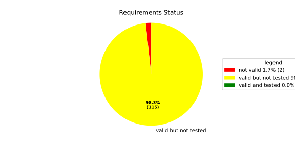
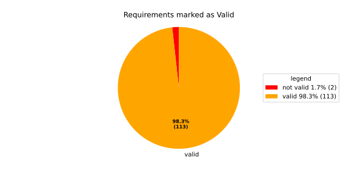
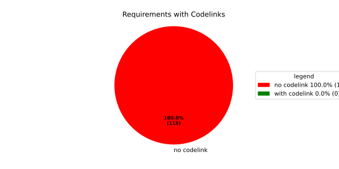

Verification Statistics#
Overview#

In Detail#


No needs passed the filters
Failed Tests
Hint: This table should be empty. Before a PR can be merged all tests have to be successful.
No needs passed the filters
Skipped / Disabled Tests
No needs passed the filters
All passed Tests#
No needs passed the filters
Details About Testcases#
No needs passed the filters
No needs passed the filters
Test Log Files#
tests-report/tests/integration/process_simple_rep_failure/process_simple_rep_failure/test.log
exec ${PAGER:-/usr/bin/less} "$0" || exit 1
Executing tests from //tests/integration/process_simple_rep_failure:process_simple_rep_failure
-----------------------------------------------------------------------------
============================= test session starts ==============================
platform linux -- Python 3.12.12, pytest-9.0.3, pluggy-1.5.0
rootdir: /home/runner/.bazel/sandbox/processwrapper-sandbox/998/execroot/_main/bazel-out/k8-fastbuild/bin/tests/integration/process_simple_rep_failure/process_simple_rep_failure.runfiles/score_itf+
configfile: pytest.ini
collected 1 item
../score_itf+::test_recovery_action_simple_rep_failure
-------------------------------- live log setup --------------------------------
[2026-07-01 11:44:28.062] [INFO] [score.itf.plugins.docker] Executing custom image bootstrap command: tests/utils/environments/x86_64-linux/x86_64-linux.sh
[2026-07-01 11:44:28.682] [DEBUG] [docker.utils.config] Trying paths: ['/home/runner/.docker/config.json', '/home/runner/.dockercfg']
[2026-07-01 11:44:28.682] [DEBUG] [docker.utils.config] Found file at path: /home/runner/.docker/config.json
[2026-07-01 11:44:28.683] [DEBUG] [docker.auth] Found 'auths' section
[2026-07-01 11:44:28.683] [DEBUG] [docker.auth] Found entry (registry='https://index.docker.io/v1/', username='githubactions')
[2026-07-01 11:44:28.711] [DEBUG] [urllib3.connectionpool] http://localhost:None "GET /version HTTP/1.1" 200 823
[2026-07-01 11:44:28.771] [DEBUG] [urllib3.connectionpool] http://localhost:None "POST /v1.48/containers/create HTTP/1.1" 201 88
[2026-07-01 11:44:28.776] [DEBUG] [urllib3.connectionpool] http://localhost:None "GET /v1.48/containers/adda376591acb974905a9a254a87dbbeca73789b6e77cbb0501b5a505ee9620c/json HTTP/1.1" 200 None
[2026-07-01 11:44:28.998] [DEBUG] [urllib3.connectionpool] http://localhost:None "POST /v1.48/containers/adda376591acb974905a9a254a87dbbeca73789b6e77cbb0501b5a505ee9620c/start HTTP/1.1" 204 0
[2026-07-01 11:44:29.001] [DEBUG] [docker.utils.config] Trying paths: ['/home/runner/.docker/config.json', '/home/runner/.dockercfg']
[2026-07-01 11:44:29.001] [DEBUG] [docker.utils.config] Found file at path: /home/runner/.docker/config.json
[2026-07-01 11:44:29.001] [DEBUG] [docker.auth] Found 'auths' section
[2026-07-01 11:44:29.001] [DEBUG] [docker.auth] Found entry (registry='https://index.docker.io/v1/', username='githubactions')
[2026-07-01 11:44:29.014] [DEBUG] [urllib3.connectionpool] http://localhost:None "GET /version HTTP/1.1" 200 823
[2026-07-01 11:44:29.386] [INFO] [tests.utils.testing_utils.setup_test] Test case setup finished
-------------------------------- live log call ---------------------------------
[2026-07-01 11:44:29.513] [INFO] [launch_manager] 2026/07/01 11:44:29.6269504 3001273 000 ECU1 LM LM log debug verbose 1 Launch Manager Started !!!!
[2026-07-01 11:44:29.513] [INFO] [launch_manager] 2026/07/01 11:44:29.6269504 3001275 000 ECU1 LM LM log debug verbose 1 Loading LCM Configurations...
[2026-07-01 11:44:29.513] [INFO] [launch_manager] 2026/07/01 11:44:29.6269504 3001275 000 ECU1 LM LM log debug verbose 1 ECUCFG_ENV_VAR_ROOTFOLDER set successfully
[2026-07-01 11:44:29.513] [INFO] [launch_manager] 2026/07/01 11:44:29.6269504 3001276 000 ECU1 LM LM log debug verbose 5 FlatBufferParser::getModeGroupPgName: MainPG ( IdentifierHash: 18079021346025578134 )
[2026-07-01 11:44:29.513] [INFO] [launch_manager] 2026/07/01 11:44:29.6269504 3001276 000 ECU1 LM LM log debug verbose 5 FlatBufferParser::getModeGroupPgStateName: MainPG/Startup ( IdentifierHash: 10504605499600661529 )
[2026-07-01 11:44:29.513] [INFO] [launch_manager] 2026/07/01 11:44:29.6269504 3001276 000 ECU1 LM LM log debug verbose 5 FlatBufferParser::getModeGroupPgStateName: MainPG/run_target_app_does_report_krunning_in_time ( IdentifierHash: 11934981641920773349 )
[2026-07-01 11:44:29.513] [INFO] [launch_manager] 2026/07/01 11:44:29.6269504 3001276 000 ECU1 LM LM log debug verbose 5 FlatBufferParser::getModeGroupPgStateName: MainPG/run_target_app_does_not_report_krunning_in_time ( IdentifierHash: 7672161913816744053 )
[2026-07-01 11:44:29.513] [INFO] [launch_manager] 2026/07/01 11:44:29.6269504 3001277 000 ECU1 LM LM log debug verbose 5 FlatBufferParser::getModeGroupPgStateName: MainPG/Off ( IdentifierHash: 15281793077830264047 )
[2026-07-01 11:44:29.513] [INFO] [launch_manager] 2026/07/01 11:44:29.6269504 3001277 000 ECU1 LM LM log debug verbose 5 FlatBufferParser::getModeGroupPgStateName: MainPG/fallback_run_target ( IdentifierHash: 4059409696722237352 )
[2026-07-01 11:44:29.513] [INFO] [launch_manager] 2026/07/01 11:44:29.6269504 3001277 000 ECU1 LM LM log debug verbose 4 parseProcessConfigurations: Process index: 0 executable_path_: /tmp/tests/process_simple_rep_failure/control_client_mock
[2026-07-01 11:44:29.513] [INFO] [launch_manager] 2026/07/01 11:44:29.6269504 3001278 000 ECU1 LM LM log debug verbose 3 Process control_client_mock is Reporting execution state
[2026-07-01 11:44:29.515] [INFO] [launch_manager] 2026/07/01 11:44:29.6269504 3001278 000 ECU1 LM LM log debug verbose 1 Process is STATE_MANAGEMENT function Cluster Affiliation
[2026-07-01 11:44:29.517] [INFO] [launch_manager] 2026/07/01 11:44:29.6269504 3001278 000 ECU1 LM LM log debug verbose 3 Process control_client_mock is Self terminating
[2026-07-01 11:44:29.517] [INFO] [launch_manager] 2026/07/01 11:44:29.6269504 3001278 000 ECU1 LM LM log debug verbose 4 ParseProcessProcessGroup: id:::pg_name_: MainPG , pg_state_name_: MainPG/Startup
[2026-07-01 11:44:29.517] [INFO] [launch_manager] 2026/07/01 11:44:29.6269504 3001278 000 ECU1 LM LM log debug verbose 4 ParseProcessProcessGroup: id:::pg_name_: MainPG , pg_state_name_: MainPG/run_target_app_does_report_krunning_in_time
[2026-07-01 11:44:29.519] [INFO] [launch_manager] 2026/07/01 11:44:29.6269504 3001279 000 ECU1 LM LM log debug verbose 4 ParseProcessProcessGroup: id:::pg_name_: MainPG , pg_state_name_: MainPG/run_target_app_does_not_report_krunning_in_time
[2026-07-01 11:44:29.519] [INFO] [launch_manager] 2026/07/01 11:44:29.6269504 3001279 000 ECU1 LM LM log debug verbose 4 ParseProcessProcessGroup: id:::pg_name_: MainPG , pg_state_name_: MainPG/fallback_run_target
[2026-07-01 11:44:29.519] [INFO] [launch_manager] 2026/07/01 11:44:29.6269504 3001279 000 ECU1 LM LM log debug verbose 4 parseProcessConfigurations: Process index: 1 executable_path_: /tmp/tests/process_simple_rep_failure/process_simple_reporting
[2026-07-01 11:44:29.519] [INFO] [launch_manager] 2026/07/01 11:44:29.6269504 3001279 000 ECU1 LM LM log debug verbose 3 Process component_does_report_krunning_in_time is Reporting execution state
[2026-07-01 11:44:29.519] [INFO] [launch_manager] 2026/07/01 11:44:29.6269505 3001281 000 ECU1 LM LM log debug verbose 1 Process is NOT associated with any function Cluster Affiliation
[2026-07-01 11:44:29.519] [INFO] [launch_manager] 2026/07/01 11:44:29.6269505 3001281 000 ECU1 LM LM log debug verbose 3 Process component_does_report_krunning_in_time is Self terminating
[2026-07-01 11:44:29.520] [INFO] [launch_manager] 2026/07/01 11:44:29.6269505 3001281 000 ECU1 LM LM log debug verbose 4 ParseProcessProcessGroup: id:::pg_name_: MainPG , pg_state_name_: MainPG/run_target_app_does_report_krunning_in_time
[2026-07-01 11:44:29.520] [INFO] [launch_manager] 2026/07/01 11:44:29.6269505 3001282 000 ECU1 LM LM log debug verbose 4 parseProcessConfigurations: Process index: 2 executable_path_: /tmp/tests/process_simple_rep_failure/process_simple_reporting
[2026-07-01 11:44:29.520] [INFO] [launch_manager] 2026/07/01 11:44:29.6269505 3001282 000 ECU1 LM LM log debug verbose 3 Process component_does_not_report_krunning_in_time is Reporting execution state
[2026-07-01 11:44:29.520] [INFO] [launch_manager] 2026/07/01 11:44:29.6269505 3001282 000 ECU1 LM LM log debug verbose 1 Process is NOT associated with any function Cluster Affiliation
[2026-07-01 11:44:29.520] [INFO] [launch_manager] 2026/07/01 11:44:29.6269505 3001282 000 ECU1 LM LM log debug verbose 3 Process component_does_not_report_krunning_in_time is Self terminating
[2026-07-01 11:44:29.520] [INFO] [launch_manager] 2026/07/01 11:44:29.6269505 3001282 000 ECU1 LM LM log debug verbose 4 ParseProcessProcessGroup: id:::pg_name_: MainPG , pg_state_name_: MainPG/run_target_app_does_not_report_krunning_in_time
[2026-07-01 11:44:29.520] [INFO] [launch_manager] 2026/07/01 11:44:29.6269505 3001283 000 ECU1 LM LM log debug verbose 4 parseProcessConfigurations: Process index: 3 executable_path_: /tmp/tests/process_simple_rep_failure/verification_process
[2026-07-01 11:44:29.520] [INFO] [launch_manager] 2026/07/01 11:44:29.6269505 3001283 000 ECU1 LM LM log debug verbose 3 Process verification_component is NOT Reporting execution state
[2026-07-01 11:44:29.520] [INFO] [launch_manager] 2026/07/01 11:44:29.6269505 3001283 000 ECU1 LM LM log debug verbose 1 Process is NOT associated with any function Cluster Affiliation
[2026-07-01 11:44:29.520] [INFO] [launch_manager] 2026/07/01 11:44:29.6269505 3001283 000 ECU1 LM LM log debug verbose 3 Process verification_component is Self terminating
[2026-07-01 11:44:29.521] [INFO] [launch_manager] 2026/07/01 11:44:29.6269505 3001284 000 ECU1 LM LM log debug verbose 4 ParseProcessProcessGroup: id:::pg_name_: MainPG , pg_state_name_: MainPG/fallback_run_target
[2026-07-01 11:44:29.522] [INFO] [launch_manager] 2026/07/01 11:44:29.6269505 3001284 000 ECU1 LM LM log debug verbose 3 Loading SWCL Nr. 0 Succeeded
[2026-07-01 11:44:29.522] [INFO] [launch_manager] 2026/07/01 11:44:29.6269505 3001284 000 ECU1 LM LM log debug verbose 2 1 process group(s)
[2026-07-01 11:44:29.522] [INFO] [launch_manager] 2026/07/01 11:44:29.6269505 3001284 000 ECU1 LM LM log debug verbose 3 Creating graph with 4 nodes
[2026-07-01 11:44:29.522] [INFO] [launch_manager] 2026/07/01 11:44:29.6269505 3001284 000 ECU1 LM LM log debug verbose 1 Process groups initialized successfully
[2026-07-01 11:44:29.522] [INFO] [launch_manager] 2026/07/01 11:44:29.6269505 3001284 000 ECU1 LM LM log debug verbose 1 Process Group initialization done
[2026-07-01 11:44:29.522] [INFO] [launch_manager] 2026/07/01 11:44:29.6269505 3001285 000 ECU1 LM LM log debug verbose 3 Creating Safe Process Map with 4 entries
[2026-07-01 11:44:29.522] [INFO] [launch_manager] 2026/07/01 11:44:29.6269505 3001285 000 ECU1 LM LM log debug verbose 2 Creating job queue with capacity 1024
[2026-07-01 11:44:29.522] [INFO] [launch_manager] 2026/07/01 11:44:29.6269505 3001285 000 ECU1 LM LM log debug verbose 1 Creating worker threads...
[2026-07-01 11:44:29.527] [INFO] [launch_manager] 2026/07/01 11:44:29.6269506 3001297 000 ECU1 LM LM log debug verbose 7
[2026-07-01 11:44:29.532] [INFO] [launch_manager] Process group index 0 (with name MainPG ) has 4 processes
[2026-07-01 11:44:29.538] [INFO] [launch_manager] 2026/07/01 11:44:29.6269506 3001298 000 ECU1 LM LM log debug verbose 2 Creating process node with id: 0
[2026-07-01 11:44:29.538] [INFO] [launch_manager] 2026/07/01 11:44:29.6269506 3001298 000 ECU1 LM LM log debug verbose 5 Process 0 has 0 start dependencies
[2026-07-01 11:44:29.538] [INFO] [launch_manager] 2026/07/01 11:44:29.6269506 3001299 000 ECU1 LM LM log debug verbose 2 Creating process node with id: 1
[2026-07-01 11:44:29.538] [INFO] [launch_manager] 2026/07/01 11:44:29.6269506 3001299 000 ECU1 LM LM log debug verbose 5 Process 1 has 0 start dependencies
[2026-07-01 11:44:29.538] [INFO] [launch_manager] 2026/07/01 11:44:29.6269506 3001299 000 ECU1 LM LM log debug verbose 2 Creating process node with id: 2
[2026-07-01 11:44:29.538] [INFO] [launch_manager] 2026/07/01 11:44:29.6269506 3001299 000 ECU1 LM LM log debug verbose 5 Process 2 has 0 start dependencies
[2026-07-01 11:44:29.538] [INFO] [launch_manager] 2026/07/01 11:44:29.6269506 3001299 000 ECU1 LM LM log debug verbose 2 Creating process node with id: 3
[2026-07-01 11:44:29.538] [INFO] [launch_manager] 2026/07/01 11:44:29.6269506 3001299 000 ECU1 LM LM log debug verbose 5 Process 3 has 0 start dependencies
[2026-07-01 11:44:29.538] [INFO] [launch_manager] 2026/07/01 11:44:29.6269507 3001300 000 ECU1 LM LM log debug verbose 3 Created 4 process nodes
[2026-07-01 11:44:29.538] [INFO] [launch_manager] 2026/07/01 11:44:29.6269507 3001300 000 ECU1 LM LM log debug verbose 2 Creating successor lists for process group MainPG
[2026-07-01 11:44:29.538] [INFO] [launch_manager] 2026/07/01 11:44:29.6269507 3001300 000 ECU1 LM LM log debug verbose 1 Graphs initialized
[2026-07-01 11:44:29.539] [INFO] [launch_manager] 2026/07/01 11:44:29.6269507 3001302 000 ECU1 LM Fcty log info verbose 2 Factory for FlatCfg MachineConfig: Loading of HM Machine Configuration succeeded.
[2026-07-01 11:44:29.539] [INFO] [launch_manager] 2026/07/01 11:44:29.6269507 3001302 000 ECU1 LM Fcty log debug verbose 3 Factory for FlatCfg MachineConfig: Alive Supervision buffer size: 100
[2026-07-01 11:44:29.539] [INFO] [launch_manager] 2026/07/01 11:44:29.6269507 3001303 000 ECU1 LM Fcty log debug verbose 3 Factory for FlatCfg MachineConfig: Monitor buffer size: 512
[2026-07-01 11:44:29.539] [INFO] [launch_manager] 2026/07/01 11:44:29.6269507 3001303 000 ECU1 LM Fcty log debug verbose 4 Factory for FlatCfg MachineConfig: Periodicity: 50000000 ns
[2026-07-01 11:44:29.539] [INFO] [launch_manager] 2026/07/01 11:44:29.6269507 3001303 000 ECU1 LM Fcty log debug verbose 3 Factory for FlatCfg MachineConfig: Configured watchdogs: 0
[2026-07-01 11:44:29.539] [INFO] [launch_manager] 2026/07/01 11:44:29.6269507 3001303 000 ECU1 LM Fcty log warn verbose 2 Factory for FlatCfg MachineConfig: No watchdog configured
[2026-07-01 11:44:29.539] [INFO] [launch_manager] 2026/07/01 11:44:29.6269507 3001304 000 ECU1 LM Fcty log debug verbose 2 Software Cluster Handler starts constructing workers: MainCluster
[2026-07-01 11:44:29.539] [INFO] [launch_manager] 2026/07/01 11:44:29.6269507 3001304 000 ECU1 LM Fcty log debug verbose 3 Factory for FlatCfg AR24-11: Successfully created Process States: control_client_mock
[2026-07-01 11:44:29.539] [INFO] [launch_manager] 2026/07/01 11:44:29.6269507 3001304 000 ECU1 LM Fcty log debug verbose 3 Factory for FlatCfg AR24-11: Number of constructed Process States: 1
[2026-07-01 11:44:29.539] [INFO] [launch_manager] 2026/07/01 11:44:29.6269507 3001305 000 ECU1 LM Fcty log debug verbose 3 Factory for FlatCfg AR24-11: Successfully created Alive interface IPC with path: lifecycle_health_control_client_mock
[2026-07-01 11:44:29.539] [INFO] [launch_manager] 2026/07/01 11:44:29.6269507 3001305 000 ECU1 LM Fcty log debug verbose 3 Factory for FlatCfg AR24-11: Number of constructed Alive interface IPCs: 1
[2026-07-01 11:44:29.540] [INFO] [launch_manager] 2026/07/01 11:44:29.6269507 3001306 000 ECU1 LM Fcty log debug verbose 3 Factory for FlatCfg AR24-11: Successfully created Alive Interface: /lifecycle_health_control_client_mock
[2026-07-01 11:44:29.540] [INFO] [launch_manager] 2026/07/01 11:44:29.6269507 3001306 000 ECU1 LM Fcty log debug verbose 3 Factory for FlatCfg AR24-11: Number of constructed Alive interfaces: 1
[2026-07-01 11:44:29.540] [INFO] [launch_manager] 2026/07/01 11:44:29.6269507 3001306 000 ECU1 LM Fcty log debug verbose 3 Factory for FlatCfg AR24-11: Successfully created supervision checkpoint: control_client_mock_checkpoint
[2026-07-01 11:44:29.540] [INFO] [launch_manager] 2026/07/01 11:44:29.6269507 3001306 000 ECU1 LM Fcty log debug verbose 3 Factory for FlatCfg AR24-11: Number of constructed supervision checkpoints: 1
[2026-07-01 11:44:29.540] [INFO] [launch_manager] 2026/07/01 11:44:29.6269507 3001307 000 ECU1 LM Fcty log debug verbose 3 Factory for FlatCfg AR24-11: Successfully created alive supervision worker object: control_client_mock_alive_supervision
[2026-07-01 11:44:29.540] [INFO] [launch_manager] 2026/07/01 11:44:29.6269507 3001307 000 ECU1 LM Fcty log debug verbose 3 Factory for FlatCfg AR24-11: Number of constructed alive supervisions: 1
[2026-07-01 11:44:29.540] [INFO] [launch_manager] 2026/07/01 11:44:29.6269507 3001307 000 ECU1 LM Fcty log info verbose 2 Phm Daemon: The (configured) periodicity in [ns] is set to: 50000000
[2026-07-01 11:44:29.540] [INFO] [launch_manager] 2026/07/01 11:44:29.6269507 3001307 000 ECU1 LM Fcty log debug verbose 2 Phm Daemon: The accuracy of the monotonic system clock in [ns] is: 1
[2026-07-01 11:44:29.540] [INFO] [launch_manager] 2026/07/01 11:44:29.6269507 3001307 000 ECU1 LM Fcty log debug verbose 3 AliveMonitor: Initialization took 0 ms
[2026-07-01 11:44:29.540] [INFO] [launch_manager] 2026/07/01 11:44:29.6269507 3001308 000 ECU1 LM LM log info verbose 1
[2026-07-01 11:44:29.540] [INFO] [launch_manager] LCM started successfully
[2026-07-01 11:44:29.541] [INFO] [launch_manager] 2026/07/01 11:44:29.6269508 3001311 000 ECU1 LM LM log debug verbose 3
[2026-07-01 11:44:29.541] [INFO] [launch_manager] clock() at run(): 31.237000 ms
[2026-07-01 11:44:29.541] [INFO] [launch_manager] 2026/07/01 11:44:29.6269508 3001314 000 ECU1 LM LM log debug verbose 1
[2026-07-01 11:44:29.541] [INFO] [launch_manager] =============STARTING MAINPG STARTUP STATE============
[2026-07-01 11:44:29.541] [INFO] [launch_manager] 2026/07/01 11:44:29.6269508 3001316 000 ECU1 LM LM log debug verbose 9
[2026-07-01 11:44:29.541] [INFO] [launch_manager] Graph::setState changes from kSuccess to kInTransition for PG 0 ( MainPG )
[2026-07-01 11:44:29.541] [INFO] [launch_manager] 2026/07/01 11:44:29.6269508 3001318 000 ECU1 LM LM log debug verbose 2
[2026-07-01 11:44:29.541] [INFO] [launch_manager] Stop Dependencies: 0
[2026-07-01 11:44:29.541] [INFO] [launch_manager] 2026/07/01 11:44:29.6269508 3001319 000 ECU1 LM LM log debug verbose 2
[2026-07-01 11:44:29.541] [INFO] [launch_manager] Stop Dependencies: 0
[2026-07-01 11:44:29.541] [INFO] [launch_manager] 2026/07/01 11:44:29.6269509 3001321 000 ECU1 LM LM log debug verbose 2
[2026-07-01 11:44:29.542] [INFO] [launch_manager] Stop Dependencies: 0
[2026-07-01 11:44:29.542] [INFO] [launch_manager] 2026/07/01 11:44:29.6269509 3001323 000 ECU1 LM LM log debug verbose 2
[2026-07-01 11:44:29.542] [INFO] [launch_manager] Stop Dependencies: 0
[2026-07-01 11:44:29.542] [INFO] [launch_manager] 2026/07/01 11:44:29.6269509 3001325 000 ECU1 LM LM log debug verbose 2
[2026-07-01 11:44:29.542] [INFO] [launch_manager] Start Dependencies: 0
[2026-07-01 11:44:29.542] [INFO] [launch_manager] 2026/07/01 11:44:29.6269509 3001327 000 ECU1 LM LM log debug verbose 2
[2026-07-01 11:44:29.542] [INFO] [launch_manager] Start Dependencies: 0
[2026-07-01 11:44:29.542] [INFO] [launch_manager] 2026/07/01 11:44:29.6269509 3001328 000 ECU1 LM LM log debug verbose 2
[2026-07-01 11:44:29.542] [INFO] [launch_manager] Start Dependencies: 0
[2026-07-01 11:44:29.542] [INFO] [launch_manager] 2026/07/01 11:44:29.6269510 3001330 000 ECU1 LM LM log debug verbose 2
[2026-07-01 11:44:29.542] [INFO] [launch_manager] Start Dependencies: 0
[2026-07-01 11:44:29.542] [INFO] [launch_manager] 2026/07/01 11:44:29.6269510 3001331 000 ECU1 LM LM log debug verbose 6
[2026-07-01 11:44:29.544] [INFO] [launch_manager] Starting process 0 ( control_client_mock ) from executable /tmp/tests/process_simple_rep_failure/control_client_mock
[2026-07-01 11:44:29.545] [INFO] [launch_manager] 2026/07/01 11:44:29.6269510 3001334 000 ECU1 LM LM log debug verbose 3
[2026-07-01 11:44:29.545] [INFO] [launch_manager] Initialize the control client for control_client_mock process
[2026-07-01 11:44:29.546] [INFO] [launch_manager] 2026/07/01 11:44:29.6269510 3001335 000 ECU1 LM LM log debug verbose 1
[2026-07-01 11:44:29.548] [INFO] [launch_manager] ControlClientChannel initialized
[2026-07-01 11:44:29.548] [INFO] [launch_manager] 2026/07/01 11:44:29.6269511 3001340 000 ECU1 LM LM log debug verbose 4
[2026-07-01 11:44:29.548] [INFO] [launch_manager] startProcess pid 68 received for process: control_client_mock
[2026-07-01 11:44:29.549] [INFO] [launch_manager] 2026/07/01 11:44:29.6269511 3001349 000 ECU1 LM LM log debug verbose 1
[2026-07-01 11:44:29.549] [INFO] [launch_manager] ControlClientChannel obtained from sync.
[2026-07-01 11:44:29.549] [INFO] [launch_manager] [==========] Running 1 test from 1 test suite.
[2026-07-01 11:44:29.549] [INFO] [launch_manager] [----------] Global test environment set-up.
[2026-07-01 11:44:29.549] [INFO] [launch_manager] [----------] 1 test from RecoveryActionSimpleRepFailure
[2026-07-01 11:44:29.549] [INFO] [launch_manager] [ RUN ] RecoveryActionSimpleRepFailure.ControlClientMock
[2026-07-01 11:44:29.549] [INFO] [launch_manager] [ STEP ] Report running from ControlClientMock
[2026-07-01 11:44:29.549] [INFO] [launch_manager] [ END STEP ] Report running from ControlClientMock
[2026-07-01 11:44:29.549] [INFO] [launch_manager] [ STEP ] Activate RunTarget run_target_app_does_report_krunning_in_time
[2026-07-01 11:44:29.549] [INFO] [launch_manager] 2026/07/01 11:44:29.6269518 3001411 000 ECU1 LM LM log debug verbose 8 Got kRunning for pid 68 ( control_client_mock ) process 0 of group MainPG
[2026-07-01 11:44:29.549] [INFO] [launch_manager] 2026/07/01 11:44:29.6269518 3001412 000 ECU1 LM LM log debug verbose 7 startProcess for MainPG process 0 ( control_client_mock ) done
[2026-07-01 11:44:29.549] [INFO] [launch_manager] 2026/07/01 11:44:29.6269518 3001412 000 ECU1 LM LM log debug verbose 1 Control Client handler nudged
[2026-07-01 11:44:29.550] [INFO] [launch_manager] 2026/07/01 11:44:29.6269518 3001412 000 ECU1 LM LM log debug verbose 3 clock() at successful initial state transition: 32.630000 ms
[2026-07-01 11:44:29.550] [INFO] [launch_manager] 2026/07/01 11:44:29.6269518 3001413 000 ECU1 LM LM log debug verbose 9 Graph::setState changes from kInTransition to kSuccess for PG 0 ( MainPG )
[2026-07-01 11:44:29.550] [INFO] [launch_manager] 2026/07/01 11:44:29.6269518 3001413 000 ECU1 LM LM log info verbose 7 Completed the request for PG MainPG to State MainPG/Startup in 9 ms
[2026-07-01 11:44:29.550] [INFO] [launch_manager] 2026/07/01 11:44:29.6269518 3001413 000 ECU1 LM LM log debug verbose 1 Control Client handler nudged
[2026-07-01 11:44:29.550] [INFO] [launch_manager] 2026/07/01 11:44:29.6269518 3001413 000 ECU1 LM LM log debug verbose 8 ProcessGroupManager::ControlClientHandler: got request kSetStateRequest ( 16 ) re state MainPG/run_target_app_does_report_krunning_in_time of PG MainPG
[2026-07-01 11:44:29.550] [INFO] [launch_manager] 2026/07/01 11:44:29.6269518 3001414 000 ECU1 LM LM log debug verbose 6 Pending state for process group MainPG changed from to MainPG/run_target_app_does_report_krunning_in_time
[2026-07-01 11:44:29.550] [INFO] [launch_manager] 2026/07/01 11:44:29.6269518 3001414 000 ECU1 LM LM log debug verbose 1 Request acknowledged.
[2026-07-01 11:44:29.550] [INFO] [launch_manager] 2026/07/01 11:44:29.6269518 3001414 000 ECU1 LM LM log debug verbose 6 Pending state for process group MainPG changed from MainPG/run_target_app_does_report_krunning_in_time to
[2026-07-01 11:44:29.551] [INFO] [launch_manager] 2026/07/01 11:44:29.6269518 3001414 000 ECU1 LM LM log debug verbose 4 Start transition to MainPG/run_target_app_does_report_krunning_in_time for PG MainPG
[2026-07-01 11:44:29.551] [INFO] [launch_manager] 2026/07/01 11:44:29.6269518 3001414 000 ECU1 LM LM log debug verbose 9 Graph::setState changes from kSuccess to kInTransition for PG 0 ( MainPG )
[2026-07-01 11:44:29.551] [INFO] [launch_manager] 2026/07/01 11:44:29.6269518 3001415 000 ECU1 LM LM log debug verbose 2 Stop Dependencies: 0
[2026-07-01 11:44:29.551] [INFO] [launch_manager] 2026/07/01 11:44:29.6269518 3001415 000 ECU1 LM LM log debug verbose 2 Stop Dependencies: 0
[2026-07-01 11:44:29.551] [INFO] [launch_manager] 2026/07/01 11:44:29.6269518 3001415 000 ECU1 LM LM log debug verbose 2 Stop Dependencies: 0
[2026-07-01 11:44:29.551] [INFO] [launch_manager] 2026/07/01 11:44:29.6269518 3001415 000 ECU1 LM LM log debug verbose 2 Stop Dependencies: 0
[2026-07-01 11:44:29.551] [INFO] [launch_manager] 2026/07/01 11:44:29.6269518 3001415 000 ECU1 LM LM log debug verbose 2 Start Dependencies: 0
[2026-07-01 11:44:29.551] [INFO] [launch_manager] 2026/07/01 11:44:29.6269518 3001415 000 ECU1 LM LM log debug verbose 2 Start Dependencies: 0
[2026-07-01 11:44:29.551] [INFO] [launch_manager] 2026/07/01 11:44:29.6269518 3001416 000 ECU1 LM LM log debug verbose 2 Start Dependencies: 0
[2026-07-01 11:44:29.551] [INFO] [launch_manager] 2026/07/01 11:44:29.6269518 3001416 000 ECU1 LM LM log debug verbose 2 Start Dependencies: 0
[2026-07-01 11:44:29.551] [INFO] [launch_manager] 2026/07/01 11:44:29.6269518 3001416 000 ECU1 LM LM log debug verbose 6 Starting process 1 ( component_does_report_krunning_in_time ) from executable /tmp/tests/process_simple_rep_failure/process_simple_reporting
[2026-07-01 11:44:29.551] [INFO] [launch_manager] 2026/07/01 11:44:29.6269519 3001421 000 ECU1 LM LM log debug verbose 1 Request sent. Waiting for acknowledgment...
[2026-07-01 11:44:29.551] [INFO] [launch_manager] 2026/07/01 11:44:29.6269519 3001421 000 ECU1 LM LM log debug verbose 4 startProcess pid 70 received for process: component_does_report_krunning_in_time
[2026-07-01 11:44:29.552] [INFO] [launch_manager] 2026/07/01 11:44:29.6269519 3001421 000 ECU1 LM LM log debug verbose 1 Request acknowledged.
[2026-07-01 11:44:29.552] [INFO] [launch_manager] [==========] Running 1 test from 1 test suite.
[2026-07-01 11:44:29.552] [INFO] [launch_manager] [----------] Global test environment set-up.
[2026-07-01 11:44:29.552] [INFO] [launch_manager] [----------] 1 test from ProcessSimpleRepFailure
[2026-07-01 11:44:29.552] [INFO] [launch_manager] [ RUN ] ProcessSimpleRepFailure.ProcessSimpleReporting
[2026-07-01 11:44:29.552] [INFO] [launch_manager] [ STEP ] Check args
[2026-07-01 11:44:29.552] [INFO] [launch_manager] [ END STEP ] Check args
[2026-07-01 11:44:29.552] [INFO] [launch_manager] [ STEP ] Report running from ProcessSimpleReporting
[2026-07-01 11:44:29.558] [INFO] [launch_manager] 2026/07/01 11:44:29.6269557 3001809 000 ECU1 LM Sprv log debug verbose 6 Process with Id control_client_mock changed state PG MainPG/Startup PS 1
[2026-07-01 11:44:29.559] [INFO] [launch_manager] 2026/07/01 11:44:29.6269558 3001810 000 ECU1 LM Sprv log debug verbose 6 Process with Id control_client_mock changed state PG MainPG/Startup PS 2
[2026-07-01 11:44:29.559] [INFO] [launch_manager] 2026/07/01 11:44:29.6269558 3001810 000 ECU1 LM Sprv log debug verbose 6 Process with Id component_does_report_krunning_in_time changed state PG MainPG/run_target_app_does_report_krunning_in_time PS 1
[2026-07-01 11:44:29.559] [INFO] [launch_manager] 2026/07/01 11:44:29.6269558 3001810 000 ECU1 LM Sprv log info verbose 3 Alive Supervision ( control_client_mock_alive_supervision ) switched to OK.
[2026-07-01 11:44:29.602] [DEBUG] [tests.utils.testing_utils.run_until_file_deployed] Waiting for /tmp/tests/test_end
[2026-07-01 11:44:30.026] [INFO] [launch_manager] [ END STEP ] Report running from ProcessSimpleReporting
[2026-07-01 11:44:30.026] [INFO] [launch_manager] [ OK ] ProcessSimpleRepFailure.ProcessSimpleReporting (503 ms)
[2026-07-01 11:44:30.026] [INFO] [launch_manager] [----------] 1 test from ProcessSimpleRepFailure (503 ms total)
[2026-07-01 11:44:30.026] [INFO] [launch_manager] [----------] Global test environment tear-down
[2026-07-01 11:44:30.027] [INFO] [launch_manager] [==========] 1 test from 1 test suite ran. (503 ms total)
[2026-07-01 11:44:30.027] [INFO] [launch_manager] [ PASSED ] 1 test.
[2026-07-01 11:44:30.030] [INFO] [launch_manager] 2026/07/01 11:44:30.6270024 3006477 000 ECU1 LM LM log debug verbose 12 Child process 1 of MainPG pid 70 ( component_does_report_krunning_in_time ) for node True terminated with status 0
[2026-07-01 11:44:30.030] [INFO] [launch_manager] 2026/07/01 11:44:30.6270025 3006484 000 ECU1 LM LM log debug verbose 8 Got kRunning for pid 70 ( component_does_report_krunning_in_time ) process 1 of group MainPG
[2026-07-01 11:44:30.030] [INFO] [launch_manager] 2026/07/01 11:44:30.6270025 3006484 000 ECU1 LM LM log debug verbose 7 startProcess for MainPG process 1 ( component_does_report_krunning_in_time ) done
[2026-07-01 11:44:30.030] [INFO] [launch_manager] 2026/07/01 11:44:30.6270025 3006485 000 ECU1 LM LM log debug verbose 9 Graph::setState changes from kInTransition to kSuccess for PG 0 ( MainPG )
[2026-07-01 11:44:30.030] [INFO] [launch_manager] 2026/07/01 11:44:30.6270025 3006485 000 ECU1 LM LM log info verbose 7 Completed the request for PG MainPG to State MainPG/run_target_app_does_report_krunning_in_time in 507 ms
[2026-07-01 11:44:30.030] [INFO] [launch_manager] 2026/07/01 11:44:30.6270025 3006485 000 ECU1 LM LM log debug verbose 1 Control Client handler nudged
[2026-07-01 11:44:30.030] [INFO] [launch_manager] 2026/07/01 11:44:30.6270026 3006499 000 ECU1 LM LM log debug verbose 8 ProcessGroupManager::ControlClientHandler: Sending kSetStateSuccess ( 20 ) re state MainPG/run_target_app_does_report_krunning_in_time of PG MainPG
[2026-07-01 11:44:30.030] [INFO] [launch_manager] 2026/07/01 11:44:30.6270026 3006499 000 ECU1 LM LM log debug verbose 1 Response sent.
[2026-07-01 11:44:30.048] [INFO] [launch_manager] 2026/07/01 11:44:30.6270038 3006620 000 ECU1 LM LM log debug verbose 1 Response retrieved.
[2026-07-01 11:44:30.048] [INFO] [launch_manager] [ END STEP ] Activate RunTarget run_target_app_does_report_krunning_in_time
[2026-07-01 11:44:30.059] [INFO] [launch_manager] 2026/07/01 11:44:30.6270057 3006809 000 ECU1 LM Sprv log debug verbose 6 Process with Id component_does_report_krunning_in_time changed state PG MainPG/run_target_app_does_report_krunning_in_time PS 4
[2026-07-01 11:44:30.180] [DEBUG] [tests.utils.testing_utils.run_until_file_deployed] Waiting for /tmp/tests/test_end
[2026-07-01 11:44:30.749] [DEBUG] [tests.utils.testing_utils.run_until_file_deployed] Waiting for /tmp/tests/test_end
[2026-07-01 11:44:31.043] [INFO] [launch_manager] [ STEP ] Verify fallback run target has not been activated
[2026-07-01 11:44:31.044] [INFO] [launch_manager] [ END STEP ] Verify fallback run target has not been activated
[2026-07-01 11:44:31.044] [INFO] [launch_manager] [ STEP ] Activate RunTarget run_target_app_does_not_report_krunning_in_time
[2026-07-01 11:44:31.044] [INFO] [launch_manager] 2026/07/01 11:44:31.6271043 3016666 000 ECU1 LM LM log debug verbose 1 Request sent. Waiting for acknowledgment...
[2026-07-01 11:44:31.045] [INFO] [launch_manager] 2026/07/01 11:44:31.6271045 3016681 000 ECU1 LM LM log debug verbose 8
[2026-07-01 11:44:31.047] [INFO] [launch_manager] ProcessGroupManager::ControlClientHandler: got request kSetStateRequest ( 16 ) re state MainPG/run_target_app_does_not_report_krunning_in_time of PG MainPG
[2026-07-01 11:44:31.047] [INFO] [launch_manager] 2026/07/01 11:44:31.6271045 3016683 000 ECU1 LM LM log debug verbose 6 Pending state for process group MainPG changed from to MainPG/run_target_app_does_not_report_krunning_in_time
[2026-07-01 11:44:31.047] [INFO] [launch_manager] 2026/07/01 11:44:31.6271045 3016683 000 ECU1 LM LM log debug verbose 1 Request acknowledged.
[2026-07-01 11:44:31.047] [INFO] [launch_manager] 2026/07/01 11:44:31.6271045 3016684 000 ECU1 LM LM log debug verbose 6 Pending state for process group MainPG changed from MainPG/run_target_app_does_not_report_krunning_in_time to
[2026-07-01 11:44:31.047] [INFO] [launch_manager] 2026/07/01 11:44:31.6271045 3016684 000 ECU1 LM LM log debug verbose 4 Start transition to MainPG/run_target_app_does_not_report_krunning_in_time for PG MainPG
[2026-07-01 11:44:31.047] [INFO] [launch_manager] 2026/07/01 11:44:31.6271045 3016684 000 ECU1 LM LM log debug verbose 9 Graph::setState changes from kSuccess to kInTransition for PG 0 ( MainPG )
[2026-07-01 11:44:31.047] [INFO] [launch_manager] 2026/07/01 11:44:31.6271045 3016684 000 ECU1 LM LM log debug verbose 2 Stop Dependencies: 0
[2026-07-01 11:44:31.047] [INFO] [launch_manager] 2026/07/01 11:44:31.6271045 3016684 000 ECU1 LM LM log debug verbose 2 Stop Dependencies: 0
[2026-07-01 11:44:31.049] [INFO] [launch_manager] 2026/07/01 11:44:31.6271045 3016685 000 ECU1 LM LM log debug verbose 2 Stop Dependencies: 0
[2026-07-01 11:44:31.049] [INFO] [launch_manager] 2026/07/01 11:44:31.6271045 3016685 000 ECU1 LM LM log debug verbose 2 Stop Dependencies: 0
[2026-07-01 11:44:31.049] [INFO] [launch_manager] 2026/07/01 11:44:31.6271045 3016685 000 ECU1 LM LM log debug verbose 2 Start Dependencies: 0
[2026-07-01 11:44:31.049] [INFO] [launch_manager] 2026/07/01 11:44:31.6271045 3016685 000 ECU1 LM LM log debug verbose 2 Start Dependencies: 0
[2026-07-01 11:44:31.049] [INFO] [launch_manager] 2026/07/01 11:44:31.6271045 3016685 000 ECU1 LM LM log debug verbose 2 Start Dependencies: 0
[2026-07-01 11:44:31.049] [INFO] [launch_manager] 2026/07/01 11:44:31.6271045 3016685 000 ECU1 LM LM log debug verbose 2 Start Dependencies: 0
[2026-07-01 11:44:31.049] [INFO] [launch_manager] 2026/07/01 11:44:31.6271045 3016689 000 ECU1 LM LM log debug verbose 6 Starting process 2 ( component_does_not_report_krunning_in_time ) from executable /tmp/tests/process_simple_rep_failure/process_simple_reporting
[2026-07-01 11:44:31.049] [INFO] [launch_manager] 2026/07/01 11:44:31.6271047 3016707 000 ECU1 LM LM log debug verbose 1 Request acknowledged.
[2026-07-01 11:44:31.049] [INFO] [launch_manager] 2026/07/01 11:44:31.6271047 3016707 000 ECU1 LM LM log debug verbose 4 startProcess pid 90 received for process: component_does_not_report_krunning_in_time
[2026-07-01 11:44:31.049] [INFO] [launch_manager] [==========] Running 1 test from 1 test suite.
[2026-07-01 11:44:31.049] [INFO] [launch_manager] [----------] Global test environment set-up.
[2026-07-01 11:44:31.049] [INFO] [launch_manager] [----------] 1 test from ProcessSimpleRepFailure
[2026-07-01 11:44:31.049] [INFO] [launch_manager] [ RUN ] ProcessSimpleRepFailure.ProcessSimpleReporting
[2026-07-01 11:44:31.050] [INFO] [launch_manager] [ STEP ] Check args
[2026-07-01 11:44:31.050] [INFO] [launch_manager] [ END STEP ] Check args
[2026-07-01 11:44:31.050] [INFO] [launch_manager] [ STEP ] Report running from ProcessSimpleReporting
[2026-07-01 11:44:31.058] [INFO] [launch_manager] 2026/07/01 11:44:31.6271057 3016809 000 ECU1 LM Sprv log debug verbose 6 Process with Id component_does_not_report_krunning_in_time changed state PG MainPG/run_target_app_does_not_report_krunning_in_time PS 1
[2026-07-01 11:44:31.324] [DEBUG] [tests.utils.testing_utils.run_until_file_deployed] Waiting for /tmp/tests/test_end
[2026-07-01 11:44:31.884] [DEBUG] [tests.utils.testing_utils.run_until_file_deployed] Waiting for /tmp/tests/test_end
[2026-07-01 11:44:32.108] [INFO] [launch_manager] 2026/07/01 11:44:32.6272107 3027309 000 ECU1 LM LM log error verbose 1 Semaphore timedWait or post failed: Unable to wait or post on semaphores within the specified timeout.
[2026-07-01 11:44:32.108] [INFO] [launch_manager] 2026/07/01 11:44:32.6272107 3027309 000 ECU1 LM LM log warn verbose 5 Got kRunning timeout for process 2 ( component_does_not_report_krunning_in_time )
[2026-07-01 11:44:32.108] [INFO] [launch_manager] 2026/07/01 11:44:32.6272107 3027309 000 ECU1 LM LM log debug verbose 5 terminating process 2 ( component_does_not_report_krunning_in_time )
[2026-07-01 11:44:32.108] [INFO] [launch_manager] 2026/07/01 11:44:32.6272108 3027310 000 ECU1 LM LM log debug verbose 9 Requesting termination of process 2 of MainPG pid 90 ( component_does_not_report_krunning_in_time )
[2026-07-01 11:44:32.108] [INFO] [launch_manager] 2026/07/01 11:44:32.6272108 3027311 000 ECU1 LM LM log debug verbose 2 Request termination received for 90
[2026-07-01 11:44:32.158] [INFO] [launch_manager] 2026/07/01 11:44:32.6272157 3027809 000 ECU1 LM Sprv log debug verbose 6 Process with Id component_does_not_report_krunning_in_time changed state PG MainPG/run_target_app_does_not_report_krunning_in_time PS 3
[2026-07-01 11:44:32.431] [DEBUG] [tests.utils.testing_utils.run_until_file_deployed] Waiting for /tmp/tests/test_end
[2026-07-01 11:44:32.982] [DEBUG] [tests.utils.testing_utils.run_until_file_deployed] Waiting for /tmp/tests/test_end
[2026-07-01 11:44:33.151] [INFO] [launch_manager] 2026/07/01 11:44:33.6273151 3037742 000 ECU1 LM LM log warn verbose 5 Process 2 ( component_does_not_report_krunning_in_time ) did not respond to SIGTERM, sending SIGKILL
[2026-07-01 11:44:33.153] [INFO] [launch_manager] 2026/07/01 11:44:33.6273151 3037743 000 ECU1 LM LM log debug verbose 2 Forced termination received for pid 90
[2026-07-01 11:44:33.153] [INFO] [launch_manager] 2026/07/01 11:44:33.6273151 3037747 000 ECU1 LM LM log debug verbose 12 Child process 2 of MainPG pid 90 ( component_does_not_report_krunning_in_time ) for node True terminated with status 9
[2026-07-01 11:44:33.153] [INFO] [launch_manager] 2026/07/01 11:44:33.6273151 3037747 000 ECU1 LM LM log warn verbose 7
[2026-07-01 11:44:33.153] [INFO] [launch_manager] unexpected termination of process 2 pid 90 ( component_does_not_report_krunning_in_time )
[2026-07-01 11:44:33.153] [INFO] [launch_manager] 2026/07/01 11:44:33.6273151 3037748 000 ECU1 LM LM log debug verbose 9
[2026-07-01 11:44:33.153] [INFO] [launch_manager] Graph::setState changes from kInTransition to kAborting for PG 0 ( MainPG )
[2026-07-01 11:44:33.156] [INFO] [launch_manager] 2026/07/01 11:44:33.6273155 3037780 000 ECU1 LM LM log debug verbose 7 terminateProcess for MainPG process 2 ( component_does_not_report_krunning_in_time ) done
[2026-07-01 11:44:33.156] [INFO] [launch_manager] 2026/07/01 11:44:33.6273155 3037781 000 ECU1 LM LM log debug verbose 7 startProcess for MainPG process 2 ( component_does_not_report_krunning_in_time ) done
[2026-07-01 11:44:33.156] [INFO] [launch_manager] 2026/07/01 11:44:33.6273155 3037781 000 ECU1 LM LM log debug verbose 9 Graph::setState changes from kAborting to kUndefinedState for PG 0 ( MainPG )
[2026-07-01 11:44:33.156] [INFO] [launch_manager] 2026/07/01 11:44:33.6273155 3037782 000 ECU1 LM LM log debug verbose 1 Control Client handler nudged
[2026-07-01 11:44:33.156] [INFO] [launch_manager] 2026/07/01 11:44:33.6273155 3037783 000 ECU1 LM LM log debug verbose 8 ProcessGroupManager::ControlClientHandler: Sending kFailedUnexpectedTerminationOnEnter ( 23 ) re state MainPG/run_target_app_does_not_report_krunning_in_time of PG MainPG
[2026-07-01 11:44:33.156] [INFO] [launch_manager] 2026/07/01 11:44:33.6273155 3037783 000 ECU1 LM LM log debug verbose 1 Response sent.
[2026-07-01 11:44:33.156] [INFO] [launch_manager] 2026/07/01 11:44:33.6273155 3037783 000 ECU1 LM LM log warn verbose 3 Problem discovered in PG MainPG Activating Recovery state.
[2026-07-01 11:44:33.156] [INFO] [launch_manager] 2026/07/01 11:44:33.6273155 3037784 000 ECU1 LM LM log debug verbose 9 Graph::setState changes from kUndefinedState to kInTransition for PG 0 ( MainPG )
[2026-07-01 11:44:33.156] [INFO] [launch_manager] 2026/07/01 11:44:33.6273155 3037784 000 ECU1 LM LM log debug verbose 2 Stop Dependencies: 0
[2026-07-01 11:44:33.157] [INFO] [launch_manager] 2026/07/01 11:44:33.6273155 3037784 000 ECU1 LM LM log debug verbose 2 Stop Dependencies: 0
[2026-07-01 11:44:33.157] [INFO] [launch_manager] 2026/07/01 11:44:33.6273155 3037786 000 ECU1 LM LM log debug verbose 2 Stop Dependencies: 0
[2026-07-01 11:44:33.157] [INFO] [launch_manager] 2026/07/01 11:44:33.6273155 3037786 000 ECU1 LM LM log debug verbose 2 Stop Dependencies: 0
[2026-07-01 11:44:33.157] [INFO] [launch_manager] 2026/07/01 11:44:33.6273155 3037786 000 ECU1 LM LM log debug verbose 2 Start Dependencies: 0
[2026-07-01 11:44:33.157] [INFO] [launch_manager] 2026/07/01 11:44:33.6273155 3037787 000 ECU1 LM LM log debug verbose 2
[2026-07-01 11:44:33.157] [INFO] [launch_manager] Start Dependencies: 0
[2026-07-01 11:44:33.157] [INFO] [launch_manager] 2026/07/01 11:44:33.6273155 3037789 000 ECU1 LM LM log debug verbose 2 Start Dependencies: 0
[2026-07-01 11:44:33.157] [INFO] [launch_manager] 2026/07/01 11:44:33.6273155 3037789 000 ECU1 LM LM log debug verbose 2 Start Dependencies: 0
[2026-07-01 11:44:33.157] [INFO] [launch_manager] 2026/07/01 11:44:33.6273155 3037790 000 ECU1 LM LM log debug verbose 6 Starting process 3 ( verification_component ) from executable /tmp/tests/process_simple_rep_failure/verification_process
[2026-07-01 11:44:33.157] [INFO] [launch_manager] 2026/07/01 11:44:33.6273156 3037795 000 ECU1 LM LM log debug verbose 4 startProcess pid 115 received for process: verification_component
[2026-07-01 11:44:33.157] [INFO] [launch_manager] 2026/07/01 11:44:33.6273156 3037795 000 ECU1 LM LM log debug verbose 8 Considered kRunning for Non Reporting Process pid 115 ( verification_component ) process 3 of group MainPG
[2026-07-01 11:44:33.157] [INFO] [launch_manager] 2026/07/01 11:44:33.6273156 3037796 000 ECU1 LM LM log debug verbose 7 startProcess for MainPG process 3 ( verification_component ) done
[2026-07-01 11:44:33.159] [INFO] [launch_manager] 2026/07/01 11:44:33.6273156 3037796 000 ECU1 LM LM log debug verbose 9 Graph::setState changes from kInTransition to kSuccess for PG 0 ( MainPG )
[2026-07-01 11:44:33.159] [INFO] [launch_manager] 2026/07/01 11:44:33.6273156 3037796 000 ECU1 LM LM log info verbose 7 Completed the request for PG MainPG to State MainPG/fallback_run_target in 1 ms
[2026-07-01 11:44:33.160] [INFO] [launch_manager] 2026/07/01 11:44:33.6273156 3037796 000 ECU1 LM LM log debug verbose 1 Control Client handler nudged
[2026-07-01 11:44:33.160] [INFO] [launch_manager] 2026/07/01 11:44:33.6273158 3037810 000 ECU1 LM Sprv log debug verbose 6 Process with Id component_does_not_report_krunning_in_time changed state PG MainPG/run_target_app_does_not_report_krunning_in_time PS 4
[2026-07-01 11:44:33.160] [INFO] [launch_manager] 2026/07/01 11:44:33.6273158 3037811 000 ECU1 LM LM log debug verbose 8 ProcessGroupManager::ControlClientHandler: Sending kSetStateSuccess ( 20 ) re state MainPG/fallback_run_target of PG MainPG
[2026-07-01 11:44:33.160] [INFO] [launch_manager] 2026/07/01 11:44:33.6273158 3037812 000 ECU1 LM LM log debug verbose 1 Failed to send response: response is not empty.
[2026-07-01 11:44:33.160] [INFO] [launch_manager] 2026/07/01 11:44:33.6273158 3037812 000 ECU1 LM LM log debug verbose 1 Control Client handler nudged
[2026-07-01 11:44:33.160] [INFO] [launch_manager] 2026/07/01 11:44:33.6273158 3037812 000 ECU1 LM LM log debug verbose 8 ProcessGroupManager::ControlClientHandler: Sending kSetStateSuccess ( 20 ) re state MainPG/fallback_run_target of PG MainPG
[2026-07-01 11:44:33.160] [INFO] [launch_manager] 2026/07/01 11:44:33.6273158 3037812 000 ECU1 LM LM log debug verbose 1 Failed to send response: response is not empty.
[2026-07-01 11:44:33.160] [INFO] [launch_manager] 2026/07/01 11:44:33.6273158 3037812 000 ECU1 LM LM log debug verbose 1 Control Client handler nudged
[2026-07-01 11:44:33.160] [INFO] [launch_manager] 2026/07/01 11:44:33.6273158 3037813 000 ECU1 LM LM log debug verbose 8 ProcessGroupManager::ControlClientHandler: Sending kSetStateSuccess ( 20 ) re state MainPG/fallback_run_target of PG MainPG
[2026-07-01 11:44:33.160] [INFO] [launch_manager] 2026/07/01 11:44:33.6273158 3037813 000 ECU1 LM LM log debug verbose 1 Failed to send response: response is not empty.
[2026-07-01 11:44:33.160] [INFO] [launch_manager] 2026/07/01 11:44:33.6273158 3037813 000 ECU1 LM LM log debug verbose 1 Control Client handler nudged
[2026-07-01 11:44:33.160] [INFO] [launch_manager] 2026/07/01 11:44:33.6273158 3037813 000 ECU1 LM LM log debug verbose 8 ProcessGroupManager::ControlClientHandler: Sending kSetStateSuccess ( 20 ) re state MainPG/fallback_run_target of PG MainPG
[2026-07-01 11:44:33.161] [INFO] [launch_manager] 2026/07/01 11:44:33.6273158 3037813 000 ECU1 LM LM log debug verbose 1 Failed to send response: response is not empty.
[2026-07-01 11:44:33.161] [INFO] [launch_manager] 2026/07/01 11:44:33.6273158 3037813 000 ECU1 LM LM log debug verbose 1 Control Client handler nudged
[2026-07-01 11:44:33.161] [INFO] [launch_manager] 2026/07/01 11:44:33.6273158 3037814 000 ECU1 LM LM log debug verbose 8 ProcessGroupManager::ControlClientHandler: Sending kSetStateSuccess ( 20 ) re state MainPG/fallback_run_target of PG MainPG
[2026-07-01 11:44:33.161] [INFO] [launch_manager] 2026/07/01 11:44:33.6273158 3037814 000 ECU1 LM LM log debug verbose 1 Failed to send response: response is not empty.
[2026-07-01 11:44:33.161] [INFO] [launch_manager] 2026/07/01 11:44:33.6273158 3037814 000 ECU1 LM LM log debug verbose 1 Control Client handler nudged
[2026-07-01 11:44:33.161] [INFO] [launch_manager] 2026/07/01 11:44:33.6273158 3037814 000 ECU1 LM LM log debug verbose 8 ProcessGroupManager::ControlClientHandler: Sending kSetStateSuccess ( 20 ) re state MainPG/fallback_run_target of PG MainPG
[2026-07-01 11:44:33.161] [INFO] [launch_manager] 2026/07/01 11:44:33.6273158 3037814 000 ECU1 LM LM log debug verbose 1 Failed to send response: response is not empty.
[2026-07-01 11:44:33.161] [INFO] [launch_manager] 2026/07/01 11:44:33.6273158 3037814 000 ECU1 LM LM log debug verbose 1 Control Client handler nudged
[2026-07-01 11:44:33.161] [INFO] [launch_manager] 2026/07/01 11:44:33.6273158 3037815 000 ECU1 LM LM log debug verbose 8 ProcessGroupManager::ControlClientHandler: Sending kSetStateSuccess ( 20 ) re state MainPG/fallback_run_target of PG MainPG
[2026-07-01 11:44:33.161] [INFO] [launch_manager] 2026/07/01 11:44:33.6273158 3037815 000 ECU1 LM LM log debug verbose 1 Failed to send response: response is not empty.
[2026-07-01 11:44:33.161] [INFO] [launch_manager] 2026/07/01 11:44:33.6273158 3037815 000 ECU1 LM LM log debug verbose 1 Control Client handler nudged
[2026-07-01 11:44:33.161] [INFO] [launch_manager] 2026/07/01 11:44:33.6273158 3037815 000 ECU1 LM LM log debug verbose 8 ProcessGroupManager::ControlClientHandler: Sending kSetStateSuccess ( 20 ) re state MainPG/fallback_run_target of PG MainPG
[2026-07-01 11:44:33.161] [INFO] [launch_manager] 2026/07/01 11:44:33.6273158 3037815 000 ECU1 LM LM log debug verbose 1 Failed to send response: response is not empty.
[2026-07-01 11:44:33.161] [INFO] [launch_manager] 2026/07/01 11:44:33.6273158 3037815 000 ECU1 LM LM log debug verbose 1 Control Client handler nudged
[2026-07-01 11:44:33.161] [INFO] [launch_manager] 2026/07/01 11:44:33.6273158 3037816 000 ECU1 LM LM log debug verbose 8 ProcessGroupManager::ControlClientHandler: Sending kSetStateSuccess ( 20 ) re state MainPG/fallback_run_target of PG MainPG
[2026-07-01 11:44:33.162] [INFO] [launch_manager] 2026/07/01 11:44:33.6273158 3037816 000 ECU1 LM LM log debug verbose 1 Failed to send response: response is not empty.
[2026-07-01 11:44:33.162] [INFO] [launch_manager] 2026/07/01 11:44:33.6273158 3037816 000 ECU1 LM LM log debug verbose 1 Control Client handler nudged
[2026-07-01 11:44:33.162] [INFO] [launch_manager] 2026/07/01 11:44:33.6273158 3037816 000 ECU1 LM LM log debug verbose 8 ProcessGroupManager::ControlClientHandler: Sending kSetStateSuccess ( 20 ) re state MainPG/fallback_run_target of PG MainPG
[2026-07-01 11:44:33.162] [INFO] [launch_manager] 2026/07/01 11:44:33.6273158 3037816 000 ECU1 LM LM log debug verbose 1 Failed to send response: response is not empty.
[2026-07-01 11:44:33.163] [INFO] [launch_manager] 2026/07/01 11:44:33.6273158 3037817 000 ECU1 LM LM log debug verbose 1 Control Client handler nudged
[2026-07-01 11:44:33.163] [INFO] [launch_manager] 2026/07/01 11:44:33.6273158 3037817 000 ECU1 LM LM log debug verbose 8 ProcessGroupManager::ControlClientHandler: Sending kSetStateSuccess ( 20 ) re state MainPG/fallback_run_target of PG MainPG
[2026-07-01 11:44:33.164] [INFO] [launch_manager] 2026/07/01 11:44:33.6273158 3037817 000 ECU1 LM LM log debug verbose 1 Failed to send response: response is not empty.
[2026-07-01 11:44:33.164] [INFO] [launch_manager] 2026/07/01 11:44:33.6273158 3037817 000 ECU1 LM LM log debug verbose 1 Control Client handler nudged
[2026-07-01 11:44:33.164] [INFO] [launch_manager] 2026/07/01 11:44:33.6273158 3037817 000 ECU1 LM LM log debug verbose 8 ProcessGroupManager::ControlClientHandler: Sending kSetStateSuccess ( 20 ) re state MainPG/fallback_run_target of PG MainPG
[2026-07-01 11:44:33.165] [INFO] [launch_manager] 2026/07/01 11:44:33.6273158 3037817 000 ECU1 LM LM log debug verbose 1 Failed to send response: response is not empty.
[2026-07-01 11:44:33.165] [INFO] [launch_manager] 2026/07/01 11:44:33.6273158 3037818 000 ECU1 LM LM log debug verbose 1 Control Client handler nudged
[2026-07-01 11:44:33.165] [INFO] [launch_manager] 2026/07/01 11:44:33.6273158 3037818 000 ECU1 LM LM log debug verbose 8 ProcessGroupManager::ControlClientHandler: Sending kSetStateSuccess ( 20 ) re state MainPG/fallback_run_target of PG MainPG
[2026-07-01 11:44:33.166] [INFO] [launch_manager] 2026/07/01 11:44:33.6273158 3037818 000 ECU1 LM LM log debug verbose 1 Failed to send response: response is not empty.
[2026-07-01 11:44:33.166] [INFO] [launch_manager] 2026/07/01 11:44:33.6273158 3037818 000 ECU1 LM LM log debug verbose 1 Control Client handler nudged
[2026-07-01 11:44:33.167] [INFO] [launch_manager] 2026/07/01 11:44:33.6273158 3037818 000 ECU1 LM LM log debug verbose 8 ProcessGroupManager::ControlClientHandler: Sending kSetStateSuccess ( 20 ) re state MainPG/fallback_run_target of PG MainPG
[2026-07-01 11:44:33.167] [INFO] [launch_manager] 2026/07/01 11:44:33.6273158 3037819 000 ECU1 LM LM log debug verbose 1 Failed to send response: response is not empty.
[2026-07-01 11:44:33.167] [INFO] [launch_manager] 2026/07/01 11:44:33.6273158 3037819 000 ECU1 LM LM log debug verbose 1 Control Client handler nudged
[2026-07-01 11:44:33.168] [INFO] [launch_manager] 2026/07/01 11:44:33.6273158 3037819 000 ECU1 LM LM log debug verbose 8 ProcessGroupManager::ControlClientHandler: Sending kSetStateSuccess ( 20 ) re state MainPG/fallback_run_target of PG MainPG
[2026-07-01 11:44:33.168] [INFO] [launch_manager] 2026/07/01 11:44:33.6273158 3037819 000 ECU1 LM LM log debug verbose 1 Failed to send response: response is not empty.
[2026-07-01 11:44:33.169] [INFO] [launch_manager] 2026/07/01 11:44:33.6273158 3037819 000 ECU1 LM LM log debug verbose 1 Control Client handler nudged
[2026-07-01 11:44:33.169] [INFO] [launch_manager] 2026/07/01 11:44:33.6273159 3037820 000 ECU1 LM LM log debug verbose 8 ProcessGroupManager::ControlClientHandler: Sending kSetStateSuccess ( 20 ) re state MainPG/fallback_run_target of PG MainPG
[2026-07-01 11:44:33.169] [INFO] [launch_manager] 2026/07/01 11:44:33.6273159 3037820 000 ECU1 LM LM log debug verbose 1 Failed to send response: response is not empty.
[2026-07-01 11:44:33.170] [INFO] [launch_manager] 2026/07/01 11:44:33.6273159 3037820 000 ECU1 LM LM log debug verbose 1 Control Client handler nudged
[2026-07-01 11:44:33.170] [INFO] [launch_manager] 2026/07/01 11:44:33.6273159 3037820 000 ECU1 LM LM log debug verbose 8 ProcessGroupManager::ControlClientHandler: Sending kSetStateSuccess ( 20 ) re state MainPG/fallback_run_target of PG MainPG
[2026-07-01 11:44:33.170] [INFO] [launch_manager] 2026/07/01 11:44:33.6273159 3037820 000 ECU1 LM LM log debug verbose 1 Failed to send response: response is not empty.
[2026-07-01 11:44:33.171] [INFO] [launch_manager] 2026/07/01 11:44:33.6273159 3037821 000 ECU1 LM LM log debug verbose 1 Control Client handler nudged
[2026-07-01 11:44:33.171] [INFO] [launch_manager] 2026/07/01 11:44:33.6273159 3037821 000 ECU1 LM LM log debug verbose 8 ProcessGroupManager::ControlClientHandler: Sending kSetStateSuccess ( 20 ) re state MainPG/fallback_run_target of PG MainPG
[2026-07-01 11:44:33.171] [INFO] [launch_manager] 2026/07/01 11:44:33.6273159 3037821 000 ECU1 LM LM log debug verbose 1 Failed to send response: response is not empty.
[2026-07-01 11:44:33.172] [INFO] [launch_manager] 2026/07/01 11:44:33.6273159 3037821 000 ECU1 LM LM log debug verbose 1 Control Client handler nudged
[2026-07-01 11:44:33.172] [INFO] [launch_manager] 2026/07/01 11:44:33.6273159 3037821 000 ECU1 LM LM log debug verbose 8 ProcessGroupManager::ControlClientHandler: Sending kSetStateSuccess ( 20 ) re state MainPG/fallback_run_target of PG MainPG
[2026-07-01 11:44:33.172] [INFO] [launch_manager] 2026/07/01 11:44:33.6273159 3037821 000 ECU1 LM LM log debug verbose 1 Failed to send response: response is not empty.
[2026-07-01 11:44:33.172] [INFO] [launch_manager] 2026/07/01 11:44:33.6273159 3037822 000 ECU1 LM LM log debug verbose 1 Control Client handler nudged
[2026-07-01 11:44:33.173] [INFO] [launch_manager] 2026/07/01 11:44:33.6273159 3037822 000 ECU1 LM LM log debug verbose 8 ProcessGroupManager::ControlClientHandler: Sending kSetStateSuccess ( 20 ) re state MainPG/fallback_run_target of PG MainPG
[2026-07-01 11:44:33.173] [INFO] [launch_manager] 2026/07/01 11:44:33.6273159 3037822 000 ECU1 LM LM log debug verbose 1 Failed to send response: response is not empty.
[2026-07-01 11:44:33.173] [INFO] [launch_manager] 2026/07/01 11:44:33.6273159 3037822 000 ECU1 LM LM log debug verbose 1 Control Client handler nudged
[2026-07-01 11:44:33.173] [INFO] [launch_manager] 2026/07/01 11:44:33.6273159 3037822 000 ECU1 LM LM log debug verbose 8 ProcessGroupManager::ControlClientHandler: Sending kSetStateSuccess ( 20 ) re state MainPG/fallback_run_target of PG MainPG
[2026-07-01 11:44:33.173] [INFO] [launch_manager] 2026/07/01 11:44:33.6273159 3037823 000 ECU1 LM LM log debug verbose 1 Failed to send response: response is not empty.
[2026-07-01 11:44:33.173] [INFO] [launch_manager] 2026/07/01 11:44:33.6273159 3037823 000 ECU1 LM LM log debug verbose 1 Control Client handler nudged
[2026-07-01 11:44:33.174] [INFO] [launch_manager] 2026/07/01 11:44:33.6273159 3037823 000 ECU1 LM LM log debug verbose 8 ProcessGroupManager::ControlClientHandler: Sending kSetStateSuccess ( 20 ) re state MainPG/fallback_run_target of PG MainPG
[2026-07-01 11:44:33.174] [INFO] [launch_manager] 2026/07/01 11:44:33.6273159 3037823 000 ECU1 LM LM log debug verbose 1 Failed to send response: response is not empty.
[2026-07-01 11:44:33.174] [INFO] [launch_manager] 2026/07/01 11:44:33.6273159 3037823 000 ECU1 LM LM log debug verbose 1 Control Client handler nudged
[2026-07-01 11:44:33.174] [INFO] [launch_manager] 2026/07/01 11:44:33.6273159 3037823 000 ECU1 LM LM log debug verbose 8 ProcessGroupManager::ControlClientHandler: Sending kSetStateSuccess ( 20 ) re state MainPG/fallback_run_target of PG MainPG
[2026-07-01 11:44:33.174] [INFO] [launch_manager] 2026/07/01 11:44:33.6273159 3037824 000 ECU1 LM LM log debug verbose 1 Failed to send response: response is not empty.
[2026-07-01 11:44:33.175] [INFO] [launch_manager] 2026/07/01 11:44:33.6273159 3037824 000 ECU1 LM LM log debug verbose 1 Control Client handler nudged
[2026-07-01 11:44:33.175] [INFO] [launch_manager] 2026/07/01 11:44:33.6273159 3037824 000 ECU1 LM LM log debug verbose 8 ProcessGroupManager::ControlClientHandler: Sending kSetStateSuccess ( 20 ) re state MainPG/fallback_run_target of PG MainPG
[2026-07-01 11:44:33.175] [INFO] [launch_manager] 2026/07/01 11:44:33.6273159 3037824 000 ECU1 LM LM log debug verbose 1 Failed to send response: response is not empty.
[2026-07-01 11:44:33.175] [INFO] [launch_manager] 2026/07/01 11:44:33.6273159 3037824 000 ECU1 LM LM log debug verbose 1 Control Client handler nudged
[2026-07-01 11:44:33.175] [INFO] [launch_manager] 2026/07/01 11:44:33.6273159 3037825 000 ECU1 LM LM log debug verbose 8 ProcessGroupManager::ControlClientHandler: Sending kSetStateSuccess ( 20 ) re state MainPG/fallback_run_target of PG MainPG
[2026-07-01 11:44:33.175] [INFO] [launch_manager] 2026/07/01 11:44:33.6273159 3037825 000 ECU1 LM LM log debug verbose 1 Failed to send response: response is not empty.
[2026-07-01 11:44:33.176] [INFO] [launch_manager] 2026/07/01 11:44:33.6273159 3037825 000 ECU1 LM LM log debug verbose 1 Control Client handler nudged
[2026-07-01 11:44:33.176] [INFO] [launch_manager] 2026/07/01 11:44:33.6273159 3037825 000 ECU1 LM LM log debug verbose 8 ProcessGroupManager::ControlClientHandler: Sending kSetStateSuccess ( 20 ) re state MainPG/fallback_run_target of PG MainPG
[2026-07-01 11:44:33.176] [INFO] [launch_manager] 2026/07/01 11:44:33.6273159 3037825 000 ECU1 LM LM log debug verbose 1 Failed to send response: response is not empty.
[2026-07-01 11:44:33.176] [INFO] [launch_manager] 2026/07/01 11:44:33.6273159 3037825 000 ECU1 LM LM log debug verbose 1 Control Client handler nudged
[2026-07-01 11:44:33.176] [INFO] [launch_manager] 2026/07/01 11:44:33.6273159 3037826 000 ECU1 LM LM log debug verbose 8 ProcessGroupManager::ControlClientHandler: Sending kSetStateSuccess ( 20 ) re state MainPG/fallback_run_target of PG MainPG
[2026-07-01 11:44:33.176] [INFO] [launch_manager] 2026/07/01 11:44:33.6273159 3037826 000 ECU1 LM LM log debug verbose 12 Child process 3 of MainPG pid 115 ( verification_component ) for node True terminated with status 0
[2026-07-01 11:44:33.177] [INFO] [launch_manager] 2026/07/01 11:44:33.6273162 3037850 000 ECU1 LM LM log debug verbose 1 Failed to send response: response is not empty.
[2026-07-01 11:44:33.177] [INFO] [launch_manager] 2026/07/01 11:44:33.6273162 3037851 000 ECU1 LM LM log debug verbose 1
[2026-07-01 11:44:33.177] [INFO] [launch_manager] Control Client handler nudged
[2026-07-01 11:44:33.178] [INFO] [launch_manager] 2026/07/01 11:44:33.6273162 3037852 000 ECU1 LM LM log debug verbose 8
[2026-07-01 11:44:33.178] [INFO] [launch_manager] ProcessGroupManager::ControlClientHandler: Sending kSetStateSuccess ( 20 ) re state MainPG/fallback_run_target of PG MainPG
[2026-07-01 11:44:33.178] [INFO] [launch_manager] 2026/07/01 11:44:33.6273162 3037852 000 ECU1 LM LM log debug verbose 1 Failed to send response: response is not empty.
[2026-07-01 11:44:33.178] [INFO] [launch_manager] 2026/07/01 11:44:33.6273162 3037853 000 ECU1 LM LM log debug verbose 1 Control Client handler nudged
[2026-07-01 11:44:33.179] [INFO] [launch_manager] 2026/07/01 11:44:33.6273162 3037854 000 ECU1 LM LM log debug verbose 8
[2026-07-01 11:44:33.179] [INFO] [launch_manager] ProcessGroupManager::ControlClientHandler: Sending kSetStateSuccess ( 20 ) re state MainPG/fallback_run_target of PG MainPG
[2026-07-01 11:44:33.179] [INFO] [launch_manager] 2026/07/01 11:44:33.6273162 3037854 000 ECU1 LM LM log debug verbose 1 Failed to send response: response is not empty.
[2026-07-01 11:44:33.179] [INFO] [launch_manager] 2026/07/01 11:44:33.6273162 3037855 000 ECU1 LM LM log debug verbose 1
[2026-07-01 11:44:33.180] [INFO] [launch_manager] Control Client handler nudged
[2026-07-01 11:44:33.180] [INFO] [launch_manager] 2026/07/01 11:44:33.6273162 3037856 000 ECU1 LM LM log debug verbose 8
[2026-07-01 11:44:33.180] [INFO] [launch_manager] ProcessGroupManager::ControlClientHandler: Sending kSetStateSuccess ( 20 ) re state MainPG/fallback_run_target of PG MainPG
[2026-07-01 11:44:33.180] [INFO] [launch_manager] 2026/07/01 11:44:33.6273162 3037856 000 ECU1 LM LM log debug verbose 1 Failed to send response: response is not empty.
[2026-07-01 11:44:33.181] [INFO] [launch_manager] 2026/07/01 11:44:33.6273162 3037857 000 ECU1 LM LM log debug verbose 1
[2026-07-01 11:44:33.181] [INFO] [launch_manager] Control Client handler nudged
[2026-07-01 11:44:33.181] [INFO] [launch_manager] 2026/07/01 11:44:33.6273162 3037857 000 ECU1 LM LM log debug verbose 8 ProcessGroupManager::ControlClientHandler: Sending kSetStateSuccess ( 20 ) re state MainPG/fallback_run_target of PG MainPG
[2026-07-01 11:44:33.181] [INFO] [launch_manager] 2026/07/01 11:44:33.6273162 3037858 000 ECU1 LM LM log debug verbose 1
[2026-07-01 11:44:33.182] [INFO] [launch_manager] Failed to send response: response is not empty.
[2026-07-01 11:44:33.182] [INFO] [launch_manager] 2026/07/01 11:44:33.6273162 3037858 000 ECU1 LM LM log debug verbose 1 Control Client handler nudged
[2026-07-01 11:44:33.182] [INFO] [launch_manager] 2026/07/01 11:44:33.6273162 3037859 000 ECU1 LM LM log debug verbose 8 ProcessGroupManager::ControlClientHandler: Sending kSetStateSuccess ( 20 ) re state MainPG/fallback_run_target of PG MainPG
[2026-07-01 11:44:33.182] [INFO] [launch_manager] 2026/07/01 11:44:33.6273163 3037860 000 ECU1 LM LM log debug verbose 1
[2026-07-01 11:44:33.183] [INFO] [launch_manager] Failed to send response: response is not empty.
[2026-07-01 11:44:33.183] [INFO] [launch_manager] 2026/07/01 11:44:33.6273163 3037860 000 ECU1 LM LM log debug verbose 1 Control Client handler nudged
[2026-07-01 11:44:33.183] [INFO] [launch_manager] 2026/07/01 11:44:33.6273163 3037861 000 ECU1 LM LM log debug verbose 8 ProcessGroupManager::ControlClientHandler: Sending kSetStateSuccess ( 20 ) re state MainPG/fallback_run_target of PG MainPG
[2026-07-01 11:44:33.183] [INFO] [launch_manager] 2026/07/01 11:44:33.6273163 3037862 000 ECU1 LM LM log debug verbose 1 Failed to send response: response is not empty.
[2026-07-01 11:44:33.184] [INFO] [launch_manager] 2026/07/01 11:44:33.6273163 3037862 000 ECU1 LM LM log debug verbose 1 Control Client handler nudged
[2026-07-01 11:44:33.184] [INFO] [launch_manager] 2026/07/01 11:44:33.6273163 3037863 000 ECU1 LM LM log debug verbose 8 ProcessGroupManager::ControlClientHandler: Sending kSetStateSuccess ( 20 ) re state MainPG/fallback_run_target of PG MainPG
[2026-07-01 11:44:33.184] [INFO] [launch_manager] 2026/07/01 11:44:33.6273163 3037863 000 ECU1 LM LM log debug verbose 1 Failed to send response: response is not empty.
[2026-07-01 11:44:33.184] [INFO] [launch_manager] 2026/07/01 11:44:33.6273163 3037864 000 ECU1 LM LM log debug verbose 1 Control Client handler nudged
[2026-07-01 11:44:33.185] [INFO] [launch_manager] 2026/07/01 11:44:33.6273163 3037864 000 ECU1 LM LM log debug verbose 8
[2026-07-01 11:44:33.185] [INFO] [launch_manager] ProcessGroupManager::ControlClientHandler: Sending kSetStateSuccess ( 20 ) re state MainPG/fallback_run_target of PG MainPG
[2026-07-01 11:44:33.185] [INFO] [launch_manager] 2026/07/01 11:44:33.6273163 3037865 000 ECU1 LM LM log debug verbose 1
[2026-07-01 11:44:33.185] [INFO] [launch_manager] Failed to send response: response is not empty.
[2026-07-01 11:44:33.186] [INFO] [launch_manager] 2026/07/01 11:44:33.6273163 3037866 000 ECU1 LM LM log debug verbose 1 Control Client handler nudged
[2026-07-01 11:44:33.186] [INFO] [launch_manager] 2026/07/01 11:44:33.6273163 3037866 000 ECU1 LM LM log debug verbose 8
[2026-07-01 11:44:33.186] [INFO] [launch_manager] ProcessGroupManager::ControlClientHandler: Sending kSetStateSuccess ( 20 ) re state MainPG/fallback_run_target of PG MainPG
[2026-07-01 11:44:33.186] [INFO] [launch_manager] 2026/07/01 11:44:33.6273163 3037867 000 ECU1 LM LM log debug verbose 1
[2026-07-01 11:44:33.187] [INFO] [launch_manager] Failed to send response: response is not empty.
[2026-07-01 11:44:33.187] [INFO] [launch_manager] 2026/07/01 11:44:33.6273163 3037868 000 ECU1 LM LM log debug verbose 1
[2026-07-01 11:44:33.187] [INFO] [launch_manager] Control Client handler nudged
[2026-07-01 11:44:33.187] [INFO] [launch_manager] 2026/07/01 11:44:33.6273163 3037868 000 ECU1 LM LM log debug verbose 8
[2026-07-01 11:44:33.188] [INFO] [launch_manager] ProcessGroupManager::ControlClientHandler: Sending kSetStateSuccess ( 20 ) re state MainPG/fallback_run_target of PG MainPG
[2026-07-01 11:44:33.188] [INFO] [launch_manager] 2026/07/01 11:44:33.6273163 3037869 000 ECU1 LM LM log debug verbose 1
[2026-07-01 11:44:33.188] [INFO] [launch_manager] Failed to send response: response is not empty.
[2026-07-01 11:44:33.188] [INFO] [launch_manager] 2026/07/01 11:44:33.6273163 3037869 000 ECU1 LM LM log debug verbose 1
[2026-07-01 11:44:33.189] [INFO] [launch_manager] Control Client handler nudged
[2026-07-01 11:44:33.189] [INFO] [launch_manager] 2026/07/01 11:44:33.6273164 3037870 000 ECU1 LM LM log debug verbose 8 ProcessGroupManager::ControlClientHandler: Sending kSetStateSuccess ( 20 ) re state MainPG/fallback_run_target of PG MainPG
[2026-07-01 11:44:33.189] [INFO] [launch_manager] 2026/07/01 11:44:33.6273164 3037871 000 ECU1 LM LM log debug verbose 1
[2026-07-01 11:44:33.190] [INFO] [launch_manager] Failed to send response: response is not empty.
[2026-07-01 11:44:33.190] [INFO] [launch_manager] 2026/07/01 11:44:33.6273164 3037871 000 ECU1 LM LM log debug verbose 1
[2026-07-01 11:44:33.190] [INFO] [launch_manager] Control Client handler nudged
[2026-07-01 11:44:33.190] [INFO] [launch_manager] 2026/07/01 11:44:33.6273164 3037872 000 ECU1 LM LM log debug verbose 8 ProcessGroupManager::ControlClientHandler: Sending kSetStateSuccess ( 20 ) re state MainPG/fallback_run_target of PG MainPG
[2026-07-01 11:44:33.191] [INFO] [launch_manager] 2026/07/01 11:44:33.6273164 3037872 000 ECU1 LM LM log debug verbose 1
[2026-07-01 11:44:33.191] [INFO] [launch_manager] Failed to send response: response is not empty.
[2026-07-01 11:44:33.191] [INFO] [launch_manager] 2026/07/01 11:44:33.6273164 3037873 000 ECU1 LM LM log debug verbose 1 Control Client handler nudged
[2026-07-01 11:44:33.191] [INFO] [launch_manager] 2026/07/01 11:44:33.6273164 3037874 000 ECU1 LM LM log debug verbose 8
[2026-07-01 11:44:33.192] [INFO] [launch_manager] ProcessGroupManager::ControlClientHandler: Sending kSetStateSuccess ( 20 ) re state MainPG/fallback_run_target of PG MainPG
[2026-07-01 11:44:33.192] [INFO] [launch_manager] 2026/07/01 11:44:33.6273164 3037874 000 ECU1 LM LM log debug verbose 1
[2026-07-01 11:44:33.192] [INFO] [launch_manager] Failed to send response: response is not empty.
[2026-07-01 11:44:33.192] [INFO] [launch_manager] 2026/07/01 11:44:33.6273164 3037875 000 ECU1 LM LM log debug verbose 1 Control Client handler nudged
[2026-07-01 11:44:33.193] [INFO] [launch_manager] 2026/07/01 11:44:33.6273164 3037875 000 ECU1 LM LM log debug verbose 8 ProcessGroupManager::ControlClientHandler: Sending kSetStateSuccess ( 20 ) re state MainPG/fallback_run_target of PG MainPG
[2026-07-01 11:44:33.193] [INFO] [launch_manager] 2026/07/01 11:44:33.6273164 3037876 000 ECU1 LM LM log debug verbose 1 Failed to send response: response is not empty.
[2026-07-01 11:44:33.193] [INFO] [launch_manager] 2026/07/01 11:44:33.6273164 3037876 000 ECU1 LM LM log debug verbose 1
[2026-07-01 11:44:33.193] [INFO] [launch_manager] Control Client handler nudged
[2026-07-01 11:44:33.194] [INFO] [launch_manager] 2026/07/01 11:44:33.6273164 3037877 000 ECU1 LM LM log debug verbose 8 ProcessGroupManager::ControlClientHandler: Sending kSetStateSuccess ( 20 ) re state MainPG/fallback_run_target of PG MainPG
[2026-07-01 11:44:33.194] [INFO] [launch_manager] 2026/07/01 11:44:33.6273164 3037878 000 ECU1 LM LM log debug verbose 1
[2026-07-01 11:44:33.194] [INFO] [launch_manager] Failed to send response: response is not empty.
[2026-07-01 11:44:33.194] [INFO] [launch_manager] 2026/07/01 11:44:33.6273164 3037878 000 ECU1 LM LM log debug verbose 1 Control Client handler nudged
[2026-07-01 11:44:33.195] [INFO] [launch_manager] 2026/07/01 11:44:33.6273164 3037879 000 ECU1 LM LM log debug verbose 8
[2026-07-01 11:44:33.195] [INFO] [launch_manager] ProcessGroupManager::ControlClientHandler: Sending kSetStateSuccess ( 20 ) re state MainPG/fallback_run_target of PG MainPG
[2026-07-01 11:44:33.195] [INFO] [launch_manager] 2026/07/01 11:44:33.6273164 3037879 000 ECU1 LM LM log debug verbose 1 Failed to send response: response is not empty.
[2026-07-01 11:44:33.195] [INFO] [launch_manager] 2026/07/01 11:44:33.6273165 3037880 000 ECU1 LM LM log debug verbose 1 Control Client handler nudged
[2026-07-01 11:44:33.196] [INFO] [launch_manager] 2026/07/01 11:44:33.6273165 3037881 000 ECU1 LM LM log debug verbose 8
[2026-07-01 11:44:33.196] [INFO] [launch_manager] ProcessGroupManager::ControlClientHandler: Sending kSetStateSuccess ( 20 ) re state MainPG/fallback_run_target of PG MainPG
[2026-07-01 11:44:33.196] [INFO] [launch_manager] 2026/07/01 11:44:33.6273165 3037881 000 ECU1 LM LM log debug verbose 1
[2026-07-01 11:44:33.196] [INFO] [launch_manager] Failed to send response: response is not empty.
[2026-07-01 11:44:33.197] [INFO] [launch_manager] 2026/07/01 11:44:33.6273165 3037882 000 ECU1 LM LM log debug verbose 1
[2026-07-01 11:44:33.197] [INFO] [launch_manager] Control Client handler nudged
[2026-07-01 11:44:33.197] [INFO] [launch_manager] 2026/07/01 11:44:33.6273165 3037882 000 ECU1 LM LM log debug verbose 8
[2026-07-01 11:44:33.197] [INFO] [launch_manager] ProcessGroupManager::ControlClientHandler: Sending kSetStateSuccess ( 20 ) re state MainPG/fallback_run_target of PG MainPG
[2026-07-01 11:44:33.198] [INFO] [launch_manager] 2026/07/01 11:44:33.6273165 3037883 000 ECU1 LM LM log debug verbose 1 Failed to send response: response is not empty.
[2026-07-01 11:44:33.198] [INFO] [launch_manager] 2026/07/01 11:44:33.6273165 3037884 000 ECU1 LM LM log debug verbose 1
[2026-07-01 11:44:33.198] [INFO] [launch_manager] Control Client handler nudged
[2026-07-01 11:44:33.198] [INFO] [launch_manager] 2026/07/01 11:44:33.6273165 3037884 000 ECU1 LM LM log debug verbose 8 ProcessGroupManager::ControlClientHandler: Sending kSetStateSuccess ( 20 ) re state MainPG/fallback_run_target of PG MainPG
[2026-07-01 11:44:33.199] [INFO] [launch_manager] 2026/07/01 11:44:33.6273165 3037885 000 ECU1 LM LM log debug verbose 1
[2026-07-01 11:44:33.199] [INFO] [launch_manager] Failed to send response: response is not empty.
[2026-07-01 11:44:33.199] [INFO] [launch_manager] 2026/07/01 11:44:33.6273165 3037886 000 ECU1 LM LM log debug verbose 1
[2026-07-01 11:44:33.199] [INFO] [launch_manager] Control Client handler nudged
[2026-07-01 11:44:33.200] [INFO] [launch_manager] 2026/07/01 11:44:33.6273165 3037886 000 ECU1 LM LM log debug verbose 8 ProcessGroupManager::ControlClientHandler: Sending kSetStateSuccess ( 20 ) re state MainPG/fallback_run_target of PG MainPG
[2026-07-01 11:44:33.200] [INFO] [launch_manager] 2026/07/01 11:44:33.6273165 3037887 000 ECU1 LM LM log debug verbose 1
[2026-07-01 11:44:33.200] [INFO] [launch_manager] Failed to send response: response is not empty.
[2026-07-01 11:44:33.200] [INFO] [launch_manager] 2026/07/01 11:44:33.6273165 3037887 000 ECU1 LM LM log debug verbose 1
[2026-07-01 11:44:33.201] [INFO] [launch_manager] Control Client handler nudged
[2026-07-01 11:44:33.201] [INFO] [launch_manager] 2026/07/01 11:44:33.6273165 3037888 000 ECU1 LM LM log debug verbose 8 ProcessGroupManager::ControlClientHandler: Sending kSetStateSuccess ( 20 ) re state MainPG/fallback_run_target of PG MainPG
[2026-07-01 11:44:33.201] [INFO] [launch_manager] 2026/07/01 11:44:33.6273165 3037889 000 ECU1 LM LM log debug verbose 1
[2026-07-01 11:44:33.201] [INFO] [launch_manager] Failed to send response: response is not empty.
[2026-07-01 11:44:33.201] [INFO] [launch_manager] 2026/07/01 11:44:33.6273165 3037889 000 ECU1 LM LM log debug verbose 1
[2026-07-01 11:44:33.202] [INFO] [launch_manager] Control Client handler nudged
[2026-07-01 11:44:33.202] [INFO] [launch_manager] 2026/07/01 11:44:33.6273166 3037890 000 ECU1 LM LM log debug verbose 8
[2026-07-01 11:44:33.202] [INFO] [launch_manager] ProcessGroupManager::ControlClientHandler: Sending kSetStateSuccess ( 20 ) re state MainPG/fallback_run_target of PG MainPG
[2026-07-01 11:44:33.202] [INFO] [launch_manager] 2026/07/01 11:44:33.6273166 3037891 000 ECU1 LM LM log debug verbose 1
[2026-07-01 11:44:33.203] [INFO] [launch_manager] Failed to send response: response is not empty.
[2026-07-01 11:44:33.203] [INFO] [launch_manager] 2026/07/01 11:44:33.6273166 3037892 000 ECU1 LM LM log debug verbose 1
[2026-07-01 11:44:33.203] [INFO] [launch_manager] Control Client handler nudged
[2026-07-01 11:44:33.204] [INFO] [launch_manager] 2026/07/01 11:44:33.6273166 3037893 000 ECU1 LM LM log debug verbose 8 ProcessGroupManager::ControlClientHandler: Sending kSetStateSuccess ( 20 ) re state MainPG/fallback_run_target of PG MainPG
[2026-07-01 11:44:33.204] [INFO] [launch_manager] 2026/07/01 11:44:33.6273166 3037893 000 ECU1 LM LM log debug verbose 1
[2026-07-01 11:44:33.204] [INFO] [launch_manager] Failed to send response: response is not empty.
[2026-07-01 11:44:33.204] [INFO] [launch_manager] 2026/07/01 11:44:33.6273166 3037894 000 ECU1 LM LM log debug verbose 1
[2026-07-01 11:44:33.205] [INFO] [launch_manager] Control Client handler nudged
[2026-07-01 11:44:33.205] [INFO] [launch_manager] 2026/07/01 11:44:33.6273166 3037894 000 ECU1 LM LM log debug verbose 8
[2026-07-01 11:44:33.205] [INFO] [launch_manager] ProcessGroupManager::ControlClientHandler: Sending kSetStateSuccess ( 20 ) re state MainPG/fallback_run_target of PG MainPG
[2026-07-01 11:44:33.205] [INFO] [launch_manager] 2026/07/01 11:44:33.6273166 3037895 000 ECU1 LM LM log debug verbose 1 Failed to send response: response is not empty.
[2026-07-01 11:44:33.206] [INFO] [launch_manager] 2026/07/01 11:44:33.6273166 3037895 000 ECU1 LM LM log debug verbose 1
[2026-07-01 11:44:33.206] [INFO] [launch_manager] Control Client handler nudged
[2026-07-01 11:44:33.206] [INFO] [launch_manager] 2026/07/01 11:44:33.6273166 3037896 000 ECU1 LM LM log debug verbose 8
[2026-07-01 11:44:33.206] [INFO] [launch_manager] ProcessGroupManager::ControlClientHandler: Sending kSetStateSuccess ( 20 ) re state MainPG/fallback_run_target of PG MainPG
[2026-07-01 11:44:33.206] [INFO] [launch_manager] 2026/07/01 11:44:33.6273166 3037896 000 ECU1 LM LM log debug verbose 1
[2026-07-01 11:44:33.207] [INFO] [launch_manager] Failed to send response: response is not empty.
[2026-07-01 11:44:33.207] [INFO] [launch_manager] 2026/07/01 11:44:33.6273166 3037897 000 ECU1 LM LM log debug verbose 1
[2026-07-01 11:44:33.207] [INFO] [launch_manager] Control Client handler nudged
[2026-07-01 11:44:33.207] [INFO] [launch_manager] 2026/07/01 11:44:33.6273166 3037898 000 ECU1 LM LM log debug verbose 8 ProcessGroupManager::ControlClientHandler: Sending kSetStateSuccess ( 20 ) re state MainPG/fallback_run_target of PG MainPG
[2026-07-01 11:44:33.207] [INFO] [launch_manager] 2026/07/01 11:44:33.6273166 3037898 000 ECU1 LM LM log debug verbose 1 Failed to send response: response is not empty.
[2026-07-01 11:44:33.208] [INFO] [launch_manager] 2026/07/01 11:44:33.6273166 3037898 000 ECU1 LM LM log debug verbose 1
[2026-07-01 11:44:33.208] [INFO] [launch_manager] Control Client handler nudged
[2026-07-01 11:44:33.208] [INFO] [launch_manager] 2026/07/01 11:44:33.6273166 3037899 000 ECU1 LM LM log debug verbose 8 ProcessGroupManager::ControlClientHandler: Sending kSetStateSuccess ( 20 ) re state MainPG/fallback_run_target of PG MainPG
[2026-07-01 11:44:33.208] [INFO] [launch_manager] 2026/07/01 11:44:33.6273166 3037899 000 ECU1 LM LM log debug verbose 1 Failed to send response: response is not empty.
[2026-07-01 11:44:33.209] [INFO] [launch_manager] 2026/07/01 11:44:33.6273167 3037900 000 ECU1 LM LM log debug verbose 1
[2026-07-01 11:44:33.209] [INFO] [launch_manager] Control Client handler nudged
[2026-07-01 11:44:33.209] [INFO] [launch_manager] 2026/07/01 11:44:33.6273167 3037901 000 ECU1 LM LM log debug verbose 8
[2026-07-01 11:44:33.209] [INFO] [launch_manager] ProcessGroupManager::ControlClientHandler: Sending kSetStateSuccess ( 20 ) re state MainPG/fallback_run_target of PG MainPG
[2026-07-01 11:44:33.209] [INFO] [launch_manager] 2026/07/01 11:44:33.6273167 3037901 000 ECU1 LM LM log debug verbose 1 Failed to send response: response is not empty.
[2026-07-01 11:44:33.209] [INFO] [launch_manager] 2026/07/01 11:44:33.6273167 3037902 000 ECU1 LM LM log debug verbose 1
[2026-07-01 11:44:33.210] [INFO] [launch_manager] Control Client handler nudged
[2026-07-01 11:44:33.210] [INFO] [launch_manager] 2026/07/01 11:44:33.6273167 3037903 000 ECU1 LM LM log debug verbose 8
[2026-07-01 11:44:33.210] [INFO] [launch_manager] ProcessGroupManager::ControlClientHandler: Sending kSetStateSuccess ( 20 ) re state MainPG/fallback_run_target of PG MainPG
[2026-07-01 11:44:33.210] [INFO] [launch_manager] 2026/07/01 11:44:33.6273167 3037903 000 ECU1 LM LM log debug verbose 1
[2026-07-01 11:44:33.210] [INFO] [launch_manager] Failed to send response: response is not empty.
[2026-07-01 11:44:33.211] [INFO] [launch_manager] 2026/07/01 11:44:33.6273167 3037904 000 ECU1 LM LM log debug verbose 1
[2026-07-01 11:44:33.211] [INFO] [launch_manager] Control Client handler nudged
[2026-07-01 11:44:33.211] [INFO] [launch_manager] 2026/07/01 11:44:33.6273167 3037904 000 ECU1 LM LM log debug verbose 8
[2026-07-01 11:44:33.211] [INFO] [launch_manager] ProcessGroupManager::ControlClientHandler: Sending kSetStateSuccess ( 20 ) re state MainPG/fallback_run_target of PG MainPG
[2026-07-01 11:44:33.211] [INFO] [launch_manager] 2026/07/01 11:44:33.6273167 3037905 000 ECU1 LM LM log debug verbose 1
[2026-07-01 11:44:33.212] [INFO] [launch_manager] Failed to send response: response is not empty.
[2026-07-01 11:44:33.212] [INFO] [launch_manager] 2026/07/01 11:44:33.6273167 3037905 000 ECU1 LM LM log debug verbose 1 Control Client handler nudged
[2026-07-01 11:44:33.212] [INFO] [launch_manager] 2026/07/01 11:44:33.6273167 3037906 000 ECU1 LM LM log debug verbose 8
[2026-07-01 11:44:33.212] [INFO] [launch_manager] ProcessGroupManager::ControlClientHandler: Sending kSetStateSuccess ( 20 ) re state MainPG/fallback_run_target of PG MainPG
[2026-07-01 11:44:33.213] [INFO] [launch_manager] 2026/07/01 11:44:33.6273167 3037907 000 ECU1 LM LM log debug verbose 1 Failed to send response: response is not empty.
[2026-07-01 11:44:33.213] [INFO] [launch_manager] 2026/07/01 11:44:33.6273167 3037907 000 ECU1 LM LM log debug verbose 1 Control Client handler nudged
[2026-07-01 11:44:33.213] [INFO] [launch_manager] 2026/07/01 11:44:33.6273167 3037908 000 ECU1 LM LM log debug verbose 8 ProcessGroupManager::ControlClientHandler: Sending kSetStateSuccess ( 20 ) re state MainPG/fallback_run_target of PG MainPG
[2026-07-01 11:44:33.213] [INFO] [launch_manager] 2026/07/01 11:44:33.6273167 3037909 000 ECU1 LM LM log debug verbose 1
[2026-07-01 11:44:33.213] [INFO] [launch_manager] Failed to send response: response is not empty.
[2026-07-01 11:44:33.214] [INFO] [launch_manager] 2026/07/01 11:44:33.6273167 3037909 000 ECU1 LM LM log debug verbose 1 Control Client handler nudged
[2026-07-01 11:44:33.214] [INFO] [launch_manager] 2026/07/01 11:44:33.6273168 3037910 000 ECU1 LM LM log debug verbose 8
[2026-07-01 11:44:33.214] [INFO] [launch_manager] ProcessGroupManager::ControlClientHandler: Sending kSetStateSuccess ( 20 ) re state MainPG/fallback_run_target of PG MainPG
[2026-07-01 11:44:33.214] [INFO] [launch_manager] 2026/07/01 11:44:33.6273168 3037910 000 ECU1 LM LM log debug verbose 1
[2026-07-01 11:44:33.214] [INFO] [launch_manager] Failed to send response: response is not empty.
[2026-07-01 11:44:33.214] [INFO] [launch_manager] 2026/07/01 11:44:33.6273168 3037911 000 ECU1 LM LM log debug verbose 1
[2026-07-01 11:44:33.215] [INFO] [launch_manager] Control Client handler nudged
[2026-07-01 11:44:33.215] [INFO] [launch_manager] 2026/07/01 11:44:33.6273168 3037911 000 ECU1 LM LM log debug verbose 8 ProcessGroupManager::ControlClientHandler: Sending kSetStateSuccess ( 20 ) re state MainPG/fallback_run_target of PG MainPG
[2026-07-01 11:44:33.215] [INFO] [launch_manager] 2026/07/01 11:44:33.6273168 3037912 000 ECU1 LM LM log debug verbose 1 Failed to send response: response is not empty.
[2026-07-01 11:44:33.215] [INFO] [launch_manager] 2026/07/01 11:44:33.6273168 3037912 000 ECU1 LM LM log debug verbose 1 Control Client handler nudged
[2026-07-01 11:44:33.215] [INFO] [launch_manager] 2026/07/01 11:44:33.6273168 3037913 000 ECU1 LM LM log debug verbose 8 ProcessGroupManager::ControlClientHandler: Sending kSetStateSuccess ( 20 ) re state MainPG/fallback_run_target of PG MainPG
[2026-07-01 11:44:33.216] [INFO] [launch_manager] 2026/07/01 11:44:33.6273168 3037914 000 ECU1 LM LM log debug verbose 1
[2026-07-01 11:44:33.216] [INFO] [launch_manager] Failed to send response: response is not empty.
[2026-07-01 11:44:33.216] [INFO] [launch_manager] 2026/07/01 11:44:33.6273168 3037914 000 ECU1 LM LM log debug verbose 1 Control Client handler nudged
[2026-07-01 11:44:33.216] [INFO] [launch_manager] 2026/07/01 11:44:33.6273168 3037915 000 ECU1 LM LM log debug verbose 8
[2026-07-01 11:44:33.217] [INFO] [launch_manager] ProcessGroupManager::ControlClientHandler: Sending kSetStateSuccess ( 20 ) re state MainPG/fallback_run_target of PG MainPG
[2026-07-01 11:44:33.217] [INFO] [launch_manager] 2026/07/01 11:44:33.6273168 3037915 000 ECU1 LM LM log debug verbose 1 Failed to send response: response is not empty.
[2026-07-01 11:44:33.217] [INFO] [launch_manager] 2026/07/01 11:44:33.6273168 3037916 000 ECU1 LM LM log debug verbose 1
[2026-07-01 11:44:33.217] [INFO] [launch_manager] Control Client handler nudged
[2026-07-01 11:44:33.218] [INFO] [launch_manager] 2026/07/01 11:44:33.6273168 3037916 000 ECU1 LM LM log debug verbose 8
[2026-07-01 11:44:33.218] [INFO] [launch_manager] ProcessGroupManager::ControlClientHandler: Sending kSetStateSuccess ( 20 ) re state MainPG/fallback_run_target of PG MainPG
[2026-07-01 11:44:33.218] [INFO] [launch_manager] 2026/07/01 11:44:33.6273168 3037917 000 ECU1 LM LM log debug verbose 1
[2026-07-01 11:44:33.218] [INFO] [launch_manager] Failed to send response: response is not empty.
[2026-07-01 11:44:33.218] [INFO] [launch_manager] 2026/07/01 11:44:33.6273168 3037918 000 ECU1 LM LM log debug verbose 1 Control Client handler nudged
[2026-07-01 11:44:33.219] [INFO] [launch_manager] 2026/07/01 11:44:33.6273168 3037918 000 ECU1 LM LM log debug verbose 8
[2026-07-01 11:44:33.219] [INFO] [launch_manager] ProcessGroupManager::ControlClientHandler: Sending kSetStateSuccess ( 20 ) re state MainPG/fallback_run_target of PG MainPG
[2026-07-01 11:44:33.219] [INFO] [launch_manager] 2026/07/01 11:44:33.6273168 3037919 000 ECU1 LM LM log debug verbose 1 Failed to send response: response is not empty.
[2026-07-01 11:44:33.219] [INFO] [launch_manager] 2026/07/01 11:44:33.6273168 3037919 000 ECU1 LM LM log debug verbose 1
[2026-07-01 11:44:33.220] [INFO] [launch_manager] Control Client handler nudged
[2026-07-01 11:44:33.220] [INFO] [launch_manager] 2026/07/01 11:44:33.6273169 3037920 000 ECU1 LM LM log debug verbose 8 ProcessGroupManager::ControlClientHandler: Sending kSetStateSuccess ( 20 ) re state MainPG/fallback_run_target of PG MainPG
[2026-07-01 11:44:33.220] [INFO] [launch_manager] 2026/07/01 11:44:33.6273169 3037921 000 ECU1 LM LM log debug verbose 1
[2026-07-01 11:44:33.220] [INFO] [launch_manager] Failed to send response: response is not empty.
[2026-07-01 11:44:33.220] [INFO] [launch_manager] 2026/07/01 11:44:33.6273169 3037921 000 ECU1 LM LM log debug verbose 1 Control Client handler nudged
[2026-07-01 11:44:33.220] [INFO] [launch_manager] 2026/07/01 11:44:33.6273169 3037922 000 ECU1 LM LM log debug verbose 8
[2026-07-01 11:44:33.221] [INFO] [launch_manager] ProcessGroupManager::ControlClientHandler: Sending kSetStateSuccess ( 20 ) re state MainPG/fallback_run_target of PG MainPG
[2026-07-01 11:44:33.221] [INFO] [launch_manager] 2026/07/01 11:44:33.6273169 3037922 000 ECU1 LM LM log debug verbose 1 Failed to send response: response is not empty.
[2026-07-01 11:44:33.221] [INFO] [launch_manager] 2026/07/01 11:44:33.6273169 3037923 000 ECU1 LM LM log debug verbose 1
[2026-07-01 11:44:33.221] [INFO] [launch_manager] Control Client handler nudged
[2026-07-01 11:44:33.222] [INFO] [launch_manager] 2026/07/01 11:44:33.6273169 3037924 000 ECU1 LM LM log debug verbose 8 ProcessGroupManager::ControlClientHandler: Sending kSetStateSuccess ( 20 ) re state MainPG/fallback_run_target of PG MainPG
[2026-07-01 11:44:33.222] [INFO] [launch_manager] 2026/07/01 11:44:33.6273169 3037924 000 ECU1 LM LM log debug verbose 1
[2026-07-01 11:44:33.222] [INFO] [launch_manager] Failed to send response: response is not empty.
[2026-07-01 11:44:33.222] [INFO] [launch_manager] 2026/07/01 11:44:33.6273169 3037925 000 ECU1 LM LM log debug verbose 1 Control Client handler nudged
[2026-07-01 11:44:33.223] [INFO] [launch_manager] 2026/07/01 11:44:33.6273169 3037925 000 ECU1 LM LM log debug verbose 8 ProcessGroupManager::ControlClientHandler: Sending kSetStateSuccess ( 20 ) re state MainPG/fallback_run_target of PG MainPG
[2026-07-01 11:44:33.223] [INFO] [launch_manager] 2026/07/01 11:44:33.6273169 3037926 000 ECU1 LM LM log debug verbose 1
[2026-07-01 11:44:33.224] [INFO] [launch_manager] Failed to send response: response is not empty.
[2026-07-01 11:44:33.224] [INFO] [launch_manager] 2026/07/01 11:44:33.6273169 3037926 000 ECU1 LM LM log debug verbose 1 Control Client handler nudged
[2026-07-01 11:44:33.225] [INFO] [launch_manager] 2026/07/01 11:44:33.6273169 3037927 000 ECU1 LM LM log debug verbose 8
[2026-07-01 11:44:33.225] [INFO] [launch_manager] ProcessGroupManager::ControlClientHandler: Sending kSetStateSuccess ( 20 ) re state MainPG/fallback_run_target of PG MainPG
[2026-07-01 11:44:33.225] [INFO] [launch_manager] 2026/07/01 11:44:33.6273169 3037927 000 ECU1 LM LM log debug verbose 1 Failed to send response: response is not empty.
[2026-07-01 11:44:33.226] [INFO] [launch_manager] 2026/07/01 11:44:33.6273169 3037928 000 ECU1 LM LM log debug verbose 1 Control Client handler nudged
[2026-07-01 11:44:33.226] [INFO] [launch_manager] 2026/07/01 11:44:33.6273169 3037929 000 ECU1 LM LM log debug verbose 8 ProcessGroupManager::ControlClientHandler: Sending kSetStateSuccess ( 20 ) re state MainPG/fallback_run_target of PG MainPG
[2026-07-01 11:44:33.226] [INFO] [launch_manager] 2026/07/01 11:44:33.6273169 3037929 000 ECU1 LM LM log debug verbose 1
[2026-07-01 11:44:33.226] [INFO] [launch_manager] Failed to send response: response is not empty.
[2026-07-01 11:44:33.227] [INFO] [launch_manager] 2026/07/01 11:44:33.6273170 3037930 000 ECU1 LM LM log debug verbose 1 Control Client handler nudged
[2026-07-01 11:44:33.227] [INFO] [launch_manager] 2026/07/01 11:44:33.6273170 3037931 000 ECU1 LM LM log debug verbose 8
[2026-07-01 11:44:33.227] [INFO] [launch_manager] ProcessGroupManager::ControlClientHandler: Sending kSetStateSuccess ( 20 ) re state MainPG/fallback_run_target of PG MainPG
[2026-07-01 11:44:33.228] [INFO] [launch_manager] 2026/07/01 11:44:33.6273170 3037931 000 ECU1 LM LM log debug verbose 1 Failed to send response: response is not empty.
[2026-07-01 11:44:33.228] [INFO] [launch_manager] 2026/07/01 11:44:33.6273170 3037932 000 ECU1 LM LM log debug verbose 1 Control Client handler nudged
[2026-07-01 11:44:33.228] [INFO] [launch_manager] 2026/07/01 11:44:33.6273170 3037932 000 ECU1 LM LM log debug verbose 8
[2026-07-01 11:44:33.228] [INFO] [launch_manager] ProcessGroupManager::ControlClientHandler: Sending kSetStateSuccess ( 20 ) re state MainPG/fallback_run_target of PG MainPG
[2026-07-01 11:44:33.228] [INFO] [launch_manager] 2026/07/01 11:44:33.6273170 3037933 000 ECU1 LM LM log debug verbose 1
[2026-07-01 11:44:33.229] [INFO] [launch_manager] Failed to send response: response is not empty.
[2026-07-01 11:44:33.229] [INFO] [launch_manager] 2026/07/01 11:44:33.6273170 3037933 000 ECU1 LM LM log debug verbose 1
[2026-07-01 11:44:33.229] [INFO] [launch_manager] Control Client handler nudged
[2026-07-01 11:44:33.230] [INFO] [launch_manager] 2026/07/01 11:44:33.6273170 3037934 000 ECU1 LM LM log debug verbose 8
[2026-07-01 11:44:33.230] [INFO] [launch_manager] ProcessGroupManager::ControlClientHandler: Sending kSetStateSuccess ( 20 ) re state MainPG/fallback_run_target of PG MainPG
[2026-07-01 11:44:33.230] [INFO] [launch_manager] 2026/07/01 11:44:33.6273170 3037935 000 ECU1 LM LM log debug verbose 1
[2026-07-01 11:44:33.230] [INFO] [launch_manager] Failed to send response: response is not empty.
[2026-07-01 11:44:33.231] [INFO] [launch_manager] 2026/07/01 11:44:33.6273170 3037935 000 ECU1 LM LM log debug verbose 1 Control Client handler nudged
[2026-07-01 11:44:33.231] [INFO] [launch_manager] 2026/07/01 11:44:33.6273170 3037936 000 ECU1 LM LM log debug verbose 8
[2026-07-01 11:44:33.231] [INFO] [launch_manager] ProcessGroupManager::ControlClientHandler: Sending kSetStateSuccess ( 20 ) re state MainPG/fallback_run_target of PG MainPG
[2026-07-01 11:44:33.231] [INFO] [launch_manager] 2026/07/01 11:44:33.6273170 3037937 000 ECU1 LM LM log debug verbose 1
[2026-07-01 11:44:33.232] [INFO] [launch_manager] Failed to send response: response is not empty.
[2026-07-01 11:44:33.232] [INFO] [launch_manager] 2026/07/01 11:44:33.6273170 3037937 000 ECU1 LM LM log debug verbose 1
[2026-07-01 11:44:33.232] [INFO] [launch_manager] Control Client handler nudged
[2026-07-01 11:44:33.232] [INFO] [launch_manager] 2026/07/01 11:44:33.6273170 3037938 000 ECU1 LM LM log debug verbose 8
[2026-07-01 11:44:33.233] [INFO] [launch_manager] ProcessGroupManager::ControlClientHandler: Sending kSetStateSuccess ( 20 ) re state MainPG/fallback_run_target of PG MainPG
[2026-07-01 11:44:33.233] [INFO] [launch_manager] 2026/07/01 11:44:33.6273170 3037938 000 ECU1 LM LM log debug verbose 1
[2026-07-01 11:44:33.233] [INFO] [launch_manager] Failed to send response: response is not empty.
[2026-07-01 11:44:33.233] [INFO] [launch_manager] 2026/07/01 11:44:33.6273170 3037939 000 ECU1 LM LM log debug verbose 1
[2026-07-01 11:44:33.234] [INFO] [launch_manager] Control Client handler nudged
[2026-07-01 11:44:33.234] [INFO] [launch_manager] 2026/07/01 11:44:33.6273171 3037940 000 ECU1 LM LM log debug verbose 8
[2026-07-01 11:44:33.234] [INFO] [launch_manager] ProcessGroupManager::ControlClientHandler: Sending kSetStateSuccess ( 20 ) re state MainPG/fallback_run_target of PG MainPG
[2026-07-01 11:44:33.234] [INFO] [launch_manager] 2026/07/01 11:44:33.6273171 3037940 000 ECU1 LM LM log debug verbose 1 Failed to send response: response is not empty.
[2026-07-01 11:44:33.235] [INFO] [launch_manager] 2026/07/01 11:44:33.6273171 3037941 000 ECU1 LM LM log debug verbose 1
[2026-07-01 11:44:33.235] [INFO] [launch_manager] Control Client handler nudged
[2026-07-01 11:44:33.235] [INFO] [launch_manager] 2026/07/01 11:44:33.6273171 3037942 000 ECU1 LM LM log debug verbose 8 ProcessGroupManager::ControlClientHandler: Sending kSetStateSuccess ( 20 ) re state MainPG/fallback_run_target of PG MainPG
[2026-07-01 11:44:33.235] [INFO] [launch_manager] 2026/07/01 11:44:33.6273171 3037942 000 ECU1 LM LM log debug verbose 1 Failed to send response: response is not empty.
[2026-07-01 11:44:33.236] [INFO] [launch_manager] 2026/07/01 11:44:33.6273171 3037943 000 ECU1 LM LM log debug verbose 1
[2026-07-01 11:44:33.236] [INFO] [launch_manager] Control Client handler nudged
[2026-07-01 11:44:33.236] [INFO] [launch_manager] 2026/07/01 11:44:33.6273171 3037943 000 ECU1 LM LM log debug verbose 8 ProcessGroupManager::ControlClientHandler: Sending kSetStateSuccess ( 20 ) re state MainPG/fallback_run_target of PG MainPG
[2026-07-01 11:44:33.236] [INFO] [launch_manager] 2026/07/01 11:44:33.6273171 3037944 000 ECU1 LM LM log debug verbose 1 Failed to send response: response is not empty.
[2026-07-01 11:44:33.237] [INFO] [launch_manager] 2026/07/01 11:44:33.6273171 3037944 000 ECU1 LM LM log debug verbose 1 Control Client handler nudged
[2026-07-01 11:44:33.237] [INFO] [launch_manager] 2026/07/01 11:44:33.6273171 3037945 000 ECU1 LM LM log debug verbose 8
[2026-07-01 11:44:33.237] [INFO] [launch_manager] ProcessGroupManager::ControlClientHandler: Sending kSetStateSuccess ( 20 ) re state MainPG/fallback_run_target of PG MainPG
[2026-07-01 11:44:33.237] [INFO] [launch_manager] 2026/07/01 11:44:33.6273171 3037946 000 ECU1 LM LM log debug verbose 1
[2026-07-01 11:44:33.238] [INFO] [launch_manager] Failed to send response: response is not empty.
[2026-07-01 11:44:33.238] [INFO] [launch_manager] 2026/07/01 11:44:33.6273171 3037946 000 ECU1 LM LM log debug verbose 1
[2026-07-01 11:44:33.238] [INFO] [launch_manager] Control Client handler nudged
[2026-07-01 11:44:33.238] [INFO] [launch_manager] 2026/07/01 11:44:33.6273171 3037947 000 ECU1 LM LM log debug verbose 8
[2026-07-01 11:44:33.239] [INFO] [launch_manager] ProcessGroupManager::ControlClientHandler: Sending kSetStateSuccess ( 20 ) re state MainPG/fallback_run_target of PG MainPG
[2026-07-01 11:44:33.239] [INFO] [launch_manager] 2026/07/01 11:44:33.6273171 3037948 000 ECU1 LM LM log debug verbose 1 Failed to send response: response is not empty.
[2026-07-01 11:44:33.239] [INFO] [launch_manager] 2026/07/01 11:44:33.6273171 3037948 000 ECU1 LM LM log debug verbose 1 Control Client handler nudged
[2026-07-01 11:44:33.239] [INFO] [launch_manager] 2026/07/01 11:44:33.6273171 3037949 000 ECU1 LM LM log debug verbose 8
[2026-07-01 11:44:33.240] [INFO] [launch_manager] ProcessGroupManager::ControlClientHandler: Sending kSetStateSuccess ( 20 ) re state MainPG/fallback_run_target of PG MainPG
[2026-07-01 11:44:33.240] [INFO] [launch_manager] 2026/07/01 11:44:33.6273172 3037950 000 ECU1 LM LM log debug verbose 1
[2026-07-01 11:44:33.240] [INFO] [launch_manager] Failed to send response: response is not empty.
[2026-07-01 11:44:33.240] [INFO] [launch_manager] 2026/07/01 11:44:33.6273172 3037950 000 ECU1 LM LM log debug verbose 1 Control Client handler nudged
[2026-07-01 11:44:33.241] [INFO] [launch_manager] 2026/07/01 11:44:33.6273172 3037951 000 ECU1 LM LM log debug verbose 8 ProcessGroupManager::ControlClientHandler: Sending kSetStateSuccess ( 20 ) re state MainPG/fallback_run_target of PG MainPG
[2026-07-01 11:44:33.241] [INFO] [launch_manager] 2026/07/01 11:44:33.6273172 3037951 000 ECU1 LM LM log debug verbose 1
[2026-07-01 11:44:33.241] [INFO] [launch_manager] Failed to send response: response is not empty.
[2026-07-01 11:44:33.241] [INFO] [launch_manager] 2026/07/01 11:44:33.6273172 3037952 000 ECU1 LM LM log debug verbose 1 Control Client handler nudged
[2026-07-01 11:44:33.242] [INFO] [launch_manager] 2026/07/01 11:44:33.6273172 3037953 000 ECU1 LM LM log debug verbose 8 ProcessGroupManager::ControlClientHandler: Sending kSetStateSuccess ( 20 ) re state MainPG/fallback_run_target of PG MainPG
[2026-07-01 11:44:33.242] [INFO] [launch_manager] 2026/07/01 11:44:33.6273172 3037953 000 ECU1 LM LM log debug verbose 1 Failed to send response: response is not empty.
[2026-07-01 11:44:33.242] [INFO] [launch_manager] 2026/07/01 11:44:33.6273172 3037954 000 ECU1 LM LM log debug verbose 1 Control Client handler nudged
[2026-07-01 11:44:33.242] [INFO] [launch_manager] 2026/07/01 11:44:33.6273172 3037955 000 ECU1 LM LM log debug verbose 8 ProcessGroupManager::ControlClientHandler: Sending kSetStateSuccess ( 20 ) re state MainPG/fallback_run_target of PG MainPG
[2026-07-01 11:44:33.242] [INFO] [launch_manager] 2026/07/01 11:44:33.6273172 3037955 000 ECU1 LM LM log debug verbose 1 Failed to send response: response is not empty.
[2026-07-01 11:44:33.242] [INFO] [launch_manager] 2026/07/01 11:44:33.6273172 3037956 000 ECU1 LM LM log debug verbose 1 Control Client handler nudged
[2026-07-01 11:44:33.243] [INFO] [launch_manager] 2026/07/01 11:44:33.6273172 3037957 000 ECU1 LM LM log debug verbose 8 ProcessGroupManager::ControlClientHandler: Sending kSetStateSuccess ( 20 ) re state MainPG/fallback_run_target of PG MainPG
[2026-07-01 11:44:33.243] [INFO] [launch_manager] 2026/07/01 11:44:33.6273172 3037957 000 ECU1 LM LM log debug verbose 1 Failed to send response: response is not empty.
[2026-07-01 11:44:33.243] [INFO] [launch_manager] 2026/07/01 11:44:33.6273172 3037958 000 ECU1 LM LM log debug verbose 1 Control Client handler nudged
[2026-07-01 11:44:33.243] [INFO] [launch_manager] 2026/07/01 11:44:33.6273172 3037959 000 ECU1 LM LM log debug verbose 8 ProcessGroupManager::ControlClientHandler: Sending kSetStateSuccess ( 20 ) re state MainPG/fallback_run_target of PG MainPG
[2026-07-01 11:44:33.243] [INFO] [launch_manager] 2026/07/01 11:44:33.6273172 3037959 000 ECU1 LM LM log debug verbose 1 Failed to send response: response is not empty.
[2026-07-01 11:44:33.243] [INFO] [launch_manager] 2026/07/01 11:44:33.6273173 3037960 000 ECU1 LM LM log debug verbose 1 Control Client handler nudged
[2026-07-01 11:44:33.244] [INFO] [launch_manager] 2026/07/01 11:44:33.6273173 3037961 000 ECU1 LM LM log debug verbose 8 ProcessGroupManager::ControlClientHandler: Sending kSetStateSuccess ( 20 ) re state MainPG/fallback_run_target of PG MainPG
[2026-07-01 11:44:33.244] [INFO] [launch_manager] 2026/07/01 11:44:33.6273173 3037962 000 ECU1 LM LM log debug verbose 1 Failed to send response: response is not empty.
[2026-07-01 11:44:33.244] [INFO] [launch_manager] 2026/07/01 11:44:33.6273173 3037962 000 ECU1 LM LM log debug verbose 1 Control Client handler nudged
[2026-07-01 11:44:33.244] [INFO] [launch_manager] 2026/07/01 11:44:33.6273173 3037963 000 ECU1 LM LM log debug verbose 8 ProcessGroupManager::ControlClientHandler: Sending kSetStateSuccess ( 20 ) re state MainPG/fallback_run_target of PG MainPG
[2026-07-01 11:44:33.244] [INFO] [launch_manager] 2026/07/01 11:44:33.6273173 3037964 000 ECU1 LM LM log debug verbose 1 Failed to send response: response is not empty.
[2026-07-01 11:44:33.245] [INFO] [launch_manager] 2026/07/01 11:44:33.6273173 3037964 000 ECU1 LM LM log debug verbose 1 Control Client handler nudged
[2026-07-01 11:44:33.245] [INFO] [launch_manager] 2026/07/01 11:44:33.6273173 3037965 000 ECU1 LM LM log debug verbose 8 ProcessGroupManager::ControlClientHandler: Sending kSetStateSuccess ( 20 ) re state MainPG/fallback_run_target of PG MainPG
[2026-07-01 11:44:33.245] [INFO] [launch_manager] 2026/07/01 11:44:33.6273173 3037965 000 ECU1 LM LM log debug verbose 1 Failed to send response: response is not empty.
[2026-07-01 11:44:33.245] [INFO] [launch_manager] 2026/07/01 11:44:33.6273173 3037966 000 ECU1 LM LM log debug verbose 1 Control Client handler nudged
[2026-07-01 11:44:33.245] [INFO] [launch_manager] 2026/07/01 11:44:33.6273173 3037967 000 ECU1 LM LM log debug verbose 8 ProcessGroupManager::ControlClientHandler: Sending kSetStateSuccess ( 20 ) re state MainPG/fallback_run_target of PG MainPG
[2026-07-01 11:44:33.245] [INFO] [launch_manager] 2026/07/01 11:44:33.6273173 3037967 000 ECU1 LM LM log debug verbose 1 Failed to send response: response is not empty.
[2026-07-01 11:44:33.245] [INFO] [launch_manager] 2026/07/01 11:44:33.6273173 3037968 000 ECU1 LM LM log debug verbose 1 Control Client handler nudged
[2026-07-01 11:44:33.245] [INFO] [launch_manager] 2026/07/01 11:44:33.6273173 3037969 000 ECU1 LM LM log debug verbose 8 ProcessGroupManager::ControlClientHandler: Sending kSetStateSuccess ( 20 ) re state MainPG/fallback_run_target of PG MainPG
[2026-07-01 11:44:33.246] [INFO] [launch_manager] 2026/07/01 11:44:33.6273173 3037969 000 ECU1 LM LM log debug verbose 1 Failed to send response: response is not empty.
[2026-07-01 11:44:33.246] [INFO] [launch_manager] 2026/07/01 11:44:33.6273174 3037970 000 ECU1 LM LM log debug verbose 1 Control Client handler nudged
[2026-07-01 11:44:33.246] [INFO] [launch_manager] 2026/07/01 11:44:33.6273174 3037971 000 ECU1 LM LM log debug verbose 8 ProcessGroupManager::ControlClientHandler: Sending kSetStateSuccess ( 20 ) re state MainPG/fallback_run_target of PG MainPG
[2026-07-01 11:44:33.246] [INFO] [launch_manager] 2026/07/01 11:44:33.6273174 3037972 000 ECU1 LM LM log debug verbose 1 Failed to send response: response is not empty.
[2026-07-01 11:44:33.246] [INFO] [launch_manager] 2026/07/01 11:44:33.6273174 3037972 000 ECU1 LM LM log debug verbose 1 Control Client handler nudged
[2026-07-01 11:44:33.246] [INFO] [launch_manager] 2026/07/01 11:44:33.6273174 3037973 000 ECU1 LM LM log debug verbose 8 ProcessGroupManager::ControlClientHandler: Sending kSetStateSuccess ( 20 ) re state MainPG/fallback_run_target of PG MainPG
[2026-07-01 11:44:33.246] [INFO] [launch_manager] 2026/07/01 11:44:33.6273174 3037974 000 ECU1 LM LM log debug verbose 1 Failed to send response: response is not empty.
[2026-07-01 11:44:33.246] [INFO] [launch_manager] 2026/07/01 11:44:33.6273174 3037974 000 ECU1 LM LM log debug verbose 1 Control Client handler nudged
[2026-07-01 11:44:33.246] [INFO] [launch_manager] 2026/07/01 11:44:33.6273174 3037975 000 ECU1 LM LM log debug verbose 8 ProcessGroupManager::ControlClientHandler: Sending kSetStateSuccess ( 20 ) re state MainPG/fallback_run_target of PG MainPG
[2026-07-01 11:44:33.246] [INFO] [launch_manager] 2026/07/01 11:44:33.6273174 3037976 000 ECU1 LM LM log debug verbose 1 Failed to send response: response is not empty.
[2026-07-01 11:44:33.246] [INFO] [launch_manager] 2026/07/01 11:44:33.6273174 3037976 000 ECU1 LM LM log debug verbose 1 Control Client handler nudged
[2026-07-01 11:44:33.246] [INFO] [launch_manager] 2026/07/01 11:44:33.6273174 3037977 000 ECU1 LM LM log debug verbose 8 ProcessGroupManager::ControlClientHandler: Sending kSetStateSuccess ( 20 ) re state MainPG/fallback_run_target of PG MainPG
[2026-07-01 11:44:33.246] [INFO] [launch_manager] 2026/07/01 11:44:33.6273174 3037977 000 ECU1 LM LM log debug verbose 1 Failed to send response: response is not empty.
[2026-07-01 11:44:33.246] [INFO] [launch_manager] 2026/07/01 11:44:33.6273174 3037978 000 ECU1 LM LM log debug verbose 1 Control Client handler nudged
[2026-07-01 11:44:33.246] [INFO] [launch_manager] 2026/07/01 11:44:33.6273174 3037979 000 ECU1 LM LM log debug verbose 8 ProcessGroupManager::ControlClientHandler: Sending kSetStateSuccess ( 20 ) re state MainPG/fallback_run_target of PG MainPG
[2026-07-01 11:44:33.246] [INFO] [launch_manager] 2026/07/01 11:44:33.6273174 3037979 000 ECU1 LM LM log debug verbose 1 Failed to send response: response is not empty.
[2026-07-01 11:44:33.247] [INFO] [launch_manager] 2026/07/01 11:44:33.6273175 3037980 000 ECU1 LM LM log debug verbose 1 Control Client handler nudged
[2026-07-01 11:44:33.247] [INFO] [launch_manager] 2026/07/01 11:44:33.6273175 3037981 000 ECU1 LM LM log debug verbose 8 ProcessGroupManager::ControlClientHandler: Sending kSetStateSuccess ( 20 ) re state MainPG/fallback_run_target of PG MainPG
[2026-07-01 11:44:33.247] [INFO] [launch_manager] 2026/07/01 11:44:33.6273175 3037982 000 ECU1 LM LM log debug verbose 1 Failed to send response: response is not empty.
[2026-07-01 11:44:33.247] [INFO] [launch_manager] 2026/07/01 11:44:33.6273175 3037982 000 ECU1 LM LM log debug verbose 1 Control Client handler nudged
[2026-07-01 11:44:33.247] [INFO] [launch_manager] 2026/07/01 11:44:33.6273175 3037983 000 ECU1 LM LM log debug verbose 8 ProcessGroupManager::ControlClientHandler: Sending kSetStateSuccess ( 20 ) re state MainPG/fallback_run_target of PG MainPG
[2026-07-01 11:44:33.247] [INFO] [launch_manager] 2026/07/01 11:44:33.6273175 3037984 000 ECU1 LM LM log debug verbose 1 Failed to send response: response is not empty.
[2026-07-01 11:44:33.247] [INFO] [launch_manager] 2026/07/01 11:44:33.6273175 3037984 000 ECU1 LM LM log debug verbose 1 Control Client handler nudged
[2026-07-01 11:44:33.247] [INFO] [launch_manager] 2026/07/01 11:44:33.6273175 3037985 000 ECU1 LM LM log debug verbose 8 ProcessGroupManager::ControlClientHandler: Sending kSetStateSuccess ( 20 ) re state MainPG/fallback_run_target of PG MainPG
[2026-07-01 11:44:33.247] [INFO] [launch_manager] 2026/07/01 11:44:33.6273175 3037986 000 ECU1 LM LM log debug verbose 1 Failed to send response: response is not empty.
[2026-07-01 11:44:33.247] [INFO] [launch_manager] 2026/07/01 11:44:33.6273175 3037986 000 ECU1 LM LM log debug verbose 1 Control Client handler nudged
[2026-07-01 11:44:33.247] [INFO] [launch_manager] 2026/07/01 11:44:33.6273175 3037987 000 ECU1 LM LM log debug verbose 8 ProcessGroupManager::ControlClientHandler: Sending kSetStateSuccess ( 20 ) re state MainPG/fallback_run_target of PG MainPG
[2026-07-01 11:44:33.247] [INFO] [launch_manager] 2026/07/01 11:44:33.6273175 3037987 000 ECU1 LM LM log debug verbose 1 Failed to send response: response is not empty.
[2026-07-01 11:44:33.247] [INFO] [launch_manager] 2026/07/01 11:44:33.6273175 3037988 000 ECU1 LM LM log debug verbose 1 Control Client handler nudged
[2026-07-01 11:44:33.247] [INFO] [launch_manager] 2026/07/01 11:44:33.6273175 3037989 000 ECU1 LM LM log debug verbose 8 ProcessGroupManager::ControlClientHandler: Sending kSetStateSuccess ( 20 ) re state MainPG/fallback_run_target of PG MainPG
[2026-07-01 11:44:33.248] [INFO] [launch_manager] 2026/07/01 11:44:33.6273175 3037989 000 ECU1 LM LM log debug verbose 1 Failed to send response: response is not empty.
[2026-07-01 11:44:33.248] [INFO] [launch_manager] 2026/07/01 11:44:33.6273176 3037990 000 ECU1 LM LM log debug verbose 1 Control Client handler nudged
[2026-07-01 11:44:33.248] [INFO] [launch_manager] 2026/07/01 11:44:33.6273176 3037991 000 ECU1 LM LM log debug verbose 8 ProcessGroupManager::ControlClientHandler: Sending kSetStateSuccess ( 20 ) re state MainPG/fallback_run_target of PG MainPG
[2026-07-01 11:44:33.248] [INFO] [launch_manager] 2026/07/01 11:44:33.6273176 3037992 000 ECU1 LM LM log debug verbose 1 Failed to send response: response is not empty.
[2026-07-01 11:44:33.248] [INFO] [launch_manager] 2026/07/01 11:44:33.6273176 3037992 000 ECU1 LM LM log debug verbose 1 Control Client handler nudged
[2026-07-01 11:44:33.248] [INFO] [launch_manager] 2026/07/01 11:44:33.6273176 3037993 000 ECU1 LM LM log debug verbose 8 ProcessGroupManager::ControlClientHandler: Sending kSetStateSuccess ( 20 ) re state MainPG/fallback_run_target of PG MainPG
[2026-07-01 11:44:33.248] [INFO] [launch_manager] 2026/07/01 11:44:33.6273176 3037993 000 ECU1 LM LM log debug verbose 1 Failed to send response: response is not empty.
[2026-07-01 11:44:33.248] [INFO] [launch_manager] 2026/07/01 11:44:33.6273176 3037994 000 ECU1 LM LM log debug verbose 1 Control Client handler nudged
[2026-07-01 11:44:33.248] [INFO] [launch_manager] 2026/07/01 11:44:33.6273176 3037995 000 ECU1 LM LM log debug verbose 8 ProcessGroupManager::ControlClientHandler: Sending kSetStateSuccess ( 20 ) re state MainPG/fallback_run_target of PG MainPG
[2026-07-01 11:44:33.248] [INFO] [launch_manager] 2026/07/01 11:44:33.6273176 3037995 000 ECU1 LM LM log debug verbose 1 Failed to send response: response is not empty.
[2026-07-01 11:44:33.248] [INFO] [launch_manager] 2026/07/01 11:44:33.6273176 3037996 000 ECU1 LM LM log debug verbose 1 Control Client handler nudged
[2026-07-01 11:44:33.248] [INFO] [launch_manager] 2026/07/01 11:44:33.6273176 3037997 000 ECU1 LM LM log debug verbose 8 ProcessGroupManager::ControlClientHandler: Sending kSetStateSuccess ( 20 ) re state MainPG/fallback_run_target of PG MainPG
[2026-07-01 11:44:33.248] [INFO] [launch_manager] 2026/07/01 11:44:33.6273176 3037997 000 ECU1 LM LM log debug verbose 1 Failed to send response: response is not empty.
[2026-07-01 11:44:33.248] [INFO] [launch_manager] 2026/07/01 11:44:33.6273176 3037998 000 ECU1 LM LM log debug verbose 1 Control Client handler nudged
[2026-07-01 11:44:33.248] [INFO] [launch_manager] 2026/07/01 11:44:33.6273176 3037998 000 ECU1 LM LM log debug verbose 8 ProcessGroupManager::ControlClientHandler: Sending kSetStateSuccess ( 20 ) re state MainPG/fallback_run_target of PG MainPG
[2026-07-01 11:44:33.248] [INFO] [launch_manager] 2026/07/01 11:44:33.6273176 3037999 000 ECU1 LM LM log debug verbose 1 Failed to send response: response is not empty.
[2026-07-01 11:44:33.249] [INFO] [launch_manager] 2026/07/01 11:44:33.6273176 3038000 000 ECU1 LM LM log debug verbose 1 Control Client handler nudged
[2026-07-01 11:44:33.249] [INFO] [launch_manager] 2026/07/01 11:44:33.6273177 3038000 000 ECU1 LM LM log debug verbose 8 ProcessGroupManager::ControlClientHandler: Sending kSetStateSuccess ( 20 ) re state MainPG/fallback_run_target of PG MainPG
[2026-07-01 11:44:33.249] [INFO] [launch_manager] 2026/07/01 11:44:33.6273177 3038001 000 ECU1 LM LM log debug verbose 1 Failed to send response: response is not empty.
[2026-07-01 11:44:33.249] [INFO] [launch_manager] 2026/07/01 11:44:33.6273177 3038002 000 ECU1 LM LM log debug verbose 1 Control Client handler nudged
[2026-07-01 11:44:33.249] [INFO] [launch_manager] 2026/07/01 11:44:33.6273177 3038002 000 ECU1 LM LM log debug verbose 8 ProcessGroupManager::ControlClientHandler: Sending kSetStateSuccess ( 20 ) re state MainPG/fallback_run_target of PG MainPG
[2026-07-01 11:44:33.249] [INFO] [launch_manager] 2026/07/01 11:44:33.6273177 3038003 000 ECU1 LM LM log debug verbose 1 Failed to send response: response is not empty.
[2026-07-01 11:44:33.249] [INFO] [launch_manager] 2026/07/01 11:44:33.6273177 3038003 000 ECU1 LM LM log debug verbose 1 Control Client handler nudged
[2026-07-01 11:44:33.249] [INFO] [launch_manager] 2026/07/01 11:44:33.6273177 3038004 000 ECU1 LM LM log debug verbose 8 ProcessGroupManager::ControlClientHandler: Sending kSetStateSuccess ( 20 ) re state MainPG/fallback_run_target of PG MainPG
[2026-07-01 11:44:33.249] [INFO] [launch_manager] 2026/07/01 11:44:33.6273177 3038005 000 ECU1 LM LM log debug verbose 1 Failed to send response: response is not empty.
[2026-07-01 11:44:33.249] [INFO] [launch_manager] 2026/07/01 11:44:33.6273177 3038005 000 ECU1 LM LM log debug verbose 1 Control Client handler nudged
[2026-07-01 11:44:33.249] [INFO] [launch_manager] 2026/07/01 11:44:33.6273177 3038006 000 ECU1 LM LM log debug verbose 8 ProcessGroupManager::ControlClientHandler: Sending kSetStateSuccess ( 20 ) re state MainPG/fallback_run_target of PG MainPG
[2026-07-01 11:44:33.249] [INFO] [launch_manager] 2026/07/01 11:44:33.6273177 3038007 000 ECU1 LM LM log debug verbose 1 Failed to send response: response is not empty.
[2026-07-01 11:44:33.249] [INFO] [launch_manager] 2026/07/01 11:44:33.6273177 3038007 000 ECU1 LM LM log debug verbose 1 Control Client handler nudged
[2026-07-01 11:44:33.249] [INFO] [launch_manager] 2026/07/01 11:44:33.6273177 3038008 000 ECU1 LM LM log debug verbose 8 ProcessGroupManager::ControlClientHandler: Sending kSetStateSuccess ( 20 ) re state MainPG/fallback_run_target of PG MainPG
[2026-07-01 11:44:33.249] [INFO] [launch_manager] 2026/07/01 11:44:33.6273177 3038008 000 ECU1 LM LM log debug verbose 1 Failed to send response: response is not empty.
[2026-07-01 11:44:33.250] [INFO] [launch_manager] 2026/07/01 11:44:33.6273177 3038009 000 ECU1 LM LM log debug verbose 1 Control Client handler nudged
[2026-07-01 11:44:33.250] [INFO] [launch_manager] 2026/07/01 11:44:33.6273178 3038010 000 ECU1 LM LM log debug verbose 8 ProcessGroupManager::ControlClientHandler: Sending kSetStateSuccess ( 20 ) re state MainPG/fallback_run_target of PG MainPG
[2026-07-01 11:44:33.250] [INFO] [launch_manager] 2026/07/01 11:44:33.6273178 3038011 000 ECU1 LM LM log debug verbose 1 Failed to send response: response is not empty.
[2026-07-01 11:44:33.250] [INFO] [launch_manager] 2026/07/01 11:44:33.6273178 3038011 000 ECU1 LM LM log debug verbose 1 Control Client handler nudged
[2026-07-01 11:44:33.250] [INFO] [launch_manager] 2026/07/01 11:44:33.6273178 3038012 000 ECU1 LM LM log debug verbose 8 ProcessGroupManager::ControlClientHandler: Sending kSetStateSuccess ( 20 ) re state MainPG/fallback_run_target of PG MainPG
[2026-07-01 11:44:33.250] [INFO] [launch_manager] 2026/07/01 11:44:33.6273178 3038012 000 ECU1 LM LM log debug verbose 1 Failed to send response: response is not empty.
[2026-07-01 11:44:33.250] [INFO] [launch_manager] 2026/07/01 11:44:33.6273178 3038013 000 ECU1 LM LM log debug verbose 1 Control Client handler nudged
[2026-07-01 11:44:33.250] [INFO] [launch_manager] 2026/07/01 11:44:33.6273178 3038014 000 ECU1 LM LM log debug verbose 8 ProcessGroupManager::ControlClientHandler: Sending kSetStateSuccess ( 20 ) re state MainPG/fallback_run_target of PG MainPG
[2026-07-01 11:44:33.250] [INFO] [launch_manager] 2026/07/01 11:44:33.6273178 3038014 000 ECU1 LM LM log debug verbose 1 Failed to send response: response is not empty.
[2026-07-01 11:44:33.250] [INFO] [launch_manager] 2026/07/01 11:44:33.6273178 3038015 000 ECU1 LM LM log debug verbose 1 Control Client handler nudged
[2026-07-01 11:44:33.250] [INFO] [launch_manager] 2026/07/01 11:44:33.6273178 3038015 000 ECU1 LM LM log debug verbose 8 ProcessGroupManager::ControlClientHandler: Sending kSetStateSuccess ( 20 ) re state MainPG/fallback_run_target of PG MainPG
[2026-07-01 11:44:33.250] [INFO] [launch_manager] 2026/07/01 11:44:33.6273178 3038016 000 ECU1 LM LM log debug verbose 1 Failed to send response: response is not empty.
[2026-07-01 11:44:33.250] [INFO] [launch_manager] 2026/07/01 11:44:33.6273178 3038017 000 ECU1 LM LM log debug verbose 1 Control Client handler nudged
[2026-07-01 11:44:33.250] [INFO] [launch_manager] 2026/07/01 11:44:33.6273178 3038017 000 ECU1 LM LM log debug verbose 8 ProcessGroupManager::ControlClientHandler: Sending kSetStateSuccess ( 20 ) re state MainPG/fallback_run_target of PG MainPG
[2026-07-01 11:44:33.250] [INFO] [launch_manager] 2026/07/01 11:44:33.6273178 3038018 000 ECU1 LM LM log debug verbose 1 Failed to send response: response is not empty.
[2026-07-01 11:44:33.250] [INFO] [launch_manager] 2026/07/01 11:44:33.6273178 3038018 000 ECU1 LM LM log debug verbose 1 Control Client handler nudged
[2026-07-01 11:44:33.251] [INFO] [launch_manager] 2026/07/01 11:44:33.6273178 3038019 000 ECU1 LM LM log debug verbose 8 ProcessGroupManager::ControlClientHandler: Sending kSetStateSuccess ( 20 ) re state MainPG/fallback_run_target of PG MainPG
[2026-07-01 11:44:33.251] [INFO] [launch_manager] 2026/07/01 11:44:33.6273179 3038020 000 ECU1 LM LM log debug verbose 1 Failed to send response: response is not empty.
[2026-07-01 11:44:33.251] [INFO] [launch_manager] 2026/07/01 11:44:33.6273179 3038020 000 ECU1 LM LM log debug verbose 1 Control Client handler nudged
[2026-07-01 11:44:33.251] [INFO] [launch_manager] 2026/07/01 11:44:33.6273179 3038021 000 ECU1 LM LM log debug verbose 8 ProcessGroupManager::ControlClientHandler: Sending kSetStateSuccess ( 20 ) re state MainPG/fallback_run_target of PG MainPG
[2026-07-01 11:44:33.251] [INFO] [launch_manager] 2026/07/01 11:44:33.6273179 3038022 000 ECU1 LM LM log debug verbose 1 Failed to send response: response is not empty.
[2026-07-01 11:44:33.251] [INFO] [launch_manager] 2026/07/01 11:44:33.6273179 3038022 000 ECU1 LM LM log debug verbose 1 Control Client handler nudged
[2026-07-01 11:44:33.251] [INFO] [launch_manager] 2026/07/01 11:44:33.6273179 3038023 000 ECU1 LM LM log debug verbose 8 ProcessGroupManager::ControlClientHandler: Sending kSetStateSuccess ( 20 ) re state MainPG/fallback_run_target of PG MainPG
[2026-07-01 11:44:33.251] [INFO] [launch_manager] 2026/07/01 11:44:33.6273179 3038024 000 ECU1 LM LM log debug verbose 1 Failed to send response: response is not empty.
[2026-07-01 11:44:33.251] [INFO] [launch_manager] 2026/07/01 11:44:33.6273179 3038024 000 ECU1 LM LM log debug verbose 1 Control Client handler nudged
[2026-07-01 11:44:33.251] [INFO] [launch_manager] 2026/07/01 11:44:33.6273179 3038025 000 ECU1 LM LM log debug verbose 8 ProcessGroupManager::ControlClientHandler: Sending kSetStateSuccess ( 20 ) re state MainPG/fallback_run_target of PG MainPG
[2026-07-01 11:44:33.251] [INFO] [launch_manager] 2026/07/01 11:44:33.6273179 3038026 000 ECU1 LM LM log debug verbose 1 Failed to send response: response is not empty.
[2026-07-01 11:44:33.251] [INFO] [launch_manager] 2026/07/01 11:44:33.6273179 3038026 000 ECU1 LM LM log debug verbose 1 Control Client handler nudged
[2026-07-01 11:44:33.251] [INFO] [launch_manager] 2026/07/01 11:44:33.6273179 3038027 000 ECU1 LM LM log debug verbose 8 ProcessGroupManager::ControlClientHandler: Sending kSetStateSuccess ( 20 ) re state MainPG/fallback_run_target of PG MainPG
[2026-07-01 11:44:33.251] [INFO] [launch_manager] 2026/07/01 11:44:33.6273179 3038028 000 ECU1 LM LM log debug verbose 1 Failed to send response: response is not empty.
[2026-07-01 11:44:33.251] [INFO] [launch_manager] 2026/07/01 11:44:33.6273179 3038028 000 ECU1 LM LM log debug verbose 1 Control Client handler nudged
[2026-07-01 11:44:33.251] [INFO] [launch_manager] 2026/07/01 11:44:33.6273179 3038029 000 ECU1 LM LM log debug verbose 8 ProcessGroupManager::ControlClientHandler: Sending kSetStateSuccess ( 20 ) re state MainPG/fallback_run_target of PG MainPG
[2026-07-01 11:44:33.252] [INFO] [launch_manager] 2026/07/01 11:44:33.6273180 3038030 000 ECU1 LM LM log debug verbose 1 Failed to send response: response is not empty.
[2026-07-01 11:44:33.252] [INFO] [launch_manager] 2026/07/01 11:44:33.6273180 3038030 000 ECU1 LM LM log debug verbose 1 Control Client handler nudged
[2026-07-01 11:44:33.252] [INFO] [launch_manager] 2026/07/01 11:44:33.6273180 3038031 000 ECU1 LM LM log debug verbose 8 ProcessGroupManager::ControlClientHandler: Sending kSetStateSuccess ( 20 ) re state MainPG/fallback_run_target of PG MainPG
[2026-07-01 11:44:33.252] [INFO] [launch_manager] 2026/07/01 11:44:33.6273180 3038032 000 ECU1 LM LM log debug verbose 1 Failed to send response: response is not empty.
[2026-07-01 11:44:33.252] [INFO] [launch_manager] 2026/07/01 11:44:33.6273180 3038033 000 ECU1 LM LM log debug verbose 1 Control Client handler nudged
[2026-07-01 11:44:33.252] [INFO] [launch_manager] 2026/07/01 11:44:33.6273180 3038033 000 ECU1 LM LM log debug verbose 8 ProcessGroupManager::ControlClientHandler: Sending kSetStateSuccess ( 20 ) re state MainPG/fallback_run_target of PG MainPG
[2026-07-01 11:44:33.252] [INFO] [launch_manager] 2026/07/01 11:44:33.6273180 3038034 000 ECU1 LM LM log debug verbose 1 Failed to send response: response is not empty.
[2026-07-01 11:44:33.252] [INFO] [launch_manager] 2026/07/01 11:44:33.6273180 3038035 000 ECU1 LM LM log debug verbose 1 Control Client handler nudged
[2026-07-01 11:44:33.252] [INFO] [launch_manager] 2026/07/01 11:44:33.6273180 3038036 000 ECU1 LM LM log debug verbose 8 ProcessGroupManager::ControlClientHandler: Sending kSetStateSuccess ( 20 ) re state MainPG/fallback_run_target of PG MainPG
[2026-07-01 11:44:33.252] [INFO] [launch_manager] 2026/07/01 11:44:33.6273180 3038036 000 ECU1 LM LM log debug verbose 1 Failed to send response: response is not empty.
[2026-07-01 11:44:33.252] [INFO] [launch_manager] 2026/07/01 11:44:33.6273180 3038037 000 ECU1 LM LM log debug verbose 1 Control Client handler nudged
[2026-07-01 11:44:33.252] [INFO] [launch_manager] 2026/07/01 11:44:33.6273180 3038038 000 ECU1 LM LM log debug verbose 8 ProcessGroupManager::ControlClientHandler: Sending kSetStateSuccess ( 20 ) re state MainPG/fallback_run_target of PG MainPG
[2026-07-01 11:44:33.252] [INFO] [launch_manager] 2026/07/01 11:44:33.6273180 3038038 000 ECU1 LM LM log debug verbose 1 Failed to send response: response is not empty.
[2026-07-01 11:44:33.252] [INFO] [launch_manager] 2026/07/01 11:44:33.6273180 3038039 000 ECU1 LM LM log debug verbose 1 Control Client handler nudged
[2026-07-01 11:44:33.252] [INFO] [launch_manager] 2026/07/01 11:44:33.6273180 3038039 000 ECU1 LM LM log debug verbose 8 ProcessGroupManager::ControlClientHandler: Sending kSetStateSuccess ( 20 ) re state MainPG/fallback_run_target of PG MainPG
[2026-07-01 11:44:33.252] [INFO] [launch_manager] 2026/07/01 11:44:33.6273181 3038040 000 ECU1 LM LM log debug verbose 1 Failed to send response: response is not empty.
[2026-07-01 11:44:33.253] [INFO] [launch_manager] 2026/07/01 11:44:33.6273181 3038041 000 ECU1 LM LM log debug verbose 1 Control Client handler nudged
[2026-07-01 11:44:33.253] [INFO] [launch_manager] 2026/07/01 11:44:33.6273181 3038042 000 ECU1 LM LM log debug verbose 8 ProcessGroupManager::ControlClientHandler: Sending kSetStateSuccess ( 20 ) re state MainPG/fallback_run_target of PG MainPG
[2026-07-01 11:44:33.253] [INFO] [launch_manager] 2026/07/01 11:44:33.6273181 3038042 000 ECU1 LM LM log debug verbose 1 Failed to send response: response is not empty.
[2026-07-01 11:44:33.253] [INFO] [launch_manager] 2026/07/01 11:44:33.6273181 3038043 000 ECU1 LM LM log debug verbose 1 Control Client handler nudged
[2026-07-01 11:44:33.253] [INFO] [launch_manager] 2026/07/01 11:44:33.6273181 3038044 000 ECU1 LM LM log debug verbose 8 ProcessGroupManager::ControlClientHandler: Sending kSetStateSuccess ( 20 ) re state MainPG/fallback_run_target of PG MainPG
[2026-07-01 11:44:33.253] [INFO] [launch_manager] 2026/07/01 11:44:33.6273181 3038044 000 ECU1 LM LM log debug verbose 1 Failed to send response: response is not empty.
[2026-07-01 11:44:33.253] [INFO] [launch_manager] 2026/07/01 11:44:33.6273181 3038045 000 ECU1 LM LM log debug verbose 1 Control Client handler nudged
[2026-07-01 11:44:33.253] [INFO] [launch_manager] 2026/07/01 11:44:33.6273181 3038046 000 ECU1 LM LM log debug verbose 8 ProcessGroupManager::ControlClientHandler: Sending kSetStateSuccess ( 20 ) re state MainPG/fallback_run_target of PG MainPG
[2026-07-01 11:44:33.253] [INFO] [launch_manager] 2026/07/01 11:44:33.6273181 3038046 000 ECU1 LM LM log debug verbose 1 Failed to send response: response is not empty.
[2026-07-01 11:44:33.253] [INFO] [launch_manager] 2026/07/01 11:44:33.6273181 3038047 000 ECU1 LM LM log debug verbose 1 Control Client handler nudged
[2026-07-01 11:44:33.253] [INFO] [launch_manager] 2026/07/01 11:44:33.6273181 3038048 000 ECU1 LM LM log debug verbose 8 ProcessGroupManager::ControlClientHandler: Sending kSetStateSuccess ( 20 ) re state MainPG/fallback_run_target of PG MainPG
[2026-07-01 11:44:33.253] [INFO] [launch_manager] 2026/07/01 11:44:33.6273181 3038048 000 ECU1 LM LM log debug verbose 1 Failed to send response: response is not empty.
[2026-07-01 11:44:33.253] [INFO] [launch_manager] 2026/07/01 11:44:33.6273181 3038049 000 ECU1 LM LM log debug verbose 1 Control Client handler nudged
[2026-07-01 11:44:33.253] [INFO] [launch_manager] 2026/07/01 11:44:33.6273181 3038049 000 ECU1 LM LM log debug verbose 8 ProcessGroupManager::ControlClientHandler: Sending kSetStateSuccess ( 20 ) re state MainPG/fallback_run_target of PG MainPG
[2026-07-01 11:44:33.253] [INFO] [launch_manager] 2026/07/01 11:44:33.6273182 3038050 000 ECU1 LM LM log debug verbose 1 Failed to send response: response is not empty.
[2026-07-01 11:44:33.253] [INFO] [launch_manager] 2026/07/01 11:44:33.6273182 3038051 000 ECU1 LM LM log debug verbose 1 Control Client handler nudged
[2026-07-01 11:44:33.253] [INFO] [launch_manager] 2026/07/01 11:44:33.6273182 3038052 000 ECU1 LM LM log debug verbose 8 ProcessGroupManager::ControlClientHandler: Sending kSetStateSuccess ( 20 ) re state MainPG/fallback_run_target of PG MainPG
[2026-07-01 11:44:33.254] [INFO] [launch_manager] 2026/07/01 11:44:33.6273182 3038052 000 ECU1 LM LM log debug verbose 1 Failed to send response: response is not empty.
[2026-07-01 11:44:33.254] [INFO] [launch_manager] 2026/07/01 11:44:33.6273182 3038053 000 ECU1 LM LM log debug verbose 1 Control Client handler nudged
[2026-07-01 11:44:33.254] [INFO] [launch_manager] 2026/07/01 11:44:33.6273182 3038053 000 ECU1 LM LM log debug verbose 8 ProcessGroupManager::ControlClientHandler: Sending kSetStateSuccess ( 20 ) re state MainPG/fallback_run_target of PG MainPG
[2026-07-01 11:44:33.254] [INFO] [launch_manager] 2026/07/01 11:44:33.6273182 3038054 000 ECU1 LM LM log debug verbose 1 Failed to send response: response is not empty.
[2026-07-01 11:44:33.254] [INFO] [launch_manager] 2026/07/01 11:44:33.6273182 3038055 000 ECU1 LM LM log debug verbose 1 Control Client handler nudged
[2026-07-01 11:44:33.254] [INFO] [launch_manager] 2026/07/01 11:44:33.6273182 3038055 000 ECU1 LM LM log debug verbose 8 ProcessGroupManager::ControlClientHandler: Sending kSetStateSuccess ( 20 ) re state MainPG/fallback_run_target of PG MainPG
[2026-07-01 11:44:33.254] [INFO] [launch_manager] 2026/07/01 11:44:33.6273182 3038056 000 ECU1 LM LM log debug verbose 1 Failed to send response: response is not empty.
[2026-07-01 11:44:33.254] [INFO] [launch_manager] 2026/07/01 11:44:33.6273182 3038057 000 ECU1 LM LM log debug verbose 1 Control Client handler nudged
[2026-07-01 11:44:33.254] [INFO] [launch_manager] 2026/07/01 11:44:33.6273182 3038057 000 ECU1 LM LM log debug verbose 8 ProcessGroupManager::ControlClientHandler: Sending kSetStateSuccess ( 20 ) re state MainPG/fallback_run_target of PG MainPG
[2026-07-01 11:44:33.254] [INFO] [launch_manager] 2026/07/01 11:44:33.6273182 3038058 000 ECU1 LM LM log debug verbose 1 Failed to send response: response is not empty.
[2026-07-01 11:44:33.254] [INFO] [launch_manager] 2026/07/01 11:44:33.6273182 3038058 000 ECU1 LM LM log debug verbose 1 Control Client handler nudged
[2026-07-01 11:44:33.254] [INFO] [launch_manager] 2026/07/01 11:44:33.6273182 3038059 000 ECU1 LM LM log debug verbose 8 ProcessGroupManager::ControlClientHandler: Sending kSetStateSuccess ( 20 ) re state MainPG/fallback_run_target of PG MainPG
[2026-07-01 11:44:33.254] [INFO] [launch_manager] 2026/07/01 11:44:33.6273183 3038060 000 ECU1 LM LM log debug verbose 1 Failed to send response: response is not empty.
[2026-07-01 11:44:33.254] [INFO] [launch_manager] 2026/07/01 11:44:33.6273183 3038061 000 ECU1 LM LM log debug verbose 1 Control Client handler nudged
[2026-07-01 11:44:33.254] [INFO] [launch_manager] 2026/07/01 11:44:33.6273183 3038061 000 ECU1 LM LM log debug verbose 8 ProcessGroupManager::ControlClientHandler: Sending kSetStateSuccess ( 20 ) re state MainPG/fallback_run_target of PG MainPG
[2026-07-01 11:44:33.254] [INFO] [launch_manager] 2026/07/01 11:44:33.6273183 3038062 000 ECU1 LM LM log debug verbose 1 Failed to send response: response is not empty.
[2026-07-01 11:44:33.255] [INFO] [launch_manager] 2026/07/01 11:44:33.6273183 3038062 000 ECU1 LM LM log debug verbose 1 Control Client handler nudged
[2026-07-01 11:44:33.255] [INFO] [launch_manager] 2026/07/01 11:44:33.6273183 3038063 000 ECU1 LM LM log debug verbose 8 ProcessGroupManager::ControlClientHandler: Sending kSetStateSuccess ( 20 ) re state MainPG/fallback_run_target of PG MainPG
[2026-07-01 11:44:33.255] [INFO] [launch_manager] 2026/07/01 11:44:33.6273183 3038064 000 ECU1 LM LM log debug verbose 1 Failed to send response: response is not empty.
[2026-07-01 11:44:33.255] [INFO] [launch_manager] 2026/07/01 11:44:33.6273183 3038064 000 ECU1 LM LM log debug verbose 1 Control Client handler nudged
[2026-07-01 11:44:33.255] [INFO] [launch_manager] 2026/07/01 11:44:33.6273183 3038065 000 ECU1 LM LM log debug verbose 8 ProcessGroupManager::ControlClientHandler: Sending kSetStateSuccess ( 20 ) re state MainPG/fallback_run_target of PG MainPG
[2026-07-01 11:44:33.255] [INFO] [launch_manager] 2026/07/01 11:44:33.6273183 3038066 000 ECU1 LM LM log debug verbose 1 Failed to send response: response is not empty.
[2026-07-01 11:44:33.255] [INFO] [launch_manager] 2026/07/01 11:44:33.6273183 3038066 000 ECU1 LM LM log debug verbose 1 Control Client handler nudged
[2026-07-01 11:44:33.255] [INFO] [launch_manager] 2026/07/01 11:44:33.6273183 3038067 000 ECU1 LM LM log debug verbose 8 ProcessGroupManager::ControlClientHandler: Sending kSetStateSuccess ( 20 ) re state MainPG/fallback_run_target of PG MainPG
[2026-07-01 11:44:33.255] [INFO] [launch_manager] 2026/07/01 11:44:33.6273183 3038067 000 ECU1 LM LM log debug verbose 1 Failed to send response: response is not empty.
[2026-07-01 11:44:33.255] [INFO] [launch_manager] 2026/07/01 11:44:33.6273183 3038068 000 ECU1 LM LM log debug verbose 1 Control Client handler nudged
[2026-07-01 11:44:33.255] [INFO] [launch_manager] 2026/07/01 11:44:33.6273183 3038069 000 ECU1 LM LM log debug verbose 8 ProcessGroupManager::ControlClientHandler: Sending kSetStateSuccess ( 20 ) re state MainPG/fallback_run_target of PG MainPG
[2026-07-01 11:44:33.255] [INFO] [launch_manager] 2026/07/01 11:44:33.6273183 3038069 000 ECU1 LM LM log debug verbose 1 Failed to send response: response is not empty.
[2026-07-01 11:44:33.255] [INFO] [launch_manager] 2026/07/01 11:44:33.6273184 3038070 000 ECU1 LM LM log debug verbose 1 Control Client handler nudged
[2026-07-01 11:44:33.255] [INFO] [launch_manager] 2026/07/01 11:44:33.6273184 3038071 000 ECU1 LM LM log debug verbose 8 ProcessGroupManager::ControlClientHandler: Sending kSetStateSuccess ( 20 ) re state MainPG/fallback_run_target of PG MainPG
[2026-07-01 11:44:33.255] [INFO] [launch_manager] 2026/07/01 11:44:33.6273184 3038071 000 ECU1 LM LM log debug verbose 1 Failed to send response: response is not empty.
[2026-07-01 11:44:33.255] [INFO] [launch_manager] 2026/07/01 11:44:33.6273184 3038072 000 ECU1 LM LM log debug verbose 1 Control Client handler nudged
[2026-07-01 11:44:33.256] [INFO] [launch_manager] 2026/07/01 11:44:33.6273184 3038073 000 ECU1 LM LM log debug verbose 8 ProcessGroupManager::ControlClientHandler: Sending kSetStateSuccess ( 20 ) re state MainPG/fallback_run_target of PG MainPG
[2026-07-01 11:44:33.256] [INFO] [launch_manager] 2026/07/01 11:44:33.6273184 3038073 000 ECU1 LM LM log debug verbose 1 Failed to send response: response is not empty.
[2026-07-01 11:44:33.256] [INFO] [launch_manager] 2026/07/01 11:44:33.6273184 3038074 000 ECU1 LM LM log debug verbose 1 Control Client handler nudged
[2026-07-01 11:44:33.256] [INFO] [launch_manager] 2026/07/01 11:44:33.6273184 3038074 000 ECU1 LM LM log debug verbose 8 ProcessGroupManager::ControlClientHandler: Sending kSetStateSuccess ( 20 ) re state MainPG/fallback_run_target of PG MainPG
[2026-07-01 11:44:33.256] [INFO] [launch_manager] 2026/07/01 11:44:33.6273184 3038075 000 ECU1 LM LM log debug verbose 1 Failed to send response: response is not empty.
[2026-07-01 11:44:33.256] [INFO] [launch_manager] 2026/07/01 11:44:33.6273184 3038075 000 ECU1 LM LM log debug verbose 1 Control Client handler nudged
[2026-07-01 11:44:33.256] [INFO] [launch_manager] 2026/07/01 11:44:33.6273184 3038076 000 ECU1 LM LM log debug verbose 8 ProcessGroupManager::ControlClientHandler: Sending kSetStateSuccess ( 20 ) re state MainPG/fallback_run_target of PG MainPG
[2026-07-01 11:44:33.256] [INFO] [launch_manager] 2026/07/01 11:44:33.6273184 3038077 000 ECU1 LM LM log debug verbose 1 Failed to send response: response is not empty.
[2026-07-01 11:44:33.256] [INFO] [launch_manager] 2026/07/01 11:44:33.6273184 3038077 000 ECU1 LM LM log debug verbose 1 Control Client handler nudged
[2026-07-01 11:44:33.256] [INFO] [launch_manager] 2026/07/01 11:44:33.6273184 3038078 000 ECU1 LM LM log debug verbose 8 ProcessGroupManager::ControlClientHandler: Sending kSetStateSuccess ( 20 ) re state MainPG/fallback_run_target of PG MainPG
[2026-07-01 11:44:33.256] [INFO] [launch_manager] 2026/07/01 11:44:33.6273184 3038078 000 ECU1 LM LM log debug verbose 1 Failed to send response: response is not empty.
[2026-07-01 11:44:33.256] [INFO] [launch_manager] 2026/07/01 11:44:33.6273184 3038079 000 ECU1 LM LM log debug verbose 1 Control Client handler nudged
[2026-07-01 11:44:33.256] [INFO] [launch_manager] 2026/07/01 11:44:33.6273185 3038080 000 ECU1 LM LM log debug verbose 8 ProcessGroupManager::ControlClientHandler: Sending kSetStateSuccess ( 20 ) re state MainPG/fallback_run_target of PG MainPG
[2026-07-01 11:44:33.256] [INFO] [launch_manager] 2026/07/01 11:44:33.6273185 3038080 000 ECU1 LM LM log debug verbose 1 Failed to send response: response is not empty.
[2026-07-01 11:44:33.256] [INFO] [launch_manager] 2026/07/01 11:44:33.6273185 3038081 000 ECU1 LM LM log debug verbose 1 Control Client handler nudged
[2026-07-01 11:44:33.257] [INFO] [launch_manager] 2026/07/01 11:44:33.6273185 3038082 000 ECU1 LM LM log debug verbose 8 ProcessGroupManager::ControlClientHandler: Sending kSetStateSuccess ( 20 ) re state MainPG/fallback_run_target of PG MainPG
[2026-07-01 11:44:33.257] [INFO] [launch_manager] 2026/07/01 11:44:33.6273185 3038082 000 ECU1 LM LM log debug verbose 1 Failed to send response: response is not empty.
[2026-07-01 11:44:33.257] [INFO] [launch_manager] 2026/07/01 11:44:33.6273185 3038083 000 ECU1 LM LM log debug verbose 1 Control Client handler nudged
[2026-07-01 11:44:33.257] [INFO] [launch_manager] 2026/07/01 11:44:33.6273185 3038083 000 ECU1 LM LM log debug verbose 8 ProcessGroupManager::ControlClientHandler: Sending kSetStateSuccess ( 20 ) re state MainPG/fallback_run_target of PG MainPG
[2026-07-01 11:44:33.257] [INFO] [launch_manager] 2026/07/01 11:44:33.6273185 3038084 000 ECU1 LM LM log debug verbose 1 Failed to send response: response is not empty.
[2026-07-01 11:44:33.257] [INFO] [launch_manager] 2026/07/01 11:44:33.6273185 3038084 000 ECU1 LM LM log debug verbose 1 Control Client handler nudged
[2026-07-01 11:44:33.257] [INFO] [launch_manager] 2026/07/01 11:44:33.6273185 3038085 000 ECU1 LM LM log debug verbose 8 ProcessGroupManager::ControlClientHandler: Sending kSetStateSuccess ( 20 ) re state MainPG/fallback_run_target of PG MainPG
[2026-07-01 11:44:33.257] [INFO] [launch_manager] 2026/07/01 11:44:33.6273185 3038086 000 ECU1 LM LM log debug verbose 1 Failed to send response: response is not empty.
[2026-07-01 11:44:33.257] [INFO] [launch_manager] 2026/07/01 11:44:33.6273185 3038086 000 ECU1 LM LM log debug verbose 1 Control Client handler nudged
[2026-07-01 11:44:33.257] [INFO] [launch_manager] 2026/07/01 11:44:33.6273185 3038087 000 ECU1 LM LM log debug verbose 8 ProcessGroupManager::ControlClientHandler: Sending kSetStateSuccess ( 20 ) re state MainPG/fallback_run_target of PG MainPG
[2026-07-01 11:44:33.257] [INFO] [launch_manager] 2026/07/01 11:44:33.6273185 3038088 000 ECU1 LM LM log debug verbose 1 Failed to send response: response is not empty.
[2026-07-01 11:44:33.257] [INFO] [launch_manager] 2026/07/01 11:44:33.6273185 3038088 000 ECU1 LM LM log debug verbose 1 Control Client handler nudged
[2026-07-01 11:44:33.257] [INFO] [launch_manager] 2026/07/01 11:44:33.6273185 3038089 000 ECU1 LM LM log debug verbose 8 ProcessGroupManager::ControlClientHandler: Sending kSetStateSuccess ( 20 ) re state MainPG/fallback_run_target of PG MainPG
[2026-07-01 11:44:33.257] [INFO] [launch_manager] 2026/07/01 11:44:33.6273185 3038089 000 ECU1 LM LM log debug verbose 1 Failed to send response: response is not empty.
[2026-07-01 11:44:33.258] [INFO] [launch_manager] 2026/07/01 11:44:33.6273186 3038090 000 ECU1 LM LM log debug verbose 1 Control Client handler nudged
[2026-07-01 11:44:33.258] [INFO] [launch_manager] 2026/07/01 11:44:33.6273186 3038091 000 ECU1 LM LM log debug verbose 8 ProcessGroupManager::ControlClientHandler: Sending kSetStateSuccess ( 20 ) re state MainPG/fallback_run_target of PG MainPG
[2026-07-01 11:44:33.258] [INFO] [launch_manager] 2026/07/01 11:44:33.6273186 3038091 000 ECU1 LM LM log debug verbose 1 Failed to send response: response is not empty.
[2026-07-01 11:44:33.258] [INFO] [launch_manager] 2026/07/01 11:44:33.6273186 3038092 000 ECU1 LM LM log debug verbose 1 Control Client handler nudged
[2026-07-01 11:44:33.258] [INFO] [launch_manager] 2026/07/01 11:44:33.6273186 3038093 000 ECU1 LM LM log debug verbose 8 ProcessGroupManager::ControlClientHandler: Sending kSetStateSuccess ( 20 ) re state MainPG/fallback_run_target of PG MainPG
[2026-07-01 11:44:33.258] [INFO] [launch_manager] 2026/07/01 11:44:33.6273186 3038094 000 ECU1 LM LM log debug verbose 1 Failed to send response: response is not empty.
[2026-07-01 11:44:33.258] [INFO] [launch_manager] 2026/07/01 11:44:33.6273186 3038094 000 ECU1 LM LM log debug verbose 1 Control Client handler nudged
[2026-07-01 11:44:33.258] [INFO] [launch_manager] 2026/07/01 11:44:33.6273186 3038095 000 ECU1 LM LM log debug verbose 8 ProcessGroupManager::ControlClientHandler: Sending kSetStateSuccess ( 20 ) re state MainPG/fallback_run_target of PG MainPG
[2026-07-01 11:44:33.258] [INFO] [launch_manager] 2026/07/01 11:44:33.6273186 3038095 000 ECU1 LM LM log debug verbose 1 Failed to send response: response is not empty.
[2026-07-01 11:44:33.258] [INFO] [launch_manager] 2026/07/01 11:44:33.6273186 3038096 000 ECU1 LM LM log debug verbose 1 Control Client handler nudged
[2026-07-01 11:44:33.258] [INFO] [launch_manager] 2026/07/01 11:44:33.6273186 3038097 000 ECU1 LM LM log debug verbose 8 ProcessGroupManager::ControlClientHandler: Sending kSetStateSuccess ( 20 ) re state MainPG/fallback_run_target of PG MainPG
[2026-07-01 11:44:33.258] [INFO] [launch_manager] 2026/07/01 11:44:33.6273186 3038097 000 ECU1 LM LM log debug verbose 1 Failed to send response: response is not empty.
[2026-07-01 11:44:33.258] [INFO] [launch_manager] 2026/07/01 11:44:33.6273186 3038098 000 ECU1 LM LM log debug verbose 1 Control Client handler nudged
[2026-07-01 11:44:33.258] [INFO] [launch_manager] 2026/07/01 11:44:33.6273186 3038098 000 ECU1 LM LM log debug verbose 8 ProcessGroupManager::ControlClientHandler: Sending kSetStateSuccess ( 20 ) re state MainPG/fallback_run_target of PG MainPG
[2026-07-01 11:44:33.258] [INFO] [launch_manager] 2026/07/01 11:44:33.6273186 3038099 000 ECU1 LM LM log debug verbose 1 Failed to send response: response is not empty.
[2026-07-01 11:44:33.258] [INFO] [launch_manager] 2026/07/01 11:44:33.6273187 3038100 000 ECU1 LM LM log debug verbose 1 Control Client handler nudged
[2026-07-01 11:44:33.259] [INFO] [launch_manager] 2026/07/01 11:44:33.6273187 3038101 000 ECU1 LM LM log debug verbose 8 ProcessGroupManager::ControlClientHandler: Sending kSetStateSuccess ( 20 ) re state MainPG/fallback_run_target of PG MainPG
[2026-07-01 11:44:33.259] [INFO] [launch_manager] 2026/07/01 11:44:33.6273187 3038101 000 ECU1 LM LM log debug verbose 1 Failed to send response: response is not empty.
[2026-07-01 11:44:33.259] [INFO] [launch_manager] 2026/07/01 11:44:33.6273187 3038102 000 ECU1 LM LM log debug verbose 1 Control Client handler nudged
[2026-07-01 11:44:33.259] [INFO] [launch_manager] 2026/07/01 11:44:33.6273187 3038102 000 ECU1 LM LM log debug verbose 8 ProcessGroupManager::ControlClientHandler: Sending kSetStateSuccess ( 20 ) re state MainPG/fallback_run_target of PG MainPG
[2026-07-01 11:44:33.259] [INFO] [launch_manager] 2026/07/01 11:44:33.6273187 3038103 000 ECU1 LM LM log debug verbose 1 Failed to send response: response is not empty.
[2026-07-01 11:44:33.259] [INFO] [launch_manager] 2026/07/01 11:44:33.6273187 3038103 000 ECU1 LM LM log debug verbose 1 Control Client handler nudged
[2026-07-01 11:44:33.259] [INFO] [launch_manager] 2026/07/01 11
[2026-07-01 11:44:33.259] [INFO] [launch_manager] :44:33.6273187 3038104 000 ECU1 LM LM log debug verbose 8 ProcessGroupManager::ControlClientHandler: Sending kSetStateSuccess ( 20 ) re state MainPG/fallback_run_target of PG MainPG
[2026-07-01 11:44:33.259] [INFO] [launch_manager] 2026/07/01 11:44:33.6273187 3038105 000 ECU1 LM LM log debug verbose 1 Failed to send response: response is not empty.
[2026-07-01 11:44:33.259] [INFO] [launch_manager] 2026/07/01 11:44:33.6273187 3038105 000 ECU1 LM LM log debug verbose 1 Control Client handler nudged
[2026-07-01 11:44:33.259] [INFO] [launch_manager] 2026/07/01 11:44:33.6273187 3038106 000 ECU1 LM LM log debug verbose 8 ProcessGroupManager::ControlClientHandler: Sending kSetStateSuccess ( 20 ) re state MainPG/fallback_run_target of PG MainPG
[2026-07-01 11:44:33.259] [INFO] [launch_manager] 2026/07/01 11:44:33.6273187 3038107 000 ECU1 LM LM log debug verbose 1 Failed to send response: response is not empty.
[2026-07-01 11:44:33.259] [INFO] [launch_manager] 2026/07/01 11:44:33.6273187 3038107 000 ECU1 LM LM log debug verbose 1 Control Client handler nudged
[2026-07-01 11:44:33.260] [INFO] [launch_manager] 2026/07/01 11:44:33.6273187 3038108 000 ECU1 LM LM log debug verbose 8 ProcessGroupManager::ControlClientHandler: Sending kSetStateSuccess ( 20 ) re state MainPG/fallback_run_target of PG MainPG
[2026-07-01 11:44:33.260] [INFO] [launch_manager] 2026/07/01 11:44:33.6273187 3038109 000 ECU1 LM LM log debug verbose 1 Failed to send response: response is not empty.
[2026-07-01 11:44:33.260] [INFO] [launch_manager] 2026/07/01 11:44:33.6273187 3038109 000 ECU1 LM LM log debug verbose 1 Control Client handler nudged
[2026-07-01 11:44:33.260] [INFO] [launch_manager] 2026/07/01 11:44:33.6273188 3038110 000 ECU1 LM LM log debug verbose 8 ProcessGroupManager::ControlClientHandler: Sending kSetStateSuccess ( 20 ) re state MainPG/fallback_run_target of PG MainPG
[2026-07-01 11:44:33.260] [INFO] [launch_manager] 2026/07/01 11:44:33.6273188 3038110 000 ECU1 LM LM log debug verbose 1 Failed to send response: response is not empty.
[2026-07-01 11:44:33.260] [INFO] [launch_manager] 2026/07/01 11:44:33.6273188 3038111 000 ECU1 LM LM log debug verbose 1 Control Client handler nudged
[2026-07-01 11:44:33.260] [INFO] [launch_manager] 2026/07/01 11:44:33.6273188 3038112 000 ECU1 LM LM log debug verbose 8 ProcessGroupManager::ControlClientHandler: Sending kSetStateSuccess ( 20 ) re state MainPG/fallback_run_target of PG MainPG
[2026-07-01 11:44:33.260] [INFO] [launch_manager] 2026/07/01 11:44:33.6273188 3038112 000 ECU1 LM LM log debug verbose 1 Failed to send response: response is not empty.
[2026-07-01 11:44:33.260] [INFO] [launch_manager] 2026/07/01 11:44:33.6273188 3038113 000 ECU1 LM LM log debug verbose 1 Control Client handler nudged
[2026-07-01 11:44:33.260] [INFO] [launch_manager] 2026/07/01 11:44:33.6273188 3038114 000 ECU1 LM LM log debug verbose 8 ProcessGroupManager::ControlClientHandler: Sending kSetStateSuccess ( 20 ) re state MainPG/fallback_run_target of PG MainPG
[2026-07-01 11:44:33.260] [INFO] [launch_manager] 2026/07/01 11:44:33.6273188 3038114 000 ECU1 LM LM log debug verbose 1 Failed to send response: response is not empty.
[2026-07-01 11:44:33.260] [INFO] [launch_manager] 2026/07/01 11:44:33.6273188 3038115 000 ECU1 LM LM log debug verbose 1 Control Client handler nudged
[2026-07-01 11:44:33.260] [INFO] [launch_manager] 2026/07/01 11:44:33.6273188 3038116 000 ECU1 LM LM log debug verbose 8 ProcessGroupManager::ControlClientHandler: Sending kSetStateSuccess ( 20 ) re state MainPG/fallback_run_target of PG MainPG
[2026-07-01 11:44:33.260] [INFO] [launch_manager] 2026/07/01 11:44:33.6273188 3038116 000 ECU1 LM LM log debug verbose 1 Failed to send response: response is not empty.
[2026-07-01 11:44:33.260] [INFO] [launch_manager] 2026/07/01 11:44:33.6273188 3038117 000 ECU1 LM LM log debug verbose 1 Control Client handler nudged
[2026-07-01 11:44:33.261] [INFO] [launch_manager] 2026/07/01 11:44:33.6273188 3038117 000 ECU1 LM LM log debug verbose 8 ProcessGroupManager::ControlClientHandler: Sending kSetStateSuccess ( 20 ) re state MainPG/fallback_run_target of PG MainPG
[2026-07-01 11:44:33.261] [INFO] [launch_manager] 2026/07/01 11:44:33.6273188 3038118 000 ECU1 LM LM log debug verbose 1 Failed to send response: response is not empty.
[2026-07-01 11:44:33.261] [INFO] [launch_manager] 2026/07/01 11:44:33.6273188 3038118 000 ECU1 LM LM log debug verbose 1 Control Client handler nudged
[2026-07-01 11:44:33.261] [INFO] [launch_manager] 2026/07/01 11:44:33.6273188 3038119 000 ECU1 LM LM log debug verbose 8 ProcessGroupManager::ControlClientHandler: Sending kSetStateSuccess ( 20 ) re state MainPG/fallback_run_target of PG MainPG
[2026-07-01 11:44:33.261] [INFO] [launch_manager] 2026/07/01 11:44:33.6273189 3038120 000 ECU1 LM LM log debug verbose 1 Failed to send response: response is not empty.
[2026-07-01 11:44:33.261] [INFO] [launch_manager] 2026/07/01 11:44:33.6273189 3038120 000 ECU1 LM LM log debug verbose 1 Control Client handler nudged
[2026-07-01 11:44:33.261] [INFO] [launch_manager] 2026/07/01 11:44:33.6273189 3038121 000 ECU1 LM LM log debug verbose 8 ProcessGroupManager::ControlClientHandler: Sending kSetStateSuccess ( 20 ) re state MainPG/fallback_run_target of PG MainPG
[2026-07-01 11:44:33.261] [INFO] [launch_manager] 2026/07/01 11:44:33.6273189 3038122 000 ECU1 LM LM log debug verbose 1 Failed to send response: response is not empty.
[2026-07-01 11:44:33.261] [INFO] [launch_manager] 2026/07/01 11:44:33.6273189 3038122 000 ECU1 LM LM log debug verbose 1 Control Client handler nudged
[2026-07-01 11:44:33.261] [INFO] [launch_manager] 2026/07/01 11:44:33.6273189 3038123 000 ECU1 LM LM log debug verbose 8 ProcessGroupManager::ControlClientHandler: Sending kSetStateSuccess ( 20 ) re state MainPG/fallback_run_target of PG MainPG
[2026-07-01 11:44:33.261] [INFO] [launch_manager] 2026/07/01 11:44:33.6273189 3038124 000 ECU1 LM LM log debug verbose 1 Failed to send response: response is not empty.
[2026-07-01 11:44:33.261] [INFO] [launch_manager] 2026/07/01 11:44:33.6273189 3038124 000 ECU1 LM LM log debug verbose 1 Control Client handler nudged
[2026-07-01 11:44:33.261] [INFO] [launch_manager] 2026/07/01 11:44:33.6273189 3038125 000 ECU1 LM LM log debug verbose 8 ProcessGroupManager::ControlClientHandler: Sending kSetStateSuccess ( 20 ) re state MainPG/fallback_run_target of PG MainPG
[2026-07-01 11:44:33.261] [INFO] [launch_manager] 2026/07/01 11:44:33.6273189 3038125 000 ECU1 LM LM log debug verbose 1 Failed to send response: response is not empty.
[2026-07-01 11:44:33.261] [INFO] [launch_manager] 2026/07/01 11:44:33.6273189 3038126 000 ECU1 LM LM log debug verbose 1 Control Client handler nudged
[2026-07-01 11:44:33.261] [INFO] [launch_manager] 2026/07/01 11:44:33.6273189 3038126 000 ECU1 LM LM log debug verbose 8 ProcessGroupManager::ControlClientHandler: Sending kSetStateSuccess ( 20 ) re state MainPG/fallback_run_target of PG MainPG
[2026-07-01 11:44:33.262] [INFO] [launch_manager] 2026/07/01 11:44:33.6273189 3038127 000 ECU1 LM LM log debug verbose 1 Failed to send response: response is not empty.
[2026-07-01 11:44:33.262] [INFO] [launch_manager] 2026/07/01 11:44:33.6273189 3038128 000 ECU1 LM LM log debug verbose 1 Control Client handler nudged
[2026-07-01 11:44:33.262] [INFO] [launch_manager] 2026/07/01 11:44:33.6273189 3038128 000 ECU1 LM LM log debug verbose 8 ProcessGroupManager::ControlClientHandler: Sending kSetStateSuccess ( 20 ) re state MainPG/fallback_run_target of PG MainPG
[2026-07-01 11:44:33.262] [INFO] [launch_manager] 2026/07/01 11:44:33.6273189 3038129 000 ECU1 LM LM log debug verbose 1 Failed to send response: response is not empty.
[2026-07-01 11:44:33.262] [INFO] [launch_manager] 2026/07/01 11:44:33.6273189 3038129 000 ECU1 LM LM log debug verbose 1 Control Client handler nudged
[2026-07-01 11:44:33.262] [INFO] [launch_manager] 2026/07/01 11:44:33.6273190 3038130 000 ECU1 LM LM log debug verbose 8 ProcessGroupManager::ControlClientHandler: Sending kSetStateSuccess ( 20 ) re state MainPG/fallback_run_target of PG MainPG
[2026-07-01 11:44:33.262] [INFO] [launch_manager] 2026/07/01 11:44:33.6273190 3038131 000 ECU1 LM LM log debug verbose 1 Failed to send response: response is not empty.
[2026-07-01 11:44:33.262] [INFO] [launch_manager] 2026/07/01 11:44:33.6273190 3038131 000 ECU1 LM LM log debug verbose 1 Control Client handler nudged
[2026-07-01 11:44:33.262] [INFO] [launch_manager] 2026/07/01 11:44:33.6273190 3038132 000 ECU1 LM LM log debug verbose 8 ProcessGroupManager::ControlClientHandler: Sending kSetStateSuccess ( 20 ) re state MainPG/fallback_run_target of PG MainPG
[2026-07-01 11:44:33.262] [INFO] [launch_manager] 2026/07/01 11:44:33.6273190 3038133 000 ECU1 LM LM log debug verbose 1 Failed to send response: response is not empty.
[2026-07-01 11:44:33.262] [INFO] [launch_manager] 2026/07/01 11:44:33.6273190 3038133 000 ECU1 LM LM log debug verbose 1 Control Client handler nudged
[2026-07-01 11:44:33.262] [INFO] [launch_manager] 2026/07/01 11:44:33.6273190 3038134 000 ECU1 LM LM log debug verbose 8 ProcessGroupManager::ControlClientHandler: Sending kSetStateSuccess ( 20 ) re state MainPG/fallback_run_target of PG MainPG
[2026-07-01 11:44:33.262] [INFO] [launch_manager] 2026/07/01 11:44:33.6273190 3038135 000 ECU1 LM LM log debug verbose 1 Failed to send response: response is not empty.
[2026-07-01 11:44:33.262] [INFO] [launch_manager] 2026/07/01 11:44:33.6273190 3038135 000 ECU1 LM LM log debug verbose 1 Control Client handler nudged
[2026-07-01 11:44:33.262] [INFO] [launch_manager] 2026/07/01 11:44:33.6273190 3038136 000 ECU1 LM LM log debug verbose 8 ProcessGroupManager::ControlClientHandler: Sending kSetStateSuccess ( 20 ) re state MainPG/fallback_run_target of PG MainPG
[2026-07-01 11:44:33.262] [INFO] [launch_manager] 2026/07/01 11:44:33.6273190 3038137 000 ECU1 LM LM log debug verbose 1 Failed to send response: response is not empty.
[2026-07-01 11:44:33.263] [INFO] [launch_manager] 2026/07/01 11:44:33.6273190 3038137 000 ECU1 LM LM log debug verbose 1 Control Client handler nudged
[2026-07-01 11:44:33.263] [INFO] [launch_manager] 2026/07/01 11:44:33.6273190 3038138 000 ECU1 LM LM log debug verbose 8 ProcessGroupManager::ControlClientHandler: Sending kSetStateSuccess ( 20 ) re state MainPG/fallback_run_target of PG MainPG
[2026-07-01 11:44:33.263] [INFO] [launch_manager] 2026/07/01 11:44:33.6273190 3038139 000 ECU1 LM LM log debug verbose 1 Failed to send response: response is not empty.
[2026-07-01 11:44:33.263] [INFO] [launch_manager] 2026/07/01 11:44:33.6273190 3038139 000 ECU1 LM LM log debug verbose 1 Control Client handler nudged
[2026-07-01 11:44:33.263] [INFO] [launch_manager] 2026/07/01 11:44:33.6273191 3038140 000 ECU1 LM LM log debug verbose 8 ProcessGroupManager::ControlClientHandler: Sending kSetStateSuccess ( 20 ) re state MainPG/fallback_run_target of PG MainPG
[2026-07-01 11:44:33.263] [INFO] [launch_manager] 2026/07/01 11:44:33.6273191 3038141 000 ECU1 LM LM log debug verbose 1 Failed to send response: response is not empty.
[2026-07-01 11:44:33.263] [INFO] [launch_manager] 2026/07/01 11:44:33.6273191 3038141 000 ECU1 LM LM log debug verbose 1 Control Client handler nudged
[2026-07-01 11:44:33.263] [INFO] [launch_manager] 2026/07/01 11:44:33.6273191 3038142 000 ECU1 LM LM log debug verbose 8 ProcessGroupManager::ControlClientHandler: Sending kSetStateSuccess ( 20 ) re state MainPG/fallback_run_target of PG MainPG
[2026-07-01 11:44:33.263] [INFO] [launch_manager] 2026/07/01 11:44:33.6273191 3038143 000 ECU1 LM LM log debug verbose 1 Failed to send response: response is not empty.
[2026-07-01 11:44:33.263] [INFO] [launch_manager] 2026/07/01 11:44:33.6273191 3038143 000 ECU1 LM LM log debug verbose 1 Control Client handler nudged
[2026-07-01 11:44:33.263] [INFO] [launch_manager] 2026/07/01 11:44:33.6273191 3038144 000 ECU1 LM LM log debug verbose 8 ProcessGroupManager::ControlClientHandler: Sending kSetStateSuccess ( 20 ) re state MainPG/fallback_run_target of PG MainPG
[2026-07-01 11:44:33.263] [INFO] [launch_manager] 2026/07/01 11:44:33.6273191 3038145 000 ECU1 LM LM log debug verbose 1 Failed to send response: response is not empty.
[2026-07-01 11:44:33.263] [INFO] [launch_manager] 2026/07/01 11:44:33.6273191 3038145 000 ECU1 LM LM log debug verbose 1 Control Client handler nudged
[2026-07-01 11:44:33.263] [INFO] [launch_manager] 2026/07/01 11:44:33.6273191 3038146 000 ECU1 LM LM log debug verbose 8 ProcessGroupManager::ControlClientHandler: Sending kSetStateSuccess ( 20 ) re state MainPG/fallback_run_target of PG MainPG
[2026-07-01 11:44:33.263] [INFO] [launch_manager] 2026/07/01 11:44:33.6273191 3038147 000 ECU1 LM LM log debug verbose 1 Failed to send response: response is not empty.
[2026-07-01 11:44:33.263] [INFO] [launch_manager] 2026/07/01 11:44:33.6273191 3038147 000 ECU1 LM LM log debug verbose 1 Control Client handler nudged
[2026-07-01 11:44:33.264] [INFO] [launch_manager] 2026/07/01 11:44:33.6273191 3038148 000 ECU1 LM LM log debug verbose 8 ProcessGroupManager::ControlClientHandler: Sending kSetStateSuccess ( 20 ) re state MainPG/fallback_run_target of PG MainPG
[2026-07-01 11:44:33.264] [INFO] [launch_manager] 2026/07/01 11:44:33.6273191 3038149 000 ECU1 LM LM log debug verbose 1 Failed to send response: response is not empty.
[2026-07-01 11:44:33.264] [INFO] [launch_manager] 2026/07/01 11:44:33.6273191 3038149 000 ECU1 LM LM log debug verbose 1 Control Client handler nudged
[2026-07-01 11:44:33.264] [INFO] [launch_manager] 2026/07/01 11:44:33.6273192 3038150 000 ECU1 LM LM log debug verbose 8 ProcessGroupManager::ControlClientHandler: Sending kSetStateSuccess ( 20 ) re state MainPG/fallback_run_target of PG MainPG
[2026-07-01 11:44:33.264] [INFO] [launch_manager] 2026/07/01 11:44:33.6273192 3038151 000 ECU1 LM LM log debug verbose 1 Failed to send response: response is not empty.
[2026-07-01 11:44:33.264] [INFO] [launch_manager] 2026/07/01 11:44:33.6273192 3038151 000 ECU1 LM LM log debug verbose 1 Control Client handler nudged
[2026-07-01 11:44:33.264] [INFO] [launch_manager] 2026/07/01 11:44:33.6273192 3038152 000 ECU1 LM LM log debug verbose 8 ProcessGroupManager::ControlClientHandler: Sending kSetStateSuccess ( 20 ) re state MainPG/fallback_run_target of PG MainPG
[2026-07-01 11:44:33.264] [INFO] [launch_manager] 2026/07/01 11:44:33.6273192 3038153 000 ECU1 LM LM log debug verbose 1 Failed to send response: response is not empty.
[2026-07-01 11:44:33.264] [INFO] [launch_manager] 2026/07/01 11:44:33.6273192 3038153 000 ECU1 LM LM log debug verbose 1 Control Client handler nudged
[2026-07-01 11:44:33.264] [INFO] [launch_manager] 2026/07/01 11:44:33.6273192 3038154 000 ECU1 LM LM log debug verbose 8 ProcessGroupManager::ControlClientHandler: Sending kSetStateSuccess ( 20 ) re state MainPG/fallback_run_target of PG MainPG
[2026-07-01 11:44:33.264] [INFO] [launch_manager] 2026/07/01 11:44:33.6273192 3038155 000 ECU1 LM LM log debug verbose 1 Failed to send response: response is not empty.
[2026-07-01 11:44:33.264] [INFO] [launch_manager] 2026/07/01 11:44:33.6273192 3038155 000 ECU1 LM LM log debug verbose 1 Control Client handler nudged
[2026-07-01 11:44:33.264] [INFO] [launch_manager] 2026/07/01 11:44:33.6273192 3038156 000 ECU1 LM LM log debug verbose 8 ProcessGroupManager::ControlClientHandler: Sending kSetStateSuccess ( 20 ) re state MainPG/fallback_run_target of PG MainPG
[2026-07-01 11:44:33.264] [INFO] [launch_manager] 2026/07/01 11:44:33.6273192 3038157 000 ECU1 LM LM log debug verbose 1 Failed to send response: response is not empty.
[2026-07-01 11:44:33.264] [INFO] [launch_manager] 2026/07/01 11:44:33.6273192 3038157 000 ECU1 LM LM log debug verbose 1 Control Client handler nudged
[2026-07-01 11:44:33.264] [INFO] [launch_manager] 2026/07/01 11:44:33.6273192 3038158 000 ECU1 LM LM log debug verbose 8 ProcessGroupManager::ControlClientHandler: Sending kSetStateSuccess ( 20 ) re state MainPG/fallback_run_target of PG MainPG
[2026-07-01 11:44:33.265] [INFO] [launch_manager] 2026/07/01 11:44:33.6273192 3038159 000 ECU1 LM LM log debug verbose 1 Failed to send response: response is not empty.
[2026-07-01 11:44:33.265] [INFO] [launch_manager] 2026/07/01 11:44:33.6273192 3038159 000 ECU1 LM LM log debug verbose 1 Control Client handler nudged
[2026-07-01 11:44:33.265] [INFO] [launch_manager] 2026/07/01 11:44:33.6273193 3038160 000 ECU1 LM LM log debug verbose 8 ProcessGroupManager::ControlClientHandler: Sending kSetStateSuccess ( 20 ) re state MainPG/fallback_run_target of PG MainPG
[2026-07-01 11:44:33.265] [INFO] [launch_manager] 2026/07/01 11:44:33.6273193 3038161 000 ECU1 LM LM log debug verbose 1 Failed to send response: response is not empty.
[2026-07-01 11:44:33.265] [INFO] [launch_manager] 2026/07/01 11:44:33.6273193 3038161 000 ECU1 LM LM log debug verbose 1 Control Client handler nudged
[2026-07-01 11:44:33.265] [INFO] [launch_manager] 2026/07/01 11:44:33.6273193 3038162 000 ECU1 LM LM log debug verbose 8 ProcessGroupManager::ControlClientHandler: Sending kSetStateSuccess ( 20 ) re state MainPG/fallback_run_target of PG MainPG
[2026-07-01 11:44:33.265] [INFO] [launch_manager] 2026/07/01 11:44:33.6273193 3038162 000 ECU1 LM LM log debug verbose 1 Failed to send response: response is not empty.
[2026-07-01 11:44:33.265] [INFO] [launch_manager] 2026/07/01 11:44:33.6273193 3038163 000 ECU1 LM LM log debug verbose 1 Control Client handler nudged
[2026-07-01 11:44:33.265] [INFO] [launch_manager] 2026/07/01 11:44:33.6273193 3038164 000 ECU1 LM LM log debug verbose 8 ProcessGroupManager::ControlClientHandler: Sending kSetStateSuccess ( 20 ) re state MainPG/fallback_run_target of PG MainPG
[2026-07-01 11:44:33.265] [INFO] [launch_manager] 2026/07/01 11:44:33.6273193 3038164 000 ECU1 LM LM log debug verbose 1 Failed to send response: response is not empty.
[2026-07-01 11:44:33.265] [INFO] [launch_manager] 2026/07/01 11:44:33.6273193 3038165 000 ECU1 LM LM log debug verbose 1 Control Client handler nudged
[2026-07-01 11:44:33.265] [INFO] [launch_manager] 2026/07/01 11:44:33.6273193 3038166 000 ECU1 LM LM log debug verbose 8 ProcessGroupManager::ControlClientHandler: Sending kSetStateSuccess ( 20 ) re state MainPG/fallback_run_target of PG MainPG
[2026-07-01 11:44:33.265] [INFO] [launch_manager] 2026/07/01 11:44:33.6273193 3038166 000 ECU1 LM LM log debug verbose 1 Failed to send response: response is not empty.
[2026-07-01 11:44:33.265] [INFO] [launch_manager] 2026/07/01 11:44:33.6273193 3038167 000 ECU1 LM LM log debug verbose 1 Control Client handler nudged
[2026-07-01 11:44:33.265] [INFO] [launch_manager] 2026/07/01 11:44:33.6273193 3038168 000 ECU1 LM LM log debug verbose 8 ProcessGroupManager::ControlClientHandler: Sending kSetStateSuccess ( 20 ) re state MainPG/fallback_run_target of PG MainPG
[2026-07-01 11:44:33.265] [INFO] [launch_manager] 2026/07/01 11:44:33.6273193 3038168 000 ECU1 LM LM log debug verbose 1 Failed to send response: response is not empty.
[2026-07-01 11:44:33.265] [INFO] [launch_manager] 2026/07/01 11:44:33.6273193 3038169 000 ECU1 LM LM log debug verbose 1 Control Client handler nudged
[2026-07-01 11:44:33.266] [INFO] [launch_manager] 2026/07/01 11:44:33.6273194 3038170 000 ECU1 LM LM log debug verbose 8 ProcessGroupManager::ControlClientHandler: Sending kSetStateSuccess ( 20 ) re state MainPG/fallback_run_target of PG MainPG
[2026-07-01 11:44:33.266] [INFO] [launch_manager] 2026/07/01 11:44:33.6273194 3038170 000 ECU1 LM LM log debug verbose 1 Failed to send response: response is not empty.
[2026-07-01 11:44:33.266] [INFO] [launch_manager] 2026/07/01 11:44:33.6273194 3038171 000 ECU1 LM LM log debug verbose 1 Control Client handler nudged
[2026-07-01 11:44:33.266] [INFO] [launch_manager] 2026/07/01 11:44:33.6273194 3038172 000 ECU1 LM LM log debug verbose 8 ProcessGroupManager::ControlClientHandler: Sending kSetStateSuccess ( 20 ) re state MainPG/fallback_run_target of PG MainPG
[2026-07-01 11:44:33.266] [INFO] [launch_manager] 2026/07/01 11:44:33.6273194 3038172 000 ECU1 LM LM log debug verbose 1 Failed to send response: response is not empty.
[2026-07-01 11:44:33.266] [INFO] [launch_manager] 2026/07/01 11:44:33.6273194 3038173 000 ECU1 LM LM log debug verbose 1 Control Client handler nudged
[2026-07-01 11:44:33.266] [INFO] [launch_manager] 2026/07/01 11:44:33.6273194 3038174 000 ECU1 LM LM log debug verbose 8 ProcessGroupManager::ControlClientHandler: Sending kSetStateSuccess ( 20 ) re state MainPG/fallback_run_target of PG MainPG
[2026-07-01 11:44:33.266] [INFO] [launch_manager] 2026/07/01 11:44:33.6273194 3038174 000 ECU1 LM LM log debug verbose 1 Failed to send response: response is not empty.
[2026-07-01 11:44:33.266] [INFO] [launch_manager] 2026/07/01 11:44:33.6273194 3038175 000 ECU1 LM LM log debug verbose 1 Control Client handler nudged
[2026-07-01 11:44:33.266] [INFO] [launch_manager] 2026/07/01 11:44:33.6273194 3038176 000 ECU1 LM LM log debug verbose 8 ProcessGroupManager::ControlClientHandler: Sending kSetStateSuccess ( 20 ) re state MainPG/fallback_run_target of PG MainPG
[2026-07-01 11:44:33.266] [INFO] [launch_manager] 2026/07/01 11:44:33.6273194 3038176 000 ECU1 LM LM log debug verbose 1 Failed to send response: response is not empty.
[2026-07-01 11:44:33.266] [INFO] [launch_manager] 2026/07/01 11:44:33.6273194 3038177 000 ECU1 LM LM log debug verbose 1 Control Client handler nudged
[2026-07-01 11:44:33.266] [INFO] [launch_manager] 2026/07/01 11:44:33.6273194 3038178 000 ECU1 LM LM log debug verbose 8 ProcessGroupManager::ControlClientHandler: Sending kSetStateSuccess ( 20 ) re state MainPG/fallback_run_target of PG MainPG
[2026-07-01 11:44:33.266] [INFO] [launch_manager] 2026/07/01 11:44:33.6273194 3038178 000 ECU1 LM LM log debug verbose 1 Failed to send response: response is not empty.
[2026-07-01 11:44:33.266] [INFO] [launch_manager] 2026/07/01 11:44:33.6273194 3038179 000 ECU1 LM LM log debug verbose 1 Control Client handler nudged
[2026-07-01 11:44:33.267] [INFO] [launch_manager] 2026/07/01 11:44:33.6273195 3038180 000 ECU1 LM LM log debug verbose 8 ProcessGroupManager::ControlClientHandler: Sending kSetStateSuccess ( 20 ) re state MainPG/fallback_run_target of PG MainPG
[2026-07-01 11:44:33.267] [INFO] [launch_manager] 2026/07/01 11:44:33.6273195 3038180 000 ECU1 LM LM log debug verbose 1 Failed to send response: response is not empty.
[2026-07-01 11:44:33.267] [INFO] [launch_manager] 2026/07/01 11:44:33.6273195 3038181 000 ECU1 LM LM log debug verbose 1 Control Client handler nudged
[2026-07-01 11:44:33.267] [INFO] [launch_manager] 2026/07/01 11:44:33.6273195 3038182 000 ECU1 LM LM log debug verbose 8 ProcessGroupManager::ControlClientHandler: Sending kSetStateSuccess ( 20 ) re state MainPG/fallback_run_target of PG MainPG
[2026-07-01 11:44:33.267] [INFO] [launch_manager] 2026/07/01 11:44:33.6273195 3038182 000 ECU1 LM LM log debug verbose 1 Failed to send response: response is not empty.
[2026-07-01 11:44:33.267] [INFO] [launch_manager] 2026/07/01 11:44:33.6273195 3038183 000 ECU1 LM LM log debug verbose 1 Control Client handler nudged
[2026-07-01 11:44:33.267] [INFO] [launch_manager] 2026/07/01 11:44:33.6273195 3038184 000 ECU1 LM LM log debug verbose 8 ProcessGroupManager::ControlClientHandler: Sending kSetStateSuccess ( 20 ) re state MainPG/fallback_run_target of PG MainPG
[2026-07-01 11:44:33.267] [INFO] [launch_manager] 2026/07/01 11:44:33.6273195 3038184 000 ECU1 LM LM log debug verbose 1 Failed to send response: response is not empty.
[2026-07-01 11:44:33.267] [INFO] [launch_manager] 2026/07/01 11:44:33.6273195 3038185 000 ECU1 LM LM log debug verbose 1 Control Client handler nudged
[2026-07-01 11:44:33.267] [INFO] [launch_manager] 2026/07/01 11:44:33.6273195 3038186 000 ECU1 LM LM log debug verbose 8 ProcessGroupManager::ControlClientHandler: Sending kSetStateSuccess ( 20 ) re state MainPG/fallback_run_target of PG MainPG
[2026-07-01 11:44:33.267] [INFO] [launch_manager] 2026/07/01 11:44:33.6273195 3038186 000 ECU1 LM LM log debug verbose 1 Failed to send response: response is not empty.
[2026-07-01 11:44:33.267] [INFO] [launch_manager] 2026/07/01 11:44:33.6273195 3038187 000 ECU1 LM LM log debug verbose 1 Control Client handler nudged
[2026-07-01 11:44:33.267] [INFO] [launch_manager] 2026/07/01 11:44:33.6273195 3038188 000 ECU1 LM LM log debug verbose 8 ProcessGroupManager::ControlClientHandler: Sending kSetStateSuccess ( 20 ) re state MainPG/fallback_run_target of PG MainPG
[2026-07-01 11:44:33.267] [INFO] [launch_manager] 2026/07/01 11:44:33.6273195 3038188 000 ECU1 LM LM log debug verbose 1 Failed to send response: response is not empty.
[2026-07-01 11:44:33.268] [INFO] [launch_manager] 2026/07/01 11:44:33.6273195 3038189 000 ECU1 LM LM log debug verbose 1 Control Client handler nudged
[2026-07-01 11:44:33.268] [INFO] [launch_manager] 2026/07/01 11:44:33.6273196 3038190 000 ECU1 LM LM log debug verbose 8 ProcessGroupManager::ControlClientHandler: Sending kSetStateSuccess ( 20 ) re state MainPG/fallback_run_target of PG MainPG
[2026-07-01 11:44:33.268] [INFO] [launch_manager] 2026/07/01 11:44:33.6273196 3038190 000 ECU1 LM LM log debug verbose 1 Failed to send response: response is not empty.
[2026-07-01 11:44:33.268] [INFO] [launch_manager] 2026/07/01 11:44:33.6273196 3038191 000 ECU1 LM LM log debug verbose 1 Control Client handler nudged
[2026-07-01 11:44:33.268] [INFO] [launch_manager] 2026/07/01 11:44:33.6273196 3038192 000 ECU1 LM LM log debug verbose 8 ProcessGroupManager::ControlClientHandler: Sending kSetStateSuccess ( 20 ) re state MainPG/fallback_run_target of PG MainPG
[2026-07-01 11:44:33.268] [INFO] [launch_manager] 2026/07/01 11:44:33.6273196 3038192 000 ECU1 LM LM log debug verbose 1 Failed to send response: response is not empty.
[2026-07-01 11:44:33.268] [INFO] [launch_manager] 2026/07/01 11:44:33.6273196 3038193 000 ECU1 LM LM log debug verbose 1 Control Client handler nudged
[2026-07-01 11:44:33.268] [INFO] [launch_manager] 2026/07/01 11:44:33.6273196 3038194 000 ECU1 LM LM log debug verbose 8 ProcessGroupManager::ControlClientHandler: Sending kSetStateSuccess ( 20 ) re state MainPG/fallback_run_target of PG MainPG
[2026-07-01 11:44:33.268] [INFO] [launch_manager] 2026/07/01 11:44:33.6273196 3038195 000 ECU1 LM LM log debug verbose 1 Failed to send response: response is not empty.
[2026-07-01 11:44:33.268] [INFO] [launch_manager] 2026/07/01 11:44:33.6273196 3038195 000 ECU1 LM LM log debug verbose 1 Control Client handler nudged
[2026-07-01 11:44:33.268] [INFO] [launch_manager] 2026/07/01 11:44:33.6273196 3038196 000 ECU1 LM LM log debug verbose 8 ProcessGroupManager::ControlClientHandler: Sending kSetStateSuccess ( 20 ) re state MainPG/fallback_run_target of PG MainPG
[2026-07-01 11:44:33.268] [INFO] [launch_manager] 2026/07/01 11:44:33.6273196 3038197 000 ECU1 LM LM log debug verbose 1 Failed to send response: response is not empty.
[2026-07-01 11:44:33.268] [INFO] [launch_manager] 2026/07/01 11:44:33.6273196 3038197 000 ECU1 LM LM log debug verbose 1 Control Client handler nudged
[2026-07-01 11:44:33.268] [INFO] [launch_manager] 2026/07/01 11:44:33.6273196 3038198 000 ECU1 LM LM log debug verbose 8 ProcessGroupManager::ControlClientHandler: Sending kSetStateSuccess ( 20 ) re state MainPG/fallback_run_target of PG MainPG
[2026-07-01 11:44:33.268] [INFO] [launch_manager] 2026/07/01 11:44:33.6273196 3038199 000 ECU1 LM LM log debug verbose 1 Failed to send response: response is not empty.
[2026-07-01 11:44:33.268] [INFO] [launch_manager] 2026/07/01 11:44:33.6273196 3038199 000 ECU1 LM LM log debug verbose 1 Control Client handler nudged
[2026-07-01 11:44:33.269] [INFO] [launch_manager] 2026/07/01 11:44:33.6273197 3038200 000 ECU1 LM LM log debug verbose 8 ProcessGroupManager::ControlClientHandler: Sending kSetStateSuccess ( 20 ) re state MainPG/fallback_run_target of PG MainPG
[2026-07-01 11:44:33.269] [INFO] [launch_manager] 2026/07/01 11:44:33.6273197 3038201 000 ECU1 LM LM log debug verbose 1 Failed to send response: response is not empty.
[2026-07-01 11:44:33.269] [INFO] [launch_manager] 2026/07/01 11:44:33.6273197 3038201 000 ECU1 LM LM log debug verbose 1 Control Client handler nudged
[2026-07-01 11:44:33.269] [INFO] [launch_manager] 2026/07/01 11:44:33.6273197 3038202 000 ECU1 LM LM log debug verbose 8 ProcessGroupManager::ControlClientHandler: Sending kSetStateSuccess ( 20 ) re state MainPG/fallback_run_target of PG MainPG
[2026-07-01 11:44:33.269] [INFO] [launch_manager] 2026/07/01 11:44:33.6273197 3038203 000 ECU1 LM LM log debug verbose 1 Failed to send response: response is not empty.
[2026-07-01 11:44:33.269] [INFO] [launch_manager] 2026/07/01 11:44:33.6273197 3038203 000 ECU1 LM LM log debug verbose 1 Control Client handler nudged
[2026-07-01 11:44:33.269] [INFO] [launch_manager] 2026/07/01 11:44:33.6273197 3038204 000 ECU1 LM LM log debug verbose 8 ProcessGroupManager::ControlClientHandler: Sending kSetStateSuccess ( 20 ) re state MainPG/fallback_run_target of PG MainPG
[2026-07-01 11:44:33.269] [INFO] [launch_manager] 2026/07/01 11:44:33.6273197 3038204 000 ECU1 LM LM log debug verbose 1 Failed to send response: response is not empty.
[2026-07-01 11:44:33.269] [INFO] [launch_manager] 2026/07/01 11:44:33.6273197 3038204 000 ECU1 LM LM log debug verbose 1 Control Client handler nudged
[2026-07-01 11:44:33.269] [INFO] [launch_manager] 2026/07/01 11:44:33.6273197 3038205 000 ECU1 LM LM log debug verbose 8 ProcessGroupManager::ControlClientHandler: Sending kSetStateSuccess ( 20 ) re state MainPG/fallback_run_target of PG MainPG
[2026-07-01 11:44:33.269] [INFO] [launch_manager] 2026/07/01 11:44:33.6273197 3038206 000 ECU1 LM LM log debug verbose 1 Failed to send response: response is not empty.
[2026-07-01 11:44:33.269] [INFO] [launch_manager] 2026/07/01 11:44:33.6273197 3038206 000 ECU1 LM LM log debug verbose 1 Control Client handler nudged
[2026-07-01 11:44:33.269] [INFO] [launch_manager] 2026/07/01 11:44:33.6273197 3038207 000 ECU1 LM LM log debug verbose 8 ProcessGroupManager::ControlClientHandler: Sending kSetStateSuccess ( 20 ) re state MainPG/fallback_run_target of PG MainPG
[2026-07-01 11:44:33.269] [INFO] [launch_manager] 2026/07/01 11:44:33.6273197 3038207 000 ECU1 LM LM log debug verbose 1 Failed to send response: response is not empty.
[2026-07-01 11:44:33.269] [INFO] [launch_manager] 2026/07/01 11:44:33.6273197 3038208 000 ECU1 LM LM log debug verbose 1 Control Client handler nudged
[2026-07-01 11:44:33.269] [INFO] [launch_manager] 2026/07/01 11:44:33.6273197 3038209 000 ECU1 LM LM log debug verbose 8 ProcessGroupManager::ControlClientHandler: Sending kSetStateSuccess ( 20 ) re state MainPG/fallback_run_target of PG MainPG
[2026-07-01 11:44:33.270] [INFO] [launch_manager] 2026/07/01 11:44:33.6273197 3038209 000 ECU1 LM LM log debug verbose 1 Failed to send response: response is not empty.
[2026-07-01 11:44:33.270] [INFO] [launch_manager] 2026/07/01 11:44:33.6273198 3038210 000 ECU1 LM LM log debug verbose 1 Control Client handler nudged
[2026-07-01 11:44:33.270] [INFO] [launch_manager] 2026/07/01 11:44:33.6273198 3038210 000 ECU1 LM LM log debug verbose 8 ProcessGroupManager::ControlClientHandler: Sending kSetStateSuccess ( 20 ) re state MainPG/fallback_run_target of PG MainPG
[2026-07-01 11:44:33.270] [INFO] [launch_manager] 2026/07/01 11:44:33.6273198 3038211 000 ECU1 LM LM log debug verbose 1 Failed to send response: response is not empty.
[2026-07-01 11:44:33.270] [INFO] [launch_manager] 2026/07/01 11:44:33.6273198 3038212 000 ECU1 LM LM log debug verbose 1 Control Client handler nudged
[2026-07-01 11:44:33.270] [INFO] [launch_manager] 2026/07/01 11:44:33.6273198 3038212 000 ECU1 LM LM log debug verbose 8 ProcessGroupManager::ControlClientHandler: Sending kSetStateSuccess ( 20 ) re state MainPG/fallback_run_target of PG MainPG
[2026-07-01 11:44:33.270] [INFO] [launch_manager] 2026/07/01 11:44:33.6273198 3038213 000 ECU1 LM LM log debug verbose 1 Failed to send response: response is not empty.
[2026-07-01 11:44:33.270] [INFO] [launch_manager] 2026/07/01 11:44:33.6273198 3038214 000 ECU1 LM LM log debug verbose 1 Control Client handler nudged
[2026-07-01 11:44:33.270] [INFO] [launch_manager] 2026/07/01 11:44:33.6273198 3038214 000 ECU1 LM LM log debug verbose 8 ProcessGroupManager::ControlClientHandler: Sending kSetStateSuccess ( 20 ) re state MainPG/fallback_run_target of PG MainPG
[2026-07-01 11:44:33.270] [INFO] [launch_manager] 2026/07/01 11:44:33.6273198 3038215 000 ECU1 LM LM log debug verbose 1 Failed to send response: response is not empty.
[2026-07-01 11:44:33.270] [INFO] [launch_manager] 2026/07/01 11:44:33.6273198 3038215 000 ECU1 LM LM log debug verbose 1 Control Client handler nudged
[2026-07-01 11:44:33.270] [INFO] [launch_manager] 2026/07/01 11:44:33.6273198 3038216 000 ECU1 LM LM log debug verbose 8 ProcessGroupManager::ControlClientHandler: Sending kSetStateSuccess ( 20 ) re state MainPG/fallback_run_target of PG MainPG
[2026-07-01 11:44:33.270] [INFO] [launch_manager] 2026/07/01 11:44:33.6273198 3038217 000 ECU1 LM LM log debug verbose 1 Failed to send response: response is not empty.
[2026-07-01 11:44:33.270] [INFO] [launch_manager] 2026/07/01 11:44:33.6273198 3038217 000 ECU1 LM LM log debug verbose 1 Control Client handler nudged
[2026-07-01 11:44:33.270] [INFO] [launch_manager] 2026/07/01 11:44:33.6273198 3038218 000 ECU1 LM LM log debug verbose 8 ProcessGroupManager::ControlClientHandler: Sending kSetStateSuccess ( 20 ) re state MainPG/fallback_run_target of PG MainPG
[2026-07-01 11:44:33.271] [INFO] [launch_manager] 2026/07/01 11:44:33.6273198 3038219 000 ECU1 LM LM log debug verbose 1 Failed to send response: response is not empty.
[2026-07-01 11:44:33.271] [INFO] [launch_manager] 2026/07/01 11:44:33.6273198 3038219 000 ECU1 LM LM log debug verbose 1 Control Client handler nudged
[2026-07-01 11:44:33.271] [INFO] [launch_manager] 2026/07/01 11:44:33.6273199 3038220 000 ECU1 LM LM log debug verbose 8 ProcessGroupManager::ControlClientHandler: Sending kSetStateSuccess ( 20 ) re state MainPG/fallback_run_target of PG MainPG
[2026-07-01 11:44:33.271] [INFO] [launch_manager] 2026/07/01 11:44:33.6273199 3038221 000 ECU1 LM LM log debug verbose 1 Failed to send response: response is not empty.
[2026-07-01 11:44:33.271] [INFO] [launch_manager] 2026/07/01 11:44:33.6273199 3038221 000 ECU1 LM LM log debug verbose 1 Control Client handler nudged
[2026-07-01 11:44:33.271] [INFO] [launch_manager] 2026/07/01 11:44:33.6273199 3038222 000 ECU1 LM LM log debug verbose 8 ProcessGroupManager::ControlClientHandler: Sending kSetStateSuccess ( 20 ) re state MainPG/fallback_run_target of PG MainPG
[2026-07-01 11:44:33.271] [INFO] [launch_manager] 2026/07/01 11:44:33.6273199 3038223 000 ECU1 LM LM log debug verbose 1 Failed to send response: response is not empty.
[2026-07-01 11:44:33.271] [INFO] [launch_manager] 2026/07/01 11:44:33.6273199 3038223 000 ECU1 LM LM log debug verbose 1 Control Client handler nudged
[2026-07-01 11:44:33.271] [INFO] [launch_manager] 2026/07/01 11:44:33.6273199 3038224 000 ECU1 LM LM log debug verbose 8 ProcessGroupManager::ControlClientHandler: Sending kSetStateSuccess ( 20 ) re state MainPG/fallback_run_target of PG MainPG
[2026-07-01 11:44:33.271] [INFO] [launch_manager] 2026/07/01 11:44:33.6273199 3038225 000 ECU1 LM LM log debug verbose 1 Failed to send response: response is not empty.
[2026-07-01 11:44:33.271] [INFO] [launch_manager] 2026/07/01 11:44:33.6273199 3038226 000 ECU1 LM LM log debug verbose 1 Control Client handler nudged
[2026-07-01 11:44:33.271] [INFO] [launch_manager] 2026/07/01 11:44:33.6273199 3038226 000 ECU1 LM LM log debug verbose 8 ProcessGroupManager::ControlClientHandler: Sending kSetStateSuccess ( 20 ) re state MainPG/fallback_run_target of PG MainPG
[2026-07-01 11:44:33.271] [INFO] [launch_manager] 2026/07/01 11:44:33.6273199 3038227 000 ECU1 LM LM log debug verbose 1 Failed to send response: response is not empty.
[2026-07-01 11:44:33.271] [INFO] [launch_manager] 2026/07/01 11:44:33.6273199 3038227 000 ECU1 LM LM log debug verbose 1 Control Client handler nudged
[2026-07-01 11:44:33.271] [INFO] [launch_manager] 2026/07/01 11:44:33.6273199 3038228 000 ECU1 LM LM log debug verbose 8 ProcessGroupManager::ControlClientHandler: Sending kSetStateSuccess ( 20 ) re state MainPG/fallback_run_target of PG MainPG
[2026-07-01 11:44:33.271] [INFO] [launch_manager] 2026/07/01 11:44:33.6273199 3038229 000 ECU1 LM LM log debug verbose 1 Failed to send response: response is not empty.
[2026-07-01 11:44:33.271] [INFO] [launch_manager] 2026/07/01 11:44:33.6273199 3038229 000 ECU1 LM LM log debug verbose 1 Control Client handler nudged
[2026-07-01 11:44:33.272] [INFO] [launch_manager] 2026/07/01 11:44:33.6273200 3038230 000 ECU1 LM LM log debug verbose 8 ProcessGroupManager::ControlClientHandler: Sending kSetStateSuccess ( 20 ) re state MainPG/fallback_run_target of PG MainPG
[2026-07-01 11:44:33.272] [INFO] [launch_manager] 2026/07/01 11:44:33.6273200 3038231 000 ECU1 LM LM log debug verbose 1 Failed to send response: response is not empty.
[2026-07-01 11:44:33.272] [INFO] [launch_manager] 2026/07/01 11:44:33.6273200 3038231 000 ECU1 LM LM log debug verbose 1 Control Client handler nudged
[2026-07-01 11:44:33.272] [INFO] [launch_manager] 2026/07/01 11:44:33.6273200 3038232 000 ECU1 LM LM log debug verbose 8 ProcessGroupManager::ControlClientHandler: Sending kSetStateSuccess ( 20 ) re state MainPG/fallback_run_target of PG MainPG
[2026-07-01 11:44:33.272] [INFO] [launch_manager] 2026/07/01 11:44:33.6273200 3038233 000 ECU1 LM LM log debug verbose 1 Failed to send response: response is not empty.
[2026-07-01 11:44:33.272] [INFO] [launch_manager] 2026/07/01 11:44:33.6273200 3038233 000 ECU1 LM LM log debug verbose 1 Control Client handler nudged
[2026-07-01 11:44:33.272] [INFO] [launch_manager] 2026/07/01 11:44:33.6273200 3038234 000 ECU1 LM LM log debug verbose 8 ProcessGroupManager::ControlClientHandler: Sending kSetStateSuccess ( 20 ) re state MainPG/fallback_run_target of PG MainPG
[2026-07-01 11:44:33.272] [INFO] [launch_manager] 2026/07/01 11:44:33.6273200 3038235 000 ECU1 LM LM log debug verbose 1 Failed to send response: response is not empty.
[2026-07-01 11:44:33.272] [INFO] [launch_manager] 2026/07/01 11:44:33.6273200 3038235 000 ECU1 LM LM log debug verbose 1 Control Client handler nudged
[2026-07-01 11:44:33.272] [INFO] [launch_manager] 2026/07/01 11:44:33.6273200 3038236 000 ECU1 LM LM log debug verbose 8 ProcessGroupManager::ControlClientHandler: Sending kSetStateSuccess ( 20 ) re state MainPG/fallback_run_target of PG MainPG
[2026-07-01 11:44:33.272] [INFO] [launch_manager] 2026/07/01 11:44:33.6273200 3038237 000 ECU1 LM LM log debug verbose 1 Failed to send response: response is not empty.
[2026-07-01 11:44:33.272] [INFO] [launch_manager] 2026/07/01 11:44:33.6273200 3038237 000 ECU1 LM LM log debug verbose 1 Control Client handler nudged
[2026-07-01 11:44:33.272] [INFO] [launch_manager] 2026/07/01 11:44:33.6273200 3038238 000 ECU1 LM LM log debug verbose 8 ProcessGroupManager::ControlClientHandler: Sending kSetStateSuccess ( 20 ) re state MainPG/fallback_run_target of PG MainPG
[2026-07-01 11:44:33.272] [INFO] [launch_manager] 2026/07/01 11:44:33.6273200 3038238 000 ECU1 LM LM log debug verbose 1 Failed to send response: response is not empty.
[2026-07-01 11:44:33.272] [INFO] [launch_manager] 2026/07/01 11:44:33.6273200 3038239 000 ECU1 LM LM log debug verbose 1 Control Client handler nudged
[2026-07-01 11:44:33.272] [INFO] [launch_manager] 2026/07/01 11:44:33.6273201 3038240 000 ECU1 LM LM log debug verbose 8 ProcessGroupManager::ControlClientHandler: Sending kSetStateSuccess ( 20 ) re state MainPG/fallback_run_target of PG MainPG
[2026-07-01 11:44:33.273] [INFO] [launch_manager] 2026/07/01 11:44:33.6273201 3038240 000 ECU1 LM LM log debug verbose 1 Failed to send response: response is not empty.
[2026-07-01 11:44:33.273] [INFO] [launch_manager] 2026/07/01 11:44:33.6273201 3038241 000 ECU1 LM LM log debug verbose 1 Control Client handler nudged
[2026-07-01 11:44:33.273] [INFO] [launch_manager] 2026/07/01 11:44:33.6273201 3038242 000 ECU1 LM LM log debug verbose 8 ProcessGroupManager::ControlClientHandler: Sending kSetStateSuccess ( 20 ) re state MainPG/fallback_run_target of PG MainPG
[2026-07-01 11:44:33.273] [INFO] [launch_manager] 2026/07/01 11:44:33.6273201 3038242 000 ECU1 LM LM log debug verbose 1 Failed to send response: response is not empty.
[2026-07-01 11:44:33.273] [INFO] [launch_manager] 2026/07/01 11:44:33.6273201 3038243 000 ECU1 LM LM log debug verbose 1 Control Client handler nudged
[2026-07-01 11:44:33.273] [INFO] [launch_manager] 2026/07/01 11:44:33.6273201 3038244 000 ECU1 LM LM log debug verbose 8 ProcessGroupManager::ControlClientHandler: Sending kSetStateSuccess ( 20 ) re state MainPG/fallback_run_target of PG MainPG
[2026-07-01 11:44:33.273] [INFO] [launch_manager] 2026/07/01 11:44:33.6273201 3038244 000 ECU1 LM LM log debug verbose 1 Failed to send response: response is not empty.
[2026-07-01 11:44:33.273] [INFO] [launch_manager] 2026/07/01 11:44:33.6273201 3038245 000 ECU1 LM LM log debug verbose 1 Control Client handler nudged
[2026-07-01 11:44:33.273] [INFO] [launch_manager] 2026/07/01 11:44:33.6273201 3038246 000 ECU1 LM LM log debug verbose 8 ProcessGroupManager::ControlClientHandler: Sending kSetStateSuccess ( 20 ) re state MainPG/fallback_run_target of PG MainPG
[2026-07-01 11:44:33.273] [INFO] [launch_manager] 2026/07/01 11:44:33.6273201 3038246 000 ECU1 LM LM log debug verbose 1 Failed to send response: response is not empty.
[2026-07-01 11:44:33.273] [INFO] [launch_manager] 2026/07/01 11:44:33.6273201 3038247 000 ECU1 LM LM log debug verbose 1 Control Client handler nudged
[2026-07-01 11:44:33.273] [INFO] [launch_manager] 2026/07/01 11:44:33.6273201 3038248 000 ECU1 LM LM log debug verbose 8 ProcessGroupManager::ControlClientHandler: Sending kSetStateSuccess ( 20 ) re state MainPG/fallback_run_target of PG MainPG
[2026-07-01 11:44:33.273] [INFO] [launch_manager] 2026/07/01 11:44:33.6273201 3038248 000 ECU1 LM LM log debug verbose 1 Failed to send response: response is not empty.
[2026-07-01 11:44:33.273] [INFO] [launch_manager] 2026/07/01 11:44:33.6273201 3038249 000 ECU1 LM LM log debug verbose 1 Control Client handler nudged
[2026-07-01 11:44:33.273] [INFO] [launch_manager] 2026/07/01 11:44:33.6273202 3038250 000 ECU1 LM LM log debug verbose 8 ProcessGroupManager::ControlClientHandler: Sending kSetStateSuccess ( 20 ) re state MainPG/fallback_run_target of PG MainPG
[2026-07-01 11:44:33.273] [INFO] [launch_manager] 2026/07/01 11:44:33.6273202 3038250 000 ECU1 LM LM log debug verbose 1 Failed to send response: response is not empty.
[2026-07-01 11:44:33.274] [INFO] [launch_manager] 2026/07/01 11:44:33.6273202 3038251 000 ECU1 LM LM log debug verbose 1 Control Client handler nudged
[2026-07-01 11:44:33.274] [INFO] [launch_manager] 2026/07/01 11:44:33.6273202 3038252 000 ECU1 LM LM log debug verbose 8 ProcessGroupManager::ControlClientHandler: Sending kSetStateSuccess ( 20 ) re state MainPG/fallback_run_target of PG MainPG
[2026-07-01 11:44:33.274] [INFO] [launch_manager] 2026/07/01 11:44:33.6273202 3038252 000 ECU1 LM LM log debug verbose 1 Failed to send response: response is not empty.
[2026-07-01 11:44:33.274] [INFO] [launch_manager] 2026/07/01 11:44:33.6273202 3038253 000 ECU1 LM LM log debug verbose 1 Control Client handler nudged
[2026-07-01 11:44:33.274] [INFO] [launch_manager] 2026/07/01 11:44:33.6273202 3038253 000 ECU1 LM LM log debug verbose 8 ProcessGroupManager::ControlClientHandler: Sending kSetStateSuccess ( 20 ) re state MainPG/fallback_run_target of PG MainPG
[2026-07-01 11:44:33.274] [INFO] [launch_manager] 2026/07/01 11:44:33.6273202 3038254 000 ECU1 LM LM log debug verbose 1 Failed to send response: response is not empty.
[2026-07-01 11:44:33.274] [INFO] [launch_manager] 2026/07/01 11:44:33.6273202 3038255 000 ECU1 LM LM log debug verbose 1 Control Client handler nudged
[2026-07-01 11:44:33.274] [INFO] [launch_manager] 2026/07/01 11:44:33.6273202 3038255 000 ECU1 LM LM log debug verbose 8 ProcessGroupManager::ControlClientHandler: Sending kSetStateSuccess ( 20 ) re state MainPG/fallback_run_ta
[2026-07-01 11:44:33.274] [INFO] [launch_manager] rget of PG MainPG
[2026-07-01 11:44:33.274] [INFO] [launch_manager] 2026/07/01 11:44:33.6273202 3038256 000 ECU1 LM LM log debug verbose 1 Failed to send response: response is not empty.
[2026-07-01 11:44:33.274] [INFO] [launch_manager] 2026/07/01 11:44:33.6273202 3038257 000 ECU1 LM LM log debug verbose 1 Control Client handler nudged
[2026-07-01 11:44:33.274] [INFO] [launch_manager] 2026/07/01 11:44:33.6273202 3038257 000 ECU1 LM LM log debug verbose 8 ProcessGroupManager::ControlClientHandler: Sending kSetStateSuccess ( 20 ) re state MainPG/fallback_run_target of PG MainPG
[2026-07-01 11:44:33.274] [INFO] [launch_manager] 2026/07/01 11:44:33.6273202 3038258 000 ECU1 LM LM log debug verbose 1 Failed to send response: response is not empty.
[2026-07-01 11:44:33.275] [INFO] [launch_manager] 2026/07/01 11:44:33.6273202 3038258 000 ECU1 LM LM log debug verbose 1 Control Client handler nudged
[2026-07-01 11:44:33.275] [INFO] [launch_manager] 2026/07/01 11:44:33.6273202 3038259 000 ECU1 LM LM log debug verbose 8 ProcessGroupManager::ControlClientHandler: Sending kSetStateSuccess ( 20 ) re state MainPG/fallback_run_target of PG MainPG
[2026-07-01 11:44:33.275] [INFO] [launch_manager] 2026/07/01 11:44:33.6273203 3038260 000 ECU1 LM LM log debug verbose 1 Failed to send response: response is not empty.
[2026-07-01 11:44:33.275] [INFO] [launch_manager] 2026/07/01 11:44:33.6273203 3038260 000 ECU1 LM LM log debug verbose 1 Control Client handler nudged
[2026-07-01 11:44:33.275] [INFO] [launch_manager] 2026/07/01 11:44:33.6273203 3038261 000 ECU1 LM LM log debug verbose 8 ProcessGroupManager::ControlClientHandler: Sending kSetStateSuccess ( 20 ) re state MainPG/fallback_run_target of PG MainPG
[2026-07-01 11:44:33.275] [INFO] [launch_manager] 2026/07/01 11:44:33.6273203 3038262 000 ECU1 LM LM log debug verbose 1 Failed to send response: response is not empty.
[2026-07-01 11:44:33.275] [INFO] [launch_manager] 2026/07/01 11:44:33.6273203 3038262 000 ECU1 LM LM log debug verbose 1 Control Client handler nudged
[2026-07-01 11:44:33.275] [INFO] [launch_manager] 2026/07/01 11:44:33.6273203 3038263 000 ECU1 LM LM log debug verbose 8 ProcessGroupManager::ControlClientHandler: Sending kSetStateSuccess ( 20 ) re state MainPG/fallback_run_target of PG MainPG
[2026-07-01 11:44:33.275] [INFO] [launch_manager] 2026/07/01 11:44:33.6273203 3038264 000 ECU1 LM LM log debug verbose 1 Failed to send response: response is not empty.
[2026-07-01 11:44:33.275] [INFO] [launch_manager] 2026/07/01 11:44:33.6273203 3038264 000 ECU1 LM LM log debug verbose 1 Control Client handler nudged
[2026-07-01 11:44:33.275] [INFO] [launch_manager] 2026/07/01 11:44:33.6273203 3038265 000 ECU1 LM LM log debug verbose 8 ProcessGroupManager::ControlClientHandler: Sending kSetStateSuccess ( 20 ) re state MainPG/fallback_run_target of PG MainPG
[2026-07-01 11:44:33.275] [INFO] [launch_manager] 2026/07/01 11:44:33.6273203 3038266 000 ECU1 LM LM log debug verbose 1 Failed to send response: response is not empty.
[2026-07-01 11:44:33.275] [INFO] [launch_manager] 2026/07/01 11:44:33.6273203 3038266 000 ECU1 LM LM log debug verbose 1 Control Client handler nudged
[2026-07-01 11:44:33.275] [INFO] [launch_manager] 2026/07/01 11:44:33.6273203 3038267 000 ECU1 LM LM log debug verbose 8 ProcessGroupManager::ControlClientHandler: Sending kSetStateSuccess ( 20 ) re state MainPG/fallback_run_target of PG MainPG
[2026-07-01 11:44:33.275] [INFO] [launch_manager] 2026/07/01 11:44:33.6273203 3038268 000 ECU1 LM LM log debug verbose 1 Failed to send response: response is not empty.
[2026-07-01 11:44:33.275] [INFO] [launch_manager] 2026/07/01 11:44:33.6273203 3038268 000 ECU1 LM LM log debug verbose 1 Control Client handler nudged
[2026-07-01 11:44:33.275] [INFO] [launch_manager] 2026/07/01 11:44:33.6273203 3038269 000 ECU1 LM LM log debug verbose 8 ProcessGroupManager::ControlClientHandler: Sending kSetStateSuccess ( 20 ) re state MainPG/fallback_run_target of PG MainPG
[2026-07-01 11:44:33.276] [INFO] [launch_manager] 2026/07/01 11:44:33.6273204 3038270 000 ECU1 LM LM log debug verbose 1 Failed to send response: response is not empty.
[2026-07-01 11:44:33.276] [INFO] [launch_manager] 2026/07/01 11:44:33.6273204 3038270 000 ECU1 LM LM log debug verbose 1 Control Client handler nudged
[2026-07-01 11:44:33.276] [INFO] [launch_manager] 2026/07/01 11:44:33.6273204 3038271 000 ECU1 LM LM log debug verbose 8 ProcessGroupManager::ControlClientHandler: Sending kSetStateSuccess ( 20 ) re state MainPG/fallback_run_target of PG MainPG
[2026-07-01 11:44:33.276] [INFO] [launch_manager] 2026/07/01 11:44:33.6273204 3038272 000 ECU1 LM LM log debug verbose 1 Failed to send response: response is not empty.
[2026-07-01 11:44:33.276] [INFO] [launch_manager] 2026/07/01 11:44:33.6273204 3038272 000 ECU1 LM LM log debug verbose 1 Control Client handler nudged
[2026-07-01 11:44:33.276] [INFO] [launch_manager] 2026/07/01 11:44:33.6273204 3038273 000 ECU1 LM LM log debug verbose 8 ProcessGroupManager::ControlClientHandler: Sending kSetStateSuccess ( 20 ) re state MainPG/fallback_run_target of PG MainPG
[2026-07-01 11:44:33.276] [INFO] [launch_manager] 2026/07/01 11:44:33.6273204 3038274 000 ECU1 LM LM log debug verbose 1 Failed to send response: response is not empty.
[2026-07-01 11:44:33.276] [INFO] [launch_manager] 2026/07/01 11:44:33.6273204 3038274 000 ECU1 LM LM log debug verbose 1 Control Client handler nudged
[2026-07-01 11:44:33.276] [INFO] [launch_manager] 2026/07/01 11:44:33.6273204 3038275 000 ECU1 LM LM log debug verbose 8 ProcessGroupManager::ControlClientHandler: Sending kSetStateSuccess ( 20 ) re state MainPG/fallback_run_target of PG MainPG
[2026-07-01 11:44:33.276] [INFO] [launch_manager] 2026/07/01 11:44:33.6273204 3038276 000 ECU1 LM LM log debug verbose 1 Failed to send response: response is not empty.
[2026-07-01 11:44:33.276] [INFO] [launch_manager] 2026/07/01 11:44:33.6273204 3038276 000 ECU1 LM LM log debug verbose 1 Control Client handler nudged
[2026-07-01 11:44:33.276] [INFO] [launch_manager] 2026/07/01 11:44:33.6273204 3038277 000 ECU1 LM LM log debug verbose 8 ProcessGroupManager::ControlClientHandler: Sending kSetStateSuccess ( 20 ) re state MainPG/fallback_run_target of PG MainPG
[2026-07-01 11:44:33.276] [INFO] [launch_manager] 2026/07/01 11:44:33.6273204 3038278 000 ECU1 LM LM log debug verbose 1 Failed to send response: response is not empty.
[2026-07-01 11:44:33.276] [INFO] [launch_manager] 2026/07/01 11:44:33.6273204 3038278 000 ECU1 LM LM log debug verbose 1 Control Client handler nudged
[2026-07-01 11:44:33.276] [INFO] [launch_manager] 2026/07/01 11:44:33.6273204 3038279 000 ECU1 LM LM log debug verbose 8 ProcessGroupManager::ControlClientHandler: Sending kSetStateSuccess ( 20 ) re state MainPG/fallback_run_target of PG MainPG
[2026-07-01 11:44:33.276] [INFO] [launch_manager] 2026/07/01 11:44:33.6273205 3038280 000 ECU1 LM LM log debug verbose 1 Failed to send response: response is not empty.
[2026-07-01 11:44:33.277] [INFO] [launch_manager] 2026/07/01 11:44:33.6273205 3038280 000 ECU1 LM LM log debug verbose 1 Control Client handler nudged
[2026-07-01 11:44:33.277] [INFO] [launch_manager] 2026/07/01 11:44:33.6273205 3038281 000 ECU1 LM LM log debug verbose 8 ProcessGroupManager::ControlClientHandler: Sending kSetStateSuccess ( 20 ) re state MainPG/fallback_run_target of PG MainPG
[2026-07-01 11:44:33.277] [INFO] [launch_manager] 2026/07/01 11:44:33.6273205 3038282 000 ECU1 LM LM log debug verbose 1 Failed to send response: response is not empty.
[2026-07-01 11:44:33.277] [INFO] [launch_manager] 2026/07/01 11:44:33.6273205 3038282 000 ECU1 LM LM log debug verbose 1 Control Client handler nudged
[2026-07-01 11:44:33.277] [INFO] [launch_manager] 2026/07/01 11:44:33.6273205 3038283 000 ECU1 LM LM log debug verbose 8 ProcessGroupManager::ControlClientHandler: Sending kSetStateSuccess ( 20 ) re state MainPG/fallback_run_target of PG MainPG
[2026-07-01 11:44:33.277] [INFO] [launch_manager] 2026/07/01 11:44:33.6273205 3038284 000 ECU1 LM LM log debug verbose 1 Failed to send response: response is not empty.
[2026-07-01 11:44:33.277] [INFO] [launch_manager] 2026/07/01 11:44:33.6273205 3038284 000 ECU1 LM LM log debug verbose 1 Control Client handler nudged
[2026-07-01 11:44:33.277] [INFO] [launch_manager] 2026/07/01 11:44:33.6273205 3038285 000 ECU1 LM LM log debug verbose 8 ProcessGroupManager::ControlClientHandler: Sending kSetStateSuccess ( 20 ) re state MainPG/fallback_run_target of PG MainPG
[2026-07-01 11:44:33.277] [INFO] [launch_manager] 2026/07/01 11:44:33.6273205 3038286 000 ECU1 LM LM log debug verbose 1 Failed to send response: response is not empty.
[2026-07-01 11:44:33.277] [INFO] [launch_manager] 2026/07/01 11:44:33.6273205 3038286 000 ECU1 LM LM log debug verbose 1 Control Client handler nudged
[2026-07-01 11:44:33.277] [INFO] [launch_manager] 2026/07/01 11:44:33.6273205 3038287 000 ECU1 LM LM log debug verbose 8 ProcessGroupManager::ControlClientHandler: Sending kSetStateSuccess ( 20 ) re state MainPG/fallback_run_target of PG MainPG
[2026-07-01 11:44:33.277] [INFO] [launch_manager] 2026/07/01 11:44:33.6273205 3038288 000 ECU1 LM LM log debug verbose 1 Failed to send response: response is not empty.
[2026-07-01 11:44:33.277] [INFO] [launch_manager] 2026/07/01 11:44:33.6273205 3038288 000 ECU1 LM LM log debug verbose 1 Control Client handler nudged
[2026-07-01 11:44:33.277] [INFO] [launch_manager] 2026/07/01 11:44:33.6273205 3038289 000 ECU1 LM LM log debug verbose 8 ProcessGroupManager::ControlClientHandler: Sending kSetStateSuccess ( 20 ) re state MainPG/fallback_run_target of PG MainPG
[2026-07-01 11:44:33.277] [INFO] [launch_manager] 2026/07/01 11:44:33.6273206 3038290 000 ECU1 LM LM log debug verbose 1 Failed to send response: response is not empty.
[2026-07-01 11:44:33.277] [INFO] [launch_manager] 2026/07/01 11:44:33.6273206 3038290 000 ECU1 LM LM log debug verbose 1 Control Client handler nudged
[2026-07-01 11:44:33.278] [INFO] [launch_manager] 2026/07/01 11:44:33.6273206 3038291 000 ECU1 LM LM log debug verbose 8 ProcessGroupManager::ControlClientHandler: Sending kSetStateSuccess ( 20 ) re state MainPG/fallback_run_target of PG MainPG
[2026-07-01 11:44:33.278] [INFO] [launch_manager] 2026/07/01 11:44:33.6273206 3038292 000 ECU1 LM LM log debug verbose 1 Failed to send response: response is not empty.
[2026-07-01 11:44:33.278] [INFO] [launch_manager] 2026/07/01 11:44:33.6273206 3038292 000 ECU1 LM LM log debug verbose 1 Control Client handler nudged
[2026-07-01 11:44:33.278] [INFO] [launch_manager] 2026/07/01 11:44:33.6273206 3038293 000 ECU1 LM LM log debug verbose 8 ProcessGroupManager::ControlClientHandler: Sending kSetStateSuccess ( 20 ) re state MainPG/fallback_run_target of PG MainPG
[2026-07-01 11:44:33.278] [INFO] [launch_manager] 2026/07/01 11:44:33.6273206 3038294 000 ECU1 LM LM log debug verbose 1 Failed to send response: response is not empty.
[2026-07-01 11:44:33.278] [INFO] [launch_manager] 2026/07/01 11:44:33.6273206 3038294 000 ECU1 LM LM log debug verbose 1 Control Client handler nudged
[2026-07-01 11:44:33.278] [INFO] [launch_manager] 2026/07/01 11:44:33.6273206 3038295 000 ECU1 LM LM log debug verbose 8 ProcessGroupManager::ControlClientHandler: Sending kSetStateSuccess ( 20 ) re state MainPG/fallback_run_target of PG MainPG
[2026-07-01 11:44:33.278] [INFO] [launch_manager] 2026/07/01 11:44:33.6273206 3038296 000 ECU1 LM LM log debug verbose 1 Failed to send response: response is not empty.
[2026-07-01 11:44:33.278] [INFO] [launch_manager] 2026/07/01 11:44:33.6273206 3038296 000 ECU1 LM LM log debug verbose 1 Control Client handler nudged
[2026-07-01 11:44:33.278] [INFO] [launch_manager] 2026/07/01 11:44:33.6273206 3038297 000 ECU1 LM LM log debug verbose 8 ProcessGroupManager::ControlClientHandler: Sending kSetStateSuccess ( 20 ) re state MainPG/fallback_run_target of PG MainPG
[2026-07-01 11:44:33.278] [INFO] [launch_manager] 2026/07/01 11:44:33.6273206 3038298 000 ECU1 LM LM log debug verbose 1 Failed to send response: response is not empty.
[2026-07-01 11:44:33.278] [INFO] [launch_manager] 2026/07/01 11:44:33.6273206 3038298 000 ECU1 LM LM log debug verbose 1 Control Client handler nudged
[2026-07-01 11:44:33.278] [INFO] [launch_manager] 2026/07/01 11:44:33.6273206 3038299 000 ECU1 LM LM log debug verbose 8 ProcessGroupManager::ControlClientHandler: Sending kSetStateSuccess ( 20 ) re state MainPG/fallback_run_target of PG MainPG
[2026-07-01 11:44:33.278] [INFO] [launch_manager] 2026/07/01 11:44:33.6273207 3038300 000 ECU1 LM LM log debug verbose 1 Failed to send response: response is not empty.
[2026-07-01 11:44:33.278] [INFO] [launch_manager] 2026/07/01 11:44:33.6273207 3038300 000 ECU1 LM LM log debug verbose 1 Control Client handler nudged
[2026-07-01 11:44:33.278] [INFO] [launch_manager] 2026/07/01 11:44:33.6273207 3038301 000 ECU1 LM LM log debug verbose 8 ProcessGroupManager::ControlClientHandler: Sending kSetStateSuccess ( 20 ) re state MainPG/fallback_run_target of PG MainPG
[2026-07-01 11:44:33.278] [INFO] [launch_manager] 2026/07/01 11:44:33.6273207 3038302 000 ECU1 LM LM log debug verbose 1 Failed to send response: response is not empty.
[2026-07-01 11:44:33.278] [INFO] [launch_manager] 2026/07/01 11:44:33.6273207 3038302 000 ECU1 LM LM log debug verbose 1 Control Client handler nudged
[2026-07-01 11:44:33.279] [INFO] [launch_manager] 2026/07/01 11:44:33.6273207 3038303 000 ECU1 LM LM log debug verbose 8 ProcessGroupManager::ControlClientHandler: Sending kSetStateSuccess ( 20 ) re state MainPG/fallback_run_target of PG MainPG
[2026-07-01 11:44:33.279] [INFO] [launch_manager] 2026/07/01 11:44:33.6273207 3038304 000 ECU1 LM LM log debug verbose 1 Failed to send response: response is not empty.
[2026-07-01 11:44:33.279] [INFO] [launch_manager] 2026/07/01 11:44:33.6273207 3038304 000 ECU1 LM LM log debug verbose 1 Control Client handler nudged
[2026-07-01 11:44:33.279] [INFO] [launch_manager] 2026/07/01 11:44:33.6273207 3038305 000 ECU1 LM LM log debug verbose 8 ProcessGroupManager::ControlClientHandler: Sending kSetStateSuccess ( 20 ) re state MainPG/fallback_run_target of PG MainPG
[2026-07-01 11:44:33.279] [INFO] [launch_manager] 2026/07/01 11:44:33.6273207 3038306 000 ECU1 LM LM log debug verbose 1 Failed to send response: response is not empty.
[2026-07-01 11:44:33.279] [INFO] [launch_manager] 2026/07/01 11:44:33.6273207 3038306 000 ECU1 LM LM log debug verbose 1 Control Client handler nudged
[2026-07-01 11:44:33.279] [INFO] [launch_manager] 2026/07/01 11:44:33.6273207 3038307 000 ECU1 LM LM log debug verbose 8 ProcessGroupManager::ControlClientHandler: Sending kSetStateSuccess ( 20 ) re state MainPG/fallback_run_target of PG MainPG
[2026-07-01 11:44:33.279] [INFO] [launch_manager] 2026/07/01 11:44:33.6273207 3038308 000 ECU1 LM LM log debug verbose 1 Failed to send response: response is not empty.
[2026-07-01 11:44:33.279] [INFO] [launch_manager] 2026/07/01 11:44:33.6273207 3038308 000 ECU1 LM LM log debug verbose 1 Control Client handler nudged
[2026-07-01 11:44:33.279] [INFO] [launch_manager] 2026/07/01 11:44:33.6273207 3038309 000 ECU1 LM LM log debug verbose 8 ProcessGroupManager::ControlClientHandler: Sending kSetStateSuccess ( 20 ) re state MainPG/fallback_run_target of PG MainPG
[2026-07-01 11:44:33.279] [INFO] [launch_manager] 2026/07/01 11:44:33.6273208 3038310 000 ECU1 LM LM log debug verbose 1 Failed to send response: response is not empty.
[2026-07-01 11:44:33.279] [INFO] [launch_manager] 2026/07/01 11:44:33.6273208 3038310 000 ECU1 LM LM log debug verbose 1 Control Client handler nudged
[2026-07-01 11:44:33.279] [INFO] [launch_manager] 2026/07/01 11:44:33.6273208 3038311 000 ECU1 LM LM log debug verbose 8 ProcessGroupManager::ControlClientHandler: Sending kSetStateSuccess ( 20 ) re state MainPG/fallback_run_target of PG MainPG
[2026-07-01 11:44:33.279] [INFO] [launch_manager] 2026/07/01 11:44:33.6273208 3038312 000 ECU1 LM LM log debug verbose 1 Failed to send response: response is not empty.
[2026-07-01 11:44:33.279] [INFO] [launch_manager] 2026/07/01 11:44:33.6273208 3038312 000 ECU1 LM LM log debug verbose 1 Control Client handler nudged
[2026-07-01 11:44:33.279] [INFO] [launch_manager] 2026/07/01 11:44:33.6273208 3038313 000 ECU1 LM LM log debug verbose 8 ProcessGroupManager::ControlClientHandler: Sending kSetStateSuccess ( 20 ) re state MainPG/fallback_run_target of PG MainPG
[2026-07-01 11:44:33.279] [INFO] [launch_manager] 2026/07/01 11:44:33.6273208 3038314 000 ECU1 LM LM log debug verbose 1 Failed to send response: response is not empty.
[2026-07-01 11:44:33.279] [INFO] [launch_manager] 2026/07/01 11:44:33.6273208 3038314 000 ECU1 LM LM log debug verbose 1 Control Client handler nudged
[2026-07-01 11:44:33.280] [INFO] [launch_manager] 2026/07/01 11:44:33.6273208 3038315 000 ECU1 LM LM log debug verbose 8 ProcessGroupManager::ControlClientHandler: Sending kSetStateSuccess ( 20 ) re state MainPG/fallback_run_target of PG MainPG
[2026-07-01 11:44:33.280] [INFO] [launch_manager] 2026/07/01 11:44:33.6273208 3038316 000 ECU1 LM LM log debug verbose 1 Failed to send response: response is not empty.
[2026-07-01 11:44:33.280] [INFO] [launch_manager] 2026/07/01 11:44:33.6273208 3038316 000 ECU1 LM LM log debug verbose 1 Control Client handler nudged
[2026-07-01 11:44:33.280] [INFO] [launch_manager] 2026/07/01 11:44:33.6273208 3038317 000 ECU1 LM LM log debug verbose 8 ProcessGroupManager::ControlClientHandler: Sending kSetStateSuccess ( 20 ) re state MainPG/fallback_run_target of PG MainPG
[2026-07-01 11:44:33.280] [INFO] [launch_manager] 2026/07/01 11:44:33.6273208 3038318 000 ECU1 LM LM log debug verbose 1 Failed to send response: response is not empty.
[2026-07-01 11:44:33.280] [INFO] [launch_manager] 2026/07/01 11:44:33.6273208 3038318 000 ECU1 LM LM log debug verbose 1 Control Client handler nudged
[2026-07-01 11:44:33.280] [INFO] [launch_manager] 2026/07/01 11:44:33.6273208 3038319 000 ECU1 LM LM log debug verbose 8 ProcessGroupManager::ControlClientHandler: Sending kSetStateSuccess ( 20 ) re state MainPG/fallback_run_target of PG MainPG
[2026-07-01 11:44:33.280] [INFO] [launch_manager] 2026/07/01 11:44:33.6273209 3038320 000 ECU1 LM LM log debug verbose 1 Failed to send response: response is not empty.
[2026-07-01 11:44:33.280] [INFO] [launch_manager] 2026/07/01 11:44:33.6273209 3038320 000 ECU1 LM LM log debug verbose 1 Control Client handler nudged
[2026-07-01 11:44:33.280] [INFO] [launch_manager] 2026/07/01 11:44:33.6273209 3038321 000 ECU1 LM LM log debug verbose 8 ProcessGroupManager::ControlClientHandler: Sending kSetStateSuccess ( 20 ) re state MainPG/fallback_run_target of PG MainPG
[2026-07-01 11:44:33.280] [INFO] [launch_manager] 2026/07/01 11:44:33.6273209 3038322 000 ECU1 LM LM log debug verbose 1 Failed to send response: response is not empty.
[2026-07-01 11:44:33.280] [INFO] [launch_manager] 2026/07/01 11:44:33.6273209 3038322 000 ECU1 LM LM log debug verbose 1 Control Client handler nudged
[2026-07-01 11:44:33.280] [INFO] [launch_manager] 2026/07/01 11:44:33.6273209 3038323 000 ECU1 LM LM log debug verbose 8 ProcessGroupManager::ControlClientHandler: Sending kSetStateSuccess ( 20 ) re state MainPG/fallback_run_target of PG MainPG
[2026-07-01 11:44:33.280] [INFO] [launch_manager] 2026/07/01 11:44:33.6273209 3038324 000 ECU1 LM LM log debug verbose 1 Failed to send response: response is not empty.
[2026-07-01 11:44:33.280] [INFO] [launch_manager] 2026/07/01 11:44:33.6273209 3038324 000 ECU1 LM LM log debug verbose 1 Control Client handler nudged
[2026-07-01 11:44:33.280] [INFO] [launch_manager] 2026/07/01 11:44:33.6273209 3038325 000 ECU1 LM LM log debug verbose 8 ProcessGroupManager::ControlClientHandler: Sending kSetStateSuccess ( 20 ) re state MainPG/fallback_run_target of PG MainPG
[2026-07-01 11:44:33.281] [INFO] [launch_manager] 2026/07/01 11:44:33.6273209 3038326 000 ECU1 LM LM log debug verbose 1 Failed to send response: response is not empty.
[2026-07-01 11:44:33.281] [INFO] [launch_manager] 2026/07/01 11:44:33.6273209 3038326 000 ECU1 LM LM log debug verbose 1 Control Client handler nudged
[2026-07-01 11:44:33.281] [INFO] [launch_manager] 2026/07/01 11:44:33.6273209 3038327 000 ECU1 LM LM log debug verbose 8 ProcessGroupManager::ControlClientHandler: Sending kSetStateSuccess ( 20 ) re state MainPG/fallback_run_target of PG MainPG
[2026-07-01 11:44:33.281] [INFO] [launch_manager] 2026/07/01 11:44:33.6273209 3038328 000 ECU1 LM LM log debug verbose 1 Failed to send response: response is not empty.
[2026-07-01 11:44:33.281] [INFO] [launch_manager] 2026/07/01 11:44:33.6273209 3038328 000 ECU1 LM LM log debug verbose 1 Control Client handler nudged
[2026-07-01 11:44:33.281] [INFO] [launch_manager] 2026/07/01 11:44:33.6273209 3038329 000 ECU1 LM LM log debug verbose 8 ProcessGroupManager::ControlClientHandler: Sending kSetStateSuccess ( 20 ) re state MainPG/fallback_run_target of PG MainPG
[2026-07-01 11:44:33.281] [INFO] [launch_manager] 2026/07/01 11:44:33.6273209 3038329 000 ECU1 LM LM log debug verbose 1 Failed to send response: response is not empty.
[2026-07-01 11:44:33.281] [INFO] [launch_manager] 2026/07/01 11:44:33.6273210 3038330 000 ECU1 LM LM log debug verbose 1 Control Client handler nudged
[2026-07-01 11:44:33.281] [INFO] [launch_manager] 2026/07/01 11:44:33.6273210 3038331 000 ECU1 LM LM log debug verbose 8 ProcessGroupManager::ControlClientHandler: Sending kSetStateSuccess ( 20 ) re state MainPG/fallback_run_target of PG MainPG
[2026-07-01 11:44:33.281] [INFO] [launch_manager] 2026/07/01 11:44:33.6273210 3038331 000 ECU1 LM LM log debug verbose 1 Failed to send response: response is not empty.
[2026-07-01 11:44:33.281] [INFO] [launch_manager] 2026/07/01 11:44:33.6273210 3038332 000 ECU1 LM LM log debug verbose 1 Control Client handler nudged
[2026-07-01 11:44:33.281] [INFO] [launch_manager] 2026/07/01 11:44:33.6273210 3038333 000 ECU1 LM LM log debug verbose 8 ProcessGroupManager::ControlClientHandler: Sending kSetStateSuccess ( 20 ) re state MainPG/fallback_run_target of PG MainPG
[2026-07-01 11:44:33.281] [INFO] [launch_manager] 2026/07/01 11:44:33.6273210 3038334 000 ECU1 LM LM log debug verbose 1 Failed to send response: response is not empty.
[2026-07-01 11:44:33.281] [INFO] [launch_manager] 2026/07/01 11:44:33.6273210 3038334 000 ECU1 LM LM log debug verbose 1 Control Client handler nudged
[2026-07-01 11:44:33.281] [INFO] [launch_manager] 2026/07/01 11:44:33.6273210 3038335 000 ECU1 LM LM log debug verbose 8 ProcessGroupManager::ControlClientHandler: Sending kSetStateSuccess ( 20 ) re state MainPG/fallback_run_target of PG MainPG
[2026-07-01 11:44:33.281] [INFO] [launch_manager] 2026/07/01 11:44:33.6273210 3038336 000 ECU1 LM LM log debug verbose 1 Failed to send response: response is not empty.
[2026-07-01 11:44:33.281] [INFO] [launch_manager] 2026/07/01 11:44:33.6273210 3038336 000 ECU1 LM LM log debug verbose 1 Control Client handler nudged
[2026-07-01 11:44:33.282] [INFO] [launch_manager] 2026/07/01 11:44:33.6273210 3038337 000 ECU1 LM LM log debug verbose 8 ProcessGroupManager::ControlClientHandler: Sending kSetStateSuccess ( 20 ) re state MainPG/fallback_run_target of PG MainPG
[2026-07-01 11:44:33.282] [INFO] [launch_manager] 2026/07/01 11:44:33.6273210 3038338 000 ECU1 LM LM log debug verbose 1 Failed to send response: response is not empty.
[2026-07-01 11:44:33.282] [INFO] [launch_manager] 2026/07/01 11:44:33.6273210 3038338 000 ECU1 LM LM log debug verbose 1 Control Client handler nudged
[2026-07-01 11:44:33.282] [INFO] [launch_manager] 2026/07/01 11:44:33.6273210 3038339 000 ECU1 LM LM log debug verbose 8 ProcessGroupManager::ControlClientHandler: Sending kSetStateSuccess ( 20 ) re state MainPG/fallback_run_target of PG MainPG
[2026-07-01 11:44:33.282] [INFO] [launch_manager] 2026/07/01 11:44:33.6273211 3038340 000 ECU1 LM LM log debug verbose 1 Failed to send response: response is not empty.
[2026-07-01 11:44:33.282] [INFO] [launch_manager] 2026/07/01 11:44:33.6273211 3038341 000 ECU1 LM LM log debug verbose 1 Control Client handler nudged
[2026-07-01 11:44:33.282] [INFO] [launch_manager] 2026/07/01 11:44:33.6273211 3038341 000 ECU1 LM LM log debug verbose 8 ProcessGroupManager::ControlClientHandler: Sending kSetStateSuccess ( 20 ) re state MainPG/fallback_run_target of PG MainPG
[2026-07-01 11:44:33.282] [INFO] [launch_manager] 2026/07/01 11:44:33.6273211 3038342 000 ECU1 LM LM log debug verbose 1 Failed to send response: response is not empty.
[2026-07-01 11:44:33.282] [INFO] [launch_manager] 2026/07/01 11:44:33.6273211 3038343 000 ECU1 LM LM log debug verbose 1 Control Client handler nudged
[2026-07-01 11:44:33.282] [INFO] [launch_manager] 2026/07/01 11:44:33.6273211 3038343 000 ECU1 LM LM log debug verbose 8 ProcessGroupManager::ControlClientHandler: Sending kSetStateSuccess ( 20 ) re state MainPG/fallback_run_target of PG MainPG
[2026-07-01 11:44:33.282] [INFO] [launch_manager] 2026/07/01 11:44:33.6273211 3038344 000 ECU1 LM LM log debug verbose 1 Failed to send response: response is not empty.
[2026-07-01 11:44:33.282] [INFO] [launch_manager] 2026/07/01 11:44:33.6273211 3038345 000 ECU1 LM LM log debug verbose 1 Control Client handler nudged
[2026-07-01 11:44:33.282] [INFO] [launch_manager] 2026/07/01 11:44:33.6273211 3038345 000 ECU1 LM LM log debug verbose 8 ProcessGroupManager::ControlClientHandler: Sending kSetStateSuccess ( 20 ) re state MainPG/fallback_run_target of PG MainPG
[2026-07-01 11:44:33.282] [INFO] [launch_manager] 2026/07/01 11:44:33.6273211 3038346 000 ECU1 LM LM log debug verbose 1 Failed to send response: response is not empty.
[2026-07-01 11:44:33.282] [INFO] [launch_manager] 2026/07/01 11:44:33.6273211 3038347 000 ECU1 LM LM log debug verbose 1 Control Client handler nudged
[2026-07-01 11:44:33.282] [INFO] [launch_manager] 2026/07/01 11:44:33.6273211 3038347 000 ECU1 LM LM log debug verbose 8 ProcessGroupManager::ControlClientHandler: Sending kSetStateSuccess ( 20 ) re state MainPG/fallback_run_target of PG MainPG
[2026-07-01 11:44:33.283] [INFO] [launch_manager] 2026/07/01 11:44:33.6273211 3038348 000 ECU1 LM LM log debug verbose 1 Failed to send response: response is not empty.
[2026-07-01 11:44:33.283] [INFO] [launch_manager] 2026/07/01 11:44:33.6273211 3038348 000 ECU1 LM LM log debug verbose 1 Control Client handler nudged
[2026-07-01 11:44:33.283] [INFO] [launch_manager] 2026/07/01 11:44:33.6273211 3038349 000 ECU1 LM LM log debug verbose 8 ProcessGroupManager::ControlClientHandler: Sending kSetStateSuccess ( 20 ) re state MainPG/fallback_run_target of PG MainPG
[2026-07-01 11:44:33.283] [INFO] [launch_manager] 2026/07/01 11:44:33.6273212 3038350 000 ECU1 LM LM log debug verbose 1 Failed to send response: response is not empty.
[2026-07-01 11:44:33.283] [INFO] [launch_manager] 2026/07/01 11:44:33.6273212 3038350 000 ECU1 LM LM log debug verbose 1 Control Client handler nudged
[2026-07-01 11:44:33.283] [INFO] [launch_manager] 2026/07/01 11:44:33.6273212 3038351 000 ECU1 LM LM log debug verbose 8 ProcessGroupManager::ControlClientHandler: Sending kSetStateSuccess ( 20 ) re state MainPG/fallback_run_target of PG MainPG
[2026-07-01 11:44:33.283] [INFO] [launch_manager] 2026/07/01 11:44:33.6273212 3038352 000 ECU1 LM LM log debug verbose 1 Failed to send response: response is not empty.
[2026-07-01 11:44:33.283] [INFO] [launch_manager] 2026/07/01 11:44:33.6273212 3038352 000 ECU1 LM LM log debug verbose 1 Control Client handler nudged
[2026-07-01 11:44:33.283] [INFO] [launch_manager] 2026/07/01 11:44:33.6273212 3038353 000 ECU1 LM LM log debug verbose 8 ProcessGroupManager::ControlClientHandler: Sending kSetStateSuccess ( 20 ) re state MainPG/fallback_run_target of PG MainPG
[2026-07-01 11:44:33.283] [INFO] [launch_manager] 2026/07/01 11:44:33.6273212 3038354 000 ECU1 LM LM log debug verbose 1 Failed to send response: response is not empty.
[2026-07-01 11:44:33.283] [INFO] [launch_manager] 2026/07/01 11:44:33.6273212 3038354 000 ECU1 LM LM log debug verbose 1 Control Client handler nudged
[2026-07-01 11:44:33.283] [INFO] [launch_manager] 2026/07/01 11:44:33.6273212 3038355 000 ECU1 LM LM log debug verbose 8 ProcessGroupManager::ControlClientHandler: Sending kSetStateSuccess ( 20 ) re state MainPG/fallback_run_target of PG MainPG
[2026-07-01 11:44:33.283] [INFO] [launch_manager] 2026/07/01 11:44:33.6273212 3038356 000 ECU1 LM LM log debug verbose 1 Failed to send response: response is not empty.
[2026-07-01 11:44:33.283] [INFO] [launch_manager] 2026/07/01 11:44:33.6273212 3038356 000 ECU1 LM LM log debug verbose 1 Control Client handler nudged
[2026-07-01 11:44:33.283] [INFO] [launch_manager] 2026/07/01 11:44:33.6273212 3038357 000 ECU1 LM LM log debug verbose 8 ProcessGroupManager::ControlClientHandler: Sending kSetStateSuccess ( 20 ) re state MainPG/fallback_run_target of PG MainPG
[2026-07-01 11:44:33.283] [INFO] [launch_manager] 2026/07/01 11:44:33.6273212 3038357 000 ECU1 LM LM log debug verbose 1 Failed to send response: response is not empty.
[2026-07-01 11:44:33.284] [INFO] [launch_manager] 2026/07/01 11:44:33.6273212 3038358 000 ECU1 LM LM log debug verbose 1 Control Client handler nudged
[2026-07-01 11:44:33.284] [INFO] [launch_manager] 2026/07/01 11:44:33.6273212 3038359 000 ECU1 LM LM log debug verbose 8 ProcessGroupManager::ControlClientHandler: Sending kSetStateSuccess ( 20 ) re state MainPG/fallback_run_target of PG MainPG
[2026-07-01 11:44:33.284] [INFO] [launch_manager] 2026/07/01 11:44:33.6273212 3038359 000 ECU1 LM LM log debug verbose 1 Failed to send response: response is not empty.
[2026-07-01 11:44:33.284] [INFO] [launch_manager] 2026/07/01 11:44:33.6273213 3038360 000 ECU1 LM LM log debug verbose 1 Control Client handler nudged
[2026-07-01 11:44:33.284] [INFO] [launch_manager] 2026/07/01 11:44:33.6273213 3038361 000 ECU1 LM LM log debug verbose 8 ProcessGroupManager::ControlClientHandler: Sending kSetStateSuccess ( 20 ) re state MainPG/fallback_run_target of PG MainPG
[2026-07-01 11:44:33.284] [INFO] [launch_manager] 2026/07/01 11:44:33.6273213 3038361 000 ECU1 LM LM log debug verbose 1 Failed to send response: response is not empty.
[2026-07-01 11:44:33.284] [INFO] [launch_manager] 2026/07/01 11:44:33.6273213 3038362 000 ECU1 LM LM log debug verbose 1 Control Client handler nudged
[2026-07-01 11:44:33.284] [INFO] [launch_manager] 2026/07/01 11:44:33.6273213 3038363 000 ECU1 LM LM log debug verbose 8 ProcessGroupManager::ControlClientHandler: Sending kSetStateSuccess ( 20 ) re state MainPG/fallback_run_target of PG MainPG
[2026-07-01 11:44:33.284] [INFO] [launch_manager] 2026/07/01 11:44:33.6273213 3038363 000 ECU1 LM LM log debug verbose 1 Failed to send response: response is not empty.
[2026-07-01 11:44:33.284] [INFO] [launch_manager] 2026/07/01 11:44:33.6273213 3038364 000 ECU1 LM LM log debug verbose 1 Control Client handler nudged
[2026-07-01 11:44:33.284] [INFO] [launch_manager] 2026/07/01 11:44:33.6273213 3038364 000 ECU1 LM LM log debug verbose 8 ProcessGroupManager::ControlClientHandler: Sending kSetStateSuccess ( 20 ) re state MainPG/fallback_run_target of PG MainPG
[2026-07-01 11:44:33.284] [INFO] [launch_manager] 2026/07/01 11:44:33.6273213 3038365 000 ECU1 LM LM log debug verbose 1 Failed to send response: response is not empty.
[2026-07-01 11:44:33.284] [INFO] [launch_manager] 2026/07/01 11:44:33.6273213 3038366 000 ECU1 LM LM log debug verbose 1 Control Client handler nudged
[2026-07-01 11:44:33.284] [INFO] [launch_manager] 2026/07/01 11:44:33.6273213 3038366 000 ECU1 LM LM log debug verbose 8 ProcessGroupManager::ControlClientHandler: Sending kSetStateSuccess ( 20 ) re state MainPG/fallback_run_target of PG MainPG
[2026-07-01 11:44:33.284] [INFO] [launch_manager] 2026/07/01 11:44:33.6273213 3038367 000 ECU1 LM LM log debug verbose 1 Failed to send response: response is not empty.
[2026-07-01 11:44:33.284] [INFO] [launch_manager] 2026/07/01 11:44:33.6273213 3038367 000 ECU1 LM LM log debug verbose 1 Control Client handler nudged
[2026-07-01 11:44:33.284] [INFO] [launch_manager] 2026/07/01 11:44:33.6273213 3038368 000 ECU1 LM LM log debug verbose 8 ProcessGroupManager::ControlClientHandler: Sending kSetStateSuccess ( 20 ) re state MainPG/fallback_run_target of PG MainPG
[2026-07-01 11:44:33.284] [INFO] [launch_manager] 2026/07/01 11:44:33.6273213 3038369 000 ECU1 LM LM log debug verbose 1 Failed to send response: response is not empty.
[2026-07-01 11:44:33.284] [INFO] [launch_manager] 2026/07/01 11:44:33.6273213 3038369 000 ECU1 LM LM log debug verbose 1 Control Client handler nudged
[2026-07-01 11:44:33.285] [INFO] [launch_manager] 2026/07/01 11:44:33.6273214 3038370 000 ECU1 LM LM log debug verbose 8 ProcessGroupManager::ControlClientHandler: Sending kSetStateSuccess ( 20 ) re state MainPG/fallback_run_target of PG MainPG
[2026-07-01 11:44:33.285] [INFO] [launch_manager] 2026/07/01 11:44:33.6273214 3038371 000 ECU1 LM LM log debug verbose 1 Failed to send response: response is not empty.
[2026-07-01 11:44:33.285] [INFO] [launch_manager] 2026/07/01 11:44:33.6273214 3038371 000 ECU1 LM LM log debug verbose 1 Control Client handler nudged
[2026-07-01 11:44:33.285] [INFO] [launch_manager] 2026/07/01 11:44:33.6273214 3038372 000 ECU1 LM LM log debug verbose 8 ProcessGroupManager::ControlClientHandler: Sending kSetStateSuccess ( 20 ) re state MainPG/fallback_run_target of PG MainPG
[2026-07-01 11:44:33.285] [INFO] [launch_manager] 2026/07/01 11:44:33.6273214 3038373 000 ECU1 LM LM log debug verbose 1 Failed to send response: response is not empty.
[2026-07-01 11:44:33.285] [INFO] [launch_manager] 2026/07/01 11:44:33.6273214 3038373 000 ECU1 LM LM log debug verbose 1 Control Client handler nudged
[2026-07-01 11:44:33.285] [INFO] [launch_manager] 2026/07/01 11:44:33.6273214 3038374 000 ECU1 LM LM log debug verbose 8 ProcessGroupManager::ControlClientHandler: Sending kSetStateSuccess ( 20 ) re state MainPG/fallback_run_target of PG MainPG
[2026-07-01 11:44:33.285] [INFO] [launch_manager] 2026/07/01 11:44:33.6273214 3038375 000 ECU1 LM LM log debug verbose 1 Failed to send response: response is not empty.
[2026-07-01 11:44:33.285] [INFO] [launch_manager] 2026/07/01 11:44:33.6273214 3038375 000 ECU1 LM LM log debug verbose 1 Control Client handler nudged
[2026-07-01 11:44:33.285] [INFO] [launch_manager] 2026/07/01 11:44:33.6273214 3038376 000 ECU1 LM LM log debug verbose 8 ProcessGroupManager::ControlClientHandler: Sending kSetStateSuccess ( 20 ) re state MainPG/fallback_run_target of PG MainPG
[2026-07-01 11:44:33.285] [INFO] [launch_manager] 2026/07/01 11:44:33.6273214 3038377 000 ECU1 LM LM log debug verbose 1 Failed to send response: response is not empty.
[2026-07-01 11:44:33.285] [INFO] [launch_manager] 2026/07/01 11:44:33.6273214 3038377 000 ECU1 LM LM log debug verbose 1 Control Client handler nudged
[2026-07-01 11:44:33.285] [INFO] [launch_manager] 2026/07/01 11:44:33.6273214 3038378 000 ECU1 LM LM log debug verbose 8 ProcessGroupManager::ControlClientHandler: Sending kSetStateSuccess ( 20 ) re state MainPG/fallback_run_target of PG MainPG
[2026-07-01 11:44:33.285] [INFO] [launch_manager] 2026/07/01 11:44:33.6273214 3038379 000 ECU1 LM LM log debug verbose 1 Failed to send response: response is not empty.
[2026-07-01 11:44:33.285] [INFO] [launch_manager] 2026/07/01 11:44:33.6273214 3038379 000 ECU1 LM LM log debug verbose 1 Control Client handler nudged
[2026-07-01 11:44:33.285] [INFO] [launch_manager] 2026/07/01 11:44:33.6273215 3038380 000 ECU1 LM LM log debug verbose 8 ProcessGroupManager::ControlClientHandler: Sending kSetStateSuccess ( 20 ) re state MainPG/fallback_run_target of PG MainPG
[2026-07-01 11:44:33.285] [INFO] [launch_manager] 2026/07/01 11:44:33.6273215 3038381 000 ECU1 LM LM log debug verbose 1 Failed to send response: response is not empty.
[2026-07-01 11:44:33.286] [INFO] [launch_manager] 2026/07/01 11:44:33.6273215 3038381 000 ECU1 LM LM log debug verbose 1 Control Client handler nudged
[2026-07-01 11:44:33.286] [INFO] [launch_manager] 2026/07/01 11:44:33.6273215 3038382 000 ECU1 LM LM log debug verbose 8 ProcessGroupManager::ControlClientHandler: Sending kSetStateSuccess ( 20 ) re state MainPG/fallback_run_target of PG MainPG
[2026-07-01 11:44:33.286] [INFO] [launch_manager] 2026/07/01 11:44:33.6273215 3038383 000 ECU1 LM LM log debug verbose 1 Failed to send response: response is not empty.
[2026-07-01 11:44:33.286] [INFO] [launch_manager] 2026/07/01 11:44:33.6273215 3038383 000 ECU1 LM LM log debug verbose 1 Control Client handler nudged
[2026-07-01 11:44:33.286] [INFO] [launch_manager] 2026/07/01 11:44:33.6273215 3038384 000 ECU1 LM LM log debug verbose 8 ProcessGroupManager::ControlClientHandler: Sending kSetStateSuccess ( 20 ) re state MainPG/fallback_run_target of PG MainPG
[2026-07-01 11:44:33.286] [INFO] [launch_manager] 2026/07/01 11:44:33.6273215 3038384 000 ECU1 LM LM log debug verbose 1 Failed to send response: response is not empty.
[2026-07-01 11:44:33.286] [INFO] [launch_manager] 2026/07/01 11:44:33.6273215 3038385 000 ECU1 LM LM log debug verbose 1 Control Client handler nudged
[2026-07-01 11:44:33.286] [INFO] [launch_manager] 2026/07/01 11:44:33.6273215 3038386 000 ECU1 LM LM log debug verbose 8 ProcessGroupManager::ControlClientHandler: Sending kSetStateSuccess ( 20 ) re state MainPG/fallback_run_target of PG MainPG
[2026-07-01 11:44:33.286] [INFO] [launch_manager] 2026/07/01 11:44:33.6273215 3038387 000 ECU1 LM LM log debug verbose 1 Failed to send response: response is not empty.
[2026-07-01 11:44:33.286] [INFO] [launch_manager] 2026/07/01 11:44:33.6273215 3038387 000 ECU1 LM LM log debug verbose 1 Control Client handler nudged
[2026-07-01 11:44:33.286] [INFO] [launch_manager] 2026/07/01 11:44:33.6273215 3038388 000 ECU1 LM LM log debug verbose 8 ProcessGroupManager::ControlClientHandler: Sending kSetStateSuccess ( 20 ) re state MainPG/fallback_run_target of PG MainPG
[2026-07-01 11:44:33.286] [INFO] [launch_manager] 2026/07/01 11:44:33.6273215 3038388 000 ECU1 LM LM log debug verbose 1 Failed to send response: response is not empty.
[2026-07-01 11:44:33.286] [INFO] [launch_manager] 2026/07/01 11:44:33.6273215 3038389 000 ECU1 LM LM log debug verbose 1 Control Client handler nudged
[2026-07-01 11:44:33.286] [INFO] [launch_manager] 2026/07/01 11:44:33.6273216 3038390 000 ECU1 LM LM log debug verbose 8 ProcessGroupManager::ControlClientHandler: Sending kSetStateSuccess ( 20 ) re state MainPG/fallback_run_target of PG MainPG
[2026-07-01 11:44:33.286] [INFO] [launch_manager] 2026/07/01 11:44:33.6273216 3038390 000 ECU1 LM LM log debug verbose 1 Failed to send response: response is not empty.
[2026-07-01 11:44:33.286] [INFO] [launch_manager] 2026/07/01 11:44:33.6273216 3038391 000 ECU1 LM LM log debug verbose 1 Control Client handler nudged
[2026-07-01 11:44:33.287] [INFO] [launch_manager] 2026/07/01 11:44:33.6273216 3038392 000 ECU1 LM LM log debug verbose 8 ProcessGroupManager::ControlClientHandler: Sending kSetStateSuccess ( 20 ) re state MainPG/fallback_run_target of PG MainPG
[2026-07-01 11:44:33.287] [INFO] [launch_manager] 2026/07/01 11:44:33.6273216 3038392 000 ECU1 LM LM log debug verbose 1 Failed to send response: response is not empty.
[2026-07-01 11:44:33.287] [INFO] [launch_manager] 2026/07/01 11:44:33.6273216 3038393 000 ECU1 LM LM log debug verbose 1 Control Client handler nudged
[2026-07-01 11:44:33.287] [INFO] [launch_manager] 2026/07/01 11:44:33.6273216 3038394 000 ECU1 LM LM log debug verbose 8 ProcessGroupManager::ControlClientHandler: Sending kSetStateSuccess ( 20 ) re state MainPG/fallback_run_target of PG MainPG
[2026-07-01 11:44:33.287] [INFO] [launch_manager] 2026/07/01 11:44:33.6273216 3038395 000 ECU1 LM LM log debug verbose 1 Failed to send response: response is not empty.
[2026-07-01 11:44:33.287] [INFO] [launch_manager] 2026/07/01 11:44:33.6273216 3038396 000 ECU1 LM LM log debug verbose 1 Control Client handler nudged
[2026-07-01 11:44:33.287] [INFO] [launch_manager] 2026/07/01 11:44:33.6273216 3038397 000 ECU1 LM LM log debug verbose 8 ProcessGroupManager::ControlClientHandler: Sending kSetStateSuccess ( 20 ) re state MainPG/fallback_run_target of PG MainPG
[2026-07-01 11:44:33.287] [INFO] [launch_manager] 2026/07/01 11:44:33.6273216 3038397 000 ECU1 LM LM log debug verbose 1 Failed to send response: response is not empty.
[2026-07-01 11:44:33.287] [INFO] [launch_manager] 2026/07/01 11:44:33.6273216 3038398 000 ECU1 LM LM log debug verbose 1 Control Client handler nudged
[2026-07-01 11:44:33.287] [INFO] [launch_manager] 2026/07/01 11:44:33.6273216 3038399 000 ECU1 LM LM log debug verbose 8 ProcessGroupManager::ControlClientHandler: Sending kSetStateSuccess ( 20 ) re state MainPG/fallback_run_target of PG MainPG
[2026-07-01 11:44:33.287] [INFO] [launch_manager] 2026/07/01 11:44:33.6273216 3038399 000 ECU1 LM LM log debug verbose 1 Failed to send response: response is not empty.
[2026-07-01 11:44:33.287] [INFO] [launch_manager] 2026/07/01 11:44:33.6273217 3038400 000 ECU1 LM LM log debug verbose 1 Control Client handler nudged
[2026-07-01 11:44:33.287] [INFO] [launch_manager] 2026/07/01 11:44:33.6273217 3038401 000 ECU1 LM LM log debug verbose 8 ProcessGroupManager::ControlClientHandler: Sending kSetStateSuccess ( 20 ) re state MainPG/fallback_run_target of PG MainPG
[2026-07-01 11:44:33.287] [INFO] [launch_manager] 2026/07/01 11:44:33.6273217 3038401 000 ECU1 LM LM log debug verbose 1 Failed to send response: response is not empty.
[2026-07-01 11:44:33.287] [INFO] [launch_manager] 2026/07/01 11:44:33.6273217 3038402 000 ECU1 LM LM log debug verbose 1 Control Client handler nudged
[2026-07-01 11:44:33.287] [INFO] [launch_manager] 2026/07/01 11:44:33.6273217 3038403 000 ECU1 LM LM log debug verbose 8 ProcessGroupManager::ControlClientHandler: Sending kSetStateSuccess ( 20 ) re state MainPG/fallback_run_target of PG MainPG
[2026-07-01 11:44:33.287] [INFO] [launch_manager] 2026/07/01 11:44:33.6273217 3038403 000 ECU1 LM LM log debug verbose 1 Failed to send response: response is not empty.
[2026-07-01 11:44:33.288] [INFO] [launch_manager] 2026/07/01 11:44:33.6273217 3038404 000 ECU1 LM LM log debug verbose 1 Control Client handler nudged
[2026-07-01 11:44:33.288] [INFO] [launch_manager] 2026/07/01 11:44:33.6273217 3038405 000 ECU1 LM LM log debug verbose 8 ProcessGroupManager::ControlClientHandler: Sending kSetStateSuccess ( 20 ) re state MainPG/fallback_run_target of PG MainPG
[2026-07-01 11:44:33.288] [INFO] [launch_manager] 2026/07/01 11:44:33.6273217 3038405 000 ECU1 LM LM log debug verbose 1 Failed to send response: response is not empty.
[2026-07-01 11:44:33.288] [INFO] [launch_manager] 2026/07/01 11:44:33.6273217 3038406 000 ECU1 LM LM log debug verbose 1 Control Client handler nudged
[2026-07-01 11:44:33.288] [INFO] [launch_manager] 2026/07/01 11:44:33.6273217 3038407 000 ECU1 LM LM log debug verbose 8 ProcessGroupManager::ControlClientHandler: Sending kSetStateSuccess ( 20 ) re state MainPG/fallback_run_target of PG MainPG
[2026-07-01 11:44:33.288] [INFO] [launch_manager] 2026/07/01 11:44:33.6273217 3038407 000 ECU1 LM LM log debug verbose 1 Failed to send response: response is not empty.
[2026-07-01 11:44:33.288] [INFO] [launch_manager] 2026/07/01 11:44:33.6273217 3038408 000 ECU1 LM LM log debug verbose 1 Control Client handler nudged
[2026-07-01 11:44:33.288] [INFO] [launch_manager] 2026/07/01 11:44:33.6273217 3038409 000 ECU1 LM LM log debug verbose 8 ProcessGroupManager::ControlClientHandler: Sending kSetStateSuccess ( 20 ) re state MainPG/fallback_run_target of PG MainPG
[2026-07-01 11:44:33.288] [INFO] [launch_manager] 2026/07/01 11:44:33.6273217 3038409 000 ECU1 LM LM log debug verbose 1 Failed to send response: response is not empty.
[2026-07-01 11:44:33.288] [INFO] [launch_manager] 2026/07/01 11:44:33.6273218 3038410 000 ECU1 LM LM log debug verbose 1 Control Client handler nudged
[2026-07-01 11:44:33.288] [INFO] [launch_manager] 2026/07/01 11:44:33.6273218 3038410 000 ECU1 LM LM log debug verbose 8 ProcessGroupManager::ControlClientHandler: Sending kSetStateSuccess ( 20 ) re state MainPG/fallback_run_target of PG MainPG
[2026-07-01 11:44:33.288] [INFO] [launch_manager] 2026/07/01 11:44:33.6273218 3038411 000 ECU1 LM LM log debug verbose 1 Failed to send response: response is not empty.
[2026-07-01 11:44:33.288] [INFO] [launch_manager] 2026/07/01 11:44:33.62732
[2026-07-01 11:44:33.289] [INFO] [launch_manager] 18 3038412 000 ECU1 LM LM log debug verbose 1 Control Client handler nudged
[2026-07-01 11:44:33.289] [INFO] [launch_manager] 2026/07/01 11:44:33.6273218 3038412 000 ECU1 LM LM log debug verbose 8 ProcessGroupManager::ControlClientHandler: Sending kSetStateSuccess ( 20 ) re state MainPG/fallback_run_target of PG MainPG
[2026-07-01 11:44:33.289] [INFO] [launch_manager] 2026/07/01 11:44:33.6273218 3038413 000 ECU1 LM LM log debug verbose 1 Failed to send response: response is not empty.
[2026-07-01 11:44:33.289] [INFO] [launch_manager] 2026/07/01 11:44:33.6273218 3038414 000 ECU1 LM LM log debug verbose 1 Control Client handler nudged
[2026-07-01 11:44:33.289] [INFO] [launch_manager] 2026/07/01 11:44:33.6273218 3038414 000 ECU1 LM LM log debug verbose 8 ProcessGroupManager::ControlClientHandler: Sending kSetStateSuccess ( 20 ) re state MainPG/fallback_run_target of PG MainPG
[2026-07-01 11:44:33.289] [INFO] [launch_manager] 2026/07/01 11:44:33.6273218 3038415 000 ECU1 LM LM log debug verbose 1 Failed to send response: response is not empty.
[2026-07-01 11:44:33.289] [INFO] [launch_manager] 2026/07/01 11:44:33.6273218 3038416 000 ECU1 LM LM log debug verbose 1 Control Client handler nudged
[2026-07-01 11:44:33.289] [INFO] [launch_manager] 2026/07/01 11:44:33.6273218 3038416 000 ECU1 LM LM log debug verbose 8 ProcessGroupManager::ControlClientHandler: Sending kSetStateSuccess ( 20 ) re state MainPG/fallback_run_target of PG MainPG
[2026-07-01 11:44:33.289] [INFO] [launch_manager] 2026/07/01 11:44:33.6273218 3038417 000 ECU1 LM LM log debug verbose 1 Failed to send response: response is not empty.
[2026-07-01 11:44:33.289] [INFO] [launch_manager] 2026/07/01 11:44:33.6273218 3038417 000 ECU1 LM LM log debug verbose 1 Control Client handler nudged
[2026-07-01 11:44:33.289] [INFO] [launch_manager] 2026/07/01 11:44:33.6273218 3038418 000 ECU1 LM LM log debug verbose 8 ProcessGroupManager::ControlClientHandler: Sending kSetStateSuccess ( 20 ) re state MainPG/fallback_run_target of PG MainPG
[2026-07-01 11:44:33.289] [INFO] [launch_manager] 2026/07/01 11:44:33.6273218 3038419 000 ECU1 LM LM log debug verbose 1 Failed to send response: response is not empty.
[2026-07-01 11:44:33.289] [INFO] [launch_manager] 2026/07/01 11:44:33.6273218 3038419 000 ECU1 LM LM log debug verbose 1 Control Client handler nudged
[2026-07-01 11:44:33.289] [INFO] [launch_manager] 2026/07/01 11:44:33.6273219 3038420 000 ECU1 LM LM log debug verbose 8 ProcessGroupManager::ControlClientHandler: Sending kSetStateSuccess ( 20 ) re state MainPG/fallback_run_target of PG MainPG
[2026-07-01 11:44:33.289] [INFO] [launch_manager] 2026/07/01 11:44:33.6273219 3038421 000 ECU1 LM LM log debug verbose 1 Failed to send response: response is not empty.
[2026-07-01 11:44:33.290] [INFO] [launch_manager] 2026/07/01 11:44:33.6273219 3038421 000 ECU1 LM LM log debug verbose 1 Control Client handler nudged
[2026-07-01 11:44:33.290] [INFO] [launch_manager] 2026/07/01 11:44:33.6273219 3038422 000 ECU1 LM LM log debug verbose 8 ProcessGroupManager::ControlClientHandler: Sending kSetStateSuccess ( 20 ) re state MainPG/fallback_run_target of PG MainPG
[2026-07-01 11:44:33.290] [INFO] [launch_manager] 2026/07/01 11:44:33.6273219 3038423 000 ECU1 LM LM log debug verbose 1 Failed to send response: response is not empty.
[2026-07-01 11:44:33.290] [INFO] [launch_manager] 2026/07/01 11:44:33.6273219 3038423 000 ECU1 LM LM log debug verbose 1 Control Client handler nudged
[2026-07-01 11:44:33.290] [INFO] [launch_manager] 2026/07/01 11:44:33.6273219 3038424 000 ECU1 LM LM log debug verbose 8 ProcessGroupManager::ControlClientHandler: Sending kSetStateSuccess ( 20 ) re state MainPG/fallback_run_target of PG MainPG
[2026-07-01 11:44:33.290] [INFO] [launch_manager] 2026/07/01 11:44:33.6273219 3038425 000 ECU1 LM LM log debug verbose 1 Failed to send response: response is not empty.
[2026-07-01 11:44:33.290] [INFO] [launch_manager] 2026/07/01 11:44:33.6273219 3038425 000 ECU1 LM LM log debug verbose 1 Control Client handler nudged
[2026-07-01 11:44:33.290] [INFO] [launch_manager] 2026/07/01 11:44:33.6273219 3038426 000 ECU1 LM LM log debug verbose 8 ProcessGroupManager::ControlClientHandler: Sending kSetStateSuccess ( 20 ) re state MainPG/fallback_run_target of PG MainPG
[2026-07-01 11:44:33.290] [INFO] [launch_manager] 2026/07/01 11:44:33.6273219 3038427 000 ECU1 LM LM log debug verbose 1 Failed to send response: response is not empty.
[2026-07-01 11:44:33.290] [INFO] [launch_manager] 2026/07/01 11:44:33.6273219 3038427 000 ECU1 LM LM log debug verbose 1 Control Client handler nudged
[2026-07-01 11:44:33.290] [INFO] [launch_manager] 2026/07/01 11:44:33.6273219 3038428 000 ECU1 LM LM log debug verbose 8 ProcessGroupManager::ControlClientHandler: Sending kSetStateSuccess ( 20 ) re state MainPG/fallback_run_target of PG MainPG
[2026-07-01 11:44:33.290] [INFO] [launch_manager] 2026/07/01 11:44:33.6273219 3038429 000 ECU1 LM LM log debug verbose 1 Failed to send response: response is not empty.
[2026-07-01 11:44:33.290] [INFO] [launch_manager] 2026/07/01 11:44:33.6273219 3038429 000 ECU1 LM LM log debug verbose 1 Control Client handler nudged
[2026-07-01 11:44:33.290] [INFO] [launch_manager] 2026/07/01 11:44:33.6273220 3038430 000 ECU1 LM LM log debug verbose 8 ProcessGroupManager::ControlClientHandler: Sending kSetStateSuccess ( 20 ) re state MainPG/fallback_run_target of PG MainPG
[2026-07-01 11:44:33.290] [INFO] [launch_manager] 2026/07/01 11:44:33.6273220 3038431 000 ECU1 LM LM log debug verbose 1 Failed to send response: response is not empty.
[2026-07-01 11:44:33.290] [INFO] [launch_manager] 2026/07/01 11:44:33.6273220 3038432 000 ECU1 LM LM log debug verbose 1 Control Client handler nudged
[2026-07-01 11:44:33.291] [INFO] [launch_manager] 2026/07/01 11:44:33.6273220 3038432 000 ECU1 LM LM log debug verbose 8 ProcessGroupManager::ControlClientHandler: Sending kSetStateSuccess ( 20 ) re state MainPG/fallback_run_target of PG MainPG
[2026-07-01 11:44:33.291] [INFO] [launch_manager] 2026/07/01 11:44:33.6273220 3038433 000 ECU1 LM LM log debug verbose 1 Failed to send response: response is not empty.
[2026-07-01 11:44:33.291] [INFO] [launch_manager] 2026/07/01 11:44:33.6273220 3038434 000 ECU1 LM LM log debug verbose 1 Control Client handler nudged
[2026-07-01 11:44:33.291] [INFO] [launch_manager] 2026/07/01 11:44:33.6273220 3038434 000 ECU1 LM LM log debug verbose 8 ProcessGroupManager::ControlClientHandler: Sending kSetStateSuccess ( 20 ) re state MainPG/fallback_run_target of PG MainPG
[2026-07-01 11:44:33.291] [INFO] [launch_manager] 2026/07/01 11:44:33.6273220 3038435 000 ECU1 LM LM log debug verbose 1 Failed to send response: response is not empty.
[2026-07-01 11:44:33.291] [INFO] [launch_manager] 2026/07/01 11:44:33.6273220 3038436 000 ECU1 LM LM log debug verbose 1 Control Client handler nudged
[2026-07-01 11:44:33.291] [INFO] [launch_manager] 2026/07/01 11:44:33.6273220 3038436 000 ECU1 LM LM log debug verbose 8 ProcessGroupManager::ControlClientHandler: Sending kSetStateSuccess ( 20 ) re state MainPG/fallback_run_target of PG MainPG
[2026-07-01 11:44:33.291] [INFO] [launch_manager] 2026/07/01 11:44:33.6273220 3038437 000 ECU1 LM LM log debug verbose 1 Failed to send response: response is not empty.
[2026-07-01 11:44:33.291] [INFO] [launch_manager] 2026/07/01 11:44:33.6273220 3038438 000 ECU1 LM LM log debug verbose 1 Control Client handler nudged
[2026-07-01 11:44:33.291] [INFO] [launch_manager] 2026/07/01 11:44:33.6273220 3038438 000 ECU1 LM LM log debug verbose 8 ProcessGroupManager::ControlClientHandler: Sending kSetStateSuccess ( 20 ) re state MainPG/fallback_run_target of PG MainPG
[2026-07-01 11:44:33.291] [INFO] [launch_manager] 2026/07/01 11:44:33.6273220 3038439 000 ECU1 LM LM log debug verbose 1 Failed to send response: response is not empty.
[2026-07-01 11:44:33.291] [INFO] [launch_manager] 2026/07/01 11:44:33.6273221 3038440 000 ECU1 LM LM log debug verbose 1 Control Client handler nudged
[2026-07-01 11:44:33.291] [INFO] [launch_manager] 2026/07/01 11:44:33.6273221 3038441 000 ECU1 LM LM log debug verbose 8 ProcessGroupManager::ControlClientHandler: Sending kSetStateSuccess ( 20 ) re state MainPG/fallback_run_target of PG MainPG
[2026-07-01 11:44:33.291] [INFO] [launch_manager] 2026/07/01 11:44:33.6273221 3038441 000 ECU1 LM LM log debug verbose 1 Failed to send response: response is not empty.
[2026-07-01 11:44:33.291] [INFO] [launch_manager] 2026/07/01 11:44:33.6273221 3038442 000 ECU1 LM LM log debug verbose 1 Control Client handler nudged
[2026-07-01 11:44:33.291] [INFO] [launch_manager] 2026/07/01 11:44:33.6273221 3038443 000 ECU1 LM LM log debug verbose 8 ProcessGroupManager::ControlClientHandler: Sending kSetStateSuccess ( 20 ) re state MainPG/fallback_run_target of PG MainPG
[2026-07-01 11:44:33.292] [INFO] [launch_manager] 2026/07/01 11:44:33.6273221 3038443 000 ECU1 LM LM log debug verbose 1 Failed to send response: response is not empty.
[2026-07-01 11:44:33.292] [INFO] [launch_manager] 2026/07/01 11:44:33.6273221 3038444 000 ECU1 LM LM log debug verbose 1 Control Client handler nudged
[2026-07-01 11:44:33.292] [INFO] [launch_manager] 2026/07/01 11:44:33.6273221 3038444 000 ECU1 LM LM log debug verbose 8 ProcessGroupManager::ControlClientHandler: Sending kSetStateSuccess ( 20 ) re state MainPG/fallback_run_target of PG MainPG
[2026-07-01 11:44:33.292] [INFO] [launch_manager] 2026/07/01 11:44:33.6273221 3038445 000 ECU1 LM LM log debug verbose 1 Failed to send response: response is not empty.
[2026-07-01 11:44:33.292] [INFO] [launch_manager] 2026/07/01 11:44:33.6273221 3038446 000 ECU1 LM LM log debug verbose 1 Control Client handler nudged
[2026-07-01 11:44:33.292] [INFO] [launch_manager] 2026/07/01 11:44:33.6273221 3038446 000 ECU1 LM LM log debug verbose 8 ProcessGroupManager::ControlClientHandler: Sending kSetStateSuccess ( 20 ) re state MainPG/fallback_run_target of PG MainPG
[2026-07-01 11:44:33.292] [INFO] [launch_manager] 2026/07/01 11:44:33.6273221 3038447 000 ECU1 LM LM log debug verbose 1 Failed to send response: response is not empty.
[2026-07-01 11:44:33.292] [INFO] [launch_manager] 2026/07/01 11:44:33.6273221 3038448 000 ECU1 LM LM log debug verbose 1 Control Client handler nudged
[2026-07-01 11:44:33.292] [INFO] [launch_manager] 2026/07/01 11:44:33.6273221 3038448 000 ECU1 LM LM log debug verbose 8 ProcessGroupManager::ControlClientHandler: Sending kSetStateSuccess ( 20 ) re state MainPG/fallback_run_target of PG MainPG
[2026-07-01 11:44:33.292] [INFO] [launch_manager] 2026/07/01 11:44:33.6273221 3038449 000 ECU1 LM LM log debug verbose 1 Failed to send response: response is not empty.
[2026-07-01 11:44:33.292] [INFO] [launch_manager] 2026/07/01 11:44:33.6273221 3038450 000 ECU1 LM LM log debug verbose 1 Control Client handler nudged
[2026-07-01 11:44:33.292] [INFO] [launch_manager] 2026/07/01 11:44:33.6273222 3038450 000 ECU1 LM LM log debug verbose 8 ProcessGroupManager::ControlClientHandler: Sending kSetStateSuccess ( 20 ) re state MainPG/fallback_run_target of PG MainPG
[2026-07-01 11:44:33.292] [INFO] [launch_manager] 2026/07/01 11:44:33.6273222 3038451 000 ECU1 LM LM log debug verbose 1 Failed to send response: response is not empty.
[2026-07-01 11:44:33.292] [INFO] [launch_manager] 2026/07/01 11:44:33.6273222 3038452 000 ECU1 LM LM log debug verbose 1 Control Client handler nudged
[2026-07-01 11:44:33.292] [INFO] [launch_manager] 2026/07/01 11:44:33.6273222 3038452 000 ECU1 LM LM log debug verbose 8 ProcessGroupManager::ControlClientHandler: Sending kSetStateSuccess ( 20 ) re state MainPG/fallback_run_target of PG MainPG
[2026-07-01 11:44:33.292] [INFO] [launch_manager] 2026/07/01 11:44:33.6273222 3038453 000 ECU1 LM LM log debug verbose 1 Failed to send response: response is not empty.
[2026-07-01 11:44:33.293] [INFO] [launch_manager] 2026/07/01 11:44:33.6273222 3038454 000 ECU1 LM LM log debug verbose 1 Control Client handler nudged
[2026-07-01 11:44:33.293] [INFO] [launch_manager] 2026/07/01 11:44:33.6273222 3038454 000 ECU1 LM LM log debug verbose 8 ProcessGroupManager::ControlClientHandler: Sending kSetStateSuccess ( 20 ) re state MainPG/fallback_run_target of PG MainPG
[2026-07-01 11:44:33.293] [INFO] [launch_manager] 2026/07/01 11:44:33.6273222 3038455 000 ECU1 LM LM log debug verbose 1 Failed to send response: response is not empty.
[2026-07-01 11:44:33.293] [INFO] [launch_manager] 2026/07/01 11:44:33.6273222 3038455 000 ECU1 LM LM log debug verbose 1 Control Client handler nudged
[2026-07-01 11:44:33.293] [INFO] [launch_manager] 2026/07/01 11:44:33.6273222 3038456 000 ECU1 LM LM log debug verbose 8 ProcessGroupManager::ControlClientHandler: Sending kSetStateSuccess ( 20 ) re state MainPG/fallback_run_target of PG MainPG
[2026-07-01 11:44:33.293] [INFO] [launch_manager] 2026/07/01 11:44:33.6273222 3038457 000 ECU1 LM LM log debug verbose 1 Failed to send response: response is not empty.
[2026-07-01 11:44:33.293] [INFO] [launch_manager] 2026/07/01 11:44:33.6273222 3038457 000 ECU1 LM LM log debug verbose 1 Control Client handler nudged
[2026-07-01 11:44:33.293] [INFO] [launch_manager] 2026/07/01 11:44:33.6273222 3038458 000 ECU1 LM LM log debug verbose 8 ProcessGroupManager::ControlClientHandler: Sending kSetStateSuccess ( 20 ) re state MainPG/fallback_run_target of PG MainPG
[2026-07-01 11:44:33.293] [INFO] [launch_manager] 2026/07/01 11:44:33.6273222 3038459 000 ECU1 LM LM log debug verbose 1 Failed to send response: response is not empty.
[2026-07-01 11:44:33.293] [INFO] [launch_manager] 2026/07/01 11:44:33.6273222 3038459 000 ECU1 LM LM log debug verbose 1 Control Client handler nudged
[2026-07-01 11:44:33.293] [INFO] [launch_manager] 2026/07/01 11:44:33.6273223 3038460 000 ECU1 LM LM log debug verbose 8 ProcessGroupManager::ControlClientHandler: Sending kSetStateSuccess ( 20 ) re state MainPG/fallback_run_target of PG MainPG
[2026-07-01 11:44:33.293] [INFO] [launch_manager] 2026/07/01 11:44:33.6273223 3038461 000 ECU1 LM LM log debug verbose 1 Failed to send response: response is not empty.
[2026-07-01 11:44:33.293] [INFO] [launch_manager] 2026/07/01 11:44:33.6273223 3038461 000 ECU1 LM LM log debug verbose 1 Control Client handler nudged
[2026-07-01 11:44:33.293] [INFO] [launch_manager] 2026/07/01 11:44:33.6273223 3038462 000 ECU1 LM LM log debug verbose 8 ProcessGroupManager::ControlClientHandler: Sending kSetStateSuccess ( 20 ) re state MainPG/fallback_run_target of PG MainPG
[2026-07-01 11:44:33.293] [INFO] [launch_manager] 2026/07/01 11:44:33.6273223 3038463 000 ECU1 LM LM log debug verbose 1
[2026-07-01 11:44:33.294] [INFO] [launch_manager] Failed to send response: response is not empty.
[2026-07-01 11:44:33.294] [INFO] [launch_manager] 2026/07/01 11:44:33.6273223 3038463 000 ECU1 LM LM log debug verbose 1 Control Client handler nudged
[2026-07-01 11:44:33.294] [INFO] [launch_manager] 2026/07/01 11:44:33.6273223 3038464 000 ECU1 LM LM log debug verbose 8
[2026-07-01 11:44:33.294] [INFO] [launch_manager] ProcessGroupManager::ControlClientHandler: Sending kSetStateSuccess ( 20 ) re state MainPG/fallback_run_target of PG MainPG
[2026-07-01 11:44:33.294] [INFO] [launch_manager] 2026/07/01 11:44:33.6273223 3038464 000 ECU1 LM LM log debug verbose 1
[2026-07-01 11:44:33.294] [INFO] [launch_manager] Failed to send response: response is not empty.
[2026-07-01 11:44:33.294] [INFO] [launch_manager] 2026/07/01 11:44:33.6273223 3038465 000 ECU1 LM LM log debug verbose 1
[2026-07-01 11:44:33.294] [INFO] [launch_manager] Control Client handler nudged
[2026-07-01 11:44:33.294] [INFO] [launch_manager] 2026/07/01 11:44:33.6273223 3038465 000 ECU1 LM LM log debug verbose 8 ProcessGroupManager::ControlClientHandler: Sending kSetStateSuccess ( 20 ) re state MainPG/fallback_run_target of PG MainPG
[2026-07-01 11:44:33.294] [INFO] [launch_manager] 2026/07/01 11:44:33.6273223 3038466 000 ECU1 LM LM log debug verbose 1
[2026-07-01 11:44:33.294] [INFO] [launch_manager] Failed to send response: response is not empty.
[2026-07-01 11:44:33.294] [INFO] [launch_manager] 2026/07/01 11:44:33.6273223 3038466 000 ECU1 LM LM log debug verbose 1
[2026-07-01 11:44:33.295] [INFO] [launch_manager] Control Client handler nudged
[2026-07-01 11:44:33.295] [INFO] [launch_manager] 2026/07/01 11:44:33.6273223 3038467 000 ECU1 LM LM log debug verbose 8 ProcessGroupManager::ControlClientHandler: Sending kSetStateSuccess ( 20 ) re state MainPG/fallback_run_target of PG MainPG
[2026-07-01 11:44:33.295] [INFO] [launch_manager] 2026/07/01 11:44:33.6273223 3038468 000 ECU1 LM LM log debug verbose 1
[2026-07-01 11:44:33.295] [INFO] [launch_manager] Failed to send response: response is not empty.
[2026-07-01 11:44:33.295] [INFO] [launch_manager] 2026/07/01 11:44:33.6273223 3038468 000 ECU1 LM LM log debug verbose 1
[2026-07-01 11:44:33.295] [INFO] [launch_manager] Control Client handler nudged
[2026-07-01 11:44:33.295] [INFO] [launch_manager] 2026/07/01 11:44:33.6273223 3038469 000 ECU1 LM LM log debug verbose 8
[2026-07-01 11:44:33.295] [INFO] [launch_manager] ProcessGroupManager::ControlClientHandler: Sending kSetStateSuccess ( 20 ) re state MainPG/fallback_run_target of PG MainPG
[2026-07-01 11:44:33.295] [INFO] [launch_manager] 2026/07/01 11:44:33.6273224 3038470 000 ECU1 LM LM log debug verbose 1
[2026-07-01 11:44:33.295] [INFO] [launch_manager] Failed to send response: response is not empty.
[2026-07-01 11:44:33.295] [INFO] [launch_manager] 2026/07/01 11:44:33.6273224 3038470 000 ECU1 LM LM log debug verbose 1 Control Client handler nudged
[2026-07-01 11:44:33.296] [INFO] [launch_manager] 2026/07/01 11:44:33.6273224 3038471 000 ECU1 LM LM log debug verbose 8 ProcessGroupManager::ControlClientHandler: Sending kSetStateSuccess ( 20 ) re state MainPG/fallback_run_target of PG MainPG
[2026-07-01 11:44:33.296] [INFO] [launch_manager] 2026/07/01 11:44:33.6273224 3038472 000 ECU1 LM LM log debug verbose 1
[2026-07-01 11:44:33.296] [INFO] [launch_manager] Failed to send response: response is not empty.
[2026-07-01 11:44:33.296] [INFO] [launch_manager] 2026/07/01 11:44:33.6273224 3038472 000 ECU1 LM LM log debug verbose 1 Control Client handler nudged
[2026-07-01 11:44:33.296] [INFO] [launch_manager] 2026/07/01 11:44:33.6273224 3038473 000 ECU1 LM LM log debug verbose 8 ProcessGroupManager::ControlClientHandler: Sending kSetStateSuccess ( 20 ) re state MainPG/fallback_run_target of PG MainPG
[2026-07-01 11:44:33.296] [INFO] [launch_manager] 2026/07/01 11:44:33.6273224 3038473 000 ECU1 LM LM log debug verbose 1 Failed to send response: response is not empty.
[2026-07-01 11:44:33.296] [INFO] [launch_manager] 2026/07/01 11:44:33.6273224 3038474 000 ECU1 LM LM log debug verbose 1
[2026-07-01 11:44:33.296] [INFO] [launch_manager] Control Client handler nudged
[2026-07-01 11:44:33.296] [INFO] [launch_manager] 2026/07/01 11:44:33.6273224 3038475 000 ECU1 LM LM log debug verbose 8 ProcessGroupManager::ControlClientHandler: Sending kSetStateSuccess ( 20 ) re state MainPG/fallback_run_target of PG MainPG
[2026-07-01 11:44:33.296] [INFO] [launch_manager] 2026/07/01 11:44:33.6273224 3038475 000 ECU1 LM LM log debug verbose 1
[2026-07-01 11:44:33.296] [INFO] [launch_manager] Failed to send response: response is not empty.
[2026-07-01 11:44:33.296] [INFO] [launch_manager] 2026/07/01 11:44:33.6273224 3038476 000 ECU1 LM LM log debug verbose 1 Control Client handler nudged
[2026-07-01 11:44:33.296] [INFO] [launch_manager] 2026/07/01 11:44:33.6273224 3038476 000 ECU1 LM LM log debug verbose 8
[2026-07-01 11:44:33.297] [INFO] [launch_manager] ProcessGroupManager::ControlClientHandler: Sending kSetStateSuccess ( 20 ) re state MainPG/fallback_run_target of PG MainPG
[2026-07-01 11:44:33.297] [INFO] [launch_manager] 2026/07/01 11:44:33.6273224 3038477 000 ECU1 LM LM log debug verbose 1
[2026-07-01 11:44:33.297] [INFO] [launch_manager] Failed to send response: response is not empty.
[2026-07-01 11:44:33.297] [INFO] [launch_manager] 2026/07/01 11:44:33.6273224 3038477 000 ECU1 LM LM log debug verbose 1 Control Client handler nudged
[2026-07-01 11:44:33.297] [INFO] [launch_manager] 2026/07/01 11:44:33.6273224 3038478 000 ECU1 LM LM log debug verbose 8
[2026-07-01 11:44:33.297] [INFO] [launch_manager] ProcessGroupManager::ControlClientHandler: Sending kSetStateSuccess ( 20 ) re state MainPG/fallback_run_target of PG MainPG
[2026-07-01 11:44:33.297] [INFO] [launch_manager] 2026/07/01 11:44:33.6273224 3038479 000 ECU1 LM LM log debug verbose 1 Failed to send response: response is not empty.
[2026-07-01 11:44:33.297] [INFO] [launch_manager] 2026/07/01 11:44:33.6273224 3038479 000 ECU1 LM LM log debug verbose 1 Control Client handler nudged
[2026-07-01 11:44:33.297] [INFO] [launch_manager] 2026/07/01 11:44:33.6273225 3038480 000 ECU1 LM LM log debug verbose 8 ProcessGroupManager::ControlClientHandler: Sending kSetStateSuccess ( 20 ) re state MainPG/fallback_run_target of PG MainPG
[2026-07-01 11:44:33.297] [INFO] [launch_manager] 2026/07/01 11:44:33.6273225 3038481 000 ECU1 LM LM log debug verbose 1
[2026-07-01 11:44:33.297] [INFO] [launch_manager] Failed to send response: response is not empty.
[2026-07-01 11:44:33.297] [INFO] [launch_manager] 2026/07/01 11:44:33.6273225 3038481 000 ECU1 LM LM log debug verbose 1 Control Client handler nudged
[2026-07-01 11:44:33.298] [INFO] [launch_manager] 2026/07/01 11:44:33.6273225 3038482 000 ECU1 LM LM log debug verbose 8
[2026-07-01 11:44:33.298] [INFO] [launch_manager] ProcessGroupManager::ControlClientHandler: Sending kSetStateSuccess ( 20 ) re state MainPG/fallback_run_target of PG MainPG
[2026-07-01 11:44:33.298] [INFO] [launch_manager] 2026/07/01 11:44:33.6273225 3038483 000 ECU1 LM LM log debug verbose 1 Failed to send response: response is not empty.
[2026-07-01 11:44:33.298] [INFO] [launch_manager] 2026/07/01 11:44:33.6273225 3038483 000 ECU1 LM LM log debug verbose 1 Control Client handler nudged
[2026-07-01 11:44:33.298] [INFO] [launch_manager] 2026/07/01 11:44:33.6273225 3038484 000 ECU1 LM LM log debug verbose 8 ProcessGroupManager::ControlClientHandler: Sending kSetStateSuccess ( 20 ) re state MainPG/fallback_run_target of PG MainPG
[2026-07-01 11:44:33.298] [INFO] [launch_manager] 2026/07/01 11:44:33.6273225 3038484 000 ECU1 LM LM log debug verbose 1 Failed to send response: response is not empty.
[2026-07-01 11:44:33.298] [INFO] [launch_manager] 2026/07/01 11:44:33.6273225 3038485 000 ECU1 LM LM log debug verbose 1
[2026-07-01 11:44:33.298] [INFO] [launch_manager] Control Client handler nudged
[2026-07-01 11:44:33.299] [INFO] [launch_manager] 2026/07/01 11:44:33.6273225 3038486 000 ECU1 LM LM log debug verbose 8
[2026-07-01 11:44:33.299] [INFO] [launch_manager] ProcessGroupManager::ControlClientHandler: Sending kSetStateSuccess ( 20 ) re state MainPG/fallback_run_target of PG MainPG
[2026-07-01 11:44:33.299] [INFO] [launch_manager] 2026/07/01 11:44:33.6273225 3038486 000 ECU1 LM LM log debug verbose 1 Failed to send response: response is not empty.
[2026-07-01 11:44:33.299] [INFO] [launch_manager] 2026/07/01 11:44:33.6273225 3038487 000 ECU1 LM LM log debug verbose 1
[2026-07-01 11:44:33.299] [INFO] [launch_manager] Control Client handler nudged
[2026-07-01 11:44:33.299] [INFO] [launch_manager] 2026/07/01 11:44:33.6273225 3038487 000 ECU1 LM LM log debug verbose 8 ProcessGroupManager::ControlClientHandler: Sending kSetStateSuccess ( 20 ) re state MainPG/fallback_run_target of PG MainPG
[2026-07-01 11:44:33.299] [INFO] [launch_manager] 2026/07/01 11:44:33.6273225 3038488 000 ECU1 LM LM log debug verbose 1 Failed to send response: response is not empty.
[2026-07-01 11:44:33.299] [INFO] [launch_manager] 2026/07/01 11:44:33.6273225 3038489 000 ECU1 LM LM log debug verbose 1 Control Client handler nudged
[2026-07-01 11:44:33.299] [INFO] [launch_manager] 2026/07/01 11:44:33.6273225 3038489 000 ECU1 LM LM log debug verbose 8 ProcessGroupManager::ControlClientHandler: Sending kSetStateSuccess ( 20 ) re state MainPG/fallback_run_target of PG MainPG
[2026-07-01 11:44:33.299] [INFO] [launch_manager] 2026/07/01 11:44:33.6273226 3038490 000 ECU1 LM LM log debug verbose 1 Failed to send response: response is not empty.
[2026-07-01 11:44:33.300] [INFO] [launch_manager] 2026/07/01 11:44:33.6273226 3038490 000 ECU1 LM LM log debug verbose 1 Control Client handler nudged
[2026-07-01 11:44:33.300] [INFO] [launch_manager] 2026/07/01 11:44:33.6273226 3038491 000 ECU1 LM LM log debug verbose 8 ProcessGroupManager::ControlClientHandler: Sending kSetStateSuccess ( 20 ) re state MainPG/fallback_run_target of PG MainPG
[2026-07-01 11:44:33.300] [INFO] [launch_manager] 2026/07/01 11:44:33.6273226 3038492 000 ECU1 LM LM log debug verbose 1 Failed to send response: response is not empty.
[2026-07-01 11:44:33.300] [INFO] [launch_manager] 2026/07/01 11:44:33.6273226 3038492 000 ECU1 LM LM log debug verbose 1 Control Client handler nudged
[2026-07-01 11:44:33.300] [INFO] [launch_manager] 2026/07/01 11:44:33.6273226 3038493 000 ECU1 LM LM log debug verbose 8 ProcessGroupManager::ControlClientHandler: Sending kSetStateSuccess ( 20 ) re state MainPG/fallback_run_target of PG MainPG
[2026-07-01 11:44:33.300] [INFO] [launch_manager] 2026/07/01 11:44:33.6273226 3038494 000 ECU1 LM LM log debug verbose 1 Failed to send response: response is not empty.
[2026-07-01 11:44:33.300] [INFO] [launch_manager] 2026/07/01 11:44:33.6273226 3038494 000 ECU1 LM LM log debug verbose 1 Control Client handler nudged
[2026-07-01 11:44:33.300] [INFO] [launch_manager] 2026/07/01 11:44:33.6273226 3038495 000 ECU1 LM LM log debug verbose 8 ProcessGroupManager::ControlClientHandler: Sending kSetStateSuccess ( 20 ) re state MainPG/fallback_run_target of PG MainPG
[2026-07-01 11:44:33.300] [INFO] [launch_manager] 2026/07/01 11:44:33.6273226 3038495 000 ECU1 LM LM log debug verbose 1 Failed to send response: response is not empty.
[2026-07-01 11:44:33.300] [INFO] [launch_manager] 2026/07/01 11:44:33.6273226 3038496 000 ECU1 LM LM log debug verbose 1 Control Client handler nudged
[2026-07-01 11:44:33.300] [INFO] [launch_manager] 2026/07/01 11:44:33.6273226 3038497 000 ECU1 LM LM log debug verbose 8 ProcessGroupManager::ControlClientHandler: Sending kSetStateSuccess ( 20 ) re state MainPG/fallback_run_target of PG MainPG
[2026-07-01 11:44:33.300] [INFO] [launch_manager] 2026/07/01 11:44:33.6273226 3038497 000 ECU1 LM LM log debug verbose 1 Failed to send response: response is not empty.
[2026-07-01 11:44:33.300] [INFO] [launch_manager] 2026/07/01 11:44:33.6273226 3038498 000 ECU1 LM LM log debug verbose 1 Control Client handler nudged
[2026-07-01 11:44:33.300] [INFO] [launch_manager] 2026/07/01 11:44:33.6273226 3038498 000 ECU1 LM LM log debug verbose 8 ProcessGroupManager::ControlClientHandler: Sending kSetStateSuccess ( 20 ) re state MainPG/fallback_run_target of PG MainPG
[2026-07-01 11:44:33.300] [INFO] [launch_manager] 2026/07/01 11:44:33.6273226 3038499 000 ECU1 LM LM log debug verbose 1 Failed to send response: response is not empty.
[2026-07-01 11:44:33.300] [INFO] [launch_manager] 2026/07/01 11:44:33.6273226 3038499 000 ECU1 LM LM log debug verbose 1 Control Client handler nudged
[2026-07-01 11:44:33.300] [INFO] [launch_manager] 2026/07/01 11:44:33.6273227 3038500 000 ECU1 LM LM log debug verbose 8 ProcessGroupManager::ControlClientHandler: Sending kSetStateSuccess ( 20 ) re state MainPG/fallback_run_target of PG MainPG
[2026-07-01 11:44:33.301] [INFO] [launch_manager] 2026/07/01 11:44:33.6273227 3038501 000 ECU1 LM LM log debug verbose 1 Failed to send response: response is not empty.
[2026-07-01 11:44:33.301] [INFO] [launch_manager] 2026/07/01 11:44:33.6273227 3038501 000 ECU1 LM LM log debug verbose 1 Control Client handler nudged
[2026-07-01 11:44:33.301] [INFO] [launch_manager] 2026/07/01 11:44:33.6273227 3038502 000 ECU1 LM LM log debug verbose 8 ProcessGroupManager::ControlClientHandler: Sending kSetStateSuccess ( 20 ) re state MainPG/fallback_run_target of PG MainPG
[2026-07-01 11:44:33.301] [INFO] [launch_manager] 2026/07/01 11:44:33.6273227 3038503 000 ECU1 LM LM log debug verbose 1 Failed to send response: response is not empty.
[2026-07-01 11:44:33.301] [INFO] [launch_manager] 2026/07/01 11:44:33.6273227 3038503 000 ECU1 LM LM log debug verbose 1 Control Client handler nudged
[2026-07-01 11:44:33.301] [INFO] [launch_manager] 2026/07/01 11:44:33.6273227 3038504 000 ECU1 LM LM log debug verbose 8 ProcessGroupManager::ControlClientHandler: Sending kSetStateSuccess ( 20 ) re state MainPG/fallback_run_target of PG MainPG
[2026-07-01 11:44:33.301] [INFO] [launch_manager] 2026/07/01 11:44:33.6273227 3038505 000 ECU1 LM LM log debug verbose 1 Failed to send response: response is not empty.
[2026-07-01 11:44:33.301] [INFO] [launch_manager] 2026/07/01 11:44:33.6273227 3038505 000 ECU1 LM LM log debug verbose 1 Control Client handler nudged
[2026-07-01 11:44:33.301] [INFO] [launch_manager] 2026/07/01 11:44:33.6273227 3038506 000 ECU1 LM LM log debug verbose 8 ProcessGroupManager::ControlClientHandler: Sending kSetStateSuccess ( 20 ) re state MainPG/fallback_run_target of PG MainPG
[2026-07-01 11:44:33.301] [INFO] [launch_manager] 2026/07/01 11:44:33.6273227 3038507 000 ECU1 LM LM log debug verbose 1 Failed to send response: response is not empty.
[2026-07-01 11:44:33.301] [INFO] [launch_manager] 2026/07/01 11:44:33.6273227 3038507 000 ECU1 LM LM log debug verbose 1 Control Client handler nudged
[2026-07-01 11:44:33.301] [INFO] [launch_manager] 2026/07/01 11:44:33.6273227 3038508 000 ECU1 LM LM log debug verbose 8 ProcessGroupManager::ControlClientHandler: Sending kSetStateSuccess ( 20 ) re state MainPG/fallback_run_target of PG MainPG
[2026-07-01 11:44:33.301] [INFO] [launch_manager] 2026/07/01 11:44:33.6273227 3038509 000 ECU1 LM LM log debug verbose 1 Failed to send response: response is not empty.
[2026-07-01 11:44:33.301] [INFO] [launch_manager] 2026/07/01 11:44:33.6273227 3038509 000 ECU1 LM LM log debug verbose 1 Control Client handler nudged
[2026-07-01 11:44:33.301] [INFO] [launch_manager] 2026/07/01 11:44:33.6273228 3038510 000 ECU1 LM LM log debug verbose 8 ProcessGroupManager::ControlClientHandler: Sending kSetStateSuccess ( 20 ) re state MainPG/fallback_run_target of PG MainPG
[2026-07-01 11:44:33.302] [INFO] [launch_manager] 2026/07/01 11:44:33.6273228 3038510 000 ECU1 LM LM log debug verbose 1 Failed to send response: response is not empty.
[2026-07-01 11:44:33.302] [INFO] [launch_manager] 2026/07/01 11:44:33.6273228 3038511 000 ECU1 LM LM log debug verbose 1 Control Client handler nudged
[2026-07-01 11:44:33.302] [INFO] [launch_manager] 2026/07/01 11:44:33.6273228 3038512 000 ECU1 LM LM log debug verbose 8 ProcessGroupManager::ControlClientHandler: Sending kSetStateSuccess ( 20 ) re state MainPG/fallback_run_target of PG MainPG
[2026-07-01 11:44:33.302] [INFO] [launch_manager] 2026/07/01 11:44:33.6273228 3038512 000 ECU1 LM LM log debug verbose 1 Failed to send response: response is not empty.
[2026-07-01 11:44:33.302] [INFO] [launch_manager] 2026/07/01 11:44:33.6273228 3038513 000 ECU1 LM LM log debug verbose 1 Control Client handler nudged
[2026-07-01 11:44:33.302] [INFO] [launch_manager] 2026/07/01 11:44:33.6273228 3038514 000 ECU1 LM LM log debug verbose 8 ProcessGroupManager::ControlClientHandler: Sending kSetStateSuccess ( 20 ) re state MainPG/fallback_run_target of PG MainPG
[2026-07-01 11:44:33.302] [INFO] [launch_manager] 2026/07/01 11:44:33.6273228 3038514 000 ECU1 LM LM log debug verbose 1 Failed to send response: response is not empty.
[2026-07-01 11:44:33.302] [INFO] [launch_manager] 2026/07/01 11:44:33.6273228 3038515 000 ECU1 LM LM log debug verbose 1 Control Client handler nudged
[2026-07-01 11:44:33.302] [INFO] [launch_manager] 2026/07/01 11:44:33.6273228 3038516 000 ECU1 LM LM log debug verbose 8 ProcessGroupManager::ControlClientHandler: Sending kSetStateSuccess ( 20 ) re state MainPG/fallback_run_target of PG MainPG
[2026-07-01 11:44:33.302] [INFO] [launch_manager] 2026/07/01 11:44:33.6273228 3038516 000 ECU1 LM LM log debug verbose 1 Failed to send response: response is not empty.
[2026-07-01 11:44:33.302] [INFO] [launch_manager] 2026/07/01 11:44:33.6273228 3038517 000 ECU1 LM LM log debug verbose 1 Control Client handler nudged
[2026-07-01 11:44:33.302] [INFO] [launch_manager] 2026/07/01 11:44:33.6273228 3038517 000 ECU1 LM LM log debug verbose 8 ProcessGroupManager::ControlClientHandler: Sending kSetStateSuccess ( 20 ) re state MainPG/fallback_run_target of PG MainPG
[2026-07-01 11:44:33.302] [INFO] [launch_manager] 2026/07/01 11:44:33.6273228 3038518 000 ECU1 LM LM log debug verbose 1 Failed to send response: response is not empty.
[2026-07-01 11:44:33.302] [INFO] [launch_manager] 2026/07/01 11:44:33.6273228 3038519 000 ECU1 LM LM log debug verbose 1 Control Client handler nudged
[2026-07-01 11:44:33.302] [INFO] [launch_manager] 2026/07/01 11:44:33.6273228 3038519 000 ECU1 LM LM log debug verbose 8 ProcessGroupManager::ControlClientHandler: Sending kSetStateSuccess ( 20 ) re state MainPG/fallback_run_target of PG MainPG
[2026-07-01 11:44:33.302] [INFO] [launch_manager] 2026/07/01 11:44:33.6273229 3038520 000 ECU1 LM LM log debug verbose 1 Failed to send response: response is not empty.
[2026-07-01 11:44:33.303] [INFO] [launch_manager] 2026/07/01 11:44:33.6273229 3038521 000 ECU1 LM LM log debug verbose 1 Control Client handler nudged
[2026-07-01 11:44:33.303] [INFO] [launch_manager] 2026/07/01 11:44:33.6273229 3038521 000 ECU1 LM LM log debug verbose 8 ProcessGroupManager::ControlClientHandler: Sending kSetStateSuccess ( 20 ) re state MainPG/fallback_run_target of PG MainPG
[2026-07-01 11:44:33.303] [INFO] [launch_manager] 2026/07/01 11:44:33.6273229 3038522 000 ECU1 LM LM log debug verbose 1 Failed to send response: response is not empty.
[2026-07-01 11:44:33.303] [INFO] [launch_manager] 2026/07/01 11:44:33.6273229 3038523 000 ECU1 LM LM log debug verbose 1 Control Client handler nudged
[2026-07-01 11:44:33.303] [INFO] [launch_manager] 2026/07/01 11:44:33.6273229 3038523 000 ECU1 LM LM log debug verbose 8 ProcessGroupManager::ControlClientHandler: Sending kSetStateSuccess ( 20 ) re state MainPG/fallback_run_target of PG MainPG
[2026-07-01 11:44:33.303] [INFO] [launch_manager] 2026/07/01 11:44:33.6273229 3038524 000 ECU1 LM LM log debug verbose 1 Failed to send response: response is not empty.
[2026-07-01 11:44:33.303] [INFO] [launch_manager] 2026/07/01 11:44:33.6273229 3038525 000 ECU1 LM LM log debug verbose 1 Control Client handler nudged
[2026-07-01 11:44:33.303] [INFO] [launch_manager] 2026/07/01 11:44:33.6273229 3038525 000 ECU1 LM LM log debug verbose 8 ProcessGroupManager::ControlClientHandler: Sending kSetStateSuccess ( 20 ) re state MainPG/fallback_run_target of PG MainPG
[2026-07-01 11:44:33.303] [INFO] [launch_manager] 2026/07/01 11:44:33.6273229 3038526 000 ECU1 LM LM log debug verbose 1 Failed to send response: response is not empty.
[2026-07-01 11:44:33.303] [INFO] [launch_manager] 2026/07/01 11:44:33.6273229 3038527 000 ECU1 LM LM log debug verbose 1 Control Client handler nudged
[2026-07-01 11:44:33.303] [INFO] [launch_manager] 2026/07/01 11:44:33.6273229 3038527 000 ECU1 LM LM log debug verbose 8 ProcessGroupManager::ControlClientHandler: Sending kSetStateSuccess ( 20 ) re state MainPG/fallback_run_target of PG MainPG
[2026-07-01 11:44:33.303] [INFO] [launch_manager] 2026/07/01 11:44:33.6273229 3038528 000 ECU1 LM LM log debug verbose 1 Failed to send response: response is not empty.
[2026-07-01 11:44:33.303] [INFO] [launch_manager] 2026/07/01 11:44:33.6273229 3038528 000 ECU1 LM LM log debug verbose 1 Control Client handler nudged
[2026-07-01 11:44:33.303] [INFO] [launch_manager] 2026/07/01 11:44:33.6273229 3038529 000 ECU1 LM LM log debug verbose 8 ProcessGroupManager::ControlClientHandler: Sending kSetStateSuccess ( 20 ) re state MainPG/fallback_run_target of PG MainPG
[2026-07-01 11:44:33.303] [INFO] [launch_manager] 2026/07/01 11:44:33.6273230 3038530 000 ECU1 LM LM log debug verbose 1 Failed to send response: response is not empty.
[2026-07-01 11:44:33.303] [INFO] [launch_manager] 2026/07/01 11:44:33.6273230 3038530 000 ECU1 LM LM log debug verbose 1 Control Client handler nudged
[2026-07-01 11:44:33.304] [INFO] [launch_manager] 2026/07/01 11:44:33.6273230 3038531 000 ECU1 LM LM log debug verbose 8 ProcessGroupManager::ControlClientHandler: Sending kSetStateSuccess ( 20 ) re state MainPG/fallback_run_target of PG MainPG
[2026-07-01 11:44:33.304] [INFO] [launch_manager] 2026/07/01 11:44:33.6273230 3038532 000 ECU1 LM LM log debug verbose 1 Failed to send response: response is not empty.
[2026-07-01 11:44:33.304] [INFO] [launch_manager] 2026/07/01 11:44:33.6273230 3038532 000 ECU1 LM LM log debug verbose 1 Control Client handler nudged
[2026-07-01 11:44:33.304] [INFO] [launch_manager] 2026/07/01 11:44:33.6273230 3038533 000 ECU1 LM LM log debug verbose 8 ProcessGroupManager::ControlClientHandler: Sending kSetStateSuccess ( 20 ) re state MainPG/fallback_run_target of PG MainPG
[2026-07-01 11:44:33.304] [INFO] [launch_manager] 2026/07/01 11:44:33.6273230 3038534 000 ECU1 LM LM log debug verbose 1 Failed to send response: response is not empty.
[2026-07-01 11:44:33.304] [INFO] [launch_manager] 2026/07/01 11:44:33.6273230 3038534 000 ECU1 LM LM log debug verbose 1 Control Client handler nudged
[2026-07-01 11:44:33.304] [INFO] [launch_manager] 2026/07/01 11:44:33.6273230 3038535 000 ECU1 LM LM log debug verbose 8 ProcessGroupManager::ControlClientHandler: Sending kSetStateSuccess ( 20 ) re state MainPG/fallback_run_target of PG MainPG
[2026-07-01 11:44:33.304] [INFO] [launch_manager] 2026/07/01 11:44:33.6273230 3038535 000 ECU1 LM LM log debug verbose 1 Failed to send response: response is not empty.
[2026-07-01 11:44:33.304] [INFO] [launch_manager] 2026/07/01 11:44:33.6273230 3038536 000 ECU1 LM LM log debug verbose 1 Control Client handler nudged
[2026-07-01 11:44:33.304] [INFO] [launch_manager] 2026/07/01 11:44:33.6273230 3038537 000 ECU1 LM LM log debug verbose 8 ProcessGroupManager::ControlClientHandler: Sending kSetStateSuccess ( 20 ) re state MainPG/fallback_run_target of PG MainPG
[2026-07-01 11:44:33.304] [INFO] [launch_manager] 2026/07/01 11:44:33.6273230 3038537 000 ECU1 LM LM log debug verbose 1 Failed to send response: response is not empty.
[2026-07-01 11:44:33.304] [INFO] [launch_manager] 2026/07/01 11:44:33.6273230 3038538 000 ECU1 LM LM log debug verbose 1 Control Client handler nudged
[2026-07-01 11:44:33.304] [INFO] [launch_manager] 2026/07/01 11:44:33.6273230 3038539 000 ECU1 LM LM log debug verbose 8 ProcessGroupManager::ControlClientHandler: Sending kSetStateSuccess ( 20 ) re state MainPG/fallback_run_target of PG MainPG
[2026-07-01 11:44:33.304] [INFO] [launch_manager] 2026/07/01 11:44:33.6273230 3038539 000 ECU1 LM LM log debug verbose 1 Failed to send response: response is not empty.
[2026-07-01 11:44:33.304] [INFO] [launch_manager] 2026/07/01 11:44:33.6273231 3038540 000 ECU1 LM LM log debug verbose 1 Control Client handler nudged
[2026-07-01 11:44:33.304] [INFO] [launch_manager] 2026/07/01 11:44:33.6273231 3038541 000 ECU1 LM LM log debug verbose 8 ProcessGroupManager::ControlClientHandler: Sending kSetStateSuccess ( 20 ) re state MainPG/fallback_run_target of PG MainPG
[2026-07-01 11:44:33.304] [INFO] [launch_manager] 2026/07/01 11:44:33.6273231 3038541 000 ECU1 LM LM log debug verbose 1 Failed to send response: response is not empty.
[2026-07-01 11:44:33.304] [INFO] [launch_manager] 2026/07/01 11:44:33.6273231 3038542 000 ECU1 LM LM log debug verbose 1 Control Client handler nudged
[2026-07-01 11:44:33.305] [INFO] [launch_manager] 2026/07/01 11:44:33.6273231 3038543 000 ECU1 LM LM log debug verbose 8 ProcessGroupManager::ControlClientHandler: Sending kSetStateSuccess ( 20 ) re state MainPG/fallback_run_target of PG MainPG
[2026-07-01 11:44:33.305] [INFO] [launch_manager] 2026/07/01 11:44:33.6273231 3038543 000 ECU1 LM LM log debug verbose 1 Failed to send response: response is not empty.
[2026-07-01 11:44:33.305] [INFO] [launch_manager] 2026/07/01 11:44:33.6273231 3038544 000 ECU1 LM LM log debug verbose 1 Control Client handler nudged
[2026-07-01 11:44:33.305] [INFO] [launch_manager] 2026/07/01 11:44:33.6273231 3038545 000 ECU1 LM LM log debug verbose 8 ProcessGroupManager::ControlClientHandler: Sending kSetStateSuccess ( 20 ) re state MainPG/fallback_run_target of PG MainPG
[2026-07-01 11:44:33.305] [INFO] [launch_manager] 2026/07/01 11:44:33.6273231 3038545 000 ECU1 LM LM log debug verbose 1 Failed to send response: response is not empty.
[2026-07-01 11:44:33.305] [INFO] [launch_manager] 2026/07/01 11:44:33.6273231 3038546 000 ECU1 LM LM log debug verbose 1 Control Client handler nudged
[2026-07-01 11:44:33.305] [INFO] [launch_manager] 2026/07/01 11:44:33.6273231 3038547 000 ECU1 LM LM log debug verbose 8 ProcessGroupManager::ControlClientHandler: Sending kSetStateSuccess ( 20 ) re state MainPG/fallback_run_target of PG MainPG
[2026-07-01 11:44:33.305] [INFO] [launch_manager] 2026/07/01 11:44:33.6273231 3038547 000 ECU1 LM LM log debug verbose 1 Failed to send response: response is not empty.
[2026-07-01 11:44:33.305] [INFO] [launch_manager] 2026/07/01 11:44:33.6273231 3038548 000 ECU1 LM LM log debug verbose 1 Control Client handler nudged
[2026-07-01 11:44:33.305] [INFO] [launch_manager] 2026/07/01 11:44:33.6273231 3038549 000 ECU1 LM LM log debug verbose 8 ProcessGroupManager::ControlClientHandler: Sending kSetStateSuccess ( 20 ) re state MainPG/fallback_run_target of PG MainPG
[2026-07-01 11:44:33.305] [INFO] [launch_manager] 2026/07/01 11:44:33.6273231 3038549 000 ECU1 LM LM log debug verbose 1 Failed to send response: response is not empty.
[2026-07-01 11:44:33.305] [INFO] [launch_manager] 2026/07/01 11:44:33.6273232 3038550 000 ECU1 LM LM log debug verbose 1 Control Client handler nudged
[2026-07-01 11:44:33.305] [INFO] [launch_manager] 2026/07/01 11:44:33.6273232 3038551 000 ECU1 LM LM log debug verbose 8 ProcessGroupManager::ControlClientHandler: Sending kSetStateSuccess ( 20 ) re state MainPG/fallback_run_target of PG MainPG
[2026-07-01 11:44:33.305] [INFO] [launch_manager] 2026/07/01 11:44:33.6273232 3038551 000 ECU1 LM LM log debug verbose 1 Failed to send response: response is not empty.
[2026-07-01 11:44:33.305] [INFO] [launch_manager] 2026/07/01 11:44:33.6273232 3038552 000 ECU1 LM LM log debug verbose 1 Control Client handler nudged
[2026-07-01 11:44:33.305] [INFO] [launch_manager] 2026/07/01 11:44:33.6273232 3038553 000 ECU1 LM LM log debug verbose 8 ProcessGroupManager::ControlClientHandler: Sending kSetStateSuccess ( 20 ) re state MainPG/fallback_run_target of PG MainPG
[2026-07-01 11:44:33.306] [INFO] [launch_manager] 2026/07/01 11:44:33.6273232 3038553 000 ECU1 LM LM log debug verbose 1 Failed to send response: response is not empty.
[2026-07-01 11:44:33.306] [INFO] [launch_manager] 2026/07/01 11:44:33.6273232 3038554 000 ECU1 LM LM log debug verbose 1 Control Client handler nudged
[2026-07-01 11:44:33.306] [INFO] [launch_manager] 2026/07/01 11:44:33.6273232 3038554 000 ECU1 LM LM log debug verbose 8 ProcessGroupManager::ControlClientHandler: Sending kSetStateSuccess ( 20 ) re state MainPG/fallback_run_target of PG MainPG
[2026-07-01 11:44:33.306] [INFO] [launch_manager] 2026/07/01 11:44:33.6273232 3038555 000 ECU1 LM LM log debug verbose 1 Failed to send response: response is not empty.
[2026-07-01 11:44:33.306] [INFO] [launch_manager] 2026/07/01 11:44:33.6273232 3038556 000 ECU1 LM LM log debug verbose 1 Control Client handler nudged
[2026-07-01 11:44:33.306] [INFO] [launch_manager] 2026/07/01 11:44:33.6273232 3038556 000 ECU1 LM LM log debug verbose 8 ProcessGroupManager::ControlClientHandler: Sending kSetStateSuccess ( 20 ) re state MainPG/fallback_run_target of PG MainPG
[2026-07-01 11:44:33.306] [INFO] [launch_manager] 2026/07/01 11:44:33.6273232 3038557 000 ECU1 LM LM log debug verbose 1 Failed to send response: response is not empty.
[2026-07-01 11:44:33.306] [INFO] [launch_manager] 2026/07/01 11:44:33.6273232 3038558 000 ECU1 LM LM log debug verbose 1 Control Client handler nudged
[2026-07-01 11:44:33.306] [INFO] [launch_manager] 2026/07/01 11:44:33.6273232 3038558 000 ECU1 LM LM log debug verbose 8 ProcessGroupManager::ControlClientHandler: Sending kSetStateSuccess ( 20 ) re state MainPG/fallback_run_target of PG MainPG
[2026-07-01 11:44:33.306] [INFO] [launch_manager] 2026/07/01 11:44:33.6273232 3038559 000 ECU1 LM LM log debug verbose 1 Failed to send response: response is not empty.
[2026-07-01 11:44:33.306] [INFO] [launch_manager] 2026/07/01 11:44:33.6273233 3038560 000 ECU1 LM LM log debug verbose 1 Control Client handler nudged
[2026-07-01 11:44:33.306] [INFO] [launch_manager] 2026/07/01 11:44:33.6273233 3038560 000 ECU1 LM LM log debug verbose 8 ProcessGroupManager::ControlClientHandler: Sending kSetStateSuccess ( 20 ) re state MainPG/fallback_run_target of PG MainPG
[2026-07-01 11:44:33.306] [INFO] [launch_manager] 2026/07/01 11:44:33.6273233 3038561 000 ECU1 LM LM log debug verbose 1 Failed to send response: response is not empty.
[2026-07-01 11:44:33.306] [INFO] [launch_manager] 2026/07/01 11:44:33.6273233 3038562 000 ECU1 LM LM log debug verbose 1 Control Client handler nudged
[2026-07-01 11:44:33.306] [INFO] [launch_manager] 2026/07/01 11:44:33.6273233 3038562 000 ECU1 LM LM log debug verbose 8 ProcessGroupManager::ControlClientHandler: Sending kSetStateSuccess ( 20 ) re state MainPG/fallback_run_target of PG MainPG
[2026-07-01 11:44:33.306] [INFO] [launch_manager] 2026/07/01 11:44:33.6273233 3038563 000 ECU1 LM LM log debug verbose 1 Failed to send response: response is not empty.
[2026-07-01 11:44:33.306] [INFO] [launch_manager] 2026/07/01 11:44:33.6273233 3038564 000 ECU1 LM LM log debug verbose 1 Control Client handler nudged
[2026-07-01 11:44:33.307] [INFO] [launch_manager] 2026/07/01 11:44:33.6273233 3038564 000 ECU1 LM LM log debug verbose 8 ProcessGroupManager::ControlClientHandler: Sending kSetStateSuccess ( 20 ) re state MainPG/fallback_run_target of PG MainPG
[2026-07-01 11:44:33.307] [INFO] [launch_manager] 2026/07/01 11:44:33.6273233 3038565 000 ECU1 LM LM log debug verbose 1 Failed to send response: response is not empty.
[2026-07-01 11:44:33.307] [INFO] [launch_manager] 2026/07/01 11:44:33.6273233 3038566 000 ECU1 LM LM log debug verbose 1 Control Client handler nudged
[2026-07-01 11:44:33.307] [INFO] [launch_manager] 2026/07/01 11:44:33.6273233 3038566 000 ECU1 LM LM log debug verbose 8 ProcessGroupManager::ControlClientHandler: Sending kSetStateSuccess ( 20 ) re state MainPG/fallback_run_target of PG MainPG
[2026-07-01 11:44:33.307] [INFO] [launch_manager] 2026/07/01 11:44:33.6273233 3038567 000 ECU1 LM LM log debug verbose 1 Failed to send response: response is not empty.
[2026-07-01 11:44:33.307] [INFO] [launch_manager] 2026/07/01 11:44:33.6273233 3038567 000 ECU1 LM LM log debug verbose 1 Control Client handler nudged
[2026-07-01 11:44:33.307] [INFO] [launch_manager] 2026/07/01 11:44:33.6273233 3038568 000 ECU1 LM LM log debug verbose 8 ProcessGroupManager::ControlClientHandler: Sending kSetStateSuccess ( 20 ) re state MainPG/fallback_run_target of PG MainPG
[2026-07-01 11:44:33.307] [INFO] [launch_manager] 2026/07/01 11:44:33.6273233 3038569 000 ECU1 LM LM log debug verbose 1 Failed to send response: response is not empty.
[2026-07-01 11:44:33.307] [INFO] [launch_manager] 2026/07/01 11:44:33.6273233 3038569 000 ECU1 LM LM log debug verbose 1 Control Client handler nudged
[2026-07-01 11:44:33.307] [INFO] [launch_manager] 2026/07/01 11:44:33.6273234 3038570 000 ECU1 LM LM log debug verbose 8 ProcessGroupManager::ControlClientHandler: Sending kSetStateSuccess ( 20 ) re state MainPG/fallback_run_target of PG MainPG
[2026-07-01 11:44:33.307] [INFO] [launch_manager] 2026/07/01 11:44:33.6273234 3038571 000 ECU1 LM LM log debug verbose 1 Failed to send response: response is not empty.
[2026-07-01 11:44:33.307] [INFO] [launch_manager] 2026/07/01 11:44:33.6273234 3038571 000 ECU1 LM LM log debug verbose 1 Control Client handler nudged
[2026-07-01 11:44:33.307] [INFO] [launch_manager] 2026/07/01 11:44:33.6273234 3038572 000 ECU1 LM LM log debug verbose 8 ProcessGroupManager::ControlClientHandler: Sending kSetStateSuccess ( 20 ) re state MainPG/fallback_run_target of PG MainPG
[2026-07-01 11:44:33.307] [INFO] [launch_manager] 2026/07/01 11:44:33.6273234 3038573 000 ECU1 LM LM log debug verbose 1 Failed to send response: response is not empty.
[2026-07-01 11:44:33.307] [INFO] [launch_manager] 2026/07/01 11:44:33.6273234 3038573 000 ECU1 LM LM log debug verbose 1 Control Client handler nudged
[2026-07-01 11:44:33.307] [INFO] [launch_manager] 2026/07/01 11:44:33.6273234 3038574 000 ECU1 LM LM log debug verbose 8 ProcessGroupManager::ControlClientHandler: Sending kSetStateSuccess ( 20 ) re state MainPG/fallback_run_target of PG MainPG
[2026-07-01 11:44:33.308] [INFO] [launch_manager] 2026/07/01 11:44:33.6273234 3038575 000 ECU1 LM LM log debug verbose 1 Failed to send response: response is not empty.
[2026-07-01 11:44:33.308] [INFO] [launch_manager] 2026/07/01 11:44:33.6273234 3038575 000 ECU1 LM LM log debug verbose 1 Control Client handler nudged
[2026-07-01 11:44:33.308] [INFO] [launch_manager] 2026/07/01 11:44:33.6273234 3038576 000 ECU1 LM LM log debug verbose 8 ProcessGroupManager::ControlClientHandler: Sending kSetStateSuccess ( 20 ) re state MainPG/fallback_run_target of PG MainPG
[2026-07-01 11:44:33.308] [INFO] [launch_manager] 2026/07/01 11:44:33.6273234 3038577 000 ECU1 LM LM log debug verbose 1 Failed to send response: response is not empty.
[2026-07-01 11:44:33.308] [INFO] [launch_manager] 2026/07/01 11:44:33.6273234 3038577 000 ECU1 LM LM log debug verbose 1 Control Client handler nudged
[2026-07-01 11:44:33.308] [INFO] [launch_manager] 2026/07/01 11:44:33.6273234 3038578 000 ECU1 LM LM log debug verbose 8 ProcessGroupManager::ControlClientHandler: Sending kSetStateSuccess ( 20 ) re state MainPG/fallback_run_target of PG MainPG
[2026-07-01 11:44:33.308] [INFO] [launch_manager] 2026/07/01 11:44:33.6273234 3038579 000 ECU1 LM LM log debug verbose 1 Failed to send response: response is not empty.
[2026-07-01 11:44:33.308] [INFO] [launch_manager] 2026/07/01 11:44:33.6273234 3038579 000 ECU1 LM LM log debug verbose 1 Control Client handler nudged
[2026-07-01 11:44:33.308] [INFO] [launch_manager] 2026/07/01 11:44:33.6273235 3038580 000 ECU1 LM LM log debug verbose 8 ProcessGroupManager::ControlClientHandler: Sending kSetStateSuccess ( 20 ) re state MainPG/fallback_run_target of PG MainPG
[2026-07-01 11:44:33.308] [INFO] [launch_manager] 2026/07/01 11:44:33.6273235 3038581 000 ECU1 LM LM log debug verbose 1 Failed to send response: response is not empty.
[2026-07-01 11:44:33.308] [INFO] [launch_manager] 2026/07/01 11:44:33.6273235 3038581 000 ECU1 LM LM log debug verbose 1 Control Client handler nudged
[2026-07-01 11:44:33.308] [INFO] [launch_manager] 2026/07/01 11:44:33.6273235 3038582 000 ECU1 LM LM log debug verbose 8 ProcessGroupManager::ControlClientHandler: Sending kSetStateSuccess ( 20 ) re state MainPG/fallback_run_target of PG MainPG
[2026-07-01 11:44:33.308] [INFO] [launch_manager] 2026/07/01 11:44:33.6273235 3038583 000 ECU1 LM LM log debug verbose 1 Failed to send response: response is not empty.
[2026-07-01 11:44:33.308] [INFO] [launch_manager] 2026/07/01 11:44:33.6273235 3038583 000 ECU1 LM LM log debug verbose 1 Control Client handler nudged
[2026-07-01 11:44:33.308] [INFO] [launch_manager] 2026/07/01 11:44:33.6273235 3038584 000 ECU1 LM LM log debug verbose 8 ProcessGroupManager::ControlClientHandler: Sending kSetStateSuccess ( 20 ) re state MainPG/fallback_run_target of PG MainPG
[2026-07-01 11:44:33.308] [INFO] [launch_manager] 2026/07/01 11:44:33.6273235 3038584 000 ECU1 LM LM log debug verbose 1 Failed to send response: response is not empty.
[2026-07-01 11:44:33.308] [INFO] [launch_manager] 2026/07/01 11:44:33.6273235 3038585 000 ECU1 LM LM log debug verbose 1 Control Client handler nudged
[2026-07-01 11:44:33.309] [INFO] [launch_manager] 2026/07/01 11:44:33.6273235 3038586 000 ECU1 LM LM log debug verbose 8 ProcessGroupManager::ControlClientHandler: Sending kSetStateSuccess ( 20 ) re state MainPG/fallback_run_target of PG MainPG
[2026-07-01 11:44:33.309] [INFO] [launch_manager] 2026/07/01 11:44:33.6273235 3038586 000 ECU1 LM LM log debug verbose 1 Failed to send response: response is not empty.
[2026-07-01 11:44:33.309] [INFO] [launch_manager] 2026/07/01 11:44:33.6273235 3038587 000 ECU1 LM LM log debug verbose 1 Control Client handler nudged
[2026-07-01 11:44:33.309] [INFO] [launch_manager] 2026/07/01 11:44:33.6273235 3038588 000 ECU1 LM LM log debug verbose 8 ProcessGroupManager::ControlClientHandler: Sending kSetStateSuccess ( 20 ) re state MainPG/fallback_run_target of PG MainPG
[2026-07-01 11:44:33.309] [INFO] [launch_manager] 2026/07/01 11:44:33.6273235 3038588 000 ECU1 LM LM log debug verbose 1 Failed to send response: response is not empty.
[2026-07-01 11:44:33.309] [INFO] [launch_manager] 2026/07/01 11:44:33.6273235 3038589 000 ECU1 LM LM log debug verbose 1 Control Client handler nudged
[2026-07-01 11:44:33.309] [INFO] [launch_manager] 2026/07/01 11:44:33.6273235 3038590 000 ECU1 LM LM log debug verbose 8 ProcessGroupManager::ControlClientHandler: Sending kSetStateSuccess ( 20 ) re state MainPG/fallback_run_target of PG MainPG
[2026-07-01 11:44:33.309] [INFO] [launch_manager] 2026/07/01 11:44:33.6273236 3038590 000 ECU1 LM LM log debug verbose 1 Failed to send response: response is not empty.
[2026-07-01 11:44:33.309] [INFO] [launch_manager] 2026/07/01 11:44:33.6273236 3038591 000 ECU1 LM LM log debug verbose 1 Control Client handler nudged
[2026-07-01 11:44:33.309] [INFO] [launch_manager] 2026/07/01 11:44:33.6273236 3038592 000 ECU1 LM LM log debug verbose 8 ProcessGroupManager::ControlClientHandler: Sending kSetStateSuccess ( 20 ) re state MainPG/fallback_run_target of PG MainPG
[2026-07-01 11:44:33.309] [INFO] [launch_manager] 2026/07/01 11:44:33.6273236 3038592 000 ECU1 LM LM log debug verbose 1 Failed to send response: response is not empty.
[2026-07-01 11:44:33.309] [INFO] [launch_manager] 2026/07/01 11:44:33.6273236 3038593 000 ECU1 LM LM log debug verbose 1 Control Client handler nudged
[2026-07-01 11:44:33.309] [INFO] [launch_manager] 2026/07/01 11:44:33.6273236 3038594 000 ECU1 LM LM log debug verbose 8 ProcessGroupManager::ControlClientHandler: Sending kSetStateSuccess ( 20 ) re state MainPG/fallback_run_target of PG MainPG
[2026-07-01 11:44:33.309] [INFO] [launch_manager] 2026/07/01 11:44:33.6273236 3038594 000 ECU1 LM LM log debug verbose 1 Failed to send response: response is not empty.
[2026-07-01 11:44:33.309] [INFO] [launch_manager] 2026/07/01 11:44:33.6273236 3038595 000 ECU1 LM LM log debug verbose 1 Control Client handler nudged
[2026-07-01 11:44:33.309] [INFO] [launch_manager] 2026/07/01 11:44:33.6273236 3038595 000 ECU1 LM LM log debug verbose 8 ProcessGroupManager::ControlClientHandler: Sending kSetStateSuccess ( 20 ) re state MainPG/fallback_run_target of PG MainPG
[2026-07-01 11:44:33.310] [INFO] [launch_manager] 2026/07/01 11:44:33.6273236 3038596 000 ECU1 LM LM log debug verbose 1 Failed to send response: response is not empty.
[2026-07-01 11:44:33.310] [INFO] [launch_manager] 2026/07/01 11:44:33.6273236 3038596 000 ECU1 LM LM log debug verbose 1 Control Client handler nudged
[2026-07-01 11:44:33.310] [INFO] [launch_manager] 2026/07/01 11:44:33.6273236 3038597 000 ECU1 LM LM log debug verbose 8 ProcessGroupManager::ControlClientHandler: Sending kSetStateSuccess ( 20 ) re state MainPG/fallback_run_target of PG MainPG
[2026-07-01 11:44:33.310] [INFO] [launch_manager] 2026/07/01 11:44:33.6273236 3038598 000 ECU1 LM LM log debug verbose 1 Failed to send response: response is not empty.
[2026-07-01 11:44:33.310] [INFO] [launch_manager] 2026/07/01 11:44:33.6273236 3038598 000 ECU1 LM LM log debug verbose 1 Control Client handler nudged
[2026-07-01 11:44:33.310] [INFO] [launch_manager] 2026/07/01 11:44:33.6273236 3038599 000 ECU1 LM LM log debug verbose 8 ProcessGroupManager::ControlClientHandler: Sending kSetStateSuccess ( 20 ) re state MainPG/fallback_run_target of PG MainPG
[2026-07-01 11:44:33.310] [INFO] [launch_manager] 2026/07/01 11:44:33.6273237 3038600 000 ECU1 LM LM log debug verbose 1 Failed to send response: response is not empty.
[2026-07-01 11:44:33.310] [INFO] [launch_manager] 2026/07/01 11:44:33.6273237 3038600 000 ECU1 LM LM log debug verbose 1 Control Client handler nudged
[2026-07-01 11:44:33.310] [INFO] [launch_manager] 2026/07/01 11:44:33.6273237 3038601 000 ECU1 LM LM log debug verbose 8 ProcessGroupManager::ControlClientHandler: Sending kSetStateSuccess ( 20 ) re state MainPG/fallback_run_target of PG MainPG
[2026-07-01 11:44:33.310] [INFO] [launch_manager] 2026/07/01 11:44:33.6273237 3038602 000 ECU1 LM LM log debug verbose 1 Failed to send response: response is not empty.
[2026-07-01 11:44:33.310] [INFO] [launch_manager] 2026/07/01 11:44:33.6273237 3038602 000 ECU1 LM LM log debug verbose 1 Control Client handler nudged
[2026-07-01 11:44:33.310] [INFO] [launch_manager] 2026/07/01 11:44:33.6273237 3038603 000 ECU1 LM LM log debug verbose 8 ProcessGroupManager::ControlClientHandler: Sending kSetStateSuccess ( 20 ) re state MainPG/fallback_run_target of PG MainPG
[2026-07-01 11:44:33.310] [INFO] [launch_manager] 2026/07/01 11:44:33.6273237 3038604 000 ECU1 LM LM log debug verbose 1 Failed to send response: response is not empty.
[2026-07-01 11:44:33.310] [INFO] [launch_manager] 2026/07/01 11:44:33.6273237 3038604 000 ECU1 LM LM log debug verbose 1 Control Client handler nudged
[2026-07-01 11:44:33.310] [INFO] [launch_manager] 2026/07/01 11:44:33.6273237 3038605 000 ECU1 LM LM log debug verbose 8 ProcessGroupManager::ControlClientHandler: Sending kSetStateSuccess ( 20 ) re state MainPG/fallback_run_target of PG MainPG
[2026-07-01 11:44:33.310] [INFO] [launch_manager] 2026/07/01 11:44:33.6273237 3038606 000 ECU1 LM LM log debug verbose 1 Failed to send response: response is not empty.
[2026-07-01 11:44:33.311] [INFO] [launch_manager] 2026/07/01 11:44:33.6273237 3038606 000 ECU1 LM LM log debug verbose 1 Control Client handler nudged
[2026-07-01 11:44:33.311] [INFO] [launch_manager] 2026/07/01 11:44:33.6273237 3038607 000 ECU1 LM LM log debug verbose 8 ProcessGroupManager::ControlClientHandler: Sending kSetStateSuccess ( 20 ) re state MainPG/fallback_run_target of PG MainPG
[2026-07-01 11:44:33.311] [INFO] [launch_manager] 2026/07/01 11:44:33.6273237 3038608 000 ECU1 LM LM log debug verbose 1 Failed to send response: response is not empty.
[2026-07-01 11:44:33.311] [INFO] [launch_manager] 2026/07/01 11:44:33.6273237 3038608 000 ECU1 LM LM log debug verbose 1 Control Client handler nudged
[2026-07-01 11:44:33.311] [INFO] [launch_manager] 2026/07/01 11:44:33.6273237 3038609 000 ECU1 LM LM log debug verbose 8 ProcessGroupManager::ControlClientHandler: Sending kSetStateSuccess ( 20 ) re state MainPG/fallback_run_target of PG MainPG
[2026-07-01 11:44:33.311] [INFO] [launch_manager] 2026/07/01 11:44:33.6273238 3038610 000 ECU1 LM LM log debug verbose 1 Failed to send response: response is not empty.
[2026-07-01 11:44:33.311] [INFO] [launch_manager] 2026/07/01 11:44:33.6273238 3038610 000 ECU1 LM LM log debug verbose 1 Control Client handler nudged
[2026-07-01 11:44:33.311] [INFO] [launch_manager] 2026/07/01 11:44:33.6273238 3038611 000 ECU1 LM LM log debug verbose 8 ProcessGroupManager::ControlClientHandler: Sending kSetStateSuccess ( 20 ) re state MainPG/fallback_run_target of PG MainPG
[2026-07-01 11:44:33.311] [INFO] [launch_manager] 2026/07/01 11:44:33.6273238 3038612 000 ECU1 LM LM log debug verbose 1 Failed to send response: response is not empty.
[2026-07-01 11:44:33.311] [INFO] [launch_manager] 2026/07/01 11:44:33.6273238 3038612 000 ECU1 LM LM log debug verbose 1 Control Client handler nudged
[2026-07-01 11:44:33.311] [INFO] [launch_manager] 2026/07/01 11:44:33.6273238 3038613 000 ECU1 LM LM log debug verbose 8 ProcessGroupManager::ControlClientHandler: Sending kSetStateSuccess ( 20 ) re state MainPG/fallback_run_target of PG MainPG
[2026-07-01 11:44:33.311] [INFO] [launch_manager] 2026/07/01 11:44:33.6273238 3038614 000 ECU1 LM LM log debug verbose 1 Failed to send response: response is not empty.
[2026-07-01 11:44:33.311] [INFO] [launch_manager] 2026/07/01 11:44:33.6273238 3038614 000 ECU1 LM LM log debug verbose 1 Control Client handler nudged
[2026-07-01 11:44:33.311] [INFO] [launch_manager] 2026/07/01 11:44:33.6273238 3038615 000 ECU1 LM LM log debug verbose 8 ProcessGroupManager::ControlClientHandler: Sending kSetStateSuccess ( 20 ) re state MainPG/fallback_run_target of PG MainPG
[2026-07-01 11:44:33.311] [INFO] [launch_manager] 2026/07/01 11:44:33.6273238 3038616 000 ECU1 LM LM log debug verbose 1 Failed to send response: response is not empty.
[2026-07-01 11:44:33.311] [INFO] [launch_manager] 2026/07/01 11:44:33.6273238 3038616 000 ECU1 LM LM log debug verbose 1 Control Client handler nudged
[2026-07-01 11:44:33.311] [INFO] [launch_manager] 2026/07/01 11:44:33.6273238 3038617 000 ECU1 LM LM log debug verbose 8 ProcessGroupManager::ControlClientHandler: Sending kSetStateSuccess ( 20 ) re state MainPG/fallback_run_target of PG MainPG
[2026-07-01 11:44:33.312] [INFO] [launch_manager] 2026/07/01 11:44:33.6273238 3038618 000 ECU1 LM LM log debug verbose 1 Failed to send response: response is not empty.
[2026-07-01 11:44:33.312] [INFO] [launch_manager] 2026/07/01 11:44:33.6273238 3038618 000 ECU1 LM LM log debug verbose 1 Control Client handler nudged
[2026-07-01 11:44:33.312] [INFO] [launch_manager] 2026/07/01 11:44:33.6273238 3038619 000 ECU1 LM LM log debug verbose 8 ProcessGroupManager::ControlClientHandler: Sending kSetStateSuccess ( 20 ) re state MainPG/fallback_run_target of PG MainPG
[2026-07-01 11:44:33.312] [INFO] [launch_manager] 2026/07/01 11:44:33.6273239 3038620 000 ECU1 LM LM log debug verbose 1 Failed to send response: response is not empty.
[2026-07-01 11:44:33.312] [INFO] [launch_manager] 2026/07/01 11:44:33.6273239 3038620 000 ECU1 LM LM log debug verbose 1 Control Client handler nudged
[2026-07-01 11:44:33.312] [INFO] [launch_manager] 2026/07/01 11:44:33.6273239 3038621 000 ECU1 LM LM log debug verbose 8 ProcessGroupManager::ControlClientHandler: Sending kSetStateSuccess ( 20 ) re state MainPG/fallback_run_target of PG MainPG
[2026-07-01 11:44:33.312] [INFO] [launch_manager] 2026/07/01 11:44:33.6273239 3038622 000 ECU1 LM LM log debug verbose 1 Failed to send response: response is not empty.
[2026-07-01 11:44:33.312] [INFO] [launch_manager] 2026/07/01 11:44:33.6273239 3038622 000 ECU1 LM LM log debug verbose 1 Control Client handler nudged
[2026-07-01 11:44:33.312] [INFO] [launch_manager] 2026/07/01 11:44:33.6273239 3038623 000 ECU1 LM LM log debug verbose 8 ProcessGroupManager::ControlClientHandler: Sending kSetStateSuccess ( 20 ) re state MainPG/fallback_run_target of PG MainPG
[2026-07-01 11:44:33.312] [INFO] [launch_manager] 2026/07/01 11:44:33.6273239 3038624 000 ECU1 LM LM log debug verbose 1 Failed to send response: response is not empty.
[2026-07-01 11:44:33.312] [INFO] [launch_manager] 2026/07/01 11:44:33.6273239 3038624 000 ECU1 LM LM log debug verbose 1 Control Client handler nudged
[2026-07-01 11:44:33.312] [INFO] [launch_manager] 2026/07/01 11:44:33.6273239 3038625 000 ECU1 LM LM log debug verbose 8 ProcessGroupManager::ControlClientHandler: Sending kSetStateSuccess ( 20 ) re state MainPG/fallback_run_target of PG MainPG
[2026-07-01 11:44:33.312] [INFO] [launch_manager] 2026/07/01 11:44:33.6273239 3038626 000 ECU1 LM LM log debug verbose 1 Failed to send response: response is not empty.
[2026-07-01 11:44:33.312] [INFO] [launch_manager] 2026/07/01 11:44:33.6273239 3038626 000 ECU1 LM LM log debug verbose 1 Control Client handler nudged
[2026-07-01 11:44:33.312] [INFO] [launch_manager] 2026/07/01 11:44:33.6273239 3038627 000 ECU1 LM LM log debug verbose 8 ProcessGroupManager::ControlClientHandler: Sending kSetStateSuccess ( 20 ) re state MainPG/fallback_run_target of PG MainPG
[2026-07-01 11:44:33.312] [INFO] [launch_manager] 2026/07/01 11:44:33.6273239 3038628 000 ECU1 LM LM log debug verbose 1 Failed to send response: response is not empty.
[2026-07-01 11:44:33.313] [INFO] [launch_manager] 2026/07/01 11:44:33.6273239 3038628 000 ECU1 LM LM log debug verbose 1 Control Client handler nudged
[2026-07-01 11:44:33.313] [INFO] [launch_manager] 2026/07/01 11:44:33.6273239 3038629 000 ECU1 LM LM log debug verbose 8 ProcessGroupManager::ControlClientHandler: Sending kSetStateSuccess ( 20 ) re state MainPG/fallback_run_target of PG MainPG
[2026-07-01 11:44:33.313] [INFO] [launch_manager] 2026/07/01 11:44:33.6273239 3038630 000 ECU1 LM LM log debug verbose 1 Failed to send response: response is not empty.
[2026-07-01 11:44:33.313] [INFO] [launch_manager] 2026/07/01 11:44:33.6273240 3038630 000 ECU1 LM LM log debug verbose 1 Control Client handler nudged
[2026-07-01 11:44:33.313] [INFO] [launch_manager] 2026/07/01 11:44:33.6273240 3038631 000 ECU1 LM LM log debug verbose 8 ProcessGroupManager::ControlClientHandler: Sending kSetStateSuccess ( 20 ) re state MainPG/fallback_run_target of PG MainPG
[2026-07-01 11:44:33.313] [INFO] [launch_manager] 2026/07/01 11:44:33.6273240 3038632 000 ECU1 LM LM log debug verbose 1 Failed to send response: response is not empty.
[2026-07-01 11:44:33.313] [INFO] [launch_manager] 2026/07/01 11:44:33.6273240 3038632 000 ECU1 LM LM log debug verbose 1 Control Client handler nudged
[2026-07-01 11:44:33.313] [INFO] [launch_manager] 2026/07/01 11:44:33.6273240 3038633 000 ECU1 LM LM log debug verbose 8 ProcessGroupManager::ControlClientHandler: Sending kSetStateSuccess ( 20 ) re state MainPG/fallback_run_target of PG MainPG
[2026-07-01 11:44:33.313] [INFO] [launch_manager] 2026/07/01 11:44:33.6273240 3038634 000 ECU1 LM LM log debug verbose 1 Failed to send response: response is not empty.
[2026-07-01 11:44:33.313] [INFO] [launch_manager] 2026/07/01 11:44:33.6273240 3038634 000 ECU1 LM LM log debug verbose 1 Control Client handler nudged
[2026-07-01 11:44:33.313] [INFO] [launch_manager] 2026/07/01 11:44:33.6273240 3038635 000 ECU1 LM LM log debug verbose 8 ProcessGroupManager::ControlClientHandler: Sending kSetStateSuccess ( 20 ) re state MainPG/fallback_run_target of PG MainPG
[2026-07-01 11:44:33.313] [INFO] [launch_manager] 2026/07/01 11:44:33.6273240 3038635 000 ECU1 LM LM log debug verbose 1 Failed to send response: response is not empty.
[2026-07-01 11:44:33.313] [INFO] [launch_manager] 2026/07/01 11:44:33.6273240 3038636 000 ECU1 LM LM log debug verbose 1 Control Client handler nudged
[2026-07-01 11:44:33.313] [INFO] [launch_manager] 2026/07/01 11:44:33.6273240 3038637 000 ECU1 LM LM log debug verbose 8 ProcessGroupManager::ControlClientHandler: Sending kSetStateSuccess ( 20 ) re state MainPG/fallback_run_target of PG MainPG
[2026-07-01 11:44:33.313] [INFO] [launch_manager] 2026/07/01 11:44:33.6273240 3038637 000 ECU1 LM LM log debug verbose 1 Failed to send response: response is not empty.
[2026-07-01 11:44:33.313] [INFO] [launch_manager] 2026/07/01 11:44:33.6273240 3038638 000 ECU1 LM LM log debug verbose 1 Control Client handler nudged
[2026-07-01 11:44:33.313] [INFO] [launch_manager] 2026/07/01 11:44:33.6273240 3038639 000 ECU1 LM LM log debug verbose 8 ProcessGroupManager::ControlClientHandler: Sending kSetStateSu
[2026-07-01 11:44:33.314] [INFO] [launch_manager] ccess ( 20 ) re state MainPG/fallback_run_target of PG MainPG
[2026-07-01 11:44:33.314] [INFO] [launch_manager] 2026/07/01 11:44:33.6273240 3038639 000 ECU1 LM LM log debug verbose 1 Failed to send response: response is not empty.
[2026-07-01 11:44:33.314] [INFO] [launch_manager] 2026/07/01 11:44:33.6273241 3038641 000 ECU1 LM LM log debug verbose 1 Control Client handler nudged
[2026-07-01 11:44:33.314] [INFO] [launch_manager] 2026/07/01 11:44:33.6273241 3038642 000 ECU1 LM LM log debug verbose 8 ProcessGroupManager::ControlClientHandler: Sending kSetStateSuccess ( 20 ) re state MainPG/fallback_run_target of PG MainPG
[2026-07-01 11:44:33.314] [INFO] [launch_manager] 2026/07/01 11:44:33.6273241 3038642 000 ECU1 LM LM log debug verbose 1 Failed to send response: response is not empty.
[2026-07-01 11:44:33.314] [INFO] [launch_manager] 2026/07/01 11:44:33.6273241 3038643 000 ECU1 LM LM log debug verbose 1 Control Client handler nudged
[2026-07-01 11:44:33.314] [INFO] [launch_manager] 2026/07/01 11:44:33.6273241 3038644 000 ECU1 LM LM log debug verbose 8 ProcessGroupManager::ControlClientHandler: Sending kSetStateSuccess ( 20 ) re state MainPG/fallback_run_target of PG MainPG
[2026-07-01 11:44:33.314] [INFO] [launch_manager] 2026/07/01 11:44:33.6273241 3038644 000 ECU1 LM LM log debug verbose 1 Failed to send response: response is not empty.
[2026-07-01 11:44:33.314] [INFO] [launch_manager] 2026/07/01 11:44:33.6273241 3038645 000 ECU1 LM LM log debug verbose 1 Control Client handler nudged
[2026-07-01 11:44:33.314] [INFO] [launch_manager] 2026/07/01 11:44:33.6273241 3038646 000 ECU1 LM LM log debug verbose 8 ProcessGroupManager::ControlClientHandler: Sending kSetStateSuccess ( 20 ) re state MainPG/fallback_run_target of PG MainPG
[2026-07-01 11:44:33.314] [INFO] [launch_manager] 2026/07/01 11:44:33.6273241 3038646 000 ECU1 LM LM log debug verbose 1 Failed to send response: response is not empty.
[2026-07-01 11:44:33.314] [INFO] [launch_manager] 2026/07/01 11:44:33.6273241 3038647 000 ECU1 LM LM log debug verbose 1 Control Client handler nudged
[2026-07-01 11:44:33.314] [INFO] [launch_manager] 2026/07/01 11:44:33.6273241 3038648 000 ECU1 LM LM log debug verbose 8 ProcessGroupManager::ControlClientHandler: Sending kSetStateSuccess ( 20 ) re state MainPG/fallback_run_target of PG MainPG
[2026-07-01 11:44:33.314] [INFO] [launch_manager] 2026/07/01 11:44:33.6273241 3038648 000 ECU1 LM LM log debug verbose 1 Failed to send response: response is not empty.
[2026-07-01 11:44:33.315] [INFO] [launch_manager] 2026/07/01 11:44:33.6273241 3038649 000 ECU1 LM LM log debug verbose 1 Control Client handler nudged
[2026-07-01 11:44:33.315] [INFO] [launch_manager] 2026/07/01 11:44:33.6273241 3038649 000 ECU1 LM LM log debug verbose 8 ProcessGroupManager::ControlClientHandler: Sending kSetStateSuccess ( 20 ) re state MainPG/fallback_run_target of PG MainPG
[2026-07-01 11:44:33.315] [INFO] [launch_manager] 2026/07/01 11:44:33.6273242 3038650 000 ECU1 LM LM log debug verbose 1 Failed to send response: response is not empty.
[2026-07-01 11:44:33.315] [INFO] [launch_manager] 2026/07/01 11:44:33.6273242 3038651 000 ECU1 LM LM log debug verbose 1 Control Client handler nudged
[2026-07-01 11:44:33.315] [INFO] [launch_manager] 2026/07/01 11:44:33.6273242 3038652 000 ECU1 LM LM log debug verbose 8 ProcessGroupManager::ControlClientHandler: Sending kSetStateSuccess ( 20 ) re state MainPG/fallback_run_target of PG MainPG
[2026-07-01 11:44:33.315] [INFO] [launch_manager] 2026/07/01 11:44:33.6273242 3038652 000 ECU1 LM LM log debug verbose 1 Failed to send response: response is not empty.
[2026-07-01 11:44:33.315] [INFO] [launch_manager] 2026/07/01 11:44:33.6273242 3038653 000 ECU1 LM LM log debug verbose 1 Control Client handler nudged
[2026-07-01 11:44:33.315] [INFO] [launch_manager] 2026/07/01 11:44:33.6273242 3038654 000 ECU1 LM LM log debug verbose 8 ProcessGroupManager::ControlClientHandler: Sending kSetStateSuccess ( 20 ) re state MainPG/fallback_run_target of PG MainPG
[2026-07-01 11:44:33.315] [INFO] [launch_manager] 2026/07/01 11:44:33.6273242 3038655 000 ECU1 LM LM log debug verbose 1 Failed to send response: response is not empty.
[2026-07-01 11:44:33.315] [INFO] [launch_manager] 2026/07/01 11:44:33.6273242 3038655 000 ECU1 LM LM log debug verbose 1 Control Client handler nudged
[2026-07-01 11:44:33.315] [INFO] [launch_manager] 2026/07/01 11:44:33.6273242 3038656 000 ECU1 LM LM log debug verbose 8 ProcessGroupManager::ControlClientHandler: Sending kSetStateSuccess ( 20 ) re state MainPG/fallback_run_target of PG MainPG
[2026-07-01 11:44:33.315] [INFO] [launch_manager] 2026/07/01 11:44:33.6273242 3038657 000 ECU1 LM LM log debug verbose 1 Failed to send response: response is not empty.
[2026-07-01 11:44:33.315] [INFO] [launch_manager] 2026/07/01 11:44:33.6273242 3038657 000 ECU1 LM LM log debug verbose 1 Control Client handler nudged
[2026-07-01 11:44:33.315] [INFO] [launch_manager] 2026/07/01 11:44:33.6273242 3038658 000 ECU1 LM LM log debug verbose 8 ProcessGroupManager::ControlClientHandler: Sending kSetStateSuccess ( 20 ) re state MainPG/fallback_run_target of PG MainPG
[2026-07-01 11:44:33.315] [INFO] [launch_manager] 2026/07/01 11:44:33.6273242 3038659 000 ECU1 LM LM log debug verbose 1 Failed to send response: response is not empty.
[2026-07-01 11:44:33.315] [INFO] [launch_manager] 2026/07/01 11:44:33.6273242 3038659 000 ECU1 LM LM log debug verbose 1 Control Client handler nudged
[2026-07-01 11:44:33.316] [INFO] [launch_manager] 2026/07/01 11:44:33.6273243 3038660 000 ECU1 LM LM log debug verbose 8 ProcessGroupManager::ControlClientHandler: Sending kSetStateSuccess ( 20 ) re state MainPG/fallback_run_target of PG MainPG
[2026-07-01 11:44:33.316] [INFO] [launch_manager] 2026/07/01 11:44:33.6273243 3038661 000 ECU1 LM LM log debug verbose 1 Failed to send response: response is not empty.
[2026-07-01 11:44:33.316] [INFO] [launch_manager] 2026/07/01 11:44:33.6273243 3038661 000 ECU1 LM LM log debug verbose 1 Control Client handler nudged
[2026-07-01 11:44:33.316] [INFO] [launch_manager] 2026/07/01 11:44:33.6273243 3038662 000 ECU1 LM LM log debug verbose 8 ProcessGroupManager::ControlClientHandler: Sending kSetStateSuccess ( 20 ) re state MainPG/fallback_run_target of PG MainPG
[2026-07-01 11:44:33.316] [INFO] [launch_manager] 2026/07/01 11:44:33.6273243 3038663 000 ECU1 LM LM log debug verbose 1 Failed to send response: response is not empty.
[2026-07-01 11:44:33.316] [INFO] [launch_manager] 2026/07/01 11:44:33.6273243 3038663 000 ECU1 LM LM log debug verbose 1 Control Client handler nudged
[2026-07-01 11:44:33.316] [INFO] [launch_manager] 2026/07/01 11:44:33.6273243 3038664 000 ECU1 LM LM log debug verbose 8 ProcessGroupManager::ControlClientHandler: Sending kSetStateSuccess ( 20 ) re state MainPG/fallback_run_target of PG MainPG
[2026-07-01 11:44:33.316] [INFO] [launch_manager] 2026/07/01 11:44:33.6273243 3038665 000 ECU1 LM LM log debug verbose 1 Failed to send response: response is not empty.
[2026-07-01 11:44:33.316] [INFO] [launch_manager] 2026/07/01 11:44:33.6273243 3038666 000 ECU1 LM LM log debug verbose 1 Control Client handler nudged
[2026-07-01 11:44:33.316] [INFO] [launch_manager] 2026/07/01 11:44:33.6273243 3038667 000 ECU1 LM LM log debug verbose 8 ProcessGroupManager::ControlClientHandler: Sending kSetStateSuccess ( 20 ) re state MainPG/fallback_run_target of PG MainPG
[2026-07-01 11:44:33.316] [INFO] [launch_manager] 2026/07/01 11:44:33.6273243 3038667 000 ECU1 LM LM log debug verbose 1 Failed to send response: response is not empty.
[2026-07-01 11:44:33.316] [INFO] [launch_manager] 2026/07/01 11:44:33.6273243 3038668 000 ECU1 LM LM log debug verbose 1 Control Client handler nudged
[2026-07-01 11:44:33.316] [INFO] [launch_manager] 2026/07/01 11:44:33.6273243 3038669 000 ECU1 LM LM log debug verbose 8 ProcessGroupManager::ControlClientHandler: Sending kSetStateSuccess ( 20 ) re state MainPG/fallback_run_target of PG MainPG
[2026-07-01 11:44:33.316] [INFO] [launch_manager] 2026/07/01 11:44:33.6273243 3038669 000 ECU1 LM LM log debug verbose 1 Failed to send response: response is not empty.
[2026-07-01 11:44:33.316] [INFO] [launch_manager] 2026/07/01 11:44:33.6273244 3038670 000 ECU1 LM LM log debug verbose 1 Control Client handler nudged
[2026-07-01 11:44:33.316] [INFO] [launch_manager] 2026/07/01 11:44:33.6273244 3038671 000 ECU1 LM LM log debug verbose 8 ProcessGroupManager::ControlClientHandler: Sending kSetStateSuccess ( 20 ) re state MainPG/fallback_run_target of PG MainPG
[2026-07-01 11:44:33.316] [INFO] [launch_manager] 2026/07/01 11:44:33.6273244 3038671 000 ECU1 LM LM log debug verbose 1 Failed to send response: response is not empty.
[2026-07-01 11:44:33.317] [INFO] [launch_manager] 2026/07/01 11:44:33.6273244 3038672 000 ECU1 LM LM log debug verbose 1 Control Client handler nudged
[2026-07-01 11:44:33.317] [INFO] [launch_manager] 2026/07/01 11:44:33.6273244 3038672 000 ECU1 LM LM log debug verbose 8 ProcessGroupManager::ControlClientHandler: Sending kSetStateSuccess ( 20 ) re state MainPG/fallback_run_target of PG MainPG
[2026-07-01 11:44:33.317] [INFO] [launch_manager] 2026/07/01 11:44:33.6273244 3038673 000 ECU1 LM LM log debug verbose 1 Failed to send response: response is not empty.
[2026-07-01 11:44:33.317] [INFO] [launch_manager] 2026/07/01 11:44:33.6273244 3038673 000 ECU1 LM LM log debug verbose 1 Control Client handler nudged
[2026-07-01 11:44:33.317] [INFO] [launch_manager] 2026/07/01 11:44:33.6273244 3038674 000 ECU1 LM LM log debug verbose 8 ProcessGroupManager::ControlClientHandler: Sending kSetStateSuccess ( 20 ) re state MainPG/fallback_run_target of PG MainPG
[2026-07-01 11:44:33.317] [INFO] [launch_manager] 2026/07/01 11:44:33.6273244 3038674 000 ECU1 LM LM log debug verbose 1 Failed to send response: response is not empty.
[2026-07-01 11:44:33.317] [INFO] [launch_manager] 2026/07/01 11:44:33.6273244 3038675 000 ECU1 LM LM log debug verbose 1 Control Client handler nudged
[2026-07-01 11:44:33.317] [INFO] [launch_manager] 2026/07/01 11:44:33.6273244 3038675 000 ECU1 LM LM log debug verbose 8 ProcessGroupManager::ControlClientHandler: Sending kSetStateSuccess ( 20 ) re state MainPG/fallback_run_target of PG MainPG
[2026-07-01 11:44:33.317] [INFO] [launch_manager] 2026/07/01 11:44:33.6273244 3038676 000 ECU1 LM LM log debug verbose 1 Failed to send response: response is not empty.
[2026-07-01 11:44:33.317] [INFO] [launch_manager] 2026/07/01 11:44:33.6273244 3038676 000 ECU1 LM LM log debug verbose 1 Control Client handler nudged
[2026-07-01 11:44:33.317] [INFO] [launch_manager] 2026/07/01 11:44:33.6273244 3038677 000 ECU1 LM LM log debug verbose 8 ProcessGroupManager::ControlClientHandler: Sending kSetStateSuccess ( 20 ) re state MainPG/fallback_run_target of PG MainPG
[2026-07-01 11:44:33.317] [INFO] [launch_manager] 2026/07/01 11:44:33.6273244 3038677 000 ECU1 LM LM log debug verbose 1 Failed to send response: response is not empty.
[2026-07-01 11:44:33.317] [INFO] [launch_manager] 2026/07/01 11:44:33.6273244 3038677 000 ECU1 LM LM log debug verbose 1 Control Client handler nudged
[2026-07-01 11:44:33.317] [INFO] [launch_manager] 2026/07/01 11:44:33.6273244 3038678 000 ECU1 LM LM log debug verbose 8 ProcessGroupManager::ControlClientHandler: Sending kSetStateSuccess ( 20 ) re state MainPG/fallback_run_target of PG MainPG
[2026-07-01 11:44:33.317] [INFO] [launch_manager] 2026/07/01 11:44:33.6273244 3038678 000 ECU1 LM LM log debug verbose 1 Failed to send response: response is not empty.
[2026-07-01 11:44:33.317] [INFO] [launch_manager] 2026/07/01 11:44:33.6273244 3038679 000 ECU1 LM LM log debug verbose 1 Control Client handler nudged
[2026-07-01 11:44:33.318] [INFO] [launch_manager] 2026/07/01 11:44:33.6273245 3038680 000 ECU1 LM LM log debug verbose 8 ProcessGroupManager::ControlClientHandler: Sending kSetStateSuccess ( 20 ) re state MainPG/fallback_run_target of PG MainPG
[2026-07-01 11:44:33.318] [INFO] [launch_manager] 2026/07/01 11:44:33.6273245 3038680 000 ECU1 LM LM log debug verbose 1 Failed to send response: response is not empty.
[2026-07-01 11:44:33.318] [INFO] [launch_manager] 2026/07/01 11:44:33.6273245 3038681 000 ECU1 LM LM log debug verbose 1 Control Client handler nudged
[2026-07-01 11:44:33.318] [INFO] [launch_manager] 2026/07/01 11:44:33.6273245 3038682 000 ECU1 LM LM log debug verbose 8 ProcessGroupManager::ControlClientHandler: Sending kSetStateSuccess ( 20 ) re state MainPG/fallback_run_target of PG MainPG
[2026-07-01 11:44:33.318] [INFO] [launch_manager] 2026/07/01 11:44:33.6273245 3038682 000 ECU1 LM LM log debug verbose 1 Failed to send response: response is not empty.
[2026-07-01 11:44:33.318] [INFO] [launch_manager] 2026/07/01 11:44:33.6273245 3038683 000 ECU1 LM LM log debug verbose 1 Control Client handler nudged
[2026-07-01 11:44:33.318] [INFO] [launch_manager] 2026/07/01 11:44:33.6273245 3038685 000 ECU1 LM LM log debug verbose 8 ProcessGroupManager::ControlClientHandler: Sending kSetStateSuccess ( 20 ) re state MainPG/fallback_run_target of PG MainPG
[2026-07-01 11:44:33.318] [INFO] [launch_manager] 2026/07/01 11:44:33.6273245 3038685 000 ECU1 LM LM log debug verbose 1 2026/07/01 11:44:33.6273245 3038684 000 ECU1 LM LM log debug verbose 1 Response sent.
[2026-07-01 11:44:33.318] [INFO] [launch_manager] Response retrieved.
[2026-07-01 11:44:33.318] [INFO] [launch_manager] [ END STEP ] Activate RunTarget run_target_app_does_not_report_krunning_in_time
[2026-07-01 11:44:33.346] [INFO] [launch_manager] 2026/07/01 11:44:33.6273345 3039688 000 ECU1 LM LM log debug verbose 1 Response retrieved.
[2026-07-01 11:44:33.534] [DEBUG] [tests.utils.testing_utils.run_until_file_deployed] Waiting for /tmp/tests/test_end
[2026-07-01 11:44:34.091] [DEBUG] [tests.utils.testing_utils.run_until_file_deployed] Waiting for /tmp/tests/test_end
[2026-07-01 11:44:34.246] [INFO] [launch_manager] [ STEP ] Verify fallback run target was activated
[2026-07-01 11:44:34.246] [INFO] [launch_manager] [ END STEP ] Verify fallback run target was activated
[2026-07-01 11:44:34.246] [INFO] [launch_manager] [ STEP ] Activate RunTarget Off
[2026-07-01 11:44:34.246] [INFO] [launch_manager] 2026/07/01 11:44:34.6274245 3048689 000 ECU1 LM LM log debug verbose 1 Request sent. Waiting for acknowledgment...
[2026-07-01 11:44:34.246] [INFO] [launch_manager] 2026/07/01 11:44:34.6274246 3048692 000 ECU1 LM LM log debug verbose 8 ProcessGroupManager::ControlClientHandler: got request kSetStateRequest ( 16 ) re state MainPG/Off of PG MainPG
[2026-07-01 11:44:34.246] [INFO] [launch_manager] 2026/07/01 11:44:34.6274246 3048692 000 ECU1 LM LM log debug verbose 6 Pending state for process group MainPG changed from to MainPG/Off
[2026-07-01 11:44:34.247] [INFO] [launch_manager] 2026/07/01 11:44:34.6274246 3048692 000 ECU1 LM LM log debug verbose 1 Request acknowledged.
[2026-07-01 11:44:34.247] [INFO] [launch_manager] 2026/07/01 11:44:34.6274246 3048693 000 ECU1 LM LM log debug verbose 6 Pending state for process group MainPG changed from MainPG/Off to
[2026-07-01 11:44:34.247] [INFO] [launch_manager] 2026/07/01 11:44:34.6274246 3048693 000 ECU1 LM LM log debug verbose 4 Start transition to MainPG/Off for PG MainPG
[2026-07-01 11:44:34.247] [INFO] [launch_manager] 2026/07/01 11:44:34.6274246 3048693 000 ECU1 LM LM log debug verbose 9 Graph::setState changes from kSuccess to kInTransition for PG 0 ( MainPG )
[2026-07-01 11:44:34.247] [INFO] [launch_manager] 2026/07/01 11:44:34.6274246 3048693 000 ECU1 LM LM log debug verbose 2 Stop Dependencies: 0
[2026-07-01 11:44:34.250] [INFO] [launch_manager] 2026/07/01 11:44:34.6274246 3048693 000 ECU1 LM LM log debug verbose 2 Stop Dependencies: 0
[2026-07-01 11:44:34.250] [INFO] [launch_manager] 2026/07/01 11:44:34.6274246 3048694 000 ECU1 LM LM log debug verbose 2 Stop Dependencies: 0
[2026-07-01 11:44:34.250] [INFO] [launch_manager] 2026/07/01 11:44:34.6274246 3048694 000 ECU1 LM LM log debug verbose 2 Stop Dependencies: 0
[2026-07-01 11:44:34.250] [INFO] [launch_manager] 2026/07/01 11:44:34.6274246 3048697 000 ECU1 LM LM log debug verbose 5 terminating process 0 ( control_client_mock )
[2026-07-01 11:44:34.250] [INFO] [launch_manager] 2026/07/01 11:44:34.6274246 3048697 000 ECU1 LM LM log debug verbose 9 Requesting termination of process 0 of MainPG pid 68 ( control_client_mock )
[2026-07-01 11:44:34.250] [INFO] [launch_manager] 2026/07/01 11:44:34.6274246 3048697 000 ECU1 LM LM log debug verbose 2 Request termination received for 68
[2026-07-01 11:44:34.250] [INFO] [launch_manager] 2026/07/01 11:44:34.6274247 3048700 000 ECU1 LM LM log debug verbose 1 Request acknowledged.
[2026-07-01 11:44:34.250] [INFO] [launch_manager] [ END STEP ] Activate RunTarget Off
[2026-07-01 11:44:34.258] [INFO] [launch_manager] 2026/07/01 11:44:34.6274258 3048813 000 ECU1 LM Sprv log debug verbose 6 Process with Id control_client_mock changed state PG MainPG/Off PS 3
[2026-07-01 11:44:34.259] [INFO] [launch_manager] 2026/07/01 11:44:34.6274258 3048813 000 ECU1 LM Sprv log debug verbose 3 Alive Supervision ( control_client_mock_alive_supervision ) switched to DEACTIVATED.
[2026-07-01 11:44:34.347] [INFO] [launch_manager] [ OK ] RecoveryActionSimpleRepFailure.ControlClientMock (4832 ms)
[2026-07-01 11:44:34.347] [INFO] [launch_manager] [----------] 1 test from RecoveryActionSimpleRepFailure (4832 ms total)
[2026-07-01 11:44:34.347] [INFO] [launch_manager] [----------] Global test environment tear-down
[2026-07-01 11:44:34.347] [INFO] [launch_manager] [==========] 1 test from 1 test suite ran. (4834 ms total)
[2026-07-01 11:44:34.347] [INFO] [launch_manager] [ PASSED ] 1 test.
[2026-07-01 11:44:34.349] [INFO] [launch_manager] 2026/07/01 11:44:34.6274349 3049721 000 ECU1 LM LM log debug verbose 12 Child process 0 of MainPG pid 68 ( control_client_mock ) for node True terminated with status 0
[2026-07-01 11:44:34.350] [INFO] [launch_manager] 2026/07/01 11:44:34.6274350 3049731 000 ECU1 LM LM log debug verbose 5
[2026-07-01 11:44:34.350] [INFO] [launch_manager] Queuing jobs after regular termination of process wait 0 ( control_client_mock )
[2026-07-01 11:44:34.350] [INFO] [launch_manager] 2026/07/01 11:44:34.6274350 3049736 000 ECU1 LM LM log debug verbose 7
[2026-07-01 11:44:34.350] [INFO] [launch_manager] terminateProcess for MainPG process 0 ( control_client_mock ) done
[2026-07-01 11:44:34.351] [INFO] [launch_manager] 2026/07/01 11:44:34.6274351 3049741 000 ECU1 LM LM log debug verbose 2
[2026-07-01 11:44:34.351] [INFO] [launch_manager] Start Dependencies: 0
[2026-07-01 11:44:34.351] [INFO] [launch_manager] 2026/07/01 11:44:34.6274351 3049745 000 ECU1 LM LM log debug verbose 2
[2026-07-01 11:44:34.351] [INFO] [launch_manager] Start Dependencies: 0
[2026-07-01 11:44:34.352] [INFO] [launch_manager] 2026/07/01 11:44:34.6274351 3049749 000 ECU1 LM LM log debug verbose 2
[2026-07-01 11:44:34.352] [INFO] [launch_manager] Start Dependencies: 0
[2026-07-01 11:44:34.352] [INFO] [launch_manager] 2026/07/01 11:44:34.6274352 3049753 000 ECU1 LM LM log debug verbose 2
[2026-07-01 11:44:34.352] [INFO] [launch_manager] Start Dependencies: 0
[2026-07-01 11:44:34.352] [INFO] [launch_manager] 2026/07/01 11:44:34.6274352 3049755 000 ECU1 LM LM log debug verbose 9 Graph::setState changes from kInTransition to kSuccess for PG 0 ( MainPG )
[2026-07-01 11:44:34.352] [INFO] [launch_manager] 2026/07/01 11:44:34.6274352 3049756 000 ECU1 LM LM log info verbose 7 Completed the request for PG MainPG to State MainPG/Off in 106 ms
[2026-07-01 11:44:34.352] [INFO] [launch_manager] 2026/07/01 11:44:34.6274352 3049756 000 ECU1 LM LM log debug verbose 1 Control Client handler nudged
[2026-07-01 11:44:34.358] [INFO] [launch_manager] 2026/07/01 11:44:34.6274357 3049809 000 ECU1 LM Sprv log debug verbose 6
[2026-07-01 11:44:34.358] [INFO] [launch_manager] Process with Id control_client_mock changed state PG MainPG/Off PS 4
[2026-07-01 11:44:34.773] [INFO] [launch_manager] 2026/07/01 11:44:34.6274771 3053946 000 ECU1 LM LM log debug verbose 1 Cancel all process group transitions
[2026-07-01 11:44:34.773] [INFO] [launch_manager] 2026/07/01 11:44:34.6274771 3053947 000 ECU1 LM LM log debug verbose 9 Graph::setState changes from kSuccess to kUndefinedState for PG 0 ( MainPG )
[2026-07-01 11:44:34.773] [INFO] [launch_manager] 2026/07/01 11:44:34.6274771 3053947 000 ECU1 LM LM log debug verbose 1 Wait for process group cancellations
[2026-07-01 11:44:34.773] [INFO] [launch_manager] 2026/07/01 11:44:34.6274771 3053947 000 ECU1 LM LM log debug verbose 1 Start transitioning process groups to Off state
[2026-07-01 11:44:34.773] [INFO] [launch_manager] 2026/07/01 11:44:34.6274771 3053947 000 ECU1 LM LM log debug verbose 9 Graph::setState changes from kUndefinedState to kInTransition for PG 0 ( MainPG )
[2026-07-01 11:44:34.773] [INFO] [launch_manager] 2026/07/01 11:44:34.6274771 3053948 000 ECU1 LM LM log debug verbose 2 Stop Dependencies: 0
[2026-07-01 11:44:34.773] [INFO] [launch_manager] 2026/07/01 11:44:34.6274771 3053948 000 ECU1 LM LM log debug verbose 2 Stop Dependencies: 0
[2026-07-01 11:44:34.773] [INFO] [launch_manager] 2026/07/01 11:44:34.6274771 3053948 000 ECU1 LM LM log debug verbose 2 Stop Dependencies: 0
[2026-07-01 11:44:34.773] [INFO] [launch_manager] 2026/07/01 11:44:34.6274771 3053948 000 ECU1 LM LM log debug verbose 2 Stop Dependencies: 0
[2026-07-01 11:44:34.773] [INFO] [launch_manager] 2026/07/01 11:44:34.6274771 3053948 000 ECU1 LM LM log debug verbose 2 Start Dependencies: 0
[2026-07-01 11:44:34.774] [INFO] [launch_manager] 2026/07/01 11:44:34.6274771 3053948 000 ECU1 LM LM log debug verbose 2 Start Dependencies: 0
[2026-07-01 11:44:34.774] [INFO] [launch_manager] 2026/07/01 11:44:34.6274771 3053948 000 ECU1 LM LM log debug verbose 2 Start Dependencies: 0
[2026-07-01 11:44:34.774] [INFO] [launch_manager] 2026/07/01 11:44:34.6274771 3053949 000 ECU1 LM LM log debug verbose 2 Start Dependencies: 0
[2026-07-01 11:44:34.774] [INFO] [launch_manager] 2026/07/01 11:44:34.6274771 3053949 000 ECU1 LM LM log debug verbose 9 Graph::setState changes from kInTransition to kSuccess for PG 0 ( MainPG )
[2026-07-01 11:44:34.774] [INFO] [launch_manager] 2026/07/01 11:44:34.6274771 3053949 000 ECU1 LM LM log info verbose 7 Completed the request for PG MainPG to State MainPG/Off in 0 ms
[2026-07-01 11:44:34.774] [INFO] [launch_manager] 2026/07/01 11:44:34.6274771 3053949 000 ECU1 LM LM log debug verbose 1 Control Client handler nudged
[2026-07-01 11:44:34.774] [INFO] [launch_manager] 2026/07/01 11:44:34.6274771 3053949 000 ECU1 LM LM log debug verbose 1 Wait for all process groups to complete the transition
[2026-07-01 11:44:34.851] [INFO] [launch_manager] 2026/07/01 11:44:34.6274851 3054742 000 ECU1 LM LM log debug verbose 1 LCM run successfully
[2026-07-01 11:44:34.858] [INFO] [launch_manager] 2026/07/01 11:44:34.6274857 3054809 000 ECU1 LM Fcty log info verbose 1 Phm Daemon: Received termination request - shutting down
[2026-07-01 11:44:34.860] [INFO] [launch_manager] 2026/07/01 11:44:34.6274859 3054825 000 ECU1 LM LM log debug verbose 1 Graph destroyed
[2026-07-01 11:44:34.860] [INFO] [launch_manager] 2026/07/01 11:44:34.6274859 3054826 000 ECU1 LM LM log info verbose 2 Launch Manager completed with exit code value: 0
PASSED [100%]
- generated xml file: /home/runner/.bazel/sandbox/processwrapper-sandbox/998/execroot/_main/bazel-out/k8-fastbuild/testlogs/tests/integration/process_simple_rep_failure/process_simple_rep_failure/test.xml -
============================== 1 passed in 7.57s ===============================
tests-report/tests/integration/process_wrong_binary_failure/process_wrong_binary_failure/test.log
exec ${PAGER:-/usr/bin/less} "$0" || exit 1
Executing tests from //tests/integration/process_wrong_binary_failure:process_wrong_binary_failure
-----------------------------------------------------------------------------
============================= test session starts ==============================
platform linux -- Python 3.12.12, pytest-9.0.3, pluggy-1.5.0
rootdir: /home/runner/.bazel/sandbox/processwrapper-sandbox/1002/execroot/_main/bazel-out/k8-fastbuild/bin/tests/integration/process_wrong_binary_failure/process_wrong_binary_failure.runfiles/score_itf+
configfile: pytest.ini
collected 1 item
../score_itf+::test_process_wrong_binary_failure
-------------------------------- live log setup --------------------------------
[2026-07-01 11:44:31.224] [INFO] [score.itf.plugins.docker] Executing custom image bootstrap command: tests/utils/environments/x86_64-linux/x86_64-linux.sh
[2026-07-01 11:44:31.338] [DEBUG] [docker.utils.config] Trying paths: ['/home/runner/.docker/config.json', '/home/runner/.dockercfg']
[2026-07-01 11:44:31.338] [DEBUG] [docker.utils.config] Found file at path: /home/runner/.docker/config.json
[2026-07-01 11:44:31.338] [DEBUG] [docker.auth] Found 'auths' section
[2026-07-01 11:44:31.338] [DEBUG] [docker.auth] Found entry (registry='https://index.docker.io/v1/', username='githubactions')
[2026-07-01 11:44:31.345] [DEBUG] [urllib3.connectionpool] http://localhost:None "GET /version HTTP/1.1" 200 823
[2026-07-01 11:44:31.382] [DEBUG] [urllib3.connectionpool] http://localhost:None "POST /v1.48/containers/create HTTP/1.1" 201 88
[2026-07-01 11:44:31.384] [DEBUG] [urllib3.connectionpool] http://localhost:None "GET /v1.48/containers/e2191dc60a075ad4eb997507666c512b2002177b563f99f8e57c8bdd617deb24/json HTTP/1.1" 200 None
[2026-07-01 11:44:31.506] [DEBUG] [urllib3.connectionpool] http://localhost:None "POST /v1.48/containers/e2191dc60a075ad4eb997507666c512b2002177b563f99f8e57c8bdd617deb24/start HTTP/1.1" 204 0
[2026-07-01 11:44:31.507] [DEBUG] [docker.utils.config] Trying paths: ['/home/runner/.docker/config.json', '/home/runner/.dockercfg']
[2026-07-01 11:44:31.507] [DEBUG] [docker.utils.config] Found file at path: /home/runner/.docker/config.json
[2026-07-01 11:44:31.507] [DEBUG] [docker.auth] Found 'auths' section
[2026-07-01 11:44:31.507] [DEBUG] [docker.auth] Found entry (registry='https://index.docker.io/v1/', username='githubactions')
[2026-07-01 11:44:31.514] [DEBUG] [urllib3.connectionpool] http://localhost:None "GET /version HTTP/1.1" 200 823
[2026-07-01 11:44:31.646] [INFO] [tests.utils.testing_utils.setup_test] Test case setup finished
-------------------------------- live log call ---------------------------------
[2026-07-01 11:44:31.741] [INFO] [launch_manager] 2026/07/01 11:44:31.6271739 3023621 000 ECU1 LM LM log debug verbose 1 Launch Manager Started !!!!
[2026-07-01 11:44:31.742] [INFO] [launch_manager] 2026/07/01 11:44:31.6271739 3023623 000 ECU1 LM LM log debug verbose 1 Loading LCM Configurations...
[2026-07-01 11:44:31.742] [INFO] [launch_manager] 2026/07/01 11:44:31.6271739 3023623 000 ECU1 LM LM log debug verbose 1 ECUCFG_ENV_VAR_ROOTFOLDER set successfully
[2026-07-01 11:44:31.742] [INFO] [launch_manager] 2026/07/01 11:44:31.6271739 3023624 000 ECU1 LM LM log debug verbose 5 FlatBufferParser::getModeGroupPgName: MainPG ( IdentifierHash: 18079021346025578134 )
[2026-07-01 11:44:31.742] [INFO] [launch_manager] 2026/07/01 11:44:31.6271739 3023624 000 ECU1 LM LM log debug verbose 5 FlatBufferParser::getModeGroupPgStateName: MainPG/Startup ( IdentifierHash: 10504605499600661529 )
[2026-07-01 11:44:31.742] [INFO] [launch_manager] 2026/07/01 11:44:31.6271739 3023625 000 ECU1 LM LM log debug verbose 5 FlatBufferParser::getModeGroupPgStateName: MainPG/run_target_with_missing_binary ( IdentifierHash: 13113169863542733312 )
[2026-07-01 11:44:31.742] [INFO] [launch_manager] 2026/07/01 11:44:31.6271739 3023625 000 ECU1 LM LM log debug verbose 5 FlatBufferParser::getModeGroupPgStateName: MainPG/Off ( IdentifierHash: 15281793077830264047 )
[2026-07-01 11:44:31.742] [INFO] [launch_manager] 2026/07/01 11:44:31.6271739 3023625 000 ECU1 LM LM log debug verbose 5 FlatBufferParser::getModeGroupPgStateName: MainPG/fallback_run_target ( IdentifierHash: 4059409696722237352 )
[2026-07-01 11:44:31.742] [INFO] [launch_manager] 2026/07/01 11:44:31.6271739 3023626 000 ECU1 LM LM log debug verbose 4 parseProcessConfigurations: Process index: 0 executable_path_: /tmp/tests/process_wrong_binary_failure/control_client_mock
[2026-07-01 11:44:31.742] [INFO] [launch_manager] 2026/07/01 11:44:31.6271739 3023626 000 ECU1 LM LM log debug verbose 3 Process control_client_mock is Reporting execution state
[2026-07-01 11:44:31.742] [INFO] [launch_manager] 2026/07/01 11:44:31.6271739 3023626 000 ECU1 LM LM log debug verbose 1 Process is STATE_MANAGEMENT function Cluster Affiliation
[2026-07-01 11:44:31.742] [INFO] [launch_manager] 2026/07/01 11:44:31.6271739 3023626 000 ECU1 LM LM log debug verbose 3 Process control_client_mock is Self terminating
[2026-07-01 11:44:31.743] [INFO] [launch_manager] 2026/07/01 11:44:31.6271739 3023626 000 ECU1 LM LM log debug verbose 4 ParseProcessProcessGroup: id:::pg_name_: MainPG , pg_state_name_: MainPG/Startup
[2026-07-01 11:44:31.743] [INFO] [launch_manager] 2026/07/01 11:44:31.6271739 3023627 000 ECU1 LM LM log debug verbose 4 ParseProcessProcessGroup: id:::pg_name_: MainPG , pg_state_name_: MainPG/run_target_with_missing_binary
[2026-07-01 11:44:31.743] [INFO] [launch_manager] 2026/07/01 11:44:31.6271739 3023627 000 ECU1 LM LM log debug verbose 4 ParseProcessProcessGroup: id:::pg_name_: MainPG , pg_state_name_: MainPG/fallback_run_target
[2026-07-01 11:44:31.743] [INFO] [launch_manager] 2026/07/01 11:44:31.6271739 3023627 000 ECU1 LM LM log debug verbose 4 parseProcessConfigurations: Process index: 1 executable_path_: /tmp/tests/process_wrong_binary_failure/abc_complex_reporting_process
[2026-07-01 11:44:31.743] [INFO] [launch_manager] 2026/07/01 11:44:31.6271739 3023627 000 ECU1 LM LM log debug verbose 3 Process component_with_missing_binary is Reporting execution state
[2026-07-01 11:44:31.743] [INFO] [launch_manager] 2026/07/01 11:44:31.6271739 3023628 000 ECU1 LM LM log debug verbose 1 Process is NOT associated with any function Cluster Affiliation
[2026-07-01 11:44:31.743] [INFO] [launch_manager] 2026/07/01 11:44:31.6271739 3023629 000 ECU1 LM LM log debug verbose 3 Process component_with_missing_binary is Self terminating
[2026-07-01 11:44:31.743] [INFO] [launch_manager] 2026/07/01 11:44:31.6271739 3023629 000 ECU1 LM LM log debug verbose 4 ParseProcessProcessGroup: id:::pg_name_: MainPG , pg_state_name_: MainPG/run_target_with_missing_binary
[2026-07-01 11:44:31.743] [INFO] [launch_manager] 2026/07/01 11:44:31.6271740 3023631 000 ECU1 LM LM log debug verbose 4 parseProcessConfigurations: Process index: 2 executable_path_: /tmp/tests/process_wrong_binary_failure/verification_process
[2026-07-01 11:44:31.743] [INFO] [launch_manager] 2026/07/01 11:44:31.6271740 3023631 000 ECU1 LM LM log debug verbose 3 Process verification_component is NOT Reporting execution state
[2026-07-01 11:44:31.743] [INFO] [launch_manager] 2026/07/01 11:44:31.6271740 3023631 000 ECU1 LM LM log debug verbose 1 Process is NOT associated with any function Cluster Affiliation
[2026-07-01 11:44:31.743] [INFO] [launch_manager] 2026/07/01 11:44:31.6271740 3023632 000 ECU1 LM LM log debug verbose 3 Process verification_component is Self terminating
[2026-07-01 11:44:31.743] [INFO] [launch_manager] 2026/07/01 11:44:31.6271740 3023632 000 ECU1 LM LM log debug verbose 4 ParseProcessProcessGroup: id:::pg_name_: MainPG , pg_state_name_: MainPG/fallback_run_target
[2026-07-01 11:44:31.743] [INFO] [launch_manager] 2026/07/01 11:44:31.6271740 3023633 000 ECU1 LM LM log debug verbose 3 Loading SWCL Nr. 0 Succeeded
[2026-07-01 11:44:31.743] [INFO] [launch_manager] 2026/07/01 11:44:31.6271740 3023634 000 ECU1 LM LM log debug verbose 2 1 process group(s)
[2026-07-01 11:44:31.743] [INFO] [launch_manager] 2026/07/01 11:44:31.6271740 3023634 000 ECU1 LM LM log debug verbose 3 Creating graph with 3 nodes
[2026-07-01 11:44:31.744] [INFO] [launch_manager] 2026/07/01 11:44:31.6271740 3023635 000 ECU1 LM LM log debug verbose 1 Process groups initialized successfully
[2026-07-01 11:44:31.744] [INFO] [launch_manager] 2026/07/01 11:44:31.6271740 3023635 000 ECU1 LM LM log debug verbose 1 Process Group initialization done
[2026-07-01 11:44:31.745] [INFO] [launch_manager] 2026/07/01 11:44:31.6271740 3023635 000 ECU1 LM LM log debug verbose 3 Creating Safe Process Map with 3 entries
[2026-07-01 11:44:31.746] [INFO] [launch_manager] 2026/07/01 11:44:31.6271740 3023636 000 ECU1 LM LM log debug verbose 2 Creating job queue with capacity 1024
[2026-07-01 11:44:31.748] [INFO] [launch_manager] 2026/07/01 11:44:31.6271740 3023637 000 ECU1 LM LM log debug verbose 1 Creating worker threads...
[2026-07-01 11:44:31.748] [INFO] [launch_manager] 2026/07/01 11:44:31.6271741 3023648 000 ECU1 LM LM log debug verbose 7
[2026-07-01 11:44:31.748] [INFO] [launch_manager] Process group index 0 (with name MainPG ) has 3 processes
[2026-07-01 11:44:31.748] [INFO] [launch_manager] 2026/07/01 11:44:31.6271742 3023650 000 ECU1 LM LM log debug verbose 2
[2026-07-01 11:44:31.748] [INFO] [launch_manager] Creating process node with id: 0
[2026-07-01 11:44:31.748] [INFO] [launch_manager] 2026/07/01 11:44:31.6271742 3023651 000 ECU1 LM LM log debug verbose 5
[2026-07-01 11:44:31.748] [INFO] [launch_manager] Process 0 has 0 start dependencies
[2026-07-01 11:44:31.748] [INFO] [launch_manager] 2026/07/01 11:44:31.6271742 3023653 000 ECU1 LM LM log debug verbose 2
[2026-07-01 11:44:31.748] [INFO] [launch_manager] Creating process node with id: 1
[2026-07-01 11:44:31.748] [INFO] [launch_manager] 2026/07/01 11:44:31.6271742 3023654 000 ECU1 LM LM log debug verbose 5
[2026-07-01 11:44:31.748] [INFO] [launch_manager] Process 1 has 0 start dependencies
[2026-07-01 11:44:31.749] [INFO] [launch_manager] 2026/07/01 11:44:31.6271742 3023655 000 ECU1 LM LM log debug verbose 2
[2026-07-01 11:44:31.749] [INFO] [launch_manager] Creating process node with id: 2
[2026-07-01 11:44:31.749] [INFO] [launch_manager] 2026/07/01 11:44:31.6271742 3023656 000 ECU1 LM LM log debug verbose 5
[2026-07-01 11:44:31.749] [INFO] [launch_manager] Process 2 has 0 start dependencies
[2026-07-01 11:44:31.752] [INFO] [launch_manager] 2026/07/01 11:44:31.6271742 3023658 000 ECU1 LM LM log debug verbose 3
[2026-07-01 11:44:31.752] [INFO] [launch_manager] Created 3 process nodes
[2026-07-01 11:44:31.752] [INFO] [launch_manager] 2026/07/01 11:44:31.6271742 3023659 000 ECU1 LM LM log debug verbose 2
[2026-07-01 11:44:31.752] [INFO] [launch_manager] Creating successor lists for process group MainPG
[2026-07-01 11:44:31.752] [INFO] [launch_manager] 2026/07/01 11:44:31.6271743 3023660 000 ECU1 LM LM log debug verbose 1
[2026-07-01 11:44:31.752] [INFO] [launch_manager] Graphs initialized
[2026-07-01 11:44:31.752] [INFO] [launch_manager] 2026/07/01 11:44:31.6271743 3023662 000 ECU1 LM Fcty log info verbose 2
[2026-07-01 11:44:31.753] [INFO] [launch_manager] Factory for FlatCfg MachineConfig: Loading of HM Machine Configuration succeeded.
[2026-07-01 11:44:31.753] [INFO] [launch_manager] 2026/07/01 11:44:31.6271743 3023664 000 ECU1 LM Fcty log debug verbose 3
[2026-07-01 11:44:31.753] [INFO] [launch_manager] Factory for FlatCfg MachineConfig: Alive Supervision buffer size: 100
[2026-07-01 11:44:31.753] [INFO] [launch_manager] 2026/07/01 11:44:31.6271743 3023665 000 ECU1 LM Fcty log debug verbose 3
[2026-07-01 11:44:31.754] [INFO] [launch_manager] Factory for FlatCfg MachineConfig: Monitor buffer size: 512
[2026-07-01 11:44:31.754] [INFO] [launch_manager] 2026/07/01 11:44:31.6271743 3023666 000 ECU1 LM Fcty log debug verbose 4
[2026-07-01 11:44:31.755] [INFO] [launch_manager] Factory for FlatCfg MachineConfig: Periodicity: 50000000 ns
[2026-07-01 11:44:31.755] [INFO] [launch_manager] 2026/07/01 11:44:31.6271743 3023667 000 ECU1 LM Fcty log debug verbose 3
[2026-07-01 11:44:31.756] [INFO] [launch_manager] Factory for FlatCfg MachineConfig: Configured watchdogs: 0
[2026-07-01 11:44:31.756] [INFO] [launch_manager] 2026/07/01 11:44:31.6271743 3023668 000 ECU1 LM Fcty log warn verbose 2
[2026-07-01 11:44:31.756] [INFO] [launch_manager] Factory for FlatCfg MachineConfig: No watchdog configured
[2026-07-01 11:44:31.756] [INFO] [launch_manager] 2026/07/01 11:44:31.6271744 3023674 000 ECU1 LM Fcty log debug verbose 2
[2026-07-01 11:44:31.757] [INFO] [launch_manager] Software Cluster Handler starts constructing workers: MainCluster
[2026-07-01 11:44:31.758] [INFO] [launch_manager] 2026/07/01 11:44:31.6271744 3023675 000 ECU1 LM Fcty log debug verbose 3
[2026-07-01 11:44:31.758] [INFO] [launch_manager] Factory for FlatCfg AR24-11: Successfully created Process States: control_client_mock
[2026-07-01 11:44:31.758] [INFO] [launch_manager] 2026/07/01 11:44:31.6271744 3023677 000 ECU1 LM Fcty log debug verbose 3
[2026-07-01 11:44:31.758] [INFO] [launch_manager] Factory for FlatCfg AR24-11: Number of constructed Process States: 1
[2026-07-01 11:44:31.758] [INFO] [launch_manager] 2026/07/01 11:44:31.6271744 3023679 000 ECU1 LM Fcty log debug verbose 3
[2026-07-01 11:44:31.758] [INFO] [launch_manager] Factory for FlatCfg AR24-11: Successfully created Alive interface IPC with path: lifecycle_health_control_client_mock
[2026-07-01 11:44:31.758] [INFO] [launch_manager] 2026/07/01 11:44:31.6271745 3023681 000 ECU1 LM Fcty log debug verbose 3
[2026-07-01 11:44:31.759] [INFO] [launch_manager] Factory for FlatCfg AR24-11: Number of constructed Alive interface IPCs: 1
[2026-07-01 11:44:31.759] [INFO] [launch_manager] 2026/07/01 11:44:31.6271745 3023682 000 ECU1 LM Fcty log debug verbose 3
[2026-07-01 11:44:31.759] [INFO] [launch_manager] Factory for FlatCfg AR24-11: Successfully created Alive Interface: /lifecycle_health_control_client_mock
[2026-07-01 11:44:31.761] [INFO] [launch_manager] 2026/07/01 11:44:31.6271745 3023683 000 ECU1 LM Fcty log debug verbose 3
[2026-07-01 11:44:31.761] [INFO] [launch_manager] Factory for FlatCfg AR24-11: Number of constructed Alive interfaces: 1
[2026-07-01 11:44:31.761] [INFO] [launch_manager] 2026/07/01 11:44:31.6271745 3023684 000 ECU1 LM Fcty log debug verbose 3
[2026-07-01 11:44:31.763] [INFO] [launch_manager] Factory for FlatCfg AR24-11: Successfully created supervision checkpoint: control_client_mock_checkpoint
[2026-07-01 11:44:31.763] [INFO] [launch_manager] 2026/07/01 11:44:31.6271745 3023689 000 ECU1 LM Fcty log debug verbose 3 Factory for FlatCfg AR24-11: Number of constructed supervision checkpoints: 1
[2026-07-01 11:44:31.763] [INFO] [launch_manager] 2026/07/01 11:44:31.6271745 3023689 000 ECU1 LM Fcty log debug verbose 3
[2026-07-01 11:44:31.763] [INFO] [launch_manager] Factory for FlatCfg AR24-11: Successfully created alive supervision worker object: control_client_mock_alive_supervision
[2026-07-01 11:44:31.764] [INFO] [launch_manager] 2026/07/01 11:44:31.6271746 3023690 000 ECU1 LM Fcty log debug verbose 3
[2026-07-01 11:44:31.764] [INFO] [launch_manager] Factory for FlatCfg AR24-11: Number of constructed alive supervisions: 1
[2026-07-01 11:44:31.764] [INFO] [launch_manager] 2026/07/01 11:44:31.6271746 3023691 000 ECU1 LM Fcty log info verbose 2
[2026-07-01 11:44:31.764] [INFO] [launch_manager] Phm Daemon: The (configured) periodicity in [ns] is set to: 50000000
[2026-07-01 11:44:31.764] [INFO] [launch_manager] 2026/07/01 11:44:31.6271746 3023692 000 ECU1 LM Fcty log debug verbose 2 Phm Daemon: The accuracy of the monotonic system clock in [ns] is: 1
[2026-07-01 11:44:31.764] [INFO] [launch_manager] 2026/07/01 11:44:31.6271746 3023693 000 ECU1 LM Fcty log debug verbose 3
[2026-07-01 11:44:31.764] [INFO] [launch_manager] AliveMonitor: Initialization took 3 ms
[2026-07-01 11:44:31.764] [INFO] [launch_manager] 2026/07/01 11:44:31.6271746 3023694 000 ECU1 LM LM log info verbose 1
[2026-07-01 11:44:31.764] [INFO] [launch_manager] LCM started successfully
[2026-07-01 11:44:31.764] [INFO] [launch_manager] 2026/07/01 11:44:31.6271746 3023694 000 ECU1 LM LM log debug verbose 3
[2026-07-01 11:44:31.765] [INFO] [launch_manager] clock() at run(): 32.472000 ms
[2026-07-01 11:44:31.765] [INFO] [launch_manager] 2026/07/01 11:44:31.6271746 3023696 000 ECU1 LM LM log debug verbose 1
[2026-07-01 11:44:31.765] [INFO] [launch_manager] =============STARTING MAINPG STARTUP STATE============
[2026-07-01 11:44:31.765] [INFO] [launch_manager] 2026/07/01 11:44:31.6271746 3023697 000 ECU1 LM LM log debug verbose 9
[2026-07-01 11:44:31.765] [INFO] [launch_manager] Graph::setState changes from kSuccess to kInTransition for PG 0 ( MainPG )
[2026-07-01 11:44:31.765] [INFO] [launch_manager] 2026/07/01 11:44:31.6271746 3023698 000 ECU1 LM LM log debug verbose 2
[2026-07-01 11:44:31.766] [INFO] [launch_manager] Stop Dependencies: 0
[2026-07-01 11:44:31.766] [INFO] [launch_manager] 2026/07/01 11:44:31.6271746 3023699 000 ECU1 LM LM log debug verbose 2
[2026-07-01 11:44:31.766] [INFO] [launch_manager] Stop Dependencies: 0
[2026-07-01 11:44:31.766] [INFO] [launch_manager] 2026/07/01 11:44:31.6271746 3023699 000 ECU1 LM LM log debug verbose 2
[2026-07-01 11:44:31.766] [INFO] [launch_manager] Stop Dependencies: 0
[2026-07-01 11:44:31.766] [INFO] [launch_manager] 2026/07/01 11:44:31.6271747 3023700 000 ECU1 LM LM log debug verbose 2
[2026-07-01 11:44:31.766] [INFO] [launch_manager] Start Dependencies: 0
[2026-07-01 11:44:31.766] [INFO] [launch_manager] 2026/07/01 11:44:31.6271747 3023701 000 ECU1 LM LM log debug verbose 2
[2026-07-01 11:44:31.766] [INFO] [launch_manager] Start Dependencies: 0
[2026-07-01 11:44:31.766] [INFO] [launch_manager] 2026/07/01 11:44:31.6271747 3023702 000 ECU1 LM LM log debug verbose 2
[2026-07-01 11:44:31.766] [INFO] [launch_manager] Start Dependencies: 0
[2026-07-01 11:44:31.766] [INFO] [launch_manager] 2026/07/01 11:44:31.6271747 3023703 000 ECU1 LM LM log debug verbose 6
[2026-07-01 11:44:31.767] [INFO] [launch_manager] Starting process 0 ( control_client_mock ) from executable /tmp/tests/process_wrong_binary_failure/control_client_mock
[2026-07-01 11:44:31.767] [INFO] [launch_manager] 2026/07/01 11:44:31.6271747 3023704 000 ECU1 LM LM log debug verbose 3
[2026-07-01 11:44:31.767] [INFO] [launch_manager] Initialize the control client for control_client_mock process
[2026-07-01 11:44:31.767] [INFO] [launch_manager] 2026/07/01 11:44:31.6271747 3023705 000 ECU1 LM LM log debug verbose 1
[2026-07-01 11:44:31.767] [INFO] [launch_manager] ControlClientChannel initialized
[2026-07-01 11:44:31.767] [INFO] [launch_manager] 2026/07/01 11:44:31.6271749 3023724 000 ECU1 LM LM log debug verbose 4
[2026-07-01 11:44:31.777] [INFO] [launch_manager] startProcess pid 66 received for process: control_client_mock
[2026-07-01 11:44:31.777] [INFO] [launch_manager] 2026/07/01 11:44:31.6271749 3023725 000 ECU1 LM LM log debug verbose 1
[2026-07-01 11:44:31.777] [INFO] [launch_manager] ControlClientChannel obtained from sync.
[2026-07-01 11:44:31.777] [INFO] [launch_manager] [==========] Running 1 test from 1 test suite.
[2026-07-01 11:44:31.777] [INFO] [launch_manager] [----------] Global test environment set-up.
[2026-07-01 11:44:31.777] [INFO] [launch_manager] [----------] 1 test from MissingBinaryFailure
[2026-07-01 11:44:31.777] [INFO] [launch_manager] [ RUN ] MissingBinaryFailure.ControlClientMock
[2026-07-01 11:44:31.777] [INFO] [launch_manager] [ STEP ] Report kRunning from ControlClientMock
[2026-07-01 11:44:31.777] [INFO] [launch_manager] [ END STEP ] Report kRunning from ControlClientMock
[2026-07-01 11:44:31.777] [INFO] [launch_manager] [ STEP ] Activate RunTarget containing a component with a missing binary
[2026-07-01 11:44:31.777] [INFO] [launch_manager] 2026/07/01 11:44:31.6271754 3023772 000 ECU1 LM LM log debug verbose 8 Got kRunning for pid 66 ( control_client_mock ) process 0 of group MainPG
[2026-07-01 11:44:31.778] [INFO] [launch_manager] 2026/07/01 11:44:31.6271754 3023776 000 ECU1 LM LM log debug verbose 7 startProcess for MainPG process 0 ( control_client_mock ) done
[2026-07-01 11:44:31.778] [INFO] [launch_manager] 2026/07/01 11:44:31.6271754 3023777 000 ECU1 LM LM log debug verbose 1 Control Client handler nudged
[2026-07-01 11:44:31.778] [INFO] [launch_manager] 2026/07/01 11:44:31.6271754 3023781 000 ECU1 LM LM log debug verbose 3 clock() at successful initial state transition: 33.823000 ms
[2026-07-01 11:44:31.778] [INFO] [launch_manager] 2026/07/01 11:44:31.6271755 3023782 000 ECU1 LM LM log debug verbose 9 Graph::setState changes from kInTransition to kSuccess for PG 0 ( MainPG )
[2026-07-01 11:44:31.778] [INFO] [launch_manager] 2026/07/01 11:44:31.6271755 3023785 000 ECU1 LM LM log info verbose 7 Completed the request for PG MainPG to State MainPG/Startup in 8 ms
[2026-07-01 11:44:31.778] [INFO] [launch_manager] 2026/07/01 11:44:31.6271755 3023786 000 ECU1 LM LM log debug verbose 1 Control Client handler nudged
[2026-07-01 11:44:31.778] [INFO] [launch_manager] 2026/07/01 11:44:31.6271756 3023796 000 ECU1 LM LM log debug verbose 8
[2026-07-01 11:44:31.778] [INFO] [launch_manager] ProcessGroupManager::ControlClientHandler: got request kSetStateRequest ( 16 ) re state MainPG/run_target_with_missing_binary of PG MainPG
[2026-07-01 11:44:31.778] [INFO] [launch_manager] 2026/07/01 11:44:31.6271756 3023797 000 ECU1 LM LM log debug verbose 6
[2026-07-01 11:44:31.778] [INFO] [launch_manager] Pending state for process group MainPG changed from to MainPG/run_target_with_missing_binary
[2026-07-01 11:44:31.778] [INFO] [launch_manager] 2026/07/01 11:44:31.6271756 3023798 000 ECU1 LM LM log debug verbose 1
[2026-07-01 11:44:31.778] [INFO] [launch_manager] Request acknowledged.
[2026-07-01 11:44:31.779] [INFO] [launch_manager] 2026/07/01 11:44:31.6271757 3023800 000 ECU1 LM LM log debug verbose 6
[2026-07-01 11:44:31.782] [INFO] [launch_manager] Pending state for process group MainPG changed from MainPG/run_target_with_missing_binary to
[2026-07-01 11:44:31.782] [INFO] [launch_manager] 2026/07/01 11:44:31.6271757 3023802 000 ECU1 LM LM log debug verbose 4
[2026-07-01 11:44:31.782] [INFO] [launch_manager] Start transition to MainPG/run_target_with_missing_binary for PG MainPG
[2026-07-01 11:44:31.782] [INFO] [launch_manager] 2026/07/01 11:44:31.6271757 3023804 000 ECU1 LM LM log debug verbose 9
[2026-07-01 11:44:31.782] [INFO] [launch_manager] Graph::setState changes from kSuccess to kInTransition for PG 0 ( MainPG )
[2026-07-01 11:44:31.782] [INFO] [launch_manager] 2026/07/01 11:44:31.6271757 3023805 000 ECU1 LM LM log debug verbose 2
[2026-07-01 11:44:31.782] [INFO] [launch_manager] Stop Dependencies: 0
[2026-07-01 11:44:31.782] [INFO] [launch_manager] 2026/07/01 11:44:31.6271757 3023806 000 ECU1 LM LM log debug verbose 2
[2026-07-01 11:44:31.782] [INFO] [launch_manager] Stop Dependencies: 0
[2026-07-01 11:44:31.782] [INFO] [launch_manager] 2026/07/01 11:44:31.6271757 3023808 000 ECU1 LM LM log debug verbose 2
[2026-07-01 11:44:31.782] [INFO] [launch_manager] Stop Dependencies: 0
[2026-07-01 11:44:31.783] [INFO] [launch_manager] 2026/07/01 11:44:31.6271757 3023809 000 ECU1 LM LM log debug verbose 2
[2026-07-01 11:44:31.783] [INFO] [launch_manager] Start Dependencies: 0
[2026-07-01 11:44:31.783] [INFO] [launch_manager] 2026/07/01 11:44:31.6271758 3023810 000 ECU1 LM LM log debug verbose 2
[2026-07-01 11:44:31.783] [INFO] [launch_manager] Start Dependencies: 0
[2026-07-01 11:44:31.783] [INFO] [launch_manager] 2026/07/01 11:44:31.6271758 3023812 000 ECU1 LM LM log debug verbose 2
[2026-07-01 11:44:31.783] [INFO] [launch_manager] Start Dependencies: 0
[2026-07-01 11:44:31.783] [INFO] [launch_manager] 2026/07/01 11:44:31.6271759 3023824 000 ECU1 LM LM log debug verbose 6
[2026-07-01 11:44:31.783] [INFO] [launch_manager] 2026/07/01 11:44:31.6271755 3023825 000 ECU1 LM LM log debug verbose 1
[2026-07-01 11:44:31.783] [INFO] [launch_manager] Request sent. Waiting for acknowledgment...
[2026-07-01 11:44:31.783] [INFO] [launch_manager] Starting process 1 ( component_with_missing_binary ) from executable /tmp/tests/process_wrong_binary_failure/abc_complex_reporting_process
[2026-07-01 11:44:31.783] [INFO] [launch_manager] 2026/07/01 11:44:31.6271759 3023827 000 ECU1 LM LM log error verbose 2
[2026-07-01 11:44:31.783] [INFO] [launch_manager] 2026/07/01 11:44:31.6271759 3023828 000 ECU1 LM LM log debug verbose 1
[2026-07-01 11:44:31.790] [INFO] [launch_manager] Request acknowledged.
[2026-07-01 11:44:31.790] [INFO] [launch_manager] File does not exist or is not executable: /tmp/tests/process_wrong_binary_failure/abc_complex_reporting_process
[2026-07-01 11:44:31.790] [INFO] [launch_manager] 2026/07/01 11:44:31.6271760 3023830 000 ECU1 LM LM log debug verbose 9
[2026-07-01 11:44:31.790] [INFO] [launch_manager] Graph::setState changes from kInTransition to kAborting for PG 0 ( MainPG )
[2026-07-01 11:44:31.790] [INFO] [launch_manager] 2026/07/01 11:44:31.6271760 3023831 000 ECU1 LM LM log debug verbose 7
[2026-07-01 11:44:31.790] [INFO] [launch_manager] startProcess for MainPG process 1 ( component_with_missing_binary ) done
[2026-07-01 11:44:31.790] [INFO] [launch_manager] 2026/07/01 11:44:31.6271760 3023833 000 ECU1 LM LM log debug verbose 9
[2026-07-01 11:44:31.790] [INFO] [launch_manager] Graph::setState changes from kAborting to kUndefinedState for PG 0 ( MainPG )
[2026-07-01 11:44:31.790] [INFO] [launch_manager] 2026/07/01 11:44:31.6271760 3023833 000 ECU1 LM LM log debug verbose 1
[2026-07-01 11:44:31.790] [INFO] [launch_manager] Control Client handler nudged
[2026-07-01 11:44:31.793] [INFO] [launch_manager] 2026/07/01 11:44:31.6271760 3023835 000 ECU1 LM LM log debug verbose 8
[2026-07-01 11:44:31.793] [INFO] [launch_manager] ProcessGroupManager::ControlClientHandler: Sending kSetStateFailed ( 19 ) re state MainPG/run_target_with_missing_binary of PG MainPG
[2026-07-01 11:44:31.794] [INFO] [launch_manager] 2026/07/01 11:44:31.6271760 3023836 000 ECU1 LM LM log debug verbose 1
[2026-07-01 11:44:31.794] [INFO] [launch_manager] Response sent.
[2026-07-01 11:44:31.795] [INFO] [launch_manager] 2026/07/01 11:44:31.6271760 3023837 000 ECU1 LM LM log warn verbose 3
[2026-07-01 11:44:31.795] [INFO] [launch_manager] Problem discovered in PG MainPG Activating Recovery state.
[2026-07-01 11:44:31.795] [INFO] [launch_manager] 2026/07/01 11:44:31.6271760 3023838 000 ECU1 LM LM log debug verbose 9
[2026-07-01 11:44:31.795] [INFO] [launch_manager] Graph::setState changes from kUndefinedState to kInTransition for PG 0 ( MainPG )
[2026-07-01 11:44:31.795] [INFO] [launch_manager] 2026/07/01 11:44:31.6271760 3023839 000 ECU1 LM LM log debug verbose 2
[2026-07-01 11:44:31.795] [INFO] [launch_manager] Stop Dependencies: 0
[2026-07-01 11:44:31.795] [INFO] [launch_manager] 2026/07/01 11:44:31.6271761 3023841 000 ECU1 LM LM log debug verbose 2
[2026-07-01 11:44:31.795] [INFO] [launch_manager] Stop Dependencies: 0
[2026-07-01 11:44:31.795] [INFO] [launch_manager] 2026/07/01 11:44:31.6271761 3023842 000 ECU1 LM LM log debug verbose 2
[2026-07-01 11:44:31.795] [INFO] [launch_manager] Stop Dependencies: 0
[2026-07-01 11:44:31.795] [INFO] [launch_manager] 2026/07/01 11:44:31.6271761 3023843 000 ECU1 LM LM log debug verbose 2
[2026-07-01 11:44:31.795] [INFO] [launch_manager] Start Dependencies: 0
[2026-07-01 11:44:31.796] [INFO] [launch_manager] 2026/07/01 11:44:31.6271761 3023844 000 ECU1 LM LM log debug verbose 2
[2026-07-01 11:44:31.796] [INFO] [launch_manager] Start Dependencies: 0
[2026-07-01 11:44:31.796] [INFO] [launch_manager] 2026/07/01 11:44:31.6271761 3023845 000 ECU1 LM LM log debug verbose 2
[2026-07-01 11:44:31.796] [INFO] [launch_manager] Start Dependencies: 0
[2026-07-01 11:44:31.796] [INFO] [launch_manager] 2026/07/01 11:44:31.6271761 3023846 000 ECU1 LM LM log debug verbose 6 Starting process 2 ( verification_component ) from executable /tmp/tests/process_wrong_binary_failure/verification_process
[2026-07-01 11:44:31.796] [INFO] [launch_manager] 2026/07/01 11:44:31.6271762 3023851 000 ECU1 LM LM log debug verbose 4 startProcess pid 68 received for process: verification_component
[2026-07-01 11:44:31.796] [INFO] [launch_manager] 2026/07/01 11:44:31.6271762 3023851 000 ECU1 LM LM log debug verbose 8 Considered kRunning for Non Reporting Process pid 68 ( verification_component ) process 2 of group MainPG
[2026-07-01 11:44:31.796] [INFO] [launch_manager] 2026/07/01 11:44:31.6271762 3023851 000 ECU1 LM LM log debug verbose 7 startProcess for MainPG process 2 ( verification_component ) done
[2026-07-01 11:44:31.796] [INFO] [launch_manager] 2026/07/01 11:44:31.6271762 3023852 000 ECU1 LM LM log debug verbose 9 Graph::setState changes from kInTransition to kSuccess for PG 0 ( MainPG )
[2026-07-01 11:44:31.796] [INFO] [launch_manager] 2026/07/01 11:44:31.6271762 3023852 000 ECU1 LM LM log info verbose 7 Completed the request for PG MainPG to State MainPG/fallback_run_target in 1 ms
[2026-07-01 11:44:31.796] [INFO] [launch_manager] 2026/07/01 11:44:31.6271762 3023852 000 ECU1 LM LM log debug verbose 1 Control Client handler nudged
[2026-07-01 11:44:31.796] [INFO] [launch_manager] 2026/07/01 11:44:31.6271764 3023879 000 ECU1 LM LM log debug verbose 8 ProcessGroupManager::ControlClientHandler: Sending kSetStateSuccess ( 20 ) re state MainPG/fallback_run_target of PG MainPG
[2026-07-01 11:44:31.796] [INFO] [launch_manager] 2026/07/01 11:44:31.6271765 3023880 000 ECU1 LM LM log debug verbose 1 Failed to send response: response is not empty.
[2026-07-01 11:44:31.797] [INFO] [launch_manager] 2026/07/01 11:44:31.6271765 3023880 000 ECU1 LM LM log debug verbose 1
[2026-07-01 11:44:31.797] [INFO] [launch_manager] Control Client handler nudged
[2026-07-01 11:44:31.797] [INFO] [launch_manager] 2026/07/01 11:44:31.6271765 3023881 000 ECU1 LM LM log debug verbose 8
[2026-07-01 11:44:31.797] [INFO] [launch_manager] ProcessGroupManager::ControlClientHandler: Sending kSetStateSuccess ( 20 ) re state MainPG/fallback_run_target of PG MainPG
[2026-07-01 11:44:31.797] [INFO] [launch_manager] 2026/07/01 11:44:31.6271765 3023883 000 ECU1 LM LM log debug verbose 1
[2026-07-01 11:44:31.797] [INFO] [launch_manager] Failed to send response: response is not empty.
[2026-07-01 11:44:31.797] [INFO] [launch_manager] 2026/07/01 11:44:31.6271765 3023884 000 ECU1 LM LM log debug verbose 1
[2026-07-01 11:44:31.797] [INFO] [launch_manager] Control Client handler nudged
[2026-07-01 11:44:31.797] [INFO] [launch_manager] 2026/07/01 11:44:31.6271766 3023890 000 ECU1 LM LM log debug verbose 8
[2026-07-01 11:44:31.797] [INFO] [launch_manager] ProcessGroupManager::ControlClientHandler: Sending kSetStateSuccess ( 20 ) re state MainPG/fallback_run_target of PG MainPG
[2026-07-01 11:44:31.797] [INFO] [launch_manager] 2026/07/01 11:44:31.6271766 3023892 000 ECU1 LM LM log debug verbose 1
[2026-07-01 11:44:31.797] [INFO] [launch_manager] Failed to send response: response is not empty.
[2026-07-01 11:44:31.799] [INFO] [launch_manager] 2026/07/01 11:44:31.6271766 3023893 000 ECU1 LM LM log debug verbose 1
[2026-07-01 11:44:31.799] [INFO] [launch_manager] Control Client handler nudged
[2026-07-01 11:44:31.799] [INFO] [launch_manager] 2026/07/01 11:44:31.6271766 3023894 000 ECU1 LM LM log debug verbose 8
[2026-07-01 11:44:31.799] [INFO] [launch_manager] ProcessGroupManager::ControlClientHandler: Sending kSetStateSuccess ( 20 ) re state MainPG/fallback_run_target of PG MainPG
[2026-07-01 11:44:31.799] [INFO] [launch_manager] 2026/07/01 11:44:31.6271766 3023896 000 ECU1 LM LM log debug verbose 1
[2026-07-01 11:44:31.799] [INFO] [launch_manager] Failed to send response: response is not empty.
[2026-07-01 11:44:31.799] [INFO] [launch_manager] 2026/07/01 11:44:31.6271766 3023897 000 ECU1 LM LM log debug verbose 1
[2026-07-01 11:44:31.799] [INFO] [launch_manager] Control Client handler nudged
[2026-07-01 11:44:31.799] [INFO] [launch_manager] 2026/07/01 11:44:31.6271766 3023898 000 ECU1 LM LM log debug verbose 8
[2026-07-01 11:44:31.799] [INFO] [launch_manager] ProcessGroupManager::ControlClientHandler: Sending kSetStateSuccess ( 20 ) re state MainPG/fallback_run_target of PG MainPG
[2026-07-01 11:44:31.799] [INFO] [launch_manager] 2026/07/01 11:44:31.6271766 3023899 000 ECU1 LM LM log debug verbose 1
[2026-07-01 11:44:31.800] [DEBUG] [tests.utils.testing_utils.run_until_file_deployed] Waiting for /tmp/tests/test_end
[2026-07-01 11:44:31.800] [INFO] [launch_manager] Failed to send response: response is not empty.
[2026-07-01 11:44:31.800] [INFO] [launch_manager] 2026/07/01 11:44:31.6271767 3023901 000 ECU1 LM LM log debug verbose 1
[2026-07-01 11:44:31.800] [INFO] [launch_manager] Control Client handler nudged
[2026-07-01 11:44:31.800] [INFO] [launch_manager] 2026/07/01 11:44:31.6271767 3023902 000 ECU1 LM LM log debug verbose 8
[2026-07-01 11:44:31.801] [INFO] [launch_manager] ProcessGroupManager::ControlClientHandler: Sending kSetStateSuccess ( 20 ) re state MainPG/fallback_run_target of PG MainPG
[2026-07-01 11:44:31.801] [INFO] [launch_manager] 2026/07/01 11:44:31.6271767 3023903 000 ECU1 LM LM log debug verbose 1
[2026-07-01 11:44:31.801] [INFO] [launch_manager] Failed to send response: response is not empty.
[2026-07-01 11:44:31.801] [INFO] [launch_manager] 2026/07/01 11:44:31.6271767 3023904 000 ECU1 LM LM log debug verbose 1
[2026-07-01 11:44:31.801] [INFO] [launch_manager] Control Client handler nudged
[2026-07-01 11:44:31.801] [INFO] [launch_manager] 2026/07/01 11:44:31.6271767 3023905 000 ECU1 LM LM log debug verbose 8
[2026-07-01 11:44:31.801] [INFO] [launch_manager] ProcessGroupManager::ControlClientHandler: Sending kSetStateSuccess ( 20 ) re state MainPG/fallback_run_target of PG MainPG
[2026-07-01 11:44:31.801] [INFO] [launch_manager] 2026/07/01 11:44:31.6271767 3023907 000 ECU1 LM LM log debug verbose 1
[2026-07-01 11:44:31.801] [INFO] [launch_manager] Failed to send response: response is not empty.
[2026-07-01 11:44:31.801] [INFO] [launch_manager] 2026/07/01 11:44:31.6271767 3023907 000 ECU1 LM LM log debug verbose 1
[2026-07-01 11:44:31.801] [INFO] [launch_manager] Control Client handler nudged
[2026-07-01 11:44:31.802] [INFO] [launch_manager] 2026/07/01 11:44:31.6271767 3023909 000 ECU1 LM LM log debug verbose 8
[2026-07-01 11:44:31.802] [INFO] [launch_manager] ProcessGroupManager::ControlClientHandler: Sending kSetStateSuccess ( 20 ) re state MainPG/fallback_run_target of PG MainPG
[2026-07-01 11:44:31.802] [INFO] [launch_manager] 2026/07/01 11:44:31.6271768 3023910 000 ECU1 LM LM log debug verbose 1
[2026-07-01 11:44:31.802] [INFO] [launch_manager] Failed to send response: response is not empty.
[2026-07-01 11:44:31.802] [INFO] [launch_manager] 2026/07/01 11:44:31.6271768 3023911 000 ECU1 LM LM log debug verbose 1
[2026-07-01 11:44:31.802] [INFO] [launch_manager] Control Client handler nudged
[2026-07-01 11:44:31.802] [INFO] [launch_manager] 2026/07/01 11:44:31.6271768 3023912 000 ECU1 LM LM log debug verbose 8
[2026-07-01 11:44:31.802] [INFO] [launch_manager] ProcessGroupManager::ControlClientHandler: Sending kSetStateSuccess ( 20 ) re state MainPG/fallback_run_target of PG MainPG
[2026-07-01 11:44:31.802] [INFO] [launch_manager] 2026/07/01 11:44:31.6271768 3023913 000 ECU1 LM LM log debug verbose 1
[2026-07-01 11:44:31.802] [INFO] [launch_manager] Failed to send response: response is not empty.
[2026-07-01 11:44:31.802] [INFO] [launch_manager] 2026/07/01 11:44:31.6271768 3023914 000 ECU1 LM LM log debug verbose 1
[2026-07-01 11:44:31.802] [INFO] [launch_manager] Control Client handler nudged
[2026-07-01 11:44:31.803] [INFO] [launch_manager] 2026/07/01 11:44:31.6271768 3023916 000 ECU1 LM LM log debug verbose 8
[2026-07-01 11:44:31.803] [INFO] [launch_manager] ProcessGroupManager::ControlClientHandler: Sending kSetStateSuccess ( 20 ) re state MainPG/fallback_run_target of PG MainPG
[2026-07-01 11:44:31.803] [INFO] [launch_manager] 2026/07/01 11:44:31.6271768 3023917 000 ECU1 LM LM log debug verbose 1
[2026-07-01 11:44:31.803] [INFO] [launch_manager] Failed to send response: response is not empty.
[2026-07-01 11:44:31.803] [INFO] [launch_manager] 2026/07/01 11:44:31.6271768 3023918 000 ECU1 LM LM log debug verbose 1
[2026-07-01 11:44:31.803] [INFO] [launch_manager] Control Client handler nudged
[2026-07-01 11:44:31.803] [INFO] [launch_manager] 2026/07/01 11:44:31.6271768 3023919 000 ECU1 LM LM log debug verbose 8
[2026-07-01 11:44:31.803] [INFO] [launch_manager] ProcessGroupManager::ControlClientHandler: Sending kSetStateSuccess ( 20 ) re state MainPG/fallback_run_target of PG MainPG
[2026-07-01 11:44:31.803] [INFO] [launch_manager] 2026/07/01 11:44:31.6271769 3023921 000 ECU1 LM LM log debug verbose 1
[2026-07-01 11:44:31.803] [INFO] [launch_manager] Failed to send response: response is not empty.
[2026-07-01 11:44:31.803] [INFO] [launch_manager] 2026/07/01 11:44:31.6271769 3023921 000 ECU1 LM LM log debug verbose 1
[2026-07-01 11:44:31.804] [INFO] [launch_manager] Control Client handler nudged
[2026-07-01 11:44:31.804] [INFO] [launch_manager] 2026/07/01 11:44:31.6271769 3023923 000 ECU1 LM LM log debug verbose 8
[2026-07-01 11:44:31.804] [INFO] [launch_manager] ProcessGroupManager::ControlClientHandler: Sending kSetStateSuccess ( 20 ) re state MainPG/fallback_run_target of PG MainPG
[2026-07-01 11:44:31.804] [INFO] [launch_manager] 2026/07/01 11:44:31.6271769 3023924 000 ECU1 LM LM log debug verbose 1
[2026-07-01 11:44:31.804] [INFO] [launch_manager] Failed to send response: response is not empty.
[2026-07-01 11:44:31.804] [INFO] [launch_manager] 2026/07/01 11:44:31.6271769 3023925 000 ECU1 LM LM log debug verbose 1
[2026-07-01 11:44:31.804] [INFO] [launch_manager] Control Client handler nudged
[2026-07-01 11:44:31.804] [INFO] [launch_manager] 2026/07/01 11:44:31.6271769 3023926 000 ECU1 LM LM log debug verbose 8
[2026-07-01 11:44:31.804] [INFO] [launch_manager] ProcessGroupManager::ControlClientHandler: Sending kSetStateSuccess ( 20 ) re state MainPG/fallback_run_target of PG MainPG
[2026-07-01 11:44:31.804] [INFO] [launch_manager] 2026/07/01 11:44:31.6271769 3023927 000 ECU1 LM LM log debug verbose 1
[2026-07-01 11:44:31.804] [INFO] [launch_manager] Failed to send response: response is not empty.
[2026-07-01 11:44:31.804] [INFO] [launch_manager] 2026/07/01 11:44:31.6271769 3023928 000 ECU1 LM LM log debug verbose 1
[2026-07-01 11:44:31.805] [INFO] [launch_manager] Control Client handler nudged
[2026-07-01 11:44:31.805] [INFO] [launch_manager] 2026/07/01 11:44:31.6271770 3023930 000 ECU1 LM LM log debug verbose 8
[2026-07-01 11:44:31.805] [INFO] [launch_manager] ProcessGroupManager::ControlClientHandler: Sending kSetStateSuccess ( 20 ) re state MainPG/fallback_run_target of PG MainPG
[2026-07-01 11:44:31.805] [INFO] [launch_manager] 2026/07/01 11:44:31.6271770 3023931 000 ECU1 LM LM log debug verbose 1
[2026-07-01 11:44:31.805] [INFO] [launch_manager] Failed to send response: response is not empty.
[2026-07-01 11:44:31.805] [INFO] [launch_manager] 2026/07/01 11:44:31.6271770 3023932 000 ECU1 LM LM log debug verbose 1
[2026-07-01 11:44:31.805] [INFO] [launch_manager] Control Client handler nudged
[2026-07-01 11:44:31.805] [INFO] [launch_manager] 2026/07/01 11:44:31.6271770 3023933 000 ECU1 LM LM log debug verbose 8
[2026-07-01 11:44:31.805] [INFO] [launch_manager] ProcessGroupManager::ControlClientHandler: Sending kSetStateSuccess ( 20 ) re state MainPG/fallback_run_target of PG MainPG
[2026-07-01 11:44:31.805] [INFO] [launch_manager] 2026/07/01 11:44:31.6271770 3023934 000 ECU1 LM LM log debug verbose 1
[2026-07-01 11:44:31.805] [INFO] [launch_manager] Failed to send response: response is not empty.
[2026-07-01 11:44:31.805] [INFO] [launch_manager] 2026/07/01 11:44:31.6271770 3023935 000 ECU1 LM LM log debug verbose 1
[2026-07-01 11:44:31.806] [INFO] [launch_manager] Control Client handler nudged
[2026-07-01 11:44:31.806] [INFO] [launch_manager] 2026/07/01 11:44:31.6271770 3023936 000 ECU1 LM LM log debug verbose 8
[2026-07-01 11:44:31.806] [INFO] [launch_manager] ProcessGroupManager::ControlClientHandler: Sending kSetStateSuccess ( 20 ) re state MainPG/fallback_run_target of PG MainPG
[2026-07-01 11:44:31.806] [INFO] [launch_manager] 2026/07/01 11:44:31.6271770 3023937 000 ECU1 LM LM log debug verbose 1
[2026-07-01 11:44:31.806] [INFO] [launch_manager] Failed to send response: response is not empty.
[2026-07-01 11:44:31.806] [INFO] [launch_manager] 2026/07/01 11:44:31.6271770 3023938 000 ECU1 LM LM log debug verbose 1
[2026-07-01 11:44:31.806] [INFO] [launch_manager] Control Client handler nudged
[2026-07-01 11:44:31.806] [INFO] [launch_manager] 2026/07/01 11:44:31.6271770 3023939 000 ECU1 LM LM log debug verbose 8
[2026-07-01 11:44:31.806] [INFO] [launch_manager] ProcessGroupManager::ControlClientHandler: Sending kSetStateSuccess ( 20 ) re state MainPG/fallback_run_target of PG MainPG
[2026-07-01 11:44:31.806] [INFO] [launch_manager] 2026/07/01 11:44:31.6271771 3023940 000 ECU1 LM LM log debug verbose 1
[2026-07-01 11:44:31.806] [INFO] [launch_manager] Failed to send response: response is not empty.
[2026-07-01 11:44:31.806] [INFO] [launch_manager] 2026/07/01 11:44:31.6271771 3023941 000 ECU1 LM LM log debug verbose 1
[2026-07-01 11:44:31.807] [INFO] [launch_manager] Control Client handler nudged
[2026-07-01 11:44:31.807] [INFO] [launch_manager] 2026/07/01 11:44:31.6271771 3023942 000 ECU1 LM LM log debug verbose 8
[2026-07-01 11:44:31.807] [INFO] [launch_manager] ProcessGroupManager::ControlClientHandler: Sending kSetStateSuccess ( 20 ) re state MainPG/fallback_run_target of PG MainPG
[2026-07-01 11:44:31.807] [INFO] [launch_manager] 2026/07/01 11:44:31.6271771 3023943 000 ECU1 LM LM log debug verbose 1
[2026-07-01 11:44:31.807] [INFO] [launch_manager] Failed to send response: response is not empty.
[2026-07-01 11:44:31.807] [INFO] [launch_manager] 2026/07/01 11:44:31.6271771 3023944 000 ECU1 LM LM log debug verbose 1
[2026-07-01 11:44:31.807] [INFO] [launch_manager] Control Client handler nudged
[2026-07-01 11:44:31.807] [INFO] [launch_manager] 2026/07/01 11:44:31.6271771 3023945 000 ECU1 LM LM log debug verbose 8
[2026-07-01 11:44:31.807] [INFO] [launch_manager] ProcessGroupManager::ControlClientHandler: Sending kSetStateSuccess ( 20 ) re state MainPG/fallback_run_target of PG MainPG
[2026-07-01 11:44:31.807] [INFO] [launch_manager] 2026/07/01 11:44:31.6271771 3023946 000 ECU1 LM LM log debug verbose 1
[2026-07-01 11:44:31.807] [INFO] [launch_manager] Failed to send response: response is not empty.
[2026-07-01 11:44:31.808] [INFO] [launch_manager] 2026/07/01 11:44:31.6271771 3023947 000 ECU1 LM LM log debug verbose 1
[2026-07-01 11:44:31.808] [INFO] [launch_manager] Control Client handler nudged
[2026-07-01 11:44:31.808] [INFO] [launch_manager] 2026/07/01 11:44:31.6271771 3023948 000 ECU1 LM LM log debug verbose 8
[2026-07-01 11:44:31.808] [INFO] [launch_manager] ProcessGroupManager::ControlClientHandler: Sending kSetStateSuccess ( 20 ) re state MainPG/fallback_run_target of PG MainPG
[2026-07-01 11:44:31.808] [INFO] [launch_manager] 2026/07/01 11:44:31.6271771 3023949 000 ECU1 LM LM log debug verbose 1
[2026-07-01 11:44:31.808] [INFO] [launch_manager] Failed to send response: response is not empty.
[2026-07-01 11:44:31.808] [INFO] [launch_manager] 2026/07/01 11:44:31.6271772 3023950 000 ECU1 LM LM log debug verbose 1
[2026-07-01 11:44:31.808] [INFO] [launch_manager] Control Client handler nudged
[2026-07-01 11:44:31.808] [INFO] [launch_manager] 2026/07/01 11:44:31.6271772 3023951 000 ECU1 LM LM log debug verbose 8
[2026-07-01 11:44:31.808] [INFO] [launch_manager] ProcessGroupManager::ControlClientHandler: Sending kSetStateSuccess ( 20 ) re state MainPG/fallback_run_target of PG MainPG
[2026-07-01 11:44:31.808] [INFO] [launch_manager] 2026/07/01 11:44:31.6271772 3023952 000 ECU1 LM LM log debug verbose 1
[2026-07-01 11:44:31.808] [INFO] [launch_manager] Failed to send response: response is not empty.
[2026-07-01 11:44:31.809] [INFO] [launch_manager] 2026/07/01 11:44:31.6271772 3023953 000 ECU1 LM LM log debug verbose 1
[2026-07-01 11:44:31.809] [INFO] [launch_manager] Control Client handler nudged
[2026-07-01 11:44:31.809] [INFO] [launch_manager] 2026/07/01 11:44:31.6271772 3023954 000 ECU1 LM LM log debug verbose 8
[2026-07-01 11:44:31.809] [INFO] [launch_manager] ProcessGroupManager::ControlClientHandler: Sending kSetStateSuccess ( 20 ) re state MainPG/fallback_run_target of PG MainPG
[2026-07-01 11:44:31.809] [INFO] [launch_manager] 2026/07/01 11:44:31.6271772 3023955 000 ECU1 LM LM log debug verbose 1
[2026-07-01 11:44:31.809] [INFO] [launch_manager] Failed to send response: response is not empty.
[2026-07-01 11:44:31.809] [INFO] [launch_manager] 2026/07/01 11:44:31.6271772 3023956 000 ECU1 LM LM log debug verbose 1
[2026-07-01 11:44:31.809] [INFO] [launch_manager] Control Client handler nudged
[2026-07-01 11:44:31.809] [INFO] [launch_manager] 2026/07/01 11:44:31.6271772 3023957 000 ECU1 LM LM log debug verbose 8
[2026-07-01 11:44:31.809] [INFO] [launch_manager] ProcessGroupManager::ControlClientHandler: Sending kSetStateSuccess ( 20 ) re state MainPG/fallback_run_target of PG MainPG
[2026-07-01 11:44:31.809] [INFO] [launch_manager] 2026/07/01 11:44:31.6271772 3023958 000 ECU1 LM LM log debug verbose 1
[2026-07-01 11:44:31.810] [INFO] [launch_manager] Failed to send response: response is not empty.
[2026-07-01 11:44:31.810] [INFO] [launch_manager] 2026/07/01 11:44:31.6271772 3023959 000 ECU1 LM LM log debug verbose 1
[2026-07-01 11:44:31.810] [INFO] [launch_manager] Control Client handler nudged
[2026-07-01 11:44:31.810] [INFO] [launch_manager] 2026/07/01 11:44:31.6271773 3023961 000 ECU1 LM LM log debug verbose 8
[2026-07-01 11:44:31.810] [INFO] [launch_manager] ProcessGroupManager::ControlClientHandler: Sending kSetStateSuccess ( 20 ) re state MainPG/fallback_run_target of PG MainPG
[2026-07-01 11:44:31.810] [INFO] [launch_manager] 2026/07/01 11:44:31.6271773 3023962 000 ECU1 LM LM log debug verbose 1
[2026-07-01 11:44:31.810] [INFO] [launch_manager] Failed to send response: response is not empty.
[2026-07-01 11:44:31.810] [INFO] [launch_manager] 2026/07/01 11:44:31.6271773 3023963 000 ECU1 LM LM log debug verbose 1
[2026-07-01 11:44:31.810] [INFO] [launch_manager] Control Client handler nudged
[2026-07-01 11:44:31.810] [INFO] [launch_manager] 2026/07/01 11:44:31.6271773 3023964 000 ECU1 LM LM log debug verbose 8
[2026-07-01 11:44:31.810] [INFO] [launch_manager] ProcessGroupManager::ControlClientHandler: Sending kSetStateSuccess ( 20 ) re state MainPG/fallback_run_target of PG MainPG
[2026-07-01 11:44:31.810] [INFO] [launch_manager] 2026/07/01 11:44:31.6271773 3023965 000 ECU1 LM LM log debug verbose 1
[2026-07-01 11:44:31.811] [INFO] [launch_manager] Failed to send response: response is not empty.
[2026-07-01 11:44:31.811] [INFO] [launch_manager] 2026/07/01 11:44:31.6271773 3023966 000 ECU1 LM LM log debug verbose 1
[2026-07-01 11:44:31.811] [INFO] [launch_manager] Control Client handler nudged
[2026-07-01 11:44:31.811] [INFO] [launch_manager] 2026/07/01 11:44:31.6271773 3023967 000 ECU1 LM LM log debug verbose 8
[2026-07-01 11:44:31.811] [INFO] [launch_manager] ProcessGroupManager::ControlClientHandler: Sending kSetStateSuccess ( 20 ) re state MainPG/fallback_run_target of PG MainPG
[2026-07-01 11:44:31.811] [INFO] [launch_manager] 2026/07/01 11:44:31.6271773 3023968 000 ECU1 LM LM log debug verbose 1
[2026-07-01 11:44:31.811] [INFO] [launch_manager] Failed to send response: response is not empty.
[2026-07-01 11:44:31.811] [INFO] [launch_manager] 2026/07/01 11:44:31.6271773 3023968 000 ECU1 LM LM log debug verbose 1
[2026-07-01 11:44:31.811] [INFO] [launch_manager] Control Client handler nudged
[2026-07-01 11:44:31.811] [INFO] [launch_manager] 2026/07/01 11:44:31.6271773 3023970 000 ECU1 LM LM log debug verbose 8
[2026-07-01 11:44:31.811] [INFO] [launch_manager] ProcessGroupManager::ControlClientHandler: Sending kSetStateSuccess ( 20 ) re state MainPG/fallback_run_target of PG MainPG
[2026-07-01 11:44:31.811] [INFO] [launch_manager] 2026/07/01 11:44:31.6271774 3023971 000 ECU1 LM LM log debug verbose 1
[2026-07-01 11:44:31.812] [INFO] [launch_manager] Failed to send response: response is not empty.
[2026-07-01 11:44:31.812] [INFO] [launch_manager] 2026/07/01 11:44:31.6271774 3023972 000 ECU1 LM LM log debug verbose 1
[2026-07-01 11:44:31.812] [INFO] [launch_manager] Control Client handler nudged
[2026-07-01 11:44:31.812] [INFO] [launch_manager] 2026/07/01 11:44:31.6271774 3023973 000 ECU1 LM LM log debug verbose 8
[2026-07-01 11:44:31.812] [INFO] [launch_manager] ProcessGroupManager::ControlClientHandler: Sending kSetStateSuccess ( 20 ) re state MainPG/fallback_run_target of PG MainPG
[2026-07-01 11:44:31.812] [INFO] [launch_manager] 2026/07/01 11:44:31.6271774 3023974 000 ECU1 LM LM log debug verbose 1
[2026-07-01 11:44:31.812] [INFO] [launch_manager] Failed to send response: response is not empty.
[2026-07-01 11:44:31.812] [INFO] [launch_manager] 2026/07/01 11:44:31.6271774 3023975 000 ECU1 LM LM log debug verbose 1
[2026-07-01 11:44:31.813] [INFO] [launch_manager] Control Client handler nudged
[2026-07-01 11:44:31.813] [INFO] [launch_manager] 2026/07/01 11:44:31.6271774 3023976 000 ECU1 LM LM log debug verbose 8
[2026-07-01 11:44:31.813] [INFO] [launch_manager] ProcessGroupManager::ControlClientHandler: Sending kSetStateSuccess ( 20 ) re state MainPG/fallback_run_target of PG MainPG
[2026-07-01 11:44:31.813] [INFO] [launch_manager] 2026/07/01 11:44:31.6271774 3023976 000 ECU1 LM LM log debug verbose 1
[2026-07-01 11:44:31.813] [INFO] [launch_manager] Failed to send response: response is not empty.
[2026-07-01 11:44:31.813] [INFO] [launch_manager] 2026/07/01 11:44:31.6271774 3023977 000 ECU1 LM LM log debug verbose 1
[2026-07-01 11:44:31.813] [INFO] [launch_manager] Control Client handler nudged
[2026-07-01 11:44:31.813] [INFO] [launch_manager] 2026/07/01 11:44:31.6271774 3023979 000 ECU1 LM LM log debug verbose 8
[2026-07-01 11:44:31.813] [INFO] [launch_manager] ProcessGroupManager::ControlClientHandler: Sending kSetStateSuccess ( 20 ) re state MainPG/fallback_run_target of PG MainPG
[2026-07-01 11:44:31.813] [INFO] [launch_manager] 2026/07/01 11:44:31.6271774 3023980 000 ECU1 LM LM log debug verbose 1
[2026-07-01 11:44:31.813] [INFO] [launch_manager] Failed to send response: response is not empty.
[2026-07-01 11:44:31.813] [INFO] [launch_manager] 2026/07/01 11:44:31.6271775 3023981 000 ECU1 LM LM log debug verbose 1
[2026-07-01 11:44:31.814] [INFO] [launch_manager] Control Client handler nudged
[2026-07-01 11:44:31.814] [INFO] [launch_manager] 2026/07/01 11:44:31.6271775 3023982 000 ECU1 LM LM log debug verbose 8
[2026-07-01 11:44:31.814] [INFO] [launch_manager] ProcessGroupManager::ControlClientHandler: Sending kSetStateSuccess ( 20 ) re state MainPG/fallback_run_target of PG MainPG
[2026-07-01 11:44:31.814] [INFO] [launch_manager] 2026/07/01 11:44:31.6271775 3023983 000 ECU1 LM LM log debug verbose 1
[2026-07-01 11:44:31.814] [INFO] [launch_manager] Failed to send response: response is not empty.
[2026-07-01 11:44:31.814] [INFO] [launch_manager] 2026/07/01 11:44:31.6271775 3023984 000 ECU1 LM LM log debug verbose 1
[2026-07-01 11:44:31.814] [INFO] [launch_manager] Control Client handler nudged
[2026-07-01 11:44:31.814] [INFO] [launch_manager] 2026/07/01 11:44:31.6271775 3023985 000 ECU1 LM LM log debug verbose 8
[2026-07-01 11:44:31.814] [INFO] [launch_manager] ProcessGroupManager::ControlClientHandler: Sending kSetStateSuccess ( 20 ) re state MainPG/fallback_run_target of PG MainPG
[2026-07-01 11:44:31.814] [INFO] [launch_manager] 2026/07/01 11:44:31.6271775 3023985 000 ECU1 LM LM log debug verbose 1
[2026-07-01 11:44:31.814] [INFO] [launch_manager] Failed to send response: response is not empty.
[2026-07-01 11:44:31.814] [INFO] [launch_manager] 2026/07/01 11:44:31.6271775 3023987 000 ECU1 LM LM log debug verbose 1
[2026-07-01 11:44:31.815] [INFO] [launch_manager] Control Client handler nudged
[2026-07-01 11:44:31.815] [INFO] [launch_manager] 2026/07/01 11:44:31.6271775 3023988 000 ECU1 LM LM log debug verbose 8
[2026-07-01 11:44:31.815] [INFO] [launch_manager] ProcessGroupManager::ControlClientHandler: Sending kSetStateSuccess ( 20 ) re state MainPG/fallback_run_target of PG MainPG
[2026-07-01 11:44:31.815] [INFO] [launch_manager] 2026/07/01 11:44:31.6271775 3023989 000 ECU1 LM LM log debug verbose 1
[2026-07-01 11:44:31.815] [INFO] [launch_manager] Failed to send response: response is not empty.
[2026-07-01 11:44:31.815] [INFO] [launch_manager] 2026/07/01 11:44:31.6271775 3023989 000 ECU1 LM LM log debug verbose 1
[2026-07-01 11:44:31.815] [INFO] [launch_manager] Control Client handler nudged
[2026-07-01 11:44:31.815] [INFO] [launch_manager] 2026/07/01 11:44:31.6271776 3023991 000 ECU1 LM LM log debug verbose 8
[2026-07-01 11:44:31.815] [INFO] [launch_manager] ProcessGroupManager::ControlClientHandler: Sending kSetStateSuccess ( 20 ) re state MainPG/fallback_run_target of PG MainPG
[2026-07-01 11:44:31.815] [INFO] [launch_manager] 2026/07/01 11:44:31.6271776 3023991 000 ECU1 LM LM log debug verbose 1
[2026-07-01 11:44:31.815] [INFO] [launch_manager] Failed to send response: response is not empty.
[2026-07-01 11:44:31.815] [INFO] [launch_manager] 2026/07/01 11:44:31.6271776 3023992 000 ECU1 LM LM log debug verbose 1
[2026-07-01 11:44:31.816] [INFO] [launch_manager] Control Client handler nudged
[2026-07-01 11:44:31.816] [INFO] [launch_manager] 2026/07/01 11:44:31.6271776 3023994 000 ECU1 LM LM log debug verbose 8
[2026-07-01 11:44:31.816] [INFO] [launch_manager] ProcessGroupManager::ControlClientHandler: Sending kSetStateSuccess ( 20 ) re state MainPG/fallback_run_target of PG MainPG
[2026-07-01 11:44:31.816] [INFO] [launch_manager] 2026/07/01 11:44:31.6271776 3023994 000 ECU1 LM LM log debug verbose 1
[2026-07-01 11:44:31.816] [INFO] [launch_manager] Failed to send response: response is not empty.
[2026-07-01 11:44:31.816] [INFO] [launch_manager] 2026/07/01 11:44:31.6271776 3023995 000 ECU1 LM LM log debug verbose 1
[2026-07-01 11:44:31.816] [INFO] [launch_manager] Control Client handler nudged
[2026-07-01 11:44:31.816] [INFO] [launch_manager] 2026/07/01 11:44:31.6271776 3023996 000 ECU1 LM LM log debug verbose 8 ProcessGroupManager::ControlClientHandler: Sending kSetStateSuccess ( 20 ) re state MainPG/fallback_run_target of PG MainPG
[2026-07-01 11:44:31.816] [INFO] [launch_manager] 2026/07/01 11:44:31.6271776 3023997 000 ECU1 LM LM log debug verbose 1 Failed to send response: response is not empty.
[2026-07-01 11:44:31.816] [INFO] [launch_manager] 2026/07/01 11:44:31.6271776 3023998 000 ECU1 LM LM log debug verbose 1 Control Client handler nudged
[2026-07-01 11:44:31.816] [INFO] [launch_manager] 2026/07/01 11:44:31.6271776 3023999 000 ECU1 LM LM log debug verbose 8 ProcessGroupManager::ControlClientHandler: Sending kSetStateSuccess ( 20 ) re state MainPG/fallback_run_target of PG MainPG
[2026-07-01 11:44:31.817] [INFO] [launch_manager] 2026/07/01 11:44:31.6271776 3023999 000 ECU1 LM LM log debug verbose 1 Failed to send response: response is not empty.
[2026-07-01 11:44:31.817] [INFO] [launch_manager] 2026/07/01 11:44:31.6271777 3024000 000 ECU1 LM LM log debug verbose 1 Control Client handler nudged
[2026-07-01 11:44:31.817] [INFO] [launch_manager] 2026/07/01 11:44:31.6271777 3024001 000 ECU1 LM LM log debug verbose 8 ProcessGroupManager::ControlClientHandler: Sending kSetStateSuccess ( 20 ) re state MainPG/fallback_run_target of PG MainPG
[2026-07-01 11:44:31.817] [INFO] [launch_manager] 2026/07/01 11:44:31.6271777 3024001 000 ECU1 LM LM log debug verbose 1 Failed to send response: response is not empty.
[2026-07-01 11:44:31.817] [INFO] [launch_manager] 2026/07/01 11:44:31.6271777 3024002 000 ECU1 LM LM log debug verbose 1 Control Client handler nudged
[2026-07-01 11:44:31.817] [INFO] [launch_manager] 2026/07/01 11:44:31.6271777 3024003 000 ECU1 LM LM log debug verbose 8 ProcessGroupManager::ControlClientHandler: Sending kSetStateSuccess ( 20 ) re state MainPG/fallback_run_target of PG MainPG
[2026-07-01 11:44:31.817] [INFO] [launch_manager] 2026/07/01 11:44:31.6271777 3024004 000 ECU1 LM LM log debug verbose 1 Failed to send response: response is not empty.
[2026-07-01 11:44:31.817] [INFO] [launch_manager] 2026/07/01 11:44:31.6271777 3024005 000 ECU1 LM LM log debug verbose 1 Control Client handler nudged
[2026-07-01 11:44:31.817] [INFO] [launch_manager] 2026/07/01 11:44:31.6271777 3024006 000 ECU1 LM LM log debug verbose 8 ProcessGroupManager::ControlClientHandler: Sending kSetStateSuccess ( 20 ) re state MainPG/fallback_run_target of PG MainPG
[2026-07-01 11:44:31.817] [INFO] [launch_manager] 2026/07/01 11:44:31.6271777 3024006 000 ECU1 LM LM log debug verbose 1 Failed to send response: response is not empty.
[2026-07-01 11:44:31.817] [INFO] [launch_manager] 2026/07/01 11:44:31.6271777 3024007 000 ECU1 LM LM log debug verbose 1 Control Client handler nudged
[2026-07-01 11:44:31.817] [INFO] [launch_manager] 2026/07/01 11:44:31.6271777 3024008 000 ECU1 LM LM log debug verbose 8 ProcessGroupManager::ControlClientHandler: Sending kSetStateSuccess ( 20 ) re state MainPG/fallback_run_target of PG MainPG
[2026-07-01 11:44:31.817] [INFO] [launch_manager] 2026/07/01 11:44:31.6271777 3024009 000 ECU1 LM LM log debug verbose 1 Failed to send response: response is not empty.
[2026-07-01 11:44:31.817] [INFO] [launch_manager] 2026/07/01 11:44:31.6271778 3024010 000 ECU1 LM LM log debug verbose 1 Control Client handler nudged
[2026-07-01 11:44:31.817] [INFO] [launch_manager] 2026/07/01 11:44:31.6271778 3024011 000 ECU1 LM LM log debug verbose 8 ProcessGroupManager::ControlClientHandler: Sending kSetStateSuccess ( 20 ) re state MainPG/fallback_run_target of PG MainPG
[2026-07-01 11:44:31.818] [INFO] [launch_manager] 2026/07/01 11:44:31.6271778 3024012 000 ECU1 LM LM log debug verbose 1 Failed to send response: response is not empty.
[2026-07-01 11:44:31.818] [INFO] [launch_manager] 2026/07/01 11:44:31.6271778 3024012 000 ECU1 LM LM log debug verbose 1 Control Client handler nudged
[2026-07-01 11:44:31.818] [INFO] [launch_manager] 2026/07/01 11:44:31.6271778 3024013 000 ECU1 LM LM log debug verbose 8 ProcessGroupManager::ControlClientHandler: Sending kSetStateSuccess ( 20 ) re state MainPG/fallback_run_target of PG MainPG
[2026-07-01 11:44:31.818] [INFO] [launch_manager] 2026/07/01 11:44:31.6271778 3024014 000 ECU1 LM LM log debug verbose 1 Failed to send response: response is not empty.
[2026-07-01 11:44:31.818] [INFO] [launch_manager] 2026/07/01 11:44:31.6271778 3024015 000 ECU1 LM LM log debug verbose 1 Control Client handler nudged
[2026-07-01 11:44:31.818] [INFO] [launch_manager] 2026/07/01 11:44:31.6271778 3024016 000 ECU1 LM LM log debug verbose 8 ProcessGroupManager::ControlClientHandler: Sending kSetStateSuccess ( 20 ) re state MainPG/fallback_run_target of PG MainPG
[2026-07-01 11:44:31.818] [INFO] [launch_manager] 2026/07/01 11:44:31.6271778 3024017 000 ECU1 LM LM log debug verbose 1 Failed to send response: response is not empty.
[2026-07-01 11:44:31.818] [INFO] [launch_manager] 2026/07/01 11:44:31.6271778 3024017 000 ECU1 LM LM log debug verbose 1 Control Client handler nudged
[2026-07-01 11:44:31.818] [INFO] [launch_manager] 2026/07/01 11:44:31.6271778 3024018 000 ECU1 LM LM log debug verbose 8 ProcessGroupManager::ControlClientHandler: Sending kSetStateSuccess ( 20 ) re state MainPG/fallback_run_target of PG MainPG
[2026-07-01 11:44:31.818] [INFO] [launch_manager] 2026/07/01 11:44:31.6271778 3024019 000 ECU1 LM LM log debug verbose 1 Failed to send response: response is not empty.
[2026-07-01 11:44:31.818] [INFO] [launch_manager] 2026/07/01 11:44:31.6271779 3024020 000 ECU1 LM LM log debug verbose 1 Control Client handler nudged
[2026-07-01 11:44:31.818] [INFO] [launch_manager] 2026/07/01 11:44:31.6271779 3024021 000 ECU1 LM LM log debug verbose 8 ProcessGroupManager::ControlClientHandler: Sending kSetStateSuccess ( 20 ) re state MainPG/fallback_run_target of PG MainPG
[2026-07-01 11:44:31.818] [INFO] [launch_manager] 2026/07/01 11:44:31.6271779 3024022 000 ECU1 LM LM log debug verbose 1 Failed to send response: response is not empty.
[2026-07-01 11:44:31.818] [INFO] [launch_manager] 2026/07/01 11:44:31.6271779 3024023 000 ECU1 LM LM log debug verbose 1 Control Client handler nudged
[2026-07-01 11:44:31.818] [INFO] [launch_manager] 2026/07/01 11:44:31.6271779 3024023 000 ECU1 LM LM log debug verbose 8 ProcessGroupManager::ControlClientHandler: Sending kSetStateSuccess ( 20 ) re state MainPG/fallback_run_target of PG MainPG
[2026-07-01 11:44:31.818] [INFO] [launch_manager] 2026/07/01 11:44:31.6271779 3024024 000 ECU1 LM LM log debug verbose 1 Failed to send response: response is not empty.
[2026-07-01 11:44:31.819] [INFO] [launch_manager] 2026/07/01 11:44:31.6271779 3024025 000 ECU1 LM LM log debug verbose 1 Control Client handler nudged
[2026-07-01 11:44:31.819] [INFO] [launch_manager] 2026/07/01 11:44:31.6271779 3024025 000 ECU1 LM LM log debug verbose 8 ProcessGroupManager::ControlClientHandler: Sending kSetStateSuccess ( 20 ) re state MainPG/fallback_run_target of PG MainPG
[2026-07-01 11:44:31.819] [INFO] [launch_manager] 2026/07/01 11:44:31.6271779 3024026 000 ECU1 LM LM log debug verbose 1 Failed to send response: response is not empty.
[2026-07-01 11:44:31.819] [INFO] [launch_manager] 2026/07/01 11:44:31.6271779 3024027 000 ECU1 LM LM log debug verbose 1 Control Client handler nudged
[2026-07-01 11:44:31.819] [INFO] [launch_manager] 2026/07/01 11:44:31.6271779 3024027 000 ECU1 LM LM log debug verbose 8 ProcessGroupManager::ControlClientHandler: Sending kSetStateSuccess ( 20 ) re state MainPG/fallback_run_target of PG MainPG
[2026-07-01 11:44:31.819] [INFO] [launch_manager] 2026/07/01 11:44:31.6271779 3024028 000 ECU1 LM LM log debug verbose 1 Failed to send response: response is not empty.
[2026-07-01 11:44:31.819] [INFO] [launch_manager] 2026/07/01 11:44:31.6271779 3024028 000 ECU1 LM LM log debug verbose 1 Control Client handler nudged
[2026-07-01 11:44:31.822] [INFO] [launch_manager] 2026/07/01 11:44:31.6271779 3024029 000 ECU1 LM LM log debug verbose 8 ProcessGroupManager::ControlClientHandler: Sending kSetStateSuccess ( 20 ) re state MainPG/fallback_run_target of PG MainPG
[2026-07-01 11:44:31.822] [INFO] [launch_manager] 2026/07/01 11:44:31.6271780 3024030 000 ECU1 LM LM log debug verbose 1 Failed to send response: response is not empty.
[2026-07-01 11:44:31.822] [INFO] [launch_manager] 2026/07/01 11:44:31.6271780 3024030 000 ECU1 LM LM log debug verbose 1 Control Client handler nudged
[2026-07-01 11:44:31.822] [INFO] [launch_manager] 2026/07/01 11:44:31.6271780 3024031 000 ECU1 LM LM log debug verbose 8 ProcessGroupManager::ControlClientHandler: Sending kSetStateSuccess ( 20 ) re state MainPG/fallback_run_target of PG MainPG
[2026-07-01 11:44:31.822] [INFO] [launch_manager] 2026/07/01 11:44:31.6271780 3024032 000 ECU1 LM LM log debug verbose 1 Failed to send response: response is not empty.
[2026-07-01 11:44:31.822] [INFO] [launch_manager] 2026/07/01 11:44:31.6271780 3024032 000 ECU1 LM LM log debug verbose 1 Control Client handler nudged
[2026-07-01 11:44:31.822] [INFO] [launch_manager] 2026/07/01 11:44:31.6271780 3024033 000 ECU1 LM LM log debug verbose 8 ProcessGroupManager::ControlClientHandler: Sending kSetStateSuccess ( 20 ) re state MainPG/fallback_run_target of PG MainPG
[2026-07-01 11:44:31.822] [INFO] [launch_manager] 2026/07/01 11:44:31.6271780 3024034 000 ECU1 LM LM log debug verbose 1 Failed to send response: response is not empty.
[2026-07-01 11:44:31.822] [INFO] [launch_manager] 2026/07/01 11:44:31.6271780 3024034 000 ECU1 LM LM log debug verbose 1 Control Client handler nudged
[2026-07-01 11:44:31.822] [INFO] [launch_manager] 2026/07/01 11:44:31.6271780 3024035 000 ECU1 LM LM log debug verbose 8 ProcessGroupManager::ControlClientHandler: Sending kSetStateSuccess ( 20 ) re state MainPG/fallback_run_target of PG MainPG
[2026-07-01 11:44:31.822] [INFO] [launch_manager] 2026/07/01 11:44:31.6271780 3024036 000 ECU1 LM LM log debug verbose 1 Failed to send response: response is not empty.
[2026-07-01 11:44:31.822] [INFO] [launch_manager] 2026/07/01 11:44:31.6271780 3024036 000 ECU1 LM LM log debug verbose 1 Control Client handler nudged
[2026-07-01 11:44:31.822] [INFO] [launch_manager] 2026/07/01 11:44:31.6271780 3024037 000 ECU1 LM LM log debug verbose 8 ProcessGroupManager::ControlClientHandler: Sending kSetStateSuccess ( 20 ) re state MainPG/fallback_run_target of PG MainPG
[2026-07-01 11:44:31.822] [INFO] [launch_manager] 2026/07/01 11:44:31.6271780 3024037 000 ECU1 LM LM log debug verbose 1 Failed to send response: response is not empty.
[2026-07-01 11:44:31.823] [INFO] [launch_manager] 2026/07/01 11:44:31.6271780 3024038 000 ECU1 LM LM log debug verbose 1 Control Client handler nudged
[2026-07-01 11:44:31.823] [INFO] [launch_manager] 2026/07/01 11:44:31.6271780 3024039 000 ECU1 LM LM log debug verbose 8 ProcessGroupManager::ControlClientHandler: Sending kSetStateSuccess ( 20 ) re state MainPG/fallback_run_target of PG MainPG
[2026-07-01 11:44:31.823] [INFO] [launch_manager] 2026/07/01 11:44:31.6271780 3024040 000 ECU1 LM LM log debug verbose 1 Failed to send response: response is not empty.
[2026-07-01 11:44:31.823] [INFO] [launch_manager] 2026/07/01 11:44:31.6271781 3024040 000 ECU1 LM LM log debug verbose 1 Control Client handler nudged
[2026-07-01 11:44:31.823] [INFO] [launch_manager] 2026/07/01 11:44:31.6271781 3024041 000 ECU1 LM LM log debug verbose 8 ProcessGroupManager::ControlClientHandler: Sending kSetStateSuccess ( 20 ) re state MainPG/fallback_run_target of PG MainPG
[2026-07-01 11:44:31.823] [INFO] [launch_manager] 2026/07/01 11:44:31.6271781 3024042 000 ECU1 LM LM log debug verbose 1 Failed to send response: response is not empty.
[2026-07-01 11:44:31.823] [INFO] [launch_manager] 2026/07/01 11:44:31.6271781 3024042 000 ECU1 LM LM log debug verbose 1 Control Client handler nudged
[2026-07-01 11:44:31.823] [INFO] [launch_manager] 2026/07/01 11:44:31.6271781 3024043 000 ECU1 LM LM log debug verbose 8 ProcessGroupManager::ControlClientHandler: Sending kSetStateSuccess ( 20 ) re state MainPG/fallback_run_target of PG MainPG
[2026-07-01 11:44:31.823] [INFO] [launch_manager] 2026/07/01 11:44:31.6271781 3024044 000 ECU1 LM LM log debug verbose 1 Failed to send response: response is not empty.
[2026-07-01 11:44:31.823] [INFO] [launch_manager] 2026/07/01 11:44:31.6271781 3024044 000 ECU1 LM LM log debug verbose 1 Control Client handler nudged
[2026-07-01 11:44:31.823] [INFO] [launch_manager] 2026/07/01 11:44:31.6271781 3024045 000 ECU1 LM LM log debug verbose 8 ProcessGroupManager::ControlClientHandler: Sending kSetStateSuccess ( 20 ) re state MainPG/fallback_run_target of PG MainPG
[2026-07-01 11:44:31.823] [INFO] [launch_manager] 2026/07/01 11:44:31.6271781 3024045 000 ECU1 LM LM log debug verbose 1 Failed to send response: response is not empty.
[2026-07-01 11:44:31.823] [INFO] [launch_manager] 2026/07/01 11:44:31.6271781 3024046 000 ECU1 LM LM log debug verbose 1 Control Client handler nudged
[2026-07-01 11:44:31.823] [INFO] [launch_manager] 2026/07/01 11:44:31.6271781 3024047 000 ECU1 LM LM log debug verbose 8 ProcessGroupManager::ControlClientHandler: Sending kSetStateSuccess ( 20 ) re state MainPG/fallback_run_target of PG MainPG
[2026-07-01 11:44:31.823] [INFO] [launch_manager] 2026/07/01 11:44:31.6271781 3024047 000 ECU1 LM LM log debug verbose 1 Failed to send response: response is not empty.
[2026-07-01 11:44:31.823] [INFO] [launch_manager] 2026/07/01 11:44:31.6271781 3024048 000 ECU1 LM LM log debug verbose 1 Control Client handler nudged
[2026-07-01 11:44:31.824] [INFO] [launch_manager] 2026/07/01 11:44:31.6271781 3024049 000 ECU1 LM LM log debug verbose 8 ProcessGroupManager::ControlClientHandler: Sending kSetStateSuccess ( 20 ) re state MainPG/fallback_run_target of PG MainPG
[2026-07-01 11:44:31.824] [INFO] [launch_manager] 2026/07/01 11:44:31.6271781 3024049 000 ECU1 LM LM log debug verbose 1 Failed to send response: response is not empty.
[2026-07-01 11:44:31.824] [INFO] [launch_manager] 2026/07/01 11:44:31.6271782 3024050 000 ECU1 LM LM log debug verbose 1 Control Client handler nudged
[2026-07-01 11:44:31.824] [INFO] [launch_manager] 2026/07/01 11:44:31.6271782 3024051 000 ECU1 LM LM log debug verbose 8 ProcessGroupManager::ControlClientHandler: Sending kSetStateSuccess ( 20 ) re state MainPG/fallback_run_target of PG MainPG
[2026-07-01 11:44:31.824] [INFO] [launch_manager] 2026/07/01 11:44:31.6271782 3024051 000 ECU1 LM LM log debug verbose 1 Failed to send response: response is not empty.
[2026-07-01 11:44:31.824] [INFO] [launch_manager] 2026/07/01 11:44:31.6271782 3024052 000 ECU1 LM LM log debug verbose 1 Control Client handler nudged
[2026-07-01 11:44:31.824] [INFO] [launch_manager] 2026/07/01 11:44:31.6271782 3024053 000 ECU1 LM LM log debug verbose 8 ProcessGroupManager::ControlClientHandler: Sending kSetStateSuccess ( 20 ) re state MainPG/fallback_run_target of PG MainPG
[2026-07-01 11:44:31.824] [INFO] [launch_manager] 2026/07/01 11:44:31.6271782 3024054 000 ECU1 LM LM log debug verbose 1 Failed to send response: response is not empty.
[2026-07-01 11:44:31.824] [INFO] [launch_manager] 2026/07/01 11:44:31.6271782 3024055 000 ECU1 LM LM log debug verbose 1 Control Client handler nudged
[2026-07-01 11:44:31.824] [INFO] [launch_manager] 2026/07/01 11:44:31.6271782 3024056 000 ECU1 LM LM log debug verbose 8 ProcessGroupManager::ControlClientHandler: Sending kSetStateSuccess ( 20 ) re state MainPG/fallback_run_target of PG MainPG
[2026-07-01 11:44:31.824] [INFO] [launch_manager] 2026/07/01 11:44:31.6271782 3024056 000 ECU1 LM LM log debug verbose 1 Failed to send response: response is not empty.
[2026-07-01 11:44:31.824] [INFO] [launch_manager] 2026/07/01 11:44:31.6271782 3024057 000 ECU1 LM LM log debug verbose 1 Control Client handler nudged
[2026-07-01 11:44:31.824] [INFO] [launch_manager] 2026/07/01 11:44:31.6271782 3024058 000 ECU1 LM LM log debug verbose 8 ProcessGroupManager::ControlClientHandler: Sending kSetStateSuccess ( 20 ) re state MainPG/fallback_run_target of PG MainPG
[2026-07-01 11:44:31.824] [INFO] [launch_manager] 2026/07/01 11:44:31.6271782 3024059 000 ECU1 LM LM log debug verbose 1 Failed to send response: response is not empty.
[2026-07-01 11:44:31.824] [INFO] [launch_manager] 2026/07/01 11:44:31.6271782 3024059 000 ECU1 LM LM log debug verbose 1 Control Client handler nudged
[2026-07-01 11:44:31.825] [INFO] [launch_manager] 2026/07/01 11:44:31.6271783 3024061 000 ECU1 LM LM log debug verbose 8 ProcessGroupManager::ControlClientHandler: Sending kSetStateSuccess ( 20 ) re state MainPG/fallback_run_target of PG MainPG
[2026-07-01 11:44:31.825] [INFO] [launch_manager] 2026/07/01 11:44:31.6271783 3024061 000 ECU1 LM LM log debug verbose 1 Failed to send response: response is not empty.
[2026-07-01 11:44:31.825] [INFO] [launch_manager] 2026/07/01 11:44:31.6271783 3024062 000 ECU1 LM LM log debug verbose 1 Control Client handler nudged
[2026-07-01 11:44:31.825] [INFO] [launch_manager] 2026/07/01 11:44:31.6271783 3024063 000 ECU1 LM LM log debug verbose 8 ProcessGroupManager::ControlClientHandler: Sending kSetStateSuccess ( 20 ) re state MainPG/fallback_run_target of PG MainPG
[2026-07-01 11:44:31.825] [INFO] [launch_manager] 2026/07/01 11:44:31.6271783 3024064 000 ECU1 LM LM log debug verbose 1 Failed to send response: response is not empty.
[2026-07-01 11:44:31.825] [INFO] [launch_manager] 2026/07/01 11:44:31.6271783 3024064 000 ECU1 LM LM log debug verbose 1 Control Client handler nudged
[2026-07-01 11:44:31.825] [INFO] [launch_manager] 2026/07/01 11:44:31.6271783 3024065 000 ECU1 LM LM log debug verbose 8 ProcessGroupManager::ControlClientHandler: Sending kSetStateSuccess ( 20 ) re state MainPG/fallback_run_target of PG MainPG
[2026-07-01 11:44:31.825] [INFO] [launch_manager] 2026/07/01 11:44:31.6271783 3024066 000 ECU1 LM LM log debug verbose 1 Failed to send response: response is not empty.
[2026-07-01 11:44:31.825] [INFO] [launch_manager] 2026/07/01 11:44:31.6271783 3024067 000 ECU1 LM LM log debug verbose 1 Control Client handler nudged
[2026-07-01 11:44:31.825] [INFO] [launch_manager] 2026/07/01 11:44:31.6271783 3024068 000 ECU1 LM LM log debug verbose 8 ProcessGroupManager::ControlClientHandler: Sending kSetStateSuccess ( 20 ) re state MainPG/fallback_run_target of PG MainPG
[2026-07-01 11:44:31.825] [INFO] [launch_manager] 2026/07/01 11:44:31.6271783 3024069 000 ECU1 LM LM log debug verbose 1 Failed to send response: response is not empty.
[2026-07-01 11:44:31.825] [INFO] [launch_manager] 2026/07/01 11:44:31.6271783 3024069 000 ECU1 LM LM log debug verbose 1 Control Client handler nudged
[2026-07-01 11:44:31.825] [INFO] [launch_manager] 2026/07/01 11:44:31.6271784 3024070 000 ECU1 LM LM log debug verbose 8 ProcessGroupManager::ControlClientHandler: Sending kSetStateSuccess ( 20 ) re state MainPG/fallback_run_target of PG MainPG
[2026-07-01 11:44:31.825] [INFO] [launch_manager] 2026/07/01 11:44:31.6271784 3024071 000 ECU1 LM LM log debug verbose 1 Failed to send response: response is not empty.
[2026-07-01 11:44:31.825] [INFO] [launch_manager] 2026/07/01 11:44:31.6271784 3024071 000 ECU1 LM LM log debug verbose 1 Control Client handler nudged
[2026-07-01 11:44:31.825] [INFO] [launch_manager] 2026/07/01 11:44:31.6271784 3024072 000 ECU1 LM LM log debug verbose 8 ProcessGroupManager::ControlClientHandler: Sending kSetStateSuccess ( 20 ) re state MainPG/fallback_run_target of PG MainPG
[2026-07-01 11:44:31.829] [INFO] [launch_manager] 2026/07/01 11:44:31.6271784 3024073 000 ECU1 LM LM log debug verbose 1 Failed to send response: response is not empty.
[2026-07-01 11:44:31.829] [INFO] [launch_manager] 2026/07/01 11:44:31.6271784 3024073 000 ECU1 LM LM log debug verbose 1 Control Client handler nudged
[2026-07-01 11:44:31.829] [INFO] [launch_manager] 2026/07/01 11:44:31.6271784 3024074 000 ECU1 LM LM log debug verbose 8 ProcessGroupManager::ControlClientHandler: Sending kSetStateSuccess ( 20 ) re state MainPG/fallback_run_target of PG MainPG
[2026-07-01 11:44:31.829] [INFO] [launch_manager] 2026/07/01 11:44:31.6271784 3024074 000 ECU1 LM LM log debug verbose 1 Failed to send response: response is not empty.
[2026-07-01 11:44:31.829] [INFO] [launch_manager] 2026/07/01 11:44:31.6271784 3024075 000 ECU1 LM LM log debug verbose 1 Control Client handler nudged
[2026-07-01 11:44:31.829] [INFO] [launch_manager] 2026/07/01 11:44:31.6271784 3024076 000 ECU1 LM LM log debug verbose 8 ProcessGroupManager::ControlClientHandler: Sending kSetStateSuccess ( 20 ) re state MainPG/fallback_run_target of PG MainPG
[2026-07-01 11:44:31.829] [INFO] [launch_manager] 2026/07/01 11:44:31.6271784 3024077 000 ECU1 LM LM log debug verbose 1 Failed to send response: response is not empty.
[2026-07-01 11:44:31.829] [INFO] [launch_manager] 2026/07/01 11:44:31.6271784 3024078 000 ECU1 LM LM log debug verbose 1 Control Client handler nudged
[2026-07-01 11:44:31.829] [INFO] [launch_manager] 2026/07/01 11:44:31.6271784 3024079 000 ECU1 LM LM log debug verbose 8 ProcessGroupManager::ControlClientHandler: Sending kSetStateSuccess ( 20 ) re state MainPG/fallback_run_target of PG MainPG
[2026-07-01 11:44:31.829] [INFO] [launch_manager] 2026/07/01 11:44:31.6271784 3024080 000 ECU1 LM LM log debug verbose 1 Failed to send response: response is not empty.
[2026-07-01 11:44:31.829] [INFO] [launch_manager] 2026/07/01 11:44:31.6271785 3024080 000 ECU1 LM LM log debug verbose 1 Control Client handler nudged
[2026-07-01 11:44:31.829] [INFO] [launch_manager] 2026/07/01 11:44:31.6271785 3024081 000 ECU1 LM LM log debug verbose 8 ProcessGroupManager::ControlClientHandler: Sending kSetStateSuccess ( 20 ) re state MainPG/fallback_run_target of PG MainPG
[2026-07-01 11:44:31.830] [INFO] [launch_manager] 2026/07/01 11:44:31.6271785 3024082 000 ECU1 LM LM log debug verbose 1 Failed to send response: response is not empty.
[2026-07-01 11:44:31.830] [INFO] [launch_manager] 2026/07/01 11:44:31.6271785 3024082 000 ECU1 LM LM log debug verbose 1 Control Client handler nudged
[2026-07-01 11:44:31.830] [INFO] [launch_manager] 2026/07/01 11:44:31.6271785 3024083 000 ECU1 LM LM log debug verbose 8 ProcessGroupManager::ControlClientHandler: Sending kSetStateSuccess ( 20 ) re state MainPG/fallback_run_target of PG MainPG
[2026-07-01 11:44:31.830] [INFO] [launch_manager] 2026/07/01 11:44:31.6271785 3024084 000 ECU1 LM LM log debug verbose 1 Failed to send response: response is not empty.
[2026-07-01 11:44:31.830] [INFO] [launch_manager] 2026/07/01 11:44:31.6271785 3024084 000 ECU1 LM LM log debug verbose 1 Control Client handler nudged
[2026-07-01 11:44:31.830] [INFO] [launch_manager] 2026/07/01 11:44:31.6271785 3024085 000 ECU1 LM LM log debug verbose 8 ProcessGroupManager::ControlClientHandler: Sending kSetStateSuccess ( 20 ) re state MainPG/fallback_run_target of PG MainPG
[2026-07-01 11:44:31.830] [INFO] [launch_manager] 2026/07/01 11:44:31.6271785 3024086 000 ECU1 LM LM log debug verbose 1 Failed to send response: response is not empty.
[2026-07-01 11:44:31.830] [INFO] [launch_manager] 2026/07/01 11:44:31.6271785 3024086 000 ECU1 LM LM log debug verbose 1 Control Client handler nudged
[2026-07-01 11:44:31.830] [INFO] [launch_manager] 2026/07/01 11:44:31.6271785 3024087 000 ECU1 LM LM log debug verbose 8 ProcessGroupManager::ControlClientHandler: Sending kSetStateSuccess ( 20 ) re state MainPG/fallback_run_target of PG MainPG
[2026-07-01 11:44:31.830] [INFO] [launch_manager] 2026/07/01 11:44:31.6271785 3024087 000 ECU1 LM LM log debug verbose 1 Failed to send response: response is not empty.
[2026-07-01 11:44:31.830] [INFO] [launch_manager] 2026/07/01 11:44:31.6271785 3024088 000 ECU1 LM LM log debug verbose 1 Control Client handler nudged
[2026-07-01 11:44:31.830] [INFO] [launch_manager] 2026/07/01 11:44:31.6271785 3024089 000 ECU1 LM LM log debug verbose 8 ProcessGroupManager::ControlClientHandler: Sending kSetStateSuccess ( 20 ) re state MainPG/fallback_run_target of PG MainPG
[2026-07-01 11:44:31.830] [INFO] [launch_manager] 2026/07/01 11:44:31.6271785 3024089 000 ECU1 LM LM log debug verbose 1 Failed to send response: response is not empty.
[2026-07-01 11:44:31.830] [INFO] [launch_manager] 2026/07/01 11:44:31.6271786 3024090 000 ECU1 LM LM log debug verbose 1 Control Client handler nudged
[2026-07-01 11:44:31.830] [INFO] [launch_manager] 2026/07/01 11:44:31.6271786 3024091 000 ECU1 LM LM log debug verbose 8 ProcessGroupManager::ControlClientHandler: Sending kSetStateSuccess ( 20 ) re state MainPG/fallback_run_target of PG MainPG
[2026-07-01 11:44:31.830] [INFO] [launch_manager] 2026/07/01 11:44:31.6271786 3024091 000 ECU1 LM LM log debug verbose 1 Failed to send response: response is not empty.
[2026-07-01 11:44:31.831] [INFO] [launch_manager] 2026/07/01 11:44:31.6271786 3024092 000 ECU1 LM LM log debug verbose 1 Control Client handler nudged
[2026-07-01 11:44:31.831] [INFO] [launch_manager] 2026/07/01 11:44:31.6271786 3024093 000 ECU1 LM LM log debug verbose 8 ProcessGroupManager::ControlClientHandler: Sending kSetStateSuccess ( 20 ) re state MainPG/fallback_run_target of PG MainPG
[2026-07-01 11:44:31.831] [INFO] [launch_manager] 2026/07/01 11:44:31.6271786 3024093 000 ECU1 LM LM log debug verbose 1 Failed to send response: response is not empty.
[2026-07-01 11:44:31.831] [INFO] [launch_manager] 2026/07/01 11:44:31.6271786 3024094 000 ECU1 LM LM log debug verbose 1 Control Client handler nudged
[2026-07-01 11:44:31.831] [INFO] [launch_manager] 2026/07/01 11:44:31.6271786 3024094 000 ECU1 LM LM log debug verbose 8 ProcessGroupManager::ControlClientHandler: Sending kSetStateSuccess ( 20 ) re state MainPG/fallback_run_target of PG MainPG
[2026-07-01 11:44:31.831] [INFO] [launch_manager] 2026/07/01 11:44:31.6271786 3024095 000 ECU1 LM LM log debug verbose 1 Failed to send response: response is not empty.
[2026-07-01 11:44:31.831] [INFO] [launch_manager] 2026/07/01 11:44:31.6271786 3024096 000 ECU1 LM LM log debug verbose 1 Control Client handler nudged
[2026-07-01 11:44:31.831] [INFO] [launch_manager] 2026/07/01 11:44:31.6271786 3024096 000 ECU1 LM LM log debug verbose 8 ProcessGroupManager::ControlClientHandler: Sending kSetStateSuccess ( 20 ) re state MainPG/fallback_run_target of PG MainPG
[2026-07-01 11:44:31.831] [INFO] [launch_manager] 2026/07/01 11:44:31.6271786 3024097 000 ECU1 LM LM log debug verbose 1 Failed to send response: response is not empty.
[2026-07-01 11:44:31.831] [INFO] [launch_manager] 2026/07/01 11:44:31.6271786 3024098 000 ECU1 LM LM log debug verbose 1 Control Client handler nudged
[2026-07-01 11:44:31.831] [INFO] [launch_manager] 2026/07/01 11:44:31.6271786 3024098 000 ECU1 LM LM log debug verbose 8 ProcessGroupManager::ControlClientHandler: Sending kSetStateSuccess ( 20 ) re state MainPG/fallback_run_target of PG MainPG
[2026-07-01 11:44:31.831] [INFO] [launch_manager] 2026/07/01 11:44:31.6271786 3024099 000 ECU1 LM LM log debug verbose 1 Failed to send response: response is not empty.
[2026-07-01 11:44:31.831] [INFO] [launch_manager] 2026/07/01 11:44:31.6271787 3024100 000 ECU1 LM LM log debug verbose 1 Control Client handler nudged
[2026-07-01 11:44:31.831] [INFO] [launch_manager] 2026/07/01 11:44:31.6271787 3024100 000 ECU1 LM LM log debug verbose 8 ProcessGroupManager::ControlClientHandler: Sending kSetStateSuccess ( 20 ) re state MainPG/fallback_run_target of PG MainPG
[2026-07-01 11:44:31.831] [INFO] [launch_manager] 2026/07/01 11:44:31.6271787 3024101 000 ECU1 LM LM log debug verbose 1 Failed to send response: response is not empty.
[2026-07-01 11:44:31.831] [INFO] [launch_manager] 2026/07/01 11:44:31.6271787 3024102 000 ECU1 LM LM log debug verbose 1 Control Client handler nudged
[2026-07-01 11:44:31.832] [INFO] [launch_manager] 2026/07/01 11:44:31.6271787 3024102 000 ECU1 LM LM log debug verbose 8 ProcessGroupManager::ControlClientHandler: Sending kSetStateSuccess ( 20 ) re state MainPG/fallback_run_target of PG MainPG
[2026-07-01 11:44:31.833] [INFO] [launch_manager] 2026/07/01 11:44:31.6271787 3024103 000 ECU1 LM LM log debug verbose 1 Failed to send response: response is not empty.
[2026-07-01 11:44:31.833] [INFO] [launch_manager] 2026/07/01 11:44:31.6271787 3024103 000 ECU1 LM LM log debug verbose 1 Control Client handler nudged
[2026-07-01 11:44:31.833] [INFO] [launch_manager] 2026/07/01 11:44:31.6271787 3024104 000 ECU1 LM LM log debug verbose 8 ProcessGroupManager::ControlClientHandler: Sending kSetStateSuccess ( 20 ) re state MainPG/fallback_run_target of PG MainPG
[2026-07-01 11:44:31.833] [INFO] [launch_manager] 2026/07/01 11:44:31.6271787 3024105 000 ECU1 LM LM log debug verbose 1 Failed to send response: response is not empty.
[2026-07-01 11:44:31.833] [INFO] [launch_manager] 2026/07/01 11:44:31.6271787 3024105 000 ECU1 LM LM log debug verbose 1 Control Client handler nudged
[2026-07-01 11:44:31.833] [INFO] [launch_manager] 2026/07/01 11:44:31.6271787 3024106 000 ECU1 LM LM log debug verbose 8 ProcessGroupManager::ControlClientHandler: Sending kSetStateSuccess ( 20 ) re state MainPG/fallback_run_target of PG MainPG
[2026-07-01 11:44:31.833] [INFO] [launch_manager] 2026/07/01 11:44:31.6271787 3024107 000 ECU1 LM LM log debug verbose 1 Failed to send response: response is not empty.
[2026-07-01 11:44:31.833] [INFO] [launch_manager] 2026/07/01 11:44:31.6271787 3024108 000 ECU1 LM LM log debug verbose 1 Control Client handler nudged
[2026-07-01 11:44:31.833] [INFO] [launch_manager] 2026/07/01 11:44:31.6271787 3024109 000 ECU1 LM LM log debug verbose 8 ProcessGroupManager::ControlClientHandler: Sending kSetStateSuccess ( 20 ) re state MainPG/fallback_run_target of PG MainPG
[2026-07-01 11:44:31.833] [INFO] [launch_manager] 2026/07/01 11:44:31.6271787 3024109 000 ECU1 LM LM log debug verbose 1 Failed to send response: response is not empty.
[2026-07-01 11:44:31.833] [INFO] [launch_manager] 2026/07/01 11:44:31.6271788 3024110 000 ECU1 LM LM log debug verbose 1 Control Client handler nudged
[2026-07-01 11:44:31.833] [INFO] [launch_manager] 2026/07/01 11:44:31.6271788 3024111 000 ECU1 LM LM log debug verbose 8 ProcessGroupManager::ControlClientHandler: Sending kSetStateSuccess ( 20 ) re state MainPG/fallback_run_target of PG MainPG
[2026-07-01 11:44:31.833] [INFO] [launch_manager] 2026/07/01 11:44:31.6271788 3024111 000 ECU1 LM LM log debug verbose 1 Failed to send response: response is not empty.
[2026-07-01 11:44:31.833] [INFO] [launch_manager] 2026/07/01 11:44:31.6271788 3024112 000 ECU1 LM LM log debug verbose 1 Control Client handler nudged
[2026-07-01 11:44:31.833] [INFO] [launch_manager] 2026/07/01 11:44:31.6271788 3024113 000 ECU1 LM LM log debug verbose 8 ProcessGroupManager::ControlClientHandler: Sending kSetStateSuccess ( 20 ) re state MainPG/fallback_run_target of PG MainPG
[2026-07-01 11:44:31.833] [INFO] [launch_manager] 2026/07/01 11:44:31.6271788 3024113 000 ECU1 LM LM log debug verbose 1 Failed to send response: response is not empty.
[2026-07-01 11:44:31.833] [INFO] [launch_manager] 2026/07/01 11:44:31.6271788 3024114 000 ECU1 LM LM log debug verbose 1 Control Client handler nudged
[2026-07-01 11:44:31.834] [INFO] [launch_manager] 2026/07/01 11:44:31.6271788 3024115 000 ECU1 LM LM log debug verbose 8 ProcessGroupManager::ControlClientHandler: Sending kSetStateSuccess ( 20 ) re state MainPG/fallback_run_target of PG MainPG
[2026-07-01 11:44:31.834] [INFO] [launch_manager] 2026/07/01 11:44:31.6271788 3024115 000 ECU1 LM LM log debug verbose 1 Failed to send response: response is not empty.
[2026-07-01 11:44:31.834] [INFO] [launch_manager] 2026/07/01 11:44:31.6271788 3024116 000 ECU1 LM LM log debug verbose 1 Control Client handler nudged
[2026-07-01 11:44:31.834] [INFO] [launch_manager] 2026/07/01 11:44:31.6271788 3024117 000 ECU1 LM LM log debug verbose 8 ProcessGroupManager::ControlClientHandler: Sending kSetStateSuccess ( 20 ) re state MainPG/fallback_run_target of PG MainPG
[2026-07-01 11:44:31.834] [INFO] [launch_manager] 2026/07/01 11:44:31.6271788 3024117 000 ECU1 LM LM log debug verbose 1 Failed to send response: response is not empty.
[2026-07-01 11:44:31.834] [INFO] [launch_manager] 2026/07/01 11:44:31.6271788 3024118 000 ECU1 LM LM log debug verbose 1 Control Client handler nudged
[2026-07-01 11:44:31.834] [INFO] [launch_manager] 2026/07/01 11:44:31.6271788 3024118 000 ECU1 LM LM log debug verbose 8 ProcessGroupManager::ControlClientHandler: Sending kSetStateSuccess ( 20 ) re state MainPG/fallback_run_target of PG MainPG
[2026-07-01 11:44:31.834] [INFO] [launch_manager] 2026/07/01 11:44:31.6271788 3024119 000 ECU1 LM LM log debug verbose 1 Failed to send response: response is not empty.
[2026-07-01 11:44:31.834] [INFO] [launch_manager] 2026/07/01 11:44:31.6271789 3024120 000 ECU1 LM LM log debug verbose 1 Control Client handler nudged
[2026-07-01 11:44:31.834] [INFO] [launch_manager] 2026/07/01 11:44:31.6271789 3024120 000 ECU1 LM LM log debug verbose 8 ProcessGroupManager::ControlClientHandler: Sending kSetStateSuccess ( 20 ) re state MainPG/fallback_run_target of PG MainPG
[2026-07-01 11:44:31.834] [INFO] [launch_manager] 2026/07/01 11:44:31.6271789 3024121 000 ECU1 LM LM log debug verbose 1 Failed to send response: response is not empty.
[2026-07-01 11:44:31.834] [INFO] [launch_manager] 2026/07/01 11:44:31.6271789 3024122 000 ECU1 LM LM log debug verbose 1 Control Client handler nudged
[2026-07-01 11:44:31.834] [INFO] [launch_manager] 2026/07/01 11:44:31.6271789 3024123 000 ECU1 LM LM log debug verbose 8 ProcessGroupManager::ControlClientHandler: Sending kSetStateSuccess ( 20 ) re state MainPG/fallback_run_target of PG MainPG
[2026-07-01 11:44:31.834] [INFO] [launch_manager] 2026/07/01 11:44:31.6271789 3024123 000 ECU1 LM LM log debug verbose 1 Failed to send response: response is not empty.
[2026-07-01 11:44:31.834] [INFO] [launch_manager] 2026/07/01 11:44:31.6271789 3024124 000 ECU1 LM LM log debug verbose 1 Control Client handler nudged
[2026-07-01 11:44:31.835] [INFO] [launch_manager] 2026/07/01 11:44:31.6271789 3024125 000 ECU1 LM LM log debug verbose 8 ProcessGroupManager::ControlClientHandler: Sending kSetStateSuccess ( 20 ) re state MainPG/fallback_run_target of PG MainPG
[2026-07-01 11:44:31.835] [INFO] [launch_manager] 2026/07/01 11:44:31.6271789 3024125 000 ECU1 LM LM log debug verbose 1 Failed to send response: response is not empty.
[2026-07-01 11:44:31.835] [INFO] [launch_manager] 2026/07/01 11:44:31.6271789 3024126 000 ECU1 LM LM log debug verbose 1 Control Client handler nudged
[2026-07-01 11:44:31.835] [INFO] [launch_manager] 2026/07/01 11:44:31.6271789 3024127 000 ECU1 LM LM log debug verbose 8 ProcessGroupManager::ControlClientHandler: Sending kSetStateSuccess ( 20 ) re state MainPG/fallback_run_target of PG MainPG
[2026-07-01 11:44:31.835] [INFO] [launch_manager] 2026/07/01 11:44:31.6271789 3024127 000 ECU1 LM LM log debug verbose 1 Failed to send response: response is not empty.
[2026-07-01 11:44:31.835] [INFO] [launch_manager] 2026/07/01 11:44:31.6271789 3024128 000 ECU1 LM LM log debug verbose 1 Control Client handler nudged
[2026-07-01 11:44:31.835] [INFO] [launch_manager] 2026/07/01 11:44:31.6271789 3024129 000 ECU1 LM LM log debug verbose 8 ProcessGroupManager::ControlClientHandler: Sending kSetStateSuccess ( 20 ) re state MainPG/fallback_run_target of PG MainPG
[2026-07-01 11:44:31.835] [INFO] [launch_manager] 2026/07/01 11:44:31.6271789 3024129 000 ECU1 LM LM log debug verbose 1 Failed to send response: response is not empty.
[2026-07-01 11:44:31.835] [INFO] [launch_manager] 2026/07/01 11:44:31.6271790 3024130 000 ECU1 LM LM log debug verbose 1 Control Client handler nudged
[2026-07-01 11:44:31.835] [INFO] [launch_manager] 2026/07/01 11:44:31.6271790 3024131 000 ECU1 LM LM log debug verbose 8 ProcessGroupManager::ControlClientHandler: Sending kSetStateSuccess ( 20 ) re state MainPG/fallback_run_target of PG MainPG
[2026-07-01 11:44:31.835] [INFO] [launch_manager] 2026/07/01 11:44:31.6271790 3024131 000 ECU1 LM LM log debug verbose 1 Failed to send response: response is not empty.
[2026-07-01 11:44:31.835] [INFO] [launch_manager] 2026/07/01 11:44:31.6271790 3024132 000 ECU1 LM LM log debug verbose 1 Control Client handler nudged
[2026-07-01 11:44:31.838] [INFO] [launch_manager] 2026/07/01 11:44:31.6271790 3024133 000 ECU1 LM LM log debug verbose 8 ProcessGroupManager::ControlClientHandler: Sending kSetStateSuccess ( 20 ) re state MainPG/fallback_run_target of PG MainPG
[2026-07-01 11:44:31.838] [INFO] [launch_manager] 2026/07/01 11:44:31.6271790 3024134 000 ECU1 LM LM log debug verbose 1 Failed to send response: response is not empty.
[2026-07-01 11:44:31.838] [INFO] [launch_manager] 2026/07/01 11:44:31.6271790 3024134 000 ECU1 LM LM log debug verbose 1 Control Client handler nudged
[2026-07-01 11:44:31.838] [INFO] [launch_manager] 2026/07/01 11:44:31.6271790 3024135 000 ECU1 LM LM log debug verbose 8 ProcessGroupManager::ControlClientHandler: Sending kSetStateSuccess ( 20 ) re state MainPG/fallback_run_target of PG MainPG
[2026-07-01 11:44:31.838] [INFO] [launch_manager] 2026/07/01 11:44:31.6271790 3024136 000 ECU1 LM LM log debug verbose 1 Failed to send response: response is not empty.
[2026-07-01 11:44:31.838] [INFO] [launch_manager] 2026/07/01 11:44:31.6271790 3024137 000 ECU1 LM LM log debug verbose 1 Control Client handler nudged
[2026-07-01 11:44:31.838] [INFO] [launch_manager] 2026/07/01 11:44:31.6271790 3024138 000 ECU1 LM LM log debug verbose 8 ProcessGroupManager::ControlClientHandler: Sending kSetStateSuccess ( 20 ) re state MainPG/fallback_run_target of PG MainPG
[2026-07-01 11:44:31.838] [INFO] [launch_manager] 2026/07/01 11:44:31.6271790 3024139 000 ECU1 LM LM log debug verbose 1 Failed to send response: response is not empty.
[2026-07-01 11:44:31.838] [INFO] [launch_manager] 2026/07/01 11:44:31.6271790 3024139 000 ECU1 LM LM log debug verbose 1 Control Client handler nudged
[2026-07-01 11:44:31.838] [INFO] [launch_manager] 2026/07/01 11:44:31.6271791 3024140 000 ECU1 LM LM log debug verbose 8 ProcessGroupManager::ControlClientHandler: Sending kSetStateSuccess ( 20 ) re state MainPG/fallback_run_target of PG MainPG
[2026-07-01 11:44:31.838] [INFO] [launch_manager] 2026/07/01 11:44:31.6271791 3024141 000 ECU1 LM LM log debug verbose 1 Failed to send response: response is not empty.
[2026-07-01 11:44:31.838] [INFO] [launch_manager] 2026/07/01 11:44:31.6271791 3024142 000 ECU1 LM LM log debug verbose 1 Control Client handler nudged
[2026-07-01 11:44:31.838] [INFO] [launch_manager] 2026/07/01 11:44:31.6271791 3024143 000 ECU1 LM LM log debug verbose 8 ProcessGroupManager::ControlClientHandler: Sending kSetStateSuccess ( 20 ) re state MainPG/fallback_run_target of PG MainPG
[2026-07-01 11:44:31.838] [INFO] [launch_manager] 2026/07/01 11:44:31.6271791 3024143 000 ECU1 LM LM log debug verbose 1 Failed to send response: response is not empty.
[2026-07-01 11:44:31.839] [INFO] [launch_manager] 2026/07/01 11:44:31.6271791 3024144 000 ECU1 LM LM log debug verbose 1 Control Client handler nudged
[2026-07-01 11:44:31.839] [INFO] [launch_manager] 2026/07/01 11:44:31.6271791 3024145 000 ECU1 LM LM log debug verbose 8 ProcessGroupManager::ControlClientHandler: Sending kSetStateSuccess ( 20 ) re state MainPG/fallback_run_target of PG MainPG
[2026-07-01 11:44:31.839] [INFO] [launch_manager] 2026/07/01 11:44:31.6271791 3024146 000 ECU1 LM LM log debug verbose 1 Failed to send response: response is not empty.
[2026-07-01 11:44:31.839] [INFO] [launch_manager] 2026/07/01 11:44:31.6271791 3024146 000 ECU1 LM LM log debug verbose 1 Control Client handler nudged
[2026-07-01 11:44:31.839] [INFO] [launch_manager] 2026/07/01 11:44:31.6271791 3024147 000 ECU1 LM LM log debug verbose 8 ProcessGroupManager::ControlClientHandler: Sending kSetStateSuccess ( 20 ) re state MainPG/fallback_run_target of PG MainPG
[2026-07-01 11:44:31.839] [INFO] [launch_manager] 2026/07/01 11:44:31.6271791 3024148 000 ECU1 LM LM log debug verbose 1 Failed to send response: response is not empty.
[2026-07-01 11:44:31.839] [INFO] [launch_manager] 2026/07/01 11:44:31.6271791 3024148 000 ECU1 LM LM log debug verbose 1 Control Client handler nudged
[2026-07-01 11:44:31.839] [INFO] [launch_manager] 2026/07/01 11:44:31.6271791 3024149 000 ECU1 LM LM log debug verbose 8 ProcessGroupManager::ControlClientHandler: Sending kSetStateSuccess ( 20 ) re state MainPG/fallback_run_target of PG MainPG
[2026-07-01 11:44:31.839] [INFO] [launch_manager] 2026/07/01 11:44:31.6271792 3024150 000 ECU1 LM LM log debug verbose 1 Failed to send response: response is not empty.
[2026-07-01 11:44:31.839] [INFO] [launch_manager] 2026/07/01 11:44:31.6271792 3024151 000 ECU1 LM LM log debug verbose 1 Control Client handler nudged
[2026-07-01 11:44:31.839] [INFO] [launch_manager] 2026/07/01 11:44:31.6271792 3024152 000 ECU1 LM LM log debug verbose 8 ProcessGroupManager::ControlClientHandler: Sending kSetStateSuccess ( 20 ) re state MainPG/fallback_run_target of PG MainPG
[2026-07-01 11:44:31.839] [INFO] [launch_manager] 2026/07/01 11:44:31.6271792 3024152 000 ECU1 LM LM log debug verbose 1 Failed to send response: response is not empty.
[2026-07-01 11:44:31.839] [INFO] [launch_manager] 2026/07/01 11:44:31.6271792 3024153 000 ECU1 LM LM log debug verbose 1 Control Client handler nudged
[2026-07-01 11:44:31.839] [INFO] [launch_manager] 2026/07/01 11:44:31.6271792 3024154 000 ECU1 LM LM log debug verbose 8 ProcessGroupManager::ControlClientHandler: Sending kSetStateSuccess ( 20 ) re state MainPG/fallback_run_target of PG MainPG
[2026-07-01 11:44:31.839] [INFO] [launch_manager] 2026/07/01 11:44:31.6271792 3024154 000 ECU1 LM LM log debug verbose 1 Failed to send response: response is not empty.
[2026-07-01 11:44:31.840] [INFO] [launch_manager] 2026/07/01 11:44:31.6271792 3024155 000 ECU1 LM LM log debug verbose 1 Control Client handler nudged
[2026-07-01 11:44:31.843] [INFO] [launch_manager] 2026/07/01 11:44:31.6271792 3024156 000 ECU1 LM LM log debug verbose 8 ProcessGroupManager::ControlClientHandler: Sending kSetStateSuccess ( 20 ) re state MainPG/fallback_run_target of PG MainPG
[2026-07-01 11:44:31.843] [INFO] [launch_manager] 2026/07/01 11:44:31.6271792 3024156 000 ECU1 LM LM log debug verbose 1 Failed to send response: response is not empty.
[2026-07-01 11:44:31.843] [INFO] [launch_manager] 2026/07/01 11:44:31.6271792 3024157 000 ECU1 LM LM log debug verbose 1 Control Client handler nudged
[2026-07-01 11:44:31.843] [INFO] [launch_manager] 2026/07/01 11:44:31.6271792 3024158 000 ECU1 LM LM log debug verbose 8 ProcessGroupManager::ControlClientHandler: Sending kSetStateSuccess ( 20 ) re state MainPG/fallback_run_target of PG MainPG
[2026-07-01 11:44:31.843] [INFO] [launch_manager] 2026/07/01 11:44:31.6271792 3024159 000 ECU1 LM LM log debug verbose 1 Failed to send response: response is not empty.
[2026-07-01 11:44:31.843] [INFO] [launch_manager] 2026/07/01 11:44:31.6271792 3024159 000 ECU1 LM LM log debug verbose 1 Control Client handler nudged
[2026-07-01 11:44:31.843] [INFO] [launch_manager] 2026/07/01 11:44:31.6271793 3024160 000 ECU1 LM LM log debug verbose 8 ProcessGroupManager::ControlClientHandler: Sending kSetStateSuccess ( 20 ) re state MainPG/fallback_run_target of PG MainPG
[2026-07-01 11:44:31.843] [INFO] [launch_manager] 2026/07/01 11:44:31.6271793 3024161 000 ECU1 LM LM log debug verbose 1 Failed to send response: response is not empty.
[2026-07-01 11:44:31.843] [INFO] [launch_manager] 2026/07/01 11:44:31.6271793 3024162 000 ECU1 LM LM log debug verbose 1 Control Client handler nudged
[2026-07-01 11:44:31.843] [INFO] [launch_manager] 2026/07/01 11:44:31.6271793 3024163 000 ECU1 LM LM log debug verbose 8 ProcessGroupManager::ControlClientHandler: Sending kSetStateSuccess ( 20 ) re state MainPG/fallback_run_target of PG MainPG
[2026-07-01 11:44:31.843] [INFO] [launch_manager] 2026/07/01 11:44:31.6271793 3024163 000 ECU1 LM LM log debug verbose 1 Failed to send response: response is not empty.
[2026-07-01 11:44:31.843] [INFO] [launch_manager] 2026/07/01 11:44:31.6271793 3024164 000 ECU1 LM LM log debug verbose 1 Control Client handler nudged
[2026-07-01 11:44:31.843] [INFO] [launch_manager] 2026/07/01 11:44:31.6271793 3024165 000 ECU1 LM LM log debug verbose 8 ProcessGroupManager::ControlClientHandler: Sending kSetStateSuccess ( 20 ) re state MainPG/fa
[2026-07-01 11:44:31.844] [INFO] [launch_manager] llback_run_target of PG MainPG
[2026-07-01 11:44:31.844] [INFO] [launch_manager] 2026/07/01 11:44:31.6271793 3024165 000 ECU1 LM LM log debug verbose 1 Failed to send response: response is not empty.
[2026-07-01 11:44:31.844] [INFO] [launch_manager] 2026/07/01 11:44:31.6271793 3024166 000 ECU1 LM LM log debug verbose 1 Control Client handler nudged
[2026-07-01 11:44:31.844] [INFO] [launch_manager] 2026/07/01 11:44:31.6271793 3024167 000 ECU1 LM LM log debug verbose 8 ProcessGroupManager::ControlClientHandler: Sending kSetStateSuccess ( 20 ) re state MainPG/fallback_run_target of PG MainPG
[2026-07-01 11:44:31.844] [INFO] [launch_manager] 2026/07/01 11:44:31.6271793 3024168 000 ECU1 LM LM log debug verbose 1 Failed to send response: response is not empty.
[2026-07-01 11:44:31.844] [INFO] [launch_manager] 2026/07/01 11:44:31.6271793 3024168 000 ECU1 LM LM log debug verbose 1 Control Client handler nudged
[2026-07-01 11:44:31.844] [INFO] [launch_manager] 2026/07/01 11:44:31.6271793 3024169 000 ECU1 LM LM log debug verbose 8 ProcessGroupManager::ControlClientHandler: Sending kSetStateSuccess ( 20 ) re state MainPG/fallback_run_target of PG MainPG
[2026-07-01 11:44:31.844] [INFO] [launch_manager] 2026/07/01 11:44:31.6271794 3024170 000 ECU1 LM LM log debug verbose 1 Failed to send response: response is not empty.
[2026-07-01 11:44:31.844] [INFO] [launch_manager] 2026/07/01 11:44:31.6271794 3024171 000 ECU1 LM LM log debug verbose 1 Control Client handler nudged
[2026-07-01 11:44:31.844] [INFO] [launch_manager] 2026/07/01 11:44:31.6271794 3024172 000 ECU1 LM LM log debug verbose 8 ProcessGroupManager::ControlClientHandler: Sending kSetStateSuccess ( 20 ) re state MainPG/fallback_run_target of PG MainPG
[2026-07-01 11:44:31.844] [INFO] [launch_manager] 2026/07/01 11:44:31.6271794 3024172 000 ECU1 LM LM log debug verbose 1 Failed to send response: response is not empty.
[2026-07-01 11:44:31.844] [INFO] [launch_manager] 2026/07/01 11:44:31.6271794 3024173 000 ECU1 LM LM log debug verbose 1 Control Client handler nudged
[2026-07-01 11:44:31.844] [INFO] [launch_manager] 2026/07/01 11:44:31.6271794 3024173 000 ECU1 LM LM log debug verbose 8 ProcessGroupManager::ControlClientHandler: Sending kSetStateSuccess ( 20 ) re state MainPG/fallback_run_target of PG MainPG
[2026-07-01 11:44:31.844] [INFO] [launch_manager] 2026/07/01 11:44:31.6271794 3024174 000 ECU1 LM LM log debug verbose 1 Failed to send response: response is not empty.
[2026-07-01 11:44:31.849] [INFO] [launch_manager] 2026/07/01 11:44:31.6271794 3024175 000 ECU1 LM LM log debug verbose 1 Control Client handler nudged
[2026-07-01 11:44:31.849] [INFO] [launch_manager] 2026/07/01 11:44:31.6271794 3024176 000 ECU1 LM LM log debug verbose 8 ProcessGroupManager::ControlClientHandler: Sending kSetStateSuccess ( 20 ) re state MainPG/fallback_run_target of PG MainPG
[2026-07-01 11:44:31.850] [INFO] [launch_manager] 2026/07/01 11:44:31.6271794 3024176 000 ECU1 LM LM log debug verbose 1 Failed to send response: response is not empty.
[2026-07-01 11:44:31.850] [INFO] [launch_manager] 2026/07/01 11:44:31.6271794 3024177 000 ECU1 LM LM log debug verbose 1 Control Client handler nudged
[2026-07-01 11:44:31.850] [INFO] [launch_manager] 2026/07/01 11:44:31.6271794 3024178 000 ECU1 LM LM log debug verbose 8 ProcessGroupManager::ControlClientHandler: Sending kSetStateSuccess ( 20 ) re state MainPG/fallback_run_target of PG MainPG
[2026-07-01 11:44:31.850] [INFO] [launch_manager] 2026/07/01 11:44:31.6271795 3024186 000 ECU1 LM LM log debug verbose 1 Failed to send response: response is not empty.
[2026-07-01 11:44:31.850] [INFO] [launch_manager] 2026/07/01 11:44:31.6271795 3024186 000 ECU1 LM LM log debug verbose 1 Control Client handler nudged
[2026-07-01 11:44:31.850] [INFO] [launch_manager] 2026/07/01 11:44:31.6271795 3024187 000 ECU1 LM LM log debug verbose 8 ProcessGroupManager::ControlClientHandler: Sending kSetStateSuccess ( 20 ) re state MainPG/fallback_run_target of PG MainPG
[2026-07-01 11:44:31.851] [INFO] [launch_manager] 2026/07/01 11:44:31.6271795 3024187 000 ECU1 LM LM log debug verbose 1 Failed to send response: response is not empty.
[2026-07-01 11:44:31.851] [INFO] [launch_manager] 2026/07/01 11:44:31.6271795 3024187 000 ECU1 LM LM log debug verbose 1 Control Client handler nudged
[2026-07-01 11:44:31.851] [INFO] [launch_manager] 2026/07/01 11:44:31.6271795 3024188 000 ECU1 LM LM log debug verbose 8 ProcessGroupManager::ControlClientHandler: Sending kSetStateSuccess ( 20 ) re state MainPG/fallback_run_target of PG MainPG
[2026-07-01 11:44:31.851] [INFO] [launch_manager] 2026/07/01 11:44:31.6271795 3024188 000 ECU1 LM LM log debug verbose 1 Failed to send response: response is not empty.
[2026-07-01 11:44:31.851] [INFO] [launch_manager] 2026/07/01 11:44:31.6271795 3024188 000 ECU1 LM LM log debug verbose 1 Control Client handler nudged
[2026-07-01 11:44:31.851] [INFO] [launch_manager] 2026/07/01 11:44:31.6271795 3024188 000 ECU1 LM LM log debug verbose 8 ProcessGroupManager::ControlClientHandler: Sending kSetStateSuccess ( 20 ) re state MainPG/fallback_run_target of PG MainPG
[2026-07-01 11:44:31.851] [INFO] [launch_manager] 2026/07/01 11:44:31.6271795 3024189 000 ECU1 LM LM log debug verbose 1 Failed to send response: response is not empty.
[2026-07-01 11:44:31.851] [INFO] [launch_manager] 2026/07/01 11:44:31.6271795 3024189 000 ECU1 LM LM log debug verbose 1 Control Client handler nudged
[2026-07-01 11:44:31.851] [INFO] [launch_manager] 2026/07/01 11:44:31.6271795 3024189 000 ECU1 LM LM log debug verbose 8 ProcessGroupManager::ControlClientHandler: Sending kSetStateSuccess ( 20 ) re state MainPG/fallback_run_target of PG MainPG
[2026-07-01 11:44:31.851] [INFO] [launch_manager] 2026/07/01 11:44:31.6271796 3024190 000 ECU1 LM LM log debug verbose 1 Failed to send response: response is not empty.
[2026-07-01 11:44:31.851] [INFO] [launch_manager] 2026/07/01 11:44:31.6271796 3024190 000 ECU1 LM LM log debug verbose 1 Control Client handler nudged
[2026-07-01 11:44:31.851] [INFO] [launch_manager] 2026/07/01 11:44:31.6271796 3024191 000 ECU1 LM LM log debug verbose 8 ProcessGroupManager::ControlClientHandler: Sending kSetStateSuccess ( 20 ) re state MainPG/fallback_run_target of PG MainPG
[2026-07-01 11:44:31.851] [INFO] [launch_manager] 2026/07/01 11:44:31.6271796 3024191 000 ECU1 LM LM log debug verbose 1 Failed to send response: response is not empty.
[2026-07-01 11:44:31.851] [INFO] [launch_manager] 2026/07/01 11:44:31.6271796 3024191 000 ECU1 LM LM log debug verbose 1 Control Client handler nudged
[2026-07-01 11:44:31.851] [INFO] [launch_manager] 2026/07/01 11:44:31.6271796 3024192 000 ECU1 LM LM log debug verbose 8 ProcessGroupManager::ControlClientHandler: Sending kSetStateSuccess ( 20 ) re state MainPG/fallback_run_target of PG MainPG
[2026-07-01 11:44:31.851] [INFO] [launch_manager] 2026/07/01 11:44:31.6271796 3024192 000 ECU1 LM LM log debug verbose 1 Failed to send response: response is not empty.
[2026-07-01 11:44:31.851] [INFO] [launch_manager] 2026/07/01 11:44:31.6271796 3024192 000 ECU1 LM LM log debug verbose 1 Control Client handler nudged
[2026-07-01 11:44:31.851] [INFO] [launch_manager] 2026/07/01 11:44:31.6271796 3024193 000 ECU1 LM LM log debug verbose 8 ProcessGroupManager::ControlClientHandler: Sending kSetStateSuccess ( 20 ) re state MainPG/fallback_run_target of PG MainPG
[2026-07-01 11:44:31.852] [INFO] [launch_manager] 2026/07/01 11:44:31.6271796 3024193 000 ECU1 LM LM log debug verbose 1 Failed to send response: response is not empty.
[2026-07-01 11:44:31.852] [INFO] [launch_manager] 2026/07/01 11:44:31.6271796 3024193 000 ECU1 LM LM log debug verbose 1 Control Client handler nudged
[2026-07-01 11:44:31.852] [INFO] [launch_manager] 2026/07/01 11:44:31.6271796 3024193 000 ECU1 LM LM log debug verbose 8 ProcessGroupManager::ControlClientHandler: Sending kSetStateSuccess ( 20 ) re state MainPG/fallback_run_target of PG MainPG
[2026-07-01 11:44:31.852] [INFO] [launch_manager] 2026/07/01 11:44:31.6271796 3024194 000 ECU1 LM LM log debug verbose 1 Failed to send response: response is not empty.
[2026-07-01 11:44:31.852] [INFO] [launch_manager] 2026/07/01 11:44:31.6271796 3024194 000 ECU1 LM LM log debug verbose 1 Control Client handler nudged
[2026-07-01 11:44:31.852] [INFO] [launch_manager] 2026/07/01 11:44:31.6271796 3024194 000 ECU1 LM LM log debug verbose 8 ProcessGroupManager::ControlClientHandler: Sending kSetStateSuccess ( 20 ) re state MainPG/fallback_run_target of PG MainPG
[2026-07-01 11:44:31.852] [INFO] [launch_manager] 2026/07/01 11:44:31.6271796 3024195 000 ECU1 LM LM log debug verbose 1 Failed to send response: response is not empty.
[2026-07-01 11:44:31.853] [INFO] [launch_manager] 2026/07/01 11:44:31.6271796 3024195 000 ECU1 LM Sprv log debug verbose 6 Process with Id control_client_mock changed state PG MainPG/Startup PS 1
[2026-07-01 11:44:31.853] [INFO] [launch_manager] 2026/07/01 11:44:31.6271796 3024195 000 ECU1 LM Sprv log debug verbose 6 Process with Id control_client_mock changed state PG MainPG/Startup PS 2
[2026-07-01 11:44:31.853] [INFO] [launch_manager] 2026/07/01 11:44:31.6271796 3024196 000 ECU1 LM Sprv log debug verbose 6 Process with Id component_with_missing_binary changed state PG MainPG/run_target_with_missing_binary PS 1
[2026-07-01 11:44:31.853] [INFO] [launch_manager] 2026/07/01 11:44:31.6271796 3024196 000 ECU1 LM Sprv log debug verbose 6 Process with Id component_with_missing_binary changed state PG MainPG/run_target_with_missing_binary PS 4
[2026-07-01 11:44:31.853] [INFO] [launch_manager] 2026/07/01 11:44:31.6271796 3024196 000 ECU1 LM LM log debug verbose 1 Control Client handler nudged
[2026-07-01 11:44:31.853] [INFO] [launch_manager] 2026/07/01 11:44:31.6271796 3024197 000 ECU1 LM LM log debug verbose 8 ProcessGroupManager::ControlClientHandler: Sending kSetStateSuccess ( 20 ) re state MainPG/fallback_run_target of PG MainPG
[2026-07-01 11:44:31.853] [INFO] [launch_manager] 2026/07/01 11:44:31.6271796 3024197 000 ECU1 LM LM log debug verbose 1 Failed to send response: response is not empty.
[2026-07-01 11:44:31.853] [INFO] [launch_manager] 2026/07/01 11:44:31.6271796 3024197 000 ECU1 LM LM log debug verbose 1 Control Client handler nudged
[2026-07-01 11:44:31.853] [INFO] [launch_manager] 2026/07/01 11:44:31.6271796 3024197 000 ECU1 LM LM log debug verbose 8 ProcessGroupManager::ControlClientHandler: Sending kSetStateSuccess ( 20 ) re state MainPG/fallback_run_target of PG MainPG
[2026-07-01 11:44:31.853] [INFO] [launch_manager] 2026/07/01 11:44:31.6271796 3024198 000 ECU1 LM Sprv log info verbose 3 Alive Supervision ( control_client_mock_alive_supervision ) switched to OK.
[2026-07-01 11:44:31.853] [INFO] [launch_manager] 2026/07/01 11:44:31.6271796 3024199 000 ECU1 LM LM log debug verbose 1 Failed to send response: response is not empty.
[2026-07-01 11:44:31.853] [INFO] [launch_manager] 2026/07/01 11:44:31.6271797 3024203 000 ECU1 LM LM log debug verbose 1 Control Client handler nudged
[2026-07-01 11:44:31.853] [INFO] [launch_manager] 2026/07/01 11:44:31.6271797 3024204 000 ECU1 LM LM log debug verbose 8 ProcessGroupManager::ControlClientHandler: Sending kSetStateSuccess ( 20 ) re state MainPG/fallback_run_target of PG MainPG
[2026-07-01 11:44:31.853] [INFO] [launch_manager] 2026/07/01 11:44:31.6271797 3024206 000 ECU1 LM LM log debug verbose 1 Failed to send response: response is not empty.
[2026-07-01 11:44:31.853] [INFO] [launch_manager] 2026/07/01 11:44:31.6271797 3024207 000 ECU1 LM LM log debug verbose 1 Control Client handler nudged
[2026-07-01 11:44:31.853] [INFO] [launch_manager] 2026/07/01 11:44:31.6271797 3024207 000 ECU1 LM LM log debug verbose 8 ProcessGroupManager::ControlClientHandler: Sending kSetStateSuccess ( 20 ) re state MainPG/fallback_run_target of PG MainPG
[2026-07-01 11:44:31.853] [INFO] [launch_manager] 2026/07/01 11:44:31.6271797 3024208 000 ECU1 LM LM log debug verbose 1 Failed to send response: response is not empty.
[2026-07-01 11:44:31.854] [INFO] [launch_manager] 2026/07/01 11:44:31.6271797 3024208 000 ECU1 LM LM log debug verbose 1 Control Client handler nudged
[2026-07-01 11:44:31.854] [INFO] [launch_manager] 2026/07/01 11:44:31.6271798 3024211 000 ECU1 LM LM log debug verbose 8 ProcessGroupManager::ControlClientHandler: Sending kSetStateSuccess ( 20 ) re state MainPG/fallback_run_target of PG MainPG
[2026-07-01 11:44:31.854] [INFO] [launch_manager] 2026/07/01 11:44:31.6271798 3024214 000 ECU1 LM LM log debug verbose 1 Failed to send response: response is not empty.
[2026-07-01 11:44:31.854] [INFO] [launch_manager] 2026/07/01 11:44:31.6271798 3024215 000 ECU1 LM LM log debug verbose 1 Control Client handler nudged
[2026-07-01 11:44:31.854] [INFO] [launch_manager] 2026/07/01 11:44:31.6271798 3024218 000 ECU1 LM LM log debug verbose 8 ProcessGroupManager::ControlClientHandler: Sending kSetStateSuccess ( 20 ) re state MainPG/fallback_run_target of PG MainPG
[2026-07-01 11:44:31.854] [INFO] [launch_manager] 2026/07/01 11:44:31.6271798 3024218 000 ECU1 LM LM log debug verbose 1 Failed to send response: response is not empty.
[2026-07-01 11:44:31.854] [INFO] [launch_manager] 2026/07/01 11:44:31.6271798 3024223 000 ECU1 LM LM log debug verbose 1 Control Client handler nudged
[2026-07-01 11:44:31.854] [INFO] [launch_manager] 2026/07/01 11:44:31.6271799 3024224 000 ECU1 LM LM log debug verbose 8 ProcessGroupManager::ControlClientHandler: Sending kSetStateSuccess ( 20 ) re state MainPG/fallback_run_target of PG MainPG
[2026-07-01 11:44:31.854] [INFO] [launch_manager] 2026/07/01 11:44:31.6271799 3024225 000 ECU1 LM LM log debug verbose 1 Failed to send response: response is not empty.
[2026-07-01 11:44:31.854] [INFO] [launch_manager] 2026/07/01 11:44:31.6271799 3024226 000 ECU1 LM LM log debug verbose 1 Control Client handler nudged
[2026-07-01 11:44:31.854] [INFO] [launch_manager] 2026/07/01 11:44:31.6271799 3024227 000 ECU1 LM LM log debug verbose 8 ProcessGroupManager::ControlClientHandler: Sending kSetStateSuccess ( 20 ) re state MainPG/fallback_run_target of PG MainPG
[2026-07-01 11:44:31.854] [INFO] [launch_manager] 2026/07/01 11:44:31.6271799 3024227 000 ECU1 LM LM log debug verbose 1 Failed to send response: response is not empty.
[2026-07-01 11:44:31.854] [INFO] [launch_manager] 2026/07/01 11:44:31.6271799 3024228 000 ECU1 LM LM log debug verbose 1 Control Client handler nudged
[2026-07-01 11:44:31.854] [INFO] [launch_manager] 2026/07/01 11:44:31.6271799 3024229 000 ECU1 LM LM log debug verbose 8 ProcessGroupManager::ControlClientHandler: Sending kSetStateSuccess ( 20 ) re state MainPG/fallback_run_target of PG MainPG
[2026-07-01 11:44:31.854] [INFO] [launch_manager] 2026/07/01 11:44:31.6271800 3024230 000 ECU1 LM LM log debug verbose 1 Failed to send response: response is not empty.
[2026-07-01 11:44:31.854] [INFO] [launch_manager] 2026/07/01 11:44:31.6271800 3024231 000 ECU1 LM LM log debug verbose 1 Control Client handler nudged
[2026-07-01 11:44:31.854] [INFO] [launch_manager] 2026/07/01 11:44:31.6271800 3024232 000 ECU1 LM LM log debug verbose 8 ProcessGroupManager::ControlClientHandler: Sending kSetStateSuccess ( 20 ) re state MainPG/fallback_run_target of PG MainPG
[2026-07-01 11:44:31.855] [INFO] [launch_manager] 2026/07/01 11:44:31.6271800 3024232 000 ECU1 LM LM log debug verbose 1 Failed to send response: response is not empty.
[2026-07-01 11:44:31.855] [INFO] [launch_manager] 2026/07/01 11:44:31.6271800 3024233 000 ECU1 LM LM log debug verbose 1 Control Client handler nudged
[2026-07-01 11:44:31.855] [INFO] [launch_manager] 2026/07/01 11:44:31.6271800 3024234 000 ECU1 LM LM log debug verbose 8 ProcessGroupManager::ControlClientHandler: Sending kSetStateSuccess ( 20 ) re state MainPG/fallback_run_target of PG MainPG
[2026-07-01 11:44:31.855] [INFO] [launch_manager] 2026/07/01 11:44:31.6271800 3024235 000 ECU1 LM LM log debug verbose 1 Failed to send response: response is not empty.
[2026-07-01 11:44:31.855] [INFO] [launch_manager] 2026/07/01 11:44:31.6271800 3024235 000 ECU1 LM LM log debug verbose 1 Control Client handler nudged
[2026-07-01 11:44:31.855] [INFO] [launch_manager] 2026/07/01 11:44:31.6271800 3024236 000 ECU1 LM LM log debug verbose 8 ProcessGroupManager::ControlClientHandler: Sending kSetStateSuccess ( 20 ) re state MainPG/fallback_run_target of PG MainPG
[2026-07-01 11:44:31.855] [INFO] [launch_manager] 2026/07/01 11:44:31.6271800 3024237 000 ECU1 LM LM log debug verbose 1 Failed to send response: response is not empty.
[2026-07-01 11:44:31.855] [INFO] [launch_manager] 2026/07/01 11:44:31.6271800 3024238 000 ECU1 LM LM log debug verbose 1 Control Client handler nudged
[2026-07-01 11:44:31.855] [INFO] [launch_manager] 2026/07/01 11:44:31.6271800 3024239 000 ECU1 LM LM log debug verbose 8 ProcessGroupManager::ControlClientHandler: Sending kSetStateSuccess ( 20 ) re state MainPG/fallback_run_target of PG MainPG
[2026-07-01 11:44:31.855] [INFO] [launch_manager] 2026/07/01 11:44:31.6271801 3024240 000 ECU1 LM LM log debug verbose 1 Failed to send response: response is not empty.
[2026-07-01 11:44:31.855] [INFO] [launch_manager] 2026/07/01 11:44:31.6271801 3024241 000 ECU1 LM LM log debug verbose 1 Control Client handler nudged
[2026-07-01 11:44:31.855] [INFO] [launch_manager] 2026/07/01 11:44:31.6271801 3024241 000 ECU1 LM LM log debug verbose 8 ProcessGroupManager::ControlClientHandler: Sending kSetStateSuccess ( 20 ) re state MainPG/fallback_run_target of PG MainPG
[2026-07-01 11:44:31.855] [INFO] [launch_manager] 2026/07/01 11:44:31.6271801 3024242 000 ECU1 LM LM log debug verbose 1 Failed to send response: response is not empty.
[2026-07-01 11:44:31.855] [INFO] [launch_manager] 2026/07/01 11:44:31.6271801 3024243 000 ECU1 LM LM log debug verbose 1 Control Client handler nudged
[2026-07-01 11:44:31.855] [INFO] [launch_manager] 2026/07/01 11:44:31.6271801 3024244 000 ECU1 LM LM log debug verbose 8 ProcessGroupManager::ControlClientHandler: Sending kSetStateSuccess ( 20 ) re state MainPG/fallback_run_target of PG MainPG
[2026-07-01 11:44:31.855] [INFO] [launch_manager] 2026/07/01 11:44:31.6271801 3024245 000 ECU1 LM LM log debug verbose 1 Failed to send response: response is not empty.
[2026-07-01 11:44:31.855] [INFO] [launch_manager] 2026/07/01 11:44:31.6271801 3024246 000 ECU1 LM LM log debug verbose 1 Control Client handler nudged
[2026-07-01 11:44:31.856] [INFO] [launch_manager] 2026/07/01 11:44:31.6271801 3024247 000 ECU1 LM LM log debug verbose 8 ProcessGroupManager::ControlClientHandler: Sending kSetStateSuccess ( 20 ) re state MainPG/fallback_run_target of PG MainPG
[2026-07-01 11:44:31.856] [INFO] [launch_manager] 2026/07/01 11:44:31.6271801 3024248 000 ECU1 LM LM log debug verbose 1 Failed to send response: response is not empty.
[2026-07-01 11:44:31.856] [INFO] [launch_manager] 2026/07/01 11:44:31.6271801 3024248 000 ECU1 LM LM log debug verbose 1 Control Client handler nudged
[2026-07-01 11:44:31.856] [INFO] [launch_manager] 2026/07/01 11:44:31.6271801 3024249 000 ECU1 LM LM log debug verbose 8 ProcessGroupManager::ControlClientHandler: Sending kSetStateSuccess ( 20 ) re state MainPG/fallback_run_target of PG MainPG
[2026-07-01 11:44:31.856] [INFO] [launch_manager] 2026/07/01 11:44:31.6271802 3024250 000 ECU1 LM LM log debug verbose 1 Failed to send response: response is not empty.
[2026-07-01 11:44:31.856] [INFO] [launch_manager] 2026/07/01 11:44:31.6271802 3024251 000 ECU1 LM LM log debug verbose 1 Control Client handler nudged
[2026-07-01 11:44:31.856] [INFO] [launch_manager] 2026/07/01 11:44:31.6271802 3024252 000 ECU1 LM LM log debug verbose 8 ProcessGroupManager::ControlClientHandler: Sending kSetStateSuccess ( 20 ) re state MainPG/fallback_run_target of PG MainPG
[2026-07-01 11:44:31.856] [INFO] [launch_manager] 2026/07/01 11:44:31.6271802 3024253 000 ECU1 LM LM log debug verbose 1 Failed to send response: response is not empty.
[2026-07-01 11:44:31.856] [INFO] [launch_manager] 2026/07/01 11:44:31.6271802 3024254 000 ECU1 LM LM log debug verbose 1 Control Client handler nudged
[2026-07-01 11:44:31.856] [INFO] [launch_manager] 2026/07/01 11:44:31.6271802 3024255 000 ECU1 LM LM log debug verbose 8 ProcessGroupManager::ControlClientHandler: Sending kSetStateSuccess ( 20 ) re state MainPG/fallback_run_target of PG MainPG
[2026-07-01 11:44:31.856] [INFO] [launch_manager] 2026/07/01 11:44:31.6271802 3024255 000 ECU1 LM LM log debug verbose 1 Failed to send response: response is not empty.
[2026-07-01 11:44:31.856] [INFO] [launch_manager] 2026/07/01 11:44:31.6271802 3024256 000 ECU1 LM LM log debug verbose 1 Control Client handler nudged
[2026-07-01 11:44:31.856] [INFO] [launch_manager] 2026/07/01 11:44:31.6271802 3024257 000 ECU1 LM LM log debug verbose 8 ProcessGroupManager::ControlClientHandler: Sending kSetStateSuccess ( 20 ) re state MainPG/fallback_run_target of PG MainPG
[2026-07-01 11:44:31.856] [INFO] [launch_manager] 2026/07/01 11:44:31.6271802 3024258 000 ECU1 LM LM log debug verbose 1 Failed to send response: response is not empty.
[2026-07-01 11:44:31.856] [INFO] [launch_manager] 2026/07/01 11:44:31.6271802 3024259 000 ECU1 LM LM log debug verbose 1 Control Client handler nudged
[2026-07-01 11:44:31.856] [INFO] [launch_manager] 2026/07/01 11:44:31.6271802 3024259 000 ECU1 LM LM log debug verbose 8 ProcessGroupManager::ControlClientHandler: Sending kSetStateSuccess ( 20 ) re state MainPG/fallback_run_target of PG MainPG
[2026-07-01 11:44:31.856] [INFO] [launch_manager] 2026/07/01 11:44:31.6271803 3024261 000 ECU1 LM LM log debug verbose 1 Failed to send response: response is not empty.
[2026-07-01 11:44:31.856] [INFO] [launch_manager] 2026/07/01 11:44:31.6271803 3024262 000 ECU1 LM LM log debug verbose 1 Control Client handler nudged
[2026-07-01 11:44:31.857] [INFO] [launch_manager] 2026/07/01 11:44:31.6271803 3024263 000 ECU1 LM LM log debug verbose 8 ProcessGroupManager::ControlClientHandler: Sending kSetStateSuccess ( 20 ) re state MainPG/fallback_run_target of PG MainPG
[2026-07-01 11:44:31.857] [INFO] [launch_manager] 2026/07/01 11:44:31.6271803 3024263 000 ECU1 LM LM log debug verbose 1 Failed to send response: response is not empty.
[2026-07-01 11:44:31.857] [INFO] [launch_manager] 2026/07/01 11:44:31.6271803 3024264 000 ECU1 LM LM log debug verbose 1 Control Client handler nudged
[2026-07-01 11:44:31.857] [INFO] [launch_manager] 2026/07/01 11:44:31.6271803 3024265 000 ECU1 LM LM log debug verbose 8 ProcessGroupManager::ControlClientHandler: Sending kSetStateSuccess ( 20 ) re state MainPG/fallback_run_target of PG MainPG
[2026-07-01 11:44:31.857] [INFO] [launch_manager] 2026/07/01 11:44:31.6271803 3024266 000 ECU1 LM LM log debug verbose 1 Failed to send response: response is not empty.
[2026-07-01 11:44:31.857] [INFO] [launch_manager] 2026/07/01 11:44:31.6271803 3024267 000 ECU1 LM LM log debug verbose 1 Control Client handler nudged
[2026-07-01 11:44:31.857] [INFO] [launch_manager] 2026/07/01 11:44:31.6271803 3024268 000 ECU1 LM LM log debug verbose 8 ProcessGroupManager::ControlClientHandler: Sending kSetStateSuccess ( 20 ) re state MainPG/fallback_run_target of PG MainPG
[2026-07-01 11:44:31.857] [INFO] [launch_manager] 2026/07/01 11:44:31.6271803 3024269 000 ECU1 LM LM log debug verbose 1 Failed to send response: response is not empty.
[2026-07-01 11:44:31.857] [INFO] [launch_manager] 2026/07/01 11:44:31.6271803 3024269 000 ECU1 LM LM log debug verbose 1 Control Client handler nudged
[2026-07-01 11:44:31.857] [INFO] [launch_manager] 2026/07/01 11:44:31.6271804 3024270 000 ECU1 LM LM log debug verbose 8 ProcessGroupManager::ControlClientHandler: Sending kSetStateSuccess ( 20 ) re state MainPG/fallback_run_target of PG MainPG
[2026-07-01 11:44:31.857] [INFO] [launch_manager] 2026/07/01 11:44:31.6271804 3024271 000 ECU1 LM LM log debug verbose 1 Failed to send response: response is not empty.
[2026-07-01 11:44:31.857] [INFO] [launch_manager] 2026/07/01 11:44:31.6271804 3024272 000 ECU1 LM LM log debug verbose 1 Control Client handler nudged
[2026-07-01 11:44:31.857] [INFO] [launch_manager] 2026/07/01 11:44:31.6271804 3024273 000 ECU1 LM LM log debug verbose 8 ProcessGroupManager::ControlClientHandler: Sending kSetStateSuccess ( 20 ) re state MainPG/fallback_run_target of PG MainPG
[2026-07-01 11:44:31.857] [INFO] [launch_manager] 2026/07/01 11:44:31.6271804 3024274 000 ECU1 LM LM log debug verbose 1 Failed to send response: response is not empty.
[2026-07-01 11:44:31.857] [INFO] [launch_manager] 2026/07/01 11:44:31.6271804 3024275 000 ECU1 LM LM log debug verbose 1 Control Client handler nudged
[2026-07-01 11:44:31.857] [INFO] [launch_manager] 2026/07/01 11:44:31.6271804 3024275 000 ECU1 LM LM log debug verbose 8 ProcessGroupManager::ControlClientHandler: Sending kSetStateSuccess ( 20 ) re state MainPG/fallback_run_target of PG MainPG
[2026-07-01 11:44:31.857] [INFO] [launch_manager] 2026/07/01 11:44:31.6271804 3024276 000 ECU1 LM LM log debug verbose 1 Failed to send response: response is not empty.
[2026-07-01 11:44:31.858] [INFO] [launch_manager] 2026/07/01 11:44:31.6271804 3024277 000 ECU1 LM LM log debug verbose 1 Control Client handler nudged
[2026-07-01 11:44:31.858] [INFO] [launch_manager] 2026/07/01 11:44:31.6271804 3024278 000 ECU1 LM LM log debug verbose 8 ProcessGroupManager::ControlClientHandler: Sending kSetStateSuccess ( 20 ) re state MainPG/fallback_run_target of PG MainPG
[2026-07-01 11:44:31.858] [INFO] [launch_manager] 2026/07/01 11:44:31.6271804 3024279 000 ECU1 LM LM log debug verbose 1 Failed to send response: response is not empty.
[2026-07-01 11:44:31.858] [INFO] [launch_manager] 2026/07/01 11:44:31.6271804 3024279 000 ECU1 LM LM log debug verbose 1 Control Client handler nudged
[2026-07-01 11:44:31.858] [INFO] [launch_manager] 2026/07/01 11:44:31.6271805 3024280 000 ECU1 LM LM log debug verbose 8 ProcessGroupManager::ControlClientHandler: Sending kSetStateSuccess ( 20 ) re state MainPG/fallback_run_target of PG MainPG
[2026-07-01 11:44:31.858] [INFO] [launch_manager] 2026/07/01 11:44:31.6271805 3024281 000 ECU1 LM LM log debug verbose 1 Failed to send response: response is not empty.
[2026-07-01 11:44:31.858] [INFO] [launch_manager] 2026/07/01 11:44:31.6271805 3024282 000 ECU1 LM LM log debug verbose 1 Control Client handler nudged
[2026-07-01 11:44:31.858] [INFO] [launch_manager] 2026/07/01 11:44:31.6271805 3024283 000 ECU1 LM LM log debug verbose 8 ProcessGroupManager::ControlClientHandler: Sending kSetStateSuccess ( 20 ) re state MainPG/fallback_run_target of PG MainPG
[2026-07-01 11:44:31.858] [INFO] [launch_manager] 2026/07/01 11:44:31.6271805 3024284 000 ECU1 LM LM log debug verbose 1 Failed to send response: response is not empty.
[2026-07-01 11:44:31.858] [INFO] [launch_manager] 2026/07/01 11:44:31.6271805 3024284 000 ECU1 LM LM log debug verbose 1 Control Client handler nudged
[2026-07-01 11:44:31.858] [INFO] [launch_manager] 2026/07/01 11:44:31.6271805 3024285 000 ECU1 LM LM log debug verbose 8 ProcessGroupManager::ControlClientHandler: Sending kSetStateSuccess ( 20 ) re state MainPG/fallback_run_target of PG MainPG
[2026-07-01 11:44:31.858] [INFO] [launch_manager] 2026/07/01 11:44:31.6271805 3024286 000 ECU1 LM LM log debug verbose 1 Failed to send response: response is not empty.
[2026-07-01 11:44:31.858] [INFO] [launch_manager] 2026/07/01 11:44:31.6271805 3024287 000 ECU1 LM LM log debug verbose 1 Control Client handler nudged
[2026-07-01 11:44:31.858] [INFO] [launch_manager] 2026/07/01 11:44:31.6271805 3024288 000 ECU1 LM LM log debug verbose 8 ProcessGroupManager::ControlClientHandler: Sending kSetStateSuccess ( 20 ) re state MainPG/fallback_run_target of PG MainPG
[2026-07-01 11:44:31.858] [INFO] [launch_manager] 2026/07/01 11:44:31.6271805 3024289 000 ECU1 LM LM log debug verbose 1 Failed to send response: response is not empty.
[2026-07-01 11:44:31.858] [INFO] [launch_manager] 2026/07/01 11:44:31.6271806 3024290 000 ECU1 LM LM log debug verbose 1 Control Client handler nudged
[2026-07-01 11:44:31.858] [INFO] [launch_manager] 2026/07/01 11:44:31.6271806 3024291 000 ECU1 LM LM log debug verbose 8 ProcessGroupManager::ControlClientHandler: Sending kSetStateSuccess ( 20 ) re state MainPG/fallback_run_target of PG MainPG
[2026-07-01 11:44:31.858] [INFO] [launch_manager] 2026/07/01 11:44:31.6271806 3024291 000 ECU1 LM LM log debug verbose 1 Failed to send response: response is not empty.
[2026-07-01 11:44:31.859] [INFO] [launch_manager] 2026/07/01 11:44:31.6271806 3024292 000 ECU1 LM LM log debug verbose 1 Control Client handler nudged
[2026-07-01 11:44:31.859] [INFO] [launch_manager] 2026/07/01 11:44:31.6271806 3024293 000 ECU1 LM LM log debug verbose 8 ProcessGroupManager::ControlClientHandler: Sending kSetStateSuccess ( 20 ) re state MainPG/fallback_run_target of PG MainPG
[2026-07-01 11:44:31.859] [INFO] [launch_manager] 2026/07/01 11:44:31.6271806 3024294 000 ECU1 LM LM log debug verbose 1 Failed to send response: response is not empty.
[2026-07-01 11:44:31.859] [INFO] [launch_manager] 2026/07/01 11:44:31.6271806 3024295 000 ECU1 LM LM log debug verbose 1 Control Client handler nudged
[2026-07-01 11:44:31.859] [INFO] [launch_manager] 2026/07/01 11:44:31.6271806 3024296 000 ECU1 LM LM log debug verbose 8 ProcessGroupManager::ControlClientHandler: Sending kSetStateSuccess ( 20 ) re state MainPG/fallback_run_target of PG MainPG
[2026-07-01 11:44:31.859] [INFO] [launch_manager] 2026/07/01 11:44:31.6271806 3024296 000 ECU1 LM LM log debug verbose 1 Failed to send response: response is not empty.
[2026-07-01 11:44:31.859] [INFO] [launch_manager] 2026/07/01 11:44:31.6271806 3024297 000 ECU1 LM LM log debug verbose 1 Control Client handler nudged
[2026-07-01 11:44:31.859] [INFO] [launch_manager] 2026/07/01 11:44:31.6271806 3024298 000 ECU1 LM LM log debug verbose 8 ProcessGroupManager::ControlClientHandler: Sending kSetStateSuccess ( 20 ) re state MainPG/fallback_run_target of PG MainPG
[2026-07-01 11:44:31.859] [INFO] [launch_manager] 2026/07/01 11:44:31.6271806 3024299 000 ECU1 LM LM log debug verbose 1 Failed to send response: response is not empty.
[2026-07-01 11:44:31.859] [INFO] [launch_manager] 2026/07/01 11:44:31.6271806 3024299 000 ECU1 LM LM log debug verbose 1 Control Client handler nudged
[2026-07-01 11:44:31.859] [INFO] [launch_manager] 2026/07/01 11:44:31.6271807 3024301 000 ECU1 LM LM log debug verbose 8 ProcessGroupManager::ControlClientHandler: Sending kSetStateSuccess ( 20 ) re state MainPG/fallback_run_target of PG MainPG
[2026-07-01 11:44:31.859] [INFO] [launch_manager] 2026/07/01 11:44:31.6271807 3024301 000 ECU1 LM LM log debug verbose 1 Failed to send response: response is not empty.
[2026-07-01 11:44:31.859] [INFO] [launch_manager] 2026/07/01 11:44:31.6271807 3024302 000 ECU1 LM LM log debug verbose 1 Control Client handler nudged
[2026-07-01 11:44:31.859] [INFO] [launch_manager] 2026/07/01 11:44:31.6271807 3024303 000 ECU1 LM LM log debug verbose 8 ProcessGroupManager::ControlClientHandler: Sending kSetStateSuccess ( 20 ) re state MainPG/fallback_run_target of PG MainPG
[2026-07-01 11:44:31.859] [INFO] [launch_manager] 2026/07/01 11:44:31.6271807 3024304 000 ECU1 LM LM log debug verbose 1 Failed to send response: response is not empty.
[2026-07-01 11:44:31.859] [INFO] [launch_manager] 2026/07/01 11:44:31.6271807 3024305 000 ECU1 LM LM log debug verbose 1 Control Client handler nudged
[2026-07-01 11:44:31.859] [INFO] [launch_manager] 2026/07/01 11:44:31.6271807 3024305 000 ECU1 LM LM log debug verbose 8 ProcessGroupManager::ControlClientHandler: Sending kSetStateSuccess ( 20 ) re state MainPG/fallback_run_target of PG MainPG
[2026-07-01 11:44:31.860] [INFO] [launch_manager] 2026/07/01 11:44:31.6271807 3024306 000 ECU1 LM LM log debug verbose 1 Failed to send response: response is not empty.
[2026-07-01 11:44:31.860] [INFO] [launch_manager] 2026/07/01 11:44:31.6271807 3024307 000 ECU1 LM LM log debug verbose 1 Control Client handler nudged
[2026-07-01 11:44:31.860] [INFO] [launch_manager] 2026/07/01 11:44:31.6271807 3024308 000 ECU1 LM LM log debug verbose 8 ProcessGroupManager::ControlClientHandler: Sending kSetStateSuccess ( 20 ) re state MainPG/fallback_run_target of PG MainPG
[2026-07-01 11:44:31.860] [INFO] [launch_manager] 2026/07/01 11:44:31.6271807 3024309 000 ECU1 LM LM log debug verbose 1 Failed to send response: response is not empty.
[2026-07-01 11:44:31.860] [INFO] [launch_manager] 2026/07/01 11:44:31.6271807 3024309 000 ECU1 LM LM log debug verbose 1 Control Client handler nudged
[2026-07-01 11:44:31.860] [INFO] [launch_manager] 2026/07/01 11:44:31.6271808 3024310 000 ECU1 LM LM log debug verbose 8 ProcessGroupManager::ControlClientHandler: Sending kSetStateSuccess ( 20 ) re state MainPG/fallback_run_target of PG MainPG
[2026-07-01 11:44:31.860] [INFO] [launch_manager] 2026/07/01 11:44:31.6271808 3024311 000 ECU1 LM LM log debug verbose 1 Failed to send response: response is not empty.
[2026-07-01 11:44:31.860] [INFO] [launch_manager] 2026/07/01 11:44:31.6271808 3024312 000 ECU1 LM LM log debug verbose 1 Control Client handler nudged
[2026-07-01 11:44:31.860] [INFO] [launch_manager] 2026/07/01 11:44:31.6271808 3024313 000 ECU1 LM LM log debug verbose 8 ProcessGroupManager::ControlClientHandler: Sending kSetStateSuccess ( 20 ) re state MainPG/fallback_run_target of PG MainPG
[2026-07-01 11:44:31.860] [INFO] [launch_manager] 2026/07/01 11:44:31.6271808 3024314 000 ECU1 LM LM log debug verbose 1 Failed to send response: response is not empty.
[2026-07-01 11:44:31.860] [INFO] [launch_manager] 2026/07/01 11:44:31.6271808 3024314 000 ECU1 LM LM log debug verbose 1 Control Client handler nudged
[2026-07-01 11:44:31.860] [INFO] [launch_manager] 2026/07/01 11:44:31.6271808 3024315 000 ECU1 LM LM log debug verbose 8 ProcessGroupManager::ControlClientHandler: Sending kSetStateSuccess ( 20 ) re state MainPG/fallback_run_target of PG MainPG
[2026-07-01 11:44:31.860] [INFO] [launch_manager] 2026/07/01 11:44:31.6271808 3024315 000 ECU1 LM LM log debug verbose 1 Failed to send response: response is not empty.
[2026-07-01 11:44:31.860] [INFO] [launch_manager] 2026/07/01 11:44:31.6271808 3024315 000 ECU1 LM LM log debug verbose 1 Control Client handler nudged
[2026-07-01 11:44:31.860] [INFO] [launch_manager] 2026/07/01 11:44:31.6271808 3024315 000 ECU1 LM LM log debug verbose 8 ProcessGroupManager::ControlClientHandler: Sending kSetStateSuccess ( 20 ) re state MainPG/fallback_run_target of PG MainPG
[2026-07-01 11:44:31.860] [INFO] [launch_manager] 2026/07/01 11:44:31.6271808 3024315 000 ECU1 LM LM log debug verbose 1 Failed to send response: response is not empty.
[2026-07-01 11:44:31.861] [INFO] [launch_manager] 2026/07/01 11:44:31.6271808 3024315 000 ECU1 LM LM log debug verbose 1 Control Client handler nudged
[2026-07-01 11:44:31.861] [INFO] [launch_manager] 2026/07/01 11:44:31.6271808 3024316 000 ECU1 LM LM log debug verbose 8 ProcessGroupManager::ControlClientHandler: Sending kSetStateSuccess ( 20 ) re state MainPG/fallback_run_target of PG MainPG
[2026-07-01 11:44:31.861] [INFO] [launch_manager] 2026/07/01 11:44:31.6271808 3024316 000 ECU1 LM LM log debug verbose 1 Failed to send response: response is not empty.
[2026-07-01 11:44:31.861] [INFO] [launch_manager] 2026/07/01 11:44:31.6271808 3024316 000 ECU1 LM LM log debug verbose 1 Control Client handler nudged
[2026-07-01 11:44:31.861] [INFO] [launch_manager] 2026/07/01 11:44:31.6271808 3024316 000 ECU1 LM LM log debug verbose 8 ProcessGroupManager::ControlClientHandler: Sending kSetStateSuccess ( 20 ) re state MainPG/fallback_run_target of PG MainPG
[2026-07-01 11:44:31.861] [INFO] [launch_manager] 2026/07/01 11:44:31.6271808 3024316 000 ECU1 LM LM log debug verbose 1 Failed to send response: response is not empty.
[2026-07-01 11:44:31.861] [INFO] [launch_manager] 2026/07/01 11:44:31.6271808 3024317 000 ECU1 LM LM log debug verbose 1 Control Client handler nudged
[2026-07-01 11:44:31.861] [INFO] [launch_manager] 2026/07/01 11:44:31.6271808 3024317 000 ECU1 LM LM log debug verbose 8 ProcessGroupManager::ControlClientHandler: Sending kSetStateSuccess ( 20 ) re state MainPG/fallback_run_target of PG MainPG
[2026-07-01 11:44:31.861] [INFO] [launch_manager] 2026/07/01 11:44:31.6271808 3024317 000 ECU1 LM LM log debug verbose 1 Failed to send response: response is not empty.
[2026-07-01 11:44:31.861] [INFO] [launch_manager] 2026/07/01 11:44:31.6271808 3024317 000 ECU1 LM LM log debug verbose 1 Control Client handler nudged
[2026-07-01 11:44:31.861] [INFO] [launch_manager] 2026/07/01 11:44:31.6271808 3024317 000 ECU1 LM LM log debug verbose 8 ProcessGroupManager::ControlClientHandler: Sending kSetStateSuccess ( 20 ) re state MainPG/fallback_run_target of PG MainPG
[2026-07-01 11:44:31.861] [INFO] [launch_manager] 2026/07/01 11:44:31.6271808 3024318 000 ECU1 LM LM log debug verbose 1 Failed to send response: response is not empty.
[2026-07-01 11:44:31.861] [INFO] [launch_manager] 2026/07/01 11:44:31.6271808 3024318 000 ECU1 LM LM log debug verbose 1 Control Client handler nudged
[2026-07-01 11:44:31.861] [INFO] [launch_manager] 2026/07/01 11:44:31.6271808 3024318 000 ECU1 LM LM log debug verbose 8 ProcessGroupManager::ControlClientHandler: Sending kSetStateSuccess ( 20 ) re state MainPG/fallback_run_target of PG MainPG
[2026-07-01 11:44:31.861] [INFO] [launch_manager] 2026/07/01 11:44:31.6271808 3024318 000 ECU1 LM LM log debug verbose 1 Failed to send response: response is not empty.
[2026-07-01 11:44:31.861] [INFO] [launch_manager] 2026/07/01 11:44:31.6271808 3024318 000 ECU1 LM LM log debug verbose 1 Control Client handler nudged
[2026-07-01 11:44:31.861] [INFO] [launch_manager] 2026/07/01 11:44:31.6271808 3024319 000 ECU1 LM LM log debug verbose 8 ProcessGroupManager::ControlClientHandler: Sending kSetStateSuccess ( 20 ) re state MainPG/fallback_run_target of PG MainPG
[2026-07-01 11:44:31.862] [INFO] [launch_manager] 2026/07/01 11:44:31.6271808 3024319 000 ECU1 LM LM log debug verbose 1 Failed to send response: response is not empty.
[2026-07-01 11:44:31.862] [INFO] [launch_manager] 2026/07/01 11:44:31.6271808 3024319 000 ECU1 LM LM log debug verbose 1 Control Client handler nudged
[2026-07-01 11:44:31.862] [INFO] [launch_manager] 2026/07/01 11:44:31.6271808 3024319 000 ECU1 LM LM log debug verbose 8 ProcessGroupManager::ControlClientHandler: Sending kSetStateSuccess ( 20 ) re state MainPG/fallback_run_target of PG MainPG
[2026-07-01 11:44:31.862] [INFO] [launch_manager] 2026/07/01 11:44:31.6271808 3024319 000 ECU1 LM LM log debug verbose 1 Failed to send response: response is not empty.
[2026-07-01 11:44:31.862] [INFO] [launch_manager] 2026/07/01 11:44:31.6271809 3024320 000 ECU1 LM LM log debug verbose 1 Control Client handler nudged
[2026-07-01 11:44:31.862] [INFO] [launch_manager] 2026/07/01 11:44:31.6271809 3024320 000 ECU1 LM LM log debug verbose 8 ProcessGroupManager::ControlClientHandler: Sending kSetStateSuccess ( 20 ) re state MainPG/fallback_run_target of PG MainPG
[2026-07-01 11:44:31.862] [INFO] [launch_manager] 2026/07/01 11:44:31.6271809 3024320 000 ECU1 LM LM log debug verbose 1 Failed to send response: response is not empty.
[2026-07-01 11:44:31.862] [INFO] [launch_manager] 2026/07/01 11:44:31.6271809 3024320 000 ECU1 LM LM log debug verbose 1 Control Client handler nudged
[2026-07-01 11:44:31.862] [INFO] [launch_manager] 2026/07/01 11:44:31.6271809 3024321 000 ECU1 LM LM log debug verbose 8 ProcessGroupManager::ControlClientHandler: Sending kSetStateSuccess ( 20 ) re state MainPG/fallback_run_target of PG MainPG
[2026-07-01 11:44:31.862] [INFO] [launch_manager] 2026/07/01 11:44:31.6271809 3024321 000 ECU1 LM LM log debug verbose 1 Failed to send response: response is not empty.
[2026-07-01 11:44:31.862] [INFO] [launch_manager] 2026/07/01 11:44:31.6271809 3024321 000 ECU1 LM LM log debug verbose 1 Control Client handler nudged
[2026-07-01 11:44:31.862] [INFO] [launch_manager] 2026/07/01 11:44:31.6271809 3024321 000 ECU1 LM LM log debug verbose 8 ProcessGroupManager::ControlClientHandler: Sending kSetStateSuccess ( 20 ) re state MainPG/fallback_run_target of PG MainPG
[2026-07-01 11:44:31.862] [INFO] [launch_manager] 2026/07/01 11:44:31.6271809 3024321 000 ECU1 LM LM log debug verbose 1 Failed to send response: response is not empty.
[2026-07-01 11:44:31.862] [INFO] [launch_manager] 2026/07/01 11:44:31.6271809 3024321 000 ECU1 LM LM log debug verbose 1 Control Client handler nudged
[2026-07-01 11:44:31.862] [INFO] [launch_manager] 2026/07/01 11:44:31.6271809 3024322 000 ECU1 LM LM log debug verbose 8 ProcessGroupManager::ControlClientHandler: Sending kSetStateSuccess ( 20 ) re state MainPG/fallback_run_target of PG MainPG
[2026-07-01 11:44:31.862] [INFO] [launch_manager] 2026/07/01 11:44:31.6271809 3024322 000 ECU1 LM LM log debug verbose 1 Failed to send response: response is not empty.
[2026-07-01 11:44:31.862] [INFO] [launch_manager] 2026/07/01 11:44:31.6271809 3024322 000 ECU1 LM LM log debug verbose 1 Control Client handler nudged
[2026-07-01 11:44:31.863] [INFO] [launch_manager] 2026/07/01 11:44:31.6271809 3024322 000 ECU1 LM LM log debug verbose 8 ProcessGroupManager::ControlClientHandler: Sending kSetStateSuccess ( 20 ) re state MainPG/fallback_run_target of PG MainPG
[2026-07-01 11:44:31.863] [INFO] [launch_manager] 2026/07/01 11:44:31.6271809 3024323 000 ECU1 LM LM log debug verbose 1 Failed to send response: response is not empty.
[2026-07-01 11:44:31.863] [INFO] [launch_manager] 2026/07/01 11:44:31.6271809 3024323 000 ECU1 LM LM log debug verbose 1 Control Client handler nudged
[2026-07-01 11:44:31.863] [INFO] [launch_manager] 2026/07/01 11:44:31.6271809 3024323 000 ECU1 LM LM log debug verbose 8 ProcessGroupManager::ControlClientHandler: Sending kSetStateSuccess ( 20 ) re state MainPG/fallback_run_target of PG MainPG
[2026-07-01 11:44:31.863] [INFO] [launch_manager] 2026/07/01 11:44:31.6271809 3024323 000 ECU1 LM LM log debug verbose 1 Failed to send response: response is not empty.
[2026-07-01 11:44:31.863] [INFO] [launch_manager] 2026/07/01 11:44:31.6271809 3024323 000 ECU1 LM LM log debug verbose 1 Control Client handler nudged
[2026-07-01 11:44:31.863] [INFO] [launch_manager] 2026/07/01 11:44:31.6271809 3024324 000 ECU1 LM LM log debug verbose 8 ProcessGroupManager::ControlClientHandler: Sending kSetStateSuccess ( 20 ) re state MainPG/fallback_run_target of PG MainPG
[2026-07-01 11:44:31.863] [INFO] [launch_manager] 2026/07/01 11:44:31.6271809 3024324 000 ECU1 LM LM log debug verbose 1 Failed to send response: response is not empty.
[2026-07-01 11:44:31.863] [INFO] [launch_manager] 2026/07/01 11:44:31.6271809 3024324 000 ECU1 LM LM log debug verbose 1 Control Client handler nudged
[2026-07-01 11:44:31.863] [INFO] [launch_manager] 2026/07/01 11:44:31.6271809 3024324 000 ECU1 LM LM log debug verbose 8 ProcessGroupManager::ControlClientHandler: Sending kSetStateSuccess ( 20 ) re state MainPG/fallback_run_target of PG MainPG
[2026-07-01 11:44:31.863] [INFO] [launch_manager] 2026/07/01 11:44:31.6271809 3024324 000 ECU1 LM LM log debug verbose 1 Failed to send response: response is not empty.
[2026-07-01 11:44:31.863] [INFO] [launch_manager] 2026/07/01 11:44:31.6271809 3024324 000 ECU1 LM LM log debug verbose 1 Control Client handler nudged
[2026-07-01 11:44:31.863] [INFO] [launch_manager] 2026/07/01 11:44:31.6271809 3024325 000 ECU1 LM LM log debug verbose 8 ProcessGroupManager::ControlClientHandler: Sending kSetStateSuccess ( 20 ) re state MainPG/fallback_run_target of PG MainPG
[2026-07-01 11:44:31.863] [INFO] [launch_manager] 2026/07/01 11:44:31.6271809 3024325 000 ECU1 LM LM log debug verbose 1 Failed to send response: response is not empty.
[2026-07-01 11:44:31.863] [INFO] [launch_manager] 2026/07/01 11:44:31.6271809 3024325 000 ECU1 LM LM log debug verbose 1 Control Client handler nudged
[2026-07-01 11:44:31.863] [INFO] [launch_manager] 2026/07/01 11:44:31.6271809 3024325 000 ECU1 LM LM log debug verbose 8 ProcessGroupManager::ControlClientHandler: Sending kSetStateSuccess ( 20 ) re state MainPG/fallback_run_target of PG MainPG
[2026-07-01 11:44:31.863] [INFO] [launch_manager] 2026/07/01 11:44:31.6271809 3024325 000 ECU1 LM LM log debug verbose 1 Failed to send response: response is not empty.
[2026-07-01 11:44:31.863] [INFO] [launch_manager] 2026/07/01 11:44:31.6271809 3024325 000 ECU1
[2026-07-01 11:44:31.864] [INFO] [launch_manager] LM LM log debug verbose 1 Control Client handler nudged
[2026-07-01 11:44:31.864] [INFO] [launch_manager] 2026/07/01 11:44:31.6271809 3024327 000 ECU1 LM LM log debug verbose 8 ProcessGroupManager::ControlClientHandler: Sending kSetStateSuccess ( 20 ) re state MainPG/fallback_run_target of PG MainPG
[2026-07-01 11:44:31.864] [INFO] [launch_manager] 2026/07/01 11:44:31.6271809 3024328 000 ECU1 LM LM log debug verbose 1 Failed to send response: response is not empty.
[2026-07-01 11:44:31.864] [INFO] [launch_manager] 2026/07/01 11:44:31.6271809 3024328 000 ECU1 LM LM log debug verbose 1 Control Client handler nudged
[2026-07-01 11:44:31.864] [INFO] [launch_manager] 2026/07/01 11:44:31.6271809 3024329 000 ECU1 LM LM log debug verbose 8 ProcessGroupManager::ControlClientHandler: Sending kSetStateSuccess ( 20 ) re state MainPG/fallback_run_target of PG MainPG
[2026-07-01 11:44:31.864] [INFO] [launch_manager] 2026/07/01 11:44:31.6271810 3024330 000 ECU1 LM LM log debug verbose 1 Failed to send response: response is not empty.
[2026-07-01 11:44:31.864] [INFO] [launch_manager] 2026/07/01 11:44:31.6271810 3024331 000 ECU1 LM LM log debug verbose 1 Control Client handler nudged
[2026-07-01 11:44:31.864] [INFO] [launch_manager] 2026/07/01 11:44:31.6271810 3024332 000 ECU1 LM LM log debug verbose 8 ProcessGroupManager::ControlClientHandler: Sending kSetStateSuccess ( 20 ) re state MainPG/fallback_run_target of PG MainPG
[2026-07-01 11:44:31.864] [INFO] [launch_manager] 2026/07/01 11:44:31.6271810 3024333 000 ECU1 LM LM log debug verbose 1 Failed to send response: response is not empty.
[2026-07-01 11:44:31.864] [INFO] [launch_manager] 2026/07/01 11:44:31.6271810 3024334 000 ECU1 LM LM log debug verbose 1
[2026-07-01 11:44:31.864] [INFO] [launch_manager] Control Client handler nudged
[2026-07-01 11:44:31.864] [INFO] [launch_manager] 2026/07/01 11:44:31.6271810 3024335 000 ECU1 LM LM log debug verbose 8
[2026-07-01 11:44:31.864] [INFO] [launch_manager] ProcessGroupManager::ControlClientHandler: Sending kSetStateSuccess ( 20 ) re state MainPG/fallback_run_target of PG MainPG
[2026-07-01 11:44:31.864] [INFO] [launch_manager] 2026/07/01 11:44:31.6271810 3024336 000 ECU1 LM LM log debug verbose 1 Failed to send response: response is not empty.
[2026-07-01 11:44:31.864] [INFO] [launch_manager] 2026/07/01 11:44:31.6271810 3024337 000 ECU1 LM LM log debug verbose 1 Control Client handler nudged
[2026-07-01 11:44:31.864] [INFO] [launch_manager] 2026/07/01 11:44:31.6271810 3024337 000 ECU1 LM LM log debug verbose 8
[2026-07-01 11:44:31.865] [INFO] [launch_manager] ProcessGroupManager::ControlClientHandler: Sending kSetStateSuccess ( 20 ) re state MainPG/fallback_run_target of PG MainPG
[2026-07-01 11:44:31.865] [INFO] [launch_manager] 2026/07/01 11:44:31.6271810 3024338 000 ECU1 LM LM log debug verbose 1
[2026-07-01 11:44:31.865] [INFO] [launch_manager] Failed to send response: response is not empty.
[2026-07-01 11:44:31.865] [INFO] [launch_manager] 2026/07/01 11:44:31.6271810 3024339 000 ECU1 LM LM log debug verbose 1
[2026-07-01 11:44:31.865] [INFO] [launch_manager] Control Client handler nudged
[2026-07-01 11:44:31.865] [INFO] [launch_manager] 2026/07/01 11:44:31.6271810 3024339 000 ECU1 LM LM log debug verbose 8
[2026-07-01 11:44:31.865] [INFO] [launch_manager] ProcessGroupManager::ControlClientHandler: Sending kSetStateSuccess ( 20 ) re state MainPG/fallback_run_target of PG MainPG
[2026-07-01 11:44:31.865] [INFO] [launch_manager] 2026/07/01 11:44:31.6271811 3024340 000 ECU1 LM LM log debug verbose 1
[2026-07-01 11:44:31.865] [INFO] [launch_manager] Failed to send response: response is not empty.
[2026-07-01 11:44:31.865] [INFO] [launch_manager] 2026/07/01 11:44:31.6271811 3024341 000 ECU1 LM LM log debug verbose 1 Control Client handler nudged
[2026-07-01 11:44:31.865] [INFO] [launch_manager] 2026/07/01 11:44:31.6271811 3024342 000 ECU1 LM LM log debug verbose 8
[2026-07-01 11:44:31.865] [INFO] [launch_manager] ProcessGroupManager::ControlClientHandler: Sending kSetStateSuccess ( 20 ) re state MainPG/fallback_run_target of PG MainPG
[2026-07-01 11:44:31.865] [INFO] [launch_manager] 2026/07/01 11:44:31.6271811 3024342 000 ECU1 LM LM log debug verbose 1
[2026-07-01 11:44:31.865] [INFO] [launch_manager] Failed to send response: response is not empty.
[2026-07-01 11:44:31.866] [INFO] [launch_manager] 2026/07/01 11:44:31.6271811 3024343 000 ECU1 LM LM log debug verbose 1 Control Client handler nudged
[2026-07-01 11:44:31.866] [INFO] [launch_manager] 2026/07/01 11:44:31.6271811 3024344 000 ECU1 LM LM log debug verbose 8
[2026-07-01 11:44:31.866] [INFO] [launch_manager] ProcessGroupManager::ControlClientHandler: Sending kSetStateSuccess ( 20 ) re state MainPG/fallback_run_target of PG MainPG
[2026-07-01 11:44:31.866] [INFO] [launch_manager] 2026/07/01 11:44:31.6271811 3024344 000 ECU1 LM LM log debug verbose 1
[2026-07-01 11:44:31.866] [INFO] [launch_manager] Failed to send response: response is not empty.
[2026-07-01 11:44:31.866] [INFO] [launch_manager] 2026/07/01 11:44:31.6271811 3024345 000 ECU1 LM LM log debug verbose 1 Control Client handler nudged
[2026-07-01 11:44:31.866] [INFO] [launch_manager] 2026/07/01 11:44:31.6271811 3024346 000 ECU1 LM LM log debug verbose 8 ProcessGroupManager::ControlClientHandler: Sending kSetStateSuccess ( 20 ) re state MainPG/fallback_run_target of PG MainPG
[2026-07-01 11:44:31.866] [INFO] [launch_manager] 2026/07/01 11:44:31.6271811 3024347 000 ECU1 LM LM log debug verbose 1
[2026-07-01 11:44:31.866] [INFO] [launch_manager] Failed to send response: response is not empty.
[2026-07-01 11:44:31.866] [INFO] [launch_manager] 2026/07/01 11:44:31.6271811 3024347 000 ECU1 LM LM log debug verbose 1
[2026-07-01 11:44:31.866] [INFO] [launch_manager] Control Client handler nudged
[2026-07-01 11:44:31.866] [INFO] [launch_manager] 2026/07/01 11:44:31.6271811 3024348 000 ECU1 LM LM log debug verbose 8
[2026-07-01 11:44:31.866] [INFO] [launch_manager] ProcessGroupManager::ControlClientHandler: Sending kSetStateSuccess ( 20 ) re state MainPG/fallback_run_target of PG MainPG
[2026-07-01 11:44:31.866] [INFO] [launch_manager] 2026/07/01 11:44:31.6271811 3024349 000 ECU1 LM LM log debug verbose 1
[2026-07-01 11:44:31.866] [INFO] [launch_manager] Failed to send response: response is not empty.
[2026-07-01 11:44:31.867] [INFO] [launch_manager] 2026/07/01 11:44:31.6271811 3024350 000 ECU1 LM LM log debug verbose 1
[2026-07-01 11:44:31.867] [INFO] [launch_manager] Control Client handler nudged
[2026-07-01 11:44:31.867] [INFO] [launch_manager] 2026/07/01 11:44:31.6271812 3024350 000 ECU1 LM LM log debug verbose 8
[2026-07-01 11:44:31.867] [INFO] [launch_manager] ProcessGroupManager::ControlClientHandler: Sending kSetStateSuccess ( 20 ) re state MainPG/fallback_run_target of PG MainPG
[2026-07-01 11:44:31.867] [INFO] [launch_manager] 2026/07/01 11:44:31.6271812 3024351 000 ECU1 LM LM log debug verbose 1
[2026-07-01 11:44:31.867] [INFO] [launch_manager] Failed to send response: response is not empty.
[2026-07-01 11:44:31.867] [INFO] [launch_manager] 2026/07/01 11:44:31.6271812 3024351 000 ECU1 LM LM log debug verbose 1
[2026-07-01 11:44:31.867] [INFO] [launch_manager] Control Client handler nudged
[2026-07-01 11:44:31.867] [INFO] [launch_manager] 2026/07/01 11:44:31.6271812 3024352 000 ECU1 LM LM log debug verbose 8
[2026-07-01 11:44:31.867] [INFO] [launch_manager] ProcessGroupManager::ControlClientHandler: Sending kSetStateSuccess ( 20 ) re state MainPG/fallback_run_target of PG MainPG
[2026-07-01 11:44:31.867] [INFO] [launch_manager] 2026/07/01 11:44:31.6271812 3024353 000 ECU1 LM LM log debug verbose 1
[2026-07-01 11:44:31.867] [INFO] [launch_manager] Failed to send response: response is not empty.
[2026-07-01 11:44:31.867] [INFO] [launch_manager] 2026/07/01 11:44:31.6271812 3024353 000 ECU1 LM LM log debug verbose 1
[2026-07-01 11:44:31.867] [INFO] [launch_manager] Control Client handler nudged
[2026-07-01 11:44:31.868] [INFO] [launch_manager] 2026/07/01 11:44:31.6271812 3024354 000 ECU1 LM LM log debug verbose 8
[2026-07-01 11:44:31.868] [INFO] [launch_manager] ProcessGroupManager::ControlClientHandler: Sending kSetStateSuccess ( 20 ) re state MainPG/fallback_run_target of PG MainPG
[2026-07-01 11:44:31.868] [INFO] [launch_manager] 2026/07/01 11:44:31.6271812 3024355 000 ECU1 LM LM log debug verbose 1
[2026-07-01 11:44:31.868] [INFO] [launch_manager] Failed to send response: response is not empty.
[2026-07-01 11:44:31.868] [INFO] [launch_manager] 2026/07/01 11:44:31.6271812 3024355 000 ECU1 LM LM log debug verbose 1
[2026-07-01 11:44:31.868] [INFO] [launch_manager] Control Client handler nudged
[2026-07-01 11:44:31.868] [INFO] [launch_manager] 2026/07/01 11:44:31.6271812 3024356 000 ECU1 LM LM log debug verbose 8
[2026-07-01 11:44:31.868] [INFO] [launch_manager] ProcessGroupManager::ControlClientHandler: Sending kSetStateSuccess ( 20 ) re state MainPG/fallback_run_target of PG MainPG
[2026-07-01 11:44:31.868] [INFO] [launch_manager] 2026/07/01 11:44:31.6271812 3024357 000 ECU1 LM LM log debug verbose 1 Failed to send response: response is not empty.
[2026-07-01 11:44:31.868] [INFO] [launch_manager] 2026/07/01 11:44:31.6271812 3024358 000 ECU1 LM LM log debug verbose 1
[2026-07-01 11:44:31.868] [INFO] [launch_manager] Control Client handler nudged
[2026-07-01 11:44:31.868] [INFO] [launch_manager] 2026/07/01 11:44:31.6271812 3024358 000 ECU1 LM LM log debug verbose 8
[2026-07-01 11:44:31.868] [INFO] [launch_manager] ProcessGroupManager::ControlClientHandler: Sending kSetStateSuccess ( 20 ) re state MainPG/fallback_run_target of PG MainPG
[2026-07-01 11:44:31.868] [INFO] [launch_manager] 2026/07/01 11:44:31.6271812 3024359 000 ECU1 LM LM log debug verbose 1
[2026-07-01 11:44:31.868] [INFO] [launch_manager] Failed to send response: response is not empty.
[2026-07-01 11:44:31.869] [INFO] [launch_manager] 2026/07/01 11:44:31.6271813 3024360 000 ECU1 LM LM log debug verbose 1 Control Client handler nudged
[2026-07-01 11:44:31.869] [INFO] [launch_manager] 2026/07/01 11:44:31.6271813 3024360 000 ECU1 LM LM log debug verbose 8
[2026-07-01 11:44:31.869] [INFO] [launch_manager] ProcessGroupManager::ControlClientHandler: Sending kSetStateSuccess ( 20 ) re state MainPG/fallback_run_target of PG MainPG
[2026-07-01 11:44:31.869] [INFO] [launch_manager] 2026/07/01 11:44:31.6271813 3024362 000 ECU1 LM LM log debug verbose 1
[2026-07-01 11:44:31.869] [INFO] [launch_manager] Failed to send response: response is not empty.
[2026-07-01 11:44:31.869] [INFO] [launch_manager] 2026/07/01 11:44:31.6271813 3024363 000 ECU1 LM LM log debug verbose 1
[2026-07-01 11:44:31.869] [INFO] [launch_manager] Control Client handler nudged
[2026-07-01 11:44:31.869] [INFO] [launch_manager] 2026/07/01 11:44:31.6271813 3024364 000 ECU1 LM LM log debug verbose 8
[2026-07-01 11:44:31.869] [INFO] [launch_manager] ProcessGroupManager::ControlClientHandler: Sending kSetStateSuccess ( 20 ) re state MainPG/fallback_run_target of PG MainPG
[2026-07-01 11:44:31.869] [INFO] [launch_manager] 2026/07/01 11:44:31.6271813 3024365 000 ECU1 LM LM log debug verbose 1
[2026-07-01 11:44:31.869] [INFO] [launch_manager] Failed to send response: response is not empty.
[2026-07-01 11:44:31.869] [INFO] [launch_manager] 2026/07/01 11:44:31.6271813 3024366 000 ECU1 LM LM log debug verbose 1
[2026-07-01 11:44:31.869] [INFO] [launch_manager] Control Client handler nudged
[2026-07-01 11:44:31.870] [INFO] [launch_manager] 2026/07/01 11:44:31.6271813 3024367 000 ECU1 LM LM log debug verbose 8
[2026-07-01 11:44:31.870] [INFO] [launch_manager] ProcessGroupManager::ControlClientHandler: Sending kSetStateSuccess ( 20 ) re state MainPG/fallback_run_target of PG MainPG
[2026-07-01 11:44:31.870] [INFO] [launch_manager] 2026/07/01 11:44:31.6271813 3024368 000 ECU1 LM LM log debug verbose 1
[2026-07-01 11:44:31.870] [INFO] [launch_manager] Failed to send response: response is not empty.
[2026-07-01 11:44:31.870] [INFO] [launch_manager] 2026/07/01 11:44:31.6271813 3024369 000 ECU1 LM LM log debug verbose 1
[2026-07-01 11:44:31.870] [INFO] [launch_manager] Control Client handler nudged
[2026-07-01 11:44:31.870] [INFO] [launch_manager] 2026/07/01 11:44:31.6271814 3024371 000 ECU1 LM LM log debug verbose 8
[2026-07-01 11:44:31.870] [INFO] [launch_manager] ProcessGroupManager::ControlClientHandler: Sending kSetStateSuccess ( 20 ) re state MainPG/fallback_run_target of PG MainPG
[2026-07-01 11:44:31.870] [INFO] [launch_manager] 2026/07/01 11:44:31.6271814 3024372 000 ECU1 LM LM log debug verbose 1
[2026-07-01 11:44:31.870] [INFO] [launch_manager] Failed to send response: response is not empty.
[2026-07-01 11:44:31.870] [INFO] [launch_manager] 2026/07/01 11:44:31.6271814 3024373 000 ECU1 LM LM log debug verbose 1
[2026-07-01 11:44:31.870] [INFO] [launch_manager] Control Client handler nudged
[2026-07-01 11:44:31.870] [INFO] [launch_manager] 2026/07/01 11:44:31.6271814 3024374 000 ECU1 LM LM log debug verbose 8
[2026-07-01 11:44:31.870] [INFO] [launch_manager] ProcessGroupManager::ControlClientHandler: Sending kSetStateSuccess ( 20 ) re state MainPG/fallback_run_target of PG MainPG
[2026-07-01 11:44:31.870] [INFO] [launch_manager] 2026/07/01 11:44:31.6271814 3024375 000 ECU1 LM LM log debug verbose 1
[2026-07-01 11:44:31.871] [INFO] [launch_manager] Failed to send response: response is not empty.
[2026-07-01 11:44:31.871] [INFO] [launch_manager] 2026/07/01 11:44:31.6271814 3024376 000 ECU1 LM LM log debug verbose 1
[2026-07-01 11:44:31.871] [INFO] [launch_manager] Control Client handler nudged
[2026-07-01 11:44:31.871] [INFO] [launch_manager] 2026/07/01 11:44:31.6271814 3024377 000 ECU1 LM LM log debug verbose 8
[2026-07-01 11:44:31.871] [INFO] [launch_manager] ProcessGroupManager::ControlClientHandler: Sending kSetStateSuccess ( 20 ) re state MainPG/fallback_run_target of PG MainPG
[2026-07-01 11:44:31.871] [INFO] [launch_manager] 2026/07/01 11:44:31.6271814 3024378 000 ECU1 LM LM log debug verbose 1
[2026-07-01 11:44:31.871] [INFO] [launch_manager] Failed to send response: response is not empty.
[2026-07-01 11:44:31.871] [INFO] [launch_manager] 2026/07/01 11:44:31.6271814 3024379 000 ECU1 LM LM log debug verbose 1
[2026-07-01 11:44:31.871] [INFO] [launch_manager] Control Client handler nudged
[2026-07-01 11:44:31.871] [INFO] [launch_manager] 2026/07/01 11:44:31.6271815 3024381 000 ECU1 LM LM log debug verbose 8
[2026-07-01 11:44:31.871] [INFO] [launch_manager] ProcessGroupManager::ControlClientHandler: Sending kSetStateSuccess ( 20 ) re state MainPG/fallback_run_target of PG MainPG
[2026-07-01 11:44:31.871] [INFO] [launch_manager] 2026/07/01 11:44:31.6271815 3024382 000 ECU1 LM LM log debug verbose 1
[2026-07-01 11:44:31.871] [INFO] [launch_manager] Failed to send response: response is not empty.
[2026-07-01 11:44:31.871] [INFO] [launch_manager] 2026/07/01 11:44:31.6271815 3024383 000 ECU1 LM LM log debug verbose 1
[2026-07-01 11:44:31.872] [INFO] [launch_manager] Control Client handler nudged
[2026-07-01 11:44:31.872] [INFO] [launch_manager] 2026/07/01 11:44:31.6271815 3024384 000 ECU1 LM LM log debug verbose 8
[2026-07-01 11:44:31.872] [INFO] [launch_manager] ProcessGroupManager::ControlClientHandler: Sending kSetStateSuccess ( 20 ) re state MainPG/fallback_run_target of PG MainPG
[2026-07-01 11:44:31.872] [INFO] [launch_manager] 2026/07/01 11:44:31.6271815 3024385 000 ECU1 LM LM log debug verbose 1
[2026-07-01 11:44:31.872] [INFO] [launch_manager] Failed to send response: response is not empty.
[2026-07-01 11:44:31.872] [INFO] [launch_manager] 2026/07/01 11:44:31.6271815 3024386 000 ECU1 LM LM log debug verbose 1
[2026-07-01 11:44:31.872] [INFO] [launch_manager] Control Client handler nudged
[2026-07-01 11:44:31.872] [INFO] [launch_manager] 2026/07/01 11:44:31.6271815 3024387 000 ECU1 LM LM log debug verbose 8
[2026-07-01 11:44:31.872] [INFO] [launch_manager] ProcessGroupManager::ControlClientHandler: Sending kSetStateSuccess ( 20 ) re state MainPG/fallback_run_target of PG MainPG
[2026-07-01 11:44:31.872] [INFO] [launch_manager] 2026/07/01 11:44:31.6271815 3024388 000 ECU1 LM LM log debug verbose 1
[2026-07-01 11:44:31.872] [INFO] [launch_manager] Failed to send response: response is not empty.
[2026-07-01 11:44:31.872] [INFO] [launch_manager] 2026/07/01 11:44:31.6271815 3024388 000 ECU1 LM LM log debug verbose 1
[2026-07-01 11:44:31.872] [INFO] [launch_manager] Control Client handler nudged
[2026-07-01 11:44:31.873] [INFO] [launch_manager] 2026/07/01 11:44:31.6271815 3024389 000 ECU1 LM LM log debug verbose 8 ProcessGroupManager::ControlClientHandler: Sending kSetStateSuccess ( 20 ) re state MainPG/fallback_run_target of PG MainPG
[2026-07-01 11:44:31.873] [INFO] [launch_manager] 2026/07/01 11:44:31.6271816 3024390 000 ECU1 LM LM log debug verbose 1 Failed to send response: response is not empty.
[2026-07-01 11:44:31.873] [INFO] [launch_manager] 2026/07/01 11:44:31.6271816 3024391 000 ECU1 LM LM log debug verbose 1 Control Client handler nudged
[2026-07-01 11:44:31.873] [INFO] [launch_manager] 2026/07/01 11:44:31.6271816 3024391 000 ECU1 LM LM log debug verbose 8 ProcessGroupManager::ControlClientHandler: Sending kSetStateSuccess ( 20 ) re state MainPG/fallback_run_target of PG MainPG
[2026-07-01 11:44:31.873] [INFO] [launch_manager] 2026/07/01 11:44:31.6271816 3024392 000 ECU1 LM LM log debug verbose 1
[2026-07-01 11:44:31.873] [INFO] [launch_manager] Failed to send response: response is not empty.
[2026-07-01 11:44:31.873] [INFO] [launch_manager] 2026/07/01 11:44:31.6271816 3024393 000 ECU1 LM LM log debug verbose 1
[2026-07-01 11:44:31.873] [INFO] [launch_manager] Control Client handler nudged
[2026-07-01 11:44:31.873] [INFO] [launch_manager] 2026/07/01 11:44:31.6271816 3024393 000 ECU1 LM LM log debug verbose 8
[2026-07-01 11:44:31.873] [INFO] [launch_manager] ProcessGroupManager::ControlClientHandler: Sending kSetStateSuccess ( 20 ) re state MainPG/fallback_run_target of PG MainPG
[2026-07-01 11:44:31.873] [INFO] [launch_manager] 2026/07/01 11:44:31.6271816 3024394 000 ECU1 LM LM log debug verbose 1 Failed to send response: response is not empty.
[2026-07-01 11:44:31.873] [INFO] [launch_manager] 2026/07/01 11:44:31.6271816 3024394 000 ECU1 LM LM log debug verbose 1 Control Client handler nudged
[2026-07-01 11:44:31.873] [INFO] [launch_manager] 2026/07/01 11:44:31.6271816 3024395 000 ECU1 LM LM log debug verbose 8 ProcessGroupManager::ControlClientHandler: Sending kSetStateSuccess ( 20 ) re state MainPG/fallback_run_target of PG MainPG
[2026-07-01 11:44:31.874] [INFO] [launch_manager] 2026/07/01 11:44:31.6271816 3024395 000 ECU1 LM LM log debug verbose 1 Failed to send response: response is not empty.
[2026-07-01 11:44:31.874] [INFO] [launch_manager] 2026/07/01 11:44:31.6271816 3024395 000 ECU1 LM LM log debug verbose 1 Control Client handler nudged
[2026-07-01 11:44:31.874] [INFO] [launch_manager] 2026/07/01 11:44:31.6271816 3024396 000 ECU1 LM LM log debug verbose 8 ProcessGroupManager::ControlClientHandler: Sending kSetStateSuccess ( 20 ) re state MainPG/fallback_run_target of PG MainPG
[2026-07-01 11:44:31.874] [INFO] [launch_manager] 2026/07/01 11:44:31.6271816 3024396 000 ECU1 LM LM log debug verbose 1 Failed to send response: response is not empty.
[2026-07-01 11:44:31.874] [INFO] [launch_manager] 2026/07/01 11:44:31.6271816 3024396 000 ECU1 LM LM log debug verbose 1 Control Client handler nudged
[2026-07-01 11:44:31.874] [INFO] [launch_manager] 2026/07/01 11:44:31.6271816 3024396 000 ECU1 LM LM log debug verbose 8 ProcessGroupManager::ControlClientHandler: Sending kSetStateSuccess ( 20 ) re state MainPG/fallback_run_target of PG MainPG
[2026-07-01 11:44:31.874] [INFO] [launch_manager] 2026/07/01 11:44:31.6271816 3024396 000 ECU1 LM LM log debug verbose 1 Failed to send response: response is not empty.
[2026-07-01 11:44:31.874] [INFO] [launch_manager] 2026/07/01 11:44:31.6271816 3024397 000 ECU1 LM LM log debug verbose 1 Control Client handler nudged
[2026-07-01 11:44:31.874] [INFO] [launch_manager] 2026/07/01 11:44:31.6271816 3024397 000 ECU1 LM LM log debug verbose 8 ProcessGroupManager::ControlClientHandler: Sending kSetStateSuccess ( 20 ) re state MainPG/fallback_run_target of PG MainPG
[2026-07-01 11:44:31.874] [INFO] [launch_manager] 2026/07/01 11:44:31.6271816 3024397 000 ECU1 LM LM log debug verbose 1 Failed to send response: response is not empty.
[2026-07-01 11:44:31.874] [INFO] [launch_manager] 2026/07/01 11:44:31.6271816 3024397 000 ECU1 LM LM log debug verbose 1 Control Client handler nudged
[2026-07-01 11:44:31.874] [INFO] [launch_manager] 2026/07/01 11:44:31.6271816 3024397 000 ECU1 LM LM log debug verbose 8 ProcessGroupManager::ControlClientHandler: Sending kSetStateSuccess ( 20 ) re state MainPG/fallback_run_target of PG MainPG
[2026-07-01 11:44:31.874] [INFO] [launch_manager] 2026/07/01 11:44:31.6271816 3024398 000 ECU1 LM LM log debug verbose 1 Failed to send response: response is not empty.
[2026-07-01 11:44:31.874] [INFO] [launch_manager] 2026/07/01 11:44:31.6271816 3024398 000 ECU1 LM LM log debug verbose 1 Control Client handler nudged
[2026-07-01 11:44:31.874] [INFO] [launch_manager] 2026/07/01 11:44:31.6271816 3024398 000 ECU1 LM LM log debug verbose 8 ProcessGroupManager::ControlClientHandler: Sending kSetStateSuccess ( 20 ) re state MainPG/fallback_run_target of PG MainPG
[2026-07-01 11:44:31.874] [INFO] [launch_manager] 2026/07/01 11:44:31.6271816 3024398 000 ECU1 LM LM log debug verbose 1 Failed to send response: response is not empty.
[2026-07-01 11:44:31.875] [INFO] [launch_manager] 2026/07/01 11:44:31.6271816 3024398 000 ECU1 LM LM log debug verbose 1 Control Client handler nudged
[2026-07-01 11:44:31.875] [INFO] [launch_manager] 2026/07/01 11:44:31.6271816 3024399 000 ECU1 LM LM log debug verbose 8 ProcessGroupManager::ControlClientHandler: Sending kSetStateSuccess ( 20 ) re state MainPG/fallback_run_target of PG MainPG
[2026-07-01 11:44:31.875] [INFO] [launch_manager] 2026/07/01 11:44:31.6271816 3024399 000 ECU1 LM LM log debug verbose 1 Failed to send response: response is not empty.
[2026-07-01 11:44:31.875] [INFO] [launch_manager] 2026/07/01 11:44:31.6271816 3024399 000 ECU1 LM LM log debug verbose 1 Control Client handler nudged
[2026-07-01 11:44:31.875] [INFO] [launch_manager] 2026/07/01 11:44:31.6271816 3024399 000 ECU1 LM LM log debug verbose 8 ProcessGroupManager::ControlClientHandler: Sending kSetStateSuccess ( 20 ) re state MainPG/fallback_run_target of PG MainPG
[2026-07-01 11:44:31.875] [INFO] [launch_manager] 2026/07/01 11:44:31.6271816 3024399 000 ECU1 LM LM log debug verbose 1 Failed to send response: response is not empty.
[2026-07-01 11:44:31.875] [INFO] [launch_manager] 2026/07/01 11:44:31.6271816 3024399 000 ECU1 LM LM log debug verbose 1 Control Client handler nudged
[2026-07-01 11:44:31.875] [INFO] [launch_manager] 2026/07/01 11:44:31.6271817 3024400 000 ECU1 LM LM log debug verbose 8 ProcessGroupManager::ControlClientHandler: Sending kSetStateSuccess ( 20 ) re state MainPG/fallback_run_target of PG MainPG
[2026-07-01 11:44:31.875] [INFO] [launch_manager] 2026/07/01 11:44:31.6271817 3024400 000 ECU1 LM LM log debug verbose 1 Failed to send response: response is not empty.
[2026-07-01 11:44:31.875] [INFO] [launch_manager] 2026/07/01 11:44:31.6271817 3024400 000 ECU1 LM LM log debug verbose 1 Control Client handler nudged
[2026-07-01 11:44:31.875] [INFO] [launch_manager] 2026/07/01 11:44:31.6271817 3024400 000 ECU1 LM LM log debug verbose 8 ProcessGroupManager::ControlClientHandler: Sending kSetStateSuccess ( 20 ) re state MainPG/fallback_run_target of PG MainPG
[2026-07-01 11:44:31.875] [INFO] [launch_manager] 2026/07/01 11:44:31.6271817 3024401 000 ECU1 LM LM log debug verbose 1 Failed to send response: response is not empty.
[2026-07-01 11:44:31.875] [INFO] [launch_manager] 2026/07/01 11:44:31.6271817 3024401 000 ECU1 LM LM log debug verbose 1 Control Client handler nudged
[2026-07-01 11:44:31.875] [INFO] [launch_manager] 2026/07/01 11:44:31.6271817 3024401 000 ECU1 LM LM log debug verbose 8 ProcessGroupManager::ControlClientHandler: Sending kSetStateSuccess ( 20 ) re state MainPG/fallback_run_target of PG MainPG
[2026-07-01 11:44:31.875] [INFO] [launch_manager] 2026/07/01 11:44:31.6271817 3024401 000 ECU1 LM LM log debug verbose 1 Failed to send response: response is not empty.
[2026-07-01 11:44:31.875] [INFO] [launch_manager] 2026/07/01 11:44:31.6271817 3024401 000 ECU1 LM LM log debug verbose 1 Control Client handler nudged
[2026-07-01 11:44:31.875] [INFO] [launch_manager] 2026/07/01 11:44:31.6271817 3024402 000 ECU1 LM LM log debug verbose 8 ProcessGroupManager::ControlClientHandler: Sending kSetStateSuccess ( 20 ) re state MainPG/fallback_run_target of PG MainPG
[2026-07-01 11:44:31.876] [INFO] [launch_manager] 2026/07/01 11:44:31.6271817 3024402 000 ECU1 LM LM log debug verbose 1 Failed to send response: response is not empty.
[2026-07-01 11:44:31.876] [INFO] [launch_manager] 2026/07/01 11:44:31.6271817 3024402 000 ECU1 LM LM log debug verbose 1 Control Client handler nudged
[2026-07-01 11:44:31.876] [INFO] [launch_manager] 2026/07/01 11:44:31.6271817 3024402 000 ECU1 LM LM log debug verbose 8 ProcessGroupManager::ControlClientHandler: Sending kSetStateSuccess ( 20 ) re state MainPG/fallback_run_target of PG MainPG
[2026-07-01 11:44:31.876] [INFO] [launch_manager] 2026/07/01 11:44:31.6271817 3024402 000 ECU1 LM LM log debug verbose 1 Failed to send response: response is not empty.
[2026-07-01 11:44:31.876] [INFO] [launch_manager] 2026/07/01 11:44:31.6271817 3024403 000 ECU1 LM LM log debug verbose 1 Control Client handler nudged
[2026-07-01 11:44:31.876] [INFO] [launch_manager] 2026/07/01 11:44:31.6271817 3024403 000 ECU1 LM LM log debug verbose 8 ProcessGroupManager::ControlClientHandler: Sending kSetStateSuccess ( 20 ) re state MainPG/fallback_run_target of PG MainPG
[2026-07-01 11:44:31.876] [INFO] [launch_manager] 2026/07/01 11:44:31.6271817 3024403 000 ECU1 LM LM log debug verbose 1 Failed to send response: response is not empty.
[2026-07-01 11:44:31.876] [INFO] [launch_manager] 2026/07/01 11:44:31.6271817 3024403 000 ECU1 LM LM log debug verbose 1 Control Client handler nudged
[2026-07-01 11:44:31.876] [INFO] [launch_manager] 2026/07/01 11:44:31.6271817 3024403 000 ECU1 LM LM log debug verbose 8 ProcessGroupManager::ControlClientHandler: Sending kSetStateSuccess ( 20 ) re state MainPG/fallback_run_target of PG MainPG
[2026-07-01 11:44:31.876] [INFO] [launch_manager] 2026/07/01 11:44:31.6271817 3024404 000 ECU1 LM LM log debug verbose 1 Failed to send response: response is not empty.
[2026-07-01 11:44:31.876] [INFO] [launch_manager] 2026/07/01 11:44:31.6271817 3024404 000 ECU1 LM LM log debug verbose 1 Control Client handler nudged
[2026-07-01 11:44:31.876] [INFO] [launch_manager] 2026/07/01 11:44:31.6271817 3024404 000 ECU1 LM LM log debug verbose 8 ProcessGroupManager::ControlClientHandler: Sending kSetStateSuccess ( 20 ) re state MainPG/fallback_run_target of PG MainPG
[2026-07-01 11:44:31.876] [INFO] [launch_manager] 2026/07/01 11:44:31.6271817 3024404 000 ECU1 LM LM log debug verbose 1 Failed to send response: response is not empty.
[2026-07-01 11:44:31.876] [INFO] [launch_manager] 2026/07/01 11:44:31.6271817 3024404 000 ECU1 LM LM log debug verbose 1 Control Client handler nudged
[2026-07-01 11:44:31.876] [INFO] [launch_manager] 2026/07/01 11:44:31.6271817 3024405 000 ECU1 LM LM log debug verbose 8 ProcessGroupManager::ControlClientHandler: Sending kSetStateSuccess ( 20 ) re state MainPG/fallback_run_target of PG MainPG
[2026-07-01 11:44:31.876] [INFO] [launch_manager] 2026/07/01 11:44:31.6271817 3024405 000 ECU1 LM LM log debug verbose 1 Failed to send response: response is not empty.
[2026-07-01 11:44:31.876] [INFO] [launch_manager] 2026/07/01 11:44:31.6271817 3024405 000 ECU1 LM LM log debug verbose 1 Control Client handler nudged
[2026-07-01 11:44:31.876] [INFO] [launch_manager] 2026/07/01 11:44:31.6271817 3024405 000 ECU1 LM LM log debug verbose 8 ProcessGroupManager::ControlClientHandler: Sending kSetStateSuccess ( 20 ) re state MainPG/fallback_run_target of PG MainPG
[2026-07-01 11:44:31.876] [INFO] [launch_manager] 2026/07/01 11:44:31.6271817 3024405 000 ECU1 LM LM log debug verbose 1 Failed to send response: response is not empty.
[2026-07-01 11:44:31.877] [INFO] [launch_manager] 2026/07/01 11:44:31.6271817 3024405 000 ECU1 LM LM log debug verbose 1 Control Client handler nudged
[2026-07-01 11:44:31.877] [INFO] [launch_manager] 2026/07/01 11:44:31.6271817 3024406 000 ECU1 LM LM log debug verbose 8 ProcessGroupManager::ControlClientHandler: Sending kSetStateSuccess ( 20 ) re state MainPG/fallback_run_target of PG MainPG
[2026-07-01 11:44:31.877] [INFO] [launch_manager] 2026/07/01 11:44:31.6271817 3024406 000 ECU1 LM LM log debug verbose 1 Failed to send response: response is not empty.
[2026-07-01 11:44:31.877] [INFO] [launch_manager] 2026/07/01 11:44:31.6271817 3024406 000 ECU1 LM LM log debug verbose 1 Control Client handler nudged
[2026-07-01 11:44:31.877] [INFO] [launch_manager] 2026/07/01 11:44:31.6271817 3024406 000 ECU1 LM LM log debug verbose 8 ProcessGroupManager::ControlClientHandler: Sending kSetStateSuccess ( 20 ) re state MainPG/fallback_run_target of PG MainPG
[2026-07-01 11:44:31.877] [INFO] [launch_manager] 2026/07/01 11:44:31.6271817 3024407 000 ECU1 LM LM log debug verbose 1 Failed to send response: response is not empty.
[2026-07-01 11:44:31.877] [INFO] [launch_manager] 2026/07/01 11:44:31.6271817 3024407 000 ECU1 LM LM log debug verbose 1 Control Client handler nudged
[2026-07-01 11:44:31.877] [INFO] [launch_manager] 2026/07/01 11:44:31.6271817 3024407 000 ECU1 LM LM log debug verbose 8 ProcessGroupManager::ControlClientHandler: Sending kSetStateSuccess ( 20 ) re state MainPG/fallback_run_target of PG MainPG
[2026-07-01 11:44:31.877] [INFO] [launch_manager] 2026/07/01 11:44:31.6271817 3024407 000 ECU1 LM LM log debug verbose 1 Failed to send response: response is not empty.
[2026-07-01 11:44:31.877] [INFO] [launch_manager] 2026/07/01 11:44:31.6271817 3024407 000 ECU1 LM LM log debug verbose 1 Control Client handler nudged
[2026-07-01 11:44:31.877] [INFO] [launch_manager] 2026/07/01 11:44:31.6271817 3024408 000 ECU1 LM LM log debug verbose 8 ProcessGroupManager::ControlClientHandler: Sending kSetStateSuccess ( 20 ) re state MainPG/fallback_run_target of PG MainPG
[2026-07-01 11:44:31.877] [INFO] [launch_manager] 2026/07/01 11:44:31.6271817 3024408 000 ECU1 LM LM log debug verbose 1 Failed to send response: response is not empty.
[2026-07-01 11:44:31.877] [INFO] [launch_manager] 2026/07/01 11:44:31.6271817 3024408 000 ECU1 LM LM log debug verbose 1 Control Client handler nudged
[2026-07-01 11:44:31.877] [INFO] [launch_manager] 2026/07/01 11:44:31.6271817 3024408 000 ECU1 LM LM log debug verbose 8 ProcessGroupManager::ControlClientHandler: Sending kSetStateSuccess ( 20 ) re state MainPG/fallback_run_target of PG MainPG
[2026-07-01 11:44:31.877] [INFO] [launch_manager] 2026/07/01 11:44:31.6271817 3024408 000 ECU1 LM LM log debug verbose 1 Failed to send response: response is not empty.
[2026-07-01 11:44:31.877] [INFO] [launch_manager] 2026/07/01 11:44:31.6271817 3024409 000 ECU1 LM LM log debug verbose 1
[2026-07-01 11:44:31.878] [INFO] [launch_manager] Control Client handler nudged
[2026-07-01 11:44:31.878] [INFO] [launch_manager] 2026/07/01 11:44:31.6271818 3024410 000 ECU1 LM LM log debug verbose 8
[2026-07-01 11:44:31.878] [INFO] [launch_manager] ProcessGroupManager::ControlClientHandler: Sending kSetStateSuccess ( 20 ) re state MainPG/fallback_run_target of PG MainPG
[2026-07-01 11:44:31.878] [INFO] [launch_manager] 2026/07/01 11:44:31.6271818 3024411 000 ECU1 LM LM log debug verbose 1
[2026-07-01 11:44:31.878] [INFO] [launch_manager] Failed to send response: response is not empty.
[2026-07-01 11:44:31.878] [INFO] [launch_manager] 2026/07/01 11:44:31.6271818 3024412 000 ECU1 LM LM log debug verbose 1
[2026-07-01 11:44:31.878] [INFO] [launch_manager] Control Client handler nudged
[2026-07-01 11:44:31.878] [INFO] [launch_manager] 2026/07/01 11:44:31.6271818 3024413 000 ECU1 LM LM log debug verbose 8
[2026-07-01 11:44:31.878] [INFO] [launch_manager] ProcessGroupManager::ControlClientHandler: Sending kSetStateSuccess ( 20 ) re state MainPG/fallback_run_target of PG MainPG
[2026-07-01 11:44:31.878] [INFO] [launch_manager] 2026/07/01 11:44:31.6271818 3024413 000 ECU1 LM LM log debug verbose 1
[2026-07-01 11:44:31.878] [INFO] [launch_manager] Failed to send response: response is not empty.
[2026-07-01 11:44:31.879] [INFO] [launch_manager] 2026/07/01 11:44:31.6271818 3024414 000 ECU1 LM LM log debug verbose 1
[2026-07-01 11:44:31.879] [INFO] [launch_manager] Control Client handler nudged
[2026-07-01 11:44:31.879] [INFO] [launch_manager] 2026/07/01 11:44:31.6271818 3024415 000 ECU1 LM LM log debug verbose 8
[2026-07-01 11:44:31.879] [INFO] [launch_manager] ProcessGroupManager::ControlClientHandler: Sending kSetStateSuccess ( 20 ) re state MainPG/fallback_run_target of PG MainPG
[2026-07-01 11:44:31.879] [INFO] [launch_manager] 2026/07/01 11:44:31.6271818 3024415 000 ECU1 LM LM log debug verbose 1
[2026-07-01 11:44:31.879] [INFO] [launch_manager] Failed to send response: response is not empty.
[2026-07-01 11:44:31.879] [INFO] [launch_manager] 2026/07/01 11:44:31.6271818 3024416 000 ECU1 LM LM log debug verbose 1
[2026-07-01 11:44:31.879] [INFO] [launch_manager] Control Client handler nudged
[2026-07-01 11:44:31.879] [INFO] [launch_manager] 2026/07/01 11:44:31.6271818 3024417 000 ECU1 LM LM log debug verbose 8
[2026-07-01 11:44:31.879] [INFO] [launch_manager] ProcessGroupManager::ControlClientHandler: Sending kSetStateSuccess ( 20 ) re state MainPG/fallback_run_target of PG MainPG
[2026-07-01 11:44:31.879] [INFO] [launch_manager] 2026/07/01 11:44:31.6271818 3024418 000 ECU1 LM LM log debug verbose 1
[2026-07-01 11:44:31.879] [INFO] [launch_manager] Failed to send response: response is not empty.
[2026-07-01 11:44:31.879] [INFO] [launch_manager] 2026/07/01 11:44:31.6271818 3024418 000 ECU1 LM LM log debug verbose 1
[2026-07-01 11:44:31.879] [INFO] [launch_manager] Control Client handler nudged
[2026-07-01 11:44:31.880] [INFO] [launch_manager] 2026/07/01 11:44:31.6271818 3024419 000 ECU1 LM LM log debug verbose 8 ProcessGroupManager::ControlClientHandler: Sending kSetStateSuccess ( 20 ) re state MainPG/fallback_run_target of PG MainPG
[2026-07-01 11:44:31.880] [INFO] [launch_manager] 2026/07/01 11:44:31.6271819 3024420 000 ECU1 LM LM log debug verbose 1
[2026-07-01 11:44:31.880] [INFO] [launch_manager] Failed to send response: response is not empty.
[2026-07-01 11:44:31.880] [INFO] [launch_manager] 2026/07/01 11:44:31.6271819 3024420 000 ECU1 LM LM log debug verbose 1
[2026-07-01 11:44:31.880] [INFO] [launch_manager] Control Client handler nudged
[2026-07-01 11:44:31.880] [INFO] [launch_manager] 2026/07/01 11:44:31.6271819 3024421 000 ECU1 LM LM log debug verbose 8
[2026-07-01 11:44:31.880] [INFO] [launch_manager] ProcessGroupManager::ControlClientHandler: Sending kSetStateSuccess ( 20 ) re state MainPG/fallback_run_target of PG MainPG
[2026-07-01 11:44:31.880] [INFO] [launch_manager] 2026/07/01 11:44:31.6271819 3024422 000 ECU1 LM LM log debug verbose 1 Failed to send response: response is not empty.
[2026-07-01 11:44:31.880] [INFO] [launch_manager] 2026/07/01 11:44:31.6271819 3024423 000 ECU1 LM LM log debug verbose 1
[2026-07-01 11:44:31.880] [INFO] [launch_manager] Control Client handler nudged
[2026-07-01 11:44:31.880] [INFO] [launch_manager] 2026/07/01 11:44:31.6271819 3024423 000 ECU1 LM LM log debug verbose 8 ProcessGroupManager::ControlClientHandler: Sending kSetStateSuccess ( 20 ) re state MainPG/fallback_run_target of PG MainPG
[2026-07-01 11:44:31.880] [INFO] [launch_manager] 2026/07/01 11:44:31.6271819 3024424 000 ECU1 LM LM log debug verbose 1
[2026-07-01 11:44:31.880] [INFO] [launch_manager] Failed to send response: response is not empty.
[2026-07-01 11:44:31.880] [INFO] [launch_manager] 2026/07/01 11:44:31.6271819 3024424 000 ECU1 LM LM log debug verbose 1
[2026-07-01 11:44:31.881] [INFO] [launch_manager] Control Client handler nudged
[2026-07-01 11:44:31.881] [INFO] [launch_manager] 2026/07/01 11:44:31.6271819 3024425 000 ECU1 LM LM log debug verbose 8
[2026-07-01 11:44:31.881] [INFO] [launch_manager] ProcessGroupManager::ControlClientHandler: Sending kSetStateSuccess ( 20 ) re state MainPG/fallback_run_target of PG MainPG
[2026-07-01 11:44:31.881] [INFO] [launch_manager] 2026/07/01 11:44:31.6271819 3024426 000 ECU1 LM LM log debug verbose 1 Failed to send response: response is not empty.
[2026-07-01 11:44:31.881] [INFO] [launch_manager] 2026/07/01 11:44:31.6271819 3024426 000 ECU1 LM LM log debug verbose 1
[2026-07-01 11:44:31.881] [INFO] [launch_manager] Control Client handler nudged
[2026-07-01 11:44:31.881] [INFO] [launch_manager] 2026/07/01 11:44:31.6271819 3024427 000 ECU1 LM LM log debug verbose 8
[2026-07-01 11:44:31.881] [INFO] [launch_manager] ProcessGroupManager::ControlClientHandler: Sending kSetStateSuccess ( 20 ) re state MainPG/fallback_run_target of PG MainPG
[2026-07-01 11:44:31.881] [INFO] [launch_manager] 2026/07/01 11:44:31.6271819 3024428 000 ECU1 LM LM log debug verbose 1
[2026-07-01 11:44:31.881] [INFO] [launch_manager] Failed to send response: response is not empty.
[2026-07-01 11:44:31.881] [INFO] [launch_manager] 2026/07/01 11:44:31.6271819 3024428 000 ECU1 LM LM log debug verbose 1
[2026-07-01 11:44:31.881] [INFO] [launch_manager] Control Client handler nudged
[2026-07-01 11:44:31.881] [INFO] [launch_manager] 2026/07/01 11:44:31.6271819 3024429 000 ECU1 LM LM log debug verbose 8
[2026-07-01 11:44:31.881] [INFO] [launch_manager] ProcessGroupManager::ControlClientHandler: Sending kSetStateSuccess ( 20 ) re state MainPG/fallback_run_target of PG MainPG
[2026-07-01 11:44:31.881] [INFO] [launch_manager] 2026/07/01 11:44:31.6271820 3024430 000 ECU1 LM LM log debug verbose 1
[2026-07-01 11:44:31.881] [INFO] [launch_manager] Failed to send response: response is not empty.
[2026-07-01 11:44:31.882] [INFO] [launch_manager] 2026/07/01 11:44:31.6271820 3024431 000 ECU1 LM LM log debug verbose 1
[2026-07-01 11:44:31.882] [INFO] [launch_manager] Control Client handler nudged
[2026-07-01 11:44:31.882] [INFO] [launch_manager] 2026/07/01 11:44:31.6271820 3024432 000 ECU1 LM LM log debug verbose 8 ProcessGroupManager::ControlClientHandler: Sending kSetStateSuccess ( 20 ) re state MainPG/fallback_run_target of PG MainPG
[2026-07-01 11:44:31.882] [INFO] [launch_manager] 2026/07/01 11:44:31.6271820 3024432 000 ECU1 LM LM log debug verbose 1
[2026-07-01 11:44:31.882] [INFO] [launch_manager] Failed to send response: response is not empty.
[2026-07-01 11:44:31.882] [INFO] [launch_manager] 2026/07/01 11:44:31.6271820 3024433 000 ECU1 LM LM log debug verbose 1 Control Client handler nudged
[2026-07-01 11:44:31.882] [INFO] [launch_manager] 2026/07/01 11:44:31.6271820 3024434 000 ECU1 LM LM log debug verbose 8 ProcessGroupManager::ControlClientHandler: Sending kSetStateSuccess ( 20 ) re state MainPG/fallback_run_target of PG MainPG
[2026-07-01 11:44:31.882] [INFO] [launch_manager] 2026/07/01 11:44:31.6271820 3024434 000 ECU1 LM LM log debug verbose 1
[2026-07-01 11:44:31.882] [INFO] [launch_manager] Failed to send response: response is not empty.
[2026-07-01 11:44:31.882] [INFO] [launch_manager] 2026/07/01 11:44:31.6271820 3024435 000 ECU1 LM LM log debug verbose 1
[2026-07-01 11:44:31.882] [INFO] [launch_manager] Control Client handler nudged
[2026-07-01 11:44:31.883] [INFO] [launch_manager] 2026/07/01 11:44:31.6271820 3024436 000 ECU1 LM LM log debug verbose 8
[2026-07-01 11:44:31.883] [INFO] [launch_manager] ProcessGroupManager::ControlClientHandler: Sending kSetStateSuccess ( 20 ) re state MainPG/fallback_run_target of PG MainPG
[2026-07-01 11:44:31.883] [INFO] [launch_manager] 2026/07/01 11:44:31.6271820 3024437 000 ECU1 LM LM log debug verbose 1
[2026-07-01 11:44:31.883] [INFO] [launch_manager] Failed to send response: response is not empty.
[2026-07-01 11:44:31.883] [INFO] [launch_manager] 2026/07/01 11:44:31.6271820 3024437 000 ECU1 LM LM log debug verbose 1
[2026-07-01 11:44:31.883] [INFO] [launch_manager] Control Client handler nudged
[2026-07-01 11:44:31.883] [INFO] [launch_manager] 2026/07/01 11:44:31.6271820 3024438 000 ECU1 LM LM log debug verbose 8
[2026-07-01 11:44:31.883] [INFO] [launch_manager] ProcessGroupManager::ControlClientHandler: Sending kSetStateSuccess ( 20 ) re state MainPG/fallback_run_target of PG MainPG
[2026-07-01 11:44:31.883] [INFO] [launch_manager] 2026/07/01 11:44:31.6271820 3024438 000 ECU1 LM LM log debug verbose 1
[2026-07-01 11:44:31.883] [INFO] [launch_manager] Failed to send response: response is not empty.
[2026-07-01 11:44:31.883] [INFO] [launch_manager] 2026/07/01 11:44:31.6271820 3024439 000 ECU1 LM LM log debug verbose 1
[2026-07-01 11:44:31.883] [INFO] [launch_manager] Control Client handler nudged
[2026-07-01 11:44:31.883] [INFO] [launch_manager] 2026/07/01 11:44:31.6271821 3024440 000 ECU1 LM LM log debug verbose 8
[2026-07-01 11:44:31.884] [INFO] [launch_manager] ProcessGroupManager::ControlClientHandler: Sending kSetStateSuccess ( 20 ) re state MainPG/fallback_run_target of PG MainPG
[2026-07-01 11:44:31.884] [INFO] [launch_manager] 2026/07/01 11:44:31.6271821 3024440 000 ECU1 LM LM log debug verbose 1
[2026-07-01 11:44:31.884] [INFO] [launch_manager] Failed to send response: response is not empty.
[2026-07-01 11:44:31.884] [INFO] [launch_manager] 2026/07/01 11:44:31.6271821 3024441 000 ECU1 LM LM log debug verbose 1
[2026-07-01 11:44:31.884] [INFO] [launch_manager] Control Client handler nudged
[2026-07-01 11:44:31.884] [INFO] [launch_manager] 2026/07/01 11:44:31.6271821 3024442 000 ECU1 LM LM log debug verbose 8 ProcessGroupManager::ControlClientHandler: Sending kSetStateSuccess ( 20 ) re state MainPG/fallback_run_target of PG MainPG
[2026-07-01 11:44:31.884] [INFO] [launch_manager] 2026/07/01 11:44:31.6271821 3024442 000 ECU1 LM LM log debug verbose 1 Failed to send response: response is not empty.
[2026-07-01 11:44:31.884] [INFO] [launch_manager] 2026/07/01 11:44:31.6271821 3024443 000 ECU1 LM LM log debug verbose 1 Control Client handler nudged
[2026-07-01 11:44:31.884] [INFO] [launch_manager] 2026/07/01 11:44:31.6271821 3024444 000 ECU1 LM LM log debug verbose 8 ProcessGroupManager::ControlClientHandler: Sending kSetStateSuccess ( 20 ) re state MainPG/fallback_run_target of PG MainPG
[2026-07-01 11:44:31.884] [INFO] [launch_manager] 2026/07/01 11:44:31.6271821 3024445 000 ECU1 LM LM log debug verbose 1 Failed to send response: response is not empty.
[2026-07-01 11:44:31.884] [INFO] [launch_manager] 2026/07/01 11:44:31.6271821 3024445 000 ECU1 LM LM log debug verbose 1 Control Client handler nudged
[2026-07-01 11:44:31.884] [INFO] [launch_manager] 2026/07/01 11:44:31.6271821 3024446 000 ECU1 LM LM log debug verbose 8 ProcessGroupManager::ControlClientHandler: Sending kSetStateSuccess ( 20 ) re state MainPG/fallback_run_target of PG MainPG
[2026-07-01 11:44:31.884] [INFO] [launch_manager] 2026/07/01 11:44:31.6271821 3024447 000 ECU1 LM LM log debug verbose 1 Failed to send response: response is not empty.
[2026-07-01 11:44:31.884] [INFO] [launch_manager] 2026/07/01 11:44:31.6271821 3024447 000 ECU1 LM LM log debug verbose 1 Control Client handler nudged
[2026-07-01 11:44:31.884] [INFO] [launch_manager] 2026/07/01 11:44:31.6271821 3024448 000 ECU1 LM LM log debug verbose 8 ProcessGroupManager::ControlClientHandler: Sending kSetStateSuccess ( 20 ) re state MainPG/fallback_run_target of PG MainPG
[2026-07-01 11:44:31.884] [INFO] [launch_manager] 2026/07/01 11:44:31.6271821 3024449 000 ECU1 LM LM log debug verbose 1 Failed to send response: response is not empty.
[2026-07-01 11:44:31.884] [INFO] [launch_manager] 2026/07/01 11:44:31.6271821 3024449 000 ECU1 LM LM log debug verbose 1 Control Client handler nudged
[2026-07-01 11:44:31.884] [INFO] [launch_manager] 2026/07/01 11:44:31.6271822 3024450 000 ECU1 LM LM log debug verbose 8 ProcessGroupManager::ControlClientHandler: Sending kSetStateSuccess ( 20 ) re state MainPG/fallback_run_target of PG MainPG
[2026-07-01 11:44:31.884] [INFO] [launch_manager] 2026/07/01 11:44:31.6271822 3024451 000 ECU1 LM LM log debug verbose 1 Failed to send response: response is not empty.
[2026-07-01 11:44:31.884] [INFO] [launch_manager] 2026/07/01 11:44:31.6271822 3024451 000 ECU1 LM LM log debug verbose 1 Control Client handler nudged
[2026-07-01 11:44:31.884] [INFO] [launch_manager] 2026/07/01 11:44:31.6271822 3024452 000 ECU1 LM LM log debug verbose 8 ProcessGroupManager::ControlClientHandler: Sending kSetStateSuccess ( 20 ) re state MainPG/fallback_run_target of PG MainPG
[2026-07-01 11:44:31.884] [INFO] [launch_manager] 2026/07/01 11:44:31.6271822 3024453 000 ECU1 LM LM log debug verbose 1 Failed to send response: response is not empty.
[2026-07-01 11:44:31.885] [INFO] [launch_manager] 2026/07/01 11:44:31.6271822 3024454 000 ECU1 LM LM log debug verbose 1 Control Client handler nudged
[2026-07-01 11:44:31.885] [INFO] [launch_manager] 2026/07/01 11:44:31.6271822 3024454 000 ECU1 LM LM log debug verbose 8 ProcessGroupManager::ControlClientHandler: Sending kSetStateSuccess ( 20 ) re state MainPG/fallback_run_target of PG MainPG
[2026-07-01 11:44:31.885] [INFO] [launch_manager] 2026/07/01 11:44:31.6271822 3024455 000 ECU1 LM LM log debug verbose 1 Failed to send response: response is not empty.
[2026-07-01 11:44:31.885] [INFO] [launch_manager] 2026/07/01 11:44:31.6271822 3024456 000 ECU1 LM LM log debug verbose 1 Control Client handler nudged
[2026-07-01 11:44:31.885] [INFO] [launch_manager] 2026/07/01 11:44:31.6271822 3024457 000 ECU1 LM LM log debug verbose 8 ProcessGroupManager::ControlClientHandler: Sending kSetStateSuccess ( 20 ) re state MainPG/fallback_run_target of PG MainPG
[2026-07-01 11:44:31.885] [INFO] [launch_manager] 2026/07/01 11:44:31.6271822 3024457 000 ECU1 LM LM log debug verbose 1 Failed to send response: response is not empty.
[2026-07-01 11:44:31.885] [INFO] [launch_manager] 2026/07/01 11:44:31.6271822 3024458 000 ECU1 LM LM log debug verbose 1 Control Client handler nudged
[2026-07-01 11:44:31.885] [INFO] [launch_manager] 2026/07/01 11:44:31.6271822 3024459 000 ECU1 LM LM log debug verbose 8 ProcessGroupManager::ControlClientHandler: Sending kSetStateSuccess ( 20 ) re state MainPG/fallback_run_target of PG MainPG
[2026-07-01 11:44:31.885] [INFO] [launch_manager] 2026/07/01 11:44:31.6271822 3024459 000 ECU1 LM LM log debug verbose 1 Failed to send response: response is not empty.
[2026-07-01 11:44:31.885] [INFO] [launch_manager] 2026/07/01 11:44:31.6271823 3024460 000 ECU1 LM LM log debug verbose 1 Control Client handler nudged
[2026-07-01 11:44:31.885] [INFO] [launch_manager] 2026/07/01 11:44:31.6271823 3024461 000 ECU1 LM LM log debug verbose 8 ProcessGroupManager::ControlClientHandler: Sending kSetStateSuccess ( 20 ) re state MainPG/fallback_run_target of PG MainPG
[2026-07-01 11:44:31.885] [INFO] [launch_manager] 2026/07/01 11:44:31.6271823 3024462 000 ECU1 LM LM log debug verbose 1 Failed to send response: response is not empty.
[2026-07-01 11:44:31.885] [INFO] [launch_manager] 2026/07/01 11:44:31.6271823 3024463 000 ECU1 LM LM log debug verbose 1 Control Client handler nudged
[2026-07-01 11:44:31.885] [INFO] [launch_manager] 2026/07/01 11:44:31.6271823 3024463 000 ECU1 LM LM log debug verbose 8 ProcessGroupManager::ControlClientHandler: Sending kSetStateSuccess ( 20 ) re state MainPG/fallback_run_target of PG MainPG
[2026-07-01 11:44:31.885] [INFO] [launch_manager] 2026/07/01 11:44:31.6271823 3024464 000 ECU1 LM LM log debug verbose 1 Failed to send response: response is not empty.
[2026-07-01 11:44:31.885] [INFO] [launch_manager] 2026/07/01 11:44:31.6271823 3024465 000 ECU1 LM LM log debug verbose 1 Control Client handler nudged
[2026-07-01 11:44:31.885] [INFO] [launch_manager] 2026/07/01 11:44:31.6271823 3024466 000 ECU1 LM LM log debug verbose 8 ProcessGroupManager::ControlClientHandler: Sending kSetStateSuccess ( 20 ) re state MainPG/fallback_run_target of PG MainPG
[2026-07-01 11:44:31.885] [INFO] [launch_manager] 2026/07/01 11:44:31.6271823 3024466 000 ECU1 LM LM log debug verbose 1 Failed to send response: response is not empty.
[2026-07-01 11:44:31.885] [INFO] [launch_manager] 2026/07/01 11:44:31.6271823 3024467 000 ECU1 LM LM log debug verbose 1 Control Client handler nudged
[2026-07-01 11:44:31.885] [INFO] [launch_manager] 2026/07/01 11:44:31.6271823 3024468 000 ECU1 LM LM log debug verbose 8 ProcessGroupManager::ControlClientHandler: Sending kSetStateSuccess ( 20 ) re state MainPG/fallback_run_target of PG MainPG
[2026-07-01 11:44:31.885] [INFO] [launch_manager] 2026/07/01 11:44:31.6271823 3024469 000 ECU1 LM LM log debug verbose 1 Failed to send response: response is not empty.
[2026-07-01 11:44:31.885] [INFO] [launch_manager] 2026/07/01 11:44:31.6271824 3024470 000 ECU1 LM LM log debug verbose 1 Control Client handler nudged
[2026-07-01 11:44:31.885] [INFO] [launch_manager] 2026/07/01 11:44:31.6271824 3024471 000 ECU1 LM LM log debug verbose 8 ProcessGroupManager::ControlClientHandler: Sending kSetStateSuccess ( 20 ) re state MainPG/fallback_run_target of PG MainPG
[2026-07-01 11:44:31.885] [INFO] [launch_manager] 2026/07/01 11:44:31.6271824 3024472 000 ECU1 LM LM log debug verbose 1 Failed to send response: response is not empty.
[2026-07-01 11:44:31.885] [INFO] [launch_manager] 2026/07/01 11:44:31.6271824 3024473 000 ECU1 LM LM log debug verbose 1 Control Client handler nudged
[2026-07-01 11:44:31.885] [INFO] [launch_manager] 2026/07/01 11:44:31.6271824 3024474 000 ECU1 LM LM log debug verbose 8 ProcessGroupManager::ControlClientHandler: Sending kSetStateSuccess ( 20 ) re state MainPG/fallback_run_target of PG MainPG
[2026-07-01 11:44:31.885] [INFO] [launch_manager] 2026/07/01 11:44:31.6271824 3024475 000 ECU1 LM LM log debug verbose 1 Failed to send response: response is not empty.
[2026-07-01 11:44:31.885] [INFO] [launch_manager] 2026/07/01 11:44:31.6271824 3024475 000 ECU1 LM LM log debug verbose 1 Control Client handler nudged
[2026-07-01 11:44:31.885] [INFO] [launch_manager] 2026/07/01 11:44:31.6271824 3024476 000 ECU1 LM LM log debug verbose 8 ProcessGroupManager::ControlClientHandler: Sending kSetStateSuccess ( 20 ) re state MainPG/fallback_run_target of PG MainPG
[2026-07-01 11:44:31.886] [INFO] [launch_manager] 2026/07/01 11:44:31.6271824 3024477 000 ECU1 LM LM log debug verbose 1 Failed to send response: response is not empty.
[2026-07-01 11:44:31.886] [INFO] [launch_manager] 2026/07/01 11:44:31.6271824 3024478 000 ECU1 LM LM log debug verbose 1 Control Client handler nudged
[2026-07-01 11:44:31.886] [INFO] [launch_manager] 2026/07/01 11:44:31.6271824 3024479 000 ECU1 LM LM log debug verbose 8 ProcessGroupManager::ControlClientHandler: Sending kSetStateSuccess ( 20 ) re state MainPG/fallback_run_target of PG MainPG
[2026-07-01 11:44:31.886] [INFO] [launch_manager] 2026/07/01 11:44:31.6271824 3024479 000 ECU1 LM LM log debug verbose 1 Failed to send response: response is not empty.
[2026-07-01 11:44:31.886] [INFO] [launch_manager] 2026/07/01 11:44:31.6271825 3024480 000 ECU1 LM LM log debug verbose 1 Control Client handler nudged
[2026-07-01 11:44:31.886] [INFO] [launch_manager] 2026/07/01 11:44:31.6271825 3024481 000 ECU1 LM LM log debug verbose 8 ProcessGroupManager::ControlClientHandler: Sending kSetStateSuccess ( 20 ) re state MainPG/fallback_run_target of PG MainPG
[2026-07-01 11:44:31.886] [INFO] [launch_manager] 2026/07/01 11:44:31.6271825 3024482 000 ECU1 LM LM log debug verbose 1 Failed to send response: response is not empty.
[2026-07-01 11:44:31.886] [INFO] [launch_manager] 2026/07/01 11:44:31.6271825 3024483 000 ECU1 LM LM log debug verbose 1 Control Client handler nudged
[2026-07-01 11:44:31.886] [INFO] [launch_manager] 2026/07/01 11:44:31.6271825 3024483 000 ECU1 LM LM log debug verbose 8 ProcessGroupManager::ControlClientHandler: Sending kSetStateSuccess ( 20 ) re state MainPG/fallback_run_target of PG MainPG
[2026-07-01 11:44:31.886] [INFO] [launch_manager] 2026/07/01 11:44:31.6271825 3024484 000 ECU1 LM LM log debug verbose 1 Failed to send response: response is not empty.
[2026-07-01 11:44:31.886] [INFO] [launch_manager] 2026/07/01 11:44:31.6271825 3024485 000 ECU1 LM LM log debug verbose 1 Control Client handler nudged
[2026-07-01 11:44:31.886] [INFO] [launch_manager] 2026/07/01 11:44:31.6271825 3024486 000 ECU1 LM LM log debug verbose 8 ProcessGroupManager::ControlClientHandler: Sending kSetStateSuccess ( 20 ) re state MainPG/fallback_run_target of PG MainPG
[2026-07-01 11:44:31.886] [INFO] [launch_manager] 2026/07/01 11:44:31.6271825 3024487 000 ECU1 LM LM log debug verbose 1 Failed to send response: response is not empty.
[2026-07-01 11:44:31.886] [INFO] [launch_manager] 2026/07/01 11:44:31.6271825 3024488 000 ECU1 LM LM log debug verbose 1 Control Client handler nudged
[2026-07-01 11:44:31.886] [INFO] [launch_manager] 2026/07/01 11:44:31.6271825 3024489 000 ECU1 LM LM log debug verbose 8 ProcessGroupManager::ControlClientHandler: Sending kSetStateSuccess ( 20 ) re state MainPG/fallback_run_target of PG MainPG
[2026-07-01 11:44:31.886] [INFO] [launch_manager] 2026/07/01 11:44:31.6271825 3024489 000 ECU1 LM LM log debug verbose 1 Failed to send response: response is not empty.
[2026-07-01 11:44:31.886] [INFO] [launch_manager] 2026/07/01 11:44:31.6271826 3024490 000 ECU1 LM LM log debug verbose 1 Control Client handler nudged
[2026-07-01 11:44:31.886] [INFO] [launch_manager] 2026/07/01 11:44:31.6271826 3024491 000 ECU1 LM LM log debug verbose 8 ProcessGroupManager::ControlClientHandler: Sending kSetStateSuccess ( 20 ) re state MainPG/fallback_run_target of PG MainPG
[2026-07-01 11:44:31.886] [INFO] [launch_manager] 2026/07/01 11:44:31.6271826 3024492 000 ECU1 LM LM log debug verbose 1 Failed to send response: response is not empty.
[2026-07-01 11:44:31.886] [INFO] [launch_manager] 2026/07/01 11:44:31.6271826 3024493 000 ECU1 LM LM log debug verbose 1 Control Client handler nudged
[2026-07-01 11:44:31.886] [INFO] [launch_manager] 2026/07/01 11:44:31.6271826 3024494 000 ECU1 LM LM log debug verbose 8 ProcessGroupManager::ControlClientHandler: Sending kSetStateSuccess ( 20 ) re state MainPG/fallback_run_target of PG MainPG
[2026-07-01 11:44:31.886] [INFO] [launch_manager] 2026/07/01 11:44:31.6271826 3024494 000 ECU1 LM LM log debug verbose 1 Failed to send response: response is not empty.
[2026-07-01 11:44:31.886] [INFO] [launch_manager] 2026/07/01 11:44:31.6271826 3024495 000 ECU1 LM LM log debug verbose 1 Control Client handler nudged
[2026-07-01 11:44:31.886] [INFO] [launch_manager] 2026/07/01 11:44:31.6271826 3024496 000 ECU1 LM LM log debug verbose 8 ProcessGroupManager::ControlClientHandler: Sending kSetStateSuccess ( 20 ) re state MainPG/fallback_run_target of PG MainPG
[2026-07-01 11:44:31.886] [INFO] [launch_manager] 2026/07/01 11:44:31.6271826 3024497 000 ECU1 LM LM log debug verbose 1 Failed to send response: response is not empty.
[2026-07-01 11:44:31.886] [INFO] [launch_manager] 2026/07/01 11:44:31.6271826 3024497 000 ECU1 LM LM log debug verbose 1 Control Client handler nudged
[2026-07-01 11:44:31.886] [INFO] [launch_manager] 2026/07/01 11:44:31.6271827 3024501 000 ECU1 LM LM log debug verbose 8 ProcessGroupManager::ControlClientHandler: Sending kSetStateSuccess ( 20 ) re state MainPG/fallback_run_target of PG MainPG
[2026-07-01 11:44:31.886] [INFO] [launch_manager] 2026/07/01 11:44:31.6271827 3024501 000 ECU1 LM LM log debug verbose 1 Failed to send response: response is not empty.
[2026-07-01 11:44:31.887] [INFO] [launch_manager] 2026/07/01 11:44:31.6271827 3024502 000 ECU1 LM LM log debug verbose 1 Control Client handler nudged
[2026-07-01 11:44:31.887] [INFO] [launch_manager] 2026/07/01 11:44:31.6271827 3024503 000 ECU1 LM LM log debug verbose 8 ProcessGroupManager::ControlClientHandler: Sending kSetStateSuccess ( 20 ) re state MainPG/fallback_run_target of PG MainPG
[2026-07-01 11:44:31.887] [INFO] [launch_manager] 2026/07/01 11:44:31.6271827 3024503 000 ECU1 LM LM log debug verbose 1 Failed to send response: response is not empty.
[2026-07-01 11:44:31.887] [INFO] [launch_manager] 2026/07/01 11:44:31.6271827 3024504 000 ECU1 LM LM log debug verbose 1 Control Client handler nudged
[2026-07-01 11:44:31.887] [INFO] [launch_manager] 2026/07/01 11:44:31.6271827 3024505 000 ECU1 LM LM log debug verbose 8 ProcessGroupManager::ControlClientHandler: Sending kSetStateSuccess ( 20 ) re state MainPG/fallback_run_target of PG MainPG
[2026-07-01 11:44:31.887] [INFO] [launch_manager] 2026/07/01 11:44:31.6271827 3024506 000 ECU1 LM LM log debug verbose 1 Failed to send response: response is not empty.
[2026-07-01 11:44:31.887] [INFO] [launch_manager] 2026/07/01 11:44:31.6271827 3024506 000 ECU1 LM LM log debug verbose 1 Control Client handler nudged
[2026-07-01 11:44:31.887] [INFO] [launch_manager] 2026/07/01 11:44:31.6271827 3024507 000 ECU1 LM LM log debug verbose 8 ProcessGroupManager::ControlClientHandler: Sending kSetStateSuccess ( 20 ) re state MainPG/fallback_run_target of PG MainPG
[2026-07-01 11:44:31.887] [INFO] [launch_manager] 2026/07/01 11:44:31.6271827 3024507 000 ECU1 LM LM log debug verbose 1 Failed to send response: response is not empty.
[2026-07-01 11:44:31.887] [INFO] [launch_manager] 2026/07/01 11:44:31.6271827 3024507 000 ECU1 LM LM log debug verbose 1 Control Client handler nudged
[2026-07-01 11:44:31.887] [INFO] [launch_manager] 2026/07/01 11:44:31.6271827 3024507 000 ECU1 LM LM log debug verbose 8 ProcessGroupManager::ControlClientHandler: Sending kSetStateSuccess ( 20 ) re state MainPG/fallback_run_target of PG MainPG
[2026-07-01 11:44:31.887] [INFO] [launch_manager] 2026/07/01 11:44:31.6271827 3024507 000 ECU1 LM LM log debug verbose 1 Failed to send response: response is not empty.
[2026-07-01 11:44:31.887] [INFO] [launch_manager] 2026/07/01 11:44:31.6271827 3024507 000 ECU1 LM LM log debug verbose 1 Control Client handler nudged
[2026-07-01 11:44:31.887] [INFO] [launch_manager] 2026/07/01 11:44:31.6271827 3024508 000 ECU1 LM LM log debug verbose 8 ProcessGroupManager::ControlClientHandler: Sending kSetStateSuccess ( 20 ) re state MainPG/fallback_run_target of PG MainPG
[2026-07-01 11:44:31.887] [INFO] [launch_manager] 2026/07/01 11:44:31.6271827 3024508 000 ECU1 LM LM log debug verbose 1 Failed to send response: response is not empty.
[2026-07-01 11:44:31.887] [INFO] [launch_manager] 2026/07/01 11:44:31.6271827 3024508 000 ECU1 LM LM log debug verbose 1 Control Client handler nudged
[2026-07-01 11:44:31.887] [INFO] [launch_manager] 2026/07/01 11:44:31.6271827 3024508 000 ECU1 LM LM log debug verbose 8 ProcessGroupManager::ControlClientHandler: Sending kSetStateSuccess ( 20 ) re state MainPG/fallback_run_target of PG MainPG
[2026-07-01 11:44:31.887] [INFO] [launch_manager] 2026/07/01 11:44:31.6271827 3024508 000 ECU1 LM LM log debug verbose 1 Failed to send response: response is not empty.
[2026-07-01 11:44:31.887] [INFO] [launch_manager] 2026/07/01 11:44:31.6271827 3024509 000 ECU1 LM LM log debug verbose 1 Control Client handler nudged
[2026-07-01 11:44:31.887] [INFO] [launch_manager] 2026/07/01 11:44:31.6271827 3024509 000 ECU1 LM LM log debug verbose 8 ProcessGroupManager::ControlClientHandler: Sending kSetStateSuccess ( 20 ) re state MainPG/fallback_run_target of PG MainPG
[2026-07-01 11:44:31.887] [INFO] [launch_manager] 2026/07/01 11:44:31.6271827 3024509 000 ECU1 LM LM log debug verbose 1 Failed to send response: response is not empty.
[2026-07-01 11:44:31.887] [INFO] [launch_manager] 2026/07/01 11:44:31.6271827 3024509 000 ECU1 LM LM log debug verbose 1 Control Client handler nudged
[2026-07-01 11:44:31.887] [INFO] [launch_manager] 2026/07/01 11:44:31.6271827 3024509 000 ECU1 LM LM log debug verbose 8 ProcessGroupManager::ControlClientHandler: Sending kSetStateSuccess ( 20 ) re state MainPG/fallback_run_target of PG MainPG
[2026-07-01 11:44:31.887] [INFO] [launch_manager] 2026/07/01 11:44:31.6271827 3024510 000 ECU1 LM LM log debug verbose 1 Failed to send response: response is not empty.
[2026-07-01 11:44:31.887] [INFO] [launch_manager] 2026/07/01 11:44:31.6271828 3024511 000 ECU1 LM LM log debug verbose 1 Control Client handler nudged
[2026-07-01 11:44:31.887] [INFO] [launch_manager] 2026/07/01 11:44:31.6271828 3024512 000 ECU1 LM LM log debug verbose 8 ProcessGroupManager::ControlClientHandler: Sending kSetStateSuccess ( 20 ) re state MainPG/fallback_run_target of PG MainPG
[2026-07-01 11:44:31.887] [INFO] [launch_manager] 2026/07/01 11:44:31.6271828 3024512 000 ECU1 LM LM log debug verbose 1 Failed to send response: response is not empty.
[2026-07-01 11:44:31.887] [INFO] [launch_manager] 2026/07/01 11:44:31.6271828 3024517 000 ECU1 LM LM log debug verbose 1 Control Client handler nudged
[2026-07-01 11:44:31.888] [INFO] [launch_manager] 2026/07/01 11:44:31.6271828 3024518 000 ECU1 LM LM log debug verbose 8 ProcessGroupManager::ControlClientHandler: Sending kSetStateSuccess ( 20 ) re state MainPG/fallback_run_target of PG MainPG
[2026-07-01 11:44:31.888] [INFO] [launch_manager] 2026/07/01 11:44:31.6271828 3024519 000 ECU1 LM LM log debug verbose 1 Failed to send response: response is not empty.
[2026-07-01 11:44:31.888] [INFO] [launch_manager] 2026/07/01 11:44:31.6271828 3024520 000 ECU1 LM LM log debug verbose 1 Control Client handler nudged
[2026-07-01 11:44:31.888] [INFO] [launch_manager] 2026/07/01 11:44:31.6271829 3024520 000 ECU1 LM LM log debug verbose 8 ProcessGroupManager::ControlClientHandler: Sending kSetStateSuccess ( 20 ) re state MainPG/fallback_run_target of PG MainPG
[2026-07-01 11:44:31.888] [INFO] [launch_manager] 2026/07/01 11:44:31.6271829 3024521 000 ECU1 LM LM log debug verbose 1 Failed to send response: response is not empty.
[2026-07-01 11:44:31.888] [INFO] [launch_manager] 2026/07/01 11:44:31.6271829 3024522 000 ECU1 LM LM log debug verbose 1 Control Client handler nudged
[2026-07-01 11:44:31.888] [INFO] [launch_manager] 2026/07/01 11:44:31.6271829 3024523 000 ECU1 LM LM log debug verbose 8 ProcessGroupManager::ControlClientHandler: Sending kSetStateSuccess ( 20 ) re state MainPG/fallback_run_target of PG MainPG
[2026-07-01 11:44:31.888] [INFO] [launch_manager] 2026/07/01 11:44:31.6271829 3024524 000 ECU1 LM LM log debug verbose 1 Failed to send response: response is not empty.
[2026-07-01 11:44:31.888] [INFO] [launch_manager] 2026/07/01 11:44:31.6271829 3024524 000 ECU1 LM LM log debug verbose 1 Control Client handler nudged
[2026-07-01 11:44:31.888] [INFO] [launch_manager] 2026/07/01 11:44:31.6271829 3024525 000 ECU1 LM LM log debug verbose 8 ProcessGroupManager::ControlClientHandler: Sending kSetStateSuccess ( 20 ) re state MainPG/fallback_run_target of PG MainPG
[2026-07-01 11:44:31.888] [INFO] [launch_manager] 2026/07/01 11:44:31.6271829 3024526 000 ECU1 LM LM log debug verbose 1 Failed to send response: response is not empty.
[2026-07-01 11:44:31.888] [INFO] [launch_manager] 2026/07/01 11:44:31.6271829 3024527 000 ECU1 LM LM log debug verbose 1 Control Client handler nudged
[2026-07-01 11:44:31.888] [INFO] [launch_manager] 2026/07/01 11:44:31.6271829 3024528 000 ECU1 LM LM log debug verbose 8 ProcessGroupManager::ControlClientHandler: Sending kSetStateSuccess ( 20 ) re state MainPG/fallback_run_target of PG MainPG
[2026-07-01 11:44:31.888] [INFO] [launch_manager] 2026/07/01 11:44:31.6271829 3024528 000 ECU1 LM LM log debug verbose 1 Failed to send response: response is not empty.
[2026-07-01 11:44:31.888] [INFO] [launch_manager] 2026/07/01 11:44:31.6271829 3024529 000 ECU1 LM LM log debug verbose 1 Control Client handler nudged
[2026-07-01 11:44:31.888] [INFO] [launch_manager] 2026/07/01 11:44:31.6271830 3024530 000 ECU1 LM LM log debug verbose 8 ProcessGroupManager::ControlClientHandler: Sending kSetStateSuccess ( 20 ) re state MainPG/fallback_run_target of PG MainPG
[2026-07-01 11:44:31.888] [INFO] [launch_manager] 2026/07/01 11:44:31.6271830 3024531 000 ECU1 LM LM log debug verbose 1 Failed to send response: response is not empty.
[2026-07-01 11:44:31.888] [INFO] [launch_manager] 2026/07/01 11:44:31.6271830 3024532 000 ECU1 LM LM log debug verbose 1 Control Client handler nudged
[2026-07-01 11:44:31.888] [INFO] [launch_manager] 2026/07/01 11:44:31.6271830 3024533 000 ECU1 LM LM log debug verbose 8 ProcessGroupManager::ControlClientHandler: Sending kSetStateSuccess ( 20 ) re state MainPG/fallback_run_target of PG MainPG
[2026-07-01 11:44:31.888] [INFO] [launch_manager] 2026/07/01 11:44:31.6271830 3024534 000 ECU1 LM LM log debug verbose 1 Failed to send response: response is not empty.
[2026-07-01 11:44:31.888] [INFO] [launch_manager] 2026/07/01 11:44:31.6271830 3024535 000 ECU1 LM LM log debug verbose 1 Control Client handler nudged
[2026-07-01 11:44:31.888] [INFO] [launch_manager] 2026/07/01 11:44:31.6271830 3024535 000 ECU1 LM LM log debug verbose 8 ProcessGroupManager::ControlClientHandler: Sending kSetStateSuccess ( 20 ) re state MainPG/fallback_run_target of PG MainPG
[2026-07-01 11:44:31.888] [INFO] [launch_manager] 2026/07/01 11:44:31.6271830 3024536 000 ECU1 LM LM log debug verbose 1 Failed to send response: response is not empty.
[2026-07-01 11:44:31.888] [INFO] [launch_manager] 2026/07/01 11:44:31.6271830 3024537 000 ECU1 LM LM log debug verbose 1 Control Client handler nudged
[2026-07-01 11:44:31.889] [INFO] [launch_manager] 2026/07/01 11:44:31.6271830 3024538 000 ECU1 LM LM log debug verbose 8 ProcessGroupManager::ControlClientHandler: Sending kSetStateSuccess ( 20 ) re state MainPG/fallback_run_target of PG MainPG
[2026-07-01 11:44:31.889] [INFO] [launch_manager] 2026/07/01 11:44:31.6271830 3024539 000 ECU1 LM LM log debug verbose 1 Failed to send response: response is not empty.
[2026-07-01 11:44:31.889] [INFO] [launch_manager] 2026/07/01 11:44:31.6271830 3024539 000 ECU1 LM LM log debug verbose 1 Control Client handler nudged
[2026-07-01 11:44:31.889] [INFO] [launch_manager] 2026/07/01 11:44:31.6271831 3024540 000 ECU1 LM LM log debug verbose 8 ProcessGroupManager::ControlClientHandler: Sending kSetStateSuccess ( 20 ) re state MainPG/fallback_run_target of PG MainPG
[2026-07-01 11:44:31.889] [INFO] [launch_manager] 2026/07/01 11:44:31.6271831 3024541 000 ECU1 LM LM log debug verbose 1 Failed to send response: response is not empty.
[2026-07-01 11:44:31.889] [INFO] [launch_manager] 2026/07/01 11:44:31.6271831 3024542 000 ECU1 LM LM log debug verbose 1 Control Client handler nudged
[2026-07-01 11:44:31.889] [INFO] [launch_manager] 2026/07/01 11:44:31.6271831 3024543 000 ECU1 LM LM log debug verbose 8 ProcessGroupManager::ControlClientHandler: Sending kSetStateSuccess ( 20 ) re state MainPG/fallback_run_target of PG MainPG
[2026-07-01 11:44:31.889] [INFO] [launch_manager] 2026/07/01 11:44:31.6271831 3024544 000 ECU1 LM LM log debug verbose 1 Failed to send response: response is not empty.
[2026-07-01 11:44:31.889] [INFO] [launch_manager] 2026/07/01 11:44:31.6271831 3024545 000 ECU1 LM LM log debug verbose 1 Control Client handler nudged
[2026-07-01 11:44:31.889] [INFO] [launch_manager] 2026/07/01 11:44:31.6271831 3024545 000 ECU1 LM LM log debug verbose 8 ProcessGroupManager::ControlClientHandler: Sending kSetStateSuccess ( 20 ) re state MainPG/fallback_run_target of PG MainPG
[2026-07-01 11:44:31.889] [INFO] [launch_manager] 2026/07/01 11:44:31.6271831 3024546 000 ECU1 LM LM log debug verbose 1 Failed to send response: response is not empty.
[2026-07-01 11:44:31.889] [INFO] [launch_manager] 2026/07/01 11:44:31.6271831 3024547 000 ECU1 LM LM log debug verbose 1 Control Client handler nudged
[2026-07-01 11:44:31.889] [INFO] [launch_manager] 2026/07/01 11:44:31.6271831 3024548 000 ECU1 LM LM log debug verbose 8 ProcessGroupManager::ControlClientHandler: Sending kSetStateSuccess ( 20 ) re state MainPG/fallback_run_target of PG MainPG
[2026-07-01 11:44:31.889] [INFO] [launch_manager] 2026/07/01 11:44:31.6271831 3024549 000 ECU1 LM LM log debug verbose 1 Failed to send response: response is not empty.
[2026-07-01 11:44:31.889] [INFO] [launch_manager] 2026/07/01 11:44:31.6271831 3024549 000 ECU1 LM LM log debug verbose 1 Control Client handler nudged
[2026-07-01 11:44:31.889] [INFO] [launch_manager] 2026/07/01 11:44:31.6271832 3024550 000 ECU1 LM LM log debug verbose 8 ProcessGroupManager::ControlClientHandler: Sending kSetStateSuccess ( 20 ) re state MainPG/fallback_run_target of PG MainPG
[2026-07-01 11:44:31.889] [INFO] [launch_manager] 2026/07/01 11:44:31.6271832 3024551 000 ECU1 LM LM log debug verbose 1 Failed to send response: response is not empty.
[2026-07-01 11:44:31.889] [INFO] [launch_manager] 2026/07/01 11:44:31.6271832 3024552 000 ECU1 LM LM log debug verbose 1 Control Client handler nudged
[2026-07-01 11:44:31.889] [INFO] [launch_manager] 2026/07/01 11:44:31.6271832 3024552 000 ECU1 LM LM log debug verbose 8 ProcessGroupManager::ControlClientHandler: Sending kSetStateSuccess ( 20 ) re state MainPG/fallback_run_target of PG MainPG
[2026-07-01 11:44:31.889] [INFO] [launch_manager] 2026/07/01 11:44:31.6271832 3024553 000 ECU1 LM LM log debug verbose 1 Failed to send response: response is not empty.
[2026-07-01 11:44:31.889] [INFO] [launch_manager] 2026/07/01 11:44:31.6271832 3024554 000 ECU1 LM LM log debug verbose 1 Control Client handler nudged
[2026-07-01 11:44:31.889] [INFO] [launch_manager] 2026/07/01 11:44:31.6271832 3024554 000 ECU1 LM LM log debug verbose 8 ProcessGroupManager::ControlClientHandler: Sending kSetStateSuccess ( 20 ) re state MainPG/fallback_run_target of PG MainPG
[2026-07-01 11:44:31.889] [INFO] [launch_manager] 2026/07/01 11:44:31.6271832 3024555 000 ECU1 LM LM log debug verbose 1 Failed to send response: response is not empty.
[2026-07-01 11:44:31.889] [INFO] [launch_manager] 2026/07/01 11:44:31.6271832 3024556 000 ECU1 LM LM log debug verbose 1 Control Client handler nudged
[2026-07-01 11:44:31.889] [INFO] [launch_manager] 2026/07/01 11:44:31.6271832 3024558 000 ECU1 LM LM log debug verbose 8 ProcessGroupManager::ControlClientHandler: Sending kSetStateSuccess ( 20 ) re state MainPG/fallback_run_target of PG MainPG
[2026-07-01 11:44:31.889] [INFO] [launch_manager] 2026/07/01 11:44:31.6271832 3024559 000 ECU1 LM LM log debug verbose 1 Failed to send response: response is not empty.
[2026-07-01 11:44:31.889] [INFO] [launch_manager] 2026/07/01 11:44:31.6271834 3024573 000 ECU1 LM LM log debug verbose 1 Control Client handler nudged
[2026-07-01 11:44:31.890] [INFO] [launch_manager] 2026/07/01 11:44:31.6271834 3024574 000 ECU1 LM LM log debug verbose 8 ProcessGroupManager::ControlClientHandler: Sending kSetStateSuccess ( 20 ) re state MainPG/fallback_run_target of PG MainPG
[2026-07-01 11:44:31.890] [INFO] [launch_manager] 2026/07/01 11:44:31.6271834 3024575 000 ECU1 LM LM log debug verbose 1 Failed to send response: response is not empty.
[2026-07-01 11:44:31.890] [INFO] [launch_manager] 2026/07/01 11:44:31.6271834 3024576 000 ECU1 LM LM log debug verbose 1 Control Client handler nudged
[2026-07-01 11:44:31.890] [INFO] [launch_manager] 2026/07/01 11:44:31.6271834 3024578 000 ECU1 LM LM log debug verbose 8 ProcessGroupManager::ControlClientHandler: Sending kSetStateSuccess ( 20 ) re state MainPG/fallback_run_target of PG MainPG
[2026-07-01 11:44:31.890] [INFO] [launch_manager] 2026/07/01 11:44:31.6271834 3024579 000 ECU1 LM LM log debug verbose 1 Failed to send response: response is not empty.
[2026-07-01 11:44:31.890] [INFO] [launch_manager] 2026/07/01 11:44:31.6271835 3024581 000 ECU1 LM LM log debug verbose 1 Control Client handler nudged
[2026-07-01 11:44:31.890] [INFO] [launch_manager] 2026/07/01 11:44:31.6271835 3024583 000 ECU1 LM LM log debug verbose 8 ProcessGroupManager::ControlClientHandler: Sending kSetStateSuccess ( 20 ) re state MainPG/fallback_run_target of PG MainPG
[2026-07-01 11:44:31.890] [INFO] [launch_manager] 2026/07/01 11:44:31.6271835 3024584 000 ECU1 LM LM log debug verbose 1 Failed to send response: response is not empty.
[2026-07-01 11:44:31.890] [INFO] [launch_manager] 2026/07/01 11:44:31.6271835 3024585 000 ECU1 LM LM log debug verbose 1 Control Client handler nudged
[2026-07-01 11:44:31.890] [INFO] [launch_manager] 2026/07/01 11:44:31.6271835 3024586 000 ECU1 LM LM log debug verbose 8 ProcessGroupManager::ControlClientHandler: Sending kSetStateSuccess ( 20 ) re state MainPG/fallback_run_target of PG MainPG
[2026-07-01 11:44:31.890] [INFO] [launch_manager] 2026/07/01 11:44:31.6271835 3024587 000 ECU1 LM LM log debug verbose 1 Failed to send response: response is not empty.
[2026-07-01 11:44:31.890] [INFO] [launch_manager] 2026/07/01 11:44:31.6271835 3024587 000 ECU1 LM LM log debug verbose 1 Control Client handler nudged
[2026-07-01 11:44:31.890] [INFO] [launch_manager] 2026/07/01 11:44:31.6271835 3024588 000 ECU1 LM LM log debug verbose 8 ProcessGroupManager::ControlClientHandler: Sending kSetStateSuccess ( 20 ) re state MainPG/fallback_run_target of PG MainPG
[2026-07-01 11:44:31.890] [INFO] [launch_manager] 2026/07/01 11:44:31.6271835 3024589 000 ECU1 LM LM log debug verbose 1 Failed to send response: response is not empty.
[2026-07-01 11:44:31.890] [INFO] [launch_manager] 2026/07/01 11:44:31.6271835 3024589 000 ECU1 LM LM log debug verbose 1 Control Client handler nudged
[2026-07-01 11:44:31.890] [INFO] [launch_manager] 2026/07/01 11:44:31.6271836 3024590 000 ECU1 LM LM log debug verbose 8 ProcessGroupManager::ControlClientHandler: Sending kSetStateSuccess ( 20 ) re state MainPG/fallback_run_target of PG MainPG
[2026-07-01 11:44:31.890] [INFO] [launch_manager] 2026/07/01 11:44:31.6271836 3024591 000 ECU1 LM LM log debug verbose 1 Failed to send response: response is not empty.
[2026-07-01 11:44:31.890] [INFO] [launch_manager] 2026/07/01 11:44:31.6271836 3024592 000 ECU1 LM LM log debug verbose 1 Control Client handler nudged
[2026-07-01 11:44:31.890] [INFO] [launch_manager] 2026/07/01 11:44:31.6271836 3024593 000 ECU1 LM LM log debug verbose 8 ProcessGroupManager::ControlClientHandler: Sending kSetStateSuccess ( 20 ) re state MainPG/fallback_run_target of PG MainPG
[2026-07-01 11:44:31.890] [INFO] [launch_manager] 2026/07/01 11:44:31.6271836 3024593 000 ECU1 LM LM log debug verbose 1 Failed to send response: response is not empty.
[2026-07-01 11:44:31.890] [INFO] [launch_manager] 2026/07/01 11:44:31.6271836 3024594 000 ECU1 LM LM log debug verbose 1 Control Client handler nudged
[2026-07-01 11:44:31.890] [INFO] [launch_manager] 2026/07/01 11:44:31.6271836 3024595 000 ECU1 LM LM log debug verbose 8 ProcessGroupManager::ControlClientHandler: Sending kSetStateSuccess ( 20 ) re state MainPG/fallback_run_target of PG MainPG
[2026-07-01 11:44:31.890] [INFO] [launch_manager] 2026/07/01 11:44:31.6271836 3024596 000 ECU1 LM LM log debug verbose 1 Failed to send response: response is not empty.
[2026-07-01 11:44:31.890] [INFO] [launch_manager] 2026/07/01 11:44:31.6271836 3024596 000 ECU1 LM LM log debug verbose 1 Control Client handler nudged
[2026-07-01 11:44:31.890] [INFO] [launch_manager] 2026/07/01 11:44:31.6271836 3024597 000 ECU1 LM LM log debug verbose 8 ProcessGroupManager::ControlClientHandler: Sending kSetStateSuccess ( 20 ) re state MainPG/fallback_run_target of PG MainPG
[2026-07-01 11:44:31.890] [INFO] [launch_manager] 2026/07/01 11:44:31.6271836 3024598 000 ECU1 LM LM log debug verbose 1 Failed to send response: response is not empty.
[2026-07-01 11:44:31.890] [INFO] [launch_manager] 2026/07/01 11:44:31.6271836 3024599 000 ECU1 LM LM log debug verbose 1 Control Client handler nudged
[2026-07-01 11:44:31.890] [INFO] [launch_manager] 2026/07/01 11:44:31.6271836 3024599 000 ECU1 LM LM log debug verbose 8 ProcessGroupManager::ControlClientHandler: Sending kSetStateSuccess ( 20 ) re state MainPG/fallback_run_target of PG MainPG
[2026-07-01 11:44:31.891] [INFO] [launch_manager] 2026/07/01 11:44:31.6271837 3024600 000 ECU1 LM LM log debug verbose 1 Failed to send response: response is not empty.
[2026-07-01 11:44:31.891] [INFO] [launch_manager] 2026/07/01 11:44:31.6271837 3024601 000 ECU1 LM LM log debug verbose 1 Control Client handler nudged
[2026-07-01 11:44:31.891] [INFO] [launch_manager] 2026/07/01 11:44:31.6271837 3024602 000 ECU1 LM LM log debug verbose 8 ProcessGroupManager::ControlClientHandler: Sending kSetStateSuccess ( 20 ) re state MainPG/fallback_run_target of PG MainPG
[2026-07-01 11:44:31.891] [INFO] [launch_manager] 2026/07/01 11:44:31.6271837 3024602 000 ECU1 LM LM log debug verbose 1 Failed to send response: response is not empty.
[2026-07-01 11:44:31.891] [INFO] [launch_manager] 2026/07/01 11:44:31.6271837 3024603 000 ECU1 LM LM log debug verbose 1 Control Client handler nudged
[2026-07-01 11:44:31.891] [INFO] [launch_manager] 2026/07/01 11:44:31.6271837 3024604 000 ECU1 LM LM log debug verbose 8 ProcessGroupManager::ControlClientHandler: Sending kSetStateSuccess ( 20 ) re state MainPG/fallback_run_target of PG MainPG
[2026-07-01 11:44:31.891] [INFO] [launch_manager] 2026/07/01 11:44:31.6271837 3024605 000 ECU1 LM LM log debug verbose 1 Failed to send response: response is not empty.
[2026-07-01 11:44:31.891] [INFO] [launch_manager] 2026/07/01 11:44:31.6271837 3024605 000 ECU1 LM LM log debug verbose 1 Control Client handler nudged
[2026-07-01 11:44:31.891] [INFO] [launch_manager] 2026/07/01 11:44:31.6271837 3024606 000 ECU1 LM LM log debug verbose 8 ProcessGroupManager::ControlClientHandler: Sending kSetStateSuccess ( 20 ) re state MainPG/fallback_run_target of PG MainPG
[2026-07-01 11:44:31.891] [INFO] [launch_manager] 2026/07/01 11:44:31.6271837 3024607 000 ECU1 LM LM log debug verbose 1 Failed to send response: response is not empty.
[2026-07-01 11:44:31.891] [INFO] [launch_manager] 2026/07/01 11:44:31.6271837 3024608 000 ECU1 LM LM log debug verbose 1 Control Client handler nudged
[2026-07-01 11:44:31.891] [INFO] [launch_manager] 2026/07/01 11:44:31.6271837 3024609 000 ECU1 LM LM log debug verbose 8 ProcessGroupManager::ControlClientHandler: Sending kSetStateSuccess ( 20 ) re state MainPG/fallback_run_target of PG MainPG
[2026-07-01 11:44:31.891] [INFO] [launch_manager] 2026/07/01 11:44:31.6271837 3024609 000 ECU1 LM LM log debug verbose 1 Failed to send response: response is not empty.
[2026-07-01 11:44:31.891] [INFO] [launch_manager] 2026/07/01 11:44:31.6271838 3024610 000 ECU1 LM LM log debug verbose 1 Control Client handler nudged
[2026-07-01 11:44:31.891] [INFO] [launch_manager] 2026/07/01 11:44:31.6271838 3024611 000 ECU1 LM LM log debug verbose 8 ProcessGroupManager::ControlClientHandler: Sending kSetStateSuccess ( 20 ) re state MainPG/fallback_run_target of PG MainPG
[2026-07-01 11:44:31.891] [INFO] [launch_manager] 2026/07/01 11:44:31.6271838 3024612 000 ECU1 LM LM log debug verbose 1 Failed to send response: response is not empty.
[2026-07-01 11:44:31.891] [INFO] [launch_manager] 2026/07/01 11:44:31.6271838 3024613 000 ECU1 LM LM log debug verbose 1 Control Client handler nudged
[2026-07-01 11:44:31.891] [INFO] [launch_manager] 2026/07/01 11:44:31.6271838 3024614 000 ECU1 LM LM log debug verbose 8 ProcessGroupManager::ControlClientHandler: Sending kSetStateSuccess ( 20 ) re state MainPG/fallback_run_target of PG MainPG
[2026-07-01 11:44:31.891] [INFO] [launch_manager] 2026/07/01 11:44:31.6271838 3024615 000 ECU1 LM LM log debug verbose 1 Failed to send response: response is not empty.
[2026-07-01 11:44:31.891] [INFO] [launch_manager] 2026/07/01 11:44:31.6271838 3024615 000 ECU1 LM LM log debug verbose 1 Control Client handler nudged
[2026-07-01 11:44:31.891] [INFO] [launch_manager] 2026/07/01 11:44:31.6271838 3024616 000 ECU1 LM LM log debug verbose 8 ProcessGroupManager::ControlClientHandler: Sending kSetStateSuccess ( 20 ) re state MainPG/fallback_run_target of PG MainPG
[2026-07-01 11:44:31.891] [INFO] [launch_manager] 2026/07/01 11:44:31.6271838 3024617 000 ECU1 LM LM log debug verbose 1 Failed to send response: response is not empty.
[2026-07-01 11:44:31.891] [INFO] [launch_manager] 2026/07/01 11:44:31.6271838 3024618 000 ECU1 LM LM log debug verbose 1 Control Client handler nudged
[2026-07-01 11:44:31.891] [INFO] [launch_manager] 2026/07/01 11:44:31.6271838 3024619 000 ECU1 LM LM log debug verbose 8 ProcessGroupManager::ControlClientHandler: Sending kSetStateSuccess ( 20 ) re state MainPG/fallback_run_target of PG MainPG
[2026-07-01 11:44:31.891] [INFO] [launch_manager] 2026/07/01 11:44:31.6271838 3024620 000 ECU1 LM LM log debug verbose 1 Failed to send response: response is not empty.
[2026-07-01 11:44:31.891] [INFO] [launch_manager] 2026/07/01 11:44:31.6271839 3024620 000 ECU1 LM LM log debug verbose 1 Control Client handler nudged
[2026-07-01 11:44:31.891] [INFO] [launch_manager] 2026/07/01 11:44:31.6271839 3024621 000 ECU1 LM LM log debug verbose 8 ProcessGroupManager::ControlClientHandler: Sending kSetStateSuccess ( 20 ) re state MainPG/fallback_run_target of PG MainPG
[2026-07-01 11:44:31.891] [INFO] [launch_manager] 2026/07/01 11:44:31.6271839 3024622 000 ECU1 LM LM log debug verbose 1 Failed to send response: response is not empty.
[2026-07-01 11:44:31.892] [INFO] [launch_manager] 2026/07/01 11:44:31.6271839 3024623 000 ECU1 LM LM log debug verbose 1 Control Client handler nudged
[2026-07-01 11:44:31.892] [INFO] [launch_manager] 2026/07/01 11:44:31.6271839 3024624 000 ECU1 LM LM log debug verbose 8 ProcessGroupManager::ControlClientHandler: Sending kSetStateSuccess ( 20 ) re state MainPG/fallback_run_target of PG MainPG
[2026-07-01 11:44:31.892] [INFO] [launch_manager] 2026/07/01 11:44:31.6271839 3024624 000 ECU1 LM LM log debug verbose 1 Failed to send response: response is not empty.
[2026-07-01 11:44:31.892] [INFO] [launch_manager] 2026/07/01 11:44:31.6271839 3024625 000 ECU1 LM LM log debug verbose 1 Control Client handler nudged
[2026-07-01 11:44:31.892] [INFO] [launch_manager] 2026/07/01 11:44:31.6271839 3024626 000 ECU1 LM LM log debug verbose 8 ProcessGroupManager::ControlClientHandler: Sending kSetStateSuccess ( 20 ) re state MainPG/fallback_run_target of PG MainPG
[2026-07-01 11:44:31.892] [INFO] [launch_manager] 2026/07/01 11:44:31.6271839 3024627 000 ECU1 LM LM log debug verbose 1 Failed to send response: response is not empty.
[2026-07-01 11:44:31.892] [INFO] [launch_manager] 2026/07/01 11:44:31.6271839 3024627 000 ECU1 LM LM log debug verbose 1 Control Client handler nudged
[2026-07-01 11:44:31.892] [INFO] [launch_manager] 2026/07/01 11:44:31.6271839 3024628 000 ECU1 LM LM log debug verbose 8 ProcessGroupManager::ControlClientHandler: Sending kSetStateSuccess ( 20 ) re state MainPG/fallback_run_target of PG MainPG
[2026-07-01 11:44:31.892] [INFO] [launch_manager] 2026/07/01 11:44:31.6271839 3024629 000 ECU1 LM LM log debug verbose 1 Failed to send response: response is not empty.
[2026-07-01 11:44:31.892] [INFO] [launch_manager] 2026/07/01 11:44:31.6271840 3024630 000 ECU1 LM LM log debug verbose 1 Control Client handler nudged
[2026-07-01 11:44:31.892] [INFO] [launch_manager] 2026/07/01 11:44:31.6271840 3024631 000 ECU1 LM LM log debug verbose 8 ProcessGroupManager::ControlClientHandler: Sending kSetStateSuccess ( 20 ) re state MainPG/fallback_run_target of PG MainPG
[2026-07-01 11:44:31.892] [INFO] [launch_manager] 2026/07/01 11:44:31.6271840 3024631 000 ECU1 LM LM log debug verbose 1 Failed to send response: response is not empty.
[2026-07-01 11:44:31.892] [INFO] [launch_manager] 2026/07/01 11:44:31.6271840 3024632 000 ECU1 LM LM log debug verbose 1 Control Client handler nudged
[2026-07-01 11:44:31.892] [INFO] [launch_manager] 2026/07/01 11:44:31.6271840 3024633 000 ECU1 LM LM log debug verbose 8 ProcessGroupManager::ControlClientHandler: Sending kSetStateSuccess ( 20 ) re state MainPG/fallback_run_target of PG MainPG
[2026-07-01 11:44:31.892] [INFO] [launch_manager] 2026/07/01 11:44:31.6271840 3024633 000 ECU1 LM LM log debug verbose 1 Failed to send response: response is not empty.
[2026-07-01 11:44:31.892] [INFO] [launch_manager] 2026/07/01 11:44:31.6271840 3024634 000 ECU1 LM LM log debug verbose 1 Control Client handler nudged
[2026-07-01 11:44:31.892] [INFO] [launch_manager] 2026/07/01 11:44:31.6271840 3024636 000 ECU1 LM LM log debug verbose 8 ProcessGroupManager::ControlClientHandler: Sending kSetStateSuccess ( 20 ) re state MainPG/fallback_run_target of PG MainPG
[2026-07-01 11:44:31.892] [INFO] [launch_manager] 2026/07/01 11:44:31.6271840 3024637 000 ECU1 LM LM log debug verbose 1 Failed to send response: response is not empty.
[2026-07-01 11:44:31.892] [INFO] [launch_manager] 2026/07/01 11:44:31.6271840 3024638 000 ECU1 LM LM log debug verbose 1 Control Client handler nudged
[2026-07-01 11:44:31.892] [INFO] [launch_manager] 2026/07/01 11:44:31.6271840 3024639 000 ECU1 LM LM log debug verbose 8 ProcessGroupManager::ControlClientHandler: Sending kSetStateSuccess ( 20 ) re state MainPG/fallback_run_target of PG MainPG
[2026-07-01 11:44:31.892] [INFO] [launch_manager] 2026/07/01 11:44:31.6271840 3024639 000 ECU1 LM LM log debug verbose 1 Failed to send response: response is not empty.
[2026-07-01 11:44:31.892] [INFO] [launch_manager] 2026/07/01 11:44:31.6271841 3024640 000 ECU1 LM LM log debug verbose 1 Control Client handler nudged
[2026-07-01 11:44:31.892] [INFO] [launch_manager] 2026/07/01 11:44:31.6271841 3024641 000 ECU1 LM LM log debug verbose 8 ProcessGroupManager::ControlClientHandler: Sending kSetStateSuccess ( 20 ) re state MainPG/fallback_run_target of PG MainPG
[2026-07-01 11:44:31.892] [INFO] [launch_manager] 2026/07/01 11:44:31.6271841 3024641 000 ECU1 LM LM log debug verbose 1 Failed to send response: response is not empty.
[2026-07-01 11:44:31.892] [INFO] [launch_manager] 2026/07/01 11:44:31.6271841 3024642 000 ECU1 LM LM log debug verbose 1 Control Client handler nudged
[2026-07-01 11:44:31.892] [INFO] [launch_manager] 2026/07/01 11:44:31.6271841 3024643 000 ECU1 LM LM log debug verbose 8 ProcessGroupManager::ControlClientHandler: Sending kSetStateSu
[2026-07-01 11:44:31.893] [INFO] [launch_manager] ccess ( 20 ) re state MainPG/fallback_run_target of PG MainPG
[2026-07-01 11:44:31.893] [INFO] [launch_manager] 2026/07/01 11:44:31.6271841 3024644 000 ECU1 LM LM log debug verbose 1 Failed to send response: response is not empty.
[2026-07-01 11:44:31.893] [INFO] [launch_manager] 2026/07/01 11:44:31.6271841 3024645 000 ECU1 LM LM log debug verbose 1 Control Client handler nudged
[2026-07-01 11:44:31.893] [INFO] [launch_manager] 2026/07/01 11:44:31.6271841 3024645 000 ECU1 LM LM log debug verbose 8 ProcessGroupManager::ControlClientHandler: Sending kSetStateSuccess ( 20 ) re state MainPG/fallback_run_target of PG MainPG
[2026-07-01 11:44:31.893] [INFO] [launch_manager] 2026/07/01 11:44:31.6271841 3024646 000 ECU1 LM LM log debug verbose 1 Failed to send response: response is not empty.
[2026-07-01 11:44:31.893] [INFO] [launch_manager] 2026/07/01 11:44:31.6271841 3024647 000 ECU1 LM LM log debug verbose 1 Control Client handler nudged
[2026-07-01 11:44:31.893] [INFO] [launch_manager] 2026/07/01 11:44:31.6271841 3024647 000 ECU1 LM LM log debug verbose 8 ProcessGroupManager::ControlClientHandler: Sending kSetStateSuccess ( 20 ) re state MainPG/fallback_run_target of PG MainPG
[2026-07-01 11:44:31.893] [INFO] [launch_manager] 2026/07/01 11:44:31.6271841 3024648 000 ECU1 LM LM log debug verbose 1 Failed to send response: response is not empty.
[2026-07-01 11:44:31.893] [INFO] [launch_manager] 2026/07/01 11:44:31.6271841 3024649 000 ECU1 LM LM log debug verbose 1 Control Client handler nudged
[2026-07-01 11:44:31.893] [INFO] [launch_manager] 2026/07/01 11:44:31.6271841 3024649 000 ECU1 LM LM log debug verbose 8 ProcessGroupManager::ControlClientHandler: Sending kSetStateSuccess ( 20 ) re state MainPG/fallback_run_target of PG MainPG
[2026-07-01 11:44:31.893] [INFO] [launch_manager] 2026/07/01 11:44:31.6271842 3024650 000 ECU1 LM LM log debug verbose 1 Failed to send response: response is not empty.
[2026-07-01 11:44:31.893] [INFO] [launch_manager] 2026/07/01 11:44:31.6271842 3024651 000 ECU1 LM LM log debug verbose 1 Control Client handler nudged
[2026-07-01 11:44:31.893] [INFO] [launch_manager] 2026/07/01 11:44:31.6271842 3024652 000 ECU1 LM LM log debug verbose 8 ProcessGroupManager::ControlClientHandler: Sending kSetStateSuccess ( 20 ) re state MainPG/fallback_run_target of PG MainPG
[2026-07-01 11:44:31.893] [INFO] [launch_manager] 2026/07/01 11:44:31.6271842 3024652 000 ECU1 LM LM log debug verbose 1 Failed to send response: response is not empty.
[2026-07-01 11:44:31.893] [INFO] [launch_manager] 2026/07/01 11:44:31.6271842 3024653 000 ECU1 LM LM log debug verbose 1 Control Client handler nudged
[2026-07-01 11:44:31.893] [INFO] [launch_manager] 2026/07/01 11:44:31.6271842 3024654 000 ECU1 LM LM log debug verbose 8 ProcessGroupManager::ControlClientHandler: Sending kSetStateSuccess ( 20 ) re state MainPG/fallback_run_target of PG MainPG
[2026-07-01 11:44:31.893] [INFO] [launch_manager] 2026/07/01 11:44:31.6271842 3024655 000 ECU1 LM LM log debug verbose 1 Failed to send response: response is not empty.
[2026-07-01 11:44:31.893] [INFO] [launch_manager] 2026/07/01 11:44:31.6271842 3024655 000 ECU1 LM LM log debug verbose 1 Control Client handler nudged
[2026-07-01 11:44:31.893] [INFO] [launch_manager] 2026/07/01 11:44:31.6271842 3024656 000 ECU1 LM LM log debug verbose 8 ProcessGroupManager::ControlClientHandler: Sending kSetStateSuccess ( 20 ) re state MainPG/fallback_run_target of PG MainPG
[2026-07-01 11:44:31.893] [INFO] [launch_manager] 2026/07/01 11:44:31.6271842 3024657 000 ECU1 LM LM log debug verbose 1 Failed to send response: response is not empty.
[2026-07-01 11:44:31.893] [INFO] [launch_manager] 2026/07/01 11:44:31.6271842 3024657 000 ECU1 LM LM log debug verbose 1 Control Client handler nudged
[2026-07-01 11:44:31.893] [INFO] [launch_manager] 2026/07/01 11:44:31.6271842 3024658 000 ECU1 LM LM log debug verbose 8 ProcessGroupManager::ControlClientHandler: Sending kSetStateSuccess ( 20 ) re state MainPG/fallback_run_target of PG MainPG
[2026-07-01 11:44:31.893] [INFO] [launch_manager] 2026/07/01 11:44:31.6271842 3024659 000 ECU1 LM LM log debug verbose 1 Failed to send response: response is not empty.
[2026-07-01 11:44:31.893] [INFO] [launch_manager] 2026/07/01 11:44:31.6271842 3024660 000 ECU1 LM LM log debug verbose 1 Control Client handler nudged
[2026-07-01 11:44:31.893] [INFO] [launch_manager] 2026/07/01 11:44:31.6271843 3024660 000 ECU1 LM LM log debug verbose 8 ProcessGroupManager::ControlClientHandler: Sending kSetStateSuccess ( 20 ) re state MainPG/fallback_run_target of PG MainPG
[2026-07-01 11:44:31.893] [INFO] [launch_manager] 2026/07/01 11:44:31.6271843 3024661 000 ECU1 LM LM log debug verbose 1 Failed to send response: response is not empty.
[2026-07-01 11:44:31.893] [INFO] [launch_manager] 2026/07/01 11:44:31.6271843 3024662 000 ECU1 LM LM log debug verbose 1 Control Client handler nudged
[2026-07-01 11:44:31.893] [INFO] [launch_manager] 2026/07/01 11:44:31.6271843 3024662 000 ECU1 LM LM log debug verbose 8 ProcessGroupManager::ControlClientHandler: Sending kSetStateSuccess ( 20 ) re state MainPG/fallback_run_target of PG MainPG
[2026-07-01 11:44:31.894] [INFO] [launch_manager] 2026/07/01 11:44:31.6271843 3024663 000 ECU1 LM LM log debug verbose 1 Failed to send response: response is not empty.
[2026-07-01 11:44:31.894] [INFO] [launch_manager] 2026/07/01 11:44:31.6271843 3024664 000 ECU1 LM LM log debug verbose 1 Control Client handler nudged
[2026-07-01 11:44:31.894] [INFO] [launch_manager] 2026/07/01 11:44:31.6271843 3024665 000 ECU1 LM LM log debug verbose 8 ProcessGroupManager::ControlClientHandler: Sending kSetStateSuccess ( 20 ) re state MainPG/fallback_run_target of PG MainPG
[2026-07-01 11:44:31.894] [INFO] [launch_manager] 2026/07/01 11:44:31.6271843 3024666 000 ECU1 LM LM log debug verbose 1 Failed to send response: response is not empty.
[2026-07-01 11:44:31.894] [INFO] [launch_manager] 2026/07/01 11:44:31.6271843 3024666 000 ECU1 LM LM log debug verbose 1 Control Client handler nudged
[2026-07-01 11:44:31.894] [INFO] [launch_manager] 2026/07/01 11:44:31.6271843 3024667 000 ECU1 LM LM log debug verbose 8 ProcessGroupManager::ControlClientHandler: Sending kSetStateSuccess ( 20 ) re state MainPG/fallback_run_target of PG MainPG
[2026-07-01 11:44:31.894] [INFO] [launch_manager] 2026/07/01 11:44:31.6271843 3024668 000 ECU1 LM LM log debug verbose 1 Failed to send response: response is not empty.
[2026-07-01 11:44:31.894] [INFO] [launch_manager] 2026/07/01 11:44:31.6271843 3024668 000 ECU1 LM LM log debug verbose 1 Control Client handler nudged
[2026-07-01 11:44:31.894] [INFO] [launch_manager] 2026/07/01 11:44:31.6271843 3024669 000 ECU1 LM LM log debug verbose 8 ProcessGroupManager::ControlClientHandler: Sending kSetStateSuccess ( 20 ) re state MainPG/fallback_run_target of PG MainPG
[2026-07-01 11:44:31.894] [INFO] [launch_manager] 2026/07/01 11:44:31.6271844 3024670 000 ECU1 LM LM log debug verbose 1 Failed to send response: response is not empty.
[2026-07-01 11:44:31.894] [INFO] [launch_manager] 2026/07/01 11:44:31.6271844 3024671 000 ECU1 LM LM log debug verbose 1 Control Client handler nudged
[2026-07-01 11:44:31.894] [INFO] [launch_manager] 2026/07/01 11:44:31.6271844 3024671 000 ECU1 LM LM log debug verbose 8 ProcessGroupManager::ControlClientHandler: Sending kSetStateSuccess ( 20 ) re state MainPG/fallback_run_target of PG MainPG
[2026-07-01 11:44:31.894] [INFO] [launch_manager] 2026/07/01 11:44:31.6271844 3024672 000 ECU1 LM LM log debug verbose 1 Failed to send response: response is not empty.
[2026-07-01 11:44:31.894] [INFO] [launch_manager] 2026/07/01 11:44:31.6271844 3024673 000 ECU1 LM LM log debug verbose 1 Control Client handler nudged
[2026-07-01 11:44:31.894] [INFO] [launch_manager] 2026/07/01 11:44:31.6271844 3024674 000 ECU1 LM LM log debug verbose 8 ProcessGroupManager::ControlClientHandler: Sending kSetStateSuccess ( 20 ) re state MainPG/fallback_run_target of PG MainPG
[2026-07-01 11:44:31.894] [INFO] [launch_manager] 2026/07/01 11:44:31.6271844 3024675 000 ECU1 LM LM log debug verbose 1 Failed to send response: response is not empty.
[2026-07-01 11:44:31.894] [INFO] [launch_manager] 2026/07/01 11:44:31.6271844 3024676 000 ECU1 LM LM log debug verbose 1 Control Client handler nudged
[2026-07-01 11:44:31.894] [INFO] [launch_manager] 2026/07/01 11:44:31.6271844 3024677 000 ECU1 LM LM log debug verbose 8 ProcessGroupManager::ControlClientHandler: Sending kSetStateSuccess ( 20 ) re state MainPG/fallback_run_target of PG MainPG
[2026-07-01 11:44:31.894] [INFO] [launch_manager] 2026/07/01 11:44:31.6271844 3024678 000 ECU1 LM LM log debug verbose 1 Failed to send response: response is not empty.
[2026-07-01 11:44:31.894] [INFO] [launch_manager] 2026/07/01 11:44:31.6271844 3024679 000 ECU1 LM LM log debug verbose 1 Control Client handler nudged
[2026-07-01 11:44:31.894] [INFO] [launch_manager] 2026/07/01 11:44:31.6271844 3024679 000 ECU1 LM LM log debug verbose 8 ProcessGroupManager::ControlClientHandler: Sending kSetStateSuccess ( 20 ) re state MainPG/fallback_run_target of PG MainPG
[2026-07-01 11:44:31.894] [INFO] [launch_manager] 2026/07/01 11:44:31.6271845 3024680 000 ECU1 LM LM log debug verbose 1 Failed to send response: response is not empty.
[2026-07-01 11:44:31.894] [INFO] [launch_manager] 2026/07/01 11:44:31.6271845 3024681 000 ECU1 LM LM log debug verbose 1 Control Client handler nudged
[2026-07-01 11:44:31.894] [INFO] [launch_manager] 2026/07/01 11:44:31.6271845 3024682 000 ECU1 LM LM log debug verbose 8 ProcessGroupManager::ControlClientHandler: Sending kSetStateSuccess ( 20 ) re state MainPG/fallback_run_target of PG MainPG
[2026-07-01 11:44:31.894] [INFO] [launch_manager] 2026/07/01 11:44:31.6271845 3024682 000 ECU1 LM LM log debug verbose 1 Failed to send response: response is not empty.
[2026-07-01 11:44:31.894] [INFO] [launch_manager] 2026/07/01 11:44:31.6271845 3024683 000 ECU1 LM LM log debug verbose 1 Control Client handler nudged
[2026-07-01 11:44:31.894] [INFO] [launch_manager] 2026/07/01 11:44:31.6271845 3024683 000 ECU1 LM LM log debug verbose 8 ProcessGroupManager::ControlClientHandler: Sending kSetStateSuccess ( 20 ) re state MainPG/fallback_run_target of PG MainPG
[2026-07-01 11:44:31.894] [INFO] [launch_manager] 2026/07/01 11:44:31.6271845 3024684 000 ECU1 LM LM log debug verbose 1 Failed to send response: response is not empty.
[2026-07-01 11:44:31.895] [INFO] [launch_manager] 2026/07/01 11:44:31.6271845 3024684 000 ECU1 LM LM log debug verbose 1 Control Client handler nudged
[2026-07-01 11:44:31.895] [INFO] [launch_manager] 2026/07/01 11:44:31.6271845 3024685 000 ECU1 LM LM log debug verbose 8 ProcessGroupManager::ControlClientHandler: Sending kSetStateSuccess ( 20 ) re state MainPG/fallback_run_target of PG MainPG
[2026-07-01 11:44:31.895] [INFO] [launch_manager] 2026/07/01 11:44:31.6271845 3024686 000 ECU1 LM LM log debug verbose 1 Failed to send response: response is not empty.
[2026-07-01 11:44:31.895] [INFO] [launch_manager] 2026/07/01 11:44:31.6271845 3024686 000 ECU1 LM LM log debug verbose 1 Control Client handler nudged
[2026-07-01 11:44:31.895] [INFO] [launch_manager] 2026/07/01 11:44:31.6271845 3024687 000 ECU1 LM LM log debug verbose 8 ProcessGroupManager::ControlClientHandler: Sending kSetStateSuccess ( 20 ) re state MainPG/fallback_run_target of PG MainPG
[2026-07-01 11:44:31.895] [INFO] [launch_manager] 2026/07/01 11:44:31.6271845 3024688 000 ECU1 LM LM log debug verbose 1 Failed to send response: response is not empty.
[2026-07-01 11:44:31.895] [INFO] [launch_manager] 2026/07/01 11:44:31.6271845 3024689 000 ECU1 LM LM log debug verbose 1 Control Client handler nudged
[2026-07-01 11:44:31.895] [INFO] [launch_manager] 2026/07/01 11:44:31.6271846 3024690 000 ECU1 LM LM log debug verbose 8 ProcessGroupManager::ControlClientHandler: Sending kSetStateSuccess ( 20 ) re state MainPG/fallback_run_target of PG MainPG
[2026-07-01 11:44:31.895] [INFO] [launch_manager] 2026/07/01 11:44:31.6271846 3024691 000 ECU1 LM LM log debug verbose 1 Failed to send response: response is not empty.
[2026-07-01 11:44:31.895] [INFO] [launch_manager] 2026/07/01 11:44:31.6271846 3024692 000 ECU1 LM LM log debug verbose 1 Control Client handler nudged
[2026-07-01 11:44:31.895] [INFO] [launch_manager] 2026/07/01 11:44:31.6271846 3024693 000 ECU1 LM LM log debug verbose 8 ProcessGroupManager::ControlClientHandler: Sending kSetStateSuccess ( 20 ) re state MainPG/fallback_run_target of PG MainPG
[2026-07-01 11:44:31.895] [INFO] [launch_manager] 2026/07/01 11:44:31.6271846 3024694 000 ECU1 LM LM log debug verbose 1 Failed to send response: response is not empty.
[2026-07-01 11:44:31.895] [INFO] [launch_manager] 2026/07/01 11:44:31.6271846 3024695 000 ECU1 LM LM log debug verbose 1 Control Client handler nudged
[2026-07-01 11:44:31.895] [INFO] [launch_manager] 2026/07/01 11:44:31.6271846 3024696 000 ECU1 LM LM log debug verbose 8 ProcessGroupManager::ControlClientHandler: Sending kSetStateSuccess ( 20 ) re state MainPG/fallback_run_target of PG MainPG
[2026-07-01 11:44:31.895] [INFO] [launch_manager] 2026/07/01 11:44:31.6271846 3024696 000 ECU1 LM LM log debug verbose 1 Failed to send response: response is not empty.
[2026-07-01 11:44:31.895] [INFO] [launch_manager] 2026/07/01 11:44:31.6271846 3024697 000 ECU1 LM LM log debug verbose 1 Control Client handler nudged
[2026-07-01 11:44:31.895] [INFO] [launch_manager] 2026/07/01 11:44:31.6271846 3024697 000 ECU1 LM LM log debug verbose 8 ProcessGroupManager::ControlClientHandler: Sending kSetStateSuccess ( 20 ) re state MainPG/fallback_run_target of PG MainPG
[2026-07-01 11:44:31.895] [INFO] [launch_manager] 2026/07/01 11:44:31.6271846 3024698 000 ECU1 LM LM log debug verbose 12 Child process 2 of MainPG pid 68 ( verification_component ) for node True terminated with status 0
[2026-07-01 11:44:31.895] [INFO] [launch_manager] 2026/07/01 11:44:31.6271846 3024698 000 ECU1 LM LM log debug verbose 1 Failed to send response: response is not empty.
[2026-07-01 11:44:31.895] [INFO] [launch_manager] 2026/07/01 11:44:31.6271846 3024699 000 ECU1 LM LM log debug verbose 1 Control Client handler nudged
[2026-07-01 11:44:31.895] [INFO] [launch_manager] 2026/07/01 11:44:31.6271846 3024699 000 ECU1 LM LM log debug verbose 8 ProcessGroupManager::ControlClientHandler: Sending kSetStateSuccess ( 20 ) re state MainPG/fallback_run_target of PG MainPG
[2026-07-01 11:44:31.895] [INFO] [launch_manager] 2026/07/01 11:44:31.6271846 3024699 000 ECU1 LM LM log debug verbose 1 Failed to send response: response is not empty.
[2026-07-01 11:44:31.895] [INFO] [launch_manager] 2026/07/01 11:44:31.6271846 3024699 000 ECU1 LM LM log debug verbose 1 Control Client handler nudged
[2026-07-01 11:44:31.895] [INFO] [launch_manager] 2026/07/01 11:44:31.6271847 3024700 000 ECU1 LM LM log debug verbose 8 ProcessGroupManager::ControlClientHandler: Sending kSetStateSuccess ( 20 ) re state MainPG/fallback_run_target of PG MainPG
[2026-07-01 11:44:31.895] [INFO] [launch_manager] 2026/07/01 11:44:31.6271847 3024700 000 ECU1 LM LM log debug verbose 1 Failed to send response: response is not empty.
[2026-07-01 11:44:31.895] [INFO] [launch_manager] 2026/07/01 11:44:31.6271847 3024700 000 ECU1 LM LM log debug verbose 1 Control Client handler nudged
[2026-07-01 11:44:31.895] [INFO] [launch_manager] 2026/07/01 11:44:31.6271847 3024700 000 ECU1 LM LM log debug verbose 8 ProcessGroupManager::ControlClientHandler: Sending kSetStateSuccess ( 20 ) re state MainPG/fallback_run_target of PG MainPG
[2026-07-01 11:44:31.895] [INFO] [launch_manager] 2026/07/01 11:44:31.6271847 3024700 000 ECU1 LM LM log debug verbose 1 Failed to send response: response is not empty.
[2026-07-01 11:44:31.895] [INFO] [launch_manager] 2026/07/01 11:44:31.6271847 3024701 000 ECU1 LM LM log debug verbose 1 Control Client handler nudged
[2026-07-01 11:44:31.895] [INFO] [launch_manager] 2026/07/01 11:44:31.6271847 3024701 000 ECU1 LM LM log debug verbose 8 ProcessGroupManager::ControlClientHandler: Sending kSetStateSuccess ( 20 ) re state MainPG/fallback_run_target of PG MainPG
[2026-07-01 11:44:31.896] [INFO] [launch_manager] 2026/07/01 11:44:31.6271847 3024701 000 ECU1 LM LM log debug verbose 1 Failed to send response: response is not empty.
[2026-07-01 11:44:31.896] [INFO] [launch_manager] 2026/07/01 11:44:31.6271847 3024701 000 ECU1 LM LM log debug verbose 1 Control Client handler nudged
[2026-07-01 11:44:31.896] [INFO] [launch_manager] 2026/07/01 11:44:31.6271847 3024701 000 ECU1 LM LM log debug verbose 8 ProcessGroupManager::ControlClientHandler: Sending kSetStateSuccess ( 20 ) re state MainPG/fallback_run_target of PG MainPG
[2026-07-01 11:44:31.896] [INFO] [launch_manager] 2026/07/01 11:44:31.6271847 3024702 000 ECU1 LM LM log debug verbose 1 Failed to send response: response is not empty.
[2026-07-01 11:44:31.896] [INFO] [launch_manager] 2026/07/01 11:44:31.6271847 3024702 000 ECU1 LM LM log debug verbose 1 Control Client handler nudged
[2026-07-01 11:44:31.896] [INFO] [launch_manager] 2026/07/01 11:44:31.6271847 3024702 000 ECU1 LM LM log debug verbose 8 ProcessGroupManager::ControlClientHandler: Sending kSetStateSuccess ( 20 ) re state MainPG/fallback_run_target of PG MainPG
[2026-07-01 11:44:31.896] [INFO] [launch_manager] 2026/07/01 11:44:31.6271847 3024702 000 ECU1 LM LM log debug verbose 1 Failed to send response: response is not empty.
[2026-07-01 11:44:31.896] [INFO] [launch_manager] 2026/07/01 11:44:31.6271847 3024702 000 ECU1 LM LM log debug verbose 1 Control Client handler nudged
[2026-07-01 11:44:31.896] [INFO] [launch_manager] 2026/07/01 11:44:31.6271847 3024702 000 ECU1 LM LM log debug verbose 8 ProcessGroupManager::ControlClientHandler: Sending kSetStateSuccess ( 20 ) re state MainPG/fallback_run_target of PG MainPG
[2026-07-01 11:44:31.896] [INFO] [launch_manager] 2026/07/01 11:44:31.6271847 3024703 000 ECU1 LM LM log debug verbose 1 Failed to send response: response is not empty.
[2026-07-01 11:44:31.896] [INFO] [launch_manager] 2026/07/01 11:44:31.6271847 3024703 000 ECU1 LM LM log debug verbose 1 Control Client handler nudged
[2026-07-01 11:44:31.896] [INFO] [launch_manager] 2026/07/01 11:44:31.6271847 3024703 000 ECU1 LM LM log debug verbose 8 ProcessGroupManager::ControlClientHandler: Sending kSetStateSuccess ( 20 ) re state MainPG/fallback_run_target of PG MainPG
[2026-07-01 11:44:31.896] [INFO] [launch_manager] 2026/07/01 11:44:31.6271847 3024703 000 ECU1 LM LM log debug verbose 1 Failed to send response: response is not empty.
[2026-07-01 11:44:31.896] [INFO] [launch_manager] 2026/07/01 11:44:31.6271847 3024703 000 ECU1 LM LM log debug verbose 1 Control Client handler nudged
[2026-07-01 11:44:31.896] [INFO] [launch_manager] 2026/07/01 11:44:31.6271847 3024704 000 ECU1 LM LM log debug verbose 8 ProcessGroupManager::ControlClientHandler: Sending kSetStateSuccess ( 20 ) re state MainPG/fallback_run_target of PG MainPG
[2026-07-01 11:44:31.896] [INFO] [launch_manager] 2026/07/01 11:44:31.6271847 3024704 000 ECU1 LM LM log debug verbose 1 Failed to send response: response is not empty.
[2026-07-01 11:44:31.896] [INFO] [launch_manager] 2026/07/01 11:44:31.6271847 3024704 000 ECU1 LM LM log debug verbose 1 Control Client handler nudged
[2026-07-01 11:44:31.896] [INFO] [launch_manager] 2026/07/01 11:44:31.6271847 3024704 000 ECU1 LM LM log debug verbose 8 ProcessGroupManager::ControlClientHandler: Sending kSetStateSuccess ( 20 ) re state MainPG/fallback_run_target of PG MainPG
[2026-07-01 11:44:31.896] [INFO] [launch_manager] 2026/07/01 11:44:31.6271847 3024704 000 ECU1 LM LM log debug verbose 1 Failed to send response: response is not empty.
[2026-07-01 11:44:31.896] [INFO] [launch_manager] 2026/07/01 11:44:31.6271847 3024704 000 ECU1 LM LM log debug verbose 1 Control Client handler nudged
[2026-07-01 11:44:31.896] [INFO] [launch_manager] 2026/07/01 11:44:31.6271847 3024705 000 ECU1 LM LM log debug verbose 8 ProcessGroupManager::ControlClientHandler: Sending kSetStateSuccess ( 20 ) re state MainPG/fallback_run_target of PG MainPG
[2026-07-01 11:44:31.896] [INFO] [launch_manager] 2026/07/01 11:44:31.6271847 3024705 000 ECU1 LM LM log debug verbose 1 Failed to send response: response is not empty.
[2026-07-01 11:44:31.896] [INFO] [launch_manager] 2026/07/01 11:44:31.6271847 3024705 000 ECU1 LM LM log debug verbose 1 Control Client handler nudged
[2026-07-01 11:44:31.896] [INFO] [launch_manager] 2026/07/01 11:44:31.6271847 3024705 000 ECU1 LM LM log debug verbose 8 ProcessGroupManager::ControlClientHandler: Sending kSetStateSuccess ( 20 ) re state MainPG/fallback_run_target of PG MainPG
[2026-07-01 11:44:31.896] [INFO] [launch_manager] 2026/07/01 11:44:31.6271847 3024705 000 ECU1 LM LM log debug verbose 1 Failed to send response: response is not empty.
[2026-07-01 11:44:31.896] [INFO] [launch_manager] 2026/07/01 11:44:31.6271847 3024706 000 ECU1 LM LM log debug verbose 1 Control Client handler nudged
[2026-07-01 11:44:31.897] [INFO] [launch_manager] 2026/07/01 11:44:31.6271847 3024706 000 ECU1 LM LM log debug verbose 8 ProcessGroupManager::ControlClientHandler: Sending kSetStateSuccess ( 20 ) re state MainPG/fallback_run_target of PG MainPG
[2026-07-01 11:44:31.897] [INFO] [launch_manager] 2026/07/01 11:44:31.6271847 3024706 000 ECU1 LM LM log debug verbose 1 Failed to send response: response is not empty.
[2026-07-01 11:44:31.897] [INFO] [launch_manager] 2026/07/01 11:44:31.6271847 3024706 000 ECU1 LM LM log debug verbose 1 Control Client handler nudged
[2026-07-01 11:44:31.897] [INFO] [launch_manager] 2026/07/01 11:44:31.6271847 3024706 000 ECU1 LM LM log debug verbose 8 ProcessGroupManager::ControlClientHandler: Sending kSetStateSuccess ( 20 ) re state MainPG/fallback_run_target of PG MainPG
[2026-07-01 11:44:31.897] [INFO] [launch_manager] 2026/07/01 11:44:31.6271847 3024706 000 ECU1 LM LM log debug verbose 1 Failed to send response: response is not empty.
[2026-07-01 11:44:31.897] [INFO] [launch_manager] 2026/07/01 11:44:31.6271847 3024707 000 ECU1 LM LM log debug verbose 1 Control Client handler nudged
[2026-07-01 11:44:31.897] [INFO] [launch_manager] 2026/07/01 11:44:31.6271847 3024707 000 ECU1 LM LM log debug verbose 8 ProcessGroupManager::ControlClientHandler: Sending kSetStateSuccess ( 20 ) re state MainPG/fallback_run_target of PG MainPG
[2026-07-01 11:44:31.897] [INFO] [launch_manager] 2026/07/01 11:44:31.6271847 3024707 000 ECU1 LM LM log debug verbose 1 Failed to send response: response is not empty.
[2026-07-01 11:44:31.897] [INFO] [launch_manager] 2026/07/01 11:44:31.6271847 3024707 000 ECU1 LM LM log debug verbose 1 Control Client handler nudged
[2026-07-01 11:44:31.897] [INFO] [launch_manager] 2026/07/01 11:44:31.6271847 3024707 000 ECU1 LM LM log debug verbose 8 ProcessGroupManager::ControlClientHandler: Sending kSetStateSuccess ( 20 ) re state MainPG/fallback_run_target of PG MainPG
[2026-07-01 11:44:31.897] [INFO] [launch_manager] 2026/07/01 11:44:31.6271847 3024708 000 ECU1 LM LM log debug verbose 1 Failed to send response: response is not empty.
[2026-07-01 11:44:31.897] [INFO] [launch_manager] 2026/07/01 11:44:31.6271847 3024708 000 ECU1 LM LM log debug verbose 1 Control Client handler nudged
[2026-07-01 11:44:31.897] [INFO] [launch_manager] 2026/07/01 11:44:31.6271847 3024708 000 ECU1 LM LM log debug verbose 8 ProcessGroupManager::ControlClientHandler: Sending kSetStateSuccess ( 20 ) re state MainPG/fallback_run_target of PG MainPG
[2026-07-01 11:44:31.897] [INFO] [launch_manager] 2026/07/01 11:44:31.6271847 3024708 000 ECU1 LM LM log debug verbose 1 Failed to send response: response is not empty.
[2026-07-01 11:44:31.897] [INFO] [launch_manager] 2026/07/01 11:44:31.6271847 3024708 000 ECU1 LM LM log debug verbose 1 Control Client handler nudged
[2026-07-01 11:44:31.897] [INFO] [launch_manager] 2026/07/01 11:44:31.6271847 3024709 000 ECU1 LM LM log debug verbose 8 ProcessGroupManager::ControlClientHandler: Sending kSetStateSuccess ( 20 ) re state MainPG/fallback_run_target of PG MainPG
[2026-07-01 11:44:31.897] [INFO] [launch_manager] 2026/07/01 11:44:31.6271847 3024709 000 ECU1 LM LM log debug verbose 1 Failed to send response: response is not empty.
[2026-07-01 11:44:31.897] [INFO] [launch_manager] 2026/07/01 11:44:31.6271847 3024709 000 ECU1 LM LM log debug verbose 1 Control Client handler nudged
[2026-07-01 11:44:31.897] [INFO] [launch_manager] 2026/07/01 11:44:31.6271847 3024709 000 ECU1 LM LM log debug verbose 8 ProcessGroupManager::ControlClientHandler: Sending kSetStateSuccess ( 20 ) re state MainPG/fallback_run_target of PG MainPG
[2026-07-01 11:44:31.897] [INFO] [launch_manager] 2026/07/01 11:44:31.6271847 3024709 000 ECU1 LM LM log debug verbose 1 Failed to send response: response is not empty.
[2026-07-01 11:44:31.897] [INFO] [launch_manager] 2026/07/01 11:44:31.6271847 3024709 000 ECU1 LM LM log debug verbose 1 Control Client handler nudged
[2026-07-01 11:44:31.897] [INFO] [launch_manager] 2026/07/01 11:44:31.6271848 3024710 000 ECU1 LM LM log debug verbose 8 ProcessGroupManager::ControlClientHandler: Sending kSetStateSuccess ( 20 ) re state MainPG/fallback_run_target of PG MainPG
[2026-07-01 11:44:31.897] [INFO] [launch_manager] 2026/07/01 11:44:31.6271848 3024710 000 ECU1 LM LM log debug verbose 1 Failed to send response: response is not empty.
[2026-07-01 11:44:31.897] [INFO] [launch_manager] 2026/07/01 11:44:31.6271848 3024710 000 ECU1 LM LM log debug verbose 1 Control Client handler nudged
[2026-07-01 11:44:31.897] [INFO] [launch_manager] 2026/07/01 11:44:31.6271848 3024710 000 ECU1 LM LM log debug verbose 8 ProcessGroupManager::ControlClientHandler: Sending kSetStateSuccess ( 20 ) re state MainPG/fallback_run_target of PG MainPG
[2026-07-01 11:44:31.897] [INFO] [launch_manager] 2026/07/01 11:44:31.6271848 3024711 000 ECU1 LM LM log debug verbose 1 Failed to send response: response is not empty.
[2026-07-01 11:44:31.898] [INFO] [launch_manager] 2026/07/01 11:44:31.6271848 3024711 000 ECU1 LM LM log debug verbose 1 Control Client handler nudged
[2026-07-01 11:44:31.898] [INFO] [launch_manager] 2026/07/01 11:44:31.6271848 3024711 000 ECU1 LM LM log debug verbose 8 ProcessGroupManager::ControlClientHandler: Sending kSetStateSuccess ( 20 ) re state MainPG/fallback_run_target of PG MainPG
[2026-07-01 11:44:31.898] [INFO] [launch_manager] 2026/07/01 11:44:31.6271848 3024711 000 ECU1 LM LM log debug verbose 1 Failed to send response: response is not empty.
[2026-07-01 11:44:31.898] [INFO] [launch_manager] 2026/07/01 11:44:31.6271848 3024711 000 ECU1 LM LM log debug verbose 1 Control Client handler nudged
[2026-07-01 11:44:31.898] [INFO] [launch_manager] 2026/07/01 11:44:31.6271848 3024712 000 ECU1 LM LM log debug verbose 8 ProcessGroupManager::ControlClientHandler: Sending kSetStateSuccess ( 20 ) re state MainPG/fallback_run_target of PG MainPG
[2026-07-01 11:44:31.898] [INFO] [launch_manager] 2026/07/01 11:44:31.6271848 3024712 000 ECU1 LM LM log debug verbose 1 Failed to send response: response is not empty.
[2026-07-01 11:44:31.898] [INFO] [launch_manager] 2026/07/01 11:44:31.6271848 3024712 000 ECU1 LM LM log debug verbose 1 Control Client handler nudged
[2026-07-01 11:44:31.898] [INFO] [launch_manager] 2026/07/01 11:44:31.6271848 3024712 000 ECU1 LM LM log debug verbose 8 ProcessGroupManager::ControlClientHandler: Sending kSetStateSuccess ( 20 ) re state MainPG/fallback_run_target of PG MainPG
[2026-07-01 11:44:31.898] [INFO] [launch_manager] 2026/07/01 11:44:31.6271848 3024712 000 ECU1 LM LM log debug verbose 1 Failed to send response: response is not empty.
[2026-07-01 11:44:31.898] [INFO] [launch_manager] 2026/07/01 11:44:31.6271848 3024712 000 ECU1 LM LM log debug verbose 1 Control Client handler nudged
[2026-07-01 11:44:31.898] [INFO] [launch_manager] 2026/07/01 11:44:31.6271848 3024713 000 ECU1 LM LM log debug verbose 8 ProcessGroupManager::ControlClientHandler: Sending kSetStateSuccess ( 20 ) re state MainPG/fallback_run_target of PG MainPG
[2026-07-01 11:44:31.898] [INFO] [launch_manager] 2026/07/01 11:44:31.6271848 3024713 000 ECU1 LM LM log debug verbose 1 Failed to send response: response is not empty.
[2026-07-01 11:44:31.898] [INFO] [launch_manager] 2026/07/01 11:44:31.6271848 3024713 000 ECU1 LM LM log debug verbose 1 Control Client handler nudged
[2026-07-01 11:44:31.898] [INFO] [launch_manager] 2026/07/01 11:44:31.6271848 3024713 000 ECU1 LM LM log debug verbose 8 ProcessGroupManager::ControlClientHandler: Sending kSetStateSuccess ( 20 ) re state MainPG/fallback_run_target of PG MainPG
[2026-07-01 11:44:31.898] [INFO] [launch_manager] 2026/07/01 11:44:31.6271848 3024713 000 ECU1 LM LM log debug verbose 1 Failed to send response: response is not empty.
[2026-07-01 11:44:31.898] [INFO] [launch_manager] 2026/07/01 11:44:31.6271848 3024713 000 ECU1 LM LM log debug verbose 1 Control Client handler nudged
[2026-07-01 11:44:31.898] [INFO] [launch_manager] 2026/07/01 11:44:31.6271848 3024714 000 ECU1 LM LM log debug verbose 8 ProcessGroupManager::ControlClientHandler: Sending kSetStateSuccess ( 20 ) re state MainPG/fallback_run_target of PG MainPG
[2026-07-01 11:44:31.898] [INFO] [launch_manager] 2026/07/01 11:44:31.6271848 3024714 000 ECU1 LM LM log debug verbose 1 Failed to send response: response is not empty.
[2026-07-01 11:44:31.898] [INFO] [launch_manager] 2026/07/01 11:44:31.6271848 3024714 000 ECU1 LM LM log debug verbose 1 Control Client handler nudged
[2026-07-01 11:44:31.898] [INFO] [launch_manager] 2026/07/01 11:44:31.6271848 3024714 000 ECU1 LM LM log debug verbose 8 ProcessGroupManager::ControlClientHandler: Sending kSetStateSuccess ( 20 ) re state MainPG/fallback_run_target of PG MainPG
[2026-07-01 11:44:31.898] [INFO] [launch_manager] 2026/07/01 11:44:31.6271848 3024714 000 ECU1 LM LM log debug verbose 1 Failed to send response: response is not empty.
[2026-07-01 11:44:31.898] [INFO] [launch_manager] 2026/07/01 11:44:31.6271848 3024715 000 ECU1 LM LM log debug verbose 1 Control Client handler nudged
[2026-07-01 11:44:31.898] [INFO] [launch_manager] 2026/07/01 11:44:31.6271848 3024715 000 ECU1 LM LM log debug verbose 8 ProcessGroupManager::ControlClientHandler: Sending kSetStateSuccess ( 20 ) re state MainPG/fallback_run_target of PG MainPG
[2026-07-01 11:44:31.898] [INFO] [launch_manager] 2026/07/01 11:44:31.6271848 3024715 000 ECU1 LM LM log debug verbose 1 Failed to send response: response is not empty.
[2026-07-01 11:44:31.898] [INFO] [launch_manager] 2026/07/01 11:44:31.6271848 3024715 000 ECU1 LM LM log debug verbose 1 Control Client handler nudged
[2026-07-01 11:44:31.898] [INFO] [launch_manager] 2026/07/01 11:44:31.6271848 3024715 000 ECU1 LM LM log debug verbose 8 ProcessGroupManager::ControlClientHandler: Sending kSetStateSuccess ( 20 ) re state MainPG/fallback_run_target of PG MainPG
[2026-07-01 11:44:31.899] [INFO] [launch_manager] 2026/07/01 11:44:31.6271848 3024716 000 ECU1 LM LM log debug verbose 1 Failed to send response: response is not empty.
[2026-07-01 11:44:31.899] [INFO] [launch_manager] 2026/07/01 11:44:31.6271848 3024716 000 ECU1 LM LM log debug verbose 1 Control Client handler nudged
[2026-07-01 11:44:31.899] [INFO] [launch_manager] 2026/07/01 11:44:31.6271848 3024716 000 ECU1 LM LM log debug verbose 8 ProcessGroupManager::ControlClientHandler: Sending kSetStateSuccess ( 20 ) re state MainPG/fallback_run_target of PG MainPG
[2026-07-01 11:44:31.899] [INFO] [launch_manager] 2026/07/01 11:44:31.6271848 3024716 000 ECU1 LM LM log debug verbose 1 Failed to send response: response is not empty.
[2026-07-01 11:44:31.899] [INFO] [launch_manager] 2026/07/01 11:44:31.6271848 3024716 000 ECU1 LM LM log debug verbose 1 Control Client handler nudged
[2026-07-01 11:44:31.899] [INFO] [launch_manager] 2026/07/01 11:44:31.6271848 3024717 000 ECU1 LM LM log debug verbose 8 ProcessGroupManager::ControlClientHandler: Sending kSetStateSuccess ( 20 ) re state MainPG/fallback_run_target of PG MainPG
[2026-07-01 11:44:31.899] [INFO] [launch_manager] 2026/07/01 11:44:31.6271848 3024718 000 ECU1 LM LM log debug verbose 1 Failed to send response: response is not empty.
[2026-07-01 11:44:31.899] [INFO] [launch_manager] 2026/07/01 11:44:31.6271848 3024719 000 ECU1 LM LM log debug verbose 1 Control Client handler nudged
[2026-07-01 11:44:31.899] [INFO] [launch_manager] 2026/07/01 11:44:31.6271849 3024720 000 ECU1 LM LM log debug verbose 8 ProcessGroupManager::ControlClientHandler: Sending kSetStateSuccess ( 20 ) re state MainPG/fallback_run_target of PG MainPG
[2026-07-01 11:44:31.899] [INFO] [launch_manager] 2026/07/01 11:44:31.6271849 3024721 000 ECU1 LM LM log debug verbose 1 Failed to send response: response is not empty.
[2026-07-01 11:44:31.899] [INFO] [launch_manager] 2026/07/01 11:44:31.6271851 3024749 000 ECU1 LM LM log debug verbose 1 Control Client handler nudged
[2026-07-01 11:44:31.899] [INFO] [launch_manager] 2026/07/01 11:44:31.6271852 3024751 000 ECU1 LM LM log debug verbose 8 2026/07/01 11:44:31.6271851 3024750 000 ECU1 LM LM log debug verbose 1 Response retrieved.
[2026-07-01 11:44:31.899] [INFO] [launch_manager] ProcessGroupManager::ControlClientHandler: Sending kSetStateSuccess ( 20 ) re state MainPG/fallback_run_target of PG MainPG
[2026-07-01 11:44:31.899] [INFO] [launch_manager] 2026/07/01 11:44:31.6271852 3024752 000 ECU1 LM LM log debug verbose 1 [ END STEP ] Activate RunTarget containing a component with a missing binary
[2026-07-01 11:44:31.899] [INFO] [launch_manager] Response sent.
[2026-07-01 11:44:31.952] [INFO] [launch_manager] 2026/07/01 11:44:31.6271952 3025753 000 ECU1 LM LM log debug verbose 1 Response retrieved.
[2026-07-01 11:44:32.360] [DEBUG] [tests.utils.testing_utils.run_until_file_deployed] Waiting for /tmp/tests/test_end
[2026-07-01 11:44:32.852] [INFO] [launch_manager] [ STEP ] Verify fallback run target was activated
[2026-07-01 11:44:32.852] [INFO] [launch_manager] [ END STEP ] Verify fallback run target was activated
[2026-07-01 11:44:32.853] [INFO] [launch_manager] [ STEP ] Activate RunTarget Off
[2026-07-01 11:44:32.853] [INFO] [launch_manager] 2026/07/01 11:44:32.6272852 3034755 000 ECU1 LM LM log debug verbose 1 Request sent. Waiting for acknowledgment...
[2026-07-01 11:44:32.853] [INFO] [launch_manager] 2026/07/01 11:44:32.6272852 3034757 000 ECU1 LM LM log debug verbose 8 ProcessGroupManager::ControlClientHandler: got request kSetStateRequest ( 16 ) re state MainPG/Off of PG MainPG
[2026-07-01 11:44:32.853] [INFO] [launch_manager] 2026/07/01 11:44:32.6272852 3034758 000 ECU1 LM LM log debug verbose 6 Pending state for process group MainPG changed from to MainPG/Off
[2026-07-01 11:44:32.853] [INFO] [launch_manager] 2026/07/01 11:44:32.6272852 3034758 000 ECU1 LM LM log debug verbose 1 Request acknowledged.
[2026-07-01 11:44:32.853] [INFO] [launch_manager] 2026/07/01 11:44:32.6272852 3034758 000 ECU1 LM LM log debug verbose 6 Pending state for process group MainPG changed from MainPG/Off to
[2026-07-01 11:44:32.853] [INFO] [launch_manager] 2026/07/01 11:44:32.6272852 3034758 000 ECU1 LM LM log debug verbose 4 Start transition to MainPG/Off for PG MainPG
[2026-07-01 11:44:32.853] [INFO] [launch_manager] 2026/07/01 11:44:32.6272852 3034758 000 ECU1 LM LM log debug verbose 9 Graph::setState changes from kSuccess to kInTransition for PG 0 ( MainPG )
[2026-07-01 11:44:32.853] [INFO] [launch_manager] 2026/07/01 11:44:32.6272852 3034759 000 ECU1 LM LM log debug verbose 2 Stop Dependencies: 0
[2026-07-01 11:44:32.853] [INFO] [launch_manager] 2026/07/01 11:44:32.6272852 3034759 000 ECU1 LM LM log debug verbose 2 Stop Dependencies: 0
[2026-07-01 11:44:32.854] [INFO] [launch_manager] 2026/07/01 11:44:32.6272852 3034759 000 ECU1 LM LM log debug verbose 2 Stop Dependencies: 0
[2026-07-01 11:44:32.854] [INFO] [launch_manager] 2026/07/01 11:44:32.6272853 3034761 000 ECU1 LM LM log debug verbose 5
[2026-07-01 11:44:32.854] [INFO] [launch_manager] terminating process 0 ( control_client_mock )
[2026-07-01 11:44:32.854] [INFO] [launch_manager] 2026/07/01 11:44:32.6272853 3034763 000 ECU1 LM LM log debug verbose 9
[2026-07-01 11:44:32.854] [INFO] [launch_manager] Requesting termination of process 0 of MainPG pid 66 ( control_client_mock )
[2026-07-01 11:44:32.854] [INFO] [launch_manager] 2026/07/01 11:44:32.6272853 3034764 000 ECU1 LM LM log debug verbose 2 Request termination received for 66
[2026-07-01 11:44:32.854] [INFO] [launch_manager] 2026/07/01 11:44:32.6272853 3034767 000 ECU1 LM LM log debug verbose 1
[2026-07-01 11:44:32.854] [INFO] [launch_manager] Request acknowledged.
[2026-07-01 11:44:32.854] [INFO] [launch_manager] [ END STEP ] Activate RunTarget Off
[2026-07-01 11:44:32.898] [INFO] [launch_manager] 2026/07/01 11:44:32.6272896 3035195 000 ECU1 LM Sprv log debug verbose 6 Process with Id control_client_mock changed state PG MainPG/Off PS 3
[2026-07-01 11:44:32.898] [INFO] [launch_manager] 2026/07/01 11:44:32.6272896 3035195 000 ECU1 LM Sprv log debug verbose 3 Alive Supervision ( control_client_mock_alive_supervision ) switched to DEACTIVATED.
[2026-07-01 11:44:32.916] [DEBUG] [tests.utils.testing_utils.run_until_file_deployed] Waiting for /tmp/tests/test_end
[2026-07-01 11:44:32.955] [INFO] [launch_manager] [ OK ] MissingBinaryFailure.ControlClientMock (1204 ms)
[2026-07-01 11:44:32.955] [INFO] [launch_manager] [----------] 1 test from MissingBinaryFailure (1204 ms total)
[2026-07-01 11:44:32.955] [INFO] [launch_manager] [----------] Global test environment tear-down
[2026-07-01 11:44:32.956] [INFO] [launch_manager] [==========] 1 test from 1 test suite ran. (1204 ms total)
[2026-07-01 11:44:32.956] [INFO] [launch_manager] [ PASSED ] 1 test.
[2026-07-01 11:44:32.956] [INFO] [launch_manager] 2026/07/01 11:44:32.6272956 3035791 000 ECU1 LM LM log debug verbose 12 Child process 0 of MainPG pid 66 ( control_client_mock ) for node True terminated with status 0
[2026-07-01 11:44:32.960] [INFO] [launch_manager] 2026/07/01 11:44:32.6272958 3035811 000 ECU1 LM LM log debug verbose 5 Queuing jobs after regular termination of process wait 0 ( control_client_mock )
[2026-07-01 11:44:32.960] [INFO] [launch_manager] 2026/07/01 11:44:32.6272958 3035811 000 ECU1 LM LM log debug verbose 7 terminateProcess for MainPG process 0 ( control_client_mock ) done
[2026-07-01 11:44:32.960] [INFO] [launch_manager] 2026/07/01 11:44:32.6272958 3035811 000 ECU1 LM LM log debug verbose 2 Start Dependencies: 0
[2026-07-01 11:44:32.960] [INFO] [launch_manager] 2026/07/01 11:44:32.6272958 3035812 000 ECU1 LM LM log debug verbose 2 Start Dependencies: 0
[2026-07-01 11:44:32.960] [INFO] [launch_manager] 2026/07/01 11:44:32.6272958 3035812 000 ECU1 LM LM log debug verbose 2 Start Dependencies: 0
[2026-07-01 11:44:32.960] [INFO] [launch_manager] 2026/07/01 11:44:32.6272958 3035812 000 ECU1 LM LM log debug verbose 9 Graph::setState changes from kInTransition to kSuccess for PG 0 ( MainPG )
[2026-07-01 11:44:32.960] [INFO] [launch_manager] 2026/07/01 11:44:32.6272958 3035812 000 ECU1 LM LM log info verbose 7 Completed the request for PG MainPG to State MainPG/Off in 105 ms
[2026-07-01 11:44:32.960] [INFO] [launch_manager] 2026/07/01 11:44:32.6272958 3035813 000 ECU1 LM LM log debug verbose 1 Control Client handler nudged
[2026-07-01 11:44:32.996] [INFO] [launch_manager] 2026/07/01 11:44:32.6272996 3036195 000 ECU1 LM Sprv log debug verbose 6 Process with Id control_client_mock changed state PG MainPG/Off PS 4
[2026-07-01 11:44:33.583] [INFO] [launch_manager] 2026/07/01 11:44:33.6273582 3042051 000 ECU1 LM LM log debug verbose 1 Cancel all process group transitions
[2026-07-01 11:44:33.583] [INFO] [launch_manager] 2026/07/01 11:44:33.6273582 3042051 000 ECU1 LM LM log debug verbose 9 Graph::setState changes from kSuccess to kUndefinedState for PG 0 ( MainPG )
[2026-07-01 11:44:33.583] [INFO] [launch_manager] 2026/07/01 11:44:33.6273582 3042051 000 ECU1 LM LM log debug verbose 1 Wait for process group cancellations
[2026-07-01 11:44:33.583] [INFO] [launch_manager] 2026/07/01 11:44:33.6273582 3042052 000 ECU1 LM LM log debug verbose 1 Start transitioning process groups to Off state
[2026-07-01 11:44:33.583] [INFO] [launch_manager] 2026/07/01 11:44:33.6273582 3042052 000 ECU1 LM LM log debug verbose 9 Graph::setState changes from kUndefinedState to kInTransition for PG 0 ( MainPG )
[2026-07-01 11:44:33.583] [INFO] [launch_manager] 2026/07/01 11:44:33.6273582 3042052 000 ECU1 LM LM log debug verbose 2 Stop Dependencies: 0
[2026-07-01 11:44:33.583] [INFO] [launch_manager] 2026/07/01 11:44:33.6273582 3042052 000 ECU1 LM LM log debug verbose 2 Stop Dependencies: 0
[2026-07-01 11:44:33.583] [INFO] [launch_manager] 2026/07/01 11:44:33.6273582 3042052 000 ECU1 LM LM log debug verbose 2 Stop Dependencies: 0
[2026-07-01 11:44:33.583] [INFO] [launch_manager] 2026/07/01 11:44:33.6273582 3042052 000 ECU1 LM LM log debug verbose 2 Start Dependencies: 0
[2026-07-01 11:44:33.583] [INFO] [launch_manager] 2026/07/01 11:44:33.6273582 3042053 000 ECU1 LM LM log debug verbose 2 Start Dependencies: 0
[2026-07-01 11:44:33.583] [INFO] [launch_manager] 2026/07/01 11:44:33.6273582 3042053 000 ECU1 LM LM log debug verbose 2 Start Dependencies: 0
[2026-07-01 11:44:33.583] [INFO] [launch_manager] 2026/07/01 11:44:33.6273582 3042053 000 ECU1 LM LM log debug verbose 9 Graph::setState changes from kInTransition to kSuccess for PG 0 ( MainPG )
[2026-07-01 11:44:33.583] [INFO] [launch_manager] 2026/07/01 11:44:33.6273582 3042053 000 ECU1 LM LM log info verbose 7
[2026-07-01 11:44:33.583] [INFO] [launch_manager] Completed the request for PG MainPG to State MainPG/Off in 0 ms
[2026-07-01 11:44:33.583] [INFO] [launch_manager] 2026/07/01 11:44:33.6273582 3042054 000 ECU1 LM LM log debug verbose 1
[2026-07-01 11:44:33.583] [INFO] [launch_manager] Control Client handler nudged
[2026-07-01 11:44:33.583] [INFO] [launch_manager] 2026/07/01 11:44:33.6273582 3042054 000 ECU1 LM LM log debug verbose 1 Wait for all process groups to complete the transition
[2026-07-01 11:44:33.657] [INFO] [launch_manager] 2026/07/01 11:44:33.6273656 3042798 000 ECU1 LM LM log debug verbose 1 LCM run successfully
[2026-07-01 11:44:33.696] [INFO] [launch_manager] 2026/07/01 11:44:33.6273696 3043195 000 ECU1 LM Fcty log info verbose 1 Phm Daemon: Received termination request - shutting down
[2026-07-01 11:44:33.698] [INFO] [launch_manager] 2026/07/01 11:44:33.6273697 3043208 000 ECU1 LM LM log debug verbose 1 Graph destroyed
[2026-07-01 11:44:33.698] [INFO] [launch_manager] 2026/07/01 11:44:33.6273697 3043208 000 ECU1 LM LM log info verbose 2 Launch Manager completed with exit code value: 0
PASSED [100%]
- generated xml file: /home/runner/.bazel/sandbox/processwrapper-sandbox/1002/execroot/_main/bazel-out/k8-fastbuild/testlogs/tests/integration/process_wrong_binary_failure/process_wrong_binary_failure/test.xml -
============================== 1 passed in 3.08s ===============================
tests-report/tests/integration/process_complex_rep_failure/process_complex_rep_failure/test.log
exec ${PAGER:-/usr/bin/less} "$0" || exit 1
Executing tests from //tests/integration/process_complex_rep_failure:process_complex_rep_failure
-----------------------------------------------------------------------------
============================= test session starts ==============================
platform linux -- Python 3.12.12, pytest-9.0.3, pluggy-1.5.0
rootdir: /home/runner/.bazel/sandbox/processwrapper-sandbox/936/execroot/_main/bazel-out/k8-fastbuild/bin/tests/integration/process_complex_rep_failure/process_complex_rep_failure.runfiles/score_itf+
configfile: pytest.ini
collected 1 item
../score_itf+::test_recovery_action_complex_rep_failure
-------------------------------- live log setup --------------------------------
[2026-07-01 11:44:09.678] [INFO] [score.itf.plugins.docker] Executing custom image bootstrap command: tests/utils/environments/x86_64-linux/x86_64-linux.sh
[2026-07-01 11:44:13.037] [DEBUG] [docker.utils.config] Trying paths: ['/home/runner/.docker/config.json', '/home/runner/.dockercfg']
[2026-07-01 11:44:13.037] [DEBUG] [docker.utils.config] Found file at path: /home/runner/.docker/config.json
[2026-07-01 11:44:13.038] [DEBUG] [docker.auth] Found 'auths' section
[2026-07-01 11:44:13.038] [DEBUG] [docker.auth] Found entry (registry='https://index.docker.io/v1/', username='githubactions')
[2026-07-01 11:44:13.052] [DEBUG] [urllib3.connectionpool] http://localhost:None "GET /version HTTP/1.1" 200 823
[2026-07-01 11:44:13.078] [DEBUG] [urllib3.connectionpool] http://localhost:None "POST /v1.48/containers/create HTTP/1.1" 201 88
[2026-07-01 11:44:13.082] [DEBUG] [urllib3.connectionpool] http://localhost:None "GET /v1.48/containers/35f12893cf078d8ac4818bc8195a7e946b68532cc9ca42c83c2bd6e6f7d6ac0b/json HTTP/1.1" 200 None
[2026-07-01 11:44:13.288] [DEBUG] [urllib3.connectionpool] http://localhost:None "POST /v1.48/containers/35f12893cf078d8ac4818bc8195a7e946b68532cc9ca42c83c2bd6e6f7d6ac0b/start HTTP/1.1" 204 0
[2026-07-01 11:44:13.288] [DEBUG] [docker.utils.config] Trying paths: ['/home/runner/.docker/config.json', '/home/runner/.dockercfg']
[2026-07-01 11:44:13.288] [DEBUG] [docker.utils.config] Found file at path: /home/runner/.docker/config.json
[2026-07-01 11:44:13.291] [DEBUG] [docker.auth] Found 'auths' section
[2026-07-01 11:44:13.291] [DEBUG] [docker.auth] Found entry (registry='https://index.docker.io/v1/', username='githubactions')
[2026-07-01 11:44:13.300] [DEBUG] [urllib3.connectionpool] http://localhost:None "GET /version HTTP/1.1" 200 823
[2026-07-01 11:44:13.475] [INFO] [tests.utils.testing_utils.setup_test] Test case setup finished
-------------------------------- live log call ---------------------------------
[2026-07-01 11:44:13.593] [INFO] [launch_manager] 2026/07/01 11:44:13.6253581 2842045 000 ECU1 LM LM log debug verbose 1
[2026-07-01 11:44:13.593] [INFO] [launch_manager] Launch Manager Started !!!!
[2026-07-01 11:44:13.593] [INFO] [launch_manager] 2026/07/01 11:44:13.6253581 2842049 000 ECU1 LM LM log debug verbose 1
[2026-07-01 11:44:13.593] [INFO] [launch_manager] Loading LCM Configurations...
[2026-07-01 11:44:13.593] [INFO] [launch_manager] 2026/07/01 11:44:13.6253582 2842051 000 ECU1 LM LM log debug verbose 1
[2026-07-01 11:44:13.593] [INFO] [launch_manager] ECUCFG_ENV_VAR_ROOTFOLDER set successfully
[2026-07-01 11:44:13.593] [INFO] [launch_manager] 2026/07/01 11:44:13.6253582 2842053 000 ECU1 LM LM log debug verbose 5
[2026-07-01 11:44:13.596] [INFO] [launch_manager] FlatBufferParser::getModeGroupPgName: MainPG ( IdentifierHash: 18079021346025578134 )
[2026-07-01 11:44:13.596] [INFO] [launch_manager] 2026/07/01 11:44:13.6253582 2842054 000 ECU1 LM LM log debug verbose 5
[2026-07-01 11:44:13.596] [INFO] [launch_manager] FlatBufferParser::getModeGroupPgStateName: MainPG/Startup ( IdentifierHash: 10504605499600661529 )
[2026-07-01 11:44:13.596] [INFO] [launch_manager] 2026/07/01 11:44:13.6253582 2842056 000 ECU1 LM LM log debug verbose 5
[2026-07-01 11:44:13.596] [INFO] [launch_manager] FlatBufferParser::getModeGroupPgStateName: MainPG/run_target_app_does_report_krunning_in_time ( IdentifierHash: 11934981641920773349 )
[2026-07-01 11:44:13.596] [INFO] [launch_manager] 2026/07/01 11:44:13.6253582 2842057 000 ECU1 LM LM log debug verbose 5
[2026-07-01 11:44:13.596] [INFO] [launch_manager] FlatBufferParser::getModeGroupPgStateName: MainPG/run_target_app_does_not_report_krunning_in_time ( IdentifierHash: 7672161913816744053 )
[2026-07-01 11:44:13.596] [INFO] [launch_manager] 2026/07/01 11:44:13.6253582 2842059 000 ECU1 LM LM log debug verbose 5
[2026-07-01 11:44:13.596] [INFO] [launch_manager] FlatBufferParser::getModeGroupPgStateName: MainPG/Off ( IdentifierHash: 15281793077830264047 )
[2026-07-01 11:44:13.597] [INFO] [launch_manager] 2026/07/01 11:44:13.6253583 2842060 000 ECU1 LM LM log debug verbose 5
[2026-07-01 11:44:13.597] [INFO] [launch_manager] FlatBufferParser::getModeGroupPgStateName: MainPG/fallback_run_target ( IdentifierHash: 4059409696722237352 )
[2026-07-01 11:44:13.597] [INFO] [launch_manager] 2026/07/01 11:44:13.6253583 2842062 000 ECU1 LM LM log debug verbose 4
[2026-07-01 11:44:13.597] [INFO] [launch_manager] parseProcessConfigurations: Process index: 0 executable_path_: /tmp/tests/process_complex_rep_failure/control_client_mock
[2026-07-01 11:44:13.597] [INFO] [launch_manager] 2026/07/01 11:44:13.6253583 2842063 000 ECU1 LM LM log debug verbose 3
[2026-07-01 11:44:13.597] [INFO] [launch_manager] Process control_client_mock is Reporting execution state
[2026-07-01 11:44:13.597] [INFO] [launch_manager] 2026/07/01 11:44:13.6253583 2842064 000 ECU1 LM LM log debug verbose 1
[2026-07-01 11:44:13.597] [INFO] [launch_manager] Process is STATE_MANAGEMENT function Cluster Affiliation
[2026-07-01 11:44:13.597] [INFO] [launch_manager] 2026/07/01 11:44:13.6253583 2842065 000 ECU1 LM LM log debug verbose 3
[2026-07-01 11:44:13.597] [INFO] [launch_manager] Process control_client_mock is Self terminating
[2026-07-01 11:44:13.597] [INFO] [launch_manager] 2026/07/01 11:44:13.6253583 2842067 000 ECU1 LM LM log debug verbose 4
[2026-07-01 11:44:13.597] [INFO] [launch_manager] ParseProcessProcessGroup: id:::pg_name_: MainPG , pg_state_name_: MainPG/Startup
[2026-07-01 11:44:13.600] [INFO] [launch_manager] 2026/07/01 11:44:13.6253583 2842068 000 ECU1 LM LM log debug verbose 4
[2026-07-01 11:44:13.600] [INFO] [launch_manager] ParseProcessProcessGroup: id:::pg_name_: MainPG , pg_state_name_: MainPG/run_target_app_does_report_krunning_in_time
[2026-07-01 11:44:13.600] [INFO] [launch_manager] 2026/07/01 11:44:13.6253583 2842069 000 ECU1 LM LM log debug verbose 4
[2026-07-01 11:44:13.600] [INFO] [launch_manager] ParseProcessProcessGroup: id:::pg_name_: MainPG , pg_state_name_: MainPG/run_target_app_does_not_report_krunning_in_time
[2026-07-01 11:44:13.600] [INFO] [launch_manager] 2026/07/01 11:44:13.6253584 2842071 000 ECU1 LM LM log debug verbose 4
[2026-07-01 11:44:13.600] [INFO] [launch_manager] ParseProcessProcessGroup: id:::pg_name_: MainPG , pg_state_name_: MainPG/fallback_run_target
[2026-07-01 11:44:13.600] [INFO] [launch_manager] 2026/07/01 11:44:13.6253584 2842072 000 ECU1 LM LM log debug verbose 4
[2026-07-01 11:44:13.600] [INFO] [launch_manager] parseProcessConfigurations: Process index: 1 executable_path_: /tmp/tests/process_complex_rep_failure/complex_reporting_process
[2026-07-01 11:44:13.600] [INFO] [launch_manager] 2026/07/01 11:44:13.6253584 2842073 000 ECU1 LM LM log debug verbose 3
[2026-07-01 11:44:13.600] [INFO] [launch_manager] Process component_does_report_krunning_in_time is Reporting execution state
[2026-07-01 11:44:13.600] [INFO] [launch_manager] 2026/07/01 11:44:13.6253584 2842074 000 ECU1 LM LM log debug verbose 1
[2026-07-01 11:44:13.600] [INFO] [launch_manager] Process is NOT associated with any function Cluster Affiliation
[2026-07-01 11:44:13.601] [INFO] [launch_manager] 2026/07/01 11:44:13.6253584 2842076 000 ECU1 LM LM log debug verbose 3
[2026-07-01 11:44:13.601] [INFO] [launch_manager] Process component_does_report_krunning_in_time is Self terminating
[2026-07-01 11:44:13.601] [INFO] [launch_manager] 2026/07/01 11:44:13.6253584 2842077 000 ECU1 LM LM log debug verbose 4
[2026-07-01 11:44:13.602] [INFO] [launch_manager] ParseProcessProcessGroup: id:::pg_name_: MainPG , pg_state_name_: MainPG/run_target_app_does_report_krunning_in_time
[2026-07-01 11:44:13.603] [INFO] [launch_manager] 2026/07/01 11:44:13.6253584 2842079 000 ECU1 LM LM log debug verbose 4
[2026-07-01 11:44:13.604] [INFO] [launch_manager] parseProcessConfigurations: Process index: 2 executable_path_: /tmp/tests/process_complex_rep_failure/complex_reporting_process
[2026-07-01 11:44:13.604] [INFO] [launch_manager] 2026/07/01 11:44:13.6253585 2842080 000 ECU1 LM LM log debug verbose 3
[2026-07-01 11:44:13.604] [INFO] [launch_manager] Process component_does_not_report_krunning_in_time is Reporting execution state
[2026-07-01 11:44:13.605] [INFO] [launch_manager] 2026/07/01 11:44:13.6253585 2842081 000 ECU1 LM LM log debug verbose 1
[2026-07-01 11:44:13.605] [INFO] [launch_manager] Process is NOT associated with any function Cluster Affiliation
[2026-07-01 11:44:13.605] [INFO] [launch_manager] 2026/07/01 11:44:13.6253585 2842083 000 ECU1 LM LM log debug verbose 3
[2026-07-01 11:44:13.605] [INFO] [launch_manager] Process component_does_not_report_krunning_in_time is Self terminating
[2026-07-01 11:44:13.605] [INFO] [launch_manager] 2026/07/01 11:44:13.6253585 2842084 000 ECU1 LM LM log debug verbose 4
[2026-07-01 11:44:13.605] [INFO] [launch_manager] ParseProcessProcessGroup: id:::pg_name_: MainPG , pg_state_name_: MainPG/run_target_app_does_not_report_krunning_in_time
[2026-07-01 11:44:13.605] [INFO] [launch_manager] 2026/07/01 11:44:13.6253585 2842085 000 ECU1 LM LM log debug verbose 4
[2026-07-01 11:44:13.605] [INFO] [launch_manager] parseProcessConfigurations: Process index: 3 executable_path_: /tmp/tests/process_complex_rep_failure/verification_process
[2026-07-01 11:44:13.605] [INFO] [launch_manager] 2026/07/01 11:44:13.6253585 2842087 000 ECU1 LM LM log debug verbose 3
[2026-07-01 11:44:13.605] [INFO] [launch_manager] Process verification_component is NOT Reporting execution state
[2026-07-01 11:44:13.605] [INFO] [launch_manager] 2026/07/01 11:44:13.6253585 2842088 000 ECU1 LM LM log debug verbose 1
[2026-07-01 11:44:13.605] [INFO] [launch_manager] Process is NOT associated with any function Cluster Affiliation
[2026-07-01 11:44:13.606] [INFO] [launch_manager] 2026/07/01 11:44:13.6253585 2842089 000 ECU1 LM LM log debug verbose 3
[2026-07-01 11:44:13.606] [INFO] [launch_manager] Process verification_component is Self terminating
[2026-07-01 11:44:13.606] [INFO] [launch_manager] 2026/07/01 11:44:13.6253586 2842091 000 ECU1 LM LM log debug verbose 4
[2026-07-01 11:44:13.606] [INFO] [launch_manager] ParseProcessProcessGroup: id:::pg_name_: MainPG , pg_state_name_: MainPG/fallback_run_target
[2026-07-01 11:44:13.606] [INFO] [launch_manager] 2026/07/01 11:44:13.6253586 2842092 000 ECU1 LM LM log debug verbose 3
[2026-07-01 11:44:13.606] [INFO] [launch_manager] Loading SWCL Nr. 0 Succeeded
[2026-07-01 11:44:13.606] [INFO] [launch_manager] 2026/07/01 11:44:13.6253586 2842093 000 ECU1 LM LM log debug verbose 2
[2026-07-01 11:44:13.606] [INFO] [launch_manager] 1 process group(s)
[2026-07-01 11:44:13.606] [INFO] [launch_manager] 2026/07/01 11:44:13.6253586 2842094 000 ECU1 LM LM log debug verbose 3
[2026-07-01 11:44:13.606] [INFO] [launch_manager] Creating graph with 4 nodes
[2026-07-01 11:44:13.606] [INFO] [launch_manager] 2026/07/01 11:44:13.6253586 2842095 000 ECU1 LM LM log debug verbose 1
[2026-07-01 11:44:13.606] [INFO] [launch_manager] Process groups initialized successfully
[2026-07-01 11:44:13.606] [INFO] [launch_manager] 2026/07/01 11:44:13.6253586 2842097 000 ECU1 LM LM log debug verbose 1
[2026-07-01 11:44:13.606] [INFO] [launch_manager] Process Group initialization done
[2026-07-01 11:44:13.607] [INFO] [launch_manager] 2026/07/01 11:44:13.6253586 2842098 000 ECU1 LM LM log debug verbose 3
[2026-07-01 11:44:13.607] [INFO] [launch_manager] Creating Safe Process Map with 4 entries
[2026-07-01 11:44:13.607] [INFO] [launch_manager] 2026/07/01 11:44:13.6253586 2842099 000 ECU1 LM LM log debug verbose 2
[2026-07-01 11:44:13.607] [INFO] [launch_manager] Creating job queue with capacity 1024
[2026-07-01 11:44:13.607] [INFO] [launch_manager] 2026/07/01 11:44:13.6253587 2842101 000 ECU1 LM LM log debug verbose 1
[2026-07-01 11:44:13.607] [INFO] [launch_manager] Creating worker threads...
[2026-07-01 11:44:13.607] [INFO] [launch_manager] 2026/07/01 11:44:13.6253588 2842112 000 ECU1 LM LM log debug verbose 7
[2026-07-01 11:44:13.607] [INFO] [launch_manager] Process group index 0 (with name MainPG ) has 4 processes
[2026-07-01 11:44:13.607] [INFO] [launch_manager] 2026/07/01 11:44:13.6253588 2842114 000 ECU1 LM LM log debug verbose 2
[2026-07-01 11:44:13.607] [INFO] [launch_manager] Creating process node with id: 0
[2026-07-01 11:44:13.607] [INFO] [launch_manager] 2026/07/01 11:44:13.6253588 2842115 000 ECU1 LM LM log debug verbose 5
[2026-07-01 11:44:13.608] [INFO] [launch_manager] Process 0 has 0 start dependencies
[2026-07-01 11:44:13.608] [INFO] [launch_manager] 2026/07/01 11:44:13.6253588 2842116 000 ECU1 LM LM log debug verbose 2
[2026-07-01 11:44:13.608] [INFO] [launch_manager] Creating process node with id: 1
[2026-07-01 11:44:13.608] [INFO] [launch_manager] 2026/07/01 11:44:13.6253588 2842117 000 ECU1 LM LM log debug verbose 5
[2026-07-01 11:44:13.608] [INFO] [launch_manager] Process 1 has 0 start dependencies
[2026-07-01 11:44:13.608] [INFO] [launch_manager] 2026/07/01 11:44:13.6253588 2842119 000 ECU1 LM LM log debug verbose 2
[2026-07-01 11:44:13.608] [INFO] [launch_manager] Creating process node with id: 2
[2026-07-01 11:44:13.608] [INFO] [launch_manager] 2026/07/01 11:44:13.6253589 2842120 000 ECU1 LM LM log debug verbose 5
[2026-07-01 11:44:13.609] [INFO] [launch_manager] Process 2 has 0 start dependencies
[2026-07-01 11:44:13.609] [INFO] [launch_manager] 2026/07/01 11:44:13.6253589 2842121 000 ECU1 LM LM log debug verbose 2
[2026-07-01 11:44:13.609] [INFO] [launch_manager] Creating process node with id: 3
[2026-07-01 11:44:13.609] [INFO] [launch_manager] 2026/07/01 11:44:13.6253589 2842122 000 ECU1 LM LM log debug verbose 5
[2026-07-01 11:44:13.609] [INFO] [launch_manager] Process 3 has 0 start dependencies
[2026-07-01 11:44:13.609] [INFO] [launch_manager] 2026/07/01 11:44:13.6253589 2842124 000 ECU1 LM LM log debug verbose 3
[2026-07-01 11:44:13.609] [INFO] [launch_manager] Created 4 process nodes
[2026-07-01 11:44:13.609] [INFO] [launch_manager] 2026/07/01 11:44:13.6253589 2842125 000 ECU1 LM LM log debug verbose 2
[2026-07-01 11:44:13.609] [INFO] [launch_manager] Creating successor lists for process group MainPG
[2026-07-01 11:44:13.609] [INFO] [launch_manager] 2026/07/01 11:44:13.6253589 2842126 000 ECU1 LM LM log debug verbose 1
[2026-07-01 11:44:13.609] [INFO] [launch_manager] Graphs initialized
[2026-07-01 11:44:13.609] [INFO] [launch_manager] 2026/07/01 11:44:13.6253589 2842129 000 ECU1 LM Fcty log info verbose 2
[2026-07-01 11:44:13.609] [INFO] [launch_manager] Factory for FlatCfg MachineConfig: Loading of HM Machine Configuration succeeded.
[2026-07-01 11:44:13.609] [INFO] [launch_manager] 2026/07/01 11:44:13.6253590 2842130 000 ECU1 LM Fcty log debug verbose 3
[2026-07-01 11:44:13.610] [INFO] [launch_manager] Factory for FlatCfg MachineConfig: Alive Supervision buffer size: 100
[2026-07-01 11:44:13.610] [INFO] [launch_manager] 2026/07/01 11:44:13.6253590 2842131 000 ECU1 LM Fcty log debug verbose 3
[2026-07-01 11:44:13.610] [INFO] [launch_manager] Factory for FlatCfg MachineConfig: Monitor buffer size: 512
[2026-07-01 11:44:13.610] [INFO] [launch_manager] 2026/07/01 11:44:13.6253590 2842132 000 ECU1 LM Fcty log debug verbose 4
[2026-07-01 11:44:13.610] [INFO] [launch_manager] Factory for FlatCfg MachineConfig: Periodicity: 50000000 ns
[2026-07-01 11:44:13.610] [INFO] [launch_manager] 2026/07/01 11:44:13.6253590 2842134 000 ECU1 LM Fcty log debug verbose 3
[2026-07-01 11:44:13.610] [INFO] [launch_manager] Factory for FlatCfg MachineConfig: Configured watchdogs: 0
[2026-07-01 11:44:13.610] [INFO] [launch_manager] 2026/07/01 11:44:13.6253590 2842135 000 ECU1 LM Fcty log warn verbose 2
[2026-07-01 11:44:13.610] [INFO] [launch_manager] Factory for FlatCfg MachineConfig: No watchdog configured
[2026-07-01 11:44:13.610] [INFO] [launch_manager] 2026/07/01 11:44:13.6253590 2842137 000 ECU1 LM Fcty log debug verbose 2
[2026-07-01 11:44:13.610] [INFO] [launch_manager] Software Cluster Handler starts constructing workers: MainCluster
[2026-07-01 11:44:13.610] [INFO] [launch_manager] 2026/07/01 11:44:13.6253590 2842138 000 ECU1 LM Fcty log debug verbose 3
[2026-07-01 11:44:13.610] [INFO] [launch_manager] Factory for FlatCfg AR24-11: Successfully created Process States: control_client_mock
[2026-07-01 11:44:13.610] [INFO] [launch_manager] 2026/07/01 11:44:13.6253590 2842139 000 ECU1 LM Fcty log debug verbose 3
[2026-07-01 11:44:13.611] [INFO] [launch_manager] Factory for FlatCfg AR24-11: Number of constructed Process States: 1
[2026-07-01 11:44:13.611] [INFO] [launch_manager] 2026/07/01 11:44:13.6253591 2842141 000 ECU1 LM Fcty log debug verbose 3
[2026-07-01 11:44:13.611] [INFO] [launch_manager] Factory for FlatCfg AR24-11: Successfully created Alive interface IPC with path: lifecycle_health_control_client_mock
[2026-07-01 11:44:13.611] [INFO] [launch_manager] 2026/07/01 11:44:13.6253591 2842143 000 ECU1 LM Fcty log debug verbose 3
[2026-07-01 11:44:13.611] [INFO] [launch_manager] Factory for FlatCfg AR24-11: Number of constructed Alive interface IPCs: 1
[2026-07-01 11:44:13.611] [INFO] [launch_manager] 2026/07/01 11:44:13.6253591 2842144 000 ECU1 LM Fcty log debug verbose 3
[2026-07-01 11:44:13.611] [INFO] [launch_manager] Factory for FlatCfg AR24-11: Successfully created Alive Interface: /lifecycle_health_control_client_mock
[2026-07-01 11:44:13.611] [INFO] [launch_manager] 2026/07/01 11:44:13.6253591 2842145 000 ECU1 LM Fcty log debug verbose 3
[2026-07-01 11:44:13.611] [INFO] [launch_manager] Factory for FlatCfg AR24-11: Number of constructed Alive interfaces: 1
[2026-07-01 11:44:13.611] [INFO] [launch_manager] 2026/07/01 11:44:13.6253591 2842146 000 ECU1 LM Fcty log debug verbose 3
[2026-07-01 11:44:13.611] [INFO] [launch_manager] Factory for FlatCfg AR24-11: Successfully created supervision checkpoint: control_client_mock_checkpoint
[2026-07-01 11:44:13.613] [INFO] [launch_manager] 2026/07/01 11:44:13.6253591 2842148 000 ECU1 LM Fcty log debug verbose 3
[2026-07-01 11:44:13.613] [INFO] [launch_manager] Factory for FlatCfg AR24-11: Number of constructed supervision checkpoints: 1
[2026-07-01 11:44:13.613] [INFO] [launch_manager] 2026/07/01 11:44:13.6253591 2842149 000 ECU1 LM Fcty log debug verbose 3
[2026-07-01 11:44:13.613] [INFO] [launch_manager] Factory for FlatCfg AR24-11: Successfully created alive supervision worker object: control_client_mock_alive_supervision
[2026-07-01 11:44:13.613] [INFO] [launch_manager] 2026/07/01 11:44:13.6253592 2842150 000 ECU1 LM Fcty log debug verbose 3
[2026-07-01 11:44:13.613] [INFO] [launch_manager] Factory for FlatCfg AR24-11: Number of constructed alive supervisions: 1
[2026-07-01 11:44:13.613] [INFO] [launch_manager] 2026/07/01 11:44:13.6253592 2842151 000 ECU1 LM Fcty log info verbose 2
[2026-07-01 11:44:13.613] [INFO] [launch_manager] Phm Daemon: The (configured) periodicity in [ns] is set to: 50000000
[2026-07-01 11:44:13.613] [INFO] [launch_manager] 2026/07/01 11:44:13.6253592 2842153 000 ECU1 LM Fcty log debug verbose 2
[2026-07-01 11:44:13.613] [INFO] [launch_manager] Phm Daemon: The accuracy of the monotonic system clock in [ns] is: 1
[2026-07-01 11:44:13.613] [INFO] [launch_manager] 2026/07/01 11:44:13.6253592 2842154 000 ECU1 LM Fcty log debug verbose 3
[2026-07-01 11:44:13.613] [INFO] [launch_manager] AliveMonitor: Initialization took 2 ms
[2026-07-01 11:44:13.613] [INFO] [launch_manager] 2026/07/01 11:44:13.6253592 2842155 000 ECU1 LM LM log info verbose 1
[2026-07-01 11:44:13.613] [INFO] [launch_manager] LCM started successfully
[2026-07-01 11:44:13.615] [INFO] [launch_manager] 2026/07/01 11:44:13.6253592 2842157 000 ECU1 LM LM log debug verbose 3
[2026-07-01 11:44:13.615] [INFO] [launch_manager] clock() at run(): 33.337000 ms
[2026-07-01 11:44:13.615] [INFO] [launch_manager] 2026/07/01 11:44:13.6253592 2842159 000 ECU1 LM LM log debug verbose 1
[2026-07-01 11:44:13.615] [INFO] [launch_manager] =============STARTING MAINPG STARTUP STATE============
[2026-07-01 11:44:13.615] [INFO] [launch_manager] 2026/07/01 11:44:13.6253593 2842160 000 ECU1 LM LM log debug verbose 9
[2026-07-01 11:44:13.615] [INFO] [launch_manager] Graph::setState changes from kSuccess to kInTransition for PG 0 ( MainPG )
[2026-07-01 11:44:13.615] [INFO] [launch_manager] 2026/07/01 11:44:13.6253593 2842162 000 ECU1 LM LM log debug verbose 2
[2026-07-01 11:44:13.615] [INFO] [launch_manager] Stop Dependencies: 0
[2026-07-01 11:44:13.615] [INFO] [launch_manager] 2026/07/01 11:44:13.6253593 2842163 000 ECU1 LM LM log debug verbose 2
[2026-07-01 11:44:13.615] [INFO] [launch_manager] Stop Dependencies: 0
[2026-07-01 11:44:13.616] [INFO] [launch_manager] 2026/07/01 11:44:13.6253593 2842164 000 ECU1 LM LM log debug verbose 2
[2026-07-01 11:44:13.616] [INFO] [launch_manager] Stop Dependencies: 0
[2026-07-01 11:44:13.616] [INFO] [launch_manager] 2026/07/01 11:44:13.6253593 2842165 000 ECU1 LM LM log debug verbose 2
[2026-07-01 11:44:13.616] [INFO] [launch_manager] Stop Dependencies: 0
[2026-07-01 11:44:13.616] [INFO] [launch_manager] 2026/07/01 11:44:13.6253593 2842166 000 ECU1 LM LM log debug verbose 2
[2026-07-01 11:44:13.616] [INFO] [launch_manager] Start Dependencies: 0
[2026-07-01 11:44:13.616] [INFO] [launch_manager] 2026/07/01 11:44:13.6253593 2842168 000 ECU1 LM LM log debug verbose 2
[2026-07-01 11:44:13.616] [INFO] [launch_manager] Start Dependencies: 0
[2026-07-01 11:44:13.616] [INFO] [launch_manager] 2026/07/01 11:44:13.6253593 2842169 000 ECU1 LM LM log debug verbose 2
[2026-07-01 11:44:13.616] [INFO] [launch_manager] Start Dependencies: 0
[2026-07-01 11:44:13.616] [INFO] [launch_manager] 2026/07/01 11:44:13.6253594 2842170 000 ECU1 LM LM log debug verbose 2
[2026-07-01 11:44:13.616] [INFO] [launch_manager] Start Dependencies: 0
[2026-07-01 11:44:13.616] [INFO] [launch_manager] 2026/07/01 11:44:13.6253594 2842172 000 ECU1 LM LM log debug verbose 6
[2026-07-01 11:44:13.620] [INFO] [launch_manager] Starting process 0 ( control_client_mock ) from executable /tmp/tests/process_complex_rep_failure/control_client_mock
[2026-07-01 11:44:13.620] [INFO] [launch_manager] 2026/07/01 11:44:13.6253594 2842174 000 ECU1 LM LM log debug verbose 3
[2026-07-01 11:44:13.620] [INFO] [launch_manager] Initialize the control client for control_client_mock process
[2026-07-01 11:44:13.620] [INFO] [launch_manager] 2026/07/01 11:44:13.6253594 2842175 000 ECU1 LM LM log debug verbose 1
[2026-07-01 11:44:13.620] [INFO] [launch_manager] ControlClientChannel initialized
[2026-07-01 11:44:13.620] [INFO] [launch_manager] 2026/07/01 11:44:13.6253595 2842183 000 ECU1 LM LM log debug verbose 4
[2026-07-01 11:44:13.620] [INFO] [launch_manager] startProcess pid 66 received for process: control_client_mock
[2026-07-01 11:44:13.620] [INFO] [launch_manager] 2026/07/01 11:44:13.6253595 2842185 000 ECU1 LM LM log debug verbose 1
[2026-07-01 11:44:13.620] [INFO] [launch_manager] ControlClientChannel obtained from sync.
[2026-07-01 11:44:13.620] [INFO] [launch_manager] [==========] Running 1 test from 1 test suite.
[2026-07-01 11:44:13.622] [INFO] [launch_manager] [----------] Global test environment set-up.
[2026-07-01 11:44:13.622] [INFO] [launch_manager] [----------] 1 test from RecoveryActionComplexRepFailure
[2026-07-01 11:44:13.622] [INFO] [launch_manager] [ RUN ] RecoveryActionComplexRepFailure.ControlClientMock
[2026-07-01 11:44:13.622] [INFO] [launch_manager] [ STEP ] Report running from ControlClientMock
[2026-07-01 11:44:13.622] [INFO] [launch_manager] [ END STEP ] Report running from ControlClientMock
[2026-07-01 11:44:13.622] [INFO] [launch_manager] [ STEP ] Activate RunTarget run_target_app_does_report_krunning_in_time
[2026-07-01 11:44:13.622] [INFO] [launch_manager] 2026/07/01 11:44:13.6253600 2842231 000 ECU1 LM LM log debug verbose 1
[2026-07-01 11:44:13.622] [INFO] [launch_manager] 2026/07/01 11:44:13.6253600 2842232 000 ECU1 LM LM log debug verbose 8
[2026-07-01 11:44:13.623] [INFO] [launch_manager] Got kRunning for pid 66 ( control_client_mock ) process 0 of group MainPG
[2026-07-01 11:44:13.624] [INFO] [launch_manager] 2026/07/01 11:44:13.6253600 2842234 000 ECU1 LM LM log debug verbose 7
[2026-07-01 11:44:13.625] [INFO] [launch_manager] startProcess for MainPG process 0 ( control_client_mock ) done
[2026-07-01 11:44:13.625] [INFO] [launch_manager] 2026/07/01 11:44:13.6253600 2842235 000 ECU1 LM LM log debug verbose 1
[2026-07-01 11:44:13.626] [INFO] [launch_manager] Control Client handler nudged
[2026-07-01 11:44:13.629] [INFO] [launch_manager] 2026/07/01 11:44:13.6253600 2842236 000 ECU1 LM LM log debug verbose 3
[2026-07-01 11:44:13.629] [INFO] [launch_manager] clock() at successful initial state transition: 34.720000 ms
[2026-07-01 11:44:13.629] [INFO] [launch_manager] 2026/07/01 11:44:13.6253600 2842237 000 ECU1 LM LM log debug verbose 9
[2026-07-01 11:44:13.629] [INFO] [launch_manager] Graph::setState changes from kInTransition to kSuccess for PG 0 ( MainPG )
[2026-07-01 11:44:13.629] [INFO] [launch_manager] 2026/07/01 11:44:13.6253600 2842238 000 ECU1 LM LM log info verbose 7
[2026-07-01 11:44:13.629] [INFO] [launch_manager] Completed the request for PG MainPG to State MainPG/Startup in 7 ms
[2026-07-01 11:44:13.629] [INFO] [launch_manager] 2026/07/01 11:44:13.6253600 2842239 000 ECU1 LM LM log debug verbose 1
[2026-07-01 11:44:13.630] [INFO] [launch_manager] Control Client handler nudged
[2026-07-01 11:44:13.630] [INFO] [launch_manager] Request sent. Waiting for acknowledgment...
[2026-07-01 11:44:13.630] [INFO] [launch_manager] 2026/07/01 11:44:13.6253601 2842248 000 ECU1 LM LM log debug verbose 8 ProcessGroupManager::ControlClientHandler: got request kSetStateRequest ( 16 ) re state MainPG/run_target_app_does_report_krunning_in_time of PG MainPG
[2026-07-01 11:44:13.630] [INFO] [launch_manager] 2026/07/01 11:44:13.6253601 2842249 000 ECU1 LM LM log debug verbose 6 Pending state for process group MainPG changed from to MainPG/run_target_app_does_report_krunning_in_time
[2026-07-01 11:44:13.630] [INFO] [launch_manager] 2026/07/01 11:44:13.6253601 2842249 000 ECU1 LM LM log debug verbose 1 Request acknowledged.
[2026-07-01 11:44:13.630] [INFO] [launch_manager] 2026/07/01 11:44:13.6253601 2842251 000 ECU1 LM LM log debug verbose 1
[2026-07-01 11:44:13.630] [INFO] [launch_manager] Request acknowledged.
[2026-07-01 11:44:13.630] [INFO] [launch_manager] 2026/07/01 11:44:13.6253602 2842252 000 ECU1 LM LM log debug verbose 6 Pending state for process group MainPG changed from MainPG/run_target_app_does_report_krunning_in_time to
[2026-07-01 11:44:13.630] [INFO] [launch_manager] 2026/07/01 11:44:13.6253602 2842252 000 ECU1 LM LM log debug verbose 4 Start transition to MainPG/run_target_app_does_report_krunning_in_time for PG MainPG
[2026-07-01 11:44:13.630] [INFO] [launch_manager] 2026/07/01 11:44:13.6253602 2842252 000 ECU1 LM LM log debug verbose 9 Graph::setState changes from kSuccess to kInTransition for PG 0 ( MainPG )
[2026-07-01 11:44:13.631] [INFO] [launch_manager] 2026/07/01 11:44:13.6253602 2842252 000 ECU1 LM LM log debug verbose 2 Stop Dependencies: 0
[2026-07-01 11:44:13.631] [INFO] [launch_manager] 2026/07/01 11:44:13.6253602 2842252 000 ECU1 LM LM log debug verbose 2 Stop Dependencies: 0
[2026-07-01 11:44:13.631] [INFO] [launch_manager] 2026/07/01 11:44:13.6253602 2842253 000 ECU1 LM LM log debug verbose 2 Stop Dependencies: 0
[2026-07-01 11:44:13.631] [INFO] [launch_manager] 2026/07/01 11:44:13.6253602 2842253 000 ECU1 LM LM log debug verbose 2 Stop Dependencies: 0
[2026-07-01 11:44:13.631] [INFO] [launch_manager] 2026/07/01 11:44:13.6253602 2842253 000 ECU1 LM LM log debug verbose 2 Start Dependencies: 0
[2026-07-01 11:44:13.631] [INFO] [launch_manager] 2026/07/01 11:44:13.6253602 2842253 000 ECU1 LM LM log debug verbose 2 Start Dependencies: 0
[2026-07-01 11:44:13.631] [INFO] [launch_manager] 2026/07/01 11:44:13.6253602 2842253 000 ECU1 LM LM log debug verbose 2 Start Dependencies: 0
[2026-07-01 11:44:13.631] [INFO] [launch_manager] 2026/07/01 11:44:13.6253602 2842253 000 ECU1 LM LM log debug verbose 2 Start Dependencies: 0
[2026-07-01 11:44:13.631] [INFO] [launch_manager] 2026/07/01 11:44:13.6253602 2842255 000 ECU1 LM LM log debug verbose 6 Starting process 1 ( component_does_report_krunning_in_time ) from executable /tmp/tests/process_complex_rep_failure/complex_reporting_process
[2026-07-01 11:44:13.631] [INFO] [launch_manager] 2026/07/01 11:44:13.6253602 2842260 000 ECU1 LM LM log debug verbose 4 startProcess pid 68 received for process: component_does_report_krunning_in_time
[2026-07-01 11:44:13.631] [INFO] [launch_manager] [==========] Running 1 test from 1 test suite.
[2026-07-01 11:44:13.631] [INFO] [launch_manager] [----------] Global test environment set-up.
[2026-07-01 11:44:13.652] [INFO] [launch_manager] [----------] 1 test from ComplexReportingProcess
[2026-07-01 11:44:13.652] [INFO] [launch_manager] [ RUN ] ComplexReportingProcess.ReportsRunning
[2026-07-01 11:44:13.652] [INFO] [launch_manager] [ STEP ] Check args
[2026-07-01 11:44:13.652] [INFO] [launch_manager] [ END STEP ] Check args
[2026-07-01 11:44:13.652] [INFO] [launch_manager] [ STEP ] Report running from ProcessComplexReporting
[2026-07-01 11:44:13.652] [INFO] [launch_manager] 2026/07/01 11:44:13.6253642 2842656 000 ECU1 LM Sprv log debug verbose 6
[2026-07-01 11:44:13.652] [INFO] [launch_manager] Process with Id control_client_mock changed state PG MainPG/Startup PS 1
[2026-07-01 11:44:13.653] [INFO] [launch_manager] 2026/07/01 11:44:13.6253643 2842669 000 ECU1 LM Sprv log debug verbose 6
[2026-07-01 11:44:13.653] [INFO] [launch_manager] Process with Id control_client_mock changed state PG MainPG/Startup PS 2
[2026-07-01 11:44:13.653] [INFO] [launch_manager] 2026/07/01 11:44:13.6253644 2842671 000 ECU1 LM Sprv log debug verbose 6
[2026-07-01 11:44:13.653] [INFO] [launch_manager] Process with Id component_does_report_krunning_in_time changed state PG MainPG/run_target_app_does_report_krunning_in_time PS 1
[2026-07-01 11:44:13.653] [INFO] [launch_manager] 2026/07/01 11:44:13.6253644 2842672 000 ECU1 LM Sprv log info verbose 3
[2026-07-01 11:44:13.653] [INFO] [launch_manager] Alive Supervision ( control_client_mock_alive_supervision ) switched to OK.
[2026-07-01 11:44:13.673] [DEBUG] [tests.utils.testing_utils.run_until_file_deployed] Waiting for /tmp/tests/test_end
[2026-07-01 11:44:14.106] [INFO] [launch_manager] 2026/07/01 11:44:14.6254106 2847291 000 ECU1 LM DFLT log info verbose 1 Initializing LifeCycleManager
[2026-07-01 11:44:14.106] [INFO] [launch_manager] 2026/07/01 11:44:14.6254106 2847293 000 ECU1 LM DFLT log info verbose 1 LifeCycleManager started
[2026-07-01 11:44:14.106] [INFO] [launch_manager] 2026/07/01 11:44:14.6254106 2847293 000 ECU1 LM DFLT log info verbose 1 Running Application
[2026-07-01 11:44:14.106] [INFO] [launch_manager] 2026/07/01 11:44:14.6254106 2847293 000 ECU1 LM DFLT log info verbose 1 Reporting kRunning to Launch Manager
[2026-07-01 11:44:14.107] [INFO] [launch_manager] 2026/07/01 11:44:14.6254106 2847295 000 ECU1 LM DFLT log info verbose 1 Signal handler started
[2026-07-01 11:44:14.108] [INFO] [launch_manager] 2026/07/01 11:44:14.6254108 2847314 000 ECU1 LM DFLT log info verbose 1 Shutting down Application
[2026-07-01 11:44:14.109] [INFO] [launch_manager] 2026/07/01 11:44:14.6254108 2847315 000 ECU1 LM DFLT log info verbose 4 Application /tmp/tests/process_complex_rep_failure/complex_reporting_process run finished with 0
[2026-07-01 11:44:14.109] [INFO] [launch_manager] 2026/07/01 11:44:14.6254108 2847315 000 ECU1 LM DFLT log info verbose 1 Signal SIGTERM received, requesting to stop the app
[2026-07-01 11:44:14.109] [INFO] [launch_manager] [ END STEP ] Report running from ProcessComplexReporting
[2026-07-01 11:44:14.109] [INFO] [launch_manager] [ OK ] ComplexReportingProcess.ReportsRunning (503 ms)
[2026-07-01 11:44:14.109] [INFO] [launch_manager] [----------] 1 test from ComplexReportingProcess (503 ms total)
[2026-07-01 11:44:14.109] [INFO] [launch_manager] [----------] Global test environment tear-down
[2026-07-01 11:44:14.109] [INFO] [launch_manager] [==========] 1 test from 1 test suite ran. (503 ms total)
[2026-07-01 11:44:14.109] [INFO] [launch_manager] [ PASSED ] 1 test.
[2026-07-01 11:44:14.109] [INFO] [launch_manager] 2026/07/01 11:44:14.6254109 2847323 000 ECU1 LM LM log debug verbose 12 Child process 1 of MainPG pid 68 ( component_does_report_krunning_in_time ) for node True terminated with status 0
[2026-07-01 11:44:14.110] [INFO] [launch_manager] 2026/07/01 11:44:14.6254109 2847324 000 ECU1 LM LM log debug verbose 8 Got kRunning for pid 68 ( component_does_report_krunning_in_time ) process 1 of group MainPG
[2026-07-01 11:44:14.110] [INFO] [launch_manager] 2026/07/01 11:44:14.6254109 2847324 000 ECU1 LM LM log debug verbose 7 startProcess for MainPG process 1 ( component_does_report_krunning_in_time ) done
[2026-07-01 11:44:14.110] [INFO] [launch_manager] 2026/07/01 11:44:14.6254109 2847324 000 ECU1 LM LM log debug verbose 9 Graph::setState changes from kInTransition to kSuccess for PG 0 ( MainPG )
[2026-07-01 11:44:14.110] [INFO] [launch_manager] 2026/07/01 11:44:14.6254109 2847325 000 ECU1 LM LM log info verbose 7 Completed the request for PG MainPG to State MainPG/run_target_app_does_report_krunning_in_time in 507 ms
[2026-07-01 11:44:14.110] [INFO] [launch_manager] 2026/07/01 11:44:14.6254109 2847325 000 ECU1 LM LM log debug verbose 1 Control Client handler nudged
[2026-07-01 11:44:14.111] [INFO] [launch_manager] 2026/07/01 11:44:14.6254111 2847345 000 ECU1 LM LM log debug verbose 8 ProcessGroupManager::ControlClientHandler: Sending kSetStateSuccess ( 20 ) re state MainPG/run_target_app_does_report_krunning_in_time of PG MainPG
[2026-07-01 11:44:14.111] [INFO] [launch_manager] 2026/07/01 11:44:14.6254111 2847345 000 ECU1 LM LM log debug verbose 1 Response sent.
[2026-07-01 11:44:14.142] [INFO] [launch_manager] 2026/07/01 11:44:14.6254142 2847656 000 ECU1 LM Sprv log debug verbose 6 Process with Id component_does_report_krunning_in_time changed state PG MainPG/run_target_app_does_report_krunning_in_time PS 4
[2026-07-01 11:44:14.199] [INFO] [launch_manager] 2026/07/01 11:44:14.6254197 2848208 000 ECU1 LM LM log debug verbose 1 Response retrieved.
[2026-07-01 11:44:14.199] [INFO] [launch_manager] [ END STEP ] Activate RunTarget run_target_app_does_report_krunning_in_time
[2026-07-01 11:44:14.226] [DEBUG] [tests.utils.testing_utils.run_until_file_deployed] Waiting for /tmp/tests/test_end
[2026-07-01 11:44:14.774] [DEBUG] [tests.utils.testing_utils.run_until_file_deployed] Waiting for /tmp/tests/test_end
[2026-07-01 11:44:15.198] [INFO] [launch_manager] [ STEP ] Verify fallback run target has not been activated
[2026-07-01 11:44:15.198] [INFO] [launch_manager] [ END STEP ] Verify fallback run target has not been activated
[2026-07-01 11:44:15.198] [INFO] [launch_manager] [ STEP ] Activate RunTarget run_target_app_does_not_report_krunning_in_time
[2026-07-01 11:44:15.200] [INFO] [launch_manager] 2026/07/01 11:44:15.6255198 2858213 000 ECU1 LM LM log debug verbose 1 Request sent. Waiting for acknowledgment...
[2026-07-01 11:44:15.200] [INFO] [launch_manager] 2026/07/01 11:44:15.6255199 2858220 000 ECU1 LM LM log debug verbose 8
[2026-07-01 11:44:15.200] [INFO] [launch_manager] ProcessGroupManager::ControlClientHandler: got request kSetStateRequest ( 16 ) re state MainPG/run_target_app_does_not_report_krunning_in_time of PG MainPG
[2026-07-01 11:44:15.200] [INFO] [launch_manager] 2026/07/01 11:44:15.6255199 2858222 000 ECU1 LM LM log debug verbose 6
[2026-07-01 11:44:15.200] [INFO] [launch_manager] Pending state for process group MainPG changed from to MainPG/run_target_app_does_not_report_krunning_in_time
[2026-07-01 11:44:15.200] [INFO] [launch_manager] 2026/07/01 11:44:15.6255199 2858224 000 ECU1 LM LM log debug verbose 1 Request acknowledged.
[2026-07-01 11:44:15.200] [INFO] [launch_manager] 2026/07/01 11:44:15.6255199 2858225 000 ECU1 LM LM log debug verbose 6 Pending state for process group MainPG changed from MainPG/run_target_app_does_not_report_krunning_in_time to
[2026-07-01 11:44:15.200] [INFO] [launch_manager] 2026/07/01 11:44:15.6255199 2858225 000 ECU1 LM LM log debug verbose 4 Start transition to MainPG/run_target_app_does_not_report_krunning_in_time for PG MainPG
[2026-07-01 11:44:15.200] [INFO] [launch_manager] 2026/07/01 11:44:15.6255199 2858225 000 ECU1 LM LM log debug verbose 9 Graph::setState changes from kSuccess to kInTransition for PG 0 ( MainPG )
[2026-07-01 11:44:15.201] [INFO] [launch_manager] 2026/07/01 11:44:15.6255199 2858225 000 ECU1 LM LM log debug verbose 2 Stop Dependencies: 0
[2026-07-01 11:44:15.201] [INFO] [launch_manager] 2026/07/01 11:44:15.6255199 2858226 000 ECU1 LM LM log debug verbose 2 Stop Dependencies: 0
[2026-07-01 11:44:15.201] [INFO] [launch_manager] 2026/07/01 11:44:15.6255199 2858226 000 ECU1 LM LM log debug verbose 2 Stop Dependencies: 0
[2026-07-01 11:44:15.201] [INFO] [launch_manager] 2026/07/01 11:44:15.6255199 2858226 000 ECU1 LM LM log debug verbose 2 Stop Dependencies: 0
[2026-07-01 11:44:15.201] [INFO] [launch_manager] 2026/07/01 11:44:15.6255199 2858226 000 ECU1 LM LM log debug verbose 2 Start Dependencies: 0
[2026-07-01 11:44:15.201] [INFO] [launch_manager] 2026/07/01 11:44:15.6255199 2858226 000 ECU1 LM LM log debug verbose 2 Start Dependencies: 0
[2026-07-01 11:44:15.201] [INFO] [launch_manager] 2026/07/01 11:44:15.6255199 2858226 000 ECU1 LM LM log debug verbose 2 Start Dependencies: 0
[2026-07-01 11:44:15.201] [INFO] [launch_manager] 2026/07/01 11:44:15.6255199 2858227 000 ECU1 LM LM log debug verbose 2 Start Dependencies: 0
[2026-07-01 11:44:15.201] [INFO] [launch_manager] 2026/07/01 11:44:15.6255199 2858228 000 ECU1 LM LM log debug verbose 1
[2026-07-01 11:44:15.201] [INFO] [launch_manager] Request acknowledged.
[2026-07-01 11:44:15.201] [INFO] [launch_manager] 2026/07/01 11:44:15.6255200 2858230 000 ECU1 LM LM log debug verbose 6
[2026-07-01 11:44:15.204] [INFO] [launch_manager] Starting process 2 ( component_does_not_report_krunning_in_time ) from executable /tmp/tests/process_complex_rep_failure/complex_reporting_process
[2026-07-01 11:44:15.204] [INFO] [launch_manager] 2026/07/01 11:44:15.6255202 2858256 000 ECU1 LM LM log debug verbose 4 startProcess pid 88 received for process: component_does_not_report_krunning_in_time
[2026-07-01 11:44:15.204] [INFO] [launch_manager] [==========] Running 1 test from 1 test suite.
[2026-07-01 11:44:15.204] [INFO] [launch_manager] [----------] Global test environment set-up.
[2026-07-01 11:44:15.204] [INFO] [launch_manager] [----------] 1 test from ComplexReportingProcess
[2026-07-01 11:44:15.204] [INFO] [launch_manager] [ RUN ] ComplexReportingProcess.ReportsRunning
[2026-07-01 11:44:15.205] [INFO] [launch_manager] [ STEP ] Check args
[2026-07-01 11:44:15.205] [INFO] [launch_manager] [ END STEP ] Check args
[2026-07-01 11:44:15.205] [INFO] [launch_manager] [ STEP ] Report running from ProcessComplexReporting
[2026-07-01 11:44:15.243] [INFO] [launch_manager] 2026/07/01 11:44:15.6255242 2858656 000 ECU1 LM Sprv log debug verbose 6 Process with Id component_does_not_report_krunning_in_time changed state PG MainPG/run_target_app_does_not_report_krunning_in_time PS 1
[2026-07-01 11:44:15.332] [DEBUG] [tests.utils.testing_utils.run_until_file_deployed] Waiting for /tmp/tests/test_end
[2026-07-01 11:44:15.884] [DEBUG] [tests.utils.testing_utils.run_until_file_deployed] Waiting for /tmp/tests/test_end
[2026-07-01 11:44:16.252] [INFO] [launch_manager] 2026/07/01 11:44:16.6256252 2868754 000 ECU1 LM LM log error verbose 1 Semaphore timedWait or post failed: Unable to wait or post on semaphores within the specified timeout.
[2026-07-01 11:44:16.252] [INFO] [launch_manager] 2026/07/01 11:44:16.6256252 2868755 000 ECU1 LM LM log warn verbose 5
[2026-07-01 11:44:16.253] [INFO] [launch_manager] Got kRunning timeout for process 2 ( component_does_not_report_krunning_in_time )
[2026-07-01 11:44:16.253] [INFO] [launch_manager] 2026/07/01 11:44:16.6256252 2868756 000 ECU1 LM LM log debug verbose 5 terminating process 2 ( component_does_not_report_krunning_in_time )
[2026-07-01 11:44:16.253] [INFO] [launch_manager] 2026/07/01 11:44:16.6256252 2868757 000 ECU1 LM LM log debug verbose 9
[2026-07-01 11:44:16.253] [INFO] [launch_manager] Requesting termination of process 2 of MainPG pid 88 ( component_does_not_report_krunning_in_time )
[2026-07-01 11:44:16.253] [INFO] [launch_manager] 2026/07/01 11:44:16.6256252 2868758 000 ECU1 LM LM log debug verbose 2
[2026-07-01 11:44:16.253] [INFO] [launch_manager] Request termination received for 88
[2026-07-01 11:44:16.292] [INFO] [launch_manager] 2026/07/01 11:44:16.6256292 2869156 000 ECU1 LM Sprv log debug verbose 6
[2026-07-01 11:44:16.293] [INFO] [launch_manager] Process with Id component_does_not_report_krunning_in_time changed state PG MainPG/run_target_app_does_not_report_krunning_in_time PS 3
[2026-07-01 11:44:16.465] [DEBUG] [tests.utils.testing_utils.run_until_file_deployed] Waiting for /tmp/tests/test_end
[2026-07-01 11:44:16.706] [INFO] [launch_manager] 2026/07/01 11:44:16.6256704 2873279 000 ECU1 LM DFLT log info verbose 1 Initializing LifeCycleManager
[2026-07-01 11:44:16.706] [INFO] [launch_manager] 2026/07/01 11:44:16.6256705 2873280 000 ECU1 LM DFLT log info verbose 1 LifeCycleManager started
[2026-07-01 11:44:16.706] [INFO] [launch_manager] 2026/07/01 11:44:16.6256705 2873280 000 ECU1 LM DFLT log info verbose 1 Running Application
[2026-07-01 11:44:16.707] [INFO] [launch_manager] 2026/07/01 11:44:16.6256705 2873281 000 ECU1 LM DFLT log info verbose 1 Signal handler started
[2026-07-01 11:44:16.708] [INFO] [launch_manager] 2026/07/01 11:44:16.6256705 2873281 000 ECU1 LM DFLT log info verbose 1 Reporting kRunning to Launch Manager
[2026-07-01 11:44:17.017] [DEBUG] [tests.utils.testing_utils.run_until_file_deployed] Waiting for /tmp/tests/test_end
[2026-07-01 11:44:17.297] [INFO] [launch_manager] 2026/07/01 11:44:17.6257296 2879198 000 ECU1 LM LM log warn verbose 5 Process 2 ( component_does_not_report_krunning_in_time ) did not respond to SIGTERM, sending SIGKILL
[2026-07-01 11:44:17.297] [INFO] [launch_manager] 2026/07/01 11:44:17.6257296 2879198 000 ECU1 LM LM log debug verbose 2 Forced termination received for pid 88
[2026-07-01 11:44:17.297] [INFO] [launch_manager] 2026/07/01 11:44:17.6257297 2879207 000 ECU1 LM LM log debug verbose 12 Child process 2 of MainPG pid 88 ( component_does_not_report_krunning_in_time ) for node True terminated with status 9
[2026-07-01 11:44:17.298] [INFO] [launch_manager] 2026/07/01 11:44:17.6257297 2879208 000 ECU1 LM LM log warn verbose 7 unexpected termination of process 2 pid 88 ( component_does_not_report_krunning_in_time )
[2026-07-01 11:44:17.298] [INFO] [launch_manager] 2026/07/01 11:44:17.6257297 2879208 000 ECU1 LM LM log debug verbose 9 Graph::setState changes from kInTransition to kAborting for PG 0 ( MainPG )
[2026-07-01 11:44:17.299] [INFO] [launch_manager] 2026/07/01 11:44:17.6257299 2879220 000 ECU1 LM LM log debug verbose 7 terminateProcess for MainPG process 2 ( component_does_not_report_krunning_in_time ) done
[2026-07-01 11:44:17.299] [INFO] [launch_manager] 2026/07/01 11:44:17.6257299 2879221 000 ECU1 LM LM log debug verbose 7
[2026-07-01 11:44:17.299] [INFO] [launch_manager] startProcess for MainPG process 2 ( component_does_not_report_krunning_in_time ) done
[2026-07-01 11:44:17.299] [INFO] [launch_manager] 2026/07/01 11:44:17.6257299 2879225 000 ECU1 LM LM log debug verbose 9 Graph::setState changes from kAborting to kUndefinedState for PG 0 ( MainPG )
[2026-07-01 11:44:17.299] [INFO] [launch_manager] 2026/07/01 11:44:17.6257299 2879225 000 ECU1 LM LM log debug verbose 1 Control Client handler nudged
[2026-07-01 11:44:17.301] [INFO] [launch_manager] 2026/07/01 11:44:17.6257300 2879239 000 ECU1 LM LM log debug verbose 8 ProcessGroupManager::ControlClientHandler: Sending kFailedUnexpectedTerminationOnEnter ( 23 ) re state MainPG/run_target_app_does_not_report_krunning_in_time of PG MainPG
[2026-07-01 11:44:17.301] [INFO] [launch_manager] 2026/07/01 11:44:17.6257300 2879239 000 ECU1 LM LM log debug verbose 1 Response sent.
[2026-07-01 11:44:17.301] [INFO] [launch_manager] 2026/07/01 11:44:17.6257300 2879239 000 ECU1 LM LM log warn verbose 3 Problem discovered in PG MainPG Activating Recovery state.
[2026-07-01 11:44:17.301] [INFO] [launch_manager] 2026/07/01 11:44:17.6257301 2879240 000 ECU1 LM LM log debug verbose 9 Graph::setState changes from kUndefinedState to kInTransition for PG 0 ( MainPG )
[2026-07-01 11:44:17.301] [INFO] [launch_manager] 2026/07/01 11:44:17.6257301 2879240 000 ECU1 LM LM log debug verbose 2 Stop Dependencies: 0
[2026-07-01 11:44:17.302] [INFO] [launch_manager] 2026/07/01 11:44:17.6257301 2879240 000 ECU1 LM LM log debug verbose 2 Stop Dependencies: 0
[2026-07-01 11:44:17.302] [INFO] [launch_manager] 2026/07/01 11:44:17.6257301 2879241 000 ECU1 LM LM log debug verbose 2 Stop Dependencies: 0
[2026-07-01 11:44:17.302] [INFO] [launch_manager] 2026/07/01 11:44:17.6257301 2879241 000 ECU1 LM LM log debug verbose 2 Stop Dependencies: 0
[2026-07-01 11:44:17.302] [INFO] [launch_manager] 2026/07/01 11:44:17.6257301 2879241 000 ECU1 LM LM log debug verbose 2 Start Dependencies: 0
[2026-07-01 11:44:17.302] [INFO] [launch_manager] 2026/07/01 11:44:17.6257301 2879241 000 ECU1 LM LM log debug verbose 2 Start Dependencies: 0
[2026-07-01 11:44:17.302] [INFO] [launch_manager] 2026/07/01 11:44:17.6257301 2879241 000 ECU1 LM LM log debug verbose 2 Start Dependencies: 0
[2026-07-01 11:44:17.302] [INFO] [launch_manager] 2026/07/01 11:44:17.6257301 2879241 000 ECU1 LM LM log debug verbose 2 Start Dependencies: 0
[2026-07-01 11:44:17.302] [INFO] [launch_manager] 2026/07/01 11:44:17.6257301 2879242 000 ECU1 LM LM log debug verbose 6 Starting process 3 ( verification_component ) from executable /tmp/tests/process_complex_rep_failure/verification_process
[2026-07-01 11:44:17.302] [INFO] [launch_manager] 2026/07/01 11:44:17.6257301 2879246 000 ECU1 LM LM log debug verbose 4 startProcess pid 113 received for process: verification_component
[2026-07-01 11:44:17.302] [INFO] [launch_manager] 2026/07/01 11:44:17.6257301 2879247 000 ECU1 LM LM log debug verbose 8 Considered kRunning for Non Reporting Process pid 113 ( verification_component ) process 3 of group MainPG
[2026-07-01 11:44:17.302] [INFO] [launch_manager] 2026/07/01 11:44:17.6257301 2879247 000 ECU1 LM LM log debug verbose 7 startProcess for MainPG process 3 ( verification_component ) done
[2026-07-01 11:44:17.302] [INFO] [launch_manager] 2026/07/01 11:44:17.6257301 2879247 000 ECU1 LM LM log debug verbose 9 Graph::setState changes from kInTransition to kSuccess for PG 0 ( MainPG )
[2026-07-01 11:44:17.303] [INFO] [launch_manager] 2026/07/01 11:44:17.6257301 2879248 000 ECU1 LM LM log info verbose 7 Completed the request for PG MainPG to State MainPG/fallback_run_target in 0 ms
[2026-07-01 11:44:17.303] [INFO] [launch_manager] 2026/07/01 11:44:17.6257301 2879248 000 ECU1 LM LM log debug verbose 1
[2026-07-01 11:44:17.303] [INFO] [launch_manager] Control Client handler nudged
[2026-07-01 11:44:17.303] [INFO] [launch_manager] 2026/07/01 11:44:17.6257303 2879262 000 ECU1 LM LM log debug verbose 12 Child process 3 of MainPG pid 113 ( verification_component ) for node True terminated with status 0
[2026-07-01 11:44:17.304] [INFO] [launch_manager] 2026/07/01 11:44:17.6257303 2879263 000 ECU1 LM LM log debug verbose 8 ProcessGroupManager::ControlClientHandler: Sending kSetStateSuccess ( 20 ) re state MainPG/fallback_run_target of PG MainPG
[2026-07-01 11:44:17.304] [INFO] [launch_manager] 2026/07/01 11:44:17.6257303 2879263 000 ECU1 LM LM log debug verbose 1 Failed to send response: response is not empty.
[2026-07-01 11:44:17.304] [INFO] [launch_manager] 2026/07/01 11:44:17.6257303 2879263 000 ECU1 LM LM log debug verbose 1 Control Client handler nudged
[2026-07-01 11:44:17.304] [INFO] [launch_manager] 2026/07/01 11:44:17.6257303 2879263 000 ECU1 LM LM log debug verbose 8 ProcessGroupManager::ControlClientHandler: Sending kSetStateSuccess ( 20 ) re state MainPG/fallback_run_target of PG MainPG
[2026-07-01 11:44:17.304] [INFO] [launch_manager] 2026/07/01 11:44:17.6257303 2879264 000 ECU1 LM LM log debug verbose 1 Failed to send response: response is not empty.
[2026-07-01 11:44:17.304] [INFO] [launch_manager] 2026/07/01 11:44:17.6257303 2879264 000 ECU1 LM LM log debug verbose 1 Control Client handler nudged
[2026-07-01 11:44:17.304] [INFO] [launch_manager] 2026/07/01 11:44:17.6257303 2879264 000 ECU1 LM LM log debug verbose 8 ProcessGroupManager::ControlClientHandler: Sending kSetStateSuccess ( 20 ) re state MainPG/fallback_run_target of PG MainPG
[2026-07-01 11:44:17.304] [INFO] [launch_manager] 2026/07/01 11:44:17.6257303 2879264 000 ECU1 LM LM log debug verbose 1 Failed to send response: response is not empty.
[2026-07-01 11:44:17.304] [INFO] [launch_manager] 2026/07/01 11:44:17.6257303 2879264 000 ECU1 LM LM log debug verbose 1 Control Client handler nudged
[2026-07-01 11:44:17.304] [INFO] [launch_manager] 2026/07/01 11:44:17.6257303 2879264 000 ECU1 LM LM log debug verbose 8 ProcessGroupManager::ControlClientHandler: Sending kSetStateSuccess ( 20 ) re state MainPG/fallback_run_target of PG MainPG
[2026-07-01 11:44:17.304] [INFO] [launch_manager] 2026/07/01 11:44:17.6257303 2879265 000 ECU1 LM LM log debug verbose 1 Failed to send response: response is not empty.
[2026-07-01 11:44:17.305] [INFO] [launch_manager] 2026/07/01 11:44:17.6257303 2879265 000 ECU1 LM LM log debug verbose 1 Control Client handler nudged
[2026-07-01 11:44:17.305] [INFO] [launch_manager] 2026/07/01 11:44:17.6257303 2879265 000 ECU1 LM LM log debug verbose 8 ProcessGroupManager::ControlClientHandler: Sending kSetStateSuccess ( 20 ) re state MainPG/fallback_run_target of PG MainPG
[2026-07-01 11:44:17.305] [INFO] [launch_manager] 2026/07/01 11:44:17.6257303 2879265 000 ECU1 LM LM log debug verbose 1 Failed to send response: response is not empty.
[2026-07-01 11:44:17.305] [INFO] [launch_manager] 2026/07/01 11:44:17.6257303 2879265 000 ECU1 LM LM log debug verbose 1 Control Client handler nudged
[2026-07-01 11:44:17.305] [INFO] [launch_manager] 2026/07/01 11:44:17.6257303 2879265 000 ECU1 LM LM log debug verbose 8 ProcessGroupManager::ControlClientHandler: Sending kSetStateSuccess ( 20 ) re state MainPG/fallback_run_target of PG MainPG
[2026-07-01 11:44:17.305] [INFO] [launch_manager] 2026/07/01 11:44:17.6257303 2879266 000 ECU1 LM LM log debug verbose 1 Failed to send response: response is not empty.
[2026-07-01 11:44:17.305] [INFO] [launch_manager] 2026/07/01 11:44:17.6257303 2879266 000 ECU1 LM LM log debug verbose 1 Control Client handler nudged
[2026-07-01 11:44:17.305] [INFO] [launch_manager] 2026/07/01 11:44:17.6257303 2879266 000 ECU1 LM LM log debug verbose 8 ProcessGroupManager::ControlClientHandler: Sending kSetStateSuccess ( 20 ) re state MainPG/fallback_run_target of PG MainPG
[2026-07-01 11:44:17.305] [INFO] [launch_manager] 2026/07/01 11:44:17.6257303 2879266 000 ECU1 LM LM log debug verbose 1 Failed to send response: response is not empty.
[2026-07-01 11:44:17.305] [INFO] [launch_manager] 2026/07/01 11:44:17.6257303 2879266 000 ECU1 LM LM log debug verbose 1 Control Client handler nudged
[2026-07-01 11:44:17.305] [INFO] [launch_manager] 2026/07/01 11:44:17.6257303 2879267 000 ECU1 LM LM log debug verbose 8 ProcessGroupManager::ControlClientHandler: Sending kSetStateSuccess ( 20 ) re state MainPG/fallback_run_target of PG MainPG
[2026-07-01 11:44:17.305] [INFO] [launch_manager] 2026/07/01 11:44:17.6257303 2879267 000 ECU1 LM LM log debug verbose 1 Failed to send response: response is not empty.
[2026-07-01 11:44:17.305] [INFO] [launch_manager] 2026/07/01 11:44:17.6257303 2879267 000 ECU1 LM LM log debug verbose 1 Control Client handler nudged
[2026-07-01 11:44:17.305] [INFO] [launch_manager] 2026/07/01 11:44:17.6257303 2879267 000 ECU1 LM LM log debug verbose 8 ProcessGroupManager::ControlClientHandler: Sending kSetStateSuccess ( 20 ) re state MainPG/fallback_run_target of PG MainPG
[2026-07-01 11:44:17.305] [INFO] [launch_manager] 2026/07/01 11:44:17.6257303 2879267 000 ECU1 LM LM log debug verbose 1 Failed to send response: response is not empty.
[2026-07-01 11:44:17.305] [INFO] [launch_manager] 2026/07/01 11:44:17.6257303 2879267 000 ECU1 LM LM log debug verbose 1 Control Client handler nudged
[2026-07-01 11:44:17.306] [INFO] [launch_manager] 2026/07/01 11:44:17.6257303 2879268 000 ECU1 LM LM log debug verbose 8 ProcessGroupManager::ControlClientHandler: Sending kSetStateSuccess ( 20 ) re state MainPG/fallback_run_target of PG MainPG
[2026-07-01 11:44:17.306] [INFO] [launch_manager] 2026/07/01 11:44:17.6257303 2879268 000 ECU1 LM LM log debug verbose 1 Failed to send response: response is not empty.
[2026-07-01 11:44:17.306] [INFO] [launch_manager] 2026/07/01 11:44:17.6257303 2879268 000 ECU1 LM LM log debug verbose 1 Control Client handler nudged
[2026-07-01 11:44:17.306] [INFO] [launch_manager] 2026/07/01 11:44:17.6257303 2879268 000 ECU1 LM LM log debug verbose 8 ProcessGroupManager::ControlClientHandler: Sending kSetStateSuccess ( 20 ) re state MainPG/fallback_run_target of PG MainPG
[2026-07-01 11:44:17.306] [INFO] [launch_manager] 2026/07/01 11:44:17.6257303 2879268 000 ECU1 LM LM log debug verbose 1 Failed to send response: response is not empty.
[2026-07-01 11:44:17.306] [INFO] [launch_manager] 2026/07/01 11:44:17.6257303 2879269 000 ECU1 LM LM log debug verbose 1 Control Client handler nudged
[2026-07-01 11:44:17.306] [INFO] [launch_manager] 2026/07/01 11:44:17.6257303 2879269 000 ECU1 LM LM log debug verbose 8 ProcessGroupManager::ControlClientHandler: Sending kSetStateSuccess ( 20 ) re state MainPG/fallback_run_target of PG MainPG
[2026-07-01 11:44:17.306] [INFO] [launch_manager] 2026/07/01 11:44:17.6257303 2879269 000 ECU1 LM LM log debug verbose 1 Failed to send response: response is not empty.
[2026-07-01 11:44:17.307] [INFO] [launch_manager] 2026/07/01 11:44:17.6257303 2879269 000 ECU1 LM LM log debug verbose 1 Control Client handler nudged
[2026-07-01 11:44:17.307] [INFO] [launch_manager] 2026/07/01 11:44:17.6257303 2879269 000 ECU1 LM LM log debug verbose 8 ProcessGroupManager::ControlClientHandler: Sending kSetStateSuccess ( 20 ) re state MainPG/fallback_run_target of PG MainPG
[2026-07-01 11:44:17.307] [INFO] [launch_manager] 2026/07/01 11:44:17.6257303 2879269 000 ECU1 LM LM log debug verbose 1 Failed to send response: response is not empty.
[2026-07-01 11:44:17.307] [INFO] [launch_manager] 2026/07/01 11:44:17.6257304 2879270 000 ECU1 LM LM log debug verbose 1 Control Client handler nudged
[2026-07-01 11:44:17.307] [INFO] [launch_manager] 2026/07/01 11:44:17.6257304 2879270 000 ECU1 LM LM log debug verbose 8 ProcessGroupManager::ControlClientHandler: Sending kSetStateSuccess ( 20 ) re state MainPG/fallback_run_target of PG MainPG
[2026-07-01 11:44:17.307] [INFO] [launch_manager] 2026/07/01 11:44:17.6257304 2879270 000 ECU1 LM LM log debug verbose 1 Failed to send response: response is not empty.
[2026-07-01 11:44:17.307] [INFO] [launch_manager] 2026/07/01 11:44:17.6257304 2879270 000 ECU1 LM LM log debug verbose 1 Control Client handler nudged
[2026-07-01 11:44:17.307] [INFO] [launch_manager] 2026/07/01 11:44:17.6257304 2879271 000 ECU1 LM LM log debug verbose 8 ProcessGroupManager::ControlClientHandler: Sending kSetStateSuccess ( 20 ) re state MainPG/fallback_run_target of PG MainPG
[2026-07-01 11:44:17.307] [INFO] [launch_manager] 2026/07/01 11:44:17.6257304 2879271 000 ECU1 LM LM log debug verbose 1 Failed to send response: response is not empty.
[2026-07-01 11:44:17.307] [INFO] [launch_manager] 2026/07/01 11:44:17.6257304 2879271 000 ECU1 LM LM log debug verbose 1 Control Client handler nudged
[2026-07-01 11:44:17.308] [INFO] [launch_manager] 2026/07/01 11:44:17.6257304 2879271 000 ECU1 LM LM log debug verbose 8 ProcessGroupManager::ControlClientHandler: Sending kSetStateSuccess ( 20 ) re state MainPG/fallback_run_target of PG MainPG
[2026-07-01 11:44:17.308] [INFO] [launch_manager] 2026/07/01 11:44:17.6257304 2879272 000 ECU1 LM LM log debug verbose 1 Failed to send response: response is not empty.
[2026-07-01 11:44:17.308] [INFO] [launch_manager] 2026/07/01 11:44:17.6257304 2879272 000 ECU1 LM LM log debug verbose 1 Control Client handler nudged
[2026-07-01 11:44:17.308] [INFO] [launch_manager] 2026/07/01 11:44:17.6257304 2879272 000 ECU1 LM LM log debug verbose 8 ProcessGroupManager::ControlClientHandler: Sending kSetStateSuccess ( 20 ) re state MainPG/fallback_run_target of PG MainPG
[2026-07-01 11:44:17.308] [INFO] [launch_manager] 2026/07/01 11:44:17.6257304 2879272 000 ECU1 LM LM log debug verbose 1 Failed to send response: response is not empty.
[2026-07-01 11:44:17.308] [INFO] [launch_manager] 2026/07/01 11:44:17.6257304 2879272 000 ECU1 LM LM log debug verbose 1 Control Client handler nudged
[2026-07-01 11:44:17.308] [INFO] [launch_manager] 2026/07/01 11:44:17.6257304 2879272 000 ECU1 LM LM log debug verbose 8 ProcessGroupManager::ControlClientHandler: Sending kSetStateSuccess ( 20 ) re state MainPG/fallback_run_target of PG MainPG
[2026-07-01 11:44:17.308] [INFO] [launch_manager] 2026/07/01 11:44:17.6257304 2879273 000 ECU1 LM LM log debug verbose 1 Failed to send response: response is not empty.
[2026-07-01 11:44:17.308] [INFO] [launch_manager] 2026/07/01 11:44:17.6257304 2879273 000 ECU1 LM LM log debug verbose 1 Control Client handler nudged
[2026-07-01 11:44:17.308] [INFO] [launch_manager] 2026/07/01 11:44:17.6257304 2879273 000 ECU1 LM LM log debug verbose 8 ProcessGroupManager::ControlClientHandler: Sending kSetStateSuccess ( 20 ) re state MainPG/fallback_run_target of PG MainPG
[2026-07-01 11:44:17.308] [INFO] [launch_manager] 2026/07/01 11:44:17.6257304 2879273 000 ECU1 LM LM log debug verbose 1 Failed to send response: response is not empty.
[2026-07-01 11:44:17.308] [INFO] [launch_manager] 2026/07/01 11:44:17.6257304 2879273 000 ECU1 LM LM log debug verbose 1 Control Client handler nudged
[2026-07-01 11:44:17.308] [INFO] [launch_manager] 2026/07/01 11:44:17.6257304 2879273 000 ECU1 LM LM log debug verbose 8 ProcessGroupManager::ControlClientHandler: Sending kSetStateSuccess ( 20 ) re state MainPG/fallback_run_target of PG MainPG
[2026-07-01 11:44:17.309] [INFO] [launch_manager] 2026/07/01 11:44:17.6257304 2879274 000 ECU1 LM LM log debug verbose 1 Failed to send response: response is not empty.
[2026-07-01 11:44:17.309] [INFO] [launch_manager] 2026/07/01 11:44:17.6257304 2879274 000 ECU1 LM LM log debug verbose 1 Control Client handler nudged
[2026-07-01 11:44:17.309] [INFO] [launch_manager] 2026/07/01 11:44:17.6257304 2879274 000 ECU1 LM LM log debug verbose 8 ProcessGroupManager::ControlClientHandler: Sending kSetStateSuccess ( 20 ) re state MainPG/fallback_run_target of PG MainPG
[2026-07-01 11:44:17.309] [INFO] [launch_manager] 2026/07/01 11:44:17.6257304 2879274 000 ECU1 LM LM log debug verbose 1 Failed to send response: response is not empty.
[2026-07-01 11:44:17.309] [INFO] [launch_manager] 2026/07/01 11:44:17.6257304 2879274 000 ECU1 LM LM log debug verbose 1 Control Client handler nudged
[2026-07-01 11:44:17.309] [INFO] [launch_manager] 2026/07/01 11:44:17.6257304 2879275 000 ECU1 LM LM log debug verbose 8 ProcessGroupManager::ControlClientHandler: Sending kSetStateSuccess ( 20 ) re state MainPG/fallback_run_target of PG MainPG
[2026-07-01 11:44:17.309] [INFO] [launch_manager] 2026/07/01 11:44:17.6257304 2879275 000 ECU1 LM LM log debug verbose 1 Failed to send response: response is not empty.
[2026-07-01 11:44:17.309] [INFO] [launch_manager] 2026/07/01 11:44:17.6257304 2879275 000 ECU1 LM LM log debug verbose 1 Control Client handler nudged
[2026-07-01 11:44:17.309] [INFO] [launch_manager] 2026/07/01 11:44:17.6257304 2879275 000 ECU1 LM LM log debug verbose 8 ProcessGroupManager::ControlClientHandler: Sending kSetStateSuccess ( 20 ) re state MainPG/fallback_run_target of PG MainPG
[2026-07-01 11:44:17.309] [INFO] [launch_manager] 2026/07/01 11:44:17.6257304 2879275 000 ECU1 LM LM log debug verbose 1 Failed to send response: response is not empty.
[2026-07-01 11:44:17.310] [INFO] [launch_manager] 2026/07/01 11:44:17.6257304 2879275 000 ECU1 LM LM log debug verbose 1 Control Client handler nudged
[2026-07-01 11:44:17.310] [INFO] [launch_manager] 2026/07/01 11:44:17.6257304 2879276 000 ECU1 LM LM log debug verbose 8 ProcessGroupManager::ControlClientHandler: Sending kSetStateSuccess ( 20 ) re state MainPG/fallback_run_target of PG MainPG
[2026-07-01 11:44:17.310] [INFO] [launch_manager] 2026/07/01 11:44:17.6257304 2879276 000 ECU1 LM LM log debug verbose 1 Failed to send response: response is not empty.
[2026-07-01 11:44:17.310] [INFO] [launch_manager] 2026/07/01 11:44:17.6257304 2879276 000 ECU1 LM LM log debug verbose 1 Control Client handler nudged
[2026-07-01 11:44:17.310] [INFO] [launch_manager] 2026/07/01 11:44:17.6257304 2879276 000 ECU1 LM LM log debug verbose 8 ProcessGroupManager::ControlClientHandler: Sending kSetStateSuccess ( 20 ) re state MainPG/fallback_run_target of PG MainPG
[2026-07-01 11:44:17.310] [INFO] [launch_manager] 2026/07/01 11:44:17.6257304 2879276 000 ECU1 LM LM log debug verbose 1 Failed to send response: response is not empty.
[2026-07-01 11:44:17.310] [INFO] [launch_manager] 2026/07/01 11:44:17.6257304 2879276 000 ECU1 LM LM log debug verbose 1 Control Client handler nudged
[2026-07-01 11:44:17.310] [INFO] [launch_manager] 2026/07/01 11:44:17.6257304 2879277 000 ECU1 LM LM log debug verbose 8 ProcessGroupManager::ControlClientHandler: Sending kSetStateSuccess ( 20 ) re state MainPG/fallback_run_target of PG MainPG
[2026-07-01 11:44:17.310] [INFO] [launch_manager] 2026/07/01 11:44:17.6257304 2879277 000 ECU1 LM LM log debug verbose 1 Failed to send response: response is not empty.
[2026-07-01 11:44:17.310] [INFO] [launch_manager] 2026/07/01 11:44:17.6257304 2879277 000 ECU1 LM LM log debug verbose 1 Control Client handler nudged
[2026-07-01 11:44:17.310] [INFO] [launch_manager] 2026/07/01 11:44:17.6257304 2879277 000 ECU1 LM LM log debug verbose 8 ProcessGroupManager::ControlClientHandler: Sending kSetStateSuccess ( 20 ) re state MainPG/fallback_run_target of PG MainPG
[2026-07-01 11:44:17.310] [INFO] [launch_manager] 2026/07/01 11:44:17.6257304 2879277 000 ECU1 LM LM log debug verbose 1 Failed to send response: response is not empty.
[2026-07-01 11:44:17.310] [INFO] [launch_manager] 2026/07/01 11:44:17.6257304 2879278 000 ECU1 LM LM log debug verbose 1 Control Client handler nudged
[2026-07-01 11:44:17.310] [INFO] [launch_manager] 2026/07/01 11:44:17.6257304 2879278 000 ECU1 LM LM log debug verbose 8 ProcessGroupManager::ControlClientHandler: Sending kSetStateSuccess ( 20 ) re state MainPG/fallback_run_target of PG MainPG
[2026-07-01 11:44:17.311] [INFO] [launch_manager] 2026/07/01 11:44:17.6257304 2879278 000 ECU1 LM LM log debug verbose 1 Failed to send response: response is not empty.
[2026-07-01 11:44:17.311] [INFO] [launch_manager] 2026/07/01 11:44:17.6257304 2879278 000 ECU1 LM LM log debug verbose 1 Control Client handler nudged
[2026-07-01 11:44:17.311] [INFO] [launch_manager] 2026/07/01 11:44:17.6257304 2879278 000 ECU1 LM LM log debug verbose 8 ProcessGroupManager::ControlClientHandler: Sending kSetStateSuccess ( 20 ) re state MainPG/fallback_run_target of PG MainPG
[2026-07-01 11:44:17.311] [INFO] [launch_manager] 2026/07/01 11:44:17.6257304 2879279 000 ECU1 LM LM log debug verbose 1 Failed to send response: response is not empty.
[2026-07-01 11:44:17.311] [INFO] [launch_manager] 2026/07/01 11:44:17.6257304 2879279 000 ECU1 LM LM log debug verbose 1 Control Client handler nudged
[2026-07-01 11:44:17.311] [INFO] [launch_manager] 2026/07/01 11:44:17.6257304 2879279 000 ECU1 LM LM log debug verbose 8 ProcessGroupManager::ControlClientHandler: Sending kSetStateSuccess ( 20 ) re state MainPG/fallback_run_target of PG MainPG
[2026-07-01 11:44:17.311] [INFO] [launch_manager] 2026/07/01 11:44:17.6257304 2879279 000 ECU1 LM LM log debug verbose 1 Failed to send response: response is not empty.
[2026-07-01 11:44:17.311] [INFO] [launch_manager] 2026/07/01 11:44:17.6257304 2879279 000 ECU1 LM LM log debug verbose 1 Control Client handler nudged
[2026-07-01 11:44:17.311] [INFO] [launch_manager] 2026/07/01 11:44:17.6257304 2879279 000 ECU1 LM LM log debug verbose 8 ProcessGroupManager::ControlClientHandler: Sending kSetStateSuccess ( 20 ) re state MainPG/fallback_run_target of PG MainPG
[2026-07-01 11:44:17.311] [INFO] [launch_manager] 2026/07/01 11:44:17.6257305 2879280 000 ECU1 LM LM log debug verbose 1 Failed to send response: response is not empty.
[2026-07-01 11:44:17.311] [INFO] [launch_manager] 2026/07/01 11:44:17.6257305 2879280 000 ECU1 LM LM log debug verbose 1 Control Client handler nudged
[2026-07-01 11:44:17.311] [INFO] [launch_manager] 2026/07/01 11:44:17.6257305 2879280 000 ECU1 LM LM log debug verbose 8 ProcessGroupManager::ControlClientHandler: Sending kSetStateSuccess ( 20 ) re state MainPG/fallback_run_target of PG MainPG
[2026-07-01 11:44:17.311] [INFO] [launch_manager] 2026/07/01 11:44:17.6257305 2879280 000 ECU1 LM LM log debug verbose 1 Failed to send response: response is not empty.
[2026-07-01 11:44:17.311] [INFO] [launch_manager] 2026/07/01 11:44:17.6257305 2879280 000 ECU1 LM LM log debug verbose 1 Control Client handler nudged
[2026-07-01 11:44:17.311] [INFO] [launch_manager] 2026/07/01 11:44:17.6257305 2879281 000 ECU1 LM LM log debug verbose 8 ProcessGroupManager::ControlClientHandler: Sending kSetStateSuccess ( 20 ) re state MainPG/fallback_run_target of PG MainPG
[2026-07-01 11:44:17.311] [INFO] [launch_manager] 2026/07/01 11:44:17.6257305 2879281 000 ECU1 LM LM log debug verbose 1 Failed to send response: response is not empty.
[2026-07-01 11:44:17.312] [INFO] [launch_manager] 2026/07/01 11:44:17.6257305 2879281 000 ECU1 LM LM log debug verbose 1 Control Client handler nudged
[2026-07-01 11:44:17.312] [INFO] [launch_manager] 2026/07/01 11:44:17.6257305 2879281 000 ECU1 LM LM log debug verbose 8 ProcessGroupManager::ControlClientHandler: Sending kSetStateSuccess ( 20 ) re state MainPG/fallback_run_target of PG MainPG
[2026-07-01 11:44:17.312] [INFO] [launch_manager] 2026/07/01 11:44:17.6257305 2879281 000 ECU1 LM LM log debug verbose 1 Failed to send response: response is not empty.
[2026-07-01 11:44:17.312] [INFO] [launch_manager] 2026/07/01 11:44:17.6257305 2879281 000 ECU1 LM LM log debug verbose 1 Control Client handler nudged
[2026-07-01 11:44:17.312] [INFO] [launch_manager] 2026/07/01 11:44:17.6257305 2879282 000 ECU1 LM LM log debug verbose 8 ProcessGroupManager::ControlClientHandler: Sending kSetStateSuccess ( 20 ) re state MainPG/fallback_run_target of PG MainPG
[2026-07-01 11:44:17.312] [INFO] [launch_manager] 2026/07/01 11:44:17.6257305 2879282 000 ECU1 LM LM log debug verbose 1 Failed to send response: response is not empty.
[2026-07-01 11:44:17.312] [INFO] [launch_manager] 2026/07/01 11:44:17.6257305 2879282 000 ECU1 LM LM log debug verbose 1 Control Client handler nudged
[2026-07-01 11:44:17.312] [INFO] [launch_manager] 2026/07/01 11:44:17.6257305 2879282 000 ECU1 LM LM log debug verbose 8 ProcessGroupManager::ControlClientHandler: Sending kSetStateSuccess ( 20 ) re state MainPG/fallback_run_target of PG MainPG
[2026-07-01 11:44:17.312] [INFO] [launch_manager] 2026/07/01 11:44:17.6257305 2879282 000 ECU1 LM LM log debug verbose 1 Failed to send response: response is not empty.
[2026-07-01 11:44:17.313] [INFO] [launch_manager] 2026/07/01 11:44:17.6257305 2879282 000 ECU1 LM LM log debug verbose 1 Control Client handler nudged
[2026-07-01 11:44:17.313] [INFO] [launch_manager] 2026/07/01 11:44:17.6257305 2879283 000 ECU1 LM LM log debug verbose 8 ProcessGroupManager::ControlClientHandler: Sending kSetStateSuccess ( 20 ) re state MainPG/fallback_run_target of PG MainPG
[2026-07-01 11:44:17.313] [INFO] [launch_manager] 2026/07/01 11:44:17.6257305 2879283 000 ECU1 LM LM log debug verbose 1 Failed to send response: response is not empty.
[2026-07-01 11:44:17.313] [INFO] [launch_manager] 2026/07/01 11:44:17.6257305 2879283 000 ECU1 LM LM log debug verbose 1 Control Client handler nudged
[2026-07-01 11:44:17.313] [INFO] [launch_manager] 2026/07/01 11:44:17.6257305 2879283 000 ECU1 LM LM log debug verbose 8 ProcessGroupManager::ControlClientHandler: Sending kSetStateSuccess ( 20 ) re state MainPG/fallback_run_target of PG MainPG
[2026-07-01 11:44:17.314] [INFO] [launch_manager] 2026/07/01 11:44:17.6257305 2879283 000 ECU1 LM LM log debug verbose 1 Failed to send response: response is not empty.
[2026-07-01 11:44:17.314] [INFO] [launch_manager] 2026/07/01 11:44:17.6257305 2879284 000 ECU1 LM LM log debug verbose 1 Control Client handler nudged
[2026-07-01 11:44:17.314] [INFO] [launch_manager] 2026/07/01 11:44:17.6257305 2879284 000 ECU1 LM LM log debug verbose 8 ProcessGroupManager::ControlClientHandler: Sending kSetStateSuccess ( 20 ) re state MainPG/fallback_run_target of PG MainPG
[2026-07-01 11:44:17.314] [INFO] [launch_manager] 2026/07/01 11:44:17.6257305 2879284 000 ECU1 LM LM log debug verbose 1 Failed to send response: response is not empty.
[2026-07-01 11:44:17.314] [INFO] [launch_manager] 2026/07/01 11:44:17.6257305 2879284 000 ECU1 LM LM log debug verbose 1 Control Client handler nudged
[2026-07-01 11:44:17.314] [INFO] [launch_manager] 2026/07/01 11:44:17.6257305 2879284 000 ECU1 LM LM log debug verbose 8 ProcessGroupManager::ControlClientHandler: Sending kSetStateSuccess ( 20 ) re state MainPG/fallback_run_target of PG MainPG
[2026-07-01 11:44:17.314] [INFO] [launch_manager] 2026/07/01 11:44:17.6257305 2879284 000 ECU1 LM LM log debug verbose 1 Failed to send response: response is not empty.
[2026-07-01 11:44:17.314] [INFO] [launch_manager] 2026/07/01 11:44:17.6257305 2879285 000 ECU1 LM LM log debug verbose 1 Control Client handler nudged
[2026-07-01 11:44:17.314] [INFO] [launch_manager] 2026/07/01 11:44:17.6257305 2879285 000 ECU1 LM LM log debug verbose 8 ProcessGroupManager::ControlClientHandler: Sending kSetStateSuccess ( 20 ) re state MainPG/fallback_run_target of PG MainPG
[2026-07-01 11:44:17.314] [INFO] [launch_manager] 2026/07/01 11:44:17.6257305 2879285 000 ECU1 LM LM log debug verbose 1 Failed to send response: response is not empty.
[2026-07-01 11:44:17.314] [INFO] [launch_manager] 2026/07/01 11:44:17.6257305 2879285 000 ECU1 LM LM log debug verbose 1 Control Client handler nudged
[2026-07-01 11:44:17.314] [INFO] [launch_manager] 2026/07/01 11:44:17.6257305 2879285 000 ECU1 LM LM log debug verbose 8 ProcessGroupManager::ControlClientHandler: Sending kSetStateSuccess ( 20 ) re state MainPG/fallback_run_target of PG MainPG
[2026-07-01 11:44:17.315] [INFO] [launch_manager] 2026/07/01 11:44:17.6257305 2879285 000 ECU1 LM LM log debug verbose 1 Failed to send response: response is not empty.
[2026-07-01 11:44:17.315] [INFO] [launch_manager] 2026/07/01 11:44:17.6257305 2879286 000 ECU1 LM LM log debug verbose 1 Control Client handler nudged
[2026-07-01 11:44:17.315] [INFO] [launch_manager] 2026/07/01 11:44:17.6257305 2879286 000 ECU1 LM LM log debug verbose 8 ProcessGroupManager::ControlClientHandler: Sending kSetStateSuccess ( 20 ) re state MainPG/fallback_run_target of PG MainPG
[2026-07-01 11:44:17.315] [INFO] [launch_manager] 2026/07/01 11:44:17.6257305 2879286 000 ECU1 LM LM log debug verbose 1 Failed to send response: response is not empty.
[2026-07-01 11:44:17.315] [INFO] [launch_manager] 2026/07/01 11:44:17.6257305 2879286 000 ECU1 LM LM log debug verbose 1 Control Client handler nudged
[2026-07-01 11:44:17.315] [INFO] [launch_manager] 2026/07/01 11:44:17.6257305 2879286 000 ECU1 LM LM log debug verbose 8 ProcessGroupManager::ControlClientHandler: Sending kSetStateSuccess ( 20 ) re state MainPG/fallback_run_target of PG MainPG
[2026-07-01 11:44:17.315] [INFO] [launch_manager] 2026/07/01 11:44:17.6257305 2879287 000 ECU1 LM LM log debug verbose 1 Failed to send response: response is not empty.
[2026-07-01 11:44:17.315] [INFO] [launch_manager] 2026/07/01 11:44:17.6257305 2879287 000 ECU1 LM LM log debug verbose 1 Control Client handler nudged
[2026-07-01 11:44:17.315] [INFO] [launch_manager] 2026/07/01 11:44:17.6257305 2879287 000 ECU1 LM LM log debug verbose 8 ProcessGroupManager::ControlClientHandler: Sending kSetStateSuccess ( 20 ) re state MainPG/fallback_run_target of PG MainPG
[2026-07-01 11:44:17.315] [INFO] [launch_manager] 2026/07/01 11:44:17.6257305 2879287 000 ECU1 LM LM log debug verbose 1 Failed to send response: response is not empty.
[2026-07-01 11:44:17.316] [INFO] [launch_manager] 2026/07/01 11:44:17.6257305 2879287 000 ECU1 LM LM log debug verbose 1 Control Client handler nudged
[2026-07-01 11:44:17.316] [INFO] [launch_manager] 2026/07/01 11:44:17.6257305 2879287 000 ECU1 LM LM log debug verbose 8 ProcessGroupManager::ControlClientHandler: Sending kSetStateSuccess ( 20 ) re state MainPG/fallback_run_target of PG MainPG
[2026-07-01 11:44:17.316] [INFO] [launch_manager] 2026/07/01 11:44:17.6257305 2879288 000 ECU1 LM LM log debug verbose 1 Failed to send response: response is not empty.
[2026-07-01 11:44:17.316] [INFO] [launch_manager] 2026/07/01 11:44:17.6257305 2879288 000 ECU1 LM LM log debug verbose 1 Control Client handler nudged
[2026-07-01 11:44:17.316] [INFO] [launch_manager] 2026/07/01 11:44:17.6257305 2879288 000 ECU1 LM LM log debug verbose 8 ProcessGroupManager::ControlClientHandler: Sending kSetStateSuccess ( 20 ) re state MainPG/fallback_run_target of PG MainPG
[2026-07-01 11:44:17.316] [INFO] [launch_manager] 2026/07/01 11:44:17.6257305 2879288 000 ECU1 LM LM log debug verbose 1 Failed to send response: response is not empty.
[2026-07-01 11:44:17.316] [INFO] [launch_manager] 2026/07/01 11:44:17.6257305 2879288 000 ECU1 LM LM log debug verbose 1 Control Client handler nudged
[2026-07-01 11:44:17.316] [INFO] [launch_manager] 2026/07/01 11:44:17.6257305 2879289 000 ECU1 LM LM log debug verbose 8 ProcessGroupManager::ControlClientHandler: Sending kSetStateSuccess ( 20 ) re state MainPG/fallback_run_target of PG MainPG
[2026-07-01 11:44:17.316] [INFO] [launch_manager] 2026/07/01 11:44:17.6257305 2879289 000 ECU1 LM LM log debug verbose 1 Failed to send response: response is not empty.
[2026-07-01 11:44:17.316] [INFO] [launch_manager] 2026/07/01 11:44:17.6257305 2879289 000 ECU1 LM LM log debug verbose 1 Control Client handler nudged
[2026-07-01 11:44:17.316] [INFO] [launch_manager] 2026/07/01 11:44:17.6257305 2879289 000 ECU1 LM LM log debug verbose 8 ProcessGroupManager::ControlClientHandler: Sending kSetStateSuccess ( 20 ) re state MainPG/fallback_run_target of PG MainPG
[2026-07-01 11:44:17.316] [INFO] [launch_manager] 2026/07/01 11:44:17.6257305 2879289 000 ECU1 LM LM log debug verbose 1 Failed to send response: response is not empty.
[2026-07-01 11:44:17.316] [INFO] [launch_manager] 2026/07/01 11:44:17.6257305 2879289 000 ECU1 LM LM log debug verbose 1 Control Client handler nudged
[2026-07-01 11:44:17.316] [INFO] [launch_manager] 2026/07/01 11:44:17.6257306 2879290 000 ECU1 LM LM log debug verbose 8 ProcessGroupManager::ControlClientHandler: Sending kSetStateSuccess ( 20 ) re state MainPG/fallback_run_target of PG MainPG
[2026-07-01 11:44:17.317] [INFO] [launch_manager] 2026/07/01 11:44:17.6257306 2879290 000 ECU1 LM LM log debug verbose 1 Failed to send response: response is not empty.
[2026-07-01 11:44:17.317] [INFO] [launch_manager] 2026/07/01 11:44:17.6257306 2879291 000 ECU1 LM LM log debug verbose 1 Control Client handler nudged
[2026-07-01 11:44:17.317] [INFO] [launch_manager] 2026/07/01 11:44:17.6257306 2879292 000 ECU1 LM LM log debug verbose 8 ProcessGroupManager::ControlClientHandler: Sending kSetStateSuccess ( 20 ) re state MainPG/fallback_run_target of PG MainPG
[2026-07-01 11:44:17.317] [INFO] [launch_manager] 2026/07/01 11:44:17.6257306 2879292 000 ECU1 LM LM log debug verbose 1 Failed to send response: response is not empty.
[2026-07-01 11:44:17.317] [INFO] [launch_manager] 2026/07/01 11:44:17.6257306 2879292 000 ECU1 LM LM log debug verbose 1 Control Client handler nudged
[2026-07-01 11:44:17.317] [INFO] [launch_manager] 2026/07/01 11:44:17.6257306 2879292 000 ECU1 LM LM log debug verbose 8 ProcessGroupManager::ControlClientHandler: Sending kSetStateSuccess ( 20 ) re state MainPG/fallback_run_target of PG MainPG
[2026-07-01 11:44:17.317] [INFO] [launch_manager] 2026/07/01 11:44:17.6257306 2879292 000 ECU1 LM LM log debug verbose 1 Failed to send response: response is not empty.
[2026-07-01 11:44:17.317] [INFO] [launch_manager] 2026/07/01 11:44:17.6257306 2879293 000 ECU1 LM LM log debug verbose 1 Control Client handler nudged
[2026-07-01 11:44:17.318] [INFO] [launch_manager] 2026/07/01 11:44:17.6257306 2879293 000 ECU1 LM LM log debug verbose 8
[2026-07-01 11:44:17.318] [INFO] [launch_manager] ProcessGroupManager::ControlClientHandler: Sending kSetStateSuccess ( 20 ) re state MainPG/fallback_run_target of PG MainPG
[2026-07-01 11:44:17.318] [INFO] [launch_manager] 2026/07/01 11:44:17.6257306 2879294 000 ECU1 LM LM log debug verbose 1
[2026-07-01 11:44:17.318] [INFO] [launch_manager] Failed to send response: response is not empty.
[2026-07-01 11:44:17.318] [INFO] [launch_manager] 2026/07/01 11:44:17.6257306 2879295 000 ECU1 LM LM log debug verbose 1
[2026-07-01 11:44:17.318] [INFO] [launch_manager] Control Client handler nudged
[2026-07-01 11:44:17.318] [INFO] [launch_manager] 2026/07/01 11:44:17.6257306 2879296 000 ECU1 LM LM log debug verbose 8
[2026-07-01 11:44:17.319] [INFO] [launch_manager] ProcessGroupManager::ControlClientHandler: Sending kSetStateSuccess ( 20 ) re state MainPG/fallback_run_target of PG MainPG
[2026-07-01 11:44:17.319] [INFO] [launch_manager] 2026/07/01 11:44:17.6257306 2879297 000 ECU1 LM LM log debug verbose 1 Failed to send response: response is not empty.
[2026-07-01 11:44:17.319] [INFO] [launch_manager] 2026/07/01 11:44:17.6257306 2879297 000 ECU1 LM LM log debug verbose 1 Control Client handler nudged
[2026-07-01 11:44:17.319] [INFO] [launch_manager] 2026/07/01 11:44:17.6257306 2879298 000 ECU1 LM LM log debug verbose 8
[2026-07-01 11:44:17.319] [INFO] [launch_manager] ProcessGroupManager::ControlClientHandler: Sending kSetStateSuccess ( 20 ) re state MainPG/fallback_run_target of PG MainPG
[2026-07-01 11:44:17.319] [INFO] [launch_manager] 2026/07/01 11:44:17.6257306 2879299 000 ECU1 LM LM log debug verbose 1
[2026-07-01 11:44:17.319] [INFO] [launch_manager] Failed to send response: response is not empty.
[2026-07-01 11:44:17.320] [INFO] [launch_manager] 2026/07/01 11:44:17.6257306 2879299 000 ECU1 LM LM log debug verbose 1 Control Client handler nudged
[2026-07-01 11:44:17.320] [INFO] [launch_manager] 2026/07/01 11:44:17.6257306 2879299 000 ECU1 LM LM log debug verbose 8 ProcessGroupManager::ControlClientHandler: Sending kSetStateSuccess ( 20 ) re state MainPG/fallback_run_target of PG MainPG
[2026-07-01 11:44:17.320] [INFO] [launch_manager] 2026/07/01 11:44:17.6257307 2879300 000 ECU1 LM LM log debug verbose 1 Failed to send response: response is not empty.
[2026-07-01 11:44:17.320] [INFO] [launch_manager] 2026/07/01 11:44:17.6257307 2879300 000 ECU1 LM LM log debug verbose 1 Control Client handler nudged
[2026-07-01 11:44:17.320] [INFO] [launch_manager] 2026/07/01 11:44:17.6257307 2879300 000 ECU1 LM LM log debug verbose 8 ProcessGroupManager::ControlClientHandler: Sending kSetStateSuccess ( 20 ) re state MainPG/fallback_run_target of PG MainPG
[2026-07-01 11:44:17.320] [INFO] [launch_manager] 2026/07/01 11:44:17.6257307 2879300 000 ECU1 LM LM log debug verbose 1 Failed to send response: response is not empty.
[2026-07-01 11:44:17.320] [INFO] [launch_manager] 2026/07/01 11:44:17.6257307 2879300 000 ECU1 LM LM log debug verbose 1 Control Client handler nudged
[2026-07-01 11:44:17.320] [INFO] [launch_manager] 2026/07/01 11:44:17.6257307 2879301 000 ECU1 LM LM log debug verbose 8 ProcessGroupManager::ControlClientHandler: Sending kSetStateSuccess ( 20 ) re state MainPG/fallback_run_target of PG MainPG
[2026-07-01 11:44:17.320] [INFO] [launch_manager] 2026/07/01 11:44:17.6257307 2879301 000 ECU1 LM LM log debug verbose 1 Failed to send response: response is not empty.
[2026-07-01 11:44:17.321] [INFO] [launch_manager] 2026/07/01 11:44:17.6257307 2879301 000 ECU1 LM LM log debug verbose 1 Control Client handler nudged
[2026-07-01 11:44:17.321] [INFO] [launch_manager] 2026/07/01 11:44:17.6257307 2879301 000 ECU1 LM LM log debug verbose 8 ProcessGroupManager::ControlClientHandler: Sending kSetStateSuccess ( 20 ) re state MainPG/fallback_run_target of PG MainPG
[2026-07-01 11:44:17.321] [INFO] [launch_manager] 2026/07/01 11:44:17.6257307 2879301 000 ECU1 LM LM log debug verbose 1 Failed to send response: response is not empty.
[2026-07-01 11:44:17.321] [INFO] [launch_manager] 2026/07/01 11:44:17.6257307 2879301 000 ECU1 LM LM log debug verbose 1 Control Client handler nudged
[2026-07-01 11:44:17.321] [INFO] [launch_manager] 2026/07/01 11:44:17.6257307 2879302 000 ECU1 LM LM log debug verbose 8 ProcessGroupManager::ControlClientHandler: Sending kSetStateSuccess ( 20 ) re state MainPG/fallback_run_target of PG MainPG
[2026-07-01 11:44:17.321] [INFO] [launch_manager] 2026/07/01 11:44:17.6257307 2879302 000 ECU1 LM LM log debug verbose 1 Failed to send response: response is not empty.
[2026-07-01 11:44:17.321] [INFO] [launch_manager] 2026/07/01 11:44:17.6257307 2879302 000 ECU1 LM LM log debug verbose 1 Control Client handler nudged
[2026-07-01 11:44:17.321] [INFO] [launch_manager] 2026/07/01 11:44:17.6257307 2879302 000 ECU1 LM LM log debug verbose 8 ProcessGroupManager::ControlClientHandler: Sending kSetStateSuccess ( 20 ) re state MainPG/fallback_run_target of PG MainPG
[2026-07-01 11:44:17.321] [INFO] [launch_manager] 2026/07/01 11:44:17.6257307 2879302 000 ECU1 LM LM log debug verbose 1 Failed to send response: response is not empty.
[2026-07-01 11:44:17.321] [INFO] [launch_manager] 2026/07/01 11:44:17.6257307 2879303 000 ECU1 LM LM log debug verbose 1 Control Client handler nudged
[2026-07-01 11:44:17.321] [INFO] [launch_manager] 2026/07/01 11:44:17.6257307 2879303 000 ECU1 LM LM log debug verbose 8 ProcessGroupManager::ControlClientHandler: Sending kSetStateSuccess ( 20 ) re state MainPG/fallback_run_target of PG MainPG
[2026-07-01 11:44:17.322] [INFO] [launch_manager] 2026/07/01 11:44:17.6257307 2879303 000 ECU1 LM LM log debug verbose 1 Failed to send response: response is not empty.
[2026-07-01 11:44:17.322] [INFO] [launch_manager] 2026/07/01 11:44:17.6257307 2879303 000 ECU1 LM LM log debug verbose 1 Control Client handler nudged
[2026-07-01 11:44:17.322] [INFO] [launch_manager] 2026/07/01 11:44:17.6257307 2879303 000 ECU1 LM LM log debug verbose 8 ProcessGroupManager::ControlClientHandler: Sending kSetStateSuccess ( 20 ) re state MainPG/fallback_run_target of PG MainPG
[2026-07-01 11:44:17.322] [INFO] [launch_manager] 2026/07/01 11:44:17.6257307 2879303 000 ECU1 LM LM log debug verbose 1 Failed to send response: response is not empty.
[2026-07-01 11:44:17.322] [INFO] [launch_manager] 2026/07/01 11:44:17.6257307 2879304 000 ECU1 LM LM log debug verbose 1 Control Client handler nudged
[2026-07-01 11:44:17.322] [INFO] [launch_manager] 2026/07/01 11:44:17.6257307 2879304 000 ECU1 LM LM log debug verbose 8 ProcessGroupManager::ControlClientHandler: Sending kSetStateSuccess ( 20 ) re state MainPG/fallback_run_target of PG MainPG
[2026-07-01 11:44:17.322] [INFO] [launch_manager] 2026/07/01 11:44:17.6257307 2879304 000 ECU1 LM LM log debug verbose 1 Failed to send response: response is not empty.
[2026-07-01 11:44:17.322] [INFO] [launch_manager] 2026/07/01 11:44:17.6257307 2879304 000 ECU1 LM LM log debug verbose 1 Control Client handler nudged
[2026-07-01 11:44:17.322] [INFO] [launch_manager] 2026/07/01 11:44:17.6257307 2879304 000 ECU1 LM LM log debug verbose 8 ProcessGroupManager::ControlClientHandler: Sending kSetStateSuccess ( 20 ) re state MainPG/fallback_run_target of PG MainPG
[2026-07-01 11:44:17.322] [INFO] [launch_manager] 2026/07/01 11:44:17.6257307 2879305 000 ECU1 LM LM log debug verbose 1 Failed to send response: response is not empty.
[2026-07-01 11:44:17.322] [INFO] [launch_manager] 2026/07/01 11:44:17.6257307 2879305 000 ECU1 LM LM log debug verbose 1 Control Client handler nudged
[2026-07-01 11:44:17.322] [INFO] [launch_manager] 2026/07/01 11:44:17.6257307 2879305 000 ECU1 LM LM log debug verbose 8 ProcessGroupManager::ControlClientHandler: Sending kSetStateSuccess ( 20 ) re state MainPG/fallback_run_target of PG MainPG
[2026-07-01 11:44:17.323] [INFO] [launch_manager] 2026/07/01 11:44:17.6257307 2879305 000 ECU1 LM LM log debug verbose 1 Failed to send response: response is not empty.
[2026-07-01 11:44:17.323] [INFO] [launch_manager] 2026/07/01 11:44:17.6257307 2879305 000 ECU1 LM LM log debug verbose 1 Control Client handler nudged
[2026-07-01 11:44:17.323] [INFO] [launch_manager] 2026/07/01 11:44:17.6257307 2879305 000 ECU1 LM LM log debug verbose 8 ProcessGroupManager::ControlClientHandler: Sending kSetStateSuccess ( 20 ) re state MainPG/fallback_run_target of PG MainPG
[2026-07-01 11:44:17.323] [INFO] [launch_manager] 2026/07/01 11:44:17.6257307 2879306 000 ECU1 LM LM log debug verbose 1 Failed to send response: response is not empty.
[2026-07-01 11:44:17.323] [INFO] [launch_manager] 2026/07/01 11:44:17.6257307 2879306 000 ECU1 LM LM log debug verbose 1 Control Client handler nudged
[2026-07-01 11:44:17.323] [INFO] [launch_manager] 2026/07/01 11:44:17.6257307 2879306 000 ECU1 LM LM log debug verbose 8 ProcessGroupManager::ControlClientHandler: Sending kSetStateSuccess ( 20 ) re state MainPG/fallback_run_target of PG MainPG
[2026-07-01 11:44:17.323] [INFO] [launch_manager] 2026/07/01 11:44:17.6257307 2879306 000 ECU1 LM LM log debug verbose 1 Failed to send response: response is not empty.
[2026-07-01 11:44:17.323] [INFO] [launch_manager] 2026/07/01 11:44:17.6257307 2879306 000 ECU1 LM LM log debug verbose 1 Control Client handler nudged
[2026-07-01 11:44:17.323] [INFO] [launch_manager] 2026/07/01 11:44:17.6257307 2879307 000 ECU1 LM LM log debug verbose 8 ProcessGroupManager::ControlClientHandler: Sending kSetStateSuccess ( 20 ) re state MainPG/fallback_run_target of PG MainPG
[2026-07-01 11:44:17.323] [INFO] [launch_manager] 2026/07/01 11:44:17.6257307 2879307 000 ECU1 LM LM log debug verbose 1 Failed to send response: response is not empty.
[2026-07-01 11:44:17.324] [INFO] [launch_manager] 2026/07/01 11:44:17.6257307 2879307 000 ECU1 LM LM log debug verbose 1 Control Client handler nudged
[2026-07-01 11:44:17.324] [INFO] [launch_manager] 2026/07/01 11:44:17.6257307 2879307 000 ECU1 LM LM log debug verbose 8 ProcessGroupManager::ControlClientHandler: Sending kSetStateSuccess ( 20 ) re state MainPG/fallback_run_target of PG MainPG
[2026-07-01 11:44:17.324] [INFO] [launch_manager] 2026/07/01 11:44:17.6257307 2879307 000 ECU1 LM LM log debug verbose 1 Failed to send response: response is not empty.
[2026-07-01 11:44:17.324] [INFO] [launch_manager] 2026/07/01 11:44:17.6257307 2879307 000 ECU1 LM LM log debug verbose 1 Control Client handler nudged
[2026-07-01 11:44:17.324] [INFO] [launch_manager] 2026/07/01 11:44:17.6257307 2879308 000 ECU1 LM LM log debug verbose 8 ProcessGroupManager::ControlClientHandler: Sending kSetStateSuccess ( 20 ) re state MainPG/fallback_run_target of PG MainPG
[2026-07-01 11:44:17.324] [INFO] [launch_manager] 2026/07/01 11:44:17.6257307 2879308 000 ECU1 LM LM log debug verbose 1 Failed to send response: response is not empty.
[2026-07-01 11:44:17.324] [INFO] [launch_manager] 2026/07/01 11:44:17.6257307 2879308 000 ECU1 LM LM log debug verbose 1 Control Client handler nudged
[2026-07-01 11:44:17.324] [INFO] [launch_manager] 2026/07/01 11:44:17.6257307 2879308 000 ECU1 LM LM log debug verbose 8 ProcessGroupManager::ControlClientHandler: Sending kSetStateSuccess ( 20 ) re state MainPG/fallback_run_target of PG MainPG
[2026-07-01 11:44:17.324] [INFO] [launch_manager] 2026/07/01 11:44:17.6257307 2879308 000 ECU1 LM LM log debug verbose 1 Failed to send response: response is not empty.
[2026-07-01 11:44:17.324] [INFO] [launch_manager] 2026/07/01 11:44:17.6257307 2879308 000 ECU1 LM LM log debug verbose 1 Control Client handler nudged
[2026-07-01 11:44:17.325] [INFO] [launch_manager] 2026/07/01 11:44:17.6257307 2879309 000 ECU1 LM LM log debug verbose 8 ProcessGroupManager::ControlClientHandler: Sending kSetStateSuccess ( 20 ) re state MainPG/fallback_run_target of PG MainPG
[2026-07-01 11:44:17.325] [INFO] [launch_manager] 2026/07/01 11:44:17.6257307 2879309 000 ECU1 LM LM log debug verbose 1 Failed to send response: response is not empty.
[2026-07-01 11:44:17.325] [INFO] [launch_manager] 2026/07/01 11:44:17.6257307 2879309 000 ECU1 LM LM log debug verbose 1 Control Client handler nudged
[2026-07-01 11:44:17.325] [INFO] [launch_manager] 2026/07/01 11:44:17.6257307 2879309 000 ECU1 LM LM log debug verbose 8 ProcessGroupManager::ControlClientHandler: Sending kSetStateSuccess ( 20 ) re state MainPG/fallback_run_target of PG MainPG
[2026-07-01 11:44:17.325] [INFO] [launch_manager] 2026/07/01 11:44:17.6257307 2879309 000 ECU1 LM LM log debug verbose 1 Failed to send response: response is not empty.
[2026-07-01 11:44:17.325] [INFO] [launch_manager] 2026/07/01 11:44:17.6257307 2879310 000 ECU1 LM LM log debug verbose 1 Control Client handler nudged
[2026-07-01 11:44:17.325] [INFO] [launch_manager] 2026/07/01 11:44:17.6257308 2879310 000 ECU1 LM LM log debug verbose 8 ProcessGroupManager::ControlClientHandler: Sending kSetStateSuccess ( 20 ) re state MainPG/fallback_run_target of PG MainPG
[2026-07-01 11:44:17.325] [INFO] [launch_manager] 2026/07/01 11:44:17.6257308 2879310 000 ECU1 LM LM log debug verbose 1 Failed to send response: response is not empty.
[2026-07-01 11:44:17.325] [INFO] [launch_manager] 2026/07/01 11:44:17.6257308 2879310 000 ECU1 LM LM log debug verbose 1 Control Client handler nudged
[2026-07-01 11:44:17.325] [INFO] [launch_manager] 2026/07/01 11:44:17.6257308 2879311 000 ECU1 LM LM log debug verbose 8 ProcessGroupManager::ControlClientHandler: Sending kSetStateSuccess ( 20 ) re state MainPG/fallback_run_target of PG MainPG
[2026-07-01 11:44:17.326] [INFO] [launch_manager] 2026/07/01 11:44:17.6257308 2879311 000 ECU1 LM LM log debug verbose 1 Failed to send response: response is not empty.
[2026-07-01 11:44:17.326] [INFO] [launch_manager] 2026/07/01 11:44:17.6257308 2879311 000 ECU1 LM LM log debug verbose 1 Control Client handler nudged
[2026-07-01 11:44:17.326] [INFO] [launch_manager] 2026/07/01 11:44:17.6257308 2879311 000 ECU1 LM LM log debug verbose 8 ProcessGroupManager::ControlClientHandler: Sending kSetStateSuccess ( 20 ) re state MainPG/fallback_run_target of PG MainPG
[2026-07-01 11:44:17.326] [INFO] [launch_manager] 2026/07/01 11:44:17.6257308 2879311 000 ECU1 LM LM log debug verbose 1 Failed to send response: response is not empty.
[2026-07-01 11:44:17.326] [INFO] [launch_manager] 2026/07/01 11:44:17.6257308 2879311 000 ECU1 LM LM log debug verbose 1 Control Client handler nudged
[2026-07-01 11:44:17.326] [INFO] [launch_manager] 2026/07/01 11:44:17.6257308 2879312 000 ECU1 LM LM log debug verbose 8 ProcessGroupManager::ControlClientHandler: Sending kSetStateSuccess ( 20 ) re state MainPG/fallback_run_target of PG MainPG
[2026-07-01 11:44:17.326] [INFO] [launch_manager] 2026/07/01 11:44:17.6257308 2879312 000 ECU1 LM LM log debug verbose 1 Failed to send response: response is not empty.
[2026-07-01 11:44:17.326] [INFO] [launch_manager] 2026/07/01 11:44:17.6257308 2879312 000 ECU1 LM LM log debug verbose 1 Control Client handler nudged
[2026-07-01 11:44:17.326] [INFO] [launch_manager] 2026/07/01 11:44:17.6257308 2879312 000 ECU1 LM LM log debug verbose 8 ProcessGroupManager::ControlClientHandler: Sending kSetStateSuccess ( 20 ) re state MainPG/fallback_run_target of PG MainPG
[2026-07-01 11:44:17.326] [INFO] [launch_manager] 2026/07/01 11:44:17.6257308 2879312 000 ECU1 LM LM log debug verbose 1 Failed to send response: response is not empty.
[2026-07-01 11:44:17.327] [INFO] [launch_manager] 2026/07/01 11:44:17.6257308 2879312 000 ECU1 LM LM log debug verbose 1 Control Client handler nudged
[2026-07-01 11:44:17.327] [INFO] [launch_manager] 2026/07/01 11:44:17.6257308 2879313 000 ECU1 LM LM log debug verbose 8 ProcessGroupManager::ControlClientHandler: Sending kSetStateSuccess ( 20 ) re state MainPG/fallback_run_target of PG MainPG
[2026-07-01 11:44:17.327] [INFO] [launch_manager] 2026/07/01 11:44:17.6257308 2879313 000 ECU1 LM LM log debug verbose 1 Failed to send response: response is not empty.
[2026-07-01 11:44:17.327] [INFO] [launch_manager] 2026/07/01 11:44:17.6257308 2879313 000 ECU1 LM LM log debug verbose 1 Control Client handler nudged
[2026-07-01 11:44:17.327] [INFO] [launch_manager] 2026/07/01 11:44:17.6257308 2879313 000 ECU1 LM LM log debug verbose 8 ProcessGroupManager::ControlClientHandler: Sending kSetStateSuccess ( 20 ) re state MainPG/fallback_run_target of PG MainPG
[2026-07-01 11:44:17.327] [INFO] [launch_manager] 2026/07/01 11:44:17.6257308 2879313 000 ECU1 LM LM log debug verbose 1 Failed to send response: response is not empty.
[2026-07-01 11:44:17.327] [INFO] [launch_manager] 2026/07/01 11:44:17.6257308 2879314 000 ECU1 LM LM log debug verbose 1 Control Client handler nudged
[2026-07-01 11:44:17.327] [INFO] [launch_manager] 2026/07/01 11:44:17.6257308 2879314 000 ECU1 LM LM log debug verbose 8 ProcessGroupManager::ControlClientHandler: Sending kSetStateSuccess ( 20 ) re state MainPG/fallback_run_target of PG MainPG
[2026-07-01 11:44:17.327] [INFO] [launch_manager] 2026/07/01 11:44:17.6257308 2879314 000 ECU1 LM LM log debug verbose 1 Failed to send response: response is not empty.
[2026-07-01 11:44:17.328] [INFO] [launch_manager] 2026/07/01 11:44:17.6257308 2879314 000 ECU1 LM LM log debug verbose 1 Control Client handler nudged
[2026-07-01 11:44:17.328] [INFO] [launch_manager] 2026/07/01 11:44:17.6257308 2879314 000 ECU1 LM LM log debug verbose 8 ProcessGroupManager::ControlClientHandler: Sending kSetStateSuccess ( 20 ) re state MainPG/fallback_run_target of PG MainPG
[2026-07-01 11:44:17.328] [INFO] [launch_manager] 2026/07/01 11:44:17.6257308 2879315 000 ECU1 LM LM log debug verbose 1 Failed to send response: response is not empty.
[2026-07-01 11:44:17.328] [INFO] [launch_manager] 2026/07/01 11:44:17.6257308 2879315 000 ECU1 LM LM log debug verbose 1 Control Client handler nudged
[2026-07-01 11:44:17.328] [INFO] [launch_manager] 2026/07/01 11:44:17.6257308 2879315 000 ECU1 LM LM log debug verbose 8 ProcessGroupManager::ControlClientHandler: Sending kSetStateSuccess ( 20 ) re state MainPG/fallback_run_target of PG MainPG
[2026-07-01 11:44:17.328] [INFO] [launch_manager] 2026/07/01 11:44:17.6257308 2879315 000 ECU1 LM LM log debug verbose 1 Failed to send response: response is not empty.
[2026-07-01 11:44:17.328] [INFO] [launch_manager] 2026/07/01 11:44:17.6257308 2879315 000 ECU1 LM LM log debug verbose 1 Control Client handler nudged
[2026-07-01 11:44:17.328] [INFO] [launch_manager] 2026/07/01 11:44:17.6257308 2879315 000 ECU1 LM LM log debug verbose 8 ProcessGroupManager::ControlClientHandler: Sending kSetStateSuccess ( 20 ) re state MainPG/fallback_run_target of PG MainPG
[2026-07-01 11:44:17.328] [INFO] [launch_manager] 2026/07/01 11:44:17.6257308 2879316 000 ECU1 LM LM log debug verbose 1 Failed to send response: response is not empty.
[2026-07-01 11:44:17.328] [INFO] [launch_manager] 2026/07/01 11:44:17.6257308 2879316 000 ECU1 LM LM log debug verbose 1 Control Client handler nudged
[2026-07-01 11:44:17.329] [INFO] [launch_manager] 2026/07/01 11:44:17.6257308 2879316 000 ECU1 LM LM log debug verbose 8 ProcessGroupManager::ControlClientHandler: Sending kSetStateSuccess ( 20 ) re state MainPG/fallback_run_target of PG MainPG
[2026-07-01 11:44:17.329] [INFO] [launch_manager] 2026/07/01 11:44:17.6257308 2879316 000 ECU1 LM LM log debug verbose 1 Failed to send response: response is not empty.
[2026-07-01 11:44:17.329] [INFO] [launch_manager] 2026/07/01 11:44:17.6257308 2879316 000 ECU1 LM LM log debug verbose 1 Control Client handler nudged
[2026-07-01 11:44:17.329] [INFO] [launch_manager] 2026/07/01 11:44:17.6257308 2879317 000 ECU1 LM LM log debug verbose 8 ProcessGroupManager::ControlClientHandler: Sending kSetStateSuccess ( 20 ) re state MainPG/fallback_run_target of PG MainPG
[2026-07-01 11:44:17.329] [INFO] [launch_manager] 2026/07/01 11:44:17.6257308 2879317 000 ECU1 LM LM log debug verbose 1 Failed to send response: response is not empty.
[2026-07-01 11:44:17.329] [INFO] [launch_manager] 2026/07/01 11:44:17.6257308 2879317 000 ECU1 LM LM log debug verbose 1 Control Client handler nudged
[2026-07-01 11:44:17.329] [INFO] [launch_manager] 2026/07/01 11:44:17.6257308 2879317 000 ECU1 LM LM log debug verbose 8 ProcessGroupManager::ControlClientHandler: Sending kSetStateSuccess ( 20 ) re state MainPG/fallback_run_target of PG MainPG
[2026-07-01 11:44:17.329] [INFO] [launch_manager] 2026/07/01 11:44:17.6257308 2879317 000 ECU1 LM LM log debug verbose 1 Failed to send response: response is not empty.
[2026-07-01 11:44:17.329] [INFO] [launch_manager] 2026/07/01 11:44:17.6257308 2879317 000 ECU1 LM LM log debug verbose 1 Control Client handler nudged
[2026-07-01 11:44:17.329] [INFO] [launch_manager] 2026/07/01 11:44:17.6257308 2879318 000 ECU1 LM LM log debug verbose 8 ProcessGroupManager::ControlClientHandler: Sending kSetStateSuccess ( 20 ) re state MainPG/fallback_run_target of PG MainPG
[2026-07-01 11:44:17.329] [INFO] [launch_manager] 2026/07/01 11:44:17.6257308 2879318 000 ECU1 LM LM log debug verbose 1 Failed to send response: response is not empty.
[2026-07-01 11:44:17.330] [INFO] [launch_manager] 2026/07/01 11:44:17.6257308 2879318 000 ECU1 LM LM log debug verbose 1 Control Client handler nudged
[2026-07-01 11:44:17.330] [INFO] [launch_manager] 2026/07/01 11:44:17.6257308 2879318 000 ECU1 LM LM log debug verbose 8 ProcessGroupManager::ControlClientHandler: Sending kSetStateSuccess ( 20 ) re state MainPG/fallback_run_target of PG MainPG
[2026-07-01 11:44:17.330] [INFO] [launch_manager] 2026/07/01 11:44:17.6257308 2879318 000 ECU1 LM LM log debug verbose 1 Failed to send response: response is not empty.
[2026-07-01 11:44:17.330] [INFO] [launch_manager] 2026/07/01 11:44:17.6257308 2879318 000 ECU1 LM LM log debug verbose 1 Control Client handler nudged
[2026-07-01 11:44:17.330] [INFO] [launch_manager] 2026/07/01 11:44:17.6257308 2879319 000 ECU1 LM LM log debug verbose 8 ProcessGroupManager::ControlClientHandler: Sending kSetStateSuccess ( 20 ) re state MainPG/fallback_run_target of PG MainPG
[2026-07-01 11:44:17.330] [INFO] [launch_manager] 2026/07/01 11:44:17.6257308 2879319 000 ECU1 LM LM log debug verbose 1 Failed to send response: response is not empty.
[2026-07-01 11:44:17.330] [INFO] [launch_manager] 2026/07/01 11:44:17.6257308 2879319 000 ECU1 LM LM log debug verbose 1 Control Client handler nudged
[2026-07-01 11:44:17.330] [INFO] [launch_manager] 2026/07/01 11:44:17.6257308 2879319 000 ECU1 LM LM log debug verbose 8 ProcessGroupManager::ControlClientHandler: Sending kSetStateSuccess ( 20 ) re state MainPG/fallback_run_target of PG MainPG
[2026-07-01 11:44:17.330] [INFO] [launch_manager] 2026/07/01 11:44:17.6257308 2879319 000 ECU1 LM LM log debug verbose 1 Failed to send response: response is not empty.
[2026-07-01 11:44:17.330] [INFO] [launch_manager] 2026/07/01 11:44:17.6257308 2879319 000 ECU1 LM LM log debug verbose 1 Control Client handler nudged
[2026-07-01 11:44:17.331] [INFO] [launch_manager] 2026/07/01 11:44:17.6257309 2879320 000 ECU1 LM LM log debug verbose 8 ProcessGroupManager::ControlClientHandler: Sending kSetStateSuccess ( 20 ) re state MainPG/fallback_run_target of PG MainPG
[2026-07-01 11:44:17.331] [INFO] [launch_manager] 2026/07/01 11:44:17.6257309 2879321 000 ECU1 LM LM log debug verbose 1
[2026-07-01 11:44:17.331] [INFO] [launch_manager] Failed to send response: response is not empty.
[2026-07-01 11:44:17.331] [INFO] [launch_manager] 2026/07/01 11:44:17.6257309 2879321 000 ECU1 LM LM log debug verbose 1
[2026-07-01 11:44:17.331] [INFO] [launch_manager] Control Client handler nudged
[2026-07-01 11:44:17.331] [INFO] [launch_manager] 2026/07/01 11:44:17.6257309 2879321 000 ECU1 LM LM log debug verbose 8
[2026-07-01 11:44:17.331] [INFO] [launch_manager] ProcessGroupManager::ControlClientHandler: Sending kSetStateSuccess ( 20 ) re state MainPG/fallback_run_target of PG MainPG
[2026-07-01 11:44:17.331] [INFO] [launch_manager] 2026/07/01 11:44:17.6257309 2879322 000 ECU1 LM LM log debug verbose 1
[2026-07-01 11:44:17.331] [INFO] [launch_manager] Failed to send response: response is not empty.
[2026-07-01 11:44:17.332] [INFO] [launch_manager] 2026/07/01 11:44:17.6257309 2879323 000 ECU1 LM LM log debug verbose 1
[2026-07-01 11:44:17.332] [INFO] [launch_manager] Control Client handler nudged
[2026-07-01 11:44:17.332] [INFO] [launch_manager] 2026/07/01 11:44:17.6257309 2879324 000 ECU1 LM LM log debug verbose 8 ProcessGroupManager::ControlClientHandler: Sending kSetStateSuccess ( 20 ) re state MainPG/fallback_run_target of PG MainPG
[2026-07-01 11:44:17.332] [INFO] [launch_manager] 2026/07/01 11:44:17.6257309 2879324 000 ECU1 LM LM log debug verbose 1 Failed to send response: response is not empty.
[2026-07-01 11:44:17.332] [INFO] [launch_manager] 2026/07/01 11:44:17.6257309 2879324 000 ECU1 LM LM log debug verbose 1 Control Client handler nudged
[2026-07-01 11:44:17.332] [INFO] [launch_manager] 2026/07/01 11:44:17.6257309 2879324 000 ECU1 LM LM log debug verbose 8 ProcessGroupManager::ControlClientHandler: Sending kSetStateSuccess ( 20 ) re state MainPG/fallback_run_target of PG MainPG
[2026-07-01 11:44:17.332] [INFO] [launch_manager] 2026/07/01 11:44:17.6257309 2879324 000 ECU1 LM LM log debug verbose 1 Failed to send response: response is not empty.
[2026-07-01 11:44:17.332] [INFO] [launch_manager] 2026/07/01 11:44:17.6257309 2879325 000 ECU1 LM LM log debug verbose 1 Control Client handler nudged
[2026-07-01 11:44:17.333] [INFO] [launch_manager] 2026/07/01 11:44:17.6257309 2879325 000 ECU1 LM LM log debug verbose 8 ProcessGroupManager::ControlClientHandler: Sending kSetStateSuccess ( 20 ) re state MainPG/fallback_run_target of PG MainPG
[2026-07-01 11:44:17.333] [INFO] [launch_manager] 2026/07/01 11:44:17.6257309 2879325 000 ECU1 LM LM log debug verbose 1 Failed to send response: response is not empty.
[2026-07-01 11:44:17.333] [INFO] [launch_manager] 2026/07/01 11:44:17.6257309 2879325 000 ECU1 LM LM log debug verbose 1 Control Client handler nudged
[2026-07-01 11:44:17.333] [INFO] [launch_manager] 2026/07/01 11:44:17.6257309 2879325 000 ECU1 LM LM log debug verbose 8 ProcessGroupManager::ControlClientHandler: Sending kSetStateSuccess ( 20 ) re state MainPG/fallback_run_target of PG MainPG
[2026-07-01 11:44:17.333] [INFO] [launch_manager] 2026/07/01 11:44:17.6257309 2879325 000 ECU1 LM LM log debug verbose 1 Failed to send response: response is not empty.
[2026-07-01 11:44:17.333] [INFO] [launch_manager] 2026/07/01 11:44:17.6257309 2879326 000 ECU1 LM LM log debug verbose 1 Control Client handler nudged
[2026-07-01 11:44:17.333] [INFO] [launch_manager] 2026/07/01 11:44:17.6257309 2879326 000 ECU1 LM LM log debug verbose 8 ProcessGroupManager::ControlClientHandler: Sending kSetStateSuccess ( 20 ) re state MainPG/fallback_run_target of PG MainPG
[2026-07-01 11:44:17.333] [INFO] [launch_manager] 2026/07/01 11:44:17.6257309 2879326 000 ECU1 LM LM log debug verbose 1 Failed to send response: response is not empty.
[2026-07-01 11:44:17.333] [INFO] [launch_manager] 2026/07/01 11:44:17.6257309 2879326 000 ECU1 LM LM log debug verbose 1 Control Client handler nudged
[2026-07-01 11:44:17.333] [INFO] [launch_manager] 2026/07/01 11:44:17.6257309 2879326 000 ECU1 LM LM log debug verbose 8 ProcessGroupManager::ControlClientHandler: Sending kSetStateSuccess ( 20 ) re state MainPG/fallback_run_target of PG MainPG
[2026-07-01 11:44:17.334] [INFO] [launch_manager] 2026/07/01 11:44:17.6257309 2879326 000 ECU1 LM LM log debug verbose 1 Failed to send response: response is not empty.
[2026-07-01 11:44:17.334] [INFO] [launch_manager] 2026/07/01 11:44:17.6257309 2879327 000 ECU1 LM LM log debug verbose 1 Control Client handler nudged
[2026-07-01 11:44:17.334] [INFO] [launch_manager] 2026/07/01 11:44:17.6257309 2879327 000 ECU1 LM LM log debug verbose 8 ProcessGroupManager::ControlClientHandler: Sending kSetStateSuccess ( 20 ) re state MainPG/fallback_run_target of PG MainPG
[2026-07-01 11:44:17.334] [INFO] [launch_manager] 2026/07/01 11:44:17.6257309 2879327 000 ECU1 LM LM log debug verbose 1 Failed to send response: response is not empty.
[2026-07-01 11:44:17.334] [INFO] [launch_manager] 2026/07/01 11:44:17.6257309 2879327 000 ECU1 LM LM log debug verbose 1 Control Client handler nudged
[2026-07-01 11:44:17.334] [INFO] [launch_manager] 2026/07/01 11:44:17.6257309 2879327 000 ECU1 LM LM log debug verbose 8 ProcessGroupManager::ControlClientHandler: Sending kSetStateSuccess ( 20 ) re state MainPG/fallback_run_target of PG MainPG
[2026-07-01 11:44:17.334] [INFO] [launch_manager] 2026/07/01 11:44:17.6257309 2879328 000 ECU1 LM LM log debug verbose 1 Failed to send response: response is not empty.
[2026-07-01 11:44:17.334] [INFO] [launch_manager] 2026/07/01 11:44:17.6257309 2879328 000 ECU1 LM LM log debug verbose 1 Control Client handler nudged
[2026-07-01 11:44:17.334] [INFO] [launch_manager] 2026/07/01 11:44:17.6257309 2879328 000 ECU1 LM LM log debug verbose 8 ProcessGroupManager::ControlClientHandler: Sending kSetStateSuccess ( 20 ) re state MainPG/fallback_run_target of PG MainPG
[2026-07-01 11:44:17.334] [INFO] [launch_manager] 2026/07/01 11:44:17.6257309 2879328 000 ECU1 LM LM log debug verbose 1 Failed to send response: response is not empty.
[2026-07-01 11:44:17.334] [INFO] [launch_manager] 2026/07/01 11:44:17.6257309 2879328 000 ECU1 LM LM log debug verbose 1 Control Client handler nudged
[2026-07-01 11:44:17.334] [INFO] [launch_manager] 2026/07/01 11:44:17.6257309 2879328 000 ECU1 LM LM log debug verbose 8 ProcessGroupManager::ControlClientHandler: Sending kSetStateSuccess ( 20 ) re state MainPG/fallback_run_target of PG MainPG
[2026-07-01 11:44:17.335] [INFO] [launch_manager] 2026/07/01 11:44:17.6257309 2879329 000 ECU1 LM LM log debug verbose 1 Failed to send response: response is not empty.
[2026-07-01 11:44:17.335] [INFO] [launch_manager] 2026/07/01 11:44:17.6257309 2879329 000 ECU1 LM LM log debug verbose 1 Control Client handler nudged
[2026-07-01 11:44:17.335] [INFO] [launch_manager] 2026/07/01 11:44:17.6257309 2879329 000 ECU1 LM LM log debug verbose 8 ProcessGroupManager::ControlClientHandler: Sending kSetStateSuccess ( 20 ) re state MainPG/fallback_run_target of PG MainPG
[2026-07-01 11:44:17.335] [INFO] [launch_manager] 2026/07/01 11:44:17.6257309 2879329 000 ECU1 LM LM log debug verbose 1 Failed to send response: response is not empty.
[2026-07-01 11:44:17.335] [INFO] [launch_manager] 2026/07/01 11:44:17.6257309 2879329 000 ECU1 LM LM log debug verbose 1 Control Client handler nudged
[2026-07-01 11:44:17.335] [INFO] [launch_manager] 2026/07/01 11:44:17.6257309 2879329 000 ECU1 LM LM log debug verbose 8 ProcessGroupManager::ControlClientHandler: Sending kSetStateSuccess ( 20 ) re state MainPG/fallback_run_target of PG MainPG
[2026-07-01 11:44:17.335] [INFO] [launch_manager] 2026/07/01 11:44:17.6257310 2879330 000 ECU1 LM LM log debug verbose 1 Failed to send response: response is not empty.
[2026-07-01 11:44:17.335] [INFO] [launch_manager] 2026/07/01 11:44:17.6257310 2879330 000 ECU1 LM LM log debug verbose 1 Control Client handler nudged
[2026-07-01 11:44:17.335] [INFO] [launch_manager] 2026/07/01 11:44:17.6257310 2879330 000 ECU1 LM LM log debug verbose 8 ProcessGroupManager::ControlClientHandler: Sending kSetStateSuccess ( 20 ) re state MainPG/fallback_run_target of PG MainPG
[2026-07-01 11:44:17.335] [INFO] [launch_manager] 2026/07/01 11:44:17.6257310 2879330 000 ECU1 LM LM log debug verbose 1 Failed to send response: response is not empty.
[2026-07-01 11:44:17.335] [INFO] [launch_manager] 2026/07/01 11:44:17.6257310 2879330 000 ECU1 LM LM log debug verbose 1 Control Client handler nudged
[2026-07-01 11:44:17.335] [INFO] [launch_manager] 2026/07/01 11:44:17.6257310 2879331 000 ECU1 LM LM log debug verbose 8 ProcessGroupManager::ControlClientHandler: Sending kSetStateSuccess ( 20 ) re state MainPG/fallback_run_target of PG MainPG
[2026-07-01 11:44:17.335] [INFO] [launch_manager] 2026/07/01 11:44:17.6257310 2879331 000 ECU1 LM LM log debug verbose 1 Failed to send response: response is not empty.
[2026-07-01 11:44:17.336] [INFO] [launch_manager] 2026/07/01 11:44:17.6257310 2879331 000 ECU1 LM LM log debug verbose 1 Control Client handler nudged
[2026-07-01 11:44:17.336] [INFO] [launch_manager] 2026/07/01 11:44:17.6257310 2879331 000 ECU1 LM LM log debug verbose 8 ProcessGroupManager::ControlClientHandler: Sending kSetStateSuccess ( 20 ) re state MainPG/fallback_run_target of PG MainPG
[2026-07-01 11:44:17.336] [INFO] [launch_manager] 2026/07/01 11:44:17.6257310 2879331 000 ECU1 LM LM log debug verbose 1 Failed to send response: response is not empty.
[2026-07-01 11:44:17.336] [INFO] [launch_manager] 2026/07/01 11:44:17.6257310 2879331 000 ECU1 LM LM log debug verbose 1 Control Client handler nudged
[2026-07-01 11:44:17.336] [INFO] [launch_manager] 2026/07/01 11:44:17.6257310 2879332 000 ECU1 LM LM log debug verbose 8 ProcessGroupManager::ControlClientHandler: Sending kSetStateSuccess ( 20 ) re state MainPG/fallback_run_target of PG MainPG
[2026-07-01 11:44:17.336] [INFO] [launch_manager] 2026/07/01 11:44:17.6257310 2879332 000 ECU1 LM LM log debug verbose 1 Failed to send response: response is not empty.
[2026-07-01 11:44:17.336] [INFO] [launch_manager] 2026/07/01 11:44:17.6257310 2879332 000 ECU1 LM LM log debug verbose 1 Control Client handler nudged
[2026-07-01 11:44:17.336] [INFO] [launch_manager] 2026/07/01 11:44:17.6257310 2879332 000 ECU1 LM LM log debug verbose 8 ProcessGroupManager::ControlClientHandler: Sending kSetStateSuccess ( 20 ) re state MainPG/fallback_run_target of PG MainPG
[2026-07-01 11:44:17.336] [INFO] [launch_manager] 2026/07/01 11:44:17.6257310 2879332 000 ECU1 LM LM log debug verbose 1 Failed to send response: response is not empty.
[2026-07-01 11:44:17.337] [INFO] [launch_manager] 2026/07/01 11:44:17.6257310 2879333 000 ECU1 LM LM log debug verbose 1 Control Client handler nudged
[2026-07-01 11:44:17.337] [INFO] [launch_manager] 2026/07/01 11:44:17.6257310 2879333 000 ECU1 LM LM log debug verbose 8 ProcessGroupManager::ControlClientHandler: Sending kSetStateSuccess ( 20 ) re state MainPG/fallback_run_target of PG MainPG
[2026-07-01 11:44:17.337] [INFO] [launch_manager] 2026/07/01 11:44:17.6257310 2879333 000 ECU1 LM LM log debug verbose 1 Failed to send response: response is not empty.
[2026-07-01 11:44:17.337] [INFO] [launch_manager] 2026/07/01 11:44:17.6257310 2879333 000 ECU1 LM LM log debug verbose 1 Control Client handler nudged
[2026-07-01 11:44:17.337] [INFO] [launch_manager] 2026/07/01 11:44:17.6257310 2879333 000 ECU1 LM LM log debug verbose 8 ProcessGroupManager::ControlClientHandler: Sending kSetStateSuccess ( 20 ) re state MainPG/fallback_run_target of PG MainPG
[2026-07-01 11:44:17.337] [INFO] [launch_manager] 2026/07/01 11:44:17.6257310 2879333 000 ECU1 LM LM log debug verbose 1 Failed to send response: response is not empty.
[2026-07-01 11:44:17.337] [INFO] [launch_manager] 2026/07/01 11:44:17.6257310 2879334 000 ECU1 LM LM log debug verbose 1 Control Client handler nudged
[2026-07-01 11:44:17.337] [INFO] [launch_manager] 2026/07/01 11:44:17.6257310 2879334 000 ECU1 LM LM log debug verbose 8 ProcessGroupManager::ControlClientHandler: Sending kSetStateSuccess ( 20 ) re state MainPG/fallback_run_target of PG MainPG
[2026-07-01 11:44:17.337] [INFO] [launch_manager] 2026/07/01 11:44:17.6257310 2879334 000 ECU1 LM LM log debug verbose 1 Failed to send response: response is not empty.
[2026-07-01 11:44:17.337] [INFO] [launch_manager] 2026/07/01 11:44:17.6257310 2879334 000 ECU1 LM LM log debug verbose 1 Control Client handler nudged
[2026-07-01 11:44:17.338] [INFO] [launch_manager] 2026/07/01 11:44:17.6257310 2879334 000 ECU1 LM LM log debug verbose 8 ProcessGroupManager::ControlClientHandler: Sending kSetStateSuccess ( 20 ) re state MainPG/fallback_run_target of PG MainPG
[2026-07-01 11:44:17.338] [INFO] [launch_manager] 2026/07/01 11:44:17.6257310 2879335 000 ECU1 LM LM log debug verbose 1 Failed to send response: response is not empty.
[2026-07-01 11:44:17.338] [INFO] [launch_manager] 2026/07/01 11:44:17.6257310 2879335 000 ECU1 LM LM log debug verbose 1 Control Client handler nudged
[2026-07-01 11:44:17.338] [INFO] [launch_manager] 2026/07/01 11:44:17.6257310 2879335 000 ECU1 LM LM log debug verbose 8 ProcessGroupManager::ControlClientHandler: Sending kSetStateSuccess ( 20 ) re state MainPG/fallback_run_target of PG MainPG
[2026-07-01 11:44:17.338] [INFO] [launch_manager] 2026/07/01 11:44:17.6257310 2879335 000 ECU1 LM LM log debug verbose 1 Failed to send response: response is not empty.
[2026-07-01 11:44:17.338] [INFO] [launch_manager] 2026/07/01 11:44:17.6257310 2879335 000 ECU1 LM LM log debug verbose 1 Control Client handler nudged
[2026-07-01 11:44:17.338] [INFO] [launch_manager] 2026/07/01 11:44:17.6257310 2879335 000 ECU1 LM LM log debug verbose 8 ProcessGroupManager::ControlClientHandler: Sending kSetStateSuccess ( 20 ) re state MainPG/fallback_run_target of PG MainPG
[2026-07-01 11:44:17.338] [INFO] [launch_manager] 2026/07/01 11:44:17.6257310 2879336 000 ECU1 LM LM log debug verbose 1 Failed to send response: response is not empty.
[2026-07-01 11:44:17.338] [INFO] [launch_manager] 2026/07/01 11:44:17.6257310 2879336 000 ECU1 LM LM log debug verbose 1 Control Client handler nudged
[2026-07-01 11:44:17.338] [INFO] [launch_manager] 2026/07/01 11:44:17.6257310 2879336 000 ECU1 LM LM log debug verbose 8 ProcessGroupManager::ControlClientHandler: Sending kSetStateSuccess ( 20 ) re state MainPG/fallback_run_target of PG MainPG
[2026-07-01 11:44:17.339] [INFO] [launch_manager] 2026/07/01 11:44:17.6257310 2879336 000 ECU1 LM LM log debug verbose 1 Failed to send response: response is not empty.
[2026-07-01 11:44:17.339] [INFO] [launch_manager] 2026/07/01 11:44:17.6257310 2879336 000 ECU1 LM LM log debug verbose 1 Control Client handler nudged
[2026-07-01 11:44:17.339] [INFO] [launch_manager] 2026/07/01 11:44:17.6257310 2879337 000 ECU1 LM LM log debug verbose 8 ProcessGroupManager::ControlClientHandler: Sending kSetStateSuccess ( 20 ) re state MainPG/fallback_run_target of PG MainPG
[2026-07-01 11:44:17.339] [INFO] [launch_manager] 2026/07/01 11:44:17.6257310 2879337 000 ECU1 LM LM log debug verbose 1 Failed to send response: response is not empty.
[2026-07-01 11:44:17.339] [INFO] [launch_manager] 2026/07/01 11:44:17.6257310 2879337 000 ECU1 LM LM log debug verbose 1 Control Client handler nudged
[2026-07-01 11:44:17.339] [INFO] [launch_manager] 2026/07/01 11:44:17.6257310 2879337 000 ECU1 LM LM log debug verbose 8 ProcessGroupManager::ControlClientHandler: Sending kSetStateSuccess ( 20 ) re state MainPG/fallback_run_target of PG MainPG
[2026-07-01 11:44:17.339] [INFO] [launch_manager] 2026/07/01 11:44:17.6257310 2879337 000 ECU1 LM LM log debug verbose 1 Failed to send response: response is not empty.
[2026-07-01 11:44:17.339] [INFO] [launch_manager] 2026/07/01 11:44:17.6257310 2879337 000 ECU1 LM LM log debug verbose 1 Control Client handler nudged
[2026-07-01 11:44:17.339] [INFO] [launch_manager] 2026/07/01 11:44:17.6257310 2879338 000 ECU1 LM LM log debug verbose 8 ProcessGroupManager::ControlClientHandler: Sending kSetStateSuccess ( 20 ) re state MainPG/fallback_run_target of PG MainPG
[2026-07-01 11:44:17.339] [INFO] [launch_manager] 2026/07/01 11:44:17.6257310 2879338 000 ECU1 LM LM log debug verbose 1 Failed to send response: response is not empty.
[2026-07-01 11:44:17.339] [INFO] [launch_manager] 2026/07/01 11:44:17.6257310 2879338 000 ECU1 LM LM log debug verbose 1 Control Client handler nudged
[2026-07-01 11:44:17.340] [INFO] [launch_manager] 2026/07/01 11:44:17.6257310 2879338 000 ECU1 LM LM log debug verbose 8 ProcessGroupManager::ControlClientHandler: Sending kSetStateSuccess ( 20 ) re state MainPG/fallback_run_target of PG MainPG
[2026-07-01 11:44:17.340] [INFO] [launch_manager] 2026/07/01 11:44:17.6257310 2879338 000 ECU1 LM LM log debug verbose 1 Failed to send response: response is not empty.
[2026-07-01 11:44:17.340] [INFO] [launch_manager] 2026/07/01 11:44:17.6257310 2879338 000 ECU1 LM LM log debug verbose 1 Control Client handler nudged
[2026-07-01 11:44:17.340] [INFO] [launch_manager] 2026/07/01 11:44:17.6257310 2879339 000 ECU1 LM LM log debug verbose 8 ProcessGroupManager::ControlClientHandler: Sending kSetStateSuccess ( 20 ) re state MainPG/fallback_run_target of PG MainPG
[2026-07-01 11:44:17.340] [INFO] [launch_manager] 2026/07/01 11:44:17.6257310 2879339 000 ECU1 LM LM log debug verbose 1 Failed to send response: response is not empty.
[2026-07-01 11:44:17.340] [INFO] [launch_manager] 2026/07/01 11:44:17.6257310 2879339 000 ECU1 LM LM log debug verbose 1 Control Client handler nudged
[2026-07-01 11:44:17.340] [INFO] [launch_manager] 2026/07/01 11:44:17.6257310 2879339 000 ECU1 LM LM log debug verbose 8 ProcessGroupManager::ControlClientHandler: Sending kSetStateSuccess ( 20 ) re state MainPG/fallback_run_target of PG MainPG
[2026-07-01 11:44:17.340] [INFO] [launch_manager] 2026/07/01 11:44:17.6257310 2879339 000 ECU1 LM LM log debug verbose 1 Failed to send response: response is not empty.
[2026-07-01 11:44:17.341] [INFO] [launch_manager] 2026/07/01 11:44:17.6257311 2879340 000 ECU1 LM LM log debug verbose 1 Control Client handler nudged
[2026-07-01 11:44:17.341] [INFO] [launch_manager] 2026/07/01 11:44:17.6257311 2879340 000 ECU1 LM LM log debug verbose 8 ProcessGroupManager::ControlClientHandler: Sending kSetStateSuccess ( 20 ) re state MainPG/fallback_run_target of PG MainPG
[2026-07-01 11:44:17.341] [INFO] [launch_manager] 2026/07/01 11:44:17.6257311 2879340 000 ECU1 LM LM log debug verbose 1 Failed to send response: response is not empty.
[2026-07-01 11:44:17.341] [INFO] [launch_manager] 2026/07/01 11:44:17.6257311 2879340 000 ECU1 LM LM log debug verbose 1 Control Client handler nudged
[2026-07-01 11:44:17.341] [INFO] [launch_manager] 2026/07/01 11:44:17.6257311 2879341 000 ECU1 LM LM log debug verbose 8 ProcessGroupManager::ControlClientHandler: Sending kSetStateSuccess ( 20 ) re state MainPG/fallback_run_target of PG MainPG
[2026-07-01 11:44:17.341] [INFO] [launch_manager] 2026/07/01 11:44:17.6257311 2879341 000 ECU1 LM LM log debug verbose 1 Failed to send response: response is not empty.
[2026-07-01 11:44:17.341] [INFO] [launch_manager] 2026/07/01 11:44:17.6257311 2879341 000 ECU1 LM LM log debug verbose 1 Control Client handler nudged
[2026-07-01 11:44:17.341] [INFO] [launch_manager] 2026/07/01 11:44:17.6257311 2879341 000 ECU1 LM LM log debug verbose 8 ProcessGroupManager::ControlClientHandler: Sending kSetStateSuccess ( 20 ) re state MainPG/fallback_run_target of PG MainPG
[2026-07-01 11:44:17.341] [INFO] [launch_manager] 2026/07/01 11:44:17.6257311 2879341 000 ECU1 LM LM log debug verbose 1 Failed to send response: response is not empty.
[2026-07-01 11:44:17.341] [INFO] [launch_manager] 2026/07/01 11:44:17.6257311 2879341 000 ECU1 LM LM log debug verbose 1 Control Client handler nudged
[2026-07-01 11:44:17.341] [INFO] [launch_manager] 2026/07/01 11:44:17.6257311 2879342 000 ECU1 LM LM log debug verbose 8 ProcessGroupManager::ControlClientHandler: Sending kSetStateSuccess ( 20 ) re state MainPG/fallback_run_target of PG MainPG
[2026-07-01 11:44:17.341] [INFO] [launch_manager] 2026/07/01 11:44:17.6257311 2879342 000 ECU1 LM LM log debug verbose 1 Failed to send response: response is not empty.
[2026-07-01 11:44:17.342] [INFO] [launch_manager] 2026/07/01 11:44:17.6257311 2879342 000 ECU1 LM LM log debug verbose 1 Control Client handler nudged
[2026-07-01 11:44:17.342] [INFO] [launch_manager] 2026/07/01 11:44:17.6257311 2879342 000 ECU1 LM LM log debug verbose 8 ProcessGroupManager::ControlClientHandler: Sending kSetStateSuccess ( 20 ) re state MainPG/fallback_run_target of PG MainPG
[2026-07-01 11:44:17.342] [INFO] [launch_manager] 2026/07/01 11:44:17.6257311 2879342 000 ECU1 LM LM log debug verbose 1 Failed to send response: response is not empty.
[2026-07-01 11:44:17.342] [INFO] [launch_manager] 2026/07/01 11:44:17.6257311 2879342 000 ECU1 LM LM log debug verbose 1 Control Client handler nudged
[2026-07-01 11:44:17.342] [INFO] [launch_manager] 2026/07/01 11:44:17.6257311 2879343 000 ECU1 LM LM log debug verbose 8 ProcessGroupManager::ControlClientHandler: Sending kSetStateSuccess ( 20 ) re state MainPG/fallback_run_target of PG MainPG
[2026-07-01 11:44:17.342] [INFO] [launch_manager] 2026/07/01 11:44:17.6257311 2879343 000 ECU1 LM LM log debug verbose 1 Failed to send response: response is not empty.
[2026-07-01 11:44:17.342] [INFO] [launch_manager] 2026/07/01 11:44:17.6257311 2879343 000 ECU1 LM LM log debug verbose 1 Control Client handler nudged
[2026-07-01 11:44:17.342] [INFO] [launch_manager] 2026/07/01 11:44:17.6257311 2879343 000 ECU1 LM LM log debug verbose 8 ProcessGroupManager::ControlClientHandler: Sending kSetStateSuccess ( 20 ) re state MainPG/fallback_run_target of PG MainPG
[2026-07-01 11:44:17.342] [INFO] [launch_manager] 2026/07/01 11:44:17.6257311 2879343 000 ECU1 LM LM log debug verbose 1 Failed to send response: response is not empty.
[2026-07-01 11:44:17.342] [INFO] [launch_manager] 2026/07/01 11:44:17.6257311 2879344 000 ECU1 LM LM log debug verbose 1 Control Client handler nudged
[2026-07-01 11:44:17.342] [INFO] [launch_manager] 2026/07/01 11:44:17.6257311 2879344 000 ECU1 LM LM log debug verbose 8 ProcessGroupManager::ControlClientHandler: Sending kSetStateSuccess ( 20 ) re state MainPG/fallback_run_target of PG MainPG
[2026-07-01 11:44:17.342] [INFO] [launch_manager] 2026/07/01 11:44:17.6257311 2879344 000 ECU1 LM LM log debug verbose 1 Failed to send response: response is not empty.
[2026-07-01 11:44:17.343] [INFO] [launch_manager] 2026/07/01 11:44:17.6257311 2879344 000 ECU1 LM LM log debug verbose 1 Control Client handler nudged
[2026-07-01 11:44:17.343] [INFO] [launch_manager] 2026/07/01 11:44:17.6257311 2879344 000 ECU1 LM LM log debug verbose 8 ProcessGroupManager::ControlClientHandler: Sending kSetStateSuccess ( 20 ) re state MainPG/fallback_run_target of PG MainPG
[2026-07-01 11:44:17.343] [INFO] [launch_manager] 2026/07/01 11:44:17.6257311 2879344 000 ECU1 LM LM log debug verbose 1 Failed to send response: response is not empty.
[2026-07-01 11:44:17.343] [INFO] [launch_manager] 2026/07/01 11:44:17.6257311 2879345 000 ECU1 LM LM log debug verbose 1 Control Client handler nudged
[2026-07-01 11:44:17.343] [INFO] [launch_manager] 2026/07/01 11:44:17.6257311 2879345 000 ECU1 LM LM log debug verbose 8 ProcessGroupManager::ControlClientHandler: Sending kSetStateSuccess ( 20 ) re state MainPG/fallback_run_target of PG MainPG
[2026-07-01 11:44:17.343] [INFO] [launch_manager] 2026/07/01 11:44:17.6257311 2879345 000 ECU1 LM LM log debug verbose 1 Failed to send response: response is not empty.
[2026-07-01 11:44:17.343] [INFO] [launch_manager] 2026/07/01 11:44:17.6257311 2879345 000 ECU1 LM LM log debug verbose 1 Control Client handler nudged
[2026-07-01 11:44:17.343] [INFO] [launch_manager] 2026/07/01 11:44:17.6257311 2879345 000 ECU1 LM LM log debug verbose 8 ProcessGroupManager::ControlClientHandler: Sending kSetStateSuccess ( 20 ) re state MainPG/fallback_run_target of PG MainPG
[2026-07-01 11:44:17.343] [INFO] [launch_manager] 2026/07/01 11:44:17.6257311 2879346 000 ECU1 LM LM log debug verbose 1 Failed to send response: response is not empty.
[2026-07-01 11:44:17.343] [INFO] [launch_manager] 2026/07/01 11:44:17.6257311 2879346 000 ECU1 LM LM log debug verbose 1 Control Client handler nudged
[2026-07-01 11:44:17.343] [INFO] [launch_manager] 2026/07/01 11:44:17.6257311 2879346 000 ECU1 LM LM log debug verbose 8 ProcessGroupManager::ControlClientHandler: Sending kSetStateSuccess ( 20 ) re state MainPG/fallback_run_target of PG MainPG
[2026-07-01 11:44:17.344] [INFO] [launch_manager] 2026/07/01 11:44:17.6257311 2879346 000 ECU1 LM LM log debug verbose 1 Failed to send response: response is not empty.
[2026-07-01 11:44:17.344] [INFO] [launch_manager] 2026/07/01 11:44:17.6257311 2879346 000 ECU1 LM LM log debug verbose 1 Control Client handler nudged
[2026-07-01 11:44:17.344] [INFO] [launch_manager] 2026/07/01 11:44:17.6257311 2879346 000 ECU1 LM LM log debug verbose 8 ProcessGroupManager::ControlClientHandler: Sending kSetStateSuccess ( 20 ) re state MainPG/fallback_run_target of PG MainPG
[2026-07-01 11:44:17.344] [INFO] [launch_manager] 2026/07/01 11:44:17.6257311 2879347 000 ECU1 LM LM log debug verbose 1 Failed to send response: response is not empty.
[2026-07-01 11:44:17.344] [INFO] [launch_manager] 2026/07/01 11:44:17.6257311 2879347 000 ECU1 LM LM log debug verbose 1 Control Client handler nudged
[2026-07-01 11:44:17.344] [INFO] [launch_manager] 2026/07/01 11:44:17.6257311 2879347 000 ECU1 LM LM log debug verbose 8 ProcessGroupManager::ControlClientHandler: Sending kSetStateSuccess ( 20 ) re state MainPG/fallback_run_target of PG MainPG
[2026-07-01 11:44:17.344] [INFO] [launch_manager] 2026/07/01 11:44:17.6257311 2879347 000 ECU1 LM LM log debug verbose 1 Failed to send response: response is not empty.
[2026-07-01 11:44:17.344] [INFO] [launch_manager] 2026/07/01 11:44:17.6257311 2879347 000 ECU1 LM LM log debug verbose 1 Control Client handler nudged
[2026-07-01 11:44:17.344] [INFO] [launch_manager] 2026/07/01 11:44:17.6257311 2879348 000 ECU1 LM LM log debug verbose 8 ProcessGroupManager::ControlClientHandler: Sending kSetStateSuccess ( 20 ) re state MainPG/fallback_run_target of PG MainPG
[2026-07-01 11:44:17.344] [INFO] [launch_manager] 2026/07/01 11:44:17.6257311 2879348 000 ECU1 LM LM log debug verbose 1 Failed to send response: response is not empty.
[2026-07-01 11:44:17.344] [INFO] [launch_manager] 2026/07/01 11:44:17.6257311 2879348 000 ECU1 LM LM log debug verbose 1 Control Client handler nudged
[2026-07-01 11:44:17.344] [INFO] [launch_manager] 2026/07/01 11:44:17.6257311 2879348 000 ECU1 LM LM log debug verbose 8 ProcessGroupManager::ControlClientHandler: Sending kSetStateSuccess ( 20 ) re state MainPG/fallback_run_target of PG MainPG
[2026-07-01 11:44:17.345] [INFO] [launch_manager] 2026/07/01 11:44:17.6257311 2879348 000 ECU1 LM LM log debug verbose 1 Failed to send response: response is not empty.
[2026-07-01 11:44:17.345] [INFO] [launch_manager] 2026/07/01 11:44:17.6257311 2879348 000 ECU1 LM LM log debug verbose 1 Control Client handler nudged
[2026-07-01 11:44:17.345] [INFO] [launch_manager] 2026/07/01 11:44:17.6257311 2879349 000 ECU1 LM LM log debug verbose 8 ProcessGroupManager::ControlClientHandler: Sending kSetStateSuccess ( 20 ) re state MainPG/fallback_run_target of PG MainPG
[2026-07-01 11:44:17.345] [INFO] [launch_manager] 2026/07/01 11:44:17.6257311 2879349 000 ECU1 LM LM log debug verbose 1 Failed to send response: response is not empty.
[2026-07-01 11:44:17.345] [INFO] [launch_manager] 2026/07/01 11:44:17.6257311 2879349 000 ECU1 LM LM log debug verbose 1 Control Client handler nudged
[2026-07-01 11:44:17.345] [INFO] [launch_manager] 2026/07/01 11:44:17.6257311 2879349 000 ECU1 LM LM log debug verbose 8 ProcessGroupManager::ControlClientHandler: Sending kSetStateSuccess ( 20 ) re state MainPG/fallback_run_target of PG MainPG
[2026-07-01 11:44:17.345] [INFO] [launch_manager] 2026/07/01 11:44:17.6257311 2879349 000 ECU1 LM LM log debug verbose 1 Failed to send response: response is not empty.
[2026-07-01 11:44:17.345] [INFO] [launch_manager] 2026/07/01 11:44:17.6257311 2879349 000 ECU1 LM LM log debug verbose 1
[2026-07-01 11:44:17.345] [INFO] [launch_manager] Control Client handler nudged
[2026-07-01 11:44:17.345] [INFO] [launch_manager] 2026/07/01 11:44:17.6257312 2879352 000 ECU1 LM LM log debug verbose 8
[2026-07-01 11:44:17.345] [INFO] [launch_manager] ProcessGroupManager::ControlClientHandler: Sending kSetStateSuccess ( 20 ) re state MainPG/fallback_run_target of PG MainPG
[2026-07-01 11:44:17.346] [INFO] [launch_manager] 2026/07/01 11:44:17.6257312 2879353 000 ECU1 LM LM log debug verbose 1
[2026-07-01 11:44:17.346] [INFO] [launch_manager] Failed to send response: response is not empty.
[2026-07-01 11:44:17.346] [INFO] [launch_manager] 2026/07/01 11:44:17.6257312 2879354 000 ECU1 LM LM log debug verbose 1
[2026-07-01 11:44:17.346] [INFO] [launch_manager] Control Client handler nudged
[2026-07-01 11:44:17.346] [INFO] [launch_manager] 2026/07/01 11:44:17.6257312 2879355 000 ECU1 LM LM log debug verbose 8
[2026-07-01 11:44:17.346] [INFO] [launch_manager] ProcessGroupManager::ControlClientHandler: Sending kSetStateSuccess ( 20 ) re state MainPG/fallback_run_target of PG MainPG
[2026-07-01 11:44:17.347] [INFO] [launch_manager] 2026/07/01 11:44:17.6257312 2879356 000 ECU1 LM LM log debug verbose 1
[2026-07-01 11:44:17.347] [INFO] [launch_manager] Failed to send response: response is not empty.
[2026-07-01 11:44:17.347] [INFO] [launch_manager] 2026/07/01 11:44:17.6257312 2879357 000 ECU1 LM LM log debug verbose 1
[2026-07-01 11:44:17.347] [INFO] [launch_manager] Control Client handler nudged
[2026-07-01 11:44:17.347] [INFO] [launch_manager] 2026/07/01 11:44:17.6257312 2879358 000 ECU1 LM LM log debug verbose 8
[2026-07-01 11:44:17.347] [INFO] [launch_manager] ProcessGroupManager::ControlClientHandler: Sending kSetStateSuccess ( 20 ) re state MainPG/fallback_run_target of PG MainPG
[2026-07-01 11:44:17.347] [INFO] [launch_manager] 2026/07/01 11:44:17.6257312 2879359 000 ECU1 LM LM log debug verbose 1
[2026-07-01 11:44:17.348] [INFO] [launch_manager] Failed to send response: response is not empty.
[2026-07-01 11:44:17.348] [INFO] [launch_manager] 2026/07/01 11:44:17.6257313 2879360 000 ECU1 LM LM log debug verbose 1 Control Client handler nudged
[2026-07-01 11:44:17.348] [INFO] [launch_manager] 2026/07/01 11:44:17.6257313 2879360 000 ECU1 LM LM log debug verbose 8
[2026-07-01 11:44:17.348] [INFO] [launch_manager] ProcessGroupManager::ControlClientHandler: Sending kSetStateSuccess ( 20 ) re state MainPG/fallback_run_target of PG MainPG
[2026-07-01 11:44:17.348] [INFO] [launch_manager] 2026/07/01 11:44:17.6257313 2879361 000 ECU1 LM LM log debug verbose 1
[2026-07-01 11:44:17.348] [INFO] [launch_manager] Failed to send response: response is not empty.
[2026-07-01 11:44:17.348] [INFO] [launch_manager] 2026/07/01 11:44:17.6257313 2879362 000 ECU1 LM LM log debug verbose 1 Control Client handler nudged
[2026-07-01 11:44:17.348] [INFO] [launch_manager] 2026/07/01 11:44:17.6257313 2879363 000 ECU1 LM LM log debug verbose 8
[2026-07-01 11:44:17.348] [INFO] [launch_manager] ProcessGroupManager::ControlClientHandler: Sending kSetStateSuccess ( 20 ) re state MainPG/fallback_run_target of PG MainPG
[2026-07-01 11:44:17.349] [INFO] [launch_manager] 2026/07/01 11:44:17.6257313 2879363 000 ECU1 LM LM log debug verbose 1
[2026-07-01 11:44:17.349] [INFO] [launch_manager] Failed to send response: response is not empty.
[2026-07-01 11:44:17.349] [INFO] [launch_manager] 2026/07/01 11:44:17.6257313 2879364 000 ECU1 LM LM log debug verbose 1
[2026-07-01 11:44:17.349] [INFO] [launch_manager] Control Client handler nudged
[2026-07-01 11:44:17.349] [INFO] [launch_manager] 2026/07/01 11:44:17.6257313 2879365 000 ECU1 LM LM log debug verbose 8
[2026-07-01 11:44:17.349] [INFO] [launch_manager] ProcessGroupManager::ControlClientHandler: Sending kSetStateSuccess ( 20 ) re state MainPG/fallback_run_target of PG MainPG
[2026-07-01 11:44:17.349] [INFO] [launch_manager] 2026/07/01 11:44:17.6257313 2879366 000 ECU1 LM LM log debug verbose 1
[2026-07-01 11:44:17.350] [INFO] [launch_manager] Failed to send response: response is not empty.
[2026-07-01 11:44:17.350] [INFO] [launch_manager] 2026/07/01 11:44:17.6257313 2879367 000 ECU1 LM LM log debug verbose 1
[2026-07-01 11:44:17.350] [INFO] [launch_manager] Control Client handler nudged
[2026-07-01 11:44:17.350] [INFO] [launch_manager] 2026/07/01 11:44:17.6257313 2879368 000 ECU1 LM LM log debug verbose 8
[2026-07-01 11:44:17.350] [INFO] [launch_manager] ProcessGroupManager::ControlClientHandler: Sending kSetStateSuccess ( 20 ) re state MainPG/fallback_run_target of PG MainPG
[2026-07-01 11:44:17.350] [INFO] [launch_manager] 2026/07/01 11:44:17.6257313 2879369 000 ECU1 LM LM log debug verbose 1
[2026-07-01 11:44:17.350] [INFO] [launch_manager] Failed to send response: response is not empty.
[2026-07-01 11:44:17.350] [INFO] [launch_manager] 2026/07/01 11:44:17.6257314 2879373 000 ECU1 LM LM log debug verbose 1
[2026-07-01 11:44:17.351] [INFO] [launch_manager] Control Client handler nudged
[2026-07-01 11:44:17.351] [INFO] [launch_manager] 2026/07/01 11:44:17.6257314 2879374 000 ECU1 LM LM log debug verbose 8
[2026-07-01 11:44:17.351] [INFO] [launch_manager] ProcessGroupManager::ControlClientHandler: Sending kSetStateSuccess ( 20 ) re state MainPG/fallback_run_target of PG MainPG
[2026-07-01 11:44:17.351] [INFO] [launch_manager] 2026/07/01 11:44:17.6257314 2879376 000 ECU1 LM LM log debug verbose 1
[2026-07-01 11:44:17.351] [INFO] [launch_manager] Failed to send response: response is not empty.
[2026-07-01 11:44:17.351] [INFO] [launch_manager] 2026/07/01 11:44:17.6257314 2879377 000 ECU1 LM LM log debug verbose 1
[2026-07-01 11:44:17.351] [INFO] [launch_manager] Control Client handler nudged
[2026-07-01 11:44:17.352] [INFO] [launch_manager] 2026/07/01 11:44:17.6257314 2879378 000 ECU1 LM LM log debug verbose 8
[2026-07-01 11:44:17.352] [INFO] [launch_manager] ProcessGroupManager::ControlClientHandler: Sending kSetStateSuccess ( 20 ) re state MainPG/fallback_run_target of PG MainPG
[2026-07-01 11:44:17.352] [INFO] [launch_manager] 2026/07/01 11:44:17.6257314 2879379 000 ECU1 LM LM log debug verbose 1
[2026-07-01 11:44:17.352] [INFO] [launch_manager] Failed to send response: response is not empty.
[2026-07-01 11:44:17.352] [INFO] [launch_manager] 2026/07/01 11:44:17.6257315 2879380 000 ECU1 LM LM log debug verbose 1
[2026-07-01 11:44:17.352] [INFO] [launch_manager] Control Client handler nudged
[2026-07-01 11:44:17.352] [INFO] [launch_manager] 2026/07/01 11:44:17.6257315 2879381 000 ECU1 LM LM log debug verbose 8
[2026-07-01 11:44:17.353] [INFO] [launch_manager] ProcessGroupManager::ControlClientHandler: Sending kSetStateSuccess ( 20 ) re state MainPG/fallback_run_target of PG MainPG
[2026-07-01 11:44:17.353] [INFO] [launch_manager] 2026/07/01 11:44:17.6257315 2879383 000 ECU1 LM LM log debug verbose 1
[2026-07-01 11:44:17.353] [INFO] [launch_manager] Failed to send response: response is not empty.
[2026-07-01 11:44:17.353] [INFO] [launch_manager] 2026/07/01 11:44:17.6257315 2879384 000 ECU1 LM LM log debug verbose 1
[2026-07-01 11:44:17.353] [INFO] [launch_manager] Control Client handler nudged
[2026-07-01 11:44:17.353] [INFO] [launch_manager] 2026/07/01 11:44:17.6257315 2879385 000 ECU1 LM LM log debug verbose 8
[2026-07-01 11:44:17.353] [INFO] [launch_manager] ProcessGroupManager::ControlClientHandler: Sending kSetStateSuccess ( 20 ) re state MainPG/fallback_run_target of PG MainPG
[2026-07-01 11:44:17.353] [INFO] [launch_manager] 2026/07/01 11:44:17.6257315 2879386 000 ECU1 LM LM log debug verbose 1
[2026-07-01 11:44:17.353] [INFO] [launch_manager] Failed to send response: response is not empty.
[2026-07-01 11:44:17.354] [INFO] [launch_manager] 2026/07/01 11:44:17.6257315 2879386 000 ECU1 LM LM log debug verbose 1
[2026-07-01 11:44:17.354] [INFO] [launch_manager] Control Client handler nudged
[2026-07-01 11:44:17.354] [INFO] [launch_manager] 2026/07/01 11:44:17.6257315 2879388 000 ECU1 LM LM log debug verbose 8
[2026-07-01 11:44:17.354] [INFO] [launch_manager] ProcessGroupManager::ControlClientHandler: Sending kSetStateSuccess ( 20 ) re state MainPG/fallback_run_target of PG MainPG
[2026-07-01 11:44:17.354] [INFO] [launch_manager] 2026/07/01 11:44:17.6257315 2879388 000 ECU1 LM LM log debug verbose 1
[2026-07-01 11:44:17.354] [INFO] [launch_manager] Failed to send response: response is not empty.
[2026-07-01 11:44:17.354] [INFO] [launch_manager] 2026/07/01 11:44:17.6257315 2879389 000 ECU1 LM LM log debug verbose 1 Control Client handler nudged
[2026-07-01 11:44:17.354] [INFO] [launch_manager] 2026/07/01 11:44:17.6257315 2879389 000 ECU1 LM LM log debug verbose 8 ProcessGroupManager::ControlClientHandler: Sending kSetStateSuccess ( 20 ) re state MainPG/fallback_run_target of PG MainPG
[2026-07-01 11:44:17.354] [INFO] [launch_manager] 2026/07/01 11:44:17.6257315 2879389 000 ECU1 LM LM log debug verbose 1 Failed to send response: response is not empty.
[2026-07-01 11:44:17.354] [INFO] [launch_manager] 2026/07/01 11:44:17.6257316 2879390 000 ECU1 LM LM log debug verbose 1 Control Client handler nudged
[2026-07-01 11:44:17.355] [INFO] [launch_manager] 2026/07/01 11:44:17.6257316 2879390 000 ECU1 LM LM log debug verbose 8 ProcessGroupManager::ControlClientHandler: Sending kSetStateSuccess ( 20 ) re state MainPG/fallback_run_target of PG MainPG
[2026-07-01 11:44:17.355] [INFO] [launch_manager] 2026/07/01 11:44:17.6257316 2879390 000 ECU1 LM LM log debug verbose 1 Failed to send response: response is not empty.
[2026-07-01 11:44:17.355] [INFO] [launch_manager] 2026/07/01 11:44:17.6257316 2879390 000 ECU1 LM LM log debug verbose 1 Control Client handler nudged
[2026-07-01 11:44:17.355] [INFO] [launch_manager] 2026/07/01 11:44:17.6257316 2879391 000 ECU1 LM LM log debug verbose 8 ProcessGroupManager::ControlClientHandler: Sending kSetStateSuccess ( 20 ) re state MainPG/fallback_run_target of PG MainPG
[2026-07-01 11:44:17.355] [INFO] [launch_manager] 2026/07/01 11:44:17.6257316 2879391 000 ECU1 LM LM log debug verbose 1 Failed to send response: response is not empty.
[2026-07-01 11:44:17.355] [INFO] [launch_manager] 2026/07/01 11:44:17.6257316 2879391 000 ECU1 LM LM log debug verbose 1 Control Client handler nudged
[2026-07-01 11:44:17.355] [INFO] [launch_manager] 2026/07/01 11:44:17.6257316 2879391 000 ECU1 LM LM log debug verbose 8 ProcessGroupManager::ControlClientHandler: Sending kSetStateSuccess ( 20 ) re state MainPG/fallback_run_target of PG MainPG
[2026-07-01 11:44:17.355] [INFO] [launch_manager] 2026/07/01 11:44:17.6257316 2879391 000 ECU1 LM LM log debug verbose 1 Failed to send response: response is not empty.
[2026-07-01 11:44:17.355] [INFO] [launch_manager] 2026/07/01 11:44:17.6257316 2879391 000 ECU1 LM LM log debug verbose 1 Control Client handler nudged
[2026-07-01 11:44:17.355] [INFO] [launch_manager] 2026/07/01 11:44:17.6257316 2879392 000 ECU1 LM LM log debug verbose 8 ProcessGroupManager::ControlClientHandler: Sending kSetStateSuccess ( 20 ) re state MainPG/fallback_run_target of PG MainPG
[2026-07-01 11:44:17.355] [INFO] [launch_manager] 2026/07/01 11:44:17.6257316 2879392 000 ECU1 LM LM log debug verbose 1 Failed to send response: response is not empty.
[2026-07-01 11:44:17.355] [INFO] [launch_manager] 2026/07/01 11:44:17.6257316 2879392 000 ECU1 LM LM log debug verbose 1 Control Client handler nudged
[2026-07-01 11:44:17.355] [INFO] [launch_manager] 2026/07/01 11:44:17.6257316 2879392 000 ECU1 LM LM log debug verbose 8 ProcessGroupManager::ControlClientHandler: Sending kSetStateSuccess ( 20 ) re state MainPG/fallback_run_target of PG MainPG
[2026-07-01 11:44:17.355] [INFO] [launch_manager] 2026/07/01 11:44:17.6257316 2879392 000 ECU1 LM LM log debug verbose 1 Failed to send response: response is not empty.
[2026-07-01 11:44:17.355] [INFO] [launch_manager] 2026/07/01 11:44:17.6257316 2879392 000 ECU1 LM LM log debug verbose 1 Control Client handler nudged
[2026-07-01 11:44:17.355] [INFO] [launch_manager] 2026/07/01 11:44:17.6257316 2879393 000 ECU1 LM LM log debug verbose 8 ProcessGroupManager::ControlClientHandler: Sending kSetStateSuccess ( 20 ) re state MainPG/fallback_run_target of PG MainPG
[2026-07-01 11:44:17.356] [INFO] [launch_manager] 2026/07/01 11:44:17.6257316 2879393 000 ECU1 LM LM log debug verbose 1 Failed to send response: response is not empty.
[2026-07-01 11:44:17.356] [INFO] [launch_manager] 2026/07/01 11:44:17.6257316 2879393 000 ECU1 LM LM log debug verbose 1 Control Client handler nudged
[2026-07-01 11:44:17.356] [INFO] [launch_manager] 2026/07/01 11:44:17.6257316 2879393 000 ECU1 LM LM log debug verbose 8 ProcessGroupManager::ControlClientHandler: Sending kSetStateSuccess ( 20 ) re state MainPG/fallback_run_target of PG MainPG
[2026-07-01 11:44:17.356] [INFO] [launch_manager] 2026/07/01 11:44:17.6257316 2879393 000 ECU1 LM LM log debug verbose 1 Failed to send response: response is not empty.
[2026-07-01 11:44:17.356] [INFO] [launch_manager] 2026/07/01 11:44:17.6257316 2879393 000 ECU1 LM LM log debug verbose 1 Control Client handler nudged
[2026-07-01 11:44:17.356] [INFO] [launch_manager] 2026/07/01 11:44:17.6257316 2879394 000 ECU1 LM LM log debug verbose 8 ProcessGroupManager::ControlClientHandler: Sending kSetStateSuccess ( 20 ) re state MainPG/fallback_run_target of PG MainPG
[2026-07-01 11:44:17.356] [INFO] [launch_manager] 2026/07/01 11:44:17.6257316 2879394 000 ECU1 LM LM log debug verbose 1 Failed to send response: response is not empty.
[2026-07-01 11:44:17.356] [INFO] [launch_manager] 2026/07/01 11:44:17.6257316 2879394 000 ECU1 LM LM log debug verbose 1 Control Client handler nudged
[2026-07-01 11:44:17.356] [INFO] [launch_manager] 2026/07/01 11:44:17.6257316 2879394 000 ECU1 LM LM log debug verbose 8 ProcessGroupManager::ControlClientHandler: Sending kSetStateSuccess ( 20 ) re state MainPG/fallback_run_target of PG MainPG
[2026-07-01 11:44:17.356] [INFO] [launch_manager] 2026/07/01 11:44:17.6257316 2879394 000 ECU1 LM LM log debug verbose 1 Failed to send response: response is not empty.
[2026-07-01 11:44:17.356] [INFO] [launch_manager] 2026/07/01 11:44:17.6257316 2879394 000 ECU1 LM LM log debug verbose 1 Control Client handler nudged
[2026-07-01 11:44:17.356] [INFO] [launch_manager] 2026/07/01 11:44:17.6257316 2879395 000 ECU1 LM LM log debug verbose 8 ProcessGroupManager::ControlClientHandler: Sending kSetStateSuccess ( 20 ) re state MainPG/fallback_run_target of PG MainPG
[2026-07-01 11:44:17.356] [INFO] [launch_manager] 2026/07/01 11:44:17.6257316 2879395 000 ECU1 LM LM log debug verbose 1 Failed to send response: response is not empty.
[2026-07-01 11:44:17.356] [INFO] [launch_manager] 2026/07/01 11:44:17.6257316 2879395 000 ECU1 LM LM log debug verbose 1 Control Client handler nudged
[2026-07-01 11:44:17.356] [INFO] [launch_manager] 2026/07/01 11:44:17.6257316 2879395 000 ECU1 LM LM log debug verbose 8 ProcessGroupManager::ControlClientHandler: Sending kSetStateSuccess ( 20 ) re state MainPG/fallback_run_target of PG MainPG
[2026-07-01 11:44:17.356] [INFO] [launch_manager] 2026/07/01 11:44:17.6257316 2879395 000 ECU1 LM LM log debug verbose 1 Failed to send response: response is not empty.
[2026-07-01 11:44:17.357] [INFO] [launch_manager] 2026/07/01 11:44:17.6257316 2879395 000 ECU1 LM LM log debug verbose 1 Control Client handler nudged
[2026-07-01 11:44:17.357] [INFO] [launch_manager] 2026/07/01 11:44:17.6257316 2879396 000 ECU1 LM LM log debug verbose 8 ProcessGroupManager::ControlClientHandler: Sending kSetStateSuccess ( 20 ) re state MainPG/fallback_run_target of PG MainPG
[2026-07-01 11:44:17.357] [INFO] [launch_manager] 2026/07/01 11:44:17.6257316 2879396 000 ECU1 LM LM log debug verbose 1 Failed to send response: response is not empty.
[2026-07-01 11:44:17.357] [INFO] [launch_manager] 2026/07/01 11:44:17.6257316 2879396 000 ECU1 LM LM log debug verbose 1 Control Client handler nudged
[2026-07-01 11:44:17.357] [INFO] [launch_manager] 2026/07/01 11:44:17.6257316 2879396 000 ECU1 LM LM log debug verbose 8 ProcessGroupManager::ControlClientHandler: Sending kSetStateSuccess ( 20 ) re state MainPG/fallback_run_target of PG MainPG
[2026-07-01 11:44:17.357] [INFO] [launch_manager] 2026/07/01 11:44:17.6257316 2879396 000 ECU1 LM LM log debug verbose 1 Failed to send response: response is not empty.
[2026-07-01 11:44:17.357] [INFO] [launch_manager] 2026/07/01 11:44:17.6257316 2879396 000 ECU1 LM LM log debug verbose 1 Control Client handler nudged
[2026-07-01 11:44:17.357] [INFO] [launch_manager] 2026/07/01 11:44:17.6257316 2879397 000 ECU1 LM LM log debug verbose 8 ProcessGroupManager::ControlClientHandler: Sending kSetStateSuccess ( 20 ) re state MainPG/fallback_run_target of PG MainPG
[2026-07-01 11:44:17.357] [INFO] [launch_manager] 2026/07/01 11:44:17.6257316 2879397 000 ECU1 LM LM log debug verbose 1 Failed to send response: response is not empty.
[2026-07-01 11:44:17.357] [INFO] [launch_manager] 2026/07/01 11:44:17.6257316 2879397 000 ECU1 LM LM log debug verbose 1 Control Client handler nudged
[2026-07-01 11:44:17.357] [INFO] [launch_manager] 2026/07/01 11:44:17.6257316 2879397 000 ECU1 LM LM log debug verbose 8 ProcessGroupManager::ControlClientHandler: Sending kSetStateSuccess ( 20 ) re state MainPG/fallback_run_target of PG MainPG
[2026-07-01 11:44:17.358] [INFO] [launch_manager] 2026/07/01 11:44:17.6257316 2879397 000 ECU1 LM LM log debug verbose 1 Failed to send response: response is not empty.
[2026-07-01 11:44:17.358] [INFO] [launch_manager] 2026/07/01 11:44:17.6257316 2879398 000 ECU1 LM LM log debug verbose 1 Control Client handler nudged
[2026-07-01 11:44:17.358] [INFO] [launch_manager] 2026/07/01 11:44:17.6257316 2879398 000 ECU1 LM LM log debug verbose 8 ProcessGroupManager::ControlClientHandler: Sending kSetStateSuccess ( 20 ) re state MainPG/fallback_run_target of PG MainPG
[2026-07-01 11:44:17.358] [INFO] [launch_manager] 2026/07/01 11:44:17.6257316 2879398 000 ECU1 LM LM log debug verbose 1 Failed to send response: response is not empty.
[2026-07-01 11:44:17.358] [INFO] [launch_manager] 2026/07/01 11:44:17.6257316 2879398 000 ECU1 LM LM log debug verbose 1 Control Client handler nudged
[2026-07-01 11:44:17.358] [INFO] [launch_manager] 2026/07/01 11:44:17.6257316 2879398 000 ECU1 LM LM log debug verbose 8 ProcessGroupManager::ControlClientHandler: Sending kSetStateSuccess ( 20 ) re state MainPG/fallback_run_target of PG MainPG
[2026-07-01 11:44:17.358] [INFO] [launch_manager] 2026/07/01 11:44:17.6257316 2879398 000 ECU1 LM LM log debug verbose 1 Failed to send response: response is not empty.
[2026-07-01 11:44:17.358] [INFO] [launch_manager] 2026/07/01 11:44:17.6257316 2879399 000 ECU1 LM LM log debug verbose 1 Control Client handler nudged
[2026-07-01 11:44:17.358] [INFO] [launch_manager] 2026/07/01 11:44:17.6257316 2879399 000 ECU1 LM LM log debug verbose 8 ProcessGroupManager::ControlClientHandler: Sending kSetStateSuccess ( 20 ) re state MainPG/fallback_run_target of PG MainPG
[2026-07-01 11:44:17.358] [INFO] [launch_manager] 2026/07/01 11:44:17.6257316 2879399 000 ECU1 LM LM log debug verbose 1 Failed to send response: response is not empty.
[2026-07-01 11:44:17.359] [INFO] [launch_manager] 2026/07/01 11:44:17.6257316 2879399 000 ECU1 LM LM log debug verbose 1 Control Client handler nudged
[2026-07-01 11:44:17.359] [INFO] [launch_manager] 2026/07/01 11:44:17.6257316 2879399 000 ECU1 LM LM log debug verbose 8 ProcessGroupManager::ControlClientHandler: Sending kSetStateSuccess ( 20 ) re state MainPG/fallback_run_target of PG MainPG
[2026-07-01 11:44:17.359] [INFO] [launch_manager] 2026/07/01 11:44:17.6257317 2879401 000 ECU1 LM LM log debug verbose 1
[2026-07-01 11:44:17.359] [INFO] [launch_manager] Failed to send response: response is not empty.
[2026-07-01 11:44:17.359] [INFO] [launch_manager] 2026/07/01 11:44:17.6257317 2879402 000 ECU1 LM LM log debug verbose 1
[2026-07-01 11:44:17.359] [INFO] [launch_manager] Control Client handler nudged
[2026-07-01 11:44:17.359] [INFO] [launch_manager] 2026/07/01 11:44:17.6257317 2879403 000 ECU1 LM LM log debug verbose 8
[2026-07-01 11:44:17.359] [INFO] [launch_manager] ProcessGroupManager::ControlClientHandler: Sending kSetStateSuccess ( 20 ) re state MainPG/fallback_run_target of PG MainPG
[2026-07-01 11:44:17.359] [INFO] [launch_manager] 2026/07/01 11:44:17.6257317 2879404 000 ECU1 LM LM log debug verbose 1
[2026-07-01 11:44:17.360] [INFO] [launch_manager] Failed to send response: response is not empty.
[2026-07-01 11:44:17.360] [INFO] [launch_manager] 2026/07/01 11:44:17.6257317 2879405 000 ECU1 LM LM log debug verbose 1
[2026-07-01 11:44:17.360] [INFO] [launch_manager] Control Client handler nudged
[2026-07-01 11:44:17.360] [INFO] [launch_manager] 2026/07/01 11:44:17.6257317 2879406 000 ECU1 LM LM log debug verbose 8
[2026-07-01 11:44:17.360] [INFO] [launch_manager] ProcessGroupManager::ControlClientHandler: Sending kSetStateSuccess ( 20 ) re state MainPG/fallback_run_target of PG MainPG
[2026-07-01 11:44:17.360] [INFO] [launch_manager] 2026/07/01 11:44:17.6257317 2879407 000 ECU1 LM LM log debug verbose 1
[2026-07-01 11:44:17.360] [INFO] [launch_manager] Failed to send response: response is not empty.
[2026-07-01 11:44:17.361] [INFO] [launch_manager] 2026/07/01 11:44:17.6257317 2879408 000 ECU1 LM LM log debug verbose 1
[2026-07-01 11:44:17.361] [INFO] [launch_manager] Control Client handler nudged
[2026-07-01 11:44:17.361] [INFO] [launch_manager] 2026/07/01 11:44:17.6257317 2879409 000 ECU1 LM LM log debug verbose 8
[2026-07-01 11:44:17.361] [INFO] [launch_manager] ProcessGroupManager::ControlClientHandler: Sending kSetStateSuccess ( 20 ) re state MainPG/fallback_run_target of PG MainPG
[2026-07-01 11:44:17.361] [INFO] [launch_manager] 2026/07/01 11:44:17.6257318 2879410 000 ECU1 LM LM log debug verbose 1
[2026-07-01 11:44:17.361] [INFO] [launch_manager] Failed to send response: response is not empty.
[2026-07-01 11:44:17.361] [INFO] [launch_manager] 2026/07/01 11:44:17.6257318 2879411 000 ECU1 LM LM log debug verbose 1
[2026-07-01 11:44:17.361] [INFO] [launch_manager] Control Client handler nudged
[2026-07-01 11:44:17.361] [INFO] [launch_manager] 2026/07/01 11:44:17.6257318 2879413 000 ECU1 LM LM log debug verbose 8
[2026-07-01 11:44:17.361] [INFO] [launch_manager] ProcessGroupManager::ControlClientHandler: Sending kSetStateSuccess ( 20 ) re state MainPG/fallback_run_target of PG MainPG
[2026-07-01 11:44:17.362] [INFO] [launch_manager] 2026/07/01 11:44:17.6257318 2879414 000 ECU1 LM LM log debug verbose 1
[2026-07-01 11:44:17.362] [INFO] [launch_manager] Failed to send response: response is not empty.
[2026-07-01 11:44:17.362] [INFO] [launch_manager] 2026/07/01 11:44:17.6257318 2879414 000 ECU1 LM LM log debug verbose 1
[2026-07-01 11:44:17.362] [INFO] [launch_manager] Control Client handler nudged
[2026-07-01 11:44:17.362] [INFO] [launch_manager] 2026/07/01 11:44:17.6257318 2879416 000 ECU1 LM LM log debug verbose 8
[2026-07-01 11:44:17.362] [INFO] [launch_manager] ProcessGroupManager::ControlClientHandler: Sending kSetStateSuccess ( 20 ) re state MainPG/fallback_run_target of PG MainPG
[2026-07-01 11:44:17.362] [INFO] [launch_manager] 2026/07/01 11:44:17.6257318 2879417 000 ECU1 LM LM log debug verbose 1
[2026-07-01 11:44:17.362] [INFO] [launch_manager] Failed to send response: response is not empty.
[2026-07-01 11:44:17.362] [INFO] [launch_manager] 2026/07/01 11:44:17.6257318 2879417 000 ECU1 LM LM log debug verbose 1
[2026-07-01 11:44:17.363] [INFO] [launch_manager] Control Client handler nudged
[2026-07-01 11:44:17.363] [INFO] [launch_manager] 2026/07/01 11:44:17.6257318 2879418 000 ECU1 LM LM log debug verbose 8
[2026-07-01 11:44:17.363] [INFO] [launch_manager] ProcessGroupManager::ControlClientHandler: Sending kSetStateSuccess ( 20 ) re state MainPG/fallback_run_target of PG MainPG
[2026-07-01 11:44:17.363] [INFO] [launch_manager] 2026/07/01 11:44:17.6257318 2879419 000 ECU1 LM LM log debug verbose 1
[2026-07-01 11:44:17.363] [INFO] [launch_manager] Failed to send response: response is not empty.
[2026-07-01 11:44:17.363] [INFO] [launch_manager] 2026/07/01 11:44:17.6257319 2879421 000 ECU1 LM LM log debug verbose 1
[2026-07-01 11:44:17.363] [INFO] [launch_manager] Control Client handler nudged
[2026-07-01 11:44:17.363] [INFO] [launch_manager] 2026/07/01 11:44:17.6257319 2879422 000 ECU1 LM LM log debug verbose 8
[2026-07-01 11:44:17.363] [INFO] [launch_manager] ProcessGroupManager::ControlClientHandler: Sending kSetStateSuccess ( 20 ) re state MainPG/fallback_run_target of PG MainPG
[2026-07-01 11:44:17.364] [INFO] [launch_manager] 2026/07/01 11:44:17.6257319 2879423 000 ECU1 LM LM log debug verbose 1
[2026-07-01 11:44:17.367] [INFO] [launch_manager] Failed to send response: response is not empty.
[2026-07-01 11:44:17.375] [INFO] [launch_manager] 2026/07/01 11:44:17.6257319 2879424 000 ECU1 LM LM log debug verbose 1
[2026-07-01 11:44:17.375] [INFO] [launch_manager] Control Client handler nudged
[2026-07-01 11:44:17.375] [INFO] [launch_manager] 2026/07/01 11:44:17.6257319 2879424 000 ECU1 LM LM log debug verbose 8
[2026-07-01 11:44:17.375] [INFO] [launch_manager] ProcessGroupManager::ControlClientHandler: Sending kSetStateSuccess ( 20 ) re state MainPG/fallback_run_target of PG MainPG
[2026-07-01 11:44:17.375] [INFO] [launch_manager] 2026/07/01 11:44:17.6257319 2879425 000 ECU1 LM LM log debug verbose 1
[2026-07-01 11:44:17.375] [INFO] [launch_manager] Failed to send response: response is not empty.
[2026-07-01 11:44:17.375] [INFO] [launch_manager] 2026/07/01 11:44:17.6257319 2879426 000 ECU1 LM LM log debug verbose 1
[2026-07-01 11:44:17.376] [INFO] [launch_manager] Control Client handler nudged
[2026-07-01 11:44:17.376] [INFO] [launch_manager] 2026/07/01 11:44:17.6257319 2879427 000 ECU1 LM LM log debug verbose 8
[2026-07-01 11:44:17.376] [INFO] [launch_manager] ProcessGroupManager::ControlClientHandler: Sending kSetStateSuccess ( 20 ) re state MainPG/fallback_run_target of PG MainPG
[2026-07-01 11:44:17.376] [INFO] [launch_manager] 2026/07/01 11:44:17.6257319 2879428 000 ECU1 LM LM log debug verbose 1
[2026-07-01 11:44:17.376] [INFO] [launch_manager] Failed to send response: response is not empty.
[2026-07-01 11:44:17.376] [INFO] [launch_manager] 2026/07/01 11:44:17.6257319 2879429 000 ECU1 LM LM log debug verbose 1
[2026-07-01 11:44:17.376] [INFO] [launch_manager] Control Client handler nudged
[2026-07-01 11:44:17.376] [INFO] [launch_manager] 2026/07/01 11:44:17.6257320 2879430 000 ECU1 LM LM log debug verbose 8
[2026-07-01 11:44:17.379] [INFO] [launch_manager] ProcessGroupManager::ControlClientHandler: Sending kSetStateSuccess ( 20 ) re state MainPG/fallback_run_target of PG MainPG
[2026-07-01 11:44:17.379] [INFO] [launch_manager] 2026/07/01 11:44:17.6257320 2879431 000 ECU1 LM LM log debug verbose 1
[2026-07-01 11:44:17.379] [INFO] [launch_manager] Failed to send response: response is not empty.
[2026-07-01 11:44:17.379] [INFO] [launch_manager] 2026/07/01 11:44:17.6257320 2879432 000 ECU1 LM LM log debug verbose 1
[2026-07-01 11:44:17.379] [INFO] [launch_manager] Control Client handler nudged
[2026-07-01 11:44:17.380] [INFO] [launch_manager] 2026/07/01 11:44:17.6257320 2879433 000 ECU1 LM LM log debug verbose 8
[2026-07-01 11:44:17.380] [INFO] [launch_manager] ProcessGroupManager::ControlClientHandler: Sending kSetStateSuccess ( 20 ) re state MainPG/fallback_run_target of PG MainPG
[2026-07-01 11:44:17.380] [INFO] [launch_manager] 2026/07/01 11:44:17.6257320 2879434 000 ECU1 LM LM log debug verbose 1
[2026-07-01 11:44:17.380] [INFO] [launch_manager] Failed to send response: response is not empty.
[2026-07-01 11:44:17.380] [INFO] [launch_manager] 2026/07/01 11:44:17.6257320 2879435 000 ECU1 LM LM log debug verbose 1
[2026-07-01 11:44:17.380] [INFO] [launch_manager] Control Client handler nudged
[2026-07-01 11:44:17.380] [INFO] [launch_manager] 2026/07/01 11:44:17.6257320 2879436 000 ECU1 LM LM log debug verbose 8
[2026-07-01 11:44:17.380] [INFO] [launch_manager] ProcessGroupManager::ControlClientHandler: Sending kSetStateSuccess ( 20 ) re state MainPG/fallback_run_target of PG MainPG
[2026-07-01 11:44:17.381] [INFO] [launch_manager] 2026/07/01 11:44:17.6257320 2879436 000 ECU1 LM LM log debug verbose 1
[2026-07-01 11:44:17.381] [INFO] [launch_manager] Failed to send response: response is not empty.
[2026-07-01 11:44:17.381] [INFO] [launch_manager] 2026/07/01 11:44:17.6257320 2879437 000 ECU1 LM LM log debug verbose 1
[2026-07-01 11:44:17.381] [INFO] [launch_manager] Control Client handler nudged
[2026-07-01 11:44:17.381] [INFO] [launch_manager] 2026/07/01 11:44:17.6257320 2879438 000 ECU1 LM LM log debug verbose 8
[2026-07-01 11:44:17.381] [INFO] [launch_manager] ProcessGroupManager::ControlClientHandler: Sending kSetStateSuccess ( 20 ) re state MainPG/fallback_run_target of PG MainPG
[2026-07-01 11:44:17.381] [INFO] [launch_manager] 2026/07/01 11:44:17.6257320 2879439 000 ECU1 LM LM log debug verbose 1
[2026-07-01 11:44:17.381] [INFO] [launch_manager] Failed to send response: response is not empty.
[2026-07-01 11:44:17.381] [INFO] [launch_manager] 2026/07/01 11:44:17.6257321 2879441 000 ECU1 LM LM log debug verbose 1
[2026-07-01 11:44:17.382] [INFO] [launch_manager] Control Client handler nudged
[2026-07-01 11:44:17.382] [INFO] [launch_manager] 2026/07/01 11:44:17.6257321 2879442 000 ECU1 LM LM log debug verbose 8
[2026-07-01 11:44:17.382] [INFO] [launch_manager] ProcessGroupManager::ControlClientHandler: Sending kSetStateSuccess ( 20 ) re state MainPG/fallback_run_target of PG MainPG
[2026-07-01 11:44:17.383] [INFO] [launch_manager] 2026/07/01 11:44:17.6257321 2879443 000 ECU1 LM LM log debug verbose 1
[2026-07-01 11:44:17.383] [INFO] [launch_manager] Failed to send response: response is not empty.
[2026-07-01 11:44:17.383] [INFO] [launch_manager] 2026/07/01 11:44:17.6257321 2879443 000 ECU1 LM LM log debug verbose 1 Control Client handler nudged
[2026-07-01 11:44:17.383] [INFO] [launch_manager] 2026/07/01 11:44:17.6257321 2879443 000 ECU1 LM LM log debug verbose 8 ProcessGroupManager::ControlClientHandler: Sending kSetStateSuccess ( 20 ) re state MainPG/fallback_run_target of PG MainPG
[2026-07-01 11:44:17.383] [INFO] [launch_manager] 2026/07/01 11:44:17.6257321 2879444 000 ECU1 LM LM log debug verbose 1 Failed to send response: response is not empty.
[2026-07-01 11:44:17.383] [INFO] [launch_manager] 2026/07/01 11:44:17.6257321 2879444 000 ECU1 LM LM log debug verbose 1 Control Client handler nudged
[2026-07-01 11:44:17.383] [INFO] [launch_manager] 2026/07/01 11:44:17.6257321 2879444 000 ECU1 LM LM log debug verbose 8 ProcessGroupManager::ControlClientHandler: Sending kSetStateSuccess ( 20 ) re state MainPG/fallback_run_target of PG MainPG
[2026-07-01 11:44:17.383] [INFO] [launch_manager] 2026/07/01 11:44:17.6257321 2879444 000 ECU1 LM LM log debug verbose 1 Failed to send response: response is not empty.
[2026-07-01 11:44:17.384] [INFO] [launch_manager] 2026/07/01 11:44:17.6257321 2879444 000 ECU1 LM LM log debug verbose 1 Control Client handler nudged
[2026-07-01 11:44:17.384] [INFO] [launch_manager] 2026/07/01 11:44:17.6257321 2879444 000 ECU1 LM LM log debug verbose 8 ProcessGroupManager::ControlClientHandler: Sending kSetStateSuccess ( 20 ) re state MainPG/fallback_run_target of PG MainPG
[2026-07-01 11:44:17.384] [INFO] [launch_manager] 2026/07/01 11:44:17.6257321 2879445 000 ECU1 LM LM log debug verbose 1 Failed to send response: response is not empty.
[2026-07-01 11:44:17.384] [INFO] [launch_manager] 2026/07/01 11:44:17.6257321 2879445 000 ECU1 LM LM log debug verbose 1 Control Client handler nudged
[2026-07-01 11:44:17.384] [INFO] [launch_manager] 2026/07/01 11:44:17.6257321 2879445 000 ECU1 LM LM log debug verbose 8 ProcessGroupManager::ControlClientHandler: Sending kSetStateSuccess ( 20 ) re state MainPG/fallback_run_target of PG MainPG
[2026-07-01 11:44:17.384] [INFO] [launch_manager] 2026/07/01 11:44:17.6257321 2879445 000 ECU1 LM LM log debug verbose 1 Failed to send response: response is not empty.
[2026-07-01 11:44:17.384] [INFO] [launch_manager] 2026/07/01 11:44:17.6257321 2879445 000 ECU1 LM LM log debug verbose 1 Control Client handler nudged
[2026-07-01 11:44:17.384] [INFO] [launch_manager] 2026/07/01 11:44:17.6257321 2879446 000 ECU1 LM LM log debug verbose 8 ProcessGroupManager::ControlClientHandler: Sending kSetStateSuccess ( 20 ) re state MainPG/fallback_run_target of PG MainPG
[2026-07-01 11:44:17.384] [INFO] [launch_manager] 2026/07/01 11:44:17.6257321 2879446 000 ECU1 LM LM log debug verbose 1 Failed to send response: response is not empty.
[2026-07-01 11:44:17.384] [INFO] [launch_manager] 2026/07/01 11:44:17.6257321 2879446 000 ECU1 LM LM log debug verbose 1 Control Client handler nudged
[2026-07-01 11:44:17.384] [INFO] [launch_manager] 2026/07/01 11:44:17.6257321 2879446 000 ECU1 LM LM log debug verbose 8 ProcessGroupManager::ControlClientHandler: Sending kSetStateSuccess ( 20 ) re state MainPG/fallback_run_target of PG MainPG
[2026-07-01 11:44:17.384] [INFO] [launch_manager] 2026/07/01 11:44:17.6257321 2879446 000 ECU1 LM LM log debug verbose 1 Failed to send response: response is not empty.
[2026-07-01 11:44:17.384] [INFO] [launch_manager] 2026/07/01 11:44:17.6257321 2879446 000 ECU1 LM LM log debug verbose 1 Control Client handler nudged
[2026-07-01 11:44:17.384] [INFO] [launch_manager] 2026/07/01 11:44:17.6257321 2879447 000 ECU1 LM LM log debug verbose 8 ProcessGroupManager::ControlClientHandler: Sending kSetStateSuccess ( 20 ) re state MainPG/fallback_run_target of PG MainPG
[2026-07-01 11:44:17.384] [INFO] [launch_manager] 2026/07/01 11:44:17.6257321 2879447 000 ECU1 LM LM log debug verbose 1 Failed to send response: response is not empty.
[2026-07-01 11:44:17.384] [INFO] [launch_manager] 2026/07/01 11:44:17.6257321 2879447 000 ECU1 LM LM log debug verbose 1 Control Client handler nudged
[2026-07-01 11:44:17.385] [INFO] [launch_manager] 2026/07/01 11:44:17.6257321 2879447 000 ECU1 LM LM log debug verbose 8 ProcessGroupManager::ControlClientHandler: Sending kSetStateSuccess ( 20 ) re state MainPG/fallback_run_target of PG MainPG
[2026-07-01 11:44:17.385] [INFO] [launch_manager] 2026/07/01 11:44:17.6257321 2879447 000 ECU1 LM LM log debug verbose 1 Failed to send response: response is not empty.
[2026-07-01 11:44:17.385] [INFO] [launch_manager] 2026/07/01 11:44:17.6257321 2879447 000 ECU1 LM LM log debug verbose 1 Control Client handler nudged
[2026-07-01 11:44:17.385] [INFO] [launch_manager] 2026/07/01 11:44:17.6257321 2879448 000 ECU1 LM LM log debug verbose 8 ProcessGroupManager::ControlClientHandler: Sending kSetStateSuccess ( 20 ) re state MainPG/fallback_run_target of PG MainPG
[2026-07-01 11:44:17.385] [INFO] [launch_manager] 2026/07/01 11:44:17.6257321 2879448 000 ECU1 LM LM log debug verbose 1 Failed to send response: response is not empty.
[2026-07-01 11:44:17.385] [INFO] [launch_manager] 2026/07/01 11:44:17.6257321 2879448 000 ECU1 LM LM log debug verbose 1 Control Client handler nudged
[2026-07-01 11:44:17.385] [INFO] [launch_manager] 2026/07/01 11:44:17.6257321 2879448 000 ECU1 LM LM log debug verbose 8 ProcessGroupManager::ControlClientHandler: Sending kSetStateSuccess ( 20 ) re state MainPG/fallback_run_target of PG MainPG
[2026-07-01 11:44:17.385] [INFO] [launch_manager] 2026/07/01 11:44:17.6257321 2879448 000 ECU1 LM LM log debug verbose 1 Failed to send response: response is not empty.
[2026-07-01 11:44:17.386] [INFO] [launch_manager] 2026/07/01 11:44:17.6257321 2879448 000 ECU1 LM LM log debug verbose 1 Control Client handler nudged
[2026-07-01 11:44:17.386] [INFO] [launch_manager] 2026/07/01 11:44:17.6257321 2879449 000 ECU1 LM LM log debug verbose 8 ProcessGroupManager::ControlClientHandler: Sending kSetStateSuccess ( 20 ) re state MainPG/fallback_run_target of PG MainPG
[2026-07-01 11:44:17.386] [INFO] [launch_manager] 2026/07/01 11:44:17.6257321 2879449 000 ECU1 LM LM log debug verbose 1 Failed to send response: response is not empty.
[2026-07-01 11:44:17.386] [INFO] [launch_manager] 2026/07/01 11:44:17.6257321 2879449 000 ECU1 LM LM log debug verbose 1 Control Client handler nudged
[2026-07-01 11:44:17.386] [INFO] [launch_manager] 2026/07/01 11:44:17.6257321 2879449 000 ECU1 LM LM log debug verbose 8 ProcessGroupManager::ControlClientHandler: Sending kSetStateSuccess ( 20 ) re state MainPG/fallback_run_target of PG MainPG
[2026-07-01 11:44:17.386] [INFO] [launch_manager] 2026/07/01 11:44:17.6257321 2879449 000 ECU1 LM LM log debug verbose 1 Failed to send response: response is not empty.
[2026-07-01 11:44:17.386] [INFO] [launch_manager] 2026/07/01 11:44:17.6257321 2879450 000 ECU1 LM LM log debug verbose 1 Control Client handler nudged
[2026-07-01 11:44:17.386] [INFO] [launch_manager] 2026/07/01 11:44:17.6257322 2879450 000 ECU1 LM LM log debug verbose 8 ProcessGroupManager::ControlClientHandler: Sending kSetStateSuccess ( 20 ) re state MainPG/fallback_run_target of PG MainPG
[2026-07-01 11:44:17.386] [INFO] [launch_manager] 2026/07/01 11:44:17.6257322 2879450 000 ECU1 LM LM log debug verbose 1 Failed to send response: response is not empty.
[2026-07-01 11:44:17.386] [INFO] [launch_manager] 2026/07/01 11:44:17.6257322 2879450 000 ECU1 LM LM log debug verbose 1 Control Client handler nudged
[2026-07-01 11:44:17.386] [INFO] [launch_manager] 2026/07/01 11:44:17.6257322 2879450 000 ECU1 LM LM log debug verbose 8 ProcessGroupManager::ControlClientHandler: Sending kSetStateSuccess ( 20 ) re state MainPG/fallback_run_target of PG MainPG
[2026-07-01 11:44:17.387] [INFO] [launch_manager] 2026/07/01 11:44:17.6257322 2879451 000 ECU1 LM LM log debug verbose 1 Failed to send response: response is not empty.
[2026-07-01 11:44:17.387] [INFO] [launch_manager] 2026/07/01 11:44:17.6257322 2879451 000 ECU1 LM LM log debug verbose 1 Control Client handler nudged
[2026-07-01 11:44:17.387] [INFO] [launch_manager] 2026/07/01 11:44:17.6257322 2879451 000 ECU1 LM LM log debug verbose 8 ProcessGroupManager::ControlClientHandler: Sending kSetStateSuccess ( 20 ) re state MainPG/fallback_run_target of PG MainPG
[2026-07-01 11:44:17.387] [INFO] [launch_manager] 2026/07/01 11:44:17.6257322 2879451 000 ECU1 LM LM log debug verbose 1 Failed to send response: response is not empty.
[2026-07-01 11:44:17.387] [INFO] [launch_manager] 2026/07/01 11:44:17.6257322 2879451 000 ECU1 LM LM log debug verbose 1 Control Client handler nudged
[2026-07-01 11:44:17.387] [INFO] [launch_manager] 2026/07/01 11:44:17.6257322 2879451 000 ECU1 LM LM log debug verbose 8 ProcessGroupManager::ControlClientHandler: Sending kSetStateSuccess ( 20 ) re state MainPG/fallback_run_target of PG MainPG
[2026-07-01 11:44:17.387] [INFO] [launch_manager] 2026/07/01 11:44:17.6257322 2879452 000 ECU1 LM LM log debug verbose 1 Failed to send response: response is not empty.
[2026-07-01 11:44:17.387] [INFO] [launch_manager] 2026/07/01 11:44:17.6257322 2879452 000 ECU1 LM LM log debug verbose 1 Control Client handler nudged
[2026-07-01 11:44:17.387] [INFO] [launch_manager] 2026/07/01 11:44:17.6257322 2879452 000 ECU1 LM LM log debug verbose 8 ProcessGroupManager::ControlClientHandler: Sending kSetStateSuccess ( 20 ) re state MainPG/fallback_run_target of PG MainPG
[2026-07-01 11:44:17.387] [INFO] [launch_manager] 2026/07/01 11:44:17.6257322 2879452 000 ECU1 LM LM log debug verbose 1 Failed to send response: response is not empty.
[2026-07-01 11:44:17.387] [INFO] [launch_manager] 2026/07/01 11:44:17.6257322 2879452 000 ECU1 LM LM log debug verbose 1 Control Client handler nudged
[2026-07-01 11:44:17.387] [INFO] [launch_manager] 2026/07/01 11:44:17.6257322 2879453 000 ECU1 LM LM log debug verbose 8 ProcessGroupManager::ControlClientHandler: Sending kSetStateSuccess ( 20 ) re state MainPG/fallback_run_target of PG MainPG
[2026-07-01 11:44:17.388] [INFO] [launch_manager] 2026/07/01 11:44:17.6257322 2879453 000 ECU1 LM LM log debug verbose 1 Failed to send response: response is not empty.
[2026-07-01 11:44:17.388] [INFO] [launch_manager] 2026/07/01 11:44:17.6257322 2879453 000 ECU1 LM LM log debug verbose 1 Control Client handler nudged
[2026-07-01 11:44:17.388] [INFO] [launch_manager] 2026/07/01 11:44:17.6257322 2879453 000 ECU1 LM LM log debug verbose 8 ProcessGroupManager::ControlClientHandler: Sending kSetStateSuccess ( 20 ) re state MainPG/fallback_run_target of PG MainPG
[2026-07-01 11:44:17.388] [INFO] [launch_manager] 2026/07/01 11:44:17.6257322 2879453 000 ECU1 LM LM log debug verbose 1 Failed to send response: response is not empty.
[2026-07-01 11:44:17.388] [INFO] [launch_manager] 2026/07/01 11:44:17.6257322 2879453 000 ECU1 LM LM log debug verbose 1 Control Client handler nudged
[2026-07-01 11:44:17.388] [INFO] [launch_manager] 2026/07/01 11:44:17.6257322 2879454 000 ECU1 LM LM log debug verbose 8 ProcessGroupManager::ControlClientHandler: Sending kSetStateSuccess ( 20 ) re state MainPG/fallback_run_target of PG MainPG
[2026-07-01 11:44:17.388] [INFO] [launch_manager] 2026/07/01 11:44:17.6257322 2879454 000 ECU1 LM LM log debug verbose 1 Failed to send response: response is not empty.
[2026-07-01 11:44:17.388] [INFO] [launch_manager] 2026/07/01 11:44:17.6257322 2879454 000 ECU1 LM LM log debug verbose 1 Control Client handler nudged
[2026-07-01 11:44:17.388] [INFO] [launch_manager] 2026/07/01 11:44:17.6257322 2879454 000 ECU1 LM LM log debug verbose 8 ProcessGroupManager::ControlClientHandler: Sending kSetStateSuccess ( 20 ) re state MainPG/fallback_run_target of PG MainPG
[2026-07-01 11:44:17.388] [INFO] [launch_manager] 2026/07/01 11:44:17.6257322 2879454 000 ECU1 LM LM log debug verbose 1 Failed to send response: response is not empty.
[2026-07-01 11:44:17.388] [INFO] [launch_manager] 2026/07/01 11:44:17.6257322 2879454 000 ECU1 LM LM log debug verbose 1 Control Client handler nudged
[2026-07-01 11:44:17.388] [INFO] [launch_manager] 2026/07/01 11:44:17.6257322 2879455 000 ECU1 LM LM log debug verbose 8 ProcessGroupManager::ControlClientHandler: Sending kSetStateSuccess ( 20 ) re state MainPG/fallback_run_target of PG MainPG
[2026-07-01 11:44:17.389] [INFO] [launch_manager] 2026/07/01 11:44:17.6257322 2879455 000 ECU1 LM LM log debug verbose 1 Failed to send response: response is not empty.
[2026-07-01 11:44:17.389] [INFO] [launch_manager] 2026/07/01 11:44:17.6257322 2879455 000 ECU1 LM LM log debug verbose 1 Control Client handler nudged
[2026-07-01 11:44:17.389] [INFO] [launch_manager] 2026/07/01 11:44:17.6257322 2879455 000 ECU1 LM LM log debug verbose 8 ProcessGroupManager::ControlClientHandler: Sending kSetStateSuccess ( 20 ) re state MainPG/fallback_run_target of PG MainPG
[2026-07-01 11:44:17.389] [INFO] [launch_manager] 2026/07/01 11:44:17.6257322 2879455 000 ECU1 LM LM log debug verbose 1 Failed to send response: response is not empty.
[2026-07-01 11:44:17.389] [INFO] [launch_manager] 2026/07/01 11:44:17.6257322 2879456 000 ECU1 LM LM log debug verbose 1 Control Client handler nudged
[2026-07-01 11:44:17.389] [INFO] [launch_manager] 2026/07/01 11:44:17.6257322 2879456 000 ECU1 LM LM log debug verbose 8 ProcessGroupManager::ControlClientHandler: Sending kSetStateSuccess ( 20 ) re state MainPG/fallback_run_target of PG MainPG
[2026-07-01 11:44:17.389] [INFO] [launch_manager] 2026/07/01 11:44:17.6257322 2879456 000 ECU1 LM LM log debug verbose 1 Failed to send response: response is not empty.
[2026-07-01 11:44:17.389] [INFO] [launch_manager] 2026/07/01 11:44:17.6257322 2879456 000 ECU1 LM LM log debug verbose 1 Control Client handler nudged
[2026-07-01 11:44:17.389] [INFO] [launch_manager] 2026/07/01 11:44:17.6257322 2879456 000 ECU1 LM LM log debug verbose 8 ProcessGroupManager::ControlClientHandler: Sending kSetStateSuccess ( 20 ) re state MainPG/fallback_run_target of PG MainPG
[2026-07-01 11:44:17.389] [INFO] [launch_manager] 2026/07/01 11:44:17.6257322 2879456 000 ECU1 LM LM log debug verbose 1 Failed to send response: response is not empty.
[2026-07-01 11:44:17.389] [INFO] [launch_manager] 2026/07/01 11:44:17.6257322 2879457 000 ECU1 LM LM log debug verbose 1 Control Client handler nudged
[2026-07-01 11:44:17.389] [INFO] [launch_manager] 2026/07/01 11:44:17.6257322 2879457 000 ECU1 LM LM log debug verbose 8 ProcessGroupManager::ControlClientHandler: Sending kSetStateSuccess ( 20 ) re state MainPG/fallback_run_target of PG MainPG
[2026-07-01 11:44:17.389] [INFO] [launch_manager] 2026/07/01 11:44:17.6257322 2879457 000 ECU1 LM LM log debug verbose 1 Failed to send response: response is not empty.
[2026-07-01 11:44:17.389] [INFO] [launch_manager] 2026/07/01 11:44:17.6257322 2879457 000 ECU1 LM LM log debug verbose 1 Control Client handler nudged
[2026-07-01 11:44:17.389] [INFO] [launch_manager] 2026/07/01 11:44:17.6257322 2879457 000 ECU1 LM LM log debug verbose 8 ProcessGroupManager::ControlClientHandler: Sending kSetStateSuccess ( 20 ) re state MainPG/fallback_run_target of PG MainPG
[2026-07-01 11:44:17.389] [INFO] [launch_manager] 2026/07/01 11:44:17.6257322 2879458 000 ECU1 LM LM log debug verbose 1 Failed to send response: response is not empty.
[2026-07-01 11:44:17.389] [INFO] [launch_manager] 2026/07/01 11:44:17.6257322 2879458 000 ECU1 LM LM log debug verbose 1 Control Client handler nudged
[2026-07-01 11:44:17.389] [INFO] [launch_manager] 2026/07/01 11:44:17.6257322 2879458 000 ECU1 LM LM log debug verbose 8 ProcessGroupManager::ControlClientHandler: Sending kSetStateSuccess ( 20 ) re state MainPG/fallback_run_target of PG MainPG
[2026-07-01 11:44:17.390] [INFO] [launch_manager] 2026/07/01 11:44:17.6257322 2879458 000 ECU1 LM LM log debug verbose 1 Failed to send response: response is not empty.
[2026-07-01 11:44:17.390] [INFO] [launch_manager] 2026/07/01 11:44:17.6257322 2879458 000 ECU1 LM LM log debug verbose 1 Control Client handler nudged
[2026-07-01 11:44:17.390] [INFO] [launch_manager] 2026/07/01 11:44:17.6257322 2879458 000 ECU1 LM LM log debug verbose 8 ProcessGroupManager::ControlClientHandler: Sending kSetStateSuccess ( 20 ) re state MainPG/fallback_run_target of PG MainPG
[2026-07-01 11:44:17.390] [INFO] [launch_manager] 2026/07/01 11:44:17.6257322 2879459 000 ECU1 LM LM log debug verbose 1 Failed to send response: response is not empty.
[2026-07-01 11:44:17.390] [INFO] [launch_manager] 2026/07/01 11:44:17.6257322 2879459 000 ECU1 LM LM log debug verbose 1 Control Client handler nudged
[2026-07-01 11:44:17.390] [INFO] [launch_manager] 2026/07/01 11:44:17.6257322 2879459 000 ECU1 LM LM log debug verbose 8 ProcessGroupManager::ControlClientHandler: Sending kSetStateSuccess ( 20 ) re state MainPG/fallback_run_target of PG MainPG
[2026-07-01 11:44:17.390] [INFO] [launch_manager] 2026/07/01 11:44:17.6257322 2879459 000 ECU1 LM LM log debug verbose 1 Failed to send response: response is not empty.
[2026-07-01 11:44:17.390] [INFO] [launch_manager] 2026/07/01 11:44:17.6257322 2879459 000 ECU1 LM LM log debug verbose 1 Control Client handler nudged
[2026-07-01 11:44:17.390] [INFO] [launch_manager] 2026/07/01 11:44:17.6257322 2879459 000 ECU1 LM LM log debug verbose 8
[2026-07-01 11:44:17.390] [INFO] [launch_manager] ProcessGroupManager::ControlClientHandler: Sending kSetStateSuccess ( 20 ) re state MainPG/fallback_run_target of PG MainPG
[2026-07-01 11:44:17.390] [INFO] [launch_manager] 2026/07/01 11:44:17.6257323 2879462 000 ECU1 LM LM log debug verbose 1
[2026-07-01 11:44:17.390] [INFO] [launch_manager] Failed to send response: response is not empty.
[2026-07-01 11:44:17.390] [INFO] [launch_manager] 2026/07/01 11:44:17.6257323 2879462 000 ECU1 LM LM log debug verbose 1
[2026-07-01 11:44:17.390] [INFO] [launch_manager] Control Client handler nudged
[2026-07-01 11:44:17.391] [INFO] [launch_manager] 2026/07/01 11:44:17.6257323 2879463 000 ECU1 LM LM log debug verbose 8
[2026-07-01 11:44:17.391] [INFO] [launch_manager] ProcessGroupManager::ControlClientHandler: Sending kSetStateSuccess ( 20 ) re state MainPG/fallback_run_target of PG MainPG
[2026-07-01 11:44:17.391] [INFO] [launch_manager] 2026/07/01 11:44:17.6257323 2879465 000 ECU1 LM LM log debug verbose 1
[2026-07-01 11:44:17.391] [INFO] [launch_manager] Failed to send response: response is not empty.
[2026-07-01 11:44:17.391] [INFO] [launch_manager] 2026/07/01 11:44:17.6257323 2879465 000 ECU1 LM LM log debug verbose 1
[2026-07-01 11:44:17.391] [INFO] [launch_manager] Control Client handler nudged
[2026-07-01 11:44:17.391] [INFO] [launch_manager] 2026/07/01 11:44:17.6257323 2879466 000 ECU1 LM LM log debug verbose 8
[2026-07-01 11:44:17.392] [INFO] [launch_manager] ProcessGroupManager::ControlClientHandler: Sending kSetStateSuccess ( 20 ) re state MainPG/fallback_run_target of PG MainPG
[2026-07-01 11:44:17.392] [INFO] [launch_manager] 2026/07/01 11:44:17.6257323 2879467 000 ECU1 LM LM log debug verbose 1
[2026-07-01 11:44:17.392] [INFO] [launch_manager] Failed to send response: response is not empty.
[2026-07-01 11:44:17.392] [INFO] [launch_manager] 2026/07/01 11:44:17.6257323 2879468 000 ECU1 LM LM log debug verbose 1
[2026-07-01 11:44:17.392] [INFO] [launch_manager] Control Client handler nudged
[2026-07-01 11:44:17.392] [INFO] [launch_manager] 2026/07/01 11:44:17.6257323 2879469 000 ECU1 LM LM log debug verbose 8
[2026-07-01 11:44:17.392] [INFO] [launch_manager] ProcessGroupManager::ControlClientHandler: Sending kSetStateSuccess ( 20 ) re state MainPG/fallback_run_target of PG MainPG
[2026-07-01 11:44:17.392] [INFO] [launch_manager] 2026/07/01 11:44:17.6257324 2879470 000 ECU1 LM LM log debug verbose 1
[2026-07-01 11:44:17.392] [INFO] [launch_manager] Failed to send response: response is not empty.
[2026-07-01 11:44:17.392] [INFO] [launch_manager] 2026/07/01 11:44:17.6257324 2879471 000 ECU1 LM LM log debug verbose 1
[2026-07-01 11:44:17.393] [INFO] [launch_manager] Control Client handler nudged
[2026-07-01 11:44:17.393] [INFO] [launch_manager] 2026/07/01 11:44:17.6257324 2879472 000 ECU1 LM LM log debug verbose 8
[2026-07-01 11:44:17.393] [INFO] [launch_manager] ProcessGroupManager::ControlClientHandler: Sending kSetStateSuccess ( 20 ) re state MainPG/fallback_run_target of PG MainPG
[2026-07-01 11:44:17.393] [INFO] [launch_manager] 2026/07/01 11:44:17.6257324 2879473 000 ECU1 LM LM log debug verbose 1
[2026-07-01 11:44:17.393] [INFO] [launch_manager] Failed to send response: response is not empty.
[2026-07-01 11:44:17.393] [INFO] [launch_manager] 2026/07/01 11:44:17.6257324 2879474 000 ECU1 LM LM log debug verbose 1
[2026-07-01 11:44:17.393] [INFO] [launch_manager] Control Client handler nudged
[2026-07-01 11:44:17.393] [INFO] [launch_manager] 2026/07/01 11:44:17.6257324 2879475 000 ECU1 LM LM log debug verbose 8
[2026-07-01 11:44:17.393] [INFO] [launch_manager] ProcessGroupManager::ControlClientHandler: Sending kSetStateSuccess ( 20 ) re state MainPG/fallback_run_target of PG MainPG
[2026-07-01 11:44:17.393] [INFO] [launch_manager] 2026/07/01 11:44:17.6257324 2879476 000 ECU1 LM LM log debug verbose 1
[2026-07-01 11:44:17.393] [INFO] [launch_manager] Failed to send response: response is not empty.
[2026-07-01 11:44:17.393] [INFO] [launch_manager] 2026/07/01 11:44:17.6257324 2879477 000 ECU1 LM LM log debug verbose 1
[2026-07-01 11:44:17.394] [INFO] [launch_manager] Control Client handler nudged
[2026-07-01 11:44:17.394] [INFO] [launch_manager] 2026/07/01 11:44:17.6257324 2879478 000 ECU1 LM LM log debug verbose 8
[2026-07-01 11:44:17.394] [INFO] [launch_manager] ProcessGroupManager::ControlClientHandler: Sending kSetStateSuccess ( 20 ) re state MainPG/fallback_run_target of PG MainPG
[2026-07-01 11:44:17.394] [INFO] [launch_manager] 2026/07/01 11:44:17.6257324 2879479 000 ECU1 LM LM log debug verbose 1
[2026-07-01 11:44:17.394] [INFO] [launch_manager] Failed to send response: response is not empty.
[2026-07-01 11:44:17.394] [INFO] [launch_manager] 2026/07/01 11:44:17.6257325 2879480 000 ECU1 LM LM log debug verbose 1
[2026-07-01 11:44:17.394] [INFO] [launch_manager] Control Client handler nudged
[2026-07-01 11:44:17.394] [INFO] [launch_manager] 2026/07/01 11:44:17.6257325 2879481 000 ECU1 LM LM log debug verbose 8
[2026-07-01 11:44:17.394] [INFO] [launch_manager] ProcessGroupManager::ControlClientHandler: Sending kSetStateSuccess ( 20 ) re state MainPG/fallback_run_target of PG MainPG
[2026-07-01 11:44:17.394] [INFO] [launch_manager] 2026/07/01 11:44:17.6257325 2879482 000 ECU1 LM LM log debug verbose 1
[2026-07-01 11:44:17.394] [INFO] [launch_manager] Failed to send response: response is not empty.
[2026-07-01 11:44:17.394] [INFO] [launch_manager] 2026/07/01 11:44:17.6257325 2879483 000 ECU1 LM LM log debug verbose 1
[2026-07-01 11:44:17.394] [INFO] [launch_manager] Control Client handler nudged
[2026-07-01 11:44:17.395] [INFO] [launch_manager] 2026/07/01 11:44:17.6257325 2879484 000 ECU1 LM LM log debug verbose 8
[2026-07-01 11:44:17.395] [INFO] [launch_manager] ProcessGroupManager::ControlClientHandler: Sending kSetStateSuccess ( 20 ) re state MainPG/fallback_run_target of PG MainPG
[2026-07-01 11:44:17.395] [INFO] [launch_manager] 2026/07/01 11:44:17.6257325 2879485 000 ECU1 LM LM log debug verbose 1
[2026-07-01 11:44:17.395] [INFO] [launch_manager] Failed to send response: response is not empty.
[2026-07-01 11:44:17.395] [INFO] [launch_manager] 2026/07/01 11:44:17.6257325 2879486 000 ECU1 LM LM log debug verbose 1
[2026-07-01 11:44:17.395] [INFO] [launch_manager] Control Client handler nudged
[2026-07-01 11:44:17.395] [INFO] [launch_manager] 2026/07/01 11:44:17.6257325 2879487 000 ECU1 LM LM log debug verbose 8
[2026-07-01 11:44:17.396] [INFO] [launch_manager] ProcessGroupManager::ControlClientHandler: Sending kSetStateSuccess ( 20 ) re state MainPG/fallback_run_target of PG MainPG
[2026-07-01 11:44:17.396] [INFO] [launch_manager] 2026/07/01 11:44:17.6257325 2879488 000 ECU1 LM LM log debug verbose 1
[2026-07-01 11:44:17.396] [INFO] [launch_manager] Failed to send response: response is not empty.
[2026-07-01 11:44:17.396] [INFO] [launch_manager] 2026/07/01 11:44:17.6257325 2879489 000 ECU1 LM LM log debug verbose 1
[2026-07-01 11:44:17.396] [INFO] [launch_manager] Control Client handler nudged
[2026-07-01 11:44:17.396] [INFO] [launch_manager] 2026/07/01 11:44:17.6257326 2879490 000 ECU1 LM LM log debug verbose 8
[2026-07-01 11:44:17.397] [INFO] [launch_manager] ProcessGroupManager::ControlClientHandler: Sending kSetStateSuccess ( 20 ) re state MainPG/fallback_run_target of PG MainPG
[2026-07-01 11:44:17.397] [INFO] [launch_manager] 2026/07/01 11:44:17.6257326 2879491 000 ECU1 LM LM log debug verbose 1 Failed to send response: response is not empty.
[2026-07-01 11:44:17.397] [INFO] [launch_manager] 2026/07/01 11:44:17.6257326 2879491 000 ECU1 LM LM log debug verbose 1 Control Client handler nudged
[2026-07-01 11:44:17.397] [INFO] [launch_manager] 2026/07/01 11:44:17.6257326 2879492 000 ECU1 LM LM log debug verbose 8 ProcessGroupManager::ControlClientHandler: Sending kSetStateSuccess ( 20 ) re state MainPG/fallback_run_target of PG MainPG
[2026-07-01 11:44:17.397] [INFO] [launch_manager] 2026/07/01 11:44:17.6257326 2879493 000 ECU1 LM LM log debug verbose 1 Failed to send response: response is not empty.
[2026-07-01 11:44:17.397] [INFO] [launch_manager] 2026/07/01 11:44:17.6257326 2879493 000 ECU1 LM LM log debug verbose 1 Control Client handler nudged
[2026-07-01 11:44:17.397] [INFO] [launch_manager] 2026/07/01 11:44:17.6257326 2879494 000 ECU1 LM LM log debug verbose 8 ProcessGroupManager::ControlClientHandler: Sending kSetStateSuccess ( 20 ) re state MainPG/fallback_run_target of PG MainPG
[2026-07-01 11:44:17.397] [INFO] [launch_manager] 2026/07/01 11:44:17.6257326 2879495 000 ECU1 LM LM log debug verbose 1 Failed to send response: response is not empty.
[2026-07-01 11:44:17.397] [INFO] [launch_manager] 2026/07/01 11:44:17.6257326 2879495 000 ECU1 LM LM log debug verbose 1 Control Client handler nudged
[2026-07-01 11:44:17.397] [INFO] [launch_manager] 2026/07/01 11:44:17.6257326 2879496 000 ECU1 LM LM log debug verbose 8 ProcessGroupManager::ControlClientHandler: Sending kSetStateSuccess ( 20 ) re state MainPG/fallback_run_target of PG MainPG
[2026-07-01 11:44:17.397] [INFO] [launch_manager] 2026/07/01 11:44:17.6257326 2879497 000 ECU1 LM LM log debug verbose 1 Failed to send response: response is not empty.
[2026-07-01 11:44:17.398] [INFO] [launch_manager] 2026/07/01 11:44:17.6257326 2879497 000 ECU1 LM LM log debug verbose 1 Control Client handler nudged
[2026-07-01 11:44:17.398] [INFO] [launch_manager] 2026/07/01 11:44:17.6257326 2879498 000 ECU1 LM LM log debug verbose 8 ProcessGroupManager::ControlClientHandler: Sending kSetStateSuccess ( 20 ) re state MainPG/fallback_run_target of PG MainPG
[2026-07-01 11:44:17.398] [INFO] [launch_manager] 2026/07/01 11:44:17.6257326 2879499 000 ECU1 LM LM log debug verbose 1 Failed to send response: response is not empty.
[2026-07-01 11:44:17.398] [INFO] [launch_manager] 2026/07/01 11:44:17.6257326 2879499 000 ECU1 LM LM log debug verbose 1 Control Client handler nudged
[2026-07-01 11:44:17.398] [INFO] [launch_manager] 2026/07/01 11:44:17.6257327 2879500 000 ECU1 LM LM log debug verbose 8 ProcessGroupManager::ControlClientHandler: Sending kSetStateSuccess ( 20 ) re state MainPG/fallback_run_target of PG MainPG
[2026-07-01 11:44:17.398] [INFO] [launch_manager] 2026/07/01 11:44:17.6257327 2879501 000 ECU1 LM LM log debug verbose 1 Failed to send response: response is not empty.
[2026-07-01 11:44:17.398] [INFO] [launch_manager] 2026/07/01 11:44:17.6257327 2879501 000 ECU1 LM LM log debug verbose 1 Control Client handler nudged
[2026-07-01 11:44:17.398] [INFO] [launch_manager] 2026/07/01 11:44:17.6257327 2879502 000 ECU1 LM LM log debug verbose 8 ProcessGroupManager::ControlClientHandler: Sending kSetStateSuccess ( 20 ) re state MainPG/fallback_run_target of PG MainPG
[2026-07-01 11:44:17.398] [INFO] [launch_manager] 2026/07/01 11:44:17.6257327 2879502 000 ECU1 LM LM log debug verbose 1 Failed to send response: response is not empty.
[2026-07-01 11:44:17.398] [INFO] [launch_manager] 2026/07/01 11:44:17.6257327 2879503 000 ECU1 LM LM log debug verbose 1 Control Client handler nudged
[2026-07-01 11:44:17.398] [INFO] [launch_manager] 2026/07/01 11:44:17.6257327 2879504 000 ECU1 LM LM log debug verbose 8 ProcessGroupManager::ControlClientHandler: Sending kSetStateSuccess ( 20 ) re state MainPG/fallback_run_target of PG MainPG
[2026-07-01 11:44:17.399] [INFO] [launch_manager] 2026/07/01 11:44:17.6257327 2879505 000 ECU1 LM LM log debug verbose 1 Failed to send response: response is not empty.
[2026-07-01 11:44:17.399] [INFO] [launch_manager] 2026/07/01 11:44:17.6257327 2879505 000 ECU1 LM LM log debug verbose 1 Control Client handler nudged
[2026-07-01 11:44:17.399] [INFO] [launch_manager] 2026/07/01 11:44:17.6257327 2879506 000 ECU1 LM LM log debug verbose 8 ProcessGroupManager::ControlClientHandler: Sending kSetStateSuccess ( 20 ) re state MainPG/fallback_run_target of PG MainPG
[2026-07-01 11:44:17.399] [INFO] [launch_manager] 2026/07/01 11:44:17.6257327 2879506 000 ECU1 LM LM log debug verbose 1 Failed to send response: response is not empty.
[2026-07-01 11:44:17.399] [INFO] [launch_manager] 2026/07/01 11:44:17.6257327 2879507 000 ECU1 LM LM log debug verbose 1 Control Client handler nudged
[2026-07-01 11:44:17.399] [INFO] [launch_manager] 2026/07/01 11:44:17.6257327 2879508 000 ECU1 LM LM log debug verbose 8 ProcessGroupManager::ControlClientHandler: Sending kSetStateSuccess ( 20 ) re state MainPG/fallback_run_target of PG MainPG
[2026-07-01 11:44:17.399] [INFO] [launch_manager] 2026/07/01 11:44:17.6257327 2879508 000 ECU1 LM LM log debug verbose 1 Failed to send response: response is not empty.
[2026-07-01 11:44:17.399] [INFO] [launch_manager] 2026/07/01 11:44:17.6257327 2879509 000 ECU1 LM LM log debug verbose 1 Control Client handler nudged
[2026-07-01 11:44:17.399] [INFO] [launch_manager] 2026/07/01 11:44:17.6257328 2879510 000 ECU1 LM LM log debug verbose 8 ProcessGroupManager::ControlClientHandler: Sending kSetStateSuccess ( 20 ) re state MainPG/fallback_run_target of PG MainPG
[2026-07-01 11:44:17.399] [INFO] [launch_manager] 2026/07/01 11:44:17.6257328 2879511 000 ECU1 LM LM log debug verbose 1 Failed to send response: response is not empty.
[2026-07-01 11:44:17.399] [INFO] [launch_manager] 2026/07/01 11:44:17.6257328 2879511 000 ECU1 LM LM log debug verbose 1 Control Client handler nudged
[2026-07-01 11:44:17.399] [INFO] [launch_manager] 2026/07/01 11:44:17.6257328 2879512 000 ECU1 LM LM log debug verbose 8 ProcessGroupManager::ControlClientHandler: Sending kSetStateSuccess ( 20 ) re state MainPG/fallback_run_target of PG MainPG
[2026-07-01 11:44:17.399] [INFO] [launch_manager] 2026/07/01 11:44:17.6257328 2879512 000 ECU1 LM LM log debug verbose 1 Failed to send response: response is not empty.
[2026-07-01 11:44:17.399] [INFO] [launch_manager] 2026/07/01 11:44:17.6257328 2879513 000 ECU1 LM LM log debug verbose 1 Control Client handler nudged
[2026-07-01 11:44:17.399] [INFO] [launch_manager] 2026/07/01 11:44:17.6257328 2879514 000 ECU1 LM LM log debug verbose 8 ProcessGroupManager::ControlClientHandler: Sending kSetStateSuccess ( 20 ) re state MainPG/fallback_run_target of PG MainPG
[2026-07-01 11:44:17.400] [INFO] [launch_manager] 2026/07/01 11:44:17.6257328 2879514 000 ECU1 LM LM log debug verbose 1 Failed to send response: response is not empty.
[2026-07-01 11:44:17.400] [INFO] [launch_manager] 2026/07/01 11:44:17.6257328 2879515 000 ECU1 LM LM log debug verbose 1 Control Client handler nudged
[2026-07-01 11:44:17.400] [INFO] [launch_manager] 2026/07/01 11:44:17.6257328 2879516 000 ECU1 LM LM log debug verbose 8 ProcessGroupManager::ControlClientHandler: Sending kSetStateSuccess ( 20 ) re state MainPG/fallback_run_target of PG MainPG
[2026-07-01 11:44:17.400] [INFO] [launch_manager] 2026/07/01 11:44:17.6257328 2879516 000 ECU1 LM LM log debug verbose 1 Failed to send response: response is not empty.
[2026-07-01 11:44:17.400] [INFO] [launch_manager] 2026/07/01 11:44:17.6257328 2879517 000 ECU1 LM LM log debug verbose 1 Control Client handler nudged
[2026-07-01 11:44:17.400] [INFO] [launch_manager] 2026/07/01 11:44:17.6257328 2879517 000 ECU1 LM LM log debug verbose 8 ProcessGroupManager::ControlClientHandler: Sending kSetStateSuccess ( 20 ) re state MainPG/fallback_run_target of PG MainPG
[2026-07-01 11:44:17.400] [INFO] [launch_manager] 2026/07/01 11:44:17.6257328 2879517 000 ECU1 LM LM log debug verbose 1 Failed to send response: response is not empty.
[2026-07-01 11:44:17.400] [INFO] [launch_manager] 2026/07/01 11:44:17.6257328 2879517 000 ECU1 LM LM log debug verbose 1 Control Client handler nudged
[2026-07-01 11:44:17.400] [INFO] [launch_manager] 2026/07/01 11:44:17.6257328 2879518 000 ECU1 LM LM log debug verbose 8 ProcessGroupManager::ControlClientHandler: Sending kSetStateSuccess ( 20 ) re state MainPG/fallback_run_target of PG MainPG
[2026-07-01 11:44:17.400] [INFO] [launch_manager] 2026/07/01 11:44:17.6257328 2879518 000 ECU1 LM LM log debug verbose 1 Failed to send response: response is not empty.
[2026-07-01 11:44:17.400] [INFO] [launch_manager] 2026/07/01 11:44:17.6257328 2879518 000 ECU1 LM LM log debug verbose 1 Control Client handler nudged
[2026-07-01 11:44:17.400] [INFO] [launch_manager] 2026/07/01 11:44:17.6257328 2879518 000 ECU1 LM LM log debug verbose 8 ProcessGroupManager::ControlClientHandler: Sending kSetStateSuccess ( 20 ) re state MainPG/fallback_run_target of PG MainPG
[2026-07-01 11:44:17.400] [INFO] [launch_manager] 2026/07/01 11:44:17.6257328 2879518 000 ECU1 LM LM log debug verbose 1 Failed to send response: response is not empty.
[2026-07-01 11:44:17.400] [INFO] [launch_manager] 2026/07/01 11:44:17.6257328 2879518 000 ECU1 LM LM log debug verbose 1 Control Client handler nudged
[2026-07-01 11:44:17.400] [INFO] [launch_manager] 2026/07/01 11:44:17.6257328 2879519 000 ECU1 LM LM log debug verbose 8 ProcessGroupManager::ControlClientHandler: Sending kSetStateSuccess ( 20 ) re state MainPG/fallback_run_target of PG MainPG
[2026-07-01 11:44:17.400] [INFO] [launch_manager] 2026/07/01 11:44:17.6257328 2879519 000 ECU1 LM LM log debug verbose 1 Failed to send response: response is not empty.
[2026-07-01 11:44:17.401] [INFO] [launch_manager] 2026/07/01 11:44:17.6257328 2879519 000 ECU1 LM LM log debug verbose 1 Control Client handler nudged
[2026-07-01 11:44:17.401] [INFO] [launch_manager] 2026/07/01 11:44:17.6257328 2879519 000 ECU1 LM LM log debug verbose 8 ProcessGroupManager::ControlClientHandler: Sending kSetStateSuccess ( 20 ) re state MainPG/fallback_run_target of PG MainPG
[2026-07-01 11:44:17.401] [INFO] [launch_manager] 2026/07/01 11:44:17.6257328 2879519 000 ECU1 LM LM log debug verbose 1 Failed to send response: response is not empty.
[2026-07-01 11:44:17.401] [INFO] [launch_manager] 2026/07/01 11:44:17.6257328 2879519 000 ECU1 LM LM log debug verbose 1 Control Client handler nudged
[2026-07-01 11:44:17.401] [INFO] [launch_manager] 2026/07/01 11:44:17.6257329 2879520 000 ECU1 LM LM log debug verbose 8 ProcessGroupManager::ControlClientHandler: Sending kSetStateSuccess ( 20 ) re state MainPG/fallback_run_target of PG MainPG
[2026-07-01 11:44:17.401] [INFO] [launch_manager] 2026/07/01 11:44:17.6257329 2879520 000 ECU1 LM LM log debug verbose 1 Failed to send response: response is not empty.
[2026-07-01 11:44:17.401] [INFO] [launch_manager] 2026/07/01 11:44:17.6257329 2879520 000 ECU1 LM LM log debug verbose 1 Control Client handler nudged
[2026-07-01 11:44:17.401] [INFO] [launch_manager] 2026/07/01 11:44:17.6257329 2879520 000 ECU1 LM LM log debug verbose 8 ProcessGroupManager::ControlClientHandler: Sending kSetStateSuccess ( 20 ) re state MainPG/fallback_run_target of PG MainPG
[2026-07-01 11:44:17.401] [INFO] [launch_manager] 2026/07/01 11:44:17.6257329 2879521 000 ECU1 LM LM log debug verbose 1 Failed to send response: response is not empty.
[2026-07-01 11:44:17.401] [INFO] [launch_manager] 2026/07/01 11:44:17.6257329 2879521 000 ECU1 LM LM log debug verbose 1 Control Client handler nudged
[2026-07-01 11:44:17.401] [INFO] [launch_manager] 2026/07/01 11:44:17.6257329 2879521 000 ECU1 LM LM log debug verbose 8 ProcessGroupManager::ControlClientHandler: Sending kSetStateSuccess ( 20 ) re state MainPG/fallback_run_target of PG MainPG
[2026-07-01 11:44:17.401] [INFO] [launch_manager] 2026/07/01 11:44:17.6257329 2879521 000 ECU1 LM LM log debug verbose 1 Failed to send response: response is not empty.
[2026-07-01 11:44:17.401] [INFO] [launch_manager] 2026/07/01 11:44:17.6257329 2879521 000 ECU1 LM LM log debug verbose 1 Control Client handler nudged
[2026-07-01 11:44:17.401] [INFO] [launch_manager] 2026/07/01 11:44:17.6257329 2879521 000 ECU1 LM LM log debug verbose 8 ProcessGroupManager::ControlClientHandler: Sending kSetStateSuccess ( 20 ) re state MainPG/fallback_run_target of PG MainPG
[2026-07-01 11:44:17.402] [INFO] [launch_manager] 2026/07/01 11:44:17.6257329 2879522 000 ECU1 LM LM log debug verbose 1 Failed to send response: response is not empty.
[2026-07-01 11:44:17.402] [INFO] [launch_manager] 2026/07/01 11:44:17.6257329 2879522 000 ECU1 LM LM log debug verbose 1 Control Client handler nudged
[2026-07-01 11:44:17.402] [INFO] [launch_manager] 2026/07/01 11:44:17.6257329 2879522 000 ECU1 LM LM log debug verbose 8 ProcessGroupManager::ControlClientHandler: Sending kSetStateSuccess ( 20 ) re state MainPG/fallback_run_target of PG MainPG
[2026-07-01 11:44:17.402] [INFO] [launch_manager] 2026/07/01 11:44:17.6257329 2879522 000 ECU1 LM LM log debug verbose 1 Failed to send response: response is not empty.
[2026-07-01 11:44:17.402] [INFO] [launch_manager] 2026/07/01 11:44:17.6257329 2879522 000 ECU1 LM LM log debug verbose 1 Control Client handler nudged
[2026-07-01 11:44:17.402] [INFO] [launch_manager] 2026/07/01 11:44:17.6257329 2879523 000 ECU1 LM LM log debug verbose 8 ProcessGroupManager::ControlClientHandler: Sending kSetStateSuccess ( 20 ) re state MainPG/fallback_run_target of PG MainPG
[2026-07-01 11:44:17.402] [INFO] [launch_manager] 2026/07/01 11:44:17.6257329 2879523 000 ECU1 LM LM log debug verbose 1 Failed to send response: response is not empty.
[2026-07-01 11:44:17.402] [INFO] [launch_manager] 2026/07/01 11:44:17.6257329 2879524 000 ECU1 LM LM log debug verbose 1 Control Client handler nudged
[2026-07-01 11:44:17.402] [INFO] [launch_manager] 2026/07/01 11:44:17.6257329 2879525 000 ECU1 LM LM log debug verbose 8 ProcessGroupManager::ControlClientHandler: Sending kSetStateSuccess ( 20 ) re state MainPG/fallback_run_target of PG MainPG
[2026-07-01 11:44:17.402] [INFO] [launch_manager] 2026/07/01 11:44:17.6257329 2879526 000 ECU1 LM LM log debug verbose 1 Failed to send response: response is not empty.
[2026-07-01 11:44:17.402] [INFO] [launch_manager] 2026/07/01 11:44:17.6257329 2879526 000 ECU1 LM LM log debug verbose 1 Control Client handler nudged
[2026-07-01 11:44:17.402] [INFO] [launch_manager] 2026/07/01 11:44:17.6257329 2879527 000 ECU1 LM LM log debug verbose 8 ProcessGroupManager::ControlClientHandler: Sending kSetStateSuccess ( 20 ) re state MainPG/fallback_run_target of PG MainPG
[2026-07-01 11:44:17.402] [INFO] [launch_manager] 2026/07/01 11:44:17.6257329 2879528 000 ECU1 LM LM log debug verbose 1 Failed to send response: response is not empty.
[2026-07-01 11:44:17.402] [INFO] [launch_manager] 2026/07/01 11:44:17.6257329 2879528 000 ECU1 LM LM log debug verbose 1 Control Client handler nudged
[2026-07-01 11:44:17.402] [INFO] [launch_manager] 2026/07/01 11:44:17.6257329 2879529 000 ECU1 LM LM log debug verbose 8 ProcessGroupManager::ControlClientHandler: Sending kSetStateSuccess ( 20 ) re state MainPG/fallback_run_target of PG MainPG
[2026-07-01 11:44:17.402] [INFO] [launch_manager] 2026/07/01 11:44:17.6257330 2879530 000 ECU1 LM LM log debug verbose 1 Failed to send response: response is not empty.
[2026-07-01 11:44:17.403] [INFO] [launch_manager] 2026/07/01 11:44:17.6257330 2879530 000 ECU1 LM LM log debug verbose 1 Control Client handler nudged
[2026-07-01 11:44:17.403] [INFO] [launch_manager] 2026/07/01 11:44:17.6257330 2879531 000 ECU1 LM LM log debug verbose 8 ProcessGroupManager::ControlClientHandler: Sending kSetStateSuccess ( 20 ) re state MainPG/fallback_run_target of PG MainPG
[2026-07-01 11:44:17.403] [INFO] [launch_manager] 2026/07/01 11:44:17.6257330 2879532 000 ECU1 LM LM log debug verbose 1 Failed to send response: response is not empty.
[2026-07-01 11:44:17.403] [INFO] [launch_manager] 2026/07/01 11:44:17.6257330 2879533 000 ECU1 LM LM log debug verbose 1 Control Client handler nudged
[2026-07-01 11:44:17.403] [INFO] [launch_manager] 2026/07/01 11:44:17.6257330 2879533 000 ECU1 LM LM log debug verbose 8 ProcessGroupManager::ControlClientHandler: Sending kSetStateSuccess ( 20 ) re state MainPG/fallback_run_target of PG MainPG
[2026-07-01 11:44:17.403] [INFO] [launch_manager] 2026/07/01 11:44:17.6257330 2879534 000 ECU1 LM LM log debug verbose 1 Failed to send response: response is not empty.
[2026-07-01 11:44:17.403] [INFO] [launch_manager] 2026/07/01 11:44:17.6257330 2879534 000 ECU1 LM LM log debug verbose 1 Control Client handler nudged
[2026-07-01 11:44:17.403] [INFO] [launch_manager] 2026/07/01 11:44:17.6257330 2879535 000 ECU1 LM LM log debug verbose 8 ProcessGroupManager::ControlClientHandler: Sending kSetStateSuccess ( 20 ) re state MainPG/fallback_run_target of PG MainPG
[2026-07-01 11:44:17.403] [INFO] [launch_manager] 2026/07/01 11:44:17.6257330 2879536 000 ECU1 LM LM log debug verbose 1 Failed to send response: response is not empty.
[2026-07-01 11:44:17.403] [INFO] [launch_manager] 2026/07/01 11:44:17.6257330 2879536 000 ECU1 LM LM log debug verbose 1 Control Client handler nudged
[2026-07-01 11:44:17.403] [INFO] [launch_manager] 2026/07/01 11:44:17.6257330 2879537 000 ECU1 LM LM log debug verbose 8 ProcessGroupManager::ControlClientHandler: Sending kSetStateSuccess ( 20 ) re state MainPG/fallback_run_target of PG MainPG
[2026-07-01 11:44:17.403] [INFO] [launch_manager] 2026/07/01 11:44:17.6257330 2879538 000 ECU1 LM LM log debug verbose 1 Failed to send response: response is not empty.
[2026-07-01 11:44:17.403] [INFO] [launch_manager] 2026/07/01 11:44:17.6257330 2879538 000 ECU1 LM LM log debug verbose 1 Control Client handler nudged
[2026-07-01 11:44:17.403] [INFO] [launch_manager] 2026/07/01 11:44:17.6257330 2879539 000 ECU1 LM LM log debug verbose 8 ProcessGroupManager::ControlClientHandler: Sending kSetStateSuccess ( 20 ) re state MainPG/fallback_run_target of PG MainPG
[2026-07-01 11:44:17.403] [INFO] [launch_manager] 2026/07/01 11:44:17.6257331 2879540 000 ECU1 LM LM log debug verbose 1 Failed to send response: response is not empty.
[2026-07-01 11:44:17.403] [INFO] [launch_manager] 2026/07/01 11:44:17.6257331 2879540 000 ECU1 LM LM log debug verbose 1 Control Client handler nudged
[2026-07-01 11:44:17.404] [INFO] [launch_manager] 2026/07/01 11:44:17.6257331 2879541 000 ECU1 LM LM log debug verbose 8 ProcessGroupManager::ControlClientHandler: Sending kSetStateSuccess ( 20 ) re state MainPG/fallback_run_target of PG MainPG
[2026-07-01 11:44:17.404] [INFO] [launch_manager] 2026/07/01 11:44:17.6257331 2879542 000 ECU1 LM LM log debug verbose 1 Failed to send response: response is not empty.
[2026-07-01 11:44:17.404] [INFO] [launch_manager] 2026/07/01 11:44:17.6257331 2879542 000 ECU1 LM LM log debug verbose 1 Control Client handler nudged
[2026-07-01 11:44:17.404] [INFO] [launch_manager] 2026/07/01 11:44:17.6257331 2879542 000 ECU1 LM LM log debug verbose 8 ProcessGroupManager::ControlClientHandler: Sending kSetStateSuccess ( 20 ) re state MainPG/fallback_run_target of PG MainPG
[2026-07-01 11:44:17.404] [INFO] [launch_manager] 2026/07/01 11:44:17.6257331 2879542 000 ECU1 LM LM log debug verbose 1 Failed to send response: response is not empty.
[2026-07-01 11:44:17.404] [INFO] [launch_manager] 2026/07/01 11:44:17.6257331 2879543 000 ECU1 LM LM log debug verbose 1 Control Client handler nudged
[2026-07-01 11:44:17.404] [INFO] [launch_manager] 2026/07/01 11:44:17.6257331 2879543 000 ECU1 LM LM log debug verbose 8 ProcessGroupManager::ControlClientHandler: Sending kSetStateSuccess ( 20 ) re state MainPG/fallback_run_target of PG MainPG
[2026-07-01 11:44:17.404] [INFO] [launch_manager] 2026/07/01 11:44:17.6257331 2879543 000 ECU1 LM LM log debug verbose 1 Failed to send response: response is not empty.
[2026-07-01 11:44:17.404] [INFO] [launch_manager] 2026/07/01 11:44:17.6257331 2879543 000 ECU1 LM LM log debug verbose 1 Control Client handler nudged
[2026-07-01 11:44:17.404] [INFO] [launch_manager] 2026/07/01 11:44:17.6257331 2879543 000 ECU1 LM LM log debug verbose 8 ProcessGroupManager::ControlClientHandler: Sending kSetStateSuccess ( 20 ) re state MainPG/fallback_run_target of PG MainPG
[2026-07-01 11:44:17.404] [INFO] [launch_manager] 2026/07/01 11:44:17.6257331 2879544 000 ECU1 LM LM log debug verbose 1 Failed to send response: response is not empty.
[2026-07-01 11:44:17.404] [INFO] [launch_manager] 2026/07/01 11:44:17.6257331 2879544 000 ECU1 LM LM log debug verbose 1 Control Client handler nudged
[2026-07-01 11:44:17.404] [INFO] [launch_manager] 2026/07/01 11:44:17.6257331 2879544 000 ECU1 LM LM log debug verbose 8 ProcessGroupManager::ControlClientHandler: Sending kSetStateSuccess ( 20 ) re state MainPG/fallback_run_target of PG MainPG
[2026-07-01 11:44:17.404] [INFO] [launch_manager] 2026/07/01 11:44:17.6257331 2879544 000 ECU1 LM LM log debug verbose 1 Failed to send response: response is not empty.
[2026-07-01 11:44:17.404] [INFO] [launch_manager] 2026/07/01 11:44:17.6257331 2879544 000 ECU1 LM LM log debug verbose 1 Control Client handler nudged
[2026-07-01 11:44:17.404] [INFO] [launch_manager] 2026/07/01 11:44:17.6257331 2879544 000 ECU1 LM LM log debug verbose 8 ProcessGroupManager::ControlClientHandler: Sending kSetStateSuccess ( 20 ) re state MainPG/fallback_run_target of PG MainPG
[2026-07-01 11:44:17.405] [INFO] [launch_manager] 2026/07/01 11:44:17.6257331 2879545 000 ECU1 LM LM log debug verbose 1 Failed to send response: response is not empty.
[2026-07-01 11:44:17.405] [INFO] [launch_manager] 2026/07/01 11:44:17.6257331 2879545 000 ECU1 LM LM log debug verbose 1 Control Client handler nudged
[2026-07-01 11:44:17.405] [INFO] [launch_manager] 2026/07/01 11:44:17.6257331 2879545 000 ECU1 LM LM log debug verbose 8 ProcessGroupManager::ControlClientHandler: Sending kSetStateSuccess ( 20 ) re state MainPG/fallback_run_target of PG MainPG
[2026-07-01 11:44:17.405] [INFO] [launch_manager] 2026/07/01 11:44:17.6257331 2879545 000 ECU1 LM LM log debug verbose 1 Failed to send response: response is not empty.
[2026-07-01 11:44:17.405] [INFO] [launch_manager] 2026/07/01 11:44:17.6257331 2879545 000 ECU1 LM LM log debug verbose 1 Control Client handler nudged
[2026-07-01 11:44:17.405] [INFO] [launch_manager] 2026/07/01 11:44:17.6257331 2879546 000 ECU1 LM LM log debug verbose 8 ProcessGroupManager::ControlClientHandler: Sending kSetStateSuccess ( 20 ) re state MainPG/fallback_run_target of PG MainPG
[2026-07-01 11:44:17.405] [INFO] [launch_manager] 2026/07/01 11:44:17.6257331 2879546 000 ECU1 LM LM log debug verbose 1 Failed to send response: response is not empty.
[2026-07-01 11:44:17.405] [INFO] [launch_manager] 2026/07/01 11:44:17.6257331 2879546 000 ECU1 LM LM log debug verbose 1 Control Client handler nudged
[2026-07-01 11:44:17.405] [INFO] [launch_manager] 2026/07/01 11:44:17.6257331 2879546 000 ECU1 LM LM log debug verbose 8 ProcessGroupManager::ControlClientHandler: Sending kSetStateSuccess ( 20 ) re state MainPG/fallback_run_target of PG MainPG
[2026-07-01 11:44:17.405] [INFO] [launch_manager] 2026/07/01 11:44:17.6257331 2879546 000 ECU1 LM LM log debug verbose 1 Failed to send response: response is not empty.
[2026-07-01 11:44:17.405] [INFO] [launch_manager] 2026/07/01 11:44:17.6257331 2879546 000 ECU1 LM LM log debug verbose 1 Control Client handler nudged
[2026-07-01 11:44:17.405] [INFO] [launch_manager] 2026/07/01 11:44:17.6257331 2879547 000 ECU1 LM LM log debug verbose 8 ProcessGroupManager::ControlClientHandler: Sending kSetStateSuccess ( 20 ) re state MainPG/fallback_run_target of PG MainPG
[2026-07-01 11:44:17.405] [INFO] [launch_manager] 2026/07/01 11:44:17.6257331 2879547 000 ECU1 LM LM log debug verbose 1 Failed to send response: response is not empty.
[2026-07-01 11:44:17.405] [INFO] [launch_manager] 2026/07/01 11:44:17.6257331 2879547 000 ECU1 LM LM log debug verbose 1 Control Client handler nudged
[2026-07-01 11:44:17.405] [INFO] [launch_manager] 2026/07/01 11:44:17.6257331 2879547 000 ECU1 LM LM log debug verbose 8 ProcessGroupManager::ControlClientHandler: Sending kSetStateSuccess ( 20 ) re state MainPG/fallback_run_target of PG MainPG
[2026-07-01 11:44:17.405] [INFO] [launch_manager] 2026/07/01 11:44:17.6257331 2879547 000 ECU1 LM LM log debug verbose 1 Failed to send response: response is not empty.
[2026-07-01 11:44:17.405] [INFO] [launch_manager] 2026/07/01 11:44:17.6257331 2879547 000 ECU1 LM LM log debug verbose 1 Control Client handler nudged
[2026-07-01 11:44:17.406] [INFO] [launch_manager] 2026/07/01 11:44:17.6257331 2879548 000 ECU1 LM LM log debug verbose 8 ProcessGroupManager::ControlClientHandler: Sending kSetStateSuccess ( 20 ) re state MainPG/fallback_run_target of PG MainPG
[2026-07-01 11:44:17.406] [INFO] [launch_manager] 2026/07/01 11:44:17.6257331 2879548 000 ECU1 LM LM log debug verbose 1 Failed to send response: response is not empty.
[2026-07-01 11:44:17.406] [INFO] [launch_manager] 2026/07/01 11:44:17.6257331 2879548 000 ECU1 LM LM log debug verbose 1 Control Client handler nudged
[2026-07-01 11:44:17.406] [INFO] [launch_manager] 2026/07/01 11:44:17.6257331 2879548 000 ECU1 LM LM log debug verbose 8 ProcessGroupManager::ControlClientHandler: Sending kSetStateSuccess ( 20 ) re state MainPG/fallback_run_target of PG MainPG
[2026-07-01 11:44:17.406] [INFO] [launch_manager] 2026/07/01 11:44:17.6257331 2879548 000 ECU1 LM LM log debug verbose 1 Failed to send response: response is not empty.
[2026-07-01 11:44:17.406] [INFO] [launch_manager] 2026/07/01 11:44:17.6257331 2879549 000 ECU1 LM LM log debug verbose 1 Control Client handler nudged
[2026-07-01 11:44:17.406] [INFO] [launch_manager] 2026/07/01 11:44:17.6257331 2879549 000 ECU1 LM LM log debug verbose 8 ProcessGroupManager::ControlClientHandler: Sending kSetStateSuccess ( 20 ) re state MainPG/fallback_run_target of PG MainPG
[2026-07-01 11:44:17.406] [INFO] [launch_manager] 2026/07/01 11:44:17.6257331 2879549 000 ECU1 LM LM log debug verbose 1 Failed to send response: response is not empty.
[2026-07-01 11:44:17.406] [INFO] [launch_manager] 2026/07/01 11:44:17.6257331 2879549 000 ECU1 LM LM log debug verbose 1 Control Client handler nudged
[2026-07-01 11:44:17.406] [INFO] [launch_manager] 2026/07/01 11:44:17.6257331 2879549 000 ECU1 LM LM log debug verbose 8 ProcessGroupManager::ControlClientHandler: Sending kSetStateSuccess ( 20 ) re state MainPG/fallback_run_target of PG MainPG
[2026-07-01 11:44:17.406] [INFO] [launch_manager] 2026/07/01 11:44:17.6257331 2879549 000 ECU1 LM LM log debug verbose 1 Failed to send response: response is not empty.
[2026-07-01 11:44:17.406] [INFO] [launch_manager] 2026/07/01 11:44:17.6257332 2879551 000 ECU1 LM LM log debug verbose 1 Control Client handler nudged
[2026-07-01 11:44:17.406] [INFO] [launch_manager] 2026/07/01 11:44:17.6257332 2879552 000 ECU1 LM LM log debug verbose 8 ProcessGroupManager::ControlClientHandler: Sending kSetStateSuccess ( 20 ) re state MainPG/fallback_run_target of PG MainPG
[2026-07-01 11:44:17.406] [INFO] [launch_manager] 2026/07/01 11:44:17.6257332 2879552 000 ECU1 LM LM log debug verbose 1 Failed to send response: response is not empty.
[2026-07-01 11:44:17.406] [INFO] [launch_manager] 2026/07/01 11:44:17.6257332 2879553 000 ECU1 LM LM log debug verbose 1 Control Client handler nudged
[2026-07-01 11:44:17.406] [INFO] [launch_manager] 2026/07/01 11:44:17.6257332 2879554 000 ECU1 LM LM log debug verbose 8 ProcessGroupManager::ControlClientHandler: Sending kSetStateSuccess ( 20 ) re state MainPG/fallback_run_target of PG MainPG
[2026-07-01 11:44:17.407] [INFO] [launch_manager] 2026/07/01 11:44:17.6257332 2879554 000 ECU1 LM LM log debug verbose 1 Failed to send response: response is not empty.
[2026-07-01 11:44:17.407] [INFO] [launch_manager] 2026/07/01 11:44:17.6257332 2879555 000 ECU1 LM LM log debug verbose 1 Control Client handler nudged
[2026-07-01 11:44:17.407] [INFO] [launch_manager] 2026/07/01 11:44:17.6257332 2879555 000 ECU1 LM LM log debug verbose 8 ProcessGroupManager::ControlClientHandler: Sending kSetStateSuccess ( 20 ) re state MainPG/fallback_run_target of PG MainPG
[2026-07-01 11:44:17.407] [INFO] [launch_manager] 2026/07/01 11:44:17.6257332 2879556 000 ECU1 LM LM log debug verbose 1 Failed to send response: response is not empty.
[2026-07-01 11:44:17.407] [INFO] [launch_manager] 2026/07/01 11:44:17.6257332 2879557 000 ECU1 LM LM log debug verbose 1 Control Client handler nudged
[2026-07-01 11:44:17.407] [INFO] [launch_manager] 2026/07/01 11:44:17.6257332 2879557 000 ECU1 LM LM log debug verbose 8 ProcessGroupManager::ControlClientHandler: Sending kSetStateSuccess ( 20 ) re state MainPG/fallback_run_target of PG MainPG
[2026-07-01 11:44:17.407] [INFO] [launch_manager] 2026/07/01 11:44:17.6257332 2879558 000 ECU1 LM LM log debug verbose 1 Failed to send response: response is not empty.
[2026-07-01 11:44:17.407] [INFO] [launch_manager] 2026/07/01 11:44:17.6257332 2879559 000 ECU1 LM LM log debug verbose 1 Control Client handler nudged
[2026-07-01 11:44:17.407] [INFO] [launch_manager] 2026/07/01 11:44:17.6257332 2879559 000 ECU1 LM LM log debug verbose 8 ProcessGroupManager::ControlClientHandler: Sending kSetStateSuccess ( 20 ) re state MainPG/fallback_run_target of PG MainPG
[2026-07-01 11:44:17.407] [INFO] [launch_manager] 2026/07/01 11:44:17.6257333 2879560 000 ECU1 LM LM log debug verbose 1 Failed to send response: response is not empty.
[2026-07-01 11:44:17.407] [INFO] [launch_manager] 2026/07/01 11:44:17.6257333 2879561 000 ECU1 LM LM log debug verbose 1 Control Client handler nudged
[2026-07-01 11:44:17.407] [INFO] [launch_manager] 2026/07/01 11:44:17.6257333 2879561 000 ECU1 LM LM log debug verbose 8 ProcessGroupManager::ControlClientHandler: Sending kSetStateSuccess ( 20 ) re state MainPG/fallback_run_target of PG MainPG
[2026-07-01 11:44:17.407] [INFO] [launch_manager] 2026/07/01 11:44:17.6257333 2879562 000 ECU1 LM LM log debug verbose 1 Failed to send response: response is not empty.
[2026-07-01 11:44:17.407] [INFO] [launch_manager] 2026/07/01 11:44:17.6257333 2879563 000 ECU1 LM LM log debug verbose 1 Control Client handler nudged
[2026-07-01 11:44:17.407] [INFO] [launch_manager] 2026/07/01 11:44:17.6257333 2879563 000 ECU1 LM LM log debug verbose 8 ProcessGroupManager::ControlClientHandler: Sending kSetStateSuccess ( 20 ) re state MainPG/fallback_run_target of PG MainPG
[2026-07-01 11:44:17.407] [INFO] [launch_manager] 2026/07/01 11:44:17.6257333 2879564 000 ECU1 LM LM log debug verbose 1 Failed to send response: response is not empty.
[2026-07-01 11:44:17.408] [INFO] [launch_manager] 2026/07/01 11:44:17.6257333 2879564 000 ECU1 LM LM log debug verbose 1 Control Client handler nudged
[2026-07-01 11:44:17.408] [INFO] [launch_manager] 2026/07/01 11:44:17.6257333 2879565 000 ECU1 LM LM log debug verbose 8 ProcessGroupManager::ControlClientHandler: Sending kSetStateSuccess ( 20 ) re state MainPG/fallback_run_target of PG MainPG
[2026-07-01 11:44:17.408] [INFO] [launch_manager] 2026/07/01 11:44:17.6257333 2879566 000 ECU1 LM LM log debug verbose 1 Failed to send response: response is not empty.
[2026-07-01 11:44:17.408] [INFO] [launch_manager] 2026/07/01 11:44:17.6257333 2879566 000 ECU1 LM LM log debug verbose 1 Control Client handler nudged
[2026-07-01 11:44:17.408] [INFO] [launch_manager] 2026/07/01 11:44:17.6257333 2879567 000 ECU1 LM LM log debug verbose 8 ProcessGroupManager::ControlClientHandler: Sending kSetStateSuccess ( 20 ) re state MainPG/fallback_run_target of PG MainPG
[2026-07-01 11:44:17.408] [INFO] [launch_manager] 2026/07/01 11:44:17.6257333 2879568 000 ECU1 LM LM log debug verbose 1 Failed to send response: response is not empty.
[2026-07-01 11:44:17.408] [INFO] [launch_manager] 2026/07/01 11:44:17.6257333 2879568 000 ECU1 LM LM log debug verbose 1 Control Client handler nudged
[2026-07-01 11:44:17.408] [INFO] [launch_manager] 2026/07/01 11:44:17.6257333 2879569 000 ECU1 LM LM log debug verbose 8 ProcessGroupManager::ControlClientHandler: Sending kSetStateSuccess ( 20 ) re state MainPG/fallback_run_target of PG MainPG
[2026-07-01 11:44:17.408] [INFO] [launch_manager] 2026/07/01 11:44:17.6257334 2879570 000 ECU1 LM LM log debug verbose 1 Failed to send response: response is not empty.
[2026-07-01 11:44:17.408] [INFO] [launch_manager] 2026/07/01 11:44:17.6257334 2879570 000 ECU1 LM LM log debug verbose 1 Control Client handler nudged
[2026-07-01 11:44:17.408] [INFO] [launch_manager] 2026/07/01 11:44:17.6257334 2879571 000 ECU1 LM LM log debug verbose 8 ProcessGroupManager::ControlClientHandler: Sending kSetStateSuccess ( 20 ) re state MainPG/fallback_run_target of PG MainPG
[2026-07-01 11:44:17.408] [INFO] [launch_manager] 2026/07/01 11:44:17.6257334 2879572 000 ECU1 LM LM log debug verbose 1 Failed to send response: response is not empty.
[2026-07-01 11:44:17.408] [INFO] [launch_manager] 2026/07/01 11:44:17.6257334 2879572 000 ECU1 LM LM log debug verbose 1 Control Client handler nudged
[2026-07-01 11:44:17.408] [INFO] [launch_manager] 2026/07/01 11:44:17.6257334 2879573 000 ECU1 LM LM log debug verbose 8 ProcessGroupManager::ControlClientHandler: Sending kSetStateSuccess ( 20 ) re state MainPG/fallback_run_target of PG MainPG
[2026-07-01 11:44:17.408] [INFO] [launch_manager] 2026/07/01 11:44:17.6257334 2879573 000 ECU1 LM LM log debug verbose 1 Failed to send response: response is not empty.
[2026-07-01 11:44:17.409] [INFO] [launch_manager] 2026/07/01 11:44:17.6257334 2879573 000 ECU1 LM LM log debug verbose 1 Control Client handler nudged
[2026-07-01 11:44:17.409] [INFO] [launch_manager] 2026/07/01 11:44:17.6257334 2879573 000 ECU1 LM LM log debug verbose 8 ProcessGroupManager::ControlClientHandler: Sending kSetStateSuccess ( 20 ) re state MainPG/fallback_run_target of PG MainPG
[2026-07-01 11:44:17.409] [INFO] [launch_manager] 2026/07/01 11:44:17.6257334 2879573 000 ECU1 LM LM log debug verbose 1 Failed to send response: response is not empty.
[2026-07-01 11:44:17.409] [INFO] [launch_manager] 2026/07/01 11:44:17.6257334 2879573 000 ECU1 LM LM log debug verbose 1 Control Client handler nudged
[2026-07-01 11:44:17.409] [INFO] [launch_manager] 2026/07/01 11:44:17.6257334 2879574 000 ECU1 LM LM log debug verbose 8 ProcessGroupManager::ControlClientHandler: Sending kSetStateSuccess ( 20 ) re state MainPG/fallback_run_target of PG MainPG
[2026-07-01 11:44:17.409] [INFO] [launch_manager] 2026/07/01 11:44:17.6257334 2879574 000 ECU1 LM LM log debug verbose 1 Failed to send response: response is not empty.
[2026-07-01 11:44:17.409] [INFO] [launch_manager] 2026/07/01 11:44:17.6257334 2879574 000 ECU1 LM LM log debug verbose 1 Control Client handler nudged
[2026-07-01 11:44:17.409] [INFO] [launch_manager] 2026/07/01 11:44:17.6257334 2879574 000 ECU1 LM LM log debug verbose 8 ProcessGroupManager::ControlClientHandler: Sending kSetStateSuccess ( 20 ) re state MainPG/fallback_run_target of PG MainPG
[2026-07-01 11:44:17.409] [INFO] [launch_manager] 2026/07/01 11:44:17.6257334 2879574 000 ECU1 LM LM log debug verbose 1 Failed to send response: response is not empty.
[2026-07-01 11:44:17.409] [INFO] [launch_manager] 2026/07/01 11:44:17.6257334 2879575 000 ECU1 LM LM log debug verbose 1 Control Client handler nudged
[2026-07-01 11:44:17.409] [INFO] [launch_manager] 2026/07/01 11:44:17.6257334 2879575 000 ECU1 LM LM log debug verbose 8 ProcessGroupManager::ControlClientHandler: Sending kSetStateSuccess ( 20 ) re state MainPG/fallback_run_target of PG MainPG
[2026-07-01 11:44:17.409] [INFO] [launch_manager] 2026/07/01 11:44:17.6257334 2879575 000 ECU1 LM LM log debug verbose 1 Failed to send response: response is not empty.
[2026-07-01 11:44:17.409] [INFO] [launch_manager] 2026/07/01 11:44:17.6257334 2879575 000 ECU1 LM LM log debug verbose 1 Control Client handler nudged
[2026-07-01 11:44:17.409] [INFO] [launch_manager] 2026/07/01 11:44:17.6257334 2879575 000 ECU1 LM LM log debug verbose 8 ProcessGroupManager::ControlClientHandler: Sending kSetStateSuccess ( 20 ) re state MainPG/fallback_run_target of PG MainPG
[2026-07-01 11:44:17.409] [INFO] [launch_manager] 2026/07/01 11:44:17.6257334 2879575 000 ECU1 LM LM log debug verbose 1 Failed to send response: response is not empty.
[2026-07-01 11:44:17.409] [INFO] [launch_manager] 2026/07/01 11:44:17.6257334 2879576 000 ECU1 LM LM log debug verbose 1 Control Client handler nudged
[2026-07-01 11:44:17.410] [INFO] [launch_manager] 2026/07/01 11:44:17.6257334 2879576 000 ECU1 LM LM log debug verbose 8 ProcessGroupManager::ControlClientHandler: Sending kSetStateSuccess ( 20 ) re state MainPG/fallback_run_target of PG MainPG
[2026-07-01 11:44:17.410] [INFO] [launch_manager] 2026/07/01 11:44:17.6257334 2879576 000 ECU1 LM LM log debug verbose 1 Failed to send response: response is not empty.
[2026-07-01 11:44:17.410] [INFO] [launch_manager] 2026/07/01 11:44:17.6257334 2879576 000 ECU1 LM LM log debug verbose 1 Control Client handler nudged
[2026-07-01 11:44:17.410] [INFO] [launch_manager] 2026/07/01 11:44:17.6257334 2879576 000 ECU1 LM LM log debug verbose 8 ProcessGroupManager::ControlClientHandler: Sending kSetStateSuccess ( 20 ) re state MainPG/fallback_run_target of PG MainPG
[2026-07-01 11:44:17.410] [INFO] [launch_manager] 2026/07/01 11:44:17.6257334 2879576 000 ECU1 LM LM log debug verbose 1 Failed to send response: response is not empty.
[2026-07-01 11:44:17.410] [INFO] [launch_manager] 2026/07/01 11:44:17.6257334 2879577 000 ECU1 LM LM log debug verbose 1 Control Client handler nudged
[2026-07-01 11:44:17.410] [INFO] [launch_manager] 2026/07/01 11:44:17.6257334 2879577 000 ECU1 LM LM log debug verbose 8 ProcessGroupManager::ControlClientHandler: Sending kSetStateSuccess ( 20 ) re state MainPG/fallback_run_target of PG MainPG
[2026-07-01 11:44:17.410] [INFO] [launch_manager] 2026/07/01 11:44:17.6257334 2879577 000 ECU1 LM LM log debug verbose 1 Failed to send response: response is not empty.
[2026-07-01 11:44:17.410] [INFO] [launch_manager] 2026/07/01 11:44:17.6257334 2879577 000 ECU1 LM LM log debug verbose 1 Control Client handler nudged
[2026-07-01 11:44:17.410] [INFO] [launch_manager] 2026/07/01 11:44:17.6257334 2879577 000 ECU1 LM LM log debug verbose 8 ProcessGroupManager::ControlClientHandler: Sending kSetStateSuccess ( 20 ) re state MainPG/fallback_run_target of PG MainPG
[2026-07-01 11:44:17.410] [INFO] [launch_manager] 2026/07/01 11:44:17.6257334 2879578 000 ECU1 LM LM log debug verbose 1 Failed to send response: response is not empty.
[2026-07-01 11:44:17.410] [INFO] [launch_manager] 2026/07/01 11:44:17.6257334 2879578 000 ECU1 LM LM log debug verbose 1 Control Client handler nudged
[2026-07-01 11:44:17.410] [INFO] [launch_manager] 2026/07/01 11:44:17.6257334 2879578 000 ECU1 LM LM log debug verbose 8 ProcessGroupManager::ControlClientHandler: Sending kSetStateSuccess ( 20 ) re state MainPG/fallback_run_target of PG MainPG
[2026-07-01 11:44:17.410] [INFO] [launch_manager] 2026/07/01 11:44:17.6257334 2879578 000 ECU1 LM LM log debug verbose 1 Failed to send response: response is not empty.
[2026-07-01 11:44:17.410] [INFO] [launch_manager] 2026/07/01 11:44:17.6257334 2879578 000 ECU1 LM LM log debug verbose 1 Control Client handler nudged
[2026-07-01 11:44:17.410] [INFO] [launch_manager] 2026/07/01 11:44:17.6257334 2879579 000 ECU1 LM LM log debug verbose 8 ProcessGroupManager::ControlClientHandler: Sending kSetStateSuccess ( 20 ) re state MainPG/fallback_run_target of PG MainPG
[2026-07-01 11:44:17.411] [INFO] [launch_manager] 2026/07/01 11:44:17.6257334 2879579 000 ECU1 LM LM log debug verbose 1 Failed to send response: response is not empty.
[2026-07-01 11:44:17.411] [INFO] [launch_manager] 2026/07/01 11:44:17.6257334 2879579 000 ECU1 LM LM log debug verbose 1 Control Client handler nudged
[2026-07-01 11:44:17.411] [INFO] [launch_manager] 2026/07/01 11:44:17.6257334 2879579 000 ECU1 LM LM log debug verbose 8 ProcessGroupManager::ControlClientHandler: Sending kSetStateSuccess ( 20 ) re state MainPG/fallback_run_target of PG MainPG
[2026-07-01 11:44:17.411] [INFO] [launch_manager] 2026/07/01 11:44:17.6257334 2879579 000 ECU1 LM LM log debug verbose 1 Failed to send response: response is not empty.
[2026-07-01 11:44:17.411] [INFO] [launch_manager] 2026/07/01 11:44:17.6257334 2879579 000 ECU1 LM LM log debug verbose 1 Control Client handler nudged
[2026-07-01 11:44:17.411] [INFO] [launch_manager] 2026/07/01 11:44:17.6257335 2879580 000 ECU1 LM LM log debug verbose 8 ProcessGroupManager::ControlClientHandler: Sending kSetStateSuccess ( 20 ) re state MainPG/fallback_run_target of PG MainPG
[2026-07-01 11:44:17.411] [INFO] [launch_manager] 2026/07/01 11:44:17.6257335 2879580 000 ECU1 LM LM log debug verbose 1 Failed to send response: response is not empty.
[2026-07-01 11:44:17.411] [INFO] [launch_manager] 2026/07/01 11:44:17.6257335 2879580 000 ECU1 LM LM log debug verbose 1 Control Client handler nudged
[2026-07-01 11:44:17.411] [INFO] [launch_manager] 2026/07/01 11:44:17.6257335 2879580 000 ECU1 LM LM log debug verbose 8 ProcessGroupManager::ControlClientHandler: Sending kSetStateSuccess ( 20 ) re state MainPG/fallback_run_target of PG MainPG
[2026-07-01 11:44:17.411] [INFO] [launch_manager] 2026/07/01 11:44:17.6257335 2879580 000 ECU1 LM LM log debug verbose 1 Failed to send response: response is not empty.
[2026-07-01 11:44:17.411] [INFO] [launch_manager] 2026/07/01 11:44:17.6257335 2879581 000 ECU1 LM LM log debug verbose 1 Control Client handler nudged
[2026-07-01 11:44:17.411] [INFO] [launch_manager] 2026/07/01 11:44:17.6257335 2879581 000 ECU1 LM LM log debug verbose 8 ProcessGroupManager::ControlClientHandler: Sending kSetStateSuccess ( 20 ) re state MainPG/fallback_run_target of PG MainPG
[2026-07-01 11:44:17.411] [INFO] [launch_manager] 2026/07/01 11:44:17.6257335 2879581 000 ECU1 LM LM log debug verbose 1 Failed to send response: response is not empty.
[2026-07-01 11:44:17.411] [INFO] [launch_manager] 2026/07/01 11:44:17.6257335 2879581 000 ECU1 LM LM log debug verbose 1 Control Client handler nudged
[2026-07-01 11:44:17.411] [INFO] [launch_manager] 2026/07/01 11:44:17.6257335 2879581 000 ECU1 LM LM log debug verbose 8 ProcessGroupManager::ControlClientHandler: Sending kSetStateSuccess ( 20 ) re state MainPG/fallback_run_target of PG MainPG
[2026-07-01 11:44:17.411] [INFO] [launch_manager] 2026/07/01 11:44:17.6257335 2879581 000 ECU1 LM LM log debug verbose 1 Failed to send response: response is not empty.
[2026-07-01 11:44:17.411] [INFO] [launch_manager] 2026/07/01 11:44:17.6257335 2879582 000 ECU1 LM LM log debug verbose 1 Control Client handler nudged
[2026-07-01 11:44:17.411] [INFO] [launch_manager] 2026/07/01 11:44:17.6257335 2879582 000 ECU1 LM LM log debug verbose 8 ProcessGroupManager::ControlClientHandler: Sending kSetStateSuccess ( 20 ) re state MainPG/fallback_run_target of PG MainPG
[2026-07-01 11:44:17.412] [INFO] [launch_manager] 2026/07/01 11:44:17.6257335 2879582 000 ECU1 LM LM log debug verbose 1 Failed to send response: response is not empty.
[2026-07-01 11:44:17.412] [INFO] [launch_manager] 2026/07/01 11:44:17.6257335 2879582 000 ECU1 LM LM log debug verbose 1 Control Client handler nudged
[2026-07-01 11:44:17.412] [INFO] [launch_manager] 2026/07/01 11:44:17.6257335 2879582 000 ECU1 LM LM log debug verbose 8 ProcessGroupManager::ControlClientHandler: Sending kSetStateSuccess ( 20 ) re state MainPG/fallback_run_target of PG MainPG
[2026-07-01 11:44:17.412] [INFO] [launch_manager] 2026/07/01 11:44:17.6257335 2879583 000 ECU1 LM LM log debug verbose 1 Failed to send response: response is not empty.
[2026-07-01 11:44:17.412] [INFO] [launch_manager] 2026/07/01 11:44:17.6257335 2879583 000 ECU1 LM LM log debug verbose 1 Control Client handler nudged
[2026-07-01 11:44:17.412] [INFO] [launch_manager] 2026/07/01 11:44:17.6257335 2879583 000 ECU1 LM LM log debug verbose 8 ProcessGroupManager::ControlClientHandler: Sending kSetStateSuccess ( 20 ) re state MainPG/fallback_run_target of PG MainPG
[2026-07-01 11:44:17.412] [INFO] [launch_manager] 2026/07/01 11:44:17.6257335 2879583 000
[2026-07-01 11:44:17.412] [INFO] [launch_manager] ECU1 LM LM log debug verbose 1 Failed to send response: response is not empty.
[2026-07-01 11:44:17.412] [INFO] [launch_manager] 2026/07/01 11:44:17.6257335 2879583 000 ECU1 LM LM log debug verbose 1 Control Client handler nudged
[2026-07-01 11:44:17.413] [INFO] [launch_manager] 2026/07/01 11:44:17.6257335 2879583 000 ECU1 LM LM log debug verbose 8 ProcessGroupManager::ControlClientHandler: Sending kSetStateSuccess ( 20 ) re state MainPG/fallback_run_target of PG MainPG
[2026-07-01 11:44:17.413] [INFO] [launch_manager] 2026/07/01 11:44:17.6257335 2879584 000 ECU1 LM LM log debug verbose 1 Failed to send response: response is not empty.
[2026-07-01 11:44:17.413] [INFO] [launch_manager] 2026/07/01 11:44:17.6257335 2879584 000 ECU1 LM LM log debug verbose 1 Control Client handler nudged
[2026-07-01 11:44:17.413] [INFO] [launch_manager] 2026/07/01 11:44:17.6257335 2879584 000 ECU1 LM LM log debug verbose 8 ProcessGroupManager::ControlClientHandler: Sending kSetStateSuccess ( 20 ) re state MainPG/fallback_run_target of PG MainPG
[2026-07-01 11:44:17.413] [INFO] [launch_manager] 2026/07/01 11:44:17.6257335 2879584 000 ECU1 LM LM log debug verbose 1 Failed to send response: response is not empty.
[2026-07-01 11:44:17.413] [INFO] [launch_manager] 2026/07/01 11:44:17.6257335 2879584 000 ECU1 LM LM log debug verbose 1 Control Client handler nudged
[2026-07-01 11:44:17.413] [INFO] [launch_manager] 2026/07/01 11:44:17.6257335 2879584 000 ECU1 LM LM log debug verbose 8 ProcessGroupManager::ControlClientHandler: Sending kSetStateSuccess ( 20 ) re state MainPG/fallback_run_target of PG MainPG
[2026-07-01 11:44:17.413] [INFO] [launch_manager] 2026/07/01 11:44:17.6257335 2879585 000 ECU1 LM LM log debug verbose 1 Failed to send response: response is not empty.
[2026-07-01 11:44:17.413] [INFO] [launch_manager] 2026/07/01 11:44:17.6257335 2879585 000 ECU1 LM LM log debug verbose 1 Control Client handler nudged
[2026-07-01 11:44:17.413] [INFO] [launch_manager] 2026/07/01 11:44:17.6257335 2879585 000 ECU1 LM LM log debug verbose 8 ProcessGroupManager::ControlClientHandler: Sending kSetStateSuccess ( 20 ) re state MainPG/fallback_run_target of PG MainPG
[2026-07-01 11:44:17.413] [INFO] [launch_manager] 2026/07/01 11:44:17.6257335 2879585 000 ECU1 LM LM log debug verbose 1 Failed to send response: response is not empty.
[2026-07-01 11:44:17.413] [INFO] [launch_manager] 2026/07/01 11:44:17.6257335 2879585 000 ECU1 LM LM log debug verbose 1 Control Client handler nudged
[2026-07-01 11:44:17.413] [INFO] [launch_manager] 2026/07/01 11:44:17.6257335 2879585 000 ECU1 LM LM log debug verbose 8 ProcessGroupManager::ControlClientHandler: Sending kSetStateSuccess ( 20 ) re state MainPG/fallback_run_target of PG MainPG
[2026-07-01 11:44:17.413] [INFO] [launch_manager] 2026/07/01 11:44:17.6257335 2879586 000 ECU1 LM LM log debug verbose 1 Failed to send response: response is not empty.
[2026-07-01 11:44:17.413] [INFO] [launch_manager] 2026/07/01 11:44:17.6257335 2879586 000 ECU1 LM LM log debug verbose 1 Control Client handler nudged
[2026-07-01 11:44:17.414] [INFO] [launch_manager] 2026/07/01 11:44:17.6257335 2879586 000 ECU1 LM LM log debug verbose 8 ProcessGroupManager::ControlClientHandler: Sending kSetStateSuccess ( 20 ) re state MainPG/fallback_run_target of PG MainPG
[2026-07-01 11:44:17.414] [INFO] [launch_manager] 2026/07/01 11:44:17.6257335 2879586 000 ECU1 LM LM log debug verbose 1 Failed to send response: response is not empty.
[2026-07-01 11:44:17.414] [INFO] [launch_manager] 2026/07/01 11:44:17.6257335 2879586 000 ECU1 LM LM log debug verbose 1 Control Client handler nudged
[2026-07-01 11:44:17.414] [INFO] [launch_manager] 2026/07/01 11:44:17.6257335 2879587 000 ECU1 LM LM log debug verbose 8 ProcessGroupManager::ControlClientHandler: Sending kSetStateSuccess ( 20 ) re state MainPG/fallback_run_target of PG MainPG
[2026-07-01 11:44:17.414] [INFO] [launch_manager] 2026/07/01 11:44:17.6257335 2879587 000 ECU1 LM LM log debug verbose 1 Failed to send response: response is not empty.
[2026-07-01 11:44:17.414] [INFO] [launch_manager] 2026/07/01 11:44:17.6257335 2879587 000 ECU1 LM LM log debug verbose 1 Control Client handler nudged
[2026-07-01 11:44:17.414] [INFO] [launch_manager] 2026/07/01 11:44:17.6257335 2879587 000 ECU1 LM LM log debug verbose 8 ProcessGroupManager::ControlClientHandler: Sending kSetStateSuccess ( 20 ) re state MainPG/fallback_run_target of PG MainPG
[2026-07-01 11:44:17.414] [INFO] [launch_manager] 2026/07/01 11:44:17.6257335 2879587 000 ECU1 LM LM log debug verbose 1 Failed to send response: response is not empty.
[2026-07-01 11:44:17.414] [INFO] [launch_manager] 2026/07/01 11:44:17.6257335 2879587 000 ECU1 LM LM log debug verbose 1 Control Client handler nudged
[2026-07-01 11:44:17.414] [INFO] [launch_manager] 2026/07/01 11:44:17.6257335 2879588 000 ECU1 LM LM log debug verbose 8 ProcessGroupManager::ControlClientHandler: Sending kSetStateSuccess ( 20 ) re state MainPG/fallback_run_target of PG MainPG
[2026-07-01 11:44:17.414] [INFO] [launch_manager] 2026/07/01 11:44:17.6257335 2879588 000 ECU1 LM LM log debug verbose 1 Failed to send response: response is not empty.
[2026-07-01 11:44:17.414] [INFO] [launch_manager] 2026/07/01 11:44:17.6257335 2879588 000 ECU1 LM LM log debug verbose 1 Control Client handler nudged
[2026-07-01 11:44:17.414] [INFO] [launch_manager] 2026/07/01 11:44:17.6257335 2879588 000 ECU1 LM LM log debug verbose 8 ProcessGroupManager::ControlClientHandler: Sending kSetStateSuccess ( 20 ) re state MainPG/fallback_run_target of PG MainPG
[2026-07-01 11:44:17.414] [INFO] [launch_manager] 2026/07/01 11:44:17.6257335 2879588 000 ECU1 LM LM log debug verbose 1 Failed to send response: response is not empty.
[2026-07-01 11:44:17.414] [INFO] [launch_manager] 2026/07/01 11:44:17.6257335 2879588 000 ECU1 LM LM log debug verbose 1 Control Client handler nudged
[2026-07-01 11:44:17.414] [INFO] [launch_manager] 2026/07/01 11:44:17.6257335 2879589 000 ECU1 LM LM log debug verbose 8 ProcessGroupManager::ControlClientHandler: Sending kSetStateSuccess ( 20 ) re state MainPG/fallback_run_target of PG MainPG
[2026-07-01 11:44:17.414] [INFO] [launch_manager] 2026/07/01 11:44:17.6257335 2879589 000 ECU1 LM LM log debug verbose 1 Failed to send response: response is not empty.
[2026-07-01 11:44:17.414] [INFO] [launch_manager] 2026/07/01 11:44:17.6257335 2879589 000 ECU1 LM LM log debug verbose 1 Control Client handler nudged
[2026-07-01 11:44:17.414] [INFO] [launch_manager] 2026/07/01 11:44:17.6257335 2879589 000 ECU1 LM LM log debug verbose 8 ProcessGroupManager::ControlClientHandler: Sending kSetStateSuccess ( 20 ) re state MainPG/fallback_run_target of PG MainPG
[2026-07-01 11:44:17.415] [INFO] [launch_manager] 2026/07/01 11:44:17.6257335 2879589 000 ECU1 LM LM log debug verbose 1 Failed to send response: response is not empty.
[2026-07-01 11:44:17.415] [INFO] [launch_manager] 2026/07/01 11:44:17.6257335 2879590 000 ECU1 LM LM log debug verbose 1 Control Client handler nudged
[2026-07-01 11:44:17.415] [INFO] [launch_manager] 2026/07/01 11:44:17.6257336 2879591 000 ECU1 LM LM log debug verbose 8 ProcessGroupManager::ControlClientHandler: Sending kSetStateSuccess ( 20 ) re state MainPG/fallback_run_target of PG MainPG
[2026-07-01 11:44:17.415] [INFO] [launch_manager] 2026/07/01 11:44:17.6257336 2879592 000 ECU1 LM LM log debug verbose 1 Failed to send response: response is not empty.
[2026-07-01 11:44:17.415] [INFO] [launch_manager] 2026/07/01 11:44:17.6257336 2879592 000 ECU1 LM LM log debug verbose 1 Control Client handler nudged
[2026-07-01 11:44:17.415] [INFO] [launch_manager] 2026/07/01 11:44:17.6257336 2879593 000 ECU1 LM LM log debug verbose 8 ProcessGroupManager::ControlClientHandler: Sending kSetStateSuccess ( 20 ) re state MainPG/fallback_run_target of PG MainPG
[2026-07-01 11:44:17.415] [INFO] [launch_manager] 2026/07/01 11:44:17.6257336 2879594 000 ECU1 LM LM log debug verbose 1 Failed to send response: response is not empty.
[2026-07-01 11:44:17.415] [INFO] [launch_manager] 2026/07/01 11:44:17.6257336 2879594 000 ECU1 LM LM log debug verbose 1 Control Client handler nudged
[2026-07-01 11:44:17.415] [INFO] [launch_manager] 2026/07/01 11:44:17.6257336 2879595 000 ECU1 LM LM log debug verbose 8 ProcessGroupManager::ControlClientHandler: Sending kSetStateSuccess ( 20 ) re state MainPG/fallback_run_target of PG MainPG
[2026-07-01 11:44:17.415] [INFO] [launch_manager] 2026/07/01 11:44:17.6257336 2879596 000 ECU1 LM LM log debug verbose 1 Failed to send response: response is not empty.
[2026-07-01 11:44:17.415] [INFO] [launch_manager] 2026/07/01 11:44:17.6257336 2879596 000 ECU1 LM LM log debug verbose 1 Control Client handler nudged
[2026-07-01 11:44:17.415] [INFO] [launch_manager] 2026/07/01 11:44:17.6257336 2879597 000 ECU1 LM LM log debug verbose 8 ProcessGroupManager::ControlClientHandler: Sending kSetStateSuccess ( 20 ) re state MainPG/fallback_run_target of PG MainPG
[2026-07-01 11:44:17.415] [INFO] [launch_manager] 2026/07/01 11:44:17.6257336 2879598 000 ECU1 LM LM log debug verbose 1 Failed to send response: response is not empty.
[2026-07-01 11:44:17.415] [INFO] [launch_manager] 2026/07/01 11:44:17.6257336 2879598 000 ECU1 LM LM log debug verbose 1 Control Client handler nudged
[2026-07-01 11:44:17.415] [INFO] [launch_manager] 2026/07/01 11:44:17.6257336 2879599 000 ECU1 LM LM log debug verbose 8 ProcessGroupManager::ControlClientHandler: Sending kSetStateSuccess ( 20 ) re state MainPG/fallback_run_target of PG MainPG
[2026-07-01 11:44:17.415] [INFO] [launch_manager] 2026/07/01 11:44:17.6257337 2879600 000 ECU1 LM LM log debug verbose 1 Failed to send response: response is not empty.
[2026-07-01 11:44:17.415] [INFO] [launch_manager] 2026/07/01 11:44:17.6257337 2879600 000 ECU1 LM LM log debug verbose 1 Control Client handler nudged
[2026-07-01 11:44:17.415] [INFO] [launch_manager] 2026/07/01 11:44:17.6257337 2879601 000 ECU1 LM LM log debug verbose 8 ProcessGroupManager::ControlClientHandler: Sending kSetStateSuccess ( 20 ) re state MainPG/fallback_run_target of PG MainPG
[2026-07-01 11:44:17.415] [INFO] [launch_manager] 2026/07/01 11:44:17.6257337 2879602 000 ECU1 LM LM log debug verbose 1 Failed to send response: response is not empty.
[2026-07-01 11:44:17.415] [INFO] [launch_manager] 2026/07/01 11:44:17.6257337 2879602 000 ECU1 LM LM log debug verbose 1 Control Client handler nudged
[2026-07-01 11:44:17.415] [INFO] [launch_manager] 2026/07/01 11:44:17.6257337 2879603 000 ECU1 LM LM log debug verbose 8 ProcessGroupManager::ControlClientHandler: Sending kSetStateSuccess ( 20 ) re state MainPG/fallback_run_target of PG MainPG
[2026-07-01 11:44:17.416] [INFO] [launch_manager] 2026/07/01 11:44:17.6257337 2879604 000 ECU1 LM LM log debug verbose 1 Failed to send response: response is not empty.
[2026-07-01 11:44:17.416] [INFO] [launch_manager] 2026/07/01 11:44:17.6257337 2879604 000 ECU1 LM LM log debug verbose 1 Control Client handler nudged
[2026-07-01 11:44:17.416] [INFO] [launch_manager] 2026/07/01 11:44:17.6257337 2879605 000 ECU1 LM LM log debug verbose 8 ProcessGroupManager::ControlClientHandler: Sending kSetStateSuccess ( 20 ) re state MainPG/fallback_run_target of PG MainPG
[2026-07-01 11:44:17.416] [INFO] [launch_manager] 2026/07/01 11:44:17.6257337 2879606 000 ECU1 LM LM log debug verbose 1 Failed to send response: response is not empty.
[2026-07-01 11:44:17.416] [INFO] [launch_manager] 2026/07/01 11:44:17.6257337 2879606 000 ECU1 LM LM log debug verbose 1 Control Client handler nudged
[2026-07-01 11:44:17.416] [INFO] [launch_manager] 2026/07/01 11:44:17.6257337 2879607 000 ECU1 LM LM log debug verbose 8 ProcessGroupManager::ControlClientHandler: Sending kSetStateSuccess ( 20 ) re state MainPG/fallback_run_target of PG MainPG
[2026-07-01 11:44:17.416] [INFO] [launch_manager] 2026/07/01 11:44:17.6257337 2879608 000 ECU1 LM LM log debug verbose 1 Failed to send response: response is not empty.
[2026-07-01 11:44:17.416] [INFO] [launch_manager] 2026/07/01 11:44:17.6257337 2879608 000 ECU1 LM LM log debug verbose 1 Control Client handler nudged
[2026-07-01 11:44:17.416] [INFO] [launch_manager] 2026/07/01 11:44:17.6257337 2879609 000 ECU1 LM LM log debug verbose 8 ProcessGroupManager::ControlClientHandler: Sending kSetStateSuccess ( 20 ) re state MainPG/fallback_run_target of PG MainPG
[2026-07-01 11:44:17.416] [INFO] [launch_manager] 2026/07/01 11:44:17.6257338 2879610 000 ECU1 LM LM log debug verbose 1 Failed to send response: response is not empty.
[2026-07-01 11:44:17.416] [INFO] [launch_manager] 2026/07/01 11:44:17.6257338 2879610 000 ECU1 LM LM log debug verbose 1 Control Client handler nudged
[2026-07-01 11:44:17.416] [INFO] [launch_manager] 2026/07/01 11:44:17.6257338 2879611 000 ECU1 LM LM log debug verbose 8 ProcessGroupManager::ControlClientHandler: Sending kSetStateSuccess ( 20 ) re state MainPG/fallback_run_target of PG MainPG
[2026-07-01 11:44:17.416] [INFO] [launch_manager] 2026/07/01 11:44:17.6257338 2879612 000 ECU1 LM LM log debug verbose 1 Failed to send response: response is not empty.
[2026-07-01 11:44:17.416] [INFO] [launch_manager] 2026/07/01 11:44:17.6257338 2879612 000 ECU1 LM LM log debug verbose 1 Control Client handler nudged
[2026-07-01 11:44:17.416] [INFO] [launch_manager] 2026/07/01 11:44:17.6257338 2879613 000 ECU1 LM LM log debug verbose 8 ProcessGroupManager::ControlClientHandler: Sending kSetStateSuccess ( 20 ) re state MainPG/fallback_run_target of PG MainPG
[2026-07-01 11:44:17.416] [INFO] [launch_manager] 2026/07/01 11:44:17.6257338 2879614 000 ECU1 LM LM log debug verbose 1 Failed to send response: response is not empty.
[2026-07-01 11:44:17.416] [INFO] [launch_manager] 2026/07/01 11:44:17.6257338 2879614 000 ECU1 LM LM log debug verbose 1 Control Client handler nudged
[2026-07-01 11:44:17.416] [INFO] [launch_manager] 2026/07/01 11:44:17.6257338 2879615 000 ECU1 LM LM log debug verbose 8 ProcessGroupManager::ControlClientHandler: Sending kSetStateSuccess ( 20 ) re state MainPG/fallback_run_target of PG MainPG
[2026-07-01 11:44:17.416] [INFO] [launch_manager] 2026/07/01 11:44:17.6257338 2879616 000 ECU1 LM LM log debug verbose 1 Failed to send response: response is not empty.
[2026-07-01 11:44:17.416] [INFO] [launch_manager] 2026/07/01 11:44:17.6257338 2879616 000 ECU1 LM LM log debug verbose 1 Control Client handler nudged
[2026-07-01 11:44:17.417] [INFO] [launch_manager] 2026/07/01 11:44:17.6257338 2879617 000 ECU1 LM LM log debug verbose 8 ProcessGroupManager::ControlClientHandler: Sending kSetStateSuccess ( 20 ) re state MainPG/fallback_run_target of PG MainPG
[2026-07-01 11:44:17.417] [INFO] [launch_manager] 2026/07/01 11:44:17.6257338 2879617 000 ECU1 LM LM log debug verbose 1 Failed to send response: response is not empty.
[2026-07-01 11:44:17.417] [INFO] [launch_manager] 2026/07/01 11:44:17.6257338 2879618 000 ECU1 LM LM log debug verbose 1 Control Client handler nudged
[2026-07-01 11:44:17.417] [INFO] [launch_manager] 2026/07/01 11:44:17.6257338 2879619 000 ECU1 LM LM log debug verbose 8 ProcessGroupManager::ControlClientHandler: Sending kSetStateSuccess ( 20 ) re state MainPG/fallback_run_target of PG MainPG
[2026-07-01 11:44:17.417] [INFO] [launch_manager] 2026/07/01 11:44:17.6257338 2879619 000 ECU1 LM LM log debug verbose 1 Failed to send response: response is not empty.
[2026-07-01 11:44:17.417] [INFO] [launch_manager] 2026/07/01 11:44:17.6257339 2879620 000 ECU1 LM LM log debug verbose 1 Control Client handler nudged
[2026-07-01 11:44:17.417] [INFO] [launch_manager] 2026/07/01 11:44:17.6257339 2879621 000 ECU1 LM LM log debug verbose 8 ProcessGroupManager::ControlClientHandler: Sending kSetStateSuccess ( 20 ) re state MainPG/fallback_run_target of PG MainPG
[2026-07-01 11:44:17.417] [INFO] [launch_manager] 2026/07/01 11:44:17.6257339 2879621 000 ECU1 LM LM log debug verbose 1 Failed to send response: response is not empty.
[2026-07-01 11:44:17.417] [INFO] [launch_manager] 2026/07/01 11:44:17.6257339 2879622 000 ECU1 LM LM log debug verbose 1 Control Client handler nudged
[2026-07-01 11:44:17.417] [INFO] [launch_manager] 2026/07/01 11:44:17.6257339 2879623 000 ECU1 LM LM log debug verbose 8 ProcessGroupManager::ControlClientHandler: Sending kSetStateSuccess ( 20 ) re state MainPG/fallback_run_target of PG MainPG
[2026-07-01 11:44:17.417] [INFO] [launch_manager] 2026/07/01 11:44:17.6257339 2879623 000 ECU1 LM LM log debug verbose 1 Failed to send response: response is not empty.
[2026-07-01 11:44:17.417] [INFO] [launch_manager] 2026/07/01 11:44:17.6257339 2879624 000 ECU1 LM LM log debug verbose 1 Control Client handler nudged
[2026-07-01 11:44:17.417] [INFO] [launch_manager] 2026/07/01 11:44:17.6257339 2879624 000 ECU1 LM LM log debug verbose 8 ProcessGroupManager::ControlClientHandler: Sending kSetStateSuccess ( 20 ) re state MainPG/fallback_run_target of PG MainPG
[2026-07-01 11:44:17.417] [INFO] [launch_manager] 2026/07/01 11:44:17.6257339 2879625 000 ECU1 LM LM log debug verbose 1 Failed to send response: response is not empty.
[2026-07-01 11:44:17.417] [INFO] [launch_manager] 2026/07/01 11:44:17.6257339 2879626 000 ECU1 LM LM log debug verbose 1 Control Client handler nudged
[2026-07-01 11:44:17.417] [INFO] [launch_manager] 2026/07/01 11:44:17.6257339 2879626 000 ECU1 LM LM log debug verbose 8 ProcessGroupManager::ControlClientHandler: Sending kSetStateSuccess ( 20 ) re state MainPG/fallback_run_target of PG MainPG
[2026-07-01 11:44:17.417] [INFO] [launch_manager] 2026/07/01 11:44:17.6257339 2879627 000 ECU1 LM LM log debug verbose 1 Failed to send response: response is not empty.
[2026-07-01 11:44:17.417] [INFO] [launch_manager] 2026/07/01 11:44:17.6257339 2879628 000 ECU1 LM LM log debug verbose 1 Control Client handler nudged
[2026-07-01 11:44:17.418] [INFO] [launch_manager] 2026/07/01 11:44:17.6257339 2879628 000 ECU1 LM LM log debug verbose 8 ProcessGroupManager::ControlClientHandler: Sending kSetStateSuccess ( 20 ) re state MainPG/fallback_run_target of PG MainPG
[2026-07-01 11:44:17.418] [INFO] [launch_manager] 2026/07/01 11:44:17.6257339 2879629 000 ECU1 LM LM log debug verbose 1 Failed to send response: response is not empty.
[2026-07-01 11:44:17.418] [INFO] [launch_manager] 2026/07/01 11:44:17.6257339 2879629 000 ECU1 LM LM log debug verbose 1 Control Client handler nudged
[2026-07-01 11:44:17.418] [INFO] [launch_manager] 2026/07/01 11:44:17.6257340 2879630 000 ECU1 LM LM log debug verbose 8 ProcessGroupManager::ControlClientHandler: Sending kSetStateSuccess ( 20 ) re state MainPG/fallback_run_target of PG MainPG
[2026-07-01 11:44:17.418] [INFO] [launch_manager] 2026/07/01 11:44:17.6257340 2879631 000 ECU1 LM LM log debug verbose 1 Failed to send response: response is not empty.
[2026-07-01 11:44:17.418] [INFO] [launch_manager] 2026/07/01 11:44:17.6257340 2879631 000 ECU1 LM LM log debug verbose 1 Control Client handler nudged
[2026-07-01 11:44:17.418] [INFO] [launch_manager] 2026/07/01 11:44:17.6257340 2879632 000 ECU1 LM LM log debug verbose 8 ProcessGroupManager::ControlClientHandler: Sending kSetStateSuccess ( 20 ) re state MainPG/fallback_run_target of PG MainPG
[2026-07-01 11:44:17.418] [INFO] [launch_manager] 2026/07/01 11:44:17.6257340 2879633 000 ECU1 LM LM log debug verbose 1 Failed to send response: response is not empty.
[2026-07-01 11:44:17.418] [INFO] [launch_manager] 2026/07/01 11:44:17.6257340 2879633 000 ECU1 LM LM log debug verbose 1 Control Client handler nudged
[2026-07-01 11:44:17.418] [INFO] [launch_manager] 2026/07/01 11:44:17.6257340 2879634 000 ECU1 LM LM log debug verbose 8 ProcessGroupManager::ControlClientHandler: Sending kSetStateSuccess ( 20 ) re state MainPG/fallback_run_target of PG MainPG
[2026-07-01 11:44:17.418] [INFO] [launch_manager] 2026/07/01 11:44:17.6257340 2879635 000 ECU1 LM LM log debug verbose 1 Failed to send response: response is not empty.
[2026-07-01 11:44:17.418] [INFO] [launch_manager] 2026/07/01 11:44:17.6257340 2879635 000 ECU1 LM LM log debug verbose 1 Control Client handler nudged
[2026-07-01 11:44:17.418] [INFO] [launch_manager] 2026/07/01 11:44:17.6257340 2879636 000 ECU1 LM LM log debug verbose 8 ProcessGroupManager::ControlClientHandler: Sending kSetStateSuccess ( 20 ) re state MainPG/fallback_run_target of PG MainPG
[2026-07-01 11:44:17.418] [INFO] [launch_manager] 2026/07/01 11:44:17.6257340 2879636 000 ECU1 LM LM log debug verbose 1 Failed to send response: response is not empty.
[2026-07-01 11:44:17.418] [INFO] [launch_manager] 2026/07/01 11:44:17.6257340 2879637 000 ECU1 LM LM log debug verbose 1 Control Client handler nudged
[2026-07-01 11:44:17.418] [INFO] [launch_manager] 2026/07/01 11:44:17.6257340 2879638 000 ECU1 LM LM log debug verbose 8 ProcessGroupManager::ControlClientHandler: Sending kSetStateSuccess ( 20 ) re state MainPG/fallback_run_target of PG MainPG
[2026-07-01 11:44:17.418] [INFO] [launch_manager] 2026/07/01 11:44:17.6257340 2879638 000 ECU1 LM LM log debug verbose 1 Failed to send response: response is not empty.
[2026-07-01 11:44:17.418] [INFO] [launch_manager] 2026/07/01 11:44:17.6257340 2879639 000 ECU1 LM LM log debug verbose 1 Control Client handler nudged
[2026-07-01 11:44:17.418] [INFO] [launch_manager] 2026/07/01 11:44:17.6257341 2879640 000 ECU1 LM LM log debug verbose 8 ProcessGroupManager::ControlClientHandler: Sending kSetStateSuccess ( 20 ) re state MainPG/fallback_run_target of PG MainPG
[2026-07-01 11:44:17.418] [INFO] [launch_manager] 2026/07/01 11:44:17.6257341 2879640 000 ECU1 LM LM log debug verbose 1 Failed to send response: response is not empty.
[2026-07-01 11:44:17.418] [INFO] [launch_manager] 2026/07/01 11:44:17.6257341 2879641 000 ECU1 LM LM log debug verbose 1 Control Client handler nudged
[2026-07-01 11:44:17.419] [INFO] [launch_manager] 2026/07/01 11:44:17.6257341 2879641 000 ECU1 LM LM log debug verbose 8 ProcessGroupManager::ControlClientHandler: Sending kSetStateSuccess ( 20 ) re state MainPG/fallback_run_target of PG MainPG
[2026-07-01 11:44:17.419] [INFO] [launch_manager] 2026/07/01 11:44:17.6257341 2879641 000 ECU1 LM LM log debug verbose 1 Failed to send response: response is not empty.
[2026-07-01 11:44:17.419] [INFO] [launch_manager] 2026/07/01 11:44:17.6257341 2879641 000 ECU1 LM LM log debug verbose 1 Control Client handler nudged
[2026-07-01 11:44:17.419] [INFO] [launch_manager] 2026/07/01 11:44:17.6257341 2879642 000 ECU1 LM LM log debug verbose 8 ProcessGroupManager::ControlClientHandler: Sending kSetStateSuccess ( 20 ) re state MainPG/fallback_run_target of PG MainPG
[2026-07-01 11:44:17.419] [INFO] [launch_manager] 2026/07/01 11:44:17.6257341 2879642 000 ECU1 LM LM log debug verbose 1 Failed to send response: response is not empty.
[2026-07-01 11:44:17.419] [INFO] [launch_manager] 2026/07/01 11:44:17.6257341 2879642 000 ECU1 LM LM log debug verbose 1 Control Client handler nudged
[2026-07-01 11:44:17.419] [INFO] [launch_manager] 2026/07/01 11:44:17.6257341 2879642 000 ECU1 LM LM log debug verbose 8 ProcessGroupManager::ControlClientHandler: Sending kSetStateSuccess ( 20 ) re state MainPG/fallback_run_target of PG MainPG
[2026-07-01 11:44:17.419] [INFO] [launch_manager] 2026/07/01 11:44:17.6257341 2879642 000 ECU1 LM LM log debug verbose 1 Failed to send response: response is not empty.
[2026-07-01 11:44:17.419] [INFO] [launch_manager] 2026/07/01 11:44:17.6257341 2879642 000 ECU1 LM LM log debug verbose 1 Control Client handler nudged
[2026-07-01 11:44:17.419] [INFO] [launch_manager] 2026/07/01 11:44:17.6257341 2879643 000 ECU1 LM LM log debug verbose 8 ProcessGroupManager::ControlClientHandler: Sending kSetStateSuccess ( 20 ) re state MainPG/fallback_run_target of PG MainPG
[2026-07-01 11:44:17.419] [INFO] [launch_manager] 2026/07/01 11:44:17.6257341 2879643 000 ECU1 LM LM log debug verbose 1 Failed to send response: response is not empty.
[2026-07-01 11:44:17.419] [INFO] [launch_manager] 2026/07/01 11:44:17.6257341 2879643 000 ECU1 LM LM log debug verbose 1 Control Client handler nudged
[2026-07-01 11:44:17.419] [INFO] [launch_manager] 2026/07/01 11:44:17.6257341 2879643 000 ECU1 LM LM log debug verbose 8 ProcessGroupManager::ControlClientHandler: Sending kSetStateSuccess ( 20 ) re state MainPG/fallback_run_target of PG MainPG
[2026-07-01 11:44:17.419] [INFO] [launch_manager] 2026/07/01 11:44:17.6257341 2879643 000 ECU1 LM LM log debug verbose 1 Failed to send response: response is not empty.
[2026-07-01 11:44:17.419] [INFO] [launch_manager] 2026/07/01 11:44:17.6257341 2879644 000 ECU1 LM LM log debug verbose 1 Control Client handler nudged
[2026-07-01 11:44:17.419] [INFO] [launch_manager] 2026/07/01 11:44:17.6257341 2879644 000 ECU1 LM LM log debug verbose 8 ProcessGroupManager::ControlClientHandler: Sending kSetStateSuccess ( 20 ) re state MainPG/fallback_run_target of PG MainPG
[2026-07-01 11:44:17.419] [INFO] [launch_manager] 2026/07/01 11:44:17.6257341 2879644 000 ECU1 LM LM log debug verbose 1 Failed to send response: response is not empty.
[2026-07-01 11:44:17.419] [INFO] [launch_manager] 2026/07/01 11:44:17.6257341 2879644 000 ECU1 LM LM log debug verbose 1 Control Client handler nudged
[2026-07-01 11:44:17.420] [INFO] [launch_manager] 2026/07/01 11:44:17.6257341 2879644 000 ECU1 LM LM log debug verbose 8 ProcessGroupManager::ControlClientHandler: Sending kSetStateSuccess ( 20 ) re state MainPG/fallback_run_target of PG MainPG
[2026-07-01 11:44:17.420] [INFO] [launch_manager] 2026/07/01 11:44:17.6257341 2879644 000 ECU1 LM LM log debug verbose 1 Failed to send response: response is not empty.
[2026-07-01 11:44:17.420] [INFO] [launch_manager] 2026/07/01 11:44:17.6257341 2879645 000 ECU1 LM LM log debug verbose 1 Control Client handler nudged
[2026-07-01 11:44:17.420] [INFO] [launch_manager] 2026/07/01 11:44:17.6257341 2879645 000 ECU1 LM LM log debug verbose 8 ProcessGroupManager::ControlClientHandler: Sending kSetStateSuccess ( 20 ) re state MainPG/fallback_run_target of PG MainPG
[2026-07-01 11:44:17.420] [INFO] [launch_manager] 2026/07/01 11:44:17.6257341 2879645 000 ECU1 LM LM log debug verbose 1 Failed to send response: response is not empty.
[2026-07-01 11:44:17.420] [INFO] [launch_manager] 2026/07/01 11:44:17.6257341 2879645 000 ECU1 LM LM log debug verbose 1 Control Client handler nudged
[2026-07-01 11:44:17.420] [INFO] [launch_manager] 2026/07/01 11:44:17.6257341 2879645 000 ECU1 LM LM log debug verbose 8 ProcessGroupManager::ControlClientHandler: Sending kSetStateSuccess ( 20 ) re state MainPG/fallback_run_target of PG MainPG
[2026-07-01 11:44:17.420] [INFO] [launch_manager] 2026/07/01 11:44:17.6257341 2879645 000 ECU1 LM LM log debug verbose 1 Failed to send response: response is not empty.
[2026-07-01 11:44:17.420] [INFO] [launch_manager] 2026/07/01 11:44:17.6257341 2879646 000 ECU1 LM LM log debug verbose 1 Control Client handler nudged
[2026-07-01 11:44:17.420] [INFO] [launch_manager] 2026/07/01 11:44:17.6257341 2879646 000 ECU1 LM LM log debug verbose 8 ProcessGroupManager::ControlClientHandler: Sending kSetStateSuccess ( 20 ) re state MainPG/fallback_run_target of PG MainPG
[2026-07-01 11:44:17.420] [INFO] [launch_manager] 2026/07/01 11:44:17.6257341 2879646 000 ECU1 LM LM log debug verbose 1 Failed to send response: response is not empty.
[2026-07-01 11:44:17.420] [INFO] [launch_manager] 2026/07/01 11:44:17.6257341 2879646 000 ECU1 LM LM log debug verbose 1 Control Client handler nudged
[2026-07-01 11:44:17.420] [INFO] [launch_manager] 2026/07/01 11:44:17.6257341 2879646 000 ECU1 LM LM log debug verbose 8 ProcessGroupManager::ControlClientHandler: Sending kSetStateSuccess ( 20 ) re state MainPG/fallback_run_target of PG MainPG
[2026-07-01 11:44:17.420] [INFO] [launch_manager] 2026/07/01 11:44:17.6257341 2879647 000 ECU1 LM LM log debug verbose 1 Failed to send response: response is not empty.
[2026-07-01 11:44:17.420] [INFO] [launch_manager] 2026/07/01 11:44:17.6257341 2879647 000 ECU1 LM LM log debug verbose 1 Control Client handler nudged
[2026-07-01 11:44:17.420] [INFO] [launch_manager] 2026/07/01 11:44:17.6257341 2879647 000 ECU1 LM LM log debug verbose 8 ProcessGroupManager::ControlClientHandler: Sending kSetStateSuccess ( 20 ) re state MainPG/fallback_run_target of PG MainPG
[2026-07-01 11:44:17.420] [INFO] [launch_manager] 2026/07/01 11:44:17.6257341 2879647 000 ECU1 LM LM log debug verbose 1 Failed to send response: response is not empty.
[2026-07-01 11:44:17.421] [INFO] [launch_manager] 2026/07/01 11:44:17.6257341 2879647 000 ECU1 LM LM log debug verbose 1 Control Client handler nudged
[2026-07-01 11:44:17.421] [INFO] [launch_manager] 2026/07/01 11:44:17.6257341 2879647 000 ECU1 LM LM log debug verbose 8 ProcessGroupManager::ControlClientHandler: Sending kSetStateSuccess ( 20 ) re state MainPG/fallback_run_target of PG MainPG
[2026-07-01 11:44:17.421] [INFO] [launch_manager] 2026/07/01 11:44:17.6257341 2879648 000 ECU1 LM LM log debug verbose 1 Failed to send response: response is not empty.
[2026-07-01 11:44:17.421] [INFO] [launch_manager] 2026/07/01 11:44:17.6257341 2879648 000 ECU1 LM LM log debug verbose 1 Control Client handler nudged
[2026-07-01 11:44:17.421] [INFO] [launch_manager] 2026/07/01 11:44:17.6257341 2879648 000 ECU1 LM LM log debug verbose 8 ProcessGroupManager::ControlClientHandler: Sending kSetStateSuccess ( 20 ) re state MainPG/fallback_run_target of PG MainPG
[2026-07-01 11:44:17.421] [INFO] [launch_manager] 2026/07/01 11:44:17.6257341 2879648 000 ECU1 LM LM log debug verbose 1 Failed to send response: response is not empty.
[2026-07-01 11:44:17.421] [INFO] [launch_manager] 2026/07/01 11:44:17.6257341 2879648 000 ECU1 LM LM log debug verbose 1 Control Client handler nudged
[2026-07-01 11:44:17.421] [INFO] [launch_manager] 2026/07/01 11:44:17.6257341 2879649 000 ECU1 LM LM log debug verbose 8 ProcessGroupManager::ControlClientHandler: Sending kSetStateSuccess ( 20 ) re state MainPG/fallback_run_target of PG MainPG
[2026-07-01 11:44:17.421] [INFO] [launch_manager] 2026/07/01 11:44:17.6257341 2879649 000 ECU1 LM LM log debug verbose 1 Failed to send response: response is not empty.
[2026-07-01 11:44:17.421] [INFO] [launch_manager] 2026/07/01 11:44:17.6257341 2879649 000 ECU1 LM LM log debug verbose 1 Control Client handler nudged
[2026-07-01 11:44:17.421] [INFO] [launch_manager] 2026/07/01 11:44:17.6257341 2879649 000 ECU1 LM LM log debug verbose 8 ProcessGroupManager::ControlClientHandler: Sending kSetStateSuccess ( 20 ) re state MainPG/fallback_run_target of PG MainPG
[2026-07-01 11:44:17.421] [INFO] [launch_manager] 2026/07/01 11:44:17.6257341 2879649 000 ECU1 LM LM log debug verbose 1 Failed to send response: response is not empty.
[2026-07-01 11:44:17.421] [INFO] [launch_manager] 2026/07/01 11:44:17.6257341 2879649 000 ECU1 LM LM log debug verbose 1 Control Client handler nudged
[2026-07-01 11:44:17.422] [INFO] [launch_manager] 2026/07/01 11:44:17.6257342 2879650 000 ECU1 LM LM log debug verbose 8 ProcessGroupManager::ControlClientHandler: Sending kSetStateSuccess ( 20 ) re state MainPG/fallback_run_target of PG MainPG
[2026-07-01 11:44:17.422] [INFO] [launch_manager] 2026/07/01 11:44:17.6257342 2879650 000 ECU1 LM LM log debug verbose 1 Failed to send response: response is not empty.
[2026-07-01 11:44:17.422] [INFO] [launch_manager] 2026/07/01 11:44:17.6257342 2879650 000 ECU1 LM LM log debug verbose 1 Control Client handler nudged
[2026-07-01 11:44:17.422] [INFO] [launch_manager] 2026/07/01 11:44:17.6257342 2879650 000 ECU1 LM LM log debug verbose 8 ProcessGroupManager::ControlClientHandler: Sending kSetStateSuccess ( 20 ) re state MainPG/fallback_run_target of PG MainPG
[2026-07-01 11:44:17.422] [INFO] [launch_manager] 2026/07/01 11:44:17.6257342 2879650 000 ECU1 LM LM log debug verbose 1 Failed to send response: response is not empty.
[2026-07-01 11:44:17.422] [INFO] [launch_manager] 2026/07/01 11:44:17.6257342 2879651 000 ECU1 LM LM log debug verbose 1 Control Client handler nudged
[2026-07-01 11:44:17.422] [INFO] [launch_manager] 2026/07/01 11:44:17.6257342 2879651 000 ECU1 LM LM log debug verbose 8 ProcessGroupManager::ControlClientHandler: Sending kSetStateSuccess ( 20 ) re state MainPG/fallback_run_target of PG MainPG
[2026-07-01 11:44:17.422] [INFO] [launch_manager] 2026/07/01 11:44:17.6257342 2879651 000 ECU1 LM LM log debug verbose 1 Failed to send response: response is not empty.
[2026-07-01 11:44:17.422] [INFO] [launch_manager] 2026/07/01 11:44:17.6257342 2879651 000 ECU1 LM LM log debug verbose 1 Control Client handler nudged
[2026-07-01 11:44:17.422] [INFO] [launch_manager] 2026/07/01 11:44:17.6257342 2879651 000 ECU1 LM LM log debug verbose 8 ProcessGroupManager::ControlClientHandler: Sending kSetStateSuccess ( 20 ) re state MainPG/fallback_run_target of PG MainPG
[2026-07-01 11:44:17.422] [INFO] [launch_manager] 2026/07/01 11:44:17.6257342 2879652 000 ECU1 LM LM log debug verbose 1 Failed to send response: response is not empty.
[2026-07-01 11:44:17.422] [INFO] [launch_manager] 2026/07/01 11:44:17.6257342 2879652 000 ECU1 LM LM log debug verbose 1 Control Client handler nudged
[2026-07-01 11:44:17.422] [INFO] [launch_manager] 2026/07/01 11:44:17.6257342 2879652 000 ECU1 LM LM log debug verbose 8 ProcessGroupManager::ControlClientHandler: Sending kSetStateSuccess ( 20 ) re state MainPG/fallback_run_target of PG MainPG
[2026-07-01 11:44:17.422] [INFO] [launch_manager] 2026/07/01 11:44:17.6257342 2879652 000 ECU1 LM LM log debug verbose 1 Failed to send response: response is not empty.
[2026-07-01 11:44:17.422] [INFO] [launch_manager] 2026/07/01 11:44:17.6257342 2879652 000 ECU1 LM LM log debug verbose 1 Control Client handler nudged
[2026-07-01 11:44:17.422] [INFO] [launch_manager] 2026/07/01 11:44:17.6257342 2879652 000 ECU1 LM LM log debug verbose 8 ProcessGroupManager::ControlClientHandler: Sending kSetStateSuccess ( 20 ) re state MainPG/fallback_run_target of PG MainPG
[2026-07-01 11:44:17.422] [INFO] [launch_manager] 2026/07/01 11:44:17.6257342 2879653 000 ECU1 LM LM log debug verbose 1 Failed to send response: response is not empty.
[2026-07-01 11:44:17.423] [INFO] [launch_manager] 2026/07/01 11:44:17.6257342 2879653 000 ECU1 LM LM log debug verbose 1 Control Client handler nudged
[2026-07-01 11:44:17.423] [INFO] [launch_manager] 2026/07/01 11:44:17.6257342 2879653 000 ECU1 LM LM log debug verbose 8 ProcessGroupManager::ControlClientHandler: Sending kSetStateSuccess ( 20 ) re state MainPG/fallback_run_target of PG MainPG
[2026-07-01 11:44:17.423] [INFO] [launch_manager] 2026/07/01 11:44:17.6257342 2879653 000 ECU1 LM LM log debug verbose 1 Failed to send response: response is not empty.
[2026-07-01 11:44:17.423] [INFO] [launch_manager] 2026/07/01 11:44:17.6257342 2879653 000 ECU1 LM LM log debug verbose 1 Control Client handler nudged
[2026-07-01 11:44:17.423] [INFO] [launch_manager] 2026/07/01 11:44:17.6257342 2879654 000 ECU1 LM LM log debug verbose 8 ProcessGroupManager::ControlClientHandler: Sending kSetStateSuccess ( 20 ) re state MainPG/fallback_run_target of PG MainPG
[2026-07-01 11:44:17.423] [INFO] [launch_manager] 2026/07/01 11:44:17.6257342 2879654 000 ECU1 LM LM log debug verbose 1 Failed to send response: response is not empty.
[2026-07-01 11:44:17.423] [INFO] [launch_manager] 2026/07/01 11:44:17.6257342 2879654 000 ECU1 LM LM log debug verbose 1 Control Client handler nudged
[2026-07-01 11:44:17.423] [INFO] [launch_manager] 2026/07/01 11:44:17.6257342 2879654 000 ECU1 LM LM log debug verbose 8 ProcessGroupManager::ControlClientHandler: Sending kSetStateSuccess ( 20 ) re state MainPG/fallback_run_target of PG MainPG
[2026-07-01 11:44:17.423] [INFO] [launch_manager] 2026/07/01 11:44:17.6257342 2879654 000 ECU1 LM LM log debug verbose 1 Failed to send response: response is not empty.
[2026-07-01 11:44:17.423] [INFO] [launch_manager] 2026/07/01 11:44:17.6257342 2879654 000 ECU1 LM LM log debug verbose 1 Control Client handler nudged
[2026-07-01 11:44:17.423] [INFO] [launch_manager] 2026/07/01 11:44:17.6257342 2879655 000 ECU1 LM LM log debug verbose 8 ProcessGroupManager::ControlClientHandler: Sending kSetStateSuccess ( 20 ) re state MainPG/fallback_run_target of PG MainPG
[2026-07-01 11:44:17.423] [INFO] [launch_manager] 2026/07/01 11:44:17.6257342 2879655 000 ECU1 LM LM log debug verbose 1 Failed to send response: response is not empty.
[2026-07-01 11:44:17.423] [INFO] [launch_manager] 2026/07/01 11:44:17.6257342 2879655 000 ECU1 LM LM log debug verbose 1 Control Client handler nudged
[2026-07-01 11:44:17.423] [INFO] [launch_manager] 2026/07/01 11:44:17.6257342 2879655 000 ECU1 LM LM log debug verbose 8 ProcessGroupManager::ControlClientHandler: Sending kSetStateSuccess ( 20 ) re state MainPG/fallback_run_target of PG MainPG
[2026-07-01 11:44:17.423] [INFO] [launch_manager] 2026/07/01 11:44:17.6257342 2879655 000 ECU1 LM LM log debug verbose 1 Failed to send response: response is not empty.
[2026-07-01 11:44:17.423] [INFO] [launch_manager] 2026/07/01 11:44:17.6257342 2879656 000 ECU1 LM LM log debug verbose 1 Control Client handler nudged
[2026-07-01 11:44:17.424] [INFO] [launch_manager] 2026/07/01 11:44:17.6257342 2879656 000 ECU1 LM LM log debug verbose 8 ProcessGroupManager::ControlClientHandler: Sending kSetStateSuccess ( 20 ) re state MainPG/fallback_run_target of PG MainPG
[2026-07-01 11:44:17.424] [INFO] [launch_manager] 2026/07/01 11:44:17.6257342 2879656 000 ECU1 LM LM log debug verbose 1 Failed to send response: response is not empty.
[2026-07-01 11:44:17.424] [INFO] [launch_manager] 2026/07/01 11:44:17.6257342 2879656 000 ECU1 LM LM log debug verbose 1 Control Client handler nudged
[2026-07-01 11:44:17.424] [INFO] [launch_manager] 2026/07/01 11:44:17.6257342 2879656 000 ECU1 LM LM log debug verbose 8 ProcessGroupManager::ControlClientHandler: Sending kSetStateSuccess ( 20 ) re state MainPG/fallback_run_target of PG MainPG
[2026-07-01 11:44:17.424] [INFO] [launch_manager] 2026/07/01 11:44:17.6257342 2879656 000 ECU1 LM LM log debug verbose 1 Failed to send response: response is not empty.
[2026-07-01 11:44:17.424] [INFO] [launch_manager] 2026/07/01 11:44:17.6257342 2879657 000 ECU1 LM LM log debug verbose 1 Control Client handler nudged
[2026-07-01 11:44:17.424] [INFO] [launch_manager] 2026/07/01 11:44:17.6257342 2879657 000 ECU1 LM LM log debug verbose 8 ProcessGroupManager::ControlClientHandler: Sending kSetStateSuccess ( 20 ) re state MainPG/fallback_run_target of PG MainPG
[2026-07-01 11:44:17.424] [INFO] [launch_manager] 2026/07/01 11:44:17.6257342 2879657 000 ECU1 LM LM log debug verbose 1 Failed to send response: response is not empty.
[2026-07-01 11:44:17.424] [INFO] [launch_manager] 2026/07/01 11:44:17.6257342 2879657 000 ECU1 LM LM log debug verbose 1 Control Client handler nudged
[2026-07-01 11:44:17.424] [INFO] [launch_manager] 2026/07/01 11:44:17.6257342 2879657 000 ECU1 LM LM log debug verbose 8 ProcessGroupManager::ControlClientHandler: Sending kSetStateSuccess ( 20 ) re state MainPG/fallback_run_target of PG MainPG
[2026-07-01 11:44:17.424] [INFO] [launch_manager] 2026/07/01 11:44:17.6257342 2879658 000 ECU1 LM LM log debug verbose 1 Failed to send response: response is not empty.
[2026-07-01 11:44:17.424] [INFO] [launch_manager] 2026/07/01 11:44:17.6257342 2879658 000 ECU1 LM LM log debug verbose 1 Control Client handler nudged
[2026-07-01 11:44:17.424] [INFO] [launch_manager] 2026/07/01 11:44:17.6257342 2879658 000 ECU1 LM LM log debug verbose 8 ProcessGroupManager::ControlClientHandler: Sending kSetStateSuccess ( 20 ) re state MainPG/fallback_run_target of PG MainPG
[2026-07-01 11:44:17.424] [INFO] [launch_manager] 2026/07/01 11:44:17.6257342 2879658 000 ECU1 LM LM log debug verbose 1 Failed to send response: response is not empty.
[2026-07-01 11:44:17.424] [INFO] [launch_manager] 2026/07/01 11:44:17.6257342 2879658 000 ECU1 LM LM log debug verbose 1 Control Client handler nudged
[2026-07-01 11:44:17.425] [INFO] [launch_manager] 2026/07/01 11:44:17.6257342 2879658 000 ECU1 LM LM log debug verbose 8 ProcessGroupManager::ControlClientHandler: Sending kSetStateSuccess ( 20 ) re state MainPG/fallback_run_target of PG MainPG
[2026-07-01 11:44:17.425] [INFO] [launch_manager] 2026/07/01 11:44:17.6257342 2879659 000 ECU1 LM LM log debug verbose 1 Failed to send response: response is not empty.
[2026-07-01 11:44:17.425] [INFO] [launch_manager] 2026/07/01 11:44:17.6257342 2879659 000 ECU1 LM LM log debug verbose 1 Control Client handler nudged
[2026-07-01 11:44:17.425] [INFO] [launch_manager] 2026/07/01 11:44:17.6257342 2879659 000 ECU1 LM LM log debug verbose 8 ProcessGroupManager::ControlClientHandler: Sending kSetStateSuccess ( 20 ) re state MainPG/fallback_run_target of PG MainPG
[2026-07-01 11:44:17.425] [INFO] [launch_manager] 2026/07/01 11:44:17.6257342 2879659 000 ECU1 LM LM log debug verbose 1 Failed to send response: response is not empty.
[2026-07-01 11:44:17.425] [INFO] [launch_manager] 2026/07/01 11:44:17.6257342 2879659 000 ECU1 LM LM log debug verbose 1 Control Client handler nudged
[2026-07-01 11:44:17.425] [INFO] [launch_manager] 2026/07/01 11:44:17.6257343 2879661 000 ECU1 LM LM log debug verbose 8 ProcessGroupManager::ControlClientHandler: Sending kSetStateSuccess ( 20 ) re state MainPG/fallback_run_target of PG MainPG
[2026-07-01 11:44:17.425] [INFO] [launch_manager] 2026/07/01 11:44:17.6257343 2879661 000 ECU1 LM Sprv log debug verbose 6 Process with Id component_does_not_report_krunning_in_time changed state PG MainPG/run_target_app_does_not_report_krunning_in_time PS 4
[2026-07-01 11:44:17.425] [INFO] [launch_manager] 2026/07/01 11:44:17.6257343 2879662 000 ECU1 LM LM log debug verbose 1 Failed to send response: response is not empty.
[2026-07-01 11:44:17.425] [INFO] [launch_manager] 2026/07/01 11:44:17.6257343 2879662 000 ECU1 LM LM log debug verbose 1 Control Client handler nudged
[2026-07-01 11:44:17.425] [INFO] [launch_manager] 2026/07/01 11:44:17.6257343 2879663 000 ECU1 LM LM log debug verbose 8 ProcessGroupManager::ControlClientHandler: Sending kSetStateSuccess ( 20 ) re state MainPG/fallback_run_target of PG MainPG
[2026-07-01 11:44:17.425] [INFO] [launch_manager] 2026/07/01 11:44:17.6257343 2879663 000 ECU1 LM LM log debug verbose 1 Failed to send response: response is not empty.
[2026-07-01 11:44:17.425] [INFO] [launch_manager] 2026/07/01 11:44:17.6257343 2879663 000 ECU1 LM LM log debug verbose 1 Control Client handler nudged
[2026-07-01 11:44:17.425] [INFO] [launch_manager] 2026/07/01 11:44:17.6257343 2879663 000 ECU1 LM LM log debug verbose 8 ProcessGroupManager::ControlClientHandler: Sending kSetStateSuccess ( 20 ) re state MainPG/fallback_run_target of PG MainPG
[2026-07-01 11:44:17.426] [INFO] [launch_manager] 2026/07/01 11:44:17.6257343 2879664 000 ECU1 LM LM log debug verbose 1 Failed to send response: response is not empty.
[2026-07-01 11:44:17.426] [INFO] [launch_manager] 2026/07/01 11:44:17.6257343 2879664 000 ECU1 LM LM log debug verbose 1 Control Client handler nudged
[2026-07-01 11:44:17.426] [INFO] [launch_manager] 2026/07/01 11:44:17.6257343 2879664 000 ECU1 LM LM log debug verbose 8 ProcessGroupManager::ControlClientHandler: Sending kSetStateSuccess ( 20 ) re state MainPG/fallback_run_target of PG MainPG
[2026-07-01 11:44:17.426] [INFO] [launch_manager] 2026/07/01 11:44:17.6257343 2879664 000 ECU1 LM LM log debug verbose 1 Failed to send response: response is not empty.
[2026-07-01 11:44:17.426] [INFO] [launch_manager] 2026/07/01 11:44:17.6257343 2879664 000 ECU1 LM LM log debug verbose 1 Control Client handler nudged
[2026-07-01 11:44:17.426] [INFO] [launch_manager] 2026/07/01 11:44:17.6257343 2879664 000 ECU1 LM LM log debug verbose 8 ProcessGroupManager::ControlClientHandler: Sending kSetStateSuccess ( 20 ) re state MainPG/fallback_run_target of PG MainPG
[2026-07-01 11:44:17.426] [INFO] [launch_manager] 2026/07/01 11:44:17.6257343 2879665 000 ECU1 LM LM log debug verbose 1 Failed to send response: response is not empty.
[2026-07-01 11:44:17.426] [INFO] [launch_manager] 2026/07/01 11:44:17.6257343 2879665 000 ECU1 LM LM log debug verbose 1 Control Client handler nudged
[2026-07-01 11:44:17.426] [INFO] [launch_manager] 2026/07/01 11:44:17.6257343 2879665 000 ECU1 LM LM log debug verbose 8 ProcessGroupManager::ControlClientHandler: Sending kSetStateSuccess ( 20 ) re state MainPG/fallback_run_target of PG M
[2026-07-01 11:44:17.426] [INFO] [launch_manager] ainPG
[2026-07-01 11:44:17.426] [INFO] [launch_manager] 2026/07/01 11:44:17.6257343 2879665 000 ECU1 LM LM log debug verbose 1 Failed to send response: response is not empty.
[2026-07-01 11:44:17.426] [INFO] [launch_manager] 2026/07/01 11:44:17.6257343 2879665 000 ECU1 LM LM log debug verbose 1 Control Client handler nudged
[2026-07-01 11:44:17.426] [INFO] [launch_manager] 2026/07/01 11:44:17.6257343 2879666 000 ECU1 LM LM log debug verbose 8 ProcessGroupManager::ControlClientHandler: Sending kSetStateSuccess ( 20 ) re state MainPG/fallback_run_target of PG MainPG
[2026-07-01 11:44:17.426] [INFO] [launch_manager] 2026/07/01 11:44:17.6257343 2879666 000 ECU1 LM LM log debug verbose 1 Failed to send response: response is not empty.
[2026-07-01 11:44:17.427] [INFO] [launch_manager] 2026/07/01 11:44:17.6257343 2879666 000 ECU1 LM LM log debug verbose 1 Control Client handler nudged
[2026-07-01 11:44:17.427] [INFO] [launch_manager] 2026/07/01 11:44:17.6257343 2879666 000 ECU1 LM LM log debug verbose 8 ProcessGroupManager::ControlClientHandler: Sending kSetStateSuccess ( 20 ) re state MainPG/fallback_run_target of PG MainPG
[2026-07-01 11:44:17.427] [INFO] [launch_manager] 2026/07/01 11:44:17.6257343 2879666 000 ECU1 LM LM log debug verbose 1 Failed to send response: response is not empty.
[2026-07-01 11:44:17.427] [INFO] [launch_manager] 2026/07/01 11:44:17.6257343 2879666 000 ECU1 LM LM log debug verbose 1 Control Client handler nudged
[2026-07-01 11:44:17.427] [INFO] [launch_manager] 2026/07/01 11:44:17.6257343 2879667 000 ECU1 LM LM log debug verbose 8 ProcessGroupManager::ControlClientHandler: Sending kSetStateSuccess ( 20 ) re state MainPG/fallback_run_target of PG MainPG
[2026-07-01 11:44:17.427] [INFO] [launch_manager] 2026/07/01 11:44:17.6257343 2879667 000 ECU1 LM LM log debug verbose 1 Failed to send response: response is not empty.
[2026-07-01 11:44:17.427] [INFO] [launch_manager] 2026/07/01 11:44:17.6257343 2879667 000 ECU1 LM LM log debug verbose 1 Control Client handler nudged
[2026-07-01 11:44:17.427] [INFO] [launch_manager] 2026/07/01 11:44:17.6257343 2879667 000 ECU1 LM LM log debug verbose 8 ProcessGroupManager::ControlClientHandler: Sending kSetStateSuccess ( 20 ) re state MainPG/fallback_run_target of PG MainPG
[2026-07-01 11:44:17.427] [INFO] [launch_manager] 2026/07/01 11:44:17.6257343 2879667 000 ECU1 LM LM log debug verbose 1 Failed to send response: response is not empty.
[2026-07-01 11:44:17.427] [INFO] [launch_manager] 2026/07/01 11:44:17.6257343 2879667 000 ECU1 LM LM log debug verbose 1 Control Client handler nudged
[2026-07-01 11:44:17.427] [INFO] [launch_manager] 2026/07/01 11:44:17.6257343 2879668 000 ECU1 LM LM log debug verbose 8 ProcessGroupManager::ControlClientHandler: Sending kSetStateSuccess ( 20 ) re state MainPG/fallback_run_target of PG MainPG
[2026-07-01 11:44:17.427] [INFO] [launch_manager] 2026/07/01 11:44:17.6257343 2879668 000 ECU1 LM LM log debug verbose 1 Failed to send response: response is not empty.
[2026-07-01 11:44:17.427] [INFO] [launch_manager] 2026/07/01 11:44:17.6257343 2879668 000 ECU1 LM LM log debug verbose 1 Control Client handler nudged
[2026-07-01 11:44:17.427] [INFO] [launch_manager] 2026/07/01 11:44:17.6257343 2879668 000 ECU1 LM LM log debug verbose 8 ProcessGroupManager::ControlClientHandler: Sending kSetStateSuccess ( 20 ) re state MainPG/fallback_run_target of PG MainPG
[2026-07-01 11:44:17.427] [INFO] [launch_manager] 2026/07/01 11:44:17.6257343 2879668 000 ECU1 LM LM log debug verbose 1 Failed to send response: response is not empty.
[2026-07-01 11:44:17.427] [INFO] [launch_manager] 2026/07/01 11:44:17.6257343 2879669 000 ECU1 LM LM log debug verbose 1 Control Client handler nudged
[2026-07-01 11:44:17.427] [INFO] [launch_manager] 2026/07/01 11:44:17.6257343 2879669 000 ECU1 LM LM log debug verbose 8 ProcessGroupManager::ControlClientHandler: Sending kSetStateSuccess ( 20 ) re state MainPG/fallback_run_target of PG MainPG
[2026-07-01 11:44:17.427] [INFO] [launch_manager] 2026/07/01 11:44:17.6257343 2879669 000 ECU1 LM LM log debug verbose 1 Failed to send response: response is not empty.
[2026-07-01 11:44:17.428] [INFO] [launch_manager] 2026/07/01 11:44:17.6257343 2879669 000 ECU1 LM LM log debug verbose 1 Control Client handler nudged
[2026-07-01 11:44:17.428] [INFO] [launch_manager] 2026/07/01 11:44:17.6257343 2879669 000 ECU1 LM LM log debug verbose 8 ProcessGroupManager::ControlClientHandler: Sending kSetStateSuccess ( 20 ) re state MainPG/fallback_run_target of PG MainPG
[2026-07-01 11:44:17.428] [INFO] [launch_manager] 2026/07/01 11:44:17.6257343 2879669 000 ECU1 LM LM log debug verbose 1 Failed to send response: response is not empty.
[2026-07-01 11:44:17.428] [INFO] [launch_manager] 2026/07/01 11:44:17.6257344 2879670 000 ECU1 LM LM log debug verbose 1 Control Client handler nudged
[2026-07-01 11:44:17.428] [INFO] [launch_manager] 2026/07/01 11:44:17.6257344 2879670 000 ECU1 LM LM log debug verbose 8 ProcessGroupManager::ControlClientHandler: Sending kSetStateSuccess ( 20 ) re state MainPG/fallback_run_target of PG MainPG
[2026-07-01 11:44:17.428] [INFO] [launch_manager] 2026/07/01 11:44:17.6257344 2879670 000 ECU1 LM LM log debug verbose 1 Failed to send response: response is not empty.
[2026-07-01 11:44:17.428] [INFO] [launch_manager] 2026/07/01 11:44:17.6257344 2879670 000 ECU1 LM LM log debug verbose 1 Control Client handler nudged
[2026-07-01 11:44:17.428] [INFO] [launch_manager] 2026/07/01 11:44:17.6257344 2879670 000 ECU1 LM LM log debug verbose 8 ProcessGroupManager::ControlClientHandler: Sending kSetStateSuccess ( 20 ) re state MainPG/fallback_run_target of PG MainPG
[2026-07-01 11:44:17.428] [INFO] [launch_manager] 2026/07/01 11:44:17.6257344 2879671 000 ECU1 LM LM log debug verbose 1 Failed to send response: response is not empty.
[2026-07-01 11:44:17.428] [INFO] [launch_manager] 2026/07/01 11:44:17.6257344 2879671 000 ECU1 LM LM log debug verbose 1 Control Client handler nudged
[2026-07-01 11:44:17.428] [INFO] [launch_manager] 2026/07/01 11:44:17.6257344 2879671 000 ECU1 LM LM log debug verbose 8 ProcessGroupManager::ControlClientHandler: Sending kSetStateSuccess ( 20 ) re state MainPG/fallback_run_target of PG MainPG
[2026-07-01 11:44:17.428] [INFO] [launch_manager] 2026/07/01 11:44:17.6257344 2879671 000 ECU1 LM LM log debug verbose 1 Failed to send response: response is not empty.
[2026-07-01 11:44:17.428] [INFO] [launch_manager] 2026/07/01 11:44:17.6257344 2879671 000 ECU1 LM LM log debug verbose 1 Control Client handler nudged
[2026-07-01 11:44:17.428] [INFO] [launch_manager] 2026/07/01 11:44:17.6257344 2879672 000 ECU1 LM LM log debug verbose 8 ProcessGroupManager::ControlClientHandler: Sending kSetStateSuccess ( 20 ) re state MainPG/fallback_run_target of PG MainPG
[2026-07-01 11:44:17.428] [INFO] [launch_manager] 2026/07/01 11:44:17.6257344 2879672 000 ECU1 LM LM log debug verbose 1 Failed to send response: response is not empty.
[2026-07-01 11:44:17.428] [INFO] [launch_manager] 2026/07/01 11:44:17.6257344 2879672 000 ECU1 LM LM log debug verbose 1 Control Client handler nudged
[2026-07-01 11:44:17.429] [INFO] [launch_manager] 2026/07/01 11:44:17.6257344 2879672 000 ECU1 LM LM log debug verbose 8 ProcessGroupManager::ControlClientHandler: Sending kSetStateSuccess ( 20 ) re state MainPG/fallback_run_target of PG MainPG
[2026-07-01 11:44:17.429] [INFO] [launch_manager] 2026/07/01 11:44:17.6257344 2879672 000 ECU1 LM LM log debug verbose 1 Failed to send response: response is not empty.
[2026-07-01 11:44:17.429] [INFO] [launch_manager] 2026/07/01 11:44:17.6257344 2879672 000 ECU1 LM LM log debug verbose 1 Control Client handler nudged
[2026-07-01 11:44:17.429] [INFO] [launch_manager] 2026/07/01 11:44:17.6257344 2879673 000 ECU1 LM LM log debug verbose 8 ProcessGroupManager::ControlClientHandler: Sending kSetStateSuccess ( 20 ) re state MainPG/fallback_run_target of PG MainPG
[2026-07-01 11:44:17.429] [INFO] [launch_manager] 2026/07/01 11:44:17.6257344 2879673 000 ECU1 LM LM log debug verbose 1 Failed to send response: response is not empty.
[2026-07-01 11:44:17.429] [INFO] [launch_manager] 2026/07/01 11:44:17.6257344 2879673 000 ECU1 LM LM log debug verbose 1 Control Client handler nudged
[2026-07-01 11:44:17.429] [INFO] [launch_manager] 2026/07/01 11:44:17.6257344 2879673 000 ECU1 LM LM log debug verbose 8 ProcessGroupManager::ControlClientHandler: Sending kSetStateSuccess ( 20 ) re state MainPG/fallback_run_target of PG MainPG
[2026-07-01 11:44:17.429] [INFO] [launch_manager] 2026/07/01 11:44:17.6257344 2879673 000 ECU1 LM LM log debug verbose 1 Failed to send response: response is not empty.
[2026-07-01 11:44:17.429] [INFO] [launch_manager] 2026/07/01 11:44:17.6257344 2879673 000 ECU1 LM LM log debug verbose 1 Control Client handler nudged
[2026-07-01 11:44:17.429] [INFO] [launch_manager] 2026/07/01 11:44:17.6257344 2879674 000 ECU1 LM LM log debug verbose 8 ProcessGroupManager::ControlClientHandler: Sending kSetStateSuccess ( 20 ) re state MainPG/fallback_run_target of PG MainPG
[2026-07-01 11:44:17.429] [INFO] [launch_manager] 2026/07/01 11:44:17.6257344 2879674 000 ECU1 LM LM log debug verbose 1 Failed to send response: response is not empty.
[2026-07-01 11:44:17.429] [INFO] [launch_manager] 2026/07/01 11:44:17.6257344 2879674 000 ECU1 LM LM log debug verbose 1 Control Client handler nudged
[2026-07-01 11:44:17.429] [INFO] [launch_manager] 2026/07/01 11:44:17.6257344 2879674 000 ECU1 LM LM log debug verbose 8 ProcessGroupManager::ControlClientHandler: Sending kSetStateSuccess ( 20 ) re state MainPG/fallback_run_target of PG MainPG
[2026-07-01 11:44:17.429] [INFO] [launch_manager] 2026/07/01 11:44:17.6257344 2879674 000 ECU1 LM LM log debug verbose 1 Failed to send response: response is not empty.
[2026-07-01 11:44:17.429] [INFO] [launch_manager] 2026/07/01 11:44:17.6257344 2879675 000 ECU1 LM LM log debug verbose 1 Control Client handler nudged
[2026-07-01 11:44:17.430] [INFO] [launch_manager] 2026/07/01 11:44:17.6257344 2879675 000 ECU1 LM LM log debug verbose 8 ProcessGroupManager::ControlClientHandler: Sending kSetStateSuccess ( 20 ) re state MainPG/fallback_run_target of PG MainPG
[2026-07-01 11:44:17.430] [INFO] [launch_manager] 2026/07/01 11:44:17.6257344 2879675 000 ECU1 LM LM log debug verbose 1 Failed to send response: response is not empty.
[2026-07-01 11:44:17.430] [INFO] [launch_manager] 2026/07/01 11:44:17.6257344 2879675 000 ECU1 LM LM log debug verbose 1 Control Client handler nudged
[2026-07-01 11:44:17.430] [INFO] [launch_manager] 2026/07/01 11:44:17.6257344 2879675 000 ECU1 LM LM log debug verbose 8 ProcessGroupManager::ControlClientHandler: Sending kSetStateSuccess ( 20 ) re state MainPG/fallback_run_target of PG MainPG
[2026-07-01 11:44:17.430] [INFO] [launch_manager] 2026/07/01 11:44:17.6257344 2879675 000 ECU1 LM LM log debug verbose 1 Failed to send response: response is not empty.
[2026-07-01 11:44:17.430] [INFO] [launch_manager] 2026/07/01 11:44:17.6257344 2879676 000 ECU1 LM LM log debug verbose 1 Control Client handler nudged
[2026-07-01 11:44:17.430] [INFO] [launch_manager] 2026/07/01 11:44:17.6257344 2879676 000 ECU1 LM LM log debug verbose 8 ProcessGroupManager::ControlClientHandler: Sending kSetStateSuccess ( 20 ) re state MainPG/fallback_run_target of PG MainPG
[2026-07-01 11:44:17.430] [INFO] [launch_manager] 2026/07/01 11:44:17.6257344 2879676 000 ECU1 LM LM log debug verbose 1 Failed to send response: response is not empty.
[2026-07-01 11:44:17.430] [INFO] [launch_manager] 2026/07/01 11:44:17.6257344 2879676 000 ECU1 LM LM log debug verbose 1 Control Client handler nudged
[2026-07-01 11:44:17.430] [INFO] [launch_manager] 2026/07/01 11:44:17.6257344 2879676 000 ECU1 LM LM log debug verbose 8 ProcessGroupManager::ControlClientHandler: Sending kSetStateSuccess ( 20 ) re state MainPG/fallback_run_target of PG MainPG
[2026-07-01 11:44:17.430] [INFO] [launch_manager] 2026/07/01 11:44:17.6257344 2879676 000 ECU1 LM LM log debug verbose 1 Failed to send response: response is not empty.
[2026-07-01 11:44:17.430] [INFO] [launch_manager] 2026/07/01 11:44:17.6257344 2879677 000 ECU1 LM LM log debug verbose 1 Control Client handler nudged
[2026-07-01 11:44:17.430] [INFO] [launch_manager] 2026/07/01 11:44:17.6257344 2879677 000 ECU1 LM LM log debug verbose 8 ProcessGroupManager::ControlClientHandler: Sending kSetStateSuccess ( 20 ) re state MainPG/fallback_run_target of PG MainPG
[2026-07-01 11:44:17.431] [INFO] [launch_manager] 2026/07/01 11:44:17.6257344 2879677 000 ECU1 LM LM log debug verbose 1 Failed to send response: response is not empty.
[2026-07-01 11:44:17.431] [INFO] [launch_manager] 2026/07/01 11:44:17.6257344 2879677 000 ECU1 LM LM log debug verbose 1 Control Client handler nudged
[2026-07-01 11:44:17.431] [INFO] [launch_manager] 2026/07/01 11:44:17.6257344 2879677 000 ECU1 LM LM log debug verbose 8 ProcessGroupManager::ControlClientHandler: Sending kSetStateSuccess ( 20 ) re state MainPG/fallback_run_target of PG MainPG
[2026-07-01 11:44:17.431] [INFO] [launch_manager] 2026/07/01 11:44:17.6257344 2879678 000 ECU1 LM LM log debug verbose 1 Failed to send response: response is not empty.
[2026-07-01 11:44:17.431] [INFO] [launch_manager] 2026/07/01 11:44:17.6257344 2879678 000 ECU1 LM LM log debug verbose 1 Control Client handler nudged
[2026-07-01 11:44:17.431] [INFO] [launch_manager] 2026/07/01 11:44:17.6257344 2879678 000 ECU1 LM LM log debug verbose 8 ProcessGroupManager::ControlClientHandler: Sending kSetStateSuccess ( 20 ) re state MainPG/fallback_run_target of PG MainPG
[2026-07-01 11:44:17.431] [INFO] [launch_manager] 2026/07/01 11:44:17.6257344 2879678 000 ECU1 LM LM log debug verbose 1 Failed to send response: response is not empty.
[2026-07-01 11:44:17.431] [INFO] [launch_manager] 2026/07/01 11:44:17.6257344 2879678 000 ECU1 LM LM log debug verbose 1 Control Client handler nudged
[2026-07-01 11:44:17.431] [INFO] [launch_manager] 2026/07/01 11:44:17.6257344 2879678 000 ECU1 LM LM log debug verbose 8 ProcessGroupManager::ControlClientHandler: Sending kSetStateSuccess ( 20 ) re state MainPG/fallback_run_target of PG MainPG
[2026-07-01 11:44:17.431] [INFO] [launch_manager] 2026/07/01 11:44:17.6257344 2879679 000 ECU1 LM LM log debug verbose 1 Failed to send response: response is not empty.
[2026-07-01 11:44:17.431] [INFO] [launch_manager] 2026/07/01 11:44:17.6257344 2879679 000 ECU1 LM LM log debug verbose 1 Control Client handler nudged
[2026-07-01 11:44:17.431] [INFO] [launch_manager] 2026/07/01 11:44:17.6257344 2879679 000 ECU1 LM LM log debug verbose 8 ProcessGroupManager::ControlClientHandler: Sending kSetStateSuccess ( 20 ) re state MainPG/fallback_run_target of PG MainPG
[2026-07-01 11:44:17.431] [INFO] [launch_manager] 2026/07/01 11:44:17.6257344 2879679 000 ECU1 LM LM log debug verbose 1 Failed to send response: response is not empty.
[2026-07-01 11:44:17.431] [INFO] [launch_manager] 2026/07/01 11:44:17.6257344 2879679 000 ECU1 LM LM log debug verbose 1 Control Client handler nudged
[2026-07-01 11:44:17.431] [INFO] [launch_manager] 2026/07/01 11:44:17.6257344 2879680 000 ECU1 LM LM log debug verbose 8 ProcessGroupManager::ControlClientHandler: Sending kSetStateSuccess ( 20 ) re state MainPG/fallback_run_target of PG MainPG
[2026-07-01 11:44:17.432] [INFO] [launch_manager] 2026/07/01 11:44:17.6257345 2879680 000 ECU1 LM LM log debug verbose 1 Failed to send response: response is not empty.
[2026-07-01 11:44:17.432] [INFO] [launch_manager] 2026/07/01 11:44:17.6257345 2879680 000 ECU1 LM LM log debug verbose 1 Control Client handler nudged
[2026-07-01 11:44:17.432] [INFO] [launch_manager] 2026/07/01 11:44:17.6257345 2879680 000 ECU1 LM LM log debug verbose 8 ProcessGroupManager::ControlClientHandler: Sending kSetStateSuccess ( 20 ) re state MainPG/fallback_run_target of PG MainPG
[2026-07-01 11:44:17.432] [INFO] [launch_manager] 2026/07/01 11:44:17.6257345 2879680 000 ECU1 LM LM log debug verbose 1 Failed to send response: response is not empty.
[2026-07-01 11:44:17.432] [INFO] [launch_manager] 2026/07/01 11:44:17.6257345 2879681 000 ECU1 LM LM log debug verbose 1 Control Client handler nudged
[2026-07-01 11:44:17.432] [INFO] [launch_manager] 2026/07/01 11:44:17.6257345 2879681 000 ECU1 LM LM log debug verbose 8 ProcessGroupManager::ControlClientHandler: Sending kSetStateSuccess ( 20 ) re state MainPG/fallback_run_target of PG MainPG
[2026-07-01 11:44:17.432] [INFO] [launch_manager] 2026/07/01 11:44:17.6257345 2879681 000 ECU1 LM LM log debug verbose 1 Failed to send response: response is not empty.
[2026-07-01 11:44:17.432] [INFO] [launch_manager] 2026/07/01 11:44:17.6257345 2879681 000 ECU1 LM LM log debug verbose 1 Control Client handler nudged
[2026-07-01 11:44:17.432] [INFO] [launch_manager] 2026/07/01 11:44:17.6257345 2879681 000 ECU1 LM LM log debug verbose 8 ProcessGroupManager::ControlClientHandler: Sending kSetStateSuccess ( 20 ) re state MainPG/fallback_run_target of PG MainPG
[2026-07-01 11:44:17.432] [INFO] [launch_manager] 2026/07/01 11:44:17.6257345 2879682 000 ECU1 LM LM log debug verbose 1 Failed to send response: response is not empty.
[2026-07-01 11:44:17.432] [INFO] [launch_manager] 2026/07/01 11:44:17.6257345 2879682 000 ECU1 LM LM log debug verbose 1 Control Client handler nudged
[2026-07-01 11:44:17.432] [INFO] [launch_manager] 2026/07/01 11:44:17.6257345 2879682 000 ECU1 LM LM log debug verbose 8 ProcessGroupManager::ControlClientHandler: Sending kSetStateSuccess ( 20 ) re state MainPG/fallback_run_target of PG MainPG
[2026-07-01 11:44:17.432] [INFO] [launch_manager] 2026/07/01 11:44:17.6257345 2879682 000 ECU1 LM LM log debug verbose 1 Failed to send response: response is not empty.
[2026-07-01 11:44:17.432] [INFO] [launch_manager] 2026/07/01 11:44:17.6257345 2879682 000 ECU1 LM LM log debug verbose 1 Control Client handler nudged
[2026-07-01 11:44:17.432] [INFO] [launch_manager] 2026/07/01 11:44:17.6257345 2879682 000 ECU1 LM LM log debug verbose 8 ProcessGroupManager::ControlClientHandler: Sending kSetStateSuccess ( 20 ) re state MainPG/fallback_run_target of PG MainPG
[2026-07-01 11:44:17.433] [INFO] [launch_manager] 2026/07/01 11:44:17.6257345 2879683 000 ECU1 LM LM log debug verbose 1 Failed to send response: response is not empty.
[2026-07-01 11:44:17.433] [INFO] [launch_manager] 2026/07/01 11:44:17.6257345 2879683 000 ECU1 LM LM log debug verbose 1 Control Client handler nudged
[2026-07-01 11:44:17.433] [INFO] [launch_manager] 2026/07/01 11:44:17.6257345 2879683 000 ECU1 LM LM log debug verbose 8 ProcessGroupManager::ControlClientHandler: Sending kSetStateSuccess ( 20 ) re state MainPG/fallback_run_target of PG MainPG
[2026-07-01 11:44:17.433] [INFO] [launch_manager] 2026/07/01 11:44:17.6257345 2879683 000 ECU1 LM LM log debug verbose 1 Failed to send response: response is not empty.
[2026-07-01 11:44:17.433] [INFO] [launch_manager] 2026/07/01 11:44:17.6257345 2879683 000 ECU1 LM LM log debug verbose 1 Control Client handler nudged
[2026-07-01 11:44:17.433] [INFO] [launch_manager] 2026/07/01 11:44:17.6257345 2879684 000 ECU1 LM LM log debug verbose 8 ProcessGroupManager::ControlClientHandler: Sending kSetStateSuccess ( 20 ) re state MainPG/fallback_run_target of PG MainPG
[2026-07-01 11:44:17.433] [INFO] [launch_manager] 2026/07/01 11:44:17.6257345 2879684 000 ECU1 LM LM log debug verbose 1 Failed to send response: response is not empty.
[2026-07-01 11:44:17.433] [INFO] [launch_manager] 2026/07/01 11:44:17.6257345 2879684 000 ECU1 LM LM log debug verbose 1 Control Client handler nudged
[2026-07-01 11:44:17.433] [INFO] [launch_manager] 2026/07/01 11:44:17.6257345 2879684 000 ECU1 LM LM log debug verbose 8 ProcessGroupManager::ControlClientHandler: Sending kSetStateSuccess ( 20 ) re state MainPG/fallback_run_target of PG MainPG
[2026-07-01 11:44:17.433] [INFO] [launch_manager] 2026/07/01 11:44:17.6257345 2879684 000 ECU1 LM LM log debug verbose 1 Failed to send response: response is not empty.
[2026-07-01 11:44:17.433] [INFO] [launch_manager] 2026/07/01 11:44:17.6257345 2879684 000 ECU1 LM LM log debug verbose 1 Control Client handler nudged
[2026-07-01 11:44:17.433] [INFO] [launch_manager] 2026/07/01 11:44:17.6257345 2879685 000 ECU1 LM LM log debug verbose 8 ProcessGroupManager::ControlClientHandler: Sending kSetStateSuccess ( 20 ) re state MainPG/fallback_run_target of PG MainPG
[2026-07-01 11:44:17.433] [INFO] [launch_manager] 2026/07/01 11:44:17.6257345 2879685 000 ECU1 LM LM log debug verbose 1 Failed to send response: response is not empty.
[2026-07-01 11:44:17.433] [INFO] [launch_manager] 2026/07/01 11:44:17.6257345 2879685 000 ECU1 LM LM log debug verbose 1 Control Client handler nudged
[2026-07-01 11:44:17.433] [INFO] [launch_manager] 2026/07/01 11:44:17.6257345 2879685 000 ECU1 LM LM log debug verbose 8 ProcessGroupManager::ControlClientHandler: Sending kSetStateSuccess ( 20 ) re state MainPG/fallback_run_target of PG MainPG
[2026-07-01 11:44:17.434] [INFO] [launch_manager] 2026/07/01 11:44:17.6257345 2879685 000 ECU1 LM LM log debug verbose 1 Failed to send response: response is not empty.
[2026-07-01 11:44:17.434] [INFO] [launch_manager] 2026/07/01 11:44:17.6257345 2879685 000 ECU1 LM LM log debug verbose 1 Control Client handler nudged
[2026-07-01 11:44:17.434] [INFO] [launch_manager] 2026/07/01 11:44:17.6257345 2879686 000 ECU1 LM LM log debug verbose 8 ProcessGroupManager::ControlClientHandler: Sending kSetStateSuccess ( 20 ) re state MainPG/fallback_run_target of PG MainPG
[2026-07-01 11:44:17.434] [INFO] [launch_manager] 2026/07/01 11:44:17.6257345 2879686 000 ECU1 LM LM log debug verbose 1 Failed to send response: response is not empty.
[2026-07-01 11:44:17.434] [INFO] [launch_manager] 2026/07/01 11:44:17.6257345 2879686 000 ECU1 LM LM log debug verbose 1 Control Client handler nudged
[2026-07-01 11:44:17.434] [INFO] [launch_manager] 2026/07/01 11:44:17.6257345 2879686 000 ECU1 LM LM log debug verbose 8 ProcessGroupManager::ControlClientHandler: Sending kSetStateSuccess ( 20 ) re state MainPG/fallback_run_target of PG MainPG
[2026-07-01 11:44:17.434] [INFO] [launch_manager] 2026/07/01 11:44:17.6257345 2879686 000 ECU1 LM LM log debug verbose 1 Failed to send response: response is not empty.
[2026-07-01 11:44:17.434] [INFO] [launch_manager] 2026/07/01 11:44:17.6257345 2879686 000 ECU1 LM LM log debug verbose 1 Control Client handler nudged
[2026-07-01 11:44:17.434] [INFO] [launch_manager] 2026/07/01 11:44:17.6257345 2879687 000 ECU1 LM LM log debug verbose 8 ProcessGroupManager::ControlClientHandler: Sending kSetStateSuccess ( 20 ) re state MainPG/fallback_run_target of PG MainPG
[2026-07-01 11:44:17.434] [INFO] [launch_manager] 2026/07/01 11:44:17.6257345 2879687 000 ECU1 LM LM log debug verbose 1 Failed to send response: response is not empty.
[2026-07-01 11:44:17.434] [INFO] [launch_manager] 2026/07/01 11:44:17.6257345 2879687 000 ECU1 LM LM log debug verbose 1 Control Client handler nudged
[2026-07-01 11:44:17.434] [INFO] [launch_manager] 2026/07/01 11:44:17.6257345 2879687 000 ECU1 LM LM log debug verbose 8 ProcessGroupManager::ControlClientHandler: Sending kSetStateSuccess ( 20 ) re state MainPG/fallback_run_target of PG MainPG
[2026-07-01 11:44:17.434] [INFO] [launch_manager] 2026/07/01 11:44:17.6257345 2879687 000 ECU1 LM LM log debug verbose 1 Failed to send response: response is not empty.
[2026-07-01 11:44:17.434] [INFO] [launch_manager] 2026/07/01 11:44:17.6257345 2879688 000 ECU1 LM LM log debug verbose 1 Control Client handler nudged
[2026-07-01 11:44:17.434] [INFO] [launch_manager] 2026/07/01 11:44:17.6257345 2879688 000 ECU1 LM LM log debug verbose 8 ProcessGroupManager::ControlClientHandler: Sending kSetStateSuccess ( 20 ) re state MainPG/fallback_run_target of PG MainPG
[2026-07-01 11:44:17.434] [INFO] [launch_manager] 2026/07/01 11:44:17.6257345 2879688 000 ECU1 LM LM log debug verbose 1 Failed to send response: response is not empty.
[2026-07-01 11:44:17.434] [INFO] [launch_manager] 2026/07/01 11:44:17.6257345 2879688 000 ECU1 LM LM log debug verbose 1 Control Client handler nudged
[2026-07-01 11:44:17.435] [INFO] [launch_manager] 2026/07/01 11:44:17.6257345 2879688 000 ECU1 LM LM log debug verbose 8 ProcessGroupManager::ControlClientHandler: Sending kSetStateSuccess ( 20 ) re state MainPG/fallback_run_target of PG MainPG
[2026-07-01 11:44:17.435] [INFO] [launch_manager] 2026/07/01 11:44:17.6257345 2879688 000 ECU1 LM LM log debug verbose 1 Failed to send response: response is not empty.
[2026-07-01 11:44:17.435] [INFO] [launch_manager] 2026/07/01 11:44:17.6257345 2879689 000 ECU1 LM LM log debug verbose 1 Control Client handler nudged
[2026-07-01 11:44:17.435] [INFO] [launch_manager] 2026/07/01 11:44:17.6257345 2879689 000 ECU1 LM LM log debug verbose 8 ProcessGroupManager::ControlClientHandler: Sending kSetStateSuccess ( 20 ) re state MainPG/fallback_run_target of PG MainPG
[2026-07-01 11:44:17.435] [INFO] [launch_manager] 2026/07/01 11:44:17.6257345 2879689 000 ECU1 LM LM log debug verbose 1 Failed to send response: response is not empty.
[2026-07-01 11:44:17.435] [INFO] [launch_manager] 2026/07/01 11:44:17.6257345 2879689 000 ECU1 LM LM log debug verbose 1 Control Client handler nudged
[2026-07-01 11:44:17.435] [INFO] [launch_manager] 2026/07/01 11:44:17.6257345 2879689 000 ECU1 LM LM log debug verbose 8 ProcessGroupManager::ControlClientHandler: Sending kSetStateSuccess ( 20 ) re state MainPG/fallback_run_target of PG MainPG
[2026-07-01 11:44:17.435] [INFO] [launch_manager] 2026/07/01 11:44:17.6257346 2879690 000 ECU1 LM LM log debug verbose 1 Failed to send response: response is not empty.
[2026-07-01 11:44:17.435] [INFO] [launch_manager] 2026/07/01 11:44:17.6257346 2879691 000 ECU1 LM LM log debug verbose 1 Control Client handler nudged
[2026-07-01 11:44:17.435] [INFO] [launch_manager] 2026/07/01 11:44:17.6257346 2879692 000 ECU1 LM LM log debug verbose 8 ProcessGroupManager::ControlClientHandler: Sending kSetStateSuccess ( 20 ) re state MainPG/fallback_run_target of PG MainPG
[2026-07-01 11:44:17.435] [INFO] [launch_manager] 2026/07/01 11:44:17.6257346 2879693 000 ECU1 LM LM log debug verbose 1 Failed to send response: response is not empty.
[2026-07-01 11:44:17.435] [INFO] [launch_manager] 2026/07/01 11:44:17.6257346 2879693 000 ECU1 LM LM log debug verbose 1 Control Client handler nudged
[2026-07-01 11:44:17.435] [INFO] [launch_manager] 2026/07/01 11:44:17.6257346 2879694 000 ECU1 LM LM log debug verbose 8 ProcessGroupManager::ControlClientHandler: Sending kSetStateSuccess ( 20 ) re state MainPG/fallback_run_target of PG MainPG
[2026-07-01 11:44:17.435] [INFO] [launch_manager] 2026/07/01 11:44:17.6257346 2879695 000 ECU1 LM LM log debug verbose 1 Failed to send response: response is not empty.
[2026-07-01 11:44:17.435] [INFO] [launch_manager] 2026/07/01 11:44:17.6257346 2879695 000 ECU1 LM LM log debug verbose 1 Control Client handler nudged
[2026-07-01 11:44:17.435] [INFO] [launch_manager] 2026/07/01 11:44:17.6257346 2879696 000 ECU1 LM LM log debug verbose 8 ProcessGroupManager::ControlClientHandler: Sending kSetStateSuccess ( 20 ) re state MainPG/fallback_run_target of PG MainPG
[2026-07-01 11:44:17.435] [INFO] [launch_manager] 2026/07/01 11:44:17.6257346 2879697 000 ECU1 LM LM log debug verbose 1 Failed to send response: response is not empty.
[2026-07-01 11:44:17.435] [INFO] [launch_manager] 2026/07/01 11:44:17.6257346 2879697 000 ECU1 LM LM log debug verbose 1 Control Client handler nudged
[2026-07-01 11:44:17.435] [INFO] [launch_manager] 2026/07/01 11:44:17.6257346 2879698 000 ECU1 LM LM log debug verbose 8 ProcessGroupManager::ControlClientHandler: Sending kSetStateSuccess ( 20 ) re state MainPG/fallback_run_target of PG MainPG
[2026-07-01 11:44:17.436] [INFO] [launch_manager] 2026/07/01 11:44:17.6257346 2879699 000 ECU1 LM LM log debug verbose 1 Failed to send response: response is not empty.
[2026-07-01 11:44:17.436] [INFO] [launch_manager] 2026/07/01 11:44:17.6257346 2879699 000 ECU1 LM LM log debug verbose 1 Control Client handler nudged
[2026-07-01 11:44:17.436] [INFO] [launch_manager] 2026/07/01 11:44:17.6257347 2879700 000 ECU1 LM LM log debug verbose 8 ProcessGroupManager::ControlClientHandler: Sending kSetStateSuccess ( 20 ) re state MainPG/fallback_run_target of PG MainPG
[2026-07-01 11:44:17.436] [INFO] [launch_manager] 2026/07/01 11:44:17.6257347 2879701 000 ECU1 LM LM log debug verbose 1 Failed to send response: response is not empty.
[2026-07-01 11:44:17.436] [INFO] [launch_manager] 2026/07/01 11:44:17.6257347 2879701 000 ECU1 LM LM log debug verbose 1 Control Client handler nudged
[2026-07-01 11:44:17.436] [INFO] [launch_manager] 2026/07/01 11:44:17.6257347 2879702 000 ECU1 LM LM log debug verbose 8 ProcessGroupManager::ControlClientHandler: Sending kSetStateSuccess ( 20 ) re state MainPG/fallback_run_target of PG MainPG
[2026-07-01 11:44:17.436] [INFO] [launch_manager] 2026/07/01 11:44:17.6257347 2879703 000 ECU1 LM LM log debug verbose 1 Failed to send response: response is not empty.
[2026-07-01 11:44:17.436] [INFO] [launch_manager] 2026/07/01 11:44:17.6257347 2879703 000 ECU1 LM LM log debug verbose 1 Control Client handler nudged
[2026-07-01 11:44:17.436] [INFO] [launch_manager] 2026/07/01 11:44:17.6257347 2879704 000 ECU1 LM LM log debug verbose 8 ProcessGroupManager::ControlClientHandler: Sending kSetStateSuccess ( 20 ) re state MainPG/fallback_run_target of PG MainPG
[2026-07-01 11:44:17.436] [INFO] [launch_manager] 2026/07/01 11:44:17.6257347 2879704 000 ECU1 LM LM log debug verbose 1 Failed to send response: response is not empty.
[2026-07-01 11:44:17.436] [INFO] [launch_manager] 2026/07/01 11:44:17.6257347 2879705 000 ECU1 LM LM log debug verbose 1 Control Client handler nudged
[2026-07-01 11:44:17.436] [INFO] [launch_manager] 2026/07/01 11:44:17.6257347 2879705 000 ECU1 LM LM log debug verbose 8 ProcessGroupManager::ControlClientHandler: Sending kSetStateSuccess ( 20 ) re state MainPG/fallback_run_target of PG MainPG
[2026-07-01 11:44:17.436] [INFO] [launch_manager] 2026/07/01 11:44:17.6257347 2879705 000 ECU1 LM LM log debug verbose 1 Failed to send response: response is not empty.
[2026-07-01 11:44:17.436] [INFO] [launch_manager] 2026/07/01 11:44:17.6257347 2879705 000 ECU1 LM LM log debug verbose 1 Control Client handler nudged
[2026-07-01 11:44:17.436] [INFO] [launch_manager] 2026/07/01 11:44:17.6257347 2879705 000 ECU1 LM LM log debug verbose 8 ProcessGroupManager::ControlClientHandler: Sending kSetStateSuccess ( 20 ) re state MainPG/fallback_run_target of PG MainPG
[2026-07-01 11:44:17.436] [INFO] [launch_manager] 2026/07/01 11:44:17.6257347 2879705 000 ECU1 LM LM log debug verbose 1 Failed to send response: response is not empty.
[2026-07-01 11:44:17.436] [INFO] [launch_manager] 2026/07/01 11:44:17.6257347 2879706 000 ECU1 LM LM log debug verbose 1 Control Client handler nudged
[2026-07-01 11:44:17.436] [INFO] [launch_manager] 2026/07/01 11:44:17.6257347 2879706 000 ECU1 LM LM log debug verbose 8 ProcessGroupManager::ControlClientHandler: Sending kSetStateSuccess ( 20 ) re state MainPG/fallback_run_target of PG MainPG
[2026-07-01 11:44:17.436] [INFO] [launch_manager] 2026/07/01 11:44:17.6257347 2879706 000 ECU1 LM LM log debug verbose 1 Failed to send response: response is not empty.
[2026-07-01 11:44:17.437] [INFO] [launch_manager] 2026/07/01 11:44:17.6257347 2879706 000 ECU1 LM LM log debug verbose 1 Control Client handler nudged
[2026-07-01 11:44:17.437] [INFO] [launch_manager] 2026/07/01 11:44:17.6257347 2879706 000 ECU1 LM LM log debug verbose 8 ProcessGroupManager::ControlClientHandler: Sending kSetStateSuccess ( 20 ) re state MainPG/fallback_run_target of PG MainPG
[2026-07-01 11:44:17.437] [INFO] [launch_manager] 2026/07/01 11:44:17.6257347 2879707 000 ECU1 LM LM log debug verbose 1 Failed to send response: response is not empty.
[2026-07-01 11:44:17.437] [INFO] [launch_manager] 2026/07/01 11:44:17.6257347 2879707 000 ECU1 LM LM log debug verbose 1 Control Client handler nudged
[2026-07-01 11:44:17.437] [INFO] [launch_manager] 2026/07/01 11:44:17.6257347 2879707 000 ECU1 LM LM log debug verbose 8 ProcessGroupManager::ControlClientHandler: Sending kSetStateSuccess ( 20 ) re state MainPG/fallback_run_target of PG MainPG
[2026-07-01 11:44:17.437] [INFO] [launch_manager] 2026/07/01 11:44:17.6257347 2879707 000 ECU1 LM LM log debug verbose 1 Failed to send response: response is not empty.
[2026-07-01 11:44:17.437] [INFO] [launch_manager] 2026/07/01 11:44:17.6257347 2879707 000 ECU1 LM LM log debug verbose 1 Control Client handler nudged
[2026-07-01 11:44:17.437] [INFO] [launch_manager] 2026/07/01 11:44:17.6257347 2879708 000 ECU1 LM LM log debug verbose 8 ProcessGroupManager::ControlClientHandler: Sending kSetStateSuccess ( 20 ) re state MainPG/fallback_run_target of PG MainPG
[2026-07-01 11:44:17.437] [INFO] [launch_manager] 2026/07/01 11:44:17.6257347 2879708 000 ECU1 LM LM log debug verbose 1 Failed to send response: response is not empty.
[2026-07-01 11:44:17.437] [INFO] [launch_manager] 2026/07/01 11:44:17.6257347 2879708 000 ECU1 LM LM log debug verbose 1 Control Client handler nudged
[2026-07-01 11:44:17.437] [INFO] [launch_manager] 2026/07/01 11:44:17.6257347 2879708 000 ECU1 LM LM log debug verbose 8 ProcessGroupManager::ControlClientHandler: Sending kSetStateSuccess ( 20 ) re state MainPG/fallback_run_target of PG MainPG
[2026-07-01 11:44:17.437] [INFO] [launch_manager] 2026/07/01 11:44:17.6257347 2879708 000 ECU1 LM LM log debug verbose 1 Failed to send response: response is not empty.
[2026-07-01 11:44:17.437] [INFO] [launch_manager] 2026/07/01 11:44:17.6257347 2879708 000 ECU1 LM LM log debug verbose 1 Control Client handler nudged
[2026-07-01 11:44:17.437] [INFO] [launch_manager] 2026/07/01 11:44:17.6257347 2879709 000 ECU1 LM LM log debug verbose 8 ProcessGroupManager::ControlClientHandler: Sending kSetStateSuccess ( 20 ) re state MainPG/fallback_run_target of PG MainPG
[2026-07-01 11:44:17.437] [INFO] [launch_manager] 2026/07/01 11:44:17.6257347 2879709 000 ECU1 LM LM log debug verbose 1 Failed to send response: response is not empty.
[2026-07-01 11:44:17.437] [INFO] [launch_manager] 2026/07/01 11:44:17.6257347 2879709 000 ECU1 LM LM log debug verbose 1 Control Client handler nudged
[2026-07-01 11:44:17.437] [INFO] [launch_manager] 2026/07/01 11:44:17.6257347 2879709 000 ECU1 LM LM log debug verbose 8 ProcessGroupManager::ControlClientHandler: Sending kSetStateSuccess ( 20 ) re state MainPG/fallback_run_target of PG MainPG
[2026-07-01 11:44:17.437] [INFO] [launch_manager] 2026/07/01 11:44:17.6257347 2879709 000 ECU1 LM LM log debug verbose 1 Failed to send response: response is not empty.
[2026-07-01 11:44:17.437] [INFO] [launch_manager] 2026/07/01 11:44:17.6257347 2879709 000 ECU1 LM LM log debug verbose 1 Control Client handler nudged
[2026-07-01 11:44:17.438] [INFO] [launch_manager] 2026/07/01 11:44:17.6257348 2879710 000 ECU1 LM LM log debug verbose 8 ProcessGroupManager::ControlClientHandler: Sending kSetStateSuccess ( 20 ) re state MainPG/fallback_run_target of PG MainPG
[2026-07-01 11:44:17.438] [INFO] [launch_manager] 2026/07/01 11:44:17.6257348 2879710 000 ECU1 LM LM log debug verbose 1 Failed to send response: response is not empty.
[2026-07-01 11:44:17.438] [INFO] [launch_manager] 2026/07/01 11:44:17.6257348 2879710 000 ECU1 LM LM log debug verbose 1 Control Client handler nudged
[2026-07-01 11:44:17.438] [INFO] [launch_manager] 2026/07/01 11:44:17.6257348 2879710 000 ECU1 LM LM log debug verbose 8 ProcessGroupManager::ControlClientHandler: Sending kSetStateSuccess ( 20 ) re state MainPG/fallback_run_target of PG MainPG
[2026-07-01 11:44:17.438] [INFO] [launch_manager] 2026/07/01 11:44:17.6257348 2879710 000 ECU1 LM LM log debug verbose 1 Failed to send response: response is not empty.
[2026-07-01 11:44:17.438] [INFO] [launch_manager] 2026/07/01 11:44:17.6257348 2879711 000 ECU1 LM LM log debug verbose 1 Control Client handler nudged
[2026-07-01 11:44:17.438] [INFO] [launch_manager] 2026/07/01 11:44:17.6257348 2879711 000 ECU1 LM LM log debug verbose 8 ProcessGroupManager::ControlClientHandler: Sending kSetStateSuccess ( 20 ) re state MainPG/fallback_run_target of PG MainPG
[2026-07-01 11:44:17.438] [INFO] [launch_manager] 2026/07/01 11:44:17.6257348 2879711 000 ECU1 LM LM log debug verbose 1 Failed to send response: response is not empty.
[2026-07-01 11:44:17.438] [INFO] [launch_manager] 2026/07/01 11:44:17.6257348 2879711 000 ECU1 LM LM log debug verbose 1 Control Client handler nudged
[2026-07-01 11:44:17.438] [INFO] [launch_manager] 2026/07/01 11:44:17.6257348 2879711 000 ECU1 LM LM log debug verbose 8 ProcessGroupManager::ControlClientHandler: Sending kSetStateSuccess ( 20 ) re state MainPG/fallback_run_target of PG MainPG
[2026-07-01 11:44:17.438] [INFO] [launch_manager] 2026/07/01 11:44:17.6257348 2879711 000 ECU1 LM LM log debug verbose 1 Failed to send response: response is not empty.
[2026-07-01 11:44:17.438] [INFO] [launch_manager] 2026/07/01 11:44:17.6257348 2879712 000 ECU1 LM LM log debug verbose 1 Control Client handler nudged
[2026-07-01 11:44:17.438] [INFO] [launch_manager] 2026/07/01 11:44:17.6257348 2879712 000 ECU1 LM LM log debug verbose 8 ProcessGroupManager::ControlClientHandler: Sending kSetStateSuccess ( 20 ) re state MainPG/fallback_run_target of PG MainPG
[2026-07-01 11:44:17.438] [INFO] [launch_manager] 2026/07/01 11:44:17.6257348 2879712 000 ECU1 LM LM log debug verbose 1 Failed to send response: response is not empty.
[2026-07-01 11:44:17.438] [INFO] [launch_manager] 2026/07/01 11:44:17.6257348 2879712 000 ECU1 LM LM log debug verbose 1 Control Client handler nudged
[2026-07-01 11:44:17.438] [INFO] [launch_manager] 2026/07/01 11:44:17.6257348 2879712 000 ECU1 LM LM log debug verbose 8 ProcessGroupManager::ControlClientHandler: Sending kSetStateSuccess ( 20 ) re state MainPG/fallback_run_target of PG MainPG
[2026-07-01 11:44:17.438] [INFO] [launch_manager] 2026/07/01 11:44:17.6257348 2879713 000 ECU1 LM LM log debug verbose 1 Failed to send response: response is not empty.
[2026-07-01 11:44:17.438] [INFO] [launch_manager] 2026/07/01 11:44:17.6257348 2879713 000 ECU1 LM LM log debug verbose 1 Control Client handler nudged
[2026-07-01 11:44:17.438] [INFO] [launch_manager] 2026/07/01 11:44:17.6257348 2879713 000 ECU1 LM LM log debug verbose 8 ProcessGroupManager::ControlClientHandler: Sending kSetStateSuccess ( 20 ) re state MainPG/fallback_run_target of PG MainPG
[2026-07-01 11:44:17.439] [INFO] [launch_manager] 2026/07/01 11:44:17.6257348 2879713 000 ECU1 LM LM log debug verbose 1 Failed to send response: response is not empty.
[2026-07-01 11:44:17.439] [INFO] [launch_manager] 2026/07/01 11:44:17.6257348 2879713 000 ECU1 LM LM log debug verbose 1 Control Client handler nudged
[2026-07-01 11:44:17.439] [INFO] [launch_manager] 2026/07/01 11:44:17.6257348 2879713 000 ECU1 LM LM log debug verbose 8 ProcessGroupManager::ControlClientHandler: Sending kSetStateSuccess ( 20 ) re state MainPG/fallback_run_target of PG MainPG
[2026-07-01 11:44:17.439] [INFO] [launch_manager] 2026/07/01 11:44:17.6257348 2879714 000 ECU1 LM LM log debug verbose 1 Failed to send response: response is not empty.
[2026-07-01 11:44:17.439] [INFO] [launch_manager] 2026/07/01 11:44:17.6257348 2879714 000 ECU1 LM LM log debug verbose 1 Control Client handler nudged
[2026-07-01 11:44:17.439] [INFO] [launch_manager] 2026/07/01 11:44:17.6257348 2879714 000 ECU1 LM LM log debug verbose 8 ProcessGroupManager::ControlClientHandler: Sending kSetStateSuccess ( 20 ) re state MainPG/fallback_run_target of PG MainPG
[2026-07-01 11:44:17.439] [INFO] [launch_manager] 2026/07/01 11:44:17.6257348 2879714 000 ECU1 LM LM log debug verbose 1 Failed to send response: response is not empty.
[2026-07-01 11:44:17.439] [INFO] [launch_manager] 2026/07/01 11:44:17.6257348 2879714 000 ECU1 LM LM log debug verbose 1 Control Client handler nudged
[2026-07-01 11:44:17.439] [INFO] [launch_manager] 2026/07/01 11:44:17.6257348 2879714 000 ECU1 LM LM log debug verbose 8 ProcessGroupManager::ControlClientHandler: Sending kSetStateSuccess ( 20 ) re state MainPG/fallback_run_target of PG MainPG
[2026-07-01 11:44:17.439] [INFO] [launch_manager] 2026/07/01 11:44:17.6257348 2879715 000 ECU1 LM LM log debug verbose 1 Failed to send response: response is not empty.
[2026-07-01 11:44:17.439] [INFO] [launch_manager] 2026/07/01 11:44:17.6257348 2879715 000 ECU1 LM LM log debug verbose 1 Control Client handler nudged
[2026-07-01 11:44:17.439] [INFO] [launch_manager] 2026/07/01 11:44:17.6257348 2879715 000 ECU1 LM LM log debug verbose 8 ProcessGroupManager::ControlClientHandler: Sending kSetStateSuccess ( 20 ) re state MainPG/fallback_run_target of PG MainPG
[2026-07-01 11:44:17.439] [INFO] [launch_manager] 2026/07/01 11:44:17.6257348 2879715 000 ECU1 LM LM log debug verbose 1 Failed to send response: response is not empty.
[2026-07-01 11:44:17.439] [INFO] [launch_manager] 2026/07/01 11:44:17.6257348 2879715 000 ECU1 LM LM log debug verbose 1 Control Client handler nudged
[2026-07-01 11:44:17.439] [INFO] [launch_manager] 2026/07/01 11:44:17.6257348 2879716 000 ECU1 LM LM log debug verbose 8 ProcessGroupManager::ControlClientHandler: Sending kSetStateSuccess ( 20 ) re state MainPG/fallback_run_target of PG MainPG
[2026-07-01 11:44:17.439] [INFO] [launch_manager] 2026/07/01 11:44:17.6257348 2879716 000 ECU1 LM LM log debug verbose 1 Failed to send response: response is not empty.
[2026-07-01 11:44:17.439] [INFO] [launch_manager] 2026/07/01 11:44:17.6257348 2879716 000 ECU1 LM LM log debug verbose 1 Control Client handler nudged
[2026-07-01 11:44:17.440] [INFO] [launch_manager] 2026/07/01 11:44:17.6257348 2879716 000 ECU1 LM LM log debug verbose 8 ProcessGroupManager::ControlClientHandler: Sending kSetStateSuccess ( 20 ) re state MainPG/fallback_run_target of PG MainPG
[2026-07-01 11:44:17.440] [INFO] [launch_manager] 2026/07/01 11:44:17.6257348 2879716 000 ECU1 LM LM log debug verbose 1 Failed to send response: response is not empty.
[2026-07-01 11:44:17.440] [INFO] [launch_manager] 2026/07/01 11:44:17.6257348 2879716 000 ECU1 LM LM log debug verbose 1 Control Client handler nudged
[2026-07-01 11:44:17.440] [INFO] [launch_manager] 2026/07/01 11:44:17.6257348 2879717 000 ECU1 LM LM log debug verbose 8 ProcessGroupManager::ControlClientHandler: Sending kSetStateSuccess ( 20 ) re state MainPG/fallback_run_target of PG MainPG
[2026-07-01 11:44:17.440] [INFO] [launch_manager] 2026/07/01 11:44:17.6257348 2879717 000 ECU1 LM LM log debug verbose 1 Failed to send response: response is not empty.
[2026-07-01 11:44:17.440] [INFO] [launch_manager] 2026/07/01 11:44:17.6257348 2879717 000 ECU1 LM LM log debug verbose 1 Control Client handler nudged
[2026-07-01 11:44:17.440] [INFO] [launch_manager] 2026/07/01 11:44:17.6257348 2879717 000 ECU1 LM LM log debug verbose 8 ProcessGroupManager::ControlClientHandler: Sending kSetStateSuccess ( 20 ) re state MainPG/fallback_run_target of PG MainPG
[2026-07-01 11:44:17.440] [INFO] [launch_manager] 2026/07/01 11:44:17.6257348 2879717 000 ECU1 LM LM log debug verbose 1 Failed to send response: response is not empty.
[2026-07-01 11:44:17.440] [INFO] [launch_manager] 2026/07/01 11:44:17.6257348 2879717 000 ECU1 LM LM log debug verbose 1 Control Client handler nudged
[2026-07-01 11:44:17.440] [INFO] [launch_manager] 2026/07/01 11:44:17.6257348 2879718 000 ECU1 LM LM log debug verbose 8 ProcessGroupManager::ControlClientHandler: Sending kSetStateSuccess ( 20 ) re state MainPG/fallback_run_target of PG MainPG
[2026-07-01 11:44:17.440] [INFO] [launch_manager] 2026/07/01 11:44:17.6257348 2879718 000 ECU1 LM LM log debug verbose 1 Failed to send response: response is not empty.
[2026-07-01 11:44:17.440] [INFO] [launch_manager] 2026/07/01 11:44:17.6257348 2879718 000 ECU1 LM LM log debug verbose 1 Control Client handler nudged
[2026-07-01 11:44:17.440] [INFO] [launch_manager] 2026/07/01 11:44:17.6257348 2879718 000 ECU1 LM LM log debug verbose 8 ProcessGroupManager::ControlClientHandler: Sending kSetStateSuccess ( 20 ) re state MainPG/fallback_run_target of PG MainPG
[2026-07-01 11:44:17.440] [INFO] [launch_manager] 2026/07/01 11:44:17.6257348 2879718 000 ECU1 LM LM log debug verbose 1 Failed to send response: response is not empty.
[2026-07-01 11:44:17.440] [INFO] [launch_manager] 2026/07/01 11:44:17.6257348 2879719 0
[2026-07-01 11:44:17.441] [INFO] [launch_manager] 00 ECU1 LM LM log debug verbose 1 Control Client handler nudged
[2026-07-01 11:44:17.441] [INFO] [launch_manager] 2026/07/01 11:44:17.6257348 2879719 000 ECU1 LM LM log debug verbose 8 ProcessGroupManager::ControlClientHandler: Sending kSetStateSuccess ( 20 ) re state MainPG/fallback_run_target of PG MainPG
[2026-07-01 11:44:17.441] [INFO] [launch_manager] 2026/07/01 11:44:17.6257348 2879719 000 ECU1 LM LM log debug verbose 1 Failed to send response: response is not empty.
[2026-07-01 11:44:17.441] [INFO] [launch_manager] 2026/07/01 11:44:17.6257348 2879719 000 ECU1 LM LM log debug verbose 1 Control Client handler nudged
[2026-07-01 11:44:17.441] [INFO] [launch_manager] 2026/07/01 11:44:17.6257348 2879719 000 ECU1 LM LM log debug verbose 8 ProcessGroupManager::ControlClientHandler: Sending kSetStateSuccess ( 20 ) re state MainPG/fallback_run_target of PG MainPG
[2026-07-01 11:44:17.441] [INFO] [launch_manager] 2026/07/01 11:44:17.6257348 2879719 000 ECU1 LM LM log debug verbose 1 Failed to send response: response is not empty.
[2026-07-01 11:44:17.441] [INFO] [launch_manager] 2026/07/01 11:44:17.6257349 2879721 000 ECU1 LM LM log debug verbose 1 Control Client handler nudged
[2026-07-01 11:44:17.441] [INFO] [launch_manager] 2026/07/01 11:44:17.6257349 2879721 000 ECU1 LM LM log debug verbose 8 ProcessGroupManager::ControlClientHandler: Sending kSetStateSuccess ( 20 ) re state MainPG/fallback_run_target of PG MainPG
[2026-07-01 11:44:17.441] [INFO] [launch_manager] 2026/07/01 11:44:17.6257349 2879722 000 ECU1 LM LM log debug verbose 1 Failed to send response: response is not empty.
[2026-07-01 11:44:17.441] [INFO] [launch_manager] 2026/07/01 11:44:17.6257349 2879723 000 ECU1 LM LM log debug verbose 1 Control Client handler nudged
[2026-07-01 11:44:17.441] [INFO] [launch_manager] 2026/07/01 11:44:17.6257349 2879723 000 ECU1 LM LM log debug verbose 8 ProcessGroupManager::ControlClientHandler: Sending kSetStateSuccess ( 20 ) re state MainPG/fallback_run_target of PG MainPG
[2026-07-01 11:44:17.442] [INFO] [launch_manager] 2026/07/01 11:44:17.6257349 2879724 000 ECU1 LM LM log debug verbose 1 Failed to send response: response is not empty.
[2026-07-01 11:44:17.442] [INFO] [launch_manager] 2026/07/01 11:44:17.6257349 2879725 000 ECU1 LM LM log debug verbose 1 Control Client handler nudged
[2026-07-01 11:44:17.442] [INFO] [launch_manager] 2026/07/01 11:44:17.6257349 2879725 000 ECU1 LM LM log debug verbose 8 ProcessGroupManager::ControlClientHandler: Sending kSetStateSuccess ( 20 ) re state MainPG/fallback_run_target of PG MainPG
[2026-07-01 11:44:17.442] [INFO] [launch_manager] 2026/07/01 11:44:17.6257349 2879726 000 ECU1 LM LM log debug verbose 1 Failed to send response: response is not empty.
[2026-07-01 11:44:17.442] [INFO] [launch_manager] 2026/07/01 11:44:17.6257349 2879727 000 ECU1 LM LM log debug verbose 1 Control Client handler nudged
[2026-07-01 11:44:17.442] [INFO] [launch_manager] 2026/07/01 11:44:17.6257349 2879727 000 ECU1 LM LM log debug verbose 8 ProcessGroupManager::ControlClientHandler: Sending kSetStateSuccess ( 20 ) re state MainPG/fallback_run_target of PG MainPG
[2026-07-01 11:44:17.442] [INFO] [launch_manager] 2026/07/01 11:44:17.6257349 2879728 000 ECU1 LM LM log debug verbose 1 Failed to send response: response is not empty.
[2026-07-01 11:44:17.442] [INFO] [launch_manager] 2026/07/01 11:44:17.6257349 2879728 000 ECU1 LM LM log debug verbose 1 Control Client handler nudged
[2026-07-01 11:44:17.442] [INFO] [launch_manager] 2026/07/01 11:44:17.6257349 2879729 000 ECU1 LM LM log debug verbose 8 ProcessGroupManager::ControlClientHandler: Sending kSetStateSuccess ( 20 ) re state MainPG/fallback_run_target of PG MainPG
[2026-07-01 11:44:17.442] [INFO] [launch_manager] 2026/07/01 11:44:17.6257350 2879730 000 ECU1 LM LM log debug verbose 1 Failed to send response: response is not empty.
[2026-07-01 11:44:17.442] [INFO] [launch_manager] 2026/07/01 11:44:17.6257350 2879731 000 ECU1 LM LM log debug verbose 1 Control Client handler nudged
[2026-07-01 11:44:17.442] [INFO] [launch_manager] 2026/07/01 11:44:17.6257350 2879731 000 ECU1 LM LM log debug verbose 8 ProcessGroupManager::ControlClientHandler: Sending kSetStateSuccess ( 20 ) re state MainPG/fallback_run_target of PG MainPG
[2026-07-01 11:44:17.442] [INFO] [launch_manager] 2026/07/01 11:44:17.6257350 2879732 000 ECU1 LM LM log debug verbose 1 Failed to send response: response is not empty.
[2026-07-01 11:44:17.442] [INFO] [launch_manager] 2026/07/01 11:44:17.6257350 2879733 000 ECU1 LM LM log debug verbose 1 Control Client handler nudged
[2026-07-01 11:44:17.442] [INFO] [launch_manager] 2026/07/01 11:44:17.6257350 2879733 000 ECU1 LM LM log debug verbose 8 ProcessGroupManager::ControlClientHandler: Sending kSetStateSuccess ( 20 ) re state MainPG/fallback_run_target of PG MainPG
[2026-07-01 11:44:17.442] [INFO] [launch_manager] 2026/07/01 11:44:17.6257350 2879734 000 ECU1 LM LM log debug verbose 1 Failed to send response: response is not empty.
[2026-07-01 11:44:17.442] [INFO] [launch_manager] 2026/07/01 11:44:17.6257350 2879734 000 ECU1 LM LM log debug verbose 1 Control Client handler nudged
[2026-07-01 11:44:17.443] [INFO] [launch_manager] 2026/07/01 11:44:17.6257350 2879735 000 ECU1 LM LM log debug verbose 8 ProcessGroupManager::ControlClientHandler: Sending kSetStateSuccess ( 20 ) re state MainPG/fallback_run_target of PG MainPG
[2026-07-01 11:44:17.443] [INFO] [launch_manager] 2026/07/01 11:44:17.6257350 2879736 000 ECU1 LM LM log debug verbose 1 Failed to send response: response is not empty.
[2026-07-01 11:44:17.443] [INFO] [launch_manager] 2026/07/01 11:44:17.6257350 2879736 000 ECU1 LM LM log debug verbose 1 Control Client handler nudged
[2026-07-01 11:44:17.443] [INFO] [launch_manager] 2026/07/01 11:44:17.6257350 2879737 000 ECU1 LM LM log debug verbose 8 ProcessGroupManager::ControlClientHandler: Sending kSetStateSuccess ( 20 ) re state MainPG/fallback_run_target of PG MainPG
[2026-07-01 11:44:17.443] [INFO] [launch_manager] 2026/07/01 11:44:17.6257350 2879738 000 ECU1 LM LM log debug verbose 1 Failed to send response: response is not empty.
[2026-07-01 11:44:17.443] [INFO] [launch_manager] 2026/07/01 11:44:17.6257350 2879738 000 ECU1 LM LM log debug verbose 1 Control Client handler nudged
[2026-07-01 11:44:17.443] [INFO] [launch_manager] 2026/07/01 11:44:17.6257350 2879739 000 ECU1 LM LM log debug verbose 8 ProcessGroupManager::ControlClientHandler: Sending kSetStateSuccess ( 20 ) re state MainPG/fallback_run_target of PG MainPG
[2026-07-01 11:44:17.443] [INFO] [launch_manager] 2026/07/01 11:44:17.6257351 2879740 000 ECU1 LM LM log debug verbose 1 Failed to send response: response is not empty.
[2026-07-01 11:44:17.443] [INFO] [launch_manager] 2026/07/01 11:44:17.6257351 2879740 000 ECU1 LM LM log debug verbose 1 Control Client handler nudged
[2026-07-01 11:44:17.443] [INFO] [launch_manager] 2026/07/01 11:44:17.6257351 2879741 000 ECU1 LM LM log debug verbose 8 ProcessGroupManager::ControlClientHandler: Sending kSetStateSuccess ( 20 ) re state MainPG/fallback_run_target of PG MainPG
[2026-07-01 11:44:17.443] [INFO] [launch_manager] 2026/07/01 11:44:17.6257351 2879742 000 ECU1 LM LM log debug verbose 1 Failed to send response: response is not empty.
[2026-07-01 11:44:17.443] [INFO] [launch_manager] 2026/07/01 11:44:17.6257351 2879743 000 ECU1 LM LM log debug verbose 1 Control Client handler nudged
[2026-07-01 11:44:17.443] [INFO] [launch_manager] 2026/07/01 11:44:17.6257351 2879743 000 ECU1 LM LM log debug verbose 8 ProcessGroupManager::ControlClientHandler: Sending kSetStateSuccess ( 20 ) re state MainPG/fallback_run_target of PG MainPG
[2026-07-01 11:44:17.443] [INFO] [launch_manager] 2026/07/01 11:44:17.6257351 2879744 000 ECU1 LM LM log debug verbose 1 Failed to send response: response is not empty.
[2026-07-01 11:44:17.443] [INFO] [launch_manager] 2026/07/01 11:44:17.6257351 2879744 000 ECU1 LM LM log debug verbose 1 Control Client handler nudged
[2026-07-01 11:44:17.444] [INFO] [launch_manager] 2026/07/01 11:44:17.6257351 2879745 000 ECU1 LM LM log debug verbose 8 ProcessGroupManager::ControlClientHandler: Sending kSetStateSuccess ( 20 ) re state MainPG/fallback_run_target of PG MainPG
[2026-07-01 11:44:17.444] [INFO] [launch_manager] 2026/07/01 11:44:17.6257351 2879746 000 ECU1 LM LM log debug verbose 1 Failed to send response: response is not empty.
[2026-07-01 11:44:17.444] [INFO] [launch_manager] 2026/07/01 11:44:17.6257351 2879746 000 ECU1 LM LM log debug verbose 1 Control Client handler nudged
[2026-07-01 11:44:17.444] [INFO] [launch_manager] 2026/07/01 11:44:17.6257351 2879747 000 ECU1 LM LM log debug verbose 8 ProcessGroupManager::ControlClientHandler: Sending kSetStateSuccess ( 20 ) re state MainPG/fallback_run_target of PG MainPG
[2026-07-01 11:44:17.444] [INFO] [launch_manager] 2026/07/01 11:44:17.6257351 2879748 000 ECU1 LM LM log debug verbose 1 Failed to send response: response is not empty.
[2026-07-01 11:44:17.444] [INFO] [launch_manager] 2026/07/01 11:44:17.6257351 2879748 000 ECU1 LM LM log debug verbose 1 Control Client handler nudged
[2026-07-01 11:44:17.444] [INFO] [launch_manager] 2026/07/01 11:44:17.6257351 2879749 000 ECU1 LM LM log debug verbose 8 ProcessGroupManager::ControlClientHandler: Sending kSetStateSuccess ( 20 ) re state MainPG/fallback_run_target of PG MainPG
[2026-07-01 11:44:17.444] [INFO] [launch_manager] 2026/07/01 11:44:17.6257352 2879750 000 ECU1 LM LM log debug verbose 1 Failed to send response: response is not empty.
[2026-07-01 11:44:17.444] [INFO] [launch_manager] 2026/07/01 11:44:17.6257352 2879751 000 ECU1 LM LM log debug verbose 1 Control Client handler nudged
[2026-07-01 11:44:17.444] [INFO] [launch_manager] 2026/07/01 11:44:17.6257352 2879751 000 ECU1 LM LM log debug verbose 8 ProcessGroupManager::ControlClientHandler: Sending kSetStateSuccess ( 20 ) re state MainPG/fallback_run_target of PG MainPG
[2026-07-01 11:44:17.444] [INFO] [launch_manager] 2026/07/01 11:44:17.6257352 2879752 000 ECU1 LM LM log debug verbose 1 Failed to send response: response is not empty.
[2026-07-01 11:44:17.444] [INFO] [launch_manager] 2026/07/01 11:44:17.6257352 2879752 000 ECU1 LM LM log debug verbose 1 Control Client handler nudged
[2026-07-01 11:44:17.444] [INFO] [launch_manager] 2026/07/01 11:44:17.6257352 2879753 000 ECU1 LM LM log debug verbose 8 ProcessGroupManager::ControlClientHandler: Sending kSetStateSuccess ( 20 ) re state MainPG/fallback_run_target of PG MainPG
[2026-07-01 11:44:17.444] [INFO] [launch_manager] 2026/07/01 11:44:17.6257352 2879754 000 ECU1 LM LM log debug verbose 1 Failed to send response: response is not empty.
[2026-07-01 11:44:17.444] [INFO] [launch_manager] 2026/07/01 11:44:17.6257352 2879754 000 ECU1 LM LM log debug verbose 1 Control Client handler nudged
[2026-07-01 11:44:17.445] [INFO] [launch_manager] 2026/07/01 11:44:17.6257352 2879755 000 ECU1 LM LM log debug verbose 8 ProcessGroupManager::ControlClientHandler: Sending kSetStateSuccess ( 20 ) re state MainPG/fallback_run_target of PG MainPG
[2026-07-01 11:44:17.445] [INFO] [launch_manager] 2026/07/01 11:44:17.6257352 2879755 000 ECU1 LM LM log debug verbose 1 Failed to send response: response is not empty.
[2026-07-01 11:44:17.445] [INFO] [launch_manager] 2026/07/01 11:44:17.6257352 2879756 000 ECU1 LM LM log debug verbose 1 Control Client handler nudged
[2026-07-01 11:44:17.445] [INFO] [launch_manager] 2026/07/01 11:44:17.6257352 2879756 000 ECU1 LM LM log debug verbose 8 ProcessGroupManager::ControlClientHandler: Sending kSetStateSuccess ( 20 ) re state MainPG/fallback_run_target of PG MainPG
[2026-07-01 11:44:17.445] [INFO] [launch_manager] 2026/07/01 11:44:17.6257352 2879757 000 ECU1 LM LM log debug verbose 1 Failed to send response: response is not empty.
[2026-07-01 11:44:17.445] [INFO] [launch_manager] 2026/07/01 11:44:17.6257352 2879757 000 ECU1 LM LM log debug verbose 1 Control Client handler nudged
[2026-07-01 11:44:17.445] [INFO] [launch_manager] 2026/07/01 11:44:17.6257352 2879758 000 ECU1 LM LM log debug verbose 8 ProcessGroupManager::ControlClientHandler: Sending kSetStateSuccess ( 20 ) re state MainPG/fallback_run_target of PG MainPG
[2026-07-01 11:44:17.445] [INFO] [launch_manager] 2026/07/01 11:44:17.6257352 2879759 000 ECU1 LM LM log debug verbose 1 Failed to send response: response is not empty.
[2026-07-01 11:44:17.445] [INFO] [launch_manager] 2026/07/01 11:44:17.6257352 2879759 000 ECU1 LM LM log debug verbose 1 Control Client handler nudged
[2026-07-01 11:44:17.445] [INFO] [launch_manager] 2026/07/01 11:44:17.6257353 2879760 000 ECU1 LM LM log debug verbose 8 ProcessGroupManager::ControlClientHandler: Sending kSetStateSuccess ( 20 ) re state MainPG/fallback_run_target of PG MainPG
[2026-07-01 11:44:17.445] [INFO] [launch_manager] 2026/07/01 11:44:17.6257353 2879760 000 ECU1 LM LM log debug verbose 1 Failed to send response: response is not empty.
[2026-07-01 11:44:17.445] [INFO] [launch_manager] 2026/07/01 11:44:17.6257353 2879761 000 ECU1 LM LM log debug verbose 1 Control Client handler nudged
[2026-07-01 11:44:17.445] [INFO] [launch_manager] 2026/07/01 11:44:17.6257353 2879762 000 ECU1 LM LM log debug verbose 8 ProcessGroupManager::ControlClientHandler: Sending kSetStateSuccess ( 20 ) re state MainPG/fallback_run_target of PG MainPG
[2026-07-01 11:44:17.445] [INFO] [launch_manager] 2026/07/01 11:44:17.6257353 2879762 000 ECU1 LM LM log debug verbose 1 Failed to send response: response is not empty.
[2026-07-01 11:44:17.445] [INFO] [launch_manager] 2026/07/01 11:44:17.6257353 2879763 000 ECU1 LM LM log debug verbose 1 Control Client handler nudged
[2026-07-01 11:44:17.446] [INFO] [launch_manager] 2026/07/01 11:44:17.6257353 2879764 000 ECU1 LM LM log debug verbose 8 ProcessGroupManager::ControlClientHandler: Sending kSetStateSuccess ( 20 ) re state MainPG/fallback_run_target of PG MainPG
[2026-07-01 11:44:17.446] [INFO] [launch_manager] 2026/07/01 11:44:17.6257353 2879764 000 ECU1 LM LM log debug verbose 1 Failed to send response: response is not empty.
[2026-07-01 11:44:17.446] [INFO] [launch_manager] 2026/07/01 11:44:17.6257353 2879765 000 ECU1 LM LM log debug verbose 1 Control Client handler nudged
[2026-07-01 11:44:17.446] [INFO] [launch_manager] 2026/07/01 11:44:17.6257353 2879765 000 ECU1 LM LM log debug verbose 8 ProcessGroupManager::ControlClientHandler: Sending kSetStateSuccess ( 20 ) re state MainPG/fallback_run_target of PG MainPG
[2026-07-01 11:44:17.448] [INFO] [launch_manager] 2026/07/01 11:44:17.6257353 2879766 000 ECU1 LM LM log debug verbose 1 Failed to send response: response is not empty.
[2026-07-01 11:44:17.448] [INFO] [launch_manager] 2026/07/01 11:44:17.6257353 2879767 000 ECU1 LM LM log debug verbose 1 Control Client handler nudged
[2026-07-01 11:44:17.448] [INFO] [launch_manager] 2026/07/01 11:44:17.6257354 2879770 000 ECU1 LM LM log debug verbose 8 ProcessGroupManager::ControlClientHandler: Sending kSetStateSuccess ( 20 ) re state MainPG/fallback_run_target of PG MainPG
[2026-07-01 11:44:17.448] [INFO] [launch_manager] 2026/07/01 11:44:17.6257354 2879771 000 ECU1 LM LM log debug verbose 1 Failed to send response: response is not empty.
[2026-07-01 11:44:17.448] [INFO] [launch_manager] 2026/07/01 11:44:17.6257354 2879771 000 ECU1 LM LM log debug verbose 1 Control Client handler nudged
[2026-07-01 11:44:17.448] [INFO] [launch_manager] 2026/07/01 11:44:17.6257354 2879772 000 ECU1 LM LM log debug verbose 8 ProcessGroupManager::ControlClientHandler: Sending kSetStateSuccess ( 20 ) re state MainPG/fallback_run_target of PG MainPG
[2026-07-01 11:44:17.448] [INFO] [launch_manager] 2026/07/01 11:44:17.6257354 2879772 000 ECU1 LM LM log debug verbose 1 Failed to send response: response is not empty.
[2026-07-01 11:44:17.448] [INFO] [launch_manager] 2026/07/01 11:44:17.6257354 2879772 000 ECU1 LM LM log debug verbose 1 Control Client handler nudged
[2026-07-01 11:44:17.448] [INFO] [launch_manager] 2026/07/01 11:44:17.6257354 2879773 000 ECU1 LM LM log debug verbose 8 ProcessGroupManager::ControlClientHandler: Sending kSetStateSuccess ( 20 ) re state MainPG/fallback_run_target of PG MainPG
[2026-07-01 11:44:17.448] [INFO] [launch_manager] 2026/07/01 11:44:17.6257354 2879773 000 ECU1 LM LM log debug verbose 1 Failed to send response: response is not empty.
[2026-07-01 11:44:17.448] [INFO] [launch_manager] 2026/07/01 11:44:17.6257354 2879774 000 ECU1 LM LM log debug verbose 1 Control Client handler nudged
[2026-07-01 11:44:17.448] [INFO] [launch_manager] 2026/07/01 11:44:17.6257354 2879774 000 ECU1 LM LM log debug verbose 8 ProcessGroupManager::ControlClientHandler: Sending kSetStateSuccess ( 20 ) re state MainPG/fallback_run_target of PG MainPG
[2026-07-01 11:44:17.448] [INFO] [launch_manager] 2026/07/01 11:44:17.6257354 2879774 000 ECU1 LM LM log debug verbose 1 Failed to send response: response is not empty.
[2026-07-01 11:44:17.449] [INFO] [launch_manager] 2026/07/01 11:44:17.6257354 2879774 000 ECU1 LM LM log debug verbose 1 Control Client handler nudged
[2026-07-01 11:44:17.449] [INFO] [launch_manager] 2026/07/01 11:44:17.6257354 2879775 000 ECU1 LM LM log debug verbose 8 ProcessGroupManager::ControlClientHandler: Sending kSetStateSuccess ( 20 ) re state MainPG/fallback_run_target of PG MainPG
[2026-07-01 11:44:17.449] [INFO] [launch_manager] 2026/07/01 11:44:17.6257354 2879775 000 ECU1 LM LM log debug verbose 1 Failed to send response: response is not empty.
[2026-07-01 11:44:17.449] [INFO] [launch_manager] 2026/07/01 11:44:17.6257354 2879775 000 ECU1 LM LM log debug verbose 1 Control Client handler nudged
[2026-07-01 11:44:17.449] [INFO] [launch_manager] 2026/07/01 11:44:17.6257354 2879775 000 ECU1 LM LM log debug verbose 8 ProcessGroupManager::ControlClientHandler: Sending kSetStateSuccess ( 20 ) re state MainPG/fallback_run_target of PG MainPG
[2026-07-01 11:44:17.449] [INFO] [launch_manager] 2026/07/01 11:44:17.6257354 2879775 000 ECU1 LM LM log debug verbose 1 Failed to send response: response is not empty.
[2026-07-01 11:44:17.449] [INFO] [launch_manager] 2026/07/01 11:44:17.6257354 2879775 000 ECU1 LM LM log debug verbose 1 Control Client handler nudged
[2026-07-01 11:44:17.449] [INFO] [launch_manager] 2026/07/01 11:44:17.6257354 2879776 000 ECU1 LM LM log debug verbose 8 ProcessGroupManager::ControlClientHandler: Sending kSetStateSuccess ( 20 ) re state MainPG/fallback_run_target of PG MainPG
[2026-07-01 11:44:17.449] [INFO] [launch_manager] 2026/07/01 11:44:17.6257354 2879776 000 ECU1 LM LM log debug verbose 1 Failed to send response: response is not empty.
[2026-07-01 11:44:17.449] [INFO] [launch_manager] 2026/07/01 11:44:17.6257354 2879776 000 ECU1 LM LM log debug verbose 1 Control Client handler nudged
[2026-07-01 11:44:17.449] [INFO] [launch_manager] 2026/07/01 11:44:17.6257354 2879776 000 ECU1 LM LM log debug verbose 8 ProcessGroupManager::ControlClientHandler: Sending kSetStateSuccess ( 20 ) re state MainPG/fallback_run_target of PG MainPG
[2026-07-01 11:44:17.449] [INFO] [launch_manager] 2026/07/01 11:44:17.6257354 2879776 000 ECU1 LM LM log debug verbose 1 Failed to send response: response is not empty.
[2026-07-01 11:44:17.449] [INFO] [launch_manager] 2026/07/01 11:44:17.6257354 2879776 000 ECU1 LM LM log debug verbose 1 Control Client handler nudged
[2026-07-01 11:44:17.449] [INFO] [launch_manager] 2026/07/01 11:44:17.6257354 2879777 000 ECU1 LM LM log debug verbose 8 ProcessGroupManager::ControlClientHandler: Sending kSetStateSuccess ( 20 ) re state MainPG/fallback_run_target of PG MainPG
[2026-07-01 11:44:17.449] [INFO] [launch_manager] 2026/07/01 11:44:17.6257354 2879777 000 ECU1 LM LM log debug verbose 1 Failed to send response: response is not empty.
[2026-07-01 11:44:17.449] [INFO] [launch_manager] 2026/07/01 11:44:17.6257354 2879777 000 ECU1 LM LM log debug verbose 1 Control Client handler nudged
[2026-07-01 11:44:17.449] [INFO] [launch_manager] 2026/07/01 11:44:17.6257354 2879777 000 ECU1 LM LM log debug verbose 8 ProcessGroupManager::ControlClientHandler: Sending kSetStateSuccess ( 20 ) re state MainPG/fallback_run_target of PG MainPG
[2026-07-01 11:44:17.450] [INFO] [launch_manager] 2026/07/01 11:44:17.6257354 2879777 000 ECU1 LM LM log debug verbose 1 Failed to send response: response is not empty.
[2026-07-01 11:44:17.450] [INFO] [launch_manager] 2026/07/01 11:44:17.6257354 2879777 000 ECU1 LM LM log debug verbose 1 Control Client handler nudged
[2026-07-01 11:44:17.450] [INFO] [launch_manager] 2026/07/01 11:44:17.6257354 2879778 000 ECU1 LM LM log debug verbose 8 ProcessGroupManager::ControlClientHandler: Sending kSetStateSuccess ( 20 ) re state MainPG/fallback_run_target of PG MainPG
[2026-07-01 11:44:17.450] [INFO] [launch_manager] 2026/07/01 11:44:17.6257354 2879778 000 ECU1 LM LM log debug verbose 1 Failed to send response: response is not empty.
[2026-07-01 11:44:17.450] [INFO] [launch_manager] 2026/07/01 11:44:17.6257354 2879778 000 ECU1 LM LM log debug verbose 1 Control Client handler nudged
[2026-07-01 11:44:17.450] [INFO] [launch_manager] 2026/07/01 11:44:17.6257354 2879778 000 ECU1 LM LM log debug verbose 8 ProcessGroupManager::ControlClientHandler: Sending kSetStateSuccess ( 20 ) re state MainPG/fallback_run_target of PG MainPG
[2026-07-01 11:44:17.450] [INFO] [launch_manager] 2026/07/01 11:44:17.6257354 2879778 000 ECU1 LM LM log debug verbose 1 Failed to send response: response is not empty.
[2026-07-01 11:44:17.450] [INFO] [launch_manager] 2026/07/01 11:44:17.6257354 2879778 000 ECU1 LM LM log debug verbose 1 Control Client handler nudged
[2026-07-01 11:44:17.450] [INFO] [launch_manager] 2026/07/01 11:44:17.6257354 2879779 000 ECU1 LM LM log debug verbose 8 ProcessGroupManager::ControlClientHandler: Sending kSetStateSuccess ( 20 ) re state MainPG/fallback_run_target of PG MainPG
[2026-07-01 11:44:17.450] [INFO] [launch_manager] 2026/07/01 11:44:17.6257354 2879779 000 ECU1 LM LM log debug verbose 1 Failed to send response: response is not empty.
[2026-07-01 11:44:17.450] [INFO] [launch_manager] 2026/07/01 11:44:17.6257354 2879779 000 ECU1 LM LM log debug verbose 1 Control Client handler nudged
[2026-07-01 11:44:17.450] [INFO] [launch_manager] 2026/07/01 11:44:17.6257354 2879779 000 ECU1 LM LM log debug verbose 8 ProcessGroupManager::ControlClientHandler: Sending kSetStateSuccess ( 20 ) re state MainPG/fallback_run_target of PG MainPG
[2026-07-01 11:44:17.450] [INFO] [launch_manager] 2026/07/01 11:44:17.6257354 2879779 000 ECU1 LM LM log debug verbose 1 Failed to send response: response is not empty.
[2026-07-01 11:44:17.450] [INFO] [launch_manager] 2026/07/01 11:44:17.6257355 2879780 000 ECU1 LM LM log debug verbose 1 Control Client handler nudged
[2026-07-01 11:44:17.450] [INFO] [launch_manager] 2026/07/01 11:44:17.6257355 2879780 000 ECU1 LM LM log debug verbose 8 ProcessGroupManager::ControlClientHandler: Sending kSetStateSuccess ( 20 ) re state MainPG/fallback_run_target of PG MainPG
[2026-07-01 11:44:17.450] [INFO] [launch_manager] 2026/07/01 11:44:17.6257355 2879780 000 ECU1 LM LM log debug verbose 1 Failed to send response: response is not empty.
[2026-07-01 11:44:17.451] [INFO] [launch_manager] 2026/07/01 11:44:17.6257355 2879780 000 ECU1 LM LM log debug verbose 1 Control Client handler nudged
[2026-07-01 11:44:17.451] [INFO] [launch_manager] 2026/07/01 11:44:17.6257355 2879780 000 ECU1 LM LM log debug verbose 8 ProcessGroupManager::ControlClientHandler: Sending kSetStateSuccess ( 20 ) re state MainPG/fallback_run_target of PG MainPG
[2026-07-01 11:44:17.451] [INFO] [launch_manager] 2026/07/01 11:44:17.6257355 2879781 000 ECU1 LM LM log debug verbose 1 Failed to send response: response is not empty.
[2026-07-01 11:44:17.451] [INFO] [launch_manager] 2026/07/01 11:44:17.6257355 2879781 000 ECU1 LM LM log debug verbose 1 Control Client handler nudged
[2026-07-01 11:44:17.451] [INFO] [launch_manager] 2026/07/01 11:44:17.6257355 2879781 000 ECU1 LM LM log debug verbose 8 ProcessGroupManager::ControlClientHandler: Sending kSetStateSuccess ( 20 ) re state MainPG/fallback_run_target of PG MainPG
[2026-07-01 11:44:17.451] [INFO] [launch_manager] 2026/07/01 11:44:17.6257355 2879781 000 ECU1 LM LM log debug verbose 1 Failed to send response: response is not empty.
[2026-07-01 11:44:17.451] [INFO] [launch_manager] 2026/07/01 11:44:17.6257355 2879781 000 ECU1 LM LM log debug verbose 1 Control Client handler nudged
[2026-07-01 11:44:17.451] [INFO] [launch_manager] 2026/07/01 11:44:17.6257355 2879782 000 ECU1 LM LM log debug verbose 8 ProcessGroupManager::ControlClientHandler: Sending kSetStateSuccess ( 20 ) re state MainPG/fallback_run_target of PG MainPG
[2026-07-01 11:44:17.451] [INFO] [launch_manager] 2026/07/01 11:44:17.6257355 2879782 000 ECU1 LM LM log debug verbose 1 Failed to send response: response is not empty.
[2026-07-01 11:44:17.451] [INFO] [launch_manager] 2026/07/01 11:44:17.6257355 2879782 000 ECU1 LM LM log debug verbose 1 Control Client handler nudged
[2026-07-01 11:44:17.451] [INFO] [launch_manager] 2026/07/01 11:44:17.6257355 2879782 000 ECU1 LM LM log debug verbose 8 ProcessGroupManager::ControlClientHandler: Sending kSetStateSuccess ( 20 ) re state MainPG/fallback_run_target of PG MainPG
[2026-07-01 11:44:17.451] [INFO] [launch_manager] 2026/07/01 11:44:17.6257355 2879782 000 ECU1 LM LM log debug verbose 1 Failed to send response: response is not empty.
[2026-07-01 11:44:17.451] [INFO] [launch_manager] 2026/07/01 11:44:17.6257355 2879782 000 ECU1 LM LM log debug verbose 1 Control Client handler nudged
[2026-07-01 11:44:17.452] [INFO] [launch_manager] 2026/07/01 11:44:17.6257355 2879783 000 ECU1 LM LM log debug verbose 8 ProcessGroupManager::ControlClientHandler: Sending kSetStateSuccess ( 20 ) re state MainPG/fallback_run_target of PG MainPG
[2026-07-01 11:44:17.452] [INFO] [launch_manager] 2026/07/01 11:44:17.6257355 2879783 000 ECU1 LM LM log debug verbose 1 Failed to send response: response is not empty.
[2026-07-01 11:44:17.452] [INFO] [launch_manager] 2026/07/01 11:44:17.6257355 2879783 000 ECU1 LM LM log debug verbose 1 Control Client handler nudged
[2026-07-01 11:44:17.452] [INFO] [launch_manager] 2026/07/01 11:44:17.6257355 2879783 000 ECU1 LM LM log debug verbose 8 ProcessGroupManager::ControlClientHandler: Sending kSetStateSuccess ( 20 ) re state MainPG/fallback_run_target of PG MainPG
[2026-07-01 11:44:17.452] [INFO] [launch_manager] 2026/07/01 11:44:17.6257355 2879783 000 ECU1 LM LM log debug verbose 1 Failed to send response: response is not empty.
[2026-07-01 11:44:17.452] [INFO] [launch_manager] 2026/07/01 11:44:17.6257355 2879783 000 ECU1 LM LM log debug verbose 1 Control Client handler nudged
[2026-07-01 11:44:17.452] [INFO] [launch_manager] 2026/07/01 11:44:17.6257355 2879784 000 ECU1 LM LM log debug verbose 8 ProcessGroupManager::ControlClientHandler: Sending kSetStateSuccess ( 20 ) re state MainPG/fallback_run_target of PG MainPG
[2026-07-01 11:44:17.452] [INFO] [launch_manager] 2026/07/01 11:44:17.6257355 2879784 000 ECU1 LM LM log debug verbose 1 Failed to send response: response is not empty.
[2026-07-01 11:44:17.452] [INFO] [launch_manager] 2026/07/01 11:44:17.6257355 2879784 000 ECU1 LM LM log debug verbose 1 Control Client handler nudged
[2026-07-01 11:44:17.452] [INFO] [launch_manager] 2026/07/01 11:44:17.6257355 2879784 000 ECU1 LM LM log debug verbose 8 ProcessGroupManager::ControlClientHandler: Sending kSetStateSuccess ( 20 ) re state MainPG/fallback_run_target of PG MainPG
[2026-07-01 11:44:17.452] [INFO] [launch_manager] 2026/07/01 11:44:17.6257355 2879784 000 ECU1 LM LM log debug verbose 1 Failed to send response: response is not empty.
[2026-07-01 11:44:17.452] [INFO] [launch_manager] 2026/07/01 11:44:17.6257355 2879784 000 ECU1 LM LM log debug verbose 1 Control Client handler nudged
[2026-07-01 11:44:17.452] [INFO] [launch_manager] 2026/07/01 11:44:17.6257355 2879785 000 ECU1 LM LM log debug verbose 8 ProcessGroupManager::ControlClientHandler: Sending kSetStateSuccess ( 20 ) re state MainPG/fallback_run_target of PG MainPG
[2026-07-01 11:44:17.452] [INFO] [launch_manager] 2026/07/01 11:44:17.6257355 2879785 000 ECU1 LM LM log debug verbose 1 Failed to send response: response is not empty.
[2026-07-01 11:44:17.453] [INFO] [launch_manager] 2026/07/01 11:44:17.6257355 2879785 000 ECU1 LM LM log debug verbose 1 Control Client handler nudged
[2026-07-01 11:44:17.453] [INFO] [launch_manager] 2026/07/01 11:44:17.6257355 2879785 000 ECU1 LM LM log debug verbose 8 ProcessGroupManager::ControlClientHandler: Sending kSetStateSuccess ( 20 ) re state MainPG/fallback_run_target of PG MainPG
[2026-07-01 11:44:17.453] [INFO] [launch_manager] 2026/07/01 11:44:17.6257355 2879785 000 ECU1 LM LM log debug verbose 1 Failed to send response: response is not empty.
[2026-07-01 11:44:17.453] [INFO] [launch_manager] 2026/07/01 11:44:17.6257355 2879785 000 ECU1 LM LM log debug verbose 1 Control Client handler nudged
[2026-07-01 11:44:17.453] [INFO] [launch_manager] 2026/07/01 11:44:17.6257355 2879786 000 ECU1 LM LM log debug verbose 8 ProcessGroupManager::ControlClientHandler: Sending kSetStateSuccess ( 20 ) re state MainPG/fallback_run_target of PG MainPG
[2026-07-01 11:44:17.453] [INFO] [launch_manager] 2026/07/01 11:44:17.6257355 2879786 000 ECU1 LM LM log debug verbose 1 Failed to send response: response is not empty.
[2026-07-01 11:44:17.453] [INFO] [launch_manager] 2026/07/01 11:44:17.6257355 2879786 000 ECU1 LM LM log debug verbose 1 Control Client handler nudged
[2026-07-01 11:44:17.453] [INFO] [launch_manager] 2026/07/01 11:44:17.6257355 2879786 000 ECU1 LM LM log debug verbose 8 ProcessGroupManager::ControlClientHandler: Sending kSetStateSuccess ( 20 ) re state MainPG/fallback_run_target of PG MainPG
[2026-07-01 11:44:17.453] [INFO] [launch_manager] 2026/07/01 11:44:17.6257355 2879786 000 ECU1 LM LM log debug verbose 1 Failed to send response: response is not empty.
[2026-07-01 11:44:17.453] [INFO] [launch_manager] 2026/07/01 11:44:17.6257355 2879786 000 ECU1 LM LM log debug verbose 1 Control Client handler nudged
[2026-07-01 11:44:17.453] [INFO] [launch_manager] 2026/07/01 11:44:17.6257355 2879787 000 ECU1 LM LM log debug verbose 8 ProcessGroupManager::ControlClientHandler: Sending kSetStateSuccess ( 20 ) re state MainPG/fallback_run_target of PG MainPG
[2026-07-01 11:44:17.453] [INFO] [launch_manager] 2026/07/01 11:44:17.6257355 2879787 000 ECU1 LM LM log debug verbose 1 Failed to send response: response is not empty.
[2026-07-01 11:44:17.453] [INFO] [launch_manager] 2026/07/01 11:44:17.6257355 2879787 000 ECU1 LM LM log debug verbose 1 Control Client handler nudged
[2026-07-01 11:44:17.454] [INFO] [launch_manager] 2026/07/01 11:44:17.6257355 2879787 000 ECU1 LM LM log debug verbose 8 ProcessGroupManager::ControlClientHandler: Sending kSetStateSuccess ( 20 ) re state MainPG/fallback_run_target of PG MainPG
[2026-07-01 11:44:17.454] [INFO] [launch_manager] 2026/07/01 11:44:17.6257355 2879787 000 ECU1 LM LM log debug verbose 1 Failed to send response: response is not empty.
[2026-07-01 11:44:17.454] [INFO] [launch_manager] 2026/07/01 11:44:17.6257355 2879788 000 ECU1 LM LM log debug verbose 1 Control Client handler nudged
[2026-07-01 11:44:17.454] [INFO] [launch_manager] 2026/07/01 11:44:17.6257355 2879788 000 ECU1 LM LM log debug verbose 8 ProcessGroupManager::ControlClientHandler: Sending kSetStateSuccess ( 20 ) re state MainPG/fallback_run_target of PG MainPG
[2026-07-01 11:44:17.454] [INFO] [launch_manager] 2026/07/01 11:44:17.6257355 2879788 000 ECU1 LM LM log debug verbose 1 Failed to send response: response is not empty.
[2026-07-01 11:44:17.454] [INFO] [launch_manager] 2026/07/01 11:44:17.6257355 2879788 000 ECU1 LM LM log debug verbose 1 Control Client handler nudged
[2026-07-01 11:44:17.454] [INFO] [launch_manager] 2026/07/01 11:44:17.6257355 2879788 000 ECU1 LM LM log debug verbose 8 ProcessGroupManager::ControlClientHandler: Sending kSetStateSuccess ( 20 ) re state MainPG/fallback_run_target of PG MainPG
[2026-07-01 11:44:17.454] [INFO] [launch_manager] 2026/07/01 11:44:17.6257355 2879788 000 ECU1 LM LM log debug verbose 1 Failed to send response: response is not empty.
[2026-07-01 11:44:17.454] [INFO] [launch_manager] 2026/07/01 11:44:17.6257355 2879789 000 ECU1 LM LM log debug verbose 1 Control Client handler nudged
[2026-07-01 11:44:17.454] [INFO] [launch_manager] 2026/07/01 11:44:17.6257355 2879789 000 ECU1 LM LM log debug verbose 8 ProcessGroupManager::ControlClientHandler: Sending kSetStateSuccess ( 20 ) re state MainPG/fallback_run_target of PG MainPG
[2026-07-01 11:44:17.454] [INFO] [launch_manager] 2026/07/01 11:44:17.6257355 2879789 000 ECU1 LM LM log debug verbose 1 Failed to send response: response is not empty.
[2026-07-01 11:44:17.454] [INFO] [launch_manager] 2026/07/01 11:44:17.6257355 2879789 000 ECU1 LM LM log debug verbose 1 Control Client handler nudged
[2026-07-01 11:44:17.454] [INFO] [launch_manager] 2026/07/01 11:44:17.6257355 2879789 000 ECU1 LM LM log debug verbose 8 ProcessGroupManager::ControlClientHandler: Sending kSetStateSuccess ( 20 ) re state MainPG/fallback_run_target of PG MainPG
[2026-07-01 11:44:17.454] [INFO] [launch_manager] 2026/07/01 11:44:17.6257355 2879789 000 ECU1 LM LM log debug verbose 1 Failed to send response: response is not empty.
[2026-07-01 11:44:17.454] [INFO] [launch_manager] 2026/07/01 11:44:17.6257356 2879790 000 ECU1 LM LM log debug verbose 1 Control Client handler nudged
[2026-07-01 11:44:17.455] [INFO] [launch_manager] 2026/07/01 11:44:17.6257356 2879790 000 ECU1 LM LM log debug verbose 8 ProcessGroupManager::ControlClientHandler: Sending kSetStateSuccess ( 20 ) re state MainPG/fallback_run_target of PG MainPG
[2026-07-01 11:44:17.455] [INFO] [launch_manager] 2026/07/01 11:44:17.6257356 2879790 000 ECU1 LM LM log debug verbose 1 Failed to send response: response is not empty.
[2026-07-01 11:44:17.455] [INFO] [launch_manager] 2026/07/01 11:44:17.6257356 2879790 000 ECU1 LM LM log debug verbose 1 Control Client handler nudged
[2026-07-01 11:44:17.455] [INFO] [launch_manager] 2026/07/01 11:44:17.6257356 2879791 000 ECU1 LM LM log debug verbose 8 ProcessGroupManager::ControlClientHandler: Sending kSetStateSuccess ( 20 ) re state MainPG/fallback_run_target of PG MainPG
[2026-07-01 11:44:17.455] [INFO] [launch_manager] 2026/07/01 11:44:17.6257356 2879791 000 ECU1 LM LM log debug verbose 1 Failed to send response: response is not empty.
[2026-07-01 11:44:17.455] [INFO] [launch_manager] 2026/07/01 11:44:17.6257356 2879791 000 ECU1 LM LM log debug verbose 1 Control Client handler nudged
[2026-07-01 11:44:17.455] [INFO] [launch_manager] 2026/07/01 11:44:17.6257356 2879791 000 ECU1 LM LM log debug verbose 8 ProcessGroupManager::ControlClientHandler: Sending kSetStateSuccess ( 20 ) re state MainPG/fallback_run_target of PG MainPG
[2026-07-01 11:44:17.455] [INFO] [launch_manager] 2026/07/01 11:44:17.6257356 2879791 000 ECU1 LM LM log debug verbose 1 Failed to send response: response is not empty.
[2026-07-01 11:44:17.455] [INFO] [launch_manager] 2026/07/01 11:44:17.6257356 2879791 000 ECU1 LM LM log debug verbose 1 Control Client handler nudged
[2026-07-01 11:44:17.455] [INFO] [launch_manager] 2026/07/01 11:44:17.6257356 2879792 000 ECU1 LM LM log debug verbose 8 ProcessGroupManager::ControlClientHandler: Sending kSetStateSuccess ( 20 ) re state MainPG/fallback_run_target of PG MainPG
[2026-07-01 11:44:17.455] [INFO] [launch_manager] 2026/07/01 11:44:17.6257356 2879792 000 ECU1 LM LM log debug verbose 1 Failed to send response: response is not empty.
[2026-07-01 11:44:17.455] [INFO] [launch_manager] 2026/07/01 11:44:17.6257356 2879792 000 ECU1 LM LM log debug verbose 1 Control Client handler nudged
[2026-07-01 11:44:17.455] [INFO] [launch_manager] 2026/07/01 11:44:17.6257356 2879792 000 ECU1 LM LM log debug verbose 8 ProcessGroupManager::ControlClientHandler: Sending kSetStateSuccess ( 20 ) re state MainPG/fallback_run_target of PG MainPG
[2026-07-01 11:44:17.455] [INFO] [launch_manager] 2026/07/01 11:44:17.6257356 2879792 000 ECU1 LM LM log debug verbose 1 Failed to send response: response is not empty.
[2026-07-01 11:44:17.455] [INFO] [launch_manager] 2026/07/01 11:44:17.6257356 2879792 000 ECU1 LM LM log debug verbose 1 Control Client handler nudged
[2026-07-01 11:44:17.455] [INFO] [launch_manager] 2026/07/01 11:44:17.6257356 2879793 000 ECU1 LM LM log debug verbose 8 ProcessGroupManager::ControlClientHandler: Sending kSetStateSuccess ( 20 ) re state MainPG/fallback_run_target of PG MainPG
[2026-07-01 11:44:17.456] [INFO] [launch_manager] 2026/07/01 11:44:17.6257356 2879793 000 ECU1 LM LM log debug verbose 1 Failed to send response: response is not empty.
[2026-07-01 11:44:17.456] [INFO] [launch_manager] 2026/07/01 11:44:17.6257356 2879793 000 ECU1 LM LM log debug verbose 1 Control Client handler nudged
[2026-07-01 11:44:17.456] [INFO] [launch_manager] 2026/07/01 11:44:17.6257356 2879793 000 ECU1 LM LM log debug verbose 8 ProcessGroupManager::ControlClientHandler: Sending kSetStateSuccess ( 20 ) re state MainPG/fallback_run_target of PG MainPG
[2026-07-01 11:44:17.456] [INFO] [launch_manager] 2026/07/01 11:44:17.6257356 2879793 000 ECU1 LM LM log debug verbose 1 Failed to send response: response is not empty.
[2026-07-01 11:44:17.456] [INFO] [launch_manager] 2026/07/01 11:44:17.6257356 2879793 000 ECU1 LM LM log debug verbose 1 Control Client handler nudged
[2026-07-01 11:44:17.456] [INFO] [launch_manager] 2026/07/01 11:44:17.6257356 2879794 000 ECU1 LM LM log debug verbose 8 ProcessGroupManager::ControlClientHandler: Sending kSetStateSuccess ( 20 ) re state MainPG/fallback_run_target of PG MainPG
[2026-07-01 11:44:17.456] [INFO] [launch_manager] 2026/07/01 11:44:17.6257356 2879794 000 ECU1 LM LM log debug verbose 1 Failed to send response: response is not empty.
[2026-07-01 11:44:17.456] [INFO] [launch_manager] 2026/07/01 11:44:17.6257356 2879794 000 ECU1 LM LM log debug verbose 1 Control Client handler nudged
[2026-07-01 11:44:17.457] [INFO] [launch_manager] 2026/07/01 11:44:17.6257356 2879794 000 ECU1 LM LM log debug verbose 8 ProcessGroupManager::ControlClientHandler: Sending kSetStateSuccess ( 20 ) re state MainPG/fallback_run_target of PG MainPG
[2026-07-01 11:44:17.457] [INFO] [launch_manager] 2026/07/01 11:44:17.6257356 2879794 000 ECU1 LM LM log debug verbose 1 Failed to send response: response is not empty.
[2026-07-01 11:44:17.457] [INFO] [launch_manager] 2026/07/01 11:44:17.6257356 2879795 000 ECU1 LM LM log debug verbose 1 Control Client handler nudged
[2026-07-01 11:44:17.457] [INFO] [launch_manager] 2026/07/01 11:44:17.6257356 2879795 000 ECU1 LM LM log debug verbose 8 ProcessGroupManager::ControlClientHandler: Sending kSetStateSuccess ( 20 ) re state MainPG/fallback_run_target of PG MainPG
[2026-07-01 11:44:17.457] [INFO] [launch_manager] 2026/07/01 11:44:17.6257356 2879795 000 ECU1 LM LM log debug verbose 1 Failed to send response: response is not empty.
[2026-07-01 11:44:17.457] [INFO] [launch_manager] 2026/07/01 11:44:17.6257356 2879795 000 ECU1 LM LM log debug verbose 1 Control Client handler nudged
[2026-07-01 11:44:17.457] [INFO] [launch_manager] 2026/07/01 11:44:17.6257356 2879795 000 ECU1 LM LM log debug verbose 8 ProcessGroupManager::ControlClientHandler: Sending kSetStateSuccess ( 20 ) re state MainPG/fallback_run_target of PG MainPG
[2026-07-01 11:44:17.457] [INFO] [launch_manager] 2026/07/01 11:44:17.6257356 2879795 000 ECU1 LM LM log debug verbose 1 Failed to send response: response is not empty.
[2026-07-01 11:44:17.457] [INFO] [launch_manager] 2026/07/01 11:44:17.6257356 2879796 000 ECU1 LM LM log debug verbose 1 Control Client handler nudged
[2026-07-01 11:44:17.457] [INFO] [launch_manager] 2026/07/01 11:44:17.6257356 2879796 000 ECU1 LM LM log debug verbose 8 ProcessGroupManager::ControlClientHandler: Sending kSetStateSuccess ( 20 ) re state MainPG/fallback_run_target of PG MainPG
[2026-07-01 11:44:17.457] [INFO] [launch_manager] 2026/07/01 11:44:17.6257356 2879796 000 ECU1 LM LM log debug verbose 1 Failed to send response: response is not empty.
[2026-07-01 11:44:17.457] [INFO] [launch_manager] 2026/07/01 11:44:17.6257356 2879796 000 ECU1 LM LM log debug verbose 1 Control Client handler nudged
[2026-07-01 11:44:17.457] [INFO] [launch_manager] 2026/07/01 11:44:17.6257356 2879796 000 ECU1 LM LM log debug verbose 8 ProcessGroupManager::ControlClientHandler: Sending kSetStateSuccess ( 20 ) re state MainPG/fallback_run_target of PG MainPG
[2026-07-01 11:44:17.457] [INFO] [launch_manager] 2026/07/01 11:44:17.6257356 2879796 000 ECU1 LM LM log debug verbose 1 Failed to send response: response is not empty.
[2026-07-01 11:44:17.457] [INFO] [launch_manager] 2026/07/01 11:44:17.6257356 2879797 000 ECU1 LM LM log debug verbose 1 Control Client handler nudged
[2026-07-01 11:44:17.457] [INFO] [launch_manager] 2026/07/01 11:44:17.6257356 2879797 000 ECU1 LM LM log debug verbose 8 ProcessGroupManager::ControlClientHandler: Sending kSetStateSuccess ( 20 ) re state MainPG/fallback_run_target of PG MainPG
[2026-07-01 11:44:17.458] [INFO] [launch_manager] 2026/07/01 11:44:17.6257356 2879797 000 ECU1 LM LM log debug verbose 1 Failed to send response: response is not empty.
[2026-07-01 11:44:17.458] [INFO] [launch_manager] 2026/07/01 11:44:17.6257356 2879797 000 ECU1 LM LM log debug verbose 1 Control Client handler nudged
[2026-07-01 11:44:17.458] [INFO] [launch_manager] 2026/07/01 11:44:17.6257356 2879797 000 ECU1 LM LM log debug verbose 8 ProcessGroupManager::ControlClientHandler: Sending kSetStateSuccess ( 20 ) re state MainPG/fallback_run_target of PG MainPG
[2026-07-01 11:44:17.458] [INFO] [launch_manager] 2026/07/01 11:44:17.6257356 2879797 000 ECU1 LM LM log debug verbose 1 Failed to send response: response is not empty.
[2026-07-01 11:44:17.458] [INFO] [launch_manager] 2026/07/01 11:44:17.6257356 2879798 000 ECU1 LM LM log debug verbose 1 Control Client handler nudged
[2026-07-01 11:44:17.458] [INFO] [launch_manager] 2026/07/01 11:44:17.6257356 2879798 000 ECU1 LM LM log debug verbose 8 ProcessGroupManager::ControlClientHandler: Sending kSetStateSuccess ( 20 ) re state MainPG/fallback_run_target of PG MainPG
[2026-07-01 11:44:17.458] [INFO] [launch_manager] 2026/07/01 11:44:17.6257356 2879798 000 ECU1 LM LM log debug verbose 1 Failed to send response: response is not empty.
[2026-07-01 11:44:17.458] [INFO] [launch_manager] 2026/07/01 11:44:17.6257356 2879798 000 ECU1 LM LM log debug verbose 1 Control Client handler nudged
[2026-07-01 11:44:17.458] [INFO] [launch_manager] 2026/07/01 11:44:17.6257356 2879798 000 ECU1 LM LM log debug verbose 8 ProcessGroupManager::ControlClientHandler: Sending kSetStateSuccess ( 20 ) re state MainPG/fallback_run_target of PG MainPG
[2026-07-01 11:44:17.458] [INFO] [launch_manager] 2026/07/01 11:44:17.6257356 2879799 000 ECU1 LM LM log debug verbose 1 Failed to send response: response is not empty.
[2026-07-01 11:44:17.458] [INFO] [launch_manager] 2026/07/01 11:44:17.6257356 2879799 000 ECU1 LM LM log debug verbose 1 Control Client handler nudged
[2026-07-01 11:44:17.458] [INFO] [launch_manager] 2026/07/01 11:44:17.6257356 2879799 000 ECU1 LM LM log debug verbose 8 ProcessGroupManager::ControlClientHandler: Sending kSetStateSuccess ( 20 ) re state MainPG/fallback_run_target of PG MainPG
[2026-07-01 11:44:17.458] [INFO] [launch_manager] 2026/07/01 11:44:17.6257356 2879799 000 ECU1 LM LM log debug verbose 1 Failed to send response: response is not empty.
[2026-07-01 11:44:17.458] [INFO] [launch_manager] 2026/07/01 11:44:17.6257356 2879799 000 ECU1 LM LM log debug verbose 1 Control Client handler nudged
[2026-07-01 11:44:17.458] [INFO] [launch_manager] 2026/07/01 11:44:17.6257356 2879800 000 ECU1 LM LM log debug verbose 8 ProcessGroupManager::ControlClientHandler: Sending kSetStateSuccess ( 20 ) re state MainPG/fallback_run_target of PG MainPG
[2026-07-01 11:44:17.458] [INFO] [launch_manager] 2026/07/01 11:44:17.6257357 2879801 000 ECU1 LM LM log debug verbose 1 Failed to send response: response is not empty.
[2026-07-01 11:44:17.458] [INFO] [launch_manager] 2026/07/01 11:44:17.6257357 2879801 000 ECU1 LM LM log debug verbose 1 Control Client handler nudged
[2026-07-01 11:44:17.459] [INFO] [launch_manager] 2026/07/01 11:44:17.6257357 2879802 000 ECU1 LM LM log debug verbose 8 ProcessGroupManager::Control
[2026-07-01 11:44:17.459] [INFO] [launch_manager] ClientHandler: Sending kSetStateSuccess ( 20 ) re state MainPG/fallback_run_target of PG MainPG
[2026-07-01 11:44:17.459] [INFO] [launch_manager] 2026/07/01 11:44:17.6257357 2879802 000 ECU1 LM LM log debug verbose 1 Failed to send response: response is not empty.
[2026-07-01 11:44:17.459] [INFO] [launch_manager] 2026/07/01 11:44:17.6257357 2879803 000 ECU1 LM LM log debug verbose 1 Control Client handler nudged
[2026-07-01 11:44:17.459] [INFO] [launch_manager] 2026/07/01 11:44:17.6257357 2879803 000 ECU1 LM LM log debug verbose 8 ProcessGroupManager::ControlClientHandler: Sending kSetStateSuccess ( 20 ) re state MainPG/fallback_run_target of PG MainPG
[2026-07-01 11:44:17.459] [INFO] [launch_manager] 2026/07/01 11:44:17.6257357 2879804 000 ECU1 LM LM log debug verbose 1 Failed to send response: response is not empty.
[2026-07-01 11:44:17.459] [INFO] [launch_manager] 2026/07/01 11:44:17.6257357 2879804 000 ECU1 LM LM log debug verbose 1 Control Client handler nudged
[2026-07-01 11:44:17.459] [INFO] [launch_manager] 2026/07/01 11:44:17.6257357 2879805 000 ECU1 LM LM log debug verbose 8 ProcessGroupManager::ControlClientHandler: Sending kSetStateSuccess ( 20 ) re state MainPG/fallback_run_target of PG MainPG
[2026-07-01 11:44:17.459] [INFO] [launch_manager] 2026/07/01 11:44:17.6257357 2879805 000 ECU1 LM LM log debug verbose 1 Failed to send response: response is not empty.
[2026-07-01 11:44:17.459] [INFO] [launch_manager] 2026/07/01 11:44:17.6257357 2879805 000 ECU1 LM LM log debug verbose 1 Control Client handler nudged
[2026-07-01 11:44:17.459] [INFO] [launch_manager] 2026/07/01 11:44:17.6257357 2879806 000 ECU1 LM LM log debug verbose 8 ProcessGroupManager::ControlClientHandler: Sending kSetStateSuccess ( 20 ) re state MainPG/fallback_run_target of PG MainPG
[2026-07-01 11:44:17.459] [INFO] [launch_manager] 2026/07/01 11:44:17.6257357 2879806 000 ECU1 LM LM log debug verbose 1 Failed to send response: response is not empty.
[2026-07-01 11:44:17.459] [INFO] [launch_manager] 2026/07/01 11:44:17.6257357 2879807 000 ECU1 LM LM log debug verbose 1 Control Client handler nudged
[2026-07-01 11:44:17.460] [INFO] [launch_manager] 2026/07/01 11:44:17.6257357 2879807 000 ECU1 LM LM log debug verbose 8 ProcessGroupManager::ControlClientHandler: Sending kSetStateSuccess ( 20 ) re state MainPG/fallback_run_target of PG MainPG
[2026-07-01 11:44:17.460] [INFO] [launch_manager] 2026/07/01 11:44:17.6257357 2879808 000 ECU1 LM LM log debug verbose 1 Failed to send response: response is not empty.
[2026-07-01 11:44:17.460] [INFO] [launch_manager] 2026/07/01 11:44:17.6257357 2879808 000 ECU1 LM LM log debug verbose 1 Control Client handler nudged
[2026-07-01 11:44:17.460] [INFO] [launch_manager] 2026/07/01 11:44:17.6257357 2879809 000 ECU1 LM LM log debug verbose 8 ProcessGroupManager::ControlClientHandler: Sending kSetStateSuccess ( 20 ) re state MainPG/fallback_run_target of PG MainPG
[2026-07-01 11:44:17.460] [INFO] [launch_manager] 2026/07/01 11:44:17.6257357 2879809 000 ECU1 LM LM log debug verbose 1 Failed to send response: response is not empty.
[2026-07-01 11:44:17.460] [INFO] [launch_manager] 2026/07/01 11:44:17.6257358 2879810 000 ECU1 LM LM log debug verbose 1 Control Client handler nudged
[2026-07-01 11:44:17.460] [INFO] [launch_manager] 2026/07/01 11:44:17.6257358 2879811 000 ECU1 LM LM log debug verbose 8 ProcessGroupManager::ControlClientHandler: Sending kSetStateSuccess ( 20 ) re state MainPG/fallback_run_target of PG MainPG
[2026-07-01 11:44:17.460] [INFO] [launch_manager] 2026/07/01 11:44:17.6257358 2879811 000 ECU1 LM LM log debug verbose 1 Failed to send response: response is not empty.
[2026-07-01 11:44:17.460] [INFO] [launch_manager] 2026/07/01 11:44:17.6257358 2879811 000 ECU1 LM LM log debug verbose 1 Control Client handler nudged
[2026-07-01 11:44:17.460] [INFO] [launch_manager] 2026/07/01 11:44:17.6257358 2879812 000 ECU1 LM LM log debug verbose 8 ProcessGroupManager::ControlClientHandler: Sending kSetStateSuccess ( 20 ) re state MainPG/fallback_run_target of PG MainPG
[2026-07-01 11:44:17.460] [INFO] [launch_manager] 2026/07/01 11:44:17.6257358 2879812 000 ECU1 LM LM log debug verbose 1 Failed to send response: response is not empty.
[2026-07-01 11:44:17.460] [INFO] [launch_manager] 2026/07/01 11:44:17.6257358 2879813 000 ECU1 LM LM log debug verbose 1 Control Client handler nudged
[2026-07-01 11:44:17.460] [INFO] [launch_manager] 2026/07/01 11:44:17.6257358 2879813 000 ECU1 LM LM log debug verbose 8 ProcessGroupManager::ControlClientHandler: Sending kSetStateSuccess ( 20 ) re state MainPG/fallback_run_target of PG MainPG
[2026-07-01 11:44:17.460] [INFO] [launch_manager] 2026/07/01 11:44:17.6257358 2879814 000 ECU1 LM LM log debug verbose 1 Failed to send response: response is not empty.
[2026-07-01 11:44:17.460] [INFO] [launch_manager] 2026/07/01 11:44:17.6257358 2879814 000 ECU1 LM LM log debug verbose 1 Control Client handler nudged
[2026-07-01 11:44:17.460] [INFO] [launch_manager] 2026/07/01 11:44:17.6257358 2879815 000 ECU1 LM LM log debug verbose 8 ProcessGroupManager::ControlClientHandler: Sending kSetStateSuccess ( 20 ) re state MainPG/fallback_run_target of PG MainPG
[2026-07-01 11:44:17.460] [INFO] [launch_manager] 2026/07/01 11:44:17.6257358 2879815 000 ECU1 LM LM log debug verbose 1 Failed to send response: response is not empty.
[2026-07-01 11:44:17.461] [INFO] [launch_manager] 2026/07/01 11:44:17.6257358 2879816 000 ECU1 LM LM log debug verbose 1 Control Client handler nudged
[2026-07-01 11:44:17.461] [INFO] [launch_manager] 2026/07/01 11:44:17.6257358 2879816 000 ECU1 LM LM log debug verbose 8 ProcessGroupManager::ControlClientHandler: Sending kSetStateSuccess ( 20 ) re state MainPG/fallback_run_target of PG MainPG
[2026-07-01 11:44:17.461] [INFO] [launch_manager] 2026/07/01 11:44:17.6257358 2879816 000 ECU1 LM LM log debug verbose 1 Failed to send response: response is not empty.
[2026-07-01 11:44:17.461] [INFO] [launch_manager] 2026/07/01 11:44:17.6257358 2879817 000 ECU1 LM LM log debug verbose 1 Control Client handler nudged
[2026-07-01 11:44:17.461] [INFO] [launch_manager] 2026/07/01 11:44:17.6257358 2879817 000 ECU1 LM LM log debug verbose 8 ProcessGroupManager::ControlClientHandler: Sending kSetStateSuccess ( 20 ) re state MainPG/fallback_run_target of PG MainPG
[2026-07-01 11:44:17.461] [INFO] [launch_manager] 2026/07/01 11:44:17.6257358 2879818 000 ECU1 LM LM log debug verbose 1 Failed to send response: response is not empty.
[2026-07-01 11:44:17.461] [INFO] [launch_manager] 2026/07/01 11:44:17.6257358 2879818 000 ECU1 LM LM log debug verbose 1 Control Client handler nudged
[2026-07-01 11:44:17.461] [INFO] [launch_manager] 2026/07/01 11:44:17.6257358 2879819 000 ECU1 LM LM log debug verbose 8 ProcessGroupManager::ControlClientHandler: Sending kSetStateSuccess ( 20 ) re state MainPG/fallback_run_target of PG MainPG
[2026-07-01 11:44:17.461] [INFO] [launch_manager] 2026/07/01 11:44:17.6257358 2879819 000 ECU1 LM LM log debug verbose 1 Failed to send response: response is not empty.
[2026-07-01 11:44:17.461] [INFO] [launch_manager] 2026/07/01 11:44:17.6257359 2879820 000 ECU1 LM LM log debug verbose 1 Control Client handler nudged
[2026-07-01 11:44:17.461] [INFO] [launch_manager] 2026/07/01 11:44:17.6257359 2879821 000 ECU1 LM LM log debug verbose 8 ProcessGroupManager::ControlClientHandler: Sending kSetStateSuccess ( 20 ) re state MainPG/fallback_run_target of PG MainPG
[2026-07-01 11:44:17.461] [INFO] [launch_manager] 2026/07/01 11:44:17.6257359 2879821 000 ECU1 LM LM log debug verbose 1 Failed to send response: response is not empty.
[2026-07-01 11:44:17.461] [INFO] [launch_manager] 2026/07/01 11:44:17.6257359 2879822 000 ECU1 LM LM log debug verbose 1 Control Client handler nudged
[2026-07-01 11:44:17.461] [INFO] [launch_manager] 2026/07/01 11:44:17.6257359 2879823 000 ECU1 LM LM log debug verbose 8 ProcessGroupManager::ControlClientHandler: Sending kSetStateSuccess ( 20 ) re state MainPG/fallback_run_target of PG MainPG
[2026-07-01 11:44:17.461] [INFO] [launch_manager] 2026/07/01 11:44:17.6257359 2879823 000 ECU1 LM LM log debug verbose 1 Failed to send response: response is not empty.
[2026-07-01 11:44:17.461] [INFO] [launch_manager] 2026/07/01 11:44:17.6257359 2879824 000 ECU1 LM LM log debug verbose 1 Control Client handler nudged
[2026-07-01 11:44:17.461] [INFO] [launch_manager] 2026/07/01 11:44:17.6257359 2879824 000 ECU1 LM LM log debug verbose 8 ProcessGroupManager::ControlClientHandler: Sending kSetStateSuccess ( 20 ) re state MainPG/fallback_run_target of PG MainPG
[2026-07-01 11:44:17.462] [INFO] [launch_manager] 2026/07/01 11:44:17.6257359 2879824 000 ECU1 LM LM log debug verbose 1 Failed to send response: response is not empty.
[2026-07-01 11:44:17.462] [INFO] [launch_manager] 2026/07/01 11:44:17.6257359 2879825 000 ECU1 LM LM log debug verbose 1 Control Client handler nudged
[2026-07-01 11:44:17.462] [INFO] [launch_manager] 2026/07/01 11:44:17.6257359 2879825 000 ECU1 LM LM log debug verbose 8 ProcessGroupManager::ControlClientHandler: Sending kSetStateSuccess ( 20 ) re state MainPG/fallback_run_target of PG MainPG
[2026-07-01 11:44:17.462] [INFO] [launch_manager] 2026/07/01 11:44:17.6257359 2879826 000 ECU1 LM LM log debug verbose 1 Failed to send response: response is not empty.
[2026-07-01 11:44:17.462] [INFO] [launch_manager] 2026/07/01 11:44:17.6257359 2879826 000 ECU1 LM LM log debug verbose 1 Control Client handler nudged
[2026-07-01 11:44:17.462] [INFO] [launch_manager] 2026/07/01 11:44:17.6257359 2879827 000 ECU1 LM LM log debug verbose 8 ProcessGroupManager::ControlClientHandler: Sending kSetStateSuccess ( 20 ) re state MainPG/fallback_run_target of PG MainPG
[2026-07-01 11:44:17.462] [INFO] [launch_manager] 2026/07/01 11:44:17.6257359 2879828 000 ECU1 LM LM log debug verbose 1 Failed to send response: response is not empty.
[2026-07-01 11:44:17.462] [INFO] [launch_manager] 2026/07/01 11:44:17.6257359 2879828 000 ECU1 LM LM log debug verbose 1 Control Client handler nudged
[2026-07-01 11:44:17.462] [INFO] [launch_manager] 2026/07/01 11:44:17.6257359 2879829 000 ECU1 LM LM log debug verbose 8 ProcessGroupManager::ControlClientHandler: Sending kSetStateSuccess ( 20 ) re state MainPG/fallback_run_target of PG MainPG
[2026-07-01 11:44:17.462] [INFO] [launch_manager] 2026/07/01 11:44:17.6257359 2879830 000 ECU1 LM LM log debug verbose 1 Failed to send response: response is not empty.
[2026-07-01 11:44:17.462] [INFO] [launch_manager] 2026/07/01 11:44:17.6257360 2879830 000 ECU1 LM LM log debug verbose 1 Control Client handler nudged
[2026-07-01 11:44:17.462] [INFO] [launch_manager] 2026/07/01 11:44:17.6257360 2879831 000 ECU1 LM LM log debug verbose 8 ProcessGroupManager::ControlClientHandler: Sending kSetStateSuccess ( 20 ) re state MainPG/fallback_run_target of PG MainPG
[2026-07-01 11:44:17.462] [INFO] [launch_manager] 2026/07/01 11:44:17.6257360 2879832 000 ECU1 LM LM log debug verbose 1 Failed to send response: response is not empty.
[2026-07-01 11:44:17.462] [INFO] [launch_manager] 2026/07/01 11:44:17.6257360 2879832 000 ECU1 LM LM log debug verbose 1 Control Client handler nudged
[2026-07-01 11:44:17.462] [INFO] [launch_manager] 2026/07/01 11:44:17.6257360 2879833 000 ECU1 LM LM log debug verbose 8 ProcessGroupManager::ControlClientHandler: Sending kSetStateSuccess ( 20 ) re state MainPG/fallback_run_target of PG MainPG
[2026-07-01 11:44:17.462] [INFO] [launch_manager] 2026/07/01 11:44:17.6257360 2879834 000 ECU1 LM LM log debug verbose 1 Failed to send response: response is not empty.
[2026-07-01 11:44:17.463] [INFO] [launch_manager] 2026/07/01 11:44:17.6257360 2879834 000 ECU1 LM LM log debug verbose 1 Control Client handler nudged
[2026-07-01 11:44:17.463] [INFO] [launch_manager] 2026/07/01 11:44:17.6257360 2879835 000 ECU1 LM LM log debug verbose 8 ProcessGroupManager::ControlClientHandler: Sending kSetStateSuccess ( 20 ) re state MainPG/fallback_run_target of PG MainPG
[2026-07-01 11:44:17.463] [INFO] [launch_manager] 2026/07/01 11:44:17.6257360 2879836 000 ECU1 LM LM log debug verbose 1 Failed to send response: response is not empty.
[2026-07-01 11:44:17.463] [INFO] [launch_manager] 2026/07/01 11:44:17.6257360 2879836 000 ECU1 LM LM log debug verbose 1 Control Client handler nudged
[2026-07-01 11:44:17.463] [INFO] [launch_manager] 2026/07/01 11:44:17.6257360 2879837 000 ECU1 LM LM log debug verbose 8 ProcessGroupManager::ControlClientHandler: Sending kSetStateSuccess ( 20 ) re state MainPG/fallback_run_target of PG MainPG
[2026-07-01 11:44:17.463] [INFO] [launch_manager] 2026/07/01 11:44:17.6257362 2879856 000 ECU1 LM LM log debug verbose 1 Failed to send response: response is not empty.
[2026-07-01 11:44:17.463] [INFO] [launch_manager] 2026/07/01 11:44:17.6257362 2879857 000 ECU1 LM LM log debug verbose 1 Control Client handler nudged
[2026-07-01 11:44:17.463] [INFO] [launch_manager] 2026/07/01 11:44:17.6257362 2879858 000 ECU1 LM LM log debug verbose 8 ProcessGroupManager::ControlClientHandler: Sending kSetStateSuccess ( 20 ) re state MainPG/fallback_run_target of PG MainPG
[2026-07-01 11:44:17.463] [INFO] [launch_manager] 2026/07/01 11:44:17.6257362 2879859 000 ECU1 LM LM log debug verbose 1 Failed to send response: response is not empty.
[2026-07-01 11:44:17.463] [INFO] [launch_manager] 2026/07/01 11:44:17.6257363 2879867 000 ECU1 LM LM log debug verbose 1 Control Client handler nudged
[2026-07-01 11:44:17.463] [INFO] [launch_manager] 2026/07/01 11:44:17.6257363 2879869 000 ECU1 LM LM log debug verbose 8 ProcessGroupManager::ControlClientHandler: Sending kSetStateSuccess ( 20 ) re state MainPG/fallback_run_target of PG MainPG
[2026-07-01 11:44:17.463] [INFO] [launch_manager] 2026/07/01 11:44:17.6257363 2879869 000 ECU1 LM LM log debug verbose 1 Failed to send response: response is not empty.
[2026-07-01 11:44:17.463] [INFO] [launch_manager] 2026/07/01 11:44:17.6257364 2879870 000 ECU1 LM LM log debug verbose 1 Control Client handler nudged
[2026-07-01 11:44:17.463] [INFO] [launch_manager] 2026/07/01 11:44:17.6257364 2879871 000 ECU1 LM LM log debug verbose 8 ProcessGroupManager::ControlClientHandler: Sending kSetStateSuccess ( 20 ) re state MainPG/fallback_run_target of PG MainPG
[2026-07-01 11:44:17.463] [INFO] [launch_manager] 2026/07/01 11:44:17.6257364 2879871 000 ECU1 LM LM log debug verbose 1 Failed to send response: response is not empty.
[2026-07-01 11:44:17.463] [INFO] [launch_manager] 2026/07/01 11:44:17.6257364 2879872 000 ECU1 LM LM log debug verbose 1 Control Client handler nudged
[2026-07-01 11:44:17.463] [INFO] [launch_manager] 2026/07/01 11:44:17.6257364 2879872 000 ECU1 LM LM log debug verbose 8 ProcessGroupManager::ControlClientHandler: Sending kSetStateSuccess ( 20 ) re state MainPG/fallback_run_target of PG MainPG
[2026-07-01 11:44:17.464] [INFO] [launch_manager] 2026/07/01 11:44:17.6257364 2879873 000 ECU1 LM LM log debug verbose 1 Failed to send response: response is not empty.
[2026-07-01 11:44:17.464] [INFO] [launch_manager] 2026/07/01 11:44:17.6257364 2879873 000 ECU1 LM LM log debug verbose 1 Control Client handler nudged
[2026-07-01 11:44:17.464] [INFO] [launch_manager] 2026/07/01 11:44:17.6257364 2879874 000 ECU1 LM LM log debug verbose 8 ProcessGroupManager::ControlClientHandler: Sending kSetStateSuccess ( 20 ) re state MainPG/fallback_run_target of PG MainPG
[2026-07-01 11:44:17.464] [INFO] [launch_manager] 2026/07/01 11:44:17.6257364 2879875 000 ECU1 LM LM log debug verbose 1 Failed to send response: response is not empty.
[2026-07-01 11:44:17.464] [INFO] [launch_manager] 2026/07/01 11:44:17.6257364 2879875 000 ECU1 LM LM log debug verbose 1 Control Client handler nudged
[2026-07-01 11:44:17.464] [INFO] [launch_manager] 2026/07/01 11:44:17.6257364 2879876 000 ECU1 LM LM log debug verbose 8 ProcessGroupManager::ControlClientHandler: Sending kSetStateSuccess ( 20 ) re state MainPG/fallback_run_target of PG MainPG
[2026-07-01 11:44:17.464] [INFO] [launch_manager] 2026/07/01 11:44:17.6257364 2879876 000 ECU1 LM LM log debug verbose 1 Failed to send response: response is not empty.
[2026-07-01 11:44:17.464] [INFO] [launch_manager] 2026/07/01 11:44:17.6257364 2879877 000 ECU1 LM LM log debug verbose 1 Control Client handler nudged
[2026-07-01 11:44:17.464] [INFO] [launch_manager] 2026/07/01 11:44:17.6257364 2879877 000 ECU1 LM LM log debug verbose 8 ProcessGroupManager::ControlClientHandler: Sending kSetStateSuccess ( 20 ) re state MainPG/fallback_run_target of PG MainPG
[2026-07-01 11:44:17.464] [INFO] [launch_manager] 2026/07/01 11:44:17.6257364 2879878 000 ECU1 LM LM log debug verbose 1 Failed to send response: response is not empty.
[2026-07-01 11:44:17.464] [INFO] [launch_manager] 2026/07/01 11:44:17.6257364 2879878 000 ECU1 LM LM log debug verbose 1 Control Client handler nudged
[2026-07-01 11:44:17.464] [INFO] [launch_manager] 2026/07/01 11:44:17.6257364 2879879 000 ECU1 LM LM log debug verbose 8 ProcessGroupManager::ControlClientHandler: Sending kSetStateSuccess ( 20 ) re state MainPG/fallback_run_target of PG MainPG
[2026-07-01 11:44:17.464] [INFO] [launch_manager] 2026/07/01 11:44:17.6257365 2879880 000 ECU1 LM LM log debug verbose 1 Failed to send response: response is not empty.
[2026-07-01 11:44:17.464] [INFO] [launch_manager] 2026/07/01 11:44:17.6257365 2879881 000 ECU1 LM LM log debug verbose 1 Control Client handler nudged
[2026-07-01 11:44:17.464] [INFO] [launch_manager] 2026/07/01 11:44:17.6257365 2879881 000 ECU1 LM LM log debug verbose 8 ProcessGroupManager::ControlClientHandler: Sending kSetStateSuccess ( 20 ) re state MainPG/fallback_run_target of PG MainPG
[2026-07-01 11:44:17.464] [INFO] [launch_manager] 2026/07/01 11:44:17.6257365 2879882 000 ECU1 LM LM log debug verbose 1 Failed to send response: response is not empty.
[2026-07-01 11:44:17.465] [INFO] [launch_manager] 2026/07/01 11:44:17.6257365 2879882 000 ECU1 LM LM log debug verbose 1 Control Client handler nudged
[2026-07-01 11:44:17.465] [INFO] [launch_manager] 2026/07/01 11:44:17.6257365 2879883 000 ECU1 LM LM log debug verbose 8 ProcessGroupManager::ControlClientHandler: Sending kSetStateSuccess ( 20 ) re state MainPG/fallback_run_target of PG MainPG
[2026-07-01 11:44:17.465] [INFO] [launch_manager] 2026/07/01 11:44:17.6257365 2879883 000 ECU1 LM LM log debug verbose 1 Failed to send response: response is not empty.
[2026-07-01 11:44:17.465] [INFO] [launch_manager] 2026/07/01 11:44:17.6257365 2879884 000 ECU1 LM LM log debug verbose 1 Control Client handler nudged
[2026-07-01 11:44:17.465] [INFO] [launch_manager] 2026/07/01 11:44:17.6257365 2879885 000 ECU1 LM LM log debug verbose 8 ProcessGroupManager::ControlClientHandler: Sending kSetStateSuccess ( 20 ) re state MainPG/fallback_run_target of PG MainPG
[2026-07-01 11:44:17.465] [INFO] [launch_manager] 2026/07/01 11:44:17.6257365 2879885 000 ECU1 LM LM log debug verbose 1 Failed to send response: response is not empty.
[2026-07-01 11:44:17.465] [INFO] [launch_manager] 2026/07/01 11:44:17.6257365 2879885 000 ECU1 LM LM log debug verbose 1 Control Client handler nudged
[2026-07-01 11:44:17.465] [INFO] [launch_manager] 2026/07/01 11:44:17.6257365 2879885 000 ECU1 LM LM log debug verbose 8 ProcessGroupManager::ControlClientHandler: Sending kSetStateSuccess ( 20 ) re state MainPG/fallback_run_target of PG MainPG
[2026-07-01 11:44:17.465] [INFO] [launch_manager] 2026/07/01 11:44:17.6257365 2879885 000 ECU1 LM LM log debug verbose 1 Failed to send response: response is not empty.
[2026-07-01 11:44:17.465] [INFO] [launch_manager] 2026/07/01 11:44:17.6257365 2879885 000 ECU1 LM LM log debug verbose 1 Control Client handler nudged
[2026-07-01 11:44:17.465] [INFO] [launch_manager] 2026/07/01 11:44:17.6257365 2879886 000 ECU1 LM LM log debug verbose 8 ProcessGroupManager::ControlClientHandler: Sending kSetStateSuccess ( 20 ) re state MainPG/fallback_run_target of PG MainPG
[2026-07-01 11:44:17.465] [INFO] [launch_manager] 2026/07/01 11:44:17.6257365 2879886 000 ECU1 LM LM log debug verbose 1 Failed to send response: response is not empty.
[2026-07-01 11:44:17.465] [INFO] [launch_manager] 2026/07/01 11:44:17.6257365 2879886 000 ECU1 LM LM log debug verbose 1 Control Client handler nudged
[2026-07-01 11:44:17.465] [INFO] [launch_manager] 2026/07/01 11:44:17.6257365 2879886 000 ECU1 LM LM log debug verbose 8 ProcessGroupManager::ControlClientHandler: Sending kSetStateSuccess ( 20 ) re state MainPG/fallback_run_target of PG MainPG
[2026-07-01 11:44:17.465] [INFO] [launch_manager] 2026/07/01 11:44:17.6257365 2879886 000 ECU1 LM LM log debug verbose 1 Failed to send response: response is not empty.
[2026-07-01 11:44:17.465] [INFO] [launch_manager] 2026/07/01 11:44:17.6257365 2879886 000 ECU1 LM LM log debug verbose 1 Control Client handler nudged
[2026-07-01 11:44:17.465] [INFO] [launch_manager] 2026/07/01 11:44:17.6257365 2879887 000 ECU1 LM LM log debug verbose 8 ProcessGroupManager::ControlClientHandler: Sending kSetStateSuccess ( 20 ) re state MainPG/fallback_run_target of PG MainPG
[2026-07-01 11:44:17.466] [INFO] [launch_manager] 2026/07/01 11:44:17.6257365 2879887 000 ECU1 LM LM log debug verbose 1 Failed to send response: response is not empty.
[2026-07-01 11:44:17.466] [INFO] [launch_manager] 2026/07/01 11:44:17.6257365 2879887 000 ECU1 LM LM log debug verbose 1 Control Client handler nudged
[2026-07-01 11:44:17.466] [INFO] [launch_manager] 2026/07/01 11:44:17.6257365 2879887 000 ECU1 LM LM log debug verbose 8 ProcessGroupManager::ControlClientHandler: Sending kSetStateSuccess ( 20 ) re state MainPG/fallback_run_target of PG MainPG
[2026-07-01 11:44:17.466] [INFO] [launch_manager] 2026/07/01 11:44:17.6257365 2879887 000 ECU1 LM LM log debug verbose 1 Failed to send response: response is not empty.
[2026-07-01 11:44:17.466] [INFO] [launch_manager] 2026/07/01 11:44:17.6257365 2879887 000 ECU1 LM LM log debug verbose 1 Control Client handler nudged
[2026-07-01 11:44:17.466] [INFO] [launch_manager] 2026/07/01 11:44:17.6257365 2879888 000 ECU1 LM LM log debug verbose 8 ProcessGroupManager::ControlClientHandler: Sending kSetStateSuccess ( 20 ) re state MainPG/fallback_run_target of PG MainPG
[2026-07-01 11:44:17.466] [INFO] [launch_manager] 2026/07/01 11:44:17.6257365 2879888 000 ECU1 LM LM log debug verbose 1 Failed to send response: response is not empty.
[2026-07-01 11:44:17.466] [INFO] [launch_manager] 2026/07/01 11:44:17.6257365 2879888 000 ECU1 LM LM log debug verbose 1 Control Client handler nudged
[2026-07-01 11:44:17.466] [INFO] [launch_manager] 2026/07/01 11:44:17.6257365 2879888 000 ECU1 LM LM log debug verbose 8 ProcessGroupManager::ControlClientHandler: Sending kSetStateSuccess ( 20 ) re state MainPG/fallback_run_target of PG MainPG
[2026-07-01 11:44:17.466] [INFO] [launch_manager] 2026/07/01 11:44:17.6257365 2879888 000 ECU1 LM LM log debug verbose 1 Failed to send response: response is not empty.
[2026-07-01 11:44:17.466] [INFO] [launch_manager] 2026/07/01 11:44:17.6257365 2879888 000 ECU1 LM LM log debug verbose 1 Control Client handler nudged
[2026-07-01 11:44:17.466] [INFO] [launch_manager] 2026/07/01 11:44:17.6257365 2879889 000 ECU1 LM LM log debug verbose 8 ProcessGroupManager::ControlClientHandler: Sending kSetStateSuccess ( 20 ) re state MainPG/fallback_run_target of PG MainPG
[2026-07-01 11:44:17.466] [INFO] [launch_manager] 2026/07/01 11:44:17.6257365 2879889 000 ECU1 LM LM log debug verbose 1 Failed to send response: response is not empty.
[2026-07-01 11:44:17.466] [INFO] [launch_manager] 2026/07/01 11:44:17.6257365 2879889 000 ECU1 LM LM log debug verbose 1 Control Client handler nudged
[2026-07-01 11:44:17.466] [INFO] [launch_manager] 2026/07/01 11:44:17.6257365 2879889 000 ECU1 LM LM log debug verbose 8 ProcessGroupManager::ControlClientHandler: Sending kSetStateSuccess ( 20 ) re state MainPG/fallback_run_target of PG MainPG
[2026-07-01 11:44:17.466] [INFO] [launch_manager] 2026/07/01 11:44:17.6257365 2879889 000 ECU1 LM LM log debug verbose 1 Failed to send response: response is not empty.
[2026-07-01 11:44:17.467] [INFO] [launch_manager] 2026/07/01 11:44:17.6257365 2879890 000 ECU1 LM LM log debug verbose 1 Control Client handler nudged
[2026-07-01 11:44:17.467] [INFO] [launch_manager] 2026/07/01 11:44:17.6257366 2879890 000 ECU1 LM LM log debug verbose 8 ProcessGroupManager::ControlClientHandler: Sending kSetStateSuccess ( 20 ) re state MainPG/fallback_run_target of PG MainPG
[2026-07-01 11:44:17.467] [INFO] [launch_manager] 2026/07/01 11:44:17.6257366 2879890 000 ECU1 LM LM log debug verbose 1 Failed to send response: response is not empty.
[2026-07-01 11:44:17.467] [INFO] [launch_manager] 2026/07/01 11:44:17.6257366 2879890 000 ECU1 LM LM log debug verbose 1 Control Client handler nudged
[2026-07-01 11:44:17.467] [INFO] [launch_manager] 2026/07/01 11:44:17.6257366 2879891 000 ECU1 LM LM log debug verbose 8 ProcessGroupManager::ControlClientHandler: Sending kSetStateSuccess ( 20 ) re state MainPG/fallback_run_target of PG MainPG
[2026-07-01 11:44:17.467] [INFO] [launch_manager] 2026/07/01 11:44:17.6257366 2879891 000 ECU1 LM LM log debug verbose 1 Failed to send response: response is not empty.
[2026-07-01 11:44:17.467] [INFO] [launch_manager] 2026/07/01 11:44:17.6257366 2879891 000 ECU1 LM LM log debug verbose 1 Control Client handler nudged
[2026-07-01 11:44:17.467] [INFO] [launch_manager] 2026/07/01 11:44:17.6257366 2879891 000 ECU1 LM LM log debug verbose 8 ProcessGroupManager::ControlClientHandler: Sending kSetStateSuccess ( 20 ) re state MainPG/fallback_run_target of PG MainPG
[2026-07-01 11:44:17.467] [INFO] [launch_manager] 2026/07/01 11:44:17.6257366 2879891 000 ECU1 LM LM log debug verbose 1 Failed to send response: response is not empty.
[2026-07-01 11:44:17.467] [INFO] [launch_manager] 2026/07/01 11:44:17.6257366 2879891 000 ECU1 LM LM log debug verbose 1 Control Client handler nudged
[2026-07-01 11:44:17.467] [INFO] [launch_manager] 2026/07/01 11:44:17.6257366 2879892 000 ECU1 LM LM log debug verbose 8 ProcessGroupManager::ControlClientHandler: Sending kSetStateSuccess ( 20 ) re state MainPG/fallback_run_target of PG MainPG
[2026-07-01 11:44:17.467] [INFO] [launch_manager] 2026/07/01 11:44:17.6257366 2879892 000 ECU1 LM LM log debug verbose 1 Failed to send response: response is not empty.
[2026-07-01 11:44:17.467] [INFO] [launch_manager] 2026/07/01 11:44:17.6257366 2879892 000 ECU1 LM LM log debug verbose 1 Control Client handler nudged
[2026-07-01 11:44:17.467] [INFO] [launch_manager] 2026/07/01 11:44:17.6257366 2879892 000 ECU1 LM LM log debug verbose 8 ProcessGroupManager::ControlClientHandler: Sending kSetStateSuccess ( 20 ) re state MainPG/fallback_run_target of PG MainPG
[2026-07-01 11:44:17.467] [INFO] [launch_manager] 2026/07/01 11:44:17.6257366 2879892 000 ECU1 LM LM log debug verbose 1 Failed to send response: response is not empty.
[2026-07-01 11:44:17.467] [INFO] [launch_manager] 2026/07/01 11:44:17.6257366 2879892 000 ECU1 LM LM log debug verbose 1 Control Client handler nudged
[2026-07-01 11:44:17.467] [INFO] [launch_manager] 2026/07/01 11:44:17.6257366 2879893 000 ECU1 LM LM log debug verbose 8 ProcessGroupManager::ControlClientHandler: Sending kSetStateSuccess ( 20 ) re state MainPG/fallback_run_target of PG MainPG
[2026-07-01 11:44:17.468] [INFO] [launch_manager] 2026/07/01 11:44:17.6257366 2879893 000 ECU1 LM LM log debug verbose 1 Failed to send response: response is not empty.
[2026-07-01 11:44:17.468] [INFO] [launch_manager] 2026/07/01 11:44:17.6257366 2879893 000 ECU1 LM LM log debug verbose 1 Control Client handler nudged
[2026-07-01 11:44:17.468] [INFO] [launch_manager] 2026/07/01 11:44:17.6257366 2879893 000 ECU1 LM LM log debug verbose 8 ProcessGroupManager::ControlClientHandler: Sending kSetStateSuccess ( 20 ) re state MainPG/fallback_run_target of PG MainPG
[2026-07-01 11:44:17.468] [INFO] [launch_manager] 2026/07/01 11:44:17.6257366 2879893 000 ECU1 LM LM log debug verbose 1 Failed to send response: response is not empty.
[2026-07-01 11:44:17.468] [INFO] [launch_manager] 2026/07/01 11:44:17.6257366 2879894 000 ECU1 LM LM log debug verbose 1 Control Client handler nudged
[2026-07-01 11:44:17.468] [INFO] [launch_manager] 2026/07/01 11:44:17.6257366 2879894 000 ECU1 LM LM log debug verbose 8 ProcessGroupManager::ControlClientHandler: Sending kSetStateSuccess ( 20 ) re state MainPG/fallback_run_target of PG MainPG
[2026-07-01 11:44:17.468] [INFO] [launch_manager] 2026/07/01 11:44:17.6257366 2879894 000 ECU1 LM LM log debug verbose 1 Failed to send response: response is not empty.
[2026-07-01 11:44:17.468] [INFO] [launch_manager] 2026/07/01 11:44:17.6257366 2879894 000 ECU1 LM LM log debug verbose 1 Control Client handler nudged
[2026-07-01 11:44:17.468] [INFO] [launch_manager] 2026/07/01 11:44:17.6257366 2879894 000 ECU1 LM LM log debug verbose 8 ProcessGroupManager::ControlClientHandler: Sending kSetStateSuccess ( 20 ) re state MainPG/fallback_run_target of PG MainPG
[2026-07-01 11:44:17.468] [INFO] [launch_manager] 2026/07/01 11:44:17.6257366 2879894 000 ECU1 LM LM log debug verbose 1 Failed to send response: response is not empty.
[2026-07-01 11:44:17.468] [INFO] [launch_manager] 2026/07/01 11:44:17.6257366 2879895 000 ECU1 LM LM log debug verbose 1 Control Client handler nudged
[2026-07-01 11:44:17.468] [INFO] [launch_manager] 2026/07/01 11:44:17.6257366 2879895 000 ECU1 LM LM log debug verbose 8 ProcessGroupManager::ControlClientHandler: Sending kSetStateSuccess ( 20 ) re state MainPG/fallback_run_target of PG MainPG
[2026-07-01 11:44:17.468] [INFO] [launch_manager] 2026/07/01 11:44:17.6257366 2879895 000 ECU1 LM LM log debug verbose 1 Failed to send response: response is not empty.
[2026-07-01 11:44:17.468] [INFO] [launch_manager] 2026/07/01 11:44:17.6257366 2879895 000 ECU1 LM LM log debug verbose 1 Control Client handler nudged
[2026-07-01 11:44:17.468] [INFO] [launch_manager] 2026/07/01 11:44:17.6257366 2879895 000 ECU1 LM LM log debug verbose 8 ProcessGroupManager::ControlClientHandler: Sending kSetStateSuccess ( 20 ) re state MainPG/fallback_run_target of PG MainPG
[2026-07-01 11:44:17.468] [INFO] [launch_manager] 2026/07/01 11:44:17.6257366 2879896 000 ECU1 LM LM log debug verbose 1 Failed to send response: response is not empty.
[2026-07-01 11:44:17.468] [INFO] [launch_manager] 2026/07/01 11:44:17.6257366 2879896 000 ECU1 LM LM log debug verbose 1 Control Client handler nudged
[2026-07-01 11:44:17.469] [INFO] [launch_manager] 2026/07/01 11:44:17.6257366 2879896 000 ECU1 LM LM log debug verbose 8 ProcessGroupManager::ControlClientHandler: Sending kSetStateSuccess ( 20 ) re state MainPG/fallback_run_target of PG MainPG
[2026-07-01 11:44:17.469] [INFO] [launch_manager] 2026/07/01 11:44:17.6257366 2879896 000 ECU1 LM LM log debug verbose 1 Failed to send response: response is not empty.
[2026-07-01 11:44:17.469] [INFO] [launch_manager] 2026/07/01 11:44:17.6257366 2879896 000 ECU1 LM LM log debug verbose 1 Control Client handler nudged
[2026-07-01 11:44:17.469] [INFO] [launch_manager] 2026/07/01 11:44:17.6257366 2879896 000 ECU1 LM LM log debug verbose 8 ProcessGroupManager::ControlClientHandler: Sending kSetStateSuccess ( 20 ) re state MainPG/fallback_run_target of PG MainPG
[2026-07-01 11:44:17.469] [INFO] [launch_manager] 2026/07/01 11:44:17.6257366 2879897 000 ECU1 LM LM log debug verbose 1 Failed to send response: response is not empty.
[2026-07-01 11:44:17.469] [INFO] [launch_manager] 2026/07/01 11:44:17.6257366 2879897 000 ECU1 LM LM log debug verbose 1 Control Client handler nudged
[2026-07-01 11:44:17.469] [INFO] [launch_manager] 2026/07/01 11:44:17.6257366 2879897 000 ECU1 LM LM log debug verbose 8 ProcessGroupManager::ControlClientHandler: Sending kSetStateSuccess ( 20 ) re state MainPG/fallback_run_target of PG MainPG
[2026-07-01 11:44:17.469] [INFO] [launch_manager] 2026/07/01 11:44:17.6257366 2879897 000 ECU1 LM LM log debug verbose 1 Failed to send response: response is not empty.
[2026-07-01 11:44:17.469] [INFO] [launch_manager] 2026/07/01 11:44:17.6257366 2879897 000 ECU1 LM LM log debug verbose 1 Control Client handler nudged
[2026-07-01 11:44:17.469] [INFO] [launch_manager] 2026/07/01 11:44:17.6257366 2879897 000 ECU1 LM LM log debug verbose 8 ProcessGroupManager::ControlClientHandler: Sending kSetStateSuccess ( 20 ) re state MainPG/fallback_run_target of PG MainPG
[2026-07-01 11:44:17.469] [INFO] [launch_manager] 2026/07/01 11:44:17.6257366 2879898 000 ECU1 LM LM log debug verbose 1 Failed to send response: response is not empty.
[2026-07-01 11:44:17.469] [INFO] [launch_manager] 2026/07/01 11:44:17.6257366 2879898 000 ECU1 LM LM log debug verbose 1 Control Client handler nudged
[2026-07-01 11:44:17.469] [INFO] [launch_manager] 2026/07/01 11:44:17.6257366 2879898 000 ECU1 LM LM log debug verbose 8 ProcessGroupManager::ControlClientHandler: Sending kSetStateSuccess ( 20 ) re state MainPG/fallback_run_target of PG MainPG
[2026-07-01 11:44:17.469] [INFO] [launch_manager] 2026/07/01 11:44:17.6257366 2879898 000 ECU1 LM LM log debug verbose 1 Failed to send response: response is not empty.
[2026-07-01 11:44:17.469] [INFO] [launch_manager] 2026/07/01 11:44:17.6257366 2879898 000 ECU1 LM LM log debug verbose 1 Control Client handler nudged
[2026-07-01 11:44:17.469] [INFO] [launch_manager] 2026/07/01 11:44:17.6257366 2879899 000 ECU1 LM LM log debug verbose 8 ProcessGroupManager::ControlClientHandler: Sending kSetStateSuccess ( 20 ) re state MainPG/fallback_run_target of PG MainPG
[2026-07-01 11:44:17.469] [INFO] [launch_manager] 2026/07/01 11:44:17.6257366 2879899 000 ECU1 LM LM log debug verbose 1 Failed to send response: response is not empty.
[2026-07-01 11:44:17.470] [INFO] [launch_manager] 2026/07/01 11:44:17.6257366 2879899 000 ECU1 LM LM log debug verbose 1 Control Client handler nudged
[2026-07-01 11:44:17.470] [INFO] [launch_manager] 2026/07/01 11:44:17.6257366 2879899 000 ECU1 LM LM log debug verbose 8 ProcessGroupManager::ControlClientHandler: Sending kSetStateSuccess ( 20 ) re state MainPG/fallback_run_target of PG MainPG
[2026-07-01 11:44:17.470] [INFO] [launch_manager] 2026/07/01 11:44:17.6257366 2879899 000 ECU1 LM LM log debug verbose 1 Failed to send response: response is not empty.
[2026-07-01 11:44:17.470] [INFO] [launch_manager] 2026/07/01 11:44:17.6257366 2879899 000 ECU1 LM LM log debug verbose 1 Control Client handler nudged
[2026-07-01 11:44:17.470] [INFO] [launch_manager] 2026/07/01 11:44:17.6257367 2879900 000 ECU1 LM LM log debug verbose 8 ProcessGroupManager::ControlClientHandler: Sending kSetStateSuccess ( 20 ) re state MainPG/fallback_run_target of PG MainPG
[2026-07-01 11:44:17.470] [INFO] [launch_manager] 2026/07/01 11:44:17.6257367 2879901 000 ECU1 LM LM log debug verbose 1 Failed to send response: response is not empty.
[2026-07-01 11:44:17.470] [INFO] [launch_manager] 2026/07/01 11:44:17.6257367 2879901 000 ECU1 LM LM log debug verbose 1 Control Client handler nudged
[2026-07-01 11:44:17.470] [INFO] [launch_manager] 2026/07/01 11:44:17.6257367 2879902 000 ECU1 LM LM log debug verbose 8 ProcessGroupManager::ControlClientHandler: Sending kSetStateSuccess ( 20 ) re state MainPG/fallback_run_target of PG MainPG
[2026-07-01 11:44:17.470] [INFO] [launch_manager] 2026/07/01 11:44:17.6257367 2879903 000 ECU1 LM LM log debug verbose 1 Failed to send response: response is not empty.
[2026-07-01 11:44:17.470] [INFO] [launch_manager] 2026/07/01 11:44:17.6257367 2879903 000 ECU1 LM LM log debug verbose 1 Control Client handler nudged
[2026-07-01 11:44:17.470] [INFO] [launch_manager] 2026/07/01 11:44:17.6257367 2879904 000 ECU1 LM LM log debug verbose 8 ProcessGroupManager::ControlClientHandler: Sending kSetStateSuccess ( 20 ) re state MainPG/fallback_run_target of PG MainPG
[2026-07-01 11:44:17.470] [INFO] [launch_manager] 2026/07/01 11:44:17.6257367 2879904 000 ECU1 LM LM log debug verbose 1 Failed to send response: response is not empty.
[2026-07-01 11:44:17.470] [INFO] [launch_manager] 2026/07/01 11:44:17.6257367 2879905 000 ECU1 LM LM log debug verbose 1 Control Client handler nudged
[2026-07-01 11:44:17.470] [INFO] [launch_manager] 2026/07/01 11:44:17.6257367 2879907 000 ECU1 LM LM log debug verbose 8 ProcessGroupManager::ControlClientHandler: Sending kSetStateSuccess ( 20 ) re state MainPG/fallback_run_target of PG MainPG
[2026-07-01 11:44:17.470] [INFO] [launch_manager] 2026/07/01 11:44:17.6257367 2879908 000 ECU1 LM LM log debug verbose 1 Failed to send response: response is not empty.
[2026-07-01 11:44:17.470] [INFO] [launch_manager] 2026/07/01 11:44:17.6257367 2879908 000 ECU1 LM LM log debug verbose 1 Control Client handler nudged
[2026-07-01 11:44:17.471] [INFO] [launch_manager] 2026/07/01 11:44:17.6257367 2879909 000 ECU1 LM LM log debug verbose 8 ProcessGroupManager::ControlClientHandler: Sending kSetStateSuccess ( 20 ) re state MainPG/fallback_run_target of PG MainPG
[2026-07-01 11:44:17.471] [INFO] [launch_manager] 2026/07/01 11:44:17.6257367 2879909 000 ECU1 LM LM log debug verbose 1 Failed to send response: response is not empty.
[2026-07-01 11:44:17.471] [INFO] [launch_manager] 2026/07/01 11:44:17.6257368 2879910 000 ECU1 LM LM log debug verbose 1 Control Client handler nudged
[2026-07-01 11:44:17.471] [INFO] [launch_manager] 2026/07/01 11:44:17.6257368 2879911 000 ECU1 LM LM log debug verbose 8 ProcessGroupManager::ControlClientHandler: Sending kSetStateSuccess ( 20 ) re state MainPG/fallback_run_target of PG MainPG
[2026-07-01 11:44:17.471] [INFO] [launch_manager] 2026/07/01 11:44:17.6257368 2879911 000 ECU1 LM LM log debug verbose 1 Failed to send response: response is not empty.
[2026-07-01 11:44:17.471] [INFO] [launch_manager] 2026/07/01 11:44:17.6257368 2879912 000 ECU1 LM LM log debug verbose 1 Control Client handler nudged
[2026-07-01 11:44:17.471] [INFO] [launch_manager] 2026/07/01 11:44:17.6257368 2879913 000 ECU1 LM LM log debug verbose 8 ProcessGroupManager::ControlClientHandler: Sending kSetStateSuccess ( 20 ) re state MainPG/fallback_run_target of PG MainPG
[2026-07-01 11:44:17.471] [INFO] [launch_manager] 2026/07/01 11:44:17.6257368 2879913 000 ECU1 LM LM log debug verbose 1 Failed to send response: response is not empty.
[2026-07-01 11:44:17.471] [INFO] [launch_manager] 2026/07/01 11:44:17.6257368 2879914 000 ECU1 LM LM log debug verbose 1 Control Client handler nudged
[2026-07-01 11:44:17.471] [INFO] [launch_manager] 2026/07/01 11:44:17.6257368 2879915 000 ECU1 LM LM log debug verbose 8 ProcessGroupManager::ControlClientHandler: Sending kSetStateSuccess ( 20 ) re state MainPG/fallback_run_target of PG MainPG
[2026-07-01 11:44:17.471] [INFO] [launch_manager] 2026/07/01 11:44:17.6257368 2879915 000 ECU1 LM LM log debug verbose 1 Failed to send response: response is not empty.
[2026-07-01 11:44:17.471] [INFO] [launch_manager] 2026/07/01 11:44:17.6257368 2879916 000 ECU1 LM LM log debug verbose 1 Control Client handler nudged
[2026-07-01 11:44:17.471] [INFO] [launch_manager] 2026/07/01 11:44:17.6257368 2879916 000 ECU1 LM LM log debug verbose 8 ProcessGroupManager::ControlClientHandler: Sending kSetStateSuccess ( 20 ) re state MainPG/fallback_run_target of PG MainPG
[2026-07-01 11:44:17.471] [INFO] [launch_manager] 2026/07/01 11:44:17.6257368 2879917 000 ECU1 LM LM log debug verbose 1 Failed to send response: response is not empty.
[2026-07-01 11:44:17.471] [INFO] [launch_manager] 2026/07/01 11:44:17.6257368 2879917 000 ECU1 LM LM log debug verbose 1 Control Client handler nudged
[2026-07-01 11:44:17.471] [INFO] [launch_manager] 2026/07/01 11:44:17.6257368 2879918 000 ECU1 LM LM log debug verbose 8 ProcessGroupManager::ControlClientHandler: Sending kSetStateSuccess ( 20 ) re state MainPG/fallback_run_target of PG MainPG
[2026-07-01 11:44:17.471] [INFO] [launch_manager] 2026/07/01 11:44:17.6257368 2879919 000 ECU1 LM LM log debug verbose 1 Failed to send response: response is not empty.
[2026-07-01 11:44:17.472] [INFO] [launch_manager] 2026/07/01 11:44:17.6257368 2879919 000 ECU1 LM LM log debug verbose 1 Control Client handler nudged
[2026-07-01 11:44:17.472] [INFO] [launch_manager] 2026/07/01 11:44:17.6257369 2879920 000 ECU1 LM LM log debug verbose 8 ProcessGroupManager::ControlClientHandler: Sending kSetStateSuccess ( 20 ) re state MainPG/fallback_run_target of PG MainPG
[2026-07-01 11:44:17.472] [INFO] [launch_manager] 2026/07/01 11:44:17.6257369 2879921 000 ECU1 LM LM log debug verbose 1 Failed to send response: response is not empty.
[2026-07-01 11:44:17.472] [INFO] [launch_manager] 2026/07/01 11:44:17.6257369 2879921 000 ECU1 LM LM log debug verbose 1 Control Client handler nudged
[2026-07-01 11:44:17.472] [INFO] [launch_manager] 2026/07/01 11:44:17.6257369 2879922 000 ECU1 LM LM log debug verbose 8 ProcessGroupManager::ControlClientHandler: Sending kSetStateSuccess ( 20 ) re state MainPG/fallback_run_target of PG MainPG
[2026-07-01 11:44:17.472] [INFO] [launch_manager] 2026/07/01 11:44:17.6257369 2879923 000 ECU1 LM LM log debug verbose 1 Failed to send response: response is not empty.
[2026-07-01 11:44:17.472] [INFO] [launch_manager] 2026/07/01 11:44:17.6257369 2879923 000 ECU1 LM LM log debug verbose 1 Control Client handler nudged
[2026-07-01 11:44:17.472] [INFO] [launch_manager] 2026/07/01 11:44:17.6257369 2879924 000 ECU1 LM LM log debug verbose 8 ProcessGroupManager::ControlClientHandler: Sending kSetStateSuccess ( 20 ) re state MainPG/fallback_run_target of PG MainPG
[2026-07-01 11:44:17.472] [INFO] [launch_manager] 2026/07/01 11:44:17.6257369 2879924 000 ECU1 LM LM log debug verbose 1 Failed to send response: response is not empty.
[2026-07-01 11:44:17.472] [INFO] [launch_manager] 2026/07/01 11:44:17.6257369 2879925 000 ECU1 LM LM log debug verbose 1 Control Client handler nudged
[2026-07-01 11:44:17.472] [INFO] [launch_manager] 2026/07/01 11:44:17.6257369 2879926 000 ECU1 LM LM log debug verbose 8 ProcessGroupManager::ControlClientHandler: Sending kSetStateSuccess ( 20 ) re state MainPG/fallback_run_target of PG MainPG
[2026-07-01 11:44:17.472] [INFO] [launch_manager] 2026/07/01 11:44:17.6257369 2879926 000 ECU1 LM LM log debug verbose 1 Failed to send response: response is not empty.
[2026-07-01 11:44:17.472] [INFO] [launch_manager] 2026/07/01 11:44:17.6257369 2879927 000 ECU1 LM LM log debug verbose 1 Control Client handler nudged
[2026-07-01 11:44:17.472] [INFO] [launch_manager] 2026/07/01 11:44:17.6257369 2879927 000 ECU1 LM LM log debug verbose 8 ProcessGroupManager::ControlClientHandler: Sending kSetStateSuccess ( 20 ) re state MainPG/fallback_run_target of PG MainPG
[2026-07-01 11:44:17.473] [INFO] [launch_manager] 2026/07/01 11:44:17.6257369 2879928 000 ECU1 LM LM log debug verbose 1 Failed to send response: response is not empty.
[2026-07-01 11:44:17.473] [INFO] [launch_manager] 2026/07/01 11:44:17.6257369 2879929 000 ECU1 LM LM log debug verbose 1 Control Client handler nudged
[2026-07-01 11:44:17.473] [INFO] [launch_manager] 2026/07/01 11:44:17.6257369 2879929 000 ECU1 LM LM log debug verbose 8 ProcessGroupManager::ControlClientHandler: Sending kSetStateSuccess ( 20 ) re state MainPG/fallback_run_target of PG MainPG
[2026-07-01 11:44:17.473] [INFO] [launch_manager] 2026/07/01 11:44:17.6257370 2879930 000 ECU1 LM LM log debug verbose 1 Failed to send response: response is not empty.
[2026-07-01 11:44:17.473] [INFO] [launch_manager] 2026/07/01 11:44:17.6257370 2879930 000 ECU1 LM LM log debug verbose 1 Control Client handler nudged
[2026-07-01 11:44:17.473] [INFO] [launch_manager] 2026/07/01 11:44:17.6257370 2879930 000 ECU1 LM LM log debug verbose 8 ProcessGroupManager::ControlClientHandler: Sending kSetStateSuccess ( 20 ) re state MainPG/fallback_run_target of PG MainPG
[2026-07-01 11:44:17.473] [INFO] [launch_manager] 2026/07/01 11:44:17.6257370 2879930 000 ECU1 LM LM log debug verbose 1 Failed to send response: response is not empty.
[2026-07-01 11:44:17.473] [INFO] [launch_manager] 2026/07/01 11:44:17.6257370 2879930 000 ECU1 LM LM log debug verbose 1 Control Client handler nudged
[2026-07-01 11:44:17.473] [INFO] [launch_manager] 2026/07/01 11:44:17.6257370 2879931 000 ECU1 LM LM log debug verbose 8 ProcessGroupManager::ControlClientHandler: Sending kSetStateSuccess ( 20 ) re state MainPG/fallback_run_target of PG MainPG
[2026-07-01 11:44:17.473] [INFO] [launch_manager] 2026/07/01 11:44:17.6257370 2879931 000 ECU1 LM LM log debug verbos
[2026-07-01 11:44:17.473] [INFO] [launch_manager] e 1 Failed to send response: response is not empty.
[2026-07-01 11:44:17.473] [INFO] [launch_manager] 2026/07/01 11:44:17.6257370 2879931 000 ECU1 LM LM log debug verbose 1 Control Client handler nudged
[2026-07-01 11:44:17.473] [INFO] [launch_manager] 2026/07/01 11:44:17.6257370 2879931 000 ECU1 LM LM log debug verbose 8 ProcessGroupManager::ControlClientHandler: Sending kSetStateSuccess ( 20 ) re state MainPG/fallback_run_target of PG MainPG
[2026-07-01 11:44:17.473] [INFO] [launch_manager] 2026/07/01 11:44:17.6257370 2879931 000 ECU1 LM LM log debug verbose 1 Failed to send response: response is not empty.
[2026-07-01 11:44:17.474] [INFO] [launch_manager] 2026/07/01 11:44:17.6257370 2879932 000 ECU1 LM LM log debug verbose 1 Control Client handler nudged
[2026-07-01 11:44:17.474] [INFO] [launch_manager] 2026/07/01 11:44:17.6257370 2879932 000 ECU1 LM LM log debug verbose 8 ProcessGroupManager::ControlClientHandler: Sending kSetStateSuccess ( 20 ) re state MainPG/fallback_run_target of PG MainPG
[2026-07-01 11:44:17.474] [INFO] [launch_manager] 2026/07/01 11:44:17.6257370 2879932 000 ECU1 LM LM log debug verbose 1 Failed to send response: response is not empty.
[2026-07-01 11:44:17.474] [INFO] [launch_manager] 2026/07/01 11:44:17.6257370 2879932 000 ECU1 LM LM log debug verbose 1 Control Client handler nudged
[2026-07-01 11:44:17.474] [INFO] [launch_manager] 2026/07/01 11:44:17.6257370 2879932 000 ECU1 LM LM log debug verbose 8 ProcessGroupManager::ControlClientHandler: Sending kSetStateSuccess ( 20 ) re state MainPG/fallback_run_target of PG MainPG
[2026-07-01 11:44:17.474] [INFO] [launch_manager] 2026/07/01 11:44:17.6257370 2879932 000 ECU1 LM LM log debug verbose 1 Failed to send response: response is not empty.
[2026-07-01 11:44:17.474] [INFO] [launch_manager] 2026/07/01 11:44:17.6257370 2879933 000 ECU1 LM LM log debug verbose 1 Control Client handler nudged
[2026-07-01 11:44:17.474] [INFO] [launch_manager] 2026/07/01 11:44:17.6257370 2879933 000 ECU1 LM LM log debug verbose 8 ProcessGroupManager::ControlClientHandler: Sending kSetStateSuccess ( 20 ) re state MainPG/fallback_run_target of PG MainPG
[2026-07-01 11:44:17.474] [INFO] [launch_manager] 2026/07/01 11:44:17.6257370 2879933 000 ECU1 LM LM log debug verbose 1 Failed to send response: response is not empty.
[2026-07-01 11:44:17.474] [INFO] [launch_manager] 2026/07/01 11:44:17.6257370 2879933 000 ECU1 LM LM log debug verbose 1 Control Client handler nudged
[2026-07-01 11:44:17.474] [INFO] [launch_manager] 2026/07/01 11:44:17.6257370 2879933 000 ECU1 LM LM log debug verbose 8 ProcessGroupManager::ControlClientHandler: Sending kSetStateSuccess ( 20 ) re state MainPG/fallback_run_target of PG MainPG
[2026-07-01 11:44:17.474] [INFO] [launch_manager] 2026/07/01 11:44:17.6257370 2879934 000 ECU1 LM LM log debug verbose 1 Failed to send response: response is not empty.
[2026-07-01 11:44:17.474] [INFO] [launch_manager] 2026/07/01 11:44:17.6257370 2879934 000 ECU1 LM LM log debug verbose 1 Control Client handler nudged
[2026-07-01 11:44:17.474] [INFO] [launch_manager] 2026/07/01 11:44:17.6257370 2879934 000 ECU1 LM LM log debug verbose 8 ProcessGroupManager::ControlClientHandler: Sending kSetStateSuccess ( 20 ) re state MainPG/fallback_run_target of PG MainPG
[2026-07-01 11:44:17.474] [INFO] [launch_manager] 2026/07/01 11:44:17.6257370 2879934 000 ECU1 LM LM log debug verbose 1 Failed to send response: response is not empty.
[2026-07-01 11:44:17.474] [INFO] [launch_manager] 2026/07/01 11:44:17.6257370 2879934 000 ECU1 LM LM log debug verbose 1 Control Client handler nudged
[2026-07-01 11:44:17.475] [INFO] [launch_manager] 2026/07/01 11:44:17.6257370 2879934 000 ECU1 LM LM log debug verbose 8 ProcessGroupManager::ControlClientHandler: Sending kSetStateSuccess ( 20 ) re state MainPG/fallback_run_target of PG MainPG
[2026-07-01 11:44:17.475] [INFO] [launch_manager] 2026/07/01 11:44:17.6257370 2879935 000 ECU1 LM LM log debug verbose 1 Failed to send response: response is not empty.
[2026-07-01 11:44:17.475] [INFO] [launch_manager] 2026/07/01 11:44:17.6257370 2879935 000 ECU1 LM LM log debug verbose 1 Control Client handler nudged
[2026-07-01 11:44:17.475] [INFO] [launch_manager] 2026/07/01 11:44:17.6257370 2879935 000 ECU1 LM LM log debug verbose 8 ProcessGroupManager::ControlClientHandler: Sending kSetStateSuccess ( 20 ) re state MainPG/fallback_run_target of PG MainPG
[2026-07-01 11:44:17.475] [INFO] [launch_manager] 2026/07/01 11:44:17.6257370 2879935 000 ECU1 LM LM log debug verbose 1 Failed to send response: response is not empty.
[2026-07-01 11:44:17.475] [INFO] [launch_manager] 2026/07/01 11:44:17.6257370 2879935 000 ECU1 LM LM log debug verbose 1 Control Client handler nudged
[2026-07-01 11:44:17.475] [INFO] [launch_manager] 2026/07/01 11:44:17.6257370 2879936 000 ECU1 LM LM log debug verbose 8 ProcessGroupManager::ControlClientHandler: Sending kSetStateSuccess ( 20 ) re state MainPG/fallback_run_target of PG MainPG
[2026-07-01 11:44:17.475] [INFO] [launch_manager] 2026/07/01 11:44:17.6257370 2879936 000 ECU1 LM LM log debug verbose 1 Failed to send response: response is not empty.
[2026-07-01 11:44:17.475] [INFO] [launch_manager] 2026/07/01 11:44:17.6257370 2879936 000 ECU1 LM LM log debug verbose 1 Control Client handler nudged
[2026-07-01 11:44:17.475] [INFO] [launch_manager] 2026/07/01 11:44:17.6257370 2879936 000 ECU1 LM LM log debug verbose 8 ProcessGroupManager::ControlClientHandler: Sending kSetStateSuccess ( 20 ) re state MainPG/fallback_run_target of PG MainPG
[2026-07-01 11:44:17.475] [INFO] [launch_manager] 2026/07/01 11:44:17.6257370 2879936 000 ECU1 LM LM log debug verbose 1 Failed to send response: response is not empty.
[2026-07-01 11:44:17.475] [INFO] [launch_manager] 2026/07/01 11:44:17.6257370 2879936 000 ECU1 LM LM log debug verbose 1 Control Client handler nudged
[2026-07-01 11:44:17.475] [INFO] [launch_manager] 2026/07/01 11:44:17.6257370 2879937 000 ECU1 LM LM log debug verbose 8 ProcessGroupManager::ControlClientHandler: Sending kSetStateSuccess ( 20 ) re state MainPG/fallback_run_target of PG MainPG
[2026-07-01 11:44:17.475] [INFO] [launch_manager] 2026/07/01 11:44:17.6257370 2879937 000 ECU1 LM LM log debug verbose 1 Failed to send response: response is not empty.
[2026-07-01 11:44:17.475] [INFO] [launch_manager] 2026/07/01 11:44:17.6257370 2879937 000 ECU1 LM LM log debug verbose 1 Control Client handler nudged
[2026-07-01 11:44:17.475] [INFO] [launch_manager] 2026/07/01 11:44:17.6257370 2879937 000 ECU1 LM LM log debug verbose 8 ProcessGroupManager::ControlClientHandler: Sending kSetStateSuccess ( 20 ) re state MainPG/fallback_run_target of PG MainPG
[2026-07-01 11:44:17.475] [INFO] [launch_manager] 2026/07/01 11:44:17.6257370 2879937 000 ECU1 LM LM log debug verbose 1 Failed to send response: response is not empty.
[2026-07-01 11:44:17.476] [INFO] [launch_manager] 2026/07/01 11:44:17.6257370 2879938 000 ECU1 LM LM log debug verbose 1 Control Client handler nudged
[2026-07-01 11:44:17.476] [INFO] [launch_manager] 2026/07/01 11:44:17.6257370 2879938 000 ECU1 LM LM log debug verbose 8 ProcessGroupManager::ControlClientHandler: Sending kSetStateSuccess ( 20 ) re state MainPG/fallback_run_target of PG MainPG
[2026-07-01 11:44:17.476] [INFO] [launch_manager] 2026/07/01 11:44:17.6257370 2879938 000 ECU1 LM LM log debug verbose 1 Failed to send response: response is not empty.
[2026-07-01 11:44:17.476] [INFO] [launch_manager] 2026/07/01 11:44:17.6257370 2879938 000 ECU1 LM LM log debug verbose 1 Control Client handler nudged
[2026-07-01 11:44:17.476] [INFO] [launch_manager] 2026/07/01 11:44:17.6257370 2879938 000 ECU1 LM LM log debug verbose 8 ProcessGroupManager::ControlClientHandler: Sending kSetStateSuccess ( 20 ) re state MainPG/fallback_run_target of PG MainPG
[2026-07-01 11:44:17.476] [INFO] [launch_manager] 2026/07/01 11:44:17.6257370 2879938 000 ECU1 LM LM log debug verbose 1 Failed to send response: response is not empty.
[2026-07-01 11:44:17.476] [INFO] [launch_manager] 2026/07/01 11:44:17.6257370 2879939 000 ECU1 LM LM log debug verbose 1 Control Client handler nudged
[2026-07-01 11:44:17.476] [INFO] [launch_manager] 2026/07/01 11:44:17.6257370 2879939 000 ECU1 LM LM log debug verbose 8 ProcessGroupManager::ControlClientHandler: Sending kSetStateSuccess ( 20 ) re state MainPG/fallback_run_target of PG MainPG
[2026-07-01 11:44:17.476] [INFO] [launch_manager] 2026/07/01 11:44:17.6257370 2879939 000 ECU1 LM LM log debug verbose 1 Failed to send response: response is not empty.
[2026-07-01 11:44:17.476] [INFO] [launch_manager] 2026/07/01 11:44:17.6257370 2879939 000 ECU1 LM LM log debug verbose 1 Control Client handler nudged
[2026-07-01 11:44:17.476] [INFO] [launch_manager] 2026/07/01 11:44:17.6257370 2879939 000 ECU1 LM LM log debug verbose 8 ProcessGroupManager::ControlClientHandler: Sending kSetStateSuccess ( 20 ) re state MainPG/fallback_run_target of PG MainPG
[2026-07-01 11:44:17.476] [INFO] [launch_manager] 2026/07/01 11:44:17.6257371 2879940 000 ECU1 LM LM log debug verbose 1 Failed to send response: response is not empty.
[2026-07-01 11:44:17.476] [INFO] [launch_manager] 2026/07/01 11:44:17.6257371 2879941 000 ECU1 LM LM log debug verbose 1 Control Client handler nudged
[2026-07-01 11:44:17.476] [INFO] [launch_manager] 2026/07/01 11:44:17.6257371 2879941 000 ECU1 LM LM log debug verbose 8 ProcessGroupManager::ControlClientHandler: Sending kSetStateSuccess ( 20 ) re state MainPG/fallback_run_target of PG MainPG
[2026-07-01 11:44:17.476] [INFO] [launch_manager] 2026/07/01 11:44:17.6257371 2879942 000 ECU1 LM LM log debug verbose 1 Failed to send response: response is not empty.
[2026-07-01 11:44:17.476] [INFO] [launch_manager] 2026/07/01 11:44:17.6257371 2879943 000 ECU1 LM LM log debug verbose 1 Control Client handler nudged
[2026-07-01 11:44:17.477] [INFO] [launch_manager] 2026/07/01 11:44:17.6257371 2879943 000 ECU1 LM LM log debug verbose 8 ProcessGroupManager::ControlClientHandler: Sending kSetStateSuccess ( 20 ) re state MainPG/fallback_run_target of PG MainPG
[2026-07-01 11:44:17.477] [INFO] [launch_manager] 2026/07/01 11:44:17.6257371 2879944 000 ECU1 LM LM log debug verbose 1 Failed to send response: response is not empty.
[2026-07-01 11:44:17.477] [INFO] [launch_manager] 2026/07/01 11:44:17.6257371 2879944 000 ECU1 LM LM log debug verbose 1 Control Client handler nudged
[2026-07-01 11:44:17.477] [INFO] [launch_manager] 2026/07/01 11:44:17.6257371 2879945 000 ECU1 LM LM log debug verbose 8 ProcessGroupManager::ControlClientHandler: Sending kSetStateSuccess ( 20 ) re state MainPG/fallback_run_target of PG MainPG
[2026-07-01 11:44:17.477] [INFO] [launch_manager] 2026/07/01 11:44:17.6257371 2879946 000 ECU1 LM LM log debug verbose 1 Failed to send response: response is not empty.
[2026-07-01 11:44:17.477] [INFO] [launch_manager] 2026/07/01 11:44:17.6257371 2879946 000 ECU1 LM LM log debug verbose 1 Control Client handler nudged
[2026-07-01 11:44:17.477] [INFO] [launch_manager] 2026/07/01 11:44:17.6257371 2879947 000 ECU1 LM LM log debug verbose 8 ProcessGroupManager::ControlClientHandler: Sending kSetStateSuccess ( 20 ) re state MainPG/fallback_run_target of PG MainPG
[2026-07-01 11:44:17.477] [INFO] [launch_manager] 2026/07/01 11:44:17.6257371 2879947 000 ECU1 LM LM log debug verbose 1 Failed to send response: response is not empty.
[2026-07-01 11:44:17.477] [INFO] [launch_manager] 2026/07/01 11:44:17.6257371 2879947 000 ECU1 LM LM log debug verbose 1 Control Client handler nudged
[2026-07-01 11:44:17.477] [INFO] [launch_manager] 2026/07/01 11:44:17.6257371 2879947 000 ECU1 LM LM log debug verbose 8 ProcessGroupManager::ControlClientHandler: Sending kSetStateSuccess ( 20 ) re state MainPG/fallback_run_target of PG MainPG
[2026-07-01 11:44:17.477] [INFO] [launch_manager] 2026/07/01 11:44:17.6257371 2879947 000 ECU1 LM LM log debug verbose 1 Failed to send response: response is not empty.
[2026-07-01 11:44:17.477] [INFO] [launch_manager] 2026/07/01 11:44:17.6257371 2879948 000 ECU1 LM LM log debug verbose 1 Control Client handler nudged
[2026-07-01 11:44:17.477] [INFO] [launch_manager] 2026/07/01 11:44:17.6257371 2879948 000 ECU1 LM LM log debug verbose 8 ProcessGroupManager::ControlClientHandler: Sending kSetStateSuccess ( 20 ) re state MainPG/fallback_run_target of PG MainPG
[2026-07-01 11:44:17.477] [INFO] [launch_manager] 2026/07/01 11:44:17.6257371 2879948 000 ECU1 LM LM log debug verbose 1 Failed to send response: response is not empty.
[2026-07-01 11:44:17.477] [INFO] [launch_manager] 2026/07/01 11:44:17.6257371 2879948 000 ECU1 LM LM log debug verbose 1 Control Client handler nudged
[2026-07-01 11:44:17.477] [INFO] [launch_manager] 2026/07/01 11:44:17.6257371 2879948 000 ECU1 LM LM log debug verbose 8 ProcessGroupManager::ControlClientHandler: Sending kSetStateSuccess ( 20 ) re state MainPG/fallback_run_target of PG MainPG
[2026-07-01 11:44:17.478] [INFO] [launch_manager] 2026/07/01 11:44:17.6257371 2879948 000 ECU1 LM LM log debug verbose 1 Failed to send response: response is not empty.
[2026-07-01 11:44:17.478] [INFO] [launch_manager] 2026/07/01 11:44:17.6257371 2879949 000 ECU1 LM LM log debug verbose 1 Control Client handler nudged
[2026-07-01 11:44:17.478] [INFO] [launch_manager] 2026/07/01 11:44:17.6257371 2879949 000 ECU1 LM LM log debug verbose 8 ProcessGroupManager::ControlClientHandler: Sending kSetStateSuccess ( 20 ) re state MainPG/fallback_run_target of PG MainPG
[2026-07-01 11:44:17.478] [INFO] [launch_manager] 2026/07/01 11:44:17.6257371 2879949 000 ECU1 LM LM log debug verbose 1 Failed to send response: response is not empty.
[2026-07-01 11:44:17.478] [INFO] [launch_manager] 2026/07/01 11:44:17.6257371 2879949 000 ECU1 LM LM log debug verbose 1 Control Client handler nudged
[2026-07-01 11:44:17.478] [INFO] [launch_manager] 2026/07/01 11:44:17.6257372 2879950 000 ECU1 LM LM log debug verbose 8 ProcessGroupManager::ControlClientHandler: Sending kSetStateSuccess ( 20 ) re state MainPG/fallback_run_target of PG MainPG
[2026-07-01 11:44:17.478] [INFO] [launch_manager] 2026/07/01 11:44:17.6257372 2879951 000 ECU1 LM LM log debug verbose 1 Failed to send response: response is not empty.
[2026-07-01 11:44:17.478] [INFO] [launch_manager] 2026/07/01 11:44:17.6257372 2879951 000 ECU1 LM LM log debug verbose 1 Control Client handler nudged
[2026-07-01 11:44:17.478] [INFO] [launch_manager] 2026/07/01 11:44:17.6257372 2879952 000 ECU1 LM LM log debug verbose 8 ProcessGroupManager::ControlClientHandler: Sending kSetStateSuccess ( 20 ) re state MainPG/fallback_run_target of PG MainPG
[2026-07-01 11:44:17.478] [INFO] [launch_manager] 2026/07/01 11:44:17.6257372 2879952 000 ECU1 LM LM log debug verbose 1 Failed to send response: response is not empty.
[2026-07-01 11:44:17.478] [INFO] [launch_manager] 2026/07/01 11:44:17.6257372 2879952 000 ECU1 LM LM log debug verbose 1 Control Client handler nudged
[2026-07-01 11:44:17.478] [INFO] [launch_manager] 2026/07/01 11:44:17.6257372 2879952 000 ECU1 LM LM log debug verbose 8 ProcessGroupManager::ControlClientHandler: Sending kSetStateSuccess ( 20 ) re state MainPG/fallback_run_target of PG MainPG
[2026-07-01 11:44:17.478] [INFO] [launch_manager] 2026/07/01 11:44:17.6257372 2879953 000 ECU1 LM LM log debug verbose 1 Failed to send response: response is not empty.
[2026-07-01 11:44:17.478] [INFO] [launch_manager] 2026/07/01 11:44:17.6257372 2879953 000 ECU1 LM LM log debug verbose 1 Control Client handler nudged
[2026-07-01 11:44:17.478] [INFO] [launch_manager] 2026/07/01 11:44:17.6257372 2879953 000 ECU1 LM LM log debug verbose 8 ProcessGroupManager::ControlClientHandler: Sending kSetStateSuccess ( 20 ) re state MainPG/fallback_run_target of PG MainPG
[2026-07-01 11:44:17.479] [INFO] [launch_manager] 2026/07/01 11:44:17.6257372 2879953 000 ECU1 LM LM log debug verbose 1 Failed to send response: response is not empty.
[2026-07-01 11:44:17.479] [INFO] [launch_manager] 2026/07/01 11:44:17.6257372 2879953 000 ECU1 LM LM log debug verbose 1 Control Client handler nudged
[2026-07-01 11:44:17.479] [INFO] [launch_manager] 2026/07/01 11:44:17.6257372 2879953 000 ECU1 LM LM log debug verbose 8 ProcessGroupManager::ControlClientHandler: Sending kSetStateSuccess ( 20 ) re state MainPG/fallback_run_target of PG MainPG
[2026-07-01 11:44:17.479] [INFO] [launch_manager] 2026/07/01 11:44:17.6257372 2879954 000 ECU1 LM LM log debug verbose 1 Failed to send response: response is not empty.
[2026-07-01 11:44:17.479] [INFO] [launch_manager] 2026/07/01 11:44:17.6257372 2879954 000 ECU1 LM LM log debug verbose 1 Control Client handler nudged
[2026-07-01 11:44:17.479] [INFO] [launch_manager] 2026/07/01 11:44:17.6257372 2879954 000 ECU1 LM LM log debug verbose 8 ProcessGroupManager::ControlClientHandler: Sending kSetStateSuccess ( 20 ) re state MainPG/fallback_run_target of PG MainPG
[2026-07-01 11:44:17.479] [INFO] [launch_manager] 2026/07/01 11:44:17.6257372 2879954 000 ECU1 LM LM log debug verbose 1 Failed to send response: response is not empty.
[2026-07-01 11:44:17.479] [INFO] [launch_manager] 2026/07/01 11:44:17.6257372 2879954 000 ECU1 LM LM log debug verbose 1 Control Client handler nudged
[2026-07-01 11:44:17.479] [INFO] [launch_manager] 2026/07/01 11:44:17.6257372 2879955 000 ECU1 LM LM log debug verbose 8 ProcessGroupManager::ControlClientHandler: Sending kSetStateSuccess ( 20 ) re state MainPG/fallback_run_target of PG MainPG
[2026-07-01 11:44:17.479] [INFO] [launch_manager] 2026/07/01 11:44:17.6257372 2879955 000 ECU1 LM LM log debug verbose 1 Failed to send response: response is not empty.
[2026-07-01 11:44:17.479] [INFO] [launch_manager] 2026/07/01 11:44:17.6257372 2879955 000 ECU1 LM LM log debug verbose 1 Control Client handler nudged
[2026-07-01 11:44:17.479] [INFO] [launch_manager] 2026/07/01 11:44:17.6257372 2879955 000 ECU1 LM LM log debug verbose 8 ProcessGroupManager::ControlClientHandler: Sending kSetStateSuccess ( 20 ) re state MainPG/fallback_run_target of PG MainPG
[2026-07-01 11:44:17.479] [INFO] [launch_manager] 2026/07/01 11:44:17.6257372 2879955 000 ECU1 LM LM log debug verbose 1 Failed to send response: response is not empty.
[2026-07-01 11:44:17.479] [INFO] [launch_manager] 2026/07/01 11:44:17.6257372 2879955 000 ECU1 LM LM log debug verbose 1 Control Client handler nudged
[2026-07-01 11:44:17.479] [INFO] [launch_manager] 2026/07/01 11:44:17.6257372 2879956 000 ECU1 LM LM log debug verbose 8 ProcessGroupManager::ControlClientHandler: Sending kSetStateSuccess ( 20 ) re state MainPG/fallback_run_target of PG MainPG
[2026-07-01 11:44:17.479] [INFO] [launch_manager] 2026/07/01 11:44:17.6257372 2879956 000 ECU1 LM LM log debug verbose 1 Failed to send response: response is not empty.
[2026-07-01 11:44:17.480] [INFO] [launch_manager] 2026/07/01 11:44:17.6257372 2879957 000 ECU1 LM LM log debug verbose 1 Control Client handler nudged
[2026-07-01 11:44:17.480] [INFO] [launch_manager] 2026/07/01 11:44:17.6257372 2879957 000 ECU1 LM LM log debug verbose 8 ProcessGroupManager::ControlClientHandler: Sending kSetStateSuccess ( 20 ) re state MainPG/fallback_run_target of PG MainPG
[2026-07-01 11:44:17.480] [INFO] [launch_manager] 2026/07/01 11:44:17.6257372 2879957 000 ECU1 LM LM log debug verbose 1 Failed to send response: response is not empty.
[2026-07-01 11:44:17.480] [INFO] [launch_manager] 2026/07/01 11:44:17.6257372 2879957 000 ECU1 LM LM log debug verbose 1 Control Client handler nudged
[2026-07-01 11:44:17.480] [INFO] [launch_manager] 2026/07/01 11:44:17.6257372 2879958 000 ECU1 LM LM log debug verbose 8 ProcessGroupManager::ControlClientHandler: Sending kSetStateSuccess ( 20 ) re state MainPG/fallback_run_target of PG MainPG
[2026-07-01 11:44:17.480] [INFO] [launch_manager] 2026/07/01 11:44:17.6257372 2879958 000 ECU1 LM LM log debug verbose 1 Failed to send response: response is not empty.
[2026-07-01 11:44:17.480] [INFO] [launch_manager] 2026/07/01 11:44:17.6257372 2879958 000 ECU1 LM LM log debug verbose 1 Control Client handler nudged
[2026-07-01 11:44:17.480] [INFO] [launch_manager] 2026/07/01 11:44:17.6257372 2879958 000 ECU1 LM LM log debug verbose 8 ProcessGroupManager::ControlClientHandler: Sending kSetStateSuccess ( 20 ) re state MainPG/fallback_run_target of PG MainPG
[2026-07-01 11:44:17.480] [INFO] [launch_manager] 2026/07/01 11:44:17.6257372 2879958 000 ECU1 LM LM log debug verbose 1 Failed to send response: response is not empty.
[2026-07-01 11:44:17.480] [INFO] [launch_manager] 2026/07/01 11:44:17.6257372 2879958 000 ECU1 LM LM log debug verbose 1 Control Client handler nudged
[2026-07-01 11:44:17.480] [INFO] [launch_manager] 2026/07/01 11:44:17.6257372 2879959 000 ECU1 LM LM log debug verbose 8 ProcessGroupManager::ControlClientHandler: Sending kSetStateSuccess ( 20 ) re state MainPG/fallback_run_target of PG MainPG
[2026-07-01 11:44:17.480] [INFO] [launch_manager] 2026/07/01 11:44:17.6257372 2879959 000 ECU1 LM LM log debug verbose 1 Failed to send response: response is not empty.
[2026-07-01 11:44:17.480] [INFO] [launch_manager] 2026/07/01 11:44:17.6257372 2879959 000 ECU1 LM LM log debug verbose 1 Control Client handler nudged
[2026-07-01 11:44:17.480] [INFO] [launch_manager] 2026/07/01 11:44:17.6257372 2879959 000 ECU1 LM LM log debug verbose 8 ProcessGroupManager::ControlClientHandler: Sending kSetStateSuccess ( 20 ) re state MainPG/fallback_run_target of PG MainPG
[2026-07-01 11:44:17.480] [INFO] [launch_manager] 2026/07/01 11:44:17.6257372 2879959 000 ECU1 LM LM log debug verbose 1 Failed to send response: response is not empty.
[2026-07-01 11:44:17.480] [INFO] [launch_manager] 2026/07/01 11:44:17.6257373 2879960 000 ECU1 LM LM log debug verbose 1 Control Client handler nudged
[2026-07-01 11:44:17.480] [INFO] [launch_manager] 2026/07/01 11:44:17.6257373 2879960 000 ECU1 LM LM log debug verbose 8 ProcessGroupManager::ControlClientHandler: Sending kSetStateSuccess ( 20 ) re state MainPG/fallback_run_target of PG MainPG
[2026-07-01 11:44:17.481] [INFO] [launch_manager] 2026/07/01 11:44:17.6257373 2879960 000 ECU1 LM LM log debug verbose 1 Failed to send response: response is not empty.
[2026-07-01 11:44:17.481] [INFO] [launch_manager] 2026/07/01 11:44:17.6257373 2879960 000 ECU1 LM LM log debug verbose 1 Control Client handler nudged
[2026-07-01 11:44:17.481] [INFO] [launch_manager] 2026/07/01 11:44:17.6257373 2879961 000 ECU1 LM LM log debug verbose 8 ProcessGroupManager::ControlClientHandler: Sending kSetStateSuccess ( 20 ) re state MainPG/fallback_run_target of PG MainPG
[2026-07-01 11:44:17.481] [INFO] [launch_manager] 2026/07/01 11:44:17.6257373 2879961 000 ECU1 LM LM log debug verbose 1 Failed to send response: response is not empty.
[2026-07-01 11:44:17.481] [INFO] [launch_manager] 2026/07/01 11:44:17.6257373 2879961 000 ECU1 LM LM log debug verbose 1 Control Client handler nudged
[2026-07-01 11:44:17.481] [INFO] [launch_manager] 2026/07/01 11:44:17.6257373 2879961 000 ECU1 LM LM log debug verbose 8 ProcessGroupManager::ControlClientHandler: Sending kSetStateSuccess ( 20 ) re state MainPG/fallback_run_target of PG MainPG
[2026-07-01 11:44:17.481] [INFO] [launch_manager] 2026/07/01 11:44:17.6257373 2879961 000 ECU1 LM LM log debug verbose 1 Failed to send response: response is not empty.
[2026-07-01 11:44:17.481] [INFO] [launch_manager] 2026/07/01 11:44:17.6257373 2879961 000 ECU1 LM LM log debug verbose 1 Control Client handler nudged
[2026-07-01 11:44:17.481] [INFO] [launch_manager] 2026/07/01 11:44:17.6257373 2879962 000 ECU1 LM LM log debug verbose 8 ProcessGroupManager::ControlClientHandler: Sending kSetStateSuccess ( 20 ) re state MainPG/fallback_run_target of PG MainPG
[2026-07-01 11:44:17.481] [INFO] [launch_manager] 2026/07/01 11:44:17.6257373 2879962 000 ECU1 LM LM log debug verbose 1 Failed to send response: response is not empty.
[2026-07-01 11:44:17.481] [INFO] [launch_manager] 2026/07/01 11:44:17.6257373 2879962 000 ECU1 LM LM log debug verbose 1 Control Client handler nudged
[2026-07-01 11:44:17.481] [INFO] [launch_manager] 2026/07/01 11:44:17.6257373 2879962 000 ECU1 LM LM log debug verbose 8 ProcessGroupManager::ControlClientHandler: Sending kSetStateSuccess ( 20 ) re state MainPG/fallback_run_target of PG MainPG
[2026-07-01 11:44:17.481] [INFO] [launch_manager] 2026/07/01 11:44:17.6257373 2879962 000 ECU1 LM LM log debug verbose 1 Failed to send response: response is not empty.
[2026-07-01 11:44:17.481] [INFO] [launch_manager] 2026/07/01 11:44:17.6257373 2879962 000 ECU1 LM LM log debug verbose 1 Control Client handler nudged
[2026-07-01 11:44:17.481] [INFO] [launch_manager] 2026/07/01 11:44:17.6257373 2879963 000 ECU1 LM LM log debug verbose 8 ProcessGroupManager::ControlClientHandler: Sending kSetStateSuccess ( 20 ) re state MainPG/fallback_run_target of PG MainPG
[2026-07-01 11:44:17.481] [INFO] [launch_manager] 2026/07/01 11:44:17.6257373 2879963 000 ECU1 LM LM log debug verbose 1 Failed to send response: response is not empty.
[2026-07-01 11:44:17.481] [INFO] [launch_manager] 2026/07/01 11:44:17.6257373 2879963 000 ECU1 LM LM log debug verbose 1 Control Client handler nudged
[2026-07-01 11:44:17.482] [INFO] [launch_manager] 2026/07/01 11:44:17.6257373 2879963 000 ECU1 LM LM log debug verbose 8 ProcessGroupManager::ControlClientHandler: Sending kSetStateSuccess ( 20 ) re state MainPG/fallback_run_target of PG MainPG
[2026-07-01 11:44:17.482] [INFO] [launch_manager] 2026/07/01 11:44:17.6257373 2879963 000 ECU1 LM LM log debug verbose 1 Failed to send response: response is not empty.
[2026-07-01 11:44:17.482] [INFO] [launch_manager] 2026/07/01 11:44:17.6257373 2879963 000 ECU1 LM LM log debug verbose 1 Control Client handler nudged
[2026-07-01 11:44:17.482] [INFO] [launch_manager] 2026/07/01 11:44:17.6257373 2879963 000 ECU1 LM LM log debug verbose 8 ProcessGroupManager::ControlClientHandler: Sending kSetStateSuccess ( 20 ) re state MainPG/fallback_run_target of PG MainPG
[2026-07-01 11:44:17.482] [INFO] [launch_manager] 2026/07/01 11:44:17.6257373 2879964 000 ECU1 LM LM log debug verbose 1 Failed to send response: response is not empty.
[2026-07-01 11:44:17.482] [INFO] [launch_manager] 2026/07/01 11:44:17.6257373 2879964 000 ECU1 LM LM log debug verbose 1 Control Client handler nudged
[2026-07-01 11:44:17.482] [INFO] [launch_manager] 2026/07/01 11:44:17.6257373 2879964 000 ECU1 LM LM log debug verbose 8 ProcessGroupManager::ControlClientHandler: Sending kSetStateSuccess ( 20 ) re state MainPG/fallback_run_target of PG MainPG
[2026-07-01 11:44:17.482] [INFO] [launch_manager] 2026/07/01 11:44:17.6257373 2879964 000 ECU1 LM LM log debug verbose 1 Failed to send response: response is not empty.
[2026-07-01 11:44:17.482] [INFO] [launch_manager] 2026/07/01 11:44:17.6257373 2879964 000 ECU1 LM LM log debug verbose 1 Control Client handler nudged
[2026-07-01 11:44:17.482] [INFO] [launch_manager] 2026/07/01 11:44:17.6257373 2879964 000 ECU1 LM LM log debug verbose 8 ProcessGroupManager::ControlClientHandler: Sending kSetStateSuccess ( 20 ) re state MainPG/fallback_run_target of PG MainPG
[2026-07-01 11:44:17.482] [INFO] [launch_manager] 2026/07/01 11:44:17.6257373 2879965 000 ECU1 LM LM log debug verbose 1 Failed to send response: response is not empty.
[2026-07-01 11:44:17.482] [INFO] [launch_manager] 2026/07/01 11:44:17.6257373 2879965 000 ECU1 LM LM log debug verbose 1 Control Client handler nudged
[2026-07-01 11:44:17.482] [INFO] [launch_manager] 2026/07/01 11:44:17.6257373 2879965 000 ECU1 LM LM log debug verbose 8 ProcessGroupManager::ControlClientHandler: Sending kSetStateSuccess ( 20 ) re state MainPG/fallback_run_target of PG MainPG
[2026-07-01 11:44:17.482] [INFO] [launch_manager] 2026/07/01 11:44:17.6257373 2879965 000 ECU1 LM LM log debug verbose 1 Failed to send response: response is not empty.
[2026-07-01 11:44:17.482] [INFO] [launch_manager] 2026/07/01 11:44:17.6257373 2879965 000 ECU1 LM LM log debug verbose 1 Control Client handler nudged
[2026-07-01 11:44:17.482] [INFO] [launch_manager] 2026/07/01 11:44:17.6257373 2879965 000 ECU1 LM LM log debug verbose 8 ProcessGroupManager::ControlClientHandler: Sending kSetStateSuccess ( 20 ) re state MainPG/fallback_run_target of PG MainPG
[2026-07-01 11:44:17.482] [INFO] [launch_manager] 2026/07/01 11:44:17.6257373 2879966 000 ECU1 LM LM log debug verbose 1 Failed to send response: response is not empty.
[2026-07-01 11:44:17.483] [INFO] [launch_manager] 2026/07/01 11:44:17.6257373 2879966 000 ECU1 LM LM log debug verbose 1 Control Client handler nudged
[2026-07-01 11:44:17.483] [INFO] [launch_manager] 2026/07/01 11:44:17.6257373 2879966 000 ECU1 LM LM log debug verbose 8 ProcessGroupManager::ControlClientHandler: Sending kSetStateSuccess ( 20 ) re state MainPG/fallback_run_target of PG MainPG
[2026-07-01 11:44:17.483] [INFO] [launch_manager] 2026/07/01 11:44:17.6257373 2879966 000 ECU1 LM LM log debug verbose 1 Failed to send response: response is not empty.
[2026-07-01 11:44:17.483] [INFO] [launch_manager] 2026/07/01 11:44:17.6257373 2879966 000 ECU1 LM LM log debug verbose 1 Control Client handler nudged
[2026-07-01 11:44:17.483] [INFO] [launch_manager] 2026/07/01 11:44:17.6257373 2879966 000 ECU1 LM LM log debug verbose 8 ProcessGroupManager::ControlClientHandler: Sending kSetStateSuccess ( 20 ) re state MainPG/fallback_run_target of PG MainPG
[2026-07-01 11:44:17.483] [INFO] [launch_manager] 2026/07/01 11:44:17.6257373 2879967 000 ECU1 LM LM log debug verbose 1 Failed to send response: response is not empty.
[2026-07-01 11:44:17.483] [INFO] [launch_manager] 2026/07/01 11:44:17.6257373 2879967 000 ECU1 LM LM log debug verbose 1 Control Client handler nudged
[2026-07-01 11:44:17.483] [INFO] [launch_manager] 2026/07/01 11:44:17.6257373 2879967 000 ECU1 LM LM log debug verbose 8 ProcessGroupManager::ControlClientHandler: Sending kSetStateSuccess ( 20 ) re state MainPG/fallback_run_target of PG MainPG
[2026-07-01 11:44:17.483] [INFO] [launch_manager] 2026/07/01 11:44:17.6257373 2879967 000 ECU1 LM LM log debug verbose 1 Failed to send response: response is not empty.
[2026-07-01 11:44:17.483] [INFO] [launch_manager] 2026/07/01 11:44:17.6257373 2879967 000 ECU1 LM LM log debug verbose 1 Control Client handler nudged
[2026-07-01 11:44:17.483] [INFO] [launch_manager] 2026/07/01 11:44:17.6257373 2879968 000 ECU1 LM LM log debug verbose 8 ProcessGroupManager::ControlClientHandler: Sending kSetStateSuccess ( 20 ) re state MainPG/fallback_run_target of PG MainPG
[2026-07-01 11:44:17.483] [INFO] [launch_manager] 2026/07/01 11:44:17.6257373 2879968 000 ECU1 LM LM log debug verbose 1 Failed to send response: response is not empty.
[2026-07-01 11:44:17.483] [INFO] [launch_manager] 2026/07/01 11:44:17.6257373 2879968 000 ECU1 LM LM log debug verbose 1 Control Client handler nudged
[2026-07-01 11:44:17.483] [INFO] [launch_manager] 2026/07/01 11:44:17.6257373 2879968 000 ECU1 LM LM log debug verbose 8 ProcessGroupManager::ControlClientHandler: Sending kSetStateSuccess ( 20 ) re state MainPG/fallback_run_target of PG MainPG
[2026-07-01 11:44:17.483] [INFO] [launch_manager] 2026/07/01 11:44:17.6257373 2879968 000 ECU1 LM LM log debug verbose 1 Failed to send response: response is not empty.
[2026-07-01 11:44:17.483] [INFO] [launch_manager] 2026/07/01 11:44:17.6257373 2879968 000 ECU1 LM LM log debug verbose 1 Control Client handler nudged
[2026-07-01 11:44:17.483] [INFO] [launch_manager] 2026/07/01 11:44:17.6257373 2879969 000 ECU1 LM LM log debug verbose 8 ProcessGroupManager::ControlClientHandler: Sending kSetStateSuccess ( 20 ) re state MainPG/fallback_run_target of PG MainPG
[2026-07-01 11:44:17.484] [INFO] [launch_manager] 2026/07/01 11:44:17.6257373 2879969 000 ECU1 LM LM log debug verbose 1 Failed to send response: response is not empty.
[2026-07-01 11:44:17.484] [INFO] [launch_manager] 2026/07/01 11:44:17.6257373 2879969 000 ECU1 LM LM log debug verbose 1 Control Client handler nudged
[2026-07-01 11:44:17.484] [INFO] [launch_manager] 2026/07/01 11:44:17.6257373 2879969 000 ECU1 LM LM log debug verbose 8 ProcessGroupManager::ControlClientHandler: Sending kSetStateSuccess ( 20 ) re state MainPG/fallback_run_target of PG MainPG
[2026-07-01 11:44:17.484] [INFO] [launch_manager] 2026/07/01 11:44:17.6257373 2879969 000 ECU1 LM LM log debug verbose 1 Failed to send response: response is not empty.
[2026-07-01 11:44:17.484] [INFO] [launch_manager] 2026/07/01 11:44:17.6257373 2879969 000 ECU1 LM LM log debug verbose 1 Control Client handler nudged
[2026-07-01 11:44:17.484] [INFO] [launch_manager] 2026/07/01 11:44:17.6257374 2879970 000 ECU1 LM LM log debug verbose 8 ProcessGroupManager::ControlClientHandler: Sending kSetStateSuccess ( 20 ) re state MainPG/fallback_run_target of PG MainPG
[2026-07-01 11:44:17.484] [INFO] [launch_manager] 2026/07/01 11:44:17.6257374 2879971 000 ECU1 LM LM log debug verbose 1 Failed to send response: response is not empty.
[2026-07-01 11:44:17.484] [INFO] [launch_manager] 2026/07/01 11:44:17.6257374 2879972 000 ECU1 LM LM log debug verbose 1 Control Client handler nudged
[2026-07-01 11:44:17.484] [INFO] [launch_manager] 2026/07/01 11:44:17.6257374 2879972 000 ECU1 LM LM log debug verbose 8 ProcessGroupManager::ControlClientHandler: Sending kSetStateSuccess ( 20 ) re state MainPG/fallback_run_target of PG MainPG
[2026-07-01 11:44:17.484] [INFO] [launch_manager] 2026/07/01 11:44:17.6257374 2879973 000 ECU1 LM LM log debug verbose 1 Failed to send response: response is not empty.
[2026-07-01 11:44:17.484] [INFO] [launch_manager] 2026/07/01 11:44:17.6257374 2879973 000 ECU1 LM LM log debug verbose 1 Control Client handler nudged
[2026-07-01 11:44:17.484] [INFO] [launch_manager] 2026/07/01 11:44:17.6257374 2879974 000 ECU1 LM LM log debug verbose 8 ProcessGroupManager::ControlClientHandler: Sending kSetStateSuccess ( 20 ) re state MainPG/fallback_run_target of PG MainPG
[2026-07-01 11:44:17.484] [INFO] [launch_manager] 2026/07/01 11:44:17.6257374 2879975 000 ECU1 LM LM log debug verbose 1 Failed to send response: response is not empty.
[2026-07-01 11:44:17.484] [INFO] [launch_manager] 2026/07/01 11:44:17.6257374 2879975 000 ECU1 LM LM log debug verbose 1 Control Client handler nudged
[2026-07-01 11:44:17.484] [INFO] [launch_manager] 2026/07/01 11:44:17.6257374 2879976 000 ECU1 LM LM log debug verbose 8 ProcessGroupManager::ControlClientHandler: Sending kSetStateSuccess ( 20 ) re state MainPG/fallback_run_target of PG MainPG
[2026-07-01 11:44:17.484] [INFO] [launch_manager] 2026/07/01 11:44:17.6257374 2879976 000 ECU1 LM LM log debug verbose 1 Failed to send response: response is not empty.
[2026-07-01 11:44:17.485] [INFO] [launch_manager] 2026/07/01 11:44:17.6257374 2879977 000 ECU1 LM LM log debug verbose 1 Control Client handler nudged
[2026-07-01 11:44:17.485] [INFO] [launch_manager] 2026/07/01 11:44:17.6257374 2879978 000 ECU1 LM LM log debug verbose 8 ProcessGroupManager::ControlClientHandler: Sending kSetStateSuccess ( 20 ) re state MainPG/fallback_run_target of PG MainPG
[2026-07-01 11:44:17.485] [INFO] [launch_manager] 2026/07/01 11:44:17.6257374 2879978 000 ECU1 LM LM log debug verbose 1 Failed to send response: response is not empty.
[2026-07-01 11:44:17.485] [INFO] [launch_manager] 2026/07/01 11:44:17.6257374 2879979 000 ECU1 LM LM log debug verbose 1 Control Client handler nudged
[2026-07-01 11:44:17.485] [INFO] [launch_manager] 2026/07/01 11:44:17.6257374 2879979 000 ECU1 LM LM log debug verbose 8 ProcessGroupManager::ControlClientHandler: Sending kSetStateSuccess ( 20 ) re state MainPG/fallback_run_target of PG MainPG
[2026-07-01 11:44:17.485] [INFO] [launch_manager] 2026/07/01 11:44:17.6257375 2879980 000 ECU1 LM LM log debug verbose 1 Failed to send response: response is not empty.
[2026-07-01 11:44:17.485] [INFO] [launch_manager] 2026/07/01 11:44:17.6257375 2879980 000 ECU1 LM LM log debug verbose 1 Control Client handler nudged
[2026-07-01 11:44:17.485] [INFO] [launch_manager] 2026/07/01 11:44:17.6257375 2879980 000 ECU1 LM LM log debug verbose 8 ProcessGroupManager::ControlClientHandler: Sending kSetStateSuccess ( 20 ) re state MainPG/fallback_run_target of PG MainPG
[2026-07-01 11:44:17.485] [INFO] [launch_manager] 2026/07/01 11:44:17.6257375 2879980 000 ECU1 LM LM log debug verbose 1 Failed to send response: response is not empty.
[2026-07-01 11:44:17.485] [INFO] [launch_manager] 2026/07/01 11:44:17.6257375 2879981 000 ECU1 LM LM log debug verbose 1 Control Client handler nudged
[2026-07-01 11:44:17.485] [INFO] [launch_manager] 2026/07/01 11:44:17.6257375 2879981 000 ECU1 LM LM log debug verbose 8 ProcessGroupManager::ControlClientHandler: Sending kSetStateSuccess ( 20 ) re state MainPG/fallback_run_target of PG MainPG
[2026-07-01 11:44:17.485] [INFO] [launch_manager] 2026/07/01 11:44:17.6257375 2879981 000 ECU1 LM LM log debug verbose 1 Failed to send response: response is not empty.
[2026-07-01 11:44:17.485] [INFO] [launch_manager] 2026/07/01 11:44:17.6257375 2879981 000 ECU1 LM LM log debug verbose 1 Control Client handler nudged
[2026-07-01 11:44:17.485] [INFO] [launch_manager] 2026/07/01 11:44:17.6257375 2879981 000 ECU1 LM LM log debug verbose 8 ProcessGroupManager::ControlClientHandler: Sending kSetStateSuccess ( 20 ) re state MainPG/fallback_run_target of PG MainPG
[2026-07-01 11:44:17.486] [INFO] [launch_manager] 2026/07/01 11:44:17.6257375 2879981 000 ECU1 LM LM log debug verbose 1 Failed to send response: response is not empty.
[2026-07-01 11:44:17.486] [INFO] [launch_manager] 2026/07/01 11:44:17.6257375 2879982 000 ECU1 LM LM log debug verbose 1 Control Client handler nudged
[2026-07-01 11:44:17.486] [INFO] [launch_manager] 2026/07/01 11:44:17.6257375 2879982 000 ECU1 LM LM log debug verbose 8 ProcessGroupManager::ControlClientHandler: Sending kSetStateSuccess ( 20 ) re state MainPG/fallback_run_target of PG MainPG
[2026-07-01 11:44:17.486] [INFO] [launch_manager] 2026/07/01 11:44:17.6257375 2879982 000 ECU1 LM LM log debug verbose 1 Failed to send response: response is not empty.
[2026-07-01 11:44:17.486] [INFO] [launch_manager] 2026/07/01 11:44:17.6257375 2879982 000 ECU1 LM LM log debug verbose 1 Control Client handler nudged
[2026-07-01 11:44:17.486] [INFO] [launch_manager] 2026/07/01 11:44:17.6257375 2879982 000 ECU1 LM LM log debug verbose 8 ProcessGroupManager::ControlClientHandler: Sending kSetStateSuccess ( 20 ) re state MainPG/fallback_run_target of PG MainPG
[2026-07-01 11:44:17.486] [INFO] [launch_manager] 2026/07/01 11:44:17.6257375 2879982 000 ECU1 LM LM log debug verbose 1 Failed to send response: response is not empty.
[2026-07-01 11:44:17.486] [INFO] [launch_manager] 2026/07/01 11:44:17.6257375 2879983 000 ECU1 LM LM log debug verbose 1 Control Client handler nudged
[2026-07-01 11:44:17.486] [INFO] [launch_manager] 2026/07/01 11:44:17.6257375 2879983 000 ECU1 LM LM log debug verbose 8 ProcessGroupManager::ControlClientHandler: Sending kSetStateSuccess ( 20 ) re state MainPG/fallback_run_target of PG MainPG
[2026-07-01 11:44:17.486] [INFO] [launch_manager] 2026/07/01 11:44:17.6257375 2879983 000 ECU1 LM LM log debug verbose 1 Failed to send response: response is not empty.
[2026-07-01 11:44:17.486] [INFO] [launch_manager] 2026/07/01 11:44:17.6257375 2879983 000 ECU1 LM LM log debug verbose 1 Control Client handler nudged
[2026-07-01 11:44:17.486] [INFO] [launch_manager] 2026/07/01 11:44:17.6257375 2879983 000 ECU1 LM LM log debug verbose 8 ProcessGroupManager::ControlClientHandler: Sending kSetStateSuccess ( 20 ) re state MainPG/fallback_run_target of PG MainPG
[2026-07-01 11:44:17.486] [INFO] [launch_manager] 2026/07/01 11:44:17.6257375 2879984 000 ECU1 LM LM log debug verbose 1 Failed to send response: response is not empty.
[2026-07-01 11:44:17.486] [INFO] [launch_manager] 2026/07/01 11:44:17.6257375 2879984 000 ECU1 LM LM log debug verbose 1 Control Client handler nudged
[2026-07-01 11:44:17.486] [INFO] [launch_manager] 2026/07/01 11:44:17.6257375 2879984 000 ECU1 LM LM log debug verbose 8 ProcessGroupManager::ControlClientHandler: Sending kSetStateSuccess ( 20 ) re state MainPG/fallback_run_target of PG MainPG
[2026-07-01 11:44:17.486] [INFO] [launch_manager] 2026/07/01 11:44:17.6257375 2879984 000 ECU1 LM LM log debug verbose 1 Failed to send response: response is not empty.
[2026-07-01 11:44:17.486] [INFO] [launch_manager] 2026/07/01 11:44:17.6257375 2879984 000 ECU1 LM LM log debug verbose 1 Control Client handler nudged
[2026-07-01 11:44:17.487] [INFO] [launch_manager] 2026/07/01 11:44:17.6257375 2879985 000 ECU1 LM LM log debug verbose 8 ProcessGroupManager::ControlClientHandler: Sending kSetStateSuccess ( 20 ) re state MainPG/fallback_run_target of PG MainPG
[2026-07-01 11:44:17.487] [INFO] [launch_manager] 2026/07/01 11:44:17.6257375 2879985 000 ECU1 LM LM log debug verbose 1 Failed to send response: response is not empty.
[2026-07-01 11:44:17.487] [INFO] [launch_manager] 2026/07/01 11:44:17.6257375 2879985 000 ECU1 LM LM log debug verbose 1 Control Client handler nudged
[2026-07-01 11:44:17.487] [INFO] [launch_manager] 2026/07/01 11:44:17.6257375 2879985 000 ECU1 LM LM log debug verbose 8 ProcessGroupManager::ControlClientHandler: Sending kSetStateSuccess ( 20 ) re state MainPG/fallback_run_target of PG MainPG
[2026-07-01 11:44:17.487] [INFO] [launch_manager] 2026/07/01 11:44:17.6257375 2879985 000 ECU1 LM LM log debug verbose 1 Failed to send response: response is not empty.
[2026-07-01 11:44:17.487] [INFO] [launch_manager] 2026/07/01 11:44:17.6257375 2879985 000 ECU1 LM LM log debug verbose 1 Control Client handler nudged
[2026-07-01 11:44:17.487] [INFO] [launch_manager] 2026/07/01 11:44:17.6257375 2879986 000 ECU1 LM LM log debug verbose 8 ProcessGroupManager::ControlClientHandler: Sending kSetStateSuccess ( 20 ) re state MainPG/fallback_run_target of PG MainPG
[2026-07-01 11:44:17.487] [INFO] [launch_manager] 2026/07/01 11:44:17.6257375 2879986 000 ECU1 LM LM log debug verbose 1 Failed to send response: response is not empty.
[2026-07-01 11:44:17.487] [INFO] [launch_manager] 2026/07/01 11:44:17.6257375 2879986 000 ECU1 LM LM log debug verbose 1 Control Client handler nudged
[2026-07-01 11:44:17.487] [INFO] [launch_manager] 2026/07/01 11:44:17.6257375 2879986 000 ECU1 LM LM log debug verbose 8 ProcessGroupManager::ControlClientHandler: Sending kSetStateSuccess ( 20 ) re state MainPG/fallback_run_target of PG MainPG
[2026-07-01 11:44:17.487] [INFO] [launch_manager] 2026/07/01 11:44:17.6257375 2879986 000 ECU1 LM LM log debug verbose 1 Failed to send response: response is not empty.
[2026-07-01 11:44:17.487] [INFO] [launch_manager] 2026/07/01 11:44:17.6257375 2879987 000 ECU1 LM LM log debug verbose 1 Control Client handler nudged
[2026-07-01 11:44:17.487] [INFO] [launch_manager] 2026/07/01 11:44:17.6257375 2879987 000 ECU1 LM LM log debug verbose 8 ProcessGroupManager::ControlClientHandler: Sending kSetStateSuccess ( 20 ) re state MainPG/fallback_run_target of PG MainPG
[2026-07-01 11:44:17.487] [INFO] [launch_manager] 2026/07/01 11:44:17.6257375 2879987 000 ECU1 LM LM log debug verbose 1 Failed to send response: response is not empty.
[2026-07-01 11:44:17.487] [INFO] [launch_manager] 2026/07/01 11:44:17.6257375 2879987 000 ECU1 LM LM log debug verbose 1 Control Client handler nudged
[2026-07-01 11:44:17.487] [INFO] [launch_manager] 2026/07/01 11:44:17.6257375 2879987 000 ECU1 LM LM log debug verbose 8 ProcessGroupManager::ControlClientHandler: Sending kSetStateSuccess ( 20 ) re state MainPG/fallback_run_target of PG MainPG
[2026-07-01 11:44:17.488] [INFO] [launch_manager] 2026/07/01 11:44:17.6257375 2879987 000 ECU1 LM LM log debug verbose 1 Failed to send response: response is not empty.
[2026-07-01 11:44:17.488] [INFO] [launch_manager] 2026/07/01 11:44:17.6257375 2879988 000 ECU1 LM LM log debug verbose 1 Control Client handler nudged
[2026-07-01 11:44:17.488] [INFO] [launch_manager] 2026/07/01 11:44:17.6257375 2879988 000 ECU1 LM LM log debug verbose 8 ProcessGroupManager::ControlClientHandler: Sending kSetStateSuccess ( 20 ) re state MainPG/fallback_run_target of PG MainPG
[2026-07-01 11:44:17.488] [INFO] [launch_manager] 2026/07/01 11:44:17.6257375 2879988 000 ECU1 LM LM log debug verbose 1 Failed to send response: response is not empty.
[2026-07-01 11:44:17.488] [INFO] [launch_manager] 2026/07/01 11:44:17.6257375 2879988 000 ECU1 LM LM log debug verbose 1 Control Client handler nudged
[2026-07-01 11:44:17.488] [INFO] [launch_manager] 2026/07/0
[2026-07-01 11:44:17.488] [INFO] [launch_manager] 1 11:44:17.6257375 2879988 000 ECU1 LM LM log debug verbose 8 ProcessGroupManager::ControlClientHandler: Sending kSetStateSuccess ( 20 ) re state MainPG/fallback_run_target of PG MainPG
[2026-07-01 11:44:17.488] [INFO] [launch_manager] 2026/07/01 11:44:17.6257375 2879989 000 ECU1 LM LM log debug verbose 1 Failed to send response: response is not empty.
[2026-07-01 11:44:17.488] [INFO] [launch_manager] 2026/07/01 11:44:17.6257375 2879989 000 ECU1 LM LM log debug verbose 1 Control Client handler nudged
[2026-07-01 11:44:17.488] [INFO] [launch_manager] 2026/07/01 11:44:17.6257375 2879989 000 ECU1 LM LM log debug verbose 8 ProcessGroupManager::ControlClientHandler: Sending kSetStateSuccess ( 20 ) re state MainPG/fallback_run_target of PG MainPG
[2026-07-01 11:44:17.488] [INFO] [launch_manager] 2026/07/01 11:44:17.6257375 2879989 000 ECU1 LM LM log debug verbose 1 Failed to send response: response is not empty.
[2026-07-01 11:44:17.488] [INFO] [launch_manager] 2026/07/01 11:44:17.6257375 2879989 000 ECU1 LM LM log debug verbose 1 Control Client handler nudged
[2026-07-01 11:44:17.488] [INFO] [launch_manager] 2026/07/01 11:44:17.6257375 2879990 000 ECU1 LM LM log debug verbose 8 ProcessGroupManager::ControlClientHandler: Sending kSetStateSuccess ( 20 ) re state MainPG/fallback_run_target of PG MainPG
[2026-07-01 11:44:17.488] [INFO] [launch_manager] 2026/07/01 11:44:17.6257376 2879990 000 ECU1 LM LM log debug verbose 1 Failed to send response: response is not empty.
[2026-07-01 11:44:17.489] [INFO] [launch_manager] 2026/07/01 11:44:17.6257376 2879990 000 ECU1 LM LM log debug verbose 1 Control Client handler nudged
[2026-07-01 11:44:17.489] [INFO] [launch_manager] 2026/07/01 11:44:17.6257376 2879990 000 ECU1 LM LM log debug verbose 8 ProcessGroupManager::ControlClientHandler: Sending kSetStateSuccess ( 20 ) re state MainPG/fallback_run_target of PG MainPG
[2026-07-01 11:44:17.489] [INFO] [launch_manager] 2026/07/01 11:44:17.6257376 2879990 000 ECU1 LM LM log debug verbose 1 Failed to send response: response is not empty.
[2026-07-01 11:44:17.489] [INFO] [launch_manager] 2026/07/01 11:44:17.6257376 2879991 000 ECU1 LM LM log debug verbose 1 Control Client handler nudged
[2026-07-01 11:44:17.489] [INFO] [launch_manager] 2026/07/01 11:44:17.6257376 2879991 000 ECU1 LM LM log debug verbose 8 ProcessGroupManager::ControlClientHandler: Sending kSetStateSuccess ( 20 ) re state MainPG/fallback_run_target of PG MainPG
[2026-07-01 11:44:17.489] [INFO] [launch_manager] 2026/07/01 11:44:17.6257376 2879991 000 ECU1 LM LM log debug verbose 1 Failed to send response: response is not empty.
[2026-07-01 11:44:17.489] [INFO] [launch_manager] 2026/07/01 11:44:17.6257376 2879991 000 ECU1 LM LM log debug verbose 1 Control Client handler nudged
[2026-07-01 11:44:17.489] [INFO] [launch_manager] 2026/07/01 11:44:17.6257376 2879991 000 ECU1 LM LM log debug verbose 8 ProcessGroupManager::ControlClientHandler: Sending kSetStateSuccess ( 20 ) re state MainPG/fallback_run_target of PG MainPG
[2026-07-01 11:44:17.489] [INFO] [launch_manager] 2026/07/01 11:44:17.6257376 2879992 000 ECU1 LM LM log debug verbose 1 Failed to send response: response is not empty.
[2026-07-01 11:44:17.489] [INFO] [launch_manager] 2026/07/01 11:44:17.6257376 2879992 000 ECU1 LM LM log debug verbose 1 Control Client handler nudged
[2026-07-01 11:44:17.489] [INFO] [launch_manager] 2026/07/01 11:44:17.6257376 2879992 000 ECU1 LM LM log debug verbose 8 ProcessGroupManager::ControlClientHandler: Sending kSetStateSuccess ( 20 ) re state MainPG/fallback_run_target of PG MainPG
[2026-07-01 11:44:17.489] [INFO] [launch_manager] 2026/07/01 11:44:17.6257376 2879992 000 ECU1 LM LM log debug verbose 1 Failed to send response: response is not empty.
[2026-07-01 11:44:17.489] [INFO] [launch_manager] 2026/07/01 11:44:17.6257376 2879992 000 ECU1 LM LM log debug verbose 1 Control Client handler nudged
[2026-07-01 11:44:17.489] [INFO] [launch_manager] 2026/07/01 11:44:17.6257376 2879993 000 ECU1 LM LM log debug verbose 8 ProcessGroupManager::ControlClientHandler: Sending kSetStateSuccess ( 20 ) re state MainPG/fallback_run_target of PG MainPG
[2026-07-01 11:44:17.489] [INFO] [launch_manager] 2026/07/01 11:44:17.6257376 2879993 000 ECU1 LM LM log debug verbose 1 Failed to send response: response is not empty.
[2026-07-01 11:44:17.489] [INFO] [launch_manager] 2026/07/01 11:44:17.6257376 2879993 000 ECU1 LM LM log debug verbose 1 Control Client handler nudged
[2026-07-01 11:44:17.489] [INFO] [launch_manager] 2026/07/01 11:44:17.6257376 2879993 000 ECU1 LM LM log debug verbose 8 ProcessGroupManager::ControlClientHandler: Sending kSetStateSuccess ( 20 ) re state MainPG/fallback_run_target of PG MainPG
[2026-07-01 11:44:17.490] [INFO] [launch_manager] 2026/07/01 11:44:17.6257376 2879993 000 ECU1 LM LM log debug verbose 1 Failed to send response: response is not empty.
[2026-07-01 11:44:17.490] [INFO] [launch_manager] 2026/07/01 11:44:17.6257376 2879993 000 ECU1 LM LM log debug verbose 1 Control Client handler nudged
[2026-07-01 11:44:17.490] [INFO] [launch_manager] 2026/07/01 11:44:17.6257376 2879994 000 ECU1 LM LM log debug verbose 8 ProcessGroupManager::ControlClientHandler: Sending kSetStateSuccess ( 20 ) re state MainPG/fallback_run_target of PG MainPG
[2026-07-01 11:44:17.490] [INFO] [launch_manager] 2026/07/01 11:44:17.6257376 2879994 000 ECU1 LM LM log debug verbose 1 Failed to send response: response is not empty.
[2026-07-01 11:44:17.490] [INFO] [launch_manager] 2026/07/01 11:44:17.6257376 2879994 000 ECU1 LM LM log debug verbose 1 Control Client handler nudged
[2026-07-01 11:44:17.490] [INFO] [launch_manager] 2026/07/01 11:44:17.6257376 2879994 000 ECU1 LM LM log debug verbose 8 ProcessGroupManager::ControlClientHandler: Sending kSetStateSuccess ( 20 ) re state MainPG/fallback_run_target of PG MainPG
[2026-07-01 11:44:17.490] [INFO] [launch_manager] 2026/07/01 11:44:17.6257376 2879994 000 ECU1 LM LM log debug verbose 1 Failed to send response: response is not empty.
[2026-07-01 11:44:17.490] [INFO] [launch_manager] 2026/07/01 11:44:17.6257376 2879994 000 ECU1 LM LM log debug verbose 1 Control Client handler nudged
[2026-07-01 11:44:17.490] [INFO] [launch_manager] 2026/07/01 11:44:17.6257376 2879995 000 ECU1 LM LM log debug verbose 8 ProcessGroupManager::ControlClientHandler: Sending kSetStateSuccess ( 20 ) re state MainPG/fallback_run_target of PG MainPG
[2026-07-01 11:44:17.490] [INFO] [launch_manager] 2026/07/01 11:44:17.6257376 2879995 000 ECU1 LM LM log debug verbose 1 Failed to send response: response is not empty.
[2026-07-01 11:44:17.490] [INFO] [launch_manager] 2026/07/01 11:44:17.6257376 2879995 000 ECU1 LM LM log debug verbose 1 Control Client handler nudged
[2026-07-01 11:44:17.490] [INFO] [launch_manager] 2026/07/01 11:44:17.6257376 2879995 000 ECU1 LM LM log debug verbose 8 ProcessGroupManager::ControlClientHandler: Sending kSetStateSuccess ( 20 ) re state MainPG/fallback_run_target of PG MainPG
[2026-07-01 11:44:17.490] [INFO] [launch_manager] 2026/07/01 11:44:17.6257376 2879995 000 ECU1 LM LM log debug verbose 1 Failed to send response: response is not empty.
[2026-07-01 11:44:17.490] [INFO] [launch_manager] 2026/07/01 11:44:17.6257376 2879996 000 ECU1 LM LM log debug verbose 1 Control Client handler nudged
[2026-07-01 11:44:17.490] [INFO] [launch_manager] 2026/07/01 11:44:17.6257376 2879996 000 ECU1 LM LM log debug verbose 8 ProcessGroupManager::ControlClientHandler: Sending kSetStateSuccess ( 20 ) re state MainPG/fallback_run_target of PG MainPG
[2026-07-01 11:44:17.490] [INFO] [launch_manager] 2026/07/01 11:44:17.6257376 2879996 000 ECU1 LM LM log debug verbose 1 Failed to send response: response is not empty.
[2026-07-01 11:44:17.490] [INFO] [launch_manager] 2026/07/01 11:44:17.6257376 2879996 000 ECU1 LM LM log debug verbose 1 Control Client handler nudged
[2026-07-01 11:44:17.491] [INFO] [launch_manager] 2026/07/01 11:44:17.6257376 2879996 000 ECU1 LM LM log debug verbose 8 ProcessGroupManager::ControlClientHandler: Sending kSetStateSuccess ( 20 ) re state MainPG/fallback_run_target of PG MainPG
[2026-07-01 11:44:17.491] [INFO] [launch_manager] 2026/07/01 11:44:17.6257376 2879997 000 ECU1 LM LM log debug verbose 1 Failed to send response: response is not empty.
[2026-07-01 11:44:17.491] [INFO] [launch_manager] 2026/07/01 11:44:17.6257376 2879997 000 ECU1 LM LM log debug verbose 1 Control Client handler nudged
[2026-07-01 11:44:17.491] [INFO] [launch_manager] 2026/07/01 11:44:17.6257376 2879997 000 ECU1 LM LM log debug verbose 8 ProcessGroupManager::ControlClientHandler: Sending kSetStateSuccess ( 20 ) re state MainPG/fallback_run_target of PG MainPG
[2026-07-01 11:44:17.491] [INFO] [launch_manager] 2026/07/01 11:44:17.6257376 2879997 000 ECU1 LM LM log debug verbose 1 Failed to send response: response is not empty.
[2026-07-01 11:44:17.491] [INFO] [launch_manager] 2026/07/01 11:44:17.6257376 2879997 000 ECU1 LM LM log debug verbose 1 Control Client handler nudged
[2026-07-01 11:44:17.491] [INFO] [launch_manager] 2026/07/01 11:44:17.6257376 2879997 000 ECU1 LM LM log debug verbose 8 ProcessGroupManager::ControlClientHandler: Sending kSetStateSuccess ( 20 ) re state MainPG/fallback_run_target of PG MainPG
[2026-07-01 11:44:17.491] [INFO] [launch_manager] 2026/07/01 11:44:17.6257376 2879998 000 ECU1 LM LM log debug verbose 1 Failed to send response: response is not empty.
[2026-07-01 11:44:17.491] [INFO] [launch_manager] 2026/07/01 11:44:17.6257376 2879998 000 ECU1 LM LM log debug verbose 1 Control Client handler nudged
[2026-07-01 11:44:17.491] [INFO] [launch_manager] 2026/07/01 11:44:17.6257376 2879998 000 ECU1 LM LM log debug verbose 8 ProcessGroupManager::ControlClientHandler: Sending kSetStateSuccess ( 20 ) re state MainPG/fallback_run_target of PG MainPG
[2026-07-01 11:44:17.491] [INFO] [launch_manager] 2026/07/01 11:44:17.6257376 2879998 000 ECU1 LM LM log debug verbose 1 Failed to send response: response is not empty.
[2026-07-01 11:44:17.491] [INFO] [launch_manager] 2026/07/01 11:44:17.6257376 2879998 000 ECU1 LM LM log debug verbose 1 Control Client handler nudged
[2026-07-01 11:44:17.491] [INFO] [launch_manager] 2026/07/01 11:44:17.6257376 2879999 000 ECU1 LM LM log debug verbose 8 ProcessGroupManager::ControlClientHandler: Sending kSetStateSuccess ( 20 ) re state MainPG/fallback_run_target of PG MainPG
[2026-07-01 11:44:17.491] [INFO] [launch_manager] 2026/07/01 11:44:17.6257376 2879999 000 ECU1 LM LM log debug verbose 1 Failed to send response: response is not empty.
[2026-07-01 11:44:17.491] [INFO] [launch_manager] 2026/07/01 11:44:17.6257376 2879999 000 ECU1 LM LM log debug verbose 1 Control Client handler nudged
[2026-07-01 11:44:17.491] [INFO] [launch_manager] 2026/07/01 11:44:17.6257376 2879999 000 ECU1 LM LM log debug verbose 8 ProcessGroupManager::ControlClientHandler: Sending kSetStateSuccess ( 20 ) re state MainPG/fallback_run_target of PG MainPG
[2026-07-01 11:44:17.492] [INFO] [launch_manager] 2026/07/01 11:44:17.6257376 2879999 000 ECU1 LM LM log debug verbose 1 Failed to send response: response is not empty.
[2026-07-01 11:44:17.492] [INFO] [launch_manager] 2026/07/01 11:44:17.6257376 2879999 000 ECU1 LM LM log debug verbose 1 Control Client handler nudged
[2026-07-01 11:44:17.492] [INFO] [launch_manager] 2026/07/01 11:44:17.6257377 2880000 000 ECU1 LM LM log debug verbose 8 ProcessGroupManager::ControlClientHandler: Sending kSetStateSuccess ( 20 ) re state MainPG/fallback_run_target of PG MainPG
[2026-07-01 11:44:17.492] [INFO] [launch_manager] 2026/07/01 11:44:17.6257377 2880001 000 ECU1 LM LM log debug verbose 1 Failed to send response: response is not empty.
[2026-07-01 11:44:17.492] [INFO] [launch_manager] 2026/07/01 11:44:17.6257377 2880001 000 ECU1 LM LM log debug verbose 1 Control Client handler nudged
[2026-07-01 11:44:17.492] [INFO] [launch_manager] 2026/07/01 11:44:17.6257377 2880002 000 ECU1 LM LM log debug verbose 8 ProcessGroupManager::ControlClientHandler: Sending kSetStateSuccess ( 20 ) re state MainPG/fallback_run_target of PG MainPG
[2026-07-01 11:44:17.492] [INFO] [launch_manager] 2026/07/01 11:44:17.6257377 2880003 000 ECU1 LM LM log debug verbose 1 Failed to send response: response is not empty.
[2026-07-01 11:44:17.492] [INFO] [launch_manager] 2026/07/01 11:44:17.6257377 2880003 000 ECU1 LM LM log debug verbose 1 Control Client handler nudged
[2026-07-01 11:44:17.492] [INFO] [launch_manager] 2026/07/01 11:44:17.6257377 2880004 000 ECU1 LM LM log debug verbose 8 ProcessGroupManager::ControlClientHandler: Sending kSetStateSuccess ( 20 ) re state MainPG/fallback_run_target of PG MainPG
[2026-07-01 11:44:17.492] [INFO] [launch_manager] 2026/07/01 11:44:17.6257377 2880004 000 ECU1 LM LM log debug verbose 1 Failed to send response: response is not empty.
[2026-07-01 11:44:17.492] [INFO] [launch_manager] 2026/07/01 11:44:17.6257377 2880005 000 ECU1 LM LM log debug verbose 1 Control Client handler nudged
[2026-07-01 11:44:17.492] [INFO] [launch_manager] 2026/07/01 11:44:17.6257377 2880006 000 ECU1 LM LM log debug verbose 8 ProcessGroupManager::ControlClientHandler: Sending kSetStateSuccess ( 20 ) re state MainPG/fallback_run_target of PG MainPG
[2026-07-01 11:44:17.492] [INFO] [launch_manager] 2026/07/01 11:44:17.6257377 2880006 000 ECU1 LM LM log debug verbose 1 Failed to send response: response is not empty.
[2026-07-01 11:44:17.492] [INFO] [launch_manager] 2026/07/01 11:44:17.6257377 2880007 000 ECU1 LM LM log debug verbose 1 Control Client handler nudged
[2026-07-01 11:44:17.492] [INFO] [launch_manager] 2026/07/01 11:44:17.6257377 2880008 000 ECU1 LM LM log debug verbose 8 ProcessGroupManager::ControlClientHandler: Sending kSetStateSuccess ( 20 ) re state MainPG/fallback_run_target of PG MainPG
[2026-07-01 11:44:17.492] [INFO] [launch_manager] 2026/07/01 11:44:17.6257377 2880008 000 ECU1 LM LM log debug verbose 1 Failed to send response: response is not empty.
[2026-07-01 11:44:17.492] [INFO] [launch_manager] 2026/07/01 11:44:17.6257377 2880009 000 ECU1 LM LM log debug verbose 1 Control Client handler nudged
[2026-07-01 11:44:17.493] [INFO] [launch_manager] 2026/07/01 11:44:17.6257377 2880009 000 ECU1 LM LM log debug verbose 8 ProcessGroupManager::ControlClientHandler: Sending kSetStateSuccess ( 20 ) re state MainPG/fallback_run_target of PG MainPG
[2026-07-01 11:44:17.493] [INFO] [launch_manager] 2026/07/01 11:44:17.6257378 2880010 000 ECU1 LM LM log debug verbose 1 Failed to send response: response is not empty.
[2026-07-01 11:44:17.493] [INFO] [launch_manager] 2026/07/01 11:44:17.6257378 2880010 000 ECU1 LM LM log debug verbose 1 Control Client handler nudged
[2026-07-01 11:44:17.493] [INFO] [launch_manager] 2026/07/01 11:44:17.6257378 2880010 000 ECU1 LM LM log debug verbose 8 ProcessGroupManager::ControlClientHandler: Sending kSetStateSuccess ( 20 ) re state MainPG/fallback_run_target of PG MainPG
[2026-07-01 11:44:17.493] [INFO] [launch_manager] 2026/07/01 11:44:17.6257378 2880010 000 ECU1 LM LM log debug verbose 1 Failed to send response: response is not empty.
[2026-07-01 11:44:17.493] [INFO] [launch_manager] 2026/07/01 11:44:17.6257378 2880011 000 ECU1 LM LM log debug verbose 1 Control Client handler nudged
[2026-07-01 11:44:17.493] [INFO] [launch_manager] 2026/07/01 11:44:17.6257378 2880011 000 ECU1 LM LM log debug verbose 8 ProcessGroupManager::ControlClientHandler: Sending kSetStateSuccess ( 20 ) re state MainPG/fallback_run_target of PG MainPG
[2026-07-01 11:44:17.493] [INFO] [launch_manager] 2026/07/01 11:44:17.6257378 2880011 000 ECU1 LM LM log debug verbose 1 Failed to send response: response is not empty.
[2026-07-01 11:44:17.493] [INFO] [launch_manager] 2026/07/01 11:44:17.6257378 2880011 000 ECU1 LM LM log debug verbose 1 Control Client handler nudged
[2026-07-01 11:44:17.493] [INFO] [launch_manager] 2026/07/01 11:44:17.6257378 2880011 000 ECU1 LM LM log debug verbose 8 ProcessGroupManager::ControlClientHandler: Sending kSetStateSuccess ( 20 ) re state MainPG/fallback_run_target of PG MainPG
[2026-07-01 11:44:17.493] [INFO] [launch_manager] 2026/07/01 11:44:17.6257378 2880012 000 ECU1 LM LM log debug verbose 1 Failed to send response: response is not empty.
[2026-07-01 11:44:17.493] [INFO] [launch_manager] 2026/07/01 11:44:17.6257378 2880012 000 ECU1 LM LM log debug verbose 1 Control Client handler nudged
[2026-07-01 11:44:17.493] [INFO] [launch_manager] 2026/07/01 11:44:17.6257378 2880012 000 ECU1 LM LM log debug verbose 8 ProcessGroupManager::ControlClientHandler: Sending kSetStateSuccess ( 20 ) re state MainPG/fallback_run_target of PG MainPG
[2026-07-01 11:44:17.493] [INFO] [launch_manager] 2026/07/01 11:44:17.6257378 2880012 000 ECU1 LM LM log debug verbose 1 Failed to send response: response is not empty.
[2026-07-01 11:44:17.493] [INFO] [launch_manager] 2026/07/01 11:44:17.6257378 2880012 000 ECU1 LM LM log debug verbose 1 Control Client handler nudged
[2026-07-01 11:44:17.493] [INFO] [launch_manager] 2026/07/01 11:44:17.6257378 2880012 000 ECU1 LM LM log debug verbose 8 ProcessGroupManager::ControlClientHandler: Sending kSetStateSuccess ( 20 ) re state MainPG/fallback_run_target of PG MainPG
[2026-07-01 11:44:17.494] [INFO] [launch_manager] 2026/07/01 11:44:17.6257378 2880013 000 ECU1 LM LM log debug verbose 1 Failed to send response: response is not empty.
[2026-07-01 11:44:17.494] [INFO] [launch_manager] 2026/07/01 11:44:17.6257378 2880013 000 ECU1 LM LM log debug verbose 1 Control Client handler nudged
[2026-07-01 11:44:17.494] [INFO] [launch_manager] 2026/07/01 11:44:17.6257378 2880013 000 ECU1 LM LM log debug verbose 8 ProcessGroupManager::ControlClientHandler: Sending kSetStateSuccess ( 20 ) re state MainPG/fallback_run_target of PG MainPG
[2026-07-01 11:44:17.494] [INFO] [launch_manager] 2026/07/01 11:44:17.6257378 2880013 000 ECU1 LM LM log debug verbose 1 Failed to send response: response is not empty.
[2026-07-01 11:44:17.494] [INFO] [launch_manager] 2026/07/01 11:44:17.6257378 2880013 000 ECU1 LM LM log debug verbose 1 Control Client handler nudged
[2026-07-01 11:44:17.494] [INFO] [launch_manager] 2026/07/01 11:44:17.6257378 2880014 000 ECU1 LM LM log debug verbose 8 ProcessGroupManager::ControlClientHandler: Sending kSetStateSuccess ( 20 ) re state MainPG/fallback_run_target of PG MainPG
[2026-07-01 11:44:17.494] [INFO] [launch_manager] 2026/07/01 11:44:17.6257378 2880014 000 ECU1 LM LM log debug verbose 1 Failed to send response: response is not empty.
[2026-07-01 11:44:17.494] [INFO] [launch_manager] 2026/07/01 11:44:17.6257378 2880014 000 ECU1 LM LM log debug verbose 1 Control Client handler nudged
[2026-07-01 11:44:17.494] [INFO] [launch_manager] 2026/07/01 11:44:17.6257378 2880014 000 ECU1 LM LM log debug verbose 8 ProcessGroupManager::ControlClientHandler: Sending kSetStateSuccess ( 20 ) re state MainPG/fallback_run_target of PG MainPG
[2026-07-01 11:44:17.494] [INFO] [launch_manager] 2026/07/01 11:44:17.6257378 2880014 000 ECU1 LM LM log debug verbose 1 Failed to send response: response is not empty.
[2026-07-01 11:44:17.494] [INFO] [launch_manager] 2026/07/01 11:44:17.6257378 2880014 000 ECU1 LM LM log debug verbose 1 Control Client handler nudged
[2026-07-01 11:44:17.494] [INFO] [launch_manager] 2026/07/01 11:44:17.6257378 2880015 000 ECU1 LM LM log debug verbose 8 ProcessGroupManager::ControlClientHandler: Sending kSetStateSuccess ( 20 ) re state MainPG/fallback_run_target of PG MainPG
[2026-07-01 11:44:17.494] [INFO] [launch_manager] 2026/07/01 11:44:17.6257378 2880015 000 ECU1 LM LM log debug verbose 1 Failed to send response: response is not empty.
[2026-07-01 11:44:17.494] [INFO] [launch_manager] 2026/07/01 11:44:17.6257378 2880015 000 ECU1 LM LM log debug verbose 1 Control Client handler nudged
[2026-07-01 11:44:17.494] [INFO] [launch_manager] 2026/07/01 11:44:17.6257378 2880015 000 ECU1 LM LM log debug verbose 8 ProcessGroupManager::ControlClientHandler: Sending kSetStateSuccess ( 20 ) re state MainPG/fallback_run_target of PG MainPG
[2026-07-01 11:44:17.494] [INFO] [launch_manager] 2026/07/01 11:44:17.6257378 2880015 000 ECU1 LM LM log debug verbose 1 Failed to send response: response is not empty.
[2026-07-01 11:44:17.495] [INFO] [launch_manager] 2026/07/01 11:44:17.6257378 2880016 000 ECU1 LM LM log debug verbose 1 Control Client handler nudged
[2026-07-01 11:44:17.495] [INFO] [launch_manager] 2026/07/01 11:44:17.6257378 2880016 000 ECU1 LM LM log debug verbose 8 ProcessGroupManager::ControlClientHandler: Sending kSetStateSuccess ( 20 ) re state MainPG/fallback_run_target of PG MainPG
[2026-07-01 11:44:17.495] [INFO] [launch_manager] 2026/07/01 11:44:17.6257378 2880016 000 ECU1 LM LM log debug verbose 1 Failed to send response: response is not empty.
[2026-07-01 11:44:17.495] [INFO] [launch_manager] 2026/07/01 11:44:17.6257378 2880016 000 ECU1 LM LM log debug verbose 1 Control Client handler nudged
[2026-07-01 11:44:17.495] [INFO] [launch_manager] 2026/07/01 11:44:17.6257378 2880016 000 ECU1 LM LM log debug verbose 8 ProcessGroupManager::ControlClientHandler: Sending kSetStateSuccess ( 20 ) re state MainPG/fallback_run_target of PG MainPG
[2026-07-01 11:44:17.495] [INFO] [launch_manager] 2026/07/01 11:44:17.6257378 2880016 000 ECU1 LM LM log debug verbose 1 Failed to send response: response is not empty.
[2026-07-01 11:44:17.495] [INFO] [launch_manager] 2026/07/01 11:44:17.6257378 2880017 000 ECU1 LM LM log debug verbose 1 Control Client handler nudged
[2026-07-01 11:44:17.495] [INFO] [launch_manager] 2026/07/01 11:44:17.6257378 2880017 000 ECU1 LM LM log debug verbose 8 ProcessGroupManager::ControlClientHandler: Sending kSetStateSuccess ( 20 ) re state MainPG/fallback_run_target of PG MainPG
[2026-07-01 11:44:17.495] [INFO] [launch_manager] 2026/07/01 11:44:17.6257378 2880017 000 ECU1 LM LM log debug verbose 1 Failed to send response: response is not empty.
[2026-07-01 11:44:17.495] [INFO] [launch_manager] 2026/07/01 11:44:17.6257378 2880017 000 ECU1 LM LM log debug verbose 1 Control Client handler nudged
[2026-07-01 11:44:17.495] [INFO] [launch_manager] 2026/07/01 11:44:17.6257378 2880017 000 ECU1 LM LM log debug verbose 8 ProcessGroupManager::ControlClientHandler: Sending kSetStateSuccess ( 20 ) re state MainPG/fallback_run_target of PG MainPG
[2026-07-01 11:44:17.495] [INFO] [launch_manager] 2026/07/01 11:44:17.6257378 2880017 000 ECU1 LM LM log debug verbose 1 Failed to send response: response is not empty.
[2026-07-01 11:44:17.495] [INFO] [launch_manager] 2026/07/01 11:44:17.6257378 2880018 000 ECU1 LM LM log debug verbose 1 Control Client handler nudged
[2026-07-01 11:44:17.495] [INFO] [launch_manager] 2026/07/01 11:44:17.6257378 2880018 000 ECU1 LM LM log debug verbose 8 ProcessGroupManager::ControlClientHandler: Sending kSetStateSuccess ( 20 ) re state MainPG/fallback_run_target of PG MainPG
[2026-07-01 11:44:17.495] [INFO] [launch_manager] 2026/07/01 11:44:17.6257378 2880018 000 ECU1 LM LM log debug verbose 1 Failed to send response: response is not empty.
[2026-07-01 11:44:17.495] [INFO] [launch_manager] 2026/07/01 11:44:17.6257378 2880018 000 ECU1 LM LM log debug verbose 1 Control Client handler nudged
[2026-07-01 11:44:17.496] [INFO] [launch_manager] 2026/07/01 11:44:17.6257378 2880018 000 ECU1 LM LM log debug verbose 8 ProcessGroupManager::ControlClientHandler: Sending kSetStateSuccess ( 20 ) re state MainPG/fallback_run_target of PG MainPG
[2026-07-01 11:44:17.496] [INFO] [launch_manager] 2026/07/01 11:44:17.6257378 2880018 000 ECU1 LM LM log debug verbose 1 Failed to send response: response is not empty.
[2026-07-01 11:44:17.496] [INFO] [launch_manager] 2026/07/01 11:44:17.6257378 2880019 000 ECU1 LM LM log debug verbose 1 Control Client handler nudged
[2026-07-01 11:44:17.496] [INFO] [launch_manager] 2026/07/01 11:44:17.6257378 2880019 000 ECU1 LM LM log debug verbose 8 ProcessGroupManager::ControlClientHandler: Sending kSetStateSuccess ( 20 ) re state MainPG/fallback_run_target of PG MainPG
[2026-07-01 11:44:17.496] [INFO] [launch_manager] 2026/07/01 11:44:17.6257378 2880019 000 ECU1 LM LM log debug verbose 1 Failed to send response: response is not empty.
[2026-07-01 11:44:17.496] [INFO] [launch_manager] 2026/07/01 11:44:17.6257378 2880019 000 ECU1 LM LM log debug verbose 1 Control Client handler nudged
[2026-07-01 11:44:17.496] [INFO] [launch_manager] 2026/07/01 11:44:17.6257378 2880019 000 ECU1 LM LM log debug verbose 8 ProcessGroupManager::ControlClientHandler: Sending kSetStateSuccess ( 20 ) re state MainPG/fallback_run_target of PG MainPG
[2026-07-01 11:44:17.496] [INFO] [launch_manager] 2026/07/01 11:44:17.6257378 2880020 000 ECU1 LM LM log debug verbose 1 Failed to send response: response is not empty.
[2026-07-01 11:44:17.496] [INFO] [launch_manager] 2026/07/01 11:44:17.6257379 2880022 000 ECU1 LM LM log debug verbose 1 Control Client handler nudged
[2026-07-01 11:44:17.496] [INFO] [launch_manager] 2026/07/01 11:44:17.6257379 2880022 000 ECU1 LM LM log debug verbose 8 ProcessGroupManager::ControlClientHandler: Sending kSetStateSuccess ( 20 ) re state MainPG/fallback_run_target of PG MainPG
[2026-07-01 11:44:17.496] [INFO] [launch_manager] 2026/07/01 11:44:17.6257379 2880023 000 ECU1 LM LM log debug verbose 1 Failed to send response: response is not empty.
[2026-07-01 11:44:17.496] [INFO] [launch_manager] 2026/07/01 11:44:17.6257379 2880023 000 ECU1 LM LM log debug verbose 1 Control Client handler nudged
[2026-07-01 11:44:17.496] [INFO] [launch_manager] 2026/07/01 11:44:17.6257379 2880023 000 ECU1 LM LM log debug verbose 8 ProcessGroupManager::ControlClientHandler: Sending kSetStateSuccess ( 20 ) re state MainPG/fallback_run_target of PG MainPG
[2026-07-01 11:44:17.496] [INFO] [launch_manager] 2026/07/01 11:44:17.6257379 2880023 000 ECU1 LM LM log debug verbose 1 Failed to send response: response is not empty.
[2026-07-01 11:44:17.496] [INFO] [launch_manager] 2026/07/01 11:44:17.6257379 2880023 000 ECU1 LM LM log debug verbose 1 Control Client handler nudged
[2026-07-01 11:44:17.496] [INFO] [launch_manager] 2026/07/01 11:44:17.6257379 2880024 000 ECU1 LM LM log debug verbose 8 ProcessGroupManager::ControlClientHandler: Sending kSetStateSuccess ( 20 ) re state MainPG/fallback_run_target of PG MainPG
[2026-07-01 11:44:17.497] [INFO] [launch_manager] 2026/07/01 11:44:17.6257379 2880024 000 ECU1 LM LM log debug verbose 1 Failed to send response: response is not empty.
[2026-07-01 11:44:17.497] [INFO] [launch_manager] 2026/07/01 11:44:17.6257379 2880024 000 ECU1 LM LM log debug verbose 1 Control Client handler nudged
[2026-07-01 11:44:17.497] [INFO] [launch_manager] 2026/07/01 11:44:17.6257379 2880024 000 ECU1 LM LM log debug verbose 8 ProcessGroupManager::ControlClientHandler: Sending kSetStateSuccess ( 20 ) re state MainPG/fallback_run_target of PG MainPG
[2026-07-01 11:44:17.497] [INFO] [launch_manager] 2026/07/01 11:44:17.6257379 2880024 000 ECU1 LM LM log debug verbose 1 Failed to send response: response is not empty.
[2026-07-01 11:44:17.497] [INFO] [launch_manager] 2026/07/01 11:44:17.6257379 2880024 000 ECU1 LM LM log debug verbose 1 Control Client handler nudged
[2026-07-01 11:44:17.497] [INFO] [launch_manager] 2026/07/01 11:44:17.6257379 2880025 000 ECU1 LM LM log debug verbose 8 ProcessGroupManager::ControlClientHandler: Sending kSetStateSuccess ( 20 ) re state MainPG/fallback_run_target of PG MainPG
[2026-07-01 11:44:17.497] [INFO] [launch_manager] 2026/07/01 11:44:17.6257379 2880025 000 ECU1 LM LM log debug verbose 1 Failed to send response: response is not empty.
[2026-07-01 11:44:17.497] [INFO] [launch_manager] 2026/07/01 11:44:17.6257379 2880025 000 ECU1 LM LM log debug verbose 1 Control Client handler nudged
[2026-07-01 11:44:17.497] [INFO] [launch_manager] 2026/07/01 11:44:17.6257379 2880025 000 ECU1 LM LM log debug verbose 8 ProcessGroupManager::ControlClientHandler: Sending kSetStateSuccess ( 20 ) re state MainPG/fallback_run_target of PG MainPG
[2026-07-01 11:44:17.497] [INFO] [launch_manager] 2026/07/01 11:44:17.6257379 2880025 000 ECU1 LM LM log debug verbose 1 Failed to send response: response is not empty.
[2026-07-01 11:44:17.497] [INFO] [launch_manager] 2026/07/01 11:44:17.6257379 2880025 000 ECU1 LM LM log debug verbose 1 Control Client handler nudged
[2026-07-01 11:44:17.497] [INFO] [launch_manager] 2026/07/01 11:44:17.6257379 2880026 000 ECU1 LM LM log debug verbose 8 ProcessGroupManager::ControlClientHandler: Sending kSetStateSuccess ( 20 ) re state MainPG/fallback_run_target of PG MainPG
[2026-07-01 11:44:17.497] [INFO] [launch_manager] 2026/07/01 11:44:17.6257379 2880026 000 ECU1 LM LM log debug verbose 1 Failed to send response: response is not empty.
[2026-07-01 11:44:17.497] [INFO] [launch_manager] 2026/07/01 11:44:17.6257379 2880026 000 ECU1 LM LM log debug verbose 1 Control Client handler nudged
[2026-07-01 11:44:17.497] [INFO] [launch_manager] 2026/07/01 11:44:17.6257379 2880026 000 ECU1 LM LM log debug verbose 8 ProcessGroupManager::ControlClientHandler: Sending kSetStateSuccess ( 20 ) re state MainPG/fallback_run_target of PG MainPG
[2026-07-01 11:44:17.497] [INFO] [launch_manager] 2026/07/01 11:44:17.6257379 2880026 000 ECU1 LM LM log debug verbose 1 Failed to send response: response is not empty.
[2026-07-01 11:44:17.497] [INFO] [launch_manager] 2026/07/01 11:44:17.6257379 2880026 000 ECU1 LM LM log debug verbose 1 Control Client handler nudged
[2026-07-01 11:44:17.498] [INFO] [launch_manager] 2026/07/01 11:44:17.6257379 2880027 000 ECU1 LM LM log debug verbose 8 ProcessGroupManager::ControlClientHandler: Sending kSetStateSuccess ( 20 ) re state MainPG/fallback_run_target of PG MainPG
[2026-07-01 11:44:17.498] [INFO] [launch_manager] 2026/07/01 11:44:17.6257379 2880027 000 ECU1 LM LM log debug verbose 1 Failed to send response: response is not empty.
[2026-07-01 11:44:17.498] [INFO] [launch_manager] 2026/07/01 11:44:17.6257379 2880027 000 ECU1 LM LM log debug verbose 1 Control Client handler nudged
[2026-07-01 11:44:17.498] [INFO] [launch_manager] 2026/07/01 11:44:17.6257379 2880027 000 ECU1 LM LM log debug verbose 8 ProcessGroupManager::ControlClientHandler: Sending kSetStateSuccess ( 20 ) re state MainPG/fallback_run_target of PG MainPG
[2026-07-01 11:44:17.498] [INFO] [launch_manager] 2026/07/01 11:44:17.6257379 2880027 000 ECU1 LM LM log debug verbose 1 Failed to send response: response is not empty.
[2026-07-01 11:44:17.498] [INFO] [launch_manager] 2026/07/01 11:44:17.6257379 2880027 000 ECU1 LM LM log debug verbose 1 Control Client handler nudged
[2026-07-01 11:44:17.498] [INFO] [launch_manager] 2026/07/01 11:44:17.6257379 2880028 000 ECU1 LM LM log debug verbose 8 ProcessGroupManager::ControlClientHandler: Sending kSetStateSuccess ( 20 ) re state MainPG/fallback_run_target of PG MainPG
[2026-07-01 11:44:17.498] [INFO] [launch_manager] 2026/07/01 11:44:17.6257379 2880028 000 ECU1 LM LM log debug verbose 1 Failed to send response: response is not empty.
[2026-07-01 11:44:17.498] [INFO] [launch_manager] 2026/07/01 11:44:17.6257379 2880028 000 ECU1 LM LM log debug verbose 1 Control Client handler nudged
[2026-07-01 11:44:17.498] [INFO] [launch_manager] 2026/07/01 11:44:17.6257379 2880028 000 ECU1 LM LM log debug verbose 8 ProcessGroupManager::ControlClientHandler: Sending kSetStateSuccess ( 20 ) re state MainPG/fallback_run_target of PG MainPG
[2026-07-01 11:44:17.498] [INFO] [launch_manager] 2026/07/01 11:44:17.6257379 2880028 000 ECU1 LM LM log debug verbose 1 Failed to send response: response is not empty.
[2026-07-01 11:44:17.498] [INFO] [launch_manager] 2026/07/01 11:44:17.6257379 2880029 000 ECU1 LM LM log debug verbose 1 Control Client handler nudged
[2026-07-01 11:44:17.498] [INFO] [launch_manager] 2026/07/01 11:44:17.6257379 2880029 000 ECU1 LM LM log debug verbose 8 ProcessGroupManager::ControlClientHandler: Sending kSetStateSuccess ( 20 ) re state MainPG/fallback_run_target of PG MainPG
[2026-07-01 11:44:17.498] [INFO] [launch_manager] 2026/07/01 11:44:17.6257379 2880029 000 ECU1 LM LM log debug verbose 1 Failed to send response: response is not empty.
[2026-07-01 11:44:17.498] [INFO] [launch_manager] 2026/07/01 11:44:17.6257379 2880029 000 ECU1 LM LM log debug verbose 1 Control Client handler nudged
[2026-07-01 11:44:17.498] [INFO] [launch_manager] 2026/07/01 11:44:17.6257379 2880029 000 ECU1 LM LM log debug verbose 8 ProcessGroupManager::ControlClientHandler: Sending kSetStateSuccess ( 20 ) re state MainPG/fallback_run_target of PG MainPG
[2026-07-01 11:44:17.506] [INFO] [launch_manager] 2026/07/01 11:44:17.6257380 2880030 000 ECU1 LM LM log debug verbose 1 Failed to send response: response is not empty.
[2026-07-01 11:44:17.507] [INFO] [launch_manager] 2026/07/01 11:44:17.6257380 2880031 000 ECU1 LM LM log debug verbose 1 Control Client handler nudged
[2026-07-01 11:44:17.507] [INFO] [launch_manager] 2026/07/01 11:44:17.6257380 2880031 000 ECU1 LM LM log debug verbose 8 ProcessGroupManager::ControlClientHandler: Sending kSetStateSuccess ( 20 ) re state MainPG/fallback_run_target of PG MainPG
[2026-07-01 11:44:17.507] [INFO] [launch_manager] 2026/07/01 11:44:17.6257380 2880032 000 ECU1 LM LM log debug verbose 1 Failed to send response: response is not empty.
[2026-07-01 11:44:17.507] [INFO] [launch_manager] 2026/07/01 11:44:17.6257380 2880032 000 ECU1 LM LM log debug verbose 1 Control Client handler nudged
[2026-07-01 11:44:17.507] [INFO] [launch_manager] 2026/07/01 11:44:17.6257380 2880033 000 ECU1 LM LM log debug verbose 8 ProcessGroupManager::ControlClientHandler: Sending kSetStateSuccess ( 20 ) re state MainPG/fallback_run_target of PG MainPG
[2026-07-01 11:44:17.507] [INFO] [launch_manager] 2026/07/01 11:44:17.6257380 2880034 000 ECU1 LM LM log debug verbose 1 Failed to send response: response is not empty.
[2026-07-01 11:44:17.507] [INFO] [launch_manager] 2026/07/01 11:44:17.6257380 2880034 000 ECU1 LM LM log debug verbose 1 Control Client handler nudged
[2026-07-01 11:44:17.507] [INFO] [launch_manager] 2026/07/01 11:44:17.6257380 2880035 000 ECU1 LM LM log debug verbose 8 ProcessGroupManager::ControlClientHandler: Sending kSetStateSuccess ( 20 ) re state MainPG/fallback_run_target of PG MainPG
[2026-07-01 11:44:17.507] [INFO] [launch_manager] 2026/07/01 11:44:17.6257380 2880036 000 ECU1 LM LM log debug verbose 1 Failed to send response: response is not empty.
[2026-07-01 11:44:17.507] [INFO] [launch_manager] 2026/07/01 11:44:17.6257380 2880036 000 ECU1 LM LM log debug verbose 1 Control Client handler nudged
[2026-07-01 11:44:17.507] [INFO] [launch_manager] 2026/07/01 11:44:17.6257380 2880036 000 ECU1 LM LM log debug verbose 8 ProcessGroupManager::ControlClientHandler: Sending kSetStateSuccess ( 20 ) re state MainPG/fallback_run_target of PG MainPG
[2026-07-01 11:44:17.507] [INFO] [launch_manager] 2026/07/01 11:44:17.6257380 2880036 000 ECU1 LM LM log debug verbose 1 Failed to send response: response is not empty.
[2026-07-01 11:44:17.507] [INFO] [launch_manager] 2026/07/01 11:44:17.6257380 2880036 000 ECU1 LM LM log debug verbose 1 Control Client handler nudged
[2026-07-01 11:44:17.507] [INFO] [launch_manager] 2026/07/01 11:44:17.6257380 2880036 000 ECU1 LM LM log debug verbose 8 ProcessGroupManager::ControlClientHandler: Sending kSetStateSuccess ( 20 ) re state MainPG/fallback_run_target of PG MainPG
[2026-07-01 11:44:17.507] [INFO] [launch_manager] 2026/07/01 11:44:17.6257380 2880037 000 ECU1 LM LM log debug verbose 1 Failed to send response: response is not empty.
[2026-07-01 11:44:17.508] [INFO] [launch_manager] 2026/07/01 11:44:17.6257380 2880037 000 ECU1 LM LM log debug verbose 1 Control Client handler nudged
[2026-07-01 11:44:17.508] [INFO] [launch_manager] 2026/07/01 11:44:17.6257380 2880037 000 ECU1 LM LM log debug verbose 8 ProcessGroupManager::ControlClientHandler: Sending kSetStateSuccess ( 20 ) re state MainPG/fallback_run_target of PG MainPG
[2026-07-01 11:44:17.508] [INFO] [launch_manager] 2026/07/01 11:44:17.6257380 2880037 000 ECU1 LM LM log debug verbose 1 Failed to send response: response is not empty.
[2026-07-01 11:44:17.508] [INFO] [launch_manager] 2026/07/01 11:44:17.6257380 2880037 000 ECU1 LM LM log debug verbose 1 Control Client handler nudged
[2026-07-01 11:44:17.508] [INFO] [launch_manager] 2026/07/01 11:44:17.6257380 2880037 000 ECU1 LM LM log debug verbose 8 ProcessGroupManager::ControlClientHandler: Sending kSetStateSuccess ( 20 ) re state MainPG/fallback_run_target of PG MainPG
[2026-07-01 11:44:17.508] [INFO] [launch_manager] 2026/07/01 11:44:17.6257380 2880038 000 ECU1 LM LM log debug verbose 1 Failed to send response: response is not empty.
[2026-07-01 11:44:17.508] [INFO] [launch_manager] 2026/07/01 11:44:17.6257380 2880038 000 ECU1 LM LM log debug verbose 1 Control Client handler nudged
[2026-07-01 11:44:17.508] [INFO] [launch_manager] 2026/07/01 11:44:17.6257380 2880038 000 ECU1 LM LM log debug verbose 8 ProcessGroupManager::ControlClientHandler: Sending kSetStateSuccess ( 20 ) re state MainPG/fallback_run_target of PG MainPG
[2026-07-01 11:44:17.508] [INFO] [launch_manager] 2026/07/01 11:44:17.6257380 2880038 000 ECU1 LM LM log debug verbose 1 Failed to send response: response is not empty.
[2026-07-01 11:44:17.508] [INFO] [launch_manager] 2026/07/01 11:44:17.6257380 2880038 000 ECU1 LM LM log debug verbose 1 Control Client handler nudged
[2026-07-01 11:44:17.508] [INFO] [launch_manager] 2026/07/01 11:44:17.6257380 2880038 000 ECU1 LM LM log debug verbose 8 ProcessGroupManager::ControlClientHandler: Sending kSetStateSuccess ( 20 ) re state MainPG/fallback_run_target of PG MainPG
[2026-07-01 11:44:17.508] [INFO] [launch_manager] 2026/07/01 11:44:17.6257380 2880039 000 ECU1 LM LM log debug verbose 1 Failed to send response: response is not empty.
[2026-07-01 11:44:17.508] [INFO] [launch_manager] 2026/07/01 11:44:17.6257380 2880039 000 ECU1 LM LM log debug verbose 1 Control Client handler nudged
[2026-07-01 11:44:17.508] [INFO] [launch_manager] 2026/07/01 11:44:17.6257380 2880039 000 ECU1 LM LM log debug verbose 8 ProcessGroupManager::ControlClientHandler: Sending kSetStateSuccess ( 20 ) re state MainPG/fallback_run_target of PG MainPG
[2026-07-01 11:44:17.508] [INFO] [launch_manager] 2026/07/01 11:44:17.6257380 2880039 000 ECU1 LM LM log debug verbose 1 Failed to send response: response is not empty.
[2026-07-01 11:44:17.509] [INFO] [launch_manager] 2026/07/01 11:44:17.6257380 2880039 000 ECU1 LM LM log debug verbose 1 Control Client handler nudged
[2026-07-01 11:44:17.509] [INFO] [launch_manager] 2026/07/01 11:44:17.6257380 2880039 000 ECU1 LM LM log debug verbose 8 ProcessGroupManager::ControlClientHandler: Sending kSetStateSuccess ( 20 ) re state MainPG/fallback_run_target of PG MainPG
[2026-07-01 11:44:17.509] [INFO] [launch_manager] 2026/07/01 11:44:17.6257381 2880040 000 ECU1 LM LM log debug verbose 1 Failed to send response: response is not empty.
[2026-07-01 11:44:17.509] [INFO] [launch_manager] 2026/07/01 11:44:17.6257381 2880040 000 ECU1 LM LM log debug verbose 1 Control Client handler nudged
[2026-07-01 11:44:17.509] [INFO] [launch_manager] 2026/07/01 11:44:17.6257381 2880040 000 ECU1 LM LM log debug verbose 8 ProcessGroupManager::ControlClientHandler: Sending kSetStateSuccess ( 20 ) re state MainPG/fallback_run_target of PG MainPG
[2026-07-01 11:44:17.509] [INFO] [launch_manager] 2026/07/01 11:44:17.6257381 2880040 000 ECU1 LM LM log debug verbose 1 Failed to send response: response is not empty.
[2026-07-01 11:44:17.509] [INFO] [launch_manager] 2026/07/01 11:44:17.6257381 2880040 000 ECU1 LM LM log debug verbose 1 Control Client handler nudged
[2026-07-01 11:44:17.509] [INFO] [launch_manager] 2026/07/01 11:44:17.6257381 2880041 000 ECU1 LM LM log debug verbose 8 ProcessGroupManager::ControlClientHandler: Sending kSetStateSuccess ( 20 ) re state MainPG/fallback_run_target of PG MainPG
[2026-07-01 11:44:17.509] [INFO] [launch_manager] 2026/07/01 11:44:17.6257381 2880041 000 ECU1 LM LM log debug verbose 1 Failed to send response: response is not empty.
[2026-07-01 11:44:17.509] [INFO] [launch_manager] 2026/07/01 11:44:17.6257381 2880041 000 ECU1 LM LM log debug verbose 1 Control Client handler nudged
[2026-07-01 11:44:17.509] [INFO] [launch_manager] 2026/07/01 11:44:17.6257381 2880041 000 ECU1 LM LM log debug verbose 8 ProcessGroupManager::ControlClientHandler: Sending kSetStateSuccess ( 20 ) re state MainPG/fallback_run_target of PG MainPG
[2026-07-01 11:44:17.509] [INFO] [launch_manager] 2026/07/01 11:44:17.6257381 2880041 000 ECU1 LM LM log debug verbose 1 Failed to send response: response is not empty.
[2026-07-01 11:44:17.509] [INFO] [launch_manager] 2026/07/01 11:44:17.6257381 2880042 000 ECU1 LM LM log debug verbose 1 Control Client handler nudged
[2026-07-01 11:44:17.509] [INFO] [launch_manager] 2026/07/01 11:44:17.6257381 2880042 000 ECU1 LM LM log debug verbose 8 ProcessGroupManager::ControlClientHandler: Sending kSetStateSuccess ( 20 ) re state MainPG/fallback_run_target of PG MainPG
[2026-07-01 11:44:17.509] [INFO] [launch_manager] 2026/07/01 11:44:17.6257381 2880042 000 ECU1 LM LM log debug verbose 1 Failed to send response: response is not empty.
[2026-07-01 11:44:17.509] [INFO] [launch_manager] 2026/07/01 11:44:17.6257381 2880042 000 ECU1 LM LM log debug verbose 1 Control Client handler nudged
[2026-07-01 11:44:17.509] [INFO] [launch_manager] 2026/07/01 11:44:17.6257381 2880042 000 ECU1 LM LM log debug verbose 8 ProcessGroupManager::ControlClientHandler: Sending kSetStateSuccess ( 20 ) re state MainPG/fallback_run_target of PG MainPG
[2026-07-01 11:44:17.510] [INFO] [launch_manager] 2026/07/01 11:44:17.6257381 2880043 000 ECU1 LM LM log debug verbose 1 Failed to send response: response is not empty.
[2026-07-01 11:44:17.510] [INFO] [launch_manager] 2026/07/01 11:44:17.6257381 2880043 000 ECU1 LM LM log debug verbose 1 Control Client handler nudged
[2026-07-01 11:44:17.510] [INFO] [launch_manager] 2026/07/01 11:44:17.6257381 2880043 000 ECU1 LM LM log debug verbose 8 ProcessGroupManager::ControlClientHandler: Sending kSetStateSuccess ( 20 ) re state MainPG/fallback_run_target of PG MainPG
[2026-07-01 11:44:17.510] [INFO] [launch_manager] 2026/07/01 11:44:17.6257381 2880043 000 ECU1 LM LM log debug verbose 1 Failed to send response: response is not empty.
[2026-07-01 11:44:17.510] [INFO] [launch_manager] 2026/07/01 11:44:17.6257381 2880043 000 ECU1 LM LM log debug verbose 1 Control Client handler nudged
[2026-07-01 11:44:17.510] [INFO] [launch_manager] 2026/07/01 11:44:17.6257381 2880043 000 ECU1 LM LM log debug verbose 8 ProcessGroupManager::ControlClientHandler: Sending kSetStateSuccess ( 20 ) re state MainPG/fallback_run_target of PG MainPG
[2026-07-01 11:44:17.510] [INFO] [launch_manager] 2026/07/01 11:44:17.6257381 2880044 000 ECU1 LM LM log debug verbose 1 Failed to send response: response is not empty.
[2026-07-01 11:44:17.510] [INFO] [launch_manager] 2026/07/01 11:44:17.6257381 2880044 000 ECU1 LM LM log debug verbose 1 Control Client handler nudged
[2026-07-01 11:44:17.510] [INFO] [launch_manager] 2026/07/01 11:44:17.6257381 2880044 000 ECU1 LM LM log debug verbose 8 ProcessGroupManager::ControlClientHandler: Sending kSetStateSuccess ( 20 ) re state MainPG/fallback_run_target of PG MainPG
[2026-07-01 11:44:17.510] [INFO] [launch_manager] 2026/07/01 11:44:17.6257381 2880044 000 ECU1 LM LM log debug verbose 1 Failed to send response: response is not empty.
[2026-07-01 11:44:17.510] [INFO] [launch_manager] 2026/07/01 11:44:17.6257381 2880044 000 ECU1 LM LM log debug verbose 1 Control Client handler nudged
[2026-07-01 11:44:17.510] [INFO] [launch_manager] 2026/07/01 11:44:17.6257381 2880044 000 ECU1 LM LM log debug verbose 8 ProcessGroupManager::ControlClientHandler: Sending kSetStateSuccess ( 20 ) re state MainPG/fallback_run_target of PG MainPG
[2026-07-01 11:44:17.510] [INFO] [launch_manager] 2026/07/01 11:44:17.6257381 2880045 000 ECU1 LM LM log debug verbose 1 Failed to send response: response is not empty.
[2026-07-01 11:44:17.510] [INFO] [launch_manager] 2026/07/01 11:44:17.6257381 2880045 000 ECU1 LM LM log debug verbose 1 Control Client handler nudged
[2026-07-01 11:44:17.510] [INFO] [launch_manager] 2026/07/01 11:44:17.6257381 2880045 000 ECU1 LM LM log debug verbose 8 ProcessGroupManager::ControlClientHandler: Sending kSetStateSuccess ( 20 ) re state MainPG/fallback_ru
[2026-07-01 11:44:17.511] [INFO] [launch_manager] n_target of PG MainPG
[2026-07-01 11:44:17.511] [INFO] [launch_manager] 2026/07/01 11:44:17.6257381 2880045 000 ECU1 LM LM log debug verbose 1 Failed to send response: response is not empty.
[2026-07-01 11:44:17.511] [INFO] [launch_manager] 2026/07/01 11:44:17.6257381 2880045 000 ECU1 LM LM log debug verbose 1 Control Client handler nudged
[2026-07-01 11:44:17.511] [INFO] [launch_manager] 2026/07/01 11:44:17.6257381 2880045 000 ECU1 LM LM log debug verbose 8 ProcessGroupManager::ControlClientHandler: Sending kSetStateSuccess ( 20 ) re state MainPG/fallback_run_target of PG MainPG
[2026-07-01 11:44:17.511] [INFO] [launch_manager] 2026/07/01 11:44:17.6257381 2880046 000 ECU1 LM LM log debug verbose 1 Failed to send response: response is not empty.
[2026-07-01 11:44:17.511] [INFO] [launch_manager] 2026/07/01 11:44:17.6257381 2880046 000 ECU1 LM LM log debug verbose 1 Control Client handler nudged
[2026-07-01 11:44:17.511] [INFO] [launch_manager] 2026/07/01 11:44:17.6257381 2880046 000 ECU1 LM LM log debug verbose 8 ProcessGroupManager::ControlClientHandler: Sending kSetStateSuccess ( 20 ) re state MainPG/fallback_run_target of PG MainPG
[2026-07-01 11:44:17.511] [INFO] [launch_manager] 2026/07/01 11:44:17.6257381 2880046 000 ECU1 LM LM log debug verbose 1 Failed to send response: response is not empty.
[2026-07-01 11:44:17.511] [INFO] [launch_manager] 2026/07/01 11:44:17.6257381 2880046 000 ECU1 LM LM log debug verbose 1 Control Client handler nudged
[2026-07-01 11:44:17.511] [INFO] [launch_manager] 2026/07/01 11:44:17.6257381 2880046 000 ECU1 LM LM log debug verbose 8 ProcessGroupManager::ControlClientHandler: Sending kSetStateSuccess ( 20 ) re state MainPG/fallback_run_target of PG MainPG
[2026-07-01 11:44:17.511] [INFO] [launch_manager] 2026/07/01 11:44:17.6257381 2880047 000 ECU1 LM LM log debug verbose 1 Failed to send response: response is not empty.
[2026-07-01 11:44:17.511] [INFO] [launch_manager] 2026/07/01 11:44:17.6257381 2880047 000 ECU1 LM LM log debug verbose 1 Control Client handler nudged
[2026-07-01 11:44:17.511] [INFO] [launch_manager] 2026/07/01 11:44:17.6257381 2880047 000 ECU1 LM LM log debug verbose 8 ProcessGroupManager::ControlClientHandler: Sending kSetStateSuccess ( 20 ) re state MainPG/fallback_run_target of PG MainPG
[2026-07-01 11:44:17.511] [INFO] [launch_manager] 2026/07/01 11:44:17.6257381 2880047 000 ECU1 LM LM log debug verbose 1 Failed to send response: response is not empty.
[2026-07-01 11:44:17.511] [INFO] [launch_manager] 2026/07/01 11:44:17.6257381 2880047 000 ECU1 LM LM log debug verbose 1 Control Client handler nudged
[2026-07-01 11:44:17.511] [INFO] [launch_manager] 2026/07/01 11:44:17.6257381 2880048 000 ECU1 LM LM log debug verbose 8 ProcessGroupManager::ControlClientHandler: Sending kSetStateSuccess ( 20 ) re state MainPG/fallback_run_target of PG MainPG
[2026-07-01 11:44:17.512] [INFO] [launch_manager] 2026/07/01 11:44:17.6257381 2880048 000 ECU1 LM LM log debug verbose 1 Failed to send response: response is not empty.
[2026-07-01 11:44:17.512] [INFO] [launch_manager] 2026/07/01 11:44:17.6257381 2880048 000 ECU1 LM LM log debug verbose 1 Control Client handler nudged
[2026-07-01 11:44:17.512] [INFO] [launch_manager] 2026/07/01 11:44:17.6257381 2880048 000 ECU1 LM LM log debug verbose 8 ProcessGroupManager::ControlClientHandler: Sending kSetStateSuccess ( 20 ) re state MainPG/fallback_run_target of PG MainPG
[2026-07-01 11:44:17.512] [INFO] [launch_manager] 2026/07/01 11:44:17.6257381 2880048 000 ECU1 LM LM log debug verbose 1 Failed to send response: response is not empty.
[2026-07-01 11:44:17.512] [INFO] [launch_manager] 2026/07/01 11:44:17.6257381 2880048 000 ECU1 LM LM log debug verbose 1 Control Client handler nudged
[2026-07-01 11:44:17.512] [INFO] [launch_manager] 2026/07/01 11:44:17.6257381 2880048 000 ECU1 LM LM log debug verbose 8 ProcessGroupManager::ControlClientHandler: Sending kSetStateSuccess ( 20 ) re state MainPG/fallback_run_target of PG MainPG
[2026-07-01 11:44:17.512] [INFO] [launch_manager] 2026/07/01 11:44:17.6257381 2880049 000 ECU1 LM LM log debug verbose 1 Failed to send response: response is not empty.
[2026-07-01 11:44:17.512] [INFO] [launch_manager] 2026/07/01 11:44:17.6257381 2880049 000 ECU1 LM LM log debug verbose 1 Control Client handler nudged
[2026-07-01 11:44:17.512] [INFO] [launch_manager] 2026/07/01 11:44:17.6257381 2880049 000 ECU1 LM LM log debug verbose 8 ProcessGroupManager::ControlClientHandler: Sending kSetStateSuccess ( 20 ) re state MainPG/fallback_run_target of PG MainPG
[2026-07-01 11:44:17.512] [INFO] [launch_manager] 2026/07/01 11:44:17.6257381 2880049 000 ECU1 LM LM log debug verbose 1 Failed to send response: response is not empty.
[2026-07-01 11:44:17.512] [INFO] [launch_manager] 2026/07/01 11:44:17.6257381 2880049 000 ECU1 LM LM log debug verbose 1 Control Client handler nudged
[2026-07-01 11:44:17.512] [INFO] [launch_manager] 2026/07/01 11:44:17.6257381 2880050 000 ECU1 LM LM log debug verbose 8 ProcessGroupManager::ControlClientHandler: Sending kSetStateSuccess ( 20 ) re state MainPG/fallback_run_target of PG MainPG
[2026-07-01 11:44:17.512] [INFO] [launch_manager] 2026/07/01 11:44:17.6257382 2880051 000 ECU1 LM LM log debug verbose 1 Failed to send response: response is not empty.
[2026-07-01 11:44:17.512] [INFO] [launch_manager] 2026/07/01 11:44:17.6257382 2880051 000 ECU1 LM LM log debug verbose 1 Control Client handler nudged
[2026-07-01 11:44:17.512] [INFO] [launch_manager] 2026/07/01 11:44:17.6257382 2880052 000 ECU1 LM LM log debug verbose 8 ProcessGroupManager::ControlClientHandler: Sending kSetStateSuccess ( 20 ) re state MainPG/fallback_run_target of PG MainPG
[2026-07-01 11:44:17.512] [INFO] [launch_manager] 2026/07/01 11:44:17.6257382 2880053 000 ECU1 LM LM log debug verbose 1 Failed to send response: response is not empty.
[2026-07-01 11:44:17.513] [INFO] [launch_manager] 2026/07/01 11:44:17.6257382 2880053 000 ECU1 LM LM log debug verbose 1 Control Client handler nudged
[2026-07-01 11:44:17.513] [INFO] [launch_manager] 2026/07/01 11:44:17.6257382 2880054 000 ECU1 LM LM log debug verbose 8 ProcessGroupManager::ControlClientHandler: Sending kSetStateSuccess ( 20 ) re state MainPG/fallback_run_target of PG MainPG
[2026-07-01 11:44:17.513] [INFO] [launch_manager] 2026/07/01 11:44:17.6257382 2880054 000 ECU1 LM LM log debug verbose 1 Failed to send response: response is not empty.
[2026-07-01 11:44:17.513] [INFO] [launch_manager] 2026/07/01 11:44:17.6257382 2880055 000 ECU1 LM LM log debug verbose 1 Control Client handler nudged
[2026-07-01 11:44:17.513] [INFO] [launch_manager] 2026/07/01 11:44:17.6257382 2880056 000 ECU1 LM LM log debug verbose 8 ProcessGroupManager::ControlClientHandler: Sending kSetStateSuccess ( 20 ) re state MainPG/fallback_run_target of PG MainPG
[2026-07-01 11:44:17.513] [INFO] [launch_manager] 2026/07/01 11:44:17.6257382 2880056 000 ECU1 LM LM log debug verbose 1 Failed to send response: response is not empty.
[2026-07-01 11:44:17.513] [INFO] [launch_manager] 2026/07/01 11:44:17.6257382 2880057 000 ECU1 LM LM log debug verbose 1 Control Client handler nudged
[2026-07-01 11:44:17.513] [INFO] [launch_manager] 2026/07/01 11:44:17.6257382 2880057 000 ECU1 LM LM log debug verbose 8 ProcessGroupManager::ControlClientHandler: Sending kSetStateSuccess ( 20 ) re state MainPG/fallback_run_target of PG MainPG
[2026-07-01 11:44:17.513] [INFO] [launch_manager] 2026/07/01 11:44:17.6257382 2880058 000 ECU1 LM LM log debug verbose 1 Failed to send response: response is not empty.
[2026-07-01 11:44:17.513] [INFO] [launch_manager] 2026/07/01 11:44:17.6257382 2880058 000 ECU1 LM LM log debug verbose 1 Control Client handler nudged
[2026-07-01 11:44:17.513] [INFO] [launch_manager] 2026/07/01 11:44:17.6257382 2880058 000 ECU1 LM LM log debug verbose 8 ProcessGroupManager::ControlClientHandler: Sending kSetStateSuccess ( 20 ) re state MainPG/fallback_run_target of PG MainPG
[2026-07-01 11:44:17.513] [INFO] [launch_manager] 2026/07/01 11:44:17.6257382 2880058 000 ECU1 LM LM log debug verbose 1 Failed to send response: response is not empty.
[2026-07-01 11:44:17.513] [INFO] [launch_manager] 2026/07/01 11:44:17.6257382 2880058 000 ECU1 LM LM log debug verbose 1 Control Client handler nudged
[2026-07-01 11:44:17.513] [INFO] [launch_manager] 2026/07/01 11:44:17.6257382 2880059 000 ECU1 LM LM log debug verbose 8 ProcessGroupManager::ControlClientHandler: Sending kSetStateSuccess ( 20 ) re state MainPG/fallback_run_target of PG MainPG
[2026-07-01 11:44:17.513] [INFO] [launch_manager] 2026/07/01 11:44:17.6257382 2880059 000 ECU1 LM LM log debug verbose 1 Failed to send response: response is not empty.
[2026-07-01 11:44:17.513] [INFO] [launch_manager] 2026/07/01 11:44:17.6257382 2880059 000 ECU1 LM LM log debug verbose 1 Control Client handler nudged
[2026-07-01 11:44:17.513] [INFO] [launch_manager] 2026/07/01 11:44:17.6257382 2880059 000 ECU1 LM LM log debug verbose 8 ProcessGroupManager::ControlClientHandler: Sending kSetStateSuccess ( 20 ) re state MainPG/fallback_run_target of PG MainPG
[2026-07-01 11:44:17.514] [INFO] [launch_manager] 2026/07/01 11:44:17.6257382 2880059 000 ECU1 LM LM log debug verbose 1 Failed to send response: response is not empty.
[2026-07-01 11:44:17.514] [INFO] [launch_manager] 2026/07/01 11:44:17.6257382 2880059 000 ECU1 LM LM log debug verbose 1 Control Client handler nudged
[2026-07-01 11:44:17.514] [INFO] [launch_manager] 2026/07/01 11:44:17.6257383 2880060 000 ECU1 LM LM log debug verbose 8 ProcessGroupManager::ControlClientHandler: Sending kSetStateSuccess ( 20 ) re state MainPG/fallback_run_target of PG MainPG
[2026-07-01 11:44:17.514] [INFO] [launch_manager] 2026/07/01 11:44:17.6257383 2880060 000 ECU1 LM LM log debug verbose 1 Failed to send response: response is not empty.
[2026-07-01 11:44:17.514] [INFO] [launch_manager] 2026/07/01 11:44:17.6257383 2880061 000 ECU1 LM LM log debug verbose 1 Control Client handler nudged
[2026-07-01 11:44:17.514] [INFO] [launch_manager] 2026/07/01 11:44:17.6257383 2880061 000 ECU1 LM LM log debug verbose 8 ProcessGroupManager::ControlClientHandler: Sending kSetStateSuccess ( 20 ) re state MainPG/fallback_run_target of PG MainPG
[2026-07-01 11:44:17.514] [INFO] [launch_manager] 2026/07/01 11:44:17.6257383 2880061 000 ECU1 LM LM log debug verbose 1 Failed to send response: response is not empty.
[2026-07-01 11:44:17.514] [INFO] [launch_manager] 2026/07/01 11:44:17.6257383 2880061 000 ECU1 LM LM log debug verbose 1 Control Client handler nudged
[2026-07-01 11:44:17.514] [INFO] [launch_manager] 2026/07/01 11:44:17.6257383 2880061 000 ECU1 LM LM log debug verbose 8 ProcessGroupManager::ControlClientHandler: Sending kSetStateSuccess ( 20 ) re state MainPG/fallback_run_target of PG MainPG
[2026-07-01 11:44:17.514] [INFO] [launch_manager] 2026/07/01 11:44:17.6257383 2880061 000 ECU1 LM LM log debug verbose 1 Failed to send response: response is not empty.
[2026-07-01 11:44:17.514] [INFO] [launch_manager] 2026/07/01 11:44:17.6257383 2880062 000 ECU1 LM LM log debug verbose 1 Control Client handler nudged
[2026-07-01 11:44:17.514] [INFO] [launch_manager] 2026/07/01 11:44:17.6257383 2880062 000 ECU1 LM LM log debug verbose 8 ProcessGroupManager::ControlClientHandler: Sending kSetStateSuccess ( 20 ) re state MainPG/fallback_run_target of PG MainPG
[2026-07-01 11:44:17.514] [INFO] [launch_manager] 2026/07/01 11:44:17.6257383 2880062 000 ECU1 LM LM log debug verbose 1 Failed to send response: response is not empty.
[2026-07-01 11:44:17.514] [INFO] [launch_manager] 2026/07/01 11:44:17.6257383 2880062 000 ECU1 LM LM log debug verbose 1 Control Client handler nudged
[2026-07-01 11:44:17.514] [INFO] [launch_manager] 2026/07/01 11:44:17.6257383 2880062 000 ECU1 LM LM log debug verbose 8 ProcessGroupManager::ControlClientHandler: Sending kSetStateSuccess ( 20 ) re state MainPG/fallback_run_target of PG MainPG
[2026-07-01 11:44:17.514] [INFO] [launch_manager] 2026/07/01 11:44:17.6257383 2880062 000 ECU1 LM LM log debug verbose 1 Failed to send response: response is not empty.
[2026-07-01 11:44:17.514] [INFO] [launch_manager] 2026/07/01 11:44:17.6257383 2880063 000 ECU1 LM LM log debug verbose 1 Control Client handler nudged
[2026-07-01 11:44:17.515] [INFO] [launch_manager] 2026/07/01 11:44:17.6257383 2880063 000 ECU1 LM LM log debug verbose 8 ProcessGroupManager::ControlClientHandler: Sending kSetStateSuccess ( 20 ) re state MainPG/fallback_run_target of PG MainPG
[2026-07-01 11:44:17.515] [INFO] [launch_manager] 2026/07/01 11:44:17.6257383 2880063 000 ECU1 LM LM log debug verbose 1 Failed to send response: response is not empty.
[2026-07-01 11:44:17.515] [INFO] [launch_manager] 2026/07/01 11:44:17.6257383 2880065 000 ECU1 LM LM log debug verbose 1 Control Client handler nudged
[2026-07-01 11:44:17.515] [INFO] [launch_manager] 2026/07/01 11:44:17.6257383 2880065 000 ECU1 LM LM log debug verbose 8 ProcessGroupManager::ControlClientHandler: Sending kSetStateSuccess ( 20 ) re state MainPG/fallback_run_target of PG MainPG
[2026-07-01 11:44:17.515] [INFO] [launch_manager] 2026/07/01 11:44:17.6257383 2880066 000 ECU1 LM LM log debug verbose 1 Failed to send response: response is not empty.
[2026-07-01 11:44:17.515] [INFO] [launch_manager] 2026/07/01 11:44:17.6257383 2880066 000 ECU1 LM LM log debug verbose 1 Control Client handler nudged
[2026-07-01 11:44:17.515] [INFO] [launch_manager] 2026/07/01 11:44:17.6257383 2880066 000 ECU1 LM LM log debug verbose 8 ProcessGroupManager::ControlClientHandler: Sending kSetStateSuccess ( 20 ) re state MainPG/fallback_run_target of PG MainPG
[2026-07-01 11:44:17.515] [INFO] [launch_manager] 2026/07/01 11:44:17.6257383 2880066 000 ECU1 LM LM log debug verbose 1 Failed to send response: response is not empty.
[2026-07-01 11:44:17.515] [INFO] [launch_manager] 2026/07/01 11:44:17.6257383 2880066 000 ECU1 LM LM log debug verbose 1 Control Client handler nudged
[2026-07-01 11:44:17.515] [INFO] [launch_manager] 2026/07/01 11:44:17.6257383 2880067 000 ECU1 LM LM log debug verbose 8 ProcessGroupManager::ControlClientHandler: Sending kSetStateSuccess ( 20 ) re state MainPG/fallback_run_target of PG MainPG
[2026-07-01 11:44:17.515] [INFO] [launch_manager] 2026/07/01 11:44:17.6257383 2880067 000 ECU1 LM LM log debug verbose 1 Failed to send response: response is not empty.
[2026-07-01 11:44:17.515] [INFO] [launch_manager] 2026/07/01 11:44:17.6257383 2880067 000 ECU1 LM LM log debug verbose 1 Control Client handler nudged
[2026-07-01 11:44:17.515] [INFO] [launch_manager] 2026/07/01 11:44:17.6257383 2880067 000 ECU1 LM LM log debug verbose 8 ProcessGroupManager::ControlClientHandler: Sending kSetStateSuccess ( 20 ) re state MainPG/fallback_run_target of PG MainPG
[2026-07-01 11:44:17.515] [INFO] [launch_manager] 2026/07/01 11:44:17.6257383 2880067 000 ECU1 LM LM log debug verbose 1 Failed to send response: response is not empty.
[2026-07-01 11:44:17.516] [INFO] [launch_manager] 2026/07/01 11:44:17.6257383 2880067 000 ECU1 LM LM log debug verbose 1 Control Client handler nudged
[2026-07-01 11:44:17.516] [INFO] [launch_manager] 2026/07/01 11:44:17.6257383 2880068 000 ECU1 LM LM log debug verbose 8 ProcessGroupManager::ControlClientHandler: Sending kSetStateSuccess ( 20 ) re state MainPG/fallback_run_target of PG MainPG
[2026-07-01 11:44:17.516] [INFO] [launch_manager] 2026/07/01 11:44:17.6257383 2880068 000 ECU1 LM LM log debug verbose 1 Failed to send response: response is not empty.
[2026-07-01 11:44:17.516] [INFO] [launch_manager] 2026/07/01 11:44:17.6257383 2880068 000 ECU1 LM LM log debug verbose 1 Control Client handler nudged
[2026-07-01 11:44:17.516] [INFO] [launch_manager] 2026/07/01 11:44:17.6257383 2880068 000 ECU1 LM LM log debug verbose 8 ProcessGroupManager::ControlClientHandler: Sending kSetStateSuccess ( 20 ) re state MainPG/fallback_run_target of PG MainPG
[2026-07-01 11:44:17.516] [INFO] [launch_manager] 2026/07/01 11:44:17.6257383 2880068 000 ECU1 LM LM log debug verbose 1 Failed to send response: response is not empty.
[2026-07-01 11:44:17.516] [INFO] [launch_manager] 2026/07/01 11:44:17.6257383 2880068 000 ECU1 LM LM log debug verbose 1 Control Client handler nudged
[2026-07-01 11:44:17.516] [INFO] [launch_manager] 2026/07/01 11:44:17.6257383 2880069 000 ECU1 LM LM log debug verbose 8 ProcessGroupManager::ControlClientHandler: Sending kSetStateSuccess ( 20 ) re state MainPG/fallback_run_target of PG MainPG
[2026-07-01 11:44:17.516] [INFO] [launch_manager] 2026/07/01 11:44:17.6257383 2880069 000 ECU1 LM LM log debug verbose 1 Failed to send response: response is not empty.
[2026-07-01 11:44:17.516] [INFO] [launch_manager] 2026/07/01 11:44:17.6257383 2880069 000 ECU1 LM LM log debug verbose 1 Control Client handler nudged
[2026-07-01 11:44:17.516] [INFO] [launch_manager] 2026/07/01 11:44:17.6257383 2880069 000 ECU1 LM LM log debug verbose 8 ProcessGroupManager::ControlClientHandler: Sending kSetStateSuccess ( 20 ) re state MainPG/fallback_run_target of PG MainPG
[2026-07-01 11:44:17.516] [INFO] [launch_manager] 2026/07/01 11:44:17.6257383 2880069 000 ECU1 LM LM log debug verbose 1 Failed to send response: response is not empty.
[2026-07-01 11:44:17.516] [INFO] [launch_manager] 2026/07/01 11:44:17.6257383 2880070 000 ECU1 LM LM log debug verbose 1 Control Client handler nudged
[2026-07-01 11:44:17.516] [INFO] [launch_manager] 2026/07/01 11:44:17.6257384 2880070 000 ECU1 LM LM log debug verbose 8 ProcessGroupManager::ControlClientHandler: Sending kSetStateSuccess ( 20 ) re state MainPG/fallback_run_target of PG MainPG
[2026-07-01 11:44:17.517] [INFO] [launch_manager] 2026/07/01 11:44:17.6257384 2880070 000 ECU1 LM LM log debug verbose 1 Failed to send response: response is not empty.
[2026-07-01 11:44:17.517] [INFO] [launch_manager] 2026/07/01 11:44:17.6257384 2880070 000 ECU1 LM LM log debug verbose 1 Control Client handler nudged
[2026-07-01 11:44:17.517] [INFO] [launch_manager] 2026/07/01 11:44:17.6257384 2880070 000 ECU1 LM LM log debug verbose 8 ProcessGroupManager::ControlClientHandler: Sending kSetStateSuccess ( 20 ) re state MainPG/fallback_run_target of PG MainPG
[2026-07-01 11:44:17.517] [INFO] [launch_manager] 2026/07/01 11:44:17.6257384 2880071 000 ECU1 LM LM log debug verbose 1 Failed to send response: response is not empty.
[2026-07-01 11:44:17.517] [INFO] [launch_manager] 2026/07/01 11:44:17.6257384 2880071 000 ECU1 LM LM log debug verbose 1 Control Client handler nudged
[2026-07-01 11:44:17.517] [INFO] [launch_manager] 2026/07/01 11:44:17.6257384 2880071 000 ECU1 LM LM log debug verbose 8 ProcessGroupManager::ControlClientHandler: Sending kSetStateSuccess ( 20 ) re state MainPG/fallback_run_target of PG MainPG
[2026-07-01 11:44:17.517] [INFO] [launch_manager] 2026/07/01 11:44:17.6257384 2880071 000 ECU1 LM LM log debug verbose 1 Failed to send response: response is not empty.
[2026-07-01 11:44:17.517] [INFO] [launch_manager] 2026/07/01 11:44:17.6257384 2880071 000 ECU1 LM LM log debug verbose 1 Control Client handler nudged
[2026-07-01 11:44:17.517] [INFO] [launch_manager] 2026/07/01 11:44:17.6257384 2880071 000 ECU1 LM LM log debug verbose 8 ProcessGroupManager::ControlClientHandler: Sending kSetStateSuccess ( 20 ) re state MainPG/fallback_run_target of PG MainPG
[2026-07-01 11:44:17.517] [INFO] [launch_manager] 2026/07/01 11:44:17.6257384 2880072 000 ECU1 LM LM log debug verbose 1 Failed to send response: response is not empty.
[2026-07-01 11:44:17.517] [INFO] [launch_manager] 2026/07/01 11:44:17.6257384 2880072 000 ECU1 LM LM log debug verbose 1 Control Client handler nudged
[2026-07-01 11:44:17.517] [INFO] [launch_manager] 2026/07/01 11:44:17.6257384 2880072 000 ECU1 LM LM log debug verbose 8 ProcessGroupManager::ControlClientHandler: Sending kSetStateSuccess ( 20 ) re state MainPG/fallback_run_target of PG MainPG
[2026-07-01 11:44:17.517] [INFO] [launch_manager] 2026/07/01 11:44:17.6257384 2880072 000 ECU1 LM LM log debug verbose 1 Failed to send response: response is not empty.
[2026-07-01 11:44:17.517] [INFO] [launch_manager] 2026/07/01 11:44:17.6257384 2880072 000 ECU1 LM LM log debug verbose 1 Control Client handler nudged
[2026-07-01 11:44:17.517] [INFO] [launch_manager] 2026/07/01 11:44:17.6257384 2880073 000 ECU1 LM LM log debug verbose 8 ProcessGroupManager::ControlClientHandler: Sending kSetStateSuccess ( 20 ) re state MainPG/fallback_run_target of PG MainPG
[2026-07-01 11:44:17.518] [INFO] [launch_manager] 2026/07/01 11:44:17.6257384 2880073 000 ECU1 LM LM log debug verbose 1 Failed to send response: response is not empty.
[2026-07-01 11:44:17.519] [INFO] [launch_manager] 2026/07/01 11:44:17.6257384 2880073 000 ECU1 LM LM log debug verbose 1 Control Client handler nudged
[2026-07-01 11:44:17.519] [INFO] [launch_manager] 2026/07/01 11:44:17.6257384 2880073 000 ECU1 LM LM log debug verbose 8 ProcessGroupManager::ControlClientHandler: Sending kSetStateSuccess ( 20 ) re state MainPG/fallback_run_target of PG MainPG
[2026-07-01 11:44:17.519] [INFO] [launch_manager] 2026/07/01 11:44:17.6257384 2880073 000 ECU1 LM LM log debug verbose 1 Failed to send response: response is not empty.
[2026-07-01 11:44:17.520] [INFO] [launch_manager] 2026/07/01 11:44:17.6257384 2880073 000 ECU1 LM LM log debug verbose 1 Control Client handler nudged
[2026-07-01 11:44:17.520] [INFO] [launch_manager] 2026/07/01 11:44:17.6257384 2880074 000 ECU1 LM LM log debug verbose 8 ProcessGroupManager::ControlClientHandler: Sending kSetStateSuccess ( 20 ) re state MainPG/fallback_run_target of PG MainPG
[2026-07-01 11:44:17.520] [INFO] [launch_manager] 2026/07/01 11:44:17.6257384 2880074 000 ECU1 LM LM log debug verbose 1 Failed to send response: response is not empty.
[2026-07-01 11:44:17.520] [INFO] [launch_manager] 2026/07/01 11:44:17.6257384 2880074 000 ECU1 LM LM log debug verbose 1 Control Client handler nudged
[2026-07-01 11:44:17.520] [INFO] [launch_manager] 2026/07/01 11:44:17.6257384 2880074 000 ECU1 LM LM log debug verbose 8 ProcessGroupManager::ControlClientHandler: Sending kSetStateSuccess ( 20 ) re state MainPG/fallback_run_target of PG MainPG
[2026-07-01 11:44:17.520] [INFO] [launch_manager] 2026/07/01 11:44:17.6257384 2880074 000 ECU1 LM LM log debug verbose 1 Failed to send response: response is not empty.
[2026-07-01 11:44:17.520] [INFO] [launch_manager] 2026/07/01 11:44:17.6257384 2880074 000 ECU1 LM LM log debug verbose 1 Control Client handler nudged
[2026-07-01 11:44:17.520] [INFO] [launch_manager] 2026/07/01 11:44:17.6257384 2880075 000 ECU1 LM LM log debug verbose 8 ProcessGroupManager::ControlClientHandler: Sending kSetStateSuccess ( 20 ) re state MainPG/fallback_run_target of PG MainPG
[2026-07-01 11:44:17.520] [INFO] [launch_manager] 2026/07/01 11:44:17.6257384 2880075 000 ECU1 LM LM log debug verbose 1 Failed to send response: response is not empty.
[2026-07-01 11:44:17.520] [INFO] [launch_manager] 2026/07/01 11:44:17.6257384 2880075 000 ECU1 LM LM log debug verbose 1 Control Client handler nudged
[2026-07-01 11:44:17.520] [INFO] [launch_manager] 2026/07/01 11:44:17.6257384 2880075 000 ECU1 LM LM log debug verbose 8 ProcessGroupManager::ControlClientHandler: Sending kSetStateSuccess ( 20 ) re state MainPG/fallback_run_target of PG MainPG
[2026-07-01 11:44:17.520] [INFO] [launch_manager] 2026/07/01 11:44:17.6257384 2880075 000 ECU1 LM LM log debug verbose 1 Failed to send response: response is not empty.
[2026-07-01 11:44:17.520] [INFO] [launch_manager] 2026/07/01 11:44:17.6257384 2880075 000 ECU1 LM LM log debug verbose 1 Control Client handler nudged
[2026-07-01 11:44:17.520] [INFO] [launch_manager] 2026/07/01 11:44:17.6257384 2880076 000 ECU1 LM LM log debug verbose 8 ProcessGroupManager::ControlClientHandler: Sending kSetStateSuccess ( 20 ) re state MainPG/fallback_run_target of PG MainPG
[2026-07-01 11:44:17.520] [INFO] [launch_manager] 2026/07/01 11:44:17.6257384 2880076 000 ECU1 LM LM log debug verbose 1 Failed to send response: response is not empty.
[2026-07-01 11:44:17.520] [INFO] [launch_manager] 2026/07/01 11:44:17.6257384 2880076 000 ECU1 LM LM log debug verbose 1 Control Client handler nudged
[2026-07-01 11:44:17.521] [INFO] [launch_manager] 2026/07/01 11:44:17.6257384 2880076 000 ECU1 LM LM log debug verbose 8 ProcessGroupManager::ControlClientHandler: Sending kSetStateSuccess ( 20 ) re state MainPG/fallback_run_target of PG MainPG
[2026-07-01 11:44:17.521] [INFO] [launch_manager] 2026/07/01 11:44:17.6257384 2880076 000 ECU1 LM LM log debug verbose 1 Failed to send response: response is not empty.
[2026-07-01 11:44:17.521] [INFO] [launch_manager] 2026/07/01 11:44:17.6257384 2880077 000 ECU1 LM LM log debug verbose 1 Control Client handler nudged
[2026-07-01 11:44:17.521] [INFO] [launch_manager] 2026/07/01 11:44:17.6257384 2880077 000 ECU1 LM LM log debug verbose 8 ProcessGroupManager::ControlClientHandler: Sending kSetStateSuccess ( 20 ) re state MainPG/fallback_run_target of PG MainPG
[2026-07-01 11:44:17.521] [INFO] [launch_manager] 2026/07/01 11:44:17.6257384 2880077 000 ECU1 LM LM log debug verbose 1 Failed to send response: response is not empty.
[2026-07-01 11:44:17.521] [INFO] [launch_manager] 2026/07/01 11:44:17.6257384 2880077 000 ECU1 LM LM log debug verbose 1 Control Client handler nudged
[2026-07-01 11:44:17.521] [INFO] [launch_manager] 2026/07/01 11:44:17.6257384 2880077 000 ECU1 LM LM log debug verbose 8 ProcessGroupManager::ControlClientHandler: Sending kSetStateSuccess ( 20 ) re state MainPG/fallback_run_target of PG MainPG
[2026-07-01 11:44:17.521] [INFO] [launch_manager] 2026/07/01 11:44:17.6257384 2880077 000 ECU1 LM LM log debug verbose 1 Failed to send response: response is not empty.
[2026-07-01 11:44:17.521] [INFO] [launch_manager] 2026/07/01 11:44:17.6257384 2880078 000 ECU1 LM LM log debug verbose 1 Control Client handler nudged
[2026-07-01 11:44:17.521] [INFO] [launch_manager] 2026/07/01 11:44:17.6257384 2880078 000 ECU1 LM LM log debug verbose 8 ProcessGroupManager::ControlClientHandler: Sending kSetStateSuccess ( 20 ) re state MainPG/fallback_run_target of PG MainPG
[2026-07-01 11:44:17.521] [INFO] [launch_manager] 2026/07/01 11:44:17.6257384 2880078 000 ECU1 LM LM log debug verbose 1 Failed to send response: response is not empty.
[2026-07-01 11:44:17.521] [INFO] [launch_manager] 2026/07/01 11:44:17.6257384 2880078 000 ECU1 LM LM log debug verbose 1 Control Client handler nudged
[2026-07-01 11:44:17.521] [INFO] [launch_manager] 2026/07/01 11:44:17.6257384 2880078 000 ECU1 LM LM log debug verbose 8 ProcessGroupManager::ControlClientHandler: Sending kSetStateSuccess ( 20 ) re state MainPG/fallback_run_target of PG MainPG
[2026-07-01 11:44:17.521] [INFO] [launch_manager] 2026/07/01 11:44:17.6257384 2880078 000 ECU1 LM LM log debug verbose 1 Failed to send response: response is not empty.
[2026-07-01 11:44:17.521] [INFO] [launch_manager] 2026/07/01 11:44:17.6257384 2880079 000 ECU1 LM LM log debug verbose 1 Control Client handler nudged
[2026-07-01 11:44:17.521] [INFO] [launch_manager] 2026/07/01 11:44:17.6257384 2880079 000 ECU1 LM LM log debug verbose 8 ProcessGroupManager::ControlClientHandler: Sending kSetStateSuccess ( 20 ) re state MainPG/fallback_run_target of PG MainPG
[2026-07-01 11:44:17.522] [INFO] [launch_manager] 2026/07/01 11:44:17.6257384 2880079 000 ECU1 LM LM log debug verbose 1 Failed to send response: response is not empty.
[2026-07-01 11:44:17.522] [INFO] [launch_manager] 2026/07/01 11:44:17.6257384 2880079 000 ECU1 LM LM log debug verbose 1 Control Client handler nudged
[2026-07-01 11:44:17.522] [INFO] [launch_manager] 2026/07/01 11:44:17.6257384 2880079 000 ECU1 LM LM log debug verbose 8 ProcessGroupManager::ControlClientHandler: Sending kSetStateSuccess ( 20 ) re state MainPG/fallback_run_target of PG MainPG
[2026-07-01 11:44:17.522] [INFO] [launch_manager] 2026/07/01 11:44:17.6257384 2880079 000 ECU1 LM LM log debug verbose 1 Failed to send response: response is not empty.
[2026-07-01 11:44:17.522] [INFO] [launch_manager] 2026/07/01 11:44:17.6257385 2880080 000 ECU1 LM LM log debug verbose 1 Control Client handler nudged
[2026-07-01 11:44:17.522] [INFO] [launch_manager] 2026/07/01 11:44:17.6257385 2880081 000 ECU1 LM LM log debug verbose 8 ProcessGroupManager::ControlClientHandler: Sending kSetStateSuccess ( 20 ) re state MainPG/fallback_run_target of PG MainPG
[2026-07-01 11:44:17.522] [INFO] [launch_manager] 2026/07/01 11:44:17.6257385 2880082 000 ECU1 LM LM log debug verbose 1 Failed to send response: response is not empty.
[2026-07-01 11:44:17.522] [INFO] [launch_manager] 2026/07/01 11:44:17.6257385 2880082 000 ECU1 LM LM log debug verbose 1 Control Client handler nudged
[2026-07-01 11:44:17.522] [INFO] [launch_manager] 2026/07/01 11:44:17.6257385 2880083 000 ECU1 LM LM log debug verbose 8 ProcessGroupManager::ControlClientHandler: Sending kSetStateSuccess ( 20 ) re state MainPG/fallback_run_target of PG MainPG
[2026-07-01 11:44:17.522] [INFO] [launch_manager] 2026/07/01 11:44:17.6257385 2880084 000 ECU1 LM LM log debug verbose 1 Failed to send response: response is not empty.
[2026-07-01 11:44:17.522] [INFO] [launch_manager] 2026/07/01 11:44:17.6257385 2880084 000 ECU1 LM LM log debug verbose 1 Control Client handler nudged
[2026-07-01 11:44:17.522] [INFO] [launch_manager] 2026/07/01 11:44:17.6257385 2880085 000 ECU1 LM LM log debug verbose 8 ProcessGroupManager::ControlClientHandler: Sending kSetStateSuccess ( 20 ) re state MainPG/fallback_run_target of PG MainPG
[2026-07-01 11:44:17.522] [INFO] [launch_manager] 2026/07/01 11:44:17.6257385 2880085 000 ECU1 LM LM log debug verbose 1 Failed to send response: response is not empty.
[2026-07-01 11:44:17.522] [INFO] [launch_manager] 2026/07/01 11:44:17.6257385 2880085 000 ECU1 LM LM log debug verbose 1 Control Client handler nudged
[2026-07-01 11:44:17.522] [INFO] [launch_manager] 2026/07/01 11:44:17.6257385 2880086 000 ECU1 LM LM log debug verbose 8 ProcessGroupManager::ControlClientHandler: Sending kSetStateSuccess ( 20 ) re state MainPG/fallback_run_target of PG MainPG
[2026-07-01 11:44:17.522] [INFO] [launch_manager] 2026/07/01 11:44:17.6257385 2880086 000 ECU1 LM LM log debug verbose 1 Failed to send response: response is not empty.
[2026-07-01 11:44:17.522] [INFO] [launch_manager] 2026/07/01 11:44:17.6257385 2880086 000 ECU1 LM LM log debug verbose 1 Control Client handler nudged
[2026-07-01 11:44:17.523] [INFO] [launch_manager] 2026/07/01 11:44:17.6257385 2880086 000 ECU1 LM LM log debug verbose 8 ProcessGroupManager::ControlClientHandler: Sending kSetStateSuccess ( 20 ) re state MainPG/fallback_run_target of PG MainPG
[2026-07-01 11:44:17.523] [INFO] [launch_manager] 2026/07/01 11:44:17.6257385 2880086 000 ECU1 LM LM log debug verbose 1 Failed to send response: response is not empty.
[2026-07-01 11:44:17.523] [INFO] [launch_manager] 2026/07/01 11:44:17.6257385 2880087 000 ECU1 LM LM log debug verbose 1 Control Client handler nudged
[2026-07-01 11:44:17.523] [INFO] [launch_manager] 2026/07/01 11:44:17.6257385 2880087 000 ECU1 LM LM log debug verbose 8 ProcessGroupManager::ControlClientHandler: Sending kSetStateSuccess ( 20 ) re state MainPG/fallback_run_target of PG MainPG
[2026-07-01 11:44:17.523] [INFO] [launch_manager] 2026/07/01 11:44:17.6257385 2880087 000 ECU1 LM LM log debug verbose 1 Failed to send response: response is not empty.
[2026-07-01 11:44:17.523] [INFO] [launch_manager] 2026/07/01 11:44:17.6257385 2880087 000 ECU1 LM LM log debug verbose 1 Control Client handler nudged
[2026-07-01 11:44:17.523] [INFO] [launch_manager] 2026/07/01 11:44:17.6257385 2880087 000 ECU1 LM LM log debug verbose 8 ProcessGroupManager::ControlClientHandler: Sending kSetStateSuccess ( 20 ) re state MainPG/fallback_run_target of PG MainPG
[2026-07-01 11:44:17.523] [INFO] [launch_manager] 2026/07/01 11:44:17.6257385 2880087 000 ECU1 LM LM log debug verbose 1 Failed to send response: response is not empty.
[2026-07-01 11:44:17.523] [INFO] [launch_manager] 2026/07/01 11:44:17.6257385 2880088 000 ECU1 LM LM log debug verbose 1 Control Client handler nudged
[2026-07-01 11:44:17.523] [INFO] [launch_manager] 2026/07/01 11:44:17.6257385 2880088 000 ECU1 LM LM log debug verbose 8 ProcessGroupManager::ControlClientHandler: Sending kSetStateSuccess ( 20 ) re state MainPG/fallback_run_target of PG MainPG
[2026-07-01 11:44:17.523] [INFO] [launch_manager] 2026/07/01 11:44:17.6257385 2880088 000 ECU1 LM LM log debug verbose 1 Failed to send response: response is not empty.
[2026-07-01 11:44:17.523] [INFO] [launch_manager] 2026/07/01 11:44:17.6257385 2880088 000 ECU1 LM LM log debug verbose 1 Control Client handler nudged
[2026-07-01 11:44:17.523] [INFO] [launch_manager] 2026/07/01 11:44:17.6257385 2880088 000 ECU1 LM LM log debug verbose 8 ProcessGroupManager::ControlClientHandler: Sending kSetStateSuccess ( 20 ) re state MainPG/fallback_run_target of PG MainPG
[2026-07-01 11:44:17.523] [INFO] [launch_manager] 2026/07/01 11:44:17.6257385 2880089 000 ECU1 LM LM log debug verbose 1 Failed to send response: response is not empty.
[2026-07-01 11:44:17.523] [INFO] [launch_manager] 2026/07/01 11:44:17.6257385 2880089 000 ECU1 LM LM log debug verbose 1 Control Client handler nudged
[2026-07-01 11:44:17.523] [INFO] [launch_manager] 2026/07/01 11:44:17.6257385 2880089 000 ECU1 LM LM log debug verbose 8 ProcessGroupManager::ControlClientHandler: Sending kSetStateSuccess ( 20 ) re state MainPG/fallback_run_target of PG MainPG
[2026-07-01 11:44:17.524] [INFO] [launch_manager] 2026/07/01 11:44:17.6257385 2880089 000 ECU1 LM LM log debug verbose 1 Failed to send response: response is not empty.
[2026-07-01 11:44:17.524] [INFO] [launch_manager] 2026/07/01 11:44:17.6257385 2880089 000 ECU1 LM LM log debug verbose 1 Control Client handler nudged
[2026-07-01 11:44:17.524] [INFO] [launch_manager] 2026/07/01 11:44:17.6257385 2880089 000 ECU1 LM LM log debug verbose 8 ProcessGroupManager::ControlClientHandler: Sending kSetStateSuccess ( 20 ) re state MainPG/fallback_run_target of PG MainPG
[2026-07-01 11:44:17.524] [INFO] [launch_manager] 2026/07/01 11:44:17.6257386 2880091 000 ECU1 LM LM log debug verbose 1 Failed to send response: response is not empty.
[2026-07-01 11:44:17.524] [INFO] [launch_manager] 2026/07/01 11:44:17.6257386 2880091 000 ECU1 LM LM log debug verbose 1 Control Client handler nudged
[2026-07-01 11:44:17.524] [INFO] [launch_manager] 2026/07/01 11:44:17.6257386 2880091 000 ECU1 LM LM log debug verbose 8 ProcessGroupManager::ControlClientHandler: Sending kSetStateSuccess ( 20 ) re state MainPG/fallback_run_target of PG MainPG
[2026-07-01 11:44:17.524] [INFO] [launch_manager] 2026/07/01 11:44:17.6257386 2880092 000 ECU1 LM LM log debug verbose 1 Failed to send response: response is not empty.
[2026-07-01 11:44:17.524] [INFO] [launch_manager] 2026/07/01 11:44:17.6257386 2880092 000 ECU1 LM LM log debug verbose 1 Control Client handler nudged
[2026-07-01 11:44:17.524] [INFO] [launch_manager] 2026/07/01 11:44:17.6257386 2880092 000 ECU1 LM LM log debug verbose 8 ProcessGroupManager::ControlClientHandler: Sending kSetStateSuccess ( 20 ) re state MainPG/fallback_run_target of PG MainPG
[2026-07-01 11:44:17.524] [INFO] [launch_manager] 2026/07/01 11:44:17.6257386 2880092 000 ECU1 LM LM log debug verbose 1 Failed to send response: response is not empty.
[2026-07-01 11:44:17.524] [INFO] [launch_manager] 2026/07/01 11:44:17.6257386 2880092 000 ECU1 LM LM log debug verbose 1 Control Client handler nudged
[2026-07-01 11:44:17.524] [INFO] [launch_manager] 2026/07/01 11:44:17.6257386 2880093 000 ECU1 LM LM log debug verbose 8 ProcessGroupManager::ControlClientHandler: Sending kSetStateSuccess ( 20 ) re state MainPG/fallback_run_target of PG MainPG
[2026-07-01 11:44:17.524] [INFO] [launch_manager] 2026/07/01 11:44:17.6257386 2880093 000 ECU1 LM LM log debug verbose 1 Failed to send response: response is not empty.
[2026-07-01 11:44:17.524] [INFO] [launch_manager] 2026/07/01 11:44:17.6257386 2880093 000 ECU1 LM LM log debug verbose 1 Control Client handler nudged
[2026-07-01 11:44:17.524] [INFO] [launch_manager] 2026/07/01 11:44:17.6257386 2880093 000 ECU1 LM LM log debug verbose 8 ProcessGroupManager::ControlClientHandler: Sending kSetStateSuccess ( 20 ) re state MainPG/fallback_run_target of PG MainPG
[2026-07-01 11:44:17.525] [INFO] [launch_manager] 2026/07/01 11:44:17.6257386 2880093 000 ECU1 LM LM log debug verbose 1 Failed to send response: response is not empty.
[2026-07-01 11:44:17.525] [INFO] [launch_manager] 2026/07/01 11:44:17.6257386 2880093 000 ECU1 LM LM log debug verbose 1 Control Client handler nudged
[2026-07-01 11:44:17.525] [INFO] [launch_manager] 2026/07/01 11:44:17.6257386 2880094 000 ECU1 LM LM log debug verbose 8 ProcessGroupManager::ControlClientHandler: Sending kSetStateSuccess ( 20 ) re state MainPG/fallback_run_target of PG MainPG
[2026-07-01 11:44:17.525] [INFO] [launch_manager] 2026/07/01 11:44:17.6257386 2880094 000 ECU1 LM LM log debug verbose 1 Failed to send response: response is not empty.
[2026-07-01 11:44:17.525] [INFO] [launch_manager] 2026/07/01 11:44:17.6257386 2880094 000 ECU1 LM LM log debug verbose 1 Control Client handler nudged
[2026-07-01 11:44:17.525] [INFO] [launch_manager] 2026/07/01 11:44:17.6257386 2880094 000 ECU1 LM LM log debug verbose 8 ProcessGroupManager::ControlClientHandler: Sending kSetStateSuccess ( 20 ) re state MainPG/fallback_run_target of PG MainPG
[2026-07-01 11:44:17.525] [INFO] [launch_manager] 2026/07/01 11:44:17.6257386 2880094 000 ECU1 LM LM log debug verbose 1 Failed to send response: response is not empty.
[2026-07-01 11:44:17.525] [INFO] [launch_manager] 2026/07/01 11:44:17.6257386 2880095 000 ECU1 LM LM log debug verbose 1 Control Client handler nudged
[2026-07-01 11:44:17.525] [INFO] [launch_manager] 2026/07/01 11:44:17.6257386 2880095 000 ECU1 LM LM log debug verbose 8 ProcessGroupManager::ControlClientHandler: Sending kSetStateSuccess ( 20 ) re state MainPG/fallback_run_target of PG MainPG
[2026-07-01 11:44:17.525] [INFO] [launch_manager] 2026/07/01 11:44:17.6257386 2880095 000 ECU1 LM LM log debug verbose 1 Failed to send response: response is not empty.
[2026-07-01 11:44:17.525] [INFO] [launch_manager] 2026/07/01 11:44:17.6257386 2880095 000 ECU1 LM LM log debug verbose 1 Control Client handler nudged
[2026-07-01 11:44:17.525] [INFO] [launch_manager] 2026/07/01 11:44:17.6257386 2880095 000 ECU1 LM LM log debug verbose 8 ProcessGroupManager::ControlClientHandler: Sending kSetStateSuccess ( 20 ) re state MainPG/fallback_run_target of PG MainPG
[2026-07-01 11:44:17.525] [INFO] [launch_manager] 2026/07/01 11:44:17.6257386 2880096 000 ECU1 LM LM log debug verbose 1 Failed to send response: response is not empty.
[2026-07-01 11:44:17.526] [INFO] [launch_manager] 2026/07/01 11:44:17.6257386 2880096 000 ECU1 LM LM log debug verbose 1 Control Client handler nudged
[2026-07-01 11:44:17.526] [INFO] [launch_manager] 2026/07/01 11:44:17.6257386 2880096 000 ECU1 LM LM log debug verbose 8 ProcessGroupManager::ControlClientHandler: Sending kSetStateSuccess ( 20 ) re state MainPG/fallback_run_target of PG MainPG
[2026-07-01 11:44:17.526] [INFO] [launch_manager] 2026/07/01 11:44:17.6257386 2880096 000 ECU1 LM LM log debug verbose 1 Failed to send response: response is not empty.
[2026-07-01 11:44:17.526] [INFO] [launch_manager] 2026/07/01 11:44:17.6257386 2880096 000 ECU1 LM LM log debug verbose 1 Control Client handler nudged
[2026-07-01 11:44:17.526] [INFO] [launch_manager] 2026/07/01 11:44:17.6257386 2880097 000 ECU1 LM LM log debug verbose 8 ProcessGroupManager::ControlClientHandler: Sending kSetStateSuccess ( 20 ) re state MainPG/fallback_run_target of PG MainPG
[2026-07-01 11:44:17.526] [INFO] [launch_manager] 2026/07/01 11:44:17.6257386 2880097 000 ECU1 LM LM log debug verbose 1 Failed to send response: response is not empty.
[2026-07-01 11:44:17.526] [INFO] [launch_manager] 2026/07/01 11:44:17.6257386 2880097 000 ECU1 LM LM log debug verbose 1 Control Client handler nudged
[2026-07-01 11:44:17.526] [INFO] [launch_manager] 2026/07/01 11:44:17.6257386 2880097 000 ECU1 LM LM log debug verbose 8 ProcessGroupManager::ControlClientHandler: Sending kSetStateSuccess ( 20 ) re state MainPG/fallback_run_target of PG MainPG
[2026-07-01 11:44:17.526] [INFO] [launch_manager] 2026/07/01 11:44:17.6257386 2880097 000 ECU1 LM LM log debug verbose 1 Failed to send response: response is not empty.
[2026-07-01 11:44:17.526] [INFO] [launch_manager] 2026/07/01 11:44:17.6257386 2880097 000 ECU1 LM LM log debug verbose 1 Control Client handler nudged
[2026-07-01 11:44:17.526] [INFO] [launch_manager] 2026/07/01 11:44:17.6257386 2880098 000 ECU1 LM LM log debug verbose 8 ProcessGroupManager::ControlClientHandler: Sending kSetStateSuccess ( 20 ) re state MainPG/fallback_run_target of PG MainPG
[2026-07-01 11:44:17.526] [INFO] [launch_manager] 2026/07/01 11:44:17.6257386 2880098 000 ECU1 LM LM log debug verbose 1 Failed to send response: response is not empty.
[2026-07-01 11:44:17.526] [INFO] [launch_manager] 2026/07/01 11:44:17.6257386 2880098 000 ECU1 LM LM log debug verbose 1 Control Client handler nudged
[2026-07-01 11:44:17.526] [INFO] [launch_manager] 2026/07/01 11:44:17.6257386 2880098 000 ECU1 LM LM log debug verbose 8 ProcessGroupManager::ControlClientHandler: Sending kSetStateSuccess ( 20 ) re state MainPG/fallback_run_target of PG MainPG
[2026-07-01 11:44:17.527] [INFO] [launch_manager] 2026/07/01 11:44:17.6257386 2880098 000 ECU1 LM LM log debug verbose 1 Failed to send response: response is not empty.
[2026-07-01 11:44:17.527] [INFO] [launch_manager] 2026/07/01 11:44:17.6257386 2880099 000 ECU1 LM LM log debug verbose 1 Control Client handler nudged
[2026-07-01 11:44:17.527] [INFO] [launch_manager] 2026/07/01 11:44:17.6257386 2880099 000 ECU1 LM LM log debug verbose 8 ProcessGroupManager::ControlClientHandler: Sending kSetStateSuccess ( 20 ) re state MainPG/fallback_run_target of PG MainPG
[2026-07-01 11:44:17.527] [INFO] [launch_manager] 2026/07/01 11:44:17.6257386 2880099 000 ECU1 LM LM log debug verbose 1 Failed to send response: response is not empty.
[2026-07-01 11:44:17.527] [INFO] [launch_manager] 2026/07/01 11:44:17.6257386 2880099 000 ECU1 LM LM log debug verbose 1 Control Client handler nudged
[2026-07-01 11:44:17.527] [INFO] [launch_manager] 2026/07/01 11:44:17.6257386 2880099 000 ECU1 LM LM log debug verbose 8 ProcessGroupManager::ControlClientHandler: Sending kSetStateSuccess ( 20 ) re state MainPG/fallback_run_target of PG MainPG
[2026-07-01 11:44:17.527] [INFO] [launch_manager] 2026/07/01 11:44:17.6257386 2880100 000 ECU1 LM LM log debug verbose 1 Failed to send response: response is not empty.
[2026-07-01 11:44:17.527] [INFO] [launch_manager] 2026/07/01 11:44:17.6257387 2880100 000 ECU1 LM LM log debug verbose 1 Control Client handler nudged
[2026-07-01 11:44:17.527] [INFO] [launch_manager] 2026/07/01 11:44:17.6257387 2880100 000 ECU1 LM LM log debug verbose 8 ProcessGroupManager::ControlClientHandler: Sending kSetStateSuccess ( 20 ) re state MainPG/fallback_run_target of PG MainPG
[2026-07-01 11:44:17.528] [INFO] [launch_manager] 2026/07/01 11:44:17.6257387 2880100 000 ECU1 LM LM log debug verbose 1 Failed to send response: response is not empty.
[2026-07-01 11:44:17.528] [INFO] [launch_manager] 2026/07/01 11:44:17.6257387 2880100 000 ECU1 LM LM log debug verbose 1 Control Client handler nudged
[2026-07-01 11:44:17.528] [INFO] [launch_manager] 2026/07/01 11:44:17.6257387 2880101 000 ECU1 LM LM log debug verbose 8 ProcessGroupManager::ControlClientHandler: Sending kSetStateSuccess ( 20 ) re state MainPG/fallback_run_target of PG MainPG
[2026-07-01 11:44:17.528] [INFO] [launch_manager] 2026/07/01 11:44:17.6257387 2880101 000 ECU1 LM LM log debug verbose 1 Failed to send response: response is not empty.
[2026-07-01 11:44:17.528] [INFO] [launch_manager] 2026/07/01 11:44:17.6257387 2880101 000 ECU1 LM LM log debug verbose 1 Control Client handler nudged
[2026-07-01 11:44:17.528] [INFO] [launch_manager] 2026/07/01 11:44:17.6257387 2880101 000 ECU1 LM LM log debug verbose 8 ProcessGroupManager::ControlClientHandler: Sending kSetStateSuccess ( 20 ) re state MainPG/fallback_run_target of PG MainPG
[2026-07-01 11:44:17.528] [INFO] [launch_manager] 2026/07/01 11:44:17.6257387 2880101 000 ECU1 LM LM log debug verbose 1 Failed to send response: response is not empty.
[2026-07-01 11:44:17.528] [INFO] [launch_manager] 2026/07/01 11:44:17.6
[2026-07-01 11:44:17.529] [INFO] [launch_manager] 257387 2880101 000 ECU1 LM LM log debug verbose 1 Control Client handler nudged
[2026-07-01 11:44:17.529] [INFO] [launch_manager] 2026/07/01 11:44:17.6257387 2880102 000 ECU1 LM LM log debug verbose 8 ProcessGroupManager::ControlClientHandler: Sending kSetStateSuccess ( 20 ) re state MainPG/fallback_run_target of PG MainPG
[2026-07-01 11:44:17.530] [INFO] [launch_manager] 2026/07/01 11:44:17.6257387 2880102 000 ECU1 LM LM log debug verbose 1 Failed to send response: response is not empty.
[2026-07-01 11:44:17.530] [INFO] [launch_manager] 2026/07/01 11:44:17.6257387 2880102 000 ECU1 LM LM log debug verbose 1 Control Client handler nudged
[2026-07-01 11:44:17.530] [INFO] [launch_manager] 2026/07/01 11:44:17.6257387 2880102 000 ECU1 LM LM log debug verbose 8 ProcessGroupManager::ControlClientHandler: Sending kSetStateSuccess ( 20 ) re state MainPG/fallback_run_target of PG MainPG
[2026-07-01 11:44:17.530] [INFO] [launch_manager] 2026/07/01 11:44:17.6257387 2880102 000 ECU1 LM LM log debug verbose 1 Failed to send response: response is not empty.
[2026-07-01 11:44:17.530] [INFO] [launch_manager] 2026/07/01 11:44:17.6257387 2880102 000 ECU1 LM LM log debug verbose 1 Control Client handler nudged
[2026-07-01 11:44:17.530] [INFO] [launch_manager] 2026/07/01 11:44:17.6257387 2880103 000 ECU1 LM LM log debug verbose 8 ProcessGroupManager::ControlClientHandler: Sending kSetStateSuccess ( 20 ) re state MainPG/fallback_run_target of PG MainPG
[2026-07-01 11:44:17.530] [INFO] [launch_manager] 2026/07/01 11:44:17.6257387 2880103 000 ECU1 LM LM log debug verbose 1 Failed to send response: response is not empty.
[2026-07-01 11:44:17.530] [INFO] [launch_manager] 2026/07/01 11:44:17.6257387 2880103 000 ECU1 LM LM log debug verbose 1 Control Client handler nudged
[2026-07-01 11:44:17.530] [INFO] [launch_manager] 2026/07/01 11:44:17.6257387 2880103 000 ECU1 LM LM log debug verbose 8 ProcessGroupManager::ControlClientHandler: Sending kSetStateSuccess ( 20 ) re state MainPG/fallback_run_target of PG MainPG
[2026-07-01 11:44:17.530] [INFO] [launch_manager] 2026/07/01 11:44:17.6257387 2880103 000 ECU1 LM LM log debug verbose 1 Failed to send response: response is not empty.
[2026-07-01 11:44:17.530] [INFO] [launch_manager] 2026/07/01 11:44:17.6257387 2880103 000 ECU1 LM LM log debug verbose 1 Control Client handler nudged
[2026-07-01 11:44:17.530] [INFO] [launch_manager] 2026/07/01 11:44:17.6257387 2880104 000 ECU1 LM LM log debug verbose 8 ProcessGroupManager::ControlClientHandler: Sending kSetStateSuccess ( 20 ) re state MainPG/fallback_run_target of PG MainPG
[2026-07-01 11:44:17.530] [INFO] [launch_manager] 2026/07/01 11:44:17.6257387 2880104 000 ECU1 LM LM log debug verbose 1 Failed to send response: response is not empty.
[2026-07-01 11:44:17.530] [INFO] [launch_manager] 2026/07/01 11:44:17.6257387 2880104 000 ECU1 LM LM log debug verbose 1 Control Client handler nudged
[2026-07-01 11:44:17.530] [INFO] [launch_manager] 2026/07/01 11:44:17.6257387 2880104 000 ECU1 LM LM log debug verbose 8 ProcessGroupManager::ControlClientHandler: Sending kSetStateSuccess ( 20 ) re state MainPG/fallback_run_target of PG MainPG
[2026-07-01 11:44:17.530] [INFO] [launch_manager] 2026/07/01 11:44:17.6257387 2880104 000 ECU1 LM LM log debug verbose 1 Failed to send response: response is not empty.
[2026-07-01 11:44:17.530] [INFO] [launch_manager] 2026/07/01 11:44:17.6257387 2880104 000 ECU1 LM LM log debug verbose 1 Control Client handler nudged
[2026-07-01 11:44:17.530] [INFO] [launch_manager] 2026/07/01 11:44:17.6257387 2880105 000 ECU1 LM LM log debug verbose 8 ProcessGroupManager::ControlClientHandler: Sending kSetStateSuccess ( 20 ) re state MainPG/fallback_run_target of PG MainPG
[2026-07-01 11:44:17.531] [INFO] [launch_manager] 2026/07/01 11:44:17.6257387 2880105 000 ECU1 LM LM log debug verbose 1 Failed to send response: response is not empty.
[2026-07-01 11:44:17.531] [INFO] [launch_manager] 2026/07/01 11:44:17.6257387 2880105 000 ECU1 LM LM log debug verbose 1 Control Client handler nudged
[2026-07-01 11:44:17.531] [INFO] [launch_manager] 2026/07/01 11:44:17.6257387 2880105 000 ECU1 LM LM log debug verbose 8 ProcessGroupManager::ControlClientHandler: Sending kSetStateSuccess ( 20 ) re state MainPG/fallback_run_target of PG MainPG
[2026-07-01 11:44:17.531] [INFO] [launch_manager] 2026/07/01 11:44:17.6257387 2880105 000 ECU1 LM LM log debug verbose 1 Failed to send response: response is not empty.
[2026-07-01 11:44:17.531] [INFO] [launch_manager] 2026/07/01 11:44:17.6257387 2880105 000 ECU1 LM LM log debug verbose 1 Control Client handler nudged
[2026-07-01 11:44:17.531] [INFO] [launch_manager] 2026/07/01 11:44:17.6257387 2880106 000 ECU1 LM LM log debug verbose 8 ProcessGroupManager::ControlClientHandler: Sending kSetStateSuccess ( 20 ) re state MainPG/fallback_run_target of PG MainPG
[2026-07-01 11:44:17.531] [INFO] [launch_manager] 2026/07/01 11:44:17.6257387 2880106 000 ECU1 LM LM log debug verbose 1 Failed to send response: response is not empty.
[2026-07-01 11:44:17.531] [INFO] [launch_manager] 2026/07/01 11:44:17.6257387 2880106 000 ECU1 LM LM log debug verbose 1 Control Client handler nudged
[2026-07-01 11:44:17.531] [INFO] [launch_manager] 2026/07/01 11:44:17.6257387 2880106 000 ECU1 LM LM log debug verbose 8 ProcessGroupManager::ControlClientHandler: Sending kSetStateSuccess ( 20 ) re state MainPG/fallback_run_target of PG MainPG
[2026-07-01 11:44:17.531] [INFO] [launch_manager] 2026/07/01 11:44:17.6257387 2880106 000 ECU1 LM LM log debug verbose 1 Failed to send response: response is not empty.
[2026-07-01 11:44:17.531] [INFO] [launch_manager] 2026/07/01 11:44:17.6257387 2880106 000 ECU1 LM LM log debug verbose 1 Control Client handler nudged
[2026-07-01 11:44:17.531] [INFO] [launch_manager] 2026/07/01 11:44:17.6257387 2880107 000 ECU1 LM LM log debug verbose 8 ProcessGroupManager::ControlClientHandler: Sending kSetStateSuccess ( 20 ) re state MainPG/fallback_run_target of PG MainPG
[2026-07-01 11:44:17.531] [INFO] [launch_manager] 2026/07/01 11:44:17.6257387 2880107 000 ECU1 LM LM log debug verbose 1 Failed to send response: response is not empty.
[2026-07-01 11:44:17.532] [INFO] [launch_manager] 2026/07/01 11:44:17.6257387 2880107 000 ECU1 LM LM log debug verbose 1 Control Client handler nudged
[2026-07-01 11:44:17.532] [INFO] [launch_manager] 2026/07/01 11:44:17.6257387 2880107 000 ECU1 LM LM log debug verbose 8 ProcessGroupManager::ControlClientHandler: Sending kSetStateSuccess ( 20 ) re state MainPG/fallback_run_target of PG MainPG
[2026-07-01 11:44:17.532] [INFO] [launch_manager] 2026/07/01 11:44:17.6257387 2880107 000 ECU1 LM LM log debug verbose 1 Failed to send response: response is not empty.
[2026-07-01 11:44:17.532] [INFO] [launch_manager] 2026/07/01 11:44:17.6257387 2880108 000 ECU1 LM LM log debug verbose 1 Control Client handler nudged
[2026-07-01 11:44:17.532] [INFO] [launch_manager] 2026/07/01 11:44:17.6257387 2880108 000 ECU1 LM LM log debug verbose 8 ProcessGroupManager::ControlClientHandler: Sending kSetStateSuccess ( 20 ) re state MainPG/fallback_run_target of PG MainPG
[2026-07-01 11:44:17.532] [INFO] [launch_manager] 2026/07/01 11:44:17.6257387 2880108 000 ECU1 LM LM log debug verbose 1 Failed to send response: response is not empty.
[2026-07-01 11:44:17.532] [INFO] [launch_manager] 2026/07/01 11:44:17.6257387 2880108 000 ECU1 LM LM log debug verbose 1 Control Client handler nudged
[2026-07-01 11:44:17.533] [INFO] [launch_manager] 2026/07/01 11:44:17.6257387 2880108 000 ECU1 LM LM log debug verbose 8 ProcessGroupManager::ControlClientHandler: Sending kSetStateSuccess ( 20 ) re state MainPG/fallback_run_target of PG MainPG
[2026-07-01 11:44:17.533] [INFO] [launch_manager] 2026/07/01 11:44:17.6257387 2880108 000 ECU1 LM LM log debug verbose 1 Failed to send response: response is not empty.
[2026-07-01 11:44:17.533] [INFO] [launch_manager] 2026/07/01 11:44:17.6257387 2880109 000 ECU1 LM LM log debug verbose 1 Control Client handler nudged
[2026-07-01 11:44:17.533] [INFO] [launch_manager] 2026/07/01 11:44:17.6257387 2880109 000 ECU1 LM LM log debug verbose 8 ProcessGroupManager::ControlClientHandler: Sending kSetStateSuccess ( 20 ) re state MainPG/fallback_run_target of PG MainPG
[2026-07-01 11:44:17.533] [INFO] [launch_manager] 2026/07/01 11:44:17.6257387 2880109 000 ECU1 LM LM log debug verbose 1 Failed to send response: response is not empty.
[2026-07-01 11:44:17.533] [INFO] [launch_manager] 2026/07/01 11:44:17.6257387 2880109 000 ECU1 LM LM log debug verbose 1 Control Client handler nudged
[2026-07-01 11:44:17.533] [INFO] [launch_manager] 2026/07/01 11:44:17.6257387 2880109 000 ECU1 LM LM log debug verbose 8 ProcessGroupManager::ControlClientHandler: Sending kSetStateSuccess ( 20 ) re state MainPG/fallback_run_target of PG MainPG
[2026-07-01 11:44:17.533] [INFO] [launch_manager] 2026/07/01 11:44:17.6257388 2880110 000 ECU1 LM LM log debug verbose 1 Failed to send response: response is not empty.
[2026-07-01 11:44:17.533] [INFO] [launch_manager] 2026/07/01 11:44:17.6257388 2880110 000 ECU1 LM LM log debug verbose 1 Control Client handler nudged
[2026-07-01 11:44:17.533] [INFO] [launch_manager] 2026/07/01 11:44:17.6257388 2880110 000 ECU1 LM LM log debug verbose 8 ProcessGroupManager::ControlClientHandler: Sending kSetStateSuccess ( 20 ) re state MainPG/fallback_run_target of PG MainPG
[2026-07-01 11:44:17.533] [INFO] [launch_manager] 2026/07/01 11:44:17.6257388 2880110 000 ECU1 LM LM log debug verbose 1 Failed to send response: response is not empty.
[2026-07-01 11:44:17.534] [INFO] [launch_manager] 2026/07/01 11:44:17.6257388 2880110 000 ECU1 LM LM log debug verbose 1 Control Client handler nudged
[2026-07-01 11:44:17.534] [INFO] [launch_manager] 2026/07/01 11:44:17.6257388 2880111 000 ECU1 LM LM log debug verbose 8 ProcessGroupManager::ControlClientHandler: Sending kSetStateSuccess ( 20 ) re state MainPG/fallback_run_target of PG MainPG
[2026-07-01 11:44:17.535] [INFO] [launch_manager] 2026/07/01 11:44:17.6257388 2880111 000 ECU1 LM LM log debug verbose 1 Failed to send response: response is not empty.
[2026-07-01 11:44:17.535] [INFO] [launch_manager] 2026/07/01 11:44:17.6257388 2880111 000 ECU1 LM LM log debug verbose 1 Control Client handler nudged
[2026-07-01 11:44:17.535] [INFO] [launch_manager] 2026/07/01 11:44:17.6257388 2880111 000 ECU1 LM LM log debug verbose 8 ProcessGroupManager::ControlClientHandler: Sending kSetStateSuccess ( 20 ) re state MainPG/fallback_run_target of PG MainPG
[2026-07-01 11:44:17.535] [INFO] [launch_manager] 2026/07/01 11:44:17.6257388 2880111 000 ECU1 LM LM log debug verbose 1 Failed to send response: response is not empty.
[2026-07-01 11:44:17.535] [INFO] [launch_manager] 2026/07/01 11:44:17.6257388 2880112 000 ECU1 LM LM log debug verbose 1 Control Client handler nudged
[2026-07-01 11:44:17.535] [INFO] [launch_manager] 2026/07/01 11:44:17.6257388 2880112 000 ECU1 LM LM log debug verbose 8 ProcessGroupManager::ControlClientHandler: Sending kSetStateSuccess ( 20 ) re state MainPG/fallback_run_target of PG MainPG
[2026-07-01 11:44:17.535] [INFO] [launch_manager] 2026/07/01 11:44:17.6257388 2880112 000 ECU1 LM LM log debug verbose 1 Failed to send response: response is not empty.
[2026-07-01 11:44:17.535] [INFO] [launch_manager] 2026/07/01 11:44:17.6257388 2880112 000 ECU1 LM LM log debug verbose 1 Control Client handler nudged
[2026-07-01 11:44:17.535] [INFO] [launch_manager] 2026/07/01 11:44:17.6257388 2880112 000 ECU1 LM LM log debug verbose 8 ProcessGroupManager::ControlClientHandler: Sending kSetStateSuccess ( 20 ) re state MainPG/fallback_run_target of PG MainPG
[2026-07-01 11:44:17.535] [INFO] [launch_manager] 2026/07/01 11:44:17.6257388 2880112 000 ECU1 LM LM log debug verbose 1 Failed to send response: response is not empty.
[2026-07-01 11:44:17.535] [INFO] [launch_manager] 2026/07/01 11:44:17.6257388 2880113 000 ECU1 LM LM log debug verbose 1 Control Client handler nudged
[2026-07-01 11:44:17.535] [INFO] [launch_manager] 2026/07/01 11:44:17.6257388 2880113 000 ECU1 LM LM log debug verbose 8 ProcessGroupManager::ControlClientHandler: Sending kSetStateSuccess ( 20 ) re state MainPG/fallback_run_target of PG MainPG
[2026-07-01 11:44:17.536] [INFO] [launch_manager] 2026/07/01 11:44:17.6257388 2880113 000 ECU1 LM LM log debug verbose 1 Failed to send response: response is not empty.
[2026-07-01 11:44:17.536] [INFO] [launch_manager] 2026/07/01 11:44:17.6257388 2880113 000 ECU1 LM LM log debug verbose 1 Control Client handler nudged
[2026-07-01 11:44:17.536] [INFO] [launch_manager] 2026/07/01 11:44:17.6257388 2880113 000 ECU1 LM LM log debug verbose 8 ProcessGroupManager::ControlClientHandler: Sending kSetStateSuccess ( 20 ) re state MainPG/fallback_run_target of PG MainPG
[2026-07-01 11:44:17.536] [INFO] [launch_manager] 2026/07/01 11:44:17.6257388 2880114 000 ECU1 LM LM log debug verbose 1 Failed to send response: response is not empty.
[2026-07-01 11:44:17.536] [INFO] [launch_manager] 2026/07/01 11:44:17.6257388 2880114 000 ECU1 LM LM log debug verbose 1 Control Client handler nudged
[2026-07-01 11:44:17.536] [INFO] [launch_manager] 2026/07/01 11:44:17.6257388 2880114 000 ECU1 LM LM log debug verbose 8 ProcessGroupManager::ControlClientHandler: Sending kSetStateSuccess ( 20 ) re state MainPG/fallback_run_target of PG MainPG
[2026-07-01 11:44:17.536] [INFO] [launch_manager] 2026/07/01 11:44:17.6257388 2880114 000 ECU1 LM LM log debug verbose 1 Failed to send response: response is not empty.
[2026-07-01 11:44:17.536] [INFO] [launch_manager] 2026/07/01 11:44:17.6257388 2880114 000 ECU1 LM LM log debug verbose 1 Control Client handler nudged
[2026-07-01 11:44:17.536] [INFO] [launch_manager] 2026/07/01 11:44:17.6257388 2880114 000 ECU1 LM LM log debug verbose 8 ProcessGroupManager::ControlClientHandler: Sending kSetStateSuccess ( 20 ) re state MainPG/fallback_run_target of PG MainPG
[2026-07-01 11:44:17.536] [INFO] [launch_manager] 2026/07/01 11:44:17.6257388 2880115 000 ECU1 LM LM log debug verbose 1 Failed to send response: response is not empty.
[2026-07-01 11:44:17.536] [INFO] [launch_manager] 2026/07/01 11:44:17.6257388 2880115 000 ECU1 LM LM log debug verbose 1 Control Client handler nudged
[2026-07-01 11:44:17.536] [INFO] [launch_manager] 2026/07/01 11:44:17.6257388 2880115 000 ECU1 LM LM log debug verbose 8 ProcessGroupManager::ControlClientHandler: Sending kSetStateSuccess ( 20 ) re state MainPG/fallback_run_target of PG MainPG
[2026-07-01 11:44:17.536] [INFO] [launch_manager] 2026/07/01 11:44:17.6257388 2880115 000 ECU1 LM LM log debug verbose 1 Failed to send response: response is not empty.
[2026-07-01 11:44:17.537] [INFO] [launch_manager] 2026/07/01 11:44:17.6257388 2880115 000 ECU1 LM LM log debug verbose 1 Control Client handler nudged
[2026-07-01 11:44:17.537] [INFO] [launch_manager] 2026/07/01 11:44:17.6257388 2880116 000 ECU1 LM LM log debug verbose 8 ProcessGroupManager::ControlClientHandler: Sending kSetStateSuccess ( 20 ) re state MainPG/fallback_run_target of PG MainPG
[2026-07-01 11:44:17.537] [INFO] [launch_manager] 2026/07/01 11:44:17.6257388 2880116 000 ECU1 LM LM log debug verbose 1 Failed to send response: response is not empty.
[2026-07-01 11:44:17.537] [INFO] [launch_manager] 2026/07/01 11:44:17.6257388 2880116 000 ECU1 LM LM log debug verbose 1 Control Client handler nudged
[2026-07-01 11:44:17.537] [INFO] [launch_manager] 2026/07/01 11:44:17.6257388 2880116 000 ECU1 LM LM log debug verbose 8 ProcessGroupManager::ControlClientHandler: Sending kSetStateSuccess ( 20 ) re state MainPG/fallback_run_target of PG MainPG
[2026-07-01 11:44:17.537] [INFO] [launch_manager] 2026/07/01 11:44:17.6257388 2880116 000 ECU1 LM LM log debug verbose 1 Failed to send response: response is not empty.
[2026-07-01 11:44:17.537] [INFO] [launch_manager] 2026/07/01 11:44:17.6257388 2880116 000 ECU1 LM LM log debug verbose 1 Control Client handler nudged
[2026-07-01 11:44:17.537] [INFO] [launch_manager] 2026/07/01 11:44:17.6257388 2880117 000 ECU1 LM LM log debug verbose 8 ProcessGroupManager::ControlClientHandler: Sending kSetStateSuccess ( 20 ) re state MainPG/fallback_run_target of PG MainPG
[2026-07-01 11:44:17.537] [INFO] [launch_manager] 2026/07/01 11:44:17.6257388 2880117 000 ECU1 LM LM log debug verbose 1 Failed to send response: response is not empty.
[2026-07-01 11:44:17.537] [INFO] [launch_manager] 2026/07/01 11:44:17.6257388 2880117 000 ECU1 LM LM log debug verbose 1 Control Client handler nudged
[2026-07-01 11:44:17.537] [INFO] [launch_manager] 2026/07/01 11:44:17.6257388 2880117 000 ECU1 LM LM log debug verbose 8 ProcessGroupManager::ControlClientHandler: Sending kSetStateSuccess ( 20 ) re state MainPG/fallback_run_target of PG MainPG
[2026-07-01 11:44:17.537] [INFO] [launch_manager] 2026/07/01 11:44:17.6257388 2880117 000 ECU1 LM LM log debug verbose 1 Failed to send response: response is not empty.
[2026-07-01 11:44:17.537] [INFO] [launch_manager] 2026/07/01 11:44:17.6257388 2880117 000 ECU1 LM LM log debug verbose 1 Control Client handler nudged
[2026-07-01 11:44:17.537] [INFO] [launch_manager] 2026/07/01 11:44:17.6257388 2880118 000 ECU1 LM LM log debug verbose 8 ProcessGroupManager::ControlClientHandler: Sending kSetStateSuccess ( 20 ) re state MainPG/fallback_run_target of PG MainPG
[2026-07-01 11:44:17.537] [INFO] [launch_manager] 2026/07/01 11:44:17.6257388 2880118 000 ECU1 LM LM log debug verbose 1 Failed to send response: response is not empty.
[2026-07-01 11:44:17.537] [INFO] [launch_manager] 2026/07/01 11:44:17.6257388 2880118 000 ECU1 LM LM log debug verbose 1 Control Client handler nudged
[2026-07-01 11:44:17.540] [INFO] [launch_manager] 2026/07/01 11:44:17.6257388 2880118 000 ECU1 LM LM log debug verbose 8 ProcessGroupManager::ControlClientHandler: Sending kSetStateSuccess ( 20 ) re state MainPG/fallback_run_target of PG MainPG
[2026-07-01 11:44:17.540] [INFO] [launch_manager] 2026/07/01 11:44:17.6257388 2880118 000 ECU1 LM LM log debug verbose 1 Failed to send response: response is not empty.
[2026-07-01 11:44:17.540] [INFO] [launch_manager] 2026/07/01 11:44:17.6257388 2880119 000 ECU1 LM LM log debug verbose 1 Control Client handler nudged
[2026-07-01 11:44:17.540] [INFO] [launch_manager] 2026/07/01 11:44:17.6257388 2880119 000 ECU1 LM LM log debug verbose 8 ProcessGroupManager::ControlClientHandler: Sending kSetStateSuccess ( 20 ) re state MainPG/fallback_run_target of PG MainPG
[2026-07-01 11:44:17.540] [INFO] [launch_manager] 2026/07/01 11:44:17.6257388 2880119 000 ECU1 LM LM log debug verbose 1 Failed to send response: response is not empty.
[2026-07-01 11:44:17.540] [INFO] [launch_manager] 2026/07/01 11:44:17.6257388 2880119 000 ECU1 LM LM log debug verbose 1 Control Client handler nudged
[2026-07-01 11:44:17.540] [INFO] [launch_manager] 2026/07/01 11:44:17.6257388 2880119 000 ECU1 LM LM log debug verbose 8 ProcessGroupManager::ControlClientHandler: Sending kSetStateSuccess ( 20 ) re state MainPG/fallback_run_target of PG MainPG
[2026-07-01 11:44:17.540] [INFO] [launch_manager] 2026/07/01 11:44:17.6257388 2880119 000 ECU1 LM LM log debug verbose 1 Failed to send response: response is not empty.
[2026-07-01 11:44:17.540] [INFO] [launch_manager] 2026/07/01 11:44:17.6257389 2880121 000 ECU1 LM LM log debug verbose 1 Control Client handler nudged
[2026-07-01 11:44:17.540] [INFO] [launch_manager] 2026/07/01 11:44:17.6257389 2880121 000 ECU1 LM LM log debug verbose 8 ProcessGroupManager::ControlClientHandler: Sending kSetStateSuccess ( 20 ) re state MainPG/fallback_run_target of PG MainPG
[2026-07-01 11:44:17.540] [INFO] [launch_manager] 2026/07/01 11:44:17.6257389 2880121 000 ECU1 LM LM log debug verbose 1 Failed to send response: response is not empty.
[2026-07-01 11:44:17.540] [INFO] [launch_manager] 2026/07/01 11:44:17.6257389 2880121 000 ECU1 LM LM log debug verbose 1 Control Client handler nudged
[2026-07-01 11:44:17.540] [INFO] [launch_manager] 2026/07/01 11:44:17.6257389 2880122 000 ECU1 LM LM log debug verbose 8 ProcessGroupManager::ControlClientHandler: Sending kSetStateSuccess ( 20 ) re state MainPG/fallback_run_target of PG MainPG
[2026-07-01 11:44:17.541] [INFO] [launch_manager] 2026/07/01 11:44:17.6257389 2880122 000 ECU1 LM LM log debug verbose 1 Failed to send response: response is not empty.
[2026-07-01 11:44:17.541] [INFO] [launch_manager] 2026/07/01 11:44:17.6257389 2880122 000 ECU1 LM LM log debug verbose 1 Control Client handler nudged
[2026-07-01 11:44:17.541] [INFO] [launch_manager] 2026/07/01 11:44:17.6257389 2880122 000 ECU1 LM LM log debug verbose 8 ProcessGroupManager::ControlClientHandler: Sending kSetStateSuccess ( 20 ) re state MainPG/fallback_run_target of PG MainPG
[2026-07-01 11:44:17.541] [INFO] [launch_manager] 2026/07/01 11:44:17.6257389 2880122 000 ECU1 LM LM log debug verbose 1 Failed to send response: response is not empty.
[2026-07-01 11:44:17.541] [INFO] [launch_manager] 2026/07/01 11:44:17.6257389 2880122 000 ECU1 LM LM log debug verbose 1 Control Client handler nudged
[2026-07-01 11:44:17.541] [INFO] [launch_manager] 2026/07/01 11:44:17.6257389 2880123 000 ECU1 LM LM log debug verbose 8 ProcessGroupManager::ControlClientHandler: Sending kSetStateSuccess ( 20 ) re state MainPG/fallback_run_target of PG MainPG
[2026-07-01 11:44:17.541] [INFO] [launch_manager] 2026/07/01 11:44:17.6257389 2880123 000 ECU1 LM LM log debug verbose 1 Failed to send response: response is not empty.
[2026-07-01 11:44:17.541] [INFO] [launch_manager] 2026/07/01 11:44:17.6257389 2880123 000 ECU1 LM LM log debug verbose 1 Control Client handler nudged
[2026-07-01 11:44:17.541] [INFO] [launch_manager] 2026/07/01 11:44:17.6257389 2880123 000 ECU1 LM LM log debug verbose 8 ProcessGroupManager::ControlClientHandler: Sending kSetStateSuccess ( 20 ) re state MainPG/fallback_run_target of PG MainPG
[2026-07-01 11:44:17.541] [INFO] [launch_manager] 2026/07/01 11:44:17.6257389 2880123 000 ECU1 LM LM log debug verbose 1 Failed to send response: response is not empty.
[2026-07-01 11:44:17.541] [INFO] [launch_manager] 2026/07/01 11:44:17.6257389 2880124 000 ECU1 LM LM log debug verbose 1 Control Client handler nudged
[2026-07-01 11:44:17.541] [INFO] [launch_manager] 2026/07/01 11:44:17.6257389 2880124 000 ECU1 LM LM log debug verbose 8 ProcessGroupManager::ControlClientHandler: Sending kSetStateSuccess ( 20 ) re state MainPG/fallback_run_target of PG MainPG
[2026-07-01 11:44:17.541] [INFO] [launch_manager] 2026/07/01 11:44:17.6257389 2880124 000 ECU1 LM LM log debug verbose 1 Failed to send response: response is not empty.
[2026-07-01 11:44:17.541] [INFO] [launch_manager] 2026/07/01 11:44:17.6257389 2880124 000 ECU1 LM LM log debug verbose 1 Control Client handler nudged
[2026-07-01 11:44:17.541] [INFO] [launch_manager] 2026/07/01 11:44:17.6257389 2880124 000 ECU1 LM LM log debug verbose 8 ProcessGroupManager::ControlClientHandler: Sending kSetStateSuccess ( 20 ) re state MainPG/fallback_run_target of PG MainPG
[2026-07-01 11:44:17.541] [INFO] [launch_manager] 2026/07/01 11:44:17.6257389 2880125 000 ECU1 LM LM log debug verbose 1 Failed to send response: response is not empty.
[2026-07-01 11:44:17.545] [INFO] [launch_manager] 2026/07/01 11:44:17.6257389 2880125 000 ECU1 LM LM log debug verbose 1 Control Client handler nudged
[2026-07-01 11:44:17.545] [INFO] [launch_manager] 2026/07/01 11:44:17.6257389 2880125 000 ECU1 LM LM log debug verbose 8 ProcessGroupManager::ControlClientHandler: Sending kSetStateSuccess ( 20 ) re state MainPG/fallback_run_target of PG MainPG
[2026-07-01 11:44:17.545] [INFO] [launch_manager] 2026/07/01 11:44:17.6257389 2880125 000 ECU1 LM LM log debug verbose 1 Failed to send response: response is not empty.
[2026-07-01 11:44:17.545] [INFO] [launch_manager] 2026/07/01 11:44:17.6257389 2880125 000 ECU1 LM LM log debug verbose 1 Control Client handler nudged
[2026-07-01 11:44:17.545] [INFO] [launch_manager] 2026/07/01 11:44:17.6257389 2880125 000 ECU1 LM LM log debug verbose 8 ProcessGroupManager::ControlClientHandler: Sending kSetStateSuccess ( 20 ) re state MainPG/fallback_run_target of PG MainPG
[2026-07-01 11:44:17.545] [INFO] [launch_manager] 2026/07/01 11:44:17.6257389 2880126 000 ECU1 LM LM log debug verbose 1 Failed to send response: response is not empty.
[2026-07-01 11:44:17.545] [INFO] [launch_manager] 2026/07/01 11:44:17.6257389 2880126 000 ECU1 LM LM log debug verbose 1 Control Client handler nudged
[2026-07-01 11:44:17.545] [INFO] [launch_manager] 2026/07/01 11:44:17.6257389 2880126 000 ECU1 LM LM log debug verbose 8 ProcessGroupManager::ControlClientHandler: Sending kSetStateSuccess ( 20 ) re state MainPG/fallback_run_target of PG MainPG
[2026-07-01 11:44:17.546] [INFO] [launch_manager] 2026/07/01 11:44:17.6257389 2880126 000 ECU1 LM LM log debug verbose 1 Failed to send response: response is not empty.
[2026-07-01 11:44:17.546] [INFO] [launch_manager] 2026/07/01 11:44:17.6257389 2880126 000 ECU1 LM LM log debug verbose 1 Control Client handler nudged
[2026-07-01 11:44:17.546] [INFO] [launch_manager] 2026/07/01 11:44:17.6257389 2880127 000 ECU1 LM LM log debug verbose 8 ProcessGroupManager::ControlClientHandler: Sending kSetStateSuccess ( 20 ) re state MainPG/fallback_run_target of PG MainPG
[2026-07-01 11:44:17.546] [INFO] [launch_manager] 2026/07/01 11:44:17.6257389 2880127 000 ECU1 LM LM log debug verbose 1 Failed to send response: response is not empty.
[2026-07-01 11:44:17.546] [INFO] [launch_manager] 2026/07/01 11:44:17.6257389 2880127 000 ECU1 LM LM log debug verbose 1 Control Client handler nudged
[2026-07-01 11:44:17.546] [INFO] [launch_manager] 2026/07/01 11:44:17.6257389 2880127 000 ECU1 LM LM log debug verbose 8 ProcessGroupManager::ControlClientHandler: Sending kSetStateSuccess ( 20 ) re state MainPG/fallback_run_target of PG MainPG
[2026-07-01 11:44:17.546] [INFO] [launch_manager] 2026/07/01 11:44:17.6257389 2880127 000 ECU1 LM LM log debug verbose 1 Failed to send response: response is not empty.
[2026-07-01 11:44:17.546] [INFO] [launch_manager] 2026/07/01 11:44:17.6257389 2880127 000 ECU1 LM LM log debug verbose 1 Control Client handler nudged
[2026-07-01 11:44:17.546] [INFO] [launch_manager] 2026/07/01 11:44:17.6257389 2880128 000 ECU1 LM LM log debug verbose 8 ProcessGroupManager::ControlClientHandler: Sending kSetStateSuccess ( 20 ) re state MainPG/fallback_run_target of PG MainPG
[2026-07-01 11:44:17.546] [INFO] [launch_manager] 2026/07/01 11:44:17.6257389 2880128 000 ECU1 LM LM log debug verbose 1 Failed to send response: response is not empty.
[2026-07-01 11:44:17.546] [INFO] [launch_manager] 2026/07/01 11:44:17.6257389 2880128 000 ECU1 LM LM log debug verbose 1 Control Client handler nudged
[2026-07-01 11:44:17.546] [INFO] [launch_manager] 2026/07/01 11:44:17.6257389 2880128 000 ECU1 LM LM log debug verbose 8 ProcessGroupManager::ControlClientHandler: Sending kSetStateSuccess ( 20 ) re state MainPG/fallback_run_target of PG MainPG
[2026-07-01 11:44:17.546] [INFO] [launch_manager] 2026/07/01 11:44:17.6257389 2880128 000 ECU1 LM LM log debug verbose 1 Failed to send response: response is not empty.
[2026-07-01 11:44:17.546] [INFO] [launch_manager] 2026/07/01 11:44:17.6257389 2880129 000 ECU1 LM LM log debug verbose 1 Control Client handler nudged
[2026-07-01 11:44:17.546] [INFO] [launch_manager] 2026/07/01 11:44:17.6257389 2880129 000 ECU1 LM LM log debug verbose 8 ProcessGroupManager::ControlClientHandler: Sending kSetStateSuccess ( 20 ) re state MainPG/fallback_run_target of PG MainPG
[2026-07-01 11:44:17.546] [INFO] [launch_manager] 2026/07/01 11:44:17.6257389 2880129 000 ECU1 LM LM log debug verbose 1 Failed to send response: response is not empty.
[2026-07-01 11:44:17.547] [INFO] [launch_manager] 2026/07/01 11:44:17.6257389 2880129 000 ECU1 LM LM log debug verbose 1 Control Client handler nudged
[2026-07-01 11:44:17.547] [INFO] [launch_manager] 2026/07/01 11:44:17.6257389 2880129 000 ECU1 LM LM log debug verbose 8 ProcessGroupManager::ControlClientHandler: Sending kSetStateSuccess ( 20 ) re state MainPG/fallback_run_target of PG MainPG
[2026-07-01 11:44:17.547] [INFO] [launch_manager] 2026/07/01 11:44:17.6257389 2880130 000 ECU1 LM LM log debug verbose 1 Failed to send response: response is not empty.
[2026-07-01 11:44:17.547] [INFO] [launch_manager] 2026/07/01 11:44:17.6257390 2880130 000 ECU1 LM LM log debug verbose 1 Control Client handler nudged
[2026-07-01 11:44:17.547] [INFO] [launch_manager] 2026/07/01 11:44:17.6257390 2880130 000 ECU1 LM LM log debug verbose 8 ProcessGroupManager::ControlClientHandler: Sending kSetStateSuccess ( 20 ) re state MainPG/fallback_run_target of PG MainPG
[2026-07-01 11:44:17.547] [INFO] [launch_manager] 2026/07/01 11:44:17.6257390 2880130 000 ECU1 LM LM log debug verbose 1 Failed to send response: response is not empty.
[2026-07-01 11:44:17.547] [INFO] [launch_manager] 2026/07/01 11:44:17.6257390 2880130 000 ECU1 LM LM log debug verbose 1 Control Client handler nudged
[2026-07-01 11:44:17.547] [INFO] [launch_manager] 2026/07/01 11:44:17.6257390 2880130 000 ECU1 LM LM log debug verbose 8 ProcessGroupManager::ControlClientHandler: Sending kSetStateSuccess ( 20 ) re state MainPG/fallback_run_target of PG MainPG
[2026-07-01 11:44:17.547] [INFO] [launch_manager] 2026/07/01 11:44:17.6257390 2880131 000 ECU1 LM LM log debug verbose 1 Failed to send response: response is not empty.
[2026-07-01 11:44:17.547] [INFO] [launch_manager] 2026/07/01 11:44:17.6257390 2880131 000 ECU1 LM LM log debug verbose 1 Control Client handler nudged
[2026-07-01 11:44:17.547] [INFO] [launch_manager] 2026/07/01 11:44:17.6257390 2880131 000 ECU1 LM LM log debug verbose 8 ProcessGroupManager::ControlClientHandler: Sending kSetStateSuccess ( 20 ) re state MainPG/fallback_run_target of PG MainPG
[2026-07-01 11:44:17.547] [INFO] [launch_manager] 2026/07/01 11:44:17.6257390 2880131 000 ECU1 LM LM log debug verbose 1 Failed to send response: response is not empty.
[2026-07-01 11:44:17.547] [INFO] [launch_manager] 2026/07/01 11:44:17.6257390 2880131 000 ECU1 LM LM log debug verbose 1 Control Client handler nudged
[2026-07-01 11:44:17.547] [INFO] [launch_manager] 2026/07/01 11:44:17.6257390 2880131 000 ECU1 LM LM log debug verbose 8 ProcessGroupManager::ControlClientHandler: Sending kSetStateSuccess ( 20 ) re state MainPG/fallback_run_target of PG MainPG
[2026-07-01 11:44:17.547] [INFO] [launch_manager] 2026/07/01 11:44:17.6257390 2880132 000 ECU1 LM LM log debug verbose 1 Failed to send response: response is not empty.
[2026-07-01 11:44:17.547] [INFO] [launch_manager] 2026/07/01 11:44:17.6257390 2880132 000 ECU1 LM LM log debug verbose 1 Control Client handler nudged
[2026-07-01 11:44:17.548] [INFO] [launch_manager] 2026/07/01 11:44:17.6257390 2880132 000 ECU1 LM LM log debug verbose 8 ProcessGroupManager::ControlClientHandler: Sending kSetStateSuccess ( 20 ) re state MainPG/fallback_run_target of PG MainPG
[2026-07-01 11:44:17.548] [INFO] [launch_manager] 2026/07/01 11:44:17.6257390 2880132 000 ECU1 LM LM log debug verbose 1 Failed to send response: response is not empty.
[2026-07-01 11:44:17.548] [INFO] [launch_manager] 2026/07/01 11:44:17.6257390 2880132 000 ECU1 LM LM log debug verbose 1 Control Client handler nudged
[2026-07-01 11:44:17.548] [INFO] [launch_manager] 2026/07/01 11:44:17.6257390 2880133 000 ECU1 LM LM log debug verbose 8 ProcessGroupManager::ControlClientHandler: Sending kSetStateSuccess ( 20 ) re state MainPG/fallback_run_target of PG MainPG
[2026-07-01 11:44:17.548] [INFO] [launch_manager] 2026/07/01 11:44:17.6257390 2880133 000 ECU1 LM LM log debug verbose 1 Failed to send response: response is not empty.
[2026-07-01 11:44:17.548] [INFO] [launch_manager] 2026/07/01 11:44:17.6257390 2880133 000 ECU1 LM LM log debug verbose 1 Control Client handler nudged
[2026-07-01 11:44:17.548] [INFO] [launch_manager] 2026/07/01 11:44:17.6257390 2880133 000 ECU1 LM LM log debug verbose 8 ProcessGroupManager::ControlClientHandler: Sending kSetStateSuccess ( 20 ) re state MainPG/fallback_run_target of PG MainPG
[2026-07-01 11:44:17.548] [INFO] [launch_manager] 2026/07/01 11:44:17.6257390 2880133 000 ECU1 LM LM log debug verbose 1 Failed to send response: response is not empty.
[2026-07-01 11:44:17.548] [INFO] [launch_manager] 2026/07/01 11:44:17.6257390 2880133 000 ECU1 LM LM log debug verbose 1 Control Client handler nudged
[2026-07-01 11:44:17.548] [INFO] [launch_manager] 2026/07/01 11:44:17.6257390 2880134 000 ECU1 LM LM log debug verbose 8 ProcessGroupManager::ControlClientHandler: Sending kSetStateSuccess ( 20 ) re state MainPG/fallback_run_target of PG MainPG
[2026-07-01 11:44:17.548] [INFO] [launch_manager] 2026/07/01 11:44:17.6257390 2880134 000 ECU1 LM LM log debug verbose 1 Failed to send response: response is not empty.
[2026-07-01 11:44:17.548] [INFO] [launch_manager] 2026/07/01 11:44:17.6257390 2880134 000 ECU1 LM LM log debug verbose 1 Control Client handler nudged
[2026-07-01 11:44:17.548] [INFO] [launch_manager] 2026/07/01 11:44:17.6257390 2880134 000 ECU1 LM LM log debug verbose 8 ProcessGroupManager::ControlClientHandler: Sending kSetStateSuccess ( 20 ) re state MainPG/fallback_run_target of PG MainPG
[2026-07-01 11:44:17.548] [INFO] [launch_manager] 2026/07/01 11:44:17.6257390 2880134 000 ECU1 LM LM log debug verbose 1 Failed to send response: response is not empty.
[2026-07-01 11:44:17.548] [INFO] [launch_manager] 2026/07/01 11:44:17.6257390 2880134 000 ECU1 LM LM log debug verbose 1 Control Client handler nudged
[2026-07-01 11:44:17.548] [INFO] [launch_manager] 2026/07/01 11:44:17.6257390 2880135 000 ECU1 LM LM log debug verbose 8 ProcessGroupManager::ControlClientHandler: Sending kSetStateSuccess ( 20 ) re state MainPG/fallback_run_target of PG MainPG
[2026-07-01 11:44:17.548] [INFO] [launch_manager] 2026/07/01 11:44:17.6257390 2880135 000 ECU1 LM LM log debug verbose 1 Failed to send response: response is not empty.
[2026-07-01 11:44:17.549] [INFO] [launch_manager] 2026/07/01 11:44:17.6257390 2880135 000 ECU1 LM LM log debug verbose 1 Control Client handler nudged
[2026-07-01 11:44:17.549] [INFO] [launch_manager] 2026/07/01 11:44:17.6257390 2880135 000 ECU1 LM LM log debug verbose 8 ProcessGroupManager::ControlClientHandler: Sending kSetStateSuccess ( 20 ) re state MainPG/fallback_run_target of PG MainPG
[2026-07-01 11:44:17.549] [INFO] [launch_manager] 2026/07/01 11:44:17.6257390 2880135 000 ECU1 LM LM log debug verbose 1 Failed to send response: response is not empty.
[2026-07-01 11:44:17.549] [INFO] [launch_manager] 2026/07/01 11:44:17.6257390 2880135 000 ECU1 LM LM log debug verbose 1 Control Client handler nudged
[2026-07-01 11:44:17.549] [INFO] [launch_manager] 2026/07/01 11:44:17.6257390 2880136 000 ECU1 LM LM log debug verbose 8 ProcessGroupManager::ControlClientHandler: Sending kSetStateSuccess ( 20 ) re state MainPG/fallback_run_target of PG MainPG
[2026-07-01 11:44:17.549] [INFO] [launch_manager] 2026/07/01 11:44:17.6257390 2880136 000 ECU1 LM LM log debug verbose 1 Failed to send response: response is not empty.
[2026-07-01 11:44:17.549] [INFO] [launch_manager] 2026/07/01 11:44:17.6257390 2880136 000 ECU1 LM LM log debug verbose 1 Control Client handler nudged
[2026-07-01 11:44:17.549] [INFO] [launch_manager] 2026/07/01 11:44:17.6257390 2880136 000 ECU1 LM LM log debug verbose 8 ProcessGroupManager::ControlClientHandler: Sending kSetStateSuccess ( 20 ) re state MainPG/fallback_run_target of PG MainPG
[2026-07-01 11:44:17.549] [INFO] [launch_manager] 2026/07/01 11:44:17.6257390 2880136 000 ECU1 LM LM log debug verbose 1 Failed to send response: response is not empty.
[2026-07-01 11:44:17.549] [INFO] [launch_manager] 2026/07/01 11:44:17.6257390 2880136 000 ECU1 LM LM log debug verbose 1 Control Client handler nudged
[2026-07-01 11:44:17.549] [INFO] [launch_manager] 2026/07/01 11:44:17.6257390 2880137 000 ECU1 LM LM log debug verbose 8 ProcessGroupManager::ControlClientHandler: Sending kSetStateSuccess ( 20 ) re state MainPG/fallback_run_target of PG MainPG
[2026-07-01 11:44:17.549] [INFO] [launch_manager] 2026/07/01 11:44:17.6257390 2880137 000 ECU1 LM LM log debug verbose 1 Failed to send response: response is not empty.
[2026-07-01 11:44:17.549] [INFO] [launch_manager] 2026/07/01 11:44:17.6257390 2880137 000 ECU1 LM LM log debug verbose 1 Control Client handler nudged
[2026-07-01 11:44:17.549] [INFO] [launch_manager] 2026/07/01 11:44:17.6257390 2880137 000 ECU1 LM LM log debug verbose 8 ProcessGroupManager::ControlClientHandler: Sending kSetStateSuccess ( 20 ) re state MainPG/fallback_run_target of PG MainPG
[2026-07-01 11:44:17.549] [INFO] [launch_manager] 2026/07/01 11:44:17.6257390 2880137 000 ECU1 LM LM log debug verbose 1 Failed to send response: response is not empty.
[2026-07-01 11:44:17.550] [INFO] [launch_manager] 2026/07/01 11:44:17.6257390 2880138 000 ECU1 LM LM log debug verbose 1 Control Client handler nudged
[2026-07-01 11:44:17.550] [INFO] [launch_manager] 2026/07/01 11:44:17.6257390 2880138 000 ECU1 LM LM log debug verbose 8 ProcessGroupManager::ControlClientHandler: Sending kSetStateSuccess ( 20 ) re state MainPG/fallback_run_target of PG MainPG
[2026-07-01 11:44:17.550] [INFO] [launch_manager] 2026/07/01 11:44:17.6257390 2880138 000 ECU1 LM LM log debug verbose 1 Failed to send response: response is not empty.
[2026-07-01 11:44:17.550] [INFO] [launch_manager] 2026/07/01 11:44:17.6257390 2880138 000 ECU1 LM LM log debug verbose 1 Control Client handler nudged
[2026-07-01 11:44:17.550] [INFO] [launch_manager] 2026/07/01 11:44:17.6257390 2880138 000 ECU1 LM LM log debug verbose 8 ProcessGroupManager::ControlClientHandler: Sending kSetStateSuccess ( 20 ) re state MainPG/fallback_run_target of PG MainPG
[2026-07-01 11:44:17.550] [INFO] [launch_manager] 2026/07/01 11:44:17.6257390 2880138 000 ECU1 LM LM log debug verbose 1 Failed to send response: response is not empty.
[2026-07-01 11:44:17.550] [INFO] [launch_manager] 2026/07/01 11:44:17.6257390 2880139 000 ECU1 LM LM log debug verbose 1 Control Client handler nudged
[2026-07-01 11:44:17.550] [INFO] [launch_manager] 2026/07/01 11:44:17.6257390 2880139 000 ECU1 LM LM log debug verbose 8 ProcessGroupManager::ControlClientHandler: Sending kSetStateSuccess ( 20 ) re state MainPG/fallback_run_target of PG MainPG
[2026-07-01 11:44:17.550] [INFO] [launch_manager] 2026/07/01 11:44:17.6257390 2880139 000 ECU1 LM LM log debug verbose 1 Failed to send response: response is not empty.
[2026-07-01 11:44:17.550] [INFO] [launch_manager] 2026/07/01 11:44:17.6257390 2880139 000 ECU1 LM LM log debug verbose 1 Control Client handler nudged
[2026-07-01 11:44:17.550] [INFO] [launch_manager] 2026/07/01 11:44:17.6257390 2880139 000 ECU1 LM LM log debug verbose 8 ProcessGroupManager::ControlClientHandler: Sending kSetStateSuccess ( 20 ) re state MainPG/fallback_run_target of PG MainPG
[2026-07-01 11:44:17.550] [INFO] [launch_manager] 2026/07/01 11:44:17.6257390 2880140 000 ECU1 LM LM log debug verbose 1 Failed to send response: response is not empty.
[2026-07-01 11:44:17.550] [INFO] [launch_manager] 2026/07/01 11:44:17.6257391 2880141 000 ECU1 LM LM log debug verbose 1 Control Client handler nudged
[2026-07-01 11:44:17.550] [INFO] [launch_manager] 2026/07/01 11:44:17.6257391 2880142 000 ECU1 LM LM log debug verbose 8 ProcessGroupManager::ControlClientHandler: Sending kSetStateSuccess ( 20 ) re state MainPG/fallback_run_target of PG MainPG
[2026-07-01 11:44:17.550] [INFO] [launch_manager] 2026/07/01 11:44:17.6257391 2880142 000 ECU1 LM LM log debug verbose 1 Failed to send response: response is not empty.
[2026-07-01 11:44:17.550] [INFO] [launch_manager] 2026/07/01 11:44:17.6257391 2880143 000 ECU1 LM LM log debug verbose 1 Control Client handler nudged
[2026-07-01 11:44:17.551] [INFO] [launch_manager] 2026/07/01 11:44:17.6257391 2880144 000 ECU1 LM LM log debug verbose 8 ProcessGroupManager::ControlClientHandler: Sending kSetStateSuccess ( 20 ) re state MainPG/fallback_run_target of PG MainPG
[2026-07-01 11:44:17.551] [INFO] [launch_manager] 2026/07/01 11:44:17.6257391 2880144 000 ECU1 LM LM log debug verbose 1 Failed to send response: response is not empty.
[2026-07-01 11:44:17.551] [INFO] [launch_manager] 2026/07/01 11:44:17.6257391 2880145 000 ECU1 LM LM log debug verbose 1 Control Client handler nudged
[2026-07-01 11:44:17.551] [INFO] [launch_manager] 2026/07/01 11:44:17.6257391 2880146 000 ECU1 LM LM log debug verbose 8 ProcessGroupManager::ControlClientHandler: Sending kSetStateSuccess ( 20 ) re state MainPG/fallback_run_target of PG MainPG
[2026-07-01 11:44:17.551] [INFO] [launch_manager] 2026/07/01 11:44:17.6257391 2880146 000 ECU1 LM LM log debug verbose 1 Failed to send response: response is not empty.
[2026-07-01 11:44:17.551] [INFO] [launch_manager] 2026/07/01 11:44:17.6257391 2880147 000 ECU1 LM LM log debug verbose 1 Control Client handler nudged
[2026-07-01 11:44:17.551] [INFO] [launch_manager] 2026/07/01 11:44:17.6257391 2880148 000 ECU1 LM LM log debug verbose 8 ProcessGroupManager::ControlClientHandler: Sending kSetStateSuccess ( 20 ) re state MainPG/fallback_run_target of PG MainPG
[2026-07-01 11:44:17.551] [INFO] [launch_manager] 2026/07/01 11:44:17.6257391 2880148 000 ECU1 LM LM log debug verbose 1 Failed to send response: response is not empty.
[2026-07-01 11:44:17.551] [INFO] [launch_manager] 2026/07/01 11:44:17.6257391 2880149 000 ECU1 LM LM log debug verbose 1 Control Client handler nudged
[2026-07-01 11:44:17.551] [INFO] [launch_manager] 2026/07/01 11:44:17.6257391 2880149 000 ECU1 LM LM log debug verbose 8 ProcessGroupManager::ControlClientHandler: Sending kSetStateSuccess ( 20 ) re state MainPG/fallback_run_target of PG MainPG
[2026-07-01 11:44:17.551] [INFO] [launch_manager] 2026/07/01 11:44:17.6257391 2880149 000 ECU1 LM LM log debug verbose 1 Failed to send response: response is not empty.
[2026-07-01 11:44:17.551] [INFO] [launch_manager] 2026/07/01 11:44:17.6257391 2880149 000 ECU1 LM LM log debug verbose 1 Control Client handler nudged
[2026-07-01 11:44:17.551] [INFO] [launch_manager] 2026/07/01 11:44:17.6257391 2880150 000 ECU1 LM LM log debug verbose 8 ProcessGroupManager::ControlClientHandler: Sending kSetStateSuccess ( 20 ) re state MainPG/fallback_run_target of PG MainPG
[2026-07-01 11:44:17.551] [INFO] [launch_manager] 2026/07/01 11:44:17.6257392 2880150 000 ECU1 LM LM log debug verbose 1 Failed to send response: response is not empty.
[2026-07-01 11:44:17.551] [INFO] [launch_manager] 2026/07/01 11:44:17.6257392 2880150 000 ECU1 LM LM log debug verbose 1 Control Client handler nudged
[2026-07-01 11:44:17.551] [INFO] [launch_manager] 2026/07/01 11:44:17.6257392 2880150 000 ECU1 LM LM log debug verbose 8 ProcessGroupManager::ControlClientHandler: Sending kSetStateSuccess ( 20 ) re state MainPG/fallback_run_target of PG MainPG
[2026-07-01 11:44:17.552] [INFO] [launch_manager] 2026/07/01 11:44:17.6257392 2880150 000 ECU1 LM LM log debug verbose 1 Failed to send response: response is not empty.
[2026-07-01 11:44:17.552] [INFO] [launch_manager] 2026/07/01 11:44:17.6257392 2880150 000 ECU1 LM LM log debug verbose 1 Control Client handler nudged
[2026-07-01 11:44:17.552] [INFO] [launch_manager] 2026/07/01 11:44:17.6257392 2880151 000 ECU1 LM LM log debug verbose 8 ProcessGroupManager::ControlClientHandler: Sending kSetStateSuccess ( 20 ) re state MainPG/fallback_run_target of PG MainPG
[2026-07-01 11:44:17.552] [INFO] [launch_manager] 2026/07/01 11:44:17.6257392 2880151 000 ECU1 LM LM log debug verbose 1 Failed to send response: response is not empty.
[2026-07-01 11:44:17.552] [INFO] [launch_manager] 2026/07/01 11:44:17.6257392 2880151 000 ECU1 LM LM log debug verbose 1 Control Client handler nudged
[2026-07-01 11:44:17.552] [INFO] [launch_manager] 2026/07/01 11:44:17.6257392 2880151 000 ECU1 LM LM log debug verbose 8 ProcessGroupManager::ControlClientHandler: Sending kSetStateSuccess ( 20 ) re state MainPG/fallback_run_target of PG MainPG
[2026-07-01 11:44:17.552] [INFO] [launch_manager] 2026/07/01 11:44:17.6257392 2880151 000 ECU1 LM LM log debug verbose 1 Failed to send response: response is not empty.
[2026-07-01 11:44:17.552] [INFO] [launch_manager] 2026/07/01 11:44:17.6257392 2880151 000 ECU1 LM LM log debug verbose 1 Control Client handler nudged
[2026-07-01 11:44:17.552] [INFO] [launch_manager] 2026/07/01 11:44:17.6257392 2880152 000 ECU1 LM LM log debug verbose 8 ProcessGroup
[2026-07-01 11:44:17.552] [INFO] [launch_manager] Manager::ControlClientHandler: Sending kSetStateSuccess ( 20 ) re state MainPG/fallback_run_target of PG MainPG
[2026-07-01 11:44:17.552] [INFO] [launch_manager] 2026/07/01 11:44:17.6257392 2880152 000 ECU1 LM LM log debug verbose 1 Failed to send response: response is not empty.
[2026-07-01 11:44:17.553] [INFO] [launch_manager] 2026/07/01 11:44:17.6257392 2880152 000 ECU1 LM LM log debug verbose 1 Control Client handler nudged
[2026-07-01 11:44:17.553] [INFO] [launch_manager] 2026/07/01 11:44:17.6257392 2880152 000 ECU1 LM LM log debug verbose 8 ProcessGroupManager::ControlClientHandler: Sending kSetStateSuccess ( 20 ) re state MainPG/fallback_run_target of PG MainPG
[2026-07-01 11:44:17.553] [INFO] [launch_manager] 2026/07/01 11:44:17.6257392 2880152 000 ECU1 LM LM log debug verbose 1 Failed to send response: response is not empty.
[2026-07-01 11:44:17.553] [INFO] [launch_manager] 2026/07/01 11:44:17.6257392 2880153 000 ECU1 LM LM log debug verbose 1 Control Client handler nudged
[2026-07-01 11:44:17.553] [INFO] [launch_manager] 2026/07/01 11:44:17.6257392 2880153 000 ECU1 LM LM log debug verbose 8 ProcessGroupManager::ControlClientHandler: Sending kSetStateSuccess ( 20 ) re state MainPG/fallback_run_target of PG MainPG
[2026-07-01 11:44:17.553] [INFO] [launch_manager] 2026/07/01 11:44:17.6257392 2880153 000 ECU1 LM LM log debug verbose 1 Failed to send response: response is not empty.
[2026-07-01 11:44:17.553] [INFO] [launch_manager] 2026/07/01 11:44:17.6257392 2880153 000 ECU1 LM LM log debug verbose 1 Control Client handler nudged
[2026-07-01 11:44:17.553] [INFO] [launch_manager] 2026/07/01 11:44:17.6257392 2880153 000 ECU1 LM LM log debug verbose 8 ProcessGroupManager::ControlClientHandler: Sending kSetStateSuccess ( 20 ) re state MainPG/fallback_run_target of PG MainPG
[2026-07-01 11:44:17.553] [INFO] [launch_manager] 2026/07/01 11:44:17.6257392 2880154 000 ECU1 LM LM log debug verbose 1 Failed to send response: response is not empty.
[2026-07-01 11:44:17.553] [INFO] [launch_manager] 2026/07/01 11:44:17.6257392 2880154 000 ECU1 LM LM log debug verbose 1 Control Client handler nudged
[2026-07-01 11:44:17.553] [INFO] [launch_manager] 2026/07/01 11:44:17.6257392 2880154 000 ECU1 LM LM log debug verbose 8 ProcessGroupManager::ControlClientHandler: Sending kSetStateSuccess ( 20 ) re state MainPG/fallback_run_target of PG MainPG
[2026-07-01 11:44:17.553] [INFO] [launch_manager] 2026/07/01 11:44:17.6257392 2880154 000 ECU1 LM LM log debug verbose 1 Failed to send response: response is not empty.
[2026-07-01 11:44:17.553] [INFO] [launch_manager] 2026/07/01 11:44:17.6257392 2880154 000 ECU1 LM LM log debug verbose 1 Control Client handler nudged
[2026-07-01 11:44:17.553] [INFO] [launch_manager] 2026/07/01 11:44:17.6257392 2880155 000 ECU1 LM LM log debug verbose 8 ProcessGroupManager::ControlClientHandler: Sending kSetStateSuccess ( 20 ) re state MainPG/fallback_run_target of PG MainPG
[2026-07-01 11:44:17.554] [INFO] [launch_manager] 2026/07/01 11:44:17.6257392 2880155 000 ECU1 LM LM log debug verbose 1 Failed to send response: response is not empty.
[2026-07-01 11:44:17.554] [INFO] [launch_manager] 2026/07/01 11:44:17.6257392 2880155 000 ECU1 LM LM log debug verbose 1 Control Client handler nudged
[2026-07-01 11:44:17.554] [INFO] [launch_manager] 2026/07/01 11:44:17.6257392 2880155 000 ECU1 LM LM log debug verbose 8 ProcessGroupManager::ControlClientHandler: Sending kSetStateSuccess ( 20 ) re state MainPG/fallback_run_target of PG MainPG
[2026-07-01 11:44:17.554] [INFO] [launch_manager] 2026/07/01 11:44:17.6257392 2880155 000 ECU1 LM LM log debug verbose 1 Failed to send response: response is not empty.
[2026-07-01 11:44:17.554] [INFO] [launch_manager] 2026/07/01 11:44:17.6257392 2880156 000 ECU1 LM LM log debug verbose 1 Control Client handler nudged
[2026-07-01 11:44:17.554] [INFO] [launch_manager] 2026/07/01 11:44:17.6257392 2880157 000 ECU1 LM LM log debug verbose 8 ProcessGroupManager::ControlClientHandler: Sending kSetStateSuccess ( 20 ) re state MainPG/fallback_run_target of PG MainPG
[2026-07-01 11:44:17.554] [INFO] [launch_manager] 2026/07/01 11:44:17.6257392 2880158 000 ECU1 LM LM log debug verbose 1 Failed to send response: response is not empty.
[2026-07-01 11:44:17.554] [INFO] [launch_manager] 2026/07/01 11:44:17.6257392 2880158 000 ECU1 LM LM log debug verbose 1 Control Client handler nudged
[2026-07-01 11:44:17.554] [INFO] [launch_manager] 2026/07/01 11:44:17.6257392 2880159 000 ECU1 LM LM log debug verbose 8 ProcessGroupManager::ControlClientHandler: Sending kSetStateSuccess ( 20 ) re state MainPG/fallback_run_target of PG MainPG
[2026-07-01 11:44:17.554] [INFO] [launch_manager] 2026/07/01 11:44:17.6257392 2880159 000 ECU1 LM LM log debug verbose 1 Failed to send response: response is not empty.
[2026-07-01 11:44:17.554] [INFO] [launch_manager] 2026/07/01 11:44:17.6257392 2880159 000 ECU1 LM LM log debug verbose 1 Control Client handler nudged
[2026-07-01 11:44:17.554] [INFO] [launch_manager] 2026/07/01 11:44:17.6257392 2880159 000 ECU1 LM LM log debug verbose 8 ProcessGroupManager::ControlClientHandler: Sending kSetStateSuccess ( 20 ) re state MainPG/fallback_run_target of PG MainPG
[2026-07-01 11:44:17.554] [INFO] [launch_manager] 2026/07/01 11:44:17.6257392 2880160 000 ECU1 LM LM log debug verbose 1 Failed to send response: response is not empty.
[2026-07-01 11:44:17.554] [INFO] [launch_manager] 2026/07/01 11:44:17.6257393 2880160 000 ECU1 LM LM log debug verbose 1 Control Client handler nudged
[2026-07-01 11:44:17.555] [INFO] [launch_manager] 2026/07/01 11:44:17.6257393 2880160 000 ECU1 LM LM log debug verbose 8 ProcessGroupManager::ControlClientHandler: Sending kSetStateSuccess ( 20 ) re state MainPG/fallback_run_target of PG MainPG
[2026-07-01 11:44:17.555] [INFO] [launch_manager] 2026/07/01 11:44:17.6257393 2880160 000 ECU1 LM LM log debug verbose 1 Failed to send response: response is not empty.
[2026-07-01 11:44:17.555] [INFO] [launch_manager] 2026/07/01 11:44:17.6257393 2880160 000 ECU1 LM LM log debug verbose 1 Control Client handler nudged
[2026-07-01 11:44:17.555] [INFO] [launch_manager] 2026/07/01 11:44:17.6257393 2880161 000 ECU1 LM LM log debug verbose 8 ProcessGroupManager::ControlClientHandler: Sending kSetStateSuccess ( 20 ) re state MainPG/fallback_run_target of PG MainPG
[2026-07-01 11:44:17.555] [INFO] [launch_manager] 2026/07/01 11:44:17.6257393 2880161 000 ECU1 LM LM log debug verbose 1 Failed to send response: response is not empty.
[2026-07-01 11:44:17.555] [INFO] [launch_manager] 2026/07/01 11:44:17.6257393 2880161 000 ECU1 LM LM log debug verbose 1 Control Client handler nudged
[2026-07-01 11:44:17.555] [INFO] [launch_manager] 2026/07/01 11:44:17.6257393 2880161 000 ECU1 LM LM log debug verbose 8 ProcessGroupManager::ControlClientHandler: Sending kSetStateSuccess ( 20 ) re state MainPG/fallback_run_target of PG MainPG
[2026-07-01 11:44:17.555] [INFO] [launch_manager] 2026/07/01 11:44:17.6257393 2880161 000 ECU1 LM LM log debug verbose 1 Failed to send response: response is not empty.
[2026-07-01 11:44:17.555] [INFO] [launch_manager] 2026/07/01 11:44:17.6257393 2880162 000 ECU1 LM LM log debug verbose 1 Control Client handler nudged
[2026-07-01 11:44:17.555] [INFO] [launch_manager] 2026/07/01 11:44:17.6257393 2880162 000 ECU1 LM LM log debug verbose 8 ProcessGroupManager::ControlClientHandler: Sending kSetStateSuccess ( 20 ) re state MainPG/fallback_run_target of PG MainPG
[2026-07-01 11:44:17.555] [INFO] [launch_manager] 2026/07/01 11:44:17.6257393 2880162 000 ECU1 LM LM log debug verbose 1 Failed to send response: response is not empty.
[2026-07-01 11:44:17.555] [INFO] [launch_manager] 2026/07/01 11:44:17.6257393 2880162 000 ECU1 LM LM log debug verbose 1 Control Client handler nudged
[2026-07-01 11:44:17.555] [INFO] [launch_manager] 2026/07/01 11:44:17.6257393 2880162 000 ECU1 LM LM log debug verbose 8 ProcessGroupManager::ControlClientHandler: Sending kSetStateSuccess ( 20 ) re state MainPG/fallback_run_target of PG MainPG
[2026-07-01 11:44:17.555] [INFO] [launch_manager] 2026/07/01 11:44:17.6257393 2880162 000 ECU1 LM LM log debug verbose 1 Failed to send response: response is not empty.
[2026-07-01 11:44:17.556] [INFO] [launch_manager] 2026/07/01 11:44:17.6257393 2880163 000 ECU1 LM LM log debug verbose 1 Control Client handler nudged
[2026-07-01 11:44:17.556] [INFO] [launch_manager] 2026/07/01 11:44:17.6257393 2880163 000 ECU1 LM LM log debug verbose 8 ProcessGroupManager::ControlClientHandler: Sending kSetStateSuccess ( 20 ) re state MainPG/fallback_run_target of PG MainPG
[2026-07-01 11:44:17.556] [INFO] [launch_manager] 2026/07/01 11:44:17.6257393 2880163 000 ECU1 LM LM log debug verbose 1 Failed to send response: response is not empty.
[2026-07-01 11:44:17.556] [INFO] [launch_manager] 2026/07/01 11:44:17.6257393 2880163 000 ECU1 LM LM log debug verbose 1 Control Client handler nudged
[2026-07-01 11:44:17.556] [INFO] [launch_manager] 2026/07/01 11:44:17.6257393 2880163 000 ECU1 LM LM log debug verbose 8 ProcessGroupManager::ControlClientHandler: Sending kSetStateSuccess ( 20 ) re state MainPG/fallback_run_target of PG MainPG
[2026-07-01 11:44:17.556] [INFO] [launch_manager] 2026/07/01 11:44:17.6257393 2880164 000 ECU1 LM LM log debug verbose 1 Failed to send response: response is not empty.
[2026-07-01 11:44:17.556] [INFO] [launch_manager] 2026/07/01 11:44:17.6257393 2880164 000 ECU1 LM LM log debug verbose 1 Control Client handler nudged
[2026-07-01 11:44:17.556] [INFO] [launch_manager] 2026/07/01 11:44:17.6257393 2880164 000 ECU1 LM LM log debug verbose 8 ProcessGroupManager::ControlClientHandler: Sending kSetStateSuccess ( 20 ) re state MainPG/fallback_run_target of PG MainPG
[2026-07-01 11:44:17.556] [INFO] [launch_manager] 2026/07/01 11:44:17.6257393 2880164 000 ECU1 LM LM log debug verbose 1 Failed to send response: response is not empty.
[2026-07-01 11:44:17.556] [INFO] [launch_manager] 2026/07/01 11:44:17.6257393 2880164 000 ECU1 LM LM log debug verbose 1 Control Client handler nudged
[2026-07-01 11:44:17.556] [INFO] [launch_manager] 2026/07/01 11:44:17.6257393 2880165 000 ECU1 LM LM log debug verbose 8 ProcessGroupManager::ControlClientHandler: Sending kSetStateSuccess ( 20 ) re state MainPG/fallback_run_target of PG MainPG
[2026-07-01 11:44:17.556] [INFO] [launch_manager] 2026/07/01 11:44:17.6257393 2880165 000 ECU1 LM LM log debug verbose 1 Failed to send response: response is not empty.
[2026-07-01 11:44:17.556] [INFO] [launch_manager] 2026/07/01 11:44:17.6257393 2880165 000 ECU1 LM LM log debug verbose 1 Control Client handler nudged
[2026-07-01 11:44:17.556] [INFO] [launch_manager] 2026/07/01 11:44:17.6257393 2880165 000 ECU1 LM LM log debug verbose 8 ProcessGroupManager::ControlClientHandler: Sending kSetStateSuccess ( 20 ) re state MainPG/fallback_run_target of PG MainPG
[2026-07-01 11:44:17.556] [INFO] [launch_manager] 2026/07/01 11:44:17.6257393 2880165 000 ECU1 LM LM log debug verbose 1 Failed to send response: response is not empty.
[2026-07-01 11:44:17.556] [INFO] [launch_manager] 2026/07/01 11:44:17.6257393 2880165 000 ECU1 LM LM log debug verbose 1 Control Client handler nudged
[2026-07-01 11:44:17.556] [INFO] [launch_manager] 2026/07/01 11:44:17.6257393 2880166 000 ECU1 LM LM log debug verbose 8 ProcessGroupManager::ControlClientHandler: Sending kSetStateSuccess ( 20 ) re state MainPG/fallback_run_target of PG MainPG
[2026-07-01 11:44:17.557] [INFO] [launch_manager] 2026/07/01 11:44:17.6257393 2880166 000 ECU1 LM LM log debug verbose 1 Failed to send response: response is not empty.
[2026-07-01 11:44:17.557] [INFO] [launch_manager] 2026/07/01 11:44:17.6257393 2880166 000 ECU1 LM LM log debug verbose 1 Control Client handler nudged
[2026-07-01 11:44:17.557] [INFO] [launch_manager] 2026/07/01 11:44:17.6257393 2880166 000 ECU1 LM LM log debug verbose 8 ProcessGroupManager::ControlClientHandler: Sending kSetStateSuccess ( 20 ) re state MainPG/fallback_run_target of PG MainPG
[2026-07-01 11:44:17.557] [INFO] [launch_manager] 2026/07/01 11:44:17.6257393 2880166 000 ECU1 LM LM log debug verbose 1 Failed to send response: response is not empty.
[2026-07-01 11:44:17.557] [INFO] [launch_manager] 2026/07/01 11:44:17.6257393 2880167 000 ECU1 LM LM log debug verbose 1 Control Client handler nudged
[2026-07-01 11:44:17.557] [INFO] [launch_manager] 2026/07/01 11:44:17.6257393 2880167 000 ECU1 LM LM log debug verbose 8 ProcessGroupManager::ControlClientHandler: Sending kSetStateSuccess ( 20 ) re state MainPG/fallback_run_target of PG MainPG
[2026-07-01 11:44:17.557] [INFO] [launch_manager] 2026/07/01 11:44:17.6257393 2880167 000 ECU1 LM LM log debug verbose 1 Failed to send response: response is not empty.
[2026-07-01 11:44:17.557] [INFO] [launch_manager] 2026/07/01 11:44:17.6257393 2880167 000 ECU1 LM LM log debug verbose 1 Control Client handler nudged
[2026-07-01 11:44:17.557] [INFO] [launch_manager] 2026/07/01 11:44:17.6257393 2880167 000 ECU1 LM LM log debug verbose 8 ProcessGroupManager::ControlClientHandler: Sending kSetStateSuccess ( 20 ) re state MainPG/fallback_run_target of PG MainPG
[2026-07-01 11:44:17.557] [INFO] [launch_manager] 2026/07/01 11:44:17.6257393 2880168 000 ECU1 LM LM log debug verbose 1 Failed to send response: response is not empty.
[2026-07-01 11:44:17.557] [INFO] [launch_manager] 2026/07/01 11:44:17.6257393 2880168 000 ECU1 LM LM log debug verbose 1 Control Client handler nudged
[2026-07-01 11:44:17.557] [INFO] [launch_manager] 2026/07/01 11:44:17.6257393 2880168 000 ECU1 LM LM log debug verbose 8 ProcessGroupManager::ControlClientHandler: Sending kSetStateSuccess ( 20 ) re state MainPG/fallback_run_target of PG MainPG
[2026-07-01 11:44:17.557] [INFO] [launch_manager] 2026/07/01 11:44:17.6257393 2880168 000 ECU1 LM LM log debug verbose 1 Failed to send response: response is not empty.
[2026-07-01 11:44:17.557] [INFO] [launch_manager] 2026/07/01 11:44:17.6257393 2880168 000 ECU1 LM LM log debug verbose 1 Control Client handler nudged
[2026-07-01 11:44:17.557] [INFO] [launch_manager] 2026/07/01 11:44:17.6257393 2880168 000 ECU1 LM LM log debug verbose 8 ProcessGroupManager::ControlClientHandler: Sending kSetStateSuccess ( 20 ) re state MainPG/fallback_run_target of PG MainPG
[2026-07-01 11:44:17.557] [INFO] [launch_manager] 2026/07/01 11:44:17.6257393 2880169 000 ECU1 LM LM log debug verbose 1 Failed to send response: response is not empty.
[2026-07-01 11:44:17.557] [INFO] [launch_manager] 2026/07/01 11:44:17.6257393 2880169 000 ECU1 LM LM log debug verbose 1 Control Client handler nudged
[2026-07-01 11:44:17.557] [INFO] [launch_manager] 2026/07/01 11:44:17.6257393 2880169 000 ECU1 LM LM log debug verbose 8 ProcessGroupManager::ControlClientHandler: Sending kSetStateSuccess ( 20 ) re state MainPG/fallback_run_target of PG MainPG
[2026-07-01 11:44:17.557] [INFO] [launch_manager] 2026/07/01 11:44:17.6257393 2880169 000 ECU1 LM LM log debug verbose 1 Failed to send response: response is not empty.
[2026-07-01 11:44:17.557] [INFO] [launch_manager] 2026/07/01 11:44:17.6257393 2880169 000 ECU1 LM LM log debug verbose 1 Control Client handler nudged
[2026-07-01 11:44:17.557] [INFO] [launch_manager] 2026/07/01 11:44:17.6257394 2880170 000 ECU1 LM LM log debug verbose 8 ProcessGroupManager::ControlClientHandler: Sending kSetStateSuccess ( 20 ) re state MainPG/fallback_run_target of PG MainPG
[2026-07-01 11:44:17.558] [INFO] [launch_manager] 2026/07/01 11:44:17.6257394 2880170 000 ECU1 LM LM log debug verbose 1 Failed to send response: response is not empty.
[2026-07-01 11:44:17.558] [INFO] [launch_manager] 2026/07/01 11:44:17.6257394 2880170 000 ECU1 LM LM log debug verbose 1 Control Client handler nudged
[2026-07-01 11:44:17.558] [INFO] [launch_manager] 2026/07/01 11:44:17.6257394 2880170 000 ECU1 LM LM log debug verbose 8 ProcessGroupManager::ControlClientHandler: Sending kSetStateSuccess ( 20 ) re state MainPG/fallback_run_target of PG MainPG
[2026-07-01 11:44:17.558] [INFO] [launch_manager] 2026/07/01 11:44:17.6257394 2880170 000 ECU1 LM LM log debug verbose 1 Failed to send response: response is not empty.
[2026-07-01 11:44:17.558] [INFO] [launch_manager] 2026/07/01 11:44:17.6257394 2880171 000 ECU1 LM LM log debug verbose 1 Control Client handler nudged
[2026-07-01 11:44:17.558] [INFO] [launch_manager] 2026/07/01 11:44:17.6257394 2880171 000 ECU1 LM LM log debug verbose 8 ProcessGroupManager::ControlClientHandler: Sending kSetStateSuccess ( 20 ) re state MainPG/fallback_run_target of PG MainPG
[2026-07-01 11:44:17.558] [INFO] [launch_manager] 2026/07/01 11:44:17.6257394 2880171 000 ECU1 LM LM log debug verbose 1 Failed to send response: response is not empty.
[2026-07-01 11:44:17.558] [INFO] [launch_manager] 2026/07/01 11:44:17.6257394 2880171 000 ECU1 LM LM log debug verbose 1 Control Client handler nudged
[2026-07-01 11:44:17.558] [INFO] [launch_manager] 2026/07/01 11:44:17.6257394 2880171 000 ECU1 LM LM log debug verbose 8 ProcessGroupManager::ControlClientHandler: Sending kSetStateSuccess ( 20 ) re state MainPG/fallback_run_target of PG MainPG
[2026-07-01 11:44:17.558] [INFO] [launch_manager] 2026/07/01 11:44:17.6257394 2880172 000 ECU1 LM LM log debug verbose 1 Failed to send response: response is not empty.
[2026-07-01 11:44:17.558] [INFO] [launch_manager] 2026/07/01 11:44:17.6257394 2880172 000 ECU1 LM LM log debug verbose 1 Control Client handler nudged
[2026-07-01 11:44:17.558] [INFO] [launch_manager] 2026/07/01 11:44:17.6257394 2880172 000 ECU1 LM LM log debug verbose 8 ProcessGroupManager::ControlClientHandler: Sending kSetStateSuccess ( 20 ) re state MainPG/fallback_run_target of PG MainPG
[2026-07-01 11:44:17.558] [INFO] [launch_manager] 2026/07/01 11:44:17.6257394 2880172 000 ECU1 LM LM log debug verbose 1 Failed to send response: response is not empty.
[2026-07-01 11:44:17.558] [INFO] [launch_manager] 2026/07/01 11:44:17.6257394 2880172 000 ECU1 LM LM log debug verbose 1 Control Client handler nudged
[2026-07-01 11:44:17.558] [INFO] [launch_manager] 2026/07/01 11:44:17.6257394 2880173 000 ECU1 LM LM log debug verbose 8 ProcessGroupManager::ControlClientHandler: Sending kSetStateSuccess ( 20 ) re state MainPG/fallback_run_target of PG MainPG
[2026-07-01 11:44:17.558] [INFO] [launch_manager] 2026/07/01 11:44:17.6257394 2880173 000 ECU1 LM LM log debug verbose 1 Failed to send response: response is not empty.
[2026-07-01 11:44:17.558] [INFO] [launch_manager] 2026/07/01 11:44:17.6257394 2880173 000 ECU1 LM LM log debug verbose 1 Control Client handler nudged
[2026-07-01 11:44:17.558] [INFO] [launch_manager] 2026/07/01 11:44:17.6257394 2880173 000 ECU1 LM LM log debug verbose 8 ProcessGroupManager::ControlClientHandler: Sending kSetStateSuccess ( 20 ) re state MainPG/fallback_run_target of PG MainPG
[2026-07-01 11:44:17.558] [INFO] [launch_manager] 2026/07/01 11:44:17.6257394 2880173 000 ECU1 LM LM log debug verbose 1 Failed to send response: response is not empty.
[2026-07-01 11:44:17.558] [INFO] [launch_manager] 2026/07/01 11:44:17.6257394 2880173 000 ECU1 LM LM log debug verbose 1 Control Client handler nudged
[2026-07-01 11:44:17.558] [INFO] [launch_manager] 2026/07/01 11:44:17.6257394 2880174 000 ECU1 LM LM log debug verbose 8 ProcessGroupManager::ControlClientHandler: Sending kSetStateSuccess ( 20 ) re state MainPG/fallback_run_target of PG MainPG
[2026-07-01 11:44:17.558] [INFO] [launch_manager] 2026/07/01 11:44:17.6257394 2880174 000 ECU1 LM LM log debug verbose 1 Failed to send response: response is not empty.
[2026-07-01 11:44:17.559] [INFO] [launch_manager] 2026/07/01 11:44:17.6257394 2880174 000 ECU1 LM LM log debug verbose 1 Control Client handler nudged
[2026-07-01 11:44:17.559] [INFO] [launch_manager] 2026/07/01 11:44:17.6257394 2880174 000 ECU1 LM LM log debug verbose 8 ProcessGroupManager::ControlClientHandler: Sending kSetStateSuccess ( 20 ) re state MainPG/fallback_run_target of PG MainPG
[2026-07-01 11:44:17.559] [INFO] [launch_manager] 2026/07/01 11:44:17.6257394 2880174 000 ECU1 LM LM log debug verbose 1 Failed to send response: response is not empty.
[2026-07-01 11:44:17.559] [INFO] [launch_manager] 2026/07/01 11:44:17.6257394 2880175 000 ECU1 LM LM log debug verbose 1 Control Client handler nudged
[2026-07-01 11:44:17.559] [INFO] [launch_manager] 2026/07/01 11:44:17.6257394 2880175 000 ECU1 LM LM log debug verbose 8 ProcessGroupManager::ControlClientHandler: Sending kSetStateSuccess ( 20 ) re state MainPG/fallback_run_target of PG MainPG
[2026-07-01 11:44:17.559] [INFO] [launch_manager] 2026/07/01 11:44:17.6257394 2880175 000 ECU1 LM LM log debug verbose 1 Failed to send response: response is not empty.
[2026-07-01 11:44:17.559] [INFO] [launch_manager] 2026/07/01 11:44:17.6257394 2880175 000 ECU1 LM LM log debug verbose 1 Control Client handler nudged
[2026-07-01 11:44:17.559] [INFO] [launch_manager] 2026/07/01 11:44:17.6257394 2880175 000 ECU1 LM LM log debug verbose 8 ProcessGroupManager::ControlClientHandler: Sending kSetStateSuccess ( 20 ) re state MainPG/fallback_run_target of PG MainPG
[2026-07-01 11:44:17.559] [INFO] [launch_manager] 2026/07/01 11:44:17.6257394 2880176 000 ECU1 LM LM log debug verbose 1 Failed to send response: response is not empty.
[2026-07-01 11:44:17.559] [INFO] [launch_manager] 2026/07/01 11:44:17.6257394 2880176 000 ECU1 LM LM log debug verbose 1 Control Client handler nudged
[2026-07-01 11:44:17.559] [INFO] [launch_manager] 2026/07/01 11:44:17.6257394 2880176 000 ECU1 LM LM log debug verbose 8 ProcessGroupManager::ControlClientHandler: Sending kSetStateSuccess ( 20 ) re state MainPG/fallback_run_target of PG MainPG
[2026-07-01 11:44:17.559] [INFO] [launch_manager] 2026/07/01 11:44:17.6257394 2880176 000 ECU1 LM LM log debug verbose 1 Failed to send response: response is not empty.
[2026-07-01 11:44:17.559] [INFO] [launch_manager] 2026/07/01 11:44:17.6257394 2880176 000 ECU1 LM LM log debug verbose 1 Control Client handler nudged
[2026-07-01 11:44:17.559] [INFO] [launch_manager] 2026/07/01 11:44:17.6257394 2880177 000 ECU1 LM LM log debug verbose 8 ProcessGroupManager::ControlClientHandler: Sending kSetStateSuccess ( 20 ) re state MainPG/fallback_run_target of PG MainPG
[2026-07-01 11:44:17.559] [INFO] [launch_manager] 2026/07/01 11:44:17.6257394 2880177 000 ECU1 LM LM log debug verbose 1 Failed to send response: response is not empty.
[2026-07-01 11:44:17.559] [INFO] [launch_manager] 2026/07/01 11:44:17.6257394 2880177 000 ECU1 LM LM log debug verbose 1 Control Client handler nudged
[2026-07-01 11:44:17.559] [INFO] [launch_manager] 2026/07/01 11:44:17.6257394 2880177 000 ECU1 LM LM log debug verbose 8 ProcessGroupManager::ControlClientHandler: Sending kSetStateSuccess ( 20 ) re state MainPG/fallback_run_target of PG MainPG
[2026-07-01 11:44:17.559] [INFO] [launch_manager] 2026/07/01 11:44:17.6257394 2880177 000 ECU1 LM LM log debug verbose 1 Failed to send response: response is not empty.
[2026-07-01 11:44:17.559] [INFO] [launch_manager] 2026/07/01 11:44:17.6257394 2880177 000 ECU1 LM LM log debug verbose 1 Control Client handler nudged
[2026-07-01 11:44:17.559] [INFO] [launch_manager] 2026/07/01 11:44:17.6257394 2880178 000 ECU1 LM LM log debug verbose 8 ProcessGroupManager::ControlClientHandler: Sending kSetStateSuccess ( 20 ) re state MainPG/fallback_run_target of PG MainPG
[2026-07-01 11:44:17.559] [INFO] [launch_manager] 2026/07/01 11:44:17.6257394 2880178 000 ECU1 LM LM log debug verbose 1 Failed to send response: response is not empty.
[2026-07-01 11:44:17.559] [INFO] [launch_manager] 2026/07/01 11:44:17.6257394 2880178 000 ECU1 LM LM log debug verbose 1 Control Client handler nudged
[2026-07-01 11:44:17.560] [INFO] [launch_manager] 2026/07/01 11:44:17.6257394 2880178 000 ECU1 LM LM log debug verbose 8 ProcessGroupManager::ControlClientHandler: Sending kSetStateSuccess ( 20 ) re state MainPG/fallback_run_target of PG MainPG
[2026-07-01 11:44:17.560] [INFO] [launch_manager] 2026/07/01 11:44:17.6257394 2880178 000 ECU1 LM LM log debug verbose 1 Failed to send response: response is not empty.
[2026-07-01 11:44:17.560] [INFO] [launch_manager] 2026/07/01 11:44:17.6257394 2880179 000 ECU1 LM LM log debug verbose 1 Control Client handler nudged
[2026-07-01 11:44:17.560] [INFO] [launch_manager] 2026/07/01 11:44:17.6257394 2880179 000 ECU1 LM LM log debug verbose 8 ProcessGroupManager::ControlClientHandler: Sending kSetStateSuccess ( 20 ) re state MainPG/fallback_run_target of PG MainPG
[2026-07-01 11:44:17.560] [INFO] [launch_manager] 2026/07/01 11:44:17.6257394 2880179 000 ECU1 LM LM log debug verbose 1 Failed to send response: response is not empty.
[2026-07-01 11:44:17.560] [INFO] [launch_manager] 2026/07/01 11:44:17.6257394 2880179 000 ECU1 LM LM log debug verbose 1 Control Client handler nudged
[2026-07-01 11:44:17.560] [INFO] [launch_manager] 2026/07/01 11:44:17.6257394 2880179 000 ECU1 LM LM log debug verbose 8 ProcessGroupManager::ControlClientHandler: Sending kSetStateSuccess ( 20 ) re state MainPG/fallback_run_target of PG MainPG
[2026-07-01 11:44:17.560] [INFO] [launch_manager] 2026/07/01 11:44:17.6257394 2880180 000 ECU1 LM LM log debug verbose 1 Failed to send response: response is not empty.
[2026-07-01 11:44:17.560] [INFO] [launch_manager] 2026/07/01 11:44:17.6257395 2880181 000 ECU1 LM LM log debug verbose 1 Control Client handler nudged
[2026-07-01 11:44:17.560] [INFO] [launch_manager] 2026/07/01 11:44:17.6257395 2880181 000 ECU1 LM LM log debug verbose 8 ProcessGroupManager::ControlClientHandler: Sending kSetStateSuccess ( 20 ) re state MainPG/fallback_run_target of PG MainPG
[2026-07-01 11:44:17.560] [INFO] [launch_manager] 2026/07/01 11:44:17.6257395 2880182 000 ECU1 LM LM log debug verbose 1 Failed to send response: response is not empty.
[2026-07-01 11:44:17.560] [INFO] [launch_manager] 2026/07/01 11:44:17.6257395 2880182 000 ECU1 LM LM log debug verbose 1 Control Client handler nudged
[2026-07-01 11:44:17.560] [INFO] [launch_manager] 2026/07/01 11:44:17.6257395 2880183 000 ECU1 LM LM log debug verbose 8 ProcessGroupManager::ControlClientHandler: Sending kSetStateSuccess ( 20 ) re state MainPG/fallback_run_target of PG MainPG
[2026-07-01 11:44:17.560] [INFO] [launch_manager] 2026/07/01 11:44:17.6257395 2880184 000 ECU1 LM LM log debug verbose 1 Failed to send response: response is not empty.
[2026-07-01 11:44:17.560] [INFO] [launch_manager] 2026/07/01 11:44:17.6257395 2880184 000 ECU1 LM LM log debug verbose 1 Control Client handler nudged
[2026-07-01 11:44:17.560] [INFO] [launch_manager] 2026/07/01 11:44:17.6257395 2880185 000 ECU1 LM LM log debug verbose 8 ProcessGroupManager::ControlClientHandler: Sending kSetStateSuccess ( 20 ) re state MainPG/fallback_run_target of PG MainPG
[2026-07-01 11:44:17.560] [INFO] [launch_manager] 2026/07/01 11:44:17.6257395 2880185 000 ECU1 LM LM log debug verbose 1 Failed to send response: response is not empty.
[2026-07-01 11:44:17.560] [INFO] [launch_manager] 2026/07/01 11:44:17.6257395 2880186 000 ECU1 LM LM log debug verbose 1 Control Client handler nudged
[2026-07-01 11:44:17.560] [INFO] [launch_manager] 2026/07/01 11:44:17.6257395 2880187 000 ECU1 LM LM log debug verbose 8 ProcessGroupManager::ControlClientHandler: Sending kSetStateSuccess ( 20 ) re state MainPG/fallback_run_target of PG MainPG
[2026-07-01 11:44:17.560] [INFO] [launch_manager] 2026/07/01 11:44:17.6257395 2880187 000 ECU1 LM LM log debug verbose 1 Failed to send response: response is not empty.
[2026-07-01 11:44:17.560] [INFO] [launch_manager] 2026/07/01 11:44:17.6257395 2880188 000 ECU1 LM LM log debug verbose 1 Control Client handler nudged
[2026-07-01 11:44:17.560] [INFO] [launch_manager] 2026/07/01 11:44:17.6257395 2880188 000 ECU1 LM LM log debug verbose 8 ProcessGroupManager::ControlClientHandler: Sending kSetStateSuccess ( 20 ) re state MainPG/fallback_run_target of PG MainPG
[2026-07-01 11:44:17.561] [INFO] [launch_manager] 2026/07/01 11:44:17.6257395 2880189 000 ECU1 LM LM log debug verbose 1 Failed to send response: response is not empty.
[2026-07-01 11:44:17.561] [INFO] [launch_manager] 2026/07/01 11:44:17.6257395 2880189 000 ECU1 LM LM log debug verbose 1 Control Client handler nudged
[2026-07-01 11:44:17.561] [INFO] [launch_manager] 2026/07/01 11:44:17.6257396 2880190 000 ECU1 LM LM log debug verbose 8 ProcessGroupManager::ControlClientHandler: Sending kSetStateSuccess ( 20 ) re state MainPG/fallback_run_target of PG MainPG
[2026-07-01 11:44:17.561] [INFO] [launch_manager] 2026/07/01 11:44:17.6257396 2880190 000 ECU1 LM LM log debug verbose 1 Failed to send response: response is not empty.
[2026-07-01 11:44:17.561] [INFO] [launch_manager] 2026/07/01 11:44:17.6257396 2880190 000 ECU1 LM LM log debug verbose 1 Control Client handler nudged
[2026-07-01 11:44:17.561] [INFO] [launch_manager] 2026/07/01 11:44:17.6257396 2880191 000 ECU1 LM LM log debug verbose 8 ProcessGroupManager::ControlClientHandler: Sending kSetStateSuccess ( 20 ) re state MainPG/fallback_run_target of PG MainPG
[2026-07-01 11:44:17.561] [INFO] [launch_manager] 2026/07/01 11:44:17.6257396 2880191 000 ECU1 LM LM log debug verbose 1 Failed to send response: response is not empty.
[2026-07-01 11:44:17.561] [INFO] [launch_manager] 2026/07/01 11:44:17.6257396 2880191 000 ECU1 LM LM log debug verbose 1 Control Client handler nudged
[2026-07-01 11:44:17.561] [INFO] [launch_manager] 2026/07/01 11:44:17.6257396 2880191 000 ECU1 LM LM log debug verbose 8 ProcessGroupManager::ControlClientHandler: Sending kSetStateSuccess ( 20 ) re state MainPG/fallback_run_target of PG MainPG
[2026-07-01 11:44:17.561] [INFO] [launch_manager] 2026/07/01 11:44:17.6257396 2880191 000 ECU1 LM LM log debug verbose 1 Failed to send response: response is not empty.
[2026-07-01 11:44:17.561] [INFO] [launch_manager] 2026/07/01 11:44:17.6257396 2880192 000 ECU1 LM LM log debug verbose 1 Control Client handler nudged
[2026-07-01 11:44:17.561] [INFO] [launch_manager] 2026/07/01 11:44:17.6257396 2880192 000 ECU1 LM LM log debug verbose 8 ProcessGroupManager::ControlClientHandler: Sending kSetStateSuccess ( 20 ) re state MainPG/fallback_run_target of PG MainPG
[2026-07-01 11:44:17.561] [INFO] [launch_manager] 2026/07/01 11:44:17.6257396 2880192 000 ECU1 LM LM log debug verbose 1 Failed to send response: response is not empty.
[2026-07-01 11:44:17.561] [INFO] [launch_manager] 2026/07/01 11:44:17.6257396 2880192 000 ECU1 LM LM log debug verbose 1 Control Client handler nudged
[2026-07-01 11:44:17.561] [INFO] [launch_manager] 2026/07/01 11:44:17.6257396 2880192 000 ECU1 LM LM log debug verbose 8 ProcessGroupManager::ControlClientHandler: Sending kSetStateSuccess ( 20 ) re state MainPG/fallback_run_target of PG MainPG
[2026-07-01 11:44:17.561] [INFO] [launch_manager] 2026/07/01 11:44:17.6257396 2880193 000 ECU1 LM LM log debug verbose 1 Failed to send response: response is not empty.
[2026-07-01 11:44:17.561] [INFO] [launch_manager] 2026/07/01 11:44:17.6257396 2880193 000 ECU1 LM LM log debug verbose 1 Control Client handler nudged
[2026-07-01 11:44:17.561] [INFO] [launch_manager] 2026/07/01 11:44:17.6257396 2880193 000 ECU1 LM LM log debug verbose 8 ProcessGroupManager::ControlClientHandler: Sending kSetStateSuccess ( 20 ) re state MainPG/fallback_run_target of PG MainPG
[2026-07-01 11:44:17.561] [INFO] [launch_manager] 2026/07/01 11:44:17.6257396 2880193 000 ECU1 LM LM log debug verbose 1 Failed to send response: response is not empty.
[2026-07-01 11:44:17.561] [INFO] [launch_manager] 2026/07/01 11:44:17.6257396 2880193 000 ECU1 LM LM log debug verbose 1 Control Client handler nudged
[2026-07-01 11:44:17.561] [INFO] [launch_manager] 2026/07/01 11:44:17.6257396 2880193 000 ECU1 LM LM log debug verbose 8 ProcessGroupManager::ControlClientHandler: Sending kSetStateSuccess ( 20 ) re state MainPG/fallback_run_target of PG MainPG
[2026-07-01 11:44:17.562] [INFO] [launch_manager] 2026/07/01 11:44:17.6257396 2880194 000 ECU1 LM LM log debug verbose 1 Failed to send response: response is not empty.
[2026-07-01 11:44:17.562] [INFO] [launch_manager] 2026/07/01 11:44:17.6257396 2880194 000 ECU1 LM LM log debug verbose 1 Control Client handler nudged
[2026-07-01 11:44:17.562] [INFO] [launch_manager] 2026/07/01 11:44:17.6257396 2880194 000 ECU1 LM LM log debug verbose 8 ProcessGroupManager::ControlClientHandler: Sending kSetStateSuccess ( 20 ) re state MainPG/fallback_run_target of PG MainPG
[2026-07-01 11:44:17.562] [INFO] [launch_manager] 2026/07/01 11:44:17.6257396 2880194 000 ECU1 LM LM log debug verbose 1 Failed to send response: response is not empty.
[2026-07-01 11:44:17.562] [INFO] [launch_manager] 2026/07/01 11:44:17.6257396 2880194 000 ECU1 LM LM log debug verbose 1 Control Client handler nudged
[2026-07-01 11:44:17.562] [INFO] [launch_manager] 2026/07/01 11:44:17.6257396 2880195 000 ECU1 LM LM log debug verbose 8 ProcessGroupManager::ControlClientHandler: Sending kSetStateSuccess ( 20 ) re state MainPG/fallback_run_target of PG MainPG
[2026-07-01 11:44:17.562] [INFO] [launch_manager] 2026/07/01 11:44:17.6257396 2880195 000 ECU1 LM LM log debug verbose 1 Failed to send response: response is not empty.
[2026-07-01 11:44:17.562] [INFO] [launch_manager] 2026/07/01 11:44:17.6257396 2880195 000 ECU1 LM LM log debug verbose 1 Control Client handler nudged
[2026-07-01 11:44:17.562] [INFO] [launch_manager] 2026/07/01 11:44:17.6257396 2880195 000 ECU1 LM LM log debug verbose 8 ProcessGroupManager::ControlClientHandler: Sending kSetStateSuccess ( 20 ) re state MainPG/fallback_run_target of PG MainPG
[2026-07-01 11:44:17.562] [INFO] [launch_manager] 2026/07/01 11:44:17.6257396 2880195 000 ECU1 LM LM log debug verbose 1 Failed to send response: response is not empty.
[2026-07-01 11:44:17.562] [INFO] [launch_manager] 2026/07/01 11:44:17.6257396 2880195 000 ECU1 LM LM log debug verbose 1 Control Client handler nudged
[2026-07-01 11:44:17.562] [INFO] [launch_manager] 2026/07/01 11:44:17.6257396 2880196 000 ECU1 LM LM log debug verbose 8 ProcessGroupManager::ControlClientHandler: Sending kSetStateSuccess ( 20 ) re state MainPG/fallback_run_target of PG MainPG
[2026-07-01 11:44:17.562] [INFO] [launch_manager] 2026/07/01 11:44:17.6257396 2880196 000 ECU1 LM LM log debug verbose 1 Failed to send response: response is not empty.
[2026-07-01 11:44:17.562] [INFO] [launch_manager] 2026/07/01 11:44:17.6257396 2880196 000 ECU1 LM LM log debug verbose 1 Control Client handler nudged
[2026-07-01 11:44:17.562] [INFO] [launch_manager] 2026/07/01 11:44:17.6257396 2880196 000 ECU1 LM LM log debug verbose 8 ProcessGroupManager::ControlClientHandler: Sending kSetStateSuccess ( 20 ) re state MainPG/fallback_run_target of PG MainPG
[2026-07-01 11:44:17.562] [INFO] [launch_manager] 2026/07/01 11:44:17.6257396 2880196 000 ECU1 LM LM log debug verbose 1 Failed to send response: response is not empty.
[2026-07-01 11:44:17.562] [INFO] [launch_manager] 2026/07/01 11:44:17.6257396 2880196 000 ECU1 LM LM log debug verbose 1 Control Client handler nudged
[2026-07-01 11:44:17.562] [INFO] [launch_manager] 2026/07/01 11:44:17.6257396 2880197 000 ECU1 LM LM log debug verbose 8 ProcessGroupManager::ControlClientHandler: Sending kSetStateSuccess ( 20 ) re state MainPG/fallback_run_target of PG MainPG
[2026-07-01 11:44:17.562] [INFO] [launch_manager] 2026/07/01 11:44:17.6257396 2880197 000 ECU1 LM LM log debug verbose 1 Failed to send response: response is not empty.
[2026-07-01 11:44:17.562] [INFO] [launch_manager] 2026/07/01 11:44:17.6257396 2880197 000 ECU1 LM LM log debug verbose 1 Control Client handler nudged
[2026-07-01 11:44:17.562] [INFO] [launch_manager] 2026/07/01 11:44:17.6257396 2880197 000 ECU1 LM LM log debug verbose 8 ProcessGroupManager::ControlClientHandler: Sending kSetStateSuccess ( 20 ) re state MainPG/fallback_run_target of PG MainPG
[2026-07-01 11:44:17.563] [INFO] [launch_manager] 2026/07/01 11:44:17.6257396 2880197 000 ECU1 LM LM log debug verbose 1 Failed to send response: response is not empty.
[2026-07-01 11:44:17.563] [INFO] [launch_manager] 2026/07/01 11:44:17.6257396 2880198 000 ECU1 LM LM log debug verbose 1 Control Client handler nudged
[2026-07-01 11:44:17.563] [INFO] [launch_manager] 2026/07/01 11:44:17.6257396 2880198 000 ECU1 LM LM log debug verbose 8 ProcessGroupManager::ControlClientHandler: Sending kSetStateSuccess ( 20 ) re state MainPG/fallback_run_target of PG MainPG
[2026-07-01 11:44:17.563] [INFO] [launch_manager] 2026/07/01 11:44:17.6257396 2880198 000 ECU1 LM LM log debug verbose 1 Failed to send response: response is not empty.
[2026-07-01 11:44:17.563] [INFO] [launch_manager] 2026/07/01 11:44:17.6257396 2880198 000 ECU1 LM LM log debug verbose 1 Control Client handler nudged
[2026-07-01 11:44:17.563] [INFO] [launch_manager] 2026/07/01 11:44:17.6257396 2880198 000 ECU1 LM LM log debug verbose 8 ProcessGroupManager::ControlClientHandler: Sending kSetStateSuccess ( 20 ) re state MainPG/fallback_run_target of PG MainPG
[2026-07-01 11:44:17.563] [INFO] [launch_manager] 2026/07/01 11:44:17.6257396 2880199 000 ECU1 LM LM log debug verbose 1 Failed to send response: response is not empty.
[2026-07-01 11:44:17.563] [INFO] [launch_manager] 2026/07/01 11:44:17.6257396 2880199 000 ECU1 LM LM log debug verbose 1 Control Client handler nudged
[2026-07-01 11:44:17.563] [INFO] [launch_manager] 2026/07/01 11:44:17.6257396 2880199 000 ECU1 LM LM log debug verbose 8 ProcessGroupManager::ControlClientHandler: Sending kSetStateSuccess ( 20 ) re state MainPG/fallback_run_target of PG MainPG
[2026-07-01 11:44:17.563] [INFO] [launch_manager] 2026/07/01 11:44:17.6257396 2880199 000 ECU1 LM LM log debug verbose 1 Failed to send response: response is not empty.
[2026-07-01 11:44:17.563] [INFO] [launch_manager] 2026/07/01 11:44:17.6257396 2880199 000 ECU1 LM LM log debug verbose 1 Control Client handler nudged
[2026-07-01 11:44:17.563] [INFO] [launch_manager] 2026/07/01 11:44:17.6257396 2880200 000 ECU1 LM LM log debug verbose 8 ProcessGroupManager::ControlClientHandler: Sending kSetStateSuccess ( 20 ) re state MainPG/fallback_run_target of PG MainPG
[2026-07-01 11:44:17.563] [INFO] [launch_manager] 2026/07/01 11:44:17.6257397 2880200 000 ECU1 LM LM log debug verbose 1 Failed to send response: response is not empty.
[2026-07-01 11:44:17.563] [INFO] [launch_manager] 2026/07/01 11:44:17.6257397 2880200 000 ECU1 LM LM log debug verbose 1 Control Client handler nudged
[2026-07-01 11:44:17.563] [INFO] [launch_manager] 2026/07/01 11:44:17.6257397 2880200 000 ECU1 LM LM log debug verbose 8 ProcessGroupManager::ControlClientHandler: Sending kSetStateSuccess ( 20 ) re state MainPG/fallback_run_target of PG MainPG
[2026-07-01 11:44:17.563] [INFO] [launch_manager] 2026/07/01 11:44:17.6257397 2880200 000 ECU1 LM LM log debug verbose 1 Failed to send response: response is not empty.
[2026-07-01 11:44:17.563] [INFO] [launch_manager] 2026/07/01 11:44:17.6257397 2880201 000 ECU1 LM LM log debug verbose 1 Control Client handler nudged
[2026-07-01 11:44:17.563] [INFO] [launch_manager] 2026/07/01 11:44:17.6257397 2880201 000 ECU1 LM LM log debug verbose 8 ProcessGroupManager::ControlClientHandler: Sending kSetStateSuccess ( 20 ) re state MainPG/fallback_run_target of PG MainPG
[2026-07-01 11:44:17.563] [INFO] [launch_manager] 2026/07/01 11:44:17.6257397 2880201 000 ECU1 LM LM log debug verbose 1 Failed to send response: response is not empty.
[2026-07-01 11:44:17.564] [INFO] [launch_manager] 2026/07/01 11:44:17.6257397 2880201 000 ECU1 LM LM log debug verbose 1 Control Client handler nudged
[2026-07-01 11:44:17.564] [INFO] [launch_manager] 2026/07/01 11:44:17.6257397 2880201 000 ECU1 LM LM log debug verbose 8 ProcessGroupManager::ControlClientHandler: Sending kSetStateSuccess ( 20 ) re state MainPG/fallback_run_target of PG MainPG
[2026-07-01 11:44:17.564] [INFO] [launch_manager] 2026/07/01 11:44:17.6257397 2880202 000 ECU1 LM LM log debug verbose 1 Failed to send response: response is not empty.
[2026-07-01 11:44:17.564] [INFO] [launch_manager] 2026/07/01 11:44:17.6257397 2880202 000 ECU1 LM LM log debug verbose 1 Control Client handler nudged
[2026-07-01 11:44:17.564] [INFO] [launch_manager] 2026/07/01 11:44:17.6257397 2880202 000 ECU1 LM LM log debug verbose 8 ProcessGroupManager::ControlClientHandler: Sending kSetStateSuccess ( 20 ) re state MainPG/fallback_run_target of PG MainPG
[2026-07-01 11:44:17.564] [INFO] [launch_manager] 2026/07/01 11:44:17.6257397 2880202 000 ECU1 LM LM log debug verbose 1 Failed to send response: response is not empty.
[2026-07-01 11:44:17.564] [INFO] [launch_manager] 2026/07/01 11:44:17.6257397 2880202 000 ECU1 LM LM log debug verbose 1 Control Client handler nudged
[2026-07-01 11:44:17.564] [INFO] [launch_manager] 2026/07/01 11:44:17.6257397 2880203 000 ECU1 LM LM log debug verbose 8 ProcessGroupManager::ControlClientHandler: Sending kSetStateSuccess ( 20 ) re state MainPG/fallback_run_target of PG MainPG
[2026-07-01 11:44:17.564] [INFO] [launch_manager] 2026/07/01 11:44:17.6257397 2880203 000 ECU1 LM LM log debug verbose 1 Failed to send response: response is not empty.
[2026-07-01 11:44:17.564] [INFO] [launch_manager] 2026/07/01 11:44:17.6257397 2880203 000 ECU1 LM LM log debug verbose 1 Control Client handler nudged
[2026-07-01 11:44:17.564] [INFO] [launch_manager] 2026/07/01 11:44:17.6257397 2880203 000 ECU1 LM LM log debug verbose 8 ProcessGroupManager::ControlClientHandler: Sending kSetStateSuccess ( 20 ) re state MainPG/fallback_run_target of PG MainPG
[2026-07-01 11:44:17.564] [INFO] [launch_manager] 2026/07/01 11:44:17.6257397 2880203 000 ECU1 LM LM log debug verbose 1 Failed to send response: response is not empty.
[2026-07-01 11:44:17.564] [INFO] [launch_manager] 2026/07/01 11:44:17.6257397 2880203 000 ECU1 LM LM log debug verbose 1 Control Client handler nudged
[2026-07-01 11:44:17.564] [INFO] [launch_manager] 2026/07/01 11:44:17.6257397 2880204 000 ECU1 LM LM log debug verbose 8 ProcessGroupManager::ControlClientHandler: Sending kSetStateSuccess ( 20 ) re state MainPG/fallback_run_target of PG MainPG
[2026-07-01 11:44:17.564] [INFO] [launch_manager] 2026/07/01 11:44:17.6257397 2880204 000 ECU1 LM LM log debug verbose 1 Failed to send response: response is not empty.
[2026-07-01 11:44:17.564] [INFO] [launch_manager] 2026/07/01 11:44:17.6257397 2880204 000 ECU1 LM LM log debug verbose 1 Control Client handler nudged
[2026-07-01 11:44:17.564] [INFO] [launch_manager] 2026/07/01 11:44:17.6257397 2880204 000 ECU1 LM LM log debug verbose 8 ProcessGroupManager::ControlClientHandler: Sending kSetStateSuccess ( 20 ) re state MainPG/fallback_run_target of PG MainPG
[2026-07-01 11:44:17.564] [INFO] [launch_manager] 2026/07/01 11:44:17.6257397 2880204 000 ECU1 LM LM log debug verbose 1 Failed to send response: response is not empty.
[2026-07-01 11:44:17.565] [INFO] [launch_manager] 2026/07/01 11:44:17.6257397 2880205 000 ECU1 LM LM log debug verbose 1 Control Client handler nudged
[2026-07-01 11:44:17.565] [INFO] [launch_manager] 2026/07/01 11:44:17.6257397 2880205 000 ECU1 LM LM log debug verbose 8 ProcessGroupManager::ControlClientHandler: Sending kSetStateSuccess ( 20 ) re state MainPG/fallback_run_target of PG MainPG
[2026-07-01 11:44:17.565] [INFO] [launch_manager] 2026/07/01 11:44:17.6257397 2880205 000 ECU1 LM LM log debug verbose 1 Failed to send response: response is not empty.
[2026-07-01 11:44:17.565] [INFO] [launch_manager] 2026/07/01 11:44:17.6257397 2880205 000 ECU1 LM LM log debug verbose 1 Control Client handler nudged
[2026-07-01 11:44:17.565] [INFO] [launch_manager] 2026/07/01 11:44:17.6257397 2880205 000 ECU1 LM LM log debug verbose 8 ProcessGroupManager::ControlClientHandler: Sending kSetStateSuccess ( 20 ) re state MainPG/fallback_run_target of PG MainPG
[2026-07-01 11:44:17.565] [INFO] [launch_manager] 2026/07/01 11:44:17.6257397 2880206 000 ECU1 LM LM log debug verbose 1 Failed to send response: response is not empty.
[2026-07-01 11:44:17.565] [INFO] [launch_manager] 2026/07/01 11:44:17.6257397 2880206 000 ECU1 LM LM log debug verbose 1 Control Client handler nudged
[2026-07-01 11:44:17.565] [INFO] [launch_manager] 2026/07/01 11:44:17.6257397 2880206 000 ECU1 LM LM log debug verbose 8 ProcessGroupManager::ControlClientHandler: Sending kSetStateSuccess ( 20 ) re state MainPG/fallback_run_target of PG MainPG
[2026-07-01 11:44:17.565] [INFO] [launch_manager] 2026/07/01 11:44:17.6257397 2880206 000 ECU1 LM LM
[2026-07-01 11:44:17.565] [INFO] [launch_manager] log debug verbose 1 Failed to send response: response is not empty.
[2026-07-01 11:44:17.565] [INFO] [launch_manager] 2026/07/01 11:44:17.6257397 2880206 000 ECU1 LM LM log debug verbose 1 Control Client handler nudged
[2026-07-01 11:44:17.565] [INFO] [launch_manager] 2026/07/01 11:44:17.6257397 2880207 000 ECU1 LM LM log debug verbose 8 ProcessGroupManager::ControlClientHandler: Sending kSetStateSuccess ( 20 ) re state MainPG/fallback_run_target of PG MainPG
[2026-07-01 11:44:17.565] [INFO] [launch_manager] 2026/07/01 11:44:17.6257397 2880207 000 ECU1 LM LM log debug verbose 1 Failed to send response: response is not empty.
[2026-07-01 11:44:17.565] [INFO] [launch_manager] 2026/07/01 11:44:17.6257397 2880207 000 ECU1 LM LM log debug verbose 1 Control Client handler nudged
[2026-07-01 11:44:17.565] [INFO] [launch_manager] 2026/07/01 11:44:17.6257397 2880207 000 ECU1 LM LM log debug verbose 8 ProcessGroupManager::ControlClientHandler: Sending kSetStateSuccess ( 20 ) re state MainPG/fallback_run_target of PG MainPG
[2026-07-01 11:44:17.566] [INFO] [launch_manager] 2026/07/01 11:44:17.6257397 2880207 000 ECU1 LM LM log debug verbose 1 Failed to send response: response is not empty.
[2026-07-01 11:44:17.566] [INFO] [launch_manager] 2026/07/01 11:44:17.6257397 2880208 000 ECU1 LM LM log debug verbose 1 Control Client handler nudged
[2026-07-01 11:44:17.566] [INFO] [launch_manager] 2026/07/01 11:44:17.6257397 2880208 000 ECU1 LM LM log debug verbose 8 ProcessGroupManager::ControlClientHandler: Sending kSetStateSuccess ( 20 ) re state MainPG/fallback_run_target of PG MainPG
[2026-07-01 11:44:17.566] [INFO] [launch_manager] 2026/07/01 11:44:17.6257397 2880208 000 ECU1 LM LM log debug verbose 1 Failed to send response: response is not empty.
[2026-07-01 11:44:17.566] [INFO] [launch_manager] 2026/07/01 11:44:17.6257397 2880208 000 ECU1 LM LM log debug verbose 1 Control Client handler nudged
[2026-07-01 11:44:17.566] [INFO] [launch_manager] 2026/07/01 11:44:17.6257397 2880208 000 ECU1 LM LM log debug verbose 8 ProcessGroupManager::ControlClientHandler: Sending kSetStateSuccess ( 20 ) re state MainPG/fallback_run_target of PG MainPG
[2026-07-01 11:44:17.566] [INFO] [launch_manager] 2026/07/01 11:44:17.6257397 2880209 000 ECU1 LM LM log debug verbose 1 Failed to send response: response is not empty.
[2026-07-01 11:44:17.566] [INFO] [launch_manager] 2026/07/01 11:44:17.6257397 2880209 000 ECU1 LM LM log debug verbose 1 Control Client handler nudged
[2026-07-01 11:44:17.566] [INFO] [launch_manager] 2026/07/01 11:44:17.6257397 2880209 000 ECU1 LM LM log debug verbose 8 ProcessGroupManager::ControlClientHandler: Sending kSetStateSuccess ( 20 ) re state MainPG/fallback_run_target of PG MainPG
[2026-07-01 11:44:17.566] [INFO] [launch_manager] 2026/07/01 11:44:17.6257397 2880209 000 ECU1 LM LM log debug verbose 1 Failed to send response: response is not empty.
[2026-07-01 11:44:17.566] [INFO] [launch_manager] 2026/07/01 11:44:17.6257397 2880209 000 ECU1 LM LM log debug verbose 1 Control Client handler nudged
[2026-07-01 11:44:17.566] [INFO] [launch_manager] 2026/07/01 11:44:17.6257398 2880210 000 ECU1 LM LM log debug verbose 8 ProcessGroupManager::ControlClientHandler: Sending kSetStateSuccess ( 20 ) re state MainPG/fallback_run_target of PG MainPG
[2026-07-01 11:44:17.566] [INFO] [launch_manager] 2026/07/01 11:44:17.6257398 2880211 000 ECU1 LM LM log debug verbose 1 Failed to send response: response is not empty.
[2026-07-01 11:44:17.566] [INFO] [launch_manager] 2026/07/01 11:44:17.6257398 2880211 000 ECU1 LM LM log debug verbose 1 Control Client handler nudged
[2026-07-01 11:44:17.566] [INFO] [launch_manager] 2026/07/01 11:44:17.6257398 2880212 000 ECU1 LM LM log debug verbose 8 ProcessGroupManager::ControlClientHandler: Sending kSetStateSuccess ( 20 ) re state MainPG/fallback_run_target of PG MainPG
[2026-07-01 11:44:17.566] [INFO] [launch_manager] 2026/07/01 11:44:17.6257398 2880212 000 ECU1 LM LM log debug verbose 1 Failed to send response: response is not empty.
[2026-07-01 11:44:17.566] [INFO] [launch_manager] 2026/07/01 11:44:17.6257398 2880213 000 ECU1 LM LM log debug verbose 1 Control Client handler nudged
[2026-07-01 11:44:17.566] [INFO] [launch_manager] 2026/07/01 11:44:17.6257398 2880213 000 ECU1 LM LM log debug verbose 8 ProcessGroupManager::ControlClientHandler: Sending kSetStateSuccess ( 20 ) re state MainPG/fallback_run_target of PG MainPG
[2026-07-01 11:44:17.566] [INFO] [launch_manager] 2026/07/01 11:44:17.6257398 2880214 000 ECU1 LM LM log debug verbose 1 Failed to send response: response is not empty.
[2026-07-01 11:44:17.566] [INFO] [launch_manager] 2026/07/01 11:44:17.6257398 2880214 000 ECU1 LM LM log debug verbose 1 Control Client handler nudged
[2026-07-01 11:44:17.566] [INFO] [launch_manager] 2026/07/01 11:44:17.6257398 2880215 000 ECU1 LM LM log debug verbose 8 ProcessGroupManager::ControlClientHandler: Sending kSetStateSuccess ( 20 ) re state MainPG/fallback_run_target of PG MainPG
[2026-07-01 11:44:17.566] [INFO] [launch_manager] 2026/07/01 11:44:17.6257398 2880216 000 ECU1 LM LM log debug verbose 1 Failed to send response: response is not empty.
[2026-07-01 11:44:17.566] [INFO] [launch_manager] 2026/07/01 11:44:17.6257398 2880216 000 ECU1 LM LM log debug verbose 1 Control Client handler nudged
[2026-07-01 11:44:17.566] [INFO] [launch_manager] 2026/07/01 11:44:17.6257398 2880217 000 ECU1 LM LM log debug verbose 8 ProcessGroupManager::ControlClientHandler: Sending kSetStateSuccess ( 20 ) re state MainPG/fallback_run_target of PG MainPG
[2026-07-01 11:44:17.566] [INFO] [launch_manager] 2026/07/01 11:44:17.6257398 2880217 000 ECU1 LM LM log debug verbose 1 Failed to send response: response is not empty.
[2026-07-01 11:44:17.566] [INFO] [launch_manager] 2026/07/01 11:44:17.6257398 2880218 000 ECU1 LM LM log debug verbose 1 Control Client handler nudged
[2026-07-01 11:44:17.567] [INFO] [launch_manager] 2026/07/01 11:44:17.6257398 2880219 000 ECU1 LM LM log debug verbose 8 ProcessGroupManager::ControlClientHandler: Sending kSetStateSuccess ( 20 ) re state MainPG/fallback_run_target of PG MainPG
[2026-07-01 11:44:17.567] [INFO] [launch_manager] 2026/07/01 11:44:17.6257398 2880219 000 ECU1 LM LM log debug verbose 1 Failed to send response: response is not empty.
[2026-07-01 11:44:17.567] [INFO] [launch_manager] 2026/07/01 11:44:17.6257398 2880219 000 ECU1 LM LM log debug verbose 1 Control Client handler nudged
[2026-07-01 11:44:17.567] [INFO] [launch_manager] 2026/07/01 11:44:17.6257399 2880220 000 ECU1 LM LM log debug verbose 8 ProcessGroupManager::ControlClientHandler: Sending kSetStateSuccess ( 20 ) re state MainPG/fallback_run_target of PG MainPG
[2026-07-01 11:44:17.567] [INFO] [launch_manager] 2026/07/01 11:44:17.6257399 2880220 000 ECU1 LM LM log debug verbose 1 Failed to send response: response is not empty.
[2026-07-01 11:44:17.567] [INFO] [launch_manager] 2026/07/01 11:44:17.6257399 2880220 000 ECU1 LM LM log debug verbose 1 Control Client handler nudged
[2026-07-01 11:44:17.567] [INFO] [launch_manager] 2026/07/01 11:44:17.6257399 2880220 000 ECU1 LM LM log debug verbose 8 ProcessGroupManager::ControlClientHandler: Sending kSetStateSuccess ( 20 ) re state MainPG/fallback_run_target of PG MainPG
[2026-07-01 11:44:17.567] [INFO] [launch_manager] 2026/07/01 11:44:17.6257399 2880221 000 ECU1 LM LM log debug verbose 1 Failed to send response: response is not empty.
[2026-07-01 11:44:17.567] [INFO] [launch_manager] 2026/07/01 11:44:17.6257399 2880221 000 ECU1 LM LM log debug verbose 1 Control Client handler nudged
[2026-07-01 11:44:17.567] [INFO] [launch_manager] 2026/07/01 11:44:17.6257399 2880221 000 ECU1 LM LM log debug verbose 8 ProcessGroupManager::ControlClientHandler: Sending kSetStateSuccess ( 20 ) re state MainPG/fallback_run_target of PG MainPG
[2026-07-01 11:44:17.567] [INFO] [launch_manager] 2026/07/01 11:44:17.6257399 2880221 000 ECU1 LM LM log debug verbose 1 Failed to send response: response is not empty.
[2026-07-01 11:44:17.567] [INFO] [launch_manager] 2026/07/01 11:44:17.6257399 2880221 000 ECU1 LM LM log debug verbose 1 Control Client handler nudged
[2026-07-01 11:44:17.567] [INFO] [launch_manager] 2026/07/01 11:44:17.6257399 2880222 000 ECU1 LM LM log debug verbose 8 ProcessGroupManager::ControlClientHandler: Sending kSetStateSuccess ( 20 ) re state MainPG/fallback_run_target of PG MainPG
[2026-07-01 11:44:17.567] [INFO] [launch_manager] 2026/07/01 11:44:17.6257399 2880222 000 ECU1 LM LM log debug verbose 1 Failed to send response: response is not empty.
[2026-07-01 11:44:17.567] [INFO] [launch_manager] 2026/07/01 11:44:17.6257399 2880222 000 ECU1 LM LM log debug verbose 1 Control Client handler nudged
[2026-07-01 11:44:17.567] [INFO] [launch_manager] 2026/07/01 11:44:17.6257399 2880222 000 ECU1 LM LM log debug verbose 8 ProcessGroupManager::ControlClientHandler: Sending kSetStateSuccess ( 20 ) re state MainPG/fallback_run_target of PG MainPG
[2026-07-01 11:44:17.567] [INFO] [launch_manager] 2026/07/01 11:44:17.6257399 2880222 000 ECU1 LM LM log debug verbose 1 Failed to send response: response is not empty.
[2026-07-01 11:44:17.567] [INFO] [launch_manager] 2026/07/01 11:44:17.6257399 2880223 000 ECU1 LM LM log debug verbose 1 Control Client handler nudged
[2026-07-01 11:44:17.567] [INFO] [launch_manager] 2026/07/01 11:44:17.6257399 2880223 000 ECU1 LM LM log debug verbose 8 ProcessGroupManager::ControlClientHandler: Sending kSetStateSuccess ( 20 ) re state MainPG/fallback_run_target of PG MainPG
[2026-07-01 11:44:17.567] [INFO] [launch_manager] 2026/07/01 11:44:17.6257399 2880223 000 ECU1 LM LM log debug verbose 1 Failed to send response: response is not empty.
[2026-07-01 11:44:17.567] [INFO] [launch_manager] 2026/07/01 11:44:17.6257399 2880223 000 ECU1 LM LM log debug verbose 1 Control Client handler nudged
[2026-07-01 11:44:17.567] [INFO] [launch_manager] 2026/07/01 11:44:17.6257399 2880223 000 ECU1 LM LM log debug verbose 8 ProcessGroupManager::ControlClientHandler: Sending kSetStateSuccess ( 20 ) re state MainPG/fallback_run_target of PG MainPG
[2026-07-01 11:44:17.567] [INFO] [launch_manager] 2026/07/01 11:44:17.6257399 2880224 000 ECU1 LM LM log debug verbose 1 Failed to send response: response is not empty.
[2026-07-01 11:44:17.567] [INFO] [launch_manager] 2026/07/01 11:44:17.6257399 2880224 000 ECU1 LM LM log debug verbose 1 Control Client handler nudged
[2026-07-01 11:44:17.567] [INFO] [launch_manager] 2026/07/01 11:44:17.6257399 2880224 000 ECU1 LM LM log debug verbose 8 ProcessGroupManager::ControlClientHandler: Sending kSetStateSuccess ( 20 ) re state MainPG/fallback_run_target of PG MainPG
[2026-07-01 11:44:17.567] [INFO] [launch_manager] 2026/07/01 11:44:17.6257399 2880224 000 ECU1 LM LM log debug verbose 1 Failed to send response: response is not empty.
[2026-07-01 11:44:17.567] [INFO] [launch_manager] 2026/07/01 11:44:17.6257399 2880224 000 ECU1 LM LM log debug verbose 1 Control Client handler nudged
[2026-07-01 11:44:17.567] [INFO] [launch_manager] 2026/07/01 11:44:17.6257399 2880224 000 ECU1 LM LM log debug verbose 8 ProcessGroupManager::ControlClientHandler: Sending kSetStateSuccess ( 20 ) re state MainPG/fallback_run_target of PG MainPG
[2026-07-01 11:44:17.568] [INFO] [launch_manager] 2026/07/01 11:44:17.6257399 2880225 000 ECU1 LM LM log debug verbose 1 Failed to send response: response is not empty.
[2026-07-01 11:44:17.568] [INFO] [launch_manager] 2026/07/01 11:44:17.6257399 2880225 000 ECU1 LM LM log debug verbose 1 Control Client handler nudged
[2026-07-01 11:44:17.568] [INFO] [launch_manager] 2026/07/01 11:44:17.6257399 2880225 000 ECU1 LM LM log debug verbose 8 ProcessGroupManager::ControlClientHandler: Sending kSetStateSuccess ( 20 ) re state MainPG/fallback_run_target of PG MainPG
[2026-07-01 11:44:17.568] [INFO] [launch_manager] 2026/07/01 11:44:17.6257399 2880225 000 ECU1 LM LM log debug verbose 1 Failed to send response: response is not empty.
[2026-07-01 11:44:17.568] [INFO] [launch_manager] 2026/07/01 11:44:17.6257399 2880225 000 ECU1 LM LM log debug verbose 1 Control Client handler nudged
[2026-07-01 11:44:17.568] [INFO] [launch_manager] 2026/07/01 11:44:17.6257399 2880226 000 ECU1 LM LM log debug verbose 8 ProcessGroupManager::ControlClientHandler: Sending kSetStateSuccess ( 20 ) re state MainPG/fallback_run_target of PG MainPG
[2026-07-01 11:44:17.568] [INFO] [launch_manager] 2026/07/01 11:44:17.6257399 2880226 000 ECU1 LM LM log debug verbose 1 Failed to send response: response is not empty.
[2026-07-01 11:44:17.568] [INFO] [launch_manager] 2026/07/01 11:44:17.6257399 2880226 000 ECU1 LM LM log debug verbose 1 Control Client handler nudged
[2026-07-01 11:44:17.568] [INFO] [launch_manager] 2026/07/01 11:44:17.6257399 2880226 000 ECU1 LM LM log debug verbose 8 ProcessGroupManager::ControlClientHandler: Sending kSetStateSuccess ( 20 ) re state MainPG/fallback_run_target of PG MainPG
[2026-07-01 11:44:17.568] [INFO] [launch_manager] 2026/07/01 11:44:17.6257399 2880226 000 ECU1 LM LM log debug verbose 1 Failed to send response: response is not empty.
[2026-07-01 11:44:17.568] [INFO] [launch_manager] 2026/07/01 11:44:17.6257399 2880226 000 ECU1 LM LM log debug verbose 1 Control Client handler nudged
[2026-07-01 11:44:17.568] [INFO] [launch_manager] 2026/07/01 11:44:17.6257399 2880227 000 ECU1 LM LM log debug verbose 8 ProcessGroupManager::ControlClientHandler: Sending kSetStateSuccess ( 20 ) re state MainPG/fallback_run_target of PG MainPG
[2026-07-01 11:44:17.568] [INFO] [launch_manager] 2026/07/01 11:44:17.6257399 2880227 000 ECU1 LM LM log debug verbose 1 Failed to send response: response is not empty.
[2026-07-01 11:44:17.568] [INFO] [launch_manager] 2026/07/01 11:44:17.6257399 2880227 000 ECU1 LM LM log debug verbose 1 Control Client handler nudged
[2026-07-01 11:44:17.568] [INFO] [launch_manager] 2026/07/01 11:44:17.6257399 2880227 000 ECU1 LM LM log debug verbose 8 ProcessGroupManager::ControlClientHandler: Sending kSetStateSuccess ( 20 ) re state MainPG/fallback_run_target of PG MainPG
[2026-07-01 11:44:17.568] [INFO] [launch_manager] 2026/07/01 11:44:17.6257399 2880227 000 ECU1 LM LM log debug verbose 1 Failed to send response: response is not empty.
[2026-07-01 11:44:17.568] [INFO] [launch_manager] 2026/07/01 11:44:17.6257399 2880227 000 ECU1 LM LM log debug verbose 1 Control Client handler nudged
[2026-07-01 11:44:17.568] [INFO] [launch_manager] 2026/07/01 11:44:17.6257399 2880228 000 ECU1 LM LM log debug verbose 8 ProcessGroupManager::ControlClientHandler: Sending kSetStateSuccess ( 20 ) re state MainPG/fallback_run_target of PG MainPG
[2026-07-01 11:44:17.568] [INFO] [launch_manager] 2026/07/01 11:44:17.6257399 2880228 000 ECU1 LM LM log debug verbose 1 Failed to send response: response is not empty.
[2026-07-01 11:44:17.568] [INFO] [launch_manager] 2026/07/01 11:44:17.6257399 2880228 000 ECU1 LM LM log debug verbose 1 Control Client handler nudged
[2026-07-01 11:44:17.568] [INFO] [launch_manager] 2026/07/01 11:44:17.6257399 2880228 000 ECU1 LM LM log debug verbose 8 ProcessGroupManager::ControlClientHandler: Sending kSetStateSuccess ( 20 ) re state MainPG/fallback_run_target of PG MainPG
[2026-07-01 11:44:17.568] [INFO] [launch_manager] 2026/07/01 11:44:17.6257399 2880228 000 ECU1 LM LM log debug verbose 1 Failed to send response: response is not empty.
[2026-07-01 11:44:17.568] [INFO] [launch_manager] 2026/07/01 11:44:17.6257399 2880229 000 ECU1 LM LM log debug verbose 1 Control Client handler nudged
[2026-07-01 11:44:17.568] [INFO] [launch_manager] 2026/07/01 11:44:17.6257399 2880229 000 ECU1 LM LM log debug verbose 8 ProcessGroupManager::ControlClientHandler: Sending kSetStateSuccess ( 20 ) re state MainPG/fallback_run_target of PG MainPG
[2026-07-01 11:44:17.568] [INFO] [launch_manager] 2026/07/01 11:44:17.6257399 2880229 000 ECU1 LM LM log debug verbose 1 Failed to send response: response is not empty.
[2026-07-01 11:44:17.568] [INFO] [launch_manager] 2026/07/01 11:44:17.6257399 2880229 000 ECU1 LM LM log debug verbose 1 Control Client handler nudged
[2026-07-01 11:44:17.568] [INFO] [launch_manager] 2026/07/01 11:44:17.6257399 2880229 000 ECU1 LM LM log debug verbose 8 ProcessGroupManager::ControlClientHandler: Sending kSetStateSuccess ( 20 ) re state MainPG/fallback_run_target of PG MainPG
[2026-07-01 11:44:17.568] [INFO] [launch_manager] 2026/07/01 11:44:17.6257399 2880229 000 ECU1 LM LM log debug verbose 1 Failed to send response: response is not empty.
[2026-07-01 11:44:17.568] [INFO] [launch_manager] 2026/07/01 11:44:17.6257400 2880230 000 ECU1 LM LM log debug verbose 1 Control Client handler nudged
[2026-07-01 11:44:17.569] [INFO] [launch_manager] 2026/07/01 11:44:17.6257400 2880230 000 ECU1 LM LM log debug verbose 8 ProcessGroupManager::ControlClientHandler: Sending kSetStateSuccess ( 20 ) re state MainPG/fallback_run_target of PG MainPG
[2026-07-01 11:44:17.569] [INFO] [launch_manager] 2026/07/01 11:44:17.6257400 2880230 000 ECU1 LM LM log debug verbose 1 Failed to send response: response is not empty.
[2026-07-01 11:44:17.569] [INFO] [launch_manager] 2026/07/01 11:44:17.6257400 2880230 000 ECU1 LM LM log debug verbose 1 Control Client handler nudged
[2026-07-01 11:44:17.569] [INFO] [launch_manager] 2026/07/01 11:44:17.6257400 2880231 000 ECU1 LM LM log debug verbose 8 ProcessGroupManager::ControlClientHandler: Sending kSetStateSuccess ( 20 ) re state MainPG/fallback_run_target of PG MainPG
[2026-07-01 11:44:17.569] [INFO] [launch_manager] 2026/07/01 11:44:17.6257400 2880231 000 ECU1 LM LM log debug verbose 1 Failed to send response: response is not empty.
[2026-07-01 11:44:17.569] [INFO] [launch_manager] 2026/07/01 11:44:17.6257400 2880231 000 ECU1 LM LM log debug verbose 1 Control Client handler nudged
[2026-07-01 11:44:17.569] [INFO] [launch_manager] 2026/07/01 11:44:17.6257400 2880231 000 ECU1 LM LM log debug verbose 8 ProcessGroupManager::ControlClientHandler: Sending kSetStateSuccess ( 20 ) re state MainPG/fallback_run_target of PG MainPG
[2026-07-01 11:44:17.569] [INFO] [launch_manager] 2026/07/01 11:44:17.6257400 2880231 000 ECU1 LM LM log debug verbose 1 Failed to send response: response is not empty.
[2026-07-01 11:44:17.569] [INFO] [launch_manager] 2026/07/01 11:44:17.6257400 2880231 000 ECU1 LM LM log debug verbose 1 Control Client handler nudged
[2026-07-01 11:44:17.569] [INFO] [launch_manager] 2026/07/01 11:44:17.6257400 2880232 000 ECU1 LM LM log debug verbose 8 ProcessGroupManager::ControlClientHandler: Sending kSetStateSuccess ( 20 ) re state MainPG/fallback_run_target of PG MainPG
[2026-07-01 11:44:17.569] [INFO] [launch_manager] 2026/07/01 11:44:17.6257400 2880232 000 ECU1 LM LM log debug verbose 1 Failed to send response: response is not empty.
[2026-07-01 11:44:17.569] [INFO] [launch_manager] 2026/07/01 11:44:17.6257400 2880232 000 ECU1 LM LM log debug verbose 1 Control Client handler nudged
[2026-07-01 11:44:17.569] [INFO] [launch_manager] 2026/07/01 11:44:17.6257400 2880232 000 ECU1 LM LM log debug verbose 8 ProcessGroupManager::ControlClientHandler: Sending kSetStateSuccess ( 20 ) re state MainPG/fallback_run_target of PG MainPG
[2026-07-01 11:44:17.569] [INFO] [launch_manager] 2026/07/01 11:44:17.6257400 2880232 000 ECU1 LM LM log debug verbose 1 Failed to send response: response is not empty.
[2026-07-01 11:44:17.569] [INFO] [launch_manager] 2026/07/01 11:44:17.6257400 2880232 000 ECU1 LM LM log debug verbose 1 Control Client handler nudged
[2026-07-01 11:44:17.569] [INFO] [launch_manager] 2026/07/01 11:44:17.6257400 2880233 000 ECU1 LM LM log debug verbose 8 ProcessGroupManager::ControlClientHandler: Sending kSetStateSuccess ( 20 ) re state MainPG/fallback_run_target of PG MainPG
[2026-07-01 11:44:17.569] [INFO] [launch_manager] 2026/07/01 11:44:17.6257400 2880233 000 ECU1 LM LM log debug verbose 1 Failed to send response: response is not empty.
[2026-07-01 11:44:17.569] [INFO] [launch_manager] 2026/07/01 11:44:17.6257400 2880233 000 ECU1 LM LM log debug verbose 1 Control Client handler nudged
[2026-07-01 11:44:17.569] [INFO] [launch_manager] 2026/07/01 11:44:17.6257400 2880233 000 ECU1 LM LM log debug verbose 8 ProcessGroupManager::ControlClientHandler: Sending kSetStateSuccess ( 20 ) re state MainPG/fallback_run_target of PG MainPG
[2026-07-01 11:44:17.569] [INFO] [launch_manager] 2026/07/01 11:44:17.6257400 2880233 000 ECU1 LM LM log debug verbose 1 Failed to send response: response is not empty.
[2026-07-01 11:44:17.569] [INFO] [launch_manager] 2026/07/01 11:44:17.6257400 2880234 000 ECU1 LM LM log debug verbose 1 Control Client handler nudged
[2026-07-01 11:44:17.569] [INFO] [launch_manager] 2026/07/01 11:44:17.6257400 2880234 000 ECU1 LM LM log debug verbose 8 ProcessGroupManager::ControlClientHandler: Sending kSetStateSuccess ( 20 ) re state MainPG/fallback_run_target of PG MainPG
[2026-07-01 11:44:17.569] [INFO] [launch_manager] 2026/07/01 11:44:17.6257400 2880234 000 ECU1 LM LM log debug verbose 1 Failed to send response: response is not empty.
[2026-07-01 11:44:17.569] [INFO] [launch_manager] 2026/07/01 11:44:17.6257400 2880234 000 ECU1 LM LM log debug verbose 1 Control Client handler nudged
[2026-07-01 11:44:17.569] [INFO] [launch_manager] 2026/07/01 11:44:17.6257400 2880234 000 ECU1 LM LM log debug verbose 8 ProcessGroupManager::ControlClientHandler: Sending kSetStateSuccess ( 20 ) re state MainPG/fallback_run_target of PG MainPG
[2026-07-01 11:44:17.569] [INFO] [launch_manager] 2026/07/01 11:44:17.6257400 2880235 000 ECU1 LM LM log debug verbose 1 Failed to send response: response is not empty.
[2026-07-01 11:44:17.569] [INFO] [launch_manager] 2026/07/01 11:44:17.6257400 2880235 000 ECU1 LM LM log debug verbose 1 Control Client handler nudged
[2026-07-01 11:44:17.569] [INFO] [launch_manager] 2026/07/01 11:44:17.6257400 2880235 000 ECU1 LM LM log debug verbose 8 ProcessGroupManager::ControlClientHandler: Sending kSetStateSuccess ( 20 ) re state MainPG/fallback_run_target of PG MainPG
[2026-07-01 11:44:17.569] [INFO] [launch_manager] 2026/07/01 11:44:17.6257400 2880235 000 ECU1 LM LM log debug verbose 1 Failed to send response: response is not empty.
[2026-07-01 11:44:17.570] [INFO] [launch_manager] 2026/07/01 11:44:17.6257400 2880235 000 ECU1 LM LM log debug verbose 1 Control Client handler nudged
[2026-07-01 11:44:17.570] [INFO] [launch_manager] 2026/07/01 11:44:17.6257400 2880235 000 ECU1 LM LM log debug verbose 8 ProcessGroupManager::ControlClientHandler: Sending kSetStateSuccess ( 20 ) re state MainPG/fallback_run_target of PG MainPG
[2026-07-01 11:44:17.570] [INFO] [launch_manager] 2026/07/01 11:44:17.6257400 2880236 000 ECU1 LM LM log debug verbose 1 Failed to send response: response is not empty.
[2026-07-01 11:44:17.570] [INFO] [launch_manager] 2026/07/01 11:44:17.6257400 2880236 000 ECU1 LM LM log debug verbose 1 Control Client handler nudged
[2026-07-01 11:44:17.570] [INFO] [launch_manager] 2026/07/01 11:44:17.6257400 2880236 000 ECU1 LM LM log debug verbose 8 ProcessGroupManager::ControlClientHandler: Sending kSetStateSuccess ( 20 ) re state MainPG/fallback_run_target of PG MainPG
[2026-07-01 11:44:17.570] [INFO] [launch_manager] 2026/07/01 11:44:17.6257400 2880236 000 ECU1 LM LM log debug verbose 1 Failed to send response: response is not empty.
[2026-07-01 11:44:17.570] [INFO] [launch_manager] 2026/07/01 11:44:17.6257400 2880236 000 ECU1 LM LM log debug verbose 1 Control Client handler nudged
[2026-07-01 11:44:17.570] [INFO] [launch_manager] 2026/07/01 11:44:17.6257400 2880237 000 ECU1 LM LM log debug verbose 8 ProcessGroupManager::ControlClientHandler: Sending kSetStateSuccess ( 20 ) re state MainPG/fallback_run_target of PG MainPG
[2026-07-01 11:44:17.570] [INFO] [launch_manager] 2026/07/01 11:44:17.6257400 2880237 000 ECU1 LM LM log debug verbose 1 Failed to send response: response is not empty.
[2026-07-01 11:44:17.570] [INFO] [launch_manager] 2026/07/01 11:44:17.6257400 2880237 000 ECU1 LM LM log debug verbose 1 Control Client handler nudged
[2026-07-01 11:44:17.570] [INFO] [launch_manager] 2026/07/01 11:44:17.6257400 2880237 000 ECU1 LM LM log debug verbose 8 ProcessGroupManager::ControlClientHandler: Sending kSetStateSuccess ( 20 ) re state MainPG/fallback_run_target of PG MainPG
[2026-07-01 11:44:17.570] [INFO] [launch_manager] 2026/07/01 11:44:17.6257400 2880237 000 ECU1 LM LM log debug verbose 1 Failed to send response: response is not empty.
[2026-07-01 11:44:17.570] [INFO] [launch_manager] 2026/07/01 11:44:17.6257400 2880237 000 ECU1 LM LM log debug verbose 1 Control Client handler nudged
[2026-07-01 11:44:17.570] [INFO] [launch_manager] 2026/07/01 11:44:17.6257400 2880238 000 ECU1 LM LM log debug verbose 8 ProcessGroupManager::ControlClientHandler: Sending kSetStateSuccess ( 20 ) re state MainPG/fallback_run_target of PG MainPG
[2026-07-01 11:44:17.570] [INFO] [launch_manager] 2026/07/01 11:44:17.6257400 2880238 000 ECU1 LM LM log debug verbose 1 Failed to send response: response is not empty.
[2026-07-01 11:44:17.570] [INFO] [launch_manager] 2026/07/01 11:44:17.6257400 2880238 000 ECU1 LM LM log debug verbose 1 Control Client handler nudged
[2026-07-01 11:44:17.570] [INFO] [launch_manager] 2026/07/01 11:44:17.6257400 2880238 000 ECU1 LM LM log debug verbose 8 ProcessGroupManager::ControlClientHandler: Sending kSetStateSuccess ( 20 ) re state MainPG/fallback_run_target of PG MainPG
[2026-07-01 11:44:17.570] [INFO] [launch_manager] 2026/07/01 11:44:17.6257400 2880238 000 ECU1 LM LM log debug verbose 1 Failed to send response: response is not empty.
[2026-07-01 11:44:17.570] [INFO] [launch_manager] 2026/07/01 11:44:17.6257400 2880238 000 ECU1 LM LM log debug verbose 1 Control Client handler nudged
[2026-07-01 11:44:17.570] [INFO] [launch_manager] 2026/07/01 11:44:17.6257400 2880239 000 ECU1 LM LM log debug verbose 8 ProcessGroupManager::ControlClientHandler: Sending kSetStateSuccess ( 20 ) re state MainPG/fallback_run_target of PG MainPG
[2026-07-01 11:44:17.570] [INFO] [launch_manager] 2026/07/01 11:44:17.6257400 2880239 000 ECU1 LM LM log debug verbose 1 Failed to send response: response is not empty.
[2026-07-01 11:44:17.570] [INFO] [launch_manager] 2026/07/01 11:44:17.6257400 2880239 000 ECU1 LM LM log debug verbose 1 Control Client handler nudged
[2026-07-01 11:44:17.570] [INFO] [launch_manager] 2026/07/01 11:44:17.6257400 2880239 000 ECU1 LM LM log debug verbose 8 ProcessGroupManager::ControlClientHandler: Sending kSetStateSuccess ( 20 ) re state MainPG/fallback_run_target of PG MainPG
[2026-07-01 11:44:17.570] [INFO] [launch_manager] 2026/07/01 11:44:17.6257400 2880239 000 ECU1 LM LM log debug verbose 1 Failed to send response: response is not empty.
[2026-07-01 11:44:17.570] [INFO] [launch_manager] 2026/07/01 11:44:17.6257401 2880241 000 ECU1 LM LM log debug verbose 1 Response retrieved.
[2026-07-01 11:44:17.570] [INFO] [launch_manager] [ END STEP ] Activate RunTarget run_target_app_does_not_report_krunning_in_time
[2026-07-01 11:44:17.570] [INFO] [launch_manager] 2026/07/01 11:44:17.6257401 2880242 000 ECU1 LM LM log debug verbose 1 Control Client handler nudged
[2026-07-01 11:44:17.570] [INFO] [launch_manager] 2026/07/01 11:44:17.6257401 2880242 000 ECU1 LM LM log debug verbose 8 ProcessGroupManager::ControlClientHandler: Sending kSetStateSuccess ( 20 ) re state MainPG/fallback_run_target of PG MainPG
[2026-07-01 11:44:17.570] [INFO] [launch_manager] 2026/07/01 11:44:17.6257401 2880243 000 ECU1 LM LM log debug verbose 1 Response sent.
[2026-07-01 11:44:17.571] [INFO] [launch_manager] 2026/07/01 11:44:17.6257501 2881243 000 ECU1 LM LM log debug verbose 1 Response retrieved.
[2026-07-01 11:44:17.601] [DEBUG] [tests.utils.testing_utils.run_until_file_deployed] Waiting for /tmp/tests/test_end
[2026-07-01 11:44:18.166] [DEBUG] [tests.utils.testing_utils.run_until_file_deployed] Waiting for /tmp/tests/test_end
[2026-07-01 11:44:18.403] [INFO] [launch_manager] [ STEP ] Verify fallback run target was activated
[2026-07-01 11:44:18.403] [INFO] [launch_manager] [ END STEP ] Verify fallback run target was activated
[2026-07-01 11:44:18.403] [INFO] [launch_manager] [ STEP ] Activate RunTarget Off
[2026-07-01 11:44:18.403] [INFO] [launch_manager] 2026/07/01 11:44:18.6258401 2890244 000 ECU1 LM LM log debug verbose 1 Request sent. Waiting for acknowledgment...
[2026-07-01 11:44:18.403] [INFO] [launch_manager] 2026/07/01 11:44:18.6258402 2890251 000 ECU1 LM LM log debug verbose 8 ProcessGroupManager::ControlClientHandler: got request kSetStateRequest ( 16 ) re state MainPG/Off of PG MainPG
[2026-07-01 11:44:18.404] [INFO] [launch_manager] 2026/07/01 11:44:18.6258402 2890252 000 ECU1 LM LM log debug verbose 6
[2026-07-01 11:44:18.404] [INFO] [launch_manager] Pending state for process group MainPG changed from to MainPG/Off
[2026-07-01 11:44:18.404] [INFO] [launch_manager] 2026/07/01 11:44:18.6258402 2890253 000 ECU1 LM LM log debug verbose 1 Request acknowledged.
[2026-07-01 11:44:18.404] [INFO] [launch_manager] 2026/07/01 11:44:18.6258402 2890253 000 ECU1 LM LM log debug verbose 6
[2026-07-01 11:44:18.404] [INFO] [launch_manager] Pending state for process group MainPG changed from MainPG/Off to
[2026-07-01 11:44:18.404] [INFO] [launch_manager] 2026/07/01 11:44:18.6258402 2890254 000 ECU1 LM LM log debug verbose 4 Start transition to MainPG/Off for PG MainPG
[2026-07-01 11:44:18.404] [INFO] [launch_manager] 2026/07/01 11:44:18.6258402 2890255 000 ECU1 LM LM log debug verbose 9
[2026-07-01 11:44:18.404] [INFO] [launch_manager] 2026/07/01 11:44:18.6258402 2890255 000 ECU1 LM LM log debug verbose 1
[2026-07-01 11:44:18.404] [INFO] [launch_manager] Graph::setState changes from kSuccess to kInTransition for PG 0 ( MainPG )
[2026-07-01 11:44:18.404] [INFO] [launch_manager] 2026/07/01 11:44:18.6258402 2890256 000 ECU1 LM LM log debug verbose 2
[2026-07-01 11:44:18.404] [INFO] [launch_manager] Request acknowledged.
[2026-07-01 11:44:18.405] [INFO] [launch_manager] [ END STEP ] Activate RunTarget Off
[2026-07-01 11:44:18.405] [INFO] [launch_manager] Stop Dependencies: 0
[2026-07-01 11:44:18.405] [INFO] [launch_manager] 2026/07/01 11:44:18.6258402 2890257 000 ECU1 LM LM log debug verbose 2
[2026-07-01 11:44:18.405] [INFO] [launch_manager] Stop Dependencies: 0
[2026-07-01 11:44:18.405] [INFO] [launch_manager] 2026/07/01 11:44:18.6258402 2890258 000 ECU1 LM LM log debug verbose 2
[2026-07-01 11:44:18.405] [INFO] [launch_manager] Stop Dependencies: 0
[2026-07-01 11:44:18.405] [INFO] [launch_manager] 2026/07/01 11:44:18.6258402 2890259 000 ECU1 LM LM log debug verbose 2
[2026-07-01 11:44:18.405] [INFO] [launch_manager] Stop Dependencies: 0
[2026-07-01 11:44:18.405] [INFO] [launch_manager] 2026/07/01 11:44:18.6258403 2890261 000 ECU1 LM LM log debug verbose 5 terminating process 0 ( control_client_mock )
[2026-07-01 11:44:18.405] [INFO] [launch_manager] 2026/07/01 11:44:18.6258403 2890262 000 ECU1 LM LM log debug verbose 9
[2026-07-01 11:44:18.405] [INFO] [launch_manager] Requesting termination of process 0 of MainPG pid 66 ( control_client_mock )
[2026-07-01 11:44:18.406] [INFO] [launch_manager] 2026/07/01 11:44:18.6258403 2890262 000 ECU1 LM LM log debug verbose 2 Request termination received for 66
[2026-07-01 11:44:18.442] [INFO] [launch_manager] 2026/07/01 11:44:18.6258442 2890656 000 ECU1 LM Sprv log debug verbose 6
[2026-07-01 11:44:18.443] [INFO] [launch_manager] Process with Id control_client_mock changed state PG MainPG/Off PS 3
[2026-07-01 11:44:18.443] [INFO] [launch_manager] 2026/07/01 11:44:18.6258443 2890664 000 ECU1 LM Sprv log debug verbose 3
[2026-07-01 11:44:18.443] [INFO] [launch_manager] Alive Supervision ( control_client_mock_alive_supervision ) switched to DEACTIVATED.
[2026-07-01 11:44:18.502] [INFO] [launch_manager] [ OK ] RecoveryActionComplexRepFailure.ControlClientMock (4906 ms)
[2026-07-01 11:44:18.503] [INFO] [launch_manager] [----------] 1 test from RecoveryActionComplexRepFailure (4906 ms total)
[2026-07-01 11:44:18.503] [INFO] [launch_manager] [----------] Global test environment tear-down
[2026-07-01 11:44:18.504] [INFO] [launch_manager] [==========] 1 test from 1 test suite ran. (4907 ms total)
[2026-07-01 11:44:18.504] [INFO] [launch_manager] [ PASSED ] 1 test.
[2026-07-01 11:44:18.504] [INFO] [launch_manager] 2026/07/01 11:44:18.6258504 2891278 000 ECU1 LM LM log debug verbose 12
[2026-07-01 11:44:18.505] [INFO] [launch_manager] Child process 0 of MainPG pid 66 ( control_client_mock ) for node True terminated with status 0
[2026-07-01 11:44:18.507] [INFO] [launch_manager] 2026/07/01 11:44:18.6258507 2891304 000 ECU1 LM LM log debug verbose 5
[2026-07-01 11:44:18.507] [INFO] [launch_manager] Queuing jobs after regular termination of process wait 0 ( control_client_mock )
[2026-07-01 11:44:18.508] [INFO] [launch_manager] 2026/07/01 11:44:18.6258507 2891310 000 ECU1 LM LM log debug verbose 7
[2026-07-01 11:44:18.508] [INFO] [launch_manager] terminateProcess for MainPG process 0 ( control_client_mock ) done
[2026-07-01 11:44:18.508] [INFO] [launch_manager] 2026/07/01 11:44:18.6258508 2891314 000 ECU1 LM LM log debug verbose 2
[2026-07-01 11:44:18.508] [INFO] [launch_manager] Start Dependencies: 0
[2026-07-01 11:44:18.509] [INFO] [launch_manager] 2026/07/01 11:44:18.6258508 2891319 000 ECU1 LM LM log debug verbose 2
[2026-07-01 11:44:18.509] [INFO] [launch_manager] Start Dependencies: 0
[2026-07-01 11:44:18.509] [INFO] [launch_manager] 2026/07/01 11:44:18.6258509 2891324 000 ECU1 LM LM log debug verbose 2
[2026-07-01 11:44:18.509] [INFO] [launch_manager] Start Dependencies: 0
[2026-07-01 11:44:18.509] [INFO] [launch_manager] 2026/07/01 11:44:18.6258509 2891328 000 ECU1 LM LM log debug verbose 2
[2026-07-01 11:44:18.510] [INFO] [launch_manager] Start Dependencies: 0
[2026-07-01 11:44:18.510] [INFO] [launch_manager] 2026/07/01 11:44:18.6258510 2891334 000 ECU1 LM LM log debug verbose 9
[2026-07-01 11:44:18.510] [INFO] [launch_manager] Graph::setState changes from kInTransition to kSuccess for PG 0 ( MainPG )
[2026-07-01 11:44:18.511] [INFO] [launch_manager] 2026/07/01 11:44:18.6258510 2891338 000 ECU1 LM LM log info verbose 7
[2026-07-01 11:44:18.511] [INFO] [launch_manager] Completed the request for PG MainPG to State MainPG/Off in 108 ms
[2026-07-01 11:44:18.511] [INFO] [launch_manager] 2026/07/01 11:44:18.6258511 2891343 000 ECU1 LM LM log debug verbose 1
[2026-07-01 11:44:18.511] [INFO] [launch_manager] Control Client handler nudged
[2026-07-01 11:44:18.542] [INFO] [launch_manager] 2026/07/01 11:44:18.6258542 2891656 000 ECU1 LM Sprv log debug verbose 6 Process with Id control_client_mock changed state PG MainPG/Off PS 4
[2026-07-01 11:44:18.829] [INFO] [launch_manager] 2026/07/01 11:44:18.6258828 2894519 000 ECU1 LM LM log debug verbose 1
[2026-07-01 11:44:18.829] [INFO] [launch_manager] Cancel all process group transitions
[2026-07-01 11:44:18.830] [INFO] [launch_manager] 2026/07/01 11:44:18.6258829 2894528 000 ECU1 LM LM log debug verbose 9
[2026-07-01 11:44:18.830] [INFO] [launch_manager] Graph::setState changes from kSuccess to kUndefinedState for PG 0 ( MainPG )
[2026-07-01 11:44:18.830] [INFO] [launch_manager] 2026/07/01 11:44:18.6258830 2894533 000 ECU1 LM LM log debug verbose 1
[2026-07-01 11:44:18.830] [INFO] [launch_manager] Wait for process group cancellations
[2026-07-01 11:44:18.830] [INFO] [launch_manager] 2026/07/01 11:44:18.6258830 2894538 000 ECU1 LM LM log debug verbose 1
[2026-07-01 11:44:18.831] [INFO] [launch_manager] Start transitioning process groups to Off state
[2026-07-01 11:44:18.831] [INFO] [launch_manager] 2026/07/01 11:44:18.6258831 2894543 000 ECU1 LM LM log debug verbose 9
[2026-07-01 11:44:18.831] [INFO] [launch_manager] Graph::setState changes from kUndefinedState to kInTransition for PG 0 ( MainPG )
[2026-07-01 11:44:18.832] [INFO] [launch_manager] 2026/07/01 11:44:18.6258831 2894550 000 ECU1 LM LM log debug verbose 2
[2026-07-01 11:44:18.832] [INFO] [launch_manager] Stop Dependencies: 0
[2026-07-01 11:44:18.832] [INFO] [launch_manager] 2026/07/01 11:44:18.6258832 2894554 000 ECU1 LM LM log debug verbose 2
[2026-07-01 11:44:18.832] [INFO] [launch_manager] Stop Dependencies: 0
[2026-07-01 11:44:18.832] [INFO] [launch_manager] 2026/07/01 11:44:18.6258832 2894558 000 ECU1 LM LM log debug verbose 2
[2026-07-01 11:44:18.833] [INFO] [launch_manager] Stop Dependencies: 0
[2026-07-01 11:44:18.833] [INFO] [launch_manager] 2026/07/01 11:44:18.6258833 2894562 000 ECU1 LM LM log debug verbose 2
[2026-07-01 11:44:18.833] [INFO] [launch_manager] Stop Dependencies: 0
[2026-07-01 11:44:18.833] [INFO] [launch_manager] 2026/07/01 11:44:18.6258833 2894566 000 ECU1 LM LM log debug verbose 2
[2026-07-01 11:44:18.834] [INFO] [launch_manager] Start Dependencies: 0
[2026-07-01 11:44:18.834] [INFO] [launch_manager] 2026/07/01 11:44:18.6258834 2894571 000 ECU1 LM LM log debug verbose 2
[2026-07-01 11:44:18.834] [INFO] [launch_manager] Start Dependencies: 0
[2026-07-01 11:44:18.834] [INFO] [launch_manager] 2026/07/01 11:44:18.6258834 2894576 000 ECU1 LM LM log debug verbose 2
[2026-07-01 11:44:18.834] [INFO] [launch_manager] Start Dependencies: 0
[2026-07-01 11:44:18.835] [INFO] [launch_manager] 2026/07/01 11:44:18.6258835 2894580 000 ECU1 LM LM log debug verbose 2
[2026-07-01 11:44:18.835] [INFO] [launch_manager] Start Dependencies: 0
[2026-07-01 11:44:18.835] [INFO] [launch_manager] 2026/07/01 11:44:18.6258835 2894585 000 ECU1 LM LM log debug verbose 9
[2026-07-01 11:44:18.835] [INFO] [launch_manager] Graph::setState changes from kInTransition to kSuccess for PG 0 ( MainPG )
[2026-07-01 11:44:18.836] [INFO] [launch_manager] 2026/07/01 11:44:18.6258835 2894589 000 ECU1 LM LM log info verbose 7
[2026-07-01 11:44:18.836] [INFO] [launch_manager] Completed the request for PG MainPG to State MainPG/Off in 4 ms
[2026-07-01 11:44:18.836] [INFO] [launch_manager] 2026/07/01 11:44:18.6258836 2894595 000 ECU1 LM LM log debug verbose 1
[2026-07-01 11:44:18.836] [INFO] [launch_manager] Control Client handler nudged
[2026-07-01 11:44:18.837] [INFO] [launch_manager] 2026/07/01 11:44:18.6258837 2894600 000 ECU1 LM LM log debug verbose 1
[2026-07-01 11:44:18.837] [INFO] [launch_manager] Wait for all process groups to complete the transition
[2026-07-01 11:44:18.907] [INFO] [launch_manager] 2026/07/01 11:44:18.6258907 2895300 000 ECU1 LM LM log debug verbose 1 LCM run successfully
[2026-07-01 11:44:18.943] [INFO] [launch_manager] 2026/07/01 11:44:18.6258942 2895656 000 ECU1 LM Fcty log info verbose 1 Phm Daemon: Received termination request - shutting down
[2026-07-01 11:44:18.944] [INFO] [launch_manager] 2026/07/01 11:44:18.6258944 2895671 000 ECU1 LM LM log debug verbose 1 Graph destroyed
[2026-07-01 11:44:18.944] [INFO] [launch_manager] 2026/07/01 11:44:18.6258944 2895671 000 ECU1 LM LM log info verbose 2 Launch Manager completed with exit code value: 0
PASSED [100%]
- generated xml file: /home/runner/.bazel/sandbox/processwrapper-sandbox/936/execroot/_main/bazel-out/k8-fastbuild/testlogs/tests/integration/process_complex_rep_failure/process_complex_rep_failure/test.xml -
============================== 1 passed in 9.96s ===============================
tests-report/tests/integration/switch_run_target/switch_run_target/test.log
exec ${PAGER:-/usr/bin/less} "$0" || exit 1
Executing tests from //tests/integration/switch_run_target:switch_run_target
-----------------------------------------------------------------------------
============================= test session starts ==============================
platform linux -- Python 3.12.12, pytest-9.0.3, pluggy-1.5.0
rootdir: /home/runner/.bazel/sandbox/processwrapper-sandbox/967/execroot/_main/bazel-out/k8-fastbuild/bin/tests/integration/switch_run_target/switch_run_target.runfiles/score_itf+
configfile: pytest.ini
collected 1 item
../score_itf+::test_switch_run_target
-------------------------------- live log setup --------------------------------
[2026-07-01 11:44:19.351] [INFO] [score.itf.plugins.docker] Executing custom image bootstrap command: tests/utils/environments/x86_64-linux/x86_64-linux.sh
[2026-07-01 11:44:19.511] [DEBUG] [docker.utils.config] Trying paths: ['/home/runner/.docker/config.json', '/home/runner/.dockercfg']
[2026-07-01 11:44:19.511] [DEBUG] [docker.utils.config] Found file at path: /home/runner/.docker/config.json
[2026-07-01 11:44:19.513] [DEBUG] [docker.auth] Found 'auths' section
[2026-07-01 11:44:19.513] [DEBUG] [docker.auth] Found entry (registry='https://index.docker.io/v1/', username='githubactions')
[2026-07-01 11:44:19.532] [DEBUG] [urllib3.connectionpool] http://localhost:None "GET /version HTTP/1.1" 200 823
[2026-07-01 11:44:19.548] [DEBUG] [urllib3.connectionpool] http://localhost:None "POST /v1.48/containers/create HTTP/1.1" 201 88
[2026-07-01 11:44:19.552] [DEBUG] [urllib3.connectionpool] http://localhost:None "GET /v1.48/containers/8c75eaa4fe672f69c4e6fbeff72aa02980bb68fff9c24eb32a872cf26c7a49c6/json HTTP/1.1" 200 None
[2026-07-01 11:44:19.680] [DEBUG] [urllib3.connectionpool] http://localhost:None "POST /v1.48/containers/8c75eaa4fe672f69c4e6fbeff72aa02980bb68fff9c24eb32a872cf26c7a49c6/start HTTP/1.1" 204 0
[2026-07-01 11:44:19.680] [DEBUG] [docker.utils.config] Trying paths: ['/home/runner/.docker/config.json', '/home/runner/.dockercfg']
[2026-07-01 11:44:19.681] [DEBUG] [docker.utils.config] Found file at path: /home/runner/.docker/config.json
[2026-07-01 11:44:19.681] [DEBUG] [docker.auth] Found 'auths' section
[2026-07-01 11:44:19.681] [DEBUG] [docker.auth] Found entry (registry='https://index.docker.io/v1/', username='githubactions')
[2026-07-01 11:44:19.689] [DEBUG] [urllib3.connectionpool] http://localhost:None "GET /version HTTP/1.1" 200 823
[2026-07-01 11:44:19.886] [INFO] [tests.utils.testing_utils.setup_test] Test case setup finished
-------------------------------- live log call ---------------------------------
[2026-07-01 11:44:19.999] [INFO] [launch_manager] 2026/07/01 11:44:19.6259989 2906126 000 ECU1 LM LM log debug verbose 1
[2026-07-01 11:44:19.999] [INFO] [launch_manager] Launch Manager Started !!!!
[2026-07-01 11:44:19.999] [INFO] [launch_manager] 2026/07/01 11:44:19.6259989 2906129 000 ECU1 LM LM log debug verbose 1
[2026-07-01 11:44:19.999] [INFO] [launch_manager] Loading LCM Configurations...
[2026-07-01 11:44:19.999] [INFO] [launch_manager] 2026/07/01 11:44:19.6259990 2906131 000 ECU1 LM LM log debug verbose 1
[2026-07-01 11:44:19.999] [INFO] [launch_manager] ECUCFG_ENV_VAR_ROOTFOLDER set successfully
[2026-07-01 11:44:19.999] [INFO] [launch_manager] 2026/07/01 11:44:19.6259990 2906133 000 ECU1 LM LM log debug verbose 5
[2026-07-01 11:44:19.999] [INFO] [launch_manager] FlatBufferParser::getModeGroupPgName: MainPG ( IdentifierHash: 18079021346025578134 )
[2026-07-01 11:44:19.999] [INFO] [launch_manager] 2026/07/01 11:44:19.6259990 2906134 000 ECU1 LM LM log debug verbose 5
[2026-07-01 11:44:20.000] [INFO] [launch_manager] FlatBufferParser::getModeGroupPgStateName: MainPG/Startup ( IdentifierHash: 10504605499600661529 )
[2026-07-01 11:44:20.000] [INFO] [launch_manager] 2026/07/01 11:44:19.6259990 2906135 000 ECU1 LM LM log debug verbose 5
[2026-07-01 11:44:20.000] [INFO] [launch_manager] FlatBufferParser::getModeGroupPgStateName: MainPG/run_target_a ( IdentifierHash: 4535707649935996147 )
[2026-07-01 11:44:20.000] [INFO] [launch_manager] 2026/07/01 11:44:19.6259990 2906136 000 ECU1 LM LM log debug verbose 5
[2026-07-01 11:44:20.000] [INFO] [launch_manager] FlatBufferParser::getModeGroupPgStateName: MainPG/run_target_c ( IdentifierHash: 6199163020077258462 )
[2026-07-01 11:44:20.000] [INFO] [launch_manager] 2026/07/01 11:44:19.6259990 2906137 000 ECU1 LM LM log debug verbose 5
[2026-07-01 11:44:20.000] [INFO] [launch_manager] FlatBufferParser::getModeGroupPgStateName: MainPG/Off ( IdentifierHash: 15281793077830264047 )
[2026-07-01 11:44:20.000] [INFO] [launch_manager] 2026/07/01 11:44:19.6259990 2906138 000 ECU1 LM LM log debug verbose 5
[2026-07-01 11:44:20.000] [INFO] [launch_manager] FlatBufferParser::getModeGroupPgStateName: MainPG/fallback_run_target ( IdentifierHash: 4059409696722237352 )
[2026-07-01 11:44:20.000] [INFO] [launch_manager] 2026/07/01 11:44:19.6259991 2906140 000 ECU1 LM LM log debug verbose 4
[2026-07-01 11:44:20.000] [INFO] [launch_manager] parseProcessConfigurations: Process index: 0 executable_path_: /tmp/tests/switch_run_target/control_client_mock
[2026-07-01 11:44:20.000] [INFO] [launch_manager] 2026/07/01 11:44:19.6259991 2906141 000 ECU1 LM LM log debug verbose 3
[2026-07-01 11:44:20.001] [INFO] [launch_manager] Process component_initial is Reporting execution state
[2026-07-01 11:44:20.001] [INFO] [launch_manager] 2026/07/01 11:44:19.6259991 2906143 000 ECU1 LM LM log debug verbose 1
[2026-07-01 11:44:20.001] [INFO] [launch_manager] Process is STATE_MANAGEMENT function Cluster Affiliation
[2026-07-01 11:44:20.001] [INFO] [launch_manager] 2026/07/01 11:44:19.6259991 2906143 000 ECU1 LM LM log debug verbose 3
[2026-07-01 11:44:20.001] [INFO] [launch_manager] Process component_initial is NOT Self terminating
[2026-07-01 11:44:20.001] [INFO] [launch_manager] 2026/07/01 11:44:19.6259991 2906145 000 ECU1 LM LM log debug verbose 4
[2026-07-01 11:44:20.001] [INFO] [launch_manager] ParseProcessProcessGroup: id:::pg_name_: MainPG , pg_state_name_: MainPG/Startup
[2026-07-01 11:44:20.001] [INFO] [launch_manager] 2026/07/01 11:44:19.6259991 2906146 000 ECU1 LM LM log debug verbose 4
[2026-07-01 11:44:20.001] [INFO] [launch_manager] ParseProcessProcessGroup: id:::pg_name_: MainPG , pg_state_name_: MainPG/run_target_a
[2026-07-01 11:44:20.001] [INFO] [launch_manager] 2026/07/01 11:44:19.6259991 2906147 000 ECU1 LM LM log debug verbose 4
[2026-07-01 11:44:20.001] [INFO] [launch_manager] parseProcessConfigurations: Process index: 1 executable_path_: /tmp/tests/switch_run_target/component_a
[2026-07-01 11:44:20.001] [INFO] [launch_manager] 2026/07/01 11:44:19.6259991 2906148 000 ECU1 LM LM log debug verbose 3
[2026-07-01 11:44:20.001] [INFO] [launch_manager] Process component_a is Reporting execution state
[2026-07-01 11:44:20.005] [INFO] [launch_manager] 2026/07/01 11:44:19.6259991 2906149 000 ECU1 LM LM log debug verbose 1
[2026-07-01 11:44:20.005] [INFO] [launch_manager] Process is NOT associated with any function Cluster Affiliation
[2026-07-01 11:44:20.005] [INFO] [launch_manager] 2026/07/01 11:44:19.6259992 2906151 000 ECU1 LM LM log debug verbose 3
[2026-07-01 11:44:20.005] [INFO] [launch_manager] Process component_a is NOT Self terminating
[2026-07-01 11:44:20.005] [INFO] [launch_manager] 2026/07/01 11:44:19.6259992 2906152 000 ECU1 LM LM log debug verbose 4
[2026-07-01 11:44:20.005] [INFO] [launch_manager] ParseProcessExecutionDependency: target process path: component_b ID: component_b
[2026-07-01 11:44:20.005] [INFO] [launch_manager] 2026/07/01 11:44:19.6259992 2906153 000 ECU1 LM LM log debug verbose 4
[2026-07-01 11:44:20.005] [INFO] [launch_manager] ParseProcessProcessGroup: id:::pg_name_: MainPG , pg_state_name_: MainPG/run_target_a
[2026-07-01 11:44:20.005] [INFO] [launch_manager] 2026/07/01 11:44:19.6259992 2906154 000 ECU1 LM LM log debug verbose 4
[2026-07-01 11:44:20.005] [INFO] [launch_manager] parseProcessConfigurations: Process index: 2 executable_path_: /tmp/tests/switch_run_target/component_b
[2026-07-01 11:44:20.006] [INFO] [launch_manager] 2026/07/01 11:44:19.6259992 2906155 000 ECU1 LM LM log debug verbose 3
[2026-07-01 11:44:20.006] [INFO] [launch_manager] Process component_b is Reporting execution state
[2026-07-01 11:44:20.006] [INFO] [launch_manager] 2026/07/01 11:44:19.6259992 2906156 000 ECU1 LM LM log debug verbose 1
[2026-07-01 11:44:20.006] [INFO] [launch_manager] Process is NOT associated with any function Cluster Affiliation
[2026-07-01 11:44:20.006] [INFO] [launch_manager] 2026/07/01 11:44:19.6259992 2906157 000 ECU1 LM LM log debug verbose 3
[2026-07-01 11:44:20.006] [INFO] [launch_manager] Process component_b is NOT Self terminating
[2026-07-01 11:44:20.006] [INFO] [launch_manager] 2026/07/01 11:44:19.6259992 2906159 000 ECU1 LM LM log debug verbose 4
[2026-07-01 11:44:20.006] [INFO] [launch_manager] ParseProcessProcessGroup: id:::pg_name_: MainPG , pg_state_name_: MainPG/run_target_a
[2026-07-01 11:44:20.006] [INFO] [launch_manager] 2026/07/01 11:44:19.6259993 2906160 000 ECU1 LM LM log debug verbose 4
[2026-07-01 11:44:20.006] [INFO] [launch_manager] parseProcessConfigurations: Process index: 3 executable_path_: /tmp/tests/switch_run_target/reporting_process
[2026-07-01 11:44:20.006] [INFO] [launch_manager] 2026/07/01 11:44:19.6259993 2906161 000 ECU1 LM LM log debug verbose 3
[2026-07-01 11:44:20.006] [INFO] [launch_manager] Process component_e is Reporting execution state
[2026-07-01 11:44:20.007] [INFO] [launch_manager] 2026/07/01 11:44:19.6259993 2906162 000 ECU1 LM LM log debug verbose 1
[2026-07-01 11:44:20.007] [INFO] [launch_manager] Process is NOT associated with any function Cluster Affiliation
[2026-07-01 11:44:20.007] [INFO] [launch_manager] 2026/07/01 11:44:19.6259993 2906163 000 ECU1 LM LM log debug verbose 3
[2026-07-01 11:44:20.007] [INFO] [launch_manager] Process component_e is NOT Self terminating
[2026-07-01 11:44:20.007] [INFO] [launch_manager] 2026/07/01 11:44:19.6259993 2906164 000 ECU1 LM LM log debug verbose 4
[2026-07-01 11:44:20.007] [INFO] [launch_manager] parseProcessConfigurations: Process index: 4 executable_path_: /tmp/tests/switch_run_target/component_d
[2026-07-01 11:44:20.007] [INFO] [launch_manager] 2026/07/01 11:44:19.6259993 2906165 000 ECU1 LM LM log debug verbose 3
[2026-07-01 11:44:20.007] [INFO] [launch_manager] Process component_d is Reporting execution state
[2026-07-01 11:44:20.007] [INFO] [launch_manager] 2026/07/01 11:44:19.6259993 2906166 000 ECU1 LM LM log debug verbose 1
[2026-07-01 11:44:20.007] [INFO] [launch_manager] Process is NOT associated with any function Cluster Affiliation
[2026-07-01 11:44:20.007] [INFO] [launch_manager] 2026/07/01 11:44:19.6259993 2906167 000 ECU1 LM LM log debug verbose 3 Process component_d is NOT Self terminating
[2026-07-01 11:44:20.007] [INFO] [launch_manager] 2026/07/01 11:44:19.6259993 2906167 000 ECU1 LM LM log debug verbose 4 ParseProcessProcessGroup: id:::pg_name_: MainPG , pg_state_name_: MainPG/run_target_a
[2026-07-01 11:44:20.015] [INFO] [launch_manager] 2026/07/01 11:44:19.6259993 2906167 000 ECU1 LM LM log debug verbose 4 ParseProcessProcessGroup: id:::pg_name_: MainPG , pg_state_name_: MainPG/run_target_c
[2026-07-01 11:44:20.015] [INFO] [launch_manager] 2026/07/01 11:44:19.6259993 2906167 000 ECU1 LM LM log debug verbose 3 Loading SWCL Nr. 0 Succeeded
[2026-07-01 11:44:20.016] [INFO] [launch_manager] 2026/07/01 11:44:19.6259993 2906168 000 ECU1 LM LM log debug verbose 2 1 process group(s)
[2026-07-01 11:44:20.016] [INFO] [launch_manager] 2026/07/01 11:44:19.6259993 2906168 000 ECU1 LM LM log debug verbose 3 Creating graph with 4 nodes
[2026-07-01 11:44:20.016] [INFO] [launch_manager] 2026/07/01 11:44:19.6259993 2906168 000 ECU1 LM LM log debug verbose 1 Process groups initialized successfully
[2026-07-01 11:44:20.016] [INFO] [launch_manager] 2026/07/01 11:44:19.6259993 2906168 000 ECU1 LM LM log debug verbose 1 Process Group initialization done
[2026-07-01 11:44:20.016] [INFO] [launch_manager] 2026/07/01 11:44:19.6259993 2906168 000 ECU1 LM LM log debug verbose 3 Creating Safe Process Map with 4 entries
[2026-07-01 11:44:20.016] [INFO] [launch_manager] 2026/07/01 11:44:19.6259993 2906168 000 ECU1 LM LM log debug verbose 2 Creating job queue with capacity 1024
[2026-07-01 11:44:20.016] [INFO] [launch_manager] 2026/07/01 11:44:19.6259993 2906169 000 ECU1 LM LM log debug verbose 1 Creating worker threads...
[2026-07-01 11:44:20.016] [INFO] [launch_manager] 2026/07/01 11:44:19.6259995 2906181 000 ECU1 LM LM log debug verbose 7
[2026-07-01 11:44:20.016] [INFO] [launch_manager] Process group index 0 (with name MainPG ) has 4 processes
[2026-07-01 11:44:20.016] [INFO] [launch_manager] 2026/07/01 11:44:19.6259995 2906182 000 ECU1 LM LM log debug verbose 2
[2026-07-01 11:44:20.016] [INFO] [launch_manager] Creating process node with id: 0
[2026-07-01 11:44:20.016] [INFO] [launch_manager] 2026/07/01 11:44:19.6259995 2906183 000 ECU1 LM LM log debug verbose 5
[2026-07-01 11:44:20.016] [INFO] [launch_manager] Process 0 has 0 start dependencies
[2026-07-01 11:44:20.017] [INFO] [launch_manager] 2026/07/01 11:44:19.6259995 2906184 000 ECU1 LM LM log debug verbose 2
[2026-07-01 11:44:20.017] [INFO] [launch_manager] Creating process node with id: 1
[2026-07-01 11:44:20.017] [INFO] [launch_manager] 2026/07/01 11:44:19.6259995 2906185 000 ECU1 LM LM log debug verbose 5
[2026-07-01 11:44:20.017] [INFO] [launch_manager] Process 1 has 1 start dependencies
[2026-07-01 11:44:20.019] [INFO] [launch_manager] 2026/07/01 11:44:19.6259995 2906186 000 ECU1 LM LM log debug verbose 2
[2026-07-01 11:44:20.019] [INFO] [launch_manager] Creating process node with id: 2
[2026-07-01 11:44:20.019] [INFO] [launch_manager] 2026/07/01 11:44:19.6259995 2906187 000 ECU1 LM LM log debug verbose 5
[2026-07-01 11:44:20.019] [INFO] [launch_manager] Process 2 has 0 start dependencies
[2026-07-01 11:44:20.020] [INFO] [launch_manager] 2026/07/01 11:44:19.6259995 2906188 000 ECU1 LM LM log debug verbose 2
[2026-07-01 11:44:20.020] [INFO] [launch_manager] Creating process node with id: 3
[2026-07-01 11:44:20.020] [INFO] [launch_manager] 2026/07/01 11:44:19.6259995 2906190 000 ECU1 LM LM log debug verbose 5
[2026-07-01 11:44:20.020] [INFO] [launch_manager] Process 3 has 0 start dependencies
[2026-07-01 11:44:20.020] [INFO] [launch_manager] 2026/07/01 11:44:19.6259996 2906191 000 ECU1 LM LM log debug verbose 3
[2026-07-01 11:44:20.020] [INFO] [launch_manager] Created 4 process nodes
[2026-07-01 11:44:20.020] [INFO] [launch_manager] 2026/07/01 11:44:19.6259996 2906192 000 ECU1 LM LM log debug verbose 2
[2026-07-01 11:44:20.020] [INFO] [launch_manager] Creating successor lists for process group MainPG
[2026-07-01 11:44:20.020] [INFO] [launch_manager] 2026/07/01 11:44:19.6259996 2906193 000 ECU1 LM LM log debug verbose 4
[2026-07-01 11:44:20.020] [INFO] [launch_manager] Adding kRunning successor for process 2 : 1
[2026-07-01 11:44:20.021] [INFO] [launch_manager] 2026/07/01 11:44:19.6259996 2906194 000 ECU1 LM LM log debug verbose 4
[2026-07-01 11:44:20.021] [INFO] [launch_manager] Added successor node dependency: 2 -> 1
[2026-07-01 11:44:20.021] [INFO] [launch_manager] 2026/07/01 11:44:19.6259996 2906195 000 ECU1 LM LM log debug verbose 1
[2026-07-01 11:44:20.021] [INFO] [launch_manager] Graphs initialized
[2026-07-01 11:44:20.021] [INFO] [launch_manager] 2026/07/01 11:44:19.6259996 2906197 000 ECU1 LM Fcty log info verbose 2
[2026-07-01 11:44:20.021] [INFO] [launch_manager] Factory for FlatCfg MachineConfig: Loading of HM Machine Configuration succeeded.
[2026-07-01 11:44:20.021] [INFO] [launch_manager] 2026/07/01 11:44:19.6259996 2906198 000 ECU1 LM Fcty log debug verbose 3
[2026-07-01 11:44:20.022] [INFO] [launch_manager] Factory for FlatCfg MachineConfig: Alive Supervision buffer size: 100
[2026-07-01 11:44:20.022] [INFO] [launch_manager] 2026/07/01 11:44:19.6259996 2906199 000 ECU1 LM Fcty log debug verbose 3
[2026-07-01 11:44:20.022] [INFO] [launch_manager] Factory for FlatCfg MachineConfig: Monitor buffer size: 512
[2026-07-01 11:44:20.022] [INFO] [launch_manager] 2026/07/01 11:44:19.6259997 2906200 000 ECU1 LM Fcty log debug verbose 4
[2026-07-01 11:44:20.022] [INFO] [launch_manager] Factory for FlatCfg MachineConfig: Periodicity: 50000000 ns
[2026-07-01 11:44:20.022] [INFO] [launch_manager] 2026/07/01 11:44:19.6259997 2906201 000 ECU1 LM Fcty log debug verbose 3
[2026-07-01 11:44:20.022] [INFO] [launch_manager] Factory for FlatCfg MachineConfig: Configured watchdogs: 0
[2026-07-01 11:44:20.022] [INFO] [launch_manager] 2026/07/01 11:44:19.6259997 2906202 000 ECU1 LM Fcty log warn verbose 2
[2026-07-01 11:44:20.022] [INFO] [launch_manager] Factory for FlatCfg MachineConfig: No watchdog configured
[2026-07-01 11:44:20.022] [INFO] [launch_manager] 2026/07/01 11:44:19.6259997 2906204 000 ECU1 LM Fcty log debug verbose 2
[2026-07-01 11:44:20.023] [INFO] [launch_manager] Software Cluster Handler starts constructing workers: MainCluster
[2026-07-01 11:44:20.023] [INFO] [launch_manager] 2026/07/01 11:44:19.6259997 2906205 000 ECU1 LM Fcty log debug verbose 3
[2026-07-01 11:44:20.023] [INFO] [launch_manager] Factory for FlatCfg AR24-11: Successfully created Process States: component_initial
[2026-07-01 11:44:20.023] [INFO] [launch_manager] 2026/07/01 11:44:19.6259997 2906206 000 ECU1 LM Fcty log debug verbose 3
[2026-07-01 11:44:20.023] [INFO] [launch_manager] Factory for FlatCfg AR24-11: Number of constructed Process States: 1
[2026-07-01 11:44:20.023] [INFO] [launch_manager] 2026/07/01 11:44:19.6259997 2906208 000 ECU1 LM Fcty log debug verbose 3
[2026-07-01 11:44:20.023] [INFO] [launch_manager] Factory for FlatCfg AR24-11: Successfully created Alive interface IPC with path: lifecycle_health_component_initial
[2026-07-01 11:44:20.023] [INFO] [launch_manager] 2026/07/01 11:44:19.6259997 2906209 000 ECU1 LM Fcty log debug verbose 3
[2026-07-01 11:44:20.023] [INFO] [launch_manager] Factory for FlatCfg AR24-11: Number of constructed Alive interface IPCs: 1
[2026-07-01 11:44:20.024] [INFO] [launch_manager] 2026/07/01 11:44:19.6259998 2906210 000 ECU1 LM Fcty log debug verbose 3
[2026-07-01 11:44:20.024] [INFO] [launch_manager] Factory for FlatCfg AR24-11: Successfully created Alive Interface: /lifecycle_health_component_initial
[2026-07-01 11:44:20.024] [INFO] [launch_manager] 2026/07/01 11:44:19.6259998 2906211 000 ECU1 LM Fcty log debug verbose 3
[2026-07-01 11:44:20.024] [INFO] [launch_manager] Factory for FlatCfg AR24-11: Number of constructed Alive interfaces: 1
[2026-07-01 11:44:20.024] [INFO] [launch_manager] 2026/07/01 11:44:19.6259998 2906212 000 ECU1 LM Fcty log debug verbose 3
[2026-07-01 11:44:20.024] [INFO] [launch_manager] Factory for FlatCfg AR24-11: Successfully created supervision checkpoint: component_initial_checkpoint
[2026-07-01 11:44:20.024] [INFO] [launch_manager] 2026/07/01 11:44:19.6259998 2906213 000 ECU1 LM Fcty log debug verbose 3
[2026-07-01 11:44:20.024] [INFO] [launch_manager] Factory for FlatCfg AR24-11: Number of constructed supervision checkpoints: 1
[2026-07-01 11:44:20.024] [INFO] [launch_manager] 2026/07/01 11:44:19.6259998 2906214 000 ECU1 LM Fcty log debug verbose 3
[2026-07-01 11:44:20.024] [INFO] [launch_manager] Factory for FlatCfg AR24-11: Successfully created alive supervision worker object: component_initial_alive_supervision
[2026-07-01 11:44:20.024] [INFO] [launch_manager] 2026/07/01 11:44:19.6259998 2906216 000 ECU1 LM Fcty log debug verbose 3
[2026-07-01 11:44:20.024] [INFO] [launch_manager] Factory for FlatCfg AR24-11: Number of constructed alive supervisions: 1
[2026-07-01 11:44:20.025] [INFO] [launch_manager] 2026/07/01 11:44:19.6259998 2906217 000 ECU1 LM Fcty log info verbose 2
[2026-07-01 11:44:20.025] [INFO] [launch_manager] Phm Daemon: The (configured) periodicity in [ns] is set to: 50000000
[2026-07-01 11:44:20.025] [INFO] [launch_manager] 2026/07/01 11:44:19.6259998 2906218 000 ECU1 LM Fcty log debug verbose 2
[2026-07-01 11:44:20.025] [INFO] [launch_manager] Phm Daemon: The accuracy of the monotonic system clock in [ns] is: 1
[2026-07-01 11:44:20.025] [INFO] [launch_manager] 2026/07/01 11:44:19.6259998 2906219 000 ECU1 LM Fcty log debug verbose 3
[2026-07-01 11:44:20.025] [INFO] [launch_manager] AliveMonitor: Initialization took 2 ms
[2026-07-01 11:44:20.025] [INFO] [launch_manager] 2026/07/01 11:44:19.6259999 2906220 000 ECU1 LM LM log info verbose 1
[2026-07-01 11:44:20.025] [INFO] [launch_manager] LCM started successfully
[2026-07-01 11:44:20.025] [INFO] [launch_manager] 2026/07/01 11:44:19.6259999 2906221 000 ECU1 LM LM log debug verbose 3
[2026-07-01 11:44:20.025] [INFO] [launch_manager] clock() at run(): 32.938000 ms
[2026-07-01 11:44:20.025] [INFO] [launch_manager] 2026/07/01 11:44:19.6259999 2906223 000 ECU1 LM LM log debug verbose 1
[2026-07-01 11:44:20.025] [INFO] [launch_manager] =============STARTING MAINPG STARTUP STATE============
[2026-07-01 11:44:20.026] [INFO] [launch_manager] 2026/07/01 11:44:19.6259999 2906225 000 ECU1 LM LM log debug verbose 9
[2026-07-01 11:44:20.026] [INFO] [launch_manager] Graph::setState changes from kSuccess to kInTransition for PG 0 ( MainPG )
[2026-07-01 11:44:20.026] [INFO] [launch_manager] 2026/07/01 11:44:19.6259999 2906225 000 ECU1 LM LM log debug verbose 2
[2026-07-01 11:44:20.027] [INFO] [launch_manager] Stop Dependencies: 0
[2026-07-01 11:44:20.027] [INFO] [launch_manager] 2026/07/01 11:44:19.6259999 2906227 000 ECU1 LM LM log debug verbose 2
[2026-07-01 11:44:20.027] [INFO] [launch_manager] Stop Dependencies: 0
[2026-07-01 11:44:20.027] [INFO] [launch_manager] 2026/07/01 11:44:19.6259999 2906227 000 ECU1 LM LM log debug verbose 2
[2026-07-01 11:44:20.027] [INFO] [launch_manager] Stop Dependencies: 0
[2026-07-01 11:44:20.027] [INFO] [launch_manager] 2026/07/01 11:44:19.6259999 2906228 000 ECU1 LM LM log debug verbose 2
[2026-07-01 11:44:20.027] [INFO] [launch_manager] Stop Dependencies: 0
[2026-07-01 11:44:20.027] [INFO] [launch_manager] 2026/07/01 11:44:19.6259999 2906229 000 ECU1 LM LM log debug verbose 2
[2026-07-01 11:44:20.027] [INFO] [launch_manager] Start Dependencies: 0
[2026-07-01 11:44:20.028] [INFO] [launch_manager] 2026/07/01 11:44:20.6260000 2906231 000 ECU1 LM LM log debug verbose 2
[2026-07-01 11:44:20.028] [INFO] [launch_manager] Start Dependencies: 1
[2026-07-01 11:44:20.028] [INFO] [launch_manager] 2026/07/01 11:44:20.6260000 2906231 000 ECU1 LM LM log debug verbose 2
[2026-07-01 11:44:20.028] [INFO] [launch_manager] Start Dependencies: 0
[2026-07-01 11:44:20.028] [INFO] [launch_manager] 2026/07/01 11:44:20.6260000 2906232 000 ECU1 LM LM log debug verbose 2
[2026-07-01 11:44:20.028] [INFO] [launch_manager] Start Dependencies: 0
[2026-07-01 11:44:20.028] [INFO] [launch_manager] 2026/07/01 11:44:20.6260000 2906234 000 ECU1 LM LM log debug verbose 6
[2026-07-01 11:44:20.028] [INFO] [launch_manager] Starting process 0 ( component_initial ) from executable /tmp/tests/switch_run_target/control_client_mock
[2026-07-01 11:44:20.028] [INFO] [launch_manager] 2026/07/01 11:44:20.6260000 2906235 000 ECU1 LM LM log debug verbose 3
[2026-07-01 11:44:20.028] [INFO] [launch_manager] Initialize the control client for component_initial process
[2026-07-01 11:44:20.028] [INFO] [launch_manager] 2026/07/01 11:44:20.6260000 2906237 000 ECU1 LM LM log debug verbose 1
[2026-07-01 11:44:20.028] [INFO] [launch_manager] ControlClientChannel initialized
[2026-07-01 11:44:20.029] [INFO] [launch_manager] 2026/07/01 11:44:20.6260001 2906242 000 ECU1 LM LM log debug verbose 4
[2026-07-01 11:44:20.029] [INFO] [launch_manager] startProcess pid 67 received for process: component_initial
[2026-07-01 11:44:20.029] [INFO] [launch_manager] 2026/07/01 11:44:20.6260002 2906255 000 ECU1 LM LM log debug verbose 1
[2026-07-01 11:44:20.029] [INFO] [launch_manager] ControlClientChannel obtained from sync.
[2026-07-01 11:44:20.029] [INFO] [launch_manager] [==========] Running 1 test from 1 test suite.
[2026-07-01 11:44:20.029] [INFO] [launch_manager] [----------] Global test environment set-up.
[2026-07-01 11:44:20.029] [INFO] [launch_manager] [----------] 1 test from SwitchRunTarget
[2026-07-01 11:44:20.029] [INFO] [launch_manager] [ RUN ] SwitchRunTarget.ControlClientMock
[2026-07-01 11:44:20.029] [INFO] [launch_manager] [ STEP ] Report running
[2026-07-01 11:44:20.029] [INFO] [launch_manager] [ END STEP ] Report running
[2026-07-01 11:44:20.029] [INFO] [launch_manager] [ STEP ] Activate run target A
[2026-07-01 11:44:20.030] [INFO] [launch_manager] 2026/07/01 11:44:20.6260006 2906298 000 ECU1 LM LM log debug verbose 8
[2026-07-01 11:44:20.030] [INFO] [launch_manager] Got kRunning for pid 67 ( component_initial ) process 0 of group MainPG
[2026-07-01 11:44:20.030] [INFO] [launch_manager] 2026/07/01 11:44:20.6260006 2906299 000 ECU1 LM LM log debug verbose 7
[2026-07-01 11:44:20.030] [INFO] [launch_manager] startProcess for MainPG process 0 ( component_initial ) done
[2026-07-01 11:44:20.030] [INFO] [launch_manager] 2026/07/01 11:44:20.6260007 2906301 000 ECU1 LM LM log debug verbose 1
[2026-07-01 11:44:20.030] [INFO] [launch_manager] Control Client handler nudged
[2026-07-01 11:44:20.030] [INFO] [launch_manager] 2026/07/01 11:44:20.6260007 2906302 000 ECU1 LM LM log debug verbose 3
[2026-07-01 11:44:20.030] [INFO] [launch_manager] clock() at successful initial state transition: 34.381000 ms
[2026-07-01 11:44:20.030] [INFO] [launch_manager] 2026/07/01 11:44:20.6260007 2906303 000 ECU1 LM LM log debug verbose 9
[2026-07-01 11:44:20.031] [INFO] [launch_manager] Graph::setState changes from kInTransition to kSuccess for PG 0 ( MainPG )
[2026-07-01 11:44:20.031] [INFO] [launch_manager] 2026/07/01 11:44:20.6260007 2906305 000 ECU1 LM LM log info verbose 7
[2026-07-01 11:44:20.031] [INFO] [launch_manager] Completed the request for PG MainPG to State MainPG/Startup in 8 ms
[2026-07-01 11:44:20.031] [INFO] [launch_manager] 2026/07/01 11:44:20.6260007 2906306 000 ECU1 LM LM log debug verbose 1
[2026-07-01 11:44:20.031] [INFO] [launch_manager] 2026/07/01 11:44:20.6260007 2906306 000 ECU1 LM LM log debug verbose 1
[2026-07-01 11:44:20.031] [INFO] [launch_manager] Control Client handler nudged
[2026-07-01 11:44:20.031] [INFO] [launch_manager] Request sent. Waiting for acknowledgment...
[2026-07-01 11:44:20.031] [INFO] [launch_manager] 2026/07/01 11:44:20.6260010 2906330 000 ECU1 LM LM log debug verbose 8 ProcessGroupManager::ControlClientHandler: got request kSetStateRequest ( 16 ) re state MainPG/run_target_a of PG MainPG
[2026-07-01 11:44:20.031] [INFO] [launch_manager] 2026/07/01 11:44:20.6260010 2906330 000 ECU1 LM LM log debug verbose 6 Pending state for process group MainPG changed from to MainPG/run_target_a
[2026-07-01 11:44:20.031] [INFO] [launch_manager] 2026/07/01 11:44:20.6260010 2906331 000 ECU1 LM LM log debug verbose 1 Request acknowledged.
[2026-07-01 11:44:20.031] [INFO] [launch_manager] 2026/07/01 11:44:20.6260010 2906331 000 ECU1 LM LM log debug verbose 6 Pending state for process group MainPG changed from MainPG/run_target_a to
[2026-07-01 11:44:20.031] [INFO] [launch_manager] 2026/07/01 11:44:20.6260010 2906331 000 ECU1 LM LM log debug verbose 4 Start transition to MainPG/run_target_a for PG MainPG
[2026-07-01 11:44:20.032] [INFO] [launch_manager] 2026/07/01 11:44:20.6260010 2906331 000 ECU1 LM LM log debug verbose 9 Graph::setState changes from kSuccess to kInTransition for PG 0 ( MainPG )
[2026-07-01 11:44:20.032] [INFO] [launch_manager] 2026/07/01 11:44:20.6260010 2906332 000 ECU1 LM LM log debug verbose 2 Stop Dependencies: 0
[2026-07-01 11:44:20.032] [INFO] [launch_manager] 2026/07/01 11:44:20.6260010 2906332 000 ECU1 LM LM log debug verbose 2 Stop Dependencies: 0
[2026-07-01 11:44:20.032] [INFO] [launch_manager] 2026/07/01 11:44:20.6260010 2906332 000 ECU1 LM LM log debug verbose 2 Stop Dependencies: 0
[2026-07-01 11:44:20.032] [INFO] [launch_manager] 2026/07/01 11:44:20.6260010 2906332 000 ECU1 LM LM log debug verbose 2 Stop Dependencies: 0
[2026-07-01 11:44:20.032] [INFO] [launch_manager] 2026/07/01 11:44:20.6260010 2906332 000 ECU1 LM LM log debug verbose 2 Start Dependencies: 0
[2026-07-01 11:44:20.032] [INFO] [launch_manager] 2026/07/01 11:44:20.6260010 2906332 000 ECU1 LM LM log debug verbose 2 Start Dependencies: 1
[2026-07-01 11:44:20.032] [INFO] [launch_manager] 2026/07/01 11:44:20.6260010 2906333 000 ECU1 LM LM log debug verbose 2 Start Dependencies: 0
[2026-07-01 11:44:20.032] [INFO] [launch_manager] 2026/07/01 11:44:20.6260010 2906333 000 ECU1 LM LM log debug verbose 2 Start Dependencies: 0
[2026-07-01 11:44:20.032] [INFO] [launch_manager] 2026/07/01 11:44:20.6260010 2906333 000 ECU1 LM LM log debug verbose 1 Request acknowledged.
[2026-07-01 11:44:20.032] [INFO] [launch_manager] 2026/07/01 11:44:20.6260010 2906333 000 ECU1 LM LM log debug verbose 6 Starting process 2 ( component_b ) from executable /tmp/tests/switch_run_target/component_b
[2026-07-01 11:44:20.032] [INFO] [launch_manager] 2026/07/01 11:44:20.6260010 2906334 000 ECU1 LM LM log debug verbose 6 Starting process 3 ( component_d ) from executable /tmp/tests/switch_run_target/component_d
[2026-07-01 11:44:20.032] [INFO] [launch_manager] 2026/07/01 11:44:20.6260010 2906339 000 ECU1 LM LM log debug verbose 4 startProcess pid 69 received for process: component_d
[2026-07-01 11:44:20.032] [INFO] [launch_manager] 2026/07/01 11:44:20.6260011 2906344 000 ECU1 LM LM log debug verbose 4 startProcess pid 70 received for process: component_b
[2026-07-01 11:44:20.032] [INFO] [launch_manager] [==========] Running 1 test from 1 test suite.
[2026-07-01 11:44:20.033] [INFO] [launch_manager] [==========] Running 1 test from 1 test suite.
[2026-07-01 11:44:20.033] [INFO] [launch_manager] [----------] Global test environment set-up.
[2026-07-01 11:44:20.033] [INFO] [launch_manager] [----------] 1 test from ComponentB
[2026-07-01 11:44:20.033] [INFO] [launch_manager] [ RUN ] ComponentB.RunAndVerify
[2026-07-01 11:44:20.033] [INFO] [launch_manager] [ STEP ] Verify startup order
[2026-07-01 11:44:20.033] [INFO] [launch_manager] [ END STEP ] Verify startup order
[2026-07-01 11:44:20.033] [INFO] [launch_manager] [ STEP ] Report running
[2026-07-01 11:44:20.033] [INFO] [launch_manager] [ END STEP ] Report running
[2026-07-01 11:44:20.033] [INFO] [launch_manager] 2026/07/01 11:44:20.6260017 2906400 000 ECU1 LM LM log debug verbose 8 Got kRunning for pid 70 ( component_b ) process 2 of group MainPG
[2026-07-01 11:44:20.033] [INFO] [launch_manager] 2026/07/01 11:44:20.6260017 2906401 000 ECU1 LM LM log debug verbose 7 startProcess for MainPG process 2 ( component_b ) done
[2026-07-01 11:44:20.033] [INFO] [launch_manager] 2026/07/01 11:44:20.6260017 2906402 000 ECU1 LM LM log debug verbose 6 Starting process 1 ( component_a ) from executable /tmp/tests/switch_run_target/component_a
[2026-07-01 11:44:20.033] [INFO] [launch_manager] 2026/07/01 11:44:20.6260017 2906406 000 ECU1 LM LM log debug verbose 4 startProcess pid 71 received for process: component_a
[2026-07-01 11:44:20.033] [INFO] [launch_manager] [==========] Running 1 test from 1 test suite.
[2026-07-01 11:44:20.034] [INFO] [launch_manager] [----------] Global test environment set-up.
[2026-07-01 11:44:20.034] [INFO] [launch_manager] [----------] 1 test from ComponentA
[2026-07-01 11:44:20.034] [INFO] [launch_manager] [ RUN ] ComponentA.RunAndVerify
[2026-07-01 11:44:20.034] [INFO] [launch_manager] [ STEP ] Report running
[2026-07-01 11:44:20.034] [INFO] [launch_manager] [ END STEP ] Report running
[2026-07-01 11:44:20.034] [INFO] [launch_manager] [ STEP ] Verify startup order
[2026-07-01 11:44:20.034] [INFO] [launch_manager] [ END STEP ] Verify startup order
[2026-07-01 11:44:20.034] [INFO] [launch_manager] 2026/07/01 11:44:20.6260021 2906448 000 ECU1 LM LM log debug verbose 8 Got kRunning for pid 71 ( component_a ) process 1 of group MainPG
[2026-07-01 11:44:20.034] [INFO] [launch_manager] 2026/07/01 11:44:20.6260021 2906449 000 ECU1 LM LM log debug verbose 7 startProcess for MainPG process 1 ( component_a ) done
[2026-07-01 11:44:20.034] [INFO] [launch_manager] [----------] Global test environment set-up.
[2026-07-01 11:44:20.034] [INFO] [launch_manager] [----------] 1 test from ComponentD
[2026-07-01 11:44:20.034] [INFO] [launch_manager] [ RUN ] ComponentD.RunAndVerify
[2026-07-01 11:44:20.034] [INFO] [launch_manager] [ STEP ] Report running
[2026-07-01 11:44:20.034] [INFO] [launch_manager] [ END STEP ] Report running
[2026-07-01 11:44:20.035] [INFO] [launch_manager] 2026/07/01 11:44:20.6260025 2906484 000 ECU1 LM LM log debug verbose 8 Got kRunning for pid 69 ( component_d ) process 3 of group MainPG
[2026-07-01 11:44:20.035] [INFO] [launch_manager] 2026/07/01 11:44:20.6260025 2906484 000 ECU1 LM LM log debug verbose 7 startProcess for MainPG process 3 ( component_d ) done
[2026-07-01 11:44:20.035] [INFO] [launch_manager] 2026/07/01 11:44:20.6260025 2906485 000 ECU1 LM LM log debug verbose 9 Graph::setState changes from kInTransition to kSuccess for PG 0 ( MainPG )
[2026-07-01 11:44:20.035] [INFO] [launch_manager] 2026/07/01 11:44:20.6260025 2906485 000 ECU1 LM LM log info verbose 7 Completed the request for PG MainPG to State MainPG/run_target_a in 15 ms
[2026-07-01 11:44:20.035] [INFO] [launch_manager] 2026/07/01 11:44:20.6260025 2906485 000 ECU1 LM LM log debug verbose 1 Control Client handler nudged
[2026-07-01 11:44:20.035] [INFO] [launch_manager] 2026/07/01 11:44:20.6260028 2906519 000 ECU1 LM LM log debug verbose 8 ProcessGroupManager::ControlClientHandler: Sending kSetStateSuccess ( 20 ) re state MainPG/run_target_a of PG MainPG
[2026-07-01 11:44:20.035] [INFO] [launch_manager] 2026/07/01 11:44:20.6260028 2906519 000 ECU1 LM LM log debug verbose 1 Response sent.
[2026-07-01 11:44:20.050] [INFO] [launch_manager] 2026/07/01 11:44:20.6260049 2906722 000 ECU1 LM Sprv log debug verbose 6 Process with Id component_initial changed state PG MainPG/Startup PS 1
[2026-07-01 11:44:20.050] [INFO] [launch_manager] 2026/07/01 11:44:20.6260049 2906722 000 ECU1 LM Sprv log debug verbose 6 Process with Id component_initial changed state PG MainPG/Startup PS 2
[2026-07-01 11:44:20.050] [INFO] [launch_manager] 2026/07/01 11:44:20.6260049 2906722 000 ECU1 LM Sprv log debug verbose 6 Process with Id component_d changed state PG MainPG/run_target_a PS 1
[2026-07-01 11:44:20.050] [INFO] [launch_manager] 2026/07/01 11:44:20.6260049 2906723 000 ECU1 LM Sprv log debug verbose 6 Process with Id component_b changed state PG MainPG/run_target_a PS 1
[2026-07-01 11:44:20.050] [INFO] [launch_manager] 2026/07/01 11:44:20.6260049 2906723 000 ECU1 LM Sprv log debug verbose 6 Process with Id component_b changed state PG MainPG/run_target_a PS 2
[2026-07-01 11:44:20.050] [INFO] [launch_manager] 2026/07/01 11:44:20.6260049 2906723 000 ECU1 LM Sprv log debug verbose 6 Process with Id component_a changed state PG MainPG/run_target_a PS 1
[2026-07-01 11:44:20.050] [INFO] [launch_manager] 2026/07/01 11:44:20.6260049 2906723 000 ECU1 LM Sprv log debug verbose 6 Process with Id component_a changed state PG MainPG/run_target_a PS 2
[2026-07-01 11:44:20.050] [INFO] [launch_manager] 2026/07/01 11:44:20.6260049 2906723 000 ECU1 LM Sprv log debug verbose 6 Process with Id component_d changed state PG MainPG/run_target_a PS 2
[2026-07-01 11:44:20.050] [INFO] [launch_manager] 2026/07/01 11:44:20.6260049 2906724 000 ECU1 LM Sprv log info verbose 3 Alive Supervision ( component_initial_alive_supervision ) switched to OK.
[2026-07-01 11:44:20.060] [DEBUG] [tests.utils.testing_utils.run_until_file_deployed] Waiting for /tmp/tests/test_end
[2026-07-01 11:44:20.105] [INFO] [launch_manager] 2026/07/01 11:44:20.6260104 2907272 000 ECU1 LM LM log debug verbose 1
[2026-07-01 11:44:20.105] [INFO] [launch_manager] Response retrieved.
[2026-07-01 11:44:20.105] [INFO] [launch_manager] [ END STEP ] Activate run target A
[2026-07-01 11:44:20.105] [INFO] [launch_manager] [ STEP ] Verify running processes
[2026-07-01 11:44:20.105] [INFO] [launch_manager] [ END STEP ] Verify running processes
[2026-07-01 11:44:20.105] [INFO] [launch_manager] [ STEP ] Activate RunTarget Startup
[2026-07-01 11:44:20.105] [INFO] [launch_manager] 2026/07/01 11:44:20.6260104 2907278 000 ECU1 LM LM log debug verbose 1
[2026-07-01 11:44:20.105] [INFO] [launch_manager] Request sent. Waiting for acknowledgment...
[2026-07-01 11:44:20.107] [INFO] [launch_manager] 2026/07/01 11:44:20.6260107 2907300 000 ECU1 LM LM log debug verbose 8 ProcessGroupManager::ControlClientHandler: got request kSetStateRequest ( 16 ) re state MainPG/Startup of PG MainPG
[2026-07-01 11:44:20.107] [INFO] [launch_manager] 2026/07/01 11:44:20.6260107 2907301 000 ECU1 LM LM log debug verbose 6 Pending state for process group MainPG changed from to MainPG/Startup
[2026-07-01 11:44:20.107] [INFO] [launch_manager] 2026/07/01 11:44:20.6260107 2907301 000 ECU1 LM LM log debug verbose 1 Request acknowledged.
[2026-07-01 11:44:20.107] [INFO] [launch_manager] 2026/07/01 11:44:20.6260107 2907301 000 ECU1 LM LM log debug verbose 6 Pending state for process group MainPG changed from MainPG/Startup to
[2026-07-01 11:44:20.108] [INFO] [launch_manager] 2026/07/01 11:44:20.6260107 2907302 000 ECU1 LM LM log debug verbose 4 Start transition to MainPG/Startup for PG MainPG
[2026-07-01 11:44:20.108] [INFO] [launch_manager] 2026/07/01 11:44:20.6260107 2907302 000 ECU1 LM LM log debug verbose 9 Graph::setState changes from kSuccess to kInTransition for PG 0 ( MainPG )
[2026-07-01 11:44:20.108] [INFO] [launch_manager] 2026/07/01 11:44:20.6260107 2907302 000 ECU1 LM LM log debug verbose 2 Stop Dependencies: 0
[2026-07-01 11:44:20.108] [INFO] [launch_manager] 2026/07/01 11:44:20.6260107 2907302 000 ECU1 LM LM log debug verbose 2 Stop Dependencies: 0
[2026-07-01 11:44:20.109] [INFO] [launch_manager] 2026/07/01 11:44:20.6260107 2907303 000 ECU1 LM LM log debug verbose 2 Stop Dependencies: 1
[2026-07-01 11:44:20.109] [INFO] [launch_manager] 2026/07/01 11:44:20.6260107 2907303 000 ECU1 LM LM log debug verbose 2 Stop Dependencies: 0
[2026-07-01 11:44:20.109] [INFO] [launch_manager] 2026/07/01 11:44:20.6260107 2907304 000 ECU1 LM LM log debug verbose 5 terminating process 1 ( component_a )
[2026-07-01 11:44:20.109] [INFO] [launch_manager] 2026/07/01 11:44:20.6260107 2907304 000 ECU1 LM LM log debug verbose 9 Requesting termination of process 1 of MainPG pid 71 ( component_a )
[2026-07-01 11:44:20.109] [INFO] [launch_manager] 2026/07/01 11:44:20.6260107 2907304 000 ECU1 LM LM log debug verbose 2 Request termination received for 71
[2026-07-01 11:44:20.109] [INFO] [launch_manager] [ STEP ] Verify termination order
[2026-07-01 11:44:20.109] [INFO] [launch_manager] [ END STEP ] Verify termination order
[2026-07-01 11:44:20.109] [INFO] [launch_manager] 2026/07/01 11:44:20.6260107 2907305 000 ECU1 LM LM log debug verbose 5 terminating process 3 ( component_d )
[2026-07-01 11:44:20.109] [INFO] [launch_manager] 2026/07/01 11:44:20.6260107 2907305 000 ECU1 LM LM log debug verbose 9 Requesting termination of process 3 of MainPG pid 69 ( component_d )
[2026-07-01 11:44:20.109] [INFO] [launch_manager] 2026/07/01 11:44:20.6260107 2907305 000 ECU1 LM LM log debug verbose 2 Request termination received for 69
[2026-07-01 11:44:20.109] [INFO] [launch_manager] [ OK ] ComponentA.RunAndVerify (88 ms)
[2026-07-01 11:44:20.109] [INFO] [launch_manager] [----------] 1 test from ComponentA (88 ms total)
[2026-07-01 11:44:20.109] [INFO] [launch_manager] [----------] Global test environment tear-down
[2026-07-01 11:44:20.110] [INFO] [launch_manager] [ OK ] ComponentD.RunAndVerify (84 ms)
[2026-07-01 11:44:20.110] [INFO] [launch_manager] 2026/07/01 11:44:20.6260108 2907310 000 ECU1 LM LM log debug verbose 1 Request acknowledged.
[2026-07-01 11:44:20.110] [INFO] [launch_manager] [----------] 1 test from ComponentD (85 ms total)
[2026-07-01 11:44:20.110] [INFO] [launch_manager] [----------] Global test environment tear-down
[2026-07-01 11:44:20.110] [INFO] [launch_manager] [==========] 1 test from 1 test suite ran. (95 ms total)
[2026-07-01 11:44:20.110] [INFO] [launch_manager] [ PASSED ] 1 test.
[2026-07-01 11:44:20.110] [INFO] [launch_manager] [==========] 1 test from 1 test suite ran. (88 ms total)
[2026-07-01 11:44:20.110] [INFO] [launch_manager] [ PASSED ] 1 test.
[2026-07-01 11:44:20.110] [INFO] [launch_manager] 2026/07/01 11:44:20.6260109 2907328 000 ECU1 LM LM log debug verbose 12
[2026-07-01 11:44:20.111] [INFO] [launch_manager] Child process 3 of MainPG pid 69 ( component_d ) for node True terminated with status 0
[2026-07-01 11:44:20.111] [INFO] [launch_manager] 2026/07/01 11:44:20.6260110 2907330 000 ECU1 LM LM log debug verbose 12
[2026-07-01 11:44:20.111] [INFO] [launch_manager] Child process 1 of MainPG pid 71 ( component_a ) for node True terminated with status 0
[2026-07-01 11:44:20.111] [INFO] [launch_manager] 2026/07/01 11:44:20.6260111 2907346 000 ECU1 LM LM log debug verbose 5 Queuing jobs after regular termination of process wait 1 ( component_a )
[2026-07-01 11:44:20.111] [INFO] [launch_manager] 2026/07/01 11:44:20.6260111 2907346 000 ECU1 LM LM log debug verbose 7 terminateProcess for MainPG process 1 ( component_a ) done
[2026-07-01 11:44:20.112] [INFO] [launch_manager] 2026/07/01 11:44:20.6260111 2907347 000 ECU1 LM LM log debug verbose 5 terminating process 2 ( component_b )
[2026-07-01 11:44:20.112] [INFO] [launch_manager] 2026/07/01 11:44:20.6260111 2907347 000 ECU1 LM LM log debug verbose 9 Requesting termination of process 2 of MainPG pid 70 ( component_b )
[2026-07-01 11:44:20.112] [INFO] [launch_manager] 2026/07/01 11:44:20.6260111 2907347 000 ECU1 LM LM log debug verbose 2 Request termination received for 70
[2026-07-01 11:44:20.112] [INFO] [launch_manager] 2026/07/01 11:44:20.6260111 2907348 000 ECU1 LM LM log debug verbose 5 Queuing jobs after regular termination of process wait 3 ( component_d )
[2026-07-01 11:44:20.112] [INFO] [launch_manager] 2026/07/01 11:44:20.6260111 2907348 000 ECU1 LM LM log debug verbose 7 terminateProcess for MainPG process 3 ( component_d ) done
[2026-07-01 11:44:20.112] [INFO] [launch_manager] [ STEP ] Verify termination order
[2026-07-01 11:44:20.112] [INFO] [launch_manager] [ END STEP ] Verify termination order
[2026-07-01 11:44:20.112] [INFO] [launch_manager] [ OK ] ComponentB.RunAndVerify (99 ms)
[2026-07-01 11:44:20.112] [INFO] [launch_manager] [----------] 1 test from ComponentB (99 ms total)
[2026-07-01 11:44:20.112] [INFO] [launch_manager] [----------] Global test environment tear-down
[2026-07-01 11:44:20.112] [INFO] [launch_manager] [==========] 1 test from 1 test suite ran. (99 ms total)
[2026-07-01 11:44:20.112] [INFO] [launch_manager] [ PASSED ] 1 test.
[2026-07-01 11:44:20.113] [INFO] [launch_manager] 2026/07/01 11:44:20.6260112 2907357 000 ECU1 LM LM log debug verbose 12 Child process 2 of MainPG pid 70 ( component_b ) for node True terminated with status 0
[2026-07-01 11:44:20.114] [INFO] [launch_manager] 2026/07/01 11:44:20.6260113 2907368 000 ECU1 LM LM log debug verbose 5 Queuing jobs after regular termination of process wait 2 ( component_b )
[2026-07-01 11:44:20.114] [INFO] [launch_manager] 2026/07/01 11:44:20.6260113 2907369 000 ECU1 LM LM log debug verbose 7
[2026-07-01 11:44:20.114] [INFO] [launch_manager] terminateProcess for MainPG process 2 ( component_b ) done
[2026-07-01 11:44:20.114] [INFO] [launch_manager] 2026/07/01 11:44:20.6260113 2907369 000 ECU1 LM LM log debug verbose 2 Start Dependencies: 0
[2026-07-01 11:44:20.114] [INFO] [launch_manager] 2026/07/01 11:44:20.6260113 2907369 000 ECU1 LM LM log debug verbose 2 Start Dependencies: 1
[2026-07-01 11:44:20.114] [INFO] [launch_manager] 2026/07/01 11:44:20.6260113 2907369 000 ECU1 LM LM log debug verbose 2 Start Dependencies: 0
[2026-07-01 11:44:20.114] [INFO] [launch_manager] 2026/07/01 11:44:20.6260114 2907370 000 ECU1 LM LM log debug verbose 2 Start Dependencies: 0
[2026-07-01 11:44:20.114] [INFO] [launch_manager] 2026/07/01 11:44:20.6260114 2907370 000 ECU1 LM LM log debug verbose 9 Graph::setState changes from kInTransition to kSuccess for PG 0 ( MainPG )
[2026-07-01 11:44:20.114] [INFO] [launch_manager] 2026/07/01 11:44:20.6260114 2907370 000 ECU1 LM LM log info verbose 7 Completed the request for PG MainPG to State MainPG/Startup in 6 ms
[2026-07-01 11:44:20.114] [INFO] [launch_manager] 2026/07/01 11:44:20.6260114 2907370 000 ECU1 LM LM log debug verbose 1 Control Client handler nudged
[2026-07-01 11:44:20.115] [INFO] [launch_manager] 2026/07/01 11:44:20.6260115 2907386 000 ECU1 LM LM log debug verbose 8 ProcessGroupManager::ControlClientHandler: Sending kSetStateSuccess ( 20 ) re state MainPG/Startup of PG MainPG
[2026-07-01 11:44:20.115] [INFO] [launch_manager] 2026/07/01 11:44:20.6260115 2907387 000 ECU1 LM LM log debug verbose 1 Response sent.
[2026-07-01 11:44:20.149] [INFO] [launch_manager] 2026/07/01 11:44:20.6260149 2907722 000 ECU1 LM Sprv log debug verbose 6 Process with Id component_a changed state PG MainPG/Startup PS 3
[2026-07-01 11:44:20.149] [INFO] [launch_manager] 2026/07/01 11:44:20.6260149 2907722 000 ECU1 LM Sprv log debug verbose 6 Process with Id component_d changed state PG MainPG/Startup PS 3
[2026-07-01 11:44:20.149] [INFO] [launch_manager] 2026/07/01 11:44:20.6260149 2907722 000 ECU1 LM Sprv log debug verbose 6 Process with Id component_d changed state PG MainPG/Startup PS 4
[2026-07-01 11:44:20.149] [INFO] [launch_manager] 2026/07/01 11:44:20.6260149 2907723 000 ECU1 LM Sprv log debug verbose 6 Process with Id component_a changed state PG MainPG/Startup PS 4
[2026-07-01 11:44:20.150] [INFO] [launch_manager] 2026/07/01 11:44:20.6260149 2907723 000 ECU1 LM Sprv log debug verbose 6 Process with Id component_b changed state PG MainPG/Startup PS 3
[2026-07-01 11:44:20.150] [INFO] [launch_manager] 2026/07/01 11:44:20.6260149 2907723 000 ECU1 LM Sprv log debug verbose 6 Process with Id component_b changed state PG MainPG/Startup PS 4
[2026-07-01 11:44:20.205] [INFO] [launch_manager] 2026/07/01 11:44:20.6260205 2908280 000 ECU1 LM LM log debug verbose 1 Response retrieved.
[2026-07-01 11:44:20.205] [INFO] [launch_manager] [ END STEP ] Activate RunTarget Startup
[2026-07-01 11:44:20.205] [INFO] [launch_manager] [ STEP ] Activate RunTarget Off
[2026-07-01 11:44:20.205] [INFO] [launch_manager] 2026/07/01 11:44:20.6260205 2908281 000 ECU1 LM LM log debug verbose 1 Request sent. Waiting for acknowledgment...
[2026-07-01 11:44:20.207] [INFO] [launch_manager] 2026/07/01 11:44:20.6260206 2908299 000 ECU1 LM LM log debug verbose 8 ProcessGroupManager::ControlClientHandler: got request kSetStateRequest ( 16 ) re state MainPG/Off of PG MainPG
[2026-07-01 11:44:20.207] [INFO] [launch_manager] 2026/07/01 11:44:20.6260206 2908299 000 ECU1 LM LM log debug verbose 6 Pending state for process group MainPG changed from to MainPG/Off
[2026-07-01 11:44:20.207] [INFO] [launch_manager] 2026/07/01 11:44:20.6260206 2908299 000 ECU1 LM LM log debug verbose 1 Request acknowledged.
[2026-07-01 11:44:20.207] [INFO] [launch_manager] 2026/07/01 11:44:20.6260207 2908300 000 ECU1 LM LM log debug verbose 6 Pending state for process group MainPG changed from MainPG/Off to
[2026-07-01 11:44:20.207] [INFO] [launch_manager] 2026/07/01 11:44:20.6260207 2908300 000 ECU1 LM LM log debug verbose 4 Start transition to MainPG/Off for PG MainPG
[2026-07-01 11:44:20.207] [INFO] [launch_manager] 2026/07/01 11:44:20.6260207 2908301 000 ECU1 LM LM log debug verbose 9 Graph::setState changes from kSuccess to kInTransition for PG 0 ( MainPG )
[2026-07-01 11:44:20.207] [INFO] [launch_manager] 2026/07/01 11:44:20.6260207 2908301 000 ECU1 LM LM log debug verbose 2 Stop Dependencies: 0
[2026-07-01 11:44:20.207] [INFO] [launch_manager] 2026/07/01 11:44:20.6260207 2908301 000 ECU1 LM LM log debug verbose 2 Stop Dependencies: 0
[2026-07-01 11:44:20.207] [INFO] [launch_manager] 2026/07/01 11:44:20.6260207 2908301 000 ECU1 LM LM log debug verbose 2 Stop Dependencies: 0
[2026-07-01 11:44:20.207] [INFO] [launch_manager] 2026/07/01 11:44:20.6260207 2908301 000 ECU1 LM LM log debug verbose 2 Stop Dependencies: 0
[2026-07-01 11:44:20.207] [INFO] [launch_manager] 2026/07/01 11:44:20.6260207 2908303 000 ECU1 LM LM log debug verbose 5 terminating process 0 ( component_initial )
[2026-07-01 11:44:20.208] [INFO] [launch_manager] 2026/07/01 11:44:20.6260207 2908303 000 ECU1 LM LM log debug verbose 9
[2026-07-01 11:44:20.208] [INFO] [launch_manager] 2026/07/01 11:44:20.6260207 2908304 000 ECU1 LM LM log debug verbose 1 Request acknowledged.
[2026-07-01 11:44:20.208] [INFO] [launch_manager] [ END STEP ] Activate RunTarget Off
[2026-07-01 11:44:20.208] [INFO] [launch_manager] Requesting termination of process 0 of MainPG pid 67 ( component_initial )
[2026-07-01 11:44:20.208] [INFO] [launch_manager] 2026/07/01 11:44:20.6260207 2908304 000 ECU1 LM LM log debug verbose 2 Request termination received for 67
[2026-07-01 11:44:20.249] [INFO] [launch_manager] 2026/07/01 11:44:20.6260249 2908722 000 ECU1 LM Sprv log debug verbose 6 Process with Id component_initial changed state PG MainPG/Off PS 3
[2026-07-01 11:44:20.249] [INFO] [launch_manager] 2026/07/01 11:44:20.6260249 2908722 000 ECU1 LM Sprv log debug verbose 3 Alive Supervision ( component_initial_alive_supervision ) switched to DEACTIVATED.
[2026-07-01 11:44:20.305] [INFO] [launch_manager] [ OK ] SwitchRunTarget.ControlClientMock (302 ms)
[2026-07-01 11:44:20.306] [INFO] [launch_manager] [----------] 1 test from SwitchRunTarget (302 ms total)
[2026-07-01 11:44:20.306] [INFO] [launch_manager] [----------] Global test environment tear-down
[2026-07-01 11:44:20.306] [INFO] [launch_manager] [==========] 1 test from 1 test suite ran. (302 ms total)
[2026-07-01 11:44:20.307] [INFO] [launch_manager] [ PASSED ] 1 test.
[2026-07-01 11:44:20.307] [INFO] [launch_manager] 2026/07/01 11:44:20.6260307 2909303 000 ECU1 LM LM log debug verbose 12 Child process 0 of MainPG pid 67 ( component_initial ) for node True terminated with status 0
[2026-07-01 11:44:20.308] [INFO] [launch_manager] 2026/07/01 11:44:20.6260308 2909317 000 ECU1 LM LM log debug verbose 5 Queuing jobs after regular termination of process wait 0 ( component_initial )
[2026-07-01 11:44:20.309] [INFO] [launch_manager] 2026/07/01 11:44:20.6260308 2909318 000 ECU1 LM LM log debug verbose 7 terminateProcess for MainPG process 0 ( component_initial ) done
[2026-07-01 11:44:20.309] [INFO] [launch_manager] 2026/07/01 11:44:20.6260308 2909318 000 ECU1 LM LM log debug verbose 2 Start Dependencies: 0
[2026-07-01 11:44:20.309] [INFO] [launch_manager] 2026/07/01 11:44:20.6260308 2909319 000 ECU1 LM LM log debug verbose 2 Start Dependencies: 1
[2026-07-01 11:44:20.309] [INFO] [launch_manager] 2026/07/01 11:44:20.6260308 2909319 000 ECU1 LM LM log debug verbose 2 Start Dependencies: 0
[2026-07-01 11:44:20.309] [INFO] [launch_manager] 2026/07/01 11:44:20.6260308 2909319 000 ECU1 LM LM log debug verbose 2 Start Dependencies: 0
[2026-07-01 11:44:20.309] [INFO] [launch_manager] 2026/07/01 11:44:20.6260309 2909320 000 ECU1 LM LM log debug verbose 9 Graph::setState changes from kInTransition to kSuccess for PG 0 ( MainPG )
[2026-07-01 11:44:20.309] [INFO] [launch_manager] 2026/07/01 11:44:20.6260309 2909320 000 ECU1 LM LM log info verbose 7 Completed the request for PG MainPG to State MainPG/Off in 102 ms
[2026-07-01 11:44:20.309] [INFO] [launch_manager] 2026/07/01 11:44:20.6260309 2909320 000 ECU1 LM LM log debug verbose 1 Control Client handler nudged
[2026-07-01 11:44:20.349] [INFO] [launch_manager] 2026/07/01 11:44:20.6260349 2909722 000 ECU1 LM Sprv log debug verbose 6 Process with Id component_initial changed state PG MainPG/Off PS 4
[2026-07-01 11:44:20.729] [INFO] [launch_manager] 2026/07/01 11:44:20.6260727 2913504 000 ECU1 LM LM log debug verbose 1 Cancel all process group transitions
[2026-07-01 11:44:20.729] [INFO] [launch_manager] 2026/07/01 11:44:20.6260727 2913504 000 ECU1 LM LM log debug verbose 9 Graph::setState changes from kSuccess to kUndefinedState for PG 0 ( MainPG )
[2026-07-01 11:44:20.729] [INFO] [launch_manager] 2026/07/01 11:44:20.6260727 2913505 000 ECU1 LM LM log debug verbose 1 Wait for process group cancellations
[2026-07-01 11:44:20.729] [INFO] [launch_manager] 2026/07/01 11:44:20.6260727 2913505 000 ECU1 LM LM log debug verbose 1 Start transitioning process groups to Off state
[2026-07-01 11:44:20.729] [INFO] [launch_manager] 2026/07/01 11:44:20.6260727 2913505 000 ECU1 LM LM log debug verbose 9 Graph::setState changes from kUndefinedState to kInTransition for PG 0 ( MainPG )
[2026-07-01 11:44:20.729] [INFO] [launch_manager] 2026/07/01 11:44:20.6260727 2913505 000 ECU1 LM LM log debug verbose 2 Stop Dependencies: 0
[2026-07-01 11:44:20.729] [INFO] [launch_manager] 2026/07/01 11:44:20.6260727 2913505 000 ECU1 LM LM log debug verbose 2 Stop Dependencies: 0
[2026-07-01 11:44:20.729] [INFO] [launch_manager] 2026/07/01 11:44:20.6260727 2913505 000 ECU1 LM LM log debug verbose 2 Stop Dependencies: 0
[2026-07-01 11:44:20.729] [INFO] [launch_manager] 2026/07/01 11:44:20.6260727 2913506 000 ECU1 LM LM log debug verbose 2 Stop Dependencies: 0
[2026-07-01 11:44:20.729] [INFO] [launch_manager] 2026/07/01 11:44:20.6260727 2913506 000 ECU1 LM LM log debug verbose 2
[2026-07-01 11:44:20.730] [INFO] [launch_manager] Start Dependencies: 0
[2026-07-01 11:44:20.730] [INFO] [launch_manager] 2026/07/01 11:44:20.6260727 2913506 000 ECU1 LM LM log debug verbose 2 Start Dependencies: 1
[2026-07-01 11:44:20.733] [INFO] [launch_manager] 2026/07/01 11:44:20.6260727 2913506 000 ECU1 LM LM log debug verbose 2 Start Dependencies: 0
[2026-07-01 11:44:20.733] [INFO] [launch_manager] 2026/07/01 11:44:20.6260727 2913506 000 ECU1 LM LM log debug verbose 2 Start Dependencies: 0
[2026-07-01 11:44:20.733] [INFO] [launch_manager] 2026/07/01 11:44:20.6260727 2913506 000 ECU1 LM LM log debug verbose 9 Graph::setState changes from kInTransition to kSuccess for PG 0 ( MainPG )
[2026-07-01 11:44:20.733] [INFO] [launch_manager] 2026/07/01 11:44:20.6260727 2913507 000 ECU1 LM LM log info verbose 7 Completed the request for PG MainPG to State MainPG/Off in 0 ms
[2026-07-01 11:44:20.733] [INFO] [launch_manager] 2026/07/01 11:44:20.6260727 2913507 000 ECU1 LM LM log debug verbose 1
[2026-07-01 11:44:20.733] [INFO] [launch_manager] Control Client handler nudged
[2026-07-01 11:44:20.733] [INFO] [launch_manager] 2026/07/01 11:44:20.6260727 2913507 000 ECU1 LM LM log debug verbose 1 Wait for all process groups to complete the transition
[2026-07-01 11:44:20.808] [INFO] [launch_manager] 2026/07/01 11:44:20.6260807 2914309 000 ECU1 LM LM log debug verbose 1 LCM run successfully
[2026-07-01 11:44:20.850] [INFO] [launch_manager] 2026/07/01 11:44:20.6260849 2914722 000 ECU1 LM Fcty log info verbose 1 Phm Daemon: Received termination request - shutting down
[2026-07-01 11:44:20.851] [INFO] [launch_manager] 2026/07/01 11:44:20.6260850 2914737 000 ECU1 LM LM log debug verbose 1 Graph destroyed
[2026-07-01 11:44:20.851] [INFO] [launch_manager] 2026/07/01 11:44:20.6260850 2914737 000 ECU1 LM LM log info verbose 2 Launch Manager completed with exit code value: 0
PASSED [100%]
- generated xml file: /home/runner/.bazel/sandbox/processwrapper-sandbox/967/execroot/_main/bazel-out/k8-fastbuild/testlogs/tests/integration/switch_run_target/switch_run_target/test.xml -
============================== 1 passed in 2.26s ===============================
tests-report/tests/integration/complex_monitoring/complex_monitoring/test.log
exec ${PAGER:-/usr/bin/less} "$0" || exit 1
Executing tests from //tests/integration/complex_monitoring:complex_monitoring
-----------------------------------------------------------------------------
============================= test session starts ==============================
platform linux -- Python 3.12.12, pytest-9.0.3, pluggy-1.5.0
rootdir: /home/runner/.bazel/sandbox/processwrapper-sandbox/1194/execroot/_main/bazel-out/k8-fastbuild/bin/tests/integration/complex_monitoring/complex_monitoring.runfiles/score_itf+
configfile: pytest.ini
collected 1 item
../score_itf+::test_complex_monitoring
-------------------------------- live log setup --------------------------------
[2026-07-01 11:45:50.463] [INFO] [score.itf.plugins.docker] Executing custom image bootstrap command: tests/utils/environments/x86_64-linux/x86_64-linux.sh
[2026-07-01 11:45:50.861] [DEBUG] [docker.utils.config] Trying paths: ['/home/runner/.docker/config.json', '/home/runner/.dockercfg']
[2026-07-01 11:45:50.861] [DEBUG] [docker.utils.config] Found file at path: /home/runner/.docker/config.json
[2026-07-01 11:45:50.861] [DEBUG] [docker.auth] Found 'auths' section
[2026-07-01 11:45:50.862] [DEBUG] [docker.auth] Found entry (registry='https://index.docker.io/v1/', username='githubactions')
[2026-07-01 11:45:50.877] [DEBUG] [urllib3.connectionpool] http://localhost:None "GET /version HTTP/1.1" 200 823
[2026-07-01 11:45:51.436] [DEBUG] [urllib3.connectionpool] http://localhost:None "POST /v1.48/containers/create HTTP/1.1" 201 88
[2026-07-01 11:45:51.442] [DEBUG] [urllib3.connectionpool] http://localhost:None "GET /v1.48/containers/9c7635730770bda59a7a26b23c226f7619cb6712af420e14df9b1547e7823db8/json HTTP/1.1" 200 None
[2026-07-01 11:45:51.557] [DEBUG] [urllib3.connectionpool] http://localhost:None "POST /v1.48/containers/9c7635730770bda59a7a26b23c226f7619cb6712af420e14df9b1547e7823db8/start HTTP/1.1" 204 0
[2026-07-01 11:45:51.558] [DEBUG] [docker.utils.config] Trying paths: ['/home/runner/.docker/config.json', '/home/runner/.dockercfg']
[2026-07-01 11:45:51.558] [DEBUG] [docker.utils.config] Found file at path: /home/runner/.docker/config.json
[2026-07-01 11:45:51.559] [DEBUG] [docker.auth] Found 'auths' section
[2026-07-01 11:45:51.559] [DEBUG] [docker.auth] Found entry (registry='https://index.docker.io/v1/', username='githubactions')
[2026-07-01 11:45:51.566] [DEBUG] [urllib3.connectionpool] http://localhost:None "GET /version HTTP/1.1" 200 823
[2026-07-01 11:45:51.738] [INFO] [tests.utils.testing_utils.setup_test] Test case setup finished
-------------------------------- live log call ---------------------------------
[2026-07-01 11:45:51.859] [INFO] [launch_manager] 2026/07/01 11:45:51.6351849 3824729 000 ECU1 LM LM log debug verbose 1
[2026-07-01 11:45:51.859] [INFO] [launch_manager] Launch Manager Started !!!!
[2026-07-01 11:45:51.859] [INFO] [launch_manager] 2026/07/01 11:45:51.6351850 3824735 000 ECU1 LM LM log debug verbose 1
[2026-07-01 11:45:51.859] [INFO] [launch_manager] Loading LCM Configurations...
[2026-07-01 11:45:51.859] [INFO] [launch_manager] 2026/07/01 11:45:51.6351850 3824736 000 ECU1 LM LM log debug verbose 1
[2026-07-01 11:45:51.859] [INFO] [launch_manager] ECUCFG_ENV_VAR_ROOTFOLDER set successfully
[2026-07-01 11:45:51.859] [INFO] [launch_manager] 2026/07/01 11:45:51.6351850 3824738 000 ECU1 LM LM log debug verbose 5
[2026-07-01 11:45:51.859] [INFO] [launch_manager] FlatBufferParser::getModeGroupPgName: MainPG ( IdentifierHash: 18079021346025578134 )
[2026-07-01 11:45:51.859] [INFO] [launch_manager] 2026/07/01 11:45:51.6351850 3824739 000 ECU1 LM LM log debug verbose 5
[2026-07-01 11:45:51.860] [INFO] [launch_manager] FlatBufferParser::getModeGroupPgStateName: MainPG/Startup ( IdentifierHash: 10504605499600661529 )
[2026-07-01 11:45:51.860] [INFO] [launch_manager] 2026/07/01 11:45:51.6351851 3824741 000 ECU1 LM LM log debug verbose 5
[2026-07-01 11:45:51.860] [INFO] [launch_manager] FlatBufferParser::getModeGroupPgStateName: MainPG/run_target_complex_monitoring ( IdentifierHash: 581828208140588256 )
[2026-07-01 11:45:51.860] [INFO] [launch_manager] 2026/07/01 11:45:51.6351851 3824742 000 ECU1 LM LM log debug verbose 5
[2026-07-01 11:45:51.860] [INFO] [launch_manager] FlatBufferParser::getModeGroupPgStateName: MainPG/Off ( IdentifierHash: 15281793077830264047 )
[2026-07-01 11:45:51.860] [INFO] [launch_manager] 2026/07/01 11:45:51.6351851 3824743 000 ECU1 LM LM log debug verbose 5
[2026-07-01 11:45:51.860] [INFO] [launch_manager] FlatBufferParser::getModeGroupPgStateName: MainPG/fallback_run_target ( IdentifierHash: 4059409696722237352 )
[2026-07-01 11:45:51.860] [INFO] [launch_manager] 2026/07/01 11:45:51.6351851 3824745 000 ECU1 LM LM log debug verbose 4
[2026-07-01 11:45:51.860] [INFO] [launch_manager] parseProcessConfigurations: Process index: 0 executable_path_: /tmp/tests/complex_monitoring/control_client_mock
[2026-07-01 11:45:51.860] [INFO] [launch_manager] 2026/07/01 11:45:51.6351851 3824746 000 ECU1 LM LM log debug verbose 3
[2026-07-01 11:45:51.860] [INFO] [launch_manager] Process control_client_mock is Reporting execution state
[2026-07-01 11:45:51.860] [INFO] [launch_manager] 2026/07/01 11:45:51.6351851 3824747 000 ECU1 LM LM log debug verbose 1
[2026-07-01 11:45:51.861] [INFO] [launch_manager] Process is STATE_MANAGEMENT function Cluster Affiliation
[2026-07-01 11:45:51.861] [INFO] [launch_manager] 2026/07/01 11:45:51.6351851 3824748 000 ECU1 LM LM log debug verbose 3
[2026-07-01 11:45:51.861] [INFO] [launch_manager] Process control_client_mock is NOT Self terminating
[2026-07-01 11:45:51.861] [INFO] [launch_manager] 2026/07/01 11:45:51.6351851 3824749 000 ECU1 LM LM log debug verbose 4
[2026-07-01 11:45:51.861] [INFO] [launch_manager] ParseProcessProcessGroup: id:::pg_name_: MainPG , pg_state_name_: MainPG/Startup
[2026-07-01 11:45:51.861] [INFO] [launch_manager] 2026/07/01 11:45:51.6351852 3824751 000 ECU1 LM LM log debug verbose 4
[2026-07-01 11:45:51.861] [INFO] [launch_manager] ParseProcessProcessGroup: id:::pg_name_: MainPG , pg_state_name_: MainPG/run_target_complex_monitoring
[2026-07-01 11:45:51.861] [INFO] [launch_manager] 2026/07/01 11:45:51.6351852 3824752 000 ECU1 LM LM log debug verbose 4 ParseProcessProcessGroup: id:::pg_name_: MainPG , pg_state_name_: MainPG/fallback_run_target
[2026-07-01 11:45:51.861] [INFO] [launch_manager] 2026/07/01 11:45:51.6351852 3824753 000 ECU1 LM LM log debug verbose 4
[2026-07-01 11:45:51.861] [INFO] [launch_manager] parseProcessConfigurations: Process index: 1 executable_path_: /tmp/tests/complex_monitoring/component_complex_monitoring
[2026-07-01 11:45:51.861] [INFO] [launch_manager] 2026/07/01 11:45:51.6351852 3824754 000 ECU1 LM LM log debug verbose 3 Process component_complex_monitoring is Reporting execution state
[2026-07-01 11:45:51.861] [INFO] [launch_manager] 2026/07/01 11:45:51.6351852 3824754 000 ECU1 LM LM log debug verbose 1 Process is NOT associated with any function Cluster Affiliation
[2026-07-01 11:45:51.861] [INFO] [launch_manager] 2026/07/01 11:45:51.6351852 3824755 000 ECU1 LM LM log debug verbose 3
[2026-07-01 11:45:51.865] [INFO] [launch_manager] Process component_complex_monitoring is NOT Self terminating
[2026-07-01 11:45:51.865] [INFO] [launch_manager] 2026/07/01 11:45:51.6351852 3824755 000 ECU1 LM LM log debug verbose 4 ParseProcessProcessGroup: id:::pg_name_: MainPG , pg_state_name_: MainPG/run_target_complex_monitoring
[2026-07-01 11:45:51.865] [INFO] [launch_manager] 2026/07/01 11:45:51.6351852 3824756 000 ECU1 LM LM log debug verbose 4
[2026-07-01 11:45:51.865] [INFO] [launch_manager] parseProcessConfigurations: Process index: 2 executable_path_: /tmp/tests/complex_monitoring/verification_process
[2026-07-01 11:45:51.865] [INFO] [launch_manager] 2026/07/01 11:45:51.6351852 3824757 000 ECU1 LM LM log debug verbose 3 Process verification_component is NOT Reporting execution state
[2026-07-01 11:45:51.865] [INFO] [launch_manager] 2026/07/01 11:45:51.6351852 3824757 000 ECU1 LM LM log debug verbose 1 Process is NOT associated with any function Cluster Affiliation
[2026-07-01 11:45:51.865] [INFO] [launch_manager] 2026/07/01 11:45:51.6351852 3824758 000 ECU1 LM LM log debug verbose 3 Process verification_component is Self terminating
[2026-07-01 11:45:51.865] [INFO] [launch_manager] 2026/07/01 11:45:51.6351852 3824758 000 ECU1 LM LM log debug verbose 4 ParseProcessProcessGroup: id:::pg_name_: MainPG , pg_state_name_: MainPG/fallback_run_target
[2026-07-01 11:45:51.865] [INFO] [launch_manager] 2026/07/01 11:45:51.6351852 3824758 000 ECU1 LM LM log debug verbose 3 Loading SWCL Nr. 0 Succeeded
[2026-07-01 11:45:51.865] [INFO] [launch_manager] 2026/07/01 11:45:51.6351852 3824759 000 ECU1 LM LM log debug verbose 2 1 process group(s)
[2026-07-01 11:45:51.865] [INFO] [launch_manager] 2026/07/01 11:45:51.6351852 3824759 000 ECU1 LM LM log debug verbose 3 Creating graph with 3 nodes
[2026-07-01 11:45:51.865] [INFO] [launch_manager] 2026/07/01 11:45:51.6351852 3824759 000 ECU1 LM LM log debug verbose 1 Process groups initialized successfully
[2026-07-01 11:45:51.865] [INFO] [launch_manager] 2026/07/01 11:45:51.6351852 3824759 000 ECU1 LM LM log debug verbose 1 Process Group initialization done
[2026-07-01 11:45:51.866] [INFO] [launch_manager] 2026/07/01 11:45:51.6351852 3824759 000 ECU1 LM LM log debug verbose 3 Creating Safe Process Map with 3 entries
[2026-07-01 11:45:51.866] [INFO] [launch_manager] 2026/07/01 11:45:51.6351852 3824759 000 ECU1 LM LM log debug verbose 2 Creating job queue with capacity 1024
[2026-07-01 11:45:51.866] [INFO] [launch_manager] 2026/07/01 11:45:51.6351853 3824762 000 ECU1 LM LM log debug verbose 1
[2026-07-01 11:45:51.866] [INFO] [launch_manager] Creating worker threads...
[2026-07-01 11:45:51.866] [INFO] [launch_manager] 2026/07/01 11:45:51.6351854 3824772 000 ECU1 LM LM log debug verbose 7
[2026-07-01 11:45:51.866] [INFO] [launch_manager] Process group index 0 (with name MainPG ) has 3 processes
[2026-07-01 11:45:51.866] [INFO] [launch_manager] 2026/07/01 11:45:51.6351854 3824773 000 ECU1 LM LM log debug verbose 2 Creating process node with id: 0
[2026-07-01 11:45:51.866] [INFO] [launch_manager] 2026/07/01 11:45:51.6351854 3824774 000 ECU1 LM LM log debug verbose 5 Process 0 has 0 start dependencies
[2026-07-01 11:45:51.866] [INFO] [launch_manager] 2026/07/01 11:45:51.6351854 3824774 000 ECU1 LM LM log debug verbose 2 Creating process node with id: 1
[2026-07-01 11:45:51.866] [INFO] [launch_manager] 2026/07/01 11:45:51.6351854 3824774 000 ECU1 LM LM log debug verbose 5 Process 1 has 0 start dependencies
[2026-07-01 11:45:51.866] [INFO] [launch_manager] 2026/07/01 11:45:51.6351854 3824774 000 ECU1 LM LM log debug verbose 2 Creating process node with id: 2
[2026-07-01 11:45:51.866] [INFO] [launch_manager] 2026/07/01 11:45:51.6351854 3824774 000 ECU1 LM LM log debug verbose 5 Process 2 has 0 start dependencies
[2026-07-01 11:45:51.866] [INFO] [launch_manager] 2026/07/01 11:45:51.6351854 3824774 000 ECU1 LM LM log debug verbose 3 Created 3 process nodes
[2026-07-01 11:45:51.866] [INFO] [launch_manager] 2026/07/01 11:45:51.6351854 3824775 000 ECU1 LM LM log debug verbose 2 Creating successor lists for process group MainPG
[2026-07-01 11:45:51.871] [INFO] [launch_manager] 2026/07/01 11:45:51.6351854 3824775 000 ECU1 LM LM log debug verbose 1 Graphs initialized
[2026-07-01 11:45:51.872] [INFO] [launch_manager] 2026/07/01 11:45:51.6351854 3824776 000 ECU1 LM Fcty log info verbose 2 Factory for FlatCfg MachineConfig: Loading of HM Machine Configuration succeeded.
[2026-07-01 11:45:51.872] [INFO] [launch_manager] 2026/07/01 11:45:51.6351854 3824777 000 ECU1 LM Fcty log debug verbose 3 Factory for FlatCfg MachineConfig: Alive Supervision buffer size: 100
[2026-07-01 11:45:51.872] [INFO] [launch_manager] 2026/07/01 11:45:51.6351854 3824777 000 ECU1 LM Fcty log debug verbose 3 Factory for FlatCfg MachineConfig: Monitor buffer size: 512
[2026-07-01 11:45:51.872] [INFO] [launch_manager] 2026/07/01 11:45:51.6351854 3824777 000 ECU1 LM Fcty log debug verbose 4
[2026-07-01 11:45:51.872] [INFO] [launch_manager] Factory for FlatCfg MachineConfig: Periodicity: 50000000 ns
[2026-07-01 11:45:51.872] [INFO] [launch_manager] 2026/07/01 11:45:51.6351854 3824777 000 ECU1 LM Fcty log debug verbose 3 Factory for FlatCfg MachineConfig: Configured watchdogs: 0
[2026-07-01 11:45:51.872] [INFO] [launch_manager] 2026/07/01 11:45:51.6351854 3824777 000 ECU1 LM Fcty log warn verbose 2 Factory for FlatCfg MachineConfig: No watchdog configured
[2026-07-01 11:45:51.872] [INFO] [launch_manager] 2026/07/01 11:45:51.6351854 3824778 000 ECU1 LM Fcty log debug verbose 2 Software Cluster Handler starts constructing workers: MainCluster
[2026-07-01 11:45:51.872] [INFO] [launch_manager] 2026/07/01 11:45:51.6351854 3824778 000 ECU1 LM Fcty log debug verbose 3 Factory for FlatCfg AR24-11: Successfully created Process States: control_client_mock
[2026-07-01 11:45:51.872] [INFO] [launch_manager] 2026/07/01 11:45:51.6351854 3824779 000 ECU1 LM Fcty log debug verbose 3 Factory for FlatCfg AR24-11: Successfully created Process States: component_complex_monitoring
[2026-07-01 11:45:51.873] [INFO] [launch_manager] 2026/07/01 11:45:51.6351854 3824779 000 ECU1 LM Fcty log debug verbose 3 Factory for FlatCfg AR24-11: Number of constructed Process States: 2
[2026-07-01 11:45:51.873] [INFO] [launch_manager] 2026/07/01 11:45:51.6351854 3824780 000 ECU1 LM Fcty log debug verbose 3 Factory for FlatCfg AR24-11: Successfully created Alive interface IPC with path: lifecycle_health_control_client_mock
[2026-07-01 11:45:51.873] [INFO] [launch_manager] 2026/07/01 11:45:51.6351855 3824780 000 ECU1 LM Fcty log debug verbose 3 Factory for FlatCfg AR24-11: Successfully created Alive interface IPC with path: lifecycle_health_component_complex_monitoring
[2026-07-01 11:45:51.873] [INFO] [launch_manager] 2026/07/01 11:45:51.6351855 3824781 000 ECU1 LM Fcty log debug verbose 3 Factory for FlatCfg AR24-11: Number of constructed Alive interface IPCs: 2
[2026-07-01 11:45:51.873] [INFO] [launch_manager] 2026/07/01 11:45:51.6351855 3824781 000 ECU1 LM Fcty log debug verbose 3
[2026-07-01 11:45:51.873] [INFO] [launch_manager] Factory for FlatCfg AR24-11: Successfully created Alive Interface: /lifecycle_health_control_client_mock
[2026-07-01 11:45:51.873] [INFO] [launch_manager] 2026/07/01 11:45:51.6351855 3824781 000 ECU1 LM Fcty log debug verbose 3 Factory for FlatCfg AR24-11: Successfully created Alive Interface: /lifecycle_health_component_complex_monitoring
[2026-07-01 11:45:51.873] [INFO] [launch_manager] 2026/07/01 11:45:51.6351855 3824781 000 ECU1 LM Fcty log debug verbose 3 Factory for FlatCfg AR24-11: Number of constructed Alive interfaces: 2
[2026-07-01 11:45:51.873] [INFO] [launch_manager] 2026/07/01 11:45:51.6351855 3824781 000 ECU1 LM Fcty log debug verbose 3 Factory for FlatCfg AR24-11: Successfully created supervision checkpoint: control_client_mock_checkpoint
[2026-07-01 11:45:51.873] [INFO] [launch_manager] 2026/07/01 11:45:51.6351855 3824782 000 ECU1 LM Fcty log debug verbose 3 Factory for FlatCfg AR24-11: Successfully created supervision checkpoint: component_complex_monitoring_checkpoint
[2026-07-01 11:45:51.873] [INFO] [launch_manager] 2026/07/01 11:45:51.6351855 3824782 000 ECU1 LM Fcty log debug verbose 3 Factory for FlatCfg AR24-11: Number of constructed supervision checkpoints: 2
[2026-07-01 11:45:51.873] [INFO] [launch_manager] 2026/07/01 11:45:51.6351855 3824782 000 ECU1 LM Fcty log debug verbose 3 Factory for FlatCfg AR24-11: Successfully created alive supervision worker object: control_client_mock_alive_supervision
[2026-07-01 11:45:51.873] [INFO] [launch_manager] 2026/07/01 11:45:51.6351855 3824782 000 ECU1 LM Fcty log debug verbose 3 Factory for FlatCfg AR24-11: Successfully created alive supervision worker object: component_complex_monitoring_alive_supervision
[2026-07-01 11:45:51.874] [INFO] [launch_manager] 2026/07/01 11:45:51.6351855 3824783 000 ECU1 LM Fcty log debug verbose 3 Factory for FlatCfg AR24-11: Number of constructed alive supervisions: 2
[2026-07-01 11:45:51.874] [INFO] [launch_manager] 2026/07/01 11:45:51.6351855 3824783 000 ECU1 LM Fcty log info verbose 2 Phm Daemon: The (configured) periodicity in [ns] is set to: 50000000
[2026-07-01 11:45:51.874] [INFO] [launch_manager] 2026/07/01 11:45:51.6351855 3824783 000 ECU1 LM Fcty log debug verbose 2 Phm Daemon: The accuracy of the monotonic system clock in [ns] is: 1
[2026-07-01 11:45:51.874] [INFO] [launch_manager] 2026/07/01 11:45:51.6351855 3824783 000 ECU1 LM Fcty log debug verbose 3 AliveMonitor: Initialization took 0 ms
[2026-07-01 11:45:51.874] [INFO] [launch_manager] 2026/07/01 11:45:51.6351855 3824784 000 ECU1 LM LM log info verbose 1
[2026-07-01 11:45:51.874] [INFO] [launch_manager] LCM started successfully
[2026-07-01 11:45:51.874] [INFO] [launch_manager] 2026/07/01 11:45:51.6351855 3824786 000 ECU1 LM LM log debug verbose 3
[2026-07-01 11:45:51.874] [INFO] [launch_manager] clock() at run(): 31.452000 ms
[2026-07-01 11:45:51.874] [INFO] [launch_manager] 2026/07/01 11:45:51.6351855 3824787 000 ECU1 LM LM log debug verbose 1
[2026-07-01 11:45:51.874] [INFO] [launch_manager] =============STARTING MAINPG STARTUP STATE============
[2026-07-01 11:45:51.874] [INFO] [launch_manager] 2026/07/01 11:45:51.6351855 3824789 000 ECU1 LM LM log debug verbose 9
[2026-07-01 11:45:51.875] [INFO] [launch_manager] Graph::setState changes from kSuccess to kInTransition for PG 0 ( MainPG )
[2026-07-01 11:45:51.875] [INFO] [launch_manager] 2026/07/01 11:45:51.6351856 3824791 000 ECU1 LM LM log debug verbose 2
[2026-07-01 11:45:51.875] [INFO] [launch_manager] Stop Dependencies: 0
[2026-07-01 11:45:51.875] [INFO] [launch_manager] 2026/07/01 11:45:51.6351856 3824792 000 ECU1 LM LM log debug verbose 2
[2026-07-01 11:45:51.875] [INFO] [launch_manager] Stop Dependencies: 0
[2026-07-01 11:45:51.875] [INFO] [launch_manager] 2026/07/01 11:45:51.6351856 3824793 000 ECU1 LM LM log debug verbose 2 Stop Dependencies: 0
[2026-07-01 11:45:51.875] [INFO] [launch_manager] 2026/07/01 11:45:51.6351856 3824793 000 ECU1 LM LM log debug verbose 2 Start Dependencies: 0
[2026-07-01 11:45:51.875] [INFO] [launch_manager] 2026/07/01 11:45:51.6351856 3824793 000 ECU1 LM LM log debug verbose 2
[2026-07-01 11:45:51.875] [INFO] [launch_manager] Start Dependencies: 0
[2026-07-01 11:45:51.875] [INFO] [launch_manager] 2026/07/01 11:45:51.6351856 3824795 000 ECU1 LM LM log debug verbose 2
[2026-07-01 11:45:51.875] [INFO] [launch_manager] Start Dependencies: 0
[2026-07-01 11:45:51.875] [INFO] [launch_manager] 2026/07/01 11:45:51.6351856 3824797 000 ECU1 LM LM log debug verbose 6
[2026-07-01 11:45:51.875] [INFO] [launch_manager] Starting process 0 ( control_client_mock ) from executable /tmp/tests/complex_monitoring/control_client_mock
[2026-07-01 11:45:51.876] [INFO] [launch_manager] 2026/07/01 11:45:51.6351856 3824798 000 ECU1 LM LM log debug verbose 3
[2026-07-01 11:45:51.876] [INFO] [launch_manager] Initialize the control client for control_client_mock process
[2026-07-01 11:45:51.876] [INFO] [launch_manager] 2026/07/01 11:45:51.6351856 3824800 000 ECU1 LM LM log debug verbose 1
[2026-07-01 11:45:51.876] [INFO] [launch_manager] ControlClientChannel initialized
[2026-07-01 11:45:51.876] [INFO] [launch_manager] 2026/07/01 11:45:51.6351857 3824805 000 ECU1 LM LM log debug verbose 4
[2026-07-01 11:45:51.876] [INFO] [launch_manager] startProcess pid 71 received for process: control_client_mock
[2026-07-01 11:45:51.876] [INFO] [launch_manager] 2026/07/01 11:45:51.6351858 3824811 000 ECU1 LM LM log debug verbose 1
[2026-07-01 11:45:51.876] [INFO] [launch_manager] ControlClientChannel obtained from sync.
[2026-07-01 11:45:51.876] [INFO] [launch_manager] [==========] Running 1 test from 1 test suite.
[2026-07-01 11:45:51.876] [INFO] [launch_manager] [----------] Global test environment set-up.
[2026-07-01 11:45:51.876] [INFO] [launch_manager] [----------] 1 test from ComplexMonitoring
[2026-07-01 11:45:51.876] [INFO] [launch_manager] [ RUN ] ComplexMonitoring.ControlClientMock
[2026-07-01 11:45:51.876] [INFO] [launch_manager] [ STEP ] Report running
[2026-07-01 11:45:51.877] [INFO] [launch_manager] [ END STEP ] Report running
[2026-07-01 11:45:51.877] [INFO] [launch_manager] [ STEP ] Launch monitored process
[2026-07-01 11:45:51.877] [INFO] [launch_manager] 2026/07/01 11:45:51.6351862 3824859 000 ECU1 LM LM log debug verbose 1 Request sent. Waiting for acknowledgment...
[2026-07-01 11:45:51.877] [INFO] [launch_manager] 2026/07/01 11:45:51.6351864 3824872 000 ECU1 LM LM log debug verbose 8
[2026-07-01 11:45:51.881] [INFO] [launch_manager] ProcessGroupManager::ControlClientHandler: got request kSetStateRequest ( 16 ) re state MainPG/run_target_complex_monitoring of PG MainPG
[2026-07-01 11:45:51.882] [INFO] [launch_manager] 2026/07/01 11:45:51.6351864 3824873 000 ECU1 LM LM log debug verbose 6
[2026-07-01 11:45:51.882] [INFO] [launch_manager] Pending state for process group MainPG changed from to MainPG/run_target_complex_monitoring
[2026-07-01 11:45:51.882] [INFO] [launch_manager] 2026/07/01 11:45:51.6351864 3824873 000 ECU1 LM LM log debug verbose 9 Graph::setState changes from kInTransition to kCancelled for PG 0 ( MainPG )
[2026-07-01 11:45:51.882] [INFO] [launch_manager] 2026/07/01 11:45:51.6351864 3824874 000 ECU1 LM LM log debug verbose 1
[2026-07-01 11:45:51.882] [INFO] [launch_manager] Control Client handler nudged
[2026-07-01 11:45:51.882] [INFO] [launch_manager] 2026/07/01 11:45:51.6351864 3824875 000 ECU1 LM LM log debug verbose 8
[2026-07-01 11:45:51.883] [INFO] [launch_manager] Got kRunning for pid 71 ( control_client_mock ) process 0 of group MainPG
[2026-07-01 11:45:51.883] [INFO] [launch_manager] 2026/07/01 11:45:51.6351864 3824876 000 ECU1 LM LM log debug verbose 7
[2026-07-01 11:45:51.883] [INFO] [launch_manager] 2026/07/01 11:45:51.6351864 3824876 000 ECU1 LM LM log debug verbose 1
[2026-07-01 11:45:51.883] [INFO] [launch_manager] Request acknowledged.
[2026-07-01 11:45:51.883] [INFO] [launch_manager] startProcess for MainPG process 0 ( control_client_mock ) done
[2026-07-01 11:45:51.883] [INFO] [launch_manager] 2026/07/01 11:45:51.6351864 3824877 000 ECU1 LM LM log debug verbose 1 Request acknowledged.
[2026-07-01 11:45:51.883] [INFO] [launch_manager] 2026/07/01 11:45:51.6351864 3824878 000 ECU1 LM LM log debug verbose 1 Control Client handler nudged
[2026-07-01 11:45:51.883] [INFO] [launch_manager] 2026/07/01 11:45:51.6351864 3824878 000 ECU1 LM LM log fatal verbose 3 clock() at failed initial state transition: 32.895000 ms
[2026-07-01 11:45:51.883] [INFO] [launch_manager] 2026/07/01 11:45:51.6351864 3824878 000 ECU1 LM LM log debug verbose 9 Graph::setState changes from kCancelled to kUndefinedState for PG 0 ( MainPG )
[2026-07-01 11:45:51.883] [INFO] [launch_manager] 2026/07/01 11:45:51.6351864 3824879 000 ECU1 LM LM log debug verbose 1 Control Client handler nudged
[2026-07-01 11:45:51.884] [INFO] [launch_manager] 2026/07/01 11:45:51.6351866 3824899 000 ECU1 LM LM log debug verbose 6 Pending state for process group MainPG changed from MainPG/run_target_complex_monitoring to
[2026-07-01 11:45:51.884] [INFO] [launch_manager] 2026/07/01 11:45:51.6351866 3824900 000 ECU1 LM LM log debug verbose 4
[2026-07-01 11:45:51.884] [INFO] [launch_manager] Start transition to MainPG/run_target_complex_monitoring for PG MainPG
[2026-07-01 11:45:51.884] [INFO] [launch_manager] 2026/07/01 11:45:51.6351867 3824900 000 ECU1 LM LM log debug verbose 9
[2026-07-01 11:45:51.884] [INFO] [launch_manager] Graph::setState changes from kUndefinedState to kInTransition for PG 0 ( MainPG )
[2026-07-01 11:45:51.884] [INFO] [launch_manager] 2026/07/01 11:45:51.6351867 3824901 000 ECU1 LM LM log debug verbose 2
[2026-07-01 11:45:51.884] [INFO] [launch_manager] Stop Dependencies: 0
[2026-07-01 11:45:51.884] [INFO] [launch_manager] 2026/07/01 11:45:51.6351867 3824902 000 ECU1 LM LM log debug verbose 2
[2026-07-01 11:45:51.884] [INFO] [launch_manager] Stop Dependencies: 0
[2026-07-01 11:45:51.884] [INFO] [launch_manager] 2026/07/01 11:45:51.6351867 3824902 000 ECU1 LM LM log debug verbose 2
[2026-07-01 11:45:51.884] [INFO] [launch_manager] Stop Dependencies: 0
[2026-07-01 11:45:51.885] [INFO] [launch_manager] 2026/07/01 11:45:51.6351867 3824903 000 ECU1 LM LM log debug verbose 2
[2026-07-01 11:45:51.885] [INFO] [launch_manager] Start Dependencies: 0
[2026-07-01 11:45:51.885] [INFO] [launch_manager] 2026/07/01 11:45:51.6351867 3824903 000 ECU1 LM LM log debug verbose 2
[2026-07-01 11:45:51.885] [INFO] [launch_manager] Start Dependencies: 0
[2026-07-01 11:45:51.885] [INFO] [launch_manager] 2026/07/01 11:45:51.6351867 3824904 000 ECU1 LM LM log debug verbose 2
[2026-07-01 11:45:51.885] [INFO] [launch_manager] Start Dependencies: 0
[2026-07-01 11:45:51.885] [INFO] [launch_manager] 2026/07/01 11:45:51.6351867 3824905 000 ECU1 LM LM log debug verbose 6 Starting process 1 ( component_complex_monitoring ) from executable /tmp/tests/complex_monitoring/component_complex_monitoring
[2026-07-01 11:45:51.885] [INFO] [launch_manager] 2026/07/01 11:45:51.6351867 3824909 000 ECU1 LM LM log debug verbose 4 startProcess pid 73 received for process: component_complex_monitoring
[2026-07-01 11:45:51.885] [INFO] [launch_manager] [==========] Running 1 test from 1 test suite.
[2026-07-01 11:45:51.885] [INFO] [launch_manager] [----------] Global test environment set-up.
[2026-07-01 11:45:51.886] [INFO] [launch_manager] [----------] 1 test from ComplexMonitoring
[2026-07-01 11:45:51.886] [INFO] [launch_manager] [ RUN ] ComplexMonitoring.ComponentComplexMonitoring
[2026-07-01 11:45:51.887] [INFO] [launch_manager] [2026/07/01 11:45:51.8695879][73][HMON][DEBUG] ScoreSupervisorAPIClient: Creating with IDENTIFIER=component_complex_monitoring
[2026-07-01 11:45:51.887] [INFO] [launch_manager] [ STEP ] Report running
[2026-07-01 11:45:51.887] [INFO] [launch_manager] [2026/07/01 11:45:51.8704171][73][HMON][INFO] Monitoring thread started.
[2026-07-01 11:45:51.888] [INFO] [launch_manager] [ END STEP ] Report running
[2026-07-01 11:45:51.888] [INFO] [launch_manager] [ STEP ] Send heartbeats for 1 second
[2026-07-01 11:45:51.888] [INFO] [launch_manager] 2026/07/01 11:45:51.6351874 3824976 000 ECU1 LM LM log debug verbose 8 Got kRunning for pid 73 ( component_complex_monitoring ) process 1 of group MainPG
[2026-07-01 11:45:51.888] [INFO] [launch_manager] 2026/07/01 11:45:51.6351874 3824976 000 ECU1 LM LM log debug verbose 7 startProcess for MainPG process 1 ( component_complex_monitoring ) done
[2026-07-01 11:45:51.888] [INFO] [launch_manager] 2026/07/01 11:45:51.6351874 3824977 000 ECU1 LM LM log debug verbose 9
[2026-07-01 11:45:51.888] [INFO] [launch_manager] Graph::setState changes from kInTransition to kSuccess for PG 0 ( MainPG )
[2026-07-01 11:45:51.888] [INFO] [launch_manager] 2026/07/01 11:45:51.6351874 3824977 000 ECU1 LM LM log info verbose 7 Completed the request for PG MainPG to State MainPG/run_target_complex_monitoring in 10 ms
[2026-07-01 11:45:51.888] [INFO] [launch_manager] 2026/07/01 11:45:51.6351874 3824978 000 ECU1 LM LM log debug verbose 1
[2026-07-01 11:45:51.889] [INFO] [launch_manager] Control Client handler nudged
[2026-07-01 11:45:51.889] [INFO] [launch_manager] 2026/07/01 11:45:51.6351875 3824987 000 ECU1 LM LM log debug verbose 8 ProcessGroupManager::ControlClientHandler: Sending kSetStateSuccess ( 20 ) re state MainPG/run_target_complex_monitoring of PG MainPG
[2026-07-01 11:45:51.889] [INFO] [launch_manager] 2026/07/01 11:45:51.6351875 3824987 000 ECU1 LM LM log debug verbose 1 Response sent.
[2026-07-01 11:45:51.906] [INFO] [launch_manager] 2026/07/01 11:45:51.6351905 3825285 000 ECU1 LM Sprv log debug verbose 6 Process with Id control_client_mock changed state PG MainPG/Startup PS 1
[2026-07-01 11:45:51.906] [INFO] [launch_manager] 2026/07/01 11:45:51.6351905 3825285 000 ECU1 LM Sprv log debug verbose 6 Process with Id control_client_mock changed state PG MainPG/Startup PS 2
[2026-07-01 11:45:51.906] [INFO] [launch_manager] 2026/07/01 11:45:51.6351905 3825286 000 ECU1 LM Sprv log debug verbose 6 Process with Id component_complex_monitoring changed state PG MainPG/run_target_complex_monitoring PS 1
[2026-07-01 11:45:51.906] [INFO] [launch_manager] 2026/07/01 11:45:51.6351905 3825286 000 ECU1 LM Sprv log debug verbose 6 Process with Id component_complex_monitoring changed state PG MainPG/run_target_complex_monitoring PS 2
[2026-07-01 11:45:51.906] [INFO] [launch_manager] 2026/07/01 11:45:51.6351905 3825286 000 ECU1 LM Sprv log info verbose 3 Alive Supervision ( control_client_mock_alive_supervision ) switched to OK.
[2026-07-01 11:45:51.906] [INFO] [launch_manager] 2026/07/01 11:45:51.6351905 3825286 000 ECU1 LM Sprv log info verbose 3 Alive Supervision ( component_complex_monitoring_alive_supervision ) switched to OK.
[2026-07-01 11:45:51.963] [INFO] [launch_manager] 2026/07/01 11:45:51.6351960 3825835 000 ECU1 LM LM log debug verbose 1 Response retrieved.
[2026-07-01 11:45:51.963] [INFO] [launch_manager] [ END STEP ] Launch monitored process
[2026-07-01 11:45:51.991] [DEBUG] [tests.utils.testing_utils.run_until_file_deployed] Waiting for /tmp/tests/test_end
[2026-07-01 11:45:52.555] [DEBUG] [tests.utils.testing_utils.run_until_file_deployed] Waiting for /tmp/tests/test_end
[2026-07-01 11:45:52.924] [INFO] [launch_manager] [ END STEP ] Send heartbeats for 1 second
[2026-07-01 11:45:52.975] [INFO] [launch_manager] [2026/07/01 11:45:52.9720368][73][HMON][INFO] Monitoring thread exiting.
[2026-07-01 11:45:52.975] [INFO] [launch_manager] [ OK ] ComplexMonitoring.ComponentComplexMonitoring (1102 ms)
[2026-07-01 11:45:52.975] [INFO] [launch_manager] [----------] 1 test from ComplexMonitoring (1102 ms total)
[2026-07-01 11:45:52.975] [INFO] [launch_manager] [----------] Global test environment tear-down
[2026-07-01 11:45:52.975] [INFO] [launch_manager] [==========] 1 test from 1 test suite ran. (1102 ms total)
[2026-07-01 11:45:52.975] [INFO] [launch_manager] [ PASSED ] 1 test.
[2026-07-01 11:45:53.105] [INFO] [launch_manager] 2026/07/01 11:45:53.6353105 3837285 000 ECU1 LM Sprv log warn verbose 13 Alive Supervision ( component_complex_monitoring_alive_supervision ) switched to EXPIRED , due to 0 reported alive indication(s) (expected >= 1 ). Failed supervision cycles: 0 / 0
[2026-07-01 11:45:53.106] [INFO] [launch_manager] 2026/07/01 11:45:53.6353105 3837285 000 ECU1 LM Sprv log debug verbose 3 Recovery request enqueued successfully for alive supervision component_complex_monitoring_alive_supervision failure
[2026-07-01 11:45:53.124] [DEBUG] [tests.utils.testing_utils.run_until_file_deployed] Waiting for /tmp/tests/test_end
[2026-07-01 11:45:53.126] [INFO] [launch_manager] 2026/07/01 11:45:53.6353126 3837490 000 ECU1 LM LM log debug verbose 4 recoveryActionHandler: Processing recovery request for PG component_complex_monitoring to state MainPG/fallback_run_target
[2026-07-01 11:45:53.126] [INFO] [launch_manager] 2026/07/01 11:45:53.6353126 3837491 000 ECU1 LM LM log debug verbose 6 Pending state for process group MainPG changed from to MainPG/fallback_run_target
[2026-07-01 11:45:53.234] [INFO] [launch_manager] 2026/07/01 11:45:53.6353229 3838527 000 ECU1 LM LM log debug verbose 6 Pending state for process group MainPG changed from MainPG/fallback_run_target to
[2026-07-01 11:45:53.234] [INFO] [launch_manager] 2026/07/01 11:45:53.6353229 3838527 000 ECU1 LM LM log debug verbose 4
[2026-07-01 11:45:53.234] [INFO] [launch_manager] Start transition to MainPG/fallback_run_target for PG MainPG
[2026-07-01 11:45:53.234] [INFO] [launch_manager] 2026/07/01 11:45:53.6353229 3838528 000 ECU1 LM LM log debug verbose 9 Graph::setState changes from kSuccess to kInTransition for PG 0 ( MainPG )
[2026-07-01 11:45:53.234] [INFO] [launch_manager] 2026/07/01 11:45:53.6353229 3838528 000 ECU1 LM LM log debug verbose 2 Stop Dependencies: 0
[2026-07-01 11:45:53.234] [INFO] [launch_manager] 2026/07/01 11:45:53.6353229 3838528 000 ECU1 LM LM log debug verbose 2 Stop Dependencies: 0
[2026-07-01 11:45:53.234] [INFO] [launch_manager] 2026/07/01 11:45:53.6353229 3838528 000 ECU1 LM LM log debug verbose 2 Stop Dependencies: 0
[2026-07-01 11:45:53.234] [INFO] [launch_manager] 2026/07/01 11:45:53.6353229 3838529 000 ECU1 LM LM log debug verbose 5
[2026-07-01 11:45:53.235] [INFO] [launch_manager] terminating process 1 ( component_complex_monitoring )
[2026-07-01 11:45:53.235] [INFO] [launch_manager] 2026/07/01 11:45:53.6353230 3838530 000 ECU1 LM LM log debug verbose 9
[2026-07-01 11:45:53.235] [INFO] [launch_manager] Requesting termination of process 1 of MainPG pid 73 ( component_complex_monitoring )
[2026-07-01 11:45:53.235] [INFO] [launch_manager] 2026/07/01 11:45:53.6353230 3838531 000 ECU1 LM LM log debug verbose 2
[2026-07-01 11:45:53.235] [INFO] [launch_manager] Request termination received for 73
[2026-07-01 11:45:53.262] [INFO] [launch_manager] 2026/07/01 11:45:53.6353255 3838785 000 ECU1 LM Sprv log debug verbose 6 Process with Id component_complex_monitoring changed state PG MainPG/fallback_run_target PS 3
[2026-07-01 11:45:53.262] [INFO] [launch_manager] 2026/07/01 11:45:53.6353255 3838785 000 ECU1 LM Sprv log debug verbose 3 Alive Supervision ( component_complex_monitoring_alive_supervision ) switched to DEACTIVATED.
[2026-07-01 11:45:53.437] [INFO] [launch_manager] 2026/07/01 11:45:53.6353437 3840601 000 ECU1 LM LM log warn verbose 5 Process 1 ( component_complex_monitoring ) did not respond to SIGTERM, sending SIGKILL
[2026-07-01 11:45:53.437] [INFO] [launch_manager] 2026/07/01 11:45:53.6353437 3840601 000 ECU1 LM LM log debug verbose 2 Forced termination received for pid 73
[2026-07-01 11:45:53.437] [INFO] [launch_manager] 2026/07/01 11:45:53.6353437 3840606 000 ECU1 LM LM log debug verbose 12 Child process 1 of MainPG pid 73 ( component_complex_monitoring ) for node True terminated with status 9
[2026-07-01 11:45:53.439] [INFO] [launch_manager] 2026/07/01 11:45:53.6353439 3840622 000 ECU1 LM LM log debug verbose 7
[2026-07-01 11:45:53.439] [INFO] [launch_manager] terminateProcess for MainPG process 1 ( component_complex_monitoring ) done
[2026-07-01 11:45:53.439] [INFO] [launch_manager] 2026/07/01 11:45:53.6353439 3840623 000 ECU1 LM LM log debug verbose 2 Start Dependencies: 0
[2026-07-01 11:45:53.445] [INFO] [launch_manager] 2026/07/01 11:45:53.6353439 3840624 000 ECU1 LM LM log debug verbose 2 Start Dependencies: 0
[2026-07-01 11:45:53.445] [INFO] [launch_manager] 2026/07/01 11:45:53.6353439 3840624 000 ECU1 LM LM log debug verbose 2 Start Dependencies: 0
[2026-07-01 11:45:53.445] [INFO] [launch_manager] 2026/07/01 11:45:53.6353439 3840625 000 ECU1 LM LM log debug verbose 6 Starting process 2 ( verification_component ) from executable /tmp/tests/complex_monitoring/verification_process
[2026-07-01 11:45:53.445] [INFO] [launch_manager] 2026/07/01 11:45:53.6353439 3840629 000 ECU1 LM LM log debug verbose 4 startProcess pid 94 received for process: verification_component
[2026-07-01 11:45:53.445] [INFO] [launch_manager] 2026/07/01 11:45:53.6353439 3840630 000 ECU1 LM LM log debug verbose 8 Considered kRunning for Non Reporting Process pid 94 ( verification_component ) process 2 of group MainPG
[2026-07-01 11:45:53.445] [INFO] [launch_manager] 2026/07/01 11:45:53.6353440 3840630 000 ECU1 LM LM log debug verbose 7 startProcess for MainPG process 2 ( verification_component ) done
[2026-07-01 11:45:53.445] [INFO] [launch_manager] 2026/07/01 11:45:53.6353440 3840630 000 ECU1 LM LM log debug verbose 9 Graph::setState changes from kInTransition to kSuccess for PG 0 ( MainPG )
[2026-07-01 11:45:53.445] [INFO] [launch_manager] 2026/07/01 11:45:53.6353440 3840631 000 ECU1 LM LM log info verbose 7 Completed the request for PG MainPG to State MainPG/fallback_run_target in 313 ms
[2026-07-01 11:45:53.445] [INFO] [launch_manager] 2026/07/01 11:45:53.6353440 3840631 000 ECU1 LM LM log debug verbose 1 Control Client handler nudged
[2026-07-01 11:45:53.445] [INFO] [launch_manager] 2026/07/01 11:45:53.6353441 3840642 000 ECU1 LM LM log debug verbose 8 ProcessGroupManager::ControlClientHandler: Sending kSetStateSuccess ( 20 ) re state MainPG/fallback_run_target of PG MainPG
[2026-07-01 11:45:53.445] [INFO] [launch_manager] 2026/07/01 11:45:53.6353441 3840642 000 ECU1 LM LM log debug verbose 1 Response sent.
[2026-07-01 11:45:53.445] [INFO] [launch_manager] 2026/07/01 11:45:53.6353441 3840645 000 ECU1 LM LM log debug verbose 12
[2026-07-01 11:45:53.446] [INFO] [launch_manager] Child process 2 of MainPG pid 94 ( verification_component ) for node True terminated with status 0
[2026-07-01 11:45:53.461] [INFO] [launch_manager] 2026/07/01 11:45:53.6353455 3840785 000 ECU1 LM Sprv log debug verbose 6 Process with Id component_complex_monitoring changed state PG MainPG/fallback_run_target PS 4
[2026-07-01 11:45:53.462] [INFO] [launch_manager] 2026/07/01 11:45:53.6353461 3840846 000 ECU1 LM LM log debug verbose 1 Response retrieved.
[2026-07-01 11:45:53.690] [DEBUG] [tests.utils.testing_utils.run_until_file_deployed] Waiting for /tmp/tests/test_end
[2026-07-01 11:45:53.960] [INFO] [launch_manager] [ STEP ] Verify state changed to fallback run target
[2026-07-01 11:45:53.961] [INFO] [launch_manager] [ END STEP ] Verify state changed to fallback run target
[2026-07-01 11:45:53.961] [INFO] [launch_manager] [ STEP ] Activate Off run target
[2026-07-01 11:45:53.961] [INFO] [launch_manager] 2026/07/01 11:45:53.6353960 3845837 000 ECU1 LM LM log debug verbose 1 Request sent. Waiting for acknowledgment...
[2026-07-01 11:45:53.968] [INFO] [launch_manager] 2026/07/01 11:45:53.6353962 3845852 000 ECU1 LM LM log debug verbose 8 ProcessGroupManager::ControlClientHandler: got request kSetStateRequest ( 16 ) re state MainPG/Off of PG MainPG
[2026-07-01 11:45:53.968] [INFO] [launch_manager] 2026/07/01 11:45:53.6353962 3845852 000 ECU1 LM LM log debug verbose 6 Pending state for process group MainPG changed from to MainPG/Off
[2026-07-01 11:45:53.968] [INFO] [launch_manager] 2026/07/01 11:45:53.6353962 3845852 000 ECU1 LM LM log debug verbose 1 Request acknowledged.
[2026-07-01 11:45:53.968] [INFO] [launch_manager] 2026/07/01 11:45:53.6353962 3845853 000 ECU1 LM LM log debug verbose 6 Pending state for process group MainPG changed from MainPG/Off to
[2026-07-01 11:45:53.968] [INFO] [launch_manager] 2026/07/01 11:45:53.6353962 3845853 000 ECU1 LM LM log debug verbose 4 Start transition to MainPG/Off for PG MainPG
[2026-07-01 11:45:53.968] [INFO] [launch_manager] 2026/07/01 11:45:53.6353962 3845854 000 ECU1 LM LM log debug verbose 9 Graph::setState changes from kSuccess to kInTransition for PG 0 ( MainPG )
[2026-07-01 11:45:53.968] [INFO] [launch_manager] 2026/07/01 11:45:53.6353962 3845854 000 ECU1 LM LM log debug verbose 2 Stop Dependencies: 0
[2026-07-01 11:45:53.969] [INFO] [launch_manager] 2026/07/01 11:45:53.6353962 3845855 000 ECU1 LM LM log debug verbose 2 Stop Dependencies: 0
[2026-07-01 11:45:53.969] [INFO] [launch_manager] 2026/07/01 11:45:53.6353962 3845855 000 ECU1 LM LM log debug verbose 2
[2026-07-01 11:45:53.970] [INFO] [launch_manager] Stop Dependencies: 0
[2026-07-01 11:45:53.970] [INFO] [launch_manager] 2026/07/01 11:45:53.6353962 3845857 000 ECU1 LM LM log debug verbose 5 terminating process 0 ( control_client_mock )
[2026-07-01 11:45:53.970] [INFO] [launch_manager] 2026/07/01 11:45:53.6353962 3845858 000 ECU1 LM LM log debug verbose 9 Requesting termination of process 0 of MainPG pid 71 ( control_client_mock )
[2026-07-01 11:45:53.970] [INFO] [launch_manager] 2026/07/01 11:45:53.6353962 3845858 000 ECU1 LM LM log debug verbose 2 Request termination received for 71
[2026-07-01 11:45:53.971] [INFO] [launch_manager] 2026/07/01 11:45:53.6353963 3845860 000 ECU1 LM LM log debug verbose 1 Request acknowledged.
[2026-07-01 11:45:53.971] [INFO] [launch_manager] [ END STEP ] Activate Off run target
[2026-07-01 11:45:54.012] [INFO] [launch_manager] 2026/07/01 11:45:54.6354005 3846285 000 ECU1 LM Sprv log debug verbose 6 Process with Id control_client_mock changed state PG MainPG/Off PS 3
[2026-07-01 11:45:54.012] [INFO] [launch_manager] 2026/07/01 11:45:54.6354005 3846285 000 ECU1 LM Sprv log debug verbose 3 Alive Supervision ( control_client_mock_alive_supervision ) switched to DEACTIVATED.
[2026-07-01 11:45:54.070] [INFO] [launch_manager] [ OK ] ComplexMonitoring.ControlClientMock (2204 ms)
[2026-07-01 11:45:54.070] [INFO] [launch_manager] [----------] 1 test from ComplexMonitoring (2205 ms total)
[2026-07-01 11:45:54.070] [INFO] [launch_manager] [----------] Global test environment tear-down
[2026-07-01 11:45:54.070] [INFO] [launch_manager] [==========] 1 test from 1 test suite ran. (2205 ms total)
[2026-07-01 11:45:54.070] [INFO] [launch_manager] [ PASSED ] 1 test.
[2026-07-01 11:45:54.070] [INFO] [launch_manager] 2026/07/01 11:45:54.6354065 3846886 000 ECU1 LM LM log debug verbose 12 Child process 0 of MainPG pid 71 ( control_client_mock ) for node True terminated with status 0
[2026-07-01 11:45:54.070] [INFO] [launch_manager] 2026/07/01 11:45:54.6354066 3846894 000 ECU1 LM LM log debug verbose 5 Queuing jobs after regular termination of process wait 0 ( control_client_mock )
[2026-07-01 11:45:54.070] [INFO] [launch_manager] 2026/07/01 11:45:54.6354066 3846894 000 ECU1 LM LM log debug verbose 7 terminateProcess for MainPG process 0 ( control_client_mock ) done
[2026-07-01 11:45:54.070] [INFO] [launch_manager] 2026/07/01 11:45:54.6354066 3846894 000 ECU1 LM LM log debug verbose 2 Start Dependencies: 0
[2026-07-01 11:45:54.071] [INFO] [launch_manager] 2026/07/01 11:45:54.6354066 3846894 000 ECU1 LM LM log debug verbose 2 Start Dependencies: 0
[2026-07-01 11:45:54.071] [INFO] [launch_manager] 2026/07/01 11:45:54.6354066 3846895 000 ECU1 LM LM log debug verbose 2 Start Dependencies: 0
[2026-07-01 11:45:54.071] [INFO] [launch_manager] 2026/07/01 11:45:54.6354066 3846895 000 ECU1 LM LM log debug verbose 9 Graph::setState changes from kInTransition to kSuccess for PG 0 ( MainPG )
[2026-07-01 11:45:54.071] [INFO] [launch_manager] 2026/07/01 11:45:54.6354066 3846895 000 ECU1 LM LM log info verbose 7 Completed the request for PG MainPG to State MainPG/Off in 104 ms
[2026-07-01 11:45:54.071] [INFO] [launch_manager] 2026/07/01 11:45:54.6354066 3846895 000 ECU1 LM LM log debug verbose 1 Control Client handler nudged
[2026-07-01 11:45:54.114] [INFO] [launch_manager] 2026/07/01 11:45:54.6354105 3847285 000 ECU1 LM Sprv log debug verbose 6 Process with Id control_client_mock changed state PG MainPG/Off PS 4
[2026-07-01 11:45:54.382] [INFO] [launch_manager] 2026/07/01 11:45:54.6354381 3850047 000 ECU1 LM LM log debug verbose 1 Cancel all process group transitions
[2026-07-01 11:45:54.382] [INFO] [launch_manager] 2026/07/01 11:45:54.6354381 3850047 000 ECU1 LM LM log debug verbose 9 Graph::setState changes from kSuccess to kUndefinedState for PG 0 ( MainPG )
[2026-07-01 11:45:54.382] [INFO] [launch_manager] 2026/07/01 11:45:54.6354381 3850047 000 ECU1 LM LM log debug verbose 1
[2026-07-01 11:45:54.382] [INFO] [launch_manager] Wait for process group cancellations
[2026-07-01 11:45:54.382] [INFO] [launch_manager] 2026/07/01 11:45:54.6354381 3850048 000 ECU1 LM LM log debug verbose 1 Start transitioning process groups to Off state
[2026-07-01 11:45:54.382] [INFO] [launch_manager] 2026/07/01 11:45:54.6354381 3850049 000 ECU1 LM LM log debug verbose 9 Graph::setState changes from kUndefinedState to kInTransition for PG 0 ( MainPG )
[2026-07-01 11:45:54.382] [INFO] [launch_manager] 2026/07/01 11:45:54.6354381 3850049 000 ECU1 LM LM log debug verbose 2
[2026-07-01 11:45:54.383] [INFO] [launch_manager] Stop Dependencies: 0
[2026-07-01 11:45:54.384] [INFO] [launch_manager] 2026/07/01 11:45:54.6354381 3850049 000 ECU1 LM LM log debug verbose 2
[2026-07-01 11:45:54.387] [INFO] [launch_manager] Stop Dependencies: 0
[2026-07-01 11:45:54.387] [INFO] [launch_manager] 2026/07/01 11:45:54.6354382 3850050 000 ECU1 LM LM log debug verbose 2 Stop Dependencies: 0
[2026-07-01 11:45:54.387] [INFO] [launch_manager] 2026/07/01 11:45:54.6354382 3850050 000 ECU1 LM LM log debug verbose 2 Start Dependencies: 0
[2026-07-01 11:45:54.387] [INFO] [launch_manager] 2026/07/01 11:45:54.6354382 3850051 000 ECU1 LM LM log debug verbose 2 Start Dependencies: 0
[2026-07-01 11:45:54.387] [INFO] [launch_manager] 2026/07/01 11:45:54.6354382 3850051 000 ECU1 LM LM log debug verbose 2 Start Dependencies: 0
[2026-07-01 11:45:54.390] [INFO] [launch_manager] 2026/07/01 11:45:54.6354382 3850052 000 ECU1 LM LM log debug verbose 9 Graph::setState changes from kInTransition to kSuccess for PG 0 ( MainPG )
[2026-07-01 11:45:54.390] [INFO] [launch_manager] 2026/07/01 11:45:54.6354382 3850052 000 ECU1 LM LM log info verbose 7 Completed the request for PG MainPG to State MainPG/Off in 0 ms
[2026-07-01 11:45:54.390] [INFO] [launch_manager] 2026/07/01 11:45:54.6354382 3850053 000 ECU1 LM LM log debug verbose 1 Control Client handler nudged
[2026-07-01 11:45:54.398] [INFO] [launch_manager] 2026/07/01 11:45:54.6354382 3850053 000 ECU1 LM LM log debug verbose 1 Wait for all process groups to complete the transition
[2026-07-01 11:45:54.466] [INFO] [launch_manager] 2026/07/01 11:45:54.6354466 3850891 000 ECU1 LM LM log debug verbose 1 LCM run successfully
[2026-07-01 11:45:54.508] [INFO] [launch_manager] 2026/07/01 11:45:54.6354505 3851285 000 ECU1 LM Fcty log info verbose 1 Phm Daemon: Received termination request - shutting down
[2026-07-01 11:45:54.517] [INFO] [launch_manager] 2026/07/01 11:45:54.6354509 3851321 000 ECU1 LM LM log debug verbose 1 Graph destroyed
[2026-07-01 11:45:54.517] [INFO] [launch_manager] 2026/07/01 11:45:54.6354509 3851322 000 ECU1 LM LM log info verbose 2 Launch Manager completed with exit code value: 0
PASSED [100%]
- generated xml file: /home/runner/.bazel/sandbox/processwrapper-sandbox/1194/execroot/_main/bazel-out/k8-fastbuild/testlogs/tests/integration/complex_monitoring/complex_monitoring/test.xml -
============================== 1 passed in 4.84s ===============================
tests-report/tests/integration/process_crash_monitoring/process_crash_monitoring/test.log
exec ${PAGER:-/usr/bin/less} "$0" || exit 1
Executing tests from //tests/integration/process_crash_monitoring:process_crash_monitoring
-----------------------------------------------------------------------------
============================= test session starts ==============================
platform linux -- Python 3.12.12, pytest-9.0.3, pluggy-1.5.0
rootdir: /home/runner/.bazel/sandbox/processwrapper-sandbox/971/execroot/_main/bazel-out/k8-fastbuild/bin/tests/integration/process_crash_monitoring/process_crash_monitoring.runfiles/score_itf+
configfile: pytest.ini
collected 1 item
../score_itf+::test_process_crash_monitoring
-------------------------------- live log setup --------------------------------
[2026-07-01 11:44:21.255] [INFO] [score.itf.plugins.docker] Executing custom image bootstrap command: tests/utils/environments/x86_64-linux/x86_64-linux.sh
[2026-07-01 11:44:21.431] [DEBUG] [docker.utils.config] Trying paths: ['/home/runner/.docker/config.json', '/home/runner/.dockercfg']
[2026-07-01 11:44:21.432] [DEBUG] [docker.utils.config] Found file at path: /home/runner/.docker/config.json
[2026-07-01 11:44:21.432] [DEBUG] [docker.auth] Found 'auths' section
[2026-07-01 11:44:21.432] [DEBUG] [docker.auth] Found entry (registry='https://index.docker.io/v1/', username='githubactions')
[2026-07-01 11:44:21.441] [DEBUG] [urllib3.connectionpool] http://localhost:None "GET /version HTTP/1.1" 200 823
[2026-07-01 11:44:21.486] [DEBUG] [urllib3.connectionpool] http://localhost:None "POST /v1.48/containers/create HTTP/1.1" 201 88
[2026-07-01 11:44:21.487] [DEBUG] [urllib3.connectionpool] http://localhost:None "GET /v1.48/containers/57a8063c65b4b271283280314321dbf3dbfc90d428dddeaffd175599976bd139/json HTTP/1.1" 200 None
[2026-07-01 11:44:21.624] [DEBUG] [urllib3.connectionpool] http://localhost:None "POST /v1.48/containers/57a8063c65b4b271283280314321dbf3dbfc90d428dddeaffd175599976bd139/start HTTP/1.1" 204 0
[2026-07-01 11:44:21.624] [DEBUG] [docker.utils.config] Trying paths: ['/home/runner/.docker/config.json', '/home/runner/.dockercfg']
[2026-07-01 11:44:21.624] [DEBUG] [docker.utils.config] Found file at path: /home/runner/.docker/config.json
[2026-07-01 11:44:21.625] [DEBUG] [docker.auth] Found 'auths' section
[2026-07-01 11:44:21.625] [DEBUG] [docker.auth] Found entry (registry='https://index.docker.io/v1/', username='githubactions')
[2026-07-01 11:44:21.635] [DEBUG] [urllib3.connectionpool] http://localhost:None "GET /version HTTP/1.1" 200 823
[2026-07-01 11:44:21.802] [INFO] [tests.utils.testing_utils.setup_test] Test case setup finished
-------------------------------- live log call ---------------------------------
[2026-07-01 11:44:21.912] [INFO] [launch_manager] 2026/07/01 11:44:21.6261904 2925277 000 ECU1 LM LM log debug verbose 1 Launch Manager Started !!!!
[2026-07-01 11:44:21.913] [INFO] [launch_manager] 2026/07/01 11:44:21.6261905 2925281 000 ECU1 LM LM log debug verbose 1
[2026-07-01 11:44:21.913] [INFO] [launch_manager] Loading LCM Configurations...
[2026-07-01 11:44:21.913] [INFO] [launch_manager] 2026/07/01 11:44:21.6261905 2925282 000 ECU1 LM LM log debug verbose 1 ECUCFG_ENV_VAR_ROOTFOLDER set successfully
[2026-07-01 11:44:21.913] [INFO] [launch_manager] 2026/07/01 11:44:21.6261905 2925283 000 ECU1 LM LM log debug verbose 5
[2026-07-01 11:44:21.913] [INFO] [launch_manager] FlatBufferParser::getModeGroupPgName: MainPG ( IdentifierHash: 18079021346025578134 )
[2026-07-01 11:44:21.913] [INFO] [launch_manager] 2026/07/01 11:44:21.6261905 2925284 000 ECU1 LM LM log debug verbose 5 FlatBufferParser::getModeGroupPgStateName: MainPG/Startup ( IdentifierHash: 10504605499600661529 )
[2026-07-01 11:44:21.915] [INFO] [launch_manager] 2026/07/01 11:44:21.6261905 2925285 000 ECU1 LM LM log debug verbose 5 FlatBufferParser::getModeGroupPgStateName: MainPG/run_target_crashing_app_on_runtime ( IdentifierHash: 2790219684262892047 )
[2026-07-01 11:44:21.915] [INFO] [launch_manager] 2026/07/01 11:44:21.6261905 2925285 000 ECU1 LM LM log debug verbose 5
[2026-07-01 11:44:21.915] [INFO] [launch_manager] FlatBufferParser::getModeGroupPgStateName: MainPG/Off ( IdentifierHash: 15281793077830264047 )
[2026-07-01 11:44:21.915] [INFO] [launch_manager] 2026/07/01 11:44:21.6261905 2925286 000 ECU1 LM LM log debug verbose 5
[2026-07-01 11:44:21.915] [INFO] [launch_manager] FlatBufferParser::getModeGroupPgStateName: MainPG/fallback_run_target ( IdentifierHash: 4059409696722237352 )
[2026-07-01 11:44:21.917] [INFO] [launch_manager] 2026/07/01 11:44:21.6261905 2925287 000 ECU1 LM LM log debug verbose 4
[2026-07-01 11:44:21.918] [INFO] [launch_manager] parseProcessConfigurations: Process index: 0 executable_path_: /tmp/tests/process_crash_monitoring/control_client_mock
[2026-07-01 11:44:21.918] [INFO] [launch_manager] 2026/07/01 11:44:21.6261905 2925288 000 ECU1 LM LM log debug verbose 3 Process control_client_mock is Reporting execution state
[2026-07-01 11:44:21.918] [INFO] [launch_manager] 2026/07/01 11:44:21.6261905 2925288 000 ECU1 LM LM log debug verbose 1 Process is STATE_MANAGEMENT function Cluster Affiliation
[2026-07-01 11:44:21.918] [INFO] [launch_manager] 2026/07/01 11:44:21.6261905 2925289 000 ECU1 LM LM log debug verbose 3 Process control_client_mock is NOT Self terminating
[2026-07-01 11:44:21.918] [INFO] [launch_manager] 2026/07/01 11:44:21.6261906 2925290 000 ECU1 LM LM log debug verbose 4
[2026-07-01 11:44:21.918] [INFO] [launch_manager] ParseProcessProcessGroup: id:::pg_name_: MainPG , pg_state_name_: MainPG/Startup
[2026-07-01 11:44:21.918] [INFO] [launch_manager] 2026/07/01 11:44:21.6261906 2925290 000 ECU1 LM LM log debug verbose 4 ParseProcessProcessGroup: id:::pg_name_: MainPG , pg_state_name_: MainPG/run_target_crashing_app_on_runtime
[2026-07-01 11:44:21.918] [INFO] [launch_manager] 2026/07/01 11:44:21.6261906 2925291 000 ECU1 LM LM log debug verbose 4 ParseProcessProcessGroup: id:::pg_name_: MainPG , pg_state_name_: MainPG/fallback_run_target
[2026-07-01 11:44:21.920] [INFO] [launch_manager] 2026/07/01 11:44:21.6261906 2925292 000 ECU1 LM LM log debug verbose 4 parseProcessConfigurations: Process index: 1 executable_path_: /tmp/tests/process_crash_monitoring/process_crashing_on_runtime
[2026-07-01 11:44:21.920] [INFO] [launch_manager] 2026/07/01 11:44:21.6261906 2925293 000 ECU1 LM LM log debug verbose 3
[2026-07-01 11:44:21.920] [INFO] [launch_manager] Process component_crashing_on_runtime is Reporting execution state
[2026-07-01 11:44:21.920] [INFO] [launch_manager] 2026/07/01 11:44:21.6261906 2925293 000 ECU1 LM LM log debug verbose 1 Process is NOT associated with any function Cluster Affiliation
[2026-07-01 11:44:21.920] [INFO] [launch_manager] 2026/07/01 11:44:21.6261906 2925294 000 ECU1 LM LM log debug verbose 3
[2026-07-01 11:44:21.920] [INFO] [launch_manager] Process component_crashing_on_runtime is NOT Self terminating
[2026-07-01 11:44:21.920] [INFO] [launch_manager] 2026/07/01 11:44:21.6261906 2925295 000 ECU1 LM LM log debug verbose 4 ParseProcessProcessGroup: id:::pg_name_: MainPG , pg_state_name_: MainPG/run_target_crashing_app_on_runtime
[2026-07-01 11:44:21.920] [INFO] [launch_manager] 2026/07/01 11:44:21.6261906 2925296 000 ECU1 LM LM log debug verbose 4
[2026-07-01 11:44:21.920] [INFO] [launch_manager] parseProcessConfigurations: Process index: 2 executable_path_: /tmp/tests/process_crash_monitoring/verification_process
[2026-07-01 11:44:21.921] [INFO] [launch_manager] 2026/07/01 11:44:21.6261906 2925296 000 ECU1 LM LM log debug verbose 3 Process verification_component is NOT Reporting execution state
[2026-07-01 11:44:21.921] [INFO] [launch_manager] 2026/07/01 11:44:21.6261906 2925297 000 ECU1 LM LM log debug verbose 1 Process is NOT associated with any function Cluster Affiliation
[2026-07-01 11:44:21.924] [INFO] [launch_manager] 2026/07/01 11:44:21.6261906 2925297 000 ECU1 LM LM log debug verbose 3
[2026-07-01 11:44:21.925] [INFO] [launch_manager] Process verification_component is Self terminating
[2026-07-01 11:44:21.925] [INFO] [launch_manager] 2026/07/01 11:44:21.6261906 2925298 000 ECU1 LM LM log debug verbose 4
[2026-07-01 11:44:21.925] [INFO] [launch_manager] ParseProcessProcessGroup: id:::pg_name_: MainPG , pg_state_name_: MainPG/fallback_run_target
[2026-07-01 11:44:21.925] [INFO] [launch_manager] 2026/07/01 11:44:21.6261906 2925299 000 ECU1 LM LM log debug verbose 3
[2026-07-01 11:44:21.925] [INFO] [launch_manager] Loading SWCL Nr. 0 Succeeded
[2026-07-01 11:44:21.926] [INFO] [launch_manager] 2026/07/01 11:44:21.6261907 2925300 000 ECU1 LM LM log debug verbose 2 1 process group(s)
[2026-07-01 11:44:21.926] [INFO] [launch_manager] 2026/07/01 11:44:21.6261907 2925300 000 ECU1 LM LM log debug verbose 3
[2026-07-01 11:44:21.926] [INFO] [launch_manager] Creating graph with 3 nodes
[2026-07-01 11:44:21.926] [INFO] [launch_manager] 2026/07/01 11:44:21.6261907 2925301 000 ECU1 LM LM log debug verbose 1 Process groups initialized successfully
[2026-07-01 11:44:21.926] [INFO] [launch_manager] 2026/07/01 11:44:21.6261907 2925302 000 ECU1 LM LM log debug verbose 1 Process Group initialization done
[2026-07-01 11:44:21.926] [INFO] [launch_manager] 2026/07/01 11:44:21.6261907 2925302 000 ECU1 LM LM log debug verbose 3
[2026-07-01 11:44:21.926] [INFO] [launch_manager] Creating Safe Process Map with 3 entries
[2026-07-01 11:44:21.926] [INFO] [launch_manager] 2026/07/01 11:44:21.6261907 2925303 000 ECU1 LM LM log debug verbose 2
[2026-07-01 11:44:21.926] [INFO] [launch_manager] Creating job queue with capacity 1024
[2026-07-01 11:44:21.927] [INFO] [launch_manager] 2026/07/01 11:44:21.6261907 2925304 000 ECU1 LM LM log debug verbose 1
[2026-07-01 11:44:21.927] [INFO] [launch_manager] Creating worker threads...
[2026-07-01 11:44:21.927] [INFO] [launch_manager] 2026/07/01 11:44:21.6261910 2925335 000 ECU1 LM LM log debug verbose 7 Process group index 0 (with name MainPG ) has 3 processes
[2026-07-01 11:44:21.927] [INFO] [launch_manager] 2026/07/01 11:44:21.6261910 2925336 000 ECU1 LM LM log debug verbose 2 Creating process node with id: 0
[2026-07-01 11:44:21.927] [INFO] [launch_manager] 2026/07/01 11:44:21.6261910 2925337 000 ECU1 LM LM log debug verbose 5 Process 0 has 0 start dependencies
[2026-07-01 11:44:21.927] [INFO] [launch_manager] 2026/07/01 11:44:21.6261910 2925338 000 ECU1 LM LM log debug verbose 2 Creating process node with id: 1
[2026-07-01 11:44:21.927] [INFO] [launch_manager] 2026/07/01 11:44:21.6261910 2925338 000 ECU1 LM LM log debug verbose 5
[2026-07-01 11:44:21.928] [INFO] [launch_manager] Process 1 has 0 start dependencies
[2026-07-01 11:44:21.928] [INFO] [launch_manager] 2026/07/01 11:44:21.6261910 2925339 000 ECU1 LM LM log debug verbose 2 Creating process node with id: 2
[2026-07-01 11:44:21.928] [INFO] [launch_manager] 2026/07/01 11:44:21.6261910 2925339 000 ECU1 LM LM log debug verbose 5 Process 2 has 0 start dependencies
[2026-07-01 11:44:21.928] [INFO] [launch_manager] 2026/07/01 11:44:21.6261910 2925339 000 ECU1 LM LM log debug verbose 3 Created 3 process nodes
[2026-07-01 11:44:21.928] [INFO] [launch_manager] 2026/07/01 11:44:21.6261910 2925339 000 ECU1 LM LM log debug verbose 2 Creating successor lists for process group MainPG
[2026-07-01 11:44:21.928] [INFO] [launch_manager] 2026/07/01 11:44:21.6261911 2925340 000 ECU1 LM LM log debug verbose 1 Graphs initialized
[2026-07-01 11:44:21.928] [INFO] [launch_manager] 2026/07/01 11:44:21.6261911 2925342 000 ECU1 LM Fcty log info verbose 2 Factory for FlatCfg MachineConfig: Loading of HM Machine Configuration succeeded.
[2026-07-01 11:44:21.928] [INFO] [launch_manager] 2026/07/01 11:44:21.6261911 2925342 000 ECU1 LM Fcty log debug verbose 3 Factory for FlatCfg MachineConfig: Alive Supervision buffer size: 100
[2026-07-01 11:44:21.928] [INFO] [launch_manager] 2026/07/01 11:44:21.6261911 2925342 000 ECU1 LM Fcty log debug verbose 3 Factory for FlatCfg MachineConfig: Monitor buffer size: 512
[2026-07-01 11:44:21.929] [INFO] [launch_manager] 2026/07/01 11:44:21.6261911 2925342 000 ECU1 LM Fcty log debug verbose 4 Factory for FlatCfg MachineConfig: Periodicity: 50000000 ns
[2026-07-01 11:44:21.929] [INFO] [launch_manager] 2026/07/01 11:44:21.6261911 2925342 000 ECU1 LM Fcty log debug verbose 3 Factory for FlatCfg MachineConfig: Configured watchdogs: 0
[2026-07-01 11:44:21.929] [INFO] [launch_manager] 2026/07/01 11:44:21.6261911 2925343 000 ECU1 LM Fcty log warn verbose 2 Factory for FlatCfg MachineConfig: No watchdog configured
[2026-07-01 11:44:21.929] [INFO] [launch_manager] 2026/07/01 11:44:21.6261911 2925343 000 ECU1 LM Fcty log debug verbose 2 Software Cluster Handler starts constructing workers: MainCluster
[2026-07-01 11:44:21.929] [INFO] [launch_manager] 2026/07/01 11:44:21.6261911 2925343 000 ECU1 LM Fcty log debug verbose 3 Factory for FlatCfg AR24-11: Successfully created Process States: control_client_mock
[2026-07-01 11:44:21.929] [INFO] [launch_manager] 2026/07/01 11:44:21.6261911 2925344 000 ECU1 LM Fcty log debug verbose 3 Factory for FlatCfg AR24-11: Number of constructed Process States: 1
[2026-07-01 11:44:21.929] [INFO] [launch_manager] 2026/07/01 11:44:21.6261911 2925344 000 ECU1 LM Fcty log debug verbose 3 Factory for FlatCfg AR24-11: Successfully created Alive interface IPC with path: lifecycle_health_control_client_mock
[2026-07-01 11:44:21.929] [INFO] [launch_manager] 2026/07/01 11:44:21.6261911 2925345 000 ECU1 LM Fcty log debug verbose 3 Factory for FlatCfg AR24-11: Number of constructed Alive interface IPCs: 1
[2026-07-01 11:44:21.929] [INFO] [launch_manager] 2026/07/01 11:44:21.6261911 2925345 000 ECU1 LM Fcty log debug verbose 3 Factory for FlatCfg AR24-11: Successfully created Alive Interface: /lifecycle_health_control_client_mock
[2026-07-01 11:44:21.930] [INFO] [launch_manager] 2026/07/01 11:44:21.6261911 2925345 000 ECU1 LM Fcty log debug verbose 3 Factory for FlatCfg AR24-11: Number of constructed Alive interfaces: 1
[2026-07-01 11:44:21.930] [INFO] [launch_manager] 2026/07/01 11:44:21.6261911 2925345 000 ECU1 LM Fcty log debug verbose 3 Factory for FlatCfg AR24-11: Successfully created supervision checkpoint: control_client_mock_checkpoint
[2026-07-01 11:44:21.930] [INFO] [launch_manager] 2026/07/01 11:44:21.6261911 2925346 000 ECU1 LM Fcty log debug verbose 3 Factory for FlatCfg AR24-11: Number of constructed supervision checkpoints: 1
[2026-07-01 11:44:21.930] [INFO] [launch_manager] 2026/07/01 11:44:21.6261911 2925346 000 ECU1 LM Fcty log debug verbose 3 Factory for FlatCfg AR24-11: Successfully created alive supervision worker object: control_client_mock_alive_supervision
[2026-07-01 11:44:21.930] [INFO] [launch_manager] 2026/07/01 11:44:21.6261911 2925346 000 ECU1 LM Fcty log debug verbose 3 Factory for FlatCfg AR24-11: Number of constructed alive supervisions: 1
[2026-07-01 11:44:21.930] [INFO] [launch_manager] 2026/07/01 11:44:21.6261911 2925346 000 ECU1 LM Fcty log info verbose 2 Phm Daemon: The (configured) periodicity in [ns] is set to: 50000000
[2026-07-01 11:44:21.930] [INFO] [launch_manager] 2026/07/01 11:44:21.6261911 2925347 000 ECU1 LM Fcty log debug verbose 2 Phm Daemon: The accuracy of the monotonic system clock in [ns] is: 1
[2026-07-01 11:44:21.930] [INFO] [launch_manager] 2026/07/01 11:44:21.6261911 2925347 000 ECU1 LM Fcty log debug verbose 3 AliveMonitor: Initialization took 0 ms
[2026-07-01 11:44:21.930] [INFO] [launch_manager] 2026/07/01 11:44:21.6261911 2925347 000 ECU1 LM LM log info verbose 1 LCM started successfully
[2026-07-01 11:44:21.931] [INFO] [launch_manager] 2026/07/01 11:44:21.6261911 2925348 000 ECU1 LM LM log debug verbose 3 clock() at run(): 31.689000 ms
[2026-07-01 11:44:21.931] [INFO] [launch_manager] 2026/07/01 11:44:21.6261911 2925348 000 ECU1 LM LM log debug verbose 1 =============STARTING MAINPG STARTUP STATE============
[2026-07-01 11:44:21.931] [INFO] [launch_manager] 2026/07/01 11:44:21.6261911 2925349 000 ECU1 LM LM log debug verbose 9 Graph::setState changes from kSuccess to kInTransition for PG 0 ( MainPG )
[2026-07-01 11:44:21.931] [INFO] [launch_manager] 2026/07/01 11:44:21.6261911 2925349 000 ECU1 LM LM log debug verbose 2 Stop Dependencies: 0
[2026-07-01 11:44:21.931] [INFO] [launch_manager] 2026/07/01 11:44:21.6261911 2925349 000 ECU1 LM LM log debug verbose 2 Stop Dependencies: 0
[2026-07-01 11:44:21.931] [INFO] [launch_manager] 2026/07/01 11:44:21.6261911 2925349 000 ECU1 LM LM log debug verbose 2 Stop Dependencies: 0
[2026-07-01 11:44:21.931] [INFO] [launch_manager] 2026/07/01 11:44:21.6261911 2925350 000 ECU1 LM LM log debug verbose 2 Start Dependencies: 0
[2026-07-01 11:44:21.931] [INFO] [launch_manager] 2026/07/01 11:44:21.6261912 2925350 000 ECU1 LM LM log debug verbose 2 Start Dependencies: 0
[2026-07-01 11:44:21.931] [INFO] [launch_manager] 2026/07/01 11:44:21.6261912 2925350 000 ECU1 LM LM log debug verbose 2 Start Dependencies: 0
[2026-07-01 11:44:21.931] [INFO] [launch_manager] 2026/07/01 11:44:21.6261912 2925351 000 ECU1 LM LM log debug verbose 6 Starting process 0 ( control_client_mock ) from executable /tmp/tests/process_crash_monitoring/control_client_mock
[2026-07-01 11:44:21.931] [INFO] [launch_manager] 2026/07/01 11:44:21.6261912 2925351 000 ECU1 LM LM log debug verbose 3 Initialize the control client for control_client_mock process
[2026-07-01 11:44:21.931] [INFO] [launch_manager] 2026/07/01 11:44:21.6261912 2925352 000 ECU1 LM LM log debug verbose 1 ControlClientChannel initialized
[2026-07-01 11:44:21.931] [INFO] [launch_manager] 2026/07/01 11:44:21.6261912 2925356 000 ECU1 LM LM log debug verbose 4 startProcess pid 67 received for process: control_client_mock
[2026-07-01 11:44:21.932] [INFO] [launch_manager] 2026/07/01 11:44:21.6261912 2925356 000 ECU1 LM LM log debug verbose 1 ControlClientChannel obtained from sync.
[2026-07-01 11:44:21.932] [INFO] [launch_manager] [==========] Running 1 test from 1 test suite.
[2026-07-01 11:44:21.932] [INFO] [launch_manager] [----------] Global test environment set-up.
[2026-07-01 11:44:21.932] [INFO] [launch_manager] [----------] 1 test from ProcessCrashMonitoring
[2026-07-01 11:44:21.932] [INFO] [launch_manager] [ RUN ] ProcessCrashMonitoring.ControlClientMock
[2026-07-01 11:44:21.932] [INFO] [launch_manager] [ STEP ] Report running
[2026-07-01 11:44:21.932] [INFO] [launch_manager] [ END STEP ] Report running
[2026-07-01 11:44:21.932] [INFO] [launch_manager] [ STEP ] Start crashing process
[2026-07-01 11:44:21.934] [INFO] [launch_manager] 2026/07/01 11:44:21.6261929 2925521 000 ECU1 LM LM log debug verbose 8 Got kRunning for pid 67 ( control_client_mock ) process 0 of group MainPG
[2026-07-01 11:44:21.934] [INFO] [launch_manager] 2026/07/01 11:44:21.6261929 2925522 000 ECU1 LM LM log debug verbose 7 startProcess for MainPG process 0 ( control_client_mock ) done
[2026-07-01 11:44:21.934] [INFO] [launch_manager] 2026/07/01 11:44:21.6261929 2925522 000 ECU1 LM LM log debug verbose 1 Control Client handler nudged
[2026-07-01 11:44:21.934] [INFO] [launch_manager] 2026/07/01 11:44:21.6261929 2925522 000 ECU1 LM LM log debug verbose 3 clock() at successful initial state transition: 32.858000 ms
[2026-07-01 11:44:21.934] [INFO] [launch_manager] 2026/07/01 11:44:21.6261929 2925522 000 ECU1 LM LM log debug verbose 9 Graph::setState changes from kInTransition to kSuccess for PG 0 ( MainPG )
[2026-07-01 11:44:21.934] [INFO] [launch_manager] 2026/07/01 11:44:21.6261929 2925523 000 ECU1 LM LM log info verbose 7 Completed the request for PG MainPG to State MainPG/Startup in 17 ms
[2026-07-01 11:44:21.934] [INFO] [launch_manager] 2026/07/01 11:44:21.6261929 2925523 000 ECU1 LM LM log debug verbose 1 Control Client handler nudged
[2026-07-01 11:44:21.934] [INFO] [launch_manager] 2026/07/01 11:44:21.6261929 2925529 000 ECU1 LM LM log debug verbose 1 Request sent. Waiting for acknowledgment...
[2026-07-01 11:44:21.934] [INFO] [launch_manager] 2026/07/01 11:44:21.6261931 2925540 000 ECU1 LM LM log debug verbose 8 ProcessGroupManager::ControlClientHandler: got request kSetStateRequest ( 16 ) re state MainPG/run_target_crashing_app_on_runtime of PG MainPG
[2026-07-01 11:44:21.934] [INFO] [launch_manager] 2026/07/01 11:44:21.6261931 2925541 000 ECU1 LM LM log debug verbose 6 Pending state for process group MainPG changed from to MainPG/run_target_crashing_app_on_runtime
[2026-07-01 11:44:21.934] [INFO] [launch_manager] 2026/07/01 11:44:21.6261931 2925541 000 ECU1 LM LM log debug verbose 1 Request acknowledged.
[2026-07-01 11:44:21.934] [INFO] [launch_manager] 2026/07/01 11:44:21.6261931 2925541 000 ECU1 LM LM log debug verbose 6 Pending state for process group MainPG changed from MainPG/run_target_crashing_app_on_runtime to
[2026-07-01 11:44:21.934] [INFO] [launch_manager] 2026/07/01 11:44:21.6261931 2925541 000 ECU1 LM LM log debug verbose 4 Start transition to MainPG/run_target_crashing_app_on_runtime for PG MainPG
[2026-07-01 11:44:21.935] [INFO] [launch_manager] 2026/07/01 11:44:21.6261931 2925541 000 ECU1 LM LM log debug verbose 9 Graph::setState changes from kSuccess to kInTransition for PG 0 ( MainPG )
[2026-07-01 11:44:21.935] [INFO] [launch_manager] 2026/07/01 11:44:21.6261931 2925542 000 ECU1 LM LM log debug verbose 2 Stop Dependencies: 0
[2026-07-01 11:44:21.935] [INFO] [launch_manager] 2026/07/01 11:44:21.6261931 2925542 000 ECU1 LM LM log debug verbose 2 Stop Dependencies: 0
[2026-07-01 11:44:21.935] [INFO] [launch_manager] 2026/07/01 11:44:21.6261931 2925542 000 ECU1 LM LM log debug verbose 2 Stop Dependencies: 0
[2026-07-01 11:44:21.935] [INFO] [launch_manager] 2026/07/01 11:44:21.6261931 2925542 000 ECU1 LM LM log debug verbose 2 Start Dependencies: 0
[2026-07-01 11:44:21.935] [INFO] [launch_manager] 2026/07/01 11:44:21.6261931 2925542 000 ECU1 LM LM log debug verbose 2 Start Dependencies: 0
[2026-07-01 11:44:21.935] [INFO] [launch_manager] 2026/07/01 11:44:21.6261931 2925542 000 ECU1 LM LM log debug verbose 2 Start Dependencies: 0
[2026-07-01 11:44:21.935] [INFO] [launch_manager] 2026/07/01 11:44:21.6261932 2925557 000 ECU1 LM LM log debug verbose 6 Starting process 1 ( component_crashing_on_runtime ) from executable /tmp/tests/process_crash_monitoring/process_crashing_on_runtime
[2026-07-01 11:44:21.935] [INFO] [launch_manager] 2026/07/01 11:44:21.6261933 2925560 000 ECU1 LM LM log debug verbose 1 Request acknowledged.
[2026-07-01 11:44:21.935] [INFO] [launch_manager] 2026/07/01 11:44:21.6261933 2925562 000 ECU1 LM LM log debug verbose 4 startProcess pid 69 received for process: component_crashing_on_runtime
[2026-07-01 11:44:21.936] [INFO] [launch_manager] [==========] Running 1 test from 1 test suite.
[2026-07-01 11:44:21.937] [INFO] [launch_manager] [----------] Global test environment set-up.
[2026-07-01 11:44:21.937] [INFO] [launch_manager] [----------] 1 test from ProcessCrashMonitoring
[2026-07-01 11:44:21.937] [INFO] [launch_manager] [ RUN ] ProcessCrashMonitoring.CrashingProcess
[2026-07-01 11:44:21.937] [INFO] [launch_manager] [ STEP ] Report running
[2026-07-01 11:44:21.940] [INFO] [launch_manager] [ END STEP ] Report running
[2026-07-01 11:44:21.940] [INFO] [launch_manager] [ OK ] ProcessCrashMonitoring.CrashingProcess (2 ms)
[2026-07-01 11:44:21.940] [INFO] [launch_manager] [----------] 1 test from ProcessCrashMonitoring (2 ms total)
[2026-07-01 11:44:21.940] [INFO] [launch_manager] [----------] Global test environment tear-down
[2026-07-01 11:44:21.941] [INFO] [launch_manager] [==========] 1 test from 1 test suite ran. (3 ms total)
[2026-07-01 11:44:21.941] [INFO] [launch_manager] [ PASSED ] 1 test.
[2026-07-01 11:44:21.941] [INFO] [launch_manager] 2026/07/01 11:44:21.6261941 2925645 000 ECU1 LM LM log debug verbose 8 Got kRunning for pid 69 ( component_crashing_on_runtime ) process 1 of group MainPG
[2026-07-01 11:44:21.941] [INFO] [launch_manager] 2026/07/01 11:44:21.6261941 2925646 000 ECU1 LM LM log debug verbose 7 startProcess for MainPG process 1 ( component_crashing_on_runtime ) done
[2026-07-01 11:44:21.942] [INFO] [launch_manager] 2026/07/01 11:44:21.6261941 2925646 000 ECU1 LM LM log debug verbose 9 Graph::setState changes from kInTransition to kSuccess for PG 0 ( MainPG )
[2026-07-01 11:44:21.942] [INFO] [launch_manager] 2026/07/01 11:44:21.6261941 2925647 000 ECU1 LM LM log info verbose 7 Completed the request for PG MainPG to State MainPG/run_target_crashing_app_on_runtime in 10 ms
[2026-07-01 11:44:21.942] [INFO] [launch_manager] 2026/07/01 11:44:21.6261941 2925647 000 ECU1 LM LM log debug verbose 1 Control Client handler nudged
[2026-07-01 11:44:21.942] [INFO] [launch_manager] 2026/07/01 11:44:21.6261941 2925647 000 ECU1 LM LM log debug verbose 8 ProcessGroupManager::ControlClientHandler: Sending kSetStateSuccess ( 20 ) re state MainPG/run_target_crashing_app_on_runtime of PG MainPG
[2026-07-01 11:44:21.942] [INFO] [launch_manager] 2026/07/01 11:44:21.6261941 2925647 000 ECU1 LM LM log debug verbose 1 Response sent.
[2026-07-01 11:44:21.963] [INFO] [launch_manager] 2026/07/01 11:44:21.6261961 2925848 000 ECU1 LM Sprv log debug verbose 6 Process with Id control_client_mock changed state PG MainPG/Startup PS 1
[2026-07-01 11:44:21.963] [INFO] [launch_manager] 2026/07/01 11:44:21.6261961 2925849 000 ECU1 LM Sprv log debug verbose 6 Process with Id control_client_mock changed state PG MainPG/Startup PS 2
[2026-07-01 11:44:21.963] [INFO] [launch_manager] 2026/07/01 11:44:21.6261961 2925849 000 ECU1 LM Sprv log debug verbose 6 Process with Id component_crashing_on_runtime changed state PG MainPG/run_target_crashing_app_on_runtime PS 1
[2026-07-01 11:44:21.963] [INFO] [launch_manager] 2026/07/01 11:44:21.6261961 2925849 000 ECU1 LM Sprv log debug verbose 6 Process with Id component_crashing_on_runtime changed state PG MainPG/run_target_crashing_app_on_runtime PS 2
[2026-07-01 11:44:21.963] [INFO] [launch_manager] 2026/07/01 11:44:21.6261962 2925850 000 ECU1 LM Sprv log info verbose 3 Alive Supervision ( control_client_mock_alive_supervision ) switched to OK.
[2026-07-01 11:44:21.980] [DEBUG] [tests.utils.testing_utils.run_until_file_deployed] Waiting for /tmp/tests/test_end
[2026-07-01 11:44:22.026] [INFO] [launch_manager] 2026/07/01 11:44:22.6262026 2926491 000 ECU1 LM LM log debug verbose 1
[2026-07-01 11:44:22.026] [INFO] [launch_manager] Response retrieved.
[2026-07-01 11:44:22.027] [INFO] [launch_manager] [ END STEP ] Start crashing process
[2026-07-01 11:44:22.527] [DEBUG] [tests.utils.testing_utils.run_until_file_deployed] Waiting for /tmp/tests/test_end
[2026-07-01 11:44:22.943] [INFO] [launch_manager] Process crashing...
[2026-07-01 11:44:23.038] [INFO] [launch_manager] 2026/07/01 11:44:23.6263033 2936569 000 ECU1 LM LM log debug verbose 12 Child process 1 of MainPG pid 69 ( component_crashing_on_runtime ) for node True terminated with status 134
[2026-07-01 11:44:23.038] [INFO] [launch_manager] 2026/07/01 11:44:23.6263034 2936570 000 ECU1 LM LM log warn verbose 7 unexpected termination of process 1 pid 69 ( component_crashing_on_runtime )
[2026-07-01 11:44:23.038] [INFO] [launch_manager] 2026/07/01 11:44:23.6263034 2936570 000 ECU1 LM LM log debug verbose 9 Graph::setState changes from kSuccess to kUndefinedState for PG 0 ( MainPG )
[2026-07-01 11:44:23.062] [INFO] [launch_manager] 2026/07/01 11:44:23.6263061 2936848 000 ECU1 LM Sprv log debug verbose 6
[2026-07-01 11:44:23.063] [INFO] [launch_manager] Process with Id component_crashing_on_runtime changed state PG MainPG/run_target_crashing_app_on_runtime PS 4
[2026-07-01 11:44:23.088] [DEBUG] [tests.utils.testing_utils.run_until_file_deployed] Waiting for /tmp/tests/test_end
[2026-07-01 11:44:23.095] [INFO] [launch_manager] 2026/07/01 11:44:23.6263093 2937164 000 ECU1 LM LM log warn verbose 3 Problem discovered in PG MainPG Activating Recovery state.
[2026-07-01 11:44:23.095] [INFO] [launch_manager] 2026/07/01 11:44:23.6263093 2937165 000 ECU1 LM LM log debug verbose 9 Graph::setState changes from kUndefinedState to kInTransition for PG 0 ( MainPG )
[2026-07-01 11:44:23.095] [INFO] [launch_manager] 2026/07/01 11:44:23.6263093 2937165 000 ECU1 LM LM log debug verbose 2 Stop Dependencies: 0
[2026-07-01 11:44:23.095] [INFO] [launch_manager] 2026/07/01 11:44:23.6263093 2937165 000 ECU1 LM LM log debug verbose 2 Stop Dependencies: 0
[2026-07-01 11:44:23.095] [INFO] [launch_manager] 2026/07/01 11:44:23.6263093 2937165 000 ECU1 LM LM log debug verbose 2 Stop Dependencies: 0
[2026-07-01 11:44:23.095] [INFO] [launch_manager] 2026/07/01 11:44:23.6263093 2937165 000 ECU1 LM LM log debug verbose 2 Start Dependencies: 0
[2026-07-01 11:44:23.095] [INFO] [launch_manager] 2026/07/01 11:44:23.6263093 2937165 000 ECU1 LM LM log debug verbose 2 Start Dependencies: 0
[2026-07-01 11:44:23.095] [INFO] [launch_manager] 2026/07/01 11:44:23.6263093 2937166 000 ECU1 LM LM log debug verbose 2 Start Dependencies: 0
[2026-07-01 11:44:23.095] [INFO] [launch_manager] 2026/07/01 11:44:23.6263093 2937166 000 ECU1 LM LM log debug verbose 6 Starting process 2 ( verification_component ) from executable /tmp/tests/process_crash_monitoring/verification_process
[2026-07-01 11:44:23.096] [INFO] [launch_manager] 2026/07/01 11:44:23.6263095 2937180 000 ECU1 LM LM log debug verbose 4 startProcess pid 87 received for process: verification_component
[2026-07-01 11:44:23.096] [INFO] [launch_manager] 2026/07/01 11:44:23.6263095 2937181 000 ECU1 LM LM log debug verbose 8 Considered kRunning for Non Reporting Process pid 87 ( verification_component ) process 2 of group MainPG
[2026-07-01 11:44:23.096] [INFO] [launch_manager] 2026/07/01 11:44:23.6263095 2937181 000 ECU1 LM LM log debug verbose 7 startProcess for MainPG process 2 ( verification_component ) done
[2026-07-01 11:44:23.096] [INFO] [launch_manager] 2026/07/01 11:44:23.6263095 2937181 000 ECU1 LM LM log debug verbose 9 Graph::setState changes from kInTransition to kSuccess for PG 0 ( MainPG )
[2026-07-01 11:44:23.096] [INFO] [launch_manager] 2026/07/01 11:44:23.6263095 2937182 000 ECU1 LM LM log info verbose 7 Completed the request for PG MainPG to State MainPG/fallback_run_target in 1 ms
[2026-07-01 11:44:23.096] [INFO] [launch_manager] 2026/07/01 11:44:23.6263095 2937182 000 ECU1 LM LM log debug verbose 1 Control Client handler nudged
[2026-07-01 11:44:23.098] [INFO] [launch_manager] 2026/07/01 11:44:23.6263096 2937191 000 ECU1 LM LM log debug verbose 8
[2026-07-01 11:44:23.098] [INFO] [launch_manager] ProcessGroupManager::ControlClientHandler: Sending kSetStateSuccess ( 20 ) re state MainPG/fallback_run_target of PG MainPG
[2026-07-01 11:44:23.098] [INFO] [launch_manager] 2026/07/01 11:44:23.6263096 2937192 000 ECU1 LM LM log debug verbose 1
[2026-07-01 11:44:23.098] [INFO] [launch_manager] Response sent.
[2026-07-01 11:44:23.098] [INFO] [launch_manager] 2026/07/01 11:44:23.6263097 2937200 000 ECU1 LM LM log debug verbose 12 Child process 2 of MainPG pid 87 ( verification_component ) for node True terminated with status 0
[2026-07-01 11:44:23.128] [INFO] [launch_manager] 2026/07/01 11:44:23.6263127 2937508 000 ECU1 LM LM log debug verbose 1 Response retrieved.
[2026-07-01 11:44:23.668] [DEBUG] [tests.utils.testing_utils.run_until_file_deployed] Waiting for /tmp/tests/test_end
[2026-07-01 11:44:24.027] [INFO] [launch_manager] [ STEP ] Verify state changed to fallback run target
[2026-07-01 11:44:24.027] [INFO] [launch_manager] [ END STEP ] Verify state changed to fallback run target
[2026-07-01 11:44:24.027] [INFO] [launch_manager] [ STEP ] Activate RunTarget Off
[2026-07-01 11:44:24.027] [INFO] [launch_manager] 2026/07/01 11:44:24.6264027 2946504 000 ECU1 LM LM log debug verbose 1 Request sent. Waiting for acknowledgment...
[2026-07-01 11:44:24.029] [INFO] [launch_manager] 2026/07/01 11:44:24.6264029 2946522 000 ECU1 LM LM log debug verbose 8 ProcessGroupManager::ControlClientHandler: got request kSetStateRequest ( 16 ) re state MainPG/Off of PG MainPG
[2026-07-01 11:44:24.029] [INFO] [launch_manager] 2026/07/01 11:44:24.6264029 2946522 000 ECU1 LM LM log debug verbose 6 Pending state for process group MainPG changed from to MainPG/Off
[2026-07-01 11:44:24.029] [INFO] [launch_manager] 2026/07/01 11:44:24.6264029 2946522 000 ECU1 LM LM log debug verbose 1 Request acknowledged.
[2026-07-01 11:44:24.029] [INFO] [launch_manager] 2026/07/01 11:44:24.6264029 2946523 000 ECU1 LM LM log debug verbose 6 Pending state for process group MainPG changed from MainPG/Off to
[2026-07-01 11:44:24.029] [INFO] [launch_manager] 2026/07/01 11:44:24.6264029 2946523 000 ECU1 LM LM log debug verbose 4 Start transition to MainPG/Off for PG MainPG
[2026-07-01 11:44:24.029] [INFO] [launch_manager] 2026/07/01 11:44:24.6264029 2946523 000 ECU1 LM LM log debug verbose 9 Graph::setState changes from kSuccess to kInTransition for PG 0 ( MainPG )
[2026-07-01 11:44:24.030] [INFO] [launch_manager] 2026/07/01 11:44:24.6264029 2946523 000 ECU1 LM LM log debug verbose 2 Stop Dependencies: 0
[2026-07-01 11:44:24.030] [INFO] [launch_manager] 2026/07/01 11:44:24.6264029 2946524 000 ECU1 LM LM log debug verbose 2 Stop Dependencies: 0
[2026-07-01 11:44:24.030] [INFO] [launch_manager] 2026/07/01 11:44:24.6264029 2946524 000 ECU1 LM LM log debug verbose 2 Stop Dependencies: 0
[2026-07-01 11:44:24.030] [INFO] [launch_manager] 2026/07/01 11:44:24.6264029 2946525 000 ECU1 LM LM log debug verbose 5 terminating process 0 ( control_client_mock )
[2026-07-01 11:44:24.030] [INFO] [launch_manager] 2026/07/01 11:44:24.6264029 2946526 000 ECU1 LM LM log debug verbose 9 Requesting termination of process 0 of MainPG pid 67 ( control_client_mock )
[2026-07-01 11:44:24.030] [INFO] [launch_manager] 2026/07/01 11:44:24.6264029 2946526 000 ECU1 LM LM log debug verbose 2 Request termination received for 67
[2026-07-01 11:44:24.030] [INFO] [launch_manager] 2026/07/01 11:44:24.6264030 2946532 000 ECU1 LM LM log debug verbose 1 Request acknowledged.
[2026-07-01 11:44:24.030] [INFO] [launch_manager] [ END STEP ] Activate RunTarget Off
[2026-07-01 11:44:24.031] [INFO] [launch_manager] [ OK ] ProcessCrashMonitoring.ControlClientMock (2108 ms)
[2026-07-01 11:44:24.032] [INFO] [launch_manager] [----------] 1 test from ProcessCrashMonitoring (2108 ms total)
[2026-07-01 11:44:24.032] [INFO] [launch_manager] [----------] Global test environment tear-down
[2026-07-01 11:44:24.032] [INFO] [launch_manager] [==========] 1 test from 1 test suite ran. (2108 ms total)
[2026-07-01 11:44:24.032] [INFO] [launch_manager] [ PASSED ] 1 test.
[2026-07-01 11:44:24.032] [INFO] [launch_manager] 2026/07/01 11:44:24.6264031 2946549 000 ECU1 LM LM log debug verbose 12 Child process 0 of MainPG pid 67 ( control_client_mock ) for node True terminated with status 0
[2026-07-01 11:44:24.034] [INFO] [launch_manager] 2026/07/01 11:44:24.6264033 2946568 000 ECU1 LM LM log debug verbose 5 Queuing jobs after regular termination of process wait 0 ( control_client_mock )
[2026-07-01 11:44:24.034] [INFO] [launch_manager] 2026/07/01 11:44:24.6264033 2946569 000 ECU1 LM LM log debug verbose 7 terminateProcess for MainPG process 0 ( control_client_mock ) done
[2026-07-01 11:44:24.034] [INFO] [launch_manager] 2026/07/01 11:44:24.6264033 2946569 000 ECU1 LM LM log debug verbose 2 Start Dependencies: 0
[2026-07-01 11:44:24.034] [INFO] [launch_manager] 2026/07/01 11:44:24.6264033 2946569 000 ECU1 LM LM log debug verbose 2 Start Dependencies: 0
[2026-07-01 11:44:24.034] [INFO] [launch_manager] 2026/07/01 11:44:24.6264033 2946569 000 ECU1 LM LM log debug verbose 2 Start Dependencies: 0
[2026-07-01 11:44:24.034] [INFO] [launch_manager] 2026/07/01 11:44:24.6264033 2946570 000 ECU1 LM LM log debug verbose 9 Graph::setState changes from kInTransition to kSuccess for PG 0 ( MainPG )
[2026-07-01 11:44:24.034] [INFO] [launch_manager] 2026/07/01 11:44:24.6264034 2946570 000 ECU1 LM LM log info verbose 7 Completed the request for PG MainPG to State MainPG/Off in 4 ms
[2026-07-01 11:44:24.034] [INFO] [launch_manager] 2026/07/01 11:44:24.6264034 2946570 000 ECU1 LM LM log debug verbose 1 Control Client handler nudged
[2026-07-01 11:44:24.062] [INFO] [launch_manager] 2026/07/01 11:44:24.6264061 2946848 000 ECU1 LM Sprv log debug verbose 6 Process with Id control_client_mock changed state PG MainPG/Off PS 3
[2026-07-01 11:44:24.062] [INFO] [launch_manager] 2026/07/01 11:44:24.6264062 2946850 000 ECU1 LM Sprv log debug verbose 6
[2026-07-01 11:44:24.062] [INFO] [launch_manager] Process with Id control_client_mock changed state PG MainPG/Off PS 4
[2026-07-01 11:44:24.062] [INFO] [launch_manager] 2026/07/01 11:44:24.6264062 2946850 000 ECU1 LM Sprv log debug verbose 3 Alive Supervision ( control_client_mock_alive_supervision ) switched to DEACTIVATED.
[2026-07-01 11:44:24.363] [INFO] [launch_manager] 2026/07/01 11:44:24.6264361 2949847 000 ECU1 LM LM log debug verbose 1 Cancel all process group transitions
[2026-07-01 11:44:24.363] [INFO] [launch_manager] 2026/07/01 11:44:24.6264361 2949848 000 ECU1 LM LM log debug verbose 9 Graph::setState changes from kSuccess to kUndefinedState for PG 0 ( MainPG )
[2026-07-01 11:44:24.363] [INFO] [launch_manager] 2026/07/01 11:44:24.6264361 2949848 000 ECU1 LM LM log debug verbose 1 Wait for process group cancellations
[2026-07-01 11:44:24.363] [INFO] [launch_manager] 2026/07/01 11:44:24.6264361 2949848 000 ECU1 LM LM log debug verbose 1 Start transitioning process groups to Off state
[2026-07-01 11:44:24.363] [INFO] [launch_manager] 2026/07/01 11:44:24.6264361 2949848 000 ECU1 LM LM log debug verbose 9 Graph::setState changes from kUndefinedState to kInTransition for PG 0 ( MainPG )
[2026-07-01 11:44:24.363] [INFO] [launch_manager] 2026/07/01 11:44:24.6264361 2949849 000 ECU1 LM LM log debug verbose 2 Stop Dependencies: 0
[2026-07-01 11:44:24.363] [INFO] [launch_manager] 2026/07/01 11:44:24.6264361 2949849 000 ECU1 LM LM log debug verbose 2 Stop Dependencies: 0
[2026-07-01 11:44:24.363] [INFO] [launch_manager] 2026/07/01 11:44:24.6264361 2949849 000 ECU1 LM LM log debug verbose 2 Stop Dependencies: 0
[2026-07-01 11:44:24.363] [INFO] [launch_manager] 2026/07/01 11:44:24.6264361 2949849 000 ECU1 LM LM log debug verbose 2 Start Dependencies: 0
[2026-07-01 11:44:24.364] [INFO] [launch_manager] 2026/07/01 11:44:24.6264361 2949849 000 ECU1 LM LM log debug verbose 2 Start Dependencies: 0
[2026-07-01 11:44:24.364] [INFO] [launch_manager] 2026/07/01 11:44:24.6264361 2949849 000 ECU1 LM LM log debug verbose 2 Start Dependencies: 0
[2026-07-01 11:44:24.364] [INFO] [launch_manager] 2026/07/01 11:44:24.6264362 2949850 000 ECU1 LM LM log debug verbose 9 Graph::setState changes from kInTransition to kSuccess for PG 0 ( MainPG )
[2026-07-01 11:44:24.364] [INFO] [launch_manager] 2026/07/01 11:44:24.6264362 2949850 000 ECU1 LM LM log info verbose 7 Completed the request for PG MainPG to State MainPG/Off in 0 ms
[2026-07-01 11:44:24.364] [INFO] [launch_manager] 2026/07/01 11:44:24.6264362 2949850 000 ECU1 LM LM log debug verbose 1 Control Client handler nudged
[2026-07-01 11:44:24.364] [INFO] [launch_manager] 2026/07/01 11:44:24.6264362 2949850 000 ECU1 LM LM log debug verbose 1 Wait for all process groups to complete the transition
[2026-07-01 11:44:24.444] [INFO] [launch_manager] 2026/07/01 11:44:24.6264440 2950630 000 ECU1 LM LM log debug verbose 1 LCM run successfully
[2026-07-01 11:44:24.464] [INFO] [launch_manager] 2026/07/01 11:44:24.6264461 2950848 000 ECU1 LM Fcty log info verbose 1 Phm Daemon: Received termination request - shutting down
[2026-07-01 11:44:24.465] [INFO] [launch_manager] 2026/07/01 11:44:24.6264463 2950860 000 ECU1 LM LM log debug verbose 1 Graph destroyed
[2026-07-01 11:44:24.465] [INFO] [launch_manager] 2026/07/01 11:44:24.6264463 2950861 000 ECU1 LM LM log info verbose 2 Launch Manager completed with exit code value: 0
PASSED [100%]
- generated xml file: /home/runner/.bazel/sandbox/processwrapper-sandbox/971/execroot/_main/bazel-out/k8-fastbuild/testlogs/tests/integration/process_crash_monitoring/process_crash_monitoring/test.xml -
============================== 1 passed in 3.96s ===============================
tests-report/tests/integration/incorrect_config_non_reporting/incorrect_config_non_reporting/test.log
exec ${PAGER:-/usr/bin/less} "$0" || exit 1
Executing tests from //tests/integration/incorrect_config_non_reporting:incorrect_config_non_reporting
-----------------------------------------------------------------------------
============================= test session starts ==============================
platform linux -- Python 3.12.12, pytest-9.0.3, pluggy-1.5.0
rootdir: /home/runner/.bazel/sandbox/processwrapper-sandbox/951/execroot/_main/bazel-out/k8-fastbuild/bin/tests/integration/incorrect_config_non_reporting/incorrect_config_non_reporting.runfiles/score_itf+
configfile: pytest.ini
collected 1 item
../score_itf+::test_incorrect_config_non_reporting
-------------------------------- live log setup --------------------------------
[2026-07-01 11:44:16.085] [INFO] [score.itf.plugins.docker] Executing custom image bootstrap command: tests/utils/environments/x86_64-linux/x86_64-linux.sh
[2026-07-01 11:44:16.285] [DEBUG] [docker.utils.config] Trying paths: ['/home/runner/.docker/config.json', '/home/runner/.dockercfg']
[2026-07-01 11:44:16.286] [DEBUG] [docker.utils.config] Found file at path: /home/runner/.docker/config.json
[2026-07-01 11:44:16.286] [DEBUG] [docker.auth] Found 'auths' section
[2026-07-01 11:44:16.286] [DEBUG] [docker.auth] Found entry (registry='https://index.docker.io/v1/', username='githubactions')
[2026-07-01 11:44:16.295] [DEBUG] [urllib3.connectionpool] http://localhost:None "GET /version HTTP/1.1" 200 823
[2026-07-01 11:44:16.337] [DEBUG] [urllib3.connectionpool] http://localhost:None "POST /v1.48/containers/create HTTP/1.1" 201 88
[2026-07-01 11:44:16.338] [DEBUG] [urllib3.connectionpool] http://localhost:None "GET /v1.48/containers/da6c786adbedd0baabf2fb535ff8a162690c7334fdb277e7265118e537d36683/json HTTP/1.1" 200 None
[2026-07-01 11:44:16.480] [DEBUG] [urllib3.connectionpool] http://localhost:None "POST /v1.48/containers/da6c786adbedd0baabf2fb535ff8a162690c7334fdb277e7265118e537d36683/start HTTP/1.1" 204 0
[2026-07-01 11:44:16.482] [DEBUG] [docker.utils.config] Trying paths: ['/home/runner/.docker/config.json', '/home/runner/.dockercfg']
[2026-07-01 11:44:16.482] [DEBUG] [docker.utils.config] Found file at path: /home/runner/.docker/config.json
[2026-07-01 11:44:16.483] [DEBUG] [docker.auth] Found 'auths' section
[2026-07-01 11:44:16.483] [DEBUG] [docker.auth] Found entry (registry='https://index.docker.io/v1/', username='githubactions')
[2026-07-01 11:44:16.491] [DEBUG] [urllib3.connectionpool] http://localhost:None "GET /version HTTP/1.1" 200 823
[2026-07-01 11:44:16.651] [INFO] [tests.utils.testing_utils.setup_test] Test case setup finished
-------------------------------- live log call ---------------------------------
[2026-07-01 11:44:16.752] [INFO] [launch_manager] 2026/07/01 11:44:16.6256748 2873720 000 ECU1 LM LM log debug verbose 1 Launch Manager Started !!!!
[2026-07-01 11:44:16.752] [INFO] [launch_manager] 2026/07/01 11:44:16.6256749 2873723 000 ECU1 LM LM log debug verbose 1 Loading LCM Configurations...
[2026-07-01 11:44:16.752] [INFO] [launch_manager] 2026/07/01 11:44:16.6256749 2873723 000 ECU1 LM LM log debug verbose 1 ECUCFG_ENV_VAR_ROOTFOLDER set successfully
[2026-07-01 11:44:16.753] [INFO] [launch_manager] 2026/07/01 11:44:16.6256749 2873724 000 ECU1 LM LM log debug verbose 5 FlatBufferParser::getModeGroupPgName: MainPG ( IdentifierHash: 18079021346025578134 )
[2026-07-01 11:44:16.753] [INFO] [launch_manager] 2026/07/01 11:44:16.6256749 2873724 000 ECU1 LM LM log debug verbose 5
[2026-07-01 11:44:16.753] [INFO] [launch_manager] FlatBufferParser::getModeGroupPgStateName: MainPG/Startup ( IdentifierHash: 10504605499600661529 )
[2026-07-01 11:44:16.753] [INFO] [launch_manager] 2026/07/01 11:44:16.6256749 2873724 000 ECU1 LM LM log debug verbose 5 FlatBufferParser::getModeGroupPgStateName: MainPG/Off ( IdentifierHash: 15281793077830264047 )
[2026-07-01 11:44:16.753] [INFO] [launch_manager] 2026/07/01 11:44:16.6256749 2873724 000 ECU1 LM LM log debug verbose 5 FlatBufferParser::getModeGroupPgStateName: MainPG/fallback_run_target ( IdentifierHash: 4059409696722237352 )
[2026-07-01 11:44:16.753] [INFO] [launch_manager] 2026/07/01 11:44:16.6256749 2873725 000 ECU1 LM LM log debug verbose 4
[2026-07-01 11:44:16.753] [INFO] [launch_manager] parseProcessConfigurations: Process index: 0 executable_path_: /tmp/tests/incorrect_config_non_reporting/non_reporting_process
[2026-07-01 11:44:16.753] [INFO] [launch_manager] 2026/07/01 11:44:16.6256749 2873726 000 ECU1 LM LM log debug verbose 3
[2026-07-01 11:44:16.753] [INFO] [launch_manager] Process non_reporting_process is NOT Reporting execution state
[2026-07-01 11:44:16.754] [INFO] [launch_manager] 2026/07/01 11:44:16.6256749 2873726 000 ECU1 LM LM log debug verbose 1 Process is NOT associated with any function Cluster Affiliation
[2026-07-01 11:44:16.754] [INFO] [launch_manager] 2026/07/01 11:44:16.6256749 2873727 000 ECU1 LM LM log debug verbose 3
[2026-07-01 11:44:16.754] [INFO] [launch_manager] Process non_reporting_process is Self terminating
[2026-07-01 11:44:16.754] [INFO] [launch_manager] 2026/07/01 11:44:16.6256749 2873727 000 ECU1 LM LM log debug verbose 4 ParseProcessProcessGroup: id:::pg_name_: MainPG , pg_state_name_: MainPG/Startup
[2026-07-01 11:44:16.754] [INFO] [launch_manager] 2026/07/01 11:44:16.6256749 2873728 000 ECU1 LM LM log debug verbose 3 Loading SWCL Nr. 0 Succeeded
[2026-07-01 11:44:16.754] [INFO] [launch_manager] 2026/07/01 11:44:16.6256749 2873728 000 ECU1 LM LM log debug verbose 2 1 process group(s)
[2026-07-01 11:44:16.754] [INFO] [launch_manager] 2026/07/01 11:44:16.6256749 2873729 000 ECU1 LM LM log debug verbose 3
[2026-07-01 11:44:16.755] [INFO] [launch_manager] Creating graph with 1 nodes
[2026-07-01 11:44:16.755] [INFO] [launch_manager] 2026/07/01 11:44:16.6256749 2873729 000 ECU1 LM LM log debug verbose 1 Process groups initialized successfully
[2026-07-01 11:44:16.755] [INFO] [launch_manager] 2026/07/01 11:44:16.6256749 2873729 000 ECU1 LM LM log debug verbose 1 Process Group initialization done
[2026-07-01 11:44:16.755] [INFO] [launch_manager] 2026/07/01 11:44:16.6256750 2873730 000 ECU1 LM LM log debug verbose 3
[2026-07-01 11:44:16.756] [INFO] [launch_manager] Creating Safe Process Map with 1 entries
[2026-07-01 11:44:16.756] [INFO] [launch_manager] 2026/07/01 11:44:16.6256750 2873730 000 ECU1 LM LM log debug verbose 2 Creating job queue with capacity 1024
[2026-07-01 11:44:16.756] [INFO] [launch_manager] 2026/07/01 11:44:16.6256750 2873731 000 ECU1 LM LM log debug verbose 1 Creating worker threads...
[2026-07-01 11:44:16.756] [INFO] [launch_manager] 2026/07/01 11:44:16.6256751 2873741 000 ECU1 LM LM log debug verbose 7
[2026-07-01 11:44:16.756] [INFO] [launch_manager] Process group index 0 (with name MainPG ) has 1 processes
[2026-07-01 11:44:16.756] [INFO] [launch_manager] 2026/07/01 11:44:16.6256751 2873742 000 ECU1 LM LM log debug verbose 2
[2026-07-01 11:44:16.756] [INFO] [launch_manager] Creating process node with id: 0
[2026-07-01 11:44:16.757] [INFO] [launch_manager] 2026/07/01 11:44:16.6256751 2873743 000 ECU1 LM LM log debug verbose 5
[2026-07-01 11:44:16.757] [INFO] [launch_manager] Process 0 has 0 start dependencies
[2026-07-01 11:44:16.757] [INFO] [launch_manager] 2026/07/01 11:44:16.6256751 2873744 000 ECU1 LM LM log debug verbose 3
[2026-07-01 11:44:16.758] [INFO] [launch_manager] Created 1 process nodes
[2026-07-01 11:44:16.758] [INFO] [launch_manager] 2026/07/01 11:44:16.6256751 2873746 000 ECU1 LM LM log debug verbose 2
[2026-07-01 11:44:16.759] [INFO] [launch_manager] Creating successor lists for process group MainPG
[2026-07-01 11:44:16.759] [INFO] [launch_manager] 2026/07/01 11:44:16.6256751 2873747 000 ECU1 LM LM log debug verbose 1
[2026-07-01 11:44:16.759] [INFO] [launch_manager] Graphs initialized
[2026-07-01 11:44:16.759] [INFO] [launch_manager] 2026/07/01 11:44:16.6256751 2873749 000 ECU1 LM Fcty log info verbose 2 Factory for FlatCfg MachineConfig: Loading of HM Machine Configuration succeeded.
[2026-07-01 11:44:16.759] [INFO] [launch_manager] 2026/07/01 11:44:16.6256751 2873749 000 ECU1 LM Fcty log debug verbose 3 Factory for FlatCfg MachineConfig: Alive Supervision buffer size: 100
[2026-07-01 11:44:16.759] [INFO] [launch_manager] 2026/07/01 11:44:16.6256751 2873749 000 ECU1 LM Fcty log debug verbose 3 Factory for FlatCfg MachineConfig: Monitor buffer size: 512
[2026-07-01 11:44:16.759] [INFO] [launch_manager] 2026/07/01 11:44:16.6256751 2873749 000 ECU1 LM Fcty log debug verbose 4 Factory for FlatCfg MachineConfig: Periodicity: 50000000 ns
[2026-07-01 11:44:16.759] [INFO] [launch_manager] 2026/07/01 11:44:16.6256752 2873750 000 ECU1 LM Fcty log debug verbose 3 Factory for FlatCfg MachineConfig: Configured watchdogs: 0
[2026-07-01 11:44:16.760] [INFO] [launch_manager] 2026/07/01 11:44:16.6256752 2873750 000 ECU1 LM Fcty log warn verbose 2 Factory for FlatCfg MachineConfig: No watchdog configured
[2026-07-01 11:44:16.760] [INFO] [launch_manager] 2026/07/01 11:44:16.6256752 2873750 000 ECU1 LM Fcty log debug verbose 2 Software Cluster Handler starts constructing workers: MainCluster
[2026-07-01 11:44:16.760] [INFO] [launch_manager] 2026/07/01 11:44:16.6256752 2873751 000 ECU1 LM Fcty log debug verbose 3 Factory for FlatCfg AR24-11: Number of constructed Process States: 0
[2026-07-01 11:44:16.761] [INFO] [launch_manager] 2026/07/01 11:44:16.6256752 2873751 000 ECU1 LM Fcty log debug verbose 3 Factory for FlatCfg AR24-11: Number of constructed Alive interface IPCs: 0
[2026-07-01 11:44:16.761] [INFO] [launch_manager] 2026/07/01 11:44:16.6256752 2873751 000 ECU1 LM Fcty log debug verbose 3 Factory for FlatCfg AR24-11: Number of constructed Alive interfaces: 0
[2026-07-01 11:44:16.761] [INFO] [launch_manager] 2026/07/01 11:44:16.6256752 2873751 000 ECU1 LM Fcty log debug verbose 3
[2026-07-01 11:44:16.761] [INFO] [launch_manager] Factory for FlatCfg AR24-11: Number of constructed supervision checkpoints: 0
[2026-07-01 11:44:16.761] [INFO] [launch_manager] 2026/07/01 11:44:16.6256752 2873751 000 ECU1 LM Fcty log debug verbose 3 Factory for FlatCfg AR24-11: Number of constructed alive supervisions: 0
[2026-07-01 11:44:16.761] [INFO] [launch_manager] 2026/07/01 11:44:16.6256752 2873751 000 ECU1 LM Fcty log info verbose 2 Phm Daemon: The (configured) periodicity in [ns] is set to: 50000000
[2026-07-01 11:44:16.761] [INFO] [launch_manager] 2026/07/01 11:44:16.6256752 2873752 000 ECU1 LM Fcty log debug verbose 2 Phm Daemon: The accuracy of the monotonic system clock in [ns] is: 1
[2026-07-01 11:44:16.761] [INFO] [launch_manager] 2026/07/01 11:44:16.6256752 2873752 000 ECU1 LM Fcty log debug verbose 3 AliveMonitor: Initialization took 0 ms
[2026-07-01 11:44:16.761] [INFO] [launch_manager] 2026/07/01 11:44:16.6256752 2873752 000 ECU1 LM LM log info verbose 1 LCM started successfully
[2026-07-01 11:44:16.762] [INFO] [launch_manager] 2026/07/01 11:44:16.6256752 2873753 000 ECU1 LM LM log debug verbose 3
[2026-07-01 11:44:16.762] [INFO] [launch_manager] clock() at run(): 30.328000 ms
[2026-07-01 11:44:16.762] [INFO] [launch_manager] 2026/07/01 11:44:16.6256752 2873755 000 ECU1 LM LM log debug verbose 1
[2026-07-01 11:44:16.762] [INFO] [launch_manager] =============STARTING MAINPG STARTUP STATE============
[2026-07-01 11:44:16.762] [INFO] [launch_manager] 2026/07/01 11:44:16.6256752 2873756 000 ECU1 LM LM log debug verbose 9
[2026-07-01 11:44:16.762] [INFO] [launch_manager] Graph::setState changes from kSuccess to kInTransition for PG 0 ( MainPG )
[2026-07-01 11:44:16.762] [INFO] [launch_manager] 2026/07/01 11:44:16.6256752 2873757 000 ECU1 LM LM log debug verbose 2
[2026-07-01 11:44:16.762] [INFO] [launch_manager] Stop Dependencies: 0
[2026-07-01 11:44:16.762] [INFO] [launch_manager] 2026/07/01 11:44:16.6256752 2873758 000 ECU1 LM LM log debug verbose 2
[2026-07-01 11:44:16.762] [INFO] [launch_manager] Start Dependencies: 0
[2026-07-01 11:44:16.762] [INFO] [launch_manager] 2026/07/01 11:44:16.6256753 2873761 000 ECU1 LM LM log debug verbose 6
[2026-07-01 11:44:16.763] [INFO] [launch_manager] Starting process 0 ( non_reporting_process ) from executable /tmp/tests/incorrect_config_non_reporting/non_reporting_process
[2026-07-01 11:44:16.763] [INFO] [launch_manager] 2026/07/01 11:44:16.6256753 2873768 000 ECU1 LM LM log debug verbose 4
[2026-07-01 11:44:16.763] [INFO] [launch_manager] startProcess pid 69 received for process: non_reporting_process
[2026-07-01 11:44:16.763] [INFO] [launch_manager] 2026/07/01 11:44:16.6256754 2873770 000 ECU1 LM LM log debug verbose 8
[2026-07-01 11:44:16.763] [INFO] [launch_manager] Considered kRunning for Non Reporting Process pid 69 ( non_reporting_process ) process 0 of group MainPG
[2026-07-01 11:44:16.763] [INFO] [launch_manager] 2026/07/01 11:44:16.6256754 2873772 000 ECU1 LM LM log debug verbose 7
[2026-07-01 11:44:16.763] [INFO] [launch_manager] startProcess for MainPG process 0 ( non_reporting_process ) done
[2026-07-01 11:44:16.763] [INFO] [launch_manager] 2026/07/01 11:44:16.6256754 2873773 000 ECU1 LM LM log debug verbose 1
[2026-07-01 11:44:16.763] [INFO] [launch_manager] Control Client handler nudged
[2026-07-01 11:44:16.763] [INFO] [launch_manager] 2026/07/01 11:44:16.6256755 2873786 000 ECU1 LM LM log debug verbose 3
[2026-07-01 11:44:16.763] [INFO] [launch_manager] clock() at successful initial state transition: 31.266000 ms
[2026-07-01 11:44:16.764] [INFO] [launch_manager] 2026/07/01 11:44:16.6256755 2873788 000 ECU1 LM LM log debug verbose 9
[2026-07-01 11:44:16.764] [INFO] [launch_manager] Graph::setState changes from kInTransition to kSuccess for PG 0 ( MainPG )
[2026-07-01 11:44:16.764] [INFO] [launch_manager] 2026/07/01 11:44:16.6256755 2873789 000 ECU1 LM LM log info verbose 7
[2026-07-01 11:44:16.764] [INFO] [launch_manager] Completed the request for PG MainPG to State MainPG/Startup in 3 ms
[2026-07-01 11:44:16.764] [INFO] [launch_manager] 2026/07/01 11:44:16.6256756 2873791 000 ECU1 LM LM log debug verbose 1
[2026-07-01 11:44:16.764] [INFO] [launch_manager] Control Client handler nudged
[2026-07-01 11:44:16.764] [INFO] [launch_manager] [==========] Running 1 test from 1 test suite.
[2026-07-01 11:44:16.764] [INFO] [launch_manager] [----------] Global test environment set-up.
[2026-07-01 11:44:16.764] [INFO] [launch_manager] [----------] 1 test from NonReporting
[2026-07-01 11:44:16.764] [INFO] [launch_manager] [ RUN ] NonReporting.Process
[2026-07-01 11:44:16.764] [INFO] [launch_manager] 2026/07/01 11:44:16.6256762 2873856 000 ECU1 LM LM log error verbose 3 [Lifecycle client] FD 3 is invalid for kRunning report
[2026-07-01 11:44:16.764] [INFO] [launch_manager] [ OK ] NonReporting.Process (3 ms)
[2026-07-01 11:44:16.764] [INFO] [launch_manager] [----------] 1 test from NonReporting (3 ms total)
[2026-07-01 11:44:16.765] [INFO] [launch_manager] [----------] Global test environment tear-down
[2026-07-01 11:44:16.765] [INFO] [launch_manager] [==========] 1 test from 1 test suite ran. (4 ms total)
[2026-07-01 11:44:16.765] [INFO] [launch_manager] [ PASSED ] 1 test.
[2026-07-01 11:44:16.852] [INFO] [launch_manager] 2026/07/01 11:44:16.6256852 2874757 000 ECU1 LM LM log debug verbose 12 Child process 0 of MainPG pid 69 ( non_reporting_process ) for node True terminated with status 0
[2026-07-01 11:44:16.861] [INFO] [launch_manager] 2026/07/01 11:44:16.6256861 2874840 000 ECU1 LM LM log debug verbose 1 Cancel all process group transitions
[2026-07-01 11:44:16.861] [INFO] [launch_manager] 2026/07/01 11:44:16.6256861 2874841 000 ECU1 LM LM log debug verbose 9 Graph::setState changes from kSuccess to kUndefinedState for PG 0 ( MainPG )
[2026-07-01 11:44:16.861] [INFO] [launch_manager] 2026/07/01 11:44:16.6256861 2874841 000 ECU1 LM LM log debug verbose 1 Wait for process group cancellations
[2026-07-01 11:44:16.861] [INFO] [launch_manager] 2026/07/01 11:44:16.6256861 2874841 000 ECU1 LM LM log debug verbose 1 Start transitioning process groups to Off state
[2026-07-01 11:44:16.862] [INFO] [launch_manager] 2026/07/01 11:44:16.6256861 2874841 000 ECU1 LM LM log debug verbose 9 Graph::setState changes from kUndefinedState to kInTransition for PG 0 ( MainPG )
[2026-07-01 11:44:16.862] [INFO] [launch_manager] 2026/07/01 11:44:16.6256861 2874842 000 ECU1 LM LM log debug verbose 2 Stop Dependencies: 0
[2026-07-01 11:44:16.862] [INFO] [launch_manager] 2026/07/01 11:44:16.6256861 2874843 000 ECU1 LM LM log debug verbose 2 Start Dependencies: 0
[2026-07-01 11:44:16.862] [INFO] [launch_manager] 2026/07/01 11:44:16.6256861 2874845 000 ECU1 LM LM log debug verbose 9 Graph::setState changes from kInTransition to kSuccess for PG 0 ( MainPG )
[2026-07-01 11:44:16.862] [INFO] [launch_manager] 2026/07/01 11:44:16.6256861 2874846 000 ECU1 LM LM log info verbose 7
[2026-07-01 11:44:16.862] [INFO] [launch_manager] Completed the request for PG MainPG to State MainPG/Off in 0 ms
[2026-07-01 11:44:16.862] [INFO] [launch_manager] 2026/07/01 11:44:16.6256861 2874847 000 ECU1 LM LM log debug verbose 1 Control Client handler nudged
[2026-07-01 11:44:16.862] [INFO] [launch_manager] 2026/07/01 11:44:16.6256861 2874847 000 ECU1 LM LM log debug verbose 1 Wait for all process groups to complete the transition
[2026-07-01 11:44:16.953] [INFO] [launch_manager] 2026/07/01 11:44:16.6256952 2875759 000 ECU1 LM LM log debug verbose 1 LCM run successfully
[2026-07-01 11:44:17.002] [INFO] [launch_manager] 2026/07/01 11:44:17.6257002 2876253 000 ECU1 LM Fcty log info verbose 1 Phm Daemon: Received termination request - shutting down
[2026-07-01 11:44:17.004] [INFO] [launch_manager] 2026/07/01 11:44:17.6257003 2876269 000 ECU1 LM LM log debug verbose 1
[2026-07-01 11:44:17.004] [INFO] [launch_manager] Graph destroyed
[2026-07-01 11:44:17.004] [INFO] [launch_manager] 2026/07/01 11:44:17.6257004 2876271 000 ECU1 LM LM log info verbose 2 Launch Manager completed with exit code value: 0
PASSED [100%]
- generated xml file: /home/runner/.bazel/sandbox/processwrapper-sandbox/951/execroot/_main/bazel-out/k8-fastbuild/testlogs/tests/integration/incorrect_config_non_reporting/incorrect_config_non_reporting/test.xml -
============================== 1 passed in 1.56s ===============================
tests-report/tests/integration/process_launch_args/process_launch_args/test.log
exec ${PAGER:-/usr/bin/less} "$0" || exit 1
Executing tests from //tests/integration/process_launch_args:process_launch_args
-----------------------------------------------------------------------------
============================= test session starts ==============================
platform linux -- Python 3.12.12, pytest-9.0.3, pluggy-1.5.0
rootdir: /home/runner/.bazel/sandbox/processwrapper-sandbox/935/execroot/_main/bazel-out/k8-fastbuild/bin/tests/integration/process_launch_args/process_launch_args.runfiles/score_itf+
configfile: pytest.ini
collected 1 item
../score_itf+::test_process_launch_args
-------------------------------- live log setup --------------------------------
[2026-07-01 11:44:09.395] [INFO] [score.itf.plugins.docker] Executing custom image bootstrap command: tests/utils/environments/x86_64-linux/x86_64-linux.sh
[2026-07-01 11:44:13.041] [DEBUG] [docker.utils.config] Trying paths: ['/home/runner/.docker/config.json', '/home/runner/.dockercfg']
[2026-07-01 11:44:13.041] [DEBUG] [docker.utils.config] Found file at path: /home/runner/.docker/config.json
[2026-07-01 11:44:13.041] [DEBUG] [docker.auth] Found 'auths' section
[2026-07-01 11:44:13.041] [DEBUG] [docker.auth] Found entry (registry='https://index.docker.io/v1/', username='githubactions')
[2026-07-01 11:44:13.054] [DEBUG] [urllib3.connectionpool] http://localhost:None "GET /version HTTP/1.1" 200 823
[2026-07-01 11:44:13.079] [DEBUG] [urllib3.connectionpool] http://localhost:None "POST /v1.48/containers/create HTTP/1.1" 201 88
[2026-07-01 11:44:13.081] [DEBUG] [urllib3.connectionpool] http://localhost:None "GET /v1.48/containers/d02412a494d92a8be0f0ebc864b98242809295618103cb2bf620c6f2668e66bf/json HTTP/1.1" 200 None
[2026-07-01 11:44:13.287] [DEBUG] [urllib3.connectionpool] http://localhost:None "POST /v1.48/containers/d02412a494d92a8be0f0ebc864b98242809295618103cb2bf620c6f2668e66bf/start HTTP/1.1" 204 0
[2026-07-01 11:44:13.287] [DEBUG] [docker.utils.config] Trying paths: ['/home/runner/.docker/config.json', '/home/runner/.dockercfg']
[2026-07-01 11:44:13.287] [DEBUG] [docker.utils.config] Found file at path: /home/runner/.docker/config.json
[2026-07-01 11:44:13.287] [DEBUG] [docker.auth] Found 'auths' section
[2026-07-01 11:44:13.290] [DEBUG] [docker.auth] Found entry (registry='https://index.docker.io/v1/', username='githubactions')
[2026-07-01 11:44:13.302] [DEBUG] [urllib3.connectionpool] http://localhost:None "GET /version HTTP/1.1" 200 823
[2026-07-01 11:44:13.496] [INFO] [tests.utils.testing_utils.setup_test] Test case setup finished
-------------------------------- live log call ---------------------------------
[2026-07-01 11:44:13.624] [INFO] [launch_manager] 2026/07/01 11:44:13.6253622 2842452 000 ECU1 LM LM log debug verbose 1
[2026-07-01 11:44:13.624] [INFO] [launch_manager] Launch Manager Started !!!!
[2026-07-01 11:44:13.624] [INFO] [launch_manager] 2026/07/01 11:44:13.6253623 2842463 000 ECU1 LM LM log debug verbose 1 Loading LCM Configurations...
[2026-07-01 11:44:13.624] [INFO] [launch_manager] 2026/07/01 11:44:13.6253623 2842468 000 ECU1 LM LM log debug verbose 1 ECUCFG_ENV_VAR_ROOTFOLDER set successfully
[2026-07-01 11:44:13.624] [INFO] [launch_manager] 2026/07/01 11:44:13.6253623 2842469 000 ECU1 LM LM log debug verbose 5
[2026-07-01 11:44:13.624] [INFO] [launch_manager] FlatBufferParser::getModeGroupPgName: MainPG ( IdentifierHash: 18079021346025578134 )
[2026-07-01 11:44:13.628] [INFO] [launch_manager] 2026/07/01 11:44:13.6253624 2842480 000 ECU1 LM LM log debug verbose 5
[2026-07-01 11:44:13.628] [INFO] [launch_manager] FlatBufferParser::getModeGroupPgStateName: MainPG/Startup ( IdentifierHash: 10504605499600661529 )
[2026-07-01 11:44:13.628] [INFO] [launch_manager] 2026/07/01 11:44:13.6253625 2842481 000 ECU1 LM LM log debug verbose 5
[2026-07-01 11:44:13.628] [INFO] [launch_manager] FlatBufferParser::getModeGroupPgStateName: MainPG/fallback_run_target ( IdentifierHash: 4059409696722237352 )
[2026-07-01 11:44:13.628] [INFO] [launch_manager] 2026/07/01 11:44:13.6253625 2842482 000 ECU1 LM LM log debug verbose 4
[2026-07-01 11:44:13.628] [INFO] [launch_manager] parseProcessConfigurations: Process index: 0 executable_path_: /tmp/tests/process_launch_args/process_initial
[2026-07-01 11:44:13.628] [INFO] [launch_manager] 2026/07/01 11:44:13.6253625 2842483 000 ECU1 LM LM log debug verbose 3
[2026-07-01 11:44:13.628] [INFO] [launch_manager] Process component_initial is Reporting execution state
[2026-07-01 11:44:13.631] [INFO] [launch_manager] 2026/07/01 11:44:13.6253625 2842485 000 ECU1 LM LM log debug verbose 1
[2026-07-01 11:44:13.631] [INFO] [launch_manager] Process is NOT associated with any function Cluster Affiliation
[2026-07-01 11:44:13.632] [INFO] [launch_manager] 2026/07/01 11:44:13.6253625 2842486 000 ECU1 LM LM log debug verbose 3
[2026-07-01 11:44:13.632] [INFO] [launch_manager] Process component_initial is Self terminating
[2026-07-01 11:44:13.632] [INFO] [launch_manager] 2026/07/01 11:44:13.6253625 2842487 000 ECU1 LM LM log debug verbose 4
[2026-07-01 11:44:13.633] [INFO] [launch_manager] ParseProcessProcessGroup: id:::pg_name_: MainPG , pg_state_name_: MainPG/Startup
[2026-07-01 11:44:13.634] [INFO] [launch_manager] 2026/07/01 11:44:13.6253625 2842488 000 ECU1 LM LM log debug verbose 3
[2026-07-01 11:44:13.638] [INFO] [launch_manager] Loading SWCL Nr. 0 Succeeded
[2026-07-01 11:44:13.638] [INFO] [launch_manager] 2026/07/01 11:44:13.6253625 2842489 000 ECU1 LM LM log debug verbose 2 1 process group(s)
[2026-07-01 11:44:13.638] [INFO] [launch_manager] 2026/07/01 11:44:13.6253626 2842490 000 ECU1 LM LM log debug verbose 3
[2026-07-01 11:44:13.638] [INFO] [launch_manager] Creating graph with 1 nodes
[2026-07-01 11:44:13.638] [INFO] [launch_manager] 2026/07/01 11:44:13.6253626 2842491 000 ECU1 LM LM log debug verbose 1 Process groups initialized successfully
[2026-07-01 11:44:13.638] [INFO] [launch_manager] 2026/07/01 11:44:13.6253626 2842492 000 ECU1 LM LM log debug verbose 1 Process Group initialization done
[2026-07-01 11:44:13.638] [INFO] [launch_manager] 2026/07/01 11:44:13.6253626 2842494 000 ECU1 LM LM log debug verbose 3 Creating Safe Process Map with 1 entries
[2026-07-01 11:44:13.639] [INFO] [launch_manager] 2026/07/01 11:44:13.6253626 2842494 000 ECU1 LM LM log debug verbose 2 Creating job queue with capacity 1024
[2026-07-01 11:44:13.639] [INFO] [launch_manager] 2026/07/01 11:44:13.6253627 2842501 000 ECU1 LM LM log debug verbose 1 Creating worker threads...
[2026-07-01 11:44:13.639] [INFO] [launch_manager] 2026/07/01 11:44:13.6253630 2842533 000 ECU1 LM LM log debug verbose 7
[2026-07-01 11:44:13.639] [INFO] [launch_manager] Process group index 0 (with name MainPG ) has 1 processes
[2026-07-01 11:44:13.639] [INFO] [launch_manager] 2026/07/01 11:44:13.6253630 2842534 000 ECU1 LM LM log debug verbose 2
[2026-07-01 11:44:13.639] [INFO] [launch_manager] Creating process node with id: 0
[2026-07-01 11:44:13.639] [INFO] [launch_manager] 2026/07/01 11:44:13.6253630 2842536 000 ECU1 LM LM log debug verbose 5
[2026-07-01 11:44:13.639] [INFO] [launch_manager] Process 0 has 0 start dependencies
[2026-07-01 11:44:13.640] [INFO] [launch_manager] 2026/07/01 11:44:13.6253630 2842539 000 ECU1 LM LM log debug verbose 3
[2026-07-01 11:44:13.640] [INFO] [launch_manager] Created 1 process nodes
[2026-07-01 11:44:13.640] [INFO] [launch_manager] 2026/07/01 11:44:13.6253631 2842540 000 ECU1 LM LM log debug verbose 2
[2026-07-01 11:44:13.640] [INFO] [launch_manager] Creating successor lists for process group MainPG
[2026-07-01 11:44:13.640] [INFO] [launch_manager] 2026/07/01 11:44:13.6253631 2842542 000 ECU1 LM LM log debug verbose 1
[2026-07-01 11:44:13.640] [INFO] [launch_manager] Graphs initialized
[2026-07-01 11:44:13.641] [INFO] [launch_manager] 2026/07/01 11:44:13.6253631 2842547 000 ECU1 LM Fcty log info verbose 2 Factory for FlatCfg MachineConfig: Loading of HM Machine Configuration succeeded.
[2026-07-01 11:44:13.641] [INFO] [launch_manager] 2026/07/01 11:44:13.6253631 2842547 000 ECU1 LM Fcty log debug verbose 3 Factory for FlatCfg MachineConfig: Alive Supervision buffer size: 100
[2026-07-01 11:44:13.641] [INFO] [launch_manager] 2026/07/01 11:44:13.6253631 2842548 000 ECU1 LM Fcty log debug verbose 3 Factory for FlatCfg MachineConfig: Monitor buffer size: 512
[2026-07-01 11:44:13.641] [INFO] [launch_manager] 2026/07/01 11:44:13.6253631 2842548 000 ECU1 LM Fcty log debug verbose 4 Factory for FlatCfg MachineConfig: Periodicity: 50000000 ns
[2026-07-01 11:44:13.641] [INFO] [launch_manager] 2026/07/01 11:44:13.6253631 2842548 000 ECU1 LM Fcty log debug verbose 3 Factory for FlatCfg MachineConfig: Configured watchdogs: 0
[2026-07-01 11:44:13.641] [INFO] [launch_manager] 2026/07/01 11:44:13.6253631 2842548 000 ECU1 LM Fcty log warn verbose 2 Factory for FlatCfg MachineConfig: No watchdog configured
[2026-07-01 11:44:13.642] [INFO] [launch_manager] 2026/07/01 11:44:13.6253631 2842549 000 ECU1 LM Fcty log debug verbose 2 Software Cluster Handler starts constructing workers: MainCluster
[2026-07-01 11:44:13.642] [INFO] [launch_manager] 2026/07/01 11:44:13.6253631 2842549 000 ECU1 LM Fcty log debug verbose 3 Factory for FlatCfg AR24-11: Number of constructed Process States: 0
[2026-07-01 11:44:13.642] [INFO] [launch_manager] 2026/07/01 11:44:13.6253632 2842550 000 ECU1 LM Fcty log debug verbose 3 Factory for FlatCfg AR24-11: Number of constructed Alive interface IPCs: 0
[2026-07-01 11:44:13.642] [INFO] [launch_manager] 2026/07/01 11:44:13.6253632 2842550 000 ECU1 LM Fcty log debug verbose 3
[2026-07-01 11:44:13.643] [INFO] [launch_manager] Factory for FlatCfg AR24-11: Number of constructed Alive interfaces: 0
[2026-07-01 11:44:13.643] [INFO] [launch_manager] 2026/07/01 11:44:13.6253632 2842555 000 ECU1 LM Fcty log debug verbose 3 Factory for FlatCfg AR24-11: Number of constructed supervision checkpoints: 0
[2026-07-01 11:44:13.643] [INFO] [launch_manager] 2026/07/01 11:44:13.6253632 2842555 000 ECU1 LM Fcty log debug verbose 3 Factory for FlatCfg AR24-11: Number of constructed alive supervisions: 0
[2026-07-01 11:44:13.643] [INFO] [launch_manager] 2026/07/01 11:44:13.6253632 2842555 000 ECU1 LM Fcty log info verbose 2 Phm Daemon: The (configured) periodicity in [ns] is set to: 50000000
[2026-07-01 11:44:13.643] [INFO] [launch_manager] 2026/07/01 11:44:13.6253632 2842555 000 ECU1 LM Fcty log debug verbose 2 Phm Daemon: The accuracy of the monotonic system clock in [ns] is: 1
[2026-07-01 11:44:13.643] [INFO] [launch_manager] 2026/07/01 11:44:13.6253632 2842556 000 ECU1 LM Fcty log debug verbose 3 AliveMonitor: Initialization took 0 ms
[2026-07-01 11:44:13.643] [INFO] [launch_manager] 2026/07/01 11:44:13.6253632 2842557 000 ECU1 LM LM log info verbose 1 LCM started successfully
[2026-07-01 11:44:13.643] [INFO] [launch_manager] 2026/07/01 11:44:13.6253632 2842558 000 ECU1 LM LM log debug verbose 3 clock() at run(): 32.277000 ms
[2026-07-01 11:44:13.644] [INFO] [launch_manager] 2026/07/01 11:44:13.6253632 2842558 000 ECU1 LM LM log debug verbose 1 =============STARTING MAINPG STARTUP STATE============
[2026-07-01 11:44:13.644] [INFO] [launch_manager] 2026/07/01 11:44:13.6253632 2842559 000 ECU1 LM LM log debug verbose 9 Graph::setState changes from kSuccess to kInTransition for PG 0 ( MainPG )
[2026-07-01 11:44:13.644] [INFO] [launch_manager] 2026/07/01 11:44:13.6253632 2842559 000 ECU1 LM LM log debug verbose 2 Stop Dependencies: 0
[2026-07-01 11:44:13.644] [INFO] [launch_manager] 2026/07/01 11:44:13.6253632 2842559 000 ECU1 LM LM log debug verbose 2 Start Dependencies: 0
[2026-07-01 11:44:13.644] [INFO] [launch_manager] 2026/07/01 11:44:13.6253633 2842561 000 ECU1 LM LM log debug verbose 6
[2026-07-01 11:44:13.644] [INFO] [launch_manager] Starting process 0 ( component_initial ) from executable /tmp/tests/process_launch_args/process_initial
[2026-07-01 11:44:13.644] [INFO] [launch_manager] 2026/07/01 11:44:13.6253633 2842566 000 ECU1 LM LM log debug verbose 4
[2026-07-01 11:44:13.645] [INFO] [launch_manager] startProcess pid 70 received for process: component_initial
[2026-07-01 11:44:13.646] [INFO] [launch_manager] [==========] Running 1 test from 1 test suite.
[2026-07-01 11:44:13.649] [INFO] [launch_manager] [----------] Global test environment set-up.
[2026-07-01 11:44:13.650] [INFO] [launch_manager] [----------] 1 test from ProcessLaunchArgs
[2026-07-01 11:44:13.650] [INFO] [launch_manager] [ RUN ] ProcessLaunchArgs.ProcessInitial
[2026-07-01 11:44:13.650] [INFO] [launch_manager] [ STEP ] Report running
[2026-07-01 11:44:13.650] [INFO] [launch_manager] [ END STEP ] Report running
[2026-07-01 11:44:13.650] [INFO] [launch_manager] [ STEP ] Check args
[2026-07-01 11:44:13.650] [INFO] [launch_manager] [ END STEP ] Check args
[2026-07-01 11:44:13.650] [INFO] [launch_manager] [ OK ] ProcessLaunchArgs.ProcessInitial (2 ms)
[2026-07-01 11:44:13.650] [INFO] [launch_manager] [----------] 1 test from ProcessLaunchArgs (2 ms total)
[2026-07-01 11:44:13.650] [INFO] [launch_manager] [----------] Global test environment tear-down
[2026-07-01 11:44:13.650] [INFO] [launch_manager] [==========] 1 test from 1 test suite ran. (2 ms total)
[2026-07-01 11:44:13.650] [INFO] [launch_manager] [ PASSED ] 1 test.
[2026-07-01 11:44:13.651] [INFO] [launch_manager] 2026/07/01 11:44:13.6253642 2842650 000 ECU1 LM LM log debug verbose 8 Got kRunning for pid 70 ( component_initial ) process 0 of group MainPG
[2026-07-01 11:44:13.651] [INFO] [launch_manager] 2026/07/01 11:44:13.6253642 2842651 000 ECU1 LM LM log debug verbose 7 startProcess for MainPG process 0 ( component_initial ) done
[2026-07-01 11:44:13.651] [INFO] [launch_manager] 2026/07/01 11:44:13.6253642 2842651 000 ECU1 LM LM log debug verbose 1 Control Client handler nudged
[2026-07-01 11:44:13.651] [INFO] [launch_manager] 2026/07/01 11:44:13.6253642 2842652 000 ECU1 LM LM log debug verbose 3 clock() at successful initial state transition: 33.278000 ms
[2026-07-01 11:44:13.651] [INFO] [launch_manager] 2026/07/01 11:44:13.6253642 2842652 000 ECU1 LM LM log debug verbose 9 Graph::setState changes from kInTransition to kSuccess for PG 0 ( MainPG )
[2026-07-01 11:44:13.651] [INFO] [launch_manager] 2026/07/01 11:44:13.6253642 2842652 000 ECU1 LM LM log info verbose 7 Completed the request for PG MainPG to State MainPG/Startup in 9 ms
[2026-07-01 11:44:13.651] [INFO] [launch_manager] 2026/07/01 11:44:13.6253642 2842652 000 ECU1 LM LM log debug verbose 1 Control Client handler nudged
[2026-07-01 11:44:13.683] [INFO] [launch_manager] 2026/07/01 11:44:13.6253682 2843058 000 ECU1 LM Sprv log debug verbose 6 Process with Id component_initial changed state PG MainPG/Startup PS 1
[2026-07-01 11:44:13.684] [INFO] [launch_manager] 2026/07/01 11:44:13.6253682 2843058 000 ECU1 LM Sprv log debug verbose 6 Process with Id component_initial changed state PG MainPG/Startup PS 2
[2026-07-01 11:44:13.733] [INFO] [launch_manager] 2026/07/01 11:44:13.6253733 2843562 000 ECU1 LM LM log debug verbose 12 Child process 0 of MainPG pid 70 ( component_initial ) for node True terminated with status 0
[2026-07-01 11:44:13.751] [INFO] [launch_manager] 2026/07/01 11:44:13.6253751 2843741 000 ECU1 LM LM log debug verbose 1 Cancel all process group transitions
[2026-07-01 11:44:13.754] [INFO] [launch_manager] 2026/07/01 11:44:13.6253751 2843748 000 ECU1 LM LM log debug verbose 9 Graph::setState changes from kSuccess to kUndefinedState for PG 0 ( MainPG )
[2026-07-01 11:44:13.754] [INFO] [launch_manager] 2026/07/01 11:44:13.6253751 2843749 000 ECU1 LM LM log debug verbose 1 Wait for process group cancellations
[2026-07-01 11:44:13.754] [INFO] [launch_manager] 2026/07/01 11:44:13.6253751 2843750 000 ECU1 LM LM log debug verbose 1 Start transitioning process groups to Off state
[2026-07-01 11:44:13.754] [INFO] [launch_manager] 2026/07/01 11:44:13.6253752 2843750 000 ECU1 LM LM log debug verbose 9 Graph::setState changes from kUndefinedState to kInTransition for PG 0 ( MainPG )
[2026-07-01 11:44:13.754] [INFO] [launch_manager] 2026/07/01 11:44:13.6253752 2843751 000 ECU1 LM LM log debug verbose 2 Stop Dependencies: 0
[2026-07-01 11:44:13.754] [INFO] [launch_manager] 2026/07/01 11:44:13.6253752 2843751 000 ECU1 LM LM log debug verbose 2 Start Dependencies: 0
[2026-07-01 11:44:13.754] [INFO] [launch_manager] 2026/07/01 11:44:13.6253752 2843752 000 ECU1 LM LM log debug verbose 9 Graph::setState changes from kInTransition to kSuccess for PG 0 ( MainPG )
[2026-07-01 11:44:13.754] [INFO] [launch_manager] 2026/07/01 11:44:13.6253752 2843752 000 ECU1 LM LM log info verbose 7 Completed the request for PG MainPG to State Off in 0 ms
[2026-07-01 11:44:13.754] [INFO] [launch_manager] 2026/07/01 11:44:13.6253752 2843753 000 ECU1 LM LM log debug verbose 1 Control Client handler nudged
[2026-07-01 11:44:13.754] [INFO] [launch_manager] 2026/07/01 11:44:13.6253752 2843753 000 ECU1 LM LM log debug verbose 1 Wait for all process groups to complete the transition
[2026-07-01 11:44:13.783] [INFO] [launch_manager] 2026/07/01 11:44:13.6253782 2844058 000 ECU1 LM Sprv log debug verbose 6
[2026-07-01 11:44:13.783] [INFO] [launch_manager] Process with Id component_initial changed state PG MainPG/Startup PS 4
[2026-07-01 11:44:13.833] [INFO] [launch_manager] 2026/07/01 11:44:13.6253833 2844564 000 ECU1 LM LM log debug verbose 1 LCM run successfully
[2026-07-01 11:44:13.883] [INFO] [launch_manager] 2026/07/01 11:44:13.6253882 2845058 000 ECU1 LM Fcty log info verbose 1 Phm Daemon: Received termination request - shutting down
[2026-07-01 11:44:13.884] [INFO] [launch_manager] 2026/07/01 11:44:13.6253884 2845076 000 ECU1 LM LM log debug verbose 1 Graph destroyed
[2026-07-01 11:44:13.885] [INFO] [launch_manager] 2026/07/01 11:44:13.6253884 2845076 000 ECU1 LM LM log info verbose 2 Launch Manager completed with exit code value: 0
PASSED [100%]
- generated xml file: /home/runner/.bazel/sandbox/processwrapper-sandbox/935/execroot/_main/bazel-out/k8-fastbuild/testlogs/tests/integration/process_launch_args/process_launch_args/test.xml -
============================== 1 passed in 5.12s ===============================
tests-report/tests/integration/crash_on_startup/crash_on_startup/test.log
exec ${PAGER:-/usr/bin/less} "$0" || exit 1
Executing tests from //tests/integration/crash_on_startup:crash_on_startup
-----------------------------------------------------------------------------
============================= test session starts ==============================
platform linux -- Python 3.12.12, pytest-9.0.3, pluggy-1.5.0
rootdir: /home/runner/.bazel/sandbox/processwrapper-sandbox/984/execroot/_main/bazel-out/k8-fastbuild/bin/tests/integration/crash_on_startup/crash_on_startup.runfiles/score_itf+
configfile: pytest.ini
collected 1 item
../score_itf+::test_crash_on_startup
-------------------------------- live log setup --------------------------------
[2026-07-01 11:44:23.120] [INFO] [score.itf.plugins.docker] Executing custom image bootstrap command: tests/utils/environments/x86_64-linux/x86_64-linux.sh
[2026-07-01 11:44:23.288] [DEBUG] [docker.utils.config] Trying paths: ['/home/runner/.docker/config.json', '/home/runner/.dockercfg']
[2026-07-01 11:44:23.288] [DEBUG] [docker.utils.config] Found file at path: /home/runner/.docker/config.json
[2026-07-01 11:44:23.288] [DEBUG] [docker.auth] Found 'auths' section
[2026-07-01 11:44:23.289] [DEBUG] [docker.auth] Found entry (registry='https://index.docker.io/v1/', username='githubactions')
[2026-07-01 11:44:23.298] [DEBUG] [urllib3.connectionpool] http://localhost:None "GET /version HTTP/1.1" 200 823
[2026-07-01 11:44:23.337] [DEBUG] [urllib3.connectionpool] http://localhost:None "POST /v1.48/containers/create HTTP/1.1" 201 88
[2026-07-01 11:44:23.340] [DEBUG] [urllib3.connectionpool] http://localhost:None "GET /v1.48/containers/4861b5c88bd99c017a4e215743b75fb1411cc02856e67bab8c7e3a43aa21967d/json HTTP/1.1" 200 None
[2026-07-01 11:44:23.473] [DEBUG] [urllib3.connectionpool] http://localhost:None "POST /v1.48/containers/4861b5c88bd99c017a4e215743b75fb1411cc02856e67bab8c7e3a43aa21967d/start HTTP/1.1" 204 0
[2026-07-01 11:44:23.473] [DEBUG] [docker.utils.config] Trying paths: ['/home/runner/.docker/config.json', '/home/runner/.dockercfg']
[2026-07-01 11:44:23.474] [DEBUG] [docker.utils.config] Found file at path: /home/runner/.docker/config.json
[2026-07-01 11:44:23.474] [DEBUG] [docker.auth] Found 'auths' section
[2026-07-01 11:44:23.474] [DEBUG] [docker.auth] Found entry (registry='https://index.docker.io/v1/', username='githubactions')
[2026-07-01 11:44:23.482] [DEBUG] [urllib3.connectionpool] http://localhost:None "GET /version HTTP/1.1" 200 823
[2026-07-01 11:44:23.645] [INFO] [tests.utils.testing_utils.setup_test] Test case setup finished
-------------------------------- live log call ---------------------------------
[2026-07-01 11:44:23.754] [INFO] [launch_manager] 2026/07/01 11:44:23.6263750 2943733 000 ECU1 LM LM log debug verbose 1 Launch Manager Started !!!!
[2026-07-01 11:44:23.755] [INFO] [launch_manager] 2026/07/01 11:44:23.6263750 2943735 000 ECU1 LM LM log debug verbose 1 Loading LCM Configurations...
[2026-07-01 11:44:23.758] [INFO] [launch_manager] 2026/07/01 11:44:23.6263750 2943735 000 ECU1 LM LM log debug verbose 1 ECUCFG_ENV_VAR_ROOTFOLDER set successfully
[2026-07-01 11:44:23.758] [INFO] [launch_manager] 2026/07/01 11:44:23.6263750 2943736 000 ECU1 LM LM log debug verbose 5 FlatBufferParser::getModeGroupPgName: MainPG ( IdentifierHash: 18079021346025578134 )
[2026-07-01 11:44:23.758] [INFO] [launch_manager] 2026/07/01 11:44:23.6263750 2943736 000 ECU1 LM LM log debug verbose 5 FlatBufferParser::getModeGroupPgStateName: MainPG/Startup ( IdentifierHash: 10504605499600661529 )
[2026-07-01 11:44:23.758] [INFO] [launch_manager] 2026/07/01 11:44:23.6263750 2943736 000 ECU1 LM LM log debug verbose 5 FlatBufferParser::getModeGroupPgStateName: MainPG/run_target_crash_on_startup_twice ( IdentifierHash: 16083544560338850016 )
[2026-07-01 11:44:23.758] [INFO] [launch_manager] 2026/07/01 11:44:23.6263750 2943737 000 ECU1 LM LM log debug verbose 5 FlatBufferParser::getModeGroupPgStateName: MainPG/run_target_crash_on_startup_always ( IdentifierHash: 12093248490838190123 )
[2026-07-01 11:44:23.758] [INFO] [launch_manager] 2026/07/01 11:44:23.6263750 2943737 000 ECU1 LM LM log debug verbose 5 FlatBufferParser::getModeGroupPgStateName: MainPG/Off ( IdentifierHash: 15281793077830264047 )
[2026-07-01 11:44:23.758] [INFO] [launch_manager] 2026/07/01 11:44:23.6263750 2943737 000 ECU1 LM LM log debug verbose 5 FlatBufferParser::getModeGroupPgStateName: MainPG/fallback_run_target ( IdentifierHash: 4059409696722237352 )
[2026-07-01 11:44:23.758] [INFO] [launch_manager] 2026/07/01 11:44:23.6263750 2943738 000 ECU1 LM LM log debug verbose 4 parseProcessConfigurations: Process index: 0 executable_path_: /tmp/tests/crash_on_startup/control_client_mock
[2026-07-01 11:44:23.758] [INFO] [launch_manager] 2026/07/01 11:44:23.6263750 2943738 000 ECU1 LM LM log debug verbose 3 Process control_client_mock is Reporting execution state
[2026-07-01 11:44:23.759] [INFO] [launch_manager] 2026/07/01 11:44:23.6263750 2943738 000 ECU1 LM LM log debug verbose 1 Process is STATE_MANAGEMENT function Cluster Affiliation
[2026-07-01 11:44:23.759] [INFO] [launch_manager] 2026/07/01 11:44:23.6263750 2943738 000 ECU1 LM LM log debug verbose 3 Process control_client_mock is NOT Self terminating
[2026-07-01 11:44:23.759] [INFO] [launch_manager] 2026/07/01 11:44:23.6263750 2943738 000 ECU1 LM LM log debug verbose 4 ParseProcessProcessGroup: id:::pg_name_: MainPG , pg_state_name_: MainPG/Startup
[2026-07-01 11:44:23.759] [INFO] [launch_manager] 2026/07/01 11:44:23.6263750 2943739 000 ECU1 LM LM log debug verbose 4 ParseProcessProcessGroup: id:::pg_name_: MainPG , pg_state_name_: MainPG/run_target_crash_on_startup_twice
[2026-07-01 11:44:23.759] [INFO] [launch_manager] 2026/07/01 11:44:23.6263750 2943739 000 ECU1 LM LM log debug verbose 4 ParseProcessProcessGroup: id:::pg_name_: MainPG , pg_state_name_: MainPG/run_target_crash_on_startup_always
[2026-07-01 11:44:23.759] [INFO] [launch_manager] 2026/07/01 11:44:23.6263750 2943739 000 ECU1 LM LM log debug verbose 4 ParseProcessProcessGroup: id:::pg_name_: MainPG , pg_state_name_: MainPG/fallback_run_target
[2026-07-01 11:44:23.761] [INFO] [launch_manager] 2026/07/01 11:44:23.6263750 2943740 000 ECU1 LM LM log debug verbose 4 parseProcessConfigurations: Process index: 1 executable_path_: /tmp/tests/crash_on_startup/process_crashing_on_startup_twice
[2026-07-01 11:44:23.762] [INFO] [launch_manager] 2026/07/01 11:44:23.6263751 2943741 000 ECU1 LM LM log debug verbose 3
[2026-07-01 11:44:23.765] [INFO] [launch_manager] Process process_crashing_on_startup_twice is Reporting execution state
[2026-07-01 11:44:23.765] [INFO] [launch_manager] 2026/07/01 11:44:23.6263751 2943741 000 ECU1 LM LM log debug verbose 1 Process is NOT associated with any function Cluster Affiliation
[2026-07-01 11:44:23.766] [INFO] [launch_manager] 2026/07/01 11:44:23.6263751 2943742 000 ECU1 LM LM log debug verbose 3
[2026-07-01 11:44:23.766] [INFO] [launch_manager] Process process_crashing_on_startup_twice is NOT Self terminating
[2026-07-01 11:44:23.766] [INFO] [launch_manager] 2026/07/01 11:44:23.6263751 2943743 000 ECU1 LM LM log debug verbose 4
[2026-07-01 11:44:23.766] [INFO] [launch_manager] ParseProcessProcessGroup: id:::pg_name_: MainPG , pg_state_name_: MainPG/run_target_crash_on_startup_twice
[2026-07-01 11:44:23.766] [INFO] [launch_manager] 2026/07/01 11:44:23.6263751 2943744 000 ECU1 LM LM log debug verbose 4 parseProcessConfigurations: Process index: 2 executable_path_: /tmp/tests/crash_on_startup/process_crashing_on_startup_always
[2026-07-01 11:44:23.766] [INFO] [launch_manager] 2026/07/01 11:44:23.6263751 2943744 000 ECU1 LM LM log debug verbose 3
[2026-07-01 11:44:23.766] [INFO] [launch_manager] Process process_crashing_on_startup_always is Reporting execution state
[2026-07-01 11:44:23.766] [INFO] [launch_manager] 2026/07/01 11:44:23.6263751 2943745 000 ECU1 LM LM log debug verbose 1 Process is NOT associated with any function Cluster Affiliation
[2026-07-01 11:44:23.767] [INFO] [launch_manager] 2026/07/01 11:44:23.6263751 2943745 000 ECU1 LM LM log debug verbose 3
[2026-07-01 11:44:23.767] [INFO] [launch_manager] Process process_crashing_on_startup_always is NOT Self terminating
[2026-07-01 11:44:23.767] [INFO] [launch_manager] 2026/07/01 11:44:23.6263751 2943746 000 ECU1 LM LM log debug verbose 4 ParseProcessProcessGroup: id:::pg_name_: MainPG , pg_state_name_: MainPG/run_target_crash_on_startup_always
[2026-07-01 11:44:23.767] [INFO] [launch_manager] 2026/07/01 11:44:23.6263751 2943747 000 ECU1 LM LM log debug verbose 4 parseProcessConfigurations: Process index: 3 executable_path_: /tmp/tests/crash_on_startup/verification_process
[2026-07-01 11:44:23.767] [INFO] [launch_manager] 2026/07/01 11:44:23.6263751 2943748 000 ECU1 LM LM log debug verbose 3
[2026-07-01 11:44:23.767] [INFO] [launch_manager] Process verification_component is NOT Reporting execution state
[2026-07-01 11:44:23.767] [INFO] [launch_manager] 2026/07/01 11:44:23.6263751 2943748 000 ECU1 LM LM log debug verbose 1
[2026-07-01 11:44:23.767] [INFO] [launch_manager] Process is NOT associated with any function Cluster Affiliation
[2026-07-01 11:44:23.767] [INFO] [launch_manager] 2026/07/01 11:44:23.6263751 2943749 000 ECU1 LM LM log debug verbose 3 Process verification_component is Self terminating
[2026-07-01 11:44:23.768] [INFO] [launch_manager] 2026/07/01 11:44:23.6263751 2943749 000 ECU1 LM LM log debug verbose 4 ParseProcessProcessGroup: id:::pg_name_: MainPG , pg_state_name_: MainPG/fallback_run_target
[2026-07-01 11:44:23.768] [INFO] [launch_manager] 2026/07/01 11:44:23.6263752 2943751 000 ECU1 LM LM log debug verbose 3 Loading SWCL Nr. 0 Succeeded
[2026-07-01 11:44:23.768] [INFO] [launch_manager] 2026/07/01 11:44:23.6263752 2943751 000 ECU1 LM LM log debug verbose 2
[2026-07-01 11:44:23.768] [INFO] [launch_manager] 1 process group(s)
[2026-07-01 11:44:23.768] [INFO] [launch_manager] 2026/07/01 11:44:23.6263752 2943752 000 ECU1 LM LM log debug verbose 3
[2026-07-01 11:44:23.768] [INFO] [launch_manager] Creating graph with 4 nodes
[2026-07-01 11:44:23.768] [INFO] [launch_manager] 2026/07/01 11:44:23.6263752 2943753 000 ECU1 LM LM log debug verbose 1
[2026-07-01 11:44:23.768] [INFO] [launch_manager] Process groups initialized successfully
[2026-07-01 11:44:23.768] [INFO] [launch_manager] 2026/07/01 11:44:23.6263752 2943753 000 ECU1 LM LM log debug verbose 1
[2026-07-01 11:44:23.769] [INFO] [launch_manager] Process Group initialization done
[2026-07-01 11:44:23.769] [INFO] [launch_manager] 2026/07/01 11:44:23.6263752 2943754 000 ECU1 LM LM log debug verbose 3
[2026-07-01 11:44:23.769] [INFO] [launch_manager] Creating Safe Process Map with 4 entries
[2026-07-01 11:44:23.769] [INFO] [launch_manager] 2026/07/01 11:44:23.6263752 2943754 000 ECU1 LM LM log debug verbose 2
[2026-07-01 11:44:23.769] [INFO] [launch_manager] Creating job queue with capacity 1024
[2026-07-01 11:44:23.769] [INFO] [launch_manager] 2026/07/01 11:44:23.6263752 2943755 000 ECU1 LM LM log debug verbose 1
[2026-07-01 11:44:23.769] [INFO] [launch_manager] Creating worker threads...
[2026-07-01 11:44:23.770] [INFO] [launch_manager] 2026/07/01 11:44:23.6263753 2943766 000 ECU1 LM LM log debug verbose 7
[2026-07-01 11:44:23.770] [INFO] [launch_manager] Process group index 0 (with name MainPG ) has 4 processes
[2026-07-01 11:44:23.770] [INFO] [launch_manager] 2026/07/01 11:44:23.6263753 2943768 000 ECU1 LM LM log debug verbose 2
[2026-07-01 11:44:23.770] [INFO] [launch_manager] Creating process node with id: 0
[2026-07-01 11:44:23.770] [INFO] [launch_manager] 2026/07/01 11:44:23.6263753 2943769 000 ECU1 LM LM log debug verbose 5 Process 0 has 0 start dependencies
[2026-07-01 11:44:23.770] [INFO] [launch_manager] 2026/07/01 11:44:23.6263753 2943769 000 ECU1 LM LM log debug verbose 2
[2026-07-01 11:44:23.770] [INFO] [launch_manager] Creating process node with id: 1
[2026-07-01 11:44:23.770] [INFO] [launch_manager] 2026/07/01 11:44:23.6263754 2943771 000 ECU1 LM LM log debug verbose 5
[2026-07-01 11:44:23.771] [INFO] [launch_manager] Process 1 has 0 start dependencies
[2026-07-01 11:44:23.771] [INFO] [launch_manager] 2026/07/01 11:44:23.6263754 2943772 000 ECU1 LM LM log debug verbose 2
[2026-07-01 11:44:23.771] [INFO] [launch_manager] Creating process node with id: 2
[2026-07-01 11:44:23.771] [INFO] [launch_manager] 2026/07/01 11:44:23.6263754 2943774 000 ECU1 LM LM log debug verbose 5
[2026-07-01 11:44:23.771] [INFO] [launch_manager] Process 2 has 0 start dependencies
[2026-07-01 11:44:23.771] [INFO] [launch_manager] 2026/07/01 11:44:23.6263754 2943775 000 ECU1 LM LM log debug verbose 2
[2026-07-01 11:44:23.771] [INFO] [launch_manager] Creating process node with id: 3
[2026-07-01 11:44:23.771] [INFO] [launch_manager] 2026/07/01 11:44:23.6263754 2943776 000 ECU1 LM LM log debug verbose 5 Process 3 has 0 start dependencies
[2026-07-01 11:44:23.771] [INFO] [launch_manager] 2026/07/01 11:44:23.6263754 2943777 000 ECU1 LM LM log debug verbose 3
[2026-07-01 11:44:23.772] [INFO] [launch_manager] Created 4 process nodes
[2026-07-01 11:44:23.772] [INFO] [launch_manager] 2026/07/01 11:44:23.6263754 2943779 000 ECU1 LM LM log debug verbose 2 Creating successor lists for process group MainPG
[2026-07-01 11:44:23.772] [INFO] [launch_manager] 2026/07/01 11:44:23.6263754 2943779 000 ECU1 LM LM log debug verbose 1 Graphs initialized
[2026-07-01 11:44:23.773] [INFO] [launch_manager] 2026/07/01 11:44:23.6263755 2943782 000 ECU1 LM Fcty log info verbose 2
[2026-07-01 11:44:23.773] [INFO] [launch_manager] Factory for FlatCfg MachineConfig: Loading of HM Machine Configuration succeeded.
[2026-07-01 11:44:23.773] [INFO] [launch_manager] 2026/07/01 11:44:23.6263755 2943783 000 ECU1 LM Fcty log debug verbose 3 Factory for FlatCfg MachineConfig: Alive Supervision buffer size: 100
[2026-07-01 11:44:23.773] [INFO] [launch_manager] 2026/07/01 11:44:23.6263755 2943783 000 ECU1 LM Fcty log debug verbose 3
[2026-07-01 11:44:23.773] [INFO] [launch_manager] Factory for FlatCfg MachineConfig: Monitor buffer size: 512
[2026-07-01 11:44:23.773] [INFO] [launch_manager] 2026/07/01 11:44:23.6263755 2943784 000 ECU1 LM Fcty log debug verbose 4
[2026-07-01 11:44:23.773] [INFO] [launch_manager] Factory for FlatCfg MachineConfig: Periodicity: 50000000 ns
[2026-07-01 11:44:23.773] [INFO] [launch_manager] 2026/07/01 11:44:23.6263755 2943784 000 ECU1 LM Fcty log debug verbose 3 Factory for FlatCfg MachineConfig: Configured watchdogs: 0
[2026-07-01 11:44:23.773] [INFO] [launch_manager] 2026/07/01 11:44:23.6263755 2943785 000 ECU1 LM Fcty log warn verbose 2
[2026-07-01 11:44:23.774] [INFO] [launch_manager] Factory for FlatCfg MachineConfig: No watchdog configured
[2026-07-01 11:44:23.774] [INFO] [launch_manager] 2026/07/01 11:44:23.6263755 2943785 000 ECU1 LM Fcty log debug verbose 2
[2026-07-01 11:44:23.774] [INFO] [launch_manager] Software Cluster Handler starts constructing workers: MainCluster
[2026-07-01 11:44:23.774] [INFO] [launch_manager] 2026/07/01 11:44:23.6263755 2943786 000 ECU1 LM Fcty log debug verbose 3
[2026-07-01 11:44:23.774] [INFO] [launch_manager] Factory for FlatCfg AR24-11: Successfully created Process States: control_client_mock
[2026-07-01 11:44:23.774] [INFO] [launch_manager] 2026/07/01 11:44:23.6263755 2943787 000 ECU1 LM Fcty log debug verbose 3 Factory for FlatCfg AR24-11: Number of constructed Process States: 1
[2026-07-01 11:44:23.774] [INFO] [launch_manager] 2026/07/01 11:44:23.6263755 2943788 000 ECU1 LM Fcty log debug verbose 3 Factory for FlatCfg AR24-11: Successfully created Alive interface IPC with path: lifecycle_health_control_client_mock
[2026-07-01 11:44:23.774] [INFO] [launch_manager] 2026/07/01 11:44:23.6263755 2943788 000 ECU1 LM Fcty log debug verbose 3
[2026-07-01 11:44:23.774] [INFO] [launch_manager] Factory for FlatCfg AR24-11: Number of constructed Alive interface IPCs: 1
[2026-07-01 11:44:23.774] [INFO] [launch_manager] 2026/07/01 11:44:23.6263755 2943789 000 ECU1 LM Fcty log debug verbose 3
[2026-07-01 11:44:23.775] [INFO] [launch_manager] Factory for FlatCfg AR24-11: Successfully created Alive Interface: /lifecycle_health_control_client_mock
[2026-07-01 11:44:23.775] [INFO] [launch_manager] 2026/07/01 11:44:23.6263756 2943790 000 ECU1 LM Fcty log debug verbose 3 Factory for FlatCfg AR24-11: Number of constructed Alive interfaces: 1
[2026-07-01 11:44:23.775] [INFO] [launch_manager] 2026/07/01 11:44:23.6263756 2943790 000 ECU1 LM Fcty log debug verbose 3 Factory for FlatCfg AR24-11: Successfully created supervision checkpoint: control_client_mock_checkpoint
[2026-07-01 11:44:23.775] [INFO] [launch_manager] 2026/07/01 11:44:23.6263756 2943791 000 ECU1 LM Fcty log debug verbose 3 Factory for FlatCfg AR24-11: Number of constructed supervision checkpoints: 1
[2026-07-01 11:44:23.775] [INFO] [launch_manager] 2026/07/01 11:44:23.6263756 2943791 000 ECU1 LM Fcty log debug verbose 3 Factory for FlatCfg AR24-11: Successfully created alive supervision worker object: control_client_mock_alive_supervision
[2026-07-01 11:44:23.775] [INFO] [launch_manager] 2026/07/01 11:44:23.6263756 2943792 000 ECU1 LM Fcty log debug verbose 3 Factory for FlatCfg AR24-11: Number of constructed alive supervisions: 1
[2026-07-01 11:44:23.775] [INFO] [launch_manager] 2026/07/01 11:44:23.6263756 2943793 000 ECU1 LM Fcty log info verbose 2 Phm Daemon: The (configured) periodicity in [ns] is set to: 50000000
[2026-07-01 11:44:23.775] [INFO] [launch_manager] 2026/07/01 11:44:23.6263756 2943793 000 ECU1 LM Fcty log debug verbose 2 Phm Daemon: The accuracy of the monotonic system clock in [ns] is: 1
[2026-07-01 11:44:23.775] [INFO] [launch_manager] 2026/07/01 11:44:23.6263756 2943794 000 ECU1 LM Fcty log debug verbose 3 AliveMonitor: Initialization took 1 ms
[2026-07-01 11:44:23.776] [INFO] [launch_manager] 2026/07/01 11:44:23.6263756 2943794 000 ECU1 LM LM log info verbose 1
[2026-07-01 11:44:23.776] [INFO] [launch_manager] LCM started successfully
[2026-07-01 11:44:23.776] [INFO] [launch_manager] 2026/07/01 11:44:23.6263756 2943795 000 ECU1 LM LM log debug verbose 3
[2026-07-01 11:44:23.776] [INFO] [launch_manager] clock() at run(): 32.384000 ms
[2026-07-01 11:44:23.776] [INFO] [launch_manager] 2026/07/01 11:44:23.6263756 2943797 000 ECU1 LM LM log debug verbose 1
[2026-07-01 11:44:23.777] [INFO] [launch_manager] =============STARTING MAINPG STARTUP STATE============
[2026-07-01 11:44:23.778] [INFO] [launch_manager] 2026/07/01 11:44:23.6263756 2943797 000 ECU1 LM LM log debug verbose 9 Graph::setState changes from kSuccess to kInTransition for PG 0 ( MainPG )
[2026-07-01 11:44:23.778] [INFO] [launch_manager] 2026/07/01 11:44:23.6263756 2943798 000 ECU1 LM LM log debug verbose 2
[2026-07-01 11:44:23.778] [INFO] [launch_manager] Stop Dependencies: 0
[2026-07-01 11:44:23.779] [INFO] [launch_manager] 2026/07/01 11:44:23.6263756 2943798 000 ECU1 LM LM log debug verbose 2 Stop Dependencies: 0
[2026-07-01 11:44:23.779] [INFO] [launch_manager] 2026/07/01 11:44:23.6263756 2943799 000 ECU1 LM LM log debug verbose 2
[2026-07-01 11:44:23.779] [INFO] [launch_manager] Stop Dependencies: 0
[2026-07-01 11:44:23.780] [INFO] [launch_manager] 2026/07/01 11:44:23.6263756 2943799 000 ECU1 LM LM log debug verbose 2 Stop Dependencies: 0
[2026-07-01 11:44:23.780] [INFO] [launch_manager] 2026/07/01 11:44:23.6263757 2943800 000 ECU1 LM LM log debug verbose 2
[2026-07-01 11:44:23.780] [INFO] [launch_manager] Start Dependencies: 0
[2026-07-01 11:44:23.780] [INFO] [launch_manager] 2026/07/01 11:44:23.6263757 2943801 000 ECU1 LM LM log debug verbose 2
[2026-07-01 11:44:23.780] [INFO] [launch_manager] Start Dependencies: 0
[2026-07-01 11:44:23.780] [INFO] [launch_manager] 2026/07/01 11:44:23.6263757 2943801 000 ECU1 LM LM log debug verbose 2 Start Dependencies: 0
[2026-07-01 11:44:23.780] [INFO] [launch_manager] 2026/07/01 11:44:23.6263757 2943802 000 ECU1 LM LM log debug verbose 2
[2026-07-01 11:44:23.780] [INFO] [launch_manager] Start Dependencies: 0
[2026-07-01 11:44:23.780] [INFO] [launch_manager] 2026/07/01 11:44:23.6263757 2943803 000 ECU1 LM LM log debug verbose 6 Starting process 0 ( control_client_mock ) from executable /tmp/tests/crash_on_startup/control_client_mock
[2026-07-01 11:44:23.780] [INFO] [launch_manager] 2026/07/01 11:44:23.6263757 2943804 000 ECU1 LM LM log debug verbose 3 Initialize the control client for control_client_mock process
[2026-07-01 11:44:23.780] [INFO] [launch_manager] 2026/07/01 11:44:23.6263757 2943804 000 ECU1 LM LM log debug verbose 1 ControlClientChannel initialized
[2026-07-01 11:44:23.781] [INFO] [launch_manager] 2026/07/01 11:44:23.6263757 2943808 000 ECU1 LM LM log debug verbose 4 startProcess pid 69 received for process: control_client_mock
[2026-07-01 11:44:23.781] [INFO] [launch_manager] 2026/07/01 11:44:23.6263757 2943809 000 ECU1 LM LM log debug verbose 1 ControlClientChannel obtained from sync.
[2026-07-01 11:44:23.781] [INFO] [launch_manager] [==========] Running 1 test from 1 test suite.
[2026-07-01 11:44:23.781] [INFO] [launch_manager] [----------] Global test environment set-up.
[2026-07-01 11:44:23.781] [INFO] [launch_manager] [----------] 1 test from CrashOnStartup
[2026-07-01 11:44:23.781] [INFO] [launch_manager] [ RUN ] CrashOnStartup.ControlClientMock
[2026-07-01 11:44:23.781] [INFO] [launch_manager] [ STEP ] Report running
[2026-07-01 11:44:23.781] [INFO] [launch_manager] [ END STEP ] Report running
[2026-07-01 11:44:23.781] [INFO] [launch_manager] [ STEP ] Launch process crashing on startup twice
[2026-07-01 11:44:23.781] [INFO] [launch_manager] 2026/07/01 11:44:23.6263763 2943862 000 ECU1 LM LM log debug verbose 1
[2026-07-01 11:44:23.781] [INFO] [launch_manager] Request sent. Waiting for acknowledgment...
[2026-07-01 11:44:23.782] [INFO] [launch_manager] 2026/07/01 11:44:23.6263764 2943871 000 ECU1 LM LM log debug verbose 8 ProcessGroupManager::ControlClientHandler: got request kSetStateRequest ( 16 ) re state MainPG/run_target_crash_on_startup_twice of PG MainPG
[2026-07-01 11:44:23.782] [INFO] [launch_manager] 2026/07/01 11:44:23.6263764 2943872 000 ECU1 LM LM log debug verbose 6 Pending state for process group MainPG changed from to MainPG/run_target_crash_on_startup_twice
[2026-07-01 11:44:23.782] [INFO] [launch_manager] 2026/07/01 11:44:23.6263764 2943872 000 ECU1 LM LM log debug verbose 8 Got kRunning for pid 69 ( control_client_mock ) process 0 of group MainPG
[2026-07-01 11:44:23.782] [INFO] [launch_manager] 2026/07/01 11:44:23.6263764 2943872 000 ECU1 LM LM log debug verbose 7 startProcess for MainPG process 0 ( control_client_mock ) done
[2026-07-01 11:44:23.782] [INFO] [launch_manager] 2026/07/01 11:44:23.6263764 2943873 000 ECU1 LM LM log debug verbose 9 Graph::setState changes from kInTransition to kCancelled for PG 0 ( MainPG )
[2026-07-01 11:44:23.782] [INFO] [launch_manager] 2026/07/01 11:44:23.6263764 2943873 000 ECU1 LM LM log debug verbose 1 Control Client handler nudged
[2026-07-01 11:44:23.782] [INFO] [launch_manager] 2026/07/01 11:44:23.6263764 2943873 000 ECU1 LM LM log debug verbose 1 Control Client handler nudged
[2026-07-01 11:44:23.782] [INFO] [launch_manager] 2026/07/01 11:44:23.6263764 2943874 000 ECU1 LM LM log fatal verbose 3 clock() at failed initial state transition: 33.791000 ms
[2026-07-01 11:44:23.782] [INFO] [launch_manager] 2026/07/01 11:44:23.6263764 2943874 000 ECU1 LM LM log debug verbose 9 Graph::setState changes from kCancelled to kUndefinedState for PG 0 ( MainPG )
[2026-07-01 11:44:23.782] [INFO] [launch_manager] 2026/07/01 11:44:23.6263764 2943874 000 ECU1 LM LM log debug verbose 1 Control Client handler nudged
[2026-07-01 11:44:23.782] [INFO] [launch_manager] 2026/07/01 11:44:23.6263764 2943874 000 ECU1 LM LM log debug verbose 1 Request acknowledged.
[2026-07-01 11:44:23.782] [INFO] [launch_manager] 2026/07/01 11:44:23.6263764 2943875 000 ECU1 LM LM log debug verbose 6 Pending state for process group MainPG changed from MainPG/run_target_crash_on_startup_twice to
[2026-07-01 11:44:23.782] [INFO] [launch_manager] 2026/07/01 11:44:23.6263764 2943875 000 ECU1 LM LM log debug verbose 4 Start transition to MainPG/run_target_crash_on_startup_twice for PG MainPG
[2026-07-01 11:44:23.782] [INFO] [launch_manager] 2026/07/01 11:44:23.6263764 2943875 000 ECU1 LM LM log debug verbose 9 Graph::setState changes from kUndefinedState to kInTransition for PG 0 ( MainPG )
[2026-07-01 11:44:23.783] [INFO] [launch_manager] 2026/07/01 11:44:23.6263764 2943875 000 ECU1 LM LM log debug verbose 2
[2026-07-01 11:44:23.783] [INFO] [launch_manager] Stop Dependencies: 0
[2026-07-01 11:44:23.783] [INFO] [launch_manager] 2026/07/01 11:44:23.6263764 2943875 000 ECU1 LM LM log debug verbose 2 Stop Dependencies: 0
[2026-07-01 11:44:23.783] [INFO] [launch_manager] 2026/07/01 11:44:23.6263764 2943875 000 ECU1 LM LM log debug verbose 2 Stop Dependencies: 0
[2026-07-01 11:44:23.783] [INFO] [launch_manager] 2026/07/01 11:44:23.6263764 2943876 000 ECU1 LM LM log debug verbose 2 Stop Dependencies: 0
[2026-07-01 11:44:23.783] [INFO] [launch_manager] 2026/07/01 11:44:23.6263764 2943876 000 ECU1 LM LM log debug verbose 2 Start Dependencies: 0
[2026-07-01 11:44:23.783] [INFO] [launch_manager] 2026/07/01 11:44:23.6263764 2943876 000 ECU1 LM LM log debug verbose 2 Start Dependencies: 0
[2026-07-01 11:44:23.783] [INFO] [launch_manager] 2026/07/01 11:44:23.6263764 2943876 000 ECU1 LM LM log debug verbose 2 Start Dependencies: 0
[2026-07-01 11:44:23.783] [INFO] [launch_manager] 2026/07/01 11:44:23.6263764 2943876 000 ECU1 LM LM log debug verbose 2 Start Dependencies: 0
[2026-07-01 11:44:23.783] [INFO] [launch_manager] 2026/07/01 11:44:23.6263764 2943877 000 ECU1 LM LM log debug verbose 1 Request acknowledged.
[2026-07-01 11:44:23.784] [INFO] [launch_manager] 2026/07/01 11:44:23.6263764 2943878 000 ECU1 LM LM log debug verbose 6 Starting process 1 ( process_crashing_on_startup_twice ) from executable /tmp/tests/crash_on_startup/process_crashing_on_startup_twice
[2026-07-01 11:44:23.784] [INFO] [launch_manager] 2026/07/01 11:44:23.6263765 2943882 000 ECU1 LM LM log debug verbose 4 startProcess pid 71 received for process: process_crashing_on_startup_twice
[2026-07-01 11:44:23.784] [INFO] [launch_manager] Process crashing on startup...
[2026-07-01 11:44:23.807] [INFO] [launch_manager] 2026/07/01 11:44:23.6263807 2944303 000 ECU1 LM Sprv log debug verbose 6 Process with Id control_client_mock changed state PG MainPG/Startup PS 1
[2026-07-01 11:44:23.807] [INFO] [launch_manager] 2026/07/01 11:44:23.6263807 2944304 000 ECU1 LM Sprv log debug verbose 6 Process with Id control_client_mock changed state PG MainPG/Startup PS 2
[2026-07-01 11:44:23.808] [INFO] [launch_manager] 2026/07/01 11:44:23.6263807 2944304 000 ECU1 LM Sprv log debug verbose 6 Process with Id process_crashing_on_startup_twice changed state PG MainPG/run_target_crash_on_startup_twice PS 1
[2026-07-01 11:44:23.808] [INFO] [launch_manager] 2026/07/01 11:44:23.6263807 2944304 000 ECU1 LM Sprv log info verbose 3 Alive Supervision ( control_client_mock_alive_supervision ) switched to OK.
[2026-07-01 11:44:23.820] [DEBUG] [tests.utils.testing_utils.run_until_file_deployed] Waiting for /tmp/tests/test_end
[2026-07-01 11:44:23.857] [INFO] [launch_manager] 2026/07/01 11:44:23.6263856 2944799 000 ECU1 LM LM log debug verbose 12 Child process 1 of MainPG pid 71 ( process_crashing_on_startup_twice ) for node True terminated with status 134
[2026-07-01 11:44:23.857] [INFO] [launch_manager] 2026/07/01 11:44:23.6263856 2944799 000 ECU1 LM LM log warn verbose 7 unexpected termination of process 1 pid 71 ( process_crashing_on_startup_twice )
[2026-07-01 11:44:23.857] [INFO] [launch_manager] 2026/07/01 11:44:23.6263857 2944802 000 ECU1 LM Sprv log debug verbose 6 Process with Id process_crashing_on_startup_twice changed state PG MainPG/run_target_crash_on_startup_twice PS 4
[2026-07-01 11:44:23.962] [INFO] [launch_manager] 2026/07/01 11:44:23.6263961 2945849 000 ECU1 LM LM log warn verbose 5 Got kRunning timeout for process 1 ( process_crashing_on_startup_twice )
[2026-07-01 11:44:23.962] [INFO] [launch_manager] 2026/07/01 11:44:23.6263962 2945850 000 ECU1 LM LM log debug verbose 5 terminating process 1 ( process_crashing_on_startup_twice )
[2026-07-01 11:44:23.962] [INFO] [launch_manager] 2026/07/01 11:44:23.6263962 2945850 000 ECU1 LM LM log debug verbose 7 terminateProcess for MainPG process 1 ( process_crashing_on_startup_twice ) done
[2026-07-01 11:44:23.962] [INFO] [launch_manager] 2026/07/01 11:44:23.6263962 2945856 000 ECU1 LM LM log debug verbose 4 startProcess pid 77 received for process: process_crashing_on_startup_twice
[2026-07-01 11:44:23.964] [INFO] [launch_manager] Process crashing on startup...
[2026-07-01 11:44:24.006] [INFO] [launch_manager] 2026/07/01 11:44:24.6264006 2946296 000 ECU1 LM Sprv log debug verbose 6 Process with Id process_crashing_on_startup_twice changed state PG MainPG/run_target_crash_on_startup_twice PS 1
[2026-07-01 11:44:24.106] [INFO] [launch_manager] 2026/07/01 11:44:24.6264105 2947290 000 ECU1 LM LM log debug verbose 12
[2026-07-01 11:44:24.106] [INFO] [launch_manager] Child process 1 of MainPG pid 77 ( process_crashing_on_startup_twice ) for node True terminated with status 134
[2026-07-01 11:44:24.107] [INFO] [launch_manager] 2026/07/01 11:44:24.6264107 2947303 000 ECU1 LM LM log warn verbose 7
[2026-07-01 11:44:24.107] [INFO] [launch_manager] unexpected termination of process 1 pid 77 ( process_crashing_on_startup_twice )
[2026-07-01 11:44:24.114] [INFO] [launch_manager] 2026/07/01 11:44:24.6264113 2947362 000 ECU1 LM Sprv log debug verbose 6 Process with Id process_crashing_on_startup_twice changed state PG MainPG/run_target_crash_on_startup_twice PS 4
[2026-07-01 11:44:24.214] [INFO] [launch_manager] 2026/07/01 11:44:24.6264213 2948368 000 ECU1 LM LM log warn verbose 5 Got kRunning timeout for process 1 ( process_crashing_on_startup_twice )
[2026-07-01 11:44:24.214] [INFO] [launch_manager] 2026/07/01 11:44:24.6264213 2948368 000 ECU1 LM LM log debug verbose 5 terminating process 1 ( process_crashing_on_startup_twice )
[2026-07-01 11:44:24.214] [INFO] [launch_manager] 2026/07/01 11:44:24.6264213 2948369 000 ECU1 LM LM log debug verbose 7 terminateProcess for MainPG process 1 ( process_crashing_on_startup_twice ) done
[2026-07-01 11:44:24.214] [INFO] [launch_manager] 2026/07/01 11:44:24.6264214 2948374 000 ECU1 LM LM log debug verbose 4 startProcess pid 78 received for process: process_crashing_on_startup_twice
[2026-07-01 11:44:24.215] [INFO] [launch_manager] Process starting successfully...
[2026-07-01 11:44:24.219] [INFO] [launch_manager] [==========] Running 1 test from 1 test suite.
[2026-07-01 11:44:24.219] [INFO] [launch_manager] [----------] Global test environment set-up.
[2026-07-01 11:44:24.219] [INFO] [launch_manager] [----------] 1 test from CrashOnStartup
[2026-07-01 11:44:24.219] [INFO] [launch_manager] [ RUN ] CrashOnStartup.ProcessCrashingOnStartupTwice
[2026-07-01 11:44:24.219] [INFO] [launch_manager] [ STEP ] Report running
[2026-07-01 11:44:24.219] [INFO] [launch_manager] [ END STEP ] Report running
[2026-07-01 11:44:24.219] [INFO] [launch_manager] [ OK ] CrashOnStartup.ProcessCrashingOnStartupTwice (2 ms)
[2026-07-01 11:44:24.220] [INFO] [launch_manager] [----------] 1 test from CrashOnStartup (2 ms total)
[2026-07-01 11:44:24.220] [INFO] [launch_manager] [----------] Global test environment tear-down
[2026-07-01 11:44:24.220] [INFO] [launch_manager] [==========] 1 test from 1 test suite ran. (2 ms total)
[2026-07-01 11:44:24.220] [INFO] [launch_manager] [ PASSED ] 1 test.
[2026-07-01 11:44:24.220] [INFO] [launch_manager] 2026/07/01 11:44:24.6264220 2948437 000 ECU1 LM LM log debug verbose 8 Got kRunning for pid 78 ( process_crashing_on_startup_twice ) process 1 of group MainPG
[2026-07-01 11:44:24.221] [INFO] [launch_manager] 2026/07/01 11:44:24.6264220 2948437 000 ECU1 LM LM log debug verbose 7 startProcess for MainPG process 1 ( process_crashing_on_startup_twice ) done
[2026-07-01 11:44:24.221] [INFO] [launch_manager] 2026/07/01 11:44:24.6264220 2948437 000 ECU1 LM LM log debug verbose 9 Graph::setState changes from kInTransition to kSuccess for PG 0 ( MainPG )
[2026-07-01 11:44:24.221] [INFO] [launch_manager] 2026/07/01 11:44:24.6264220 2948438 000 ECU1 LM LM log info verbose 7 Completed the request for PG MainPG to State MainPG/run_target_crash_on_startup_twice in 456 ms
[2026-07-01 11:44:24.221] [INFO] [launch_manager] 2026/07/01 11:44:24.6264220 2948438 000 ECU1 LM LM log debug verbose 1 Control Client handler nudged
[2026-07-01 11:44:24.222] [INFO] [launch_manager] 2026/07/01 11:44:24.6264222 2948450 000 ECU1 LM LM log debug verbose 8 ProcessGroupManager::ControlClientHandler: Sending kSetStateSuccess ( 20 ) re state MainPG/run_target_crash_on_startup_twice of PG MainPG
[2026-07-01 11:44:24.222] [INFO] [launch_manager] 2026/07/01 11:44:24.6264222 2948450 000 ECU1 LM LM log debug verbose 1 Response sent.
[2026-07-01 11:44:24.256] [INFO] [launch_manager] 2026/07/01 11:44:24.6264256 2948795 000 ECU1 LM Sprv log debug verbose 6 Process with Id process_crashing_on_startup_twice changed state PG MainPG/run_target_crash_on_startup_twice PS 1
[2026-07-01 11:44:24.257] [INFO] [launch_manager] 2026/07/01 11:44:24.6264256 2948796 000 ECU1 LM Sprv log debug verbose 6 Process with Id process_crashing_on_startup_twice changed state PG MainPG/run_target_crash_on_startup_twice PS 2
[2026-07-01 11:44:24.266] [INFO] [launch_manager] 2026/07/01 11:44:24.6264262 2948859 000 ECU1 LM LM log debug verbose 1 Response retrieved.
[2026-07-01 11:44:24.266] [INFO] [launch_manager] [ END STEP ] Launch process crashing on startup twice
[2026-07-01 11:44:24.266] [INFO] [launch_manager] [ STEP ] Verify fallback run target was not activated, i.e. process eventually started successfully
[2026-07-01 11:44:24.266] [INFO] [launch_manager] [ END STEP ] Verify fallback run target was not activated, i.e. process eventually started successfully
[2026-07-01 11:44:24.266] [INFO] [launch_manager] [ STEP ] Attempt to launch process crashing on startup always
[2026-07-01 11:44:24.266] [INFO] [launch_manager] 2026/07/01 11:44:24.6264265 2948882 000 ECU1 LM LM log debug verbose 1
[2026-07-01 11:44:24.267] [INFO] [launch_manager] Request sent. Waiting for acknowledgment...
[2026-07-01 11:44:24.267] [INFO] [launch_manager] 2026/07/01 11:44:24.6264267 2948902 000 ECU1 LM LM log debug verbose 8 ProcessGroupManager::ControlClientHandler: got request kSetStateRequest ( 16 ) re state MainPG/run_target_crash_on_startup_always of PG MainPG
[2026-07-01 11:44:24.267] [INFO] [launch_manager] 2026/07/01 11:44:24.6264267 2948902 000 ECU1 LM LM log debug verbose 6 Pending state for process group MainPG changed from to MainPG/run_target_crash_on_startup_always
[2026-07-01 11:44:24.267] [INFO] [launch_manager] 2026/07/01 11:44:24.6264267 2948902 000 ECU1 LM LM log debug verbose 1 Request acknowledged.
[2026-07-01 11:44:24.268] [INFO] [launch_manager] 2026/07/01 11:44:24.6264267 2948902 000 ECU1 LM LM log debug verbose 6 Pending state for process group MainPG changed from MainPG/run_target_crash_on_startup_always to
[2026-07-01 11:44:24.268] [INFO] [launch_manager] 2026/07/01 11:44:24.6264267 2948903 000 ECU1 LM LM log debug verbose 4 Start transition to MainPG/run_target_crash_on_startup_always for PG MainPG
[2026-07-01 11:44:24.269] [INFO] [launch_manager] 2026/07/01 11:44:24.6264267 2948903 000 ECU1 LM LM log debug verbose 9 Graph::setState changes from kSuccess to kInTransition for PG 0 ( MainPG )
[2026-07-01 11:44:24.269] [INFO] [launch_manager] 2026/07/01 11:44:24.6264267 2948903 000 ECU1 LM LM log debug verbose 2 Stop Dependencies: 0
[2026-07-01 11:44:24.270] [INFO] [launch_manager] 2026/07/01 11:44:24.6264267 2948903 000 ECU1 LM LM log debug verbose 2 Stop Dependencies: 0
[2026-07-01 11:44:24.270] [INFO] [launch_manager] 2026/07/01 11:44:24.6264267 2948904 000 ECU1 LM LM log debug verbose 2 Stop Dependencies: 0
[2026-07-01 11:44:24.270] [INFO] [launch_manager] 2026/07/01 11:44:24.6264267 2948904 000 ECU1 LM LM log debug verbose 2 Stop Dependencies: 0
[2026-07-01 11:44:24.270] [INFO] [launch_manager] 2026/07/01 11:44:24.6264267 2948904 000 ECU1 LM LM log debug verbose 1 Request acknowledged.
[2026-07-01 11:44:24.270] [INFO] [launch_manager] 2026/07/01 11:44:24.6264267 2948904 000 ECU1 LM LM log debug verbose 5 terminating process 1 ( process_crashing_on_startup_twice )
[2026-07-01 11:44:24.270] [INFO] [launch_manager] 2026/07/01 11:44:24.6264267 2948905 000 ECU1 LM LM log debug verbose 9 Requesting termination of process 1 of MainPG pid 78 ( process_crashing_on_startup_twice )
[2026-07-01 11:44:24.271] [INFO] [launch_manager] 2026/07/01 11:44:24.6264267 2948905 000 ECU1 LM LM log debug verbose 2 Request termination received for 78
[2026-07-01 11:44:24.271] [INFO] [launch_manager] 2026/07/01 11:44:24.6264267 2948909 000 ECU1 LM LM log debug verbose 12
[2026-07-01 11:44:24.271] [INFO] [launch_manager] Child process 1 of MainPG pid 78 ( process_crashing_on_startup_twice ) for node True terminated with status 0
[2026-07-01 11:44:24.271] [INFO] [launch_manager] 2026/07/01 11:44:24.6264269 2948926 000 ECU1 LM LM log debug verbose 5 Queuing jobs after regular termination of process wait 1 ( process_crashing_on_startup_twice )
[2026-07-01 11:44:24.271] [INFO] [launch_manager] 2026/07/01 11:44:24.6264269 2948926 000 ECU1 LM LM log debug verbose 7 terminateProcess for MainPG process 1 ( process_crashing_on_startup_twice ) done
[2026-07-01 11:44:24.271] [INFO] [launch_manager] 2026/07/01 11:44:24.6264269 2948927 000 ECU1 LM LM log debug verbose 2 Start Dependencies: 0
[2026-07-01 11:44:24.271] [INFO] [launch_manager] 2026/07/01 11:44:24.6264269 2948927 000 ECU1 LM LM log debug verbose 2 Start Dependencies: 0
[2026-07-01 11:44:24.271] [INFO] [launch_manager] 2026/07/01 11:44:24.6264269 2948927 000 ECU1 LM LM log debug verbose 2 Start Dependencies: 0
[2026-07-01 11:44:24.271] [INFO] [launch_manager] 2026/07/01 11:44:24.6264269 2948927 000 ECU1 LM LM log debug verbose 2 Start Dependencies: 0
[2026-07-01 11:44:24.271] [INFO] [launch_manager] 2026/07/01 11:44:24.6264269 2948927 000 ECU1 LM LM log debug verbose 6 Starting process 2 ( process_crashing_on_startup_always ) from executable /tmp/tests/crash_on_startup/process_crashing_on_startup_always
[2026-07-01 11:44:24.271] [INFO] [launch_manager] 2026/07/01 11:44:24.6264270 2948933 000 ECU1 LM LM log debug verbose 4 startProcess pid 79 received for process: process_crashing_on_startup_always
[2026-07-01 11:44:24.275] [INFO] [launch_manager] Process crashing on startup (always)...
[2026-07-01 11:44:24.308] [INFO] [launch_manager] 2026/07/01 11:44:24.6264306 2949296 000 ECU1 LM Sprv log debug verbose 6 Process with Id process_crashing_on_startup_twice changed state PG MainPG/run_target_crash_on_startup_always PS 3
[2026-07-01 11:44:24.308] [INFO] [launch_manager] 2026/07/01 11:44:24.6264306 2949297 000 ECU1 LM Sprv log debug verbose 6 Process with Id process_crashing_on_startup_twice changed state PG MainPG/run_target_crash_on_startup_always PS 4
[2026-07-01 11:44:24.308] [INFO] [launch_manager] 2026/07/01 11:44:24.6264306 2949297 000 ECU1 LM Sprv log debug verbose 6 Process with Id process_crashing_on_startup_always changed state PG MainPG/run_target_crash_on_startup_always PS 1
[2026-07-01 11:44:24.385] [DEBUG] [tests.utils.testing_utils.run_until_file_deployed] Waiting for /tmp/tests/test_end
[2026-07-01 11:44:24.474] [INFO] [launch_manager] 2026/07/01 11:44:24.6264474 2950975 000 ECU1 LM LM log debug verbose 12 Child process 2 of MainPG pid 79 ( process_crashing_on_startup_always ) for node True terminated with status 134
[2026-07-01 11:44:24.475] [INFO] [launch_manager] 2026/07/01 11:44:24.6264474 2950976 000 ECU1 LM LM log warn verbose 7 unexpected termination of process 2 pid 79 ( process_crashing_on_startup_always )
[2026-07-01 11:44:24.509] [INFO] [launch_manager] 2026/07/01 11:44:24.6264506 2951296 000 ECU1 LM Sprv log debug verbose 6
[2026-07-01 11:44:24.509] [INFO] [launch_manager] Process with Id process_crashing_on_startup_always changed state PG MainPG/run_target_crash_on_startup_always PS 4
[2026-07-01 11:44:24.584] [INFO] [launch_manager] 2026/07/01 11:44:24.6264584 2952072 000 ECU1 LM LM log warn verbose 5 Got kRunning timeout for process 2 ( process_crashing_on_startup_always )
[2026-07-01 11:44:24.584] [INFO] [launch_manager] 2026/07/01 11:44:24.6264584 2952072 000 ECU1 LM LM log debug verbose 5 terminating process 2 ( process_crashing_on_startup_always )
[2026-07-01 11:44:24.584] [INFO] [launch_manager] 2026/07/01 11:44:24.6264584 2952072 000 ECU1 LM LM log debug verbose 7 terminateProcess for MainPG process 2 ( process_crashing_on_startup_always ) done
[2026-07-01 11:44:24.585] [INFO] [launch_manager] 2026/07/01 11:44:24.6264584 2952078 000 ECU1 LM LM log debug verbose 4
[2026-07-01 11:44:24.585] [INFO] [launch_manager] startProcess pid 86 received for process: process_crashing_on_startup_always
[2026-07-01 11:44:24.586] [INFO] [launch_manager] Process crashing on startup (always)...
[2026-07-01 11:44:24.606] [INFO] [launch_manager] 2026/07/01 11:44:24.6264606 2952296 000 ECU1 LM Sprv log debug verbose 6 Process with Id process_crashing_on_startup_always changed state PG MainPG/run_target_crash_on_startup_always PS 1
[2026-07-01 11:44:24.685] [INFO] [launch_manager] 2026/07/01 11:44:24.6264684 2953076 000 ECU1 LM LM log debug verbose 12
[2026-07-01 11:44:24.685] [INFO] [launch_manager] Child process 2 of MainPG pid 86 ( process_crashing_on_startup_always ) for node True terminated with status 134
[2026-07-01 11:44:24.685] [INFO] [launch_manager] 2026/07/01 11:44:24.6264684 2953078 000 ECU1 LM LM log warn verbose 7
[2026-07-01 11:44:24.685] [INFO] [launch_manager] unexpected termination of process 2 pid 86 ( process_crashing_on_startup_always )
[2026-07-01 11:44:24.706] [INFO] [launch_manager] 2026/07/01 11:44:24.6264706 2953296 000 ECU1 LM Sprv log debug verbose 6 Process with Id process_crashing_on_startup_always changed state PG MainPG/run_target_crash_on_startup_always PS 4
[2026-07-01 11:44:24.792] [INFO] [launch_manager] 2026/07/01 11:44:24.6264792 2954155 000 ECU1 LM LM log warn verbose 5 Got kRunning timeout for process 2 ( process_crashing_on_startup_always )
[2026-07-01 11:44:24.793] [INFO] [launch_manager] 2026/07/01 11:44:24.6264792 2954155 000 ECU1 LM LM log debug verbose 5 terminating process 2 ( process_crashing_on_startup_always )
[2026-07-01 11:44:24.793] [INFO] [launch_manager] 2026/07/01 11:44:24.6264792 2954155 000 ECU1 LM LM log debug verbose 7 terminateProcess for MainPG process 2 ( process_crashing_on_startup_always ) done
[2026-07-01 11:44:24.793] [INFO] [launch_manager] 2026/07/01 11:44:24.6264793 2954162 000 ECU1 LM LM log debug verbose 4 startProcess pid 87 received for process: process_crashing_on_startup_always
[2026-07-01 11:44:24.794] [INFO] [launch_manager] Process crashing on startup (always)...
[2026-07-01 11:44:24.809] [INFO] [launch_manager] 2026/07/01 11:44:24.6264809 2954321 000 ECU1 LM Sprv log debug verbose 6 Process with Id process_crashing_on_startup_always changed state PG MainPG/run_target_crash_on_startup_always PS 1
[2026-07-01 11:44:24.916] [INFO] [launch_manager] 2026/07/01 11:44:24.6264916 2955390 000 ECU1 LM LM log debug verbose 12 Child process 2 of MainPG pid 87 ( process_crashing_on_startup_always ) for node True terminated with status 134
[2026-07-01 11:44:24.918] [INFO] [launch_manager] 2026/07/01 11:44:24.6264916 2955391 000 ECU1 LM LM log warn verbose 7 unexpected termination of process 2 pid 87 ( process_crashing_on_startup_always )
[2026-07-01 11:44:24.957] [INFO] [launch_manager] 2026/07/01 11:44:24.6264956 2955796 000 ECU1 LM Sprv log debug verbose 6 Process with Id process_crashing_on_startup_always changed state PG MainPG/run_target_crash_on_startup_always PS 4
[2026-07-01 11:44:24.962] [DEBUG] [tests.utils.testing_utils.run_until_file_deployed] Waiting for /tmp/tests/test_end
[2026-07-01 11:44:25.025] [INFO] [launch_manager] 2026/07/01 11:44:25.6265022 2956459 000 ECU1 LM LM log warn verbose 5 Got kRunning timeout for process 2 ( process_crashing_on_startup_always )
[2026-07-01 11:44:25.025] [INFO] [launch_manager] 2026/07/01 11:44:25.6265022 2956459 000 ECU1 LM LM log debug verbose 5 terminating process 2 ( process_crashing_on_startup_always )
[2026-07-01 11:44:25.025] [INFO] [launch_manager] 2026/07/01 11:44:25.6265022 2956459 000 ECU1 LM LM log debug verbose 7 terminateProcess for MainPG process 2 ( process_crashing_on_startup_always ) done
[2026-07-01 11:44:25.025] [INFO] [launch_manager] 2026/07/01 11:44:25.6265022 2956461 000 ECU1 LM LM log debug verbose 9 Graph::setState changes from kInTransition to kAborting for PG 0 ( MainPG )
[2026-07-01 11:44:25.025] [INFO] [launch_manager] 2026/07/01 11:44:25.6265023 2956463 000 ECU1 LM LM log debug verbose 7 startProcess for MainPG process 2 ( process_crashing_on_startup_always ) done
[2026-07-01 11:44:25.026] [INFO] [launch_manager] 2026/07/01 11:44:25.6265023 2956463 000 ECU1 LM LM log debug verbose 9
[2026-07-01 11:44:25.026] [INFO] [launch_manager] Graph::setState changes from kAborting to kUndefinedState for PG 0 ( MainPG )
[2026-07-01 11:44:25.026] [INFO] [launch_manager] 2026/07/01 11:44:25.6265025 2956482 000 ECU1 LM LM log debug verbose 1 Control Client handler nudged
[2026-07-01 11:44:25.026] [INFO] [launch_manager] 2026/07/01 11:44:25.6265026 2956495 000 ECU1 LM LM log debug verbose 8 ProcessGroupManager::ControlClientHandler: Sending kFailedUnexpectedTerminationOnEnter ( 23 ) re state MainPG/run_target_crash_on_startup_always of PG MainPG
[2026-07-01 11:44:25.026] [INFO] [launch_manager] 2026/07/01 11:44:25.6265026 2956495 000 ECU1 LM LM log debug verbose 1 Response sent.
[2026-07-01 11:44:25.026] [INFO] [launch_manager] 2026/07/01 11:44:25.6265026 2956496 000 ECU1 LM LM log warn verbose 3 Problem discovered in PG MainPG Activating Recovery state.
[2026-07-01 11:44:25.027] [INFO] [launch_manager] 2026/07/01 11:44:25.6265026 2956496 000 ECU1 LM LM log debug verbose 9 Graph::setState changes from kUndefinedState to kInTransition for PG 0 ( MainPG )
[2026-07-01 11:44:25.027] [INFO] [launch_manager] 2026/07/01 11:44:25.6265026 2956496 000 ECU1 LM LM log debug verbose 2 Stop Dependencies: 0
[2026-07-01 11:44:25.028] [INFO] [launch_manager] 2026/07/01 11:44:25.6265026 2956496 000 ECU1 LM LM log debug verbose 2 Stop Dependencies: 0
[2026-07-01 11:44:25.028] [INFO] [launch_manager] 2026/07/01 11:44:25.6265026 2956497 000 ECU1 LM LM log debug verbose 2 Stop Dependencies: 0
[2026-07-01 11:44:25.028] [INFO] [launch_manager] 2026/07/01 11:44:25.6265026 2956497 000 ECU1 LM LM log debug verbose 2 Stop Dependencies: 0
[2026-07-01 11:44:25.028] [INFO] [launch_manager] 2026/07/01 11:44:25.6265026 2956497 000 ECU1 LM LM log debug verbose 2 Start Dependencies: 0
[2026-07-01 11:44:25.028] [INFO] [launch_manager] 2026/07/01 11:44:25.6265026 2956497 000 ECU1 LM LM log debug verbose 2 Start Dependencies: 0
[2026-07-01 11:44:25.028] [INFO] [launch_manager] 2026/07/01 11:44:25.6265026 2956497 000 ECU1 LM LM log debug verbose 2 Start Dependencies: 0
[2026-07-01 11:44:25.028] [INFO] [launch_manager] 2026/07/01 11:44:25.6265026 2956497 000 ECU1 LM LM log debug verbose 2 Start Dependencies: 0
[2026-07-01 11:44:25.028] [INFO] [launch_manager] 2026/07/01 11:44:25.6265027 2956501 000 ECU1 LM LM log debug verbose 6 Starting process 3 ( verification_component ) from executable /tmp/tests/crash_on_startup/verification_process
[2026-07-01 11:44:25.028] [INFO] [launch_manager] 2026/07/01 11:44:25.6265027 2956505 000 ECU1 LM LM log debug verbose 4 startProcess pid 94 received for process: verification_component
[2026-07-01 11:44:25.028] [INFO] [launch_manager] 2026/07/01 11:44:25.6265027 2956506 000 ECU1 LM LM log debug verbose 8 Considered kRunning for Non Reporting Process pid 94 ( verification_component ) process 3 of group MainPG
[2026-07-01 11:44:25.028] [INFO] [launch_manager] 2026/07/01 11:44:25.6265027 2956506 000 ECU1 LM LM log debug verbose 7 startProcess for MainPG process 3 ( verification_component ) done
[2026-07-01 11:44:25.028] [INFO] [launch_manager] 2026/07/01 11:44:25.6265027 2956506 000 ECU1 LM LM log debug verbose 9 Graph::setState changes from kInTransition to kSuccess for PG 0 ( MainPG )
[2026-07-01 11:44:25.028] [INFO] [launch_manager] 2026/07/01 11:44:25.6265027 2956507 000 ECU1 LM LM log info verbose 7 Completed the request for PG MainPG to State MainPG/fallback_run_target in 1 ms
[2026-07-01 11:44:25.028] [INFO] [launch_manager] 2026/07/01 11:44:25.6265027 2956507 000 ECU1 LM LM log debug verbose 1 Control Client handler nudged
[2026-07-01 11:44:25.029] [INFO] [launch_manager] 2026/07/01 11:44:25.6265028 2956519 000 ECU1 LM LM log debug verbose 8 ProcessGroupManager::ControlClientHandler: Sending kSetStateSuccess ( 20 ) re state MainPG/fallback_run_target of PG MainPG
[2026-07-01 11:44:25.029] [INFO] [launch_manager] 2026/07/01 11:44:25.6265028 2956519 000 ECU1 LM LM log debug verbose 1 Failed to send response: response is not empty.
[2026-07-01 11:44:25.029] [INFO] [launch_manager] 2026/07/01 11:44:25.6265028 2956519 000 ECU1 LM LM log debug verbose 1 Control Client handler nudged
[2026-07-01 11:44:25.029] [INFO] [launch_manager] 2026/07/01 11:44:25.6265028 2956519 000 ECU1 LM LM log debug verbose 8 ProcessGroupManager::ControlClientHandler: Sending kSetStateSuccess ( 20 ) re state MainPG/fallback_run_target of PG MainPG
[2026-07-01 11:44:25.029] [INFO] [launch_manager] 2026/07/01 11:44:25.6265028 2956519 000 ECU1 LM LM log debug verbose 1 Failed to send response: response is not empty.
[2026-07-01 11:44:25.029] [INFO] [launch_manager] 2026/07/01 11:44:25.6265029 2956520 000 ECU1 LM LM log debug verbose 1 Control Client handler nudged
[2026-07-01 11:44:25.029] [INFO] [launch_manager] 2026/07/01 11:44:25.6265029 2956520 000 ECU1 LM LM log debug verbose 8 ProcessGroupManager::ControlClientHandler: Sending kSetStateSuccess ( 20 ) re state MainPG/fallback_run_target of PG MainPG
[2026-07-01 11:44:25.029] [INFO] [launch_manager] 2026/07/01 11:44:25.6265029 2956521 000 ECU1 LM LM log debug verbose 12 Child process 3 of MainPG pid 94 ( verification_component ) for node True terminated with status 0
[2026-07-01 11:44:25.029] [INFO] [launch_manager] 2026/07/01 11:44:25.6265029 2956521 000 ECU1 LM LM log debug verbose 1 Failed to send response: response is not empty.
[2026-07-01 11:44:25.029] [INFO] [launch_manager] 2026/07/01 11:44:25.6265029 2956521 000 ECU1 LM LM log debug verbose 1 Control Client handler nudged
[2026-07-01 11:44:25.029] [INFO] [launch_manager] 2026/07/01 11:44:25.6265029 2956522 000 ECU1 LM LM log debug verbose 8 ProcessGroupManager::ControlClientHandler: Sending kSetStateSuccess ( 20 ) re state MainPG/fallback_run_target of PG MainPG
[2026-07-01 11:44:25.029] [INFO] [launch_manager] 2026/07/01 11:44:25.6265029 2956522 000 ECU1 LM LM log debug verbose 1 Failed to send response: response is not empty.
[2026-07-01 11:44:25.030] [INFO] [launch_manager] 2026/07/01 11:44:25.6265029 2956522 000 ECU1 LM LM log debug verbose 1 Control Client handler nudged
[2026-07-01 11:44:25.030] [INFO] [launch_manager] 2026/07/01 11:44:25.6265029 2956522 000 ECU1 LM LM log debug verbose 8 ProcessGroupManager::ControlClientHandler: Sending kSetStateSuccess ( 20 ) re state MainPG/fallback_run_target of PG MainPG
[2026-07-01 11:44:25.030] [INFO] [launch_manager] 2026/07/01 11:44:25.6265029 2956522 000 ECU1 LM LM log debug verbose 1 Failed to send response: response is not empty.
[2026-07-01 11:44:25.030] [INFO] [launch_manager] 2026/07/01 11:44:25.6265029 2956522 000 ECU1 LM LM log debug verbose 1 Control Client handler nudged
[2026-07-01 11:44:25.030] [INFO] [launch_manager] 2026/07/01 11:44:25.6265029 2956523 000 ECU1 LM LM log debug verbose 8 ProcessGroupManager::ControlClientHandler: Sending kSetStateSuccess ( 20 ) re state MainPG/fallback_run_target of PG MainPG
[2026-07-01 11:44:25.030] [INFO] [launch_manager] 2026/07/01 11:44:25.6265029 2956523 000 ECU1 LM LM log debug verbose 1 Failed to send response: response is not empty.
[2026-07-01 11:44:25.030] [INFO] [launch_manager] 2026/07/01 11:44:25.6265029 2956523 000 ECU1 LM LM log debug verbose 1 Control Client handler nudged
[2026-07-01 11:44:25.030] [INFO] [launch_manager] 2026/07/01 11:44:25.6265029 2956523 000 ECU1 LM LM log debug verbose 8 ProcessGroupManager::ControlClientHandler: Sending kSetStateSuccess ( 20 ) re state MainPG/fallback_run_target of PG MainPG
[2026-07-01 11:44:25.030] [INFO] [launch_manager] 2026/07/01 11:44:25.6265029 2956523 000 ECU1 LM LM log debug verbose 1 Failed to send response: response is not empty.
[2026-07-01 11:44:25.030] [INFO] [launch_manager] 2026/07/01 11:44:25.6265029 2956524 000 ECU1 LM LM log debug verbose 1 Control Client handler nudged
[2026-07-01 11:44:25.030] [INFO] [launch_manager] 2026/07/01 11:44:25.6265029 2956524 000 ECU1 LM LM log debug verbose 8 ProcessGroupManager::ControlClientHandler: Sending kSetStateSuccess ( 20 ) re state MainPG/fallback_run_target of PG MainPG
[2026-07-01 11:44:25.030] [INFO] [launch_manager] 2026/07/01 11:44:25.6265029 2956524 000 ECU1 LM LM log debug verbose 1 Failed to send response: response is not empty.
[2026-07-01 11:44:25.030] [INFO] [launch_manager] 2026/07/01 11:44:25.6265029 2956524 000 ECU1 LM LM log debug verbose 1 Control Client handler nudged
[2026-07-01 11:44:25.030] [INFO] [launch_manager] 2026/07/01 11:44:25.6265029 2956524 000 ECU1 LM LM log debug verbose 8 ProcessGroupManager::ControlClientHandler: Sending kSetStateSuccess ( 20 ) re state MainPG/fallback_run_target of PG MainPG
[2026-07-01 11:44:25.030] [INFO] [launch_manager] 2026/07/01 11:44:25.6265029 2956525 000 ECU1 LM LM log debug verbose 1 Failed to send response: response is not empty.
[2026-07-01 11:44:25.030] [INFO] [launch_manager] 2026/07/01 11:44:25.6265029 2956525 000 ECU1 LM LM log debug verbose 1 Control Client handler nudged
[2026-07-01 11:44:25.031] [INFO] [launch_manager] 2026/07/01 11:44:25.6265029 2956525 000 ECU1 LM LM log debug verbose 8 ProcessGroupManager::ControlClientHandler: Sending kSetStateSuccess ( 20 ) re state MainPG/fallback_run_target of PG MainPG
[2026-07-01 11:44:25.031] [INFO] [launch_manager] 2026/07/01 11:44:25.6265029 2956525 000 ECU1 LM LM log debug verbose 1 Failed to send response: response is not empty.
[2026-07-01 11:44:25.031] [INFO] [launch_manager] 2026/07/01 11:44:25.6265029 2956525 000 ECU1 LM LM log debug verbose 1 Control Client handler nudged
[2026-07-01 11:44:25.031] [INFO] [launch_manager] 2026/07/01 11:44:25.6265029 2956526 000 ECU1 LM LM log debug verbose 8 ProcessGroupManager::ControlClientHandler: Sending kSetStateSuccess ( 20 ) re state MainPG/fallback_run_target of PG MainPG
[2026-07-01 11:44:25.032] [INFO] [launch_manager] 2026/07/01 11:44:25.6265029 2956526 000 ECU1 LM LM log debug verbose 1 Failed to send response: response is not empty.
[2026-07-01 11:44:25.032] [INFO] [launch_manager] 2026/07/01 11:44:25.6265029 2956526 000 ECU1 LM LM log debug verbose 1 Control Client handler nudged
[2026-07-01 11:44:25.032] [INFO] [launch_manager] 2026/07/01 11:44:25.6265029 2956526 000 ECU1 LM LM log debug verbose 8 ProcessGroupManager::ControlClientHandler: Sending kSetStateSuccess ( 20 ) re state MainPG/fallback_run_target of PG MainPG
[2026-07-01 11:44:25.032] [INFO] [launch_manager] 2026/07/01 11:44:25.6265029 2956526 000 ECU1 LM LM log debug verbose 1 Failed to send response: response is not empty.
[2026-07-01 11:44:25.032] [INFO] [launch_manager] 2026/07/01 11:44:25.6265029 2956526 000 ECU1 LM LM log debug verbose 1 Control Client handler nudged
[2026-07-01 11:44:25.032] [INFO] [launch_manager] 2026/07/01 11:44:25.6265029 2956527 000 ECU1 LM LM log debug verbose 8 ProcessGroupManager::ControlClientHandler: Sending kSetStateSuccess ( 20 ) re state MainPG/fallback_run_target of PG MainPG
[2026-07-01 11:44:25.032] [INFO] [launch_manager] 2026/07/01 11:44:25.6265029 2956527 000 ECU1 LM LM log debug verbose 1 Failed to send response: response is not empty.
[2026-07-01 11:44:25.032] [INFO] [launch_manager] 2026/07/01 11:44:25.6265029 2956527 000 ECU1 LM LM log debug verbose 1 Control Client handler nudged
[2026-07-01 11:44:25.032] [INFO] [launch_manager] 2026/07/01 11:44:25.6265029 2956527 000 ECU1 LM LM log debug verbose 8 ProcessGroupManager::ControlClientHandler: Sending kSetStateSuccess ( 20 ) re state MainPG/fallback_run_target of PG MainPG
[2026-07-01 11:44:25.032] [INFO] [launch_manager] 2026/07/01 11:44:25.6265029 2956527 000 ECU1 LM LM log debug verbose 1 Failed to send response: response is not empty.
[2026-07-01 11:44:25.032] [INFO] [launch_manager] 2026/07/01 11:44:25.6265029 2956528 000 ECU1 LM LM log debug verbose 1 Control Client handler nudged
[2026-07-01 11:44:25.032] [INFO] [launch_manager] 2026/07/01 11:44:25.6265029 2956528 000 ECU1 LM LM log debug verbose 8 ProcessGroupManager::ControlClientHandler: Sending kSetStateSuccess ( 20 ) re state MainPG/fallback_run_target of PG MainPG
[2026-07-01 11:44:25.032] [INFO] [launch_manager] 2026/07/01 11:44:25.6265029 2956528 000 ECU1 LM LM log debug verbose 1 Failed to send response: response is not empty.
[2026-07-01 11:44:25.032] [INFO] [launch_manager] 2026/07/01 11:44:25.6265029 2956528 000 ECU1 LM LM log debug verbose 1 Control Client handler nudged
[2026-07-01 11:44:25.032] [INFO] [launch_manager] 2026/07/01 11:44:25.6265029 2956528 000 ECU1 LM LM log debug verbose 8 ProcessGroupManager::ControlClientHandler: Sending kSetStateSuccess ( 20 ) re state MainPG/fallback_run_target of PG MainPG
[2026-07-01 11:44:25.033] [INFO] [launch_manager] 2026/07/01 11:44:25.6265029 2956529 000 ECU1 LM LM log debug verbose 1 Failed to send response: response is not empty.
[2026-07-01 11:44:25.033] [INFO] [launch_manager] 2026/07/01 11:44:25.6265029 2956529 000 ECU1 LM LM log debug verbose 1 Control Client handler nudged
[2026-07-01 11:44:25.033] [INFO] [launch_manager] 2026/07/01 11:44:25.6265029 2956529 000 ECU1 LM LM log debug verbose 8 ProcessGroupManager::ControlClientHandler: Sending kSetStateSuccess ( 20 ) re state MainPG/fallback_run_target of PG MainPG
[2026-07-01 11:44:25.033] [INFO] [launch_manager] 2026/07/01 11:44:25.6265029 2956529 000 ECU1 LM LM log debug verbose 1 Failed to send response: response is not empty.
[2026-07-01 11:44:25.033] [INFO] [launch_manager] 2026/07/01 11:44:25.6265029 2956529 000 ECU1 LM LM log debug verbose 1 Control Client handler nudged
[2026-07-01 11:44:25.033] [INFO] [launch_manager] 2026/07/01 11:44:25.6265030 2956530 000 ECU1 LM LM log debug verbose 8 ProcessGroupManager::ControlClientHandler: Sending kSetStateSuccess ( 20 ) re state MainPG/fallback_run_target of PG MainPG
[2026-07-01 11:44:25.033] [INFO] [launch_manager] 2026/07/01 11:44:25.6265030 2956530 000 ECU1 LM LM log debug verbose 1 Failed to send response: response is not empty.
[2026-07-01 11:44:25.033] [INFO] [launch_manager] 2026/07/01 11:44:25.6265030 2956530 000 ECU1 LM LM log debug verbose 1 Control Client handler nudged
[2026-07-01 11:44:25.033] [INFO] [launch_manager] 2026/07/01 11:44:25.6265030 2956530 000 ECU1 LM LM log debug verbose 8 ProcessGroupManager::ControlClientHandler: Sending kSetStateSuccess ( 20 ) re state MainPG/fallback_run_target of PG MainPG
[2026-07-01 11:44:25.033] [INFO] [launch_manager] 2026/07/01 11:44:25.6265030 2956531 000 ECU1 LM LM log debug verbose 1 Failed to send response: response is not empty.
[2026-07-01 11:44:25.033] [INFO] [launch_manager] 2026/07/01 11:44:25.6265030 2956531 000 ECU1 LM LM log debug verbose 1 Control Client handler nudged
[2026-07-01 11:44:25.033] [INFO] [launch_manager] 2026/07/01 11:44:25.6265030 2956531 000 ECU1 LM LM log debug verbose 8 ProcessGroupManager::ControlClientHandler: Sending kSetStateSuccess ( 20 ) re state MainPG/fallback_run_target of PG MainPG
[2026-07-01 11:44:25.033] [INFO] [launch_manager] 2026/07/01 11:44:25.6265030 2956531 000 ECU1 LM LM log debug verbose 1 Failed to send response: response is not empty.
[2026-07-01 11:44:25.033] [INFO] [launch_manager] 2026/07/01 11:44:25.6265030 2956531 000 ECU1 LM LM log debug verbose 1 Control Client handler nudged
[2026-07-01 11:44:25.033] [INFO] [launch_manager] 2026/07/01 11:44:25.6265030 2956532 000 ECU1 LM LM log debug verbose 8 ProcessGroupManager::ControlClientHandler: Sending kSetStateSuccess ( 20 ) re state MainPG/fallback_run_target of PG MainPG
[2026-07-01 11:44:25.033] [INFO] [launch_manager] 2026/07/01 11:44:25.6265030 2956532 000 ECU1 LM LM log debug verbose 1 Failed to send response: response is not empty.
[2026-07-01 11:44:25.034] [INFO] [launch_manager] 2026/07/01 11:44:25.6265030 2956532 000 ECU1 LM LM log debug verbose 1 Control Client handler nudged
[2026-07-01 11:44:25.034] [INFO] [launch_manager] 2026/07/01 11:44:25.6265030 2956532 000 ECU1 LM LM log debug verbose 8 ProcessGroupManager::ControlClientHandler: Sending kSetStateSuccess ( 20 ) re state MainPG/fallback_run_target of PG MainPG
[2026-07-01 11:44:25.035] [INFO] [launch_manager] 2026/07/01 11:44:25.6265030 2956532 000 ECU1 LM LM log debug verbose 1 Failed to send response: response is not empty.
[2026-07-01 11:44:25.035] [INFO] [launch_manager] 2026/07/01 11:44:25.6265030 2956532 000 ECU1 LM LM log debug verbose 1 Control Client handler nudged
[2026-07-01 11:44:25.035] [INFO] [launch_manager] 2026/07/01 11:44:25.6265030 2956533 000 ECU1 LM LM log debug verbose 8 ProcessGroupManager::ControlClientHandler: Sending kSetStateSuccess ( 20 ) re state MainPG/fallback_run_target of PG MainPG
[2026-07-01 11:44:25.035] [INFO] [launch_manager] 2026/07/01 11:44:25.6265030 2956533 000 ECU1 LM LM log debug verbose 1 Failed to send response: response is not empty.
[2026-07-01 11:44:25.035] [INFO] [launch_manager] 2026/07/01 11:44:25.6265030 2956533 000 ECU1 LM LM log debug verbose 1 Control Client handler nudged
[2026-07-01 11:44:25.035] [INFO] [launch_manager] 2026/07/01 11:44:25.6265030 2956533 000 ECU1 LM LM log debug verbose 8 ProcessGroupManager::ControlClientHandler: Sending kSetStateSuccess ( 20 ) re state MainPG/fallback_run_target of PG MainPG
[2026-07-01 11:44:25.035] [INFO] [launch_manager] 2026/07/01 11:44:25.6265030 2956534 000 ECU1 LM LM log debug verbose 1 Failed to send response: response is not empty.
[2026-07-01 11:44:25.036] [INFO] [launch_manager] 2026/07/01 11:44:25.6265030 2956534 000 ECU1 LM LM log debug verbose 1 Control Client handler nudged
[2026-07-01 11:44:25.036] [INFO] [launch_manager] 2026/07/01 11:44:25.6265030 2956534 000 ECU1 LM LM log debug verbose 8 ProcessGroupManager::ControlClientHandler: Sending kSetStateSuccess ( 20 ) re state MainPG/fallback_run_target of PG MainPG
[2026-07-01 11:44:25.036] [INFO] [launch_manager] 2026/07/01 11:44:25.6265030 2956534 000 ECU1 LM LM log debug verbose 1 Failed to send response: response is not empty.
[2026-07-01 11:44:25.036] [INFO] [launch_manager] 2026/07/01 11:44:25.6265030 2956534 000 ECU1 LM LM log debug verbose 1 Control Client handler nudged
[2026-07-01 11:44:25.036] [INFO] [launch_manager] 2026/07/01 11:44:25.6265030 2956535 000 ECU1 LM LM log debug verbose 8 ProcessGroupManager::ControlClientHandler: Sending kSetStateSuccess ( 20 ) re state MainPG/fallback_run_target of PG MainPG
[2026-07-01 11:44:25.036] [INFO] [launch_manager] 2026/07/01 11:44:25.6265030 2956535 000 ECU1 LM LM log debug verbose 1 Failed to send response: response is not empty.
[2026-07-01 11:44:25.036] [INFO] [launch_manager] 2026/07/01 11:44:25.6265030 2956535 000 ECU1 LM LM log debug verbose 1 Control Client handler nudged
[2026-07-01 11:44:25.036] [INFO] [launch_manager] 2026/07/01 11:44:25.6265030 2956535 000 ECU1 LM LM log debug verbose 8 ProcessGroupManager::ControlClientHandler: Sending kSetStateSuccess ( 20 ) re state MainPG/fallback_run_target of PG MainPG
[2026-07-01 11:44:25.036] [INFO] [launch_manager] 2026/07/01 11:44:25.6265030 2956535 000 ECU1 LM LM log debug verbose 1 Failed to send response: response is not empty.
[2026-07-01 11:44:25.036] [INFO] [launch_manager] 2026/07/01 11:44:25.6265030 2956535 000 ECU1 LM LM log debug verbose 1 Control Client handler nudged
[2026-07-01 11:44:25.036] [INFO] [launch_manager] 2026/07/01 11:44:25.6265030 2956536 000 ECU1 LM LM log debug verbose 8 ProcessGroupManager::ControlClientHandler: Sending kSetStateSuccess ( 20 ) re state MainPG/fallback_run_target of PG MainPG
[2026-07-01 11:44:25.036] [INFO] [launch_manager] 2026/07/01 11:44:25.6265030 2956536 000 ECU1 LM LM log debug verbose 1 Failed to send response: response is not empty.
[2026-07-01 11:44:25.036] [INFO] [launch_manager] 2026/07/01 11:44:25.6265030 2956536 000 ECU1 LM LM log debug verbose 1 Control Client handler nudged
[2026-07-01 11:44:25.036] [INFO] [launch_manager] 2026/07/01 11:44:25.6265030 2956536 000 ECU1 LM LM log debug verbose 8 ProcessGroupManager::ControlClientHandler: Sending kSetStateSuccess ( 20 ) re state MainPG/fallback_run_target of PG MainPG
[2026-07-01 11:44:25.037] [INFO] [launch_manager] 2026/07/01 11:44:25.6265030 2956536 000 ECU1 LM LM log debug verbose 1 Failed to send response: response is not empty.
[2026-07-01 11:44:25.037] [INFO] [launch_manager] 2026/07/01 11:44:25.6265030 2956537 000 ECU1 LM LM log debug verbose 1 Control Client handler nudged
[2026-07-01 11:44:25.037] [INFO] [launch_manager] 2026/07/01 11:44:25.6265030 2956537 000 ECU1 LM LM log debug verbose 8 ProcessGroupManager::ControlClientHandler: Sending kSetStateSuccess ( 20 ) re state MainPG/fallback_run_target of PG MainPG
[2026-07-01 11:44:25.037] [INFO] [launch_manager] 2026/07/01 11:44:25.6265030 2956537 000 ECU1 LM LM log debug verbose 1 Failed to send response: response is not empty.
[2026-07-01 11:44:25.037] [INFO] [launch_manager] 2026/07/01 11:44:25.6265030 2956537 000 ECU1 LM LM log debug verbose 1 Control Client handler nudged
[2026-07-01 11:44:25.037] [INFO] [launch_manager] 2026/07/01 11:44:25.6265030 2956537 000 ECU1 LM LM log debug verbose 8 ProcessGroupManager::ControlClientHandler: Sending kSetStateSuccess ( 20 ) re state MainPG/fallback_run_target of PG MainPG
[2026-07-01 11:44:25.037] [INFO] [launch_manager] 2026/07/01 11:44:25.6265030 2956538 000 ECU1 LM LM log debug verbose 1 Failed to send response: response is not empty.
[2026-07-01 11:44:25.037] [INFO] [launch_manager] 2026/07/01 11:44:25.6265030 2956538 000 ECU1 LM LM log debug verbose 1 Control Client handler nudged
[2026-07-01 11:44:25.038] [INFO] [launch_manager] 2026/07/01 11:44:25.6265030 2956538 000 ECU1 LM LM log debug verbose 8 ProcessGroupManager::ControlClientHandler: Sending kSetStateSuccess ( 20 ) re state MainPG/fallback_run_target of PG MainPG
[2026-07-01 11:44:25.038] [INFO] [launch_manager] 2026/07/01 11:44:25.6265030 2956538 000 ECU1 LM LM log debug verbose 1 Failed to send response: response is not empty.
[2026-07-01 11:44:25.038] [INFO] [launch_manager] 2026/07/01 11:44:25.6265030 2956538 000 ECU1 LM LM log debug verbose 1 Control Client handler nudged
[2026-07-01 11:44:25.038] [INFO] [launch_manager] 2026/07/01 11:44:25.6265030 2956539 000 ECU1 LM LM log debug verbose 8 ProcessGroupManager::ControlClientHandler: Sending kSetStateSuccess ( 20 ) re state MainPG/fallback_run_target of PG MainPG
[2026-07-01 11:44:25.038] [INFO] [launch_manager] 2026/07/01 11:44:25.6265030 2956539 000 ECU1 LM LM log debug verbose 1 Failed to send response: response is not empty.
[2026-07-01 11:44:25.038] [INFO] [launch_manager] 2026/07/01 11:44:25.6265030 2956539 000 ECU1 LM LM log debug verbose 1 Control Client handler nudged
[2026-07-01 11:44:25.038] [INFO] [launch_manager] 2026/07/01 11:44:25.6265030 2956539 000 ECU1 LM LM log debug verbose 8 ProcessGroupManager::ControlClientHandler: Sending kSetStateSuccess ( 20 ) re state MainPG/fallback_run_target of PG MainPG
[2026-07-01 11:44:25.038] [INFO] [launch_manager] 2026/07/01 11:44:25.6265030 2956539 000 ECU1 LM LM log debug verbose 1 Failed to send response: response is not empty.
[2026-07-01 11:44:25.038] [INFO] [launch_manager] 2026/07/01 11:44:25.6265030 2956540 000 ECU1 LM LM log debug verbose 1 Control Client handler nudged
[2026-07-01 11:44:25.038] [INFO] [launch_manager] 2026/07/01 11:44:25.6265031 2956540 000 ECU1 LM LM log debug verbose 8 ProcessGroupManager::ControlClientHandler: Sending kSetStateSuccess ( 20 ) re state MainPG/fallback_run_target of PG MainPG
[2026-07-01 11:44:25.038] [INFO] [launch_manager] 2026/07/01 11:44:25.6265031 2956540 000 ECU1 LM LM log debug verbose 1 Failed to send response: response is not empty.
[2026-07-01 11:44:25.038] [INFO] [launch_manager] 2026/07/01 11:44:25.6265031 2956540 000 ECU1 LM LM log debug verbose 1 Control Client handler nudged
[2026-07-01 11:44:25.038] [INFO] [launch_manager] 2026/07/01 11:44:25.6265031 2956541 000 ECU1 LM LM log debug verbose 8 ProcessGroupManager::ControlClientHandler: Sending kSetStateSuccess ( 20 ) re state MainPG/fallback_run_target of PG MainPG
[2026-07-01 11:44:25.038] [INFO] [launch_manager] 2026/07/01 11:44:25.6265031 2956541 000 ECU1 LM LM log debug verbose 1 Failed to send response: response is not empty.
[2026-07-01 11:44:25.038] [INFO] [launch_manager] 2026/07/01 11:44:25.6265031 2956541 000 ECU1 LM LM log debug verbose 1 Control Client handler nudged
[2026-07-01 11:44:25.043] [INFO] [launch_manager] 2026/07/01 11:44:25.6265031 2956541 000 ECU1 LM LM log debug verbose 8 ProcessGroupManager::ControlClientHandler: Sending kSetStateSuccess ( 20 ) re state MainPG/fallback_run_target of PG MainPG
[2026-07-01 11:44:25.043] [INFO] [launch_manager] 2026/07/01 11:44:25.6265031 2956541 000 ECU1 LM LM log debug verbose 1 Failed to send response: response is not empty.
[2026-07-01 11:44:25.043] [INFO] [launch_manager] 2026/07/01 11:44:25.6265031 2956541 000 ECU1 LM LM log debug verbose 1 Control Client handler nudged
[2026-07-01 11:44:25.043] [INFO] [launch_manager] 2026/07/01 11:44:25.6265031 2956542 000 ECU1 LM LM log debug verbose 8 ProcessGroupManager::ControlClientHandler: Sending kSetStateSuccess ( 20 ) re state MainPG/fallback_run_target of PG MainPG
[2026-07-01 11:44:25.043] [INFO] [launch_manager] 2026/07/01 11:44:25.6265031 2956542 000 ECU1 LM LM log debug verbose 1 Failed to send response: response is not empty.
[2026-07-01 11:44:25.043] [INFO] [launch_manager] 2026/07/01 11:44:25.6265031 2956542 000 ECU1 LM LM log debug verbose 1 Control Client handler nudged
[2026-07-01 11:44:25.043] [INFO] [launch_manager] 2026/07/01 11:44:25.6265031 2956542 000 ECU1 LM LM log debug verbose 8 ProcessGroupManager::ControlClientHandler: Sending kSetStateSuccess ( 20 ) re state MainPG/fallback_run_target of PG MainPG
[2026-07-01 11:44:25.043] [INFO] [launch_manager] 2026/07/01 11:44:25.6265031 2956542 000 ECU1 LM LM log debug verbose 1 Failed to send response: response is not empty.
[2026-07-01 11:44:25.043] [INFO] [launch_manager] 2026/07/01 11:44:25.6265031 2956543 000 ECU1 LM LM log debug verbose 1 Control Client handler nudged
[2026-07-01 11:44:25.043] [INFO] [launch_manager] 2026/07/01 11:44:25.6265031 2956543 000 ECU1 LM LM log debug verbose 8 ProcessGroupManager::ControlClientHandler: Sending kSetStateSuccess ( 20 ) re state MainPG/fallback_run_target of PG MainPG
[2026-07-01 11:44:25.043] [INFO] [launch_manager] 2026/07/01 11:44:25.6265031 2956543 000 ECU1 LM LM log debug verbose 1 Failed to send response: response is not empty.
[2026-07-01 11:44:25.043] [INFO] [launch_manager] 2026/07/01 11:44:25.6265031 2956543 000 ECU1 LM LM log debug verbose 1 Control Client handler nudged
[2026-07-01 11:44:25.046] [INFO] [launch_manager] 2026/07/01 11:44:25.6265031 2956543 000 ECU1 LM LM log debug verbose 8 ProcessGroupManager::ControlClientHandler: Sending kSetStateSuccess ( 20 ) re state MainPG/fallback_run_target of PG MainPG
[2026-07-01 11:44:25.046] [INFO] [launch_manager] 2026/07/01 11:44:25.6265031 2956544 000 ECU1 LM LM log debug verbose 1 Failed to send response: response is not empty.
[2026-07-01 11:44:25.046] [INFO] [launch_manager] 2026/07/01 11:44:25.6265031 2956544 000 ECU1 LM LM log debug verbose 1 Control Client handler nudged
[2026-07-01 11:44:25.046] [INFO] [launch_manager] 2026/07/01 11:44:25.6265031 2956544 000 ECU1 LM LM log debug verbose 8 ProcessGroupManager::ControlClientHandler: Sending kSetStateSuccess ( 20 ) re state MainPG/fallback_run_target of PG MainPG
[2026-07-01 11:44:25.046] [INFO] [launch_manager] 2026/07/01 11:44:25.6265031 2956544 000 ECU1 LM LM log debug verbose 1 Failed to send response: response is not empty.
[2026-07-01 11:44:25.046] [INFO] [launch_manager] 2026/07/01 11:44:25.6265031 2956545 000 ECU1 LM LM log debug verbose 1 Control Client handler nudged
[2026-07-01 11:44:25.046] [INFO] [launch_manager] 2026/07/01 11:44:25.6265031 2956545 000 ECU1 LM LM log debug verbose 8 ProcessGroupManager::ControlClientHandler: Sending kSetStateSuccess ( 20 ) re state MainPG/fallback_run_target of PG MainPG
[2026-07-01 11:44:25.046] [INFO] [launch_manager] 2026/07/01 11:44:25.6265031 2956545 000 ECU1 LM LM log debug verbose 1 Failed to send response: response is not empty.
[2026-07-01 11:44:25.046] [INFO] [launch_manager] 2026/07/01 11:44:25.6265031 2956545 000 ECU1 LM LM log debug verbose 1 Control Client handler nudged
[2026-07-01 11:44:25.046] [INFO] [launch_manager] 2026/07/01 11:44:25.6265031 2956545 000 ECU1 LM LM log debug verbose 8 ProcessGroupManager::ControlClientHandler: Sending kSetStateSuccess ( 20 ) re state MainPG/fallback_run_target of PG MainPG
[2026-07-01 11:44:25.049] [INFO] [launch_manager] 2026/07/01 11:44:25.6265031 2956546 000 ECU1 LM LM log debug verbose 1 Failed to send response: response is not empty.
[2026-07-01 11:44:25.049] [INFO] [launch_manager] 2026/07/01 11:44:25.6265031 2956546 000 ECU1 LM LM log debug verbose 1 Control Client handler nudged
[2026-07-01 11:44:25.049] [INFO] [launch_manager] 2026/07/01 11:44:25.6265031 2956546 000 ECU1 LM LM log debug verbose 8 ProcessGroupManager::ControlClientHandler: Sending kSetStateSuccess ( 20 ) re state MainPG/fallback_run_target of PG MainPG
[2026-07-01 11:44:25.049] [INFO] [launch_manager] 2026/07/01 11:44:25.6265031 2956546 000 ECU1 LM LM log debug verbose 1 Failed to send response: response is not empty.
[2026-07-01 11:44:25.049] [INFO] [launch_manager] 2026/07/01 11:44:25.6265031 2956546 000 ECU1 LM LM log debug verbose 1 Control Client handler nudged
[2026-07-01 11:44:25.049] [INFO] [launch_manager] 2026/07/01 11:44:25.6265031 2956547 000 ECU1 LM LM log debug verbose 8 ProcessGroupManager::ControlClientHandler: Sending kSetStateSuccess ( 20 ) re state MainPG/fallback_run_target of PG MainPG
[2026-07-01 11:44:25.049] [INFO] [launch_manager] 2026/07/01 11:44:25.6265031 2956547 000 ECU1 LM LM log debug verbose 1 Failed to send response: response is not empty.
[2026-07-01 11:44:25.049] [INFO] [launch_manager] 2026/07/01 11:44:25.6265031 2956547 000 ECU1 LM LM log debug verbose 1 Control Client handler nudged
[2026-07-01 11:44:25.049] [INFO] [launch_manager] 2026/07/01 11:44:25.6265031 2956547 000 ECU1 LM LM log debug verbose 8 ProcessGroupManager::ControlClientHandler: Sending kSetStateSuccess ( 20 ) re state MainPG/fallback_run_target of PG MainPG
[2026-07-01 11:44:25.049] [INFO] [launch_manager] 2026/07/01 11:44:25.6265031 2956547 000 ECU1 LM LM log debug verbose 1 Failed to send response: response is not empty.
[2026-07-01 11:44:25.049] [INFO] [launch_manager] 2026/07/01 11:44:25.6265031 2956548 000 ECU1 LM LM log debug verbose 1 Control Client handler nudged
[2026-07-01 11:44:25.049] [INFO] [launch_manager] 2026/07/01 11:44:25.6265031 2956548 000 ECU1 LM LM log debug verbose 8 ProcessGroupManager::ControlClientHandler: Sending kSetStateSuccess ( 20 ) re state MainPG/fallback_run_target of PG MainPG
[2026-07-01 11:44:25.049] [INFO] [launch_manager] 2026/07/01 11:44:25.6265031 2956548 000 ECU1 LM LM log debug verbose 1 Failed to send response: response is not empty.
[2026-07-01 11:44:25.049] [INFO] [launch_manager] 2026/07/01 11:44:25.6265031 2956548 000 ECU1 LM LM log debug verbose 1 Control Client handler nudged
[2026-07-01 11:44:25.049] [INFO] [launch_manager] 2026/07/01 11:44:25.6265031 2956548 000 ECU1 LM LM log debug verbose 8 ProcessGroupManager::ControlClientHandler: Sending kSetStateSuccess ( 20 ) re state MainPG/fallback_run_target of PG MainPG
[2026-07-01 11:44:25.049] [INFO] [launch_manager] 2026/07/01 11:44:25.6265031 2956548 000 ECU1 LM LM log debug verbose 1 Failed to send response: response is not empty.
[2026-07-01 11:44:25.053] [INFO] [launch_manager] 2026/07/01 11:44:25.6265031 2956549 000 ECU1 LM LM log debug verbose 1 Control Client handler nudged
[2026-07-01 11:44:25.053] [INFO] [launch_manager] 2026/07/01 11:44:25.6265031 2956549 000 ECU1 LM LM log debug verbose 8 ProcessGroupManager::ControlClientHandler: Sending kSetStateSuccess ( 20 ) re state MainPG/fallback_run_target of PG MainPG
[2026-07-01 11:44:25.053] [INFO] [launch_manager] 2026/07/01 11:44:25.6265031 2956549 000 ECU1 LM LM log debug verbose 1 Failed to send response: response is not empty.
[2026-07-01 11:44:25.053] [INFO] [launch_manager] 2026/07/01 11:44:25.6265031 2956549 000 ECU1 LM LM log debug verbose 1 Control Client handler nudged
[2026-07-01 11:44:25.053] [INFO] [launch_manager] 2026/07/01 11:44:25.6265031 2956549 000 ECU1 LM LM log debug verbose 8 ProcessGroupManager::ControlClientHandler: Sending kSetStateSuccess ( 20 ) re state MainPG/fallback_run_target of PG MainPG
[2026-07-01 11:44:25.053] [INFO] [launch_manager] 2026/07/01 11:44:25.6265032 2956550 000 ECU1 LM LM log debug verbose 1 Failed to send response: response is not empty.
[2026-07-01 11:44:25.053] [INFO] [launch_manager] 2026/07/01 11:44:25.6265032 2956550 000 ECU1 LM LM log debug verbose 1 Control Client handler nudged
[2026-07-01 11:44:25.053] [INFO] [launch_manager] 2026/07/01 11:44:25.6265032 2956550 000 ECU1 LM LM log debug verbose 8 ProcessGroupManager::ControlClientHandler: Sending kSetStateSuccess ( 20 ) re state MainPG/fallback_run_target of PG MainPG
[2026-07-01 11:44:25.053] [INFO] [launch_manager] 2026/07/01 11:44:25.6265032 2956551 000 ECU1 LM LM log debug verbose 1 Failed to send response: response is not empty.
[2026-07-01 11:44:25.053] [INFO] [launch_manager] 2026/07/01 11:44:25.6265032 2956551 000 ECU1 LM LM log debug verbose 1 Control Client handler nudged
[2026-07-01 11:44:25.053] [INFO] [launch_manager] 2026/07/01 11:44:25.6265032 2956551 000 ECU1 LM LM log debug verbose 8 ProcessGroupManager::ControlClientHandler: Sending kSetStateSuccess ( 20 ) re state MainPG/fallback_run_target of PG MainPG
[2026-07-01 11:44:25.053] [INFO] [launch_manager] 2026/07/01 11:44:25.6265032 2956551 000 ECU1 LM LM log debug verbose 1 Failed to send response: response is not empty.
[2026-07-01 11:44:25.053] [INFO] [launch_manager] 2026/07/01 11:44:25.6265032 2956552 000 ECU1 LM LM log debug verbose 1 Control Client handler nudged
[2026-07-01 11:44:25.053] [INFO] [launch_manager] 2026/07/01 11:44:25.6265032 2956552 000 ECU1 LM LM log debug verbose 8 ProcessGroupManager::ControlClientHandler: Sending kSetStateSuccess ( 20 ) re state MainPG/fallback_run_target of PG MainPG
[2026-07-01 11:44:25.054] [INFO] [launch_manager] 2026/07/01 11:44:25.6265032 2956552 000 ECU1 LM LM log debug verbose 1 Failed to send response: response is not empty.
[2026-07-01 11:44:25.054] [INFO] [launch_manager] 2026/07/01 11:44:25.6265032 2956552 000 ECU1 LM LM log debug verbose 1 Control Client handler nudged
[2026-07-01 11:44:25.054] [INFO] [launch_manager] 2026/07/01 11:44:25.6265032 2956553 000 ECU1 LM LM log debug verbose 8 ProcessGroupManager::ControlClientHandler: Sending kSetStateSuccess ( 20 ) re state MainPG/fallback_run_target of PG MainPG
[2026-07-01 11:44:25.054] [INFO] [launch_manager] 2026/07/01 11:44:25.6265032 2956553 000 ECU1 LM LM log debug verbose 1 Failed to send response: response is not empty.
[2026-07-01 11:44:25.054] [INFO] [launch_manager] 2026/07/01 11:44:25.6265032 2956553 000 ECU1 LM LM log debug verbose 1 Control Client handler nudged
[2026-07-01 11:44:25.054] [INFO] [launch_manager] 2026/07/01 11:44:25.6265032 2956553 000 ECU1 LM LM log debug verbose 8 ProcessGroupManager::ControlClientHandler: Sending kSetStateSuccess ( 20 ) re state MainPG/fallback_run_target of PG MainPG
[2026-07-01 11:44:25.054] [INFO] [launch_manager] 2026/07/01 11:44:25.6265032 2956554 000 ECU1 LM LM log debug verbose 1 Failed to send response: response is not empty.
[2026-07-01 11:44:25.054] [INFO] [launch_manager] 2026/07/01 11:44:25.6265032 2956554 000 ECU1 LM LM log debug verbose 1 Control Client handler nudged
[2026-07-01 11:44:25.054] [INFO] [launch_manager] 2026/07/01 11:44:25.6265032 2956554 000 ECU1 LM LM log debug verbose 8 ProcessGroupManager::ControlClientHandler: Sending kSetStateSuccess ( 20 ) re state MainPG/fallback_run_target of PG MainPG
[2026-07-01 11:44:25.054] [INFO] [launch_manager] 2026/07/01 11:44:25.6265032 2956554 000 ECU1 LM LM log debug verbose 1 Failed to send response: response is not empty.
[2026-07-01 11:44:25.054] [INFO] [launch_manager] 2026/07/01 11:44:25.6265032 2956555 000 ECU1 LM LM log debug verbose 1 Control Client handler nudged
[2026-07-01 11:44:25.054] [INFO] [launch_manager] 2026/07/01 11:44:25.6265032 2956555 000 ECU1 LM LM log debug verbose 8 ProcessGroupManager::ControlClientHandler: Sending kSetStateSuccess ( 20 ) re state MainPG/fallback_run_target of PG MainPG
[2026-07-01 11:44:25.054] [INFO] [launch_manager] 2026/07/01 11:44:25.6265032 2956555 000 ECU1 LM LM log debug verbose 1 Failed to send response: response is not empty.
[2026-07-01 11:44:25.054] [INFO] [launch_manager] 2026/07/01 11:44:25.6265032 2956555 000 ECU1 LM LM log debug verbose 1 Control Client handler nudged
[2026-07-01 11:44:25.054] [INFO] [launch_manager] 2026/07/01 11:44:25.6265032 2956556 000 ECU1 LM LM log debug verbose 8 ProcessGroupManager::ControlClientHandler: Sending kSetStateSuccess ( 20 ) re state MainPG/fallback_run_target of PG MainPG
[2026-07-01 11:44:25.054] [INFO] [launch_manager] 2026/07/01 11:44:25.6265032 2956556 000 ECU1 LM LM log debug verbose 1 Failed to send response: response is not empty.
[2026-07-01 11:44:25.061] [INFO] [launch_manager] 2026/07/01 11:44:25.6265032 2956556 000 ECU1 LM LM log debug verbose 1 Control Client handler nudged
[2026-07-01 11:44:25.061] [INFO] [launch_manager] 2026/07/01 11:44:25.6265032 2956556 000 ECU1 LM LM log debug verbose 8 ProcessGroupManager::ControlClientHandler: Sending kSetStateSuccess ( 20 ) re state MainPG/fallback_run_target of PG MainPG
[2026-07-01 11:44:25.061] [INFO] [launch_manager] 2026/07/01 11:44:25.6265032 2956557 000 ECU1 LM LM log debug verbose 1 Failed to send response: response is not empty.
[2026-07-01 11:44:25.061] [INFO] [launch_manager] 2026/07/01 11:44:25.6265032 2956557 000 ECU1 LM LM log debug verbose 1 Control Client handler nudged
[2026-07-01 11:44:25.061] [INFO] [launch_manager] 2026/07/01 11:44:25.6265032 2956557 000 ECU1 LM LM log debug verbose 8 ProcessGroupManager::ControlClientHandler: Sending kSetStateSuccess ( 20 ) re state MainPG/fallback_run_target of PG MainPG
[2026-07-01 11:44:25.061] [INFO] [launch_manager] 2026/07/01 11:44:25.6265032 2956557 000 ECU1 LM LM log debug verbose 1 Failed to send response: response is not empty.
[2026-07-01 11:44:25.061] [INFO] [launch_manager] 2026/07/01 11:44:25.6265032 2956557 000 ECU1 LM LM log debug verbose 1 Control Client handler nudged
[2026-07-01 11:44:25.061] [INFO] [launch_manager] 2026/07/01 11:44:25.6265032 2956558 000 ECU1 LM LM log debug verbose 8 ProcessGroupManager::ControlClientHandler: Sending kSetStateSuccess ( 20 ) re state MainPG/fallback_run_target of PG MainPG
[2026-07-01 11:44:25.061] [INFO] [launch_manager] 2026/07/01 11:44:25.6265032 2956558 000 ECU1 LM LM log debug verbose 1 Failed to send response: response is not empty.
[2026-07-01 11:44:25.061] [INFO] [launch_manager] 2026/07/01 11:44:25.6265032 2956558 000 ECU1 LM LM log debug verbose 1 Control Client handler nudged
[2026-07-01 11:44:25.061] [INFO] [launch_manager] 2026/07/01 11:44:25.6265032 2956559 000 ECU1 LM LM log debug verbose 8 ProcessGroupManager::ControlClientHandler: Sending kSetStateSuccess ( 20 ) re state MainPG/fallback_run_target of PG MainPG
[2026-07-01 11:44:25.061] [INFO] [launch_manager] 2026/07/01 11:44:25.6265032 2956559 000 ECU1 LM LM log debug verbose 1 Failed to send response: response is not empty.
[2026-07-01 11:44:25.061] [INFO] [launch_manager] 2026/07/01 11:44:25.6265032 2956559 000 ECU1 LM LM log debug verbose 1 Control Client handler nudged
[2026-07-01 11:44:25.061] [INFO] [launch_manager] 2026/07/01 11:44:25.6265032 2956559 000 ECU1 LM LM log debug verbose 8 ProcessGroupManager::ControlClientHandler: Sending kSetStateSuccess ( 20 ) re state MainPG/fallback_run_target of PG MainPG
[2026-07-01 11:44:25.062] [INFO] [launch_manager] 2026/07/01 11:44:25.6265033 2956560 000 ECU1 LM LM log debug verbose 1 Failed to send response: response is not empty.
[2026-07-01 11:44:25.062] [INFO] [launch_manager] 2026/07/01 11:44:25.6265033 2956560 000 ECU1 LM LM log debug verbose 1 Control Client handler nudged
[2026-07-01 11:44:25.062] [INFO] [launch_manager] 2026/07/01 11:44:25.6265033 2956560 000 ECU1 LM LM log debug verbose 8 ProcessGroupManager::ControlClientHandler: Sending kSetStateSuccess ( 20 ) re state MainPG/fallback_run_target of PG MainPG
[2026-07-01 11:44:25.062] [INFO] [launch_manager] 2026/07/01 11:44:25.6265033 2956560 000 ECU1 LM LM log debug verbose 1 Failed to send response: response is not empty.
[2026-07-01 11:44:25.062] [INFO] [launch_manager] 2026/07/01 11:44:25.6265033 2956561 000 ECU1 LM LM log debug verbose 1 Control Client handler nudged
[2026-07-01 11:44:25.062] [INFO] [launch_manager] 2026/07/01 11:44:25.6265033 2956561 000 ECU1 LM LM log debug verbose 8 ProcessGroupManager::ControlClientHandler: Sending kSetStateSuccess ( 20 ) re state MainPG/fallback_run_target of PG MainPG
[2026-07-01 11:44:25.062] [INFO] [launch_manager] 2026/07/01 11:44:25.6265033 2956561 000 ECU1 LM LM log debug verbose 1 Failed to send response: response is not empty.
[2026-07-01 11:44:25.062] [INFO] [launch_manager] 2026/07/01 11:44:25.6265033 2956561 000 ECU1 LM LM log debug verbose 1 Control Client handler nudged
[2026-07-01 11:44:25.062] [INFO] [launch_manager] 2026/07/01 11:44:25.6265033 2956562 000 ECU1 LM LM log debug verbose 8 ProcessGroupManager::ControlClientHandler: Sending kSetStateSuccess ( 20 ) re state MainPG/fallback_run_target of PG MainPG
[2026-07-01 11:44:25.062] [INFO] [launch_manager] 2026/07/01 11:44:25.6265033 2956562 000 ECU1 LM LM log debug verbose 1 Failed to send response: response is not empty.
[2026-07-01 11:44:25.062] [INFO] [launch_manager] 2026/07/01 11:44:25.6265033 2956563 000 ECU1 LM LM log debug verbose 1 Control Client handler nudged
[2026-07-01 11:44:25.062] [INFO] [launch_manager] 2026/07/01 11:44:25.6265033 2956563 000 ECU1 LM LM log debug verbose 8 ProcessGroupManager::ControlClientHandler: Sending kSetStateSuccess ( 20 ) re state MainPG/fallback_run_target of PG MainPG
[2026-07-01 11:44:25.062] [INFO] [launch_manager] 2026/07/01 11:44:25.6265033 2956563 000 ECU1 LM LM log debug verbose 1 Failed to send response: response is not empty.
[2026-07-01 11:44:25.062] [INFO] [launch_manager] 2026/07/01 11:44:25.6265033 2956564 000 ECU1 LM LM log debug verbose 1 Control Client handler nudged
[2026-07-01 11:44:25.062] [INFO] [launch_manager] 2026/07/01 11:44:25.6265033 2956564 000 ECU1 LM LM log debug verbose 8 ProcessGroupManager::ControlClientHandler: Sending kSetStateSuccess ( 20 ) re state MainPG/fallback_run_target of PG MainPG
[2026-07-01 11:44:25.062] [INFO] [launch_manager] 2026/07/01 11:44:25.6265033 2956564 000 ECU1 LM LM log debug verbose 1 Failed to send response: response is not empty.
[2026-07-01 11:44:25.062] [INFO] [launch_manager] 2026/07/01 11:44:25.6265033 2956565 000 ECU1 LM LM log debug verbose 1 Control Client handler nudged
[2026-07-01 11:44:25.067] [INFO] [launch_manager] 2026/07/01 11:44:25.6265033 2956565 000 ECU1 LM LM log debug verbose 8 ProcessGroupManager::ControlClientHandler: Sending kSetStateSuccess ( 20 ) re state MainPG/fallback_run_target of PG MainPG
[2026-07-01 11:44:25.067] [INFO] [launch_manager] 2026/07/01 11:44:25.6265033 2956565 000 ECU1 LM LM log debug verbose 1 Failed to send response: response is not empty.
[2026-07-01 11:44:25.067] [INFO] [launch_manager] 2026/07/01 11:44:25.6265033 2956565 000 ECU1 LM LM log debug verbose 1 Control Client handler nudged
[2026-07-01 11:44:25.067] [INFO] [launch_manager] 2026/07/01 11:44:25.6265033 2956566 000 ECU1 LM LM log debug verbose 8 ProcessGroupManager::ControlClientHandler: Sending kSetStateSuccess ( 20 ) re state MainPG/fallback_run_target of PG MainPG
[2026-07-01 11:44:25.067] [INFO] [launch_manager] 2026/07/01 11:44:25.6265033 2956566 000 ECU1 LM LM log debug verbose 1 Failed to send response: response is not empty.
[2026-07-01 11:44:25.067] [INFO] [launch_manager] 2026/07/01 11:44:25.6265033 2956566 000 ECU1 LM LM log debug verbose 1 Control Client handler nudged
[2026-07-01 11:44:25.067] [INFO] [launch_manager] 2026/07/01 11:44:25.6265033 2956566 000 ECU1 LM LM log debug verbose 8 ProcessGroupManager::ControlClientHandler: Sending kSetStateSuccess ( 20 ) re state MainPG/fallback_run_target of PG MainPG
[2026-07-01 11:44:25.069] [INFO] [launch_manager] 2026/07/01 11:44:25.6265033 2956566 000 ECU1 LM LM log debug verbose 1 Failed to send response: response is not empty.
[2026-07-01 11:44:25.069] [INFO] [launch_manager] 2026/07/01 11:44:25.6265033 2956567 000 ECU1 LM LM log debug verbose 1 Control Client handler nudged
[2026-07-01 11:44:25.069] [INFO] [launch_manager] 2026/07/01 11:44:25.6265033 2956567 000 ECU1 LM LM log debug verbose 8 ProcessGroupManager::ControlClientHandler: Sending kSetStateSuccess ( 20 ) re state MainPG/fallback_run_target of PG MainPG
[2026-07-01 11:44:25.069] [INFO] [launch_manager] 2026/07/01 11:44:25.6265033 2956567 000 ECU1 LM LM log debug verbose 1 Failed to send response: response is not empty.
[2026-07-01 11:44:25.069] [INFO] [launch_manager] 2026/07/01 11:44:25.6265033 2956567 000 ECU1 LM LM log debug verbose 1 Control Client handler nudged
[2026-07-01 11:44:25.069] [INFO] [launch_manager] 2026/07/01 11:44:25.6265033 2956568 000 ECU1 LM LM log debug verbose 8 ProcessGroupManager::ControlClientHandler: Sending kSetStateSuccess ( 20 ) re state MainPG/fallback_run_target of PG MainPG
[2026-07-01 11:44:25.069] [INFO] [launch_manager] 2026/07/01 11:44:25.6265033 2956568 000 ECU1 LM LM log debug verbose 1 Failed to send response: response is not empty.
[2026-07-01 11:44:25.069] [INFO] [launch_manager] 2026/07/01 11:44:25.6265033 2956568 000 ECU1 LM LM log debug verbose 1 Control Client handler nudged
[2026-07-01 11:44:25.069] [INFO] [launch_manager] 2026/07/01 11:44:25.6265033 2956569 000 ECU1 LM LM log debug verbose 8 ProcessGroupManager::ControlClientHandler: Sending kSetStateSuccess ( 20 ) re state MainPG/fallback_run_target of PG MainPG
[2026-07-01 11:44:25.069] [INFO] [launch_manager] 2026/07/01 11:44:25.6265033 2956569 000 ECU1 LM LM log debug verbose 1 Failed to send response: response is not empty.
[2026-07-01 11:44:25.069] [INFO] [launch_manager] 2026/07/01 11:44:25.6265033 2956569 000 ECU1 LM LM log debug verbose 1 Control Client handler nudged
[2026-07-01 11:44:25.069] [INFO] [launch_manager] 2026/07/01 11:44:25.6265033 2956569 000 ECU1 LM LM log debug verbose 8 ProcessGroupManager::ControlClientHandler: Sending kSetStateSuccess ( 20 ) re state MainPG/fallback_run_target of PG MainPG
[2026-07-01 11:44:25.069] [INFO] [launch_manager] 2026/07/01 11:44:25.6265033 2956569 000 ECU1 LM LM log debug verbose 1 Failed to send response: response is not empty.
[2026-07-01 11:44:25.069] [INFO] [launch_manager] 2026/07/01 11:44:25.6265034 2956570 000 ECU1 LM LM log debug verbose 1 Control Client handler nudged
[2026-07-01 11:44:25.069] [INFO] [launch_manager] 2026/07/01 11:44:25.6265034 2956570 000 ECU1 LM LM log debug verbose 8 ProcessGroupManager::ControlClientHandler: Sending kSetStateSuccess ( 20 ) re state MainPG/fallback_run_target of PG MainPG
[2026-07-01 11:44:25.071] [INFO] [launch_manager] 2026/07/01 11:44:25.6265034 2956570 000 ECU1 LM LM log debug verbose 1 Failed to send response: response is not empty.
[2026-07-01 11:44:25.071] [INFO] [launch_manager] 2026/07/01 11:44:25.6265034 2956570 000 ECU1 LM LM log debug verbose 1 Control Client handler nudged
[2026-07-01 11:44:25.071] [INFO] [launch_manager] 2026/07/01 11:44:25.6265034 2956571 000 ECU1 LM LM log debug verbose 8 ProcessGroupManager::ControlClientHandler: Sending kSetStateSuccess ( 20 ) re state MainPG/fallback_run_target of PG MainPG
[2026-07-01 11:44:25.071] [INFO] [launch_manager] 2026/07/01 11:44:25.6265034 2956571 000 ECU1 LM LM log debug verbose 1 Failed to send response: response is not empty.
[2026-07-01 11:44:25.071] [INFO] [launch_manager] 2026/07/01 11:44:25.6265034 2956571 000 ECU1 LM LM log debug verbose 1 Control Client handler nudged
[2026-07-01 11:44:25.071] [INFO] [launch_manager] 2026/07/01 11:44:25.6265034 2956572 000 ECU1 LM LM log debug verbose 8 ProcessGroupManager::ControlClientHandler: Sending kSetStateSuccess ( 20 ) re state MainPG/fallback_run_target of PG MainPG
[2026-07-01 11:44:25.071] [INFO] [launch_manager] 2026/07/01 11:44:25.6265034 2956572 000 ECU1 LM LM log debug verbose 1 Failed to send response: response is not empty.
[2026-07-01 11:44:25.071] [INFO] [launch_manager] 2026/07/01 11:44:25.6265034 2956572 000 ECU1 LM LM log debug verbose 1 Control Client handler nudged
[2026-07-01 11:44:25.071] [INFO] [launch_manager] 2026/07/01 11:44:25.6265034 2956572 000 ECU1 LM LM log debug verbose 8 ProcessGroupManager::ControlClientHandler: Sending kSetStateSuccess ( 20 ) re state MainPG/fallback_run_target of PG MainPG
[2026-07-01 11:44:25.071] [INFO] [launch_manager] 2026/07/01 11:44:25.6265034 2956573 000 ECU1 LM LM log debug verbose 1 Failed to send response: response is not empty.
[2026-07-01 11:44:25.071] [INFO] [launch_manager] 2026/07/01 11:44:25.6265034 2956573 000 ECU1 LM LM log debug verbose 1 Control Client handler nudged
[2026-07-01 11:44:25.071] [INFO] [launch_manager] 2026/07/01 11:44:25.6265034 2956573 000 ECU1 LM LM log debug verbose 8 ProcessGroupManager::ControlClientHandler: Sending kSetStateSuccess ( 20 ) re state MainPG/fallback_run_target of PG MainPG
[2026-07-01 11:44:25.071] [INFO] [launch_manager] 2026/07/01 11:44:25.6265034 2956573 000 ECU1 LM LM log debug verbose 1 Failed to send response: response is not empty.
[2026-07-01 11:44:25.071] [INFO] [launch_manager] 2026/07/01 11:44:25.6265034 2956574 000 ECU1 LM LM log debug verbose 1 Control Client handler nudged
[2026-07-01 11:44:25.073] [INFO] [launch_manager] 2026/07/01 11:44:25.6265034 2956574 000 ECU1 LM LM log debug verbose 8 ProcessGroupManager::ControlClientHandler: Sending kSetStateSuccess ( 20 ) re state MainPG/fallback_run_target of PG MainPG
[2026-07-01 11:44:25.073] [INFO] [launch_manager] 2026/07/01 11:44:25.6265034 2956574 000 ECU1 LM LM log debug verbose 1 Failed to send response: response is not empty.
[2026-07-01 11:44:25.073] [INFO] [launch_manager] 2026/07/01 11:44:25.6265034 2956574 000 ECU1 LM LM log debug verbose 1
[2026-07-01 11:44:25.073] [INFO] [launch_manager] Control Client handler nudged
[2026-07-01 11:44:25.073] [INFO] [launch_manager] 2026/07/01 11:44:25.6265034 2956575 000 ECU1 LM LM log debug verbose 8
[2026-07-01 11:44:25.073] [INFO] [launch_manager] ProcessGroupManager::ControlClientHandler: Sending kSetStateSuccess ( 20 ) re state MainPG/fallback_run_target of PG MainPG
[2026-07-01 11:44:25.073] [INFO] [launch_manager] 2026/07/01 11:44:25.6265034 2956576 000 ECU1 LM LM log debug verbose 1
[2026-07-01 11:44:25.073] [INFO] [launch_manager] Failed to send response: response is not empty.
[2026-07-01 11:44:25.073] [INFO] [launch_manager] 2026/07/01 11:44:25.6265034 2956576 000 ECU1 LM LM log debug verbose 1
[2026-07-01 11:44:25.073] [INFO] [launch_manager] Control Client handler nudged
[2026-07-01 11:44:25.073] [INFO] [launch_manager] 2026/07/01 11:44:25.6265034 2956577 000 ECU1 LM LM log debug verbose 8 ProcessGroupManager::ControlClientHandler: Sending kSetStateSuccess ( 20 ) re state MainPG/fallback_run_target of PG MainPG
[2026-07-01 11:44:25.073] [INFO] [launch_manager] 2026/07/01 11:44:25.6265034 2956577 000 ECU1 LM LM log debug verbose 1 Failed to send response: response is not empty.
[2026-07-01 11:44:25.075] [INFO] [launch_manager] 2026/07/01 11:44:25.6265034 2956578 000 ECU1 LM LM log debug verbose 1
[2026-07-01 11:44:25.096] [INFO] [launch_manager] Control Client handler nudged
[2026-07-01 11:44:25.097] [INFO] [launch_manager] 2026/07/01 11:44:25.6265034 2956578 000 ECU1 LM LM log debug verbose 8 ProcessGroupManager::ControlClientHandler: Sending kSetStateSuccess ( 20 ) re state MainPG/fallback_run_target of PG MainPG
[2026-07-01 11:44:25.097] [INFO] [launch_manager] 2026/07/01 11:44:25.6265034 2956579 000 ECU1 LM LM log debug verbose 1
[2026-07-01 11:44:25.097] [INFO] [launch_manager] Failed to send response: response is not empty.
[2026-07-01 11:44:25.097] [INFO] [launch_manager] 2026/07/01 11:44:25.6265034 2956579 000 ECU1 LM LM log debug verbose 1 Control Client handler nudged
[2026-07-01 11:44:25.097] [INFO] [launch_manager] 2026/07/01 11:44:25.6265035 2956580 000 ECU1 LM LM log debug verbose 8
[2026-07-01 11:44:25.097] [INFO] [launch_manager] ProcessGroupManager::ControlClientHandler: Sending kSetStateSuccess ( 20 ) re state MainPG/fallback_run_target of PG MainPG
[2026-07-01 11:44:25.097] [INFO] [launch_manager] 2026/07/01 11:44:25.6265035 2956581 000 ECU1 LM LM log debug verbose 1
[2026-07-01 11:44:25.097] [INFO] [launch_manager] Failed to send response: response is not empty.
[2026-07-01 11:44:25.097] [INFO] [launch_manager] 2026/07/01 11:44:25.6265035 2956582 000 ECU1 LM LM log debug verbose 1 Control Client handler nudged
[2026-07-01 11:44:25.098] [INFO] [launch_manager] 2026/07/01 11:44:25.6265035 2956582 000 ECU1 LM LM log debug verbose 8
[2026-07-01 11:44:25.098] [INFO] [launch_manager] ProcessGroupManager::ControlClientHandler: Sending kSetStateSuccess ( 20 ) re state MainPG/fallback_run_target of PG MainPG
[2026-07-01 11:44:25.098] [INFO] [launch_manager] 2026/07/01 11:44:25.6265035 2956585 000 ECU1 LM LM log debug verbose 1
[2026-07-01 11:44:25.098] [INFO] [launch_manager] Failed to send response: response is not empty.
[2026-07-01 11:44:25.098] [INFO] [launch_manager] 2026/07/01 11:44:25.6265035 2956586 000 ECU1 LM LM log debug verbose 1 Control Client handler nudged
[2026-07-01 11:44:25.098] [INFO] [launch_manager] 2026/07/01 11:44:25.6265035 2956587 000 ECU1 LM LM log debug verbose 8 ProcessGroupManager::ControlClientHandler: Sending kSetStateSuccess ( 20 ) re state MainPG/fallback_run_target of PG MainPG
[2026-07-01 11:44:25.098] [INFO] [launch_manager] 2026/07/01 11:44:25.6265035 2956587 000 ECU1 LM LM log debug verbose 1
[2026-07-01 11:44:25.098] [INFO] [launch_manager] Failed to send response: response is not empty.
[2026-07-01 11:44:25.098] [INFO] [launch_manager] 2026/07/01 11:44:25.6265035 2956588 000 ECU1 LM LM log debug verbose 1
[2026-07-01 11:44:25.098] [INFO] [launch_manager] Control Client handler nudged
[2026-07-01 11:44:25.098] [INFO] [launch_manager] 2026/07/01 11:44:25.6265035 2956588 000 ECU1 LM LM log debug verbose 8
[2026-07-01 11:44:25.099] [INFO] [launch_manager] ProcessGroupManager::ControlClientHandler: Sending kSetStateSuccess ( 20 ) re state MainPG/fallback_run_target of PG MainPG
[2026-07-01 11:44:25.099] [INFO] [launch_manager] 2026/07/01 11:44:25.6265036 2956590 000 ECU1 LM LM log debug verbose 1
[2026-07-01 11:44:25.099] [INFO] [launch_manager] Failed to send response: response is not empty.
[2026-07-01 11:44:25.099] [INFO] [launch_manager] 2026/07/01 11:44:25.6265036 2956591 000 ECU1 LM LM log debug verbose 1
[2026-07-01 11:44:25.099] [INFO] [launch_manager] Control Client handler nudged
[2026-07-01 11:44:25.099] [INFO] [launch_manager] 2026/07/01 11:44:25.6265036 2956592 000 ECU1 LM LM log debug verbose 8
[2026-07-01 11:44:25.099] [INFO] [launch_manager] ProcessGroupManager::ControlClientHandler: Sending kSetStateSuccess ( 20 ) re state MainPG/fallback_run_target of PG MainPG
[2026-07-01 11:44:25.099] [INFO] [launch_manager] 2026/07/01 11:44:25.6265037 2956600 000 ECU1 LM LM log debug verbose 1
[2026-07-01 11:44:25.117] [INFO] [launch_manager] Failed to send response: response is not empty.
[2026-07-01 11:44:25.118] [INFO] [launch_manager] 2026/07/01 11:44:25.6265037 2956601 000 ECU1 LM LM log debug verbose 1 Control Client handler nudged
[2026-07-01 11:44:25.118] [INFO] [launch_manager] 2026/07/01 11:44:25.6265037 2956602 000 ECU1 LM LM log debug verbose 8 ProcessGroupManager::ControlClientHandler: Sending kSetStateSuccess ( 20 ) re state MainPG/fallback_run_target of PG MainPG
[2026-07-01 11:44:25.119] [INFO] [launch_manager] 2026/07/01 11:44:25.6265037 2956602 000 ECU1 LM LM log debug verbose 1
[2026-07-01 11:44:25.119] [INFO] [launch_manager] Failed to send response: response is not empty.
[2026-07-01 11:44:25.119] [INFO] [launch_manager] 2026/07/01 11:44:25.6265037 2956603 000 ECU1 LM LM log debug verbose 1
[2026-07-01 11:44:25.119] [INFO] [launch_manager] Control Client handler nudged
[2026-07-01 11:44:25.119] [INFO] [launch_manager] 2026/07/01 11:44:25.6265037 2956603 000 ECU1 LM LM log debug verbose 8 ProcessGroupManager::ControlClientHandler: Sending kSetStateSuccess ( 20 ) re state MainPG/fallback_run_target of PG MainPG
[2026-07-01 11:44:25.119] [INFO] [launch_manager] 2026/07/01 11:44:25.6265037 2956604 000 ECU1 LM LM log debug verbose 1 Failed to send response: response is not empty.
[2026-07-01 11:44:25.119] [INFO] [launch_manager] 2026/07/01 11:44:25.6265037 2956604 000 ECU1 LM LM log debug verbose 1
[2026-07-01 11:44:25.119] [INFO] [launch_manager] Control Client handler nudged
[2026-07-01 11:44:25.119] [INFO] [launch_manager] 2026/07/01 11:44:25.6265037 2956605 000 ECU1 LM LM log debug verbose 8
[2026-07-01 11:44:25.119] [INFO] [launch_manager] ProcessGroupManager::ControlClientHandler: Sending kSetStateSuccess ( 20 ) re state MainPG/fallback_run_target of PG MainPG
[2026-07-01 11:44:25.119] [INFO] [launch_manager] 2026/07/01 11:44:25.6265037 2956606 000 ECU1 LM LM log debug verbose 1 Failed to send response: response is not empty.
[2026-07-01 11:44:25.121] [INFO] [launch_manager] 2026/07/01 11:44:25.6265037 2956606 000 ECU1 LM LM log debug verbose 1 Control Client handler nudged
[2026-07-01 11:44:25.121] [INFO] [launch_manager] 2026/07/01 11:44:25.6265037 2956606 000 ECU1 LM LM log debug verbose 8 ProcessGroupManager::ControlClientHandler: Sending kSetStateSuccess ( 20 ) re state MainPG/fallback_run_target of PG MainPG
[2026-07-01 11:44:25.121] [INFO] [launch_manager] 2026/07/01 11:44:25.6265037 2956606 000 ECU1 LM LM log debug verbose 1 Failed to send response: response is not empty.
[2026-07-01 11:44:25.121] [INFO] [launch_manager] 2026/07/01 11:44:25.6265037 2956606 000 ECU1 LM LM log debug verbose 1 Control Client handler nudged
[2026-07-01 11:44:25.122] [INFO] [launch_manager] 2026/07/01 11:44:25.6265037 2956607 000 ECU1 LM LM log debug verbose 8 ProcessGroupManager::ControlClientHandler: Sending kSetStateSuccess ( 20 ) re state MainPG/fallback_run_target of PG MainPG
[2026-07-01 11:44:25.124] [INFO] [launch_manager] 2026/07/01 11:44:25.6265037 2956607 000 ECU1 LM LM log debug verbose 1 Failed to send response: response is not empty.
[2026-07-01 11:44:25.124] [INFO] [launch_manager] 2026/07/01 11:44:25.6265037 2956607 000 ECU1 LM LM log debug verbose 1 Control Client handler nudged
[2026-07-01 11:44:25.124] [INFO] [launch_manager] 2026/07/01 11:44:25.6265037 2956607 000 ECU1 LM LM log debug verbose 8 ProcessGroupManager::ControlClientHandler: Sending kSetStateSuccess ( 20 ) re state MainPG/fallback_run_target of PG MainPG
[2026-07-01 11:44:25.124] [INFO] [launch_manager] 2026/07/01 11:44:25.6265037 2956608 000 ECU1 LM LM log debug verbose 1 Failed to send response: response is not empty.
[2026-07-01 11:44:25.124] [INFO] [launch_manager] 2026/07/01 11:44:25.6265037 2956608 000 ECU1 LM LM log debug verbose 1 Control Client handler nudged
[2026-07-01 11:44:25.124] [INFO] [launch_manager] 2026/07/01 11:44:25.6265037 2956608 000 ECU1 LM LM log debug verbose 8 ProcessGroupManager::ControlClientHandler: Sending kSetStateSuccess ( 20 ) re state MainPG/fallback_run_target of PG MainPG
[2026-07-01 11:44:25.124] [INFO] [launch_manager] 2026/07/01 11:44:25.6265037 2956608 000 ECU1 LM LM log debug verbose 1 Failed to send response: response is not empty.
[2026-07-01 11:44:25.124] [INFO] [launch_manager] 2026/07/01 11:44:25.6265037 2956608 000 ECU1 LM LM log debug verbose 1 Control Client handler nudged
[2026-07-01 11:44:25.124] [INFO] [launch_manager] 2026/07/01 11:44:25.6265037 2956609 000 ECU1 LM LM log debug verbose 8 ProcessGroupManager::ControlClientHandler: Sending kSetStateSuccess ( 20 ) re state MainPG/fallback_run_target of PG MainPG
[2026-07-01 11:44:25.125] [INFO] [launch_manager] 2026/07/01 11:44:25.6265037 2956609 000 ECU1 LM LM log debug verbose 1 Failed to send response: response is not empty.
[2026-07-01 11:44:25.125] [INFO] [launch_manager] 2026/07/01 11:44:25.6265037 2956609 000 ECU1 LM LM log debug verbose 1 Control Client handler nudged
[2026-07-01 11:44:25.125] [INFO] [launch_manager] 2026/07/01 11:44:25.6265037 2956609 000 ECU1 LM LM log debug verbose 8 ProcessGroupManager::ControlClientHandler: Sending kSetStateSuccess ( 20 ) re state MainPG/fallback_run_target of PG MainPG
[2026-07-01 11:44:25.125] [INFO] [launch_manager] 2026/07/01 11:44:25.6265037 2956609 000 ECU1 LM LM log debug verbose 1 Failed to send response: response is not empty.
[2026-07-01 11:44:25.125] [INFO] [launch_manager] 2026/07/01 11:44:25.6265037 2956609 000 ECU1 LM LM log debug verbose 1 Control Client handler nudged
[2026-07-01 11:44:25.125] [INFO] [launch_manager] 2026/07/01 11:44:25.6265038 2956610 000 ECU1 LM LM log debug verbose 8 ProcessGroupManager::ControlClientHandler: Sending kSetStateSuccess ( 20 ) re state MainPG/fallback_run_target of PG MainPG
[2026-07-01 11:44:25.125] [INFO] [launch_manager] 2026/07/01 11:44:25.6265038 2956610 000 ECU1 LM LM log debug verbose 1 Failed to send response: response is not empty.
[2026-07-01 11:44:25.125] [INFO] [launch_manager] 2026/07/01 11:44:25.6265038 2956610 000 ECU1 LM LM log debug verbose 1 Control Client handler nudged
[2026-07-01 11:44:25.126] [INFO] [launch_manager] 2026/07/01 11:44:25.6265038 2956610 000 ECU1 LM LM log debug verbose 8 ProcessGroupManager::ControlClientHandler: Sending kSetStateSuccess ( 20 ) re state MainPG/fallback_run_target of PG MainPG
[2026-07-01 11:44:25.126] [INFO] [launch_manager] 2026/07/01 11:44:25.6265038 2956611 000 ECU1 LM LM log debug verbose 1 Failed to send response: response is not empty.
[2026-07-01 11:44:25.126] [INFO] [launch_manager] 2026/07/01 11:44:25.6265038 2956611 000 ECU1 LM LM log debug verbose 1 Control Client handler nudged
[2026-07-01 11:44:25.126] [INFO] [launch_manager] 2026/07/01 11:44:25.6265038 2956611 000 ECU1 LM LM log debug verbose 8 ProcessGroupManager::ControlClientHandler: Sending kSetStateSuccess ( 20 ) re state MainPG/fallback_run_target of PG MainPG
[2026-07-01 11:44:25.129] [INFO] [launch_manager] 2026/07/01 11:44:25.6265038 2956611 000 ECU1 LM LM log debug verbose 1 Failed to send response: response is not empty.
[2026-07-01 11:44:25.129] [INFO] [launch_manager] 2026/07/01 11:44:25.6265038 2956611 000 ECU1 LM LM log debug verbose 1 Control Client handler nudged
[2026-07-01 11:44:25.129] [INFO] [launch_manager] 2026/07/01 11:44:25.6265038 2956612 000 ECU1 LM LM log debug verbose 8 ProcessGroupManager::ControlClientHandler: Sending kSetStateSuccess ( 20 ) re state MainPG/fallback_run_target of PG MainPG
[2026-07-01 11:44:25.129] [INFO] [launch_manager] 2026/07/01 11:44:25.6265038 2956612 000 ECU1 LM LM log debug verbose 1 Failed to send response: response is not empty.
[2026-07-01 11:44:25.129] [INFO] [launch_manager] 2026/07/01 11:44:25.6265038 2956612 000 ECU1 LM LM log debug verbose 1 Control Client handler nudged
[2026-07-01 11:44:25.129] [INFO] [launch_manager] 2026/07/01 11:44:25.6265038 2956612 000 ECU1 LM LM log debug verbose 8 ProcessGroupManager::ControlClientHandler: Sending kSetStateSuccess ( 20 ) re state MainPG/fallback_run_target of PG MainPG
[2026-07-01 11:44:25.129] [INFO] [launch_manager] 2026/07/01 11:44:25.6265038 2956612 000 ECU1 LM LM log debug verbose 1 Failed to send response: response is not empty.
[2026-07-01 11:44:25.129] [INFO] [launch_manager] 2026/07/01 11:44:25.6265038 2956612 000 ECU1 LM LM log debug verbose 1 Control Client handler nudged
[2026-07-01 11:44:25.129] [INFO] [launch_manager] 2026/07/01 11:44:25.6265038 2956613 000 ECU1 LM LM log debug verbose 8 ProcessGroupManager::ControlClientHandler: Sending kSetStateSuccess ( 20 ) re state MainPG/fallback_run_target of PG MainPG
[2026-07-01 11:44:25.129] [INFO] [launch_manager] 2026/07/01 11:44:25.6265038 2956613 000 ECU1 LM LM log debug verbose 1 Failed to send response: response is not empty.
[2026-07-01 11:44:25.129] [INFO] [launch_manager] 2026/07/01 11:44:25.6265038 2956613 000 ECU1 LM LM log debug verbose 1 Control Client handler nudged
[2026-07-01 11:44:25.129] [INFO] [launch_manager] 2026/07/01 11:44:25.6265038 2956613 000 ECU1 LM LM log debug verbose 8 ProcessGroupManager::ControlClientHandler: Sending kSetStateSuccess ( 20 ) re state MainPG/fallback_run_target of PG MainPG
[2026-07-01 11:44:25.129] [INFO] [launch_manager] 2026/07/01 11:44:25.6265038 2956613 000 ECU1 LM LM log debug verbose 1 Failed to send response: response is not empty.
[2026-07-01 11:44:25.129] [INFO] [launch_manager] 2026/07/01 11:44:25.6265038 2956614 000 ECU1 LM LM log debug verbose 1 Control Client handler nudged
[2026-07-01 11:44:25.130] [INFO] [launch_manager] 2026/07/01 11:44:25.6265038 2956614 000 ECU1 LM LM log debug verbose 8 ProcessGroupManager::ControlClientHandler: Sending kSetStateSuccess ( 20 ) re state MainPG/fallback_run_target of PG MainPG
[2026-07-01 11:44:25.130] [INFO] [launch_manager] 2026/07/01 11:44:25.6265038 2956614 000 ECU1 LM LM log debug verbose 1 Failed to send response: response is not empty.
[2026-07-01 11:44:25.130] [INFO] [launch_manager] 2026/07/01 11:44:25.6265038 2956614 000 ECU1 LM LM log debug verbose 1 Control Client handler nudged
[2026-07-01 11:44:25.130] [INFO] [launch_manager] 2026/07/01 11:44:25.6265038 2956615 000 ECU1 LM LM log debug verbose 8 ProcessGroupManager::ControlClientHandler: Sending kSetStateSuccess ( 20 ) re state MainPG/fallback_run_target of PG MainPG
[2026-07-01 11:44:25.130] [INFO] [launch_manager] 2026/07/01 11:44:25.6265038 2956615 000 ECU1 LM LM log debug verbose 1 Failed to send response: response is not empty.
[2026-07-01 11:44:25.130] [INFO] [launch_manager] 2026/07/01 11:44:25.6265038 2956615 000 ECU1 LM LM log debug verbose 1 Control Client handler nudged
[2026-07-01 11:44:25.130] [INFO] [launch_manager] 2026/07/01 11:44:25.6265038 2956615 000 ECU1 LM LM log debug verbose 8 ProcessGroupManager::ControlClientHandler: Sending kSetStateSuccess ( 20 ) re state MainPG/fallback_run_target of PG MainPG
[2026-07-01 11:44:25.130] [INFO] [launch_manager] 2026/07/01 11:44:25.6265038 2956615 000 ECU1 LM LM log debug verbose 1 Failed to send response: response is not empty.
[2026-07-01 11:44:25.130] [INFO] [launch_manager] 2026/07/01 11:44:25.6265038 2956615 000 ECU1 LM LM log debug verbose 1 Control Client handler nudged
[2026-07-01 11:44:25.130] [INFO] [launch_manager] 2026/07/01 11:44:25.6265038 2956616 000 ECU1 LM LM log debug verbose 8 ProcessGroupManager::ControlClientHandler: Sending kSetStateSuccess ( 20 ) re state MainPG/fallback_run_target of PG MainPG
[2026-07-01 11:44:25.130] [INFO] [launch_manager] 2026/07/01 11:44:25.6265038 2956616 000 ECU1 LM LM log debug verbose 1 Failed to send response: response is not empty.
[2026-07-01 11:44:25.130] [INFO] [launch_manager] 2026/07/01 11:44:25.6265038 2956616 000 ECU1 LM LM log debug verbose 1 Control Client handler nudged
[2026-07-01 11:44:25.130] [INFO] [launch_manager] 2026/07/01 11:44:25.6265038 2956616 000 ECU1 LM LM log debug verbose 8 ProcessGroupManager::ControlClientHandler: Sending kSetStateSuccess ( 20 ) re state MainPG/fallback_run_target of PG MainPG
[2026-07-01 11:44:25.130] [INFO] [launch_manager] 2026/07/01 11:44:25.6265038 2956616 000 ECU1 LM LM log debug verbose 1 Failed to send response: response is not empty.
[2026-07-01 11:44:25.130] [INFO] [launch_manager] 2026/07/01 11:44:25.6265038 2956617 000 ECU1 LM LM log debug verbose 1 Control Client handler nudged
[2026-07-01 11:44:25.130] [INFO] [launch_manager] 2026/07/01 11:44:25.6265038 2956617 000 ECU1 LM LM log debug verbose 8 ProcessGroupManager::ControlClientHandler: Sending kSetStateSuccess ( 20 ) re state MainPG/fallback_run_target of PG MainPG
[2026-07-01 11:44:25.130] [INFO] [launch_manager] 2026/07/01 11:44:25.6265038 2956617 000 ECU1 LM LM log debug verbose 1 Failed to send response: response is not empty.
[2026-07-01 11:44:25.131] [INFO] [launch_manager] 2026/07/01 11:44:25.6265038 2956617 000 ECU1 LM LM log debug verbose 1 Control Client handler nudged
[2026-07-01 11:44:25.131] [INFO] [launch_manager] 2026/07/01 11:44:25.6265038 2956617 000 ECU1 LM LM log debug verbose 8 ProcessGroupManager::ControlClientHandler: Sending kSetStateSuccess ( 20 ) re state MainPG/fallback_run_target of PG MainPG
[2026-07-01 11:44:25.131] [INFO] [launch_manager] 2026/07/01 11:44:25.6265038 2956618 000 ECU1 LM LM log debug verbose 1 Failed to send response: response is not empty.
[2026-07-01 11:44:25.131] [INFO] [launch_manager] 2026/07/01 11:44:25.6265038 2956618 000 ECU1 LM LM log debug verbose 1 Control Client handler nudged
[2026-07-01 11:44:25.131] [INFO] [launch_manager] 2026/07/01 11:44:25.6265038 2956618 000 ECU1 LM LM log debug verbose 8 ProcessGroupManager::ControlClientHandler: Sending kSetStateSuccess ( 20 ) re state MainPG/fallback_run_target of PG MainPG
[2026-07-01 11:44:25.131] [INFO] [launch_manager] 2026/07/01 11:44:25.6265038 2956619 000 ECU1 LM LM log debug verbose 1 Failed to send response: response is not empty.
[2026-07-01 11:44:25.131] [INFO] [launch_manager] 2026/07/01 11:44:25.6265038 2956619 000 ECU1 LM LM log debug verbose 1 Control Client handler nudged
[2026-07-01 11:44:25.131] [INFO] [launch_manager] 2026/07/01 11:44:25.6265038 2956619 000 ECU1 LM LM log debug verbose 8 ProcessGroupManager::ControlClientHandler: Sending kSetStateSuccess ( 20 ) re state MainPG/fallback_run_target of PG MainPG
[2026-07-01 11:44:25.131] [INFO] [launch_manager] 2026/07/01 11:44:25.6265038 2956619 000 ECU1 LM LM log debug verbose 1 Failed to send response: response is not empty.
[2026-07-01 11:44:25.132] [INFO] [launch_manager] 2026/07/01 11:44:25.6265038 2956619 000 ECU1 LM LM log debug verbose 1 Control Client handler nudged
[2026-07-01 11:44:25.132] [INFO] [launch_manager] 2026/07/01 11:44:25.6265042 2956650 000 ECU1 LM LM log debug verbose 8 ProcessGroupManager::ControlClientHandler: Sending kSetStateSuccess ( 20 ) re state MainPG/fallback_run_target of PG MainPG
[2026-07-01 11:44:25.132] [INFO] [launch_manager] 2026/07/01 11:44:25.6265042 2956650 000 ECU1 LM LM log debug verbose 1 Failed to send response: response is not empty.
[2026-07-01 11:44:25.132] [INFO] [launch_manager] 2026/07/01 11:44:25.6265042 2956650 000 ECU1 LM LM log debug verbose 1 Control Client handler nudged
[2026-07-01 11:44:25.132] [INFO] [launch_manager] 2026/07/01 11:44:25.6265042 2956651 000 ECU1 LM LM log debug verbose 8 ProcessGroupManager::ControlClientHandler: Sending kSetStateSuccess ( 20 ) re state MainPG/fallback_run_target of PG MainPG
[2026-07-01 11:44:25.132] [INFO] [launch_manager] 2026/07/01 11:44:25.6265042 2956651 000 ECU1 LM LM log debug verbose 1 Failed to send response: response is not empty.
[2026-07-01 11:44:25.132] [INFO] [launch_manager] 2026/07/01 11:44:25.6265042 2956651 000 ECU1 LM LM log debug verbose 1 Control Client handler nudged
[2026-07-01 11:44:25.132] [INFO] [launch_manager] 2026/07/01 11:44:25.6265042 2956651 000 ECU1 LM LM log debug verbose 8 ProcessGroupManager::ControlClientHandler: Sending kSetStateSuccess ( 20 ) re state MainPG/fallback_run_target of PG MainPG
[2026-07-01 11:44:25.132] [INFO] [launch_manager] 2026/07/01 11:44:25.6265042 2956651 000 ECU1 LM LM log debug verbose 1 Failed to send response: response is not empty.
[2026-07-01 11:44:25.132] [INFO] [launch_manager] 2026/07/01 11:44:25.6265042 2956651 000 ECU1 LM LM log debug verbose 1 Control Client handler nudged
[2026-07-01 11:44:25.133] [INFO] [launch_manager] 2026/07/01 11:44:25.6265042 2956652 000 ECU1 LM LM log debug verbose 8 ProcessGroupManager::ControlClientHandler: Sending kSetStateSuccess ( 20 ) re state MainPG/fallback_run_target of PG MainPG
[2026-07-01 11:44:25.133] [INFO] [launch_manager] 2026/07/01 11:44:25.6265042 2956652 000 ECU1 LM LM log debug verbose 1 Failed to send response: response is not empty.
[2026-07-01 11:44:25.133] [INFO] [launch_manager] 2026/07/01 11:44:25.6265042 2956652 000 ECU1 LM LM log debug verbose 1 Control Client handler nudged
[2026-07-01 11:44:25.133] [INFO] [launch_manager] 2026/07/01 11:44:25.6265042 2956652 000 ECU1 LM LM log debug verbose 8 ProcessGroupManager::ControlClientHandler: Sending kSetStateSuccess ( 20 ) re state MainPG/fallback_run_target of PG MainPG
[2026-07-01 11:44:25.133] [INFO] [launch_manager] 2026/07/01 11:44:25.6265042 2956652 000 ECU1 LM LM log debug verbose 1 Failed to send response: response is not empty.
[2026-07-01 11:44:25.133] [INFO] [launch_manager] 2026/07/01 11:44:25.6265042 2956653 000 ECU1 LM LM log debug verbose 1 Control Client handler nudged
[2026-07-01 11:44:25.133] [INFO] [launch_manager] 2026/07/01 11:44:25.6265042 2956653 000 ECU1 LM LM log debug verbose 8 ProcessGroupManager::ControlClientHandler: Sending kSetStateSuccess ( 20 ) re state MainPG/fallback_run_target of PG MainPG
[2026-07-01 11:44:25.133] [INFO] [launch_manager] 2026/07/01 11:44:25.6265042 2956653 000 ECU1 LM LM log debug verbose 1 Failed to send response: response is not empty.
[2026-07-01 11:44:25.133] [INFO] [launch_manager] 2026/07/01 11:44:25.6265042 2956653 000 ECU1 LM LM log debug verbose 1 Control Client handler nudged
[2026-07-01 11:44:25.133] [INFO] [launch_manager] 2026/07/01 11:44:25.6265042 2956653 000 ECU1 LM LM log debug verbose 8 ProcessGroupManager::ControlClientHandler: Sending kSetStateSuccess ( 20 ) re state MainPG/fallback_run_target of PG MainPG
[2026-07-01 11:44:25.133] [INFO] [launch_manager] 2026/07/01 11:44:25.6265042 2956653 000 ECU1 LM LM log debug verbose 1 Failed to send response: response is not empty.
[2026-07-01 11:44:25.133] [INFO] [launch_manager] 2026/07/01 11:44:25.6265042 2956654 000 ECU1 LM LM log debug verbose 1 Control Client handler nudged
[2026-07-01 11:44:25.133] [INFO] [launch_manager] 2026/07/01 11:44:25.6265042 2956654 000 ECU1 LM LM log debug verbose 8 ProcessGroupManager::ControlClientHandler: Sending kSetStateSuccess ( 20 ) re state MainPG/fallback_run_target of PG MainPG
[2026-07-01 11:44:25.133] [INFO] [launch_manager] 2026/07/01 11:44:25.6265042 2956654 000 ECU1 LM LM log debug verbose 1 Failed to send response: response is not empty.
[2026-07-01 11:44:25.133] [INFO] [launch_manager] 2026/07/01 11:44:25.6265042 2956654 000 ECU1 LM LM log debug verbose 1 Control Client handler nudged
[2026-07-01 11:44:25.133] [INFO] [launch_manager] 2026/07/01 11:44:25.6265042 2956654 000 ECU1 LM LM log debug verbose 8 ProcessGroupManager::ControlClientHandler: Sending kSetStateSuccess ( 20 ) re state MainPG/fallback_run_target of PG MainPG
[2026-07-01 11:44:25.133] [INFO] [launch_manager] 2026/07/01 11:44:25.6265042 2956655 000 ECU1 LM LM log debug verbose 1 Failed to send response: response is not empty.
[2026-07-01 11:44:25.136] [INFO] [launch_manager] 2026/07/01 11:44:25.6265042 2956655 000 ECU1 LM LM log debug verbose 1 Control Client handler nudged
[2026-07-01 11:44:25.136] [INFO] [launch_manager] 2026/07/01 11:44:25.6265042 2956655 000 ECU1 LM LM log debug verbose 8 ProcessGroupManager::ControlClientHandler: Sending kSetStateSuccess ( 20 ) re state MainPG/fallback_run_target of PG MainPG
[2026-07-01 11:44:25.136] [INFO] [launch_manager] 2026/07/01 11:44:25.6265042 2956655 000 ECU1 LM LM log debug verbose 1 Failed to send response: response is not empty.
[2026-07-01 11:44:25.136] [INFO] [launch_manager] 2026/07/01 11:44:25.6265042 2956655 000 ECU1 LM LM log debug verbose 1 Control Client handler nudged
[2026-07-01 11:44:25.137] [INFO] [launch_manager] 2026/07/01 11:44:25.6265042 2956655 000 ECU1 LM LM log debug verbose 8 ProcessGroupManager::ControlClientHandler: Sending kSetStateSuccess ( 20 ) re state MainPG/fallback_run_target of PG MainPG
[2026-07-01 11:44:25.137] [INFO] [launch_manager] 2026/07/01 11:44:25.6265042 2956656 000 ECU1 LM LM log debug verbose 1 Failed to send response: response is not empty.
[2026-07-01 11:44:25.137] [INFO] [launch_manager] 2026/07/01 11:44:25.6265042 2956656 000 ECU1 LM LM log debug verbose 1 Control Client handler nudged
[2026-07-01 11:44:25.137] [INFO] [launch_manager] 2026/07/01 11:44:25.6265042 2956656 000 ECU1 LM LM log debug verbose 8 ProcessGroupManager::ControlClientHandler: Sending kSetStateSuccess ( 20 ) re state MainPG/fallback_run_target of PG MainPG
[2026-07-01 11:44:25.137] [INFO] [launch_manager] 2026/07/01 11:44:25.6265042 2956656 000 ECU1 LM LM log debug verbose 1 Failed to send response: response is not empty.
[2026-07-01 11:44:25.137] [INFO] [launch_manager] 2026/07/01 11:44:25.6265042 2956656 000 ECU1 LM LM log debug verbose 1 Control Client handler nudged
[2026-07-01 11:44:25.137] [INFO] [launch_manager] 2026/07/01 11:44:25.6265042 2956657 000 ECU1 LM LM log debug verbose 8 ProcessGroupManager::ControlClientHandler: Sending kSetStateSuccess ( 20 ) re state MainPG/fallback_run_target of PG MainPG
[2026-07-01 11:44:25.137] [INFO] [launch_manager] 2026/07/01 11:44:25.6265042 2956657 000 ECU1 LM LM log debug verbose 1 Failed to send response: response is not empty.
[2026-07-01 11:44:25.137] [INFO] [launch_manager] 2026/07/01 11:44:25.6265042 2956657 000 ECU1 LM LM log debug verbose 1 Control Client handler nudged
[2026-07-01 11:44:25.137] [INFO] [launch_manager] 2026/07/01 11:44:25.6265042 2956657 000 ECU1 LM LM log debug verbose 8 ProcessGroupManager::ControlClientHandler: Sending kSetStateSuccess ( 20 ) re state MainPG/fallback_run_target of PG MainPG
[2026-07-01 11:44:25.137] [INFO] [launch_manager] 2026/07/01 11:44:25.6265042 2956657 000 ECU1 LM LM log debug verbose 1 Failed to send response: response is not empty.
[2026-07-01 11:44:25.137] [INFO] [launch_manager] 2026/07/01 11:44:25.6265042 2956657 000 ECU1 LM LM log debug verbose 1 Control Client handler nudged
[2026-07-01 11:44:25.137] [INFO] [launch_manager] 2026/07/01 11:44:25.6265042 2956658 000 ECU1 LM LM log debug verbose 8 ProcessGroupManager::ControlClientHandler: Sending kSetStateSuccess ( 20 ) re state MainPG/fallback_run_target of PG MainPG
[2026-07-01 11:44:25.137] [INFO] [launch_manager] 2026/07/01 11:44:25.6265042 2956658 000 ECU1 LM LM log debug verbose 1 Failed to send response: response is not empty.
[2026-07-01 11:44:25.137] [INFO] [launch_manager] 2026/07/01 11:44:25.6265042 2956658 000 ECU1 LM LM log debug verbose 1 Control Client handler nudged
[2026-07-01 11:44:25.137] [INFO] [launch_manager] 2026/07/01 11:44:25.6265042 2956658 000 ECU1 LM LM log debug verbose 8 ProcessGroupManager::ControlClientHandler: Sending kSetStateSuccess ( 20 ) re state MainPG/fallback_run_target of PG MainPG
[2026-07-01 11:44:25.137] [INFO] [launch_manager] 2026/07/01 11:44:25.6265042 2956658 000 ECU1 LM LM log debug verbose 1 Failed to send response: response is not empty.
[2026-07-01 11:44:25.138] [INFO] [launch_manager] 2026/07/01 11:44:25.6265042 2956658 000 ECU1 LM LM log debug verbose 1 Control Client handler nudged
[2026-07-01 11:44:25.138] [INFO] [launch_manager] 2026/07/01 11:44:25.6265042 2956659 000 ECU1 LM LM log debug verbose 8 ProcessGroupManager::ControlClientHandler: Sending kSetStateSuccess ( 20 ) re state MainPG/fallback_run_target of PG MainPG
[2026-07-01 11:44:25.138] [INFO] [launch_manager] 2026/07/01 11:44:25.6265042 2956659 000 ECU1 LM LM log debug verbose 1 Failed to send response: response is not empty.
[2026-07-01 11:44:25.138] [INFO] [launch_manager] 2026/07/01 11:44:25.6265042 2956659 000 ECU1 LM LM log debug verbose 1 Control Client handler nudged
[2026-07-01 11:44:25.138] [INFO] [launch_manager] 2026/07/01 11:44:25.6265042 2956659 000 ECU1 LM LM log debug verbose 8 ProcessGroupManager::ControlClientHandler: Sending kSetStateSuccess ( 20 ) re state MainPG/fallback_run_target of PG MainPG
[2026-07-01 11:44:25.138] [INFO] [launch_manager] 2026/07/01 11:44:25.6265042 2956659 000 ECU1 LM LM log debug verbose 1 Failed to send response: response is not empty.
[2026-07-01 11:44:25.138] [INFO] [launch_manager] 2026/07/01 11:44:25.6265042 2956659 000 ECU1 LM LM log debug verbose 1 Control Client handler nudged
[2026-07-01 11:44:25.138] [INFO] [launch_manager] 2026/07/01 11:44:25.6265043 2956660 000 ECU1 LM LM log debug verbose 8 ProcessGroupManager::ControlClientHandler: Sending kSetStateSuccess ( 20 ) re state MainPG/fallback_run_target of PG MainPG
[2026-07-01 11:44:25.138] [INFO] [launch_manager] 2026/07/01 11:44:25.6265043 2956660 000 ECU1 LM LM log debug verbose 1 Failed to send response: response is not empty.
[2026-07-01 11:44:25.138] [INFO] [launch_manager] 2026/07/01 11:44:25.6265043 2956660 000 ECU1 LM LM log debug verbose 1 Control Client handler nudged
[2026-07-01 11:44:25.138] [INFO] [launch_manager] 2026/07/01 11:44:25.6265043 2956660 000 ECU1 LM LM log debug verbose 8 ProcessGroupManager::ControlClientHandler: Sending kSetStateSuccess ( 20 ) re state MainPG/fallback_run_target of PG MainPG
[2026-07-01 11:44:25.138] [INFO] [launch_manager] 2026/07/01 11:44:25.6265043 2956660 000 ECU1 LM LM log debug verbose 1 Failed to send response: response is not empty.
[2026-07-01 11:44:25.138] [INFO] [launch_manager] 2026/07/01 11:44:25.6265043 2956661 000 ECU1 LM LM log debug verbose 1 Control Client handler nudged
[2026-07-01 11:44:25.138] [INFO] [launch_manager] 2026/07/01 11:44:25.6265043 2956661 000 ECU1 LM LM log debug verbose 8 ProcessGroupManager::ControlClientHandler: Sending kSetStateSuccess ( 20 ) re state MainPG/fallback_run_target of PG MainPG
[2026-07-01 11:44:25.138] [INFO] [launch_manager] 2026/07/01 11:44:25.6265043 2956661 000 ECU1 LM LM log debug verbose 1 Failed to send response: response is not empty.
[2026-07-01 11:44:25.138] [INFO] [launch_manager] 2026/07/01 11:44:25.6265043 2956661 000 ECU1 LM LM log debug verbose 1 Control Client handler nudged
[2026-07-01 11:44:25.138] [INFO] [launch_manager] 2026/07/01 11:44:25.6265043 2956661 000 ECU1 LM LM log debug verbose 8 ProcessGroupManager::ControlClientHandler: Sending kSetStateSuccess ( 20 ) re state MainPG/fallback_run_target of PG MainPG
[2026-07-01 11:44:25.150] [INFO] [launch_manager] 2026/07/01 11:44:25.6265043 2956661 000 ECU1 LM LM log debug verbose 1 Failed to send response: response is not empty.
[2026-07-01 11:44:25.151] [INFO] [launch_manager] 2026/07/01 11:44:25.6265043 2956662 000 ECU1 LM LM log debug verbose 1 Control Client handler nudged
[2026-07-01 11:44:25.151] [INFO] [launch_manager] 2026/07/01 11:44:25.6265043 2956662 000 ECU1 LM LM log debug verbose 8 ProcessGroupManager::ControlClientHandler: Sending kSetStateSuccess ( 20 ) re state MainPG/fallback_run_target of PG MainPG
[2026-07-01 11:44:25.151] [INFO] [launch_manager] 2026/07/01 11:44:25.6265043 2956662 000 ECU1 LM LM log debug verbose 1 Failed to send response: response is not empty.
[2026-07-01 11:44:25.151] [INFO] [launch_manager] 2026/07/01 11:44:25.6265043 2956662 000 ECU1 LM LM log debug verbose 1 Control Client handler nudged
[2026-07-01 11:44:25.151] [INFO] [launch_manager] 2026/07/01 11:44:25.6265043 2956662 000 ECU1 LM LM log debug verbose 8 ProcessGroupManager::ControlClientHandler: Sending kSetStateSuccess ( 20 ) re state MainPG/fallback_run_target of PG MainPG
[2026-07-01 11:44:25.151] [INFO] [launch_manager] 2026/07/01 11:44:25.6265043 2956663 000 ECU1 LM LM log debug verbose 1 Failed to send response: response is not empty.
[2026-07-01 11:44:25.151] [INFO] [launch_manager] 2026/07/01 11:44:25.6265043 2956663 000 ECU1 LM LM log debug verbose 1 Control Client handler nudged
[2026-07-01 11:44:25.156] [INFO] [launch_manager] 2026/07/01 11:44:25.6265043 2956663 000 ECU1 LM LM log debug verbose 8 ProcessGroupManager::ControlClientHandler: Sending kSetStateSuccess ( 20 ) re state MainPG/fallback_run_target of PG MainPG
[2026-07-01 11:44:25.156] [INFO] [launch_manager] 2026/07/01 11:44:25.6265043 2956663 000 ECU1 LM LM log debug verbose 1 Failed to send response: response is not empty.
[2026-07-01 11:44:25.156] [INFO] [launch_manager] 2026/07/01 11:44:25.6265043 2956663 000 ECU1 LM LM log debug verbose 1 Control Client handler nudged
[2026-07-01 11:44:25.157] [INFO] [launch_manager] 2026/07/01 11:44:25.6265043 2956664 000 ECU1 LM LM log debug verbose 8 ProcessGroupManager::ControlClientHandler: Sending kSetStateSuccess ( 20 ) re state MainPG/fallback_run_target of PG MainPG
[2026-07-01 11:44:25.165] [INFO] [launch_manager] 2026/07/01 11:44:25.6265043 2956664 000 ECU1 LM LM log debug verbose 1 Failed to send response: response is not empty.
[2026-07-01 11:44:25.165] [INFO] [launch_manager] 2026/07/01 11:44:25.6265043 2956664 000 ECU1 LM LM log debug verbose 1 Control Client handler nudged
[2026-07-01 11:44:25.165] [INFO] [launch_manager] 2026/07/01 11:44:25.6265043 2956664 000 ECU1 LM LM log debug verbose 8 ProcessGroupManager::ControlClientHandler: Sending kSetStateSuccess ( 20 ) re state MainPG/fallback_run_target of PG MainPG
[2026-07-01 11:44:25.165] [INFO] [launch_manager] 2026/07/01 11:44:25.6265043 2956664 000 ECU1 LM LM log debug verbose 1 Failed to send response: response is not empty.
[2026-07-01 11:44:25.165] [INFO] [launch_manager] 2026/07/01 11:44:25.6265043 2956664 000 ECU1 LM LM log debug verbose 1 Control Client handler nudged
[2026-07-01 11:44:25.165] [INFO] [launch_manager] 2026/07/01 11:44:25.6265043 2956665 000 ECU1 LM LM log debug verbose 8 ProcessGroupManager::ControlClientHandler: Sending kSetStateSuccess ( 20 ) re state MainPG/fallback_run_target of PG MainPG
[2026-07-01 11:44:25.165] [INFO] [launch_manager] 2026/07/01 11:44:25.6265043 2956665 000 ECU1 LM LM log debug verbose 1 Failed to send response: response is not empty.
[2026-07-01 11:44:25.165] [INFO] [launch_manager] 2026/07/01 11:44:25.6265043 2956665 000 ECU1 LM LM log debug verbose 1 Control Client handler nudged
[2026-07-01 11:44:25.165] [INFO] [launch_manager] 2026/07/01 11:44:25.6265043 2956665 000 ECU1 LM LM log debug verbose 8 ProcessGroupManager::ControlClientHandler: Sending kSetStateSuccess ( 20 ) re state MainPG/fallback_run_target of PG MainPG
[2026-07-01 11:44:25.165] [INFO] [launch_manager] 2026/07/01 11:44:25.6265043 2956666 000 ECU1 LM LM log debug verbose 1 Failed to send response: response is not empty.
[2026-07-01 11:44:25.168] [INFO] [launch_manager] 2026/07/01 11:44:25.6265043 2956666 000 ECU1 LM LM log debug verbose 1 Control Client handler nudged
[2026-07-01 11:44:25.169] [INFO] [launch_manager] 2026/07/01 11:44:25.6265043 2956666 000 ECU1 LM LM log debug verbose 8 ProcessGroupManager::ControlClientHandler: Sending kSetStateSuccess ( 20 ) re state MainPG/fallback_run_target of PG MainPG
[2026-07-01 11:44:25.169] [INFO] [launch_manager] 2026/07/01 11:44:25.6265043 2956666 000 ECU1 LM LM log debug verbose 1 Failed to send response: response is not empty.
[2026-07-01 11:44:25.169] [INFO] [launch_manager] 2026/07/01 11:44:25.6265043 2956666 000 ECU1 LM LM log debug verbose 1 Control Client handler nudged
[2026-07-01 11:44:25.169] [INFO] [launch_manager] 2026/07/01 11:44:25.6265043 2956667 000 ECU1 LM LM log debug verbose 8 ProcessGroupManager::ControlClientHandler: Sending kSetStateSuccess ( 20 ) re state MainPG/fallback_run_target of PG MainPG
[2026-07-01 11:44:25.169] [INFO] [launch_manager] 2026/07/01 11:44:25.6265043 2956667 000 ECU1 LM LM log debug verbose 1 Failed to send response: response is not empty.
[2026-07-01 11:44:25.169] [INFO] [launch_manager] 2026/07/01 11:44:25.6265043 2956667 000 ECU1 LM LM log debug verbose 1 Control Client handler nudged
[2026-07-01 11:44:25.169] [INFO] [launch_manager] 2026/07/01 11:44:25.6265043 2956667 000 ECU1 LM LM log debug verbose 8 ProcessGroupManager::ControlClientHandler: Sending kSetStateSuccess ( 20 ) re state MainPG/fallback_run_target of PG MainPG
[2026-07-01 11:44:25.170] [INFO] [launch_manager] 2026/07/01 11:44:25.6265043 2956667 000 ECU1 LM LM log debug verbose 1 Failed to send response: response is not empty.
[2026-07-01 11:44:25.170] [INFO] [launch_manager] 2026/07/01 11:44:25.6265043 2956667 000 ECU1 LM LM log debug verbose 1 Control Client handler nudged
[2026-07-01 11:44:25.171] [INFO] [launch_manager] 2026/07/01 11:44:25.6265043 2956668 000 ECU1 LM LM log debug verbose 8 ProcessGroupManager::ControlClientHandler: Sending kSetStateSuccess ( 20 ) re state MainPG/fallback_run_target of PG MainPG
[2026-07-01 11:44:25.171] [INFO] [launch_manager] 2026/07/01 11:44:25.6265043 2956668 000 ECU1 LM LM log debug verbose 1 Failed to send response: response is not empty.
[2026-07-01 11:44:25.171] [INFO] [launch_manager] 2026/07/01 11:44:25.6265043 2956668 000 ECU1 LM LM log debug verbose 1 Control Client handler nudged
[2026-07-01 11:44:25.171] [INFO] [launch_manager] 2026/07/01 11:44:25.6265043 2956668 000 ECU1 LM LM log debug verbose 8 ProcessGroupManager::ControlClientHandler: Sending kSetStateSuccess ( 20 ) re state MainPG/fallback_run_target of PG MainPG
[2026-07-01 11:44:25.171] [INFO] [launch_manager] 2026/07/01 11:44:25.6265043 2956668 000 ECU1 LM LM log debug verbose 1 Failed to send response: response is not empty.
[2026-07-01 11:44:25.172] [INFO] [launch_manager] 2026/07/01 11:44:25.6265043 2956669 000 ECU1 LM LM log debug verbose 1 Control Client handler nudged
[2026-07-01 11:44:25.172] [INFO] [launch_manager] 2026/07/01 11:44:25.6265043 2956669 000 ECU1 LM LM log debug verbose 8 ProcessGroupManager::ControlClientHandler: Sending kSetStateSuccess ( 20 ) re state MainPG/fallback_run_target of PG MainPG
[2026-07-01 11:44:25.172] [INFO] [launch_manager] 2026/07/01 11:44:25.6265043 2956669 000 ECU1 LM LM log debug verbose 1 Failed to send response: response is not empty.
[2026-07-01 11:44:25.172] [INFO] [launch_manager] 2026/07/01 11:44:25.6265043 2956669 000 ECU1 LM LM log debug verbose 1 Control Client handler nudged
[2026-07-01 11:44:25.172] [INFO] [launch_manager] 2026/07/01 11:44:25.6265043 2956669 000 ECU1 LM LM log debug verbose 8 ProcessGroupManager::ControlClientHandler: Sending kSetStateSuccess ( 20 ) re state MainPG/fallback_run_target of PG MainPG
[2026-07-01 11:44:25.172] [INFO] [launch_manager] 2026/07/01 11:44:25.6265044 2956670 000 ECU1 LM LM log debug verbose 1 Failed to send response: response is not empty.
[2026-07-01 11:44:25.172] [INFO] [launch_manager] 2026/07/01 11:44:25.6265044 2956670 000 ECU1 LM LM log debug verbose 1 Control Client handler nudged
[2026-07-01 11:44:25.172] [INFO] [launch_manager] 2026/07/01 11:44:25.6265044 2956670 000 ECU1 LM LM log debug verbose 8 ProcessGroupManager::ControlClientHandler: Sending kSetStateSuccess ( 20 ) re state MainPG/fallback_run_target of PG MainPG
[2026-07-01 11:44:25.172] [INFO] [launch_manager] 2026/07/01 11:44:25.6265044 2956670 000 ECU1 LM LM log debug verbose 1 Failed to send response: response is not empty.
[2026-07-01 11:44:25.172] [INFO] [launch_manager] 2026/07/01 11:44:25.6265044 2956670 000 ECU1 LM LM log debug verbose 1 Control Client handler nudged
[2026-07-01 11:44:25.172] [INFO] [launch_manager] 2026/07/01 11:44:25.6265044 2956671 000 ECU1 LM LM log debug verbose 8 ProcessGroupManager::ControlClientHandler: Sending kSetStateSuccess ( 20 ) re state MainPG/fallback_run_target of PG MainPG
[2026-07-01 11:44:25.172] [INFO] [launch_manager] 2026/07/01 11:44:25.6265044 2956671 000 ECU1 LM LM log debug verbose 1 Failed to send response: response is not empty.
[2026-07-01 11:44:25.172] [INFO] [launch_manager] 2026/07/01 11:44:25.6265044 2956671 000 ECU1 LM LM log debug verbose 1 Control Client handler nudged
[2026-07-01 11:44:25.173] [INFO] [launch_manager] 2026/07/01 11:44:25.6265044 2956671 000 ECU1 LM LM log debug verbose 8 ProcessGroupManager::ControlClientHandler: Sending kSetStateSuccess ( 20 ) re state MainPG/fallback_run_target of PG MainPG
[2026-07-01 11:44:25.173] [INFO] [launch_manager] 2026/07/01 11:44:25.6265044 2956671 000 ECU1 LM LM log debug verbose 1 Failed to send response: response is not empty.
[2026-07-01 11:44:25.173] [INFO] [launch_manager] 2026/07/01 11:44:25.6265044 2956671 000 ECU1 LM LM log debug verbose 1 Control Client handler nudged
[2026-07-01 11:44:25.173] [INFO] [launch_manager] 2026/07/01 11:44:25.6265044 2956672 000 ECU1 LM LM log debug verbose 8 ProcessGroupManager::ControlClientHandler: Sending kSetStateSuccess ( 20 ) re state MainPG/fallback_run_target of PG MainPG
[2026-07-01 11:44:25.173] [INFO] [launch_manager] 2026/07/01 11:44:25.6265044 2956672 000 ECU1 LM LM log debug verbose 1 Failed to send response: response is not empty.
[2026-07-01 11:44:25.173] [INFO] [launch_manager] 2026/07/01 11:44:25.6265044 2956672 000 ECU1 LM LM log debug verbose 1 Control Client handler nudged
[2026-07-01 11:44:25.173] [INFO] [launch_manager] 2026/07/01 11:44:25.6265044 2956672 000 ECU1 LM LM log debug verbose 8 ProcessGroupManager::ControlClientHandler: Sending kSetStateSuccess ( 20 ) re state MainPG/fallback_run_target of PG MainPG
[2026-07-01 11:44:25.173] [INFO] [launch_manager] 2026/07/01 11:44:25.6265044 2956672 000 ECU1 LM LM log debug verbose 1 Failed to send response: response is not empty.
[2026-07-01 11:44:25.173] [INFO] [launch_manager] 2026/07/01 11:44:25.6265044 2956672 000 ECU1 LM LM log debug verbose 1 Control Client handler nudged
[2026-07-01 11:44:25.173] [INFO] [launch_manager] 2026/07/01 11:44:25.6265044 2956673 000 ECU1 LM LM log debug verbose 8 ProcessGroupManager::ControlClientHandler: Sending kSetStateSuccess ( 20 ) re state MainPG/fallback_run_target of PG MainPG
[2026-07-01 11:44:25.173] [INFO] [launch_manager] 2026/07/01 11:44:25.6265044 2956673 000 ECU1 LM LM log debug verbose 1 Failed to send response: response is not empty.
[2026-07-01 11:44:25.173] [INFO] [launch_manager] 2026/07/01 11:44:25.6265044 2956673 000 ECU1 LM LM log debug verbose 1 Control Client handler nudged
[2026-07-01 11:44:25.173] [INFO] [launch_manager] 2026/07/01 11:44:25.6265044 2956673 000 ECU1 LM LM log debug verbose 8 ProcessGroupManager::ControlClientHandler: Sending kSetStateSuccess ( 20 ) re state MainPG/fallback_run_target of PG MainPG
[2026-07-01 11:44:25.174] [INFO] [launch_manager] 2026/07/01 11:44:25.6265044 2956673 000 ECU1 LM LM log debug verbose 1 Failed to send response: response is not empty.
[2026-07-01 11:44:25.174] [INFO] [launch_manager] 2026/07/01 11:44:25.6265044 2956673 000 ECU1 LM LM log debug verbose 1 Control Client handler nudged
[2026-07-01 11:44:25.174] [INFO] [launch_manager] 2026/07/01 11:44:25.6265044 2956674 000 ECU1 LM LM log debug verbose 8 ProcessGroupManager::ControlClientHandler: Sending kSetStateSuccess ( 20 ) re state MainPG/fallback_run_target of PG MainPG
[2026-07-01 11:44:25.174] [INFO] [launch_manager] 2026/07/01 11:44:25.6265044 2956674 000 ECU1 LM LM log debug verbose 1 Failed to send response: response is not empty.
[2026-07-01 11:44:25.174] [INFO] [launch_manager] 2026/07/01 11:44:25.6265044 2956674 000 ECU1 LM LM log debug verbose 1 Control Client handler nudged
[2026-07-01 11:44:25.174] [INFO] [launch_manager] 2026/07/01 11:44:25.6265044 2956674 000 ECU1 LM LM log debug verbose 8 ProcessGroupManager::ControlClientHandler: Sending kSetStateSuccess ( 20 ) re state MainPG/fallback_run_target of PG MainPG
[2026-07-01 11:44:25.174] [INFO] [launch_manager] 2026/07/01 11:44:25.6265044 2956674 000 ECU1 LM LM log debug verbose 1 Failed to send response: response is not empty.
[2026-07-01 11:44:25.174] [INFO] [launch_manager] 2026/07/01 11:44:25.6265044 2956674 000 ECU1 LM LM log debug verbose 1 Control Client handler nudged
[2026-07-01 11:44:25.174] [INFO] [launch_manager] 2026/07/01 11:44:25.6265044 2956675 000 ECU1 LM LM log debug verbose 8 ProcessGroupManager::ControlClientHandler: Sending kSetStateSuccess ( 20 ) re state MainPG/fallback_run_target of PG MainPG
[2026-07-01 11:44:25.174] [INFO] [launch_manager] 2026/07/01 11:44:25.6265044 2956675 000 ECU1 LM LM log debug verbose 1 Failed to send response: response is not empty.
[2026-07-01 11:44:25.174] [INFO] [launch_manager] 2026/07/01 11:44:25.6265044 2956675 000 ECU1 LM LM log debug verbose 1 Control Client handler nudged
[2026-07-01 11:44:25.174] [INFO] [launch_manager] 2026/07/01 11:44:25.6265044 2956675 000 ECU1 LM LM log debug verbose 8 ProcessGroupManager::ControlClientHandler: Sending kSetStateSuccess ( 20 ) re state MainPG/fallback_run_target of PG MainPG
[2026-07-01 11:44:25.174] [INFO] [launch_manager] 2026/07/01 11:44:25.6265044 2956675 000 ECU1 LM LM log debug verbose 1 Failed to send response: response is not empty.
[2026-07-01 11:44:25.174] [INFO] [launch_manager] 2026/07/01 11:44:25.6265044 2956675 000 ECU1 LM LM log debug verbose 1 Control Client handler nudged
[2026-07-01 11:44:25.175] [INFO] [launch_manager] 2026/07/01 11:44:25.6265044 2956676 000 ECU1 LM LM log debug verbose 8 ProcessGroupManager::ControlClientHandler: Sending kSetStateSuccess ( 20 ) re state MainPG/fallback_run_target of PG MainPG
[2026-07-01 11:44:25.175] [INFO] [launch_manager] 2026/07/01 11:44:25.6265044 2956676 000 ECU1 LM LM log debug verbose 1 Failed to send response: response is not empty.
[2026-07-01 11:44:25.175] [INFO] [launch_manager] 2026/07/01 11:44:25.6265044 2956676 000 ECU1 LM LM log debug verbose 1 Control Client handler nudged
[2026-07-01 11:44:25.175] [INFO] [launch_manager] 2026/07/01 11:44:25.6265044 2956676 000 ECU1 LM LM log debug verbose 8 ProcessGroupManager::ControlClientHandler: Sending kSetStateSuccess ( 20 ) re state MainPG/fallback_run_target of PG MainPG
[2026-07-01 11:44:25.175] [INFO] [launch_manager] 2026/07/01 11:44:25.6265044 2956676 000 ECU1 LM LM log debug verbose 1 Failed to send response: response is not empty.
[2026-07-01 11:44:25.175] [INFO] [launch_manager] 2026/07/01 11:44:25.6265044 2956676 000 ECU1 LM LM log debug verbose 1 Control Client handler nudged
[2026-07-01 11:44:25.175] [INFO] [launch_manager] 2026/07/01 11:44:25.6265044 2956677 000 ECU1 LM LM log debug verbose 8 ProcessGroupManager::ControlClientHandler: Sending kSetStateSuccess ( 20 ) re state MainPG/fallback_run_target of PG MainPG
[2026-07-01 11:44:25.175] [INFO] [launch_manager] 2026/07/01 11:44:25.6265044 2956677 000 ECU1 LM LM log debug verbose 1 Failed to send response: response is not empty.
[2026-07-01 11:44:25.175] [INFO] [launch_manager] 2026/07/01 11:44:25.6265044 2956677 000 ECU1 LM LM log debug verbose 1 Control Client handler nudged
[2026-07-01 11:44:25.175] [INFO] [launch_manager] 2026/07/01 11:44:25.6265044 2956677 000 ECU1 LM LM log debug verbose 8 ProcessGroupManager::ControlClientHandler: Sending kSetStateSuccess ( 20 ) re state MainPG/fallback_run_target of PG MainPG
[2026-07-01 11:44:25.175] [INFO] [launch_manager] 2026/07/01 11:44:25.6265044 2956677 000 ECU1 LM LM log debug verbose 1 Failed to send response: response is not empty.
[2026-07-01 11:44:25.175] [INFO] [launch_manager] 2026/07/01 11:44:25.6265044 2956677 000 ECU1 LM LM log debug verbose 1 Control Client handler nudged
[2026-07-01 11:44:25.175] [INFO] [launch_manager] 2026/07/01 11:44:25.6265044 2956678 000 ECU1 LM LM log debug verbose 8 ProcessGroupManager::ControlClientHandler: Sending kSetStateSuccess ( 20 ) re state MainPG/fallback_run_target of PG MainPG
[2026-07-01 11:44:25.175] [INFO] [launch_manager] 2026/07/01 11:44:25.6265044 2956678 000 ECU1 LM LM log debug verbose 1 Failed to send response: response is not empty.
[2026-07-01 11:44:25.175] [INFO] [launch_manager] 2026/07/01 11:44:25.6265044 2956678 000 ECU1 LM LM log debug verbose 1 Control Client handler nudged
[2026-07-01 11:44:25.175] [INFO] [launch_manager] 2026/07/01 11:44:25.6265044 2956678 000 ECU1 LM LM log debug verbose 8 ProcessGroupManager::ControlClientHandler: Sending kSetStateSuccess ( 20 ) re state MainPG/fallback_run_target of PG MainPG
[2026-07-01 11:44:25.175] [INFO] [launch_manager] 2026/07/01 11:44:25.6265044 2956678 000 ECU1 LM LM log debug verbose 1 Failed to send response: response is not empty.
[2026-07-01 11:44:25.176] [INFO] [launch_manager] 2026/07/01 11:44:25.6265044 2956678 000 ECU1 LM LM log debug verbose 1 Control Client handler nudged
[2026-07-01 11:44:25.176] [INFO] [launch_manager] 2026/07/01 11:44:25.6265044 2956679 000 ECU1 LM LM log debug verbose 8 ProcessGroupManager::ControlClientHandler: Sending kSetStateSuccess ( 20 ) re state MainPG/fallback_run_target of PG MainPG
[2026-07-01 11:44:25.176] [INFO] [launch_manager] 2026/07/01 11:44:25.6265044 2956679 000 ECU1 LM LM log debug verbose 1 Failed to send response: response is not empty.
[2026-07-01 11:44:25.176] [INFO] [launch_manager] 2026/07/01 11:44:25.6265044 2956679 000 ECU1 LM LM log debug verbose 1 Control Client handler nudged
[2026-07-01 11:44:25.176] [INFO] [launch_manager] 2026/07/01 11:44:25.6265044 2956679 000 ECU1 LM LM log debug verbose 8 ProcessGroupManager::ControlClientHandler: Sending kSetStateSuccess ( 20 ) re state MainPG/fallback_run_target of PG MainPG
[2026-07-01 11:44:25.176] [INFO] [launch_manager] 2026/07/01 11:44:25.6265044 2956679 000 ECU1 LM LM log debug verbose 1 Failed to send response: response is not empty.
[2026-07-01 11:44:25.176] [INFO] [launch_manager] 2026/07/01 11:44:25.6265044 2956679 000 ECU1 LM LM log debug verbose 1 Control Client handler nudged
[2026-07-01 11:44:25.176] [INFO] [launch_manager] 2026/07/01 11:44:25.6265046 2956690 000 ECU1 LM LM log debug verbose 8
[2026-07-01 11:44:25.176] [INFO] [launch_manager] ProcessGroupManager::ControlClientHandler: Sending kSetStateSuccess ( 20 ) re state MainPG/fallback_run_target of PG MainPG
[2026-07-01 11:44:25.176] [INFO] [launch_manager] 2026/07/01 11:44:25.6265046 2956691 000 ECU1 LM LM log debug verbose 1
[2026-07-01 11:44:25.176] [INFO] [launch_manager] Failed to send response: response is not empty.
[2026-07-01 11:44:25.176] [INFO] [launch_manager] 2026/07/01 11:44:25.6265046 2956691 000 ECU1 LM LM log debug verbose 1
[2026-07-01 11:44:25.177] [INFO] [launch_manager] Control Client handler nudged
[2026-07-01 11:44:25.177] [INFO] [launch_manager] 2026/07/01 11:44:25.6265046 2956692 000 ECU1 LM LM log debug verbose 8 ProcessGroupManager::ControlClientHandler: Sending kSetStateSuccess ( 20 ) re state MainPG/fallback_run_target of PG MainPG
[2026-07-01 11:44:25.177] [INFO] [launch_manager] 2026/07/01 11:44:25.6265046 2956692 000 ECU1 LM LM log debug verbose 1 Failed to send response: response is not empty.
[2026-07-01 11:44:25.177] [INFO] [launch_manager] 2026/07/01 11:44:25.6265046 2956692 000 ECU1 LM LM log debug verbose 1 Control Client handler nudged
[2026-07-01 11:44:25.177] [INFO] [launch_manager] 2026/07/01 11:44:25.6265046 2956693 000 ECU1 LM LM log debug verbose 8 ProcessGroupManager::ControlClientHandler: Sending kSetStateSuccess ( 20 ) re state MainPG/fallback_run_target of PG MainPG
[2026-07-01 11:44:25.177] [INFO] [launch_manager] 2026/07/01 11:44:25.6265046 2956693 000 ECU1 LM LM log debug verbose 1 Failed to send response: response is not empty.
[2026-07-01 11:44:25.177] [INFO] [launch_manager] 2026/07/01 11:44:25.6265046 2956693 000 ECU1 LM LM log debug verbose 1 Control Client handler nudged
[2026-07-01 11:44:25.177] [INFO] [launch_manager] 2026/07/01 11:44:25.6265046 2956693 000 ECU1 LM LM log debug verbose 8 ProcessGroupManager::ControlClientHandler: Sending kSetStateSuccess ( 20 ) re state MainPG/fallback_run_target of PG MainPG
[2026-07-01 11:44:25.177] [INFO] [launch_manager] 2026/07/01 11:44:25.6265046 2956693 000 ECU1 LM LM log debug verbose 1 Failed to send response: response is not empty.
[2026-07-01 11:44:25.177] [INFO] [launch_manager] 2026/07/01 11:44:25.6265046 2956694 000 ECU1 LM LM log debug verbose 1 Control Client handler nudged
[2026-07-01 11:44:25.177] [INFO] [launch_manager] 2026/07/01 11:44:25.6265046 2956694 000 ECU1 LM LM log debug verbose 8 ProcessGroupManager::ControlClientHandler: Sending kSetStateSuccess ( 20 ) re state MainPG/fallback_run_target of PG MainPG
[2026-07-01 11:44:25.177] [INFO] [launch_manager] 2026/07/01 11:44:25.6265046 2956694 000 ECU1 LM LM log debug verbose 1 Failed to send response: response is not empty.
[2026-07-01 11:44:25.177] [INFO] [launch_manager] 2026/07/01 11:44:25.6265046 2956694 000 ECU1 LM LM log debug verbose 1 Control Client handler nudged
[2026-07-01 11:44:25.177] [INFO] [launch_manager] 2026/07/01 11:44:25.6265046 2956694 000 ECU1 LM LM log debug verbose 8 ProcessGroupManager::ControlClientHandler: Sending kSetStateSuccess ( 20 ) re state MainPG/fallback_run_target of PG MainPG
[2026-07-01 11:44:25.177] [INFO] [launch_manager] 2026/07/01 11:44:25.6265046 2956695 000 ECU1 LM LM log debug verbose 1 Failed to send response: response is not empty.
[2026-07-01 11:44:25.178] [INFO] [launch_manager] 2026/07/01 11:44:25.6265046 2956695 000 ECU1 LM LM log debug verbose 1 Control Client handler nudged
[2026-07-01 11:44:25.178] [INFO] [launch_manager] 2026/07/01 11:44:25.6265046 2956695 000 ECU1 LM LM log debug verbose 8 ProcessGroupManager::ControlClientHandler: Sending kSetStateSuccess ( 20 ) re state MainPG/fallback_run_target of PG MainPG
[2026-07-01 11:44:25.178] [INFO] [launch_manager] 2026/07/01 11:44:25.6265046 2956695 000 ECU1 LM LM log debug verbose 1 Failed to send response: response is not empty.
[2026-07-01 11:44:25.178] [INFO] [launch_manager] 2026/07/01 11:44:25.6265046 2956695 000 ECU1 LM LM log debug verbose 1 Control Client handler nudged
[2026-07-01 11:44:25.178] [INFO] [launch_manager] 2026/07/01 11:44:25.6265046 2956695 000 ECU1 LM LM log debug verbose 8 ProcessGroupManager::ControlClientHandler: Sending kSetStateSuccess ( 20 ) re state MainPG/fallback_run_target of PG MainPG
[2026-07-01 11:44:25.178] [INFO] [launch_manager] 2026/07/01 11:44:25.6265046 2956696 000 ECU1 LM LM log debug verbose 1 Failed to send response: response is not empty.
[2026-07-01 11:44:25.178] [INFO] [launch_manager] 2026/07/01 11:44:25.6265046 2956696 000 ECU1 LM LM log debug verbose 1 Control Client handler nudged
[2026-07-01 11:44:25.178] [INFO] [launch_manager] 2026/07/01 11:44:25.6265046 2956696 000 ECU1 LM LM log debug verbose 8 ProcessGroupManager::ControlClientHandler: Sending kSetStateSuccess ( 20 ) re state MainPG/fallback_run_target of PG MainPG
[2026-07-01 11:44:25.178] [INFO] [launch_manager] 2026/07/01 11:44:25.6265046 2956696 000 ECU1 LM LM log debug verbose 1 Failed to send response: response is not empty.
[2026-07-01 11:44:25.178] [INFO] [launch_manager] 2026/07/01 11:44:25.6265046 2956696 000 ECU1 LM LM log debug verbose 1 Control Client handler nudged
[2026-07-01 11:44:25.178] [INFO] [launch_manager] 2026/07/01 11:44:25.6265046 2956697 000 ECU1 LM LM log debug verbose 8 ProcessGroupManager::ControlClientHandler: Sending kSetStateSuccess ( 20 ) re state MainPG/fallback_run_target of PG MainPG
[2026-07-01 11:44:25.178] [INFO] [launch_manager] 2026/07/01 11:44:25.6265046 2956697 000 ECU1 LM LM log debug verbose 1 Failed to send response: response is not empty.
[2026-07-01 11:44:25.178] [INFO] [launch_manager] 2026/07/01 11:44:25.6265046 2956697 000 ECU1 LM LM log debug verbose 1 Control Client handler nudged
[2026-07-01 11:44:25.178] [INFO] [launch_manager] 2026/07/01 11:44:25.6265046 2956697 000 ECU1 LM LM log debug verbose 8 ProcessGroupManager::ControlClientHandler: Sending kSetStateSuccess ( 20 ) re state MainPG/fallback_run_target of PG MainPG
[2026-07-01 11:44:25.178] [INFO] [launch_manager] 2026/07/01 11:44:25.6265046 2956697 000 ECU1 LM LM log debug verbose 1 Failed to send response: response is not empty.
[2026-07-01 11:44:25.178] [INFO] [launch_manager] 2026/07/01 11:44:25.6265046 2956698 000 ECU1 LM LM log debug verbose 1 Control Client handler nudged
[2026-07-01 11:44:25.179] [INFO] [launch_manager] 2026/07/01 11:44:25.6265046 2956698 000 ECU1 LM LM log debug verbose 8 ProcessGroupManager::ControlClientHandler: Sending kSetStateSuccess ( 20 ) re state MainPG/fallback_run_target of PG MainPG
[2026-07-01 11:44:25.179] [INFO] [launch_manager] 2026/07/01 11:44:25.6265046 2956698 000 ECU1 LM LM log debug verbose 1 Failed to send response: response is not empty.
[2026-07-01 11:44:25.179] [INFO] [launch_manager] 2026/07/01 11:44:25.6265046 2956698 000 ECU1 LM LM log debug verbose 1 Control Client handler nudged
[2026-07-01 11:44:25.179] [INFO] [launch_manager] 2026/07/01 11:44:25.6265046 2956698 000 ECU1 LM LM log debug verbose 8 ProcessGroupManager::ControlClientHandler: Sending kSetStateSuccess ( 20 ) re state MainPG/fallback_run_target of PG MainPG
[2026-07-01 11:44:25.179] [INFO] [launch_manager] 2026/07/01 11:44:25.6265046 2956699 000 ECU1 LM LM log debug verbose 1 Failed to send response: response is not empty.
[2026-07-01 11:44:25.179] [INFO] [launch_manager] 2026/07/01 11:44:25.6265046 2956699 000 ECU1 LM LM log debug verbose 1 Control Client handler nudged
[2026-07-01 11:44:25.179] [INFO] [launch_manager] 2026/07/01 11:44:25.6265046 2956699 000 ECU1 LM LM log debug verbose 8 ProcessGroupManager::ControlClientHandler: Sending kSetStateSuccess ( 20 ) re state MainPG/fallback_run_target of PG MainPG
[2026-07-01 11:44:25.179] [INFO] [launch_manager] 2026/07/01 11:44:25.6265046 2956699 000 ECU1 LM LM log debug verbose 1 Failed to send response: response is not empty.
[2026-07-01 11:44:25.179] [INFO] [launch_manager] 2026/07/01 11:44:25.6265046 2956699 000 ECU1 LM LM log debug verbose 1 Control Client handler nudged
[2026-07-01 11:44:25.179] [INFO] [launch_manager] 2026/07/01 11:44:25.6265046 2956700 000 ECU1 LM LM log debug verbose 8 ProcessGroupManager::ControlClientHandler: Sending kSetStateSuccess ( 20 ) re state MainPG/fallback_run_target of PG MainPG
[2026-07-01 11:44:25.179] [INFO] [launch_manager] 2026/07/01 11:44:25.6265047 2956700 000 ECU1 LM LM log debug verbose 1 Failed to send response: response is not empty.
[2026-07-01 11:44:25.179] [INFO] [launch_manager] 2026/07/01 11:44:25.6265047 2956700 000 ECU1 LM LM log debug verbose 1 Control Client handler nudged
[2026-07-01 11:44:25.179] [INFO] [launch_manager] 2026/07/01 11:44:25.6265047 2956700 000 ECU1 LM LM log debug verbose 8 ProcessGroupManager::ControlClientHandler: Sending kSetStateSuccess ( 20 ) re state MainPG/fallback_run_target of PG MainPG
[2026-07-01 11:44:25.179] [INFO] [launch_manager] 2026/07/01 11:44:25.6265047 2956700 000 ECU1 LM LM log debug verbose 1 Failed to send response: response is not empty.
[2026-07-01 11:44:25.179] [INFO] [launch_manager] 2026/07/01 11:44:25.6265047 2956700 000 ECU1 LM LM log debug verbose 1 Control Client handler nudged
[2026-07-01 11:44:25.179] [INFO] [launch_manager] 2026/07/01 11:44:25.6265047 2956701 000 ECU1 LM LM log debug verbose 8 ProcessGroupManager::ControlClientHandler: Sending kSetStateSuccess ( 20 ) re state MainPG/fallback_run_target of PG MainPG
[2026-07-01 11:44:25.179] [INFO] [launch_manager] 2026/07/01 11:44:25.6265047 2956701 000 ECU1 LM LM log debug verbose 1 Failed to send response: response is not empty.
[2026-07-01 11:44:25.180] [INFO] [launch_manager] 2026/07/01 11:44:25.6265047 2956701 000 ECU1 LM LM log debug verbose 1 Control Client handler nudged
[2026-07-01 11:44:25.180] [INFO] [launch_manager] 2026/07/01 11:44:25.6265047 2956701 000 ECU1 LM LM log debug verbose 8 ProcessGroupManager::ControlClientHandler: Sending kSetStateSuccess ( 20 ) re state MainPG/fallback_run_target of PG MainPG
[2026-07-01 11:44:25.180] [INFO] [launch_manager] 2026/07/01 11:44:25.6265047 2956701 000 ECU1 LM LM log debug verbose 1 Failed to send response: response is not empty.
[2026-07-01 11:44:25.180] [INFO] [launch_manager] 2026/07/01 11:44:25.6265047 2956701 000 ECU1 LM LM log debug verbose 1 Control Client handler nudged
[2026-07-01 11:44:25.180] [INFO] [launch_manager] 2026/07/01 11:44:25.6265047 2956702 000 ECU1 LM LM log debug verbose 8 ProcessGroupManager::ControlClientHandler: Sending kSetStateSuccess ( 20 ) re state MainPG/fallback_run_target of PG MainPG
[2026-07-01 11:44:25.180] [INFO] [launch_manager] 2026/07/01 11:44:25.6265047 2956702 000 ECU1 LM LM log debug verbose 1 Failed to send response: response is not empty.
[2026-07-01 11:44:25.180] [INFO] [launch_manager] 2026/07/01 11:44:25.6265047 2956702 000 ECU1 LM LM log debug verbose 1 Control Client handler nudged
[2026-07-01 11:44:25.180] [INFO] [launch_manager] 2026/07/01 11:44:25.6265047 2956702 000 ECU1 LM LM log debug verbose 8 ProcessGroupManager::ControlClientHandler: Sending kSetStateSuccess ( 20 ) re state MainPG/fallback_run_target of PG MainPG
[2026-07-01 11:44:25.180] [INFO] [launch_manager] 2026/07/01 11:44:25.6265047 2956702 000 ECU1 LM LM log debug verbose 1 Failed to send response: response is not empty.
[2026-07-01 11:44:25.180] [INFO] [launch_manager] 2026/07/01 11:44:25.6265047 2956702 000 ECU1 LM LM log debug verbose 1 Control Client handler nudged
[2026-07-01 11:44:25.180] [INFO] [launch_manager] 2026/07/01 11:44:25.6265047 2956703 000 ECU1 LM LM log debug verbose 8 ProcessGroupManager::ControlClientHandler: Sending kSetStateSuccess ( 20 ) re state MainPG/fallback_run_target of PG MainPG
[2026-07-01 11:44:25.180] [INFO] [launch_manager] 2026/07/01 11:44:25.6265047 2956703 000 ECU1 LM LM log debug verbose 1 Failed to send response: response is not empty.
[2026-07-01 11:44:25.180] [INFO] [launch_manager] 2026/07/01 11:44:25.6265047 2956703 000 ECU1 LM LM log debug verbose 1 Control Client handler nudged
[2026-07-01 11:44:25.180] [INFO] [launch_manager] 2026/07/01 11:44:25.6265047 2956703 000 ECU1 LM LM log debug verbose 8 ProcessGroupManager::ControlClientHandler: Sending kSetStateSuccess ( 20 ) re state MainPG/fallback_run_target of PG MainPG
[2026-07-01 11:44:25.180] [INFO] [launch_manager] 2026/07/01 11:44:25.6265047 2956703 000 ECU1 LM LM log debug verbose 1 Failed to send response: response is not empty.
[2026-07-01 11:44:25.180] [INFO] [launch_manager] 2026/07/01 11:44:25.6265047 2956703 000 ECU1 LM LM log debug verbose 1 Control Client handler nudged
[2026-07-01 11:44:25.180] [INFO] [launch_manager] 2026/07/01 11:44:25.6265047 2956704 000 ECU1 LM LM log debug verbose 8 ProcessGroupManager::ControlClientHandler: Sending kSetStateSuccess ( 20 ) re state MainPG/fallback_run_target of PG MainPG
[2026-07-01 11:44:25.181] [INFO] [launch_manager] 2026/07/01 11:44:25.6265047 2956704 000 ECU1 LM LM log debug verbose 1 Failed to send response: response is not empty.
[2026-07-01 11:44:25.181] [INFO] [launch_manager] 2026/07/01 11:44:25.6265047 2956704 000 ECU1 LM LM log debug verbose 1 Control Client handler nudged
[2026-07-01 11:44:25.181] [INFO] [launch_manager] 2026/07/01 11:44:25.6265047 2956704 000 ECU1 LM LM log debug verbose 8 ProcessGroupManager::ControlClientHandler: Sending kSetStateSuccess ( 20 ) re state MainPG/fallback_run_target of PG MainPG
[2026-07-01 11:44:25.181] [INFO] [launch_manager] 2026/07/01 11:44:25.6265047 2956704 000 ECU1 LM LM log debug verbose 1 Failed to send response: response is not empty.
[2026-07-01 11:44:25.181] [INFO] [launch_manager] 2026/07/01 11:44:25.6265047 2956704 000 ECU1 LM LM log debug verbose 1 Control Client handler nudged
[2026-07-01 11:44:25.181] [INFO] [launch_manager] 2026/07/01 11:44:25.6265047 2956705 000 ECU1 LM LM log debug verbose 8 ProcessGroupManager::ControlClientHandler: Sending kSetStateSuccess ( 20 ) re state MainPG/fallback_run_target of PG MainPG
[2026-07-01 11:44:25.181] [INFO] [launch_manager] 2026/07/01 11:44:25.6265047 2956705 000 ECU1 LM LM log debug verbose 1 Failed to send response: response is not empty.
[2026-07-01 11:44:25.181] [INFO] [launch_manager] 2026/07/01 11:44:25.6265047 2956705 000 ECU1 LM LM log debug verbose 1 Control Client handler nudged
[2026-07-01 11:44:25.181] [INFO] [launch_manager] 2026/07/01 11:44:25.6265047 2956705 000 ECU1 LM LM log debug verbose 8 ProcessGroupManager::ControlClientHandler: Sending kSetStateSuccess ( 20 ) re state MainPG/fallback_run_target of PG MainPG
[2026-07-01 11:44:25.181] [INFO] [launch_manager] 2026/07/01 11:44:25.6265047 2956705 000 ECU1 LM LM log debug verbose 1 Failed to send response: response is not empty.
[2026-07-01 11:44:25.181] [INFO] [launch_manager] 2026/07/01 11:44:25.6265047 2956705 000 ECU1 LM LM log debug verbose 1 Control Client handler nudged
[2026-07-01 11:44:25.181] [INFO] [launch_manager] 2026/07/01 11:44:25.6265047 2956706 000 ECU1 LM LM log debug verbose 8 ProcessGroupManager::ControlClientHandler: Sending kSetStateSuccess ( 20 ) re state MainPG/fallback_run_target of PG MainPG
[2026-07-01 11:44:25.181] [INFO] [launch_manager] 2026/07/01 11:44:25.6265047 2956706 000 ECU1 LM LM log debug verbose 1 Failed to send response: response is not empty.
[2026-07-01 11:44:25.181] [INFO] [launch_manager] 2026/07/01 11:44:25.6265047 2956706 000 ECU1 LM LM log debug verbose 1 Control Client handler nudged
[2026-07-01 11:44:25.182] [INFO] [launch_manager] 2026/07/01 11:44:25.6265047 2956706 000 ECU1 LM LM log debug verbose 8 ProcessGroupManager::ControlClientHandler: Sending kSetStateSuccess ( 20 ) re state MainPG/fallback_run_target of PG MainPG
[2026-07-01 11:44:25.182] [INFO] [launch_manager] 2026/07/01 11:44:25.6265047 2956706 000 ECU1 LM LM log debug verbose 1 Failed to send response: response is not empty.
[2026-07-01 11:44:25.182] [INFO] [launch_manager] 2026/07/01 11:44:25.6265047 2956706 000 ECU1 LM LM log debug verbose 1 Control Client handler nudged
[2026-07-01 11:44:25.182] [INFO] [launch_manager] 2026/07/01 11:44:25.6265047 2956707 000 ECU1 LM LM log debug verbose 8 ProcessGroupManager::ControlClientHandler: Sending kSetStateSuccess ( 20 ) re state MainPG/fallback_run_target of PG MainPG
[2026-07-01 11:44:25.182] [INFO] [launch_manager] 2026/07/01 11:44:25.6265047 2956707 000 ECU1 LM LM log debug verbose 1 Failed to send response: response is not empty.
[2026-07-01 11:44:25.182] [INFO] [launch_manager] 2026/07/01 11:44:25.6265047 2956707 000 ECU1 LM LM log debug verbose 1 Control Client handler nudged
[2026-07-01 11:44:25.182] [INFO] [launch_manager] 2026/07/01 11:44:25.6265047 2956707 000 ECU1 LM LM log debug verbose 8 ProcessGroupManager::ControlClientHandler: Sending kSetStateSuccess ( 20 ) re state MainPG/fallback_run_target of PG MainPG
[2026-07-01 11:44:25.182] [INFO] [launch_manager] 2026/07/01 11:44:25.6265047 2956707 000 ECU1 LM LM log debug verbose 1 Failed to send response: response is not empty.
[2026-07-01 11:44:25.182] [INFO] [launch_manager] 2026/07/01 11:44:25.6265047 2956707 000 ECU1 LM LM log debug verbose 1 Control Client handler nudged
[2026-07-01 11:44:25.182] [INFO] [launch_manager] 2026/07/01 11:44:25.6265047 2956708 000 ECU1 LM LM log debug verbose 8 ProcessGroupManager::ControlClientHandler: Sending kSetStateSuccess ( 20 ) re state MainPG/fallback_run_target of PG MainPG
[2026-07-01 11:44:25.182] [INFO] [launch_manager] 2026/07/01 11:44:25.6265047 2956708 000 ECU1 LM LM log debug verbose 1 Failed to send response: response is not empty.
[2026-07-01 11:44:25.182] [INFO] [launch_manager] 2026/07/01 11:44:25.6265047 2956708 000 ECU1 LM LM log debug verbose 1 Control Client handler nudged
[2026-07-01 11:44:25.182] [INFO] [launch_manager] 2026/07/01 11:44:25.6265047 2956708 000 ECU1 LM LM log debug verbose 8 ProcessGroupManager::ControlClientHandler: Sending kSetStateSuccess ( 20 ) re state MainPG/fallback_run_target of PG MainPG
[2026-07-01 11:44:25.182] [INFO] [launch_manager] 2026/07/01 11:44:25.6265047 2956708 000 ECU1 LM LM log debug verbose 1 Failed to send response: response is not empty.
[2026-07-01 11:44:25.182] [INFO] [launch_manager] 2026/07/01 11:44:25.6265047 2956708 000 ECU1 LM LM log debug verbose 1 Control Client handler nudged
[2026-07-01 11:44:25.182] [INFO] [launch_manager] 2026/07/01 11:44:25.6265047 2956709 000 ECU1 LM LM log debug verbose 8 ProcessGroupManager::ControlClientHandler: Sending kSetStateSuccess ( 20 ) re state MainPG/fallback_run_target of PG MainPG
[2026-07-01 11:44:25.182] [INFO] [launch_manager] 2026/07/01 11:44:25.6265047 2956709 000 ECU1 LM LM log debug verbose 1 Failed to send response: response is not empty.
[2026-07-01 11:44:25.183] [INFO] [launch_manager] 2026/07/01 11:44:25.6265047 2956709 000 ECU1 LM LM log debug verbose 1 Control Client handler nudged
[2026-07-01 11:44:25.183] [INFO] [launch_manager] 2026/07/01 11:44:25.6265047 2956709 000 ECU1 LM LM log debug verbose 8 ProcessGroupManager::ControlClientHandler: Sending kSetStateSuccess ( 20 ) re state MainPG/fallback_run_target of PG MainPG
[2026-07-01 11:44:25.183] [INFO] [launch_manager] 2026/07/01 11:44:25.6265047 2956709 000 ECU1 LM LM log debug verbose 1 Failed to send response: response is not empty.
[2026-07-01 11:44:25.183] [INFO] [launch_manager] 2026/07/01 11:44:25.6265047 2956709 000 ECU1 LM LM log debug verbose 1 Control Client handler nudged
[2026-07-01 11:44:25.183] [INFO] [launch_manager] 2026/07/01 11:44:25.6265050 2956730 000 ECU1 LM LM log debug verbose 8 ProcessGroupManager::ControlClientHandler: Sending kSetStateSuccess ( 20 ) re state MainPG/fallback_run_target of PG MainPG
[2026-07-01 11:44:25.183] [INFO] [launch_manager] 2026/07/01 11:44:25.6265050 2956730 000 ECU1 LM LM log debug verbose 1 Failed to send response: response is not empty.
[2026-07-01 11:44:25.183] [INFO] [launch_manager] 2026/07/01 11:44:25.6265050 2956730 000 ECU1 LM LM log debug verbose 1 Control Client handler nudged
[2026-07-01 11:44:25.183] [INFO] [launch_manager] 2026/07/01 11:44:25.6265050 2956731 000 ECU1 LM LM log debug verbose 8 ProcessGroupManager::ControlClientHandler: Sending kSetStateSuccess ( 20 ) re state MainPG/fallback_run_target of PG MainPG
[2026-07-01 11:44:25.183] [INFO] [launch_manager] 2026/07/01 11:44:25.6265050 2956731 000 ECU1 LM LM log debug verbose 1 Failed to send response: response is not empty.
[2026-07-01 11:44:25.183] [INFO] [launch_manager] 2026/07/01 11:44:25.6265050 2956731 000 ECU1 LM LM log debug verbose 1 Control Client handler nudged
[2026-07-01 11:44:25.183] [INFO] [launch_manager] 2026/07/01 11:44:25.6265050 2956731 000 ECU1 LM LM log debug verbose 8 ProcessGroupManager::ControlClientHandler: Sending kSetStateSuccess ( 20 ) re state MainPG/fallback_run_target of PG MainPG
[2026-07-01 11:44:25.183] [INFO] [launch_manager] 2026/07/01 11:44:25.6265050 2956731 000 ECU1 LM LM log debug verbose 1 Failed to send response: response is not empty.
[2026-07-01 11:44:25.183] [INFO] [launch_manager] 2026/07/01 11:44:25.6265050 2956732 000 ECU1 LM LM log debug verbose 1 Control Client handler nudged
[2026-07-01 11:44:25.183] [INFO] [launch_manager] 2026/07/01 11:44:25.6265050 2956732 000 ECU1 LM LM log debug verbose 8 ProcessGroupManager::ControlClientHandler: Sending kSetStateSuccess ( 20 ) re state MainPG/fallback_run_target of PG MainPG
[2026-07-01 11:44:25.184] [INFO] [launch_manager] 2026/07/01 11:44:25.6265050 2956732 000 ECU1 LM LM log debug verbose 1 Failed to send response: response is not empty.
[2026-07-01 11:44:25.184] [INFO] [launch_manager] 2026/07/01 11:44:25.6265050 2956732 000 ECU1 LM LM log debug verbose 1 Control Client handler nudged
[2026-07-01 11:44:25.184] [INFO] [launch_manager] 2026/07/01 11:44:25.6265050 2956732 000 ECU1 LM LM log debug verbose 8 ProcessGroupManager::ControlClientHandler: Sending kSetStateSuccess ( 20 ) re state MainPG/fallback_run_target of PG MainPG
[2026-07-01 11:44:25.184] [INFO] [launch_manager] 2026/07/01 11:44:25.6265050 2956732 000 ECU1 LM LM log debug verbose 1 Failed to send response: response is not empty.
[2026-07-01 11:44:25.184] [INFO] [launch_manager] 2026/07/01 11:44:25.6265050 2956733 000 ECU1 LM LM log debug verbose 1 Control Client handler nudged
[2026-07-01 11:44:25.184] [INFO] [launch_manager] 2026/07/01 11:44:25.6265050 2956733 000 ECU1 LM LM log debug verbose 8 ProcessGroupManager::ControlClientHandler: Sending kSetStateSuccess ( 20 ) re state MainPG/fallback_run_target of PG MainPG
[2026-07-01 11:44:25.184] [INFO] [launch_manager] 2026/07/01 11:44:25.6265050 2956733 000 ECU1 LM LM log debug verbose 1 Failed to send response: response is not empty.
[2026-07-01 11:44:25.184] [INFO] [launch_manager] 2026/07/01 11:44:25.6265050 2956733 000 ECU1 LM LM log debug verbose 1 Control Client handler nudged
[2026-07-01 11:44:25.184] [INFO] [launch_manager] 2026/07/01 11:44:25.6265050 2956733 000 ECU1 LM LM log debug verbose 8 ProcessGroupManager::ControlClientHandler: Sending kSetStateSuccess ( 20 ) re state MainPG/fallback_run_target of PG MainPG
[2026-07-01 11:44:25.184] [INFO] [launch_manager] 2026/07/01 11:44:25.6265050 2956734 000 ECU1 LM LM log debug verbose 1 Failed to send response: response is not empty.
[2026-07-01 11:44:25.184] [INFO] [launch_manager] 2026/07/01 11:44:25.6265050 2956734 000 ECU1 LM LM log debug verbose 1 Control Client handler nudged
[2026-07-01 11:44:25.184] [INFO] [launch_manager] 2026/07/01 11:44:25.6265050 2956734 000 ECU1 LM LM log debug verbose 8 ProcessGroupManager::ControlClientHandler: Sending kSetStateSuccess ( 20 ) re state MainPG/fallback_run_target of PG MainPG
[2026-07-01 11:44:25.184] [INFO] [launch_manager] 2026/07/01 11:44:25.6265050 2956734 000 ECU1 LM LM log debug verbose 1 Failed to send response: response is not empty.
[2026-07-01 11:44:25.184] [INFO] [launch_manager] 2026/07/01 11:44:25.6265050 2956734 000 ECU1 LM LM log debug verbose 1 Control Client handler nudged
[2026-07-01 11:44:25.184] [INFO] [launch_manager] 2026/07/01 11:44:25.6265050 2956735 000 ECU1 LM LM log debug verbose 8 ProcessGroupManager::ControlClientHandler: Sending kSetStateSuccess ( 20 ) re state MainPG/fallback_run_target of PG MainPG
[2026-07-01 11:44:25.184] [INFO] [launch_manager] 2026/07/01 11:44:25.6265050 2956735 000 ECU1 LM LM log debug verbose 1 Failed to send response: response is not empty.
[2026-07-01 11:44:25.184] [INFO] [launch_manager] 2026/07/01 11:44:25.6265050 2956735 000 ECU1 LM LM log debug verbose 1 Control Client handler nudged
[2026-07-01 11:44:25.185] [INFO] [launch_manager] 2026/07/01 11:44:25.6265050 2956735 000 ECU1 LM LM log debug verbose 8 ProcessGroupManager::ControlClientHandler: Sending kSetStateSuccess ( 20 ) re state MainPG/fallback_run_target of PG MainPG
[2026-07-01 11:44:25.185] [INFO] [launch_manager] 2026/07/01 11:44:25.6265050 2956735 000 ECU1 LM LM log debug verbose 1 Failed to send response: response is not empty.
[2026-07-01 11:44:25.185] [INFO] [launch_manager] 2026/07/01 11:44:25.6265050 2956735 000 ECU1 LM LM log debug verbose 1 Control Client handler nudged
[2026-07-01 11:44:25.185] [INFO] [launch_manager] 2026/07/01 11:44:25.6265050 2956736 000 ECU1 LM LM log debug verbose 8 ProcessGroupManager::ControlClientHandler: Sending kSetStateSuccess ( 20 ) re state MainPG/fallback_run_target of PG MainPG
[2026-07-01 11:44:25.185] [INFO] [launch_manager] 2026/07/01 11:44:25.6265050 2956736 000 ECU1 LM LM log debug verbose 1 Failed to send response: response is not empty.
[2026-07-01 11:44:25.185] [INFO] [launch_manager] 2026/07/01 11:44:25.6265050 2956736 000 ECU1 LM LM log debug verbose 1 Control Client handler nudged
[2026-07-01 11:44:25.185] [INFO] [launch_manager] 2026/07/01 11:44:25.6265050 2956736 000 ECU1 LM LM log debug verbose 8 ProcessGroupManager::ControlClientHandler: Sending kSetStateSuccess ( 20 ) re state MainPG/fallback_run_target of PG MainPG
[2026-07-01 11:44:25.185] [INFO] [launch_manager] 2026/07/01 11:44:25.6265050 2956736 000 ECU1 LM LM log debug verbose 1 Failed to send response: response is not empty.
[2026-07-01 11:44:25.185] [INFO] [launch_manager] 2026/07/01 11:44:25.6265050 2956736 000 ECU1 LM LM log debug verbose 1 Control Client handler nudged
[2026-07-01 11:44:25.185] [INFO] [launch_manager] 2026/07/01 11:44:25.6265050 2956737 000 ECU1 LM LM log debug verbose 8 ProcessGroupManager::ControlClientHandler: Sending kSetStateSuccess ( 20 ) re state MainPG/fallback_run_target of PG MainPG
[2026-07-01 11:44:25.185] [INFO] [launch_manager] 2026/07/01 11:44:25.6265050 2956737 000 ECU1 LM LM log debug verbose 1 Failed to send response: response is not empty.
[2026-07-01 11:44:25.185] [INFO] [launch_manager] 2026/07/01 11:44:25.6265050 2956737 000 ECU1 LM LM log debug verbose 1 Control Client handler nudged
[2026-07-01 11:44:25.185] [INFO] [launch_manager] 2026/07/01 11:44:25.6265050 2956737 000 ECU1 LM LM log debug verbose 8 ProcessGroupManager::ControlClientHandler: Sending kSetStateSuccess ( 20 ) re state MainPG/fallback_run_target of PG MainPG
[2026-07-01 11:44:25.185] [INFO] [launch_manager] 2026/07/01 11:44:25.6265050 2956737 000 ECU1 LM LM log debug verbose 1 Failed to send response: response is not empty.
[2026-07-01 11:44:25.185] [INFO] [launch_manager] 2026/07/01 11:44:25.6265050 2956737 000 ECU1 LM LM log debug verbose 1 Control Client handler nudged
[2026-07-01 11:44:25.185] [INFO] [launch_manager] 2026/07/01 11:44:25.6265050 2956738 000 ECU1 LM LM log debug verbose 8 ProcessGroupManager::ControlClientHandler: Sending kSetStateSuccess ( 20 ) re state MainPG/fallback_run_target of PG MainPG
[2026-07-01 11:44:25.186] [INFO] [launch_manager] 2026/07/01 11:44:25.6265050 2956738 000 ECU1 LM LM log debug verbose 1 Failed to send response: response is not empty.
[2026-07-01 11:44:25.186] [INFO] [launch_manager] 2026/07/01 11:44:25.6265050 2956738 000 ECU1 LM LM log debug verbose 1 Control Client handler nudged
[2026-07-01 11:44:25.186] [INFO] [launch_manager] 2026/07/01 11:44:25.6265050 2956738 000 ECU1 LM LM log debug verbose 8 ProcessGroupManager::ControlClientHandler: Sending kSetStateSuccess ( 20 ) re state MainPG/fallback_run_target of PG MainPG
[2026-07-01 11:44:25.186] [INFO] [launch_manager] 2026/07/01 11:44:25.6265050 2956738 000 ECU1 LM LM log debug verbose 1 Failed to send response: response is not empty.
[2026-07-01 11:44:25.186] [INFO] [launch_manager] 2026/07/01 11:44:25.6265050 2956738 000 ECU1 LM LM log debug verbose 1 Control Client handler nudged
[2026-07-01 11:44:25.186] [INFO] [launch_manager] 2026/07/01 11:44:25.6265050 2956739 000 ECU1 LM LM log debug verbose 8 ProcessGroupManager::ControlClientHandler: Sending kSetStateSuccess ( 20 ) re state MainPG/fallback_run_target of PG MainPG
[2026-07-01 11:44:25.186] [INFO] [launch_manager] 2026/07/01 11:44:25.6265050 2956739 000 ECU1 LM LM log debug verbose 1 Failed to send response: response is not empty.
[2026-07-01 11:44:25.186] [INFO] [launch_manager] 2026/07/01 11:44:25.6265050 2956739 000 ECU1 LM LM log debug verbose 1 Control Client handler nudged
[2026-07-01 11:44:25.186] [INFO] [launch_manager] 2026/07/01 11:44:25.6265050 2956739 000 ECU1 LM LM log debug verbose 8 ProcessGroupManager::ControlClientHandler: Sending kSetStateSuccess ( 20 ) re state MainPG/fallback_run_target of PG MainPG
[2026-07-01 11:44:25.186] [INFO] [launch_manager] 2026/07/01 11:44:25.6265050 2956739 000 ECU1 LM LM log debug verbose 1 Failed to send response: response is not empty.
[2026-07-01 11:44:25.186] [INFO] [launch_manager] 2026/07/01 11:44:25.6265053 2956760 000 ECU1 LM LM log debug verbose 1 Control Client handler nudged
[2026-07-01 11:44:25.186] [INFO] [launch_manager] 2026/07/01 11:44:25.6265053 2956760 000 ECU1 LM LM log debug verbose 8 ProcessGroupManager::ControlClientHandler: Sending kSetStateSuccess ( 20 ) re state MainPG/fallback_run_target of PG MainPG
[2026-07-01 11:44:25.186] [INFO] [launch_manager] 2026/07/01 11:44:25.6265053 2956760 000 ECU1 LM LM log debug verbose 1 Failed to send response: response is not empty.
[2026-07-01 11:44:25.186] [INFO] [launch_manager] 2026/07/01 11:44:25.6265053 2956761 000 ECU1 LM LM log debug verbose 1 Control Client handler nudged
[2026-07-01 11:44:25.186] [INFO] [launch_manager] 2026/07/01 11:44:25.6265053 2956761 000 ECU1 LM LM log debug verbose 8 ProcessGroupManager::ControlClientHandler: Sending kSetStateSuccess ( 20 ) re state MainPG/fallback_run_target of PG MainPG
[2026-07-01 11:44:25.187] [INFO] [launch_manager] 2026/07/01 11:44:25.6265053 2956761 000 ECU1 LM LM log debug verbose 1 Failed to send response: response is not empty.
[2026-07-01 11:44:25.187] [INFO] [launch_manager] 2026/07/01 11:44:25.6265053 2956761 000 ECU1 LM LM log debug verbose 1 Control Client handler nudged
[2026-07-01 11:44:25.187] [INFO] [launch_manager] 2026/07/01 11:44:25.6265053 2956761 000 ECU1 LM LM log debug verbose 8 ProcessGroupManager::ControlClientHandler: Sending kSetStateSuccess ( 20 ) re state MainPG/fallback_run_target of PG MainPG
[2026-07-01 11:44:25.187] [INFO] [launch_manager] 2026/07/01 11:44:25.6265053 2956762 000 ECU1 LM LM log debug verbose 1 Failed to send response: response is not empty.
[2026-07-01 11:44:25.187] [INFO] [launch_manager] 2026/07/01 11:44:25.6265053 2956762 000 ECU1 LM LM log debug verbose 1 Control Client handler nudged
[2026-07-01 11:44:25.187] [INFO] [launch_manager] 2026/07/01 11:44:25.6265053 2956762 000 ECU1 LM LM log debug verbose 8 ProcessGroupManager::ControlClientHandler: Sending kSetStateSuccess ( 20 ) re state MainPG/fallback_run_target of PG MainPG
[2026-07-01 11:44:25.187] [INFO] [launch_manager] 2026/07/01 11:44:25.6265053 2956762 000 ECU1 LM LM log debug verbose 1 Failed to send response: response is not empty.
[2026-07-01 11:44:25.187] [INFO] [launch_manager] 2026/07/01 11:44:25.6265053 2956762 000 ECU1 LM LM log debug verbose 1 Control Client handler nudged
[2026-07-01 11:44:25.187] [INFO] [launch_manager] 2026/07/01 11:44:25.6265053 2956763 000 ECU1 LM LM log debug verbose 8 ProcessGroupManager::ControlClientHandler: Sending kSetStateSuccess ( 20 ) re state MainPG/fallback_run_target of PG MainPG
[2026-07-01 11:44:25.187] [INFO] [launch_manager] 2026/07/01 11:44:25.6265053 2956763 000 ECU1 LM LM log debug verbose 1 Failed to send response: response is not empty.
[2026-07-01 11:44:25.187] [INFO] [launch_manager] 2026/07/01 11:44:25.6265053 2956763 000 ECU1 LM LM log debug verbose 1 Control Client handler nudged
[2026-07-01 11:44:25.187] [INFO] [launch_manager] 2026/07/01 11:44:25.6265053 2956763 000 ECU1 LM LM log debug verbose 8 ProcessGroupManager::ControlClientHandler: Sending kSetStateSuccess ( 20 ) re state MainPG/fallback_run_target of PG MainPG
[2026-07-01 11:44:25.187] [INFO] [launch_manager] 2026/07/01 11:44:25.6265053 2956763 000 ECU1 LM LM log debug verbose 1 Failed to send response: response is not empty.
[2026-07-01 11:44:25.187] [INFO] [launch_manager] 2026/07/01 11:44:25.6265053 2956764 000 ECU1 LM LM log debug verbose 1 Control Client handler nudged
[2026-07-01 11:44:25.187] [INFO] [launch_manager] 2026/07/01 11:44:25.6265053 2956764 000 ECU1 LM LM log debug verbose 8 ProcessGroupManager::ControlClientHandler: Sending kSetStateSuccess ( 20 ) re state MainPG/fallback_run_target of PG MainPG
[2026-07-01 11:44:25.187] [INFO] [launch_manager] 2026/07/01 11:44:25.6265053 2956764 000 ECU1 LM LM log debug verbose 1 Failed to send response: response is not empty.
[2026-07-01 11:44:25.188] [INFO] [launch_manager] 2026/07/01 11:44:25.6265053 2956764 000 ECU1 LM LM log debug verbose 1 Control Client handler nudged
[2026-07-01 11:44:25.188] [INFO] [launch_manager] 2026/07/01 11:44:25.6265053 2956764 000 ECU1 LM LM log debug verbose 8 ProcessGroupManager::ControlClientHandler: Sending kSetStateSuccess ( 20 ) re state MainPG/fallback_run_target of PG MainPG
[2026-07-01 11:44:25.188] [INFO] [launch_manager] 2026/07/01 11:44:25.6265053 2956765 000 ECU1 LM LM log debug verbose 1 Failed to send response: response is not empty.
[2026-07-01 11:44:25.188] [INFO] [launch_manager] 2026/07/01 11:44:25.6265053 2956765 000 ECU1 LM LM log debug verbose 1 Control Client handler nudged
[2026-07-01 11:44:25.188] [INFO] [launch_manager] 2026/07/01 11:44:25.6265053 2956765 000 ECU1 LM LM log debug verbose 8 ProcessGroupManager::ControlClientHandler: Sending kSetStateSuccess ( 20 ) re state MainPG/fallback_run_target of PG MainPG
[2026-07-01 11:44:25.188] [INFO] [launch_manager] 2026/07/01 11:44:25.6265053 2956765 000 ECU1 LM LM log debug verbose 1 Failed to send response: response is not empty.
[2026-07-01 11:44:25.188] [INFO] [launch_manager] 2026/07/01 11:44:25.6265053 2956765 000 ECU1 LM LM log debug verbose 1 Control Client handler nudged
[2026-07-01 11:44:25.188] [INFO] [launch_manager] 2026/07/01 11:44:25.6265053 2956766 000 ECU1 LM LM log debug verbose 8 ProcessGroupManager::ControlClientHandler: Sending kSetStateSuccess ( 20 ) re state MainPG/fallback_run_target of PG MainPG
[2026-07-01 11:44:25.188] [INFO] [launch_manager] 2026/07/01 11:44:25.6265053 2956766 000 ECU1 LM LM log debug verbose 1 Failed to send response: response is not empty.
[2026-07-01 11:44:25.188] [INFO] [launch_manager] 2026/07/01 11:44:25.6265053 2956766 000 ECU1 LM LM log debug verbose 1 Control Client handler nudged
[2026-07-01 11:44:25.188] [INFO] [launch_manager] 2026/07/01 11:44:25.6265053 2956766 000 ECU1 LM LM log debug verbose 8 ProcessGroupManager::ControlClientHandler: Sending kSetStateSuccess ( 20 ) re state MainPG/fallback_run_target of PG MainPG
[2026-07-01 11:44:25.188] [INFO] [launch_manager] 2026/07/01 11:44:25.6265053 2956766 000 ECU1 LM LM log debug verbose 1 Failed to send response: response is not empty.
[2026-07-01 11:44:25.188] [INFO] [launch_manager] 2026/07/01 11:44:25.6265053 2956766 000 ECU1 LM LM log debug verbose 1 Control Client handler nudged
[2026-07-01 11:44:25.188] [INFO] [launch_manager] 2026/07/01 11:44:25.6265053 2956767 000 ECU1 LM LM log debug verbose 8 ProcessGroupManager::ControlClientHandler: Sending kSetStateSuccess ( 20 ) re state MainPG/fallback_run_target of PG MainPG
[2026-07-01 11:44:25.188] [INFO] [launch_manager] 2026/07/01 11:44:25.6265053 2956767 000 ECU1 LM LM log debug verbose 1 Failed to send response: response is not empty.
[2026-07-01 11:44:25.188] [INFO] [launch_manager] 2026/07/01 11:44:25.6265053 2956767 000 ECU1 LM LM log debug verbose 1 Control Client handler nudged
[2026-07-01 11:44:25.188] [INFO] [launch_manager] 2026/07/01 11:44:25.6265053 2956767 000 ECU1 LM LM log debug verbose 8 ProcessGroupManager::ControlClientHandler: Sending kSetStateSuccess ( 20 ) re state MainPG/fallback_run_target of PG MainPG
[2026-07-01 11:44:25.189] [INFO] [launch_manager] 2026/07/01 11:44:25.6265053 2956767 000 ECU1 LM LM log debug verbose 1 Failed to send response: response is not empty.
[2026-07-01 11:44:25.189] [INFO] [launch_manager] 2026/07/01 11:44:25.6265053 2956768 000 ECU1 LM LM log debug verbose 1 Control Client handler nudged
[2026-07-01 11:44:25.189] [INFO] [launch_manager] 2026/07/01 11:44:25.6265053 2956768 000 ECU1 LM LM log debug verbose 8 ProcessGroupManager::ControlClientHandler: Sending kSetStateSuccess ( 20 ) re state MainPG/fallback_run_target of PG MainPG
[2026-07-01 11:44:25.189] [INFO] [launch_manager] 2026/07/01 11:44:25.6265053 2956768 000 ECU1 LM LM log debug verbose 1 Failed to send response: response is not empty.
[2026-07-01 11:44:25.189] [INFO] [launch_manager] 2026/07/01 11:44:25.6265053 2956768 000 ECU1 LM LM log debug verbose 1 Control Client handler nudged
[2026-07-01 11:44:25.189] [INFO] [launch_manager] 2026/07/01 11:44:25.6265053 2956768 000 ECU1 LM LM log debug verbose 8 ProcessGroupManager::ControlClientHandler: Sending kSetStateSuccess ( 20 ) re state MainPG/fallback_run_target of PG MainPG
[2026-07-01 11:44:25.189] [INFO] [launch_manager] 2026/07/01 11:44:25.6265053 2956769 000 ECU1 LM LM log debug verbose 1 Failed to send response: response is not empty.
[2026-07-01 11:44:25.189] [INFO] [launch_manager] 2026/07/01 11:44:25.6265053 2956769 000 ECU1 LM LM log debug verbose 1 Control Client handler nudged
[2026-07-01 11:44:25.189] [INFO] [launch_manager] 2026/07/01 11:44:25.6265053 2956769 000 ECU1 LM LM log debug verbose 8 ProcessGroupManager::ControlClientHandler: Sending kSetStateSuccess ( 20 ) re state MainPG/fallback_run_target of PG MainPG
[2026-07-01 11:44:25.189] [INFO] [launch_manager] 2026/07/01 11:44:25.6265053 2956769 000 ECU1 LM LM log debug verbose 1 Failed to send response: response is not empty.
[2026-07-01 11:44:25.189] [INFO] [launch_manager] 2026/07/01 11:44:25.6265053 2956769 000 ECU1 LM LM log debug verbose 1 Control Client handler nudged
[2026-07-01 11:44:25.189] [INFO] [launch_manager] 2026/07/01 11:44:25.6265053 2956770 000 ECU1 LM LM log debug verbose 8 ProcessGroupManager::ControlClientHandler: Sending kSetStateSuccess ( 20 ) re state MainPG/fallback_run_target of PG MainPG
[2026-07-01 11:44:25.189] [INFO] [launch_manager] 2026/07/01 11:44:25.6265054 2956770 000 ECU1 LM LM log debug verbose 1 Failed to send response: response is not empty.
[2026-07-01 11:44:25.189] [INFO] [launch_manager] 2026/07/01 11:44:25.6265054 2956770 000 ECU1 LM LM log debug verbose 1 Control Client handler nudged
[2026-07-01 11:44:25.189] [INFO] [launch_manager] 2026/07/01 11:44:25.6265054 2956770 000 ECU1 LM LM log debug verbose 8 ProcessGroupManager::ControlClientHandler: Sending kSetStateSuccess ( 20 ) re state MainPG/fallback_run_target of PG MainPG
[2026-07-01 11:44:25.189] [INFO] [launch_manager] 2026/07/01 11:44:25.6265054 2956770 000 ECU1 LM LM log debug verbose 1 Failed to send response: response is not empty.
[2026-07-01 11:44:25.189] [INFO] [launch_manager] 2026/07/01 11:44:25.6265054 2956771 000 ECU1 LM LM log debug verbose 1 Control Client handler nudged
[2026-07-01 11:44:25.190] [INFO] [launch_manager] 2026/07/01 11:44:25.6265054 2956771 000 ECU1 LM LM log debug verbose 8 ProcessGroupManager::ControlClientHandler: Sending kSetStateSuccess ( 20 ) re state MainPG/fallback_run_target of PG MainPG
[2026-07-01 11:44:25.190] [INFO] [launch_manager] 2026/07/01 11:44:25.6265054 2956771 000 ECU1 LM LM log debug verbose 1 Failed to send response: response is not empty.
[2026-07-01 11:44:25.190] [INFO] [launch_manager] 2026/07/01 11:44:25.6265054 2956771 000 ECU1 LM LM log debug verbose 1 Control Client handler nudged
[2026-07-01 11:44:25.190] [INFO] [launch_manager] 2026/07/01 11:44:25.6265054 2956771 000 ECU1 LM LM log debug verbose 8 ProcessGroupManager::ControlClientHandler: Sending kSetStateSuccess ( 20 ) re state MainPG/fallback_run_target of PG MainPG
[2026-07-01 11:44:25.190] [INFO] [launch_manager] 2026/07/01 11:44:25.6265054 2956772 000 ECU1 LM LM log debug verbose 1 Failed to send response: response is not empty.
[2026-07-01 11:44:25.190] [INFO] [launch_manager] 2026/07/01 11:44:25.6265054 2956772 000 ECU1 LM LM log debug verbose 1 Control Client handler nudged
[2026-07-01 11:44:25.190] [INFO] [launch_manager] 2026/07/01 11:44:25.6265054 2956772 000 ECU1 LM LM log debug verbose 8 ProcessGroupManager::ControlClientHandler: Sending kSetStateSuccess ( 20 ) re state MainPG/fallback_run_target of PG MainPG
[2026-07-01 11:44:25.190] [INFO] [launch_manager] 2026/07/01 11:44:25.6265054 2956772 000 ECU1 LM LM log debug verbose 1 Failed to send response: response is not empty.
[2026-07-01 11:44:25.190] [INFO] [launch_manager] 2026/07/01 11:44:25.6265054 2956772 000 ECU1 LM LM log debug verbose 1 Control Client handler nudged
[2026-07-01 11:44:25.190] [INFO] [launch_manager] 2026/07/01 11:44:25.6265054 2956773 000 ECU1 LM LM log debug verbose 8 ProcessGroupManager::ControlClientHandler: Sending kSetStateSuccess ( 20 ) re state MainPG/fallback_run_target of PG MainPG
[2026-07-01 11:44:25.190] [INFO] [launch_manager] 2026/07/01 11:44:25.6265054 2956773 000 ECU1 LM LM log debug verbose 1 Failed to send response: response is not empty.
[2026-07-01 11:44:25.190] [INFO] [launch_manager] 2026/07/01 11:44:25.6265054 2956773 000 ECU1 LM LM log debug verbose 1 Control Client handler nudged
[2026-07-01 11:44:25.190] [INFO] [launch_manager] 2026/07/01 11:44:25.6265054 2956773 000 ECU1 LM LM log debug verbose 8 ProcessGroupManager::ControlClientHandler: Sending kSetStateSuccess ( 20 ) re state MainPG/fallback_run_target of PG MainPG
[2026-07-01 11:44:25.190] [INFO] [launch_manager] 2026/07/01 11:44:25.6265054 2956773 000 ECU1 LM LM log debug verbose 1 Failed to send response: response is not empty.
[2026-07-01 11:44:25.190] [INFO] [launch_manager] 2026/07/01 11:44:25.6265054 2956773 000 ECU1 LM LM log debug verbose 1 Control Client handler nudged
[2026-07-01 11:44:25.190] [INFO] [launch_manager] 2026/07/01 11:44:25.6265054 2956774 000 ECU1 LM LM log debug verbose 8 ProcessGroupManager::ControlClientHandler: Sending kSetStateSuccess ( 20 ) re state MainPG/fallback_run_target of PG MainPG
[2026-07-01 11:44:25.190] [INFO] [launch_manager] 2026/07/01 11:44:25.6265054 2956774 000 ECU1 LM LM log debug verbose 1 Failed to send response: response is not empty.
[2026-07-01 11:44:25.191] [INFO] [launch_manager] 2026/07/01 11:44:25.6265054 2956774 000 ECU1 LM LM log debug verbose 1 Control Client handler nudged
[2026-07-01 11:44:25.191] [INFO] [launch_manager] 2026/07/01 11:44:25.6265054 2956774 000 ECU1 LM LM log debug verbose 8 ProcessGroupManager::ControlClientHandler: Sending kSetStateSuccess ( 20 ) re state MainPG/fallback_run_target of PG MainPG
[2026-07-01 11:44:25.191] [INFO] [launch_manager] 2026/07/01 11:44:25.6265054 2956774 000 ECU1 LM LM log debug verbose 1 Failed to send response: response is not empty.
[2026-07-01 11:44:25.191] [INFO] [launch_manager] 2026/07/01 11:44:25.6265054 2956775 000 ECU1 LM LM log debug verbose 1 Control Client handler nudged
[2026-07-01 11:44:25.191] [INFO] [launch_manager] 2026/07/01 11:44:25.6265054 2956775 000 ECU1 LM LM log debug verbose 8 ProcessGroupManager::ControlClientHandler: Sending kSetStateSuccess ( 20 ) re state MainPG/fallback_run_target of PG MainPG
[2026-07-01 11:44:25.191] [INFO] [launch_manager] 2026/07/01 11:44:25.6265054 2956775 000 ECU1 LM LM log debug verbose 1 Failed to send response: response is not empty.
[2026-07-01 11:44:25.191] [INFO] [launch_manager] 2026/07/01 11:44:25.6265054 2956775 000 ECU1 LM LM log debug verbose 1 Control Client handler nudged
[2026-07-01 11:44:25.191] [INFO] [launch_manager] 2026/07/01 11:44:25.6265054 2956775 000 ECU1 LM LM log debug verbose 8 ProcessGroupManager::ControlClientHandler: Sending kSetStateSuccess ( 20 ) re state MainPG/fallback_run_target of PG MainPG
[2026-07-01 11:44:25.191] [INFO] [launch_manager] 2026/07/01 11:44:25.6265054 2956776 000 ECU1 LM LM log debug verbose 1 Failed to send response: response is not empty.
[2026-07-01 11:44:25.191] [INFO] [launch_manager] 2026/07/01 11:44:25.6265054 2956776 000 ECU1 LM LM log debug verbose 1 Control Client handler nudged
[2026-07-01 11:44:25.191] [INFO] [launch_manager] 2026/07/01 11:44:25.6265054 2956776 000 ECU1 LM LM log debug verbose 8 ProcessGroupManager::ControlClientHandler: Sending kSetStateSuccess ( 20 ) re state MainPG/fallback_run_target of PG MainPG
[2026-07-01 11:44:25.191] [INFO] [launch_manager] 2026/07/01 11:44:25.6265054 2956776 000 ECU1 LM LM log debug verbose 1 Failed to send response: response is not empty.
[2026-07-01 11:44:25.191] [INFO] [launch_manager] 2026/07/01 11:44:25.6265054 2956776 000 ECU1 LM LM log debug verbose 1 Control Client handler nudged
[2026-07-01 11:44:25.191] [INFO] [launch_manager] 2026/07/01 11:44:25.6265054 2956777 000 ECU1 LM LM log debug verbose 8 ProcessGroupManager::ControlClientHandler: Sending kSetStateSuccess ( 20 ) re state MainPG/fallback_run_target of PG MainPG
[2026-07-01 11:44:25.191] [INFO] [launch_manager] 2026/07/01 11:44:25.6265054 2956777 000 ECU1 LM LM log debug verbose 1 Failed to send response: response is not empty.
[2026-07-01 11:44:25.191] [INFO] [launch_manager] 2026/07/01 11:44:25.6265054 2956777 000 ECU1 LM LM log debug verbose 1 Control Client handler nudged
[2026-07-01 11:44:25.192] [INFO] [launch_manager] 2026/07/01 11:44:25.6265054 2956777 000 ECU1 LM LM log debug verbose 8 ProcessGroupManager::ControlClientHandler: Sending kSetStateSuccess ( 20 ) re state MainPG/fallback_run_target of PG MainPG
[2026-07-01 11:44:25.192] [INFO] [launch_manager] 2026/07/01 11:44:25.6265054 2956777 000 ECU1 LM LM log debug verbose 1 Failed to send response: response is not empty.
[2026-07-01 11:44:25.192] [INFO] [launch_manager] 2026/07/01 11:44:25.6265054 2956778 000 ECU1 LM LM log debug verbose 1 Control Client handler nudged
[2026-07-01 11:44:25.192] [INFO] [launch_manager] 2026/07/01 11:44:25.6265054 2956778 000 ECU1 LM LM log debug verbose 8 ProcessGroupManager::ControlClientHandler: Sending kSetStateSuccess ( 20 ) re state MainPG/fallback_run_target of PG MainPG
[2026-07-01 11:44:25.192] [INFO] [launch_manager] 2026/07/01 11:44:25.6265054 2956778 000 ECU1 LM LM log debug verbose 1 Failed to send response: response is not empty.
[2026-07-01 11:44:25.192] [INFO] [launch_manager] 2026/07/01 11:44:25.6265054 2956778 000 ECU1 LM LM log debug verbose 1 Control Client handler nudged
[2026-07-01 11:44:25.192] [INFO] [launch_manager] 2026/07/01 11:44:25.6265054 2956778 000 ECU1 LM LM log debug verbose 8 ProcessGroupManager::ControlClientHandler: Sending kSetStateSuccess ( 20 ) re state MainPG/fallback_run_target of PG MainPG
[2026-07-01 11:44:25.192] [INFO] [launch_manager] 2026/07/01 11:44:25.6265054 2956779 000 ECU1 LM LM log debug verbose 1 Failed to send response: response is not empty.
[2026-07-01 11:44:25.192] [INFO] [launch_manager] 2026/07/01 11:44:25.6265054 2956779 000 ECU1 LM LM log debug verbose 1 Control Client handler nudged
[2026-07-01 11:44:25.192] [INFO] [launch_manager] 2026/07/01 11:44:25.6265054 2956779 000 ECU1 LM LM log debug verbose 8 ProcessGroupManager::ControlClientHandler: Sending kSetStateSuccess ( 20 ) re state MainPG/fallback_run_target of PG MainPG
[2026-07-01 11:44:25.192] [INFO] [launch_manager] 2026/07/01 11:44:25.6265054 2956779 000 ECU1 LM LM log debug verbose 1 Failed to send response: response is not empty.
[2026-07-01 11:44:25.192] [INFO] [launch_manager] 2026/07/01 11:44:25.6265054 2956779 000 ECU1 LM LM log debug verbose 1 Control Client handler nudged
[2026-07-01 11:44:25.192] [INFO] [launch_manager] 2026/07/01 11:44:25.6265054 2956780 000 ECU1 LM LM log debug verbose 8 ProcessGroupManager::ControlClientHandler: Sending kSetStateSuccess ( 20 ) re state MainPG/fallback_run_target of PG MainPG
[2026-07-01 11:44:25.192] [INFO] [launch_manager] 2026/07/01 11:44:25.6265055 2956780 000 ECU1 LM LM log debug verbose 1 Failed to send response: response is not empty.
[2026-07-01 11:44:25.192] [INFO] [launch_manager] 2026/07/01 11:44:25.6265055 2956780 000 ECU1 LM LM log debug verbose 1 Control Client handler nudged
[2026-07-01 11:44:25.192] [INFO] [launch_manager] 2026/07/01 11:44:25.6265055 2956780 000 ECU1 LM LM log debug verbose 8 ProcessGroupManager::ControlClientHandler: Sending kSetStateSuccess ( 20 ) re state MainPG/fallback_run_target of PG MainPG
[2026-07-01 11:44:25.192] [INFO] [launch_manager] 2026/07/01 11:44:25.6265055 2956780 000 ECU1 LM LM log debug verbose 1 Failed to send response: response is not empty.
[2026-07-01 11:44:25.193] [INFO] [launch_manager] 2026/07/01 11:44:25.6265055 2956780 000 ECU1 LM LM log debug verbose 1 Control Client handler nudged
[2026-07-01 11:44:25.193] [INFO] [launch_manager] 2026/07/01 11:44:25.6265055 2956781 000 ECU1 LM LM log debug verbose 8 ProcessGroupManager::ControlClientHandler: Sending kSetStateSuccess ( 20 ) re state MainPG/fallback_run_target of PG MainPG
[2026-07-01 11:44:25.193] [INFO] [launch_manager] 2026/07/01 11:44:25.6265055 2956781 000 ECU1 LM LM log debug verbose 1 Failed to send response: response is not empty.
[2026-07-01 11:44:25.193] [INFO] [launch_manager] 2026/07/01 11:44:25.6265055 2956781 000 ECU1 LM LM log debug verbose 1 Control Client handler nudged
[2026-07-01 11:44:25.193] [INFO] [launch_manager] 2026/07/01 11:44:25.6265055 2956781 000 ECU1 LM LM log debug verbose 8 ProcessGroupManager::ControlClientHandler: Sending kSetStateSuccess ( 20 ) re state MainPG/fallback_run_target of PG MainPG
[2026-07-01 11:44:25.193] [INFO] [launch_manager] 2026/07/01 11:44:25.6265055 2956781 000 ECU1 LM LM log debug verbose 1 Failed to send response: response is not empty.
[2026-07-01 11:44:25.193] [INFO] [launch_manager] 2026/07/01 11:44:25.6265055 2956781 000 ECU1 LM LM log debug verbose 1 Control Client handler nudged
[2026-07-01 11:44:25.193] [INFO] [launch_manager] 2026/07/01 11:44:25.6265055 2956782 000 ECU1 LM LM log debug verbose 8 ProcessGroupManager::ControlClientHandler: Sending kSetStateSuccess ( 20 ) re state MainPG/fallback_run_target of PG MainPG
[2026-07-01 11:44:25.193] [INFO] [launch_manager] 2026/07/01 11:44:25.6265055 2956782 000 ECU1 LM LM log debug verbose 1 Failed to send response: response is not empty.
[2026-07-01 11:44:25.193] [INFO] [launch_manager] 2026/07/01 11:44:25.6265055 2956782 000 ECU1 LM LM log debug verbose 1 Control Client handler nudged
[2026-07-01 11:44:25.193] [INFO] [launch_manager] 2026/07/01 11:44:25.6265055 2956782 000 ECU1 LM LM log debug verbose 8 ProcessGroupManager::ControlClientHandler: Sending kSetStateSuccess ( 20 ) re state MainPG/fallback_run_target of PG MainPG
[2026-07-01 11:44:25.193] [INFO] [launch_manager] 2026/07/01 11:44:25.6265055 2956782 000 ECU1 LM LM log debug verbose 1 Failed to send response: response is not empty.
[2026-07-01 11:44:25.193] [INFO] [launch_manager] 2026/07/01 11:44:25.6265055 2956782 000 ECU1 LM LM log debug verbose 1 Control Client handler nudged
[2026-07-01 11:44:25.193] [INFO] [launch_manager] 2026/07/01 11:44:25.6265055 2956783 000 ECU1 LM LM log debug verbose 8 ProcessGroupManager::ControlClientHandler: Sending kSetStateSuccess ( 20 ) re state MainPG/fallback_run_target of PG MainPG
[2026-07-01 11:44:25.193] [INFO] [launch_manager] 2026/07/01 11:44:25.6265055 2956783 000 ECU1 LM LM log debug verbose 1 Failed to send response: response is not empty.
[2026-07-01 11:44:25.193] [INFO] [launch_manager] 2026/07/01 11:44:25.6265055 2956783 000 ECU1 LM LM log debug verbose 1 Control Client handler nudged
[2026-07-01 11:44:25.194] [INFO] [launch_manager] 2026/07/01 11:44:25.6265055 2956783 000 ECU1 LM LM log debug verbose 8 ProcessGroupManager::ControlClientHandler: Sending kSetStateSuccess ( 20 ) re state MainPG/fallback_run_target of PG MainPG
[2026-07-01 11:44:25.194] [INFO] [launch_manager] 2026/07/01 11:44:25.6265055 2956783 000 ECU1 LM LM log debug verbose 1 Failed to send response: response is not empty.
[2026-07-01 11:44:25.194] [INFO] [launch_manager] 2026/07/01 11:44:25.6265055 2956783 000 ECU1 LM LM log debug verbose 1 Control Client handler nudged
[2026-07-01 11:44:25.194] [INFO] [launch_manager] 2026/07/01 11:44:25.6265055 2956784 000 ECU1 LM LM log debug verbose 8 ProcessGroupManager::ControlClientHandler: Sending kSetStateSuccess ( 20 ) re state MainPG/fallback_run_target of PG MainPG
[2026-07-01 11:44:25.194] [INFO] [launch_manager] 2026/07/01 11:44:25.6265055 2956784 000 ECU1 LM LM log debug verbose 1 Failed to send response: response is not empty.
[2026-07-01 11:44:25.194] [INFO] [launch_manager] 2026/07/01 11:44:25.6265055 2956784 000 ECU1 LM LM log debug verbose 1 Control Client handler nudged
[2026-07-01 11:44:25.194] [INFO] [launch_manager] 2026/07/01 11:44:25.6265055 2956784 000 ECU1 LM LM log debug verbose 8 ProcessGroupManager::ControlClientHandler: Sending kSetStateSuccess ( 20 ) re state MainPG/fallback_run_target of PG MainPG
[2026-07-01 11:44:25.194] [INFO] [launch_manager] 2026/07/01 11:44:25.6265055 2956784 000 ECU1 LM LM log debug verbose 1 Failed to send response: response is not empty.
[2026-07-01 11:44:25.194] [INFO] [launch_manager] 2026/07/01 11:44:25.6265055 2956784 000 ECU1 LM LM log debug verbose 1 Control Client handler nudged
[2026-07-01 11:44:25.194] [INFO] [launch_manager] 2026/07/01 11:44:25.6265055 2956785 000 ECU1 LM LM log debug verbose 8 ProcessGroupManager::ControlClientHandler: Sending kSetStateSuccess ( 20 ) re state MainPG/fallback_run_target of PG MainPG
[2026-07-01 11:44:25.194] [INFO] [launch_manager] 2026/07/01 11:44:25.6265055 2956785 000 ECU1 LM LM log debug verbose 1 Failed to send response: response is not empty.
[2026-07-01 11:44:25.194] [INFO] [launch_manager] 2026/07/01 11:44:25.6265055 2956785 000 ECU1 LM LM log debug verbose 1 Control Client handler nudged
[2026-07-01 11:44:25.194] [INFO] [launch_manager] 2026/07/01 11:44:25.6265055 2956785 000 ECU1 LM LM log debug verbose 8 ProcessGroupManager::ControlClientHandler: Sending kSetStateSuccess ( 20 ) re state MainPG/fallback_run_target of PG MainPG
[2026-07-01 11:44:25.194] [INFO] [launch_manager] 2026/07/01 11:44:25.6265055 2956785 000 ECU1 LM LM log debug verbose 1 Failed to send response: response is not empty.
[2026-07-01 11:44:25.195] [INFO] [launch_manager] 2026/07/01 11:44:25.6265055 2956785 000 ECU1 LM LM log debug verbose 1 Control Client handler nudged
[2026-07-01 11:44:25.195] [INFO] [launch_manager] 2026/07/01 11:44:25.6265055 2956786 000 ECU1 LM LM log debug verbose 8 ProcessGroupManager::ControlClientHandler: Sending kSetStateSuccess ( 20 ) re state MainPG/fallback_run_target of PG MainPG
[2026-07-01 11:44:25.195] [INFO] [launch_manager] 2026/07/01 11:44:25.6265055 2956786 000 ECU1 LM LM log debug verbose 1 Failed to send response: response is not empty.
[2026-07-01 11:44:25.195] [INFO] [launch_manager] 2026/07/01 11:44:25.6265055 2956786 000 ECU1 LM LM log debug verbose 1 Control Client handler nudged
[2026-07-01 11:44:25.195] [INFO] [launch_manager] 2026/07/01 11:44:25.6265055 2956786 000 ECU1 LM LM log debug verbose 8 ProcessGroupManager::ControlClientHandler: Sending kSetStateSuccess ( 20 ) re state MainPG/fallback_run_target of PG MainPG
[2026-07-01 11:44:25.195] [INFO] [launch_manager] 2026/07/01 11:44:25.6265055 2956786 000 ECU1 LM LM log debug verbose 1 Failed to send response: response is not empty.
[2026-07-01 11:44:25.195] [INFO] [launch_manager] 2026/07/01 11:44:25.6265055 2956786 000 ECU1 LM LM log debug verbose 1 Control Client handler nudged
[2026-07-01 11:44:25.195] [INFO] [launch_manager] 2026/07/01 11:44:25.6265055 2956787 000 ECU1 LM LM log debug verbose 8 ProcessGroupManager::ControlClientHandler: Sending kSetStateSuccess ( 20 ) re state MainPG/fallback_run_target of PG MainPG
[2026-07-01 11:44:25.195] [INFO] [launch_manager] 2026/07/01 11:44:25.6265055 2956787 000 ECU1 LM LM log debug verbose 1 Failed to send response: response is not empty.
[2026-07-01 11:44:25.195] [INFO] [launch_manager] 2026/07/01 11:44:25.6265055 2956787 000 ECU1 LM LM log debug verbose 1 Control Client handler nudged
[2026-07-01 11:44:25.195] [INFO] [launch_manager] 2026/07/01 11:44:25.6265055 2956787 000 ECU1 LM LM log debug verbose 8 ProcessGroupManager::ControlClientHandler: Sending kSetStateSuccess ( 20 ) re state MainPG/fallback_run_target of PG MainPG
[2026-07-01 11:44:25.195] [INFO] [launch_manager] 2026/07/01 11:44:25.6265055 2956787 000 ECU1 LM LM log debug verbose 1 Failed to send response: response is not empty.
[2026-07-01 11:44:25.195] [INFO] [launch_manager] 2026/07/01 11:44:25.6265055 2956787 000 ECU1 LM LM log debug verbose 1 Control Client handler nudged
[2026-07-01 11:44:25.195] [INFO] [launch_manager] 2026/07/01 11:44:25.6265055 2956788 000 ECU1 LM LM log debug verbose 8 ProcessGroupManager::ControlClientHandler: Sending kSetStateSuccess ( 20 ) re state MainPG/fallback_run_target of PG MainPG
[2026-07-01 11:44:25.195] [INFO] [launch_manager] 2026/07/01 11:44:25.6265055 2956788 000 ECU1 LM LM log debug verbose 1 Failed to send response: response is not empty.
[2026-07-01 11:44:25.195] [INFO] [launch_manager] 2026/07/01 11:44:25.6265055 2956788 000 ECU1 LM LM log debug verbose 1 Control Client handler nudged
[2026-07-01 11:44:25.196] [INFO] [launch_manager] 2026/07/01 11:44:25.6265055 2956788 000 ECU1 LM LM log debug verbose 8 ProcessGroupManager::ControlClientHandler: Sending kSetStateSuccess ( 20 ) re state MainPG/fallback_run_target of PG MainPG
[2026-07-01 11:44:25.196] [INFO] [launch_manager] 2026/07/01 11:44:25.6265055 2956788 000 ECU1 LM LM log debug verbose 1 Failed to send response: response is not empty.
[2026-07-01 11:44:25.196] [INFO] [launch_manager] 2026/07/01 11:44:25.6265055 2956788 000 ECU1 LM LM log debug verbose 1 Control Client handler nudged
[2026-07-01 11:44:25.196] [INFO] [launch_manager] 2026/07/01 11:44:25.6265055 2956789 000 ECU1 LM LM log debug verbose 8 ProcessGroupManager::ControlClientHandler: Sending kSetStateSuccess ( 20 ) re state MainPG/fallback_run_target of PG MainPG
[2026-07-01 11:44:25.196] [INFO] [launch_manager] 2026/07/01 11:44:25.6265055 2956789 000 ECU1 LM LM log debug verbose 1 Failed to send response: response is not empty.
[2026-07-01 11:44:25.196] [INFO] [launch_manager] 2026/07/01 11:44:25.6265055 2956789 000 ECU1 LM LM log debug verbose 1 Control Client handler nudged
[2026-07-01 11:44:25.196] [INFO] [launch_manager] 2026/07/01 11:44:25.6265055 2956789 000 ECU1 LM LM log debug verbose 8 ProcessGroupManager::ControlClientHandler: Sending kSetStateSuccess ( 20 ) re state MainPG/fallback_run_target of PG MainPG
[2026-07-01 11:44:25.196] [INFO] [launch_manager] 2026/07/01 11:44:25.6265055 2956789 000 ECU1 LM LM log debug verbose 1 Failed to send response: response is not empty.
[2026-07-01 11:44:25.196] [INFO] [launch_manager] 2026/07/01 11:44:25.6265055 2956789 000 ECU1 LM LM log debug verbose 1 Control Client handler nudged
[2026-07-01 11:44:25.196] [INFO] [launch_manager] 2026/07/01 11:44:25.6265056 2956790 000 ECU1 LM LM log debug verbose 8 ProcessGroupManager::ControlClientHandler: Sending kSetStateSuccess ( 20 ) re state MainPG/fallback_run_target of PG MainPG
[2026-07-01 11:44:25.196] [INFO] [launch_manager] 2026/07/01 11:44:25.6265056 2956791 000 ECU1 LM LM log debug verbose 1
[2026-07-01 11:44:25.196] [INFO] [launch_manager] Failed to send response: response is not empty.
[2026-07-01 11:44:25.196] [INFO] [launch_manager] 2026/07/01 11:44:25.6265056 2956791 000 ECU1 LM LM log debug verbose 1
[2026-07-01 11:44:25.196] [INFO] [launch_manager] Control Client handler nudged
[2026-07-01 11:44:25.197] [INFO] [launch_manager] 2026/07/01 11:44:25.6265056 2956792 000 ECU1 LM LM log debug verbose 8 ProcessGroupManager::ControlClientHandler: Sending kSetStateSuccess ( 20 ) re state MainPG/fallback_run_target of PG MainPG
[2026-07-01 11:44:25.197] [INFO] [launch_manager] 2026/07/01 11:44:25.6265056 2956792 000 ECU1 LM LM log debug verbose 1
[2026-07-01 11:44:25.197] [INFO] [launch_manager] Failed to send response: response is not empty.
[2026-07-01 11:44:25.197] [INFO] [launch_manager] 2026/07/01 11:44:25.6265056 2956793 000 ECU1 LM LM log debug verbose 1
[2026-07-01 11:44:25.197] [INFO] [launch_manager] Control Client handler nudged
[2026-07-01 11:44:25.197] [INFO] [launch_manager] 2026/07/01 11:44:25.6265056 2956794 000 ECU1 LM LM log debug verbose 8
[2026-07-01 11:44:25.197] [INFO] [launch_manager] ProcessGroupManager::ControlClientHandler: Sending kSetStateSuccess ( 20 ) re state MainPG/fallback_run_target of PG MainPG
[2026-07-01 11:44:25.197] [INFO] [launch_manager] 2026/07/01 11:44:25.6265056 2956794 000 ECU1 LM LM log debug verbose 1
[2026-07-01 11:44:25.197] [INFO] [launch_manager] Failed to send response: response is not empty.
[2026-07-01 11:44:25.197] [INFO] [launch_manager] 2026/07/01 11:44:25.6265056 2956794 000 ECU1 LM LM log debug verbose 1 Control Client handler nudged
[2026-07-01 11:44:25.197] [INFO] [launch_manager] 2026/07/01 11:44:25.6265056 2956795 000 ECU1 LM LM log debug verbose 8 ProcessGroupManager::ControlClientHandler: Sending kSetStateSuccess ( 20 ) re state MainPG/fallback_run_target of PG MainPG
[2026-07-01 11:44:25.197] [INFO] [launch_manager] 2026/07/01 11:44:25.6265056 2956795 000 ECU1 LM LM log debug verbose 1
[2026-07-01 11:44:25.197] [INFO] [launch_manager] Failed to send response: response is not empty.
[2026-07-01 11:44:25.198] [INFO] [launch_manager] 2026/07/01 11:44:25.6265056 2956796 000 ECU1 LM LM log debug verbose 1 Control Client handler nudged
[2026-07-01 11:44:25.198] [INFO] [launch_manager] 2026/07/01 11:44:25.6265056 2956797 000 ECU1 LM LM log debug verbose 8
[2026-07-01 11:44:25.198] [INFO] [launch_manager] ProcessGroupManager::ControlClientHandler: Sending kSetStateSuccess ( 20 ) re state MainPG/fallback_run_target of PG MainPG
[2026-07-01 11:44:25.198] [INFO] [launch_manager] 2026/07/01 11:44:25.6265056 2956797 000 ECU1 LM LM log debug verbose 1
[2026-07-01 11:44:25.198] [INFO] [launch_manager] Failed to send response: response is not empty.
[2026-07-01 11:44:25.198] [INFO] [launch_manager] 2026/07/01 11:44:25.6265056 2956798 000 ECU1 LM LM log debug verbose 1 Control Client handler nudged
[2026-07-01 11:44:25.198] [INFO] [launch_manager] 2026/07/01 11:44:25.6265056 2956798 000 ECU1 LM LM log debug verbose 8
[2026-07-01 11:44:25.198] [INFO] [launch_manager] ProcessGroupManager::ControlClientHandler: Sending kSetStateSuccess ( 20 ) re state MainPG/fallback_run_target of PG MainPG
[2026-07-01 11:44:25.198] [INFO] [launch_manager] 2026/07/01 11:44:25.6265056 2956799 000 ECU1 LM LM log debug verbose 1 Failed to send response: response is not empty.
[2026-07-01 11:44:25.198] [INFO] [launch_manager] 2026/07/01 11:44:25.6265056 2956799 000 ECU1 LM LM log debug verbose 1
[2026-07-01 11:44:25.199] [INFO] [launch_manager] Control Client handler nudged
[2026-07-01 11:44:25.199] [INFO] [launch_manager] 2026/07/01 11:44:25.6265057 2956800 000 ECU1 LM LM log debug verbose 8
[2026-07-01 11:44:25.199] [INFO] [launch_manager] ProcessGroupManager::ControlClientHandler: Sending kSetStateSuccess ( 20 ) re state MainPG/fallback_run_target of PG MainPG
[2026-07-01 11:44:25.199] [INFO] [launch_manager] 2026/07/01 11:44:25.6265057 2956800 000 ECU1 LM LM log debug verbose 1
[2026-07-01 11:44:25.199] [INFO] [launch_manager] Failed to send response: response is not empty.
[2026-07-01 11:44:25.199] [INFO] [launch_manager] 2026/07/01 11:44:25.6265057 2956801 000 ECU1 LM LM log debug verbose 1
[2026-07-01 11:44:25.199] [INFO] [launch_manager] Control Client handler nudged
[2026-07-01 11:44:25.199] [INFO] [launch_manager] 2026/07/01 11:44:25.6265057 2956801 000 ECU1 LM LM log debug verbose 8 ProcessGroupManager::ControlClientHandler: Sending kSetStateSuccess ( 20 ) re state MainPG/fallback_run_target of PG MainPG
[2026-07-01 11:44:25.199] [INFO] [launch_manager] 2026/07/01 11:44:25.6265057 2956802 000 ECU1 LM LM log debug verbose 1
[2026-07-01 11:44:25.199] [INFO] [launch_manager] Failed to send response: response is not empty.
[2026-07-01 11:44:25.199] [INFO] [launch_manager] 2026/07/01 11:44:25.6265057 2956802 000 ECU1 LM LM log debug verbose 1
[2026-07-01 11:44:25.199] [INFO] [launch_manager] Control Client handler nudged
[2026-07-01 11:44:25.200] [INFO] [launch_manager] 2026/07/01 11:44:25.6265057 2956803 000 ECU1 LM LM log debug verbose 8
[2026-07-01 11:44:25.200] [INFO] [launch_manager] ProcessGroupManager::ControlClientHandler: Sending kSetStateSuccess ( 20 ) re state MainPG/fallback_run_target of PG MainPG
[2026-07-01 11:44:25.200] [INFO] [launch_manager] 2026/07/01 11:44:25.6265057 2956804 000 ECU1 LM LM log debug verbose 1
[2026-07-01 11:44:25.200] [INFO] [launch_manager] Failed to send response: response is not empty.
[2026-07-01 11:44:25.200] [INFO] [launch_manager] 2026/07/01 11:44:25.6265057 2956804 000 ECU1 LM LM log debug verbose 1
[2026-07-01 11:44:25.200] [INFO] [launch_manager] Control Client handler nudged
[2026-07-01 11:44:25.200] [INFO] [launch_manager] 2026/07/01 11:44:25.6265057 2956805 000 ECU1 LM LM log debug verbose 8 ProcessGroupManager::ControlClientHandler: Sending kSetStateSuccess ( 20 ) re state MainPG/fallback_run_target of PG MainPG
[2026-07-01 11:44:25.200] [INFO] [launch_manager] 2026/07/01 11:44:25.6265057 2956805 000 ECU1 LM LM log debug verbose 1
[2026-07-01 11:44:25.200] [INFO] [launch_manager] Failed to send response: response is not empty.
[2026-07-01 11:44:25.200] [INFO] [launch_manager] 2026/07/01 11:44:25.6265057 2956806 000 ECU1 LM LM log debug verbose 1
[2026-07-01 11:44:25.201] [INFO] [launch_manager] Control Client handler nudged
[2026-07-01 11:44:25.201] [INFO] [launch_manager] 2026/07/01 11:44:25.6265057 2956806 000 ECU1 LM LM log debug verbose 8
[2026-07-01 11:44:25.201] [INFO] [launch_manager] ProcessGroupManager::ControlClientHandler: Sending kSetStateSuccess ( 20 ) re state MainPG/fallback_run_target of PG MainPG
[2026-07-01 11:44:25.201] [INFO] [launch_manager] 2026/07/01 11:44:25.6265057 2956807 000 ECU1 LM LM log debug verbose 1
[2026-07-01 11:44:25.201] [INFO] [launch_manager] Failed to send response: response is not empty.
[2026-07-01 11:44:25.201] [INFO] [launch_manager] 2026/07/01 11:44:25.6265057 2956807 000 ECU1 LM LM log debug verbose 1
[2026-07-01 11:44:25.201] [INFO] [launch_manager] Control Client handler nudged
[2026-07-01 11:44:25.201] [INFO] [launch_manager] 2026/07/01 11:44:25.6265057 2956808 000 ECU1 LM LM log debug verbose 8 ProcessGroupManager::ControlClientHandler: Sending kSetStateSuccess ( 20 ) re state MainPG/fallback_run_target of PG MainPG
[2026-07-01 11:44:25.201] [INFO] [launch_manager] 2026/07/01 11:44:25.6265057 2956808 000 ECU1 LM LM log debug verbose 1
[2026-07-01 11:44:25.201] [INFO] [launch_manager] Failed to send response: response is not empty.
[2026-07-01 11:44:25.202] [INFO] [launch_manager] 2026/07/01 11:44:25.6265057 2956809 000 ECU1 LM LM log debug verbose 1
[2026-07-01 11:44:25.202] [INFO] [launch_manager] Control Client handler nudged
[2026-07-01 11:44:25.202] [INFO] [launch_manager] 2026/07/01 11:44:25.6265057 2956809 000 ECU1 LM LM log debug verbose 8
[2026-07-01 11:44:25.202] [INFO] [launch_manager] ProcessGroupManager::ControlClientHandler: Sending kSetStateSuccess ( 20 ) re state MainPG/fallback_run_target of PG MainPG
[2026-07-01 11:44:25.202] [INFO] [launch_manager] 2026/07/01 11:44:25.6265058 2956810 000 ECU1 LM LM log debug verbose 1
[2026-07-01 11:44:25.202] [INFO] [launch_manager] Failed to send response: response is not empty.
[2026-07-01 11:44:25.202] [INFO] [launch_manager] 2026/07/01 11:44:25.6265058 2956811 000 ECU1 LM LM log debug verbose 1
[2026-07-01 11:44:25.202] [INFO] [launch_manager] Control Client handler nudged
[2026-07-01 11:44:25.202] [INFO] [launch_manager] 2026/07/01 11:44:25.6265058 2956811 000 ECU1 LM LM log debug verbose 8
[2026-07-01 11:44:25.202] [INFO] [launch_manager] ProcessGroupManager::ControlClientHandler: Sending kSetStateSuccess ( 20 ) re state MainPG/fallback_run_target of PG MainPG
[2026-07-01 11:44:25.202] [INFO] [launch_manager] 2026/07/01 11:44:25.6265058 2956812 000 ECU1 LM LM log debug verbose 1
[2026-07-01 11:44:25.203] [INFO] [launch_manager] Failed to send response: response is not empty.
[2026-07-01 11:44:25.203] [INFO] [launch_manager] 2026/07/01 11:44:25.6265058 2956812 000 ECU1 LM LM log debug verbose 1 Control Client handler nudged
[2026-07-01 11:44:25.203] [INFO] [launch_manager] 2026/07/01 11:44:25.6265058 2956813 000 ECU1 LM LM log debug verbose 8 ProcessGroupManager::ControlClientHandler: Sending kSetStateSuccess ( 20 ) re state MainPG/fallback_run_target of PG MainPG
[2026-07-01 11:44:25.203] [INFO] [launch_manager] 2026/07/01 11:44:25.6265058 2956813 000 ECU1 LM LM log debug verbose 1
[2026-07-01 11:44:25.203] [INFO] [launch_manager] Failed to send response: response is not empty.
[2026-07-01 11:44:25.203] [INFO] [launch_manager] 2026/07/01 11:44:25.6265058 2956814 000 ECU1 LM LM log debug verbose 1
[2026-07-01 11:44:25.203] [INFO] [launch_manager] Control Client handler nudged
[2026-07-01 11:44:25.203] [INFO] [launch_manager] 2026/07/01 11:44:25.6265058 2956814 000 ECU1 LM LM log debug verbose 8
[2026-07-01 11:44:25.203] [INFO] [launch_manager] ProcessGroupManager::ControlClientHandler: Sending kSetStateSuccess ( 20 ) re state MainPG/fallback_run_target of PG MainPG
[2026-07-01 11:44:25.203] [INFO] [launch_manager] 2026/07/01 11:44:25.6265058 2956815 000 ECU1 LM LM log debug verbose 1
[2026-07-01 11:44:25.204] [INFO] [launch_manager] Failed to send response: response is not empty.
[2026-07-01 11:44:25.204] [INFO] [launch_manager] 2026/07/01 11:44:25.6265058 2956815 000 ECU1 LM LM log debug verbose 1
[2026-07-01 11:44:25.204] [INFO] [launch_manager] Control Client handler nudged
[2026-07-01 11:44:25.204] [INFO] [launch_manager] 2026/07/01 11:44:25.6265058 2956816 000 ECU1 LM LM log debug verbose 8
[2026-07-01 11:44:25.204] [INFO] [launch_manager] ProcessGroupManager::ControlClientHandler: Sending kSetStateSuccess ( 20 ) re state MainPG/fallback_run_target of PG MainPG
[2026-07-01 11:44:25.204] [INFO] [launch_manager] 2026/07/01 11:44:25.6265058 2956816 000 ECU1 LM LM log debug verbose 1
[2026-07-01 11:44:25.204] [INFO] [launch_manager] Failed to send response: response is not empty.
[2026-07-01 11:44:25.204] [INFO] [launch_manager] 2026/07/01 11:44:25.6265058 2956817 000 ECU1 LM LM log debug verbose 1
[2026-07-01 11:44:25.204] [INFO] [launch_manager] Control Client handler nudged
[2026-07-01 11:44:25.204] [INFO] [launch_manager] 2026/07/01 11:44:25.6265058 2956817 000 ECU1 LM LM log debug verbose 8 ProcessGroupManager::ControlClientHandler: Sending kSetStateSuccess ( 20 ) re state MainPG/fallback_run_target of PG MainPG
[2026-07-01 11:44:25.204] [INFO] [launch_manager] 2026/07/01 11:44:25.6265058 2956819 000 ECU1 LM LM log debug verbose 1 Failed to send response: response is not empty.
[2026-07-01 11:44:25.205] [INFO] [launch_manager] 2026/07/01 11:44:25.6265058 2956819 000 ECU1 LM LM log debug verbose 1 Control Client handler nudged
[2026-07-01 11:44:25.205] [INFO] [launch_manager] 2026/07/01 11:44:25.6265059 2956820 000 ECU1 LM LM log debug verbose 8 ProcessGroupManager::ControlClientHandler: Sending kSetStateSuccess ( 20 ) re state MainPG/fallback_run_target of PG MainPG
[2026-07-01 11:44:25.205] [INFO] [launch_manager] 2026/07/01 11:44:25.6265059 2956821 000 ECU1 LM LM log debug verbose 1 Failed to send response: response is not empty.
[2026-07-01 11:44:25.205] [INFO] [launch_manager] 2026/07/01 11:44:25.6265059 2956822 000 ECU1 LM LM log debug verbose 1 Control Client handler nudged
[2026-07-01 11:44:25.205] [INFO] [launch_manager] 2026/07/01 11:44:25.6265059 2956822 000 ECU1 LM LM log debug verbose 8 ProcessGroupManager::ControlClientHandler: Sending kSetStateSuccess ( 20 ) re state MainPG/fallback_run_target of PG MainPG
[2026-07-01 11:44:25.205] [INFO] [launch_manager] 2026/07/01 11:44:25.6265059 2956823 000 ECU1 LM LM log debug verbose 1 Failed to send response: response is not empty.
[2026-07-01 11:44:25.205] [INFO] [launch_manager] 2026/07/01 11:44:25.6265060 2956830 000 ECU1 LM LM log debug verbose 1 Control Client handler nudged
[2026-07-01 11:44:25.205] [INFO] [launch_manager] 2026/07/01 11:44:25.6265060 2956830 000 ECU1 LM LM log debug verbose 8 ProcessGroupManager::ControlClientHandler: Sending kSetStateSuccess ( 20 ) re state MainPG/fallback_run_target of PG MainPG
[2026-07-01 11:44:25.205] [INFO] [launch_manager] 2026/07/01 11:44:25.6265060 2956831 000 ECU1 LM LM log debug verbose 1 Failed to send response: response is not empty.
[2026-07-01 11:44:25.205] [INFO] [launch_manager] 2026/07/01 11:44:25.6265060 2956831 000 ECU1 LM LM log debug verbose 1 Control Client handler nudged
[2026-07-01 11:44:25.205] [INFO] [launch_manager] 2026/07/01 11:44:25.6265060 2956831 000 ECU1 LM LM log debug verbose 8 ProcessGroupManager::ControlClientHandler: Sending kSetStateSuccess ( 20 ) re state MainPG/fallback_run_target of PG MainPG
[2026-07-01 11:44:25.205] [INFO] [launch_manager] 2026/07/01 11:44:25.6265060 2956831 000 ECU1 LM LM log debug verbose 1 Failed to send response: response is not empty.
[2026-07-01 11:44:25.205] [INFO] [launch_manager] 2026/07/01 11:44:25.6265060 2956831 000 ECU1 LM LM log debug verbose 1 Control Client handler nudged
[2026-07-01 11:44:25.205] [INFO] [launch_manager] 2026/07/01 11:44:25.6265060 2956831 000 ECU1 LM LM log debug verbose 8 ProcessGroupManager::ControlClientHandler: Sending kSetStateSuccess ( 20 ) re state MainPG/fallback_run_target of PG MainPG
[2026-07-01 11:44:25.205] [INFO] [launch_manager] 2026/07/01 11:44:25.6265060 2956832 000 ECU1 LM LM log debug verbose 1 Failed to send response: response is not empty.
[2026-07-01 11:44:25.205] [INFO] [launch_manager] 2026/07/01 11:44:25.6265060 2956832 000 ECU1 LM LM log debug verbose 1 Control Client handler nudged
[2026-07-01 11:44:25.206] [INFO] [launch_manager] 2026/07/01 11:44:25.6265060 2956832 000 ECU1 LM LM log debug verbose 8 ProcessGroupManager::ControlClientHandler: Sending kSetStateSuccess ( 20 ) re state MainPG/fallback_run_target of PG MainPG
[2026-07-01 11:44:25.206] [INFO] [launch_manager] 2026/07/01 11:44:25.6265060 2956832 000 ECU1 LM LM log debug verbose 1 Failed to send response: response is not empty.
[2026-07-01 11:44:25.206] [INFO] [launch_manager] 2026/07/01 11:44:25.6265060 2956832 000 ECU1 LM LM log debug verbose 1 Control Client handler nudged
[2026-07-01 11:44:25.206] [INFO] [launch_manager] 2026/07/01 11:44:25.6265060 2956833 000 ECU1 LM LM log debug verbose 8 ProcessGroupManager::ControlClientHandler: Sending kSetStateSuccess ( 20 ) re state MainPG/fallback_run_target of PG MainPG
[2026-07-01 11:44:25.206] [INFO] [launch_manager] 2026/07/01 11:44:25.6265060 2956833 000 ECU1 LM LM log debug verbose 1 Failed to send response: response is not empty.
[2026-07-01 11:44:25.206] [INFO] [launch_manager] 2026/07/01 11:44:25.6265060 2956833 000 ECU1 LM LM log debug verbose 1 Control Client handler nudged
[2026-07-01 11:44:25.206] [INFO] [launch_manager] 2026/07/01 11:44:25.6265060 2956833 000 ECU1 LM LM log debug verbose 8 ProcessGroupManager::ControlClientHandler: Sending kSetStateSuccess ( 20 ) re state MainPG/fallback_run_target of PG MainPG
[2026-07-01 11:44:25.206] [INFO] [launch_manager] 2026/07/01 11:44:25.6265060 2956833 000 ECU1 LM LM log debug verbose 1 Failed to send response: response is not empty.
[2026-07-01 11:44:25.206] [INFO] [launch_manager] 2026/07/01 11:44:25.6265060 2956833 000 ECU1 LM LM log debug verbose 1 Control Client handler nudged
[2026-07-01 11:44:25.206] [INFO] [launch_manager] 2026/07/01 11:44:25.6265060 2956834 000 ECU1 LM LM log debug verbose 8 ProcessGroupManager::ControlClientHandler: Sending kSetStateSuccess ( 20 ) re state MainPG/fallback_run_target of PG MainPG
[2026-07-01 11:44:25.206] [INFO] [launch_manager] 2026/07/01 11:44:25.6265060 2956834 000 ECU1 LM LM log debug verbose 1 Failed to send response: response is not empty.
[2026-07-01 11:44:25.206] [INFO] [launch_manager] 2026/07/01 11:44:25.6265060 2956834 000 ECU1 LM LM log debug verbose 1 Control Client handler nudged
[2026-07-01 11:44:25.206] [INFO] [launch_manager] 2026/07/01 11:44:25.6265060 2956834 000 ECU1 LM LM log debug verbose 8 ProcessGroupManager::ControlClientHandler: Sending kSetStateSuccess ( 20 ) re state MainPG/fallback_run_target of PG MainPG
[2026-07-01 11:44:25.206] [INFO] [launch_manager] 2026/07/01 11:44:25.6265060 2956834 000 ECU1 LM LM log debug verbose 1 Failed to send response: response is not empty.
[2026-07-01 11:44:25.206] [INFO] [launch_manager] 2026/07/01 11:44:25.6265060 2956835 000 ECU1 LM LM log debug verbose 1 Control Client handler nudged
[2026-07-01 11:44:25.206] [INFO] [launch_manager] 2026/07/01 11:44:25.6265060 2956835 000 ECU1 LM LM log debug verbose 8 ProcessGroupManager::ControlClientHandler: Sending kSetStateSuccess ( 20 ) re state MainPG/fallback_run_target of PG MainPG
[2026-07-01 11:44:25.206] [INFO] [launch_manager] 2026/07/01 11:44:25.6265060 2956835 000 ECU1 LM LM log debug verbose 1 Failed to send response: response is not empty.
[2026-07-01 11:44:25.207] [INFO] [launch_manager] 2026/07/01 11:44:25.6265060 2956835 000 ECU1 LM LM log debug verbose 1 Control Client handler nudged
[2026-07-01 11:44:25.207] [INFO] [launch_manager] 2026/07/01 11:44:25.6265060 2956835 000 ECU1 LM LM log debug verbose 8 ProcessGroupManager::ControlClientHandler: Sending kSetStateSuccess ( 20 ) re state MainPG/fallback_run_target of PG MainPG
[2026-07-01 11:44:25.207] [INFO] [launch_manager] 2026/07/01 11:44:25.6265060 2956835 000 ECU1 LM LM log debug verbose 1 Failed to send response: response is not empty.
[2026-07-01 11:44:25.207] [INFO] [launch_manager] 2026/07/01 11:44:25.6265060 2956836 000 ECU1 LM LM log debug verbose 1 Control Client handler nudged
[2026-07-01 11:44:25.207] [INFO] [launch_manager] 2026/07/01 11:44:25.6265060 2956836 000 ECU1 LM LM log debug verbose 8 ProcessGroupManager::ControlClientHandler: Sending kSetStateSuccess ( 20 ) re state MainPG/fallback_run_target of PG MainPG
[2026-07-01 11:44:25.207] [INFO] [launch_manager] 2026/07/01 11:44:25.6265060 2956836 000 ECU1 LM LM log debug verbose 1 Failed to send response: response is not empty.
[2026-07-01 11:44:25.207] [INFO] [launch_manager] 2026/07/01 11:44:25.6265060 2956836 000 ECU1 LM LM log debug verbose 1 Control Client handler nudged
[2026-07-01 11:44:25.207] [INFO] [launch_manager] 2026/07/01 11:44:25.6265060 2956836 000 ECU1 LM LM log debug verbose 8 ProcessGroupManager::ControlClientHandler: Sending kSetStateSuccess ( 20 ) re state MainPG/fallback_run_target of PG MainPG
[2026-07-01 11:44:25.207] [INFO] [launch_manager] 2026/07/01 11:44:25.6265060 2956837 000 ECU1 LM LM log debug verbose 1 Failed to send response: response is not empty.
[2026-07-01 11:44:25.207] [INFO] [launch_manager] 2026/07/01 11:44:25.6265060 2956837 000 ECU1 LM LM log debug verbose 1 Control Client handler nudged
[2026-07-01 11:44:25.207] [INFO] [launch_manager] 2026/07/01 11:44:25.6265060 2956837 000 ECU1 LM LM log debug verbose 8 ProcessGroupManager::ControlClientHandler: Sending kSetStateSuccess ( 20 ) re state MainPG/fallback_run_target of PG MainPG
[2026-07-01 11:44:25.207] [INFO] [launch_manager] 2026/07/01 11:44:25.6265060 2956837 000 ECU1 LM LM log debug verbose 1 Failed to send response: response is not empty.
[2026-07-01 11:44:25.207] [INFO] [launch_manager] 2026/07/01 11:44:25.6265060 2956837 000 ECU1 LM LM log debug verbose 1 Control Client handler nudged
[2026-07-01 11:44:25.207] [INFO] [launch_manager] 2026/07/01 11:44:25.6265060 2956838 000 ECU1 LM LM log debug verbose 8 ProcessGroupManager::ControlClientHandler: Sending kSetStateSuccess ( 20 ) re state MainPG/fallback_run_target of PG MainPG
[2026-07-01 11:44:25.207] [INFO] [launch_manager] 2026/07/01 11:44:25.6265060 2956838 000 ECU1 LM LM log debug verbose 1 Failed to send response: response is not empty.
[2026-07-01 11:44:25.207] [INFO] [launch_manager] 2026/07/01 11:44:25.6265060 2956838 000 ECU1 LM LM log debug verbose 1 Control Client handler nudged
[2026-07-01 11:44:25.207] [INFO] [launch_manager] 2026/07/01 11:44:25.6265060 2956838 000 ECU1 LM LM log debug verbose 8 ProcessGroupManager::ControlClientHandler: Sending kSetStateSuccess ( 20 ) re state MainPG/fallback_run_target of PG MainPG
[2026-07-01 11:44:25.208] [INFO] [launch_manager] 2026/07/01 11:44:25.6265060 2956838 000 ECU1 LM LM log debug verbose 1 Failed to send response: response is not empty.
[2026-07-01 11:44:25.208] [INFO] [launch_manager] 2026/07/01 11:44:25.6265060 2956838 000 ECU1 LM LM log debug verbose 1 Control Client handler nudged
[2026-07-01 11:44:25.208] [INFO] [launch_manager] 2026/07/01 11:44:25.6265060 2956839 000 ECU1 LM LM log debug verbose 8 ProcessGroupManager::ControlClientHandler: Sending kSetStateSuccess ( 20 ) re state MainPG/fallback_run_target of PG MainPG
[2026-07-01 11:44:25.208] [INFO] [launch_manager] 2026/07/01 11:44:25.6265060 2956839 000 ECU1 LM LM log debug verbose 1 Failed to send response: response is not empty.
[2026-07-01 11:44:25.208] [INFO] [launch_manager] 2026/07/01 11:44:25.6265060 2956839 000 ECU1 LM LM log debug verbose 1 Control Client handler nudged
[2026-07-01 11:44:25.208] [INFO] [launch_manager] 2026/07/01 11:44:25.6265060 2956839 000 ECU1 LM LM log debug verbose 8 ProcessGroupManager::ControlClientHandler: Sending kSetStateSuccess ( 20 ) re state MainPG/fallback_run_target of PG MainPG
[2026-07-01 11:44:25.208] [INFO] [launch_manager] 2026/07/01 11:44:25.6265060 2956839 000 ECU1 LM LM log debug verbose 1 Failed to send response: response is not empty.
[2026-07-01 11:44:25.208] [INFO] [launch_manager] 2026/07/01 11:44:25.6265060 2956839 000 ECU1 LM LM log debug verbose 1 Control Client handler nudged
[2026-07-01 11:44:25.208] [INFO] [launch_manager] 2026/07/01 11:44:25.6265063 2956861 000 ECU1 LM LM log debug verbose 8 ProcessGroupManager::ControlClientHandler: Sending kSetStateSuccess ( 20 ) re state MainPG/fallback_run_target of PG MainPG
[2026-07-01 11:44:25.208] [INFO] [launch_manager] 2026/07/01 11:44:25.6265063 2956861 000 ECU1 LM LM log debug verbose 1 Failed to send response: response is not empty.
[2026-07-01 11:44:25.208] [INFO] [launch_manager] 2026/07/01 11:44:25.6265063 2956861 000 ECU1 LM LM log debug verbose 1 Control Client handler nudged
[2026-07-01 11:44:25.208] [INFO] [launch_manager] 2026/07/01 11:44:25.6265063 2956862 000 ECU1 LM LM log debug verbose 8 ProcessGroupManager::ControlClientHandler: Sending kSetStateSuccess ( 20 ) re state MainPG/fallback_run_target of PG MainPG
[2026-07-01 11:44:25.208] [INFO] [launch_manager] 2026/07/01 11:44:25.6265063 2956863 000 ECU1 LM LM log debug verbose 1 Failed to send response: response is not empty.
[2026-07-01 11:44:25.208] [INFO] [launch_manager] 2026/07/01 11:44:25.6265063 2956863 000 ECU1 LM LM log debug verbose 1 Control Client handler nudged
[2026-07-01 11:44:25.208] [INFO] [launch_manager] 2026/07/01 11:44:25.6265063 2956864 000 ECU1 LM LM log debug verbose 8 ProcessGroupManager::ControlClientHandler: Sending kSetStateSuccess ( 20 ) re state MainPG/fallback_run_target of PG MainPG
[2026-07-01 11:44:25.208] [INFO] [launch_manager] 2026/07/01 11:44:25.6265063 2956864 000 ECU1 LM LM log debug verbose 1 Failed to send response: response is not empty.
[2026-07-01 11:44:25.209] [INFO] [launch_manager] 2026/07/01 11:44:25.6265063 2956864 000 ECU1 LM LM log debug verbose 1 Control Client handler nudged
[2026-07-01 11:44:25.209] [INFO] [launch_manager] 2026/07/01 11:44:25.6265063 2956865 000 ECU1 LM LM log debug verbose 8 ProcessGroupManager::ControlClientHandler: Sending kSetStateSuccess ( 20 ) re state MainPG/fallback_run_target of PG MainPG
[2026-07-01 11:44:25.209] [INFO] [launch_manager] 2026/07/01 11:44:25.6265063 2956865 000 ECU1 LM LM log debug verbose 1 Response retrieved.
[2026-07-01 11:44:25.209] [INFO] [launch_manager] 2026/07/01 11:44:25.6265063 2956866 000 ECU1 LM LM log debug verbose 1 Response sent.
[2026-07-01 11:44:25.209] [INFO] [launch_manager] [ END STEP ] Attempt to launch process crashing on startup always
[2026-07-01 11:44:25.209] [INFO] [launch_manager] 2026/07/01 11:44:25.6265163 2957867 000 ECU1 LM LM log debug verbose 1 Response retrieved.
[2026-07-01 11:44:25.521] [DEBUG] [tests.utils.testing_utils.run_until_file_deployed] Waiting for /tmp/tests/test_end
[2026-07-01 11:44:26.064] [INFO] [launch_manager] [ STEP ] Verify fallback run target was activated
[2026-07-01 11:44:26.065] [INFO] [launch_manager] [ END STEP ] Verify fallback run target was activated
[2026-07-01 11:44:26.065] [INFO] [launch_manager] [ STEP ] Activate RunTarget Off
[2026-07-01 11:44:26.065] [INFO] [launch_manager] 2026/07/01 11:44:26.6266063 2966868 000 ECU1 LM LM log debug verbose 1 Request sent. Waiting for acknowledgment...
[2026-07-01 11:44:26.066] [INFO] [launch_manager] 2026/07/01 11:44:26.6266063 2966869 000 ECU1 LM LM log debug verbose 8 ProcessGroupManager::ControlClientHandler: got request kSetStateRequest ( 16 ) re state MainPG/Off of PG MainPG
[2026-07-01 11:44:26.066] [INFO] [launch_manager] 2026/07/01 11:44:26.6266063 2966870 000 ECU1 LM LM log debug verbose 6 Pending state for process group MainPG changed from to MainPG/Off
[2026-07-01 11:44:26.066] [INFO] [launch_manager] 2026/07/01 11:44:26.6266064 2966870 000 ECU1 LM LM log debug verbose 1 Request acknowledged.
[2026-07-01 11:44:26.066] [INFO] [launch_manager] 2026/07/01 11:44:26.6266064 2966870 000 ECU1 LM LM log debug verbose 6 Pending state for process group MainPG changed from MainPG/Off to
[2026-07-01 11:44:26.066] [INFO] [launch_manager] 2026/07/01 11:44:26.6266064 2966870 000 ECU1 LM LM log debug verbose 4 Start transition to MainPG/Off for PG MainPG
[2026-07-01 11:44:26.066] [INFO] [launch_manager] 2026/07/01 11:44:26.6266064 2966871 000 ECU1 LM LM log debug verbose 9 Graph::setState changes from kSuccess to kInTransition for PG 0 ( MainPG )
[2026-07-01 11:44:26.066] [INFO] [launch_manager] 2026/07/01 11:44:26.6266064 2966871 000 ECU1 LM LM log debug verbose 2 Stop Dependencies: 0
[2026-07-01 11:44:26.066] [INFO] [launch_manager] 2026/07/01 11:44:26.6266064 2966871 000 ECU1 LM LM log debug verbose 2 Stop Dependencies: 0
[2026-07-01 11:44:26.066] [INFO] [launch_manager] 2026/07/01 11:44:26.6266064 2966871 000 ECU1 LM LM log debug verbose 2 Stop Dependencies: 0
[2026-07-01 11:44:26.066] [INFO] [launch_manager] 2026/07/01 11:44:26.6266064 2966871 000 ECU1 LM LM log debug verbose 2 Stop Dependencies: 0
[2026-07-01 11:44:26.068] [INFO] [launch_manager] 2026/07/01 11:44:26.6266064 2966872 000 ECU1 LM LM log debug verbose 5 terminating process 0 ( control_client_mock )
[2026-07-01 11:44:26.068] [INFO] [launch_manager] 2026/07/01 11:44:26.6266064 2966873 000 ECU1 LM LM log debug verbose 9 Requesting termination of process 0 of MainPG pid 69 ( control_client_mock )
[2026-07-01 11:44:26.068] [INFO] [launch_manager] 2026/07/01 11:44:26.6266064 2966873 000 ECU1 LM LM log debug verbose 2 Request termination received for 69
[2026-07-01 11:44:26.068] [INFO] [launch_manager] 2026/07/01 11:44:26.6266064 2966879 000 ECU1 LM LM log debug verbose 1 Request acknowledged.
[2026-07-01 11:44:26.068] [INFO] [launch_manager] [ END STEP ] Activate RunTarget Off
[2026-07-01 11:44:26.091] [DEBUG] [tests.utils.testing_utils.run_until_file_deployed] Waiting for /tmp/tests/test_end
[2026-07-01 11:44:26.107] [INFO] [launch_manager] 2026/07/01 11:44:26.6266106 2967296 000 ECU1 LM Sprv log debug verbose 6 Process with Id control_client_mock changed state PG MainPG/Off PS 3
[2026-07-01 11:44:26.107] [INFO] [launch_manager] 2026/07/01 11:44:26.6266106 2967296 000 ECU1 LM Sprv log debug verbose 3 Alive Supervision ( control_client_mock_alive_supervision ) switched to DEACTIVATED.
[2026-07-01 11:44:26.171] [INFO] [launch_manager] [ OK ] CrashOnStartup.ControlClientMock (2405 ms)
[2026-07-01 11:44:26.171] [INFO] [launch_manager] [----------] 1 test from CrashOnStartup (2405 ms total)
[2026-07-01 11:44:26.171] [INFO] [launch_manager] [----------] Global test environment tear-down
[2026-07-01 11:44:26.171] [INFO] [launch_manager] [==========] 1 test from 1 test suite ran. (2406 ms total)
[2026-07-01 11:44:26.171] [INFO] [launch_manager] [ PASSED ] 1 test.
[2026-07-01 11:44:26.172] [INFO] [launch_manager] 2026/07/01 11:44:26.6266166 2967892 000 ECU1 LM LM log debug verbose 12 Child process 0 of MainPG pid 69 ( control_client_mock ) for node True terminated with status 0
[2026-07-01 11:44:26.172] [INFO] [launch_manager] 2026/07/01 11:44:26.6266167 2967901 000 ECU1 LM LM log debug verbose 5 Queuing jobs after regular termination of process wait 0 ( control_client_mock )
[2026-07-01 11:44:26.173] [INFO] [launch_manager] 2026/07/01 11:44:26.6266167 2967902 000 ECU1 LM LM log debug verbose 7 terminateProcess for MainPG process 0 ( control_client_mock ) done
[2026-07-01 11:44:26.173] [INFO] [launch_manager] 2026/07/01 11:44:26.6266167 2967902 000 ECU1 LM LM log debug verbose 2 Start Dependencies: 0
[2026-07-01 11:44:26.173] [INFO] [launch_manager] 2026/07/01 11:44:26.6266167 2967902 000 ECU1 LM LM log debug verbose 2 Start Dependencies: 0
[2026-07-01 11:44:26.173] [INFO] [launch_manager] 2026/07/01 11:44:26.6266167 2967902 000 ECU1 LM LM log debug verbose 2 Start Dependencies: 0
[2026-07-01 11:44:26.174] [INFO] [launch_manager] 2026/07/01 11:44:26.6266167 2967902 000 ECU1 LM LM log debug verbose 2 Start Dependencies: 0
[2026-07-01 11:44:26.174] [INFO] [launch_manager] 2026/07/01 11:44:26.6266167 2967903 000 ECU1 LM LM log debug verbose 9 Graph::setState changes from kInTransition to kSuccess for PG 0 ( MainPG )
[2026-07-01 11:44:26.174] [INFO] [launch_manager] 2026/07/01 11:44:26.6266167 2967903 000 ECU1 LM LM log info verbose 7 Completed the request for PG MainPG to State MainPG/Off in 103 ms
[2026-07-01 11:44:26.174] [INFO] [launch_manager] 2026/07/01 11:44:26.6266167 2967903 000 ECU1 LM LM log debug verbose 1 Control Client handler nudged
[2026-07-01 11:44:26.207] [INFO] [launch_manager] 2026/07/01 11:44:26.6266207 2968301 000 ECU1 LM Sprv log debug verbose 6 Process with Id control_client_mock changed state PG MainPG/Off PS 4
[2026-07-01 11:44:26.728] [INFO] [launch_manager] 2026/07/01 11:44:26.6266727 2973502 000 ECU1 LM LM log debug verbose 1 Cancel all process group transitions
[2026-07-01 11:44:26.732] [INFO] [launch_manager] 2026/07/01 11:44:26.6266727 2973502 000 ECU1 LM LM log debug verbose 9 Graph::setState changes from kSuccess to kUndefinedState for PG 0 ( MainPG )
[2026-07-01 11:44:26.732] [INFO] [launch_manager] 2026/07/01 11:44:26.6266727 2973502 000 ECU1 LM LM log debug verbose 1 Wait for process group cancellations
[2026-07-01 11:44:26.732] [INFO] [launch_manager] 2026/07/01 11:44:26.6266727 2973502 000 ECU1 LM LM log debug verbose 1 Start transitioning process groups to Off state
[2026-07-01 11:44:26.732] [INFO] [launch_manager] 2026/07/01 11:44:26.6266727 2973503 000 ECU1 LM LM log debug verbose 9 Graph::setState changes from kUndefinedState to kInTransition for PG 0 ( MainPG )
[2026-07-01 11:44:26.732] [INFO] [launch_manager] 2026/07/01 11:44:26.6266727 2973503 000 ECU1 LM LM log debug verbose 2 Stop Dependencies: 0
[2026-07-01 11:44:26.732] [INFO] [launch_manager] 2026/07/01 11:44:26.6266727 2973503 000 ECU1 LM LM log debug verbose 2 Stop Dependencies: 0
[2026-07-01 11:44:26.732] [INFO] [launch_manager] 2026/07/01 11:44:26.6266727 2973503 000 ECU1 LM LM log debug verbose 2 Stop Dependencies: 0
[2026-07-01 11:44:26.732] [INFO] [launch_manager] 2026/07/01 11:44:26.6266727 2973503 000 ECU1 LM LM log debug verbose 2 Stop Dependencies: 0
[2026-07-01 11:44:26.732] [INFO] [launch_manager] 2026/07/01 11:44:26.6266727 2973503 000 ECU1 LM LM log debug verbose 2 Start Dependencies: 0
[2026-07-01 11:44:26.732] [INFO] [launch_manager] 2026/07/01 11:44:26.6266727 2973504 000 ECU1 LM LM log debug verbose 2 Start Dependencies: 0
[2026-07-01 11:44:26.733] [INFO] [launch_manager] 2026/07/01 11:44:26.6266727 2973504 000 ECU1 LM LM log debug verbose 2 Start Dependencies: 0
[2026-07-01 11:44:26.733] [INFO] [launch_manager] 2026/07/01 11:44:26.6266727 2973504 000 ECU1 LM LM log debug verbose 2 Start Dependencies: 0
[2026-07-01 11:44:26.733] [INFO] [launch_manager] 2026/07/01 11:44:26.6266727 2973504 000 ECU1 LM LM log debug verbose 9 Graph::setState changes from kInTransition to kSuccess for PG 0 ( MainPG )
[2026-07-01 11:44:26.733] [INFO] [launch_manager] 2026/07/01 11:44:26.6266727 2973504 000 ECU1 LM LM log info verbose 7 Completed the request for PG MainPG to State MainPG/Off in 0 ms
[2026-07-01 11:44:26.733] [INFO] [launch_manager] 2026/07/01 11:44:26.6266727 2973505 000 ECU1 LM LM log debug verbose 1 Control Client handler nudged
[2026-07-01 11:44:26.733] [INFO] [launch_manager] 2026/07/01 11:44:26.6266727 2973505 000 ECU1 LM LM log debug verbose 1 Wait for all process groups to complete the transition
[2026-07-01 11:44:26.770] [INFO] [launch_manager] 2026/07/01 11:44:26.6266766 2973899 000 ECU1 LM LM log debug verbose 1 LCM run successfully
[2026-07-01 11:44:26.807] [INFO] [launch_manager] 2026/07/01 11:44:26.6266806 2974295 000 ECU1 LM Fcty log info verbose 1 Phm Daemon: Received termination request - shutting down
[2026-07-01 11:44:26.808] [INFO] [launch_manager] 2026/07/01 11:44:26.6266807 2974308 000 ECU1 LM LM log debug verbose 1 Graph destroyed
[2026-07-01 11:44:26.808] [INFO] [launch_manager] 2026/07/01 11:44:26.6266807 2974308 000 ECU1 LM LM log info verbose 2 Launch Manager completed with exit code value: 0
PASSED [100%]
- generated xml file: /home/runner/.bazel/sandbox/processwrapper-sandbox/984/execroot/_main/bazel-out/k8-fastbuild/testlogs/tests/integration/crash_on_startup/crash_on_startup/test.xml -
============================== 1 passed in 4.44s ===============================
tests-report/tests/integration/smoke/smoke/test.log
exec ${PAGER:-/usr/bin/less} "$0" || exit 1
Executing tests from //tests/integration/smoke:smoke
-----------------------------------------------------------------------------
============================= test session starts ==============================
platform linux -- Python 3.12.12, pytest-9.0.3, pluggy-1.5.0
rootdir: /home/runner/.bazel/sandbox/processwrapper-sandbox/1031/execroot/_main/bazel-out/k8-fastbuild/bin/tests/integration/smoke/smoke.runfiles/score_itf+
configfile: pytest.ini
collected 1 item
../score_itf+::test_smoke
-------------------------------- live log setup --------------------------------
[2026-07-01 11:44:36.669] [INFO] [score.itf.plugins.docker] Executing custom image bootstrap command: tests/utils/environments/x86_64-linux/x86_64-linux.sh
[2026-07-01 11:44:36.787] [DEBUG] [docker.utils.config] Trying paths: ['/home/runner/.docker/config.json', '/home/runner/.dockercfg']
[2026-07-01 11:44:36.787] [DEBUG] [docker.utils.config] Found file at path: /home/runner/.docker/config.json
[2026-07-01 11:44:36.787] [DEBUG] [docker.auth] Found 'auths' section
[2026-07-01 11:44:36.787] [DEBUG] [docker.auth] Found entry (registry='https://index.docker.io/v1/', username='githubactions')
[2026-07-01 11:44:36.799] [DEBUG] [urllib3.connectionpool] http://localhost:None "GET /version HTTP/1.1" 200 823
[2026-07-01 11:44:36.825] [DEBUG] [urllib3.connectionpool] http://localhost:None "POST /v1.48/containers/create HTTP/1.1" 201 88
[2026-07-01 11:44:36.827] [DEBUG] [urllib3.connectionpool] http://localhost:None "GET /v1.48/containers/2067b1f766e1734c3d93db0cde5b93fed67d30b452fff67f9fabdaa058cb4ad0/json HTTP/1.1" 200 None
[2026-07-01 11:44:36.967] [DEBUG] [urllib3.connectionpool] http://localhost:None "POST /v1.48/containers/2067b1f766e1734c3d93db0cde5b93fed67d30b452fff67f9fabdaa058cb4ad0/start HTTP/1.1" 204 0
[2026-07-01 11:44:36.968] [DEBUG] [docker.utils.config] Trying paths: ['/home/runner/.docker/config.json', '/home/runner/.dockercfg']
[2026-07-01 11:44:36.968] [DEBUG] [docker.utils.config] Found file at path: /home/runner/.docker/config.json
[2026-07-01 11:44:36.968] [DEBUG] [docker.auth] Found 'auths' section
[2026-07-01 11:44:36.969] [DEBUG] [docker.auth] Found entry (registry='https://index.docker.io/v1/', username='githubactions')
[2026-07-01 11:44:36.978] [DEBUG] [urllib3.connectionpool] http://localhost:None "GET /version HTTP/1.1" 200 823
[2026-07-01 11:44:37.165] [INFO] [tests.utils.testing_utils.setup_test] Test case setup finished
-------------------------------- live log call ---------------------------------
[2026-07-01 11:44:37.285] [INFO] [launch_manager] 2026/07/01 11:44:37.6277279 3079021 000 ECU1 LM LM log debug verbose 1 Launch Manager Started !!!!
[2026-07-01 11:44:37.285] [INFO] [launch_manager] 2026/07/01 11:44:37.6277279 3079023 000 ECU1 LM LM log debug verbose 1 Loading LCM Configurations...
[2026-07-01 11:44:37.285] [INFO] [launch_manager] 2026/07/01 11:44:37.6277279 3079023 000 ECU1 LM LM log debug verbose 1 ECUCFG_ENV_VAR_ROOTFOLDER set successfully
[2026-07-01 11:44:37.285] [INFO] [launch_manager] 2026/07/01 11:44:37.6277279 3079024 000 ECU1 LM LM log debug verbose 5 FlatBufferParser::getModeGroupPgName: MainPG ( IdentifierHash: 18079021346025578134 )
[2026-07-01 11:44:37.285] [INFO] [launch_manager] 2026/07/01 11:44:37.6277279 3079024 000 ECU1 LM LM log debug verbose 5 FlatBufferParser::getModeGroupPgStateName: MainPG/Startup ( IdentifierHash: 10504605499600661529 )
[2026-07-01 11:44:37.285] [INFO] [launch_manager] 2026/07/01 11:44:37.6277279 3079024 000 ECU1 LM LM log debug verbose 5 FlatBufferParser::getModeGroupPgStateName: MainPG/Running ( IdentifierHash: 15039935902284124227 )
[2026-07-01 11:44:37.285] [INFO] [launch_manager] 2026/07/01 11:44:37.6277279 3079024 000 ECU1 LM LM log debug verbose 5 FlatBufferParser::getModeGroupPgStateName: MainPG/Off ( IdentifierHash: 15281793077830264047 )
[2026-07-01 11:44:37.285] [INFO] [launch_manager] 2026/07/01 11:44:37.6277279 3079025 000 ECU1 LM LM log debug verbose 5 FlatBufferParser::getModeGroupPgStateName: MainPG/fallback_run_target ( IdentifierHash: 4059409696722237352 )
[2026-07-01 11:44:37.286] [INFO] [launch_manager] 2026/07/01 11:44:37.6277279 3079025 000 ECU1 LM LM log debug verbose 4 parseProcessConfigurations: Process index: 0 executable_path_: /tmp/tests/smoke/control_daemon_mock
[2026-07-01 11:44:37.290] [INFO] [launch_manager] 2026/07/01 11:44:37.6277279 3079025 000 ECU1 LM LM log debug verbose 3 Process control_daemon is Reporting execution state
[2026-07-01 11:44:37.291] [INFO] [launch_manager] 2026/07/01 11:44:37.6277279 3079026 000 ECU1 LM LM log debug verbose 1 Process is STATE_MANAGEMENT function Cluster Affiliation
[2026-07-01 11:44:37.291] [INFO] [launch_manager] 2026/07/01 11:44:37.6277279 3079026 000 ECU1 LM LM log debug verbose 3 Process control_daemon is NOT Self terminating
[2026-07-01 11:44:37.291] [INFO] [launch_manager] 2026/07/01 11:44:37.6277279 3079026 000 ECU1 LM LM log debug verbose 4 ParseProcessProcessGroup: id:::pg_name_: MainPG , pg_state_name_: MainPG/Startup
[2026-07-01 11:44:37.291] [INFO] [launch_manager] 2026/07/01 11:44:37.6277279 3079026 000 ECU1 LM LM log debug verbose 4 ParseProcessProcessGroup: id:::pg_name_: MainPG , pg_state_name_: MainPG/Running
[2026-07-01 11:44:37.291] [INFO] [launch_manager] 2026/07/01 11:44:37.6277279 3079026 000 ECU1 LM LM log debug verbose 4 parseProcessConfigurations: Process index: 1 executable_path_: /tmp/tests/smoke/gtest_process
[2026-07-01 11:44:37.291] [INFO] [launch_manager] 2026/07/01 11:44:37.6277279 3079027 000 ECU1 LM LM log debug verbose 3 Process gtest_process is Reporting execution state
[2026-07-01 11:44:37.291] [INFO] [launch_manager] 2026/07/01 11:44:37.6277279 3079027 000 ECU1 LM LM log debug verbose 1 Process is NOT associated with any function Cluster Affiliation
[2026-07-01 11:44:37.291] [INFO] [launch_manager] 2026/07/01 11:44:37.6277279 3079027 000 ECU1 LM LM log debug verbose 3 Process gtest_process is NOT Self terminating
[2026-07-01 11:44:37.291] [INFO] [launch_manager] 2026/07/01 11:44:37.6277279 3079027 000 ECU1 LM LM log debug verbose 4 ParseProcessProcessGroup: id:::pg_name_: MainPG , pg_state_name_: MainPG/Running
[2026-07-01 11:44:37.291] [INFO] [launch_manager] 2026/07/01 11:44:37.6277279 3079027 000 ECU1 LM LM log debug verbose 3 Loading SWCL Nr. 0 Succeeded
[2026-07-01 11:44:37.291] [INFO] [launch_manager] 2026/07/01 11:44:37.6277279 3079028 000 ECU1 LM LM log debug verbose 2 1 process group(s)
[2026-07-01 11:44:37.291] [INFO] [launch_manager] 2026/07/01 11:44:37.6277279 3079028 000 ECU1 LM LM log debug verbose 3 Creating graph with 2 nodes
[2026-07-01 11:44:37.291] [INFO] [launch_manager] 2026/07/01 11:44:37.6277279 3079028 000 ECU1 LM LM log debug verbose 1 Process groups initialized successfully
[2026-07-01 11:44:37.291] [INFO] [launch_manager] 2026/07/01 11:44:37.6277279 3079028 000 ECU1 LM LM log debug verbose 1 Process Group initialization done
[2026-07-01 11:44:37.291] [INFO] [launch_manager] 2026/07/01 11:44:37.6277279 3079028 000 ECU1 LM LM log debug verbose 3 Creating Safe Process Map with 2 entries
[2026-07-01 11:44:37.291] [INFO] [launch_manager] 2026/07/01 11:44:37.6277279 3079028 000 ECU1 LM LM log debug verbose 2 Creating job queue with capacity 1024
[2026-07-01 11:44:37.291] [INFO] [launch_manager] 2026/07/01 11:44:37.6277279 3079029 000 ECU1 LM LM log debug verbose 1 Creating worker threads...
[2026-07-01 11:44:37.292] [INFO] [launch_manager] 2026/07/01 11:44:37.6277283 3079060 000 ECU1 LM LM log debug verbose 7 Process group index 0 (with name MainPG ) has 2 processes
[2026-07-01 11:44:37.292] [INFO] [launch_manager] 2026/07/01 11:44:37.6277283 3079061 000 ECU1 LM LM log debug verbose 2 Creating process node with id: 0
[2026-07-01 11:44:37.292] [INFO] [launch_manager] 2026/07/01 11:44:37.6277283 3079061 000 ECU1 LM LM log debug verbose 5 Process 0 has 0 start dependencies
[2026-07-01 11:44:37.292] [INFO] [launch_manager] 2026/07/01 11:44:37.6277283 3079061 000 ECU1 LM LM log debug verbose 2 Creating process node with id: 1
[2026-07-01 11:44:37.292] [INFO] [launch_manager] 2026/07/01 11:44:37.6277283 3079061 000 ECU1 LM LM log debug verbose 5 Process 1 has 0 start dependencies
[2026-07-01 11:44:37.292] [INFO] [launch_manager] 2026/07/01 11:44:37.6277283 3079062 000 ECU1 LM LM log debug verbose 3 Created 2 process nodes
[2026-07-01 11:44:37.292] [INFO] [launch_manager] 2026/07/01 11:44:37.6277283 3079062 000 ECU1 LM LM log debug verbose 2 Creating successor lists for process group MainPG
[2026-07-01 11:44:37.292] [INFO] [launch_manager] 2026/07/01 11:44:37.6277283 3079062 000 ECU1 LM LM log debug verbose 1 Graphs initialized
[2026-07-01 11:44:37.292] [INFO] [launch_manager] 2026/07/01 11:44:37.6277283 3079064 000 ECU1 LM Fcty log info verbose 2 Factory for FlatCfg MachineConfig: Loading of HM Machine Configuration succeeded.
[2026-07-01 11:44:37.292] [INFO] [launch_manager] 2026/07/01 11:44:37.6277283 3079064 000 ECU1 LM Fcty log debug verbose 3 Factory for FlatCfg MachineConfig: Alive Supervision buffer size: 100
[2026-07-01 11:44:37.292] [INFO] [launch_manager] 2026/07/01 11:44:37.6277283 3079064 000 ECU1 LM Fcty log debug verbose 3 Factory for FlatCfg MachineConfig: Monitor buffer size: 512
[2026-07-01 11:44:37.292] [INFO] [launch_manager] 2026/07/01 11:44:37.6277283 3079064 000 ECU1 LM Fcty log debug verbose 4 Factory for FlatCfg MachineConfig: Periodicity: 50000000 ns
[2026-07-01 11:44:37.292] [INFO] [launch_manager] 2026/07/01 11:44:37.6277283 3079064 000 ECU1 LM Fcty log debug verbose 3 Factory for FlatCfg MachineConfig: Configured watchdogs: 0
[2026-07-01 11:44:37.292] [INFO] [launch_manager] 2026/07/01 11:44:37.6277283 3079065 000 ECU1 LM Fcty log warn verbose 2 Factory for FlatCfg MachineConfig: No watchdog configured
[2026-07-01 11:44:37.292] [INFO] [launch_manager] 2026/07/01 11:44:37.6277283 3079065 000 ECU1 LM Fcty log debug verbose 2 Software Cluster Handler starts constructing workers: MainCluster
[2026-07-01 11:44:37.292] [INFO] [launch_manager] 2026/07/01 11:44:37.6277283 3079065 000 ECU1 LM Fcty log debug verbose 3 Factory for FlatCfg AR24-11: Successfully created Process States: control_daemon
[2026-07-01 11:44:37.292] [INFO] [launch_manager] 2026/07/01 11:44:37.6277283 3079065 000 ECU1 LM Fcty log debug verbose 3 Factory for FlatCfg AR24-11: Number of constructed Process States: 1
[2026-07-01 11:44:37.293] [INFO] [launch_manager] 2026/07/01 11:44:37.6277283 3079066 000 ECU1 LM Fcty log debug verbose 3 Factory for FlatCfg AR24-11: Successfully created Alive interface IPC with path: lifecycle_health_control_daemon
[2026-07-01 11:44:37.293] [INFO] [launch_manager] 2026/07/01 11:44:37.6277283 3079066 000 ECU1 LM Fcty log debug verbose 3 Factory for FlatCfg AR24-11: Number of constructed Alive interface IPCs: 1
[2026-07-01 11:44:37.293] [INFO] [launch_manager] 2026/07/01 11:44:37.6277283 3079067 000 ECU1 LM Fcty log debug verbose 3 Factory for FlatCfg AR24-11: Successfully created Alive Interface: /lifecycle_health_control_daemon
[2026-07-01 11:44:37.293] [INFO] [launch_manager] 2026/07/01 11:44:37.6277283 3079067 000 ECU1 LM Fcty log debug verbose 3 Factory for FlatCfg AR24-11: Number of constructed Alive interfaces: 1
[2026-07-01 11:44:37.293] [INFO] [launch_manager] 2026/07/01 11:44:37.6277283 3079067 000 ECU1 LM Fcty log debug verbose 3 Factory for FlatCfg AR24-11: Successfully created supervision checkpoint: control_daemon_checkpoint
[2026-07-01 11:44:37.293] [INFO] [launch_manager] 2026/07/01 11:44:37.6277283 3079067 000 ECU1 LM Fcty log debug verbose 3 Factory for FlatCfg AR24-11: Number of constructed supervision checkpoints: 1
[2026-07-01 11:44:37.293] [INFO] [launch_manager] 2026/07/01 11:44:37.6277283 3079067 000 ECU1 LM Fcty log debug verbose 3 Factory for FlatCfg AR24-11: Successfully created alive supervision worker object: control_daemon_alive_supervision
[2026-07-01 11:44:37.293] [INFO] [launch_manager] 2026/07/01 11:44:37.6277283 3079068 000 ECU1 LM Fcty log debug verbose 3 Factory for FlatCfg AR24-11: Number of constructed alive supervisions: 1
[2026-07-01 11:44:37.293] [INFO] [launch_manager] 2026/07/01 11:44:37.6277283 3079068 000 ECU1 LM Fcty log info verbose 2 Phm Daemon: The (configured) periodicity in [ns] is set to: 50000000
[2026-07-01 11:44:37.293] [INFO] [launch_manager] 2026/07/01 11:44:37.6277283 3079068 000 ECU1 LM Fcty log debug verbose 2 Phm Daemon: The accuracy of the monotonic system clock in [ns] is: 1
[2026-07-01 11:44:37.293] [INFO] [launch_manager] 2026/07/01 11:44:37.6277283 3079068 000 ECU1 LM Fcty log debug verbose 3 AliveMonitor: Initialization took 0 ms
[2026-07-01 11:44:37.293] [INFO] [launch_manager] 2026/07/01 11:44:37.6277283 3079069 000 ECU1 LM LM log info verbose 1 LCM started successfully
[2026-07-01 11:44:37.293] [INFO] [launch_manager] 2026/07/01 11:44:37.6277284 3079070 000 ECU1 LM LM log debug verbose 3 clock() at run(): 30.422000 ms
[2026-07-01 11:44:37.293] [INFO] [launch_manager] 2026/07/01 11:44:37.6277284 3079071 000 ECU1 LM LM log debug verbose 1 =============STARTING MAINPG STARTUP STATE============
[2026-07-01 11:44:37.293] [INFO] [launch_manager] 2026/07/01 11:44:37.6277284 3079071 000 ECU1 LM LM log debug verbose 9 Graph::setState changes from kSuccess to kInTransition for PG 0 ( MainPG )
[2026-07-01 11:44:37.294] [INFO] [launch_manager] 2026/07/01 11:44:37.6277284 3079071 000 ECU1 LM LM log debug verbose 2 Stop Dependencies: 0
[2026-07-01 11:44:37.294] [INFO] [launch_manager] 2026/07/01 11:44:37.6277284 3079071 000 ECU1 LM LM log debug verbose 2 Stop Dependencies: 0
[2026-07-01 11:44:37.294] [INFO] [launch_manager] 2026/07/01 11:44:37.6277284 3079072 000 ECU1 LM LM log debug verbose 2 Start Dependencies: 0
[2026-07-01 11:44:37.294] [INFO] [launch_manager] 2026/07/01 11:44:37.6277284 3079072 000 ECU1 LM LM log debug verbose 2 Start Dependencies: 0
[2026-07-01 11:44:37.294] [INFO] [launch_manager] 2026/07/01 11:44:37.6277285 3079080 000 ECU1 LM LM log debug verbose 6 Starting process 0 ( control_daemon ) from executable /tmp/tests/smoke/control_daemon_mock
[2026-07-01 11:44:37.294] [INFO] [launch_manager] 2026/07/01 11:44:37.6277285 3079081 000 ECU1 LM LM log debug verbose 3 Initialize the control client for control_daemon process
[2026-07-01 11:44:37.294] [INFO] [launch_manager] 2026/07/01 11:44:37.6277285 3079081 000 ECU1 LM LM log debug verbose 1 ControlClientChannel initialized
[2026-07-01 11:44:37.294] [INFO] [launch_manager] 2026/07/01 11:44:37.6277286 3079094 000 ECU1 LM LM log debug verbose 4 startProcess pid 69 received for process: control_daemon
[2026-07-01 11:44:37.295] [INFO] [launch_manager] 2026/07/01 11:44:37.6277286 3079094 000 ECU1 LM LM log debug verbose 1 ControlClientChannel obtained from sync.
[2026-07-01 11:44:37.295] [INFO] [launch_manager] [==========] Running 1 test from 1 test suite.
[2026-07-01 11:44:37.295] [INFO] [launch_manager] [----------] Global test environment set-up.
[2026-07-01 11:44:37.295] [INFO] [launch_manager] [----------] 1 test from Smoke
[2026-07-01 11:44:37.295] [INFO] [launch_manager] [ RUN ] Smoke.Daemon
[2026-07-01 11:44:37.299] [INFO] [launch_manager] [ STEP ] Control daemon report running
[2026-07-01 11:44:37.302] [INFO] [launch_manager] [ END STEP ] Control daemon report running
[2026-07-01 11:44:37.302] [INFO] [launch_manager] [ STEP ] Activate RunTarget Running
[2026-07-01 11:44:37.303] [INFO] [launch_manager] 2026/07/01 11:44:37.6277302 3079256 000 ECU1 LM LM log debug verbose 1 Request sent. Waiting for acknowledgment...
[2026-07-01 11:44:37.303] [INFO] [launch_manager] 2026/07/01 11:44:37.6277303 3079261 000 ECU1 LM LM log debug verbose 8 ProcessGroupManager::ControlClientHandler: got request kSetStateRequest ( 16 ) re state MainPG/Running of PG MainPG
[2026-07-01 11:44:37.303] [INFO] [launch_manager] 2026/07/01 11:44:37.6277303 3079261 000 ECU1 LM LM log debug verbose 8 Got kRunning for pid 69 ( control_daemon ) process 0 of group MainPG
[2026-07-01 11:44:37.304] [INFO] [launch_manager] 2026/07/01 11:44:37.6277303 3079262 000 ECU1 LM LM log debug verbose 7 startProcess for MainPG process 0 ( control_daemon ) done
[2026-07-01 11:44:37.304] [INFO] [launch_manager] 2026/07/01 11:44:37.6277303 3079262 000 ECU1 LM LM log debug verbose 6 Pending state for process group MainPG changed from to MainPG/Running
[2026-07-01 11:44:37.304] [INFO] [launch_manager] 2026/07/01 11:44:37.6277303 3079262 000 ECU1 LM LM log debug verbose 1 Control Client handler nudged
[2026-07-01 11:44:37.305] [INFO] [launch_manager] 2026/07/01 11:44:37.6277303 3079262 000 ECU1 LM LM log debug verbose 3 clock() at successful initial state transition: 31.735000 ms
[2026-07-01 11:44:37.305] [INFO] [launch_manager] 2026/07/01 11:44:37.6277303 3079263 000 ECU1 LM LM log debug verbose 9 Graph::setState changes from kInTransition to kSuccess for PG 0 ( MainPG )
[2026-07-01 11:44:37.305] [INFO] [launch_manager] 2026/07/01 11:44:37.6277303 3079263 000 ECU1 LM LM log info verbose 7 Completed the request for PG MainPG to State MainPG/Startup in 0 ms
[2026-07-01 11:44:37.305] [INFO] [launch_manager] 2026/07/01 11:44:37.6277303 3079263 000 ECU1 LM LM log debug verbose 1 Control Client handler nudged
[2026-07-01 11:44:37.305] [INFO] [launch_manager] 2026/07/01 11:44:37.6277303 3079264 000 ECU1 LM LM log debug verbose 9 Graph::setState changes from kSuccess to kUndefinedState for PG 0 ( MainPG )
[2026-07-01 11:44:37.305] [INFO] [launch_manager] 2026/07/01 11:44:37.6277303 3079264 000 ECU1 LM LM log debug verbose 1 Request acknowledged.
[2026-07-01 11:44:37.305] [INFO] [launch_manager] 2026/07/01 11:44:37.6277303 3079264 000 ECU1 LM LM log debug verbose 6 Pending state for process group MainPG changed from MainPG/Running to
[2026-07-01 11:44:37.305] [INFO] [launch_manager] 2026/07/01 11:44:37.6277303 3079264 000 ECU1 LM LM log debug verbose 4 Start transition to MainPG/Running for PG MainPG
[2026-07-01 11:44:37.305] [INFO] [launch_manager] 2026/07/01 11:44:37.6277303 3079265 000 ECU1 LM LM log debug verbose 9 Graph::setState changes from kUndefinedState to kInTransition for PG 0 ( MainPG )
[2026-07-01 11:44:37.305] [INFO] [launch_manager] 2026/07/01 11:44:37.6277303 3079265 000 ECU1 LM LM log debug verbose 2 Stop Dependencies: 0
[2026-07-01 11:44:37.306] [INFO] [launch_manager] 2026/07/01 11:44:37.6277303 3079265 000 ECU1 LM LM log debug verbose 2 Stop Dependencies: 0
[2026-07-01 11:44:37.306] [INFO] [launch_manager] 2026/07/01 11:44:37.6277303 3079265 000 ECU1 LM LM log debug verbose 2 Start Dependencies: 0
[2026-07-01 11:44:37.306] [INFO] [launch_manager] 2026/07/01 11:44:37.6277303 3079265 000 ECU1 LM LM log debug verbose 2 Start Dependencies: 0
[2026-07-01 11:44:37.307] [INFO] [launch_manager] 2026/07/01 11:44:37.6277303 3079266 000 ECU1 LM LM log debug verbose 1 Request acknowledged.
[2026-07-01 11:44:37.307] [INFO] [launch_manager] 2026/07/01 11:44:37.6277303 3079267 000 ECU1 LM LM log debug verbose 6 Starting process 1 ( gtest_process ) from executable /tmp/tests/smoke/gtest_process
[2026-07-01 11:44:37.307] [INFO] [launch_manager] 2026/07/01 11:44:37.6277304 3079272 000 ECU1 LM LM log debug verbose 4 startProcess pid 77 received for process: gtest_process
[2026-07-01 11:44:37.307] [INFO] [launch_manager] [==========] Running 1 test from 1 test suite.
[2026-07-01 11:44:37.307] [INFO] [launch_manager] [----------] Global test environment set-up.
[2026-07-01 11:44:37.307] [INFO] [launch_manager] [----------] 1 test from Smoke
[2026-07-01 11:44:37.307] [INFO] [launch_manager] [ RUN ] Smoke.Process
[2026-07-01 11:44:37.308] [INFO] [launch_manager] [ OK ] Smoke.Process (2 ms)
[2026-07-01 11:44:37.308] [INFO] [launch_manager] [----------] 1 test from Smoke (2 ms total)
[2026-07-01 11:44:37.308] [INFO] [launch_manager] [----------] Global test environment tear-down
[2026-07-01 11:44:37.308] [INFO] [launch_manager] [==========] 1 test from 1 test suite ran. (2 ms total)
[2026-07-01 11:44:37.308] [INFO] [launch_manager] [ PASSED ] 1 test.
[2026-07-01 11:44:37.309] [INFO] [launch_manager] 2026/07/01 11:44:37.6277308 3079314 000 ECU1 LM LM log debug verbose 8 Got kRunning for pid 77 ( gtest_process ) process 1 of group MainPG
[2026-07-01 11:44:37.309] [INFO] [launch_manager] 2026/07/01 11:44:37.6277308 3079315 000 ECU1 LM LM log debug verbose 7 startProcess for MainPG process 1 ( gtest_process ) done
[2026-07-01 11:44:37.309] [INFO] [launch_manager] 2026/07/01 11:44:37.6277308 3079315 000 ECU1 LM LM log debug verbose 9 Graph::setState changes from kInTransition to kSuccess for PG 0 ( MainPG )
[2026-07-01 11:44:37.309] [INFO] [launch_manager] 2026/07/01 11:44:37.6277308 3079315 000 ECU1 LM LM log info verbose 7 Completed the request for PG MainPG to State MainPG/Running in 5 ms
[2026-07-01 11:44:37.309] [INFO] [launch_manager] 2026/07/01 11:44:37.6277308 3079315 000 ECU1 LM LM log debug verbose 1 Control Client handler nudged
[2026-07-01 11:44:37.310] [INFO] [launch_manager] 2026/07/01 11:44:37.6277310 3079335 000 ECU1 LM LM log debug verbose 8
[2026-07-01 11:44:37.310] [INFO] [launch_manager] ProcessGroupManager::ControlClientHandler: Sending kSetStateSuccess ( 20 ) re state MainPG/Running of PG MainPG
[2026-07-01 11:44:37.311] [INFO] [launch_manager] 2026/07/01 11:44:37.6277311 3079341 000 ECU1 LM LM log debug verbose 1
[2026-07-01 11:44:37.311] [INFO] [launch_manager] Response sent.
[2026-07-01 11:44:37.336] [INFO] [launch_manager] 2026/07/01 11:44:37.6277335 3079585 000 ECU1 LM Sprv log debug verbose 6 Process with Id control_daemon changed state PG MainPG/Startup PS 1
[2026-07-01 11:44:37.337] [INFO] [launch_manager] 2026/07/01 11:44:37.6277335 3079586 000 ECU1 LM Sprv log debug verbose 6
[2026-07-01 11:44:37.338] [INFO] [launch_manager] Process with Id control_daemon changed state PG MainPG/Startup PS 2
[2026-07-01 11:44:37.339] [DEBUG] [tests.utils.testing_utils.run_until_file_deployed] Waiting for /tmp/tests/test_end
[2026-07-01 11:44:37.340] [INFO] [launch_manager] 2026/07/01 11:44:37.6277336 3079598 000 ECU1 LM Sprv log debug verbose 6
[2026-07-01 11:44:37.340] [INFO] [launch_manager] Process with Id gtest_process changed state PG MainPG/Running PS 1
[2026-07-01 11:44:37.340] [INFO] [launch_manager] 2026/07/01 11:44:37.6277336 3079615 000 ECU1 LM Sprv log debug verbose 6
[2026-07-01 11:44:37.340] [INFO] [launch_manager] Process with Id gtest_process changed state PG MainPG/Running PS 2
[2026-07-01 11:44:37.340] [INFO] [launch_manager] 2026/07/01 11:44:37.6277339 3079622 000 ECU1 LM Sprv log info verbose 3
[2026-07-01 11:44:37.340] [INFO] [launch_manager] Alive Supervision ( control_daemon_alive_supervision ) switched to OK.
[2026-07-01 11:44:37.400] [INFO] [launch_manager] 2026/07/01 11:44:37.6277399 3080220 000 ECU1 LM LM log debug verbose 1 Response retrieved.
[2026-07-01 11:44:37.401] [INFO] [launch_manager] [ END STEP ] Activate RunTarget Running
[2026-07-01 11:44:37.401] [INFO] [launch_manager] [ STEP ] Activate RunTarget Startup
[2026-07-01 11:44:37.402] [INFO] [launch_manager] 2026/07/01 11:44:37.6277399 3080224 000 ECU1 LM LM log debug verbose 1 Request sent. Waiting for acknowledgment...
[2026-07-01 11:44:37.404] [INFO] [launch_manager] 2026/07/01 11:44:37.6277400 3080230 000 ECU1 LM LM log debug verbose 8 ProcessGroupManager::ControlClientHandler: got request kSetStateRequest ( 16 ) re state MainPG/Startup of PG MainPG
[2026-07-01 11:44:37.404] [INFO] [launch_manager] 2026/07/01 11:44:37.6277400 3080231 000 ECU1 LM LM log debug verbose 6 Pending state for process group MainPG changed from to MainPG/Startup
[2026-07-01 11:44:37.405] [INFO] [launch_manager] 2026/07/01 11:44:37.6277400 3080231 000 ECU1 LM LM log debug verbose 1 Request acknowledged.
[2026-07-01 11:44:37.406] [INFO] [launch_manager] 2026/07/01 11:44:37.6277400 3080231 000 ECU1 LM LM log debug verbose 6 Pending state for process group MainPG changed from MainPG/Startup to
[2026-07-01 11:44:37.406] [INFO] [launch_manager] 2026/07/01 11:44:37.6277400 3080231 000 ECU1 LM LM log debug verbose 4 Start transition to MainPG/Startup for PG MainPG
[2026-07-01 11:44:37.408] [INFO] [launch_manager] 2026/07/01 11:44:37.6277400 3080232 000 ECU1 LM LM log debug verbose 9 Graph::setState changes from kSuccess to kInTransition for PG 0 ( MainPG )
[2026-07-01 11:44:37.408] [INFO] [launch_manager] 2026/07/01 11:44:37.6277400 3080232 000 ECU1 LM LM log debug verbose 2 Stop Dependencies: 0
[2026-07-01 11:44:37.408] [INFO] [launch_manager] 2026/07/01 11:44:37.6277400 3080232 000 ECU1 LM LM log debug verbose 2 Stop Dependencies: 0
[2026-07-01 11:44:37.410] [INFO] [launch_manager] 2026/07/01 11:44:37.6277400 3080233 000 ECU1 LM LM log debug verbose 5 terminating process 1 ( gtest_process )
[2026-07-01 11:44:37.411] [INFO] [launch_manager] 2026/07/01 11:44:37.6277400 3080233 000 ECU1 LM LM log debug verbose 9 Requesting termination of process 1 of MainPG pid 77 ( gtest_process )
[2026-07-01 11:44:37.415] [INFO] [launch_manager] 2026/07/01 11:44:37.6277400 3080233 000 ECU1 LM LM log debug verbose 2 Request termination received for 77
[2026-07-01 11:44:37.415] [INFO] [launch_manager] 2026/07/01 11:44:37.6277400 3080235 000 ECU1 LM LM log debug verbose 1 Request acknowledged.
[2026-07-01 11:44:37.415] [INFO] [launch_manager] 2026/07/01 11:44:37.6277401 3080243 000 ECU1 LM LM log debug verbose 12 Child process 1 of MainPG pid 77 ( gtest_process ) for node True terminated with status 0
[2026-07-01 11:44:37.415] [INFO] [launch_manager] 2026/07/01 11:44:37.6277402 3080255 000 ECU1 LM LM log debug verbose 5 Queuing jobs after regular termination of process wait 1 ( gtest_process )
[2026-07-01 11:44:37.415] [INFO] [launch_manager] 2026/07/01 11:44:37.6277402 3080255 000 ECU1 LM LM log debug verbose 7 terminateProcess for MainPG process 1 ( gtest_process ) done
[2026-07-01 11:44:37.415] [INFO] [launch_manager] 2026/07/01 11:44:37.6277402 3080255 000 ECU1 LM LM log debug verbose 2 Start Dependencies: 0
[2026-07-01 11:44:37.415] [INFO] [launch_manager] 2026/07/01 11:44:37.6277402 3080256 000 ECU1 LM LM log debug verbose 2 Start Dependencies: 0
[2026-07-01 11:44:37.415] [INFO] [launch_manager] 2026/07/01 11:44:37.6277402 3080256 000 ECU1 LM LM log debug verbose 9 Graph::setState changes from kInTransition to kSuccess for PG 0 ( MainPG )
[2026-07-01 11:44:37.415] [INFO] [launch_manager] 2026/07/01 11:44:37.6277402 3080256 000 ECU1 LM LM log info verbose 7 Completed the request for PG MainPG to State MainPG/Startup in 2 ms
[2026-07-01 11:44:37.415] [INFO] [launch_manager] 2026/07/01 11:44:37.6277402 3080256 000 ECU1 LM LM log debug verbose 1 Control Client handler nudged
[2026-07-01 11:44:37.416] [INFO] [launch_manager] 2026/07/01 11:44:37.6277404 3080274 000 ECU1 LM LM log debug verbose 8 ProcessGroupManager::ControlClientHandler: Sending kSetStateSuccess ( 20 ) re state MainPG/Startup of PG MainPG
[2026-07-01 11:44:37.416] [INFO] [launch_manager] 2026/07/01 11:44:37.6277404 3080274 000 ECU1 LM LM log debug verbose 1 Response sent.
[2026-07-01 11:44:37.436] [INFO] [launch_manager] 2026/07/01 11:44:37.6277434 3080570 000 ECU1 LM Sprv log debug verbose 6 Process with Id gtest_process changed state PG MainPG/Startup PS 3
[2026-07-01 11:44:37.436] [INFO] [launch_manager] 2026/07/01 11:44:37.6277434 3080571 000 ECU1 LM Sprv log debug verbose 6 Process with Id gtest_process changed state PG MainPG/Startup PS 4
[2026-07-01 11:44:37.504] [INFO] [launch_manager] 2026/07/01 11:44:37.6277499 3081226 000 ECU1 LM LM log debug verbose 1 Response retrieved.
[2026-07-01 11:44:37.504] [INFO] [launch_manager] [ END STEP ] Activate RunTarget Startup
[2026-07-01 11:44:37.504] [INFO] [launch_manager] [ STEP ] Activate RunTarget Off
[2026-07-01 11:44:37.504] [INFO] [launch_manager] 2026/07/01 11:44:37.6277499 3081228 000 ECU1 LM LM log debug verbose 1
[2026-07-01 11:44:37.504] [INFO] [launch_manager] Request sent. Waiting for acknowledgment...
[2026-07-01 11:44:37.504] [INFO] [launch_manager] 2026/07/01 11:44:37.6277499 3081229 000 ECU1 LM LM log debug verbose 8 ProcessGroupManager::ControlClientHandler: got request kSetStateRequest ( 16 ) re state MainPG/Off of PG MainPG
[2026-07-01 11:44:37.504] [INFO] [launch_manager] 2026/07/01 11:44:37.6277500 3081230 000 ECU1 LM LM log debug verbose 6 Pending state for process group MainPG changed from to MainPG/Off
[2026-07-01 11:44:37.505] [INFO] [launch_manager] 2026/07/01 11:44:37.6277500 3081230 000 ECU1 LM LM log debug verbose 1 Request acknowledged.
[2026-07-01 11:44:37.505] [INFO] [launch_manager] 2026/07/01 11:44:37.6277500 3081230 000 ECU1 LM LM log debug verbose 6 Pending state for process group MainPG changed from MainPG/Off to
[2026-07-01 11:44:37.508] [INFO] [launch_manager] 2026/07/01 11:44:37.6277500 3081231 000 ECU1 LM LM log debug verbose 4 Start transition to MainPG/Off for PG MainPG
[2026-07-01 11:44:37.508] [INFO] [launch_manager] 2026/07/01 11:44:37.6277500 3081231 000 ECU1 LM LM log debug verbose 9 Graph::setState changes from kSuccess to kInTransition for PG 0 ( MainPG )
[2026-07-01 11:44:37.508] [INFO] [launch_manager] 2026/07/01 11:44:37.6277500 3081231 000 ECU1 LM LM log debug verbose 2 Stop Dependencies: 0
[2026-07-01 11:44:37.508] [INFO] [launch_manager] 2026/07/01 11:44:37.6277500 3081231 000 ECU1 LM LM log debug verbose 2 Stop Dependencies: 0
[2026-07-01 11:44:37.508] [INFO] [launch_manager] 2026/07/01 11:44:37.6277500 3081232 000 ECU1 LM LM log debug verbose 5 terminating process 0 ( control_daemon )
[2026-07-01 11:44:37.508] [INFO] [launch_manager] 2026/07/01 11:44:37.6277500 3081233 000 ECU1 LM LM log debug verbose 9 Requesting termination of process 0 of MainPG pid 69 ( control_daemon )
[2026-07-01 11:44:37.508] [INFO] [launch_manager] 2026/07/01 11:44:37.6277500 3081233 000 ECU1 LM LM log debug verbose 2 Request termination received for 69
[2026-07-01 11:44:37.510] [INFO] [launch_manager] 2026/07/01 11:44:37.6277501 3081240 000 ECU1 LM LM log debug verbose 1 Request acknowledged.
[2026-07-01 11:44:37.511] [INFO] [launch_manager] [ END STEP ] Activate RunTarget Off
[2026-07-01 11:44:37.542] [INFO] [launch_manager] 2026/07/01 11:44:37.6277534 3081570 000 ECU1 LM Sprv log debug verbose 6 Process with Id control_daemon changed state PG MainPG/Off PS 3
[2026-07-01 11:44:37.542] [INFO] [launch_manager] 2026/07/01 11:44:37.6277534 3081570 000 ECU1 LM Sprv log debug verbose 3 Alive Supervision ( control_daemon_alive_supervision ) switched to DEACTIVATED.
[2026-07-01 11:44:37.600] [INFO] [launch_manager] [ OK ] Smoke.Daemon (306 ms)
[2026-07-01 11:44:37.601] [INFO] [launch_manager] [----------] 1 test from Smoke (306 ms total)
[2026-07-01 11:44:37.601] [INFO] [launch_manager] [----------] Global test environment tear-down
[2026-07-01 11:44:37.601] [INFO] [launch_manager] [==========] 1 test from 1 test suite ran. (306 ms total)
[2026-07-01 11:44:37.601] [INFO] [launch_manager] [ PASSED ] 1 test.
[2026-07-01 11:44:37.605] [INFO] [launch_manager] 2026/07/01 11:44:37.6277601 3082243 000 ECU1 LM LM log debug verbose 12 Child process 0 of MainPG pid 69 ( control_daemon ) for node True terminated with status 0
[2026-07-01 11:44:37.605] [INFO] [launch_manager] 2026/07/01 11:44:37.6277601 3082247 000 ECU1 LM LM log debug verbose 5 Queuing jobs after regular termination of process wait 0 ( control_daemon )
[2026-07-01 11:44:37.605] [INFO] [launch_manager] 2026/07/01 11:44:37.6277601 3082247 000 ECU1 LM LM log debug verbose 7
[2026-07-01 11:44:37.605] [INFO] [launch_manager] terminateProcess for MainPG process 0 ( control_daemon ) done
[2026-07-01 11:44:37.605] [INFO] [launch_manager] 2026/07/01 11:44:37.6277601 3082248 000 ECU1 LM LM log debug verbose 2
[2026-07-01 11:44:37.605] [INFO] [launch_manager] Start Dependencies: 0
[2026-07-01 11:44:37.605] [INFO] [launch_manager] 2026/07/01 11:44:37.6277601 3082248 000 ECU1 LM LM log debug verbose 2 Start Dependencies: 0
[2026-07-01 11:44:37.605] [INFO] [launch_manager] 2026/07/01 11:44:37.6277601 3082249 000 ECU1 LM LM log debug verbose 9
[2026-07-01 11:44:37.606] [INFO] [launch_manager] Graph::setState changes from kInTransition to kSuccess for PG 0 ( MainPG )
[2026-07-01 11:44:37.606] [INFO] [launch_manager] 2026/07/01 11:44:37.6277602 3082250 000 ECU1 LM LM log info verbose 7 Completed the request for PG MainPG to State MainPG/Off in 101 ms
[2026-07-01 11:44:37.606] [INFO] [launch_manager] 2026/07/01 11:44:37.6277602 3082250 000 ECU1 LM LM log debug verbose 1
[2026-07-01 11:44:37.606] [INFO] [launch_manager] Control Client handler nudged
[2026-07-01 11:44:37.638] [INFO] [launch_manager] 2026/07/01 11:44:37.6277634 3082570 000 ECU1 LM Sprv log debug verbose 6 Process with Id control_daemon changed state PG MainPG/Off PS 4
[2026-07-01 11:44:38.018] [INFO] [launch_manager] 2026/07/01 11:44:38.6278017 3086407 000 ECU1 LM LM log debug verbose 1 Cancel all process group transitions
[2026-07-01 11:44:38.018] [INFO] [launch_manager] 2026/07/01 11:44:38.6278017 3086407 000 ECU1 LM LM log debug verbose 9 Graph::setState changes from kSuccess to kUndefinedState for PG 0 ( MainPG )
[2026-07-01 11:44:38.018] [INFO] [launch_manager] 2026/07/01 11:44:38.6278017 3086408 000 ECU1 LM LM log debug verbose 1 Wait for process group cancellations
[2026-07-01 11:44:38.018] [INFO] [launch_manager] 2026/07/01 11:44:38.6278017 3086408 000 ECU1 LM LM log debug verbose 1 Start transitioning process groups to Off state
[2026-07-01 11:44:38.018] [INFO] [launch_manager] 2026/07/01 11:44:38.6278017 3086408 000 ECU1 LM LM log debug verbose 9 Graph::setState changes from kUndefinedState to kInTransition for PG 0 ( MainPG )
[2026-07-01 11:44:38.018] [INFO] [launch_manager] 2026/07/01 11:44:38.6278017 3086408 000 ECU1 LM LM log debug verbose 2 Stop Dependencies: 0
[2026-07-01 11:44:38.018] [INFO] [launch_manager] 2026/07/01 11:44:38.6278017 3086408 000 ECU1 LM LM log debug verbose 2 Stop Dependencies: 0
[2026-07-01 11:44:38.018] [INFO] [launch_manager] 2026/07/01 11:44:38.6278017 3086409 000 ECU1 LM LM log debug verbose 2 Start Dependencies: 0
[2026-07-01 11:44:38.019] [INFO] [launch_manager] 2026/07/01 11:44:38.6278017 3086409 000 ECU1 LM LM log debug verbose 2 Start Dependencies: 0
[2026-07-01 11:44:38.019] [INFO] [launch_manager] 2026/07/01 11:44:38.6278017 3086409 000 ECU1 LM LM log debug verbose 9 Graph::setState changes from kInTransition to kSuccess for PG 0 ( MainPG )
[2026-07-01 11:44:38.019] [INFO] [launch_manager] 2026/07/01 11:44:38.6278017 3086409 000 ECU1 LM LM log info verbose 7 Completed the request for PG MainPG to State MainPG/Off in 0 ms
[2026-07-01 11:44:38.019] [INFO] [launch_manager] 2026/07/01 11:44:38.6278017 3086409 000 ECU1 LM LM log debug verbose 1 Control Client handler nudged
[2026-07-01 11:44:38.019] [INFO] [launch_manager] 2026/07/01 11:44:38.6278018 3086410 000 ECU1 LM LM log debug verbose 1 Wait for all process groups to complete the transition
[2026-07-01 11:44:38.105] [INFO] [launch_manager] 2026/07/01 11:44:38.6278101 3087248 000 ECU1 LM LM log debug verbose 1 LCM run successfully
[2026-07-01 11:44:38.134] [INFO] [launch_manager] 2026/07/01 11:44:38.6278133 3087570 000 ECU1 LM Fcty log info verbose 1 Phm Daemon: Received termination request - shutting down
[2026-07-01 11:44:38.135] [INFO] [launch_manager] 2026/07/01 11:44:38.6278135 3087583 000 ECU1 LM LM log debug verbose 1 Graph destroyed
[2026-07-01 11:44:38.136] [INFO] [launch_manager] 2026/07/01 11:44:38.6278135 3087583 000 ECU1 LM LM log info verbose 2 Launch Manager completed with exit code value: 0
PASSED [100%]
- generated xml file: /home/runner/.bazel/sandbox/processwrapper-sandbox/1031/execroot/_main/bazel-out/k8-fastbuild/testlogs/tests/integration/smoke/smoke/test.xml -
============================== 1 passed in 2.21s ===============================
tests-report/score/health_monitor/src/rust/tests/test.log
exec ${PAGER:-/usr/bin/less} "$0" || exit 1
Executing tests from //score/health_monitor/src/rust:tests
-----------------------------------------------------------------------------
running 232 tests
test common::tests::duration_to_int_valid ... ok
test common::tests::time_offset_diff_too_large - should panic ... ok
test common::tests::time_offset_wrong_order ... ok
test common::tests::time_range_from_interval_valid ... ok
test common::tests::time_range_new_valid ... ok
test common::tests::time_range_new_wrong_order - should panic ... ok
test deadline::common::tests::acquire_and_release_deadline ... ok
test common::tests::time_offset_valid ... ok
test common::tests::duration_to_int_too_large - should panic ... ok
test deadline::common::tests::new_and_fields ... ok
test deadline::deadline_monitor::tests::deadline_failed_on_first_run_and_then_restarted_is_evaluated_as_error ... ok
test deadline::deadline_monitor::tests::deadline_outside_time_range_is_error_when_dropped_after_evaluate ... ok
test deadline::deadline_monitor::tests::get_deadline_unknown_tag ... ok
test deadline::deadline_monitor::tests::start_stop_deadline_outside_ranges_is_error_when_dropped_before_evaluate ... ok
test deadline::deadline_monitor::tests::start_stop_deadline_outside_ranges_is_evaluated_as_error ... ok
test deadline::common::tests::concurrent_acquire ... ok
test deadline::deadline_state::tests::as_u64_and_new ... ok
test deadline::deadline_state::tests::deadline_state_default_and_snapshot ... ok
test deadline::deadline_state::tests::deadline_state_update_none_returns_err ... ok
test deadline::deadline_state::tests::deadline_state_update_success ... ok
test deadline::deadline_state::tests::default_state ... ok
test deadline::deadline_state::tests::set_and_get_timestamp_ms ... ok
test deadline::deadline_state::tests::set_running ... ok
test deadline::deadline_state::tests::set_underrun ... ok
test deadline::ffi::tests::deadline_destroy_null_deadline ... ok
test deadline::ffi::tests::deadline_monitor_builder_add_deadline_invalid_range ... ok
test deadline::ffi::tests::deadline_monitor_builder_add_deadline_null_builder ... ok
test deadline::ffi::tests::deadline_monitor_builder_add_deadline_null_deadline_tag ... ok
test deadline::ffi::tests::deadline_monitor_builder_add_deadline_succeeds ... ok
test deadline::ffi::tests::deadline_monitor_builder_create_null_builder ... ok
test deadline::ffi::tests::deadline_monitor_builder_create_succeeds ... ok
test deadline::ffi::tests::deadline_monitor_builder_destroy_null_builder ... ok
test deadline::ffi::tests::deadline_monitor_destroy_null_monitor ... ok
test deadline::ffi::tests::deadline_monitor_get_deadline_null_deadline_handle ... ok
test deadline::ffi::tests::deadline_monitor_get_deadline_null_deadline_tag ... ok
test deadline::ffi::tests::deadline_monitor_get_deadline_null_monitor ... ok
test deadline::ffi::tests::deadline_monitor_get_deadline_succeeds ... ok
test deadline::ffi::tests::deadline_monitor_get_deadline_unknown_deadline ... ok
test deadline::ffi::tests::deadline_start_already_started ... ok
test deadline::ffi::tests::deadline_start_null_deadline ... ok
test deadline::ffi::tests::deadline_start_succeeds ... ok
test deadline::ffi::tests::deadline_stop_null_deadline ... ok
test deadline::ffi::tests::deadline_stop_succeeds ... ok
test ffi::tests::health_monitor_builder_add_deadline_monitor_null_deadline_monitor_builder ... ok
test ffi::tests::health_monitor_builder_add_deadline_monitor_null_hmon_builder ... ok
test common::tests::time_range_from_interval_lower_too_large - should panic ... ok
test ffi::tests::health_monitor_builder_add_deadline_monitor_null_monitor_tag ... ok
test ffi::tests::health_monitor_builder_add_deadline_monitor_succeeds ... ok
test ffi::tests::health_monitor_builder_add_heartbeat_monitor_null_heartbeat_monitor_builder ... ok
test ffi::tests::health_monitor_builder_add_heartbeat_monitor_null_hmon_builder ... ok
test ffi::tests::health_monitor_builder_add_heartbeat_monitor_null_monitor_tag ... ok
test ffi::tests::health_monitor_builder_add_heartbeat_monitor_succeeds ... ok
test ffi::tests::health_monitor_builder_add_logic_monitor_null_hmon_builder ... ok
test ffi::tests::health_monitor_builder_add_logic_monitor_null_logic_monitor_builder ... ok
test ffi::tests::health_monitor_builder_add_logic_monitor_null_monitor_tag ... ok
test ffi::tests::health_monitor_builder_add_logic_monitor_succeeds ... ok
test ffi::tests::health_monitor_builder_build_invalid_cycle_intervals ... ok
test ffi::tests::health_monitor_builder_build_no_monitors ... ok
test ffi::tests::health_monitor_builder_build_null_builder_handle ... ok
test ffi::tests::health_monitor_builder_build_succeeds ... ok
test ffi::tests::health_monitor_builder_build_null_monitor_handle ... ok
test ffi::tests::health_monitor_builder_build_thread_parameters ... ok
test ffi::tests::health_monitor_builder_build_valid_cycle_intervals_succeeds ... ok
test ffi::tests::health_monitor_builder_create_null_handle ... ok
test ffi::tests::health_monitor_builder_create_succeeds ... ok
test ffi::tests::health_monitor_destroy_null_hmon ... ok
test ffi::tests::health_monitor_builder_destroy_null_handle ... ok
test ffi::tests::health_monitor_get_deadline_monitor_already_taken ... ok
test ffi::tests::health_monitor_get_deadline_monitor_null_deadline_monitor ... ok
test ffi::tests::health_monitor_get_deadline_monitor_null_hmon ... ok
test ffi::tests::health_monitor_get_deadline_monitor_null_monitor_tag ... ok
test ffi::tests::health_monitor_get_deadline_monitor_succeeds ... ok
test ffi::tests::health_monitor_get_heartbeat_monitor_already_taken ... ok
test ffi::tests::health_monitor_get_heartbeat_monitor_null_heartbeat_monitor ... ok
test ffi::tests::health_monitor_get_heartbeat_monitor_null_monitor_tag ... ok
test ffi::tests::health_monitor_get_heartbeat_monitor_null_hmon ... ok
test ffi::tests::health_monitor_get_heartbeat_monitor_succeeds ... ok
test ffi::tests::health_monitor_get_logic_monitor_already_taken ... ok
test ffi::tests::health_monitor_get_logic_monitor_null_hmon ... ok
test ffi::tests::health_monitor_get_logic_monitor_null_logic_monitor ... ok
test ffi::tests::health_monitor_get_logic_monitor_null_monitor_tag ... ok
test ffi::tests::health_monitor_get_logic_monitor_succeeds ... ok
test ffi::tests::health_monitor_start_monitor_not_taken ... ok
test ffi::tests::health_monitor_start_null_hmon ... ok
test health_monitor::tests::health_monitor_builder_build_invalid_cycles ... ok
test health_monitor::tests::health_monitor_builder_build_no_monitors ... ok
test health_monitor::tests::health_monitor_builder_build_succeeds ... ok
test health_monitor::tests::health_monitor_builder_new_succeeds ... ok
test health_monitor::tests::health_monitor_get_deadline_monitor_available ... ok
test health_monitor::tests::health_monitor_get_deadline_monitor_invalid_state ... ok
test health_monitor::tests::health_monitor_get_deadline_monitor_taken ... ok
test health_monitor::tests::health_monitor_get_deadline_monitor_unknown ... ok
test health_monitor::tests::health_monitor_get_heartbeat_monitor_available ... ok
test health_monitor::tests::health_monitor_get_heartbeat_monitor_invalid_state ... ok
test health_monitor::tests::health_monitor_get_heartbeat_monitor_taken ... ok
test health_monitor::tests::health_monitor_get_heartbeat_monitor_unknown ... ok
test health_monitor::tests::health_monitor_get_logic_monitor_available ... ok
test health_monitor::tests::health_monitor_get_logic_monitor_invalid_state ... ok
test health_monitor::tests::health_monitor_get_logic_monitor_taken ... ok
test health_monitor::tests::health_monitor_get_logic_monitor_unknown ... ok
test health_monitor::tests::health_monitor_start_monitors_not_taken - should panic ... ok
[2026/07/01 11:46:13.7927879][16100][HMON][INFO] Monitoring thread started.
[2026/07/01 11:46:13.7928088][16100][HMON][INFO] Monitoring thread exiting.
[2026/07/01 11:46:13.7930406][16100][HMON][INFO] Monitoring thread started.
[2026/07/01 11:46:13.7930563][16100][HMON][INFO] Monitoring thread exiting.
test ffi::tests::health_monitor_start_succeeds ... ok
test heartbeat::ffi::tests::heartbeat_monitor_builder_create_invalid_range ... ok
test heartbeat::ffi::tests::heartbeat_monitor_builder_create_null_builder ... ok
test heartbeat::ffi::tests::heartbeat_monitor_builder_create_succeeds ... ok
test heartbeat::ffi::tests::heartbeat_monitor_builder_destroy_null_builder ... ok
test heartbeat::ffi::tests::heartbeat_monitor_destroy_null_monitor ... ok
test heartbeat::ffi::tests::heartbeat_monitor_heartbeat_null_monitor ... ok
test heartbeat::ffi::tests::heartbeat_monitor_heartbeat_succeeds ... ok
test health_monitor::tests::health_monitor_start_succeeds ... ok
test deadline::deadline_monitor::tests::monitor_with_multiple_running_deadlines ... ok
test heartbeat::heartbeat_monitor::tests::heartbeat_monitor_beat_early_evaluate_early ... ok
test heartbeat::heartbeat_monitor::tests::heartbeat_monitor_beat_early_evaluate_in_range ... ok
test heartbeat::heartbeat_monitor::tests::heartbeat_monitor_beat_in_range_evaluate_in_range ... ok
test heartbeat::heartbeat_monitor::tests::heartbeat_monitor_beat_early_evaluate_late ... ok
test heartbeat::heartbeat_monitor::tests::heartbeat_monitor_builder_build_invalid_internal_processing_cycle ... ok
test heartbeat::heartbeat_monitor::tests::heartbeat_monitor_builder_build_ok ... ok
test heartbeat::heartbeat_monitor::tests::heartbeat_monitor_beat_in_range_evaluate_late ... ok
test heartbeat::heartbeat_monitor::tests::heartbeat_monitor_beat_late_evaluate_late ... ok
test heartbeat::heartbeat_monitor::tests::heartbeat_monitor_cycle_early ... ok
test heartbeat::heartbeat_monitor::tests::heartbeat_monitor_multiple_beats_early_evaluate_early ... ok
test heartbeat::heartbeat_monitor::tests::heartbeat_monitor_cycle_in_range ... ok
test heartbeat::heartbeat_monitor::tests::heartbeat_monitor_multiple_beats_early_evaluate_in_range ... ok
test heartbeat::heartbeat_monitor::tests::heartbeat_monitor_cycle_late ... ok
test heartbeat::heartbeat_monitor::tests::heartbeat_monitor_multiple_beats_early_evaluate_late ... ok
test heartbeat::heartbeat_monitor::tests::heartbeat_monitor_multiple_beats_in_range_evaluate_in_range ... ok
test heartbeat::heartbeat_monitor::tests::heartbeat_monitor_no_beat_evaluate_early ... ok
test heartbeat::heartbeat_monitor::tests::heartbeat_monitor_no_beat_evaluate_in_range ... ok
test heartbeat::heartbeat_monitor::tests::heartbeat_monitor_multiple_beats_in_range_evaluate_late ... ok
test heartbeat::heartbeat_monitor::tests::heartbeat_monitor_multiple_beats_late_evaluate_late ... ok
test heartbeat::heartbeat_state::tests::snapshot_counter_increment ... ok
test heartbeat::heartbeat_state::tests::snapshot_default ... ok
test heartbeat::heartbeat_state::tests::snapshot_from_u64_max ... ok
test heartbeat::heartbeat_state::tests::snapshot_from_u64_valid ... ok
test heartbeat::heartbeat_state::tests::snapshot_from_u64_zero ... ok
test heartbeat::heartbeat_state::tests::snapshot_new_succeeds ... ok
test heartbeat::heartbeat_state::tests::snapshot_set_heartbeat_timestamp_out_of_range - should panic ... ok
test heartbeat::heartbeat_state::tests::snapshot_set_heartbeat_timestamp_valid ... ok
test heartbeat::heartbeat_state::tests::state_default ... ok
test heartbeat::heartbeat_state::tests::state_new ... ok
test heartbeat::heartbeat_state::tests::state_reset ... ok
test heartbeat::heartbeat_state::tests::state_snapshot ... ok
test heartbeat::heartbeat_state::tests::state_update_none ... ok
test heartbeat::heartbeat_state::tests::state_update_some ... ok
test logic::ffi::tests::logic_monitor_builder_add_state_null_allowed_states_many_elements ... ok
test logic::ffi::tests::logic_monitor_builder_add_state_null_allowed_states_zero_elements ... ok
test logic::ffi::tests::logic_monitor_builder_add_state_null_builder ... ok
test logic::ffi::tests::logic_monitor_builder_add_state_null_tag ... ok
test logic::ffi::tests::logic_monitor_builder_add_state_succeeds ... ok
test logic::ffi::tests::logic_monitor_builder_create_null_builder ... ok
test logic::ffi::tests::logic_monitor_builder_create_null_initial_state ... ok
test logic::ffi::tests::logic_monitor_builder_create_succeeds ... ok
test logic::ffi::tests::logic_monitor_builder_destroy_null_builder ... ok
test logic::ffi::tests::logic_monitor_destroy_null_monitor ... ok
test logic::ffi::tests::logic_monitor_state_fails ... ok
test logic::ffi::tests::logic_monitor_state_null_monitor ... ok
test logic::ffi::tests::logic_monitor_state_null_state ... ok
test logic::ffi::tests::logic_monitor_state_succeeds ... ok
test logic::ffi::tests::logic_monitor_transition_fails ... ok
test logic::ffi::tests::logic_monitor_transition_null_monitor ... ok
test logic::ffi::tests::logic_monitor_transition_null_target_state ... ok
test logic::ffi::tests::logic_monitor_transition_succeeds ... ok
test logic::logic_monitor::tests::logic_monitor_builder_build_no_states ... ok
test logic::logic_monitor::tests::logic_monitor_builder_build_succeeds ... ok
test logic::logic_monitor::tests::logic_monitor_builder_build_undefined_initial_state ... ok
test logic::logic_monitor::tests::logic_monitor_builder_build_undefined_target ... ok
test logic::logic_monitor::tests::logic_monitor_builder_new_succeeds ... ok
test logic::logic_monitor::tests::logic_monitor_evaluate_invalid_state ... ok
test logic::logic_monitor::tests::logic_monitor_evaluate_invalid_transition ... ok
test logic::logic_monitor::tests::logic_monitor_evaluate_succeeds ... ok
test logic::logic_monitor::tests::logic_monitor_state_indeterminate_current_state ... ok
test logic::logic_monitor::tests::logic_monitor_state_succeeds ... ok
test logic::logic_monitor::tests::logic_monitor_transition_indeterminate_current_state ... ok
test logic::logic_monitor::tests::logic_monitor_transition_invalid_transition ... ok
test logic::logic_monitor::tests::logic_monitor_transition_succeeds ... ok
test logic::logic_monitor::tests::logic_monitor_transition_unknown_node ... ok
test logic::logic_state::tests::snapshot_from_u64_max ... ok
test logic::logic_state::tests::snapshot_from_u64_valid ... ok
test logic::logic_state::tests::snapshot_from_u64_zero ... ok
test logic::logic_state::tests::snapshot_new_succeeds ... ok
test logic::logic_state::tests::snapshot_set_current_state_index_valid ... ok
test logic::logic_state::tests::snapshot_set_heartbeat_timestamp_out_of_range - should panic ... ok
test logic::logic_state::tests::snapshot_set_monitor_status_valid ... ok
test logic::logic_state::tests::state_new ... ok
test logic::logic_state::tests::state_snapshot ... ok
test logic::logic_state::tests::state_swap ... ok
test tag::tests::deadline_tag_debug ... ok
test tag::tests::deadline_tag_from_str ... ok
test tag::tests::deadline_tag_from_string ... ok
test tag::tests::deadline_tag_new ... ok
test tag::tests::deadline_tag_score_debug ... ok
test tag::tests::monitor_tag_debug ... ok
test tag::tests::monitor_tag_from_str ... ok
test tag::tests::monitor_tag_from_string ... ok
test tag::tests::monitor_tag_new ... ok
test tag::tests::monitor_tag_score_debug ... ok
test tag::tests::state_tag_debug ... ok
test tag::tests::state_tag_from_str ... ok
test tag::tests::state_tag_from_string ... ok
test tag::tests::state_tag_new ... ok
test tag::tests::state_tag_score_debug ... ok
test tag::tests::tag_debug ... ok
test tag::tests::tag_hash_is_eq ... ok
test tag::tests::tag_hash_is_ne ... ok
test tag::tests::tag_new ... ok
test tag::tests::tag_partial_eq_is_eq ... ok
test tag::tests::tag_partial_eq_is_ne ... ok
test tag::tests::tag_score_debug ... ok
test tag::tests::test_from_str ... ok
test tag::tests::test_from_string ... ok
test thread_ffi::tests::scheduler_policy_priority_max_null_priority ... ok
test thread_ffi::tests::scheduler_policy_priority_max_succeeds ... ok
test thread_ffi::tests::scheduler_policy_priority_min_null_priority ... ok
test thread_ffi::tests::scheduler_policy_priority_min_succeeds ... ok
test thread_ffi::tests::thread_parameters_affinity_null_affinity_many_elements ... ok
test thread_ffi::tests::thread_parameters_affinity_null_affinity_zero_elements ... ok
test thread_ffi::tests::thread_parameters_affinity_null_handle ... ok
test thread_ffi::tests::thread_parameters_affinity_succeeds ... ok
test thread_ffi::tests::thread_parameters_create_succeeds ... ok
test thread_ffi::tests::thread_parameters_destroy_null_handle ... ok
test thread_ffi::tests::thread_parameters_scheduler_parameters_invalid_priority ... ok
test thread_ffi::tests::thread_parameters_scheduler_parameters_null_handle ... ok
test thread_ffi::tests::thread_parameters_scheduler_parameters_succeeds ... ok
test thread_ffi::tests::thread_parameters_stack_size_null_handle ... ok
test thread_ffi::tests::thread_parameters_stack_size_succeeds ... ok
test worker::tests::monitoring_logic_report_alive_on_each_call_when_no_error ... ok
test deadline::deadline_monitor::tests::start_stop_deadline_within_range_works ... ok
test worker::tests::monitoring_logic_report_error_when_deadline_failed ... ok
[2026/07/01 11:46:14.7763133][16100][HMON][INFO] Monitoring thread started.
test heartbeat::heartbeat_monitor::tests::heartbeat_monitor_no_beat_evaluate_late ... ok
[2026/07/01 11:46:14.8368145][16100][HMON][WARN] Deadline (DeadlineTag(deadline_fast)) missed! Expected: 50, now: 60
[2026/07/01 11:46:14.8368527][16100][HMON][WARN] Deadline monitor with tag MonitorTag(deadline_monitor) reported error: TooLate.
[2026/07/01 11:46:14.8368616][16100][HMON][WARN] One or more monitors reported errors, skipping AliveAPI notification.
[2026/07/01 11:46:14.8368665][16100][HMON][INFO] Monitoring logic failed, stopping thread.
[2026/07/01 11:46:14.8368709][16100][HMON][INFO] Monitoring thread exiting.
test worker::tests::monitoring_logic_report_alive_respect_cycle ... ok
test worker::tests::unique_thread_runner_monitoring_works ... ok
test heartbeat::heartbeat_monitor::tests::heartbeat_monitor_timestamp_offset ... ok
test result: ok. 232 passed; 0 failed; 0 ignored; 0 measured; 0 filtered out; finished in 1.28s
tests-report/score/health_monitor/src/rust/loom_tests/test.log
exec ${PAGER:-/usr/bin/less} "$0" || exit 1
Executing tests from //score/health_monitor/src/rust:loom_tests
-----------------------------------------------------------------------------
running 3 tests
test heartbeat::heartbeat_monitor::loom_tests::heartbeat_monitor_heartbeat_evaluate_too_early ... ok
test heartbeat::heartbeat_monitor::loom_tests::heartbeat_monitor_heartbeat_evaluate_in_range ... ok
test heartbeat::heartbeat_monitor::loom_tests::heartbeat_monitor_heartbeat_evaluate_too_late ... ok
test result: ok. 3 passed; 0 failed; 0 ignored; 0 measured; 0 filtered out; finished in 0.71s
tests-report/score/health_monitor/src/cpp/cpp_unit_tests/test.log
exec ${PAGER:-/usr/bin/less} "$0" || exit 1
Executing tests from //score/health_monitor/src/cpp:cpp_unit_tests
-----------------------------------------------------------------------------
Running main() from gmock_main.cc
[==========] Running 33 tests from 10 test suites.
[----------] Global test environment set-up.
[----------] 2 tests from DeadlineMonitorBuilderFixture
[ RUN ] DeadlineMonitorBuilderFixture.New_Succeeds
[ OK ] DeadlineMonitorBuilderFixture.New_Succeeds (0 ms)
[ RUN ] DeadlineMonitorBuilderFixture.AddDeadline_Succeeds
[ OK ] DeadlineMonitorBuilderFixture.AddDeadline_Succeeds (0 ms)
[----------] 2 tests from DeadlineMonitorBuilderFixture (0 ms total)
[----------] 2 tests from DeadlineMonitorFixture
[ RUN ] DeadlineMonitorFixture.GetDeadline_Succeeds
[ OK ] DeadlineMonitorFixture.GetDeadline_Succeeds (0 ms)
[ RUN ] DeadlineMonitorFixture.GetDeadline_Unknown
[ OK ] DeadlineMonitorFixture.GetDeadline_Unknown (0 ms)
[----------] 2 tests from DeadlineMonitorFixture (0 ms total)
[----------] 2 tests from DeadlineFixture
[ RUN ] DeadlineFixture.Start_Succeeds
[2026/07/01 11:46:13.1019858][score/health_monitor/src/rust/deadline/deadline_monitor.rs:217][16044][HMON][ERROR] Deadline DeadlineTag(deadline) stopped too early by 50 ms
[ OK ] DeadlineFixture.Start_Succeeds (13 ms)
[ RUN ] DeadlineFixture.Start_AlreadyRunning
[2026/07/01 11:46:13.1153602][score/health_monitor/src/rust/deadline/deadline_monitor.rs:217][16044][HMON][ERROR] Deadline DeadlineTag(deadline) stopped too early by 50 ms
[2026/07/01 11:46:13.1153737][score/health_monitor/src/rust/deadline/deadline_monitor.rs:172][16044][HMON][WARN] Trying to start deadline DeadlineTag(deadline) that already failed
[ OK ] DeadlineFixture.Start_AlreadyRunning (0 ms)
[----------] 2 tests from DeadlineFixture (13 ms total)
[----------] 4 tests from HealthMonitorBuilderFixture
[ RUN ] HealthMonitorBuilderFixture.New_Succeeds
[ OK ] HealthMonitorBuilderFixture.New_Succeeds (0 ms)
[ RUN ] HealthMonitorBuilderFixture.Build_Succeeds
[ OK ] HealthMonitorBuilderFixture.Build_Succeeds (0 ms)
[ RUN ] HealthMonitorBuilderFixture.Build_InvalidCycles
[2026/07/01 11:46:13.1155618][score/health_monitor/src/rust/health_monitor.rs:134][16044][HMON][ERROR] Supervisor API cycle duration (123 ms) must be a multiple of internal processing cycle interval (100 ms).
[ OK ] HealthMonitorBuilderFixture.Build_InvalidCycles (0 ms)
[ RUN ] HealthMonitorBuilderFixture.Build_NoMonitors
[2026/07/01 11:46:13.1156013][score/health_monitor/src/rust/health_monitor.rs:146][16044][HMON][ERROR] No monitors have been added. HealthMonitor cannot be created.
[ OK ] HealthMonitorBuilderFixture.Build_NoMonitors (0 ms)
[----------] 4 tests from HealthMonitorBuilderFixture (0 ms total)
[----------] 11 tests from HealthMonitor
[ RUN ] HealthMonitor.GetDeadlineMonitor_Available
[ OK ] HealthMonitor.GetDeadlineMonitor_Available (0 ms)
[ RUN ] HealthMonitor.GetDeadlineMonitor_Taken
[ OK ] HealthMonitor.GetDeadlineMonitor_Taken (0 ms)
[ RUN ] HealthMonitor.GetDeadlineMonitor_Unknown
[ OK ] HealthMonitor.GetDeadlineMonitor_Unknown (0 ms)
[ RUN ] HealthMonitor.GetHeartbeatMonitor_Available
[ OK ] HealthMonitor.GetHeartbeatMonitor_Available (0 ms)
[ RUN ] HealthMonitor.GetHeartbeatMonitor_Taken
[ OK ] HealthMonitor.GetHeartbeatMonitor_Taken (0 ms)
[ RUN ] HealthMonitor.GetHeartbeatMonitor_Unknown
[ OK ] HealthMonitor.GetHeartbeatMonitor_Unknown (0 ms)
[ RUN ] HealthMonitor.GetLogicMonitor_Available
[ OK ] HealthMonitor.GetLogicMonitor_Available (0 ms)
[ RUN ] HealthMonitor.GetLogicMonitor_Taken
[ OK ] HealthMonitor.GetLogicMonitor_Taken (0 ms)
[ RUN ] HealthMonitor.GetLogicMonitor_Unknown
[ OK ] HealthMonitor.GetLogicMonitor_Unknown (0 ms)
[ RUN ] HealthMonitor.Start_Succeeds
[2026/07/01 11:46:13.1190401][score/health_monitor/src/rust/worker.rs:121][16044][HMON][INFO] Monitoring thread started.
[2026/07/01 11:46:13.1190584][score/health_monitor/src/rust/worker.rs:139][16044][HMON][INFO] Monitoring thread exiting.
[ OK ] HealthMonitor.Start_Succeeds (9 ms)
[ RUN ] HealthMonitor.Start_MonitorsNotTaken
[2026/07/01 11:46:13.1259562][score/health_monitor/src/rust/health_monitor.rs:307][16050][HMON][ERROR] All monitors must be taken before starting HealthMonitor but MonitorTag(deadline_monitor) is not taken.
[ OK ] HealthMonitor.Start_MonitorsNotTaken (299 ms)
[----------] 11 tests from HealthMonitor (309 ms total)
[----------] 1 test from HeartbeatMonitorBuilder
[ RUN ] HeartbeatMonitorBuilder.New_Succeeds
[ OK ] HeartbeatMonitorBuilder.New_Succeeds (0 ms)
[----------] 1 test from HeartbeatMonitorBuilder (0 ms total)
[----------] 1 test from HeartbeatMonitor
[ RUN ] HeartbeatMonitor.Heartbeat_Succeeds
[ OK ] HeartbeatMonitor.Heartbeat_Succeeds (0 ms)
[----------] 1 test from HeartbeatMonitor (0 ms total)
[----------] 2 tests from LogicMonitorBuilderFixture
[ RUN ] LogicMonitorBuilderFixture.New_Succeeds
[ OK ] LogicMonitorBuilderFixture.New_Succeeds (0 ms)
[ RUN ] LogicMonitorBuilderFixture.AddState_Succeeds
[ OK ] LogicMonitorBuilderFixture.AddState_Succeeds (0 ms)
[----------] 2 tests from LogicMonitorBuilderFixture (0 ms total)
[----------] 5 tests from LogicMonitorFixture
[ RUN ] LogicMonitorFixture.Transition_Succeeds
[ OK ] LogicMonitorFixture.Transition_Succeeds (0 ms)
[ RUN ] LogicMonitorFixture.Transition_Unknown
[2026/07/01 11:46:13.4253688][score/health_monitor/src/rust/logic/logic_monitor.rs:265][16044][HMON][WARN] Requested state transition is invalid: StateTag(state1) -> StateTag(unknown)
[ OK ] LogicMonitorFixture.Transition_Unknown (0 ms)
[ RUN ] LogicMonitorFixture.Transition_Invalid
[2026/07/01 11:46:13.4254345][score/health_monitor/src/rust/logic/logic_monitor.rs:265][16044][HMON][WARN] Requested state transition is invalid: StateTag(state1) -> StateTag(unknown)
[2026/07/01 11:46:13.4254446][score/health_monitor/src/rust/logic/logic_monitor.rs:254][16044][HMON][WARN] Current logic monitor state cannot be determined
[ OK ] LogicMonitorFixture.Transition_Invalid (0 ms)
[ RUN ] LogicMonitorFixture.State_Succeeds
[ OK ] LogicMonitorFixture.State_Succeeds (0 ms)
[ RUN ] LogicMonitorFixture.State_Invalid
[2026/07/01 11:46:13.4255299][score/health_monitor/src/rust/logic/logic_monitor.rs:265][16044][HMON][WARN] Requested state transition is invalid: StateTag(state1) -> StateTag(unknown)
[2026/07/01 11:46:13.4255394][score/health_monitor/src/rust/logic/logic_monitor.rs:290][16044][HMON][WARN] Current logic monitor state cannot be determined
[ OK ] LogicMonitorFixture.State_Invalid (0 ms)
[----------] 5 tests from LogicMonitorFixture (0 ms total)
[----------] 3 tests from TimeRangeFixture
[ RUN ] TimeRangeFixture.New_Succeeds
[ OK ] TimeRangeFixture.New_Succeeds (0 ms)
[ RUN ] TimeRangeFixture.New_InvalidOrder
[ OK ] TimeRangeFixture.New_InvalidOrder (444 ms)
[ RUN ] TimeRangeFixture.MinMax
[ OK ] TimeRangeFixture.MinMax (0 ms)
[----------] 3 tests from TimeRangeFixture (445 ms total)
[----------] Global test environment tear-down
[==========] 33 tests from 10 test suites ran. (769 ms total)
[ PASSED ] 33 tests.
tests-report/score/health_monitor/src/cpp/cpp_integration_tests/test.log
exec ${PAGER:-/usr/bin/less} "$0" || exit 1
Executing tests from //score/health_monitor/src/cpp:cpp_integration_tests
-----------------------------------------------------------------------------
Running main() from gmock_main.cc
[==========] Running 1 test from 1 test suite.
[----------] Global test environment set-up.
[----------] 1 test from HealthMonitorTest
[ RUN ] HealthMonitorTest.Integrated
[2026/07/01 11:46:13.5408924][score/health_monitor/src/rust/deadline/deadline_monitor.rs:217][16078][HMON][ERROR] Deadline DeadlineTag(deadline_1) stopped too early by 100 ms
[2026/07/01 11:46:13.5441129][score/health_monitor/src/rust/worker.rs:121][16078][HMON][INFO] Monitoring thread started.
[2026/07/01 11:46:13.5441352][score/health_monitor/src/rust/worker.rs:139][16078][HMON][INFO] Monitoring thread exiting.
[ OK ] HealthMonitorTest.Integrated (8 ms)
[----------] 1 test from HealthMonitorTest (8 ms total)
[----------] Global test environment tear-down
[==========] 1 test from 1 test suite ran. (9 ms total)
[ PASSED ] 1 test.
tests-report/score/launch_manager/exec_error_domain_UT/test.log
exec ${PAGER:-/usr/bin/less} "$0" || exit 1
Executing tests from //score/launch_manager:exec_error_domain_UT
-----------------------------------------------------------------------------
Running main() from gmock_main.cc
[==========] Running 3 tests from 1 test suite.
[----------] Global test environment set-up.
[----------] 3 tests from ExecErrorDomainTest
[ RUN ] ExecErrorDomainTest.AllKnownCodesReturnNonEmptyMessage
[ OK ] ExecErrorDomainTest.AllKnownCodesReturnNonEmptyMessage (0 ms)
[ RUN ] ExecErrorDomainTest.AllKnownCodesHaveDistinctMessages
[ OK ] ExecErrorDomainTest.AllKnownCodesHaveDistinctMessages (0 ms)
[ RUN ] ExecErrorDomainTest.UnknownCodeReturnsNonEmptyMessage
[ OK ] ExecErrorDomainTest.UnknownCodeReturnsNonEmptyMessage (0 ms)
[----------] 3 tests from ExecErrorDomainTest (0 ms total)
[----------] Global test environment tear-down
[==========] 3 tests from 1 test suite ran. (0 ms total)
[ PASSED ] 3 tests.
tests-report/score/launch_manager/src/alive/src/details/AliveImpl_UT/test.log
exec ${PAGER:-/usr/bin/less} "$0" || exit 1
Executing tests from //score/launch_manager/src/alive/src/details:AliveImpl_UT
-----------------------------------------------------------------------------
Running main() from gmock_main.cc
[==========] Running 3 tests from 1 test suite.
[----------] Global test environment set-up.
[----------] 3 tests from AliveImplTest
[ RUN ] AliveImplTest.ThrowsWhenInterfacePathEnvVarIsNotSet
mw::log initialization error: Error No logging configuration files could be found. occurred with context information: Failed to load configuration files. Fallback to console logging.
2026/07/01 11:44:00.6240530 2711536 000 ECU1 NONE Sprv log error verbose 3 Failed to load interface path for Alive instance ( test/instance )
[ OK ] AliveImplTest.ThrowsWhenInterfacePathEnvVarIsNotSet (9 ms)
[ RUN ] AliveImplTest.DoesNotThrowWhenInterfacePathEnvVarIsSet
2026/07/01 11:44:00.6240537 2711601 000 ECU1 NONE Sprv log error verbose 3 Connection to PHM daemon failed, for the Alive instance ( test/instance )
[ OK ] AliveImplTest.DoesNotThrowWhenInterfacePathEnvVarIsSet (6 ms)
[ RUN ] AliveImplTest.ReportCheckpointSafeWhenNotConnected
2026/07/01 11:44:00.6240537 2711602 000 ECU1 NONE Sprv log error verbose 3 Connection to PHM daemon failed, for the Alive instance ( test/instance )
[ OK ] AliveImplTest.ReportCheckpointSafeWhenNotConnected (0 ms)
[----------] 3 tests from AliveImplTest (15 ms total)
[----------] Global test environment tear-down
[==========] 3 tests from 1 test suite ran. (15 ms total)
[ PASSED ] 3 tests.
tests-report/score/launch_manager/src/lifecycle_client/runapplication_UT/test.log
exec ${PAGER:-/usr/bin/less} "$0" || exit 1
Executing tests from //score/launch_manager/src/lifecycle_client:runapplication_UT
-----------------------------------------------------------------------------
Running main() from gmock_main.cc
[==========] Running 7 tests from 1 test suite.
[----------] Global test environment set-up.
[----------] 7 tests from RunTest
[ RUN ] RunTest.AsPosixProcessReturnsZeroExitCode
[ OK ] RunTest.AsPosixProcessReturnsZeroExitCode (1 ms)
[ RUN ] RunTest.AsPosixProcessForwardsNonZeroExitCode
[ OK ] RunTest.AsPosixProcessForwardsNonZeroExitCode (0 ms)
[ RUN ] RunTest.AsPosixProcessCreatesAndDestroysLifeCycleManager
[ OK ] RunTest.AsPosixProcessCreatesAndDestroysLifeCycleManager (0 ms)
[ RUN ] RunTest.AsPosixProcessPassesCorrectApplicationTypeToRun
[ OK ] RunTest.AsPosixProcessPassesCorrectApplicationTypeToRun (0 ms)
[ RUN ] RunTest.AsPosixProcessForwardsConstructorArgsToApplication
[ OK ] RunTest.AsPosixProcessForwardsConstructorArgsToApplication (0 ms)
[ RUN ] RunTest.RunApplicationFreeFunctionDelegatesToAsPosixProcess
[ OK ] RunTest.RunApplicationFreeFunctionDelegatesToAsPosixProcess (0 ms)
[ RUN ] RunTest.RunConstructorPassesArgcArgvToApplicationContext
[ OK ] RunTest.RunConstructorPassesArgcArgvToApplicationContext (0 ms)
[----------] 7 tests from RunTest (2 ms total)
[----------] Global test environment tear-down
[==========] 7 tests from 1 test suite ran. (2 ms total)
[ PASSED ] 7 tests.
tests-report/score/launch_manager/src/daemon/src/configuration/flatbuffer_config_loader_UT/test.log
exec ${PAGER:-/usr/bin/less} "$0" || exit 1
Executing tests from //score/launch_manager/src/daemon/src/configuration:flatbuffer_config_loader_UT
-----------------------------------------------------------------------------
Running main() from gmock_main.cc
[==========] Running 20 tests from 1 test suite.
[----------] Global test environment set-up.
[----------] 20 tests from FlatbufferConfigLoaderTest
[ RUN ] FlatbufferConfigLoaderTest.LoadMinimalConfig
[ OK ] FlatbufferConfigLoaderTest.LoadMinimalConfig (0 ms)
[ RUN ] FlatbufferConfigLoaderTest.LoadSingleComponent
[ OK ] FlatbufferConfigLoaderTest.LoadSingleComponent (0 ms)
[ RUN ] FlatbufferConfigLoaderTest.LoadRunTargets
[ OK ] FlatbufferConfigLoaderTest.LoadRunTargets (0 ms)
[ RUN ] FlatbufferConfigLoaderTest.LoadFallbackRunTarget
[ OK ] FlatbufferConfigLoaderTest.LoadFallbackRunTarget (0 ms)
[ RUN ] FlatbufferConfigLoaderTest.LoadAliveSupervision
[ OK ] FlatbufferConfigLoaderTest.LoadAliveSupervision (0 ms)
[ RUN ] FlatbufferConfigLoaderTest.LoadWatchdog
[ OK ] FlatbufferConfigLoaderTest.LoadWatchdog (0 ms)
[ RUN ] FlatbufferConfigLoaderTest.LoadRestartRecoveryAction
[ OK ] FlatbufferConfigLoaderTest.LoadRestartRecoveryAction (0 ms)
[ RUN ] FlatbufferConfigLoaderTest.LoadSwitchRunTargetAction
[ OK ] FlatbufferConfigLoaderTest.LoadSwitchRunTargetAction (0 ms)
[ RUN ] FlatbufferConfigLoaderTest.LoadSandbox
[ OK ] FlatbufferConfigLoaderTest.LoadSandbox (0 ms)
[ RUN ] FlatbufferConfigLoaderTest.LoadComponentAliveSupervision
[ OK ] FlatbufferConfigLoaderTest.LoadComponentAliveSupervision (0 ms)
[ RUN ] FlatbufferConfigLoaderTest.LoadEnvironmentalVariables
[ OK ] FlatbufferConfigLoaderTest.LoadEnvironmentalVariables (12 ms)
[ RUN ] FlatbufferConfigLoaderTest.LoadMultipleComponents
[ OK ] FlatbufferConfigLoaderTest.LoadMultipleComponents (0 ms)
[ RUN ] FlatbufferConfigLoaderTest.OptionalWatchdogAbsent
[ OK ] FlatbufferConfigLoaderTest.OptionalWatchdogAbsent (0 ms)
[ RUN ] FlatbufferConfigLoaderTest.OptionalReadyConditionAbsent
[ OK ] FlatbufferConfigLoaderTest.OptionalReadyConditionAbsent (0 ms)
[ RUN ] FlatbufferConfigLoaderTest.LoadBufferFailsWithNoSuchFileReturnsFileNotFound
[ OK ] FlatbufferConfigLoaderTest.LoadBufferFailsWithNoSuchFileReturnsFileNotFound (0 ms)
[ RUN ] FlatbufferConfigLoaderTest.LoadBufferFailsWithPermissionDeniedReturnsInsufficientPermission
[ OK ] FlatbufferConfigLoaderTest.LoadBufferFailsWithPermissionDeniedReturnsInsufficientPermission (0 ms)
[ RUN ] FlatbufferConfigLoaderTest.LoadBufferFailsWithGenericErrorReturnsGeneralError
[ OK ] FlatbufferConfigLoaderTest.LoadBufferFailsWithGenericErrorReturnsGeneralError (0 ms)
[ RUN ] FlatbufferConfigLoaderTest.CorruptedBufferReturnsInvalidFormat
[ OK ] FlatbufferConfigLoaderTest.CorruptedBufferReturnsInvalidFormat (0 ms)
[ RUN ] FlatbufferConfigLoaderTest.WrongSchemaVersionReturnsUnsupportedVersion
mw::log initialization error: Error No logging configuration files could be found. occurred with context information: Failed to load configuration files. Fallback to console logging.
2026/07/01 11:44:00.6240905 2715287 000 ECU1 NONE LM log error verbose 4 LaunchManagerConfig::schema_version 2 does not match the supported version 1
[ OK ] FlatbufferConfigLoaderTest.WrongSchemaVersionReturnsUnsupportedVersion (15 ms)
[ RUN ] FlatbufferConfigLoaderTest.MissingSchemaVersionReturnsInvalidFormat
2026/07/01 11:44:00.6240906 2715291 000 ECU1 NONE LM log error verbose 1 LaunchManagerConfig::schema_version is required but missing
[ OK ] FlatbufferConfigLoaderTest.MissingSchemaVersionReturnsInvalidFormat (0 ms)
[----------] 20 tests from FlatbufferConfigLoaderTest (30 ms total)
[----------] Global test environment tear-down
[==========] 20 tests from 1 test suite ran. (30 ms total)
[ PASSED ] 20 tests.
tests-report/score/launch_manager/src/daemon/src/configuration/flatbuffer_type_converters_UT/test.log
exec ${PAGER:-/usr/bin/less} "$0" || exit 1
Executing tests from //score/launch_manager/src/daemon/src/configuration:flatbuffer_type_converters_UT
-----------------------------------------------------------------------------
Running main() from gmock_main.cc
[==========] Running 90 tests from 12 test suites.
[----------] Global test environment set-up.
[----------] 5 tests from SecondsToMsTest
[ RUN ] SecondsToMsTest.ConvertsPositiveValue
[ OK ] SecondsToMsTest.ConvertsPositiveValue (0 ms)
[ RUN ] SecondsToMsTest.ConvertsZero
[ OK ] SecondsToMsTest.ConvertsZero (0 ms)
[ RUN ] SecondsToMsTest.RejectsNegativeValue
mw::log initialization error: Error No logging configuration files could be found. occurred with context information: Failed to load configuration files. Fallback to console logging.
2026/07/01 11:44:01.6241255 2718789 000 ECU1 NONE LM log error verbose 3 Negative time value -1.000000 seconds is not supported
[ OK ] SecondsToMsTest.RejectsNegativeValue (13 ms)
[ RUN ] SecondsToMsTest.RejectsOverflow
2026/07/01 11:44:01.6241256 2718793 000 ECU1 NONE LM log error verbose 3 Time value 5000000.000000 seconds exceeds maximum representable milliseconds
[ OK ] SecondsToMsTest.RejectsOverflow (0 ms)
[ RUN ] SecondsToMsTest.RejectsSubMillisecond
2026/07/01 11:44:01.6241256 2718794 000 ECU1 NONE LM log error verbose 3 Sub-millisecond time value 0.000100 seconds rounds to 0ms
[ OK ] SecondsToMsTest.RejectsSubMillisecond (0 ms)
[----------] 5 tests from SecondsToMsTest (14 ms total)
[----------] 1 test from EnumConversionTest
[ RUN ] EnumConversionTest.ConvertSchedulingPolicyUnsupported
2026/07/01 11:44:01.6241256 2718795 000 ECU1 NONE LM log error verbose 2 Unsupported scheduling policy: 99
[ OK ] EnumConversionTest.ConvertSchedulingPolicyUnsupported (0 ms)
[----------] 1 test from EnumConversionTest (0 ms total)
[----------] 4 tests from StringHelperTest
[ RUN ] StringHelperTest.SafeStringReturnsValueWhenNotNull
[ OK ] StringHelperTest.SafeStringReturnsValueWhenNotNull (0 ms)
[ RUN ] StringHelperTest.SafeStringReturnsEmptyWhenNull
[ OK ] StringHelperTest.SafeStringReturnsEmptyWhenNull (0 ms)
[ RUN ] StringHelperTest.ConvertStringVectorReturnsEmptyWhenNull
[ OK ] StringHelperTest.ConvertStringVectorReturnsEmptyWhenNull (0 ms)
[ RUN ] StringHelperTest.ConvertGidVectorReturnsEmptyWhenNull
[ OK ] StringHelperTest.ConvertGidVectorReturnsEmptyWhenNull (0 ms)
[----------] 4 tests from StringHelperTest (0 ms total)
[----------] 5 tests from ValidateRangeTest/0, where TypeParam = unsigned short
[ RUN ] ValidateRangeTest/0.AcceptsMinBoundary
[ OK ] ValidateRangeTest/0.AcceptsMinBoundary (0 ms)
[ RUN ] ValidateRangeTest/0.AcceptsMaxBoundary
[ OK ] ValidateRangeTest/0.AcceptsMaxBoundary (0 ms)
[ RUN ] ValidateRangeTest/0.AcceptsZero
[ OK ] ValidateRangeTest/0.AcceptsZero (0 ms)
[ RUN ] ValidateRangeTest/0.RejectsValueAboveMax
2026/07/01 11:44:01.6241256 2718799 000 ECU1 NONE LM log error verbose 8 test_field 65536 is out of valid range [ 0 , 65535 ]
[ OK ] ValidateRangeTest/0.RejectsValueAboveMax (0 ms)
[ RUN ] ValidateRangeTest/0.RejectsValueBelowMin
2026/07/01 11:44:01.6241257 2718800 000 ECU1 NONE LM log error verbose 8 test_field -1 is out of valid range [ 0 , 65535 ]
[ OK ] ValidateRangeTest/0.RejectsValueBelowMin (0 ms)
[----------] 5 tests from ValidateRangeTest/0 (0 ms total)
[----------] 5 tests from ValidateRangeTest/1, where TypeParam = short
[ RUN ] ValidateRangeTest/1.AcceptsMinBoundary
[ OK ] ValidateRangeTest/1.AcceptsMinBoundary (0 ms)
[ RUN ] ValidateRangeTest/1.AcceptsMaxBoundary
[ OK ] ValidateRangeTest/1.AcceptsMaxBoundary (0 ms)
[ RUN ] ValidateRangeTest/1.AcceptsZero
[ OK ] ValidateRangeTest/1.AcceptsZero (0 ms)
[ RUN ] ValidateRangeTest/1.RejectsValueAboveMax
2026/07/01 11:44:01.6241257 2718802 000 ECU1 NONE LM log error verbose 8 test_field 32768 is out of valid range [ -32768 , 32767 ]
[ OK ] ValidateRangeTest/1.RejectsValueAboveMax (0 ms)
[ RUN ] ValidateRangeTest/1.RejectsValueBelowMin
2026/07/01 11:44:01.6241257 2718803 000 ECU1 NONE LM log error verbose 8 test_field -32769 is out of valid range [ -32768 , 32767 ]
[ OK ] ValidateRangeTest/1.RejectsValueBelowMin (0 ms)
[----------] 5 tests from ValidateRangeTest/1 (0 ms total)
[----------] 5 tests from ValidateRangeTest/2, where TypeParam = unsigned int
[ RUN ] ValidateRangeTest/2.AcceptsMinBoundary
[ OK ] ValidateRangeTest/2.AcceptsMinBoundary (0 ms)
[ RUN ] ValidateRangeTest/2.AcceptsMaxBoundary
[ OK ] ValidateRangeTest/2.AcceptsMaxBoundary (0 ms)
[ RUN ] ValidateRangeTest/2.AcceptsZero
[ OK ] ValidateRangeTest/2.AcceptsZero (0 ms)
[ RUN ] ValidateRangeTest/2.RejectsValueAboveMax
2026/07/01 11:44:01.6241257 2718804 000 ECU1 NONE LM log error verbose 8 test_field 4294967296 is out of valid range [ 0 , 4294967295 ]
[ OK ] ValidateRangeTest/2.RejectsValueAboveMax (0 ms)
[ RUN ] ValidateRangeTest/2.RejectsValueBelowMin
2026/07/01 11:44:01.6241257 2718805 000 ECU1 NONE LM log error verbose 8 test_field -1 is out of valid range [ 0 , 4294967295 ]
[ OK ] ValidateRangeTest/2.RejectsValueBelowMin (0 ms)
[----------] 5 tests from ValidateRangeTest/2 (0 ms total)
[----------] 5 tests from ValidateRangeTest/3, where TypeParam = int
[ RUN ] ValidateRangeTest/3.AcceptsMinBoundary
[ OK ] ValidateRangeTest/3.AcceptsMinBoundary (0 ms)
[ RUN ] ValidateRangeTest/3.AcceptsMaxBoundary
[ OK ] ValidateRangeTest/3.AcceptsMaxBoundary (0 ms)
[ RUN ] ValidateRangeTest/3.AcceptsZero
[ OK ] ValidateRangeTest/3.AcceptsZero (0 ms)
[ RUN ] ValidateRangeTest/3.RejectsValueAboveMax
2026/07/01 11:44:01.6241257 2718806 000 ECU1 NONE LM log error verbose 8 test_field 2147483648 is out of valid range [ -2147483648 , 2147483647 ]
[ OK ] ValidateRangeTest/3.RejectsValueAboveMax (0 ms)
[ RUN ] ValidateRangeTest/3.RejectsValueBelowMin
2026/07/01 11:44:01.6241257 2718807 000 ECU1 NONE LM log error verbose 8 test_field -2147483649 is out of valid range [ -2147483648 , 2147483647 ]
[ OK ] ValidateRangeTest/3.RejectsValueBelowMin (0 ms)
[----------] 5 tests from ValidateRangeTest/3 (0 ms total)
[----------] 5 tests from ValidateRangeTest/4, where TypeParam = long
[ RUN ] ValidateRangeTest/4.AcceptsMinBoundary
[ OK ] ValidateRangeTest/4.AcceptsMinBoundary (0 ms)
[ RUN ] ValidateRangeTest/4.AcceptsMaxBoundary
[ OK ] ValidateRangeTest/4.AcceptsMaxBoundary (0 ms)
[ RUN ] ValidateRangeTest/4.AcceptsZero
[ OK ] ValidateRangeTest/4.AcceptsZero (0 ms)
[ RUN ] ValidateRangeTest/4.RejectsValueAboveMax
score/launch_manager/src/daemon/src/configuration/details/flatbuffer_type_converters_UT.cpp:332: Skipped
No int64_t value exceeds int64_t max
[ SKIPPED ] ValidateRangeTest/4.RejectsValueAboveMax (13 ms)
[ RUN ] ValidateRangeTest/4.RejectsValueBelowMin
score/launch_manager/src/daemon/src/configuration/details/flatbuffer_type_converters_UT.cpp:350: Skipped
No int64_t value is below int64_t min
[ SKIPPED ] ValidateRangeTest/4.RejectsValueBelowMin (0 ms)
[----------] 5 tests from ValidateRangeTest/4 (13 ms total)
[----------] 46 tests from ConverterTest
[ RUN ] ConverterTest.ConvertRestartActionNullReturnsNullopt
[ OK ] ConverterTest.ConvertRestartActionNullReturnsNullopt (0 ms)
[ RUN ] ConverterTest.ConvertRestartActionValid
[ OK ] ConverterTest.ConvertRestartActionValid (0 ms)
[ RUN ] ConverterTest.ConvertRestartActionMissingFieldsReturnsError
2026/07/01 11:44:01.6241271 2718946 000 ECU1 NONE LM log error verbose 2 RestartAction::number_of_attempts is required but missing
[ OK ] ConverterTest.ConvertRestartActionMissingFieldsReturnsError (0 ms)
[ RUN ] ConverterTest.ConvertSwitchRunTargetActionNullReturnsNullopt
[ OK ] ConverterTest.ConvertSwitchRunTargetActionNullReturnsNullopt (0 ms)
[ RUN ] ConverterTest.ConvertSwitchRunTargetActionValid
[ OK ] ConverterTest.ConvertSwitchRunTargetActionValid (0 ms)
[ RUN ] ConverterTest.ConvertComponentAliveSupervisionNullReturnsDefault
[ OK ] ConverterTest.ConvertComponentAliveSupervisionNullReturnsDefault (0 ms)
[ RUN ] ConverterTest.ConvertComponentAliveSupervisionValid
[ OK ] ConverterTest.ConvertComponentAliveSupervisionValid (0 ms)
[ RUN ] ConverterTest.ConvertComponentAliveSupervisionMissingReportingCycleReturnsError
2026/07/01 11:44:01.6241271 2718949 000 ECU1 NONE LM log error verbose 2 ComponentAliveSupervision::reporting_cycle is required but missing
[ OK ] ConverterTest.ConvertComponentAliveSupervisionMissingReportingCycleReturnsError (0 ms)
[ RUN ] ConverterTest.ConvertComponentAliveSupervisionMissingToleranceReturnsError
2026/07/01 11:44:01.6241271 2718949 000 ECU1 NONE LM log error verbose 2 ComponentAliveSupervision::failed_cycles_tolerance is required but missing
[ OK ] ConverterTest.ConvertComponentAliveSupervisionMissingToleranceReturnsError (0 ms)
[ RUN ] ConverterTest.ConvertComponentAliveSupervisionBothIndicationsAbsentReturnsError
2026/07/01 11:44:01.6241272 2718950 000 ECU1 NONE LM log error verbose 1 ComponentAliveSupervision requires at least one of min_indications or max_indications to be set
[ OK ] ConverterTest.ConvertComponentAliveSupervisionBothIndicationsAbsentReturnsError (0 ms)
[ RUN ] ConverterTest.ConvertComponentAliveSupervisionOnlyMinIndicationsPresent
[ OK ] ConverterTest.ConvertComponentAliveSupervisionOnlyMinIndicationsPresent (0 ms)
[ RUN ] ConverterTest.ConvertComponentAliveSupervisionOnlyMaxIndicationsPresent
[ OK ] ConverterTest.ConvertComponentAliveSupervisionOnlyMaxIndicationsPresent (0 ms)
[ RUN ] ConverterTest.ConvertApplicationProfileValid
[ OK ] ConverterTest.ConvertApplicationProfileValid (0 ms)
[ RUN ] ConverterTest.ConvertApplicationProfileMissingTypeReturnsError
2026/07/01 11:44:01.6241272 2718952 000 ECU1 NONE LM log error verbose 2 ApplicationProfile::application_type is required but missing
[ OK ] ConverterTest.ConvertApplicationProfileMissingTypeReturnsError (0 ms)
[ RUN ] ConverterTest.ConvertApplicationProfileMissingSelfTerminatingReturnsError
2026/07/01 11:44:01.6241272 2718953 000 ECU1 NONE LM log error verbose 2 ApplicationProfile::is_self_terminating is required but missing
[ OK ] ConverterTest.ConvertApplicationProfileMissingSelfTerminatingReturnsError (0 ms)
[ RUN ] ConverterTest.ConvertReadyConditionValid
[ OK ] ConverterTest.ConvertReadyConditionValid (0 ms)
[ RUN ] ConverterTest.ConvertReadyConditionMissingProcessStateReturnsError
2026/07/01 11:44:01.6241272 2718954 000 ECU1 NONE LM log error verbose 2 ReadyCondition::process_state is required but missing
[ OK ] ConverterTest.ConvertReadyConditionMissingProcessStateReturnsError (0 ms)
[ RUN ] ConverterTest.ConvertSandboxValid
[ OK ] ConverterTest.ConvertSandboxValid (0 ms)
[ RUN ] ConverterTest.ConvertSandboxMissingUidReturnsError
2026/07/01 11:44:01.6241272 2718957 000 ECU1 NONE LM log error verbose 2 Sandbox::uid is required but missing
[ OK ] ConverterTest.ConvertSandboxMissingUidReturnsError (0 ms)
[ RUN ] ConverterTest.ConvertSandboxMissingGidReturnsError
2026/07/01 11:44:01.6241272 2718957 000 ECU1 NONE LM log error verbose 2 Sandbox::gid is required but missing
[ OK ] ConverterTest.ConvertSandboxMissingGidReturnsError (0 ms)
[ RUN ] ConverterTest.ConvertSandboxMissingSchedulingPolicyReturnsError
2026/07/01 11:44:01.6241272 2718958 000 ECU1 NONE LM log error verbose 2 Sandbox::scheduling_policy is required but missing
[ OK ] ConverterTest.ConvertSandboxMissingSchedulingPolicyReturnsError (0 ms)
[ RUN ] ConverterTest.ConvertSandboxMissingSchedulingPriorityReturnsError
2026/07/01 11:44:01.6241272 2718959 000 ECU1 NONE LM log error verbose 2 Sandbox::scheduling_priority is required but missing
[ OK ] ConverterTest.ConvertSandboxMissingSchedulingPriorityReturnsError (0 ms)
[ RUN ] ConverterTest.ConvertSandboxUidOutOfRangeReturnsError
2026/07/01 11:44:01.6241273 2718960 000 ECU1 NONE LM log error verbose 8 Sandbox uid 9223372036854775807 is out of valid range [ 0 , 4294967295 ]
[ OK ] ConverterTest.ConvertSandboxUidOutOfRangeReturnsError (0 ms)
[ RUN ] ConverterTest.ConvertSandboxSupplementaryGidOutOfRangeReturnsError
2026/07/01 11:44:01.6241273 2718961 000 ECU1 NONE LM log error verbose 8 Sandbox supplementary group id 9223372036854775807 is out of valid range [ 0 , 4294967295 ]
[ OK ] ConverterTest.ConvertSandboxSupplementaryGidOutOfRangeReturnsError (0 ms)
[ RUN ] ConverterTest.ConvertDeploymentConfigValid
[ OK ] ConverterTest.ConvertDeploymentConfigValid (0 ms)
[ RUN ] ConverterTest.ConvertDeploymentConfigMissingReadyTimeoutReturnsError
2026/07/01 11:44:01.6241273 2718963 000 ECU1 NONE LM log error verbose 2 DeploymentConfig::ready_timeout is required but missing
[ OK ] ConverterTest.ConvertDeploymentConfigMissingReadyTimeoutReturnsError (0 ms)
[ RUN ] ConverterTest.ConvertDeploymentConfigMissingShutdownTimeoutReturnsError
2026/07/01 11:44:01.6241273 2718964 000 ECU1 NONE LM log error verbose 2 DeploymentConfig::shutdown_timeout is required but missing
[ OK ] ConverterTest.ConvertDeploymentConfigMissingShutdownTimeoutReturnsError (0 ms)
[ RUN ] ConverterTest.ConvertComponentValid
[ OK ] ConverterTest.ConvertComponentValid (0 ms)
[ RUN ] ConverterTest.ConvertComponentsValid
[ OK ] ConverterTest.ConvertComponentsValid (0 ms)
[ RUN ] ConverterTest.ConvertComponentsWithInvalidComponentReturnsError
2026/07/01 11:44:01.6241273 2718967 000 ECU1 NONE LM log error verbose 2 ApplicationProfile::application_type is required but missing
2026/07/01 11:44:01.6241273 2718968 000 ECU1 NONE LM log error verbose 3 Invalid component_properties for Component ' BadComp '
2026/07/01 11:44:01.6241273 2718968 000 ECU1 NONE LM log error verbose 3 Failed to load configuration for Component ' BadComp '
[ OK ] ConverterTest.ConvertComponentsWithInvalidComponentReturnsError (0 ms)
[ RUN ] ConverterTest.ConvertRunTargetsValid
[ OK ] ConverterTest.ConvertRunTargetsValid (0 ms)
[ RUN ] ConverterTest.ConvertRunTargetsWithInvalidRunTargetReturnsError
2026/07/01 11:44:01.6241273 2718969 000 ECU1 NONE LM log error verbose 2 RunTarget::transition_timeout is required but missing
2026/07/01 11:44:01.6241286 2719092 000 ECU1 NONE LM log error verbose 3 Failed to load configuration for RunTarget ' BadRT '
[ OK ] ConverterTest.ConvertRunTargetsWithInvalidRunTargetReturnsError (12 ms)
[ RUN ] ConverterTest.ConvertRunTargetValid
[ OK ] ConverterTest.ConvertRunTargetValid (0 ms)
[ RUN ] ConverterTest.ConvertRunTargetMissingTransitionTimeoutReturnsError
2026/07/01 11:44:01.6241286 2719094 000 ECU1 NONE LM log error verbose 2 RunTarget::transition_timeout is required but missing
[ OK ] ConverterTest.ConvertRunTargetMissingTransitionTimeoutReturnsError (0 ms)
[ RUN ] ConverterTest.ConvertFallbackRunTargetValid
[ OK ] ConverterTest.ConvertFallbackRunTargetValid (0 ms)
[ RUN ] ConverterTest.ConvertFallbackRunTargetMissingTimeoutReturnsError
2026/07/01 11:44:01.6241286 2719095 000 ECU1 NONE LM log error verbose 2 FallbackRunTarget::transition_timeout is required but missing
[ OK ] ConverterTest.ConvertFallbackRunTargetMissingTimeoutReturnsError (0 ms)
[ RUN ] ConverterTest.ConvertAliveSupervisionNullReturnsDefault
[ OK ] ConverterTest.ConvertAliveSupervisionNullReturnsDefault (0 ms)
[ RUN ] ConverterTest.ConvertAliveSupervisionValid
[ OK ] ConverterTest.ConvertAliveSupervisionValid (0 ms)
[ RUN ] ConverterTest.ConvertAliveSupervisionMissingCycleReturnsError
2026/07/01 11:44:01.6241286 2719097 000 ECU1 NONE LM log error verbose 2 AliveSupervision::evaluation_cycle is required but missing
[ OK ] ConverterTest.ConvertAliveSupervisionMissingCycleReturnsError (0 ms)
[ RUN ] ConverterTest.ConvertWatchdogNullReturnsNullopt
[ OK ] ConverterTest.ConvertWatchdogNullReturnsNullopt (0 ms)
[ RUN ] ConverterTest.ConvertWatchdogValid
[ OK ] ConverterTest.ConvertWatchdogValid (0 ms)
[ RUN ] ConverterTest.ConvertWatchdogMissingMaxTimeoutReturnsError
2026/07/01 11:44:01.6241286 2719098 000 ECU1 NONE LM log error verbose 2 Watchdog::max_timeout is required but missing
[ OK ] ConverterTest.ConvertWatchdogMissingMaxTimeoutReturnsError (0 ms)
[ RUN ] ConverterTest.ConvertWatchdogMissingDeactivateReturnsError
2026/07/01 11:44:01.6241286 2719099 000 ECU1 NONE LM log error verbose 2 Watchdog::deactivate_on_shutdown is required but missing
[ OK ] ConverterTest.ConvertWatchdogMissingDeactivateReturnsError (0 ms)
[ RUN ] ConverterTest.ConvertWatchdogMissingMagicCloseReturnsError
2026/07/01 11:44:01.6241287 2719100 000 ECU1 NONE LM log error verbose 2 Watchdog::require_magic_close is required but missing
[ OK ] ConverterTest.ConvertWatchdogMissingMagicCloseReturnsError (0 ms)
[ RUN ] ConverterTest.ConvertEnvironmentalVariables
[ OK ] ConverterTest.ConvertEnvironmentalVariables (0 ms)
[ RUN ] ConverterTest.ConvertEnvironmentalVariablesNullReturnsEmpty
[ OK ] ConverterTest.ConvertEnvironmentalVariablesNullReturnsEmpty (0 ms)
[----------] 46 tests from ConverterTest (15 ms total)
[----------] 4 tests from ApplicationTypes/ApplicationTypeTest
[ RUN ] ApplicationTypes/ApplicationTypeTest.ConvertsToExpectedValue/Native
[ OK ] ApplicationTypes/ApplicationTypeTest.ConvertsToExpectedValue/Native (0 ms)
[ RUN ] ApplicationTypes/ApplicationTypeTest.ConvertsToExpectedValue/Reporting
[ OK ] ApplicationTypes/ApplicationTypeTest.ConvertsToExpectedValue/Reporting (0 ms)
[ RUN ] ApplicationTypes/ApplicationTypeTest.ConvertsToExpectedValue/ReportingAndSupervised
[ OK ] ApplicationTypes/ApplicationTypeTest.ConvertsToExpectedValue/ReportingAndSupervised (0 ms)
[ RUN ] ApplicationTypes/ApplicationTypeTest.ConvertsToExpectedValue/StateManager
[ OK ] ApplicationTypes/ApplicationTypeTest.ConvertsToExpectedValue/StateManager (0 ms)
[----------] 4 tests from ApplicationTypes/ApplicationTypeTest (0 ms total)
[----------] 2 tests from ProcessStates/ProcessStateTest
[ RUN ] ProcessStates/ProcessStateTest.ConvertsToExpectedValue/Running
[ OK ] ProcessStates/ProcessStateTest.ConvertsToExpectedValue/Running (0 ms)
[ RUN ] ProcessStates/ProcessStateTest.ConvertsToExpectedValue/Terminated
[ OK ] ProcessStates/ProcessStateTest.ConvertsToExpectedValue/Terminated (0 ms)
[----------] 2 tests from ProcessStates/ProcessStateTest (0 ms total)
[----------] 3 tests from SchedulingPolicies/SchedulingPolicyTest
[ RUN ] SchedulingPolicies/SchedulingPolicyTest.ConvertsToExpectedPosixValue/SCHED_OTHER
[ OK ] SchedulingPolicies/SchedulingPolicyTest.ConvertsToExpectedPosixValue/SCHED_OTHER (0 ms)
[ RUN ] SchedulingPolicies/SchedulingPolicyTest.ConvertsToExpectedPosixValue/SCHED_FIFO
[ OK ] SchedulingPolicies/SchedulingPolicyTest.ConvertsToExpectedPosixValue/SCHED_FIFO (0 ms)
[ RUN ] SchedulingPolicies/SchedulingPolicyTest.ConvertsToExpectedPosixValue/SCHED_RR
[ OK ] SchedulingPolicies/SchedulingPolicyTest.ConvertsToExpectedPosixValue/SCHED_RR (0 ms)
[----------] 3 tests from SchedulingPolicies/SchedulingPolicyTest (0 ms total)
[----------] Global test environment tear-down
[==========] 90 tests from 12 test suites ran. (57 ms total)
[ PASSED ] 88 tests.
[ SKIPPED ] 2 tests, listed below:
[ SKIPPED ] ValidateRangeTest/4.RejectsValueAboveMax
[ SKIPPED ] ValidateRangeTest/4.RejectsValueBelowMin
tests-report/score/launch_manager/src/daemon/src/configuration/config_UT/test.log
exec ${PAGER:-/usr/bin/less} "$0" || exit 1
Executing tests from //score/launch_manager/src/daemon/src/configuration:config_UT
-----------------------------------------------------------------------------
Running main() from gmock_main.cc
[==========] Running 14 tests from 2 test suites.
[----------] Global test environment set-up.
[----------] 4 tests from EnvironmentVariableTest
[ RUN ] EnvironmentVariableTest.KeyAndValueAreAccessible
[ OK ] EnvironmentVariableTest.KeyAndValueAreAccessible (0 ms)
[ RUN ] EnvironmentVariableTest.CStrReturnsKeyEqualsValue
[ OK ] EnvironmentVariableTest.CStrReturnsKeyEqualsValue (0 ms)
[ RUN ] EnvironmentVariableTest.EmptyValue
[ OK ] EnvironmentVariableTest.EmptyValue (0 ms)
[ RUN ] EnvironmentVariableTest.ValueContainingEquals
[ OK ] EnvironmentVariableTest.ValueContainingEquals (0 ms)
[----------] 4 tests from EnvironmentVariableTest (0 ms total)
[----------] 10 tests from EnvironmentTest
[ RUN ] EnvironmentTest.DefaultConstructedIsEmpty
[ OK ] EnvironmentTest.DefaultConstructedIsEmpty (0 ms)
[ RUN ] EnvironmentTest.AddIncreasesSize
[ OK ] EnvironmentTest.AddIncreasesSize (0 ms)
[ RUN ] EnvironmentTest.EnvpReturnsNullTerminatedArray
[ OK ] EnvironmentTest.EnvpReturnsNullTerminatedArray (0 ms)
[ RUN ] EnvironmentTest.EnvpWithMultipleEntries
[ OK ] EnvironmentTest.EnvpWithMultipleEntries (0 ms)
[ RUN ] EnvironmentTest.ReserveAndAddAvoidReallocation
[ OK ] EnvironmentTest.ReserveAndAddAvoidReallocation (0 ms)
[ RUN ] EnvironmentTest.MoveConstructorPreservesEntries
[ OK ] EnvironmentTest.MoveConstructorPreservesEntries (6 ms)
[ RUN ] EnvironmentTest.MoveAssignmentPreservesEntries
[ OK ] EnvironmentTest.MoveAssignmentPreservesEntries (0 ms)
[ RUN ] EnvironmentTest.SsoLengthStringSurvivesReallocation
[ OK ] EnvironmentTest.SsoLengthStringSurvivesReallocation (0 ms)
[ RUN ] EnvironmentTest.EmptyEnvironmentEnvpIsNullTerminated
[ OK ] EnvironmentTest.EmptyEnvironmentEnvpIsNullTerminated (0 ms)
[ RUN ] EnvironmentTest.RangeBasedForLoopWorks
[ OK ] EnvironmentTest.RangeBasedForLoopWorks (0 ms)
[----------] 10 tests from EnvironmentTest (6 ms total)
[----------] Global test environment tear-down
[==========] 14 tests from 2 test suites ran. (6 ms total)
[ PASSED ] 14 tests.
tests-report/score/launch_manager/src/daemon/src/process_state_client/process_state_client_ut/test.log
exec ${PAGER:-/usr/bin/less} "$0" || exit 1
Executing tests from //score/launch_manager/src/daemon/src/process_state_client:process_state_client_ut
-----------------------------------------------------------------------------
Running main() from gmock_main.cc
[==========] Running 4 tests from 1 test suite.
[----------] Global test environment set-up.
[----------] 4 tests from ProcessStateClient_UT
[ RUN ] ProcessStateClient_UT.ProcessStateClient_ConstructReceiver_Succeeds
[ OK ] ProcessStateClient_UT.ProcessStateClient_ConstructReceiver_Succeeds (0 ms)
[ RUN ] ProcessStateClient_UT.ProcessStateClient_QueueOneProcess_Succeeds
[ OK ] ProcessStateClient_UT.ProcessStateClient_QueueOneProcess_Succeeds (0 ms)
[ RUN ] ProcessStateClient_UT.ProcessStateClient_QueueMaxNumberOfProcesses_Succeeds
[ OK ] ProcessStateClient_UT.ProcessStateClient_QueueMaxNumberOfProcesses_Succeeds (36 ms)
[ RUN ] ProcessStateClient_UT.ProcessStateClient_QueueOneProcessTooMany_Fails
mw::log initialization error: Error No logging configuration files could be found. occurred with context information: Failed to load configuration files. Fallback to console logging.
2026/07/01 11:44:05.6245854 2764777 000 ECU1 NONE LM log error verbose 1 Failed to queue posix process
2026/07/01 11:44:05.6245854 2764779 000 ECU1 NONE LM log error verbose 1 ProcessStateReceiver::getNextChangedPosixProcess: Overflow occurred, will be reported as kCommunicationError
[ OK ] ProcessStateClient_UT.ProcessStateClient_QueueOneProcessTooMany_Fails (25 ms)
[----------] 4 tests from ProcessStateClient_UT (62 ms total)
[----------] Global test environment tear-down
[==========] 4 tests from 1 test suite ran. (62 ms total)
[ PASSED ] 4 tests.
tests-report/score/launch_manager/src/daemon/src/alive_monitor/details/ifappl/MonitorIfDaemon_UT/test.log
exec ${PAGER:-/usr/bin/less} "$0" || exit 1
Executing tests from //score/launch_manager/src/daemon/src/alive_monitor/details/ifappl:MonitorIfDaemon_UT
-----------------------------------------------------------------------------
Running main() from gmock_main.cc
[==========] Running 16 tests from 1 test suite.
[----------] Global test environment set-up.
[----------] 16 tests from MonitorIfDaemonTest
[ RUN ] MonitorIfDaemonTest.GetInterfaceName_ReturnsNameGivenAtConstruction
mw::log initialization error: Error No logging configuration files could be found. occurred with context information: Failed to load configuration files. Fallback to console logging.
[ OK ] MonitorIfDaemonTest.GetInterfaceName_ReturnsNameGivenAtConstruction (5 ms)
[ RUN ] MonitorIfDaemonTest.InitiallyInactive_CheckForNewData_DoesNotNotifyCheckpoint
[ OK ] MonitorIfDaemonTest.InitiallyInactive_CheckForNewData_DoesNotNotifyCheckpoint (0 ms)
[ RUN ] MonitorIfDaemonTest.ProcessOffBeforeActivation_RemainsInactive
[ OK ] MonitorIfDaemonTest.ProcessOffBeforeActivation_RemainsInactive (3 ms)
[ RUN ] MonitorIfDaemonTest.ProcessRunning_ActivatesMonitorOnNextCheckForNewData
[ OK ] MonitorIfDaemonTest.ProcessRunning_ActivatesMonitorOnNextCheckForNewData (0 ms)
[ RUN ] MonitorIfDaemonTest.ProcessStarting_AlsoActivatesMonitor
[ OK ] MonitorIfDaemonTest.ProcessStarting_AlsoActivatesMonitor (0 ms)
[ RUN ] MonitorIfDaemonTest.ProcessOff_DeactivatesMonitor_NoFurtherDataForwarded
[ OK ] MonitorIfDaemonTest.ProcessOff_DeactivatesMonitor_NoFurtherDataForwarded (0 ms)
[ RUN ] MonitorIfDaemonTest.Active_CheckpointDataForwarded
[ OK ] MonitorIfDaemonTest.Active_CheckpointDataForwarded (0 ms)
[ RUN ] MonitorIfDaemonTest.Active_FutureTimestamp_NotForwardedInCurrentCycle
[ OK ] MonitorIfDaemonTest.Active_FutureTimestamp_NotForwardedInCurrentCycle (0 ms)
[ RUN ] MonitorIfDaemonTest.Active_FutureTimestampCheckpoint_ConsumedInLaterCycle
[ OK ] MonitorIfDaemonTest.Active_FutureTimestampCheckpoint_ConsumedInLaterCycle (0 ms)
[ RUN ] MonitorIfDaemonTest.Active_NonMatchingCheckpointId_NotForwarded
[ OK ] MonitorIfDaemonTest.Active_NonMatchingCheckpointId_NotForwarded (0 ms)
[ RUN ] MonitorIfDaemonTest.Active_MultipleCheckpointsInOneCycle_AllForwarded
[ OK ] MonitorIfDaemonTest.Active_MultipleCheckpointsInOneCycle_AllForwarded (0 ms)
[ RUN ] MonitorIfDaemonTest.Active_TwoAttachedCheckpoints_RoutedByCheckpointId
[ OK ] MonitorIfDaemonTest.Active_TwoAttachedCheckpoints_RoutedByCheckpointId (0 ms)
[ RUN ] MonitorIfDaemonTest.Active_OverflowDetected_TransitionsToInactiveOverflow
2026/07/01 11:44:06.6246054 2766774 000 ECU1 NONE Sprv log warn verbose 3 MonitorInterface: Potential data loss of checkpoint ring buffer occurred. Instance: test_interface
[ OK ] MonitorIfDaemonTest.Active_OverflowDetected_TransitionsToInactiveOverflow (1 ms)
[ RUN ] MonitorIfDaemonTest.InactiveOverflow_NoProcessRestart_DoesNotRepeatNotification
2026/07/01 11:44:06.6246054 2766779 000 ECU1 NONE Sprv log warn verbose 3 MonitorInterface: Potential data loss of checkpoint ring buffer occurred. Instance: test_interface
[ OK ] MonitorIfDaemonTest.InactiveOverflow_NoProcessRestart_DoesNotRepeatNotification (0 ms)
[ RUN ] MonitorIfDaemonTest.InactiveOverflow_ProcessRestarts_PushesOverflowNotificationAgain
2026/07/01 11:44:06.6246058 2766812 000 ECU1 NONE Sprv log warn verbose 3 MonitorInterface: Potential data loss of checkpoint ring buffer occurred. Instance: test_interface
[ OK ] MonitorIfDaemonTest.InactiveOverflow_ProcessRestarts_PushesOverflowNotificationAgain (0 ms)
[ RUN ] MonitorIfDaemonTest.InactiveOverflow_ProcessRestartFlag_ClearedAfterNotification
2026/07/01 11:44:06.6246058 2766815 000 ECU1 NONE Sprv log warn verbose 3 MonitorInterface: Potential data loss of checkpoint ring buffer occurred. Instance: test_interface
[ OK ] MonitorIfDaemonTest.InactiveOverflow_ProcessRestartFlag_ClearedAfterNotification (0 ms)
[----------] 16 tests from MonitorIfDaemonTest (15 ms total)
[----------] Global test environment tear-down
[==========] 16 tests from 1 test suite ran. (16 ms total)
[ PASSED ] 16 tests.
tests-report/score/launch_manager/src/daemon/src/alive_monitor/details/supervision/Alive_UT/test.log
exec ${PAGER:-/usr/bin/less} "$0" || exit 1
Executing tests from //score/launch_manager/src/daemon/src/alive_monitor/details/supervision:Alive_UT
-----------------------------------------------------------------------------
Running main() from gmock_main.cc
[==========] Running 9 tests from 1 test suite.
[----------] Global test environment set-up.
[----------] 9 tests from AliveSupervisionTest
[ RUN ] AliveSupervisionTest.AliveTransitionsOkToExpiredOnMissingHeartbeat
mw::log initialization error: Error No logging configuration files could be found. occurred with context information: Failed to load configuration files. Fallback to console logging.
2026/07/01 11:44:06.6246264 2768878 000 ECU1 NONE Sprv log warn verbose 13 Alive Supervision ( test_alive ) switched to EXPIRED , due to 0 reported alive indication(s) (expected >= 1 ). Failed supervision cycles: 0 / 0
[ OK ] AliveSupervisionTest.AliveTransitionsOkToExpiredOnMissingHeartbeat (16 ms)
[ RUN ] AliveSupervisionTest.AliveStaysOkWithCorrectHeartbeats
[ OK ] AliveSupervisionTest.AliveStaysOkWithCorrectHeartbeats (0 ms)
[ RUN ] AliveSupervisionTest.AliveReportsEnqueueFailureWhenRingBufferFull
2026/07/01 11:44:06.6246271 2768949 000 ECU1 NONE Sprv log warn verbose 13 Alive Supervision ( test_alive ) switched to EXPIRED , due to 0 reported alive indication(s) (expected >= 1 ). Failed supervision cycles: 0 / 0
2026/07/01 11:44:06.6246272 2768950 000 ECU1 NONE Sprv log error verbose 3 Failed to enqueue recovery request for alive supervision test_alive failure (ring buffer full)
[ OK ] AliveSupervisionTest.AliveReportsEnqueueFailureWhenRingBufferFull (0 ms)
[ RUN ] AliveSupervisionTest.AliveDebouncesThroughFailedBeforeExpired
2026/07/01 11:44:06.6246272 2768952 000 ECU1 NONE Sprv log warn verbose 13 Alive Supervision ( test_alive ) switched to FAILED , due to 0 reported alive indication(s) (expected >= 1 ). Failed supervision cycles: 1 / 1
2026/07/01 11:44:06.6246272 2768952 000 ECU1 NONE Sprv log warn verbose 13 Alive Supervision ( test_alive ) switched to EXPIRED , due to 0 reported alive indication(s) (expected >= 1 ). Failed supervision cycles: 2 / 1
[ OK ] AliveSupervisionTest.AliveDebouncesThroughFailedBeforeExpired (0 ms)
[ RUN ] AliveSupervisionTest.DeactivatesOnProcessSigterm
[ OK ] AliveSupervisionTest.DeactivatesOnProcessSigterm (0 ms)
[ RUN ] AliveSupervisionTest.DeactivatesOnProcessCrash
[ OK ] AliveSupervisionTest.DeactivatesOnProcessCrash (0 ms)
[ RUN ] AliveSupervisionTest.ReactivatesAfterCrash
[ OK ] AliveSupervisionTest.ReactivatesAfterCrash (0 ms)
[ RUN ] AliveSupervisionTest.IgnoresIrrelevantProcessStates
[ OK ] AliveSupervisionTest.IgnoresIrrelevantProcessStates (0 ms)
[ RUN ] AliveSupervisionTest.MaxIndicationViolationExpires
2026/07/01 11:44:06.6246272 2768957 000 ECU1 NONE Sprv log warn verbose 13 Alive Supervision ( test_alive ) switched to EXPIRED , due to 2 reported alive indication(s) (expected <= 1 ). Failed supervision cycles: 0 / 0
[ OK ] AliveSupervisionTest.MaxIndicationViolationExpires (0 ms)
[----------] 9 tests from AliveSupervisionTest (17 ms total)
[----------] Global test environment tear-down
[==========] 9 tests from 1 test suite ran. (18 ms total)
[ PASSED ] 9 tests.
tests-report/score/launch_manager/src/daemon/src/common/identifier_hash_UT/test.log
exec ${PAGER:-/usr/bin/less} "$0" || exit 1
Executing tests from //score/launch_manager/src/daemon/src/common:identifier_hash_UT
-----------------------------------------------------------------------------
Running main() from gmock_main.cc
[==========] Running 7 tests from 1 test suite.
[----------] Global test environment set-up.
[----------] 7 tests from IdentifierHashTest
[ RUN ] IdentifierHashTest.IdentifierHash_with_string_view_created
[ OK ] IdentifierHashTest.IdentifierHash_with_string_view_created (0 ms)
[ RUN ] IdentifierHashTest.IdentifierHash_with_string_created
[ OK ] IdentifierHashTest.IdentifierHash_with_string_created (0 ms)
[ RUN ] IdentifierHashTest.IdentifierHash_default_created
[ OK ] IdentifierHashTest.IdentifierHash_default_created (0 ms)
[ RUN ] IdentifierHashTest.IdentifierHash_invalid_hash_no_string_representation
[ OK ] IdentifierHashTest.IdentifierHash_invalid_hash_no_string_representation (0 ms)
[ RUN ] IdentifierHashTest.IdentifierHash_no_dangling_pointer_after_source_string_dies
[ OK ] IdentifierHashTest.IdentifierHash_no_dangling_pointer_after_source_string_dies (0 ms)
[ RUN ] IdentifierHashTest.IdentifierHash_EqualityOperators
[ OK ] IdentifierHashTest.IdentifierHash_EqualityOperators (0 ms)
[ RUN ] IdentifierHashTest.IdentifierHash_LessThanOperator
[ OK ] IdentifierHashTest.IdentifierHash_LessThanOperator (0 ms)
[----------] 7 tests from IdentifierHashTest (0 ms total)
[----------] Global test environment tear-down
[==========] 7 tests from 1 test suite ran. (0 ms total)
[ PASSED ] 7 tests.
tests-report/score/launch_manager/src/daemon/src/common/concurrency/mpmc_concurrent_queue_test/test.log
exec ${PAGER:-/usr/bin/less} "$0" || exit 1
Executing tests from //score/launch_manager/src/daemon/src/common/concurrency:mpmc_concurrent_queue_test
-----------------------------------------------------------------------------
Running main() from gmock_main.cc
[==========] Running 15 tests from 5 test suites.
[----------] Global test environment set-up.
[----------] 5 tests from MPMCConcurrentQueueTest_Basic
[ RUN ] MPMCConcurrentQueueTest_Basic.PushAndPopSingleItem
[ OK ] MPMCConcurrentQueueTest_Basic.PushAndPopSingleItem (0 ms)
[ RUN ] MPMCConcurrentQueueTest_Basic.PushAndPopPreservesOrder
[ OK ] MPMCConcurrentQueueTest_Basic.PushAndPopPreservesOrder (0 ms)
[ RUN ] MPMCConcurrentQueueTest_Basic.LvaluePushCopiesItem
[ OK ] MPMCConcurrentQueueTest_Basic.LvaluePushCopiesItem (0 ms)
[ RUN ] MPMCConcurrentQueueTest_Basic.RvaluePushWorksWithMoveOnlyType
[ OK ] MPMCConcurrentQueueTest_Basic.RvaluePushWorksWithMoveOnlyType (0 ms)
[ RUN ] MPMCConcurrentQueueTest_Basic.PopReturnsNulloptOnSemaphoreWaitFailure
[ OK ] MPMCConcurrentQueueTest_Basic.PopReturnsNulloptOnSemaphoreWaitFailure (24 ms)
[----------] 5 tests from MPMCConcurrentQueueTest_Basic (24 ms total)
[----------] 2 tests from MPMCConcurrentQueueTest_Timeout
[ RUN ] MPMCConcurrentQueueTest_Timeout.PushWithTimeoutSucceedsWhenSlotAvailable
[ OK ] MPMCConcurrentQueueTest_Timeout.PushWithTimeoutSucceedsWhenSlotAvailable (0 ms)
[ RUN ] MPMCConcurrentQueueTest_Timeout.PushWithTimeoutReturnsFalseWhenFull
[ OK ] MPMCConcurrentQueueTest_Timeout.PushWithTimeoutReturnsFalseWhenFull (22 ms)
[----------] 2 tests from MPMCConcurrentQueueTest_Timeout (22 ms total)
[----------] 3 tests from MPMCConcurrentQueueTest_Stop
[ RUN ] MPMCConcurrentQueueTest_Stop.PushReturnsFalseAfterStop
[ OK ] MPMCConcurrentQueueTest_Stop.PushReturnsFalseAfterStop (0 ms)
[ RUN ] MPMCConcurrentQueueTest_Stop.PopReturnsNulloptWhenStoppedAndEmpty
[ OK ] MPMCConcurrentQueueTest_Stop.PopReturnsNulloptWhenStoppedAndEmpty (0 ms)
[ RUN ] MPMCConcurrentQueueTest_Stop.ItemsAreDroppedAfterStop
[ OK ] MPMCConcurrentQueueTest_Stop.ItemsAreDroppedAfterStop (0 ms)
[----------] 3 tests from MPMCConcurrentQueueTest_Stop (0 ms total)
[----------] 4 tests from MPMCConcurrentQueueTest_Blocking
[ RUN ] MPMCConcurrentQueueTest_Blocking.PopBlocksUntilItemAvailable
[ OK ] MPMCConcurrentQueueTest_Blocking.PopBlocksUntilItemAvailable (0 ms)
[ RUN ] MPMCConcurrentQueueTest_Blocking.PushBlocksWhenFull
[ OK ] MPMCConcurrentQueueTest_Blocking.PushBlocksWhenFull (0 ms)
[ RUN ] MPMCConcurrentQueueTest_Blocking.StopUnblocksBlockedConsumer
[ OK ] MPMCConcurrentQueueTest_Blocking.StopUnblocksBlockedConsumer (0 ms)
[ RUN ] MPMCConcurrentQueueTest_Blocking.StopUnblocksBlockedProducer
[ OK ] MPMCConcurrentQueueTest_Blocking.StopUnblocksBlockedProducer (0 ms)
[----------] 4 tests from MPMCConcurrentQueueTest_Blocking (0 ms total)
[----------] 1 test from MPMCConcurrentQueueTest_MPMC
[ RUN ] MPMCConcurrentQueueTest_MPMC.AllItemsDelivered
[ OK ] MPMCConcurrentQueueTest_MPMC.AllItemsDelivered (10 ms)
[----------] 1 test from MPMCConcurrentQueueTest_MPMC (10 ms total)
[----------] Global test environment tear-down
[==========] 15 tests from 5 test suites ran. (60 ms total)
[ PASSED ] 15 tests.
tests-report/score/launch_manager/src/daemon/src/common/concurrency/mpmc_concurrent_queue_tsan_test/test.log
exec ${PAGER:-/usr/bin/less} "$0" || exit 1
Executing tests from //score/launch_manager/src/daemon/src/common/concurrency:mpmc_concurrent_queue_tsan_test
-----------------------------------------------------------------------------
Running main() from gmock_main.cc
[==========] Running 15 tests from 5 test suites.
[----------] Global test environment set-up.
[----------] 5 tests from MPMCConcurrentQueueTest_Basic
[ RUN ] MPMCConcurrentQueueTest_Basic.PushAndPopSingleItem
[ OK ] MPMCConcurrentQueueTest_Basic.PushAndPopSingleItem (0 ms)
[ RUN ] MPMCConcurrentQueueTest_Basic.PushAndPopPreservesOrder
[ OK ] MPMCConcurrentQueueTest_Basic.PushAndPopPreservesOrder (0 ms)
[ RUN ] MPMCConcurrentQueueTest_Basic.LvaluePushCopiesItem
[ OK ] MPMCConcurrentQueueTest_Basic.LvaluePushCopiesItem (0 ms)
[ RUN ] MPMCConcurrentQueueTest_Basic.RvaluePushWorksWithMoveOnlyType
[ OK ] MPMCConcurrentQueueTest_Basic.RvaluePushWorksWithMoveOnlyType (0 ms)
[ RUN ] MPMCConcurrentQueueTest_Basic.PopReturnsNulloptOnSemaphoreWaitFailure
[ OK ] MPMCConcurrentQueueTest_Basic.PopReturnsNulloptOnSemaphoreWaitFailure (29 ms)
[----------] 5 tests from MPMCConcurrentQueueTest_Basic (29 ms total)
[----------] 2 tests from MPMCConcurrentQueueTest_Timeout
[ RUN ] MPMCConcurrentQueueTest_Timeout.PushWithTimeoutSucceedsWhenSlotAvailable
[ OK ] MPMCConcurrentQueueTest_Timeout.PushWithTimeoutSucceedsWhenSlotAvailable (0 ms)
[ RUN ] MPMCConcurrentQueueTest_Timeout.PushWithTimeoutReturnsFalseWhenFull
[ OK ] MPMCConcurrentQueueTest_Timeout.PushWithTimeoutReturnsFalseWhenFull (25 ms)
[----------] 2 tests from MPMCConcurrentQueueTest_Timeout (26 ms total)
[----------] 3 tests from MPMCConcurrentQueueTest_Stop
[ RUN ] MPMCConcurrentQueueTest_Stop.PushReturnsFalseAfterStop
[ OK ] MPMCConcurrentQueueTest_Stop.PushReturnsFalseAfterStop (0 ms)
[ RUN ] MPMCConcurrentQueueTest_Stop.PopReturnsNulloptWhenStoppedAndEmpty
[ OK ] MPMCConcurrentQueueTest_Stop.PopReturnsNulloptWhenStoppedAndEmpty (0 ms)
[ RUN ] MPMCConcurrentQueueTest_Stop.ItemsAreDroppedAfterStop
[ OK ] MPMCConcurrentQueueTest_Stop.ItemsAreDroppedAfterStop (0 ms)
[----------] 3 tests from MPMCConcurrentQueueTest_Stop (0 ms total)
[----------] 4 tests from MPMCConcurrentQueueTest_Blocking
[ RUN ] MPMCConcurrentQueueTest_Blocking.PopBlocksUntilItemAvailable
[ OK ] MPMCConcurrentQueueTest_Blocking.PopBlocksUntilItemAvailable (0 ms)
[ RUN ] MPMCConcurrentQueueTest_Blocking.PushBlocksWhenFull
[ OK ] MPMCConcurrentQueueTest_Blocking.PushBlocksWhenFull (0 ms)
[ RUN ] MPMCConcurrentQueueTest_Blocking.StopUnblocksBlockedConsumer
[ OK ] MPMCConcurrentQueueTest_Blocking.StopUnblocksBlockedConsumer (0 ms)
[ RUN ] MPMCConcurrentQueueTest_Blocking.StopUnblocksBlockedProducer
[ OK ] MPMCConcurrentQueueTest_Blocking.StopUnblocksBlockedProducer (0 ms)
[----------] 4 tests from MPMCConcurrentQueueTest_Blocking (1 ms total)
[----------] 1 test from MPMCConcurrentQueueTest_MPMC
[ RUN ] MPMCConcurrentQueueTest_MPMC.AllItemsDelivered
[ OK ] MPMCConcurrentQueueTest_MPMC.AllItemsDelivered (14 ms)
[----------] 1 test from MPMCConcurrentQueueTest_MPMC (14 ms total)
[----------] Global test environment tear-down
[==========] 15 tests from 5 test suites ran. (72 ms total)
[ PASSED ] 15 tests.
tests-report/score/launch_manager/src/daemon/src/process_group_manager/details/safeprocessmap_UT/test.log
exec ${PAGER:-/usr/bin/less} "$0" || exit 1
Executing tests from //score/launch_manager/src/daemon/src/process_group_manager/details:safeprocessmap_UT
-----------------------------------------------------------------------------
Running main() from gmock_main.cc
[==========] Running 13 tests from 1 test suite.
[----------] Global test environment set-up.
[----------] 13 tests from SafeProcessMapTest
[ RUN ] SafeProcessMapTest.ConstructWithZeroCapacity
[ OK ] SafeProcessMapTest.ConstructWithZeroCapacity (0 ms)
[ RUN ] SafeProcessMapTest.FindTerminatedWithNegativePidReturnsInvalid
[ OK ] SafeProcessMapTest.FindTerminatedWithNegativePidReturnsInvalid (0 ms)
[ RUN ] SafeProcessMapTest.FindTerminatedInsertsEntryWhenPidNotPresent
[ OK ] SafeProcessMapTest.FindTerminatedInsertsEntryWhenPidNotPresent (0 ms)
[ RUN ] SafeProcessMapTest.FindTerminatedMatchesExistingInsertAndCallsCallback
[ OK ] SafeProcessMapTest.FindTerminatedMatchesExistingInsertAndCallsCallback (6 ms)
[ RUN ] SafeProcessMapTest.InsertIntoEmptyTreeReturnsZero
[ OK ] SafeProcessMapTest.InsertIntoEmptyTreeReturnsZero (0 ms)
[ RUN ] SafeProcessMapTest.InsertMatchesExistingFindTerminatedEntry
[ OK ] SafeProcessMapTest.InsertMatchesExistingFindTerminatedEntry (0 ms)
[ RUN ] SafeProcessMapTest.InsertMultipleNodesThenFindTerminatedRemovesAll
[ OK ] SafeProcessMapTest.InsertMultipleNodesThenFindTerminatedRemovesAll (8 ms)
[ RUN ] SafeProcessMapTest.InsertBeyondCapacityReturnsOutOfMemory
[ OK ] SafeProcessMapTest.InsertBeyondCapacityReturnsOutOfMemory (4 ms)
[ RUN ] SafeProcessMapTest.InsertSamePidTwiceYieldsUntilFindTerminatedResolves
[ OK ] SafeProcessMapTest.InsertSamePidTwiceYieldsUntilFindTerminatedResolves (15 ms)
[ RUN ] SafeProcessMapTest.FindTerminatedSamePidTwiceYieldsUntilInsertResolves
[ OK ] SafeProcessMapTest.FindTerminatedSamePidTwiceYieldsUntilInsertResolves (11 ms)
[ RUN ] SafeProcessMapTest.FindTerminatedWorksAtMaxTreeDepth
[ OK ] SafeProcessMapTest.FindTerminatedWorksAtMaxTreeDepth (0 ms)
[ RUN ] SafeProcessMapTest.ConcurrentInsertAndFindFromMultipleThreads
[ OK ] SafeProcessMapTest.ConcurrentInsertAndFindFromMultipleThreads (3637 ms)
[ RUN ] SafeProcessMapTest.ConcurrentFindAndInsertFromMultipleThreads
[ OK ] SafeProcessMapTest.ConcurrentFindAndInsertFromMultipleThreads (2663 ms)
[----------] 13 tests from SafeProcessMapTest (6348 ms total)
[----------] Global test environment tear-down
[==========] 13 tests from 1 test suite ran. (6349 ms total)
[ PASSED ] 13 tests.
tests-report/score/launch_manager/src/daemon/src/process_group_manager/details/oshandler_UT/test.log
exec ${PAGER:-/usr/bin/less} "$0" || exit 1
Executing tests from //score/launch_manager/src/daemon/src/process_group_manager/details:oshandler_UT
-----------------------------------------------------------------------------
Running main() from gmock_main.cc
[==========] Running 6 tests from 1 test suite.
[----------] Global test environment set-up.
[----------] 6 tests from OsHandlerTest
[ RUN ] OsHandlerTest.WaitReturnsProcessId_FindTerminatedIsCalled
[ OK ] OsHandlerTest.WaitReturnsProcessId_FindTerminatedIsCalled (114 ms)
[ RUN ] OsHandlerTest.WaitReturnsError_OsHandlerSleepsAndDoesNotCallFindTerminated
[ OK ] OsHandlerTest.WaitReturnsError_OsHandlerSleepsAndDoesNotCallFindTerminated (100 ms)
[ RUN ] OsHandlerTest.WaitReturnsZeroPid_OsHandlerSleepsAndDoesNotCallFindTerminated
[ OK ] OsHandlerTest.WaitReturnsZeroPid_OsHandlerSleepsAndDoesNotCallFindTerminated (107 ms)
[ RUN ] OsHandlerTest.WaitReturnsProcessIdBeforeRegistration_LaterRegistrationReceivesStoredTermination
[ OK ] OsHandlerTest.WaitReturnsProcessIdBeforeRegistration_LaterRegistrationReceivesStoredTermination (100 ms)
[ RUN ] OsHandlerTest.WaitReturnsUnknownPidWhenMapIsFull_OutOfResourcesPathDoesNotNotifyCallbacks
mw::log initialization error: Error No logging configuration files could be found. occurred with context information: Failed to load configuration files. Fallback to console logging.
2026/07/01 11:43:53.6233444 2640678 000 ECU1 NONE LM log error verbose 3 No more resources available to track process with PID 9999 (SafeProcessMap capacity exceeded).
[ OK ] OsHandlerTest.WaitReturnsUnknownPidWhenMapIsFull_OutOfResourcesPathDoesNotNotifyCallbacks (115 ms)
[ RUN ] OsHandlerTest.WaitReturnsErrorThenProcessId_HandlerRecoversAndInvokesCallback
[ OK ] OsHandlerTest.WaitReturnsErrorThenProcessId_HandlerRecoversAndInvokesCallback (204 ms)
[----------] 6 tests from OsHandlerTest (742 ms total)
[----------] Global test environment tear-down
[==========] 6 tests from 1 test suite ran. (742 ms total)
[ PASSED ] 6 tests.
tests-report/score/launch_manager/src/daemon/src/recovery_client/recovery_client_UT/test.log
exec ${PAGER:-/usr/bin/less} "$0" || exit 1
Executing tests from //score/launch_manager/src/daemon/src/recovery_client:recovery_client_UT
-----------------------------------------------------------------------------
Running main() from gmock_main.cc
[==========] Running 5 tests from 1 test suite.
[----------] Global test environment set-up.
[----------] 5 tests from RecoveryClientTest
[ RUN ] RecoveryClientTest.SendSingleRequest
[ OK ] RecoveryClientTest.SendSingleRequest (0 ms)
[ RUN ] RecoveryClientTest.GetNextRequest
[ OK ] RecoveryClientTest.GetNextRequest (0 ms)
[ RUN ] RecoveryClientTest.GetNextRequestEmpty
[ OK ] RecoveryClientTest.GetNextRequestEmpty (0 ms)
[ RUN ] RecoveryClientTest.RingBufferFull
[ OK ] RecoveryClientTest.RingBufferFull (0 ms)
[ RUN ] RecoveryClientTest.FIFOOrdering
[ OK ] RecoveryClientTest.FIFOOrdering (0 ms)
[----------] 5 tests from RecoveryClientTest (0 ms total)
[----------] Global test environment tear-down
[==========] 5 tests from 1 test suite ran. (0 ms total)
[ PASSED ] 5 tests.